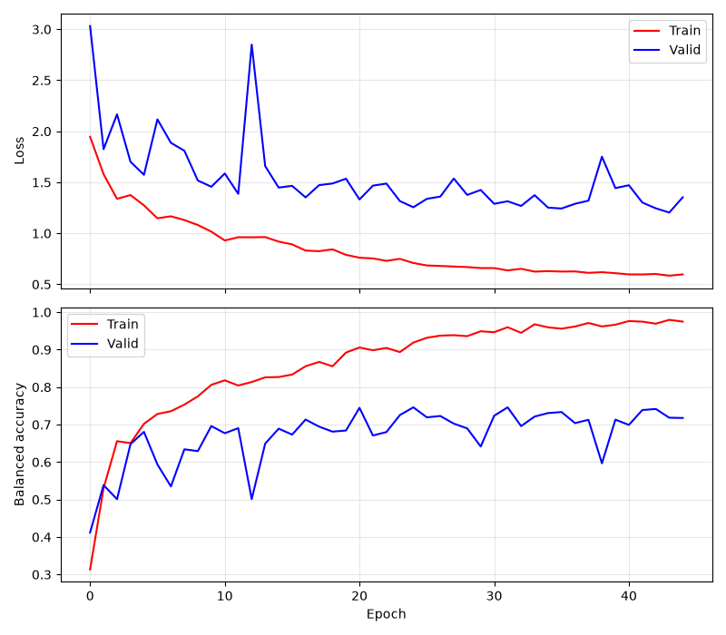
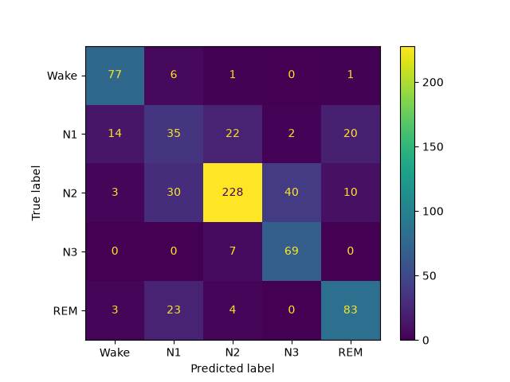
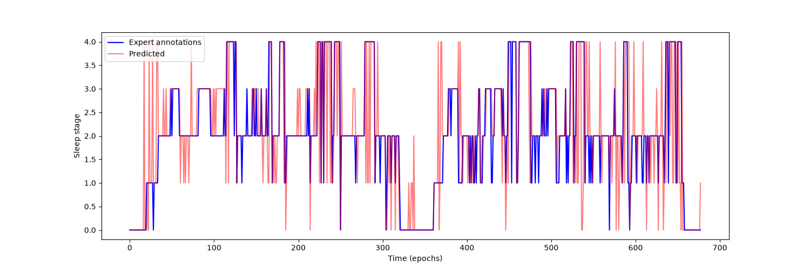

Note
Go to the end to download the full example code.
Sleep staging on the Sleep Physionet dataset using Eldele2021#
This tutorial shows how to train and test a sleep staging neural network with Braindecode. We use the attention-based model from [1] with the time distributed approach of [2] to learn on sequences of EEG windows using the openly accessible Sleep Physionet dataset [3] [4].
# Authors: Divyesh Narayanan <divyesh.narayanan@gmail.com>
#
# License: BSD (3-clause)
Loading and preprocessing the dataset#
Loading#
First, we load the data using the
braindecode.datasets.sleep_physionet.SleepPhysionet class. We load
six subjects with two recordings each. Subjects 0-3 are used for training
and subjects 4-5 for validation.
from numbers import Integral
from braindecode.datasets import SleepPhysionet
subject_ids = [0, 1, 2, 3, 4, 5]
train_subject_ids = [0, 1, 2, 3]
valid_subject_ids = [4, 5]
dataset = SleepPhysionet(
subject_ids=subject_ids, recording_ids=[1, 2], crop_wake_mins=30
)
Downloading data from 'https://physionet.org/physiobank/database/sleep-edfx/sleep-cassette//SC4002E0-PSG.edf' to file '/home/runner/mne_data/physionet-sleep-data/SC4002E0-PSG.edf'.
0%| | 0.00/51.6M [00:00<?, ?B/s]
0%| | 9.22k/51.6M [00:00<15:26, 55.7kB/s]
0%| | 33.8k/51.6M [00:00<07:58, 108kB/s]
0%| | 45.1k/51.6M [00:00<10:48, 79.5kB/s]
0%| | 66.6k/51.6M [00:00<10:23, 82.7kB/s]
0%| | 75.8k/51.6M [00:01<12:35, 68.2kB/s]
0%| | 91.1k/51.6M [00:01<12:46, 67.2kB/s]
0%| | 108k/51.6M [00:01<12:07, 70.8kB/s]
0%| | 124k/51.6M [00:01<11:44, 73.1kB/s]
0%| | 140k/51.6M [00:01<11:24, 75.2kB/s]
0%| | 165k/51.6M [00:02<09:18, 92.2kB/s]
0%|▏ | 175k/51.6M [00:02<10:43, 80.0kB/s]
0%|▏ | 189k/51.6M [00:02<10:03, 85.3kB/s]
0%|▏ | 206k/51.6M [00:02<09:38, 88.9kB/s]
0%|▏ | 222k/51.6M [00:02<08:51, 96.8kB/s]
0%|▏ | 239k/51.6M [00:02<08:39, 99.0kB/s]
0%|▏ | 255k/51.6M [00:02<08:01, 107kB/s]
1%|▏ | 271k/51.6M [00:03<08:44, 97.9kB/s]
1%|▏ | 304k/51.6M [00:03<07:33, 113kB/s]
1%|▏ | 321k/51.6M [00:03<07:07, 120kB/s]
1%|▎ | 337k/51.6M [00:03<07:06, 120kB/s]
1%|▎ | 353k/51.6M [00:03<06:45, 127kB/s]
1%|▎ | 370k/51.6M [00:03<06:38, 129kB/s]
1%|▎ | 386k/51.6M [00:04<07:14, 118kB/s]
1%|▎ | 402k/51.6M [00:04<07:58, 107kB/s]
1%|▎ | 427k/51.6M [00:04<06:51, 124kB/s]
1%|▎ | 440k/51.6M [00:04<07:24, 115kB/s]
1%|▎ | 453k/51.6M [00:04<08:36, 99.0kB/s]
1%|▎ | 468k/51.6M [00:04<08:51, 96.3kB/s]
1%|▎ | 484k/51.6M [00:05<09:05, 93.8kB/s]
1%|▎ | 501k/51.6M [00:05<08:37, 98.8kB/s]
1%|▍ | 517k/51.6M [00:05<08:56, 95.2kB/s]
1%|▍ | 534k/51.6M [00:05<09:22, 90.8kB/s]
1%|▍ | 558k/51.6M [00:05<07:41, 111kB/s]
1%|▍ | 570k/51.6M [00:05<08:13, 104kB/s]
1%|▍ | 583k/51.6M [00:06<08:35, 99.1kB/s]
1%|▍ | 599k/51.6M [00:06<09:20, 91.0kB/s]
1%|▍ | 615k/51.6M [00:06<09:35, 88.7kB/s]
1%|▍ | 632k/51.6M [00:06<08:59, 94.5kB/s]
1%|▍ | 648k/51.6M [00:06<08:27, 100kB/s]
1%|▍ | 665k/51.6M [00:06<08:43, 97.3kB/s]
1%|▌ | 689k/51.6M [00:07<07:44, 110kB/s]
1%|▌ | 700k/51.6M [00:07<09:12, 92.2kB/s]
1%|▌ | 714k/51.6M [00:07<10:03, 84.4kB/s]
1%|▌ | 730k/51.6M [00:07<10:16, 82.5kB/s]
1%|▌ | 746k/51.6M [00:07<10:09, 83.4kB/s]
1%|▌ | 763k/51.6M [00:08<10:34, 80.1kB/s]
2%|▌ | 779k/51.6M [00:08<09:21, 90.5kB/s]
2%|▌ | 796k/51.6M [00:08<09:07, 92.8kB/s]
2%|▋ | 828k/51.6M [00:08<06:52, 123kB/s]
2%|▋ | 853k/51.6M [00:08<06:23, 132kB/s]
2%|▋ | 878k/51.6M [00:08<06:20, 133kB/s]
2%|▋ | 894k/51.6M [00:09<06:42, 126kB/s]
2%|▋ | 910k/51.6M [00:09<06:32, 129kB/s]
2%|▋ | 927k/51.6M [00:09<07:06, 119kB/s]
2%|▋ | 959k/51.6M [00:09<05:52, 144kB/s]
2%|▋ | 984k/51.6M [00:09<05:41, 148kB/s]
2%|▋ | 1.01M/51.6M [00:09<05:46, 146kB/s]
2%|▊ | 1.03M/51.6M [00:09<06:05, 138kB/s]
2%|▊ | 1.06M/51.6M [00:10<05:42, 148kB/s]
2%|▊ | 1.07M/51.6M [00:10<05:56, 142kB/s]
2%|▊ | 1.12M/51.6M [00:10<05:10, 163kB/s]
2%|▊ | 1.13M/51.6M [00:10<05:28, 153kB/s]
2%|▊ | 1.16M/51.6M [00:10<05:55, 142kB/s]
2%|▊ | 1.17M/51.6M [00:10<05:57, 141kB/s]
2%|▉ | 1.19M/51.6M [00:11<05:48, 145kB/s]
2%|▉ | 1.21M/51.6M [00:11<05:39, 148kB/s]
2%|▉ | 1.22M/51.6M [00:11<05:49, 144kB/s]
2%|▉ | 1.25M/51.6M [00:11<05:10, 162kB/s]
2%|▉ | 1.26M/51.6M [00:11<05:46, 145kB/s]
2%|▉ | 1.28M/51.6M [00:11<06:02, 139kB/s]
3%|▉ | 1.29M/51.6M [00:11<06:54, 121kB/s]
3%|▉ | 1.31M/51.6M [00:11<07:09, 117kB/s]
3%|▉ | 1.32M/51.6M [00:12<07:27, 112kB/s]
3%|▉ | 1.34M/51.6M [00:12<07:36, 110kB/s]
3%|▉ | 1.35M/51.6M [00:12<07:23, 113kB/s]
3%|█ | 1.38M/51.6M [00:12<07:46, 108kB/s]
3%|▉ | 1.39M/51.6M [00:12<09:03, 92.5kB/s]
3%|█ | 1.40M/51.6M [00:13<09:45, 85.8kB/s]
3%|█ | 1.42M/51.6M [00:13<10:41, 78.3kB/s]
3%|█ | 1.43M/51.6M [00:13<10:19, 81.0kB/s]
3%|█ | 1.45M/51.6M [00:13<09:43, 86.0kB/s]
3%|█ | 1.47M/51.6M [00:13<09:58, 83.8kB/s]
3%|█ | 1.48M/51.6M [00:14<10:01, 83.3kB/s]
3%|█ | 1.51M/51.6M [00:14<08:59, 92.8kB/s]
3%|█ | 1.52M/51.6M [00:14<10:47, 77.4kB/s]
3%|█ | 1.53M/51.6M [00:14<11:21, 73.5kB/s]
3%|█ | 1.55M/51.6M [00:14<10:55, 76.4kB/s]
3%|█ | 1.57M/51.6M [00:15<11:21, 73.5kB/s]
3%|█▏ | 1.58M/51.6M [00:15<11:09, 74.7kB/s]
3%|█▏ | 1.60M/51.6M [00:15<10:34, 78.8kB/s]
3%|█▏ | 1.61M/51.6M [00:15<12:05, 69.0kB/s]
3%|█▏ | 1.64M/51.6M [00:16<10:22, 80.3kB/s]
3%|█▏ | 1.65M/51.6M [00:16<12:22, 67.3kB/s]
3%|█▏ | 1.66M/51.6M [00:16<11:29, 72.4kB/s]
3%|█▏ | 1.68M/51.6M [00:16<12:33, 66.3kB/s]
3%|█▏ | 1.70M/51.6M [00:17<12:48, 65.0kB/s]
3%|█▏ | 1.71M/51.6M [00:17<12:50, 64.8kB/s]
3%|█▏ | 1.73M/51.6M [00:17<13:44, 60.5kB/s]
3%|█▎ | 1.75M/51.6M [00:17<14:02, 59.2kB/s]
3%|█▎ | 1.77M/51.6M [00:18<11:10, 74.4kB/s]
3%|█▎ | 1.78M/51.6M [00:18<12:53, 64.4kB/s]
3%|█▎ | 1.80M/51.6M [00:18<13:09, 63.1kB/s]
4%|█▎ | 1.81M/51.6M [00:18<11:45, 70.6kB/s]
4%|█▎ | 1.83M/51.6M [00:18<11:45, 70.6kB/s]
4%|█▎ | 1.84M/51.6M [00:19<12:23, 66.9kB/s]
4%|█▎ | 1.86M/51.6M [00:19<13:08, 63.1kB/s]
4%|█▎ | 1.88M/51.6M [00:19<12:56, 64.1kB/s]
4%|█▎ | 1.90M/51.6M [00:20<10:56, 75.8kB/s]
4%|█▎ | 1.91M/51.6M [00:20<12:07, 68.3kB/s]
4%|█▍ | 1.93M/51.6M [00:20<14:43, 56.2kB/s]
4%|█▍ | 1.94M/51.6M [00:20<12:18, 67.3kB/s]
4%|█▍ | 1.96M/51.6M [00:20<12:14, 67.6kB/s]
4%|█▍ | 1.98M/51.6M [00:21<15:56, 51.9kB/s]
4%|█▍ | 1.99M/51.6M [00:21<13:34, 60.9kB/s]
4%|█▍ | 2.01M/51.6M [00:21<12:56, 63.9kB/s]
4%|█▍ | 2.03M/51.6M [00:22<12:01, 68.8kB/s]
4%|█▍ | 2.04M/51.6M [00:22<14:29, 57.0kB/s]
4%|█▍ | 2.06M/51.6M [00:22<15:31, 53.2kB/s]
4%|█▍ | 2.07M/51.6M [00:23<20:40, 39.9kB/s]
4%|█▍ | 2.09M/51.6M [00:23<21:34, 38.3kB/s]
4%|█▌ | 2.11M/51.6M [00:24<22:04, 37.4kB/s]
4%|█▌ | 2.12M/51.6M [00:24<22:17, 37.0kB/s]
4%|█▌ | 2.14M/51.6M [00:25<20:14, 40.7kB/s]
4%|█▌ | 2.16M/51.6M [00:25<16:17, 50.6kB/s]
4%|█▌ | 2.17M/51.6M [00:25<15:45, 52.3kB/s]
4%|█▌ | 2.19M/51.6M [00:25<14:32, 56.6kB/s]
4%|█▌ | 2.20M/51.6M [00:26<13:20, 61.8kB/s]
4%|█▌ | 2.22M/51.6M [00:26<12:03, 68.3kB/s]
4%|█▌ | 2.24M/51.6M [00:26<12:31, 65.7kB/s]
4%|█▌ | 2.26M/51.6M [00:26<10:07, 81.2kB/s]
4%|█▋ | 2.27M/51.6M [00:26<11:59, 68.6kB/s]
4%|█▋ | 2.29M/51.6M [00:27<11:24, 72.0kB/s]
4%|█▋ | 2.30M/51.6M [00:27<13:05, 62.8kB/s]
4%|█▋ | 2.32M/51.6M [00:27<13:14, 62.1kB/s]
5%|█▋ | 2.34M/51.6M [00:27<12:22, 66.4kB/s]
5%|█▋ | 2.35M/51.6M [00:28<13:32, 60.6kB/s]
5%|█▋ | 2.37M/51.6M [00:28<13:07, 62.5kB/s]
5%|█▋ | 2.39M/51.6M [00:28<11:38, 70.5kB/s]
5%|█▋ | 2.40M/51.6M [00:28<12:47, 64.1kB/s]
5%|█▋ | 2.42M/51.6M [00:29<11:28, 71.5kB/s]
5%|█▋ | 2.43M/51.6M [00:29<16:30, 49.7kB/s]
5%|█▊ | 2.45M/51.6M [00:29<16:04, 51.0kB/s]
5%|█▊ | 2.47M/51.6M [00:30<16:32, 49.5kB/s]
5%|█▊ | 2.48M/51.6M [00:30<14:38, 56.0kB/s]
5%|█▊ | 2.50M/51.6M [00:30<15:12, 53.8kB/s]
5%|█▊ | 2.52M/51.6M [00:31<11:48, 69.3kB/s]
5%|█▊ | 2.53M/51.6M [00:31<13:08, 62.2kB/s]
5%|█▊ | 2.55M/51.6M [00:31<13:06, 62.4kB/s]
5%|█▊ | 2.57M/51.6M [00:31<12:57, 63.1kB/s]
5%|█▊ | 2.58M/51.6M [00:31<12:06, 67.5kB/s]
5%|█▊ | 2.60M/51.6M [00:32<12:09, 67.2kB/s]
5%|█▊ | 2.61M/51.6M [00:32<11:08, 73.3kB/s]
5%|█▉ | 2.63M/51.6M [00:32<11:52, 68.7kB/s]
5%|█▉ | 2.66M/51.6M [00:33<11:32, 70.7kB/s]
5%|█▉ | 2.66M/51.6M [00:33<12:46, 63.9kB/s]
5%|█▉ | 2.68M/51.6M [00:33<13:24, 60.8kB/s]
5%|█▉ | 2.70M/51.6M [00:33<13:36, 59.9kB/s]
5%|█▉ | 2.71M/51.6M [00:34<13:25, 60.7kB/s]
5%|█▉ | 2.73M/51.6M [00:34<12:57, 62.9kB/s]
5%|█▉ | 2.75M/51.6M [00:34<13:47, 59.1kB/s]
5%|█▉ | 2.76M/51.6M [00:34<14:18, 56.9kB/s]
5%|█▉ | 2.79M/51.6M [00:35<11:33, 70.5kB/s]
5%|██ | 2.79M/51.6M [00:35<13:07, 62.0kB/s]
5%|██ | 2.81M/51.6M [00:35<12:59, 62.6kB/s]
5%|██ | 2.83M/51.6M [00:35<13:53, 58.6kB/s]
6%|██ | 2.84M/51.6M [00:36<12:48, 63.5kB/s]
6%|██ | 2.86M/51.6M [00:36<12:24, 65.5kB/s]
6%|██ | 2.88M/51.6M [00:36<12:51, 63.2kB/s]
6%|██ | 2.89M/51.6M [00:36<12:37, 64.3kB/s]
6%|██ | 2.92M/51.6M [00:37<10:10, 79.8kB/s]
6%|██ | 2.93M/51.6M [00:37<11:18, 71.8kB/s]
6%|██ | 2.94M/51.6M [00:37<11:50, 68.5kB/s]
6%|██ | 2.96M/51.6M [00:37<11:43, 69.2kB/s]
6%|██▏ | 2.97M/51.6M [00:37<11:00, 73.6kB/s]
6%|██▏ | 2.99M/51.6M [00:38<11:41, 69.3kB/s]
6%|██▏ | 3.01M/51.6M [00:38<11:51, 68.3kB/s]
6%|██▏ | 3.02M/51.6M [00:38<10:52, 74.5kB/s]
6%|██▏ | 3.05M/51.6M [00:38<08:54, 90.9kB/s]
6%|██▏ | 3.06M/51.6M [00:38<09:46, 82.9kB/s]
6%|██▏ | 3.07M/51.6M [00:39<12:17, 65.8kB/s]
6%|██▏ | 3.09M/51.6M [00:39<12:43, 63.5kB/s]
6%|██▏ | 3.11M/51.6M [00:39<13:00, 62.2kB/s]
6%|██▏ | 3.12M/51.6M [00:40<11:46, 68.7kB/s]
6%|██▎ | 3.15M/51.6M [00:40<11:28, 70.4kB/s]
6%|██▎ | 3.15M/51.6M [00:40<13:04, 61.7kB/s]
6%|██▎ | 3.17M/51.6M [00:40<11:29, 70.2kB/s]
6%|██▎ | 3.19M/51.6M [00:41<12:42, 63.5kB/s]
6%|██▎ | 3.20M/51.6M [00:41<12:55, 62.5kB/s]
6%|██▎ | 3.22M/51.6M [00:41<14:29, 55.6kB/s]
6%|██▎ | 3.24M/51.6M [00:41<14:00, 57.6kB/s]
6%|██▎ | 3.25M/51.6M [00:42<14:16, 56.5kB/s]
6%|██▎ | 3.28M/51.6M [00:42<12:17, 65.5kB/s]
6%|██▎ | 3.29M/51.6M [00:42<14:54, 54.0kB/s]
6%|██▎ | 3.30M/51.6M [00:43<14:06, 57.1kB/s]
6%|██▍ | 3.32M/51.6M [00:43<13:05, 61.5kB/s]
6%|██▍ | 3.34M/51.6M [00:43<14:02, 57.3kB/s]
6%|██▍ | 3.35M/51.6M [00:43<12:16, 65.6kB/s]
7%|██▍ | 3.37M/51.6M [00:44<12:13, 65.7kB/s]
7%|██▍ | 3.38M/51.6M [00:44<12:25, 64.7kB/s]
7%|██▍ | 3.41M/51.6M [00:44<09:51, 81.6kB/s]
7%|██▍ | 3.42M/51.6M [00:44<11:34, 69.5kB/s]
7%|██▍ | 3.43M/51.6M [00:44<10:06, 79.5kB/s]
7%|██▍ | 3.45M/51.6M [00:45<10:34, 75.9kB/s]
7%|██▍ | 3.47M/51.6M [00:45<10:19, 77.7kB/s]
7%|██▍ | 3.48M/51.6M [00:45<10:39, 75.3kB/s]
7%|██▌ | 3.50M/51.6M [00:45<11:14, 71.4kB/s]
7%|██▌ | 3.52M/51.6M [00:46<10:45, 74.6kB/s]
7%|██▌ | 3.54M/51.6M [00:46<09:12, 87.0kB/s]
7%|██▌ | 3.55M/51.6M [00:46<12:00, 66.8kB/s]
7%|██▌ | 3.56M/51.6M [00:46<11:14, 71.2kB/s]
7%|██▌ | 3.58M/51.6M [00:46<10:32, 76.0kB/s]
7%|██▌ | 3.60M/51.6M [00:47<11:04, 72.3kB/s]
7%|██▌ | 3.61M/51.6M [00:47<10:38, 75.2kB/s]
7%|██▌ | 3.63M/51.6M [00:47<12:37, 63.4kB/s]
7%|██▌ | 3.65M/51.6M [00:47<10:54, 73.3kB/s]
7%|██▋ | 3.67M/51.6M [00:48<09:44, 82.0kB/s]
7%|██▋ | 3.68M/51.6M [00:49<26:02, 30.7kB/s]
7%|██▋ | 3.70M/51.6M [00:49<27:04, 29.5kB/s]
7%|██▋ | 3.71M/51.6M [00:50<27:19, 29.2kB/s]
7%|██▋ | 3.73M/51.6M [00:50<24:05, 33.1kB/s]
7%|██▋ | 3.74M/51.6M [00:51<23:36, 33.8kB/s]
7%|██▋ | 3.77M/51.6M [00:51<21:31, 37.0kB/s]
7%|██▋ | 3.78M/51.6M [00:52<22:34, 35.3kB/s]
7%|██▋ | 3.79M/51.6M [00:52<21:05, 37.8kB/s]
7%|██▋ | 3.81M/51.6M [00:52<18:58, 42.0kB/s]
7%|██▋ | 3.83M/51.6M [00:53<18:48, 42.3kB/s]
7%|██▊ | 3.84M/51.6M [00:53<14:57, 53.3kB/s]
7%|██▊ | 3.86M/51.6M [00:53<16:26, 48.4kB/s]
8%|██▊ | 3.88M/51.6M [00:53<14:45, 53.9kB/s]
8%|██▊ | 3.90M/51.6M [00:54<11:49, 67.3kB/s]
8%|██▊ | 3.91M/51.6M [00:54<13:01, 61.1kB/s]
8%|██▊ | 3.92M/51.6M [00:54<13:37, 58.3kB/s]
8%|██▊ | 3.94M/51.6M [00:54<12:39, 62.8kB/s]
8%|██▊ | 3.96M/51.6M [00:55<13:18, 59.7kB/s]
8%|██▊ | 3.97M/51.6M [00:55<15:57, 49.8kB/s]
8%|██▊ | 3.99M/51.6M [00:55<14:53, 53.3kB/s]
8%|██▊ | 4.01M/51.6M [00:56<14:20, 55.4kB/s]
8%|██▉ | 4.03M/51.6M [00:56<12:00, 66.0kB/s]
8%|██▉ | 4.04M/51.6M [00:56<14:04, 56.3kB/s]
8%|██▉ | 4.06M/51.6M [00:56<12:46, 62.0kB/s]
8%|██▉ | 4.07M/51.6M [00:57<12:37, 62.7kB/s]
8%|██▉ | 4.09M/51.6M [00:57<12:34, 63.0kB/s]
8%|██▉ | 4.11M/51.6M [00:57<11:17, 70.1kB/s]
8%|██▉ | 4.12M/51.6M [00:57<10:49, 73.2kB/s]
8%|██▉ | 4.14M/51.6M [00:57<11:19, 69.9kB/s]
8%|██▉ | 4.16M/51.6M [00:58<09:41, 81.6kB/s]
8%|██▉ | 4.17M/51.6M [00:58<12:59, 60.9kB/s]
8%|███ | 4.19M/51.6M [00:58<12:51, 61.5kB/s]
8%|███ | 4.20M/51.6M [00:59<21:54, 36.1kB/s]
8%|███ | 4.22M/51.6M [00:59<19:41, 40.1kB/s]
8%|███ | 4.24M/51.6M [01:00<20:40, 38.2kB/s]
8%|███ | 4.25M/51.6M [01:00<20:57, 37.7kB/s]
8%|███ | 4.27M/51.6M [01:01<17:14, 45.8kB/s]
8%|███ | 4.29M/51.6M [01:01<17:17, 45.6kB/s]
8%|███ | 4.30M/51.6M [01:01<20:37, 38.2kB/s]
8%|███ | 4.32M/51.6M [01:02<17:51, 44.2kB/s]
8%|███ | 4.33M/51.6M [01:02<17:36, 44.7kB/s]
8%|███ | 4.35M/51.6M [01:03<19:41, 40.0kB/s]
8%|███▏ | 4.37M/51.6M [01:03<21:08, 37.3kB/s]
8%|███▏ | 4.38M/51.6M [01:04<28:37, 27.5kB/s]
9%|███▏ | 4.40M/51.6M [01:04<25:30, 30.9kB/s]
9%|███▏ | 4.42M/51.6M [01:05<19:08, 41.1kB/s]
9%|███▏ | 4.43M/51.6M [01:05<18:34, 42.4kB/s]
9%|███▏ | 4.45M/51.6M [01:05<15:56, 49.3kB/s]
9%|███▏ | 4.47M/51.6M [01:05<16:45, 46.9kB/s]
9%|███▏ | 4.48M/51.6M [01:06<16:33, 47.4kB/s]
9%|███▏ | 4.50M/51.6M [01:06<15:16, 51.4kB/s]
9%|███▏ | 4.51M/51.6M [01:07<20:10, 38.9kB/s]
9%|███▏ | 4.53M/51.6M [01:07<17:18, 45.3kB/s]
9%|███▎ | 4.56M/51.6M [01:07<13:14, 59.2kB/s]
9%|███▎ | 4.56M/51.6M [01:08<16:00, 49.0kB/s]
9%|███▎ | 4.58M/51.6M [01:08<17:28, 44.9kB/s]
9%|███▎ | 4.60M/51.6M [01:08<17:52, 43.8kB/s]
9%|███▎ | 4.61M/51.6M [01:09<16:16, 48.1kB/s]
9%|███▎ | 4.63M/51.6M [01:09<13:57, 56.1kB/s]
9%|███▎ | 4.65M/51.6M [01:09<15:33, 50.3kB/s]
9%|███▎ | 4.66M/51.6M [01:09<14:44, 53.1kB/s]
9%|███▎ | 4.69M/51.6M [01:10<15:52, 49.3kB/s]
9%|███▎ | 4.70M/51.6M [01:11<22:29, 34.8kB/s]
9%|███▍ | 4.71M/51.6M [01:11<23:00, 34.0kB/s]
9%|███▍ | 4.73M/51.6M [01:11<19:04, 41.0kB/s]
9%|███▍ | 4.74M/51.6M [01:12<18:06, 43.1kB/s]
9%|███▍ | 4.76M/51.6M [01:12<14:56, 52.3kB/s]
9%|███▍ | 4.79M/51.6M [01:12<11:50, 65.9kB/s]
9%|███▍ | 4.79M/51.6M [01:12<12:51, 60.7kB/s]
9%|███▍ | 4.81M/51.6M [01:13<14:07, 55.2kB/s]
9%|███▍ | 4.83M/51.6M [01:13<12:51, 60.6kB/s]
9%|███▍ | 4.84M/51.6M [01:14<19:29, 40.0kB/s]
9%|███▍ | 4.86M/51.6M [01:14<18:23, 42.4kB/s]
9%|███▍ | 4.88M/51.6M [01:14<17:01, 45.8kB/s]
9%|███▌ | 4.89M/51.6M [01:15<17:26, 44.6kB/s]
10%|███▌ | 4.92M/51.6M [01:15<13:35, 57.3kB/s]
10%|███▌ | 4.92M/51.6M [01:15<14:42, 52.9kB/s]
10%|███▌ | 4.94M/51.6M [01:15<14:47, 52.6kB/s]
10%|███▌ | 4.96M/51.6M [01:16<14:44, 52.7kB/s]
10%|███▌ | 4.97M/51.6M [01:16<14:28, 53.7kB/s]
10%|███▌ | 4.99M/51.6M [01:16<14:07, 55.0kB/s]
10%|███▌ | 5.01M/51.6M [01:16<12:44, 60.9kB/s]
10%|███▌ | 5.02M/51.6M [01:17<11:12, 69.3kB/s]
10%|███▌ | 5.05M/51.6M [01:17<08:49, 88.0kB/s]
10%|███▋ | 5.07M/51.6M [01:17<08:01, 96.8kB/s]
10%|███▋ | 5.09M/51.6M [01:17<07:31, 103kB/s]
10%|███▊ | 5.12M/51.6M [01:17<06:16, 123kB/s]
10%|███▊ | 5.14M/51.6M [01:17<06:13, 124kB/s]
10%|███▊ | 5.15M/51.6M [01:17<05:57, 130kB/s]
10%|███▊ | 5.18M/51.6M [01:18<05:55, 130kB/s]
10%|███▊ | 5.19M/51.6M [01:18<06:28, 120kB/s]
10%|███▋ | 5.20M/51.6M [01:18<07:48, 99.2kB/s]
10%|███▋ | 5.22M/51.6M [01:18<08:48, 87.8kB/s]
10%|███▊ | 5.24M/51.6M [01:19<09:46, 79.1kB/s]
10%|███▊ | 5.25M/51.6M [01:19<10:01, 77.1kB/s]
10%|███▊ | 5.27M/51.6M [01:19<09:55, 77.9kB/s]
10%|███▊ | 5.28M/51.6M [01:19<09:36, 80.4kB/s]
10%|███▊ | 5.31M/51.6M [01:19<09:07, 84.6kB/s]
10%|███▊ | 5.32M/51.6M [01:20<10:34, 72.9kB/s]
10%|███▊ | 5.33M/51.6M [01:20<09:50, 78.3kB/s]
10%|███▊ | 5.35M/51.6M [01:20<09:47, 78.8kB/s]
10%|███▊ | 5.37M/51.6M [01:20<09:36, 80.2kB/s]
10%|███▊ | 5.38M/51.6M [01:20<09:16, 83.1kB/s]
10%|███▊ | 5.40M/51.6M [01:21<09:25, 81.7kB/s]
10%|███▉ | 5.42M/51.6M [01:21<11:00, 70.0kB/s]
11%|███▉ | 5.44M/51.6M [01:21<08:18, 92.7kB/s]
11%|███▉ | 5.45M/51.6M [01:21<09:22, 82.0kB/s]
11%|███▉ | 5.47M/51.6M [01:21<10:05, 76.2kB/s]
11%|███▉ | 5.48M/51.6M [01:22<09:41, 79.3kB/s]
11%|███▉ | 5.50M/51.6M [01:22<10:34, 72.6kB/s]
11%|███▉ | 5.51M/51.6M [01:22<09:27, 81.3kB/s]
11%|███▉ | 5.54M/51.6M [01:22<08:23, 91.5kB/s]
11%|███▉ | 5.55M/51.6M [01:23<11:12, 68.5kB/s]
11%|███▉ | 5.56M/51.6M [01:23<10:21, 74.1kB/s]
11%|███▉ | 5.58M/51.6M [01:23<10:06, 75.9kB/s]
11%|████ | 5.60M/51.6M [01:23<11:12, 68.5kB/s]
11%|████ | 5.61M/51.6M [01:23<10:00, 76.6kB/s]
11%|████ | 5.63M/51.6M [01:24<11:01, 69.5kB/s]
11%|████ | 5.65M/51.6M [01:24<10:34, 72.5kB/s]
11%|████ | 5.66M/51.6M [01:24<08:50, 86.6kB/s]
11%|████ | 5.67M/51.6M [01:24<10:16, 74.5kB/s]
11%|████ | 5.68M/51.6M [01:24<11:44, 65.2kB/s]
11%|████ | 5.69M/51.6M [01:25<11:50, 64.6kB/s]
11%|████ | 5.71M/51.6M [01:25<11:09, 68.6kB/s]
11%|████ | 5.73M/51.6M [01:25<11:22, 67.3kB/s]
11%|████ | 5.74M/51.6M [01:25<11:06, 68.9kB/s]
11%|████▏ | 5.76M/51.6M [01:26<11:24, 67.0kB/s]
11%|████▏ | 5.78M/51.6M [01:26<11:33, 66.1kB/s]
11%|████▏ | 5.80M/51.6M [01:26<09:46, 78.2kB/s]
11%|████▏ | 5.81M/51.6M [01:26<10:59, 69.4kB/s]
11%|████▏ | 5.83M/51.6M [01:26<10:21, 73.7kB/s]
11%|████▏ | 5.84M/51.6M [01:27<10:37, 71.8kB/s]
11%|████▏ | 5.86M/51.6M [01:27<10:03, 75.8kB/s]
11%|████▏ | 5.87M/51.6M [01:27<09:41, 78.6kB/s]
11%|████▏ | 5.89M/51.6M [01:27<10:38, 71.6kB/s]
11%|████▏ | 5.91M/51.6M [01:27<09:49, 77.5kB/s]
11%|████▎ | 5.93M/51.6M [01:28<08:22, 91.0kB/s]
12%|████▎ | 5.94M/51.6M [01:28<09:39, 78.8kB/s]
12%|████▎ | 5.96M/51.6M [01:28<10:09, 74.9kB/s]
12%|████▎ | 5.97M/51.6M [01:28<09:38, 78.8kB/s]
12%|████▎ | 5.99M/51.6M [01:28<09:08, 83.2kB/s]
12%|████▎ | 6.01M/51.6M [01:29<09:35, 79.3kB/s]
12%|████▎ | 6.02M/51.6M [01:29<10:25, 72.9kB/s]
12%|████▎ | 6.04M/51.6M [01:29<11:25, 66.5kB/s]
12%|████▎ | 6.06M/51.6M [01:30<11:22, 66.7kB/s]
12%|████▎ | 6.07M/51.6M [01:30<13:20, 56.9kB/s]
12%|████▎ | 6.09M/51.6M [01:30<13:10, 57.6kB/s]
12%|████▍ | 6.10M/51.6M [01:30<13:33, 56.0kB/s]
12%|████▍ | 6.12M/51.6M [01:31<13:25, 56.5kB/s]
12%|████▍ | 6.14M/51.6M [01:31<13:13, 57.3kB/s]
12%|████▍ | 6.15M/51.6M [01:31<12:35, 60.1kB/s]
12%|████▍ | 6.17M/51.6M [01:32<13:21, 56.7kB/s]
12%|████▍ | 6.19M/51.6M [01:32<11:53, 63.6kB/s]
12%|████▍ | 6.20M/51.6M [01:32<15:09, 50.0kB/s]
12%|████▍ | 6.22M/51.6M [01:33<16:14, 46.6kB/s]
12%|████▍ | 6.24M/51.6M [01:33<16:15, 46.5kB/s]
12%|████▍ | 6.25M/51.6M [01:33<14:36, 51.7kB/s]
12%|████▍ | 6.27M/51.6M [01:33<13:41, 55.2kB/s]
12%|████▌ | 6.28M/51.6M [01:34<12:58, 58.3kB/s]
12%|████▌ | 6.30M/51.6M [01:34<13:01, 58.0kB/s]
12%|████▌ | 6.33M/51.6M [01:34<10:29, 71.9kB/s]
12%|████▌ | 6.33M/51.6M [01:34<12:05, 62.4kB/s]
12%|████▌ | 6.35M/51.6M [01:35<11:49, 63.8kB/s]
12%|████▌ | 6.37M/51.6M [01:35<11:06, 67.9kB/s]
12%|████▌ | 6.38M/51.6M [01:35<10:29, 71.9kB/s]
12%|████▌ | 6.40M/51.6M [01:35<11:04, 68.1kB/s]
12%|████▌ | 6.42M/51.6M [01:36<08:40, 86.9kB/s]
12%|████▌ | 6.43M/51.6M [01:36<09:16, 81.2kB/s]
12%|████▌ | 6.45M/51.6M [01:36<08:49, 85.3kB/s]
13%|████▋ | 6.46M/51.6M [01:36<08:08, 92.4kB/s]
13%|████▋ | 6.48M/51.6M [01:36<08:52, 84.8kB/s]
13%|████▋ | 6.50M/51.6M [01:36<09:11, 81.8kB/s]
13%|████▋ | 6.51M/51.6M [01:37<09:08, 82.3kB/s]
13%|████▋ | 6.53M/51.6M [01:37<08:29, 88.6kB/s]
13%|████▊ | 6.55M/51.6M [01:37<06:46, 111kB/s]
13%|████▊ | 6.57M/51.6M [01:37<07:05, 106kB/s]
13%|████▊ | 6.58M/51.6M [01:37<07:30, 100kB/s]
13%|████▊ | 6.60M/51.6M [01:37<07:12, 104kB/s]
13%|████▊ | 6.61M/51.6M [01:37<07:09, 105kB/s]
13%|████▉ | 6.63M/51.6M [01:38<06:57, 108kB/s]
13%|████▉ | 6.64M/51.6M [01:38<06:58, 108kB/s]
13%|████▉ | 6.66M/51.6M [01:38<06:28, 116kB/s]
13%|████▉ | 6.69M/51.6M [01:38<06:05, 123kB/s]
13%|████▉ | 6.70M/51.6M [01:38<06:21, 118kB/s]
13%|████▉ | 6.71M/51.6M [01:38<07:09, 105kB/s]
13%|████▉ | 6.73M/51.6M [01:39<07:21, 102kB/s]
13%|████▉ | 6.74M/51.6M [01:39<06:51, 109kB/s]
13%|████▉ | 6.76M/51.6M [01:39<06:53, 109kB/s]
13%|████▉ | 6.78M/51.6M [01:39<06:31, 115kB/s]
13%|████▉ | 6.79M/51.6M [01:39<06:32, 114kB/s]
13%|█████ | 6.82M/51.6M [01:39<05:34, 134kB/s]
13%|█████ | 6.83M/51.6M [01:39<06:03, 123kB/s]
13%|█████ | 6.84M/51.6M [01:39<06:41, 111kB/s]
13%|█████ | 6.86M/51.6M [01:40<06:40, 112kB/s]
13%|█████ | 6.87M/51.6M [01:40<07:07, 105kB/s]
13%|█████ | 6.89M/51.6M [01:40<06:57, 107kB/s]
13%|█████ | 6.91M/51.6M [01:40<07:17, 102kB/s]
13%|█████ | 6.92M/51.6M [01:40<07:18, 102kB/s]
13%|█████ | 6.95M/51.6M [01:40<06:30, 115kB/s]
13%|████▉ | 6.96M/51.6M [01:41<08:19, 89.3kB/s]
14%|████▉ | 6.97M/51.6M [01:41<09:36, 77.5kB/s]
14%|█████ | 6.99M/51.6M [01:41<09:40, 76.9kB/s]
14%|█████ | 7.01M/51.6M [01:41<09:34, 77.7kB/s]
14%|█████ | 7.02M/51.6M [01:42<09:22, 79.3kB/s]
14%|█████ | 7.04M/51.6M [01:42<08:38, 86.0kB/s]
14%|█████ | 7.05M/51.6M [01:42<09:01, 82.3kB/s]
14%|█████▏ | 7.08M/51.6M [01:42<07:22, 101kB/s]
14%|█████ | 7.09M/51.6M [01:42<08:10, 90.7kB/s]
14%|█████ | 7.10M/51.6M [01:42<08:46, 84.6kB/s]
14%|█████ | 7.12M/51.6M [01:43<09:10, 80.8kB/s]
14%|█████ | 7.14M/51.6M [01:43<08:30, 87.1kB/s]
14%|█████▏ | 7.15M/51.6M [01:43<09:15, 80.1kB/s]
14%|█████▏ | 7.18M/51.6M [01:43<07:49, 94.7kB/s]
14%|█████▏ | 7.19M/51.6M [01:43<09:35, 77.2kB/s]
14%|█████▏ | 7.20M/51.6M [01:44<09:21, 79.1kB/s]
14%|█████▏ | 7.22M/51.6M [01:44<08:46, 84.4kB/s]
14%|█████▏ | 7.23M/51.6M [01:44<07:55, 93.3kB/s]
14%|█████▏ | 7.25M/51.6M [01:44<07:32, 98.1kB/s]
14%|█████▎ | 7.27M/51.6M [01:44<07:19, 101kB/s]
14%|█████▏ | 7.28M/51.6M [01:44<07:42, 95.8kB/s]
14%|█████▍ | 7.31M/51.6M [01:45<06:35, 112kB/s]
14%|█████▍ | 7.32M/51.6M [01:45<06:47, 109kB/s]
14%|█████▍ | 7.33M/51.6M [01:45<06:39, 111kB/s]
14%|█████▍ | 7.35M/51.6M [01:45<06:14, 118kB/s]
14%|█████▍ | 7.37M/51.6M [01:45<05:43, 129kB/s]
14%|█████▍ | 7.38M/51.6M [01:45<05:28, 135kB/s]
14%|█████▍ | 7.40M/51.6M [01:45<05:18, 139kB/s]
14%|█████▍ | 7.41M/51.6M [01:45<05:48, 127kB/s]
14%|█████▍ | 7.45M/51.6M [01:46<04:56, 149kB/s]
14%|█████▍ | 7.46M/51.6M [01:46<05:08, 143kB/s]
15%|█████▌ | 7.50M/51.6M [01:46<05:26, 135kB/s]
15%|█████▍ | 7.51M/51.6M [01:46<08:16, 88.8kB/s]
15%|█████▌ | 7.54M/51.6M [01:47<07:16, 101kB/s]
15%|█████▍ | 7.55M/51.6M [01:47<08:43, 84.2kB/s]
15%|█████▍ | 7.56M/51.6M [01:47<10:05, 72.8kB/s]
15%|█████▍ | 7.58M/51.6M [01:47<09:15, 79.2kB/s]
15%|█████▍ | 7.60M/51.6M [01:47<09:07, 80.4kB/s]
15%|█████▍ | 7.61M/51.6M [01:48<09:03, 81.0kB/s]
15%|█████▍ | 7.63M/51.6M [01:48<11:49, 62.0kB/s]
15%|█████▍ | 7.64M/51.6M [01:48<11:09, 65.7kB/s]
15%|█████▍ | 7.67M/51.6M [01:48<09:37, 76.2kB/s]
15%|█████▌ | 7.68M/51.6M [01:49<11:08, 65.8kB/s]
15%|█████▌ | 7.69M/51.6M [01:49<10:09, 72.1kB/s]
15%|█████▌ | 7.71M/51.6M [01:49<10:01, 73.0kB/s]
15%|█████▌ | 7.73M/51.6M [01:49<09:34, 76.4kB/s]
15%|█████▌ | 7.74M/51.6M [01:50<14:11, 51.5kB/s]
15%|█████▌ | 7.76M/51.6M [01:50<12:35, 58.0kB/s]
15%|█████▌ | 7.78M/51.6M [01:50<11:51, 61.6kB/s]
15%|█████▌ | 7.80M/51.6M [01:51<11:47, 61.9kB/s]
15%|█████▌ | 7.81M/51.6M [01:51<14:14, 51.2kB/s]
15%|█████▌ | 7.82M/51.6M [01:51<13:07, 55.6kB/s]
15%|█████▌ | 7.84M/51.6M [01:52<15:02, 48.5kB/s]
15%|█████▋ | 7.86M/51.6M [01:52<13:28, 54.1kB/s]
15%|█████▋ | 7.87M/51.6M [01:52<13:25, 54.3kB/s]
15%|█████▋ | 7.89M/51.6M [01:52<12:57, 56.2kB/s]
15%|█████▋ | 7.91M/51.6M [01:53<11:39, 62.5kB/s]
15%|█████▋ | 7.93M/51.6M [01:53<09:22, 77.7kB/s]
15%|█████▋ | 7.94M/51.6M [01:53<11:29, 63.4kB/s]
15%|█████▋ | 7.96M/51.6M [01:53<11:10, 65.2kB/s]
15%|█████▋ | 7.97M/51.6M [01:53<09:55, 73.3kB/s]
15%|█████▋ | 7.99M/51.6M [01:54<09:28, 76.8kB/s]
16%|█████▋ | 8.00M/51.6M [01:54<10:25, 69.8kB/s]
16%|█████▋ | 8.02M/51.6M [01:54<09:50, 73.8kB/s]
16%|█████▊ | 8.04M/51.6M [01:54<10:07, 71.8kB/s]
16%|█████▊ | 8.06M/51.6M [01:55<08:18, 87.4kB/s]
16%|█████▊ | 8.07M/51.6M [01:55<09:26, 76.9kB/s]
16%|█████▊ | 8.09M/51.6M [01:55<09:21, 77.5kB/s]
16%|█████▊ | 8.10M/51.6M [01:55<09:52, 73.5kB/s]
16%|█████▊ | 8.12M/51.6M [01:55<09:22, 77.4kB/s]
16%|█████▊ | 8.14M/51.6M [01:56<11:11, 64.7kB/s]
16%|█████▊ | 8.16M/51.6M [01:56<09:46, 74.2kB/s]
16%|█████▊ | 8.17M/51.6M [01:56<11:53, 60.9kB/s]
16%|█████▊ | 8.18M/51.6M [01:57<12:31, 57.8kB/s]
16%|█████▉ | 8.20M/51.6M [01:57<14:48, 48.9kB/s]
16%|█████▉ | 8.22M/51.6M [01:57<13:53, 52.1kB/s]
16%|█████▉ | 8.23M/51.6M [01:58<12:47, 56.5kB/s]
16%|█████▉ | 8.25M/51.6M [01:58<11:24, 63.3kB/s]
16%|█████▉ | 8.27M/51.6M [01:58<11:02, 65.4kB/s]
16%|█████▉ | 8.29M/51.6M [01:58<09:46, 73.9kB/s]
16%|█████▉ | 8.30M/51.6M [01:58<11:00, 65.6kB/s]
16%|█████▉ | 8.32M/51.6M [01:59<10:48, 66.8kB/s]
16%|█████▉ | 8.33M/51.6M [01:59<11:19, 63.7kB/s]
16%|█████▉ | 8.35M/51.6M [01:59<10:42, 67.4kB/s]
16%|█████▉ | 8.37M/51.6M [01:59<11:05, 65.0kB/s]
16%|██████ | 8.38M/51.6M [02:00<10:31, 68.4kB/s]
16%|██████ | 8.40M/51.6M [02:00<10:25, 69.1kB/s]
16%|██████ | 8.42M/51.6M [02:00<08:03, 89.4kB/s]
16%|██████ | 8.43M/51.6M [02:00<09:33, 75.4kB/s]
16%|██████ | 8.45M/51.6M [02:01<10:56, 65.8kB/s]
16%|██████ | 8.46M/51.6M [02:01<10:13, 70.4kB/s]
16%|██████ | 8.48M/51.6M [02:01<09:53, 72.6kB/s]
16%|██████ | 8.50M/51.6M [02:01<11:38, 61.7kB/s]
16%|██████ | 8.51M/51.6M [02:01<10:38, 67.5kB/s]
17%|██████ | 8.53M/51.6M [02:02<11:10, 64.3kB/s]
17%|██████▏ | 8.55M/51.6M [02:02<08:13, 87.3kB/s]
17%|██████▏ | 8.56M/51.6M [02:02<09:24, 76.3kB/s]
17%|██████▏ | 8.58M/51.6M [02:02<11:42, 61.3kB/s]
17%|██████▏ | 8.59M/51.6M [02:03<10:10, 70.5kB/s]
17%|██████▏ | 8.61M/51.6M [02:03<12:05, 59.3kB/s]
17%|██████▏ | 8.63M/51.6M [02:03<12:57, 55.3kB/s]
17%|██████▏ | 8.64M/51.6M [02:04<12:03, 59.4kB/s]
17%|██████▏ | 8.66M/51.6M [02:04<15:40, 45.7kB/s]
17%|██████▏ | 8.68M/51.6M [02:04<12:26, 57.5kB/s]
17%|██████▏ | 8.69M/51.6M [02:05<14:05, 50.8kB/s]
17%|██████▏ | 8.71M/51.6M [02:05<12:06, 59.1kB/s]
17%|██████▎ | 8.73M/51.6M [02:05<11:23, 62.7kB/s]
17%|██████▎ | 8.74M/51.6M [02:05<11:01, 64.8kB/s]
17%|██████▎ | 8.76M/51.6M [02:05<10:26, 68.4kB/s]
17%|██████▎ | 8.77M/51.6M [02:06<09:59, 71.4kB/s]
17%|██████▎ | 8.79M/51.6M [02:06<09:48, 72.7kB/s]
17%|██████▎ | 8.82M/51.6M [02:06<08:06, 87.9kB/s]
17%|██████▎ | 8.82M/51.6M [02:06<09:34, 74.5kB/s]
17%|██████▎ | 8.84M/51.6M [02:06<08:56, 79.7kB/s]
17%|██████▎ | 8.86M/51.6M [02:07<08:16, 86.2kB/s]
17%|██████▎ | 8.87M/51.6M [02:07<08:11, 87.0kB/s]
17%|██████▎ | 8.89M/51.6M [02:07<08:18, 85.7kB/s]
17%|██████▍ | 8.91M/51.6M [02:07<07:48, 91.1kB/s]
17%|██████▍ | 8.92M/51.6M [02:08<10:10, 69.9kB/s]
17%|██████▍ | 8.94M/51.6M [02:08<09:51, 72.2kB/s]
17%|██████▍ | 8.95M/51.6M [02:08<10:36, 67.0kB/s]
17%|██████▍ | 8.97M/51.6M [02:08<10:20, 68.7kB/s]
17%|██████▍ | 8.99M/51.6M [02:08<09:31, 74.7kB/s]
17%|██████▍ | 9.00M/51.6M [02:09<11:07, 63.8kB/s]
17%|██████▍ | 9.02M/51.6M [02:09<10:16, 69.0kB/s]
18%|██████▍ | 9.04M/51.6M [02:09<09:14, 76.8kB/s]
18%|██████▍ | 9.05M/51.6M [02:09<09:51, 71.9kB/s]
18%|██████▌ | 9.07M/51.6M [02:10<09:34, 74.1kB/s]
18%|██████▌ | 9.09M/51.6M [02:10<09:05, 78.0kB/s]
18%|██████▌ | 9.10M/51.6M [02:10<09:49, 72.1kB/s]
18%|██████▌ | 9.12M/51.6M [02:10<08:54, 79.6kB/s]
18%|██████▌ | 9.14M/51.6M [02:10<09:06, 77.8kB/s]
18%|██████▌ | 9.15M/51.6M [02:11<09:13, 76.8kB/s]
18%|██████▌ | 9.18M/51.6M [02:11<08:16, 85.4kB/s]
18%|██████▌ | 9.19M/51.6M [02:11<08:52, 79.7kB/s]
18%|██████▌ | 9.20M/51.6M [02:11<07:52, 89.9kB/s]
18%|██████▊ | 9.22M/51.6M [02:11<07:00, 101kB/s]
18%|██████▊ | 9.23M/51.6M [02:11<06:32, 108kB/s]
18%|██████▊ | 9.25M/51.6M [02:11<06:07, 115kB/s]
18%|██████▊ | 9.27M/51.6M [02:12<06:04, 116kB/s]
18%|██████▊ | 9.28M/51.6M [02:12<05:39, 125kB/s]
18%|██████▊ | 9.31M/51.6M [02:12<04:47, 147kB/s]
18%|██████▊ | 9.32M/51.6M [02:12<04:58, 142kB/s]
18%|██████▊ | 9.34M/51.6M [02:12<06:24, 110kB/s]
18%|██████▉ | 9.35M/51.6M [02:12<06:34, 107kB/s]
18%|██████▉ | 9.36M/51.6M [02:12<06:18, 112kB/s]
18%|██████▋ | 9.38M/51.6M [02:13<07:28, 94.2kB/s]
18%|██████▉ | 9.41M/51.6M [02:13<05:41, 124kB/s]
18%|██████▉ | 9.42M/51.6M [02:13<06:51, 102kB/s]
18%|██████▊ | 9.43M/51.6M [02:13<07:26, 94.5kB/s]
18%|██████▊ | 9.45M/51.6M [02:13<08:40, 81.0kB/s]
18%|██████▊ | 9.46M/51.6M [02:14<08:16, 84.8kB/s]
18%|██████▊ | 9.48M/51.6M [02:14<08:01, 87.5kB/s]
18%|██████▊ | 9.50M/51.6M [02:14<08:13, 85.4kB/s]
18%|██████▊ | 9.51M/51.6M [02:14<08:11, 85.7kB/s]
18%|██████▊ | 9.54M/51.6M [02:14<07:59, 87.7kB/s]
18%|██████▊ | 9.55M/51.6M [02:15<10:02, 69.8kB/s]
19%|██████▊ | 9.56M/51.6M [02:15<09:41, 72.4kB/s]
19%|██████▊ | 9.58M/51.6M [02:15<09:35, 73.0kB/s]
19%|██████▉ | 9.59M/51.6M [02:15<10:30, 66.6kB/s]
19%|██████▉ | 9.61M/51.6M [02:16<09:50, 71.1kB/s]
19%|██████▉ | 9.63M/51.6M [02:16<10:11, 68.7kB/s]
19%|██████▉ | 9.64M/51.6M [02:16<09:46, 71.6kB/s]
19%|██████▉ | 9.67M/51.6M [02:16<10:23, 67.3kB/s]
19%|██████▉ | 9.68M/51.6M [02:17<10:59, 63.6kB/s]
19%|██████▉ | 9.69M/51.6M [02:17<09:53, 70.6kB/s]
19%|██████▉ | 9.71M/51.6M [02:17<08:39, 80.7kB/s]
19%|██████▉ | 9.72M/51.6M [02:17<08:08, 85.8kB/s]
19%|██████▉ | 9.74M/51.6M [02:17<07:50, 89.0kB/s]
19%|██████▉ | 9.76M/51.6M [02:17<08:10, 85.4kB/s]
19%|███████ | 9.77M/51.6M [02:18<08:19, 83.8kB/s]
19%|███████ | 9.80M/51.6M [02:18<07:13, 96.4kB/s]
19%|███████ | 9.81M/51.6M [02:18<09:43, 71.7kB/s]
19%|███████ | 9.82M/51.6M [02:18<09:50, 70.7kB/s]
19%|███████ | 9.84M/51.6M [02:19<09:40, 72.0kB/s]
19%|███████ | 9.86M/51.6M [02:19<09:36, 72.5kB/s]
19%|███████ | 9.87M/51.6M [02:19<09:03, 76.9kB/s]
19%|███████ | 9.89M/51.6M [02:19<09:15, 75.2kB/s]
19%|███████ | 9.91M/51.6M [02:19<09:39, 72.0kB/s]
19%|███████ | 9.93M/51.6M [02:20<09:20, 74.4kB/s]
19%|███████ | 9.94M/51.6M [02:20<11:43, 59.3kB/s]
19%|███████▏ | 9.95M/51.6M [02:20<10:32, 65.9kB/s]
19%|███████▏ | 9.97M/51.6M [02:20<09:48, 70.8kB/s]
19%|███████▏ | 9.99M/51.6M [02:21<09:45, 71.2kB/s]
19%|███████▏ | 10.0M/51.6M [02:21<09:59, 69.5kB/s]
19%|███████▏ | 10.0M/51.6M [02:21<08:11, 84.7kB/s]
19%|███████▏ | 10.0M/51.6M [02:21<08:38, 80.2kB/s]
19%|███████▏ | 10.1M/51.6M [02:21<09:19, 74.3kB/s]
20%|███████▏ | 10.1M/51.6M [02:22<09:29, 72.9kB/s]
20%|███████▏ | 10.1M/51.6M [02:22<09:43, 71.2kB/s]
20%|███████▏ | 10.1M/51.6M [02:22<09:21, 74.0kB/s]
20%|███████▎ | 10.1M/51.6M [02:22<09:09, 75.5kB/s]
20%|███████▎ | 10.1M/51.6M [02:23<08:54, 77.6kB/s]
20%|███████▎ | 10.2M/51.6M [02:23<08:04, 85.7kB/s]
20%|███████▎ | 10.2M/51.6M [02:23<09:54, 69.8kB/s]
20%|███████▎ | 10.2M/51.6M [02:23<09:24, 73.4kB/s]
20%|███████▎ | 10.2M/51.6M [02:23<08:42, 79.2kB/s]
20%|███████▎ | 10.2M/51.6M [02:24<08:29, 81.3kB/s]
20%|███████▎ | 10.2M/51.6M [02:24<08:46, 78.6kB/s]
20%|███████▎ | 10.2M/51.6M [02:24<08:44, 78.9kB/s]
20%|███████▎ | 10.3M/51.6M [02:24<08:54, 77.4kB/s]
20%|███████▍ | 10.3M/51.6M [02:24<07:50, 87.8kB/s]
20%|███████▍ | 10.3M/51.6M [02:25<08:45, 78.6kB/s]
20%|███████▍ | 10.3M/51.6M [02:25<09:28, 72.6kB/s]
20%|███████▍ | 10.3M/51.6M [02:25<09:28, 72.7kB/s]
20%|███████▍ | 10.3M/51.6M [02:25<09:31, 72.3kB/s]
20%|███████▍ | 10.4M/51.6M [02:26<09:01, 76.2kB/s]
20%|███████▍ | 10.4M/51.6M [02:26<09:17, 73.9kB/s]
20%|███████▍ | 10.4M/51.6M [02:26<08:36, 79.8kB/s]
20%|███████▍ | 10.4M/51.6M [02:26<07:48, 87.9kB/s]
20%|███████▍ | 10.4M/51.6M [02:26<09:43, 70.5kB/s]
20%|███████▍ | 10.4M/51.6M [02:27<09:02, 75.9kB/s]
20%|███████▍ | 10.5M/51.6M [02:27<09:10, 74.7kB/s]
20%|███████▌ | 10.5M/51.6M [02:27<08:39, 79.3kB/s]
20%|███████▌ | 10.5M/51.6M [02:27<07:56, 86.4kB/s]
20%|███████▌ | 10.5M/51.6M [02:27<08:44, 78.4kB/s]
20%|███████▌ | 10.5M/51.6M [02:28<08:47, 77.9kB/s]
20%|███████▌ | 10.6M/51.6M [02:28<11:01, 62.1kB/s]
20%|███████▌ | 10.6M/51.6M [02:28<13:05, 52.3kB/s]
20%|███████▌ | 10.6M/51.6M [02:29<14:23, 47.5kB/s]
21%|███████▌ | 10.6M/51.6M [02:29<12:02, 56.8kB/s]
21%|███████▌ | 10.6M/51.6M [02:29<11:47, 58.0kB/s]
21%|███████▌ | 10.6M/51.6M [02:30<12:23, 55.1kB/s]
21%|███████▋ | 10.6M/51.6M [02:30<12:58, 52.6kB/s]
21%|███████▋ | 10.7M/51.6M [02:30<12:22, 55.1kB/s]
21%|███████▋ | 10.7M/51.6M [02:30<10:04, 67.7kB/s]
21%|███████▋ | 10.7M/51.6M [02:31<13:24, 50.9kB/s]
21%|███████▋ | 10.7M/51.6M [02:31<14:40, 46.4kB/s]
21%|███████▋ | 10.7M/51.6M [02:32<13:42, 49.7kB/s]
21%|███████▋ | 10.7M/51.6M [02:32<11:53, 57.3kB/s]
21%|███████▋ | 10.8M/51.6M [02:32<12:33, 54.2kB/s]
21%|███████▋ | 10.8M/51.6M [02:33<15:43, 43.3kB/s]
21%|███████▋ | 10.8M/51.6M [02:33<19:50, 34.3kB/s]
21%|███████▊ | 10.8M/51.6M [02:34<16:35, 41.0kB/s]
21%|███████▊ | 10.8M/51.6M [02:34<16:03, 42.3kB/s]
21%|███████▊ | 10.8M/51.6M [02:34<14:00, 48.5kB/s]
21%|███████▊ | 10.9M/51.6M [02:34<11:53, 57.1kB/s]
21%|███████▊ | 10.9M/51.6M [02:34<10:39, 63.8kB/s]
21%|███████▊ | 10.9M/51.6M [02:35<10:14, 66.3kB/s]
21%|███████▊ | 10.9M/51.6M [02:35<09:44, 69.7kB/s]
21%|███████▊ | 10.9M/51.6M [02:35<09:17, 73.0kB/s]
21%|███████▊ | 10.9M/51.6M [02:35<09:03, 74.8kB/s]
21%|███████▊ | 11.0M/51.6M [02:36<09:52, 68.7kB/s]
21%|███████▊ | 11.0M/51.6M [02:36<09:43, 69.6kB/s]
21%|███████▊ | 11.0M/51.6M [02:36<09:28, 71.5kB/s]
21%|███████▉ | 11.0M/51.6M [02:36<10:33, 64.1kB/s]
21%|███████▉ | 11.0M/51.6M [02:37<10:06, 67.0kB/s]
21%|███████▉ | 11.0M/51.6M [02:37<08:46, 77.0kB/s]
21%|███████▉ | 11.1M/51.6M [02:37<09:56, 68.0kB/s]
21%|███████▉ | 11.1M/51.6M [02:38<14:21, 47.1kB/s]
21%|███████▉ | 11.1M/51.6M [02:38<12:08, 55.6kB/s]
22%|███████▉ | 11.1M/51.6M [02:38<11:06, 60.8kB/s]
22%|███████▉ | 11.1M/51.6M [02:38<10:49, 62.4kB/s]
22%|███████▉ | 11.1M/51.6M [02:38<09:56, 67.8kB/s]
22%|███████▉ | 11.2M/51.6M [02:39<09:28, 71.2kB/s]
22%|████████ | 11.2M/51.6M [02:39<07:56, 84.8kB/s]
22%|████████ | 11.2M/51.6M [02:39<09:06, 74.0kB/s]
22%|████████ | 11.2M/51.6M [02:39<08:50, 76.2kB/s]
22%|████████ | 11.2M/51.6M [02:39<07:55, 85.0kB/s]
22%|████████ | 11.2M/51.6M [02:40<07:54, 85.1kB/s]
22%|████████ | 11.2M/51.6M [02:40<07:46, 86.5kB/s]
22%|████████ | 11.3M/51.6M [02:40<08:03, 83.5kB/s]
22%|████████ | 11.3M/51.6M [02:40<08:03, 83.4kB/s]
22%|████████ | 11.3M/51.6M [02:40<06:54, 97.2kB/s]
22%|████████ | 11.3M/51.6M [02:40<07:03, 95.1kB/s]
22%|████████ | 11.3M/51.6M [02:41<07:21, 91.2kB/s]
22%|████████▏ | 11.3M/51.6M [02:41<07:34, 88.6kB/s]
22%|████████▏ | 11.4M/51.6M [02:41<07:51, 85.4kB/s]
22%|████████▏ | 11.4M/51.6M [02:41<07:25, 90.4kB/s]
22%|████████▏ | 11.4M/51.6M [02:41<07:37, 88.0kB/s]
22%|████████▏ | 11.4M/51.6M [02:42<07:38, 87.7kB/s]
22%|████████▏ | 11.4M/51.6M [02:42<06:45, 99.1kB/s]
22%|████████▏ | 11.4M/51.6M [02:42<08:07, 82.4kB/s]
22%|████████▏ | 11.5M/51.6M [02:42<08:33, 78.2kB/s]
22%|████████▏ | 11.5M/51.6M [02:42<08:09, 82.0kB/s]
22%|████████▏ | 11.5M/51.6M [02:43<08:05, 82.7kB/s]
22%|████████▎ | 11.5M/51.6M [02:43<08:08, 82.1kB/s]
22%|████████▎ | 11.5M/51.6M [02:43<08:12, 81.4kB/s]
22%|████████▎ | 11.5M/51.6M [02:43<08:16, 80.8kB/s]
22%|████████▎ | 11.6M/51.6M [02:43<07:03, 94.6kB/s]
22%|████████▎ | 11.6M/51.6M [02:44<09:25, 70.9kB/s]
22%|████████▎ | 11.6M/51.6M [02:44<09:01, 73.9kB/s]
22%|████████▎ | 11.6M/51.6M [02:44<08:38, 77.2kB/s]
23%|████████▎ | 11.6M/51.6M [02:44<08:46, 76.0kB/s]
23%|████████▎ | 11.6M/51.6M [02:44<08:46, 76.0kB/s]
23%|████████▎ | 11.7M/51.6M [02:45<07:39, 86.9kB/s]
23%|████████▎ | 11.7M/51.6M [02:45<07:00, 95.1kB/s]
23%|████████▌ | 11.7M/51.6M [02:45<05:30, 121kB/s]
23%|████████▌ | 11.7M/51.6M [02:45<05:18, 125kB/s]
23%|████████▋ | 11.7M/51.6M [02:45<05:50, 114kB/s]
23%|████████▋ | 11.7M/51.6M [02:45<06:17, 106kB/s]
23%|████████▍ | 11.8M/51.6M [02:45<06:51, 96.8kB/s]
23%|████████▍ | 11.8M/51.6M [02:46<07:23, 89.8kB/s]
23%|████████▋ | 11.8M/51.6M [02:46<06:27, 103kB/s]
23%|████████▍ | 11.8M/51.6M [02:46<07:12, 92.0kB/s]
23%|████████▍ | 11.8M/51.6M [02:46<08:08, 81.5kB/s]
23%|████████▍ | 11.8M/51.6M [02:46<07:24, 89.4kB/s]
23%|████████▍ | 11.9M/51.6M [02:47<07:20, 90.3kB/s]
23%|████████▌ | 11.9M/51.6M [02:47<06:52, 96.3kB/s]
23%|████████▊ | 11.9M/51.6M [02:47<06:07, 108kB/s]
23%|████████▊ | 11.9M/51.6M [02:47<04:15, 155kB/s]
23%|████████▊ | 11.9M/51.6M [02:47<05:33, 119kB/s]
23%|████████▊ | 12.0M/51.6M [02:47<06:11, 107kB/s]
23%|████████▌ | 12.0M/51.6M [02:48<07:04, 93.4kB/s]
23%|████████▌ | 12.0M/51.6M [02:48<07:49, 84.5kB/s]
23%|████████▌ | 12.0M/51.6M [02:48<07:02, 93.9kB/s]
23%|████████▌ | 12.0M/51.6M [02:48<07:57, 82.9kB/s]
23%|████████▋ | 12.0M/51.6M [02:48<07:28, 88.4kB/s]
23%|████████▉ | 12.1M/51.6M [02:49<06:27, 102kB/s]
23%|████████▋ | 12.1M/51.6M [02:49<07:35, 86.9kB/s]
23%|████████▋ | 12.1M/51.6M [02:49<08:20, 79.0kB/s]
23%|████████▋ | 12.1M/51.6M [02:49<08:05, 81.3kB/s]
23%|████████▋ | 12.1M/51.6M [02:49<07:22, 89.3kB/s]
24%|████████▋ | 12.1M/51.6M [02:49<06:46, 97.1kB/s]
24%|████████▉ | 12.1M/51.6M [02:50<06:20, 104kB/s]
24%|████████▉ | 12.2M/51.6M [02:50<05:44, 115kB/s]
24%|████████▉ | 12.2M/51.6M [02:50<04:36, 143kB/s]
24%|████████▉ | 12.2M/51.6M [02:50<04:42, 140kB/s]
24%|████████▉ | 12.2M/51.6M [02:50<04:39, 141kB/s]
24%|█████████ | 12.2M/51.6M [02:50<04:40, 140kB/s]
24%|█████████ | 12.3M/51.6M [02:50<04:46, 137kB/s]
24%|█████████ | 12.3M/51.6M [02:50<04:50, 136kB/s]
24%|█████████ | 12.3M/51.6M [02:51<04:49, 136kB/s]
24%|█████████ | 12.3M/51.6M [02:51<05:28, 120kB/s]
24%|████████▊ | 12.3M/51.6M [02:51<06:47, 96.5kB/s]
24%|████████▊ | 12.3M/51.6M [02:51<07:38, 85.8kB/s]
24%|████████▊ | 12.3M/51.6M [02:51<07:17, 89.8kB/s]
24%|████████▊ | 12.4M/51.6M [02:51<07:34, 86.4kB/s]
24%|████████▊ | 12.4M/51.6M [02:52<07:25, 88.0kB/s]
24%|████████▉ | 12.4M/51.6M [02:52<07:07, 91.7kB/s]
24%|█████████▏ | 12.4M/51.6M [02:52<05:53, 111kB/s]
24%|████████▉ | 12.4M/51.6M [02:52<06:44, 97.0kB/s]
24%|████████▉ | 12.4M/51.6M [02:53<11:09, 58.5kB/s]
24%|████████▉ | 12.5M/51.6M [02:53<10:36, 61.6kB/s]
24%|████████▉ | 12.5M/51.6M [02:53<10:09, 64.2kB/s]
24%|████████▉ | 12.5M/51.6M [02:53<09:04, 71.8kB/s]
24%|████████▉ | 12.5M/51.6M [02:53<08:38, 75.4kB/s]
24%|████████▉ | 12.5M/51.6M [02:54<08:49, 73.8kB/s]
24%|████████▉ | 12.6M/51.6M [02:54<10:08, 64.2kB/s]
24%|█████████ | 12.6M/51.6M [02:55<20:03, 32.5kB/s]
24%|█████████ | 12.6M/51.6M [02:55<17:06, 38.0kB/s]
24%|█████████ | 12.6M/51.6M [02:55<13:48, 47.1kB/s]
24%|█████████ | 12.6M/51.6M [02:56<12:09, 53.5kB/s]
24%|█████████ | 12.6M/51.6M [02:56<11:29, 56.6kB/s]
24%|█████████ | 12.6M/51.6M [02:56<10:10, 63.8kB/s]
25%|█████████ | 12.7M/51.6M [02:56<09:17, 69.9kB/s]
25%|█████████ | 12.7M/51.6M [02:56<07:16, 89.2kB/s]
25%|█████████ | 12.7M/51.6M [02:57<07:59, 81.2kB/s]
25%|█████████ | 12.7M/51.6M [02:57<07:58, 81.4kB/s]
25%|█████████ | 12.7M/51.6M [02:57<07:48, 83.0kB/s]
25%|█████████▏ | 12.7M/51.6M [02:57<07:48, 82.9kB/s]
25%|█████████▏ | 12.8M/51.6M [02:57<07:43, 83.9kB/s]
25%|█████████▏ | 12.8M/51.6M [02:58<07:36, 85.1kB/s]
25%|█████████▏ | 12.8M/51.6M [02:58<07:22, 87.8kB/s]
25%|█████████▍ | 12.8M/51.6M [02:58<05:51, 110kB/s]
25%|█████████▏ | 12.8M/51.6M [02:58<06:48, 94.9kB/s]
25%|█████████▏ | 12.8M/51.6M [02:58<07:18, 88.5kB/s]
25%|█████████▏ | 12.9M/51.6M [02:58<06:59, 92.4kB/s]
25%|█████████▏ | 12.9M/51.6M [02:59<07:14, 89.2kB/s]
25%|█████████▏ | 12.9M/51.6M [02:59<07:16, 88.7kB/s]
25%|█████████▏ | 12.9M/51.6M [02:59<06:28, 99.8kB/s]
25%|█████████▌ | 12.9M/51.6M [02:59<06:17, 103kB/s]
25%|█████████▌ | 13.0M/51.6M [02:59<05:31, 117kB/s]
25%|█████████▌ | 13.0M/51.6M [02:59<05:50, 110kB/s]
25%|█████████▌ | 13.0M/51.6M [03:00<05:28, 118kB/s]
25%|█████████▌ | 13.0M/51.6M [03:00<05:44, 112kB/s]
25%|█████████▌ | 13.0M/51.6M [03:00<04:46, 135kB/s]
25%|█████████▌ | 13.1M/51.6M [03:00<04:49, 133kB/s]
25%|█████████▌ | 13.1M/51.6M [03:00<05:00, 128kB/s]
25%|█████████▋ | 13.1M/51.6M [03:00<05:05, 126kB/s]
25%|█████████▋ | 13.1M/51.6M [03:00<04:55, 130kB/s]
25%|█████████▋ | 13.1M/51.6M [03:01<05:30, 116kB/s]
25%|█████████▋ | 13.1M/51.6M [03:01<06:11, 104kB/s]
25%|█████████▍ | 13.1M/51.6M [03:01<07:09, 89.6kB/s]
26%|█████████▋ | 13.2M/51.6M [03:01<06:17, 102kB/s]
26%|█████████▍ | 13.2M/51.6M [03:01<07:43, 83.0kB/s]
26%|█████████▍ | 13.2M/51.6M [03:02<08:12, 78.0kB/s]
26%|█████████▍ | 13.2M/51.6M [03:02<08:31, 75.2kB/s]
26%|█████████▍ | 13.2M/51.6M [03:02<09:09, 69.9kB/s]
26%|█████████▍ | 13.2M/51.6M [03:02<09:22, 68.2kB/s]
26%|█████████▌ | 13.3M/51.6M [03:03<09:13, 69.4kB/s]
26%|█████████▌ | 13.3M/51.6M [03:03<09:43, 65.7kB/s]
26%|█████████▌ | 13.3M/51.6M [03:03<08:13, 77.6kB/s]
26%|█████████▌ | 13.3M/51.6M [03:03<09:17, 68.7kB/s]
26%|█████████▌ | 13.3M/51.6M [03:04<08:04, 79.1kB/s]
26%|█████████▌ | 13.3M/51.6M [03:04<07:18, 87.3kB/s]
26%|█████████▌ | 13.4M/51.6M [03:04<06:47, 93.9kB/s]
26%|█████████▊ | 13.4M/51.6M [03:04<06:18, 101kB/s]
26%|█████████▌ | 13.4M/51.6M [03:04<06:30, 97.9kB/s]
26%|█████████▊ | 13.4M/51.6M [03:04<05:55, 108kB/s]
26%|█████████▋ | 13.4M/51.6M [03:04<06:22, 99.7kB/s]
26%|█████████▉ | 13.5M/51.6M [03:05<06:10, 103kB/s]
26%|█████████▋ | 13.5M/51.6M [03:05<06:48, 93.4kB/s]
26%|█████████▋ | 13.5M/51.6M [03:05<07:01, 90.4kB/s]
26%|█████████▋ | 13.5M/51.6M [03:05<08:22, 75.8kB/s]
26%|█████████▋ | 13.5M/51.6M [03:06<07:38, 83.0kB/s]
26%|█████████▋ | 13.5M/51.6M [03:06<11:22, 55.8kB/s]
26%|█████████▋ | 13.6M/51.6M [03:06<08:31, 74.4kB/s]
26%|█████████▋ | 13.6M/51.6M [03:07<09:44, 65.1kB/s]
26%|█████████▋ | 13.6M/51.6M [03:07<10:03, 63.1kB/s]
26%|█████████▊ | 13.6M/51.6M [03:07<09:58, 63.5kB/s]
26%|█████████▊ | 13.6M/51.6M [03:07<09:18, 68.0kB/s]
26%|█████████▊ | 13.6M/51.6M [03:07<09:19, 67.9kB/s]
26%|█████████▊ | 13.7M/51.6M [03:08<09:33, 66.1kB/s]
26%|█████████▊ | 13.7M/51.6M [03:08<10:00, 63.2kB/s]
27%|█████████▊ | 13.7M/51.6M [03:08<08:43, 72.4kB/s]
27%|█████████▊ | 13.7M/51.6M [03:08<07:46, 81.3kB/s]
27%|█████████▊ | 13.7M/51.6M [03:08<07:31, 83.9kB/s]
27%|█████████▊ | 13.7M/51.6M [03:09<07:20, 86.0kB/s]
27%|█████████▊ | 13.8M/51.6M [03:09<07:06, 88.8kB/s]
27%|█████████▊ | 13.8M/51.6M [03:09<07:15, 86.9kB/s]
27%|██████████▏ | 13.8M/51.6M [03:09<06:02, 104kB/s]
27%|█████████▉ | 13.8M/51.6M [03:09<06:46, 93.1kB/s]
27%|█████████▉ | 13.8M/51.6M [03:10<07:14, 87.0kB/s]
27%|█████████▉ | 13.8M/51.6M [03:10<07:26, 84.7kB/s]
27%|█████████▉ | 13.9M/51.6M [03:10<06:49, 92.2kB/s]
27%|██████████▏ | 13.9M/51.6M [03:10<06:00, 105kB/s]
27%|██████████▏ | 13.9M/51.6M [03:10<05:27, 115kB/s]
27%|██████████▏ | 13.9M/51.6M [03:10<05:05, 124kB/s]
27%|██████████▎ | 13.9M/51.6M [03:10<04:38, 135kB/s]
27%|██████████▎ | 14.0M/51.6M [03:11<04:27, 141kB/s]
27%|██████████▎ | 14.0M/51.6M [03:11<04:51, 129kB/s]
27%|██████████▎ | 14.0M/51.6M [03:11<04:43, 133kB/s]
27%|██████████▎ | 14.0M/51.6M [03:11<04:08, 151kB/s]
27%|██████████▎ | 14.1M/51.6M [03:11<03:53, 161kB/s]
27%|██████████▎ | 14.1M/51.6M [03:11<04:13, 148kB/s]
27%|██████████ | 14.1M/51.6M [03:12<06:38, 94.1kB/s]
27%|██████████ | 14.1M/51.6M [03:12<08:16, 75.5kB/s]
27%|██████████ | 14.1M/51.6M [03:12<09:02, 69.1kB/s]
27%|██████████▏ | 14.1M/51.6M [03:12<08:35, 72.7kB/s]
27%|██████████▏ | 14.1M/51.6M [03:13<08:03, 77.6kB/s]
27%|██████████▏ | 14.2M/51.6M [03:13<07:46, 80.3kB/s]
27%|██████████▍ | 14.2M/51.6M [03:13<05:53, 106kB/s]
28%|██████████▍ | 14.2M/51.6M [03:13<06:11, 101kB/s]
28%|██████████▍ | 14.2M/51.6M [03:13<06:08, 102kB/s]
28%|██████████▍ | 14.2M/51.6M [03:13<05:32, 112kB/s]
28%|██████████▍ | 14.2M/51.6M [03:13<05:01, 124kB/s]
28%|██████████▍ | 14.3M/51.6M [03:14<04:52, 128kB/s]
28%|██████████▌ | 14.3M/51.6M [03:14<04:34, 136kB/s]
28%|██████████▌ | 14.3M/51.6M [03:14<04:39, 134kB/s]
28%|██████████▌ | 14.3M/51.6M [03:14<05:18, 117kB/s]
28%|██████████▎ | 14.3M/51.6M [03:14<06:14, 99.5kB/s]
28%|██████████▎ | 14.4M/51.6M [03:15<06:28, 95.9kB/s]
28%|██████████▎ | 14.4M/51.6M [03:15<06:39, 93.3kB/s]
28%|██████████▎ | 14.4M/51.6M [03:15<06:24, 96.7kB/s]
28%|██████████▎ | 14.4M/51.6M [03:15<06:25, 96.5kB/s]
28%|██████████▎ | 14.4M/51.6M [03:15<08:23, 73.9kB/s]
28%|██████████▎ | 14.4M/51.6M [03:16<08:14, 75.2kB/s]
28%|██████████▎ | 14.5M/51.6M [03:16<08:44, 70.8kB/s]
28%|██████████▍ | 14.5M/51.6M [03:16<09:01, 68.5kB/s]
28%|██████████▍ | 14.5M/51.6M [03:16<07:39, 80.9kB/s]
28%|██████████▍ | 14.5M/51.6M [03:16<07:35, 81.5kB/s]
28%|██████████▍ | 14.5M/51.6M [03:17<07:46, 79.6kB/s]
28%|██████████▍ | 14.6M/51.6M [03:17<07:25, 83.2kB/s]
28%|██████████▍ | 14.6M/51.6M [03:17<08:03, 76.6kB/s]
28%|██████████▍ | 14.6M/51.6M [03:17<08:22, 73.8kB/s]
28%|██████████▍ | 14.6M/51.6M [03:17<07:53, 78.3kB/s]
28%|██████████▍ | 14.6M/51.6M [03:18<07:29, 82.4kB/s]
28%|██████████▍ | 14.6M/51.6M [03:18<07:46, 79.3kB/s]
28%|██████████▍ | 14.6M/51.6M [03:18<08:33, 72.0kB/s]
28%|██████████▌ | 14.7M/51.6M [03:18<08:02, 76.6kB/s]
28%|██████████▌ | 14.7M/51.6M [03:19<07:09, 86.0kB/s]
28%|██████████▌ | 14.7M/51.6M [03:19<07:50, 78.6kB/s]
28%|██████████▌ | 14.7M/51.6M [03:19<07:30, 82.0kB/s]
29%|██████████▌ | 14.7M/51.6M [03:19<07:31, 81.8kB/s]
29%|██████████▌ | 14.7M/51.6M [03:19<07:59, 76.9kB/s]
29%|██████████▌ | 14.8M/51.6M [03:20<07:55, 77.6kB/s]
29%|██████████▌ | 14.8M/51.6M [03:20<07:53, 77.9kB/s]
29%|██████████▌ | 14.8M/51.6M [03:20<07:50, 78.3kB/s]
29%|██████████▌ | 14.8M/51.6M [03:20<06:31, 94.1kB/s]
29%|██████████▌ | 14.8M/51.6M [03:20<08:12, 74.7kB/s]
29%|██████████▋ | 14.8M/51.6M [03:21<08:16, 74.2kB/s]
29%|██████████▋ | 14.9M/51.6M [03:21<07:46, 78.8kB/s]
29%|██████████▋ | 14.9M/51.6M [03:21<07:17, 84.0kB/s]
29%|██████████▋ | 14.9M/51.6M [03:21<07:26, 82.3kB/s]
29%|██████████▋ | 14.9M/51.6M [03:21<06:47, 90.1kB/s]
29%|██████████▋ | 14.9M/51.6M [03:22<07:34, 80.8kB/s]
29%|██████████▋ | 14.9M/51.6M [03:22<07:20, 83.2kB/s]
29%|██████████▋ | 15.0M/51.6M [03:22<06:50, 89.2kB/s]
29%|██████████▋ | 15.0M/51.6M [03:22<07:47, 78.5kB/s]
29%|██████████▋ | 15.0M/51.6M [03:22<08:08, 75.0kB/s]
29%|██████████▊ | 15.0M/51.6M [03:23<08:24, 72.7kB/s]
29%|██████████▊ | 15.0M/51.6M [03:23<07:45, 78.6kB/s]
29%|██████████▊ | 15.0M/51.6M [03:23<07:38, 79.8kB/s]
29%|██████████▊ | 15.0M/51.6M [03:24<11:41, 52.1kB/s]
29%|██████████▊ | 15.1M/51.6M [03:24<12:30, 48.7kB/s]
29%|██████████▊ | 15.1M/51.6M [03:24<10:54, 55.8kB/s]
29%|██████████▊ | 15.1M/51.6M [03:24<10:25, 58.4kB/s]
29%|██████████▊ | 15.1M/51.6M [03:25<09:55, 61.3kB/s]
29%|██████████▊ | 15.1M/51.6M [03:25<08:13, 74.0kB/s]
29%|██████████▊ | 15.1M/51.6M [03:25<06:57, 87.3kB/s]
29%|███████████▏ | 15.2M/51.6M [03:25<05:38, 108kB/s]
29%|███████████▏ | 15.2M/51.6M [03:25<05:52, 103kB/s]
29%|██████████▉ | 15.2M/51.6M [03:25<07:00, 86.7kB/s]
29%|██████████▉ | 15.2M/51.6M [03:26<06:55, 87.7kB/s]
30%|██████████▉ | 15.2M/51.6M [03:26<07:55, 76.6kB/s]
30%|██████████▉ | 15.2M/51.6M [03:26<07:19, 82.8kB/s]
30%|██████████▉ | 15.3M/51.6M [03:26<08:05, 74.8kB/s]
30%|██████████▉ | 15.3M/51.6M [03:26<08:04, 75.1kB/s]
30%|██████████▉ | 15.3M/51.6M [03:27<07:18, 82.9kB/s]
30%|██████████▉ | 15.3M/51.6M [03:27<08:18, 72.8kB/s]
30%|██████████▉ | 15.3M/51.6M [03:27<08:23, 72.1kB/s]
30%|██████████▉ | 15.3M/51.6M [03:27<08:11, 73.9kB/s]
30%|███████████ | 15.4M/51.6M [03:28<08:06, 74.6kB/s]
30%|███████████ | 15.4M/51.6M [03:28<08:09, 74.0kB/s]
30%|███████████ | 15.4M/51.6M [03:28<08:30, 71.0kB/s]
30%|███████████ | 15.4M/51.6M [03:28<09:04, 66.5kB/s]
30%|███████████ | 15.4M/51.6M [03:29<08:37, 69.9kB/s]
30%|███████████ | 15.4M/51.6M [03:29<09:26, 63.9kB/s]
30%|███████████ | 15.5M/51.6M [03:29<08:43, 69.0kB/s]
30%|███████████ | 15.5M/51.6M [03:29<08:17, 72.7kB/s]
30%|███████████ | 15.5M/51.6M [03:29<08:11, 73.5kB/s]
30%|███████████ | 15.5M/51.6M [03:30<07:30, 80.2kB/s]
30%|███████████▏ | 15.5M/51.6M [03:30<06:27, 93.3kB/s]
30%|███████████▍ | 15.5M/51.6M [03:30<05:37, 107kB/s]
30%|███████████▍ | 15.6M/51.6M [03:30<04:58, 121kB/s]
30%|███████████▏ | 15.6M/51.6M [03:30<06:05, 98.5kB/s]
30%|███████████▏ | 15.6M/51.6M [03:30<06:44, 89.2kB/s]
30%|███████████▏ | 15.6M/51.6M [03:31<06:41, 89.7kB/s]
30%|███████████▏ | 15.6M/51.6M [03:31<07:37, 78.7kB/s]
30%|███████████▏ | 15.6M/51.6M [03:31<07:09, 83.8kB/s]
30%|███████████▏ | 15.7M/51.6M [03:31<06:29, 92.3kB/s]
30%|███████████▏ | 15.7M/51.6M [03:31<07:21, 81.4kB/s]
30%|███████████▏ | 15.7M/51.6M [03:32<07:42, 77.6kB/s]
30%|███████████▎ | 15.7M/51.6M [03:32<07:35, 78.8kB/s]
30%|███████████▎ | 15.7M/51.6M [03:32<06:33, 91.3kB/s]
30%|███████████▎ | 15.7M/51.6M [03:32<06:31, 91.6kB/s]
31%|███████████▎ | 15.8M/51.6M [03:32<06:08, 97.3kB/s]
31%|███████████▎ | 15.8M/51.6M [03:32<06:29, 92.1kB/s]
31%|███████████▋ | 15.8M/51.6M [03:33<05:57, 100kB/s]
31%|███████████▎ | 15.8M/51.6M [03:33<07:29, 79.7kB/s]
31%|███████████▎ | 15.8M/51.6M [03:33<08:23, 71.0kB/s]
31%|███████████▎ | 15.8M/51.6M [03:33<09:15, 64.4kB/s]
31%|███████████▎ | 15.9M/51.6M [03:34<07:48, 76.4kB/s]
31%|███████████▎ | 15.9M/51.6M [03:34<07:50, 76.1kB/s]
31%|███████████▍ | 15.9M/51.6M [03:34<08:12, 72.6kB/s]
31%|███████████▍ | 15.9M/51.6M [03:34<07:35, 78.3kB/s]
31%|███████████▍ | 15.9M/51.6M [03:34<06:23, 93.0kB/s]
31%|███████████▍ | 15.9M/51.6M [03:35<07:08, 83.2kB/s]
31%|███████████▍ | 16.0M/51.6M [03:35<07:06, 83.6kB/s]
31%|███████████▍ | 16.0M/51.6M [03:35<07:18, 81.3kB/s]
31%|███████████▍ | 16.0M/51.6M [03:35<08:08, 72.9kB/s]
31%|███████████▍ | 16.0M/51.6M [03:36<09:17, 63.9kB/s]
31%|███████████▍ | 16.0M/51.6M [03:36<09:37, 61.7kB/s]
31%|███████████▍ | 16.0M/51.6M [03:36<10:26, 56.8kB/s]
31%|███████████▌ | 16.1M/51.6M [03:36<08:29, 69.8kB/s]
31%|███████████▌ | 16.1M/51.6M [03:37<10:08, 58.4kB/s]
31%|███████████▌ | 16.1M/51.6M [03:37<10:25, 56.8kB/s]
31%|███████████▌ | 16.1M/51.6M [03:37<09:18, 63.6kB/s]
31%|███████████▌ | 16.1M/51.6M [03:37<08:42, 67.9kB/s]
31%|███████████▌ | 16.1M/51.6M [03:38<08:08, 72.7kB/s]
31%|███████████▌ | 16.1M/51.6M [03:38<08:01, 73.7kB/s]
31%|███████████▌ | 16.2M/51.6M [03:38<07:20, 80.4kB/s]
31%|███████████▌ | 16.2M/51.6M [03:38<06:36, 89.4kB/s]
31%|███████████▌ | 16.2M/51.6M [03:38<07:32, 78.2kB/s]
31%|███████████▌ | 16.2M/51.6M [03:39<08:09, 72.3kB/s]
31%|███████████▋ | 16.2M/51.6M [03:39<07:49, 75.3kB/s]
31%|███████████▋ | 16.2M/51.6M [03:39<08:12, 71.8kB/s]
32%|███████████▋ | 16.3M/51.6M [03:39<08:28, 69.5kB/s]
32%|███████████▋ | 16.3M/51.6M [03:39<07:40, 76.7kB/s]
32%|███████████▋ | 16.3M/51.6M [03:40<07:48, 75.5kB/s]
32%|███████████▋ | 16.3M/51.6M [03:40<07:14, 81.3kB/s]
32%|███████████▋ | 16.3M/51.6M [03:40<07:42, 76.3kB/s]
32%|███████████▋ | 16.3M/51.6M [03:40<08:15, 71.2kB/s]
32%|███████████▋ | 16.4M/51.6M [03:41<07:36, 77.3kB/s]
32%|███████████▋ | 16.4M/51.6M [03:41<08:18, 70.8kB/s]
32%|███████████▋ | 16.4M/51.6M [03:41<09:01, 65.0kB/s]
32%|███████████▊ | 16.4M/51.6M [03:41<10:07, 57.9kB/s]
32%|███████████▊ | 16.4M/51.6M [03:42<11:19, 51.8kB/s]
32%|███████████▊ | 16.5M/51.6M [03:42<09:40, 60.5kB/s]
32%|███████████▊ | 16.5M/51.6M [03:43<12:11, 48.1kB/s]
32%|███████████▊ | 16.5M/51.6M [03:43<12:11, 48.0kB/s]
32%|███████████▊ | 16.5M/51.6M [03:43<11:03, 53.0kB/s]
32%|███████████▊ | 16.5M/51.6M [03:43<10:19, 56.7kB/s]
32%|███████████▊ | 16.5M/51.6M [03:44<09:15, 63.2kB/s]
32%|███████████▊ | 16.5M/51.6M [03:44<09:57, 58.7kB/s]
32%|███████████▊ | 16.6M/51.6M [03:44<10:19, 56.6kB/s]
32%|███████████▉ | 16.6M/51.6M [03:44<09:02, 64.6kB/s]
32%|███████████▉ | 16.6M/51.6M [03:45<10:45, 54.3kB/s]
32%|███████████▉ | 16.6M/51.6M [03:45<10:07, 57.6kB/s]
32%|███████████▉ | 16.6M/51.6M [03:45<09:40, 60.3kB/s]
32%|███████████▉ | 16.6M/51.6M [03:45<09:00, 64.7kB/s]
32%|███████████▉ | 16.7M/51.6M [03:46<08:38, 67.4kB/s]
32%|███████████▉ | 16.7M/51.6M [03:46<07:34, 76.9kB/s]
32%|███████████▉ | 16.7M/51.6M [03:46<08:51, 65.7kB/s]
32%|███████████▉ | 16.7M/51.6M [03:46<08:49, 65.9kB/s]
32%|███████████▉ | 16.7M/51.6M [03:47<08:03, 72.2kB/s]
32%|███████████▉ | 16.7M/51.6M [03:47<08:11, 71.0kB/s]
32%|████████████ | 16.8M/51.6M [03:47<07:59, 72.7kB/s]
32%|████████████ | 16.8M/51.6M [03:47<09:17, 62.5kB/s]
33%|████████████ | 16.8M/51.6M [03:48<08:33, 67.8kB/s]
33%|████████████ | 16.8M/51.6M [03:48<08:04, 71.9kB/s]
33%|████████████ | 16.8M/51.6M [03:48<09:10, 63.2kB/s]
33%|████████████ | 16.8M/51.6M [03:48<09:25, 61.5kB/s]
33%|████████████ | 16.9M/51.6M [03:49<08:27, 68.5kB/s]
33%|████████████ | 16.9M/51.6M [03:49<08:02, 72.1kB/s]
33%|████████████ | 16.9M/51.6M [03:49<08:00, 72.2kB/s]
33%|████████████ | 16.9M/51.6M [03:49<08:59, 64.3kB/s]
33%|████████████▏ | 16.9M/51.6M [03:49<08:04, 71.7kB/s]
33%|████████████▏ | 16.9M/51.6M [03:50<07:08, 81.0kB/s]
33%|████████████▏ | 17.0M/51.6M [03:50<07:12, 80.1kB/s]
33%|████████████▏ | 17.0M/51.6M [03:50<08:00, 72.0kB/s]
33%|████████████▏ | 17.0M/51.6M [03:50<07:39, 75.3kB/s]
33%|████████████▏ | 17.0M/51.6M [03:51<07:50, 73.6kB/s]
33%|████████████▏ | 17.0M/51.6M [03:51<06:49, 84.5kB/s]
33%|████████████▏ | 17.0M/51.6M [03:51<06:47, 85.0kB/s]
33%|████████████▏ | 17.0M/51.6M [03:51<06:13, 92.5kB/s]
33%|████████████▌ | 17.1M/51.6M [03:51<05:41, 101kB/s]
33%|████████████▏ | 17.1M/51.6M [03:51<07:23, 77.9kB/s]
33%|████████████▎ | 17.1M/51.6M [03:52<07:41, 74.8kB/s]
33%|████████████▎ | 17.1M/51.6M [03:52<07:16, 79.1kB/s]
33%|████████████▎ | 17.1M/51.6M [03:52<07:44, 74.3kB/s]
33%|████████████▎ | 17.1M/51.6M [03:52<07:12, 79.8kB/s]
33%|████████████▎ | 17.2M/51.6M [03:52<06:47, 84.6kB/s]
33%|████████████▎ | 17.2M/51.6M [03:53<06:27, 88.9kB/s]
33%|████████████▎ | 17.2M/51.6M [03:53<05:50, 98.3kB/s]
33%|████████████▎ | 17.2M/51.6M [03:53<06:38, 86.3kB/s]
33%|████████████▎ | 17.2M/51.6M [03:53<06:56, 82.6kB/s]
33%|████████████▎ | 17.2M/51.6M [03:53<06:34, 87.1kB/s]
33%|████████████▎ | 17.3M/51.6M [03:54<06:34, 87.0kB/s]
33%|████████████▍ | 17.3M/51.6M [03:54<06:56, 82.5kB/s]
34%|████████████▍ | 17.3M/51.6M [03:54<06:54, 82.9kB/s]
34%|████████████▍ | 17.3M/51.6M [03:54<07:00, 81.6kB/s]
34%|████████████▍ | 17.3M/51.6M [03:54<06:03, 94.4kB/s]
34%|████████████▍ | 17.3M/51.6M [03:55<06:47, 84.1kB/s]
34%|████████████▍ | 17.4M/51.6M [03:55<10:30, 54.4kB/s]
34%|████████████▍ | 17.4M/51.6M [03:55<12:09, 46.9kB/s]
34%|████████████▍ | 17.4M/51.6M [03:56<11:08, 51.2kB/s]
34%|████████████▍ | 17.4M/51.6M [03:56<10:39, 53.5kB/s]
34%|████████████▍ | 17.4M/51.6M [03:56<09:08, 62.4kB/s]
34%|████████████▌ | 17.4M/51.6M [03:56<08:19, 68.5kB/s]
34%|████████████▌ | 17.5M/51.6M [03:57<07:14, 78.6kB/s]
34%|████████████▌ | 17.5M/51.6M [03:57<07:42, 73.8kB/s]
34%|████████████▌ | 17.5M/51.6M [03:57<07:29, 76.0kB/s]
34%|████████████▌ | 17.5M/51.6M [03:57<07:16, 78.2kB/s]
34%|████████████▌ | 17.5M/51.6M [03:57<07:17, 77.9kB/s]
34%|████████████▌ | 17.5M/51.6M [03:58<07:19, 77.5kB/s]
34%|████████████▌ | 17.6M/51.6M [03:58<06:47, 83.5kB/s]
34%|████████████▌ | 17.6M/51.6M [03:58<08:07, 69.9kB/s]
34%|████████████▌ | 17.6M/51.6M [03:58<07:40, 73.8kB/s]
34%|████████████▌ | 17.6M/51.6M [03:59<10:16, 55.2kB/s]
34%|████████████▋ | 17.6M/51.6M [03:59<10:13, 55.4kB/s]
34%|████████████▋ | 17.6M/51.6M [04:00<16:32, 34.2kB/s]
34%|████████████▋ | 17.7M/51.6M [04:00<14:54, 38.0kB/s]
34%|████████████▋ | 17.7M/51.6M [04:00<13:19, 42.5kB/s]
34%|████████████▋ | 17.7M/51.6M [04:01<10:19, 54.7kB/s]
34%|████████████▋ | 17.7M/51.6M [04:01<11:41, 48.3kB/s]
34%|████████████▋ | 17.7M/51.6M [04:01<11:21, 49.7kB/s]
34%|████████████▋ | 17.7M/51.6M [04:02<10:46, 52.4kB/s]
34%|████████████▋ | 17.8M/51.6M [04:02<12:58, 43.5kB/s]
34%|████████████▋ | 17.8M/51.6M [04:02<12:14, 46.1kB/s]
34%|████████████▋ | 17.8M/51.6M [04:03<12:28, 45.2kB/s]
34%|████████████▊ | 17.8M/51.6M [04:04<21:25, 26.3kB/s]
35%|████████████▊ | 17.8M/51.6M [04:04<16:14, 34.7kB/s]
35%|████████████▊ | 17.8M/51.6M [04:05<16:02, 35.1kB/s]
35%|████████████▊ | 17.9M/51.6M [04:05<14:39, 38.4kB/s]
35%|████████████▊ | 17.9M/51.6M [04:05<12:59, 43.3kB/s]
35%|████████████▊ | 17.9M/51.6M [04:06<13:14, 42.5kB/s]
35%|████████████▊ | 17.9M/51.6M [04:06<16:00, 35.1kB/s]
35%|████████████▊ | 17.9M/51.6M [04:07<16:07, 34.8kB/s]
35%|████████████▊ | 17.9M/51.6M [04:07<13:10, 42.6kB/s]
35%|████████████▊ | 18.0M/51.6M [04:07<10:43, 52.4kB/s]
35%|████████████▉ | 18.0M/51.6M [04:08<15:53, 35.3kB/s]
35%|████████████▉ | 18.0M/51.6M [04:08<13:22, 41.9kB/s]
35%|████████████▉ | 18.0M/51.6M [04:08<11:26, 49.0kB/s]
35%|████████████▉ | 18.0M/51.6M [04:09<10:45, 52.1kB/s]
35%|████████████▉ | 18.0M/51.6M [04:09<10:21, 54.0kB/s]
35%|████████████▉ | 18.0M/51.6M [04:09<09:21, 59.8kB/s]
35%|████████████▉ | 18.1M/51.6M [04:09<09:02, 61.8kB/s]
35%|████████████▉ | 18.1M/51.6M [04:10<07:37, 73.3kB/s]
35%|████████████▉ | 18.1M/51.6M [04:10<14:01, 39.8kB/s]
35%|████████████▉ | 18.1M/51.6M [04:10<11:56, 46.7kB/s]
35%|████████████▉ | 18.1M/51.6M [04:11<10:57, 50.9kB/s]
35%|█████████████ | 18.1M/51.6M [04:11<11:47, 47.3kB/s]
35%|█████████████ | 18.2M/51.6M [04:12<12:11, 45.8kB/s]
35%|█████████████ | 18.2M/51.6M [04:12<12:32, 44.5kB/s]
35%|█████████████ | 18.2M/51.6M [04:13<15:20, 36.3kB/s]
35%|█████████████ | 18.2M/51.6M [04:13<12:02, 46.2kB/s]
35%|█████████████ | 18.2M/51.6M [04:13<15:02, 37.0kB/s]
35%|█████████████ | 18.2M/51.6M [04:14<12:26, 44.7kB/s]
35%|█████████████ | 18.3M/51.6M [04:14<10:59, 50.6kB/s]
35%|█████████████ | 18.3M/51.6M [04:14<10:10, 54.6kB/s]
35%|█████████████ | 18.3M/51.6M [04:14<09:17, 59.8kB/s]
35%|█████████████ | 18.3M/51.6M [04:14<09:25, 58.9kB/s]
36%|█████████████▏ | 18.3M/51.6M [04:15<08:52, 62.5kB/s]
36%|█████████████▏ | 18.4M/51.6M [04:15<07:20, 75.6kB/s]
36%|█████████████▏ | 18.4M/51.6M [04:15<08:32, 64.9kB/s]
36%|█████████████▏ | 18.4M/51.6M [04:15<08:28, 65.4kB/s]
36%|█████████████▏ | 18.4M/51.6M [04:16<08:22, 66.1kB/s]
36%|█████████████▏ | 18.4M/51.6M [04:16<08:03, 68.7kB/s]
36%|█████████████▏ | 18.4M/51.6M [04:16<07:56, 69.6kB/s]
36%|█████████████▏ | 18.4M/51.6M [04:16<08:13, 67.2kB/s]
36%|█████████████▏ | 18.5M/51.6M [04:17<07:30, 73.6kB/s]
36%|█████████████▏ | 18.5M/51.6M [04:17<06:16, 88.0kB/s]
36%|█████████████▏ | 18.5M/51.6M [04:17<06:23, 86.5kB/s]
36%|█████████████▎ | 18.5M/51.6M [04:17<08:35, 64.3kB/s]
36%|█████████████▎ | 18.5M/51.6M [04:17<08:37, 64.0kB/s]
36%|█████████████▎ | 18.5M/51.6M [04:18<09:21, 59.0kB/s]
36%|█████████████▎ | 18.5M/51.6M [04:18<09:44, 56.6kB/s]
36%|█████████████▎ | 18.6M/51.6M [04:18<10:58, 50.2kB/s]
36%|█████████████▎ | 18.6M/51.6M [04:19<08:35, 64.0kB/s]
36%|█████████████▎ | 18.6M/51.6M [04:19<09:31, 57.8kB/s]
36%|█████████████▎ | 18.6M/51.6M [04:19<08:48, 62.4kB/s]
36%|█████████████▎ | 18.6M/51.6M [04:19<08:22, 65.6kB/s]
36%|█████████████▎ | 18.6M/51.6M [04:19<08:06, 67.7kB/s]
36%|█████████████▎ | 18.7M/51.6M [04:20<09:19, 58.9kB/s]
36%|█████████████▍ | 18.7M/51.6M [04:20<09:47, 56.1kB/s]
36%|█████████████▍ | 18.7M/51.6M [04:20<09:36, 57.1kB/s]
36%|█████████████▍ | 18.7M/51.6M [04:21<07:57, 68.9kB/s]
36%|█████████████▍ | 18.7M/51.6M [04:21<08:47, 62.3kB/s]
36%|█████████████▍ | 18.7M/51.6M [04:21<08:10, 67.1kB/s]
36%|█████████████▍ | 18.8M/51.6M [04:21<08:46, 62.4kB/s]
36%|█████████████▍ | 18.8M/51.6M [04:21<08:07, 67.4kB/s]
36%|█████████████▍ | 18.8M/51.6M [04:22<07:51, 69.7kB/s]
36%|█████████████▍ | 18.8M/51.6M [04:22<08:26, 64.8kB/s]
36%|█████████████▍ | 18.8M/51.6M [04:22<07:46, 70.3kB/s]
37%|█████████████▌ | 18.8M/51.6M [04:22<06:49, 80.1kB/s]
37%|█████████████▌ | 18.9M/51.6M [04:23<08:05, 67.5kB/s]
37%|█████████████▌ | 18.9M/51.6M [04:23<08:29, 64.3kB/s]
37%|█████████████▌ | 18.9M/51.6M [04:23<07:47, 70.0kB/s]
37%|█████████████▌ | 18.9M/51.6M [04:23<06:52, 79.3kB/s]
37%|█████████████▌ | 18.9M/51.6M [04:23<06:19, 86.2kB/s]
37%|█████████████▌ | 18.9M/51.6M [04:24<06:46, 80.5kB/s]
37%|█████████████▌ | 18.9M/51.6M [04:24<07:00, 77.8kB/s]
37%|█████████████▌ | 19.0M/51.6M [04:24<05:48, 93.6kB/s]
37%|█████████████▌ | 19.0M/51.6M [04:24<06:43, 81.0kB/s]
37%|█████████████▌ | 19.0M/51.6M [04:24<06:46, 80.3kB/s]
37%|█████████████▋ | 19.0M/51.6M [04:25<06:52, 79.0kB/s]
37%|█████████████▋ | 19.0M/51.6M [04:25<06:51, 79.3kB/s]
37%|█████████████▋ | 19.0M/51.6M [04:25<07:17, 74.4kB/s]
37%|█████████████▋ | 19.1M/51.6M [04:25<06:15, 86.7kB/s]
37%|█████████████▋ | 19.1M/51.6M [04:25<06:41, 81.1kB/s]
37%|█████████████▋ | 19.1M/51.6M [04:26<05:31, 98.1kB/s]
37%|█████████████▋ | 19.1M/51.6M [04:26<06:42, 80.8kB/s]
37%|█████████████▋ | 19.1M/51.6M [04:26<06:45, 80.2kB/s]
37%|█████████████▋ | 19.1M/51.6M [04:26<06:14, 86.8kB/s]
37%|█████████████▋ | 19.2M/51.6M [04:26<05:47, 93.5kB/s]
37%|█████████████▋ | 19.2M/51.6M [04:27<05:45, 93.9kB/s]
37%|█████████████▊ | 19.2M/51.6M [04:27<06:14, 86.7kB/s]
37%|█████████████▊ | 19.2M/51.6M [04:27<06:33, 82.4kB/s]
37%|█████████████▊ | 19.2M/51.6M [04:27<05:33, 97.2kB/s]
37%|█████████████▊ | 19.2M/51.6M [04:27<06:35, 81.8kB/s]
37%|█████████████▊ | 19.3M/51.6M [04:28<07:12, 74.8kB/s]
37%|█████████████▊ | 19.3M/51.6M [04:28<08:07, 66.4kB/s]
37%|█████████████▊ | 19.3M/51.6M [04:28<06:48, 79.2kB/s]
37%|█████████████▊ | 19.3M/51.6M [04:28<06:45, 79.7kB/s]
37%|██████████████▏ | 19.3M/51.6M [04:28<05:19, 101kB/s]
37%|█████████████▊ | 19.3M/51.6M [04:28<05:31, 97.4kB/s]
38%|█████████████▉ | 19.4M/51.6M [04:29<05:36, 95.9kB/s]
38%|█████████████▉ | 19.4M/51.6M [04:29<05:37, 95.6kB/s]
38%|█████████████▉ | 19.4M/51.6M [04:29<05:52, 91.5kB/s]
38%|█████████████▉ | 19.4M/51.6M [04:29<06:01, 89.1kB/s]
38%|█████████████▉ | 19.4M/51.6M [04:29<05:48, 92.5kB/s]
38%|█████████████▉ | 19.4M/51.6M [04:30<05:37, 95.3kB/s]
38%|██████████████▎ | 19.5M/51.6M [04:30<05:10, 103kB/s]
38%|██████████████▎ | 19.5M/51.6M [04:30<05:10, 104kB/s]
38%|██████████████▎ | 19.5M/51.6M [04:30<05:13, 102kB/s]
38%|█████████████▉ | 19.5M/51.6M [04:30<05:56, 90.0kB/s]
38%|█████████████▉ | 19.5M/51.6M [04:30<05:33, 96.3kB/s]
38%|██████████████ | 19.5M/51.6M [04:31<06:53, 77.6kB/s]
38%|██████████████ | 19.6M/51.6M [04:31<06:55, 77.1kB/s]
38%|██████████████ | 19.6M/51.6M [04:31<07:23, 72.3kB/s]
38%|██████████████ | 19.6M/51.6M [04:31<06:34, 81.3kB/s]
38%|██████████████ | 19.6M/51.6M [04:32<08:12, 65.0kB/s]
38%|██████████████ | 19.6M/51.6M [04:32<08:22, 63.7kB/s]
38%|██████████████ | 19.6M/51.6M [04:32<07:39, 69.6kB/s]
38%|██████████████ | 19.7M/51.6M [04:32<07:06, 75.0kB/s]
38%|██████████████ | 19.7M/51.6M [04:32<07:04, 75.2kB/s]
38%|██████████████ | 19.7M/51.6M [04:33<06:51, 77.5kB/s]
38%|██████████████ | 19.7M/51.6M [04:33<06:49, 78.0kB/s]
38%|██████████████▏ | 19.7M/51.6M [04:33<07:36, 69.8kB/s]
38%|██████████████▏ | 19.8M/51.6M [04:34<08:07, 65.3kB/s]
38%|██████████████▏ | 19.8M/51.6M [04:34<08:43, 60.9kB/s]
38%|██████████████▏ | 19.8M/51.6M [04:34<08:03, 65.8kB/s]
38%|██████████████▏ | 19.8M/51.6M [04:34<07:35, 69.8kB/s]
38%|██████████████▏ | 19.8M/51.6M [04:35<05:57, 89.0kB/s]
38%|██████████████▌ | 19.9M/51.6M [04:35<05:06, 104kB/s]
39%|██████████████▋ | 19.9M/51.6M [04:35<04:56, 107kB/s]
39%|██████████████▋ | 19.9M/51.6M [04:35<05:07, 103kB/s]
39%|██████████████▎ | 19.9M/51.6M [04:35<05:22, 98.4kB/s]
39%|██████████████▎ | 19.9M/51.6M [04:36<05:19, 99.2kB/s]
39%|██████████████▋ | 19.9M/51.6M [04:36<05:14, 101kB/s]
39%|██████████████▎ | 20.0M/51.6M [04:36<05:18, 99.5kB/s]
39%|██████████████▋ | 20.0M/51.6M [04:36<05:16, 100kB/s]
39%|██████████████▎ | 20.0M/51.6M [04:36<06:14, 84.4kB/s]
39%|██████████████▎ | 20.0M/51.6M [04:37<06:25, 82.0kB/s]
39%|██████████████▎ | 20.0M/51.6M [04:37<06:23, 82.5kB/s]
39%|██████████████▎ | 20.0M/51.6M [04:37<06:21, 82.8kB/s]
39%|██████████████▍ | 20.1M/51.6M [04:37<06:32, 80.5kB/s]
39%|██████████████▍ | 20.1M/51.6M [04:37<05:21, 98.1kB/s]
39%|██████████████▍ | 20.1M/51.6M [04:38<06:37, 79.2kB/s]
39%|██████████████▍ | 20.1M/51.6M [04:38<06:07, 85.8kB/s]
39%|██████████████▍ | 20.1M/51.6M [04:38<06:04, 86.3kB/s]
39%|██████████████▍ | 20.1M/51.6M [04:38<06:11, 84.8kB/s]
39%|██████████████▍ | 20.2M/51.6M [04:38<05:53, 88.9kB/s]
39%|██████████████▍ | 20.2M/51.6M [04:38<05:50, 89.6kB/s]
39%|██████████████▍ | 20.2M/51.6M [04:39<06:14, 83.9kB/s]
39%|██████████████▍ | 20.2M/51.6M [04:39<05:42, 91.7kB/s]
39%|██████████████▍ | 20.2M/51.6M [04:39<06:17, 83.3kB/s]
39%|██████████████▌ | 20.2M/51.6M [04:39<05:52, 88.9kB/s]
39%|██████████████▌ | 20.3M/51.6M [04:39<05:29, 95.2kB/s]
39%|██████████████▉ | 20.3M/51.6M [04:39<04:56, 106kB/s]
39%|██████████████▉ | 20.3M/51.6M [04:40<04:59, 105kB/s]
39%|██████████████▉ | 20.3M/51.6M [04:40<04:41, 111kB/s]
39%|██████████████▉ | 20.3M/51.6M [04:40<04:45, 110kB/s]
39%|██████████████▉ | 20.3M/51.6M [04:40<04:09, 125kB/s]
39%|██████████████▌ | 20.4M/51.6M [04:40<05:53, 88.4kB/s]
39%|██████████████▌ | 20.4M/51.6M [04:40<06:07, 84.9kB/s]
40%|██████████████▌ | 20.4M/51.6M [04:41<06:02, 86.1kB/s]
40%|██████████████▋ | 20.4M/51.6M [04:41<07:32, 69.0kB/s]
40%|██████████████▋ | 20.4M/51.6M [04:41<07:59, 65.1kB/s]
40%|██████████████▋ | 20.4M/51.6M [04:41<07:06, 73.1kB/s]
40%|██████████████▋ | 20.5M/51.6M [04:42<06:32, 79.3kB/s]
40%|███████████████ | 20.5M/51.6M [04:42<05:09, 101kB/s]
40%|██████████████▋ | 20.5M/51.6M [04:42<05:59, 86.7kB/s]
40%|██████████████▋ | 20.5M/51.6M [04:42<06:58, 74.4kB/s]
40%|██████████████▋ | 20.5M/51.6M [04:42<06:17, 82.4kB/s]
40%|██████████████▋ | 20.5M/51.6M [04:42<05:50, 88.8kB/s]
40%|██████████████▋ | 20.6M/51.6M [04:43<05:30, 93.9kB/s]
40%|███████████████▏ | 20.6M/51.6M [04:43<04:22, 118kB/s]
40%|███████████████▏ | 20.6M/51.6M [04:43<04:26, 116kB/s]
40%|███████████████▏ | 20.6M/51.6M [04:43<05:03, 102kB/s]
40%|███████████████▏ | 20.6M/51.6M [04:43<04:44, 109kB/s]
40%|███████████████▏ | 20.6M/51.6M [04:43<05:02, 102kB/s]
40%|██████████████▊ | 20.7M/51.6M [04:44<05:13, 98.9kB/s]
40%|██████████████▊ | 20.7M/51.6M [04:44<05:48, 88.9kB/s]
40%|██████████████▊ | 20.7M/51.6M [04:44<05:40, 90.9kB/s]
40%|███████████████▏ | 20.7M/51.6M [04:44<04:42, 109kB/s]
40%|██████████████▊ | 20.7M/51.6M [04:44<05:40, 90.8kB/s]
40%|██████████████▊ | 20.7M/51.6M [04:44<06:12, 83.0kB/s]
40%|██████████████▊ | 20.8M/51.6M [04:45<05:56, 86.7kB/s]
40%|██████████████▉ | 20.8M/51.6M [04:45<05:23, 95.3kB/s]
40%|███████████████▎ | 20.8M/51.6M [04:45<05:06, 101kB/s]
40%|██████████████▉ | 20.8M/51.6M [04:45<05:17, 97.0kB/s]
40%|██████████████▉ | 20.8M/51.6M [04:45<05:29, 93.5kB/s]
40%|███████████████▎ | 20.8M/51.6M [04:45<04:27, 115kB/s]
40%|██████████████▉ | 20.9M/51.6M [04:46<05:09, 99.4kB/s]
40%|██████████████▉ | 20.9M/51.6M [04:46<05:59, 85.6kB/s]
40%|██████████████▉ | 20.9M/51.6M [04:46<06:19, 80.9kB/s]
40%|██████████████▉ | 20.9M/51.6M [04:46<06:43, 76.2kB/s]
41%|██████████████▉ | 20.9M/51.6M [04:46<06:27, 79.3kB/s]
41%|███████████████ | 20.9M/51.6M [04:47<06:08, 83.4kB/s]
41%|███████████████ | 20.9M/51.6M [04:47<05:53, 86.8kB/s]
41%|███████████████ | 21.0M/51.6M [04:47<05:17, 96.6kB/s]
41%|███████████████ | 21.0M/51.6M [04:47<08:03, 63.3kB/s]
41%|███████████████ | 21.0M/51.6M [04:48<08:39, 58.9kB/s]
41%|███████████████ | 21.0M/51.6M [04:48<07:26, 68.5kB/s]
41%|███████████████ | 21.0M/51.6M [04:48<06:48, 74.9kB/s]
41%|███████████████ | 21.0M/51.6M [04:48<06:51, 74.3kB/s]
41%|███████████████ | 21.1M/51.6M [04:49<06:54, 73.7kB/s]
41%|███████████████ | 21.1M/51.6M [04:49<06:54, 73.7kB/s]
41%|███████████████▏ | 21.1M/51.6M [04:49<06:12, 81.8kB/s]
41%|███████████████▏ | 21.1M/51.6M [04:49<07:22, 69.0kB/s]
41%|███████████████▏ | 21.1M/51.6M [04:49<07:17, 69.6kB/s]
41%|███████████████▏ | 21.1M/51.6M [04:50<07:06, 71.4kB/s]
41%|███████████████▏ | 21.2M/51.6M [04:50<06:54, 73.5kB/s]
41%|███████████████▏ | 21.2M/51.6M [04:50<07:49, 64.8kB/s]
41%|███████████████▏ | 21.2M/51.6M [04:50<07:14, 70.0kB/s]
41%|███████████████▏ | 21.2M/51.6M [04:51<07:09, 70.9kB/s]
41%|███████████████▏ | 21.2M/51.6M [04:51<06:17, 80.6kB/s]
41%|███████████████▏ | 21.2M/51.6M [04:51<06:46, 74.8kB/s]
41%|███████████████▏ | 21.3M/51.6M [04:51<06:13, 81.4kB/s]
41%|███████████████▏ | 21.3M/51.6M [04:51<06:20, 79.7kB/s]
41%|███████████████▎ | 21.3M/51.6M [04:52<06:29, 77.8kB/s]
41%|███████████████▎ | 21.3M/51.6M [04:52<06:06, 82.7kB/s]
41%|███████████████▎ | 21.3M/51.6M [04:52<06:35, 76.6kB/s]
41%|███████████████▎ | 21.3M/51.6M [04:52<06:05, 82.8kB/s]
41%|███████████████▎ | 21.4M/51.6M [04:52<05:25, 92.9kB/s]
41%|███████████████▎ | 21.4M/51.6M [04:53<06:03, 83.1kB/s]
41%|███████████████▎ | 21.4M/51.6M [04:53<05:41, 88.6kB/s]
41%|███████████████▎ | 21.4M/51.6M [04:53<05:22, 93.7kB/s]
42%|███████████████▎ | 21.4M/51.6M [04:53<05:34, 90.4kB/s]
42%|███████████████▎ | 21.4M/51.6M [04:53<05:43, 87.9kB/s]
42%|███████████████▍ | 21.5M/51.6M [04:53<05:24, 93.1kB/s]
42%|███████████████▍ | 21.5M/51.6M [04:54<06:06, 82.3kB/s]
42%|███████████████▍ | 21.5M/51.6M [04:54<06:10, 81.4kB/s]
42%|███████████████▍ | 21.5M/51.6M [04:54<09:00, 55.7kB/s]
42%|███████████████▍ | 21.5M/51.6M [04:55<08:39, 57.9kB/s]
42%|███████████████▍ | 21.5M/51.6M [04:55<07:31, 66.7kB/s]
42%|███████████████▍ | 21.6M/51.6M [04:55<07:18, 68.6kB/s]
42%|███████████████▍ | 21.6M/51.6M [04:55<07:13, 69.3kB/s]
42%|███████████████▍ | 21.6M/51.6M [04:55<05:39, 88.3kB/s]
42%|███████████████▍ | 21.6M/51.6M [04:56<06:26, 77.7kB/s]
42%|███████████████▍ | 21.6M/51.6M [04:56<06:44, 74.3kB/s]
42%|███████████████▌ | 21.6M/51.6M [04:56<06:09, 81.1kB/s]
42%|███████████████▌ | 21.7M/51.6M [04:56<06:21, 78.5kB/s]
42%|███████████████▌ | 21.7M/51.6M [04:56<06:06, 81.7kB/s]
42%|███████████████▌ | 21.7M/51.6M [04:57<06:06, 81.7kB/s]
42%|███████████████▌ | 21.7M/51.6M [04:57<05:19, 93.6kB/s]
42%|███████████████▉ | 21.7M/51.6M [04:57<04:58, 100kB/s]
42%|███████████████▌ | 21.7M/51.6M [04:57<05:29, 90.8kB/s]
42%|███████████████▌ | 21.8M/51.6M [04:57<05:58, 83.3kB/s]
42%|███████████████▌ | 21.8M/51.6M [04:57<05:54, 84.1kB/s]
42%|███████████████▌ | 21.8M/51.6M [04:58<05:50, 85.1kB/s]
42%|███████████████▋ | 21.8M/51.6M [04:58<05:56, 83.7kB/s]
42%|███████████████▋ | 21.8M/51.6M [04:58<06:12, 80.1kB/s]
42%|███████████████▋ | 21.8M/51.6M [04:58<06:06, 81.2kB/s]
42%|████████████████ | 21.9M/51.6M [04:58<04:54, 101kB/s]
42%|███████████████▋ | 21.9M/51.6M [04:59<05:16, 94.0kB/s]
42%|███████████████▋ | 21.9M/51.6M [04:59<06:05, 81.4kB/s]
42%|███████████████▋ | 21.9M/51.6M [04:59<08:16, 59.9kB/s]
42%|███████████████▋ | 21.9M/51.6M [04:59<07:39, 64.7kB/s]
42%|███████████████▋ | 21.9M/51.6M [05:00<07:50, 63.1kB/s]
43%|███████████████▋ | 21.9M/51.6M [05:00<10:32, 46.9kB/s]
43%|███████████████▋ | 22.0M/51.6M [05:00<09:13, 53.6kB/s]
43%|███████████████▊ | 22.0M/51.6M [05:01<07:27, 66.2kB/s]
43%|███████████████▊ | 22.0M/51.6M [05:01<08:37, 57.2kB/s]
43%|███████████████▊ | 22.0M/51.6M [05:01<08:23, 58.9kB/s]
43%|███████████████▊ | 22.0M/51.6M [05:01<08:24, 58.7kB/s]
43%|███████████████▊ | 22.0M/51.6M [05:02<08:33, 57.6kB/s]
43%|███████████████▊ | 22.1M/51.6M [05:02<07:40, 64.2kB/s]
43%|███████████████▊ | 22.1M/51.6M [05:02<08:40, 56.7kB/s]
43%|███████████████▊ | 22.1M/51.6M [05:03<07:29, 65.7kB/s]
43%|███████████████▊ | 22.1M/51.6M [05:03<05:48, 84.6kB/s]
43%|███████████████▊ | 22.1M/51.6M [05:03<06:14, 78.8kB/s]
43%|███████████████▊ | 22.1M/51.6M [05:03<06:12, 79.2kB/s]
43%|███████████████▉ | 22.2M/51.6M [05:03<06:37, 74.1kB/s]
43%|███████████████▉ | 22.2M/51.6M [05:03<06:18, 77.8kB/s]
43%|███████████████▉ | 22.2M/51.6M [05:04<06:04, 80.7kB/s]
43%|███████████████▉ | 22.2M/51.6M [05:04<06:19, 77.5kB/s]
43%|███████████████▉ | 22.2M/51.6M [05:04<05:50, 83.8kB/s]
43%|███████████████▉ | 22.3M/51.6M [05:04<05:13, 93.7kB/s]
43%|███████████████▉ | 22.3M/51.6M [05:04<05:50, 83.8kB/s]
43%|███████████████▉ | 22.3M/51.6M [05:05<06:09, 79.5kB/s]
43%|███████████████▉ | 22.3M/51.6M [05:05<05:38, 86.6kB/s]
43%|███████████████▉ | 22.3M/51.6M [05:05<05:08, 95.0kB/s]
43%|████████████████▍ | 22.3M/51.6M [05:05<04:39, 105kB/s]
43%|████████████████▍ | 22.3M/51.6M [05:05<04:14, 115kB/s]
43%|████████████████▍ | 22.4M/51.6M [05:05<04:33, 107kB/s]
43%|████████████████ | 22.4M/51.6M [05:06<05:37, 86.6kB/s]
43%|████████████████▍ | 22.4M/51.6M [05:06<04:32, 107kB/s]
43%|████████████████▌ | 22.4M/51.6M [05:06<04:50, 100kB/s]
43%|████████████████ | 22.4M/51.6M [05:06<05:24, 89.9kB/s]
44%|████████████████ | 22.5M/51.6M [05:06<05:13, 93.1kB/s]
44%|████████████████ | 22.5M/51.6M [05:07<04:53, 99.2kB/s]
44%|████████████████ | 22.5M/51.6M [05:07<05:40, 85.6kB/s]
44%|████████████████▏ | 22.5M/51.6M [05:07<06:05, 79.7kB/s]
44%|████████████████▏ | 22.5M/51.6M [05:07<08:22, 57.9kB/s]
44%|████████████████▏ | 22.5M/51.6M [05:08<08:32, 56.8kB/s]
44%|████████████████▏ | 22.6M/51.6M [05:08<07:35, 63.8kB/s]
44%|████████████████▏ | 22.6M/51.6M [05:08<07:11, 67.4kB/s]
44%|████████████████▏ | 22.6M/51.6M [05:08<06:33, 73.7kB/s]
44%|████████████████▏ | 22.6M/51.6M [05:09<05:53, 82.0kB/s]
44%|████████████████▏ | 22.6M/51.6M [05:09<06:30, 74.4kB/s]
44%|████████████████▏ | 22.6M/51.6M [05:09<07:27, 64.8kB/s]
44%|████████████████▏ | 22.7M/51.6M [05:09<08:39, 55.8kB/s]
44%|████████████████▏ | 22.7M/51.6M [05:10<08:19, 57.9kB/s]
44%|████████████████▎ | 22.7M/51.6M [05:10<08:50, 54.5kB/s]
44%|████████████████▎ | 22.7M/51.6M [05:10<09:40, 49.8kB/s]
44%|████████████████▎ | 22.7M/51.6M [05:11<09:27, 50.9kB/s]
44%|████████████████▎ | 22.7M/51.6M [05:11<08:06, 59.3kB/s]
44%|████████████████▎ | 22.8M/51.6M [05:11<08:35, 56.0kB/s]
44%|████████████████▎ | 22.8M/51.6M [05:11<07:32, 63.8kB/s]
44%|████████████████▎ | 22.8M/51.6M [05:12<06:50, 70.3kB/s]
44%|████████████████▎ | 22.8M/51.6M [05:12<07:13, 66.6kB/s]
44%|████████████████▎ | 22.8M/51.6M [05:12<07:35, 63.2kB/s]
44%|████████████████▎ | 22.8M/51.6M [05:12<07:50, 61.1kB/s]
44%|████████████████▍ | 22.8M/51.6M [05:13<06:53, 69.6kB/s]
44%|████████████████▍ | 22.9M/51.6M [05:13<05:56, 80.6kB/s]
44%|████████████████▍ | 22.9M/51.6M [05:13<07:16, 65.9kB/s]
44%|████████████████▍ | 22.9M/51.6M [05:13<07:15, 65.9kB/s]
44%|████████████████▍ | 22.9M/51.6M [05:14<06:47, 70.4kB/s]
44%|████████████████▍ | 22.9M/51.6M [05:14<07:30, 63.6kB/s]
44%|████████████████▍ | 22.9M/51.6M [05:14<07:22, 64.7kB/s]
44%|████████████████▍ | 23.0M/51.6M [05:14<06:49, 69.9kB/s]
45%|████████████████▍ | 23.0M/51.6M [05:14<06:02, 79.0kB/s]
45%|████████████████▍ | 23.0M/51.6M [05:15<05:06, 93.4kB/s]
45%|████████████████▍ | 23.0M/51.6M [05:15<05:46, 82.5kB/s]
45%|████████████████▌ | 23.0M/51.6M [05:15<05:53, 80.8kB/s]
45%|████████████████▌ | 23.0M/51.6M [05:15<05:44, 82.9kB/s]
45%|████████████████▌ | 23.1M/51.6M [05:15<05:44, 82.8kB/s]
45%|████████████████▌ | 23.1M/51.6M [05:16<05:46, 82.4kB/s]
45%|████████████████▌ | 23.1M/51.6M [05:16<05:21, 88.7kB/s]
45%|█████████████████ | 23.1M/51.6M [05:16<04:45, 100kB/s]
45%|█████████████████ | 23.1M/51.6M [05:16<04:23, 108kB/s]
45%|████████████████▌ | 23.1M/51.6M [05:16<05:35, 85.0kB/s]
45%|████████████████▌ | 23.2M/51.6M [05:17<06:36, 71.9kB/s]
45%|████████████████▌ | 23.2M/51.6M [05:17<06:27, 73.5kB/s]
45%|████████████████▌ | 23.2M/51.6M [05:17<06:50, 69.3kB/s]
45%|████████████████▋ | 23.2M/51.6M [05:17<06:15, 75.7kB/s]
45%|████████████████▋ | 23.2M/51.6M [05:17<04:46, 98.9kB/s]
45%|████████████████▋ | 23.2M/51.6M [05:18<05:34, 84.7kB/s]
45%|████████████████▋ | 23.3M/51.6M [05:18<07:00, 67.5kB/s]
45%|████████████████▋ | 23.3M/51.6M [05:18<06:34, 71.9kB/s]
45%|████████████████▋ | 23.3M/51.6M [05:18<07:31, 62.8kB/s]
45%|████████████████▋ | 23.3M/51.6M [05:19<08:11, 57.6kB/s]
45%|████████████████▋ | 23.3M/51.6M [05:19<08:18, 56.8kB/s]
45%|████████████████▋ | 23.3M/51.6M [05:19<08:21, 56.4kB/s]
45%|████████████████▋ | 23.4M/51.6M [05:20<07:38, 61.6kB/s]
45%|████████████████▊ | 23.4M/51.6M [05:20<07:54, 59.5kB/s]
45%|████████████████▊ | 23.4M/51.6M [05:20<07:57, 59.1kB/s]
45%|████████████████▊ | 23.4M/51.6M [05:20<07:49, 60.1kB/s]
45%|████████████████▊ | 23.4M/51.6M [05:21<07:30, 62.5kB/s]
45%|████████████████▊ | 23.4M/51.6M [05:21<06:53, 68.1kB/s]
45%|████████████████▊ | 23.5M/51.6M [05:21<07:11, 65.2kB/s]
45%|████████████████▊ | 23.5M/51.6M [05:21<07:12, 65.1kB/s]
46%|████████████████▊ | 23.5M/51.6M [05:22<06:46, 69.2kB/s]
46%|████████████████▊ | 23.5M/51.6M [05:22<08:34, 54.6kB/s]
46%|████████████████▊ | 23.5M/51.6M [05:22<08:33, 54.8kB/s]
46%|████████████████▊ | 23.5M/51.6M [05:23<07:57, 58.8kB/s]
46%|████████████████▉ | 23.6M/51.6M [05:23<07:27, 62.7kB/s]
46%|████████████████▉ | 23.6M/51.6M [05:23<07:17, 64.1kB/s]
46%|████████████████▉ | 23.6M/51.6M [05:23<06:18, 74.1kB/s]
46%|████████████████▉ | 23.6M/51.6M [05:23<05:32, 84.2kB/s]
46%|█████████████████▍ | 23.6M/51.6M [05:23<04:30, 103kB/s]
46%|████████████████▉ | 23.6M/51.6M [05:24<04:44, 98.2kB/s]
46%|████████████████▉ | 23.7M/51.6M [05:24<04:58, 93.8kB/s]
46%|████████████████▉ | 23.7M/51.6M [05:24<04:59, 93.4kB/s]
46%|████████████████▉ | 23.7M/51.6M [05:24<05:18, 87.7kB/s]
46%|████████████████▉ | 23.7M/51.6M [05:24<06:00, 77.6kB/s]
46%|████████████████▉ | 23.7M/51.6M [05:25<05:43, 81.2kB/s]
46%|█████████████████ | 23.7M/51.6M [05:25<05:56, 78.1kB/s]
46%|█████████████████ | 23.8M/51.6M [05:25<05:44, 81.0kB/s]
46%|█████████████████ | 23.8M/51.6M [05:25<06:14, 74.4kB/s]
46%|█████████████████ | 23.8M/51.6M [05:25<05:54, 78.5kB/s]
46%|█████████████████ | 23.8M/51.6M [05:26<05:41, 81.5kB/s]
46%|█████████████████ | 23.8M/51.6M [05:26<05:43, 80.9kB/s]
46%|█████████████████ | 23.8M/51.6M [05:26<05:51, 79.1kB/s]
46%|█████████████████ | 23.8M/51.6M [05:26<05:54, 78.2kB/s]
46%|█████████████████ | 23.9M/51.6M [05:26<06:00, 77.0kB/s]
46%|█████████████████ | 23.9M/51.6M [05:27<05:41, 81.2kB/s]
46%|█████████████████▏ | 23.9M/51.6M [05:27<06:21, 72.6kB/s]
46%|█████████████████▏ | 23.9M/51.6M [05:27<06:42, 68.9kB/s]
46%|█████████████████▏ | 23.9M/51.6M [05:27<06:57, 66.4kB/s]
46%|█████████████████▏ | 23.9M/51.6M [05:28<06:30, 70.9kB/s]
46%|█████████████████▏ | 24.0M/51.6M [05:28<06:12, 74.2kB/s]
46%|█████████████████▏ | 24.0M/51.6M [05:28<06:58, 66.0kB/s]
46%|█████████████████▏ | 24.0M/51.6M [05:28<06:46, 68.0kB/s]
47%|█████████████████▏ | 24.0M/51.6M [05:29<06:04, 75.8kB/s]
47%|█████████████████▏ | 24.0M/51.6M [05:29<07:37, 60.4kB/s]
47%|█████████████████▏ | 24.0M/51.6M [05:29<07:10, 64.0kB/s]
47%|█████████████████▏ | 24.1M/51.6M [05:29<06:46, 67.8kB/s]
47%|█████████████████▎ | 24.1M/51.6M [05:30<06:34, 69.8kB/s]
47%|█████████████████▎ | 24.1M/51.6M [05:30<06:50, 67.1kB/s]
47%|█████████████████▎ | 24.1M/51.6M [05:30<07:54, 58.0kB/s]
47%|█████████████████▎ | 24.1M/51.6M [05:30<06:52, 66.6kB/s]
47%|█████████████████▎ | 24.2M/51.6M [05:31<05:32, 82.7kB/s]
47%|█████████████████▎ | 24.2M/51.6M [05:31<06:36, 69.2kB/s]
47%|█████████████████▎ | 24.2M/51.6M [05:31<06:43, 68.0kB/s]
47%|█████████████████▎ | 24.2M/51.6M [05:31<06:15, 73.0kB/s]
47%|█████████████████▎ | 24.2M/51.6M [05:32<07:17, 62.6kB/s]
47%|█████████████████▎ | 24.2M/51.6M [05:32<07:09, 63.8kB/s]
47%|█████████████████▍ | 24.2M/51.6M [05:32<05:59, 76.1kB/s]
47%|█████████████████▍ | 24.3M/51.6M [05:32<06:37, 68.9kB/s]
47%|█████████████████▍ | 24.3M/51.6M [05:32<06:18, 72.3kB/s]
47%|█████████████████▍ | 24.3M/51.6M [05:33<05:44, 79.4kB/s]
47%|█████████████████▍ | 24.3M/51.6M [05:33<06:29, 70.1kB/s]
47%|█████████████████▍ | 24.3M/51.6M [05:33<05:51, 77.7kB/s]
47%|█████████████████▍ | 24.3M/51.6M [05:33<05:58, 76.1kB/s]
47%|█████████████████▍ | 24.4M/51.6M [05:33<05:35, 81.2kB/s]
47%|█████████████████▍ | 24.4M/51.6M [05:34<05:17, 85.8kB/s]
47%|█████████████████▍ | 24.4M/51.6M [05:34<05:45, 78.7kB/s]
47%|█████████████████▍ | 24.4M/51.6M [05:34<06:33, 69.1kB/s]
47%|█████████████████▌ | 24.4M/51.6M [05:34<05:36, 80.8kB/s]
47%|█████████████████▌ | 24.4M/51.6M [05:35<06:19, 71.7kB/s]
47%|█████████████████▌ | 24.5M/51.6M [05:35<05:08, 87.9kB/s]
47%|█████████████████▌ | 24.5M/51.6M [05:35<05:07, 88.4kB/s]
47%|█████████████████▌ | 24.5M/51.6M [05:35<05:07, 88.2kB/s]
48%|█████████████████▌ | 24.5M/51.6M [05:35<05:50, 77.4kB/s]
48%|█████████████████▌ | 24.5M/51.6M [05:36<06:03, 74.4kB/s]
48%|█████████████████▌ | 24.6M/51.6M [05:36<05:56, 75.8kB/s]
48%|█████████████████▌ | 24.6M/51.6M [05:36<07:00, 64.3kB/s]
48%|█████████████████▌ | 24.6M/51.6M [05:36<06:31, 69.0kB/s]
48%|█████████████████▋ | 24.6M/51.6M [05:37<06:42, 67.1kB/s]
48%|█████████████████▋ | 24.6M/51.6M [05:37<06:20, 71.0kB/s]
48%|█████████████████▋ | 24.6M/51.6M [05:37<05:27, 82.4kB/s]
48%|█████████████████▋ | 24.7M/51.6M [05:37<06:14, 72.0kB/s]
48%|█████████████████▋ | 24.7M/51.6M [05:38<06:02, 74.3kB/s]
48%|█████████████████▋ | 24.7M/51.6M [05:38<06:39, 67.4kB/s]
48%|█████████████████▋ | 24.7M/51.6M [05:38<05:54, 75.9kB/s]
48%|█████████████████▋ | 24.7M/51.6M [05:38<05:44, 78.0kB/s]
48%|█████████████████▋ | 24.7M/51.6M [05:38<06:15, 71.6kB/s]
48%|█████████████████▋ | 24.7M/51.6M [05:39<05:59, 74.8kB/s]
48%|█████████████████▊ | 24.8M/51.6M [05:39<05:10, 86.4kB/s]
48%|█████████████████▊ | 24.8M/51.6M [05:39<06:06, 73.2kB/s]
48%|█████████████████▊ | 24.8M/51.6M [05:39<05:59, 74.6kB/s]
48%|█████████████████▊ | 24.8M/51.6M [05:40<06:03, 73.8kB/s]
48%|█████████████████▊ | 24.8M/51.6M [05:40<05:23, 82.8kB/s]
48%|█████████████████▊ | 24.8M/51.6M [05:40<05:32, 80.5kB/s]
48%|█████████████████▊ | 24.9M/51.6M [05:40<06:08, 72.5kB/s]
48%|█████████████████▊ | 24.9M/51.6M [05:40<05:42, 78.1kB/s]
48%|█████████████████▊ | 24.9M/51.6M [05:40<04:44, 93.9kB/s]
48%|█████████████████▊ | 24.9M/51.6M [05:41<05:37, 79.0kB/s]
48%|█████████████████▊ | 24.9M/51.6M [05:41<05:49, 76.4kB/s]
48%|█████████████████▉ | 24.9M/51.6M [05:41<05:49, 76.2kB/s]
48%|█████████████████▉ | 25.0M/51.6M [05:41<05:18, 83.6kB/s]
48%|█████████████████▉ | 25.0M/51.6M [05:42<05:35, 79.5kB/s]
48%|█████████████████▉ | 25.0M/51.6M [05:42<06:19, 70.2kB/s]
48%|█████████████████▉ | 25.0M/51.6M [05:42<06:55, 64.1kB/s]
48%|█████████████████▉ | 25.0M/51.6M [05:42<05:43, 77.4kB/s]
49%|█████████████████▉ | 25.0M/51.6M [05:43<07:01, 63.0kB/s]
49%|█████████████████▉ | 25.1M/51.6M [05:43<07:21, 60.2kB/s]
49%|█████████████████▉ | 25.1M/51.6M [05:43<06:54, 64.0kB/s]
49%|█████████████████▉ | 25.1M/51.6M [05:43<06:32, 67.6kB/s]
49%|█████████████████▉ | 25.1M/51.6M [05:44<06:31, 67.8kB/s]
49%|██████████████████ | 25.1M/51.6M [05:44<05:14, 84.3kB/s]
49%|██████████████████ | 25.1M/51.6M [05:44<06:16, 70.4kB/s]
49%|██████████████████ | 25.2M/51.6M [05:44<06:34, 67.0kB/s]
49%|██████████████████ | 25.2M/51.6M [05:44<05:52, 74.9kB/s]
49%|██████████████████ | 25.2M/51.6M [05:45<05:37, 78.2kB/s]
49%|██████████████████ | 25.2M/51.6M [05:45<05:19, 82.7kB/s]
49%|██████████████████ | 25.2M/51.6M [05:45<04:57, 88.7kB/s]
49%|██████████████████ | 25.2M/51.6M [05:45<05:07, 85.8kB/s]
49%|██████████████████ | 25.3M/51.6M [05:45<04:39, 94.5kB/s]
49%|██████████████████ | 25.3M/51.6M [05:46<05:21, 81.9kB/s]
49%|██████████████████▏ | 25.3M/51.6M [05:46<05:54, 74.3kB/s]
49%|██████████████████▏ | 25.3M/51.6M [05:46<05:30, 79.7kB/s]
49%|██████████████████▏ | 25.3M/51.6M [05:46<05:30, 79.6kB/s]
49%|██████████████████▏ | 25.3M/51.6M [05:46<05:17, 82.8kB/s]
49%|██████████████████▏ | 25.4M/51.6M [05:47<05:12, 84.0kB/s]
49%|██████████████████▏ | 25.4M/51.6M [05:47<05:42, 76.6kB/s]
49%|██████████████████▏ | 25.4M/51.6M [05:47<04:34, 95.4kB/s]
49%|██████████████████▏ | 25.4M/51.6M [05:47<05:32, 78.8kB/s]
49%|██████████████████▏ | 25.4M/51.6M [05:47<05:53, 74.0kB/s]
49%|██████████████████▏ | 25.4M/51.6M [05:48<05:54, 73.8kB/s]
49%|██████████████████▏ | 25.5M/51.6M [05:48<06:57, 62.7kB/s]
49%|██████████████████▎ | 25.5M/51.6M [05:48<07:24, 58.8kB/s]
49%|██████████████████▎ | 25.5M/51.6M [05:48<06:31, 66.7kB/s]
49%|██████████████████▎ | 25.5M/51.6M [05:49<06:23, 68.1kB/s]
49%|██████████████████▎ | 25.5M/51.6M [05:49<06:30, 66.9kB/s]
49%|██████████████████▎ | 25.5M/51.6M [05:49<06:48, 63.8kB/s]
49%|██████████████████▎ | 25.6M/51.6M [05:49<06:22, 68.2kB/s]
50%|██████████████████▎ | 25.6M/51.6M [05:50<07:29, 57.9kB/s]
50%|██████████████████▎ | 25.6M/51.6M [05:50<06:53, 63.0kB/s]
50%|██████████████████▎ | 25.6M/51.6M [05:50<06:17, 69.0kB/s]
50%|██████████████████▎ | 25.6M/51.6M [05:50<05:49, 74.5kB/s]
50%|██████████████████▎ | 25.6M/51.6M [05:51<05:34, 77.6kB/s]
50%|██████████████████▍ | 25.7M/51.6M [05:51<04:47, 90.4kB/s]
50%|██████████████████▍ | 25.7M/51.6M [05:51<05:33, 77.9kB/s]
50%|██████████████████▍ | 25.7M/51.6M [05:51<05:22, 80.4kB/s]
50%|██████████████████▍ | 25.7M/51.6M [05:51<05:33, 77.8kB/s]
50%|██████████████████▍ | 25.7M/51.6M [05:52<05:15, 82.1kB/s]
50%|██████████████████▍ | 25.7M/51.6M [05:52<04:54, 87.9kB/s]
50%|██████████████████▍ | 25.7M/51.6M [05:52<04:58, 86.6kB/s]
50%|██████████████████▍ | 25.8M/51.6M [05:52<04:48, 89.7kB/s]
50%|██████████████████▉ | 25.8M/51.6M [05:52<03:57, 109kB/s]
50%|██████████████████▉ | 25.8M/51.6M [05:52<04:15, 101kB/s]
50%|██████████████████▌ | 25.8M/51.6M [05:53<04:29, 95.6kB/s]
50%|██████████████████▌ | 25.8M/51.6M [05:53<05:03, 84.9kB/s]
50%|██████████████████▌ | 25.8M/51.6M [05:53<05:48, 74.0kB/s]
50%|██████████████████▌ | 25.9M/51.6M [05:53<06:53, 62.3kB/s]
50%|██████████████████▌ | 25.9M/51.6M [05:54<06:32, 65.6kB/s]
50%|██████████████████▌ | 25.9M/51.6M [05:54<06:17, 68.1kB/s]
50%|██████████████████▌ | 25.9M/51.6M [05:54<05:26, 78.7kB/s]
50%|██████████████████▌ | 25.9M/51.6M [05:54<06:24, 66.8kB/s]
50%|██████████████████▌ | 25.9M/51.6M [05:55<06:46, 63.1kB/s]
50%|██████████████████▌ | 26.0M/51.6M [05:55<05:46, 74.1kB/s]
50%|██████████████████▌ | 26.0M/51.6M [05:55<06:00, 71.1kB/s]
50%|██████████████████▋ | 26.0M/51.6M [05:55<08:17, 51.5kB/s]
50%|██████████████████▋ | 26.0M/51.6M [05:56<06:33, 65.0kB/s]
50%|██████████████████▋ | 26.0M/51.6M [05:56<08:39, 49.2kB/s]
50%|██████████████████▋ | 26.0M/51.6M [05:57<09:17, 45.9kB/s]
50%|██████████████████▋ | 26.1M/51.6M [05:57<08:48, 48.4kB/s]
51%|██████████████████▋ | 26.1M/51.6M [05:57<07:58, 53.3kB/s]
51%|██████████████████▋ | 26.1M/51.6M [05:57<08:47, 48.4kB/s]
51%|██████████████████▋ | 26.1M/51.6M [05:58<08:10, 52.0kB/s]
51%|██████████████████▋ | 26.1M/51.6M [05:58<07:46, 54.7kB/s]
51%|██████████████████▋ | 26.1M/51.6M [05:58<06:57, 61.1kB/s]
51%|██████████████████▋ | 26.2M/51.6M [05:59<07:32, 56.2kB/s]
51%|██████████████████▊ | 26.2M/51.6M [05:59<06:29, 65.4kB/s]
51%|██████████████████▊ | 26.2M/51.6M [05:59<06:34, 64.4kB/s]
51%|██████████████████▊ | 26.2M/51.6M [05:59<06:34, 64.3kB/s]
51%|██████████████████▊ | 26.2M/51.6M [05:59<06:21, 66.6kB/s]
51%|██████████████████▊ | 26.2M/51.6M [06:00<05:54, 71.7kB/s]
51%|██████████████████▊ | 26.3M/51.6M [06:00<06:39, 63.5kB/s]
51%|██████████████████▊ | 26.3M/51.6M [06:00<06:39, 63.4kB/s]
51%|██████████████████▊ | 26.3M/51.6M [06:01<09:13, 45.7kB/s]
51%|██████████████████▊ | 26.3M/51.6M [06:01<08:24, 50.2kB/s]
51%|██████████████████▊ | 26.3M/51.6M [06:01<08:12, 51.3kB/s]
51%|██████████████████▉ | 26.3M/51.6M [06:01<06:50, 61.6kB/s]
51%|██████████████████▉ | 26.4M/51.6M [06:02<06:16, 67.0kB/s]
51%|██████████████████▉ | 26.4M/51.6M [06:02<06:18, 66.7kB/s]
51%|██████████████████▉ | 26.4M/51.6M [06:02<06:04, 69.2kB/s]
51%|██████████████████▉ | 26.4M/51.6M [06:02<05:13, 80.4kB/s]
51%|██████████████████▉ | 26.4M/51.6M [06:03<05:52, 71.4kB/s]
51%|██████████████████▉ | 26.4M/51.6M [06:03<05:32, 75.7kB/s]
51%|██████████████████▉ | 26.5M/51.6M [06:03<05:24, 77.5kB/s]
51%|██████████████████▉ | 26.5M/51.6M [06:03<05:04, 82.7kB/s]
51%|██████████████████▉ | 26.5M/51.6M [06:03<04:51, 86.2kB/s]
51%|██████████████████▉ | 26.5M/51.6M [06:03<04:29, 93.3kB/s]
51%|███████████████████ | 26.5M/51.6M [06:04<04:14, 98.7kB/s]
51%|███████████████████▌ | 26.5M/51.6M [06:04<03:59, 105kB/s]
51%|███████████████████ | 26.6M/51.6M [06:04<04:19, 96.5kB/s]
51%|███████████████████ | 26.6M/51.6M [06:04<04:30, 92.8kB/s]
51%|███████████████████ | 26.6M/51.6M [06:04<04:58, 83.8kB/s]
52%|███████████████████ | 26.6M/51.6M [06:04<04:34, 91.2kB/s]
52%|███████████████████ | 26.6M/51.6M [06:05<04:46, 87.3kB/s]
52%|███████████████████ | 26.6M/51.6M [06:05<04:47, 87.0kB/s]
52%|███████████████████ | 26.6M/51.6M [06:05<05:08, 81.0kB/s]
52%|███████████████████ | 26.7M/51.6M [06:05<04:15, 97.7kB/s]
52%|███████████████████▏ | 26.7M/51.6M [06:05<05:01, 82.6kB/s]
52%|███████████████████▏ | 26.7M/51.6M [06:06<05:23, 77.1kB/s]
52%|███████████████████▏ | 26.7M/51.6M [06:06<05:24, 76.7kB/s]
52%|███████████████████▏ | 26.7M/51.6M [06:06<05:17, 78.4kB/s]
52%|███████████████████▏ | 26.7M/51.6M [06:06<05:24, 76.6kB/s]
52%|███████████████████▏ | 26.8M/51.6M [06:06<04:24, 94.0kB/s]
52%|███████████████████▏ | 26.8M/51.6M [06:07<05:19, 77.7kB/s]
52%|███████████████████▏ | 26.8M/51.6M [06:07<05:31, 75.0kB/s]
52%|███████████████████▏ | 26.8M/51.6M [06:07<05:26, 76.1kB/s]
52%|███████████████████▏ | 26.8M/51.6M [06:07<05:30, 75.0kB/s]
52%|███████████████████▏ | 26.8M/51.6M [06:08<05:40, 72.7kB/s]
52%|███████████████████▎ | 26.9M/51.6M [06:08<05:04, 81.4kB/s]
52%|███████████████████▎ | 26.9M/51.6M [06:08<04:53, 84.3kB/s]
52%|███████████████████▊ | 26.9M/51.6M [06:08<03:50, 107kB/s]
52%|███████████████████▎ | 26.9M/51.6M [06:08<04:12, 97.9kB/s]
52%|███████████████████▎ | 26.9M/51.6M [06:08<04:42, 87.6kB/s]
52%|███████████████████▊ | 26.9M/51.6M [06:09<04:01, 102kB/s]
52%|███████████████████▎ | 27.0M/51.6M [06:09<04:09, 98.7kB/s]
52%|███████████████████▎ | 27.0M/51.6M [06:09<04:50, 84.9kB/s]
52%|███████████████████▎ | 27.0M/51.6M [06:09<04:42, 87.3kB/s]
52%|███████████████████▎ | 27.0M/51.6M [06:09<04:43, 86.7kB/s]
52%|███████████████████▍ | 27.0M/51.6M [06:10<04:07, 99.5kB/s]
52%|███████████████████▍ | 27.0M/51.6M [06:10<04:44, 86.3kB/s]
52%|███████████████████▍ | 27.1M/51.6M [06:10<05:08, 79.6kB/s]
52%|███████████████████▍ | 27.1M/51.6M [06:10<05:04, 80.6kB/s]
52%|███████████████████▍ | 27.1M/51.6M [06:10<04:58, 82.1kB/s]
53%|███████████████████▍ | 27.1M/51.6M [06:11<05:08, 79.5kB/s]
53%|███████████████████▍ | 27.1M/51.6M [06:11<05:08, 79.5kB/s]
53%|███████████████████▍ | 27.1M/51.6M [06:11<04:47, 85.0kB/s]
53%|███████████████████▉ | 27.2M/51.6M [06:11<03:54, 104kB/s]
53%|███████████████████▍ | 27.2M/51.6M [06:11<04:13, 96.4kB/s]
53%|████████████████████ | 27.2M/51.6M [06:11<04:00, 102kB/s]
53%|████████████████████ | 27.2M/51.6M [06:11<03:51, 105kB/s]
53%|████████████████████ | 27.2M/51.6M [06:12<03:54, 104kB/s]
53%|███████████████████▌ | 27.2M/51.6M [06:12<04:22, 92.9kB/s]
53%|███████████████████▌ | 27.3M/51.6M [06:12<04:35, 88.5kB/s]
53%|███████████████████▌ | 27.3M/51.6M [06:12<04:21, 93.3kB/s]
53%|████████████████████ | 27.3M/51.6M [06:12<03:22, 120kB/s]
53%|████████████████████ | 27.3M/51.6M [06:12<03:21, 121kB/s]
53%|████████████████████ | 27.3M/51.6M [06:13<03:20, 121kB/s]
53%|████████████████████ | 27.3M/51.6M [06:13<03:28, 116kB/s]
53%|████████████████████▏ | 27.4M/51.6M [06:13<03:28, 116kB/s]
53%|████████████████████▏ | 27.4M/51.6M [06:13<03:21, 120kB/s]
53%|████████████████████▏ | 27.4M/51.6M [06:13<03:16, 123kB/s]
53%|████████████████████▏ | 27.4M/51.6M [06:13<02:35, 155kB/s]
53%|████████████████████▏ | 27.4M/51.6M [06:13<02:44, 147kB/s]
53%|████████████████████▏ | 27.5M/51.6M [06:13<02:45, 146kB/s]
53%|████████████████████▏ | 27.5M/51.6M [06:14<02:49, 143kB/s]
53%|████████████████████▏ | 27.5M/51.6M [06:14<03:00, 134kB/s]
53%|████████████████████▏ | 27.5M/51.6M [06:14<03:01, 133kB/s]
53%|████████████████████▎ | 27.5M/51.6M [06:14<03:13, 124kB/s]
53%|████████████████████▎ | 27.5M/51.6M [06:14<03:22, 119kB/s]
53%|████████████████████▎ | 27.6M/51.6M [06:14<03:06, 129kB/s]
53%|████████████████████▎ | 27.6M/51.6M [06:14<03:44, 107kB/s]
53%|███████████████████▊ | 27.6M/51.6M [06:15<04:14, 94.5kB/s]
53%|███████████████████▊ | 27.6M/51.6M [06:15<04:25, 90.5kB/s]
53%|███████████████████▊ | 27.6M/51.6M [06:15<04:20, 92.3kB/s]
54%|███████████████████▊ | 27.6M/51.6M [06:15<04:10, 95.9kB/s]
54%|████████████████████▎ | 27.7M/51.6M [06:15<03:10, 126kB/s]
54%|████████████████████▎ | 27.7M/51.6M [06:15<03:07, 128kB/s]
54%|████████████████████▍ | 27.7M/51.6M [06:16<03:13, 124kB/s]
54%|████████████████████▍ | 27.7M/51.6M [06:16<03:11, 125kB/s]
54%|████████████████████▍ | 27.7M/51.6M [06:16<03:21, 119kB/s]
54%|████████████████████▍ | 27.7M/51.6M [06:16<03:23, 118kB/s]
54%|████████████████████▍ | 27.7M/51.6M [06:16<03:08, 126kB/s]
54%|████████████████████▍ | 27.8M/51.6M [06:16<02:58, 133kB/s]
54%|████████████████████▍ | 27.8M/51.6M [06:16<02:34, 154kB/s]
54%|████████████████████▍ | 27.8M/51.6M [06:16<02:32, 156kB/s]
54%|████████████████████▍ | 27.8M/51.6M [06:16<02:41, 148kB/s]
54%|████████████████████▍ | 27.8M/51.6M [06:17<02:54, 136kB/s]
54%|████████████████████▌ | 27.9M/51.6M [06:17<02:53, 137kB/s]
54%|████████████████████▌ | 27.9M/51.6M [06:17<03:23, 117kB/s]
54%|████████████████████▌ | 27.9M/51.6M [06:17<02:54, 136kB/s]
54%|████████████████████▌ | 27.9M/51.6M [06:17<03:22, 117kB/s]
54%|████████████████████ | 27.9M/51.6M [06:18<04:04, 96.7kB/s]
54%|████████████████████ | 28.0M/51.6M [06:18<04:24, 89.6kB/s]
54%|████████████████████ | 28.0M/51.6M [06:18<04:36, 85.6kB/s]
54%|████████████████████ | 28.0M/51.6M [06:18<04:27, 88.4kB/s]
54%|████████████████████ | 28.0M/51.6M [06:18<04:00, 98.1kB/s]
54%|████████████████████ | 28.0M/51.6M [06:19<04:54, 80.1kB/s]
54%|████████████████████ | 28.0M/51.6M [06:19<04:49, 81.4kB/s]
54%|████████████████████ | 28.1M/51.6M [06:19<04:27, 88.2kB/s]
54%|████████████████████ | 28.1M/51.6M [06:19<04:31, 86.7kB/s]
54%|████████████████████▏ | 28.1M/51.6M [06:19<04:38, 84.5kB/s]
54%|████████████████████▏ | 28.1M/51.6M [06:20<03:56, 99.6kB/s]
54%|████████████████████▏ | 28.1M/51.6M [06:20<04:05, 95.8kB/s]
55%|████████████████████▏ | 28.1M/51.6M [06:20<04:07, 94.8kB/s]
55%|████████████████████▋ | 28.2M/51.6M [06:20<03:09, 124kB/s]
55%|████████████████████▊ | 28.2M/51.6M [06:20<03:15, 120kB/s]
55%|████████████████████▊ | 28.2M/51.6M [06:20<03:09, 124kB/s]
55%|████████████████████▊ | 28.2M/51.6M [06:20<02:59, 130kB/s]
55%|████████████████████▊ | 28.2M/51.6M [06:21<03:09, 123kB/s]
55%|████████████████████▊ | 28.3M/51.6M [06:21<03:41, 105kB/s]
55%|████████████████████▎ | 28.3M/51.6M [06:21<04:08, 93.9kB/s]
55%|████████████████████▎ | 28.3M/51.6M [06:21<04:12, 92.5kB/s]
55%|████████████████████▊ | 28.3M/51.6M [06:21<03:20, 117kB/s]
55%|████████████████████▊ | 28.3M/51.6M [06:21<03:07, 124kB/s]
55%|████████████████████▊ | 28.4M/51.6M [06:22<02:58, 130kB/s]
55%|████████████████████▉ | 28.4M/51.6M [06:22<02:42, 143kB/s]
55%|████████████████████▉ | 28.4M/51.6M [06:22<03:04, 126kB/s]
55%|████████████████████▉ | 28.4M/51.6M [06:22<03:42, 104kB/s]
55%|████████████████████▎ | 28.4M/51.6M [06:22<04:09, 93.1kB/s]
55%|████████████████████▍ | 28.4M/51.6M [06:22<04:29, 86.1kB/s]
55%|████████████████████▍ | 28.5M/51.6M [06:23<04:33, 84.7kB/s]
55%|████████████████████▉ | 28.5M/51.6M [06:23<03:48, 101kB/s]
55%|████████████████████▍ | 28.5M/51.6M [06:23<04:17, 89.8kB/s]
55%|████████████████████▍ | 28.5M/51.6M [06:23<04:36, 83.6kB/s]
55%|████████████████████▍ | 28.5M/51.6M [06:23<04:41, 82.2kB/s]
55%|████████████████████▍ | 28.5M/51.6M [06:24<04:32, 84.8kB/s]
55%|████████████████████▍ | 28.6M/51.6M [06:24<04:29, 85.6kB/s]
55%|████████████████████▍ | 28.6M/51.6M [06:24<04:15, 90.4kB/s]
55%|████████████████████▍ | 28.6M/51.6M [06:24<04:04, 94.1kB/s]
55%|█████████████████████ | 28.6M/51.6M [06:24<03:08, 122kB/s]
55%|█████████████████████ | 28.6M/51.6M [06:24<03:19, 116kB/s]
55%|█████████████████████ | 28.6M/51.6M [06:25<03:34, 107kB/s]
55%|█████████████████████ | 28.6M/51.6M [06:25<03:44, 102kB/s]
56%|████████████████████▌ | 28.7M/51.6M [06:25<04:04, 93.9kB/s]
56%|████████████████████▌ | 28.7M/51.6M [06:25<04:10, 91.5kB/s]
56%|████████████████████▌ | 28.7M/51.6M [06:25<04:46, 79.9kB/s]
56%|████████████████████▌ | 28.7M/51.6M [06:26<04:38, 82.3kB/s]
56%|████████████████████▌ | 28.7M/51.6M [06:26<05:15, 72.5kB/s]
56%|████████████████████▌ | 28.7M/51.6M [06:26<05:17, 72.1kB/s]
56%|████████████████████▌ | 28.8M/51.6M [06:26<05:44, 66.3kB/s]
56%|████████████████████▋ | 28.8M/51.6M [06:27<05:55, 64.3kB/s]
56%|████████████████████▋ | 28.8M/51.6M [06:27<05:52, 64.8kB/s]
56%|████████████████████▋ | 28.8M/51.6M [06:28<10:13, 37.2kB/s]
56%|████████████████████▋ | 28.8M/51.6M [06:28<08:19, 45.7kB/s]
56%|████████████████████▋ | 28.8M/51.6M [06:28<07:09, 53.0kB/s]
56%|████████████████████▋ | 28.9M/51.6M [06:28<05:32, 68.4kB/s]
56%|████████████████████▋ | 28.9M/51.6M [06:28<06:12, 61.1kB/s]
56%|████████████████████▋ | 28.9M/51.6M [06:29<08:49, 42.9kB/s]
56%|████████████████████▋ | 28.9M/51.6M [06:29<08:22, 45.2kB/s]
56%|████████████████████▋ | 28.9M/51.6M [06:30<07:12, 52.4kB/s]
56%|████████████████████▋ | 28.9M/51.6M [06:30<07:42, 49.1kB/s]
56%|████████████████████▊ | 29.0M/51.6M [06:30<07:47, 48.4kB/s]
56%|████████████████████▊ | 29.0M/51.6M [06:31<07:24, 51.0kB/s]
56%|████████████████████▊ | 29.0M/51.6M [06:31<06:03, 62.2kB/s]
56%|████████████████████▊ | 29.0M/51.6M [06:31<06:16, 60.1kB/s]
56%|████████████████████▊ | 29.0M/51.6M [06:31<06:11, 60.7kB/s]
56%|████████████████████▊ | 29.0M/51.6M [06:31<05:23, 69.8kB/s]
56%|████████████████████▊ | 29.1M/51.6M [06:32<05:45, 65.3kB/s]
56%|████████████████████▊ | 29.1M/51.6M [06:32<05:19, 70.5kB/s]
56%|████████████████████▊ | 29.1M/51.6M [06:32<04:45, 78.9kB/s]
56%|████████████████████▊ | 29.1M/51.6M [06:32<05:15, 71.4kB/s]
56%|████████████████████▊ | 29.1M/51.6M [06:33<05:58, 62.8kB/s]
56%|████████████████████▉ | 29.2M/51.6M [06:33<04:03, 92.3kB/s]
57%|████████████████████▉ | 29.2M/51.6M [06:33<03:54, 95.8kB/s]
57%|████████████████████▉ | 29.2M/51.6M [06:33<04:43, 79.1kB/s]
57%|████████████████████▉ | 29.2M/51.6M [06:33<04:20, 86.2kB/s]
57%|████████████████████▉ | 29.2M/51.6M [06:34<04:06, 90.7kB/s]
57%|████████████████████▉ | 29.2M/51.6M [06:34<04:39, 80.0kB/s]
57%|████████████████████▉ | 29.3M/51.6M [06:34<04:52, 76.3kB/s]
57%|████████████████████▉ | 29.3M/51.6M [06:34<04:09, 89.4kB/s]
57%|████████████████████▉ | 29.3M/51.6M [06:34<03:53, 95.6kB/s]
57%|█████████████████████ | 29.3M/51.6M [06:35<03:47, 98.2kB/s]
57%|█████████████████████ | 29.3M/51.6M [06:35<03:56, 94.2kB/s]
57%|█████████████████████ | 29.3M/51.6M [06:35<04:02, 91.7kB/s]
57%|█████████████████████ | 29.4M/51.6M [06:35<04:04, 90.9kB/s]
57%|█████████████████████ | 29.4M/51.6M [06:35<04:09, 89.1kB/s]
57%|█████████████████████ | 29.4M/51.6M [06:36<04:27, 83.1kB/s]
57%|█████████████████████ | 29.4M/51.6M [06:36<04:31, 81.9kB/s]
57%|█████████████████████ | 29.4M/51.6M [06:36<04:30, 82.1kB/s]
57%|█████████████████████ | 29.4M/51.6M [06:36<04:21, 85.0kB/s]
57%|█████████████████████ | 29.5M/51.6M [06:36<03:52, 95.4kB/s]
57%|█████████████████████▋ | 29.5M/51.6M [06:36<03:34, 104kB/s]
57%|█████████████████████▋ | 29.5M/51.6M [06:37<02:53, 128kB/s]
57%|█████████████████████▋ | 29.5M/51.6M [06:37<03:29, 106kB/s]
57%|█████████████████████▋ | 29.5M/51.6M [06:37<03:18, 112kB/s]
57%|█████████████████████▏ | 29.5M/51.6M [06:37<03:42, 99.1kB/s]
57%|█████████████████████▏ | 29.6M/51.6M [06:37<03:54, 94.2kB/s]
57%|█████████████████████▏ | 29.6M/51.6M [06:38<03:45, 97.9kB/s]
57%|█████████████████████▏ | 29.6M/51.6M [06:38<04:10, 88.0kB/s]
57%|█████████████████████▏ | 29.6M/51.6M [06:38<04:13, 86.9kB/s]
57%|█████████████████████▏ | 29.6M/51.6M [06:38<03:57, 92.4kB/s]
57%|█████████████████████▎ | 29.6M/51.6M [06:38<04:01, 90.9kB/s]
57%|█████████████████████▎ | 29.7M/51.6M [06:38<04:05, 89.5kB/s]
57%|█████████████████████▎ | 29.7M/51.6M [06:39<04:28, 81.6kB/s]
58%|█████████████████████▎ | 29.7M/51.6M [06:39<04:12, 86.9kB/s]
58%|█████████████████████▉ | 29.7M/51.6M [06:39<03:36, 101kB/s]
58%|█████████████████████▎ | 29.7M/51.6M [06:39<04:10, 87.4kB/s]
58%|█████████████████████▎ | 29.7M/51.6M [06:39<04:30, 81.0kB/s]
58%|█████████████████████▎ | 29.8M/51.6M [06:40<03:58, 91.7kB/s]
58%|█████████████████████▎ | 29.8M/51.6M [06:40<04:06, 88.5kB/s]
58%|█████████████████████▎ | 29.8M/51.6M [06:40<04:15, 85.3kB/s]
58%|█████████████████████▎ | 29.8M/51.6M [06:40<04:13, 86.0kB/s]
58%|█████████████████████▍ | 29.8M/51.6M [06:40<04:01, 90.3kB/s]
58%|█████████████████████▍ | 29.9M/51.6M [06:41<04:17, 84.4kB/s]
58%|█████████████████████▍ | 29.9M/51.6M [06:41<05:02, 71.9kB/s]
58%|█████████████████████▍ | 29.9M/51.6M [06:41<05:16, 68.7kB/s]
58%|█████████████████████▍ | 29.9M/51.6M [06:41<04:30, 80.3kB/s]
58%|█████████████████████▍ | 29.9M/51.6M [06:41<04:31, 79.9kB/s]
58%|█████████████████████▍ | 29.9M/51.6M [06:42<04:14, 85.1kB/s]
58%|█████████████████████▍ | 29.9M/51.6M [06:42<04:45, 75.8kB/s]
58%|█████████████████████▍ | 30.0M/51.6M [06:42<04:43, 76.4kB/s]
58%|█████████████████████▍ | 30.0M/51.6M [06:42<04:13, 85.4kB/s]
58%|█████████████████████▍ | 30.0M/51.6M [06:43<05:20, 67.6kB/s]
58%|█████████████████████▌ | 30.0M/51.6M [06:43<04:49, 74.8kB/s]
58%|█████████████████████▌ | 30.0M/51.6M [06:43<04:53, 73.6kB/s]
58%|█████████████████████▌ | 30.0M/51.6M [06:44<08:34, 42.0kB/s]
58%|█████████████████████▌ | 30.1M/51.6M [06:44<07:54, 45.4kB/s]
58%|█████████████████████▌ | 30.1M/51.6M [06:44<07:13, 49.7kB/s]
58%|█████████████████████▌ | 30.1M/51.6M [06:45<06:42, 53.4kB/s]
58%|█████████████████████▌ | 30.1M/51.6M [06:45<05:39, 63.3kB/s]
58%|█████████████████████▌ | 30.1M/51.6M [06:45<06:22, 56.3kB/s]
58%|█████████████████████▌ | 30.1M/51.6M [06:45<06:04, 58.9kB/s]
58%|█████████████████████▌ | 30.2M/51.6M [06:46<06:08, 58.2kB/s]
58%|█████████████████████▋ | 30.2M/51.6M [06:46<06:07, 58.3kB/s]
58%|█████████████████████▋ | 30.2M/51.6M [06:46<05:54, 60.5kB/s]
59%|█████████████████████▋ | 30.2M/51.6M [06:46<05:16, 67.7kB/s]
59%|█████████████████████▋ | 30.2M/51.6M [06:47<07:18, 48.8kB/s]
59%|█████████████████████▋ | 30.2M/51.6M [06:47<07:14, 49.2kB/s]
59%|█████████████████████▋ | 30.3M/51.6M [06:47<06:18, 56.4kB/s]
59%|█████████████████████▋ | 30.3M/51.6M [06:47<05:25, 65.6kB/s]
59%|█████████████████████▋ | 30.3M/51.6M [06:48<05:00, 71.0kB/s]
59%|█████████████████████▋ | 30.3M/51.6M [06:48<05:55, 60.0kB/s]
59%|█████████████████████▋ | 30.3M/51.6M [06:48<05:19, 66.8kB/s]
59%|█████████████████████▋ | 30.3M/51.6M [06:48<04:23, 80.7kB/s]
59%|█████████████████████▊ | 30.4M/51.6M [06:49<06:01, 58.9kB/s]
59%|█████████████████████▊ | 30.4M/51.6M [06:49<06:02, 58.7kB/s]
59%|█████████████████████▊ | 30.4M/51.6M [06:49<05:47, 61.1kB/s]
59%|█████████████████████▊ | 30.4M/51.6M [06:50<06:20, 55.8kB/s]
59%|█████████████████████▊ | 30.4M/51.6M [06:50<06:26, 54.9kB/s]
59%|█████████████████████▊ | 30.4M/51.6M [06:50<06:22, 55.4kB/s]
59%|█████████████████████▊ | 30.5M/51.6M [06:51<06:13, 56.6kB/s]
59%|█████████████████████▊ | 30.5M/51.6M [06:51<05:13, 67.5kB/s]
59%|█████████████████████▊ | 30.5M/51.6M [06:51<06:47, 51.9kB/s]
59%|█████████████████████▊ | 30.5M/51.6M [06:51<05:48, 60.5kB/s]
59%|█████████████████████▊ | 30.5M/51.6M [06:51<05:13, 67.4kB/s]
59%|█████████████████████▉ | 30.5M/51.6M [06:52<06:04, 57.8kB/s]
59%|█████████████████████▉ | 30.5M/51.6M [06:52<05:49, 60.3kB/s]
59%|█████████████████████▉ | 30.6M/51.6M [06:52<06:16, 56.0kB/s]
59%|█████████████████████▉ | 30.6M/51.6M [06:53<05:28, 64.1kB/s]
59%|█████████████████████▉ | 30.6M/51.6M [06:53<04:43, 74.0kB/s]
59%|█████████████████████▉ | 30.6M/51.6M [06:53<04:58, 70.5kB/s]
59%|█████████████████████▉ | 30.6M/51.6M [06:53<04:27, 78.5kB/s]
59%|█████████████████████▉ | 30.6M/51.6M [06:53<04:19, 80.8kB/s]
59%|█████████████████████▉ | 30.7M/51.6M [06:54<04:33, 76.6kB/s]
59%|█████████████████████▉ | 30.7M/51.6M [06:54<04:43, 73.8kB/s]
59%|██████████████████████ | 30.7M/51.6M [06:54<05:03, 69.0kB/s]
59%|██████████████████████ | 30.7M/51.6M [06:54<04:59, 69.8kB/s]
60%|██████████████████████ | 30.7M/51.6M [06:55<04:18, 80.7kB/s]
60%|██████████████████████ | 30.7M/51.6M [06:55<05:35, 62.2kB/s]
60%|██████████████████████ | 30.8M/51.6M [06:55<04:51, 71.5kB/s]
60%|██████████████████████ | 30.8M/51.6M [06:55<04:52, 71.2kB/s]
60%|██████████████████████ | 30.8M/51.6M [06:55<04:43, 73.4kB/s]
60%|██████████████████████ | 30.8M/51.6M [06:56<04:34, 75.9kB/s]
60%|██████████████████████ | 30.8M/51.6M [06:56<04:40, 74.2kB/s]
60%|██████████████████████ | 30.8M/51.6M [06:56<04:30, 76.8kB/s]
60%|██████████████████████▏ | 30.9M/51.6M [06:57<06:05, 56.8kB/s]
60%|██████████████████████▏ | 30.9M/51.6M [06:57<08:56, 38.6kB/s]
60%|██████████████████████▏ | 30.9M/51.6M [06:57<07:18, 47.3kB/s]
60%|██████████████████████▏ | 30.9M/51.6M [06:58<06:27, 53.4kB/s]
60%|██████████████████████▏ | 30.9M/51.6M [06:58<06:25, 53.6kB/s]
60%|██████████████████████▏ | 30.9M/51.6M [06:58<05:56, 58.0kB/s]
60%|██████████████████████▏ | 31.0M/51.6M [06:58<05:23, 63.9kB/s]
60%|██████████████████████▏ | 31.0M/51.6M [06:59<04:58, 69.1kB/s]
60%|██████████████████████▏ | 31.0M/51.6M [06:59<04:03, 84.8kB/s]
60%|██████████████████████▏ | 31.0M/51.6M [06:59<04:42, 73.0kB/s]
60%|██████████████████████▏ | 31.0M/51.6M [06:59<04:41, 73.2kB/s]
60%|██████████████████████▏ | 31.0M/51.6M [06:59<04:26, 77.1kB/s]
60%|██████████████████████▎ | 31.1M/51.6M [07:00<04:41, 73.1kB/s]
60%|██████████████████████▎ | 31.1M/51.6M [07:00<04:43, 72.6kB/s]
60%|██████████████████████▎ | 31.1M/51.6M [07:00<04:18, 79.4kB/s]
60%|██████████████████████▎ | 31.1M/51.6M [07:00<04:00, 85.4kB/s]
60%|██████████████████████▎ | 31.1M/51.6M [07:00<03:49, 89.2kB/s]
60%|██████████████████████▎ | 31.1M/51.6M [07:01<04:22, 77.9kB/s]
60%|██████████████████████▎ | 31.2M/51.6M [07:01<04:13, 80.8kB/s]
60%|██████████████████████▎ | 31.2M/51.6M [07:01<04:17, 79.4kB/s]
60%|██████████████████████▎ | 31.2M/51.6M [07:01<04:07, 82.5kB/s]
60%|██████████████████████▎ | 31.2M/51.6M [07:01<04:16, 79.7kB/s]
60%|██████████████████████▍ | 31.2M/51.6M [07:02<04:26, 76.5kB/s]
61%|██████████████████████▍ | 31.2M/51.6M [07:02<04:56, 68.8kB/s]
61%|██████████████████████▍ | 31.3M/51.6M [07:02<04:15, 79.6kB/s]
61%|██████████████████████▍ | 31.3M/51.6M [07:02<05:06, 66.5kB/s]
61%|██████████████████████▍ | 31.3M/51.6M [07:03<04:40, 72.5kB/s]
61%|██████████████████████▍ | 31.3M/51.6M [07:03<04:42, 71.8kB/s]
61%|██████████████████████▍ | 31.3M/51.6M [07:03<04:13, 80.1kB/s]
61%|██████████████████████▍ | 31.3M/51.6M [07:03<04:41, 72.2kB/s]
61%|██████████████████████▍ | 31.4M/51.6M [07:04<03:46, 89.4kB/s]
61%|██████████████████████▍ | 31.4M/51.6M [07:04<03:44, 90.1kB/s]
61%|██████████████████████▌ | 31.4M/51.6M [07:04<04:00, 83.9kB/s]
61%|██████████████████████▌ | 31.4M/51.6M [07:04<03:55, 85.9kB/s]
61%|██████████████████████▌ | 31.4M/51.6M [07:04<03:44, 89.8kB/s]
61%|██████████████████████▌ | 31.5M/51.6M [07:04<03:57, 85.0kB/s]
61%|██████████████████████▌ | 31.5M/51.6M [07:05<05:15, 63.9kB/s]
61%|██████████████████████▌ | 31.5M/51.6M [07:05<04:53, 68.7kB/s]
61%|██████████████████████▌ | 31.5M/51.6M [07:06<06:21, 52.7kB/s]
61%|██████████████████████▌ | 31.5M/51.6M [07:06<08:01, 41.7kB/s]
61%|██████████████████████▌ | 31.5M/51.6M [07:06<07:10, 46.7kB/s]
61%|██████████████████████▌ | 31.5M/51.6M [07:07<06:22, 52.5kB/s]
61%|██████████████████████▌ | 31.6M/51.6M [07:07<06:42, 49.9kB/s]
61%|██████████████████████▋ | 31.6M/51.6M [07:08<11:07, 30.0kB/s]
61%|██████████████████████▋ | 31.6M/51.6M [07:09<12:36, 26.5kB/s]
61%|██████████████████████▋ | 31.6M/51.6M [07:09<09:27, 35.3kB/s]
61%|██████████████████████▋ | 31.6M/51.6M [07:10<10:34, 31.5kB/s]
61%|██████████████████████▋ | 31.6M/51.6M [07:10<09:04, 36.7kB/s]
61%|██████████████████████▋ | 31.7M/51.6M [07:10<07:59, 41.6kB/s]
61%|██████████████████████▋ | 31.7M/51.6M [07:11<10:52, 30.6kB/s]
61%|██████████████████████▋ | 31.7M/51.6M [07:12<11:03, 30.0kB/s]
61%|██████████████████████▋ | 31.7M/51.6M [07:12<11:59, 27.7kB/s]
61%|██████████████████████▋ | 31.7M/51.6M [07:13<10:03, 32.9kB/s]
62%|██████████████████████▊ | 31.8M/51.6M [07:13<08:03, 41.1kB/s]
62%|██████████████████████▊ | 31.8M/51.6M [07:13<09:36, 34.4kB/s]
62%|██████████████████████▊ | 31.8M/51.6M [07:14<07:43, 42.8kB/s]
62%|██████████████████████▊ | 31.8M/51.6M [07:14<06:59, 47.3kB/s]
62%|██████████████████████▊ | 31.8M/51.6M [07:14<06:15, 52.7kB/s]
62%|██████████████████████▊ | 31.8M/51.6M [07:14<05:54, 55.9kB/s]
62%|██████████████████████▊ | 31.8M/51.6M [07:14<05:03, 65.1kB/s]
62%|██████████████████████▊ | 31.9M/51.6M [07:15<04:47, 68.8kB/s]
62%|██████████████████████▊ | 31.9M/51.6M [07:15<03:28, 94.7kB/s]
62%|██████████████████████▊ | 31.9M/51.6M [07:15<04:08, 79.5kB/s]
62%|██████████████████████▊ | 31.9M/51.6M [07:15<04:25, 74.4kB/s]
62%|██████████████████████▉ | 31.9M/51.6M [07:15<04:38, 70.7kB/s]
62%|██████████████████████▉ | 31.9M/51.6M [07:16<04:41, 70.0kB/s]
62%|██████████████████████▉ | 32.0M/51.6M [07:16<04:29, 72.9kB/s]
62%|██████████████████████▉ | 32.0M/51.6M [07:16<04:45, 68.7kB/s]
62%|██████████████████████▉ | 32.0M/51.6M [07:17<06:02, 54.2kB/s]
62%|██████████████████████▉ | 32.0M/51.6M [07:17<05:13, 62.6kB/s]
62%|██████████████████████▉ | 32.0M/51.6M [07:17<06:39, 49.0kB/s]
62%|██████████████████████▉ | 32.0M/51.6M [07:17<05:31, 59.1kB/s]
62%|██████████████████████▉ | 32.1M/51.6M [07:18<07:26, 43.8kB/s]
62%|██████████████████████▉ | 32.1M/51.6M [07:18<06:29, 50.2kB/s]
62%|███████████████████████ | 32.1M/51.6M [07:18<05:22, 60.5kB/s]
62%|███████████████████████ | 32.1M/51.6M [07:19<04:21, 74.5kB/s]
62%|███████████████████████ | 32.1M/51.6M [07:19<04:57, 65.6kB/s]
62%|███████████████████████ | 32.1M/51.6M [07:19<04:20, 74.9kB/s]
62%|███████████████████████ | 32.2M/51.6M [07:19<04:43, 68.7kB/s]
62%|███████████████████████ | 32.2M/51.6M [07:19<04:14, 76.3kB/s]
62%|███████████████████████ | 32.2M/51.6M [07:20<04:25, 73.1kB/s]
62%|███████████████████████ | 32.2M/51.6M [07:20<04:08, 78.2kB/s]
62%|███████████████████████ | 32.2M/51.6M [07:20<04:25, 73.2kB/s]
62%|███████████████████████ | 32.2M/51.6M [07:20<03:41, 87.4kB/s]
62%|███████████████████████ | 32.3M/51.6M [07:20<04:00, 80.6kB/s]
63%|███████████████████████▏ | 32.3M/51.6M [07:21<03:46, 85.5kB/s]
63%|███████████████████████▏ | 32.3M/51.6M [07:21<04:08, 77.8kB/s]
63%|███████████████████████▏ | 32.3M/51.6M [07:21<04:01, 80.0kB/s]
63%|███████████████████████▏ | 32.3M/51.6M [07:21<04:42, 68.4kB/s]
63%|███████████████████████▏ | 32.3M/51.6M [07:22<04:46, 67.3kB/s]
63%|███████████████████████▏ | 32.4M/51.6M [07:22<04:42, 68.2kB/s]
63%|███████████████████████▏ | 32.4M/51.6M [07:22<03:48, 84.1kB/s]
63%|███████████████████████▏ | 32.4M/51.6M [07:22<04:30, 71.2kB/s]
63%|███████████████████████▏ | 32.4M/51.6M [07:22<04:29, 71.2kB/s]
63%|███████████████████████▏ | 32.4M/51.6M [07:23<05:22, 59.6kB/s]
63%|███████████████████████▏ | 32.4M/51.6M [07:23<04:37, 69.1kB/s]
63%|███████████████████████▎ | 32.4M/51.6M [07:23<04:36, 69.4kB/s]
63%|███████████████████████▎ | 32.5M/51.6M [07:23<04:28, 71.3kB/s]
63%|███████████████████████▎ | 32.5M/51.6M [07:24<04:15, 74.8kB/s]
63%|███████████████████████▎ | 32.5M/51.6M [07:24<03:40, 86.6kB/s]
63%|███████████████████████▎ | 32.5M/51.6M [07:24<04:38, 68.6kB/s]
63%|███████████████████████▎ | 32.5M/51.6M [07:24<04:48, 66.1kB/s]
63%|███████████████████████▎ | 32.5M/51.6M [07:25<04:46, 66.7kB/s]
63%|███████████████████████▎ | 32.6M/51.6M [07:25<04:28, 70.9kB/s]
63%|███████████████████████▎ | 32.6M/51.6M [07:25<04:23, 72.3kB/s]
63%|███████████████████████▎ | 32.6M/51.6M [07:25<04:20, 73.2kB/s]
63%|███████████████████████▍ | 32.6M/51.6M [07:25<03:42, 85.6kB/s]
63%|███████████████████████▍ | 32.6M/51.6M [07:26<03:43, 85.1kB/s]
63%|███████████████████████▍ | 32.6M/51.6M [07:26<05:34, 56.7kB/s]
63%|███████████████████████▍ | 32.7M/51.6M [07:26<04:58, 63.5kB/s]
63%|███████████████████████▍ | 32.7M/51.6M [07:27<05:22, 58.7kB/s]
63%|███████████████████████▍ | 32.7M/51.6M [07:27<04:34, 69.1kB/s]
63%|███████████████████████▍ | 32.7M/51.6M [07:27<04:48, 65.6kB/s]
63%|███████████████████████▍ | 32.7M/51.6M [07:27<03:29, 90.1kB/s]
63%|███████████████████████▍ | 32.7M/51.6M [07:27<04:11, 75.0kB/s]
63%|███████████████████████▍ | 32.8M/51.6M [07:28<04:48, 65.4kB/s]
63%|███████████████████████▍ | 32.8M/51.6M [07:28<04:33, 69.0kB/s]
64%|███████████████████████▌ | 32.8M/51.6M [07:28<03:49, 82.0kB/s]
64%|███████████████████████▌ | 32.8M/51.6M [07:28<03:34, 87.8kB/s]
64%|████████████████████████▏ | 32.8M/51.6M [07:28<02:52, 109kB/s]
64%|████████████████████████▏ | 32.9M/51.6M [07:28<02:36, 120kB/s]
64%|████████████████████████▏ | 32.9M/51.6M [07:29<02:32, 123kB/s]
64%|████████████████████████▏ | 32.9M/51.6M [07:29<02:34, 121kB/s]
64%|████████████████████████▏ | 32.9M/51.6M [07:29<02:27, 127kB/s]
64%|████████████████████████▏ | 32.9M/51.6M [07:29<02:45, 113kB/s]
64%|████████████████████████▎ | 33.0M/51.6M [07:29<02:40, 116kB/s]
64%|████████████████████████▎ | 33.0M/51.6M [07:30<02:28, 126kB/s]
64%|████████████████████████▎ | 33.0M/51.6M [07:30<03:01, 103kB/s]
64%|███████████████████████▋ | 33.0M/51.6M [07:30<03:29, 88.9kB/s]
64%|███████████████████████▋ | 33.0M/51.6M [07:30<03:57, 78.4kB/s]
64%|███████████████████████▋ | 33.1M/51.6M [07:30<03:35, 86.1kB/s]
64%|███████████████████████▋ | 33.1M/51.6M [07:31<04:57, 62.3kB/s]
64%|███████████████████████▋ | 33.1M/51.6M [07:31<04:38, 66.4kB/s]
64%|███████████████████████▋ | 33.1M/51.6M [07:31<05:12, 59.3kB/s]
64%|███████████████████████▋ | 33.1M/51.6M [07:32<04:27, 69.0kB/s]
64%|███████████████████████▊ | 33.1M/51.6M [07:32<04:16, 72.1kB/s]
64%|███████████████████████▊ | 33.2M/51.6M [07:32<04:27, 68.9kB/s]
64%|███████████████████████▊ | 33.2M/51.6M [07:32<04:21, 70.7kB/s]
64%|███████████████████████▊ | 33.2M/51.6M [07:32<04:02, 76.0kB/s]
64%|███████████████████████▊ | 33.2M/51.6M [07:33<03:45, 81.6kB/s]
64%|████████████████████████▍ | 33.2M/51.6M [07:33<02:56, 104kB/s]
64%|███████████████████████▊ | 33.2M/51.6M [07:33<03:32, 86.4kB/s]
64%|███████████████████████▊ | 33.3M/51.6M [07:33<03:20, 91.7kB/s]
64%|███████████████████████▊ | 33.3M/51.6M [07:33<04:02, 75.6kB/s]
64%|███████████████████████▊ | 33.3M/51.6M [07:34<04:15, 71.7kB/s]
65%|███████████████████████▊ | 33.3M/51.6M [07:34<04:20, 70.3kB/s]
65%|███████████████████████▉ | 33.3M/51.6M [07:34<04:24, 69.1kB/s]
65%|███████████████████████▉ | 33.3M/51.6M [07:34<04:23, 69.5kB/s]
65%|███████████████████████▉ | 33.4M/51.6M [07:34<03:27, 88.1kB/s]
65%|███████████████████████▉ | 33.4M/51.6M [07:35<04:14, 71.6kB/s]
65%|███████████████████████▉ | 33.4M/51.6M [07:35<04:06, 74.0kB/s]
65%|███████████████████████▉ | 33.4M/51.6M [07:35<04:00, 75.7kB/s]
65%|███████████████████████▉ | 33.4M/51.6M [07:35<03:50, 79.1kB/s]
65%|███████████████████████▉ | 33.4M/51.6M [07:35<03:52, 78.3kB/s]
65%|███████████████████████▉ | 33.4M/51.6M [07:36<03:50, 79.0kB/s]
65%|███████████████████████▉ | 33.5M/51.6M [07:36<03:48, 79.4kB/s]
65%|████████████████████████ | 33.5M/51.6M [07:36<03:12, 94.0kB/s]
65%|████████████████████████ | 33.5M/51.6M [07:36<03:59, 75.7kB/s]
65%|████████████████████████ | 33.5M/51.6M [07:37<04:02, 74.8kB/s]
65%|████████████████████████ | 33.5M/51.6M [07:37<04:12, 71.6kB/s]
65%|████████████████████████ | 33.5M/51.6M [07:37<03:37, 83.0kB/s]
65%|████████████████████████ | 33.6M/51.6M [07:37<03:34, 84.3kB/s]
65%|████████████████████████ | 33.6M/51.6M [07:37<03:11, 94.3kB/s]
65%|████████████████████████ | 33.6M/51.6M [07:37<03:24, 88.0kB/s]
65%|████████████████████████ | 33.6M/51.6M [07:38<03:09, 95.0kB/s]
65%|████████████████████████▊ | 33.6M/51.6M [07:38<02:56, 102kB/s]
65%|████████████████████████▏ | 33.7M/51.6M [07:38<03:11, 93.9kB/s]
65%|████████████████████████▏ | 33.7M/51.6M [07:38<03:10, 94.4kB/s]
65%|████████████████████████▏ | 33.7M/51.6M [07:39<03:34, 83.5kB/s]
65%|████████████████████████▏ | 33.7M/51.6M [07:39<03:21, 88.8kB/s]
65%|████████████████████████▏ | 33.7M/51.6M [07:39<04:10, 71.4kB/s]
65%|████████████████████████▏ | 33.7M/51.6M [07:39<04:06, 72.5kB/s]
65%|████████████████████████▏ | 33.8M/51.6M [07:39<04:04, 73.2kB/s]
65%|████████████████████████▏ | 33.8M/51.6M [07:40<04:05, 72.6kB/s]
65%|████████████████████████▏ | 33.8M/51.6M [07:40<04:17, 69.2kB/s]
65%|████████████████████████▏ | 33.8M/51.6M [07:40<04:07, 72.0kB/s]
66%|████████████████████████▏ | 33.8M/51.6M [07:40<03:43, 79.7kB/s]
66%|████████████████████████▉ | 33.9M/51.6M [07:40<02:54, 102kB/s]
66%|████████████████████████▎ | 33.9M/51.6M [07:41<03:19, 89.0kB/s]
66%|████████████████████████▎ | 33.9M/51.6M [07:41<04:22, 67.7kB/s]
66%|████████████████████████▎ | 33.9M/51.6M [07:41<05:28, 54.0kB/s]
66%|████████████████████████▎ | 33.9M/51.6M [07:42<05:38, 52.3kB/s]
66%|████████████████████████▎ | 33.9M/51.6M [07:43<08:27, 34.9kB/s]
66%|████████████████████████▎ | 33.9M/51.6M [07:43<06:57, 42.3kB/s]
66%|████████████████████████▎ | 34.0M/51.6M [07:43<07:09, 41.1kB/s]
66%|████████████████████████▎ | 34.0M/51.6M [07:44<08:50, 33.2kB/s]
66%|████████████████████████▎ | 34.0M/51.6M [07:44<08:37, 34.1kB/s]
66%|████████████████████████▎ | 34.0M/51.6M [07:45<10:10, 28.9kB/s]
66%|████████████████████████▍ | 34.0M/51.6M [07:46<10:01, 29.2kB/s]
66%|████████████████████████▍ | 34.0M/51.6M [07:46<08:28, 34.6kB/s]
66%|████████████████████████▍ | 34.1M/51.6M [07:51<31:42, 9.23kB/s]
66%|████████████████████████▍ | 34.1M/51.6M [07:51<23:56, 12.2kB/s]
66%|████████████████████████▍ | 34.1M/51.6M [07:51<17:57, 16.3kB/s]
66%|████████████████████████▍ | 34.1M/51.6M [07:52<12:03, 24.2kB/s]
66%|████████████████████████▍ | 34.1M/51.6M [07:52<11:47, 24.7kB/s]
66%|████████████████████████▍ | 34.1M/51.6M [07:52<09:00, 32.4kB/s]
66%|████████████████████████▍ | 34.2M/51.6M [07:52<07:40, 37.9kB/s]
66%|████████████████████████▍ | 34.2M/51.6M [07:52<06:31, 44.6kB/s]
66%|████████████████████████▌ | 34.2M/51.6M [07:53<06:07, 47.4kB/s]
66%|████████████████████████▌ | 34.2M/51.6M [07:53<05:41, 51.0kB/s]
66%|████████████████████████▌ | 34.2M/51.6M [07:53<04:51, 59.8kB/s]
66%|████████████████████████▌ | 34.2M/51.6M [07:53<03:52, 74.6kB/s]
66%|████████████████████████▌ | 34.3M/51.6M [07:54<04:08, 69.8kB/s]
66%|████████████████████████▌ | 34.3M/51.6M [07:54<04:00, 72.1kB/s]
66%|████████████████████████▌ | 34.3M/51.6M [07:54<03:44, 77.3kB/s]
66%|████████████████████████▌ | 34.3M/51.6M [07:54<03:16, 88.3kB/s]
66%|█████████████████████████▎ | 34.3M/51.6M [07:54<02:51, 101kB/s]
67%|████████████████████████▌ | 34.3M/51.6M [07:54<03:20, 86.3kB/s]
67%|████████████████████████▌ | 34.4M/51.6M [07:55<03:11, 90.3kB/s]
67%|█████████████████████████▎ | 34.4M/51.6M [07:55<02:38, 109kB/s]
67%|████████████████████████▋ | 34.4M/51.6M [07:55<02:55, 98.0kB/s]
67%|████████████████████████▋ | 34.4M/51.6M [07:55<04:31, 63.5kB/s]
67%|████████████████████████▋ | 34.4M/51.6M [07:56<05:42, 50.3kB/s]
67%|████████████████████████▋ | 34.4M/51.6M [07:56<05:44, 49.8kB/s]
67%|████████████████████████▋ | 34.4M/51.6M [07:56<05:11, 55.2kB/s]
67%|████████████████████████▋ | 34.5M/51.6M [07:57<04:07, 69.4kB/s]
67%|████████████████████████▋ | 34.5M/51.6M [07:57<04:51, 58.8kB/s]
67%|████████████████████████▋ | 34.5M/51.6M [07:57<04:27, 64.0kB/s]
67%|████████████████████████▋ | 34.5M/51.6M [07:57<04:31, 63.0kB/s]
67%|████████████████████████▋ | 34.5M/51.6M [07:58<04:39, 61.2kB/s]
67%|████████████████████████▊ | 34.5M/51.6M [08:00<15:03, 18.9kB/s]
67%|████████████████████████▊ | 34.6M/51.6M [08:00<11:46, 24.2kB/s]
67%|████████████████████████▊ | 34.6M/51.6M [08:00<09:35, 29.6kB/s]
67%|████████████████████████▊ | 34.6M/51.6M [08:01<06:52, 41.2kB/s]
67%|████████████████████████▊ | 34.6M/51.6M [08:01<06:59, 40.6kB/s]
67%|████████████████████████▊ | 34.6M/51.6M [08:01<06:12, 45.6kB/s]
67%|████████████████████████▊ | 34.6M/51.6M [08:01<05:39, 50.1kB/s]
67%|████████████████████████▊ | 34.7M/51.6M [08:02<06:02, 46.8kB/s]
67%|████████████████████████▊ | 34.7M/51.6M [08:02<05:06, 55.3kB/s]
67%|████████████████████████▊ | 34.7M/51.6M [08:02<04:43, 59.6kB/s]
67%|████████████████████████▉ | 34.7M/51.6M [08:02<04:30, 62.6kB/s]
67%|████████████████████████▉ | 34.7M/51.6M [08:03<04:19, 65.1kB/s]
67%|████████████████████████▉ | 34.7M/51.6M [08:03<05:02, 55.8kB/s]
67%|████████████████████████▉ | 34.8M/51.6M [08:03<04:47, 58.7kB/s]
67%|████████████████████████▉ | 34.8M/51.6M [08:03<04:37, 60.6kB/s]
67%|████████████████████████▉ | 34.8M/51.6M [08:04<05:08, 54.5kB/s]
67%|████████████████████████▉ | 34.8M/51.6M [08:04<05:52, 47.7kB/s]
67%|████████████████████████▉ | 34.8M/51.6M [08:05<05:31, 50.6kB/s]
67%|████████████████████████▉ | 34.8M/51.6M [08:05<05:18, 52.6kB/s]
68%|████████████████████████▉ | 34.9M/51.6M [08:05<04:39, 60.0kB/s]
68%|████████████████████████▉ | 34.9M/51.6M [08:05<05:06, 54.6kB/s]
68%|█████████████████████████ | 34.9M/51.6M [08:06<05:01, 55.5kB/s]
68%|█████████████████████████ | 34.9M/51.6M [08:06<04:35, 60.6kB/s]
68%|█████████████████████████ | 34.9M/51.6M [08:06<04:16, 65.1kB/s]
68%|█████████████████████████ | 34.9M/51.6M [08:06<03:59, 69.7kB/s]
68%|█████████████████████████ | 35.0M/51.6M [08:07<04:16, 64.9kB/s]
68%|█████████████████████████ | 35.0M/51.6M [08:07<04:11, 66.2kB/s]
68%|█████████████████████████ | 35.0M/51.6M [08:07<03:42, 74.8kB/s]
68%|█████████████████████████ | 35.0M/51.6M [08:07<04:21, 63.6kB/s]
68%|█████████████████████████ | 35.0M/51.6M [08:08<05:36, 49.4kB/s]
68%|█████████████████████████ | 35.0M/51.6M [08:08<05:19, 51.9kB/s]
68%|█████████████████████████▏ | 35.1M/51.6M [08:08<05:14, 52.6kB/s]
68%|█████████████████████████▏ | 35.1M/51.6M [08:09<04:37, 59.7kB/s]
68%|█████████████████████████▏ | 35.1M/51.6M [08:09<04:33, 60.4kB/s]
68%|█████████████████████████▏ | 35.1M/51.6M [08:09<04:19, 63.7kB/s]
68%|█████████████████████████▏ | 35.1M/51.6M [08:09<03:48, 72.3kB/s]
68%|█████████████████████████▏ | 35.1M/51.6M [08:10<04:32, 60.4kB/s]
68%|█████████████████████████▏ | 35.2M/51.6M [08:10<04:17, 63.9kB/s]
68%|█████████████████████████▏ | 35.2M/51.6M [08:10<04:41, 58.5kB/s]
68%|█████████████████████████▏ | 35.2M/51.6M [08:10<04:07, 66.4kB/s]
68%|█████████████████████████▏ | 35.2M/51.6M [08:11<04:08, 66.1kB/s]
68%|█████████████████████████▏ | 35.2M/51.6M [08:11<04:29, 60.8kB/s]
68%|█████████████████████████▎ | 35.2M/51.6M [08:11<03:50, 71.0kB/s]
68%|█████████████████████████▎ | 35.3M/51.6M [08:11<04:31, 60.3kB/s]
68%|█████████████████████████▎ | 35.3M/51.6M [08:12<04:56, 55.1kB/s]
68%|█████████████████████████▎ | 35.3M/51.6M [08:12<04:34, 59.5kB/s]
68%|█████████████████████████▎ | 35.3M/51.6M [08:12<04:06, 66.1kB/s]
68%|█████████████████████████▎ | 35.3M/51.6M [08:12<04:24, 61.6kB/s]
68%|█████████████████████████▎ | 35.3M/51.6M [08:13<04:17, 63.3kB/s]
68%|█████████████████████████▎ | 35.3M/51.6M [08:13<03:59, 68.0kB/s]
69%|█████████████████████████▎ | 35.4M/51.6M [08:13<03:54, 69.4kB/s]
69%|█████████████████████████▎ | 35.4M/51.6M [08:13<03:10, 85.2kB/s]
69%|█████████████████████████▎ | 35.4M/51.6M [08:14<03:54, 69.2kB/s]
69%|█████████████████████████▍ | 35.4M/51.6M [08:14<03:55, 68.9kB/s]
69%|█████████████████████████▍ | 35.4M/51.6M [08:14<04:05, 65.8kB/s]
69%|█████████████████████████▍ | 35.4M/51.6M [08:14<04:13, 63.7kB/s]
69%|█████████████████████████▍ | 35.5M/51.6M [08:15<04:04, 66.2kB/s]
69%|█████████████████████████▍ | 35.5M/51.6M [08:15<03:33, 75.6kB/s]
69%|█████████████████████████▍ | 35.5M/51.6M [08:15<04:01, 66.8kB/s]
69%|█████████████████████████▍ | 35.5M/51.6M [08:15<04:19, 62.2kB/s]
69%|█████████████████████████▍ | 35.5M/51.6M [08:16<04:16, 62.6kB/s]
69%|█████████████████████████▍ | 35.5M/51.6M [08:16<04:09, 64.4kB/s]
69%|█████████████████████████▍ | 35.6M/51.6M [08:16<03:58, 67.4kB/s]
69%|█████████████████████████▌ | 35.6M/51.6M [08:16<03:43, 71.9kB/s]
69%|█████████████████████████▌ | 35.6M/51.6M [08:16<03:30, 76.1kB/s]
69%|█████████████████████████▌ | 35.6M/51.6M [08:17<03:10, 84.1kB/s]
69%|█████████████████████████▌ | 35.6M/51.6M [08:17<03:57, 67.2kB/s]
69%|█████████████████████████▌ | 35.6M/51.6M [08:17<03:39, 72.7kB/s]
69%|█████████████████████████▌ | 35.7M/51.6M [08:17<03:54, 68.0kB/s]
69%|█████████████████████████▌ | 35.7M/51.6M [08:18<03:53, 68.2kB/s]
69%|█████████████████████████▌ | 35.7M/51.6M [08:18<03:22, 78.7kB/s]
69%|█████████████████████████▌ | 35.7M/51.6M [08:18<03:44, 70.9kB/s]
69%|█████████████████████████▌ | 35.7M/51.6M [08:18<03:33, 74.3kB/s]
69%|█████████████████████████▌ | 35.8M/51.6M [08:18<02:46, 95.1kB/s]
69%|█████████████████████████▋ | 35.8M/51.6M [08:19<03:07, 84.5kB/s]
69%|█████████████████████████▋ | 35.8M/51.6M [08:19<03:35, 73.6kB/s]
69%|█████████████████████████▋ | 35.8M/51.6M [08:19<03:15, 80.8kB/s]
69%|█████████████████████████▋ | 35.8M/51.6M [08:19<03:28, 76.0kB/s]
69%|█████████████████████████▋ | 35.8M/51.6M [08:19<03:17, 80.0kB/s]
69%|█████████████████████████▋ | 35.8M/51.6M [08:20<03:19, 79.1kB/s]
69%|█████████████████████████▋ | 35.9M/51.6M [08:20<03:15, 80.6kB/s]
70%|█████████████████████████▋ | 35.9M/51.6M [08:20<03:04, 85.5kB/s]
70%|█████████████████████████▋ | 35.9M/51.6M [08:20<03:14, 81.0kB/s]
70%|█████████████████████████▋ | 35.9M/51.6M [08:20<03:42, 70.5kB/s]
70%|█████████████████████████▊ | 35.9M/51.6M [08:21<03:08, 83.1kB/s]
70%|█████████████████████████▊ | 36.0M/51.6M [08:21<03:02, 85.8kB/s]
70%|█████████████████████████▊ | 36.0M/51.6M [08:21<03:17, 79.3kB/s]
70%|█████████████████████████▊ | 36.0M/51.6M [08:21<03:06, 83.8kB/s]
70%|█████████████████████████▊ | 36.0M/51.6M [08:22<02:37, 99.2kB/s]
70%|█████████████████████████▊ | 36.0M/51.6M [08:22<03:01, 86.0kB/s]
70%|█████████████████████████▊ | 36.0M/51.6M [08:22<03:30, 73.9kB/s]
70%|█████████████████████████▊ | 36.1M/51.6M [08:22<03:20, 77.6kB/s]
70%|█████████████████████████▊ | 36.1M/51.6M [08:22<03:25, 75.6kB/s]
70%|█████████████████████████▊ | 36.1M/51.6M [08:23<03:04, 84.2kB/s]
70%|█████████████████████████▉ | 36.1M/51.6M [08:23<03:00, 86.1kB/s]
70%|█████████████████████████▉ | 36.1M/51.6M [08:23<03:04, 84.0kB/s]
70%|██████████████████████████▌ | 36.1M/51.6M [08:23<02:28, 104kB/s]
70%|██████████████████████████▌ | 36.2M/51.6M [08:23<02:26, 106kB/s]
70%|██████████████████████████▌ | 36.2M/51.6M [08:23<02:33, 101kB/s]
70%|██████████████████████████▋ | 36.2M/51.6M [08:23<01:54, 135kB/s]
70%|██████████████████████████▋ | 36.2M/51.6M [08:24<01:54, 134kB/s]
70%|██████████████████████████▋ | 36.2M/51.6M [08:24<01:51, 138kB/s]
70%|██████████████████████████▋ | 36.2M/51.6M [08:24<01:53, 135kB/s]
70%|██████████████████████████▋ | 36.3M/51.6M [08:24<01:56, 131kB/s]
70%|██████████████████████████▋ | 36.3M/51.6M [08:24<01:56, 132kB/s]
70%|██████████████████████████▋ | 36.3M/51.6M [08:24<02:00, 128kB/s]
70%|██████████████████████████▋ | 36.3M/51.6M [08:24<02:28, 103kB/s]
70%|██████████████████████████ | 36.3M/51.6M [08:25<02:49, 90.1kB/s]
70%|██████████████████████████ | 36.3M/51.6M [08:25<02:57, 85.9kB/s]
70%|██████████████████████████ | 36.3M/51.6M [08:25<02:49, 90.2kB/s]
70%|██████████████████████████ | 36.4M/51.6M [08:25<02:37, 96.5kB/s]
70%|██████████████████████████ | 36.4M/51.6M [08:25<02:57, 86.1kB/s]
71%|██████████████████████████ | 36.4M/51.6M [08:26<03:16, 77.5kB/s]
71%|██████████████████████████ | 36.4M/51.6M [08:26<03:15, 77.7kB/s]
71%|██████████████████████████ | 36.4M/51.6M [08:26<02:56, 85.9kB/s]
71%|██████████████████████████ | 36.4M/51.6M [08:26<02:55, 86.5kB/s]
71%|██████████████████████████▏ | 36.5M/51.6M [08:26<03:02, 83.0kB/s]
71%|██████████████████████████▏ | 36.5M/51.6M [08:27<03:04, 82.0kB/s]
71%|██████████████████████████▏ | 36.5M/51.6M [08:27<02:42, 92.7kB/s]
71%|██████████████████████████▏ | 36.5M/51.6M [08:27<03:02, 82.9kB/s]
71%|██████████████████████████▏ | 36.5M/51.6M [08:27<03:27, 72.7kB/s]
71%|██████████████████████████▏ | 36.5M/51.6M [08:27<03:08, 79.9kB/s]
71%|██████████████████████████▏ | 36.6M/51.6M [08:28<03:21, 74.7kB/s]
71%|██████████████████████████▏ | 36.6M/51.6M [08:28<03:25, 73.2kB/s]
71%|██████████████████████████▏ | 36.6M/51.6M [08:28<03:26, 72.6kB/s]
71%|██████████████████████████▏ | 36.6M/51.6M [08:28<03:43, 67.2kB/s]
71%|██████████████████████████▎ | 36.6M/51.6M [08:29<02:58, 84.1kB/s]
71%|██████████████████████████▎ | 36.6M/51.6M [08:29<03:20, 74.6kB/s]
71%|██████████████████████████▎ | 36.7M/51.6M [08:29<03:14, 76.9kB/s]
71%|██████████████████████████▎ | 36.7M/51.6M [08:29<03:02, 81.9kB/s]
71%|██████████████████████████▎ | 36.7M/51.6M [08:29<03:04, 81.0kB/s]
71%|██████████████████████████▎ | 36.7M/51.6M [08:29<02:53, 86.0kB/s]
71%|██████████████████████████▎ | 36.7M/51.6M [08:30<03:07, 79.6kB/s]
71%|██████████████████████████▎ | 36.7M/51.6M [08:30<03:19, 74.7kB/s]
71%|██████████████████████████▎ | 36.8M/51.6M [08:30<02:56, 84.4kB/s]
71%|██████████████████████████▎ | 36.8M/51.6M [08:30<02:55, 84.5kB/s]
71%|██████████████████████████▎ | 36.8M/51.6M [08:30<02:55, 84.6kB/s]
71%|██████████████████████████▍ | 36.8M/51.6M [08:31<03:01, 81.8kB/s]
71%|██████████████████████████▍ | 36.8M/51.6M [08:31<03:04, 80.2kB/s]
71%|██████████████████████████▍ | 36.8M/51.6M [08:31<02:40, 92.1kB/s]
71%|███████████████████████████▏ | 36.9M/51.6M [08:31<02:24, 102kB/s]
71%|██████████████████████████▍ | 36.9M/51.6M [08:31<02:45, 89.3kB/s]
71%|██████████████████████████▍ | 36.9M/51.6M [08:32<03:02, 80.8kB/s]
71%|██████████████████████████▍ | 36.9M/51.6M [08:32<03:02, 80.8kB/s]
72%|██████████████████████████▍ | 36.9M/51.6M [08:32<03:01, 80.9kB/s]
72%|██████████████████████████▍ | 36.9M/51.6M [08:32<03:11, 76.7kB/s]
72%|██████████████████████████▍ | 37.0M/51.6M [08:32<03:04, 79.6kB/s]
72%|██████████████████████████▍ | 37.0M/51.6M [08:33<03:37, 67.4kB/s]
72%|██████████████████████████▌ | 37.0M/51.6M [08:33<03:57, 61.6kB/s]
72%|██████████████████████████▌ | 37.0M/51.6M [08:34<05:24, 45.0kB/s]
72%|██████████████████████████▌ | 37.0M/51.6M [08:34<04:57, 49.0kB/s]
72%|██████████████████████████▌ | 37.0M/51.6M [08:34<06:04, 40.0kB/s]
72%|██████████████████████████▌ | 37.1M/51.6M [08:35<06:32, 37.1kB/s]
72%|██████████████████████████▌ | 37.1M/51.6M [08:35<06:20, 38.3kB/s]
72%|██████████████████████████▌ | 37.1M/51.6M [08:36<05:57, 40.6kB/s]
72%|██████████████████████████▌ | 37.1M/51.6M [08:36<05:25, 44.5kB/s]
72%|██████████████████████████▌ | 37.1M/51.6M [08:36<04:31, 53.4kB/s]
72%|██████████████████████████▌ | 37.1M/51.6M [08:37<04:52, 49.5kB/s]
72%|██████████████████████████▋ | 37.2M/51.6M [08:37<04:31, 53.3kB/s]
72%|██████████████████████████▋ | 37.2M/51.6M [08:37<04:18, 55.9kB/s]
72%|██████████████████████████▋ | 37.2M/51.6M [08:37<04:16, 56.4kB/s]
72%|██████████████████████████▋ | 37.2M/51.6M [08:38<04:05, 58.8kB/s]
72%|██████████████████████████▋ | 37.2M/51.6M [08:38<04:11, 57.3kB/s]
72%|██████████████████████████▋ | 37.2M/51.6M [08:38<04:13, 56.8kB/s]
72%|██████████████████████████▋ | 37.3M/51.6M [08:38<03:36, 66.3kB/s]
72%|██████████████████████████▋ | 37.3M/51.6M [08:39<04:52, 49.2kB/s]
72%|██████████████████████████▋ | 37.3M/51.6M [08:39<06:01, 39.7kB/s]
72%|██████████████████████████▋ | 37.3M/51.6M [08:39<05:31, 43.3kB/s]
72%|██████████████████████████▋ | 37.3M/51.6M [08:40<04:25, 53.9kB/s]
72%|██████████████████████████▋ | 37.3M/51.6M [08:40<03:58, 60.0kB/s]
72%|██████████████████████████▊ | 37.3M/51.6M [08:40<03:48, 62.4kB/s]
72%|██████████████████████████▊ | 37.3M/51.6M [08:40<03:44, 63.6kB/s]
72%|██████████████████████████▊ | 37.4M/51.6M [08:41<04:16, 55.6kB/s]
72%|██████████████████████████▊ | 37.4M/51.6M [08:41<03:04, 77.2kB/s]
72%|██████████████████████████▊ | 37.4M/51.6M [08:41<03:52, 61.2kB/s]
72%|██████████████████████████▊ | 37.4M/51.6M [08:42<07:47, 30.4kB/s]
73%|██████████████████████████▊ | 37.4M/51.6M [08:43<07:37, 31.0kB/s]
73%|██████████████████████████▊ | 37.4M/51.6M [08:43<06:14, 37.9kB/s]
73%|██████████████████████████▊ | 37.5M/51.6M [08:43<05:42, 41.4kB/s]
73%|██████████████████████████▊ | 37.5M/51.6M [08:43<04:49, 48.8kB/s]
73%|██████████████████████████▉ | 37.5M/51.6M [08:44<04:30, 52.1kB/s]
73%|██████████████████████████▉ | 37.5M/51.6M [08:44<03:17, 71.5kB/s]
73%|██████████████████████████▉ | 37.5M/51.6M [08:44<03:47, 61.9kB/s]
73%|██████████████████████████▉ | 37.5M/51.6M [08:44<03:40, 63.7kB/s]
73%|██████████████████████████▉ | 37.6M/51.6M [08:45<03:31, 66.4kB/s]
73%|██████████████████████████▉ | 37.6M/51.6M [08:45<03:44, 62.4kB/s]
73%|██████████████████████████▉ | 37.6M/51.6M [08:45<03:18, 70.7kB/s]
73%|██████████████████████████▉ | 37.6M/51.6M [08:45<03:17, 71.1kB/s]
73%|██████████████████████████▉ | 37.6M/51.6M [08:46<03:30, 66.5kB/s]
73%|██████████████████████████▉ | 37.7M/51.6M [08:46<03:01, 76.9kB/s]
73%|██████████████████████████▉ | 37.7M/51.6M [08:46<04:06, 56.5kB/s]
73%|███████████████████████████ | 37.7M/51.6M [08:46<03:30, 66.3kB/s]
73%|███████████████████████████ | 37.7M/51.6M [08:46<02:58, 78.1kB/s]
73%|███████████████████████████ | 37.7M/51.6M [08:46<02:29, 92.9kB/s]
73%|███████████████████████████ | 37.7M/51.6M [08:47<02:37, 88.3kB/s]
73%|███████████████████████████ | 37.7M/51.6M [08:47<02:46, 83.2kB/s]
73%|███████████████████████████ | 37.8M/51.6M [08:47<02:46, 83.1kB/s]
73%|███████████████████████████ | 37.8M/51.6M [08:47<02:29, 92.6kB/s]
73%|███████████████████████████ | 37.8M/51.6M [08:47<02:42, 84.9kB/s]
73%|███████████████████████████ | 37.8M/51.6M [08:48<02:50, 81.1kB/s]
73%|███████████████████████████ | 37.8M/51.6M [08:48<03:23, 67.8kB/s]
73%|███████████████████████████ | 37.8M/51.6M [08:48<03:40, 62.4kB/s]
73%|███████████████████████████▏ | 37.9M/51.6M [08:49<03:28, 66.0kB/s]
73%|███████████████████████████▏ | 37.9M/51.6M [08:49<02:55, 78.5kB/s]
73%|███████████████████████████▏ | 37.9M/51.6M [08:49<03:16, 70.0kB/s]
73%|███████████████████████████▏ | 37.9M/51.6M [08:49<02:56, 77.5kB/s]
73%|███████████████████████████▏ | 37.9M/51.6M [08:49<03:14, 70.4kB/s]
73%|███████████████████████████▏ | 37.9M/51.6M [08:50<03:33, 64.0kB/s]
74%|███████████████████████████▏ | 38.0M/51.6M [08:50<03:35, 63.5kB/s]
74%|███████████████████████████▏ | 38.0M/51.6M [08:50<03:46, 60.2kB/s]
74%|███████████████████████████▏ | 38.0M/51.6M [08:51<03:43, 60.9kB/s]
74%|███████████████████████████▏ | 38.0M/51.6M [08:51<02:45, 82.4kB/s]
74%|███████████████████████████▎ | 38.0M/51.6M [08:51<03:09, 71.9kB/s]
74%|███████████████████████████▎ | 38.0M/51.6M [08:51<03:21, 67.5kB/s]
74%|███████████████████████████▎ | 38.1M/51.6M [08:51<03:32, 64.0kB/s]
74%|███████████████████████████▎ | 38.1M/51.6M [08:52<03:14, 69.6kB/s]
74%|███████████████████████████▎ | 38.1M/51.6M [08:52<03:15, 69.4kB/s]
74%|███████████████████████████▎ | 38.1M/51.6M [08:52<03:08, 71.8kB/s]
74%|███████████████████████████▎ | 38.1M/51.6M [08:52<03:06, 72.3kB/s]
74%|███████████████████████████▎ | 38.1M/51.6M [08:52<02:38, 85.2kB/s]
74%|███████████████████████████▎ | 38.2M/51.6M [08:53<03:09, 70.9kB/s]
74%|███████████████████████████▎ | 38.2M/51.6M [08:53<02:55, 76.7kB/s]
74%|███████████████████████████▎ | 38.2M/51.6M [08:53<04:18, 51.9kB/s]
74%|███████████████████████████▍ | 38.2M/51.6M [08:54<03:46, 59.3kB/s]
74%|███████████████████████████▍ | 38.2M/51.6M [08:54<03:48, 58.6kB/s]
74%|███████████████████████████▍ | 38.2M/51.6M [08:54<04:48, 46.4kB/s]
74%|███████████████████████████▍ | 38.2M/51.6M [08:55<04:25, 50.4kB/s]
74%|███████████████████████████▍ | 38.3M/51.6M [08:55<03:37, 61.3kB/s]
74%|███████████████████████████▍ | 38.3M/51.6M [08:55<04:24, 50.5kB/s]
74%|███████████████████████████▍ | 38.3M/51.6M [08:56<04:04, 54.6kB/s]
74%|███████████████████████████▍ | 38.3M/51.6M [08:56<03:52, 57.3kB/s]
74%|███████████████████████████▍ | 38.3M/51.6M [08:56<03:38, 60.7kB/s]
74%|███████████████████████████▍ | 38.3M/51.6M [08:56<04:11, 52.8kB/s]
74%|███████████████████████████▌ | 38.4M/51.6M [08:57<03:20, 66.0kB/s]
74%|███████████████████████████▌ | 38.4M/51.6M [08:57<04:31, 48.8kB/s]
74%|███████████████████████████▌ | 38.4M/51.6M [08:57<03:54, 56.3kB/s]
74%|███████████████████████████▌ | 38.4M/51.6M [08:57<03:33, 61.9kB/s]
74%|███████████████████████████▌ | 38.4M/51.6M [08:58<03:37, 60.6kB/s]
74%|███████████████████████████▌ | 38.4M/51.6M [08:58<03:31, 62.2kB/s]
75%|███████████████████████████▌ | 38.5M/51.6M [08:58<03:15, 67.4kB/s]
75%|███████████████████████████▌ | 38.5M/51.6M [08:58<03:14, 67.4kB/s]
75%|███████████████████████████▌ | 38.5M/51.6M [08:59<02:53, 75.6kB/s]
75%|███████████████████████████▌ | 38.5M/51.6M [08:59<03:52, 56.4kB/s]
75%|███████████████████████████▌ | 38.5M/51.6M [08:59<03:34, 60.9kB/s]
75%|███████████████████████████▋ | 38.5M/51.6M [09:00<03:45, 58.1kB/s]
75%|███████████████████████████▋ | 38.6M/51.6M [09:00<03:06, 70.0kB/s]
75%|███████████████████████████▋ | 38.6M/51.6M [09:00<02:59, 72.7kB/s]
75%|███████████████████████████▋ | 38.6M/51.6M [09:00<03:04, 70.7kB/s]
75%|███████████████████████████▋ | 38.6M/51.6M [09:00<02:49, 76.5kB/s]
75%|███████████████████████████▋ | 38.6M/51.6M [09:01<02:26, 88.8kB/s]
75%|███████████████████████████▋ | 38.6M/51.6M [09:01<02:48, 77.1kB/s]
75%|███████████████████████████▋ | 38.7M/51.6M [09:01<02:47, 77.6kB/s]
75%|███████████████████████████▋ | 38.7M/51.6M [09:01<02:43, 79.2kB/s]
75%|███████████████████████████▋ | 38.7M/51.6M [09:01<02:37, 82.1kB/s]
75%|███████████████████████████▋ | 38.7M/51.6M [09:01<02:23, 89.7kB/s]
75%|███████████████████████████▊ | 38.7M/51.6M [09:02<02:22, 90.3kB/s]
75%|███████████████████████████▊ | 38.7M/51.6M [09:02<02:13, 96.3kB/s]
75%|████████████████████████████▌ | 38.8M/51.6M [09:02<01:59, 107kB/s]
75%|███████████████████████████▊ | 38.8M/51.6M [09:02<02:25, 88.0kB/s]
75%|███████████████████████████▊ | 38.8M/51.6M [09:02<02:42, 79.0kB/s]
75%|███████████████████████████▊ | 38.8M/51.6M [09:03<02:50, 75.0kB/s]
75%|███████████████████████████▊ | 38.8M/51.6M [09:03<02:34, 83.0kB/s]
75%|███████████████████████████▊ | 38.8M/51.6M [09:03<02:38, 80.6kB/s]
75%|███████████████████████████▊ | 38.9M/51.6M [09:03<02:35, 82.3kB/s]
75%|███████████████████████████▊ | 38.9M/51.6M [09:03<02:36, 81.2kB/s]
75%|███████████████████████████▉ | 38.9M/51.6M [09:04<02:11, 96.6kB/s]
75%|███████████████████████████▉ | 38.9M/51.6M [09:04<02:39, 79.9kB/s]
75%|███████████████████████████▉ | 38.9M/51.6M [09:04<02:27, 85.9kB/s]
75%|███████████████████████████▉ | 38.9M/51.6M [09:04<02:38, 80.2kB/s]
75%|███████████████████████████▉ | 39.0M/51.6M [09:04<02:25, 87.2kB/s]
75%|███████████████████████████▉ | 39.0M/51.6M [09:04<02:20, 89.8kB/s]
76%|███████████████████████████▉ | 39.0M/51.6M [09:05<02:18, 91.4kB/s]
76%|███████████████████████████▉ | 39.0M/51.6M [09:05<02:11, 96.1kB/s]
76%|████████████████████████████▋ | 39.0M/51.6M [09:05<01:58, 107kB/s]
76%|███████████████████████████▉ | 39.0M/51.6M [09:05<03:00, 69.9kB/s]
76%|███████████████████████████▉ | 39.1M/51.6M [09:06<03:40, 57.1kB/s]
76%|████████████████████████████ | 39.1M/51.6M [09:06<03:23, 61.7kB/s]
76%|████████████████████████████ | 39.1M/51.6M [09:06<02:58, 70.0kB/s]
76%|████████████████████████████ | 39.1M/51.6M [09:06<03:01, 69.0kB/s]
76%|████████████████████████████ | 39.1M/51.6M [09:07<02:23, 87.1kB/s]
76%|████████████████████████████ | 39.1M/51.6M [09:07<02:40, 77.7kB/s]
76%|████████████████████████████ | 39.2M/51.6M [09:07<02:38, 78.5kB/s]
76%|████████████████████████████ | 39.2M/51.6M [09:07<02:39, 77.9kB/s]
76%|████████████████████████████ | 39.2M/51.6M [09:07<02:30, 82.8kB/s]
76%|████████████████████████████ | 39.2M/51.6M [09:07<02:31, 81.9kB/s]
76%|████████████████████████████ | 39.2M/51.6M [09:08<02:26, 84.5kB/s]
76%|████████████████████████████ | 39.2M/51.6M [09:08<02:39, 77.6kB/s]
76%|████████████████████████████▉ | 39.3M/51.6M [09:08<02:03, 100kB/s]
76%|████████████████████████████▏ | 39.3M/51.6M [09:08<02:33, 80.3kB/s]
76%|████████████████████████████▏ | 39.3M/51.6M [09:08<02:29, 82.6kB/s]
76%|████████████████████████████▏ | 39.3M/51.6M [09:09<02:32, 80.8kB/s]
76%|████████████████████████████▏ | 39.3M/51.6M [09:09<02:37, 78.0kB/s]
76%|████████████████████████████▏ | 39.3M/51.6M [09:09<02:30, 81.8kB/s]
76%|████████████████████████████▏ | 39.3M/51.6M [09:09<02:10, 93.7kB/s]
76%|████████████████████████████▏ | 39.4M/51.6M [09:09<02:23, 85.6kB/s]
76%|████████████████████████████▉ | 39.4M/51.6M [09:09<01:48, 113kB/s]
76%|████████████████████████████▏ | 39.4M/51.6M [09:10<02:06, 96.3kB/s]
76%|█████████████████████████████ | 39.4M/51.6M [09:10<01:55, 105kB/s]
76%|█████████████████████████████ | 39.4M/51.6M [09:10<01:49, 111kB/s]
76%|█████████████████████████████ | 39.5M/51.6M [09:10<01:48, 112kB/s]
76%|█████████████████████████████ | 39.5M/51.6M [09:10<01:48, 112kB/s]
77%|█████████████████████████████ | 39.5M/51.6M [09:11<01:51, 108kB/s]
77%|█████████████████████████████ | 39.5M/51.6M [09:11<01:35, 126kB/s]
77%|█████████████████████████████ | 39.5M/51.6M [09:11<01:41, 119kB/s]
77%|█████████████████████████████ | 39.5M/51.6M [09:11<01:50, 109kB/s]
77%|█████████████████████████████ | 39.6M/51.6M [09:11<01:52, 107kB/s]
77%|█████████████████████████████▏ | 39.6M/51.6M [09:11<01:48, 111kB/s]
77%|█████████████████████████████▏ | 39.6M/51.6M [09:11<01:43, 117kB/s]
77%|█████████████████████████████▏ | 39.6M/51.6M [09:12<01:55, 104kB/s]
77%|█████████████████████████████▏ | 39.6M/51.6M [09:12<01:50, 109kB/s]
77%|█████████████████████████████▏ | 39.7M/51.6M [09:12<01:31, 131kB/s]
77%|█████████████████████████████▏ | 39.7M/51.6M [09:12<01:54, 104kB/s]
77%|████████████████████████████▍ | 39.7M/51.6M [09:12<02:09, 91.9kB/s]
77%|████████████████████████████▍ | 39.7M/51.6M [09:12<02:07, 93.9kB/s]
77%|████████████████████████████▍ | 39.7M/51.6M [09:13<02:06, 94.5kB/s]
77%|████████████████████████████▍ | 39.7M/51.6M [09:13<02:11, 90.2kB/s]
77%|█████████████████████████████▎ | 39.7M/51.6M [09:13<01:51, 106kB/s]
77%|████████████████████████████▍ | 39.8M/51.6M [09:13<02:17, 86.2kB/s]
77%|████████████████████████████▌ | 39.8M/51.6M [09:13<02:27, 80.4kB/s]
77%|████████████████████████████▌ | 39.8M/51.6M [09:14<02:31, 77.9kB/s]
77%|████████████████████████████▌ | 39.8M/51.6M [09:14<02:27, 80.2kB/s]
77%|████████████████████████████▌ | 39.8M/51.6M [09:14<02:32, 77.3kB/s]
77%|████████████████████████████▌ | 39.8M/51.6M [09:14<02:25, 81.0kB/s]
77%|████████████████████████████▌ | 39.9M/51.6M [09:14<02:16, 86.4kB/s]
77%|████████████████████████████▌ | 39.9M/51.6M [09:15<02:03, 95.2kB/s]
77%|████████████████████████████▌ | 39.9M/51.6M [09:15<02:12, 88.3kB/s]
77%|████████████████████████████▌ | 39.9M/51.6M [09:15<02:18, 84.7kB/s]
77%|████████████████████████████▌ | 39.9M/51.6M [09:15<02:28, 78.7kB/s]
77%|████████████████████████████▋ | 39.9M/51.6M [09:15<02:40, 73.0kB/s]
77%|████████████████████████████▋ | 40.0M/51.6M [09:16<03:26, 56.6kB/s]
77%|████████████████████████████▋ | 40.0M/51.6M [09:16<03:23, 57.4kB/s]
77%|████████████████████████████▋ | 40.0M/51.6M [09:17<03:55, 49.4kB/s]
78%|████████████████████████████▋ | 40.0M/51.6M [09:17<03:32, 54.6kB/s]
78%|████████████████████████████▋ | 40.0M/51.6M [09:17<04:05, 47.3kB/s]
78%|████████████████████████████▋ | 40.0M/51.6M [09:17<03:29, 55.4kB/s]
78%|████████████████████████████▋ | 40.1M/51.6M [09:18<03:09, 61.0kB/s]
78%|████████████████████████████▋ | 40.1M/51.6M [09:18<03:33, 54.1kB/s]
78%|████████████████████████████▋ | 40.1M/51.6M [09:18<04:20, 44.2kB/s]
78%|████████████████████████████▋ | 40.1M/51.6M [09:19<04:10, 46.0kB/s]
78%|████████████████████████████▊ | 40.1M/51.6M [09:19<03:43, 51.4kB/s]
78%|████████████████████████████▊ | 40.1M/51.6M [09:19<03:01, 63.1kB/s]
78%|████████████████████████████▊ | 40.2M/51.6M [09:19<03:14, 58.9kB/s]
78%|████████████████████████████▊ | 40.2M/51.6M [09:20<02:56, 64.8kB/s]
78%|████████████████████████████▊ | 40.2M/51.6M [09:20<02:56, 64.9kB/s]
78%|████████████████████████████▊ | 40.2M/51.6M [09:20<02:42, 70.4kB/s]
78%|████████████████████████████▊ | 40.2M/51.6M [09:21<03:34, 53.2kB/s]
78%|████████████████████████████▊ | 40.2M/51.6M [09:21<03:38, 52.1kB/s]
78%|████████████████████████████▊ | 40.2M/51.6M [09:21<04:02, 46.9kB/s]
78%|████████████████████████████▊ | 40.3M/51.6M [09:22<03:25, 55.3kB/s]
78%|████████████████████████████▊ | 40.3M/51.6M [09:22<03:18, 57.0kB/s]
78%|████████████████████████████▉ | 40.3M/51.6M [09:22<03:23, 55.8kB/s]
78%|████████████████████████████▉ | 40.3M/51.6M [09:22<02:59, 63.0kB/s]
78%|████████████████████████████▉ | 40.3M/51.6M [09:22<02:40, 70.4kB/s]
78%|████████████████████████████▉ | 40.3M/51.6M [09:23<02:27, 76.7kB/s]
78%|████████████████████████████▉ | 40.4M/51.6M [09:23<01:52, 99.6kB/s]
78%|█████████████████████████████▋ | 40.4M/51.6M [09:23<01:52, 100kB/s]
78%|████████████████████████████▉ | 40.4M/51.6M [09:23<02:01, 92.4kB/s]
78%|████████████████████████████▉ | 40.4M/51.6M [09:23<02:06, 88.8kB/s]
78%|████████████████████████████▉ | 40.4M/51.6M [09:23<02:08, 86.8kB/s]
78%|████████████████████████████▉ | 40.4M/51.6M [09:24<01:55, 96.7kB/s]
78%|█████████████████████████████ | 40.5M/51.6M [09:24<01:58, 94.2kB/s]
78%|█████████████████████████████ | 40.5M/51.6M [09:24<02:04, 89.3kB/s]
78%|█████████████████████████████ | 40.5M/51.6M [09:24<01:55, 96.5kB/s]
78%|█████████████████████████████ | 40.5M/51.6M [09:24<02:16, 81.5kB/s]
79%|█████████████████████████████ | 40.5M/51.6M [09:25<02:04, 89.1kB/s]
79%|█████████████████████████████ | 40.5M/51.6M [09:25<02:24, 76.5kB/s]
79%|█████████████████████████████ | 40.6M/51.6M [09:25<02:42, 68.3kB/s]
79%|█████████████████████████████ | 40.6M/51.6M [09:25<02:42, 68.2kB/s]
79%|█████████████████████████████ | 40.6M/51.6M [09:26<02:33, 71.8kB/s]
79%|█████████████████████████████ | 40.6M/51.6M [09:26<02:11, 83.9kB/s]
79%|█████████████████████████████▉ | 40.6M/51.6M [09:26<01:49, 100kB/s]
79%|█████████████████████████████▏ | 40.6M/51.6M [09:26<02:03, 88.7kB/s]
79%|█████████████████████████████▏ | 40.7M/51.6M [09:26<02:15, 80.8kB/s]
79%|█████████████████████████████▏ | 40.7M/51.6M [09:26<02:12, 82.8kB/s]
79%|█████████████████████████████▏ | 40.7M/51.6M [09:27<02:21, 77.0kB/s]
79%|█████████████████████████████▏ | 40.7M/51.6M [09:27<02:11, 83.1kB/s]
79%|█████████████████████████████▏ | 40.7M/51.6M [09:27<02:06, 86.3kB/s]
79%|█████████████████████████████▏ | 40.7M/51.6M [09:27<02:13, 81.7kB/s]
79%|█████████████████████████████▏ | 40.8M/51.6M [09:28<02:35, 69.8kB/s]
79%|█████████████████████████████▏ | 40.8M/51.6M [09:28<03:03, 59.1kB/s]
79%|█████████████████████████████▏ | 40.8M/51.6M [09:28<02:58, 60.7kB/s]
79%|█████████████████████████████▏ | 40.8M/51.6M [09:28<02:50, 63.3kB/s]
79%|█████████████████████████████▎ | 40.8M/51.6M [09:29<02:42, 66.4kB/s]
79%|█████████████████████████████▎ | 40.8M/51.6M [09:29<02:34, 70.0kB/s]
79%|█████████████████████████████▎ | 40.9M/51.6M [09:29<02:05, 85.8kB/s]
79%|█████████████████████████████▎ | 40.9M/51.6M [09:29<02:07, 84.4kB/s]
79%|█████████████████████████████▎ | 40.9M/51.6M [09:29<01:59, 89.5kB/s]
79%|█████████████████████████████▎ | 40.9M/51.6M [09:29<01:50, 97.1kB/s]
79%|█████████████████████████████▎ | 40.9M/51.6M [09:30<02:06, 84.3kB/s]
79%|█████████████████████████████▎ | 40.9M/51.6M [09:30<01:59, 89.1kB/s]
79%|█████████████████████████████▎ | 41.0M/51.6M [09:30<02:04, 85.8kB/s]
79%|█████████████████████████████▎ | 41.0M/51.6M [09:30<02:08, 83.0kB/s]
79%|█████████████████████████████▍ | 41.0M/51.6M [09:30<01:50, 96.2kB/s]
79%|█████████████████████████████▍ | 41.0M/51.6M [09:31<02:22, 74.6kB/s]
79%|█████████████████████████████▍ | 41.0M/51.6M [09:31<02:15, 78.1kB/s]
79%|█████████████████████████████▍ | 41.0M/51.6M [09:31<02:13, 79.1kB/s]
80%|█████████████████████████████▍ | 41.1M/51.6M [09:31<02:24, 73.2kB/s]
80%|█████████████████████████████▍ | 41.1M/51.6M [09:31<02:13, 79.2kB/s]
80%|█████████████████████████████▍ | 41.1M/51.6M [09:32<02:17, 76.8kB/s]
80%|█████████████████████████████▍ | 41.1M/51.6M [09:32<02:24, 72.8kB/s]
80%|█████████████████████████████▍ | 41.1M/51.6M [09:32<02:07, 82.5kB/s]
80%|█████████████████████████████▍ | 41.1M/51.6M [09:32<02:36, 67.1kB/s]
80%|█████████████████████████████▍ | 41.1M/51.6M [09:33<02:48, 62.0kB/s]
80%|█████████████████████████████▌ | 41.2M/51.6M [09:33<02:39, 65.7kB/s]
80%|█████████████████████████████▌ | 41.2M/51.6M [09:33<02:45, 63.1kB/s]
80%|█████████████████████████████▌ | 41.2M/51.6M [09:34<02:49, 61.4kB/s]
80%|█████████████████████████████▌ | 41.2M/51.6M [09:34<02:49, 61.5kB/s]
80%|█████████████████████████████▌ | 41.2M/51.6M [09:34<02:27, 70.7kB/s]
80%|█████████████████████████████▌ | 41.3M/51.6M [09:34<02:03, 83.8kB/s]
80%|█████████████████████████████▌ | 41.3M/51.6M [09:34<02:30, 68.7kB/s]
80%|█████████████████████████████▌ | 41.3M/51.6M [09:35<02:37, 65.8kB/s]
80%|█████████████████████████████▌ | 41.3M/51.6M [09:35<03:06, 55.3kB/s]
80%|█████████████████████████████▌ | 41.3M/51.6M [09:35<03:15, 52.7kB/s]
80%|█████████████████████████████▌ | 41.3M/51.6M [09:36<04:36, 37.2kB/s]
80%|█████████████████████████████▋ | 41.3M/51.6M [09:37<04:21, 39.2kB/s]
80%|█████████████████████████████▋ | 41.4M/51.6M [09:37<03:44, 45.7kB/s]
80%|█████████████████████████████▋ | 41.4M/51.6M [09:37<02:55, 58.3kB/s]
80%|█████████████████████████████▋ | 41.4M/51.6M [09:37<03:12, 53.1kB/s]
80%|█████████████████████████████▋ | 41.4M/51.6M [09:37<02:42, 62.9kB/s]
80%|█████████████████████████████▋ | 41.4M/51.6M [09:38<02:28, 68.8kB/s]
80%|█████████████████████████████▋ | 41.4M/51.6M [09:38<02:34, 65.7kB/s]
80%|█████████████████████████████▋ | 41.5M/51.6M [09:38<02:21, 71.7kB/s]
80%|█████████████████████████████▋ | 41.5M/51.6M [09:38<02:30, 67.4kB/s]
80%|█████████████████████████████▋ | 41.5M/51.6M [09:39<02:28, 68.0kB/s]
80%|█████████████████████████████▊ | 41.5M/51.6M [09:39<02:15, 74.4kB/s]
80%|█████████████████████████████▊ | 41.5M/51.6M [09:39<02:48, 59.9kB/s]
80%|█████████████████████████████▊ | 41.5M/51.6M [09:39<02:35, 64.8kB/s]
81%|█████████████████████████████▊ | 41.6M/51.6M [09:40<02:36, 64.3kB/s]
81%|█████████████████████████████▊ | 41.6M/51.6M [09:40<02:31, 66.5kB/s]
81%|█████████████████████████████▊ | 41.6M/51.6M [09:40<02:17, 72.7kB/s]
81%|█████████████████████████████▊ | 41.6M/51.6M [09:40<01:50, 90.4kB/s]
81%|█████████████████████████████▊ | 41.6M/51.6M [09:40<02:07, 78.3kB/s]
81%|█████████████████████████████▊ | 41.6M/51.6M [09:40<02:07, 78.4kB/s]
81%|█████████████████████████████▊ | 41.7M/51.6M [09:41<01:55, 86.5kB/s]
81%|█████████████████████████████▊ | 41.7M/51.6M [09:41<01:46, 93.7kB/s]
81%|█████████████████████████████▉ | 41.7M/51.6M [09:41<01:53, 87.4kB/s]
81%|██████████████████████████████▋ | 41.7M/51.6M [09:41<01:36, 103kB/s]
81%|██████████████████████████████▋ | 41.7M/51.6M [09:41<01:20, 123kB/s]
81%|██████████████████████████████▋ | 41.8M/51.6M [09:42<01:31, 108kB/s]
81%|██████████████████████████████▊ | 41.8M/51.6M [09:42<01:38, 100kB/s]
81%|█████████████████████████████▉ | 41.8M/51.6M [09:42<01:45, 93.0kB/s]
81%|█████████████████████████████▉ | 41.8M/51.6M [09:42<01:49, 89.7kB/s]
81%|█████████████████████████████▉ | 41.8M/51.6M [09:42<01:51, 88.2kB/s]
81%|█████████████████████████████▉ | 41.8M/51.6M [09:42<01:38, 99.8kB/s]
81%|██████████████████████████████▊ | 41.9M/51.6M [09:43<01:33, 105kB/s]
81%|██████████████████████████████▊ | 41.9M/51.6M [09:43<01:30, 107kB/s]
81%|██████████████████████████████ | 41.9M/51.6M [09:43<01:47, 90.0kB/s]
81%|██████████████████████████████ | 41.9M/51.6M [09:43<01:54, 84.5kB/s]
81%|██████████████████████████████ | 41.9M/51.6M [09:44<02:05, 77.0kB/s]
81%|██████████████████████████████ | 42.0M/51.6M [09:44<02:04, 77.9kB/s]
81%|██████████████████████████████ | 42.0M/51.6M [09:44<01:54, 84.3kB/s]
81%|██████████████████████████████ | 42.0M/51.6M [09:44<01:50, 87.5kB/s]
81%|██████████████████████████████ | 42.0M/51.6M [09:44<01:56, 82.3kB/s]
81%|██████████████████████████████ | 42.0M/51.6M [09:45<02:03, 77.7kB/s]
81%|██████████████████████████████▏ | 42.0M/51.6M [09:45<02:11, 72.7kB/s]
81%|██████████████████████████████▏ | 42.1M/51.6M [09:45<02:31, 63.1kB/s]
81%|██████████████████████████████▏ | 42.1M/51.6M [09:45<02:20, 67.9kB/s]
82%|██████████████████████████████▏ | 42.1M/51.6M [09:46<02:23, 66.6kB/s]
82%|██████████████████████████████▏ | 42.1M/51.6M [09:46<02:17, 69.2kB/s]
82%|██████████████████████████████▏ | 42.1M/51.6M [09:46<02:16, 69.7kB/s]
82%|██████████████████████████████▏ | 42.1M/51.6M [09:46<01:43, 91.8kB/s]
82%|██████████████████████████████▏ | 42.2M/51.6M [09:46<01:52, 84.4kB/s]
82%|██████████████████████████████▏ | 42.2M/51.6M [09:47<01:46, 88.5kB/s]
82%|██████████████████████████████▏ | 42.2M/51.6M [09:47<01:36, 98.0kB/s]
82%|███████████████████████████████ | 42.2M/51.6M [09:47<01:29, 106kB/s]
82%|███████████████████████████████ | 42.2M/51.6M [09:47<01:23, 112kB/s]
82%|███████████████████████████████ | 42.2M/51.6M [09:47<01:09, 135kB/s]
82%|██████████████████████████████▎ | 42.3M/51.6M [09:47<01:35, 98.5kB/s]
82%|██████████████████████████████▎ | 42.3M/51.6M [09:47<01:36, 96.6kB/s]
82%|██████████████████████████████▎ | 42.3M/51.6M [09:48<02:09, 71.9kB/s]
82%|██████████████████████████████▎ | 42.3M/51.6M [09:48<02:01, 76.4kB/s]
82%|██████████████████████████████▎ | 42.3M/51.6M [09:48<01:50, 84.1kB/s]
82%|██████████████████████████████▎ | 42.3M/51.6M [09:48<01:50, 84.1kB/s]
82%|██████████████████████████████▎ | 42.3M/51.6M [09:49<02:01, 76.2kB/s]
82%|██████████████████████████████▎ | 42.4M/51.6M [09:49<01:54, 80.7kB/s]
82%|██████████████████████████████▍ | 42.4M/51.6M [09:49<02:12, 69.7kB/s]
82%|██████████████████████████████▍ | 42.4M/51.6M [09:49<02:14, 68.4kB/s]
82%|██████████████████████████████▍ | 42.4M/51.6M [09:50<02:11, 70.0kB/s]
82%|██████████████████████████████▍ | 42.4M/51.6M [09:50<02:23, 63.9kB/s]
82%|██████████████████████████████▍ | 42.4M/51.6M [09:50<02:08, 71.2kB/s]
82%|██████████████████████████████▍ | 42.5M/51.6M [09:50<02:15, 67.7kB/s]
82%|██████████████████████████████▍ | 42.5M/51.6M [09:51<02:15, 67.3kB/s]
82%|██████████████████████████████▍ | 42.5M/51.6M [09:51<02:16, 66.6kB/s]
82%|██████████████████████████████▍ | 42.5M/51.6M [09:51<02:26, 62.1kB/s]
82%|██████████████████████████████▍ | 42.5M/51.6M [09:51<02:18, 65.6kB/s]
82%|██████████████████████████████▍ | 42.5M/51.6M [09:52<02:16, 66.6kB/s]
82%|██████████████████████████████▌ | 42.6M/51.6M [09:52<02:03, 73.4kB/s]
82%|██████████████████████████████▌ | 42.6M/51.6M [09:52<02:12, 68.2kB/s]
83%|██████████████████████████████▌ | 42.6M/51.6M [09:52<02:06, 71.6kB/s]
83%|██████████████████████████████▌ | 42.6M/51.6M [09:52<02:07, 70.6kB/s]
83%|██████████████████████████████▌ | 42.6M/51.6M [09:53<01:46, 84.5kB/s]
83%|██████████████████████████████▌ | 42.6M/51.6M [09:53<01:54, 78.7kB/s]
83%|██████████████████████████████▌ | 42.7M/51.6M [09:53<02:04, 72.3kB/s]
83%|██████████████████████████████▌ | 42.7M/51.6M [09:53<02:17, 65.3kB/s]
83%|██████████████████████████████▌ | 42.7M/51.6M [09:54<03:01, 49.2kB/s]
83%|██████████████████████████████▌ | 42.7M/51.6M [09:54<02:49, 52.7kB/s]
83%|██████████████████████████████▌ | 42.7M/51.6M [09:54<02:51, 52.0kB/s]
83%|██████████████████████████████▋ | 42.7M/51.6M [09:55<02:29, 59.4kB/s]
83%|██████████████████████████████▋ | 42.8M/51.6M [09:55<02:11, 67.3kB/s]
83%|██████████████████████████████▋ | 42.8M/51.6M [09:55<02:23, 61.6kB/s]
83%|██████████████████████████████▋ | 42.8M/51.6M [09:55<02:14, 65.6kB/s]
83%|██████████████████████████████▋ | 42.8M/51.6M [09:56<02:05, 70.1kB/s]
83%|██████████████████████████████▋ | 42.8M/51.6M [09:56<01:57, 74.6kB/s]
83%|██████████████████████████████▋ | 42.8M/51.6M [09:56<01:50, 79.6kB/s]
83%|██████████████████████████████▋ | 42.9M/51.6M [09:56<01:51, 78.8kB/s]
83%|██████████████████████████████▋ | 42.9M/51.6M [09:56<01:53, 77.1kB/s]
83%|██████████████████████████████▋ | 42.9M/51.6M [09:57<01:33, 92.9kB/s]
83%|██████████████████████████████▊ | 42.9M/51.6M [09:57<01:42, 85.2kB/s]
83%|██████████████████████████████▊ | 42.9M/51.6M [09:57<01:48, 80.2kB/s]
83%|██████████████████████████████▊ | 42.9M/51.6M [09:57<01:44, 83.2kB/s]
83%|██████████████████████████████▊ | 43.0M/51.6M [09:57<01:51, 77.5kB/s]
83%|██████████████████████████████▊ | 43.0M/51.6M [09:57<01:49, 79.0kB/s]
83%|██████████████████████████████▊ | 43.0M/51.6M [09:58<01:35, 90.1kB/s]
83%|██████████████████████████████▊ | 43.0M/51.6M [09:58<02:02, 70.1kB/s]
83%|██████████████████████████████▊ | 43.0M/51.6M [09:58<01:58, 72.7kB/s]
83%|██████████████████████████████▊ | 43.0M/51.6M [09:58<01:57, 73.1kB/s]
83%|██████████████████████████████▊ | 43.0M/51.6M [09:59<01:55, 74.1kB/s]
83%|██████████████████████████████▊ | 43.1M/51.6M [09:59<01:48, 78.9kB/s]
83%|██████████████████████████████▉ | 43.1M/51.6M [09:59<01:44, 81.4kB/s]
83%|██████████████████████████████▉ | 43.1M/51.6M [09:59<01:36, 88.0kB/s]
84%|██████████████████████████████▉ | 43.1M/51.6M [10:00<01:51, 76.4kB/s]
84%|██████████████████████████████▉ | 43.1M/51.6M [10:00<02:02, 69.1kB/s]
84%|██████████████████████████████▉ | 43.1M/51.6M [10:00<01:53, 74.4kB/s]
84%|██████████████████████████████▉ | 43.2M/51.6M [10:00<01:47, 79.0kB/s]
84%|██████████████████████████████▉ | 43.2M/51.6M [10:00<01:53, 74.0kB/s]
84%|██████████████████████████████▉ | 43.2M/51.6M [10:00<01:44, 80.9kB/s]
84%|██████████████████████████████▉ | 43.2M/51.6M [10:01<01:38, 85.1kB/s]
84%|██████████████████████████████▉ | 43.2M/51.6M [10:01<01:30, 92.4kB/s]
84%|███████████████████████████████ | 43.3M/51.6M [10:01<01:29, 93.5kB/s]
84%|███████████████████████████████ | 43.3M/51.6M [10:01<01:43, 81.0kB/s]
84%|███████████████████████████████ | 43.3M/51.6M [10:01<01:37, 85.2kB/s]
84%|███████████████████████████████ | 43.3M/51.6M [10:02<01:29, 92.5kB/s]
84%|███████████████████████████████▉ | 43.3M/51.6M [10:02<01:21, 102kB/s]
84%|███████████████████████████████▉ | 43.3M/51.6M [10:02<01:14, 111kB/s]
84%|███████████████████████████████▉ | 43.3M/51.6M [10:02<01:14, 112kB/s]
84%|███████████████████████████████▉ | 43.4M/51.6M [10:02<01:13, 112kB/s]
84%|███████████████████████████████▉ | 43.4M/51.6M [10:02<01:05, 126kB/s]
84%|███████████████████████████████▉ | 43.4M/51.6M [10:02<01:05, 125kB/s]
84%|███████████████████████████████▉ | 43.4M/51.6M [10:03<01:07, 122kB/s]
84%|███████████████████████████████▉ | 43.4M/51.6M [10:03<01:02, 131kB/s]
84%|███████████████████████████████▉ | 43.5M/51.6M [10:03<01:03, 129kB/s]
84%|████████████████████████████████ | 43.5M/51.6M [10:03<00:53, 151kB/s]
84%|████████████████████████████████ | 43.5M/51.6M [10:03<00:58, 138kB/s]
84%|████████████████████████████████ | 43.5M/51.6M [10:03<01:02, 130kB/s]
84%|████████████████████████████████ | 43.5M/51.6M [10:03<01:16, 105kB/s]
84%|████████████████████████████████ | 43.5M/51.6M [10:04<01:16, 106kB/s]
84%|████████████████████████████████ | 43.6M/51.6M [10:04<01:19, 101kB/s]
84%|███████████████████████████████▏ | 43.6M/51.6M [10:04<01:20, 99.5kB/s]
84%|███████████████████████████████▏ | 43.6M/51.6M [10:04<01:28, 90.8kB/s]
84%|████████████████████████████████ | 43.6M/51.6M [10:04<01:19, 101kB/s]
85%|███████████████████████████████▎ | 43.6M/51.6M [10:04<01:38, 81.6kB/s]
85%|███████████████████████████████▎ | 43.6M/51.6M [10:05<01:35, 83.2kB/s]
85%|███████████████████████████████▎ | 43.7M/51.6M [10:05<01:38, 81.1kB/s]
85%|███████████████████████████████▎ | 43.7M/51.6M [10:05<01:42, 77.2kB/s]
85%|███████████████████████████████▎ | 43.7M/51.6M [10:05<01:37, 81.2kB/s]
85%|███████████████████████████████▎ | 43.7M/51.6M [10:05<01:37, 81.4kB/s]
85%|███████████████████████████████▎ | 43.7M/51.6M [10:06<01:44, 75.6kB/s]
85%|███████████████████████████████▎ | 43.7M/51.6M [10:06<01:29, 88.4kB/s]
85%|███████████████████████████████▎ | 43.8M/51.6M [10:06<01:48, 72.5kB/s]
85%|███████████████████████████████▎ | 43.8M/51.6M [10:07<02:13, 58.8kB/s]
85%|███████████████████████████████▍ | 43.8M/51.6M [10:07<01:54, 68.2kB/s]
85%|███████████████████████████████▍ | 43.8M/51.6M [10:07<01:46, 73.5kB/s]
85%|███████████████████████████████▍ | 43.8M/51.6M [10:07<01:46, 73.4kB/s]
85%|███████████████████████████████▍ | 43.8M/51.6M [10:07<01:51, 69.8kB/s]
85%|███████████████████████████████▍ | 43.9M/51.6M [10:08<01:50, 70.2kB/s]
85%|███████████████████████████████▍ | 43.9M/51.6M [10:08<01:30, 85.6kB/s]
85%|███████████████████████████████▍ | 43.9M/51.6M [10:08<01:47, 71.8kB/s]
85%|███████████████████████████████▍ | 43.9M/51.6M [10:08<01:42, 75.4kB/s]
85%|███████████████████████████████▍ | 43.9M/51.6M [10:09<04:09, 30.9kB/s]
85%|███████████████████████████████▍ | 43.9M/51.6M [10:10<03:39, 35.0kB/s]
85%|███████████████████████████████▌ | 44.0M/51.6M [10:10<03:51, 33.1kB/s]
85%|███████████████████████████████▌ | 44.0M/51.6M [10:11<04:09, 30.7kB/s]
85%|███████████████████████████████▌ | 44.0M/51.6M [10:11<03:17, 38.7kB/s]
85%|███████████████████████████████▌ | 44.0M/51.6M [10:11<02:16, 55.9kB/s]
85%|███████████████████████████████▌ | 44.0M/51.6M [10:11<02:19, 54.6kB/s]
85%|███████████████████████████████▌ | 44.0M/51.6M [10:12<01:55, 65.3kB/s]
85%|███████████████████████████████▌ | 44.1M/51.6M [10:12<01:45, 71.9kB/s]
85%|███████████████████████████████▌ | 44.1M/51.6M [10:12<01:32, 81.5kB/s]
85%|███████████████████████████████▌ | 44.1M/51.6M [10:12<01:25, 88.3kB/s]
86%|████████████████████████████████▍ | 44.1M/51.6M [10:12<00:58, 128kB/s]
86%|████████████████████████████████▌ | 44.2M/51.6M [10:13<00:57, 130kB/s]
86%|████████████████████████████████▌ | 44.2M/51.6M [10:13<00:56, 133kB/s]
86%|████████████████████████████████▌ | 44.2M/51.6M [10:13<00:57, 130kB/s]
86%|████████████████████████████████▌ | 44.2M/51.6M [10:13<00:55, 133kB/s]
86%|████████████████████████████████▌ | 44.2M/51.6M [10:13<00:57, 130kB/s]
86%|████████████████████████████████▌ | 44.2M/51.6M [10:13<00:54, 136kB/s]
86%|████████████████████████████████▌ | 44.3M/51.6M [10:13<00:59, 123kB/s]
86%|████████████████████████████████▌ | 44.3M/51.6M [10:14<01:05, 112kB/s]
86%|████████████████████████████████▌ | 44.3M/51.6M [10:14<01:00, 121kB/s]
86%|████████████████████████████████▌ | 44.3M/51.6M [10:14<01:09, 105kB/s]
86%|████████████████████████████████▋ | 44.3M/51.6M [10:14<01:12, 101kB/s]
86%|███████████████████████████████▊ | 44.3M/51.6M [10:14<01:21, 89.6kB/s]
86%|████████████████████████████████▋ | 44.4M/51.6M [10:14<01:07, 107kB/s]
86%|███████████████████████████████▊ | 44.4M/51.6M [10:15<01:19, 91.0kB/s]
86%|███████████████████████████████▊ | 44.4M/51.6M [10:15<01:16, 93.9kB/s]
86%|███████████████████████████████▊ | 44.4M/51.6M [10:15<01:23, 86.5kB/s]
86%|███████████████████████████████▊ | 44.4M/51.6M [10:15<01:14, 96.6kB/s]
86%|███████████████████████████████▊ | 44.4M/51.6M [10:15<01:15, 94.9kB/s]
86%|████████████████████████████████▋ | 44.5M/51.6M [10:15<01:06, 107kB/s]
86%|███████████████████████████████▉ | 44.5M/51.6M [10:16<01:20, 88.9kB/s]
86%|███████████████████████████████▉ | 44.5M/51.6M [10:16<01:22, 86.0kB/s]
86%|███████████████████████████████▉ | 44.5M/51.6M [10:16<01:25, 82.8kB/s]
86%|███████████████████████████████▉ | 44.5M/51.6M [10:16<01:31, 77.5kB/s]
86%|███████████████████████████████▉ | 44.5M/51.6M [10:16<01:23, 84.9kB/s]
86%|███████████████████████████████▉ | 44.6M/51.6M [10:17<01:17, 90.8kB/s]
86%|███████████████████████████████▉ | 44.6M/51.6M [10:17<01:15, 92.9kB/s]
86%|████████████████████████████████▊ | 44.6M/51.6M [10:17<01:10, 100kB/s]
86%|███████████████████████████████▉ | 44.6M/51.6M [10:17<01:23, 83.8kB/s]
86%|███████████████████████████████▉ | 44.6M/51.6M [10:17<01:26, 80.9kB/s]
86%|███████████████████████████████▉ | 44.6M/51.6M [10:18<01:28, 78.5kB/s]
87%|████████████████████████████████ | 44.7M/51.6M [10:18<01:17, 89.5kB/s]
87%|████████████████████████████████ | 44.7M/51.6M [10:18<01:25, 81.1kB/s]
87%|████████████████████████████████ | 44.7M/51.6M [10:18<01:39, 69.6kB/s]
87%|████████████████████████████████ | 44.7M/51.6M [10:19<01:35, 72.8kB/s]
87%|████████████████████████████████ | 44.7M/51.6M [10:19<01:16, 89.8kB/s]
87%|████████████████████████████████ | 44.7M/51.6M [10:19<01:22, 83.0kB/s]
87%|████████████████████████████████ | 44.8M/51.6M [10:19<01:25, 80.0kB/s]
87%|████████████████████████████████ | 44.8M/51.6M [10:19<01:22, 83.3kB/s]
87%|████████████████████████████████ | 44.8M/51.6M [10:19<01:24, 81.3kB/s]
87%|████████████████████████████████ | 44.8M/51.6M [10:20<01:23, 81.9kB/s]
87%|████████████████████████████████ | 44.8M/51.6M [10:20<01:28, 77.1kB/s]
87%|████████████████████████████████▏ | 44.8M/51.6M [10:20<01:22, 82.2kB/s]
87%|████████████████████████████████▏ | 44.9M/51.6M [10:20<01:21, 82.9kB/s]
87%|████████████████████████████████▏ | 44.9M/51.6M [10:20<01:27, 77.4kB/s]
87%|████████████████████████████████▏ | 44.9M/51.6M [10:21<01:24, 79.5kB/s]
87%|████████████████████████████████▏ | 44.9M/51.6M [10:21<01:24, 79.5kB/s]
87%|████████████████████████████████▏ | 44.9M/51.6M [10:21<01:18, 85.0kB/s]
87%|████████████████████████████████▏ | 44.9M/51.6M [10:21<01:13, 90.4kB/s]
87%|████████████████████████████████▏ | 45.0M/51.6M [10:21<01:11, 93.7kB/s]
87%|████████████████████████████████▏ | 45.0M/51.6M [10:22<01:10, 94.6kB/s]
87%|█████████████████████████████████ | 45.0M/51.6M [10:22<00:59, 112kB/s]
87%|█████████████████████████████████▏ | 45.0M/51.6M [10:22<01:00, 108kB/s]
87%|█████████████████████████████████▏ | 45.0M/51.6M [10:22<01:02, 106kB/s]
87%|████████████████████████████████▎ | 45.0M/51.6M [10:22<01:14, 88.2kB/s]
87%|████████████████████████████████▎ | 45.1M/51.6M [10:23<01:24, 77.2kB/s]
87%|████████████████████████████████▎ | 45.1M/51.6M [10:23<01:17, 84.4kB/s]
87%|████████████████████████████████▎ | 45.1M/51.6M [10:23<01:28, 73.9kB/s]
87%|████████████████████████████████▎ | 45.1M/51.6M [10:23<01:23, 77.7kB/s]
87%|████████████████████████████████▎ | 45.1M/51.6M [10:23<01:20, 81.0kB/s]
87%|████████████████████████████████▎ | 45.1M/51.6M [10:24<01:10, 91.5kB/s]
87%|████████████████████████████████▎ | 45.2M/51.6M [10:24<01:12, 88.8kB/s]
88%|████████████████████████████████▍ | 45.2M/51.6M [10:24<01:07, 94.8kB/s]
88%|████████████████████████████████▍ | 45.2M/51.6M [10:24<01:07, 95.2kB/s]
88%|█████████████████████████████████▎ | 45.2M/51.6M [10:24<00:53, 119kB/s]
88%|█████████████████████████████████▎ | 45.2M/51.6M [10:24<01:01, 104kB/s]
88%|████████████████████████████████▍ | 45.2M/51.6M [10:25<01:10, 90.7kB/s]
88%|████████████████████████████████▍ | 45.3M/51.6M [10:25<01:15, 84.2kB/s]
88%|████████████████████████████████▍ | 45.3M/51.6M [10:25<01:37, 64.9kB/s]
88%|████████████████████████████████▍ | 45.3M/51.6M [10:25<01:27, 72.0kB/s]
88%|████████████████████████████████▍ | 45.3M/51.6M [10:26<01:27, 72.1kB/s]
88%|████████████████████████████████▍ | 45.3M/51.6M [10:26<01:31, 69.0kB/s]
88%|████████████████████████████████▌ | 45.4M/51.6M [10:26<01:24, 74.4kB/s]
88%|████████████████████████████████▌ | 45.4M/51.6M [10:27<01:56, 53.7kB/s]
88%|████████████████████████████████▌ | 45.4M/51.6M [10:27<02:04, 50.3kB/s]
88%|████████████████████████████████▌ | 45.4M/51.6M [10:27<01:58, 52.6kB/s]
88%|████████████████████████████████▌ | 45.4M/51.6M [10:27<01:47, 58.0kB/s]
88%|████████████████████████████████▌ | 45.4M/51.6M [10:28<01:48, 57.2kB/s]
88%|████████████████████████████████▌ | 45.4M/51.6M [10:28<01:30, 68.2kB/s]
88%|████████████████████████████████▌ | 45.5M/51.6M [10:28<01:28, 70.0kB/s]
88%|████████████████████████████████▌ | 45.5M/51.6M [10:28<01:11, 85.4kB/s]
88%|████████████████████████████████▌ | 45.5M/51.6M [10:28<01:24, 72.4kB/s]
88%|████████████████████████████████▌ | 45.5M/51.6M [10:29<01:24, 72.4kB/s]
88%|████████████████████████████████▋ | 45.5M/51.6M [10:29<01:14, 81.7kB/s]
88%|████████████████████████████████▋ | 45.5M/51.6M [10:29<01:11, 85.1kB/s]
88%|████████████████████████████████▋ | 45.6M/51.6M [10:29<01:09, 87.5kB/s]
88%|████████████████████████████████▋ | 45.6M/51.6M [10:29<01:11, 85.1kB/s]
88%|████████████████████████████████▋ | 45.6M/51.6M [10:30<01:15, 79.5kB/s]
88%|█████████████████████████████████▌ | 45.6M/51.6M [10:30<00:57, 105kB/s]
88%|████████████████████████████████▋ | 45.6M/51.6M [10:30<01:05, 91.4kB/s]
88%|████████████████████████████████▋ | 45.6M/51.6M [10:30<01:10, 84.7kB/s]
88%|████████████████████████████████▋ | 45.7M/51.6M [10:30<01:13, 81.3kB/s]
88%|████████████████████████████████▋ | 45.7M/51.6M [10:31<01:43, 57.3kB/s]
89%|████████████████████████████████▋ | 45.7M/51.6M [10:31<01:51, 53.4kB/s]
89%|████████████████████████████████▊ | 45.7M/51.6M [10:31<01:46, 55.5kB/s]
89%|████████████████████████████████▊ | 45.7M/51.6M [10:32<01:53, 52.1kB/s]
89%|████████████████████████████████▊ | 45.7M/51.6M [10:32<01:30, 65.2kB/s]
89%|████████████████████████████████▊ | 45.8M/51.6M [10:32<01:46, 55.2kB/s]
89%|████████████████████████████████▊ | 45.8M/51.6M [10:32<01:34, 61.8kB/s]
89%|████████████████████████████████▊ | 45.8M/51.6M [10:33<01:29, 65.3kB/s]
89%|████████████████████████████████▊ | 45.8M/51.6M [10:33<01:25, 68.2kB/s]
89%|████████████████████████████████▊ | 45.8M/51.6M [10:33<01:13, 78.8kB/s]
89%|████████████████████████████████▊ | 45.8M/51.6M [10:33<01:04, 90.4kB/s]
89%|████████████████████████████████▊ | 45.9M/51.6M [10:33<01:14, 77.6kB/s]
89%|████████████████████████████████▉ | 45.9M/51.6M [10:34<01:05, 88.0kB/s]
89%|████████████████████████████████▉ | 45.9M/51.6M [10:34<01:16, 74.9kB/s]
89%|████████████████████████████████▉ | 45.9M/51.6M [10:34<01:26, 65.8kB/s]
89%|████████████████████████████████▉ | 45.9M/51.6M [10:34<01:32, 61.9kB/s]
89%|████████████████████████████████▉ | 45.9M/51.6M [10:35<01:26, 66.0kB/s]
89%|████████████████████████████████▉ | 45.9M/51.6M [10:35<01:28, 64.1kB/s]
89%|████████████████████████████████▉ | 46.0M/51.6M [10:35<01:04, 87.5kB/s]
89%|████████████████████████████████▉ | 46.0M/51.6M [10:35<01:19, 71.0kB/s]
89%|████████████████████████████████▉ | 46.0M/51.6M [10:36<01:04, 87.3kB/s]
89%|████████████████████████████████▉ | 46.0M/51.6M [10:36<01:07, 82.9kB/s]
89%|█████████████████████████████████ | 46.0M/51.6M [10:36<01:03, 88.0kB/s]
89%|█████████████████████████████████ | 46.1M/51.6M [10:36<01:05, 84.2kB/s]
89%|█████████████████████████████████ | 46.1M/51.6M [10:36<01:15, 73.9kB/s]
89%|█████████████████████████████████ | 46.1M/51.6M [10:37<01:10, 78.1kB/s]
89%|█████████████████████████████████ | 46.1M/51.6M [10:37<01:18, 70.5kB/s]
89%|█████████████████████████████████ | 46.1M/51.6M [10:37<01:24, 65.3kB/s]
89%|█████████████████████████████████ | 46.1M/51.6M [10:38<01:28, 62.0kB/s]
89%|█████████████████████████████████ | 46.2M/51.6M [10:38<01:24, 64.8kB/s]
89%|█████████████████████████████████ | 46.2M/51.6M [10:38<01:17, 70.1kB/s]
89%|█████████████████████████████████ | 46.2M/51.6M [10:38<01:16, 70.8kB/s]
90%|█████████████████████████████████ | 46.2M/51.6M [10:38<01:06, 81.9kB/s]
90%|██████████████████████████████████ | 46.2M/51.6M [10:38<00:52, 102kB/s]
90%|█████████████████████████████████▏ | 46.2M/51.6M [10:39<00:57, 94.1kB/s]
90%|█████████████████████████████████▏ | 46.3M/51.6M [10:39<01:04, 82.5kB/s]
90%|█████████████████████████████████▏ | 46.3M/51.6M [10:39<01:05, 81.5kB/s]
90%|█████████████████████████████████▏ | 46.3M/51.6M [10:39<00:57, 91.9kB/s]
90%|█████████████████████████████████▏ | 46.3M/51.6M [10:39<00:55, 95.8kB/s]
90%|██████████████████████████████████ | 46.3M/51.6M [10:40<00:47, 110kB/s]
90%|██████████████████████████████████▏ | 46.4M/51.6M [10:40<00:45, 116kB/s]
90%|█████████████████████████████████▏ | 46.4M/51.6M [10:40<01:05, 79.5kB/s]
90%|█████████████████████████████████▎ | 46.4M/51.6M [10:40<01:03, 82.9kB/s]
90%|█████████████████████████████████▎ | 46.4M/51.6M [10:40<00:59, 87.8kB/s]
90%|█████████████████████████████████▎ | 46.4M/51.6M [10:41<01:11, 72.6kB/s]
90%|█████████████████████████████████▎ | 46.4M/51.6M [10:41<01:02, 82.3kB/s]
90%|█████████████████████████████████▎ | 46.5M/51.6M [10:41<01:06, 77.1kB/s]
90%|█████████████████████████████████▎ | 46.5M/51.6M [10:41<01:06, 77.0kB/s]
90%|█████████████████████████████████▎ | 46.5M/51.6M [10:42<01:04, 79.9kB/s]
90%|█████████████████████████████████▎ | 46.5M/51.6M [10:42<01:12, 70.1kB/s]
90%|█████████████████████████████████▎ | 46.5M/51.6M [10:42<01:12, 70.1kB/s]
90%|█████████████████████████████████▎ | 46.5M/51.6M [10:42<01:15, 67.1kB/s]
90%|█████████████████████████████████▎ | 46.6M/51.6M [10:42<01:12, 69.9kB/s]
90%|█████████████████████████████████▍ | 46.6M/51.6M [10:43<01:00, 82.9kB/s]
90%|█████████████████████████████████▍ | 46.6M/51.6M [10:43<01:01, 81.2kB/s]
90%|█████████████████████████████████▍ | 46.6M/51.6M [10:43<01:09, 71.9kB/s]
90%|█████████████████████████████████▍ | 46.6M/51.6M [10:43<01:10, 70.7kB/s]
90%|█████████████████████████████████▍ | 46.6M/51.6M [10:44<01:24, 59.3kB/s]
90%|█████████████████████████████████▍ | 46.7M/51.6M [10:44<01:18, 63.1kB/s]
90%|█████████████████████████████████▍ | 46.7M/51.6M [10:44<01:16, 64.6kB/s]
90%|█████████████████████████████████▍ | 46.7M/51.6M [10:44<01:18, 62.9kB/s]
90%|█████████████████████████████████▍ | 46.7M/51.6M [10:45<01:16, 64.4kB/s]
91%|█████████████████████████████████▍ | 46.7M/51.6M [10:45<01:12, 67.6kB/s]
91%|█████████████████████████████████▍ | 46.7M/51.6M [10:45<01:27, 55.5kB/s]
91%|█████████████████████████████████▌ | 46.8M/51.6M [10:46<01:27, 55.5kB/s]
91%|█████████████████████████████████▌ | 46.8M/51.6M [10:46<01:16, 63.3kB/s]
91%|█████████████████████████████████▌ | 46.8M/51.6M [10:46<01:18, 61.5kB/s]
91%|█████████████████████████████████▌ | 46.8M/51.6M [10:46<01:10, 68.0kB/s]
91%|█████████████████████████████████▌ | 46.8M/51.6M [10:46<01:04, 74.1kB/s]
91%|█████████████████████████████████▌ | 46.8M/51.6M [10:47<00:57, 82.5kB/s]
91%|█████████████████████████████████▌ | 46.9M/51.6M [10:47<00:53, 88.9kB/s]
91%|█████████████████████████████████▌ | 46.9M/51.6M [10:47<01:03, 75.2kB/s]
91%|█████████████████████████████████▌ | 46.9M/51.6M [10:47<01:06, 70.7kB/s]
91%|█████████████████████████████████▌ | 46.9M/51.6M [10:47<01:03, 74.9kB/s]
91%|█████████████████████████████████▋ | 46.9M/51.6M [10:48<01:04, 72.4kB/s]
91%|█████████████████████████████████▋ | 46.9M/51.6M [10:48<01:05, 72.1kB/s]
91%|█████████████████████████████████▋ | 46.9M/51.6M [10:48<01:02, 74.8kB/s]
91%|█████████████████████████████████▋ | 47.0M/51.6M [10:48<01:05, 70.9kB/s]
91%|█████████████████████████████████▋ | 47.0M/51.6M [10:49<00:50, 91.7kB/s]
91%|█████████████████████████████████▋ | 47.0M/51.6M [10:49<00:56, 82.1kB/s]
91%|█████████████████████████████████▋ | 47.0M/51.6M [10:49<00:59, 76.8kB/s]
91%|█████████████████████████████████▋ | 47.0M/51.6M [10:49<00:53, 85.9kB/s]
91%|█████████████████████████████████▋ | 47.1M/51.6M [10:49<00:52, 86.4kB/s]
91%|█████████████████████████████████▋ | 47.1M/51.6M [10:50<00:52, 87.2kB/s]
91%|█████████████████████████████████▊ | 47.1M/51.6M [10:50<00:50, 89.1kB/s]
91%|█████████████████████████████████▊ | 47.1M/51.6M [10:50<00:50, 88.2kB/s]
91%|█████████████████████████████████▊ | 47.1M/51.6M [10:50<01:01, 73.3kB/s]
91%|█████████████████████████████████▊ | 47.1M/51.6M [10:51<00:59, 74.7kB/s]
91%|█████████████████████████████████▊ | 47.2M/51.6M [10:51<00:57, 77.3kB/s]
91%|█████████████████████████████████▊ | 47.2M/51.6M [10:51<00:57, 76.7kB/s]
91%|█████████████████████████████████▊ | 47.2M/51.6M [10:51<00:59, 73.9kB/s]
91%|█████████████████████████████████▊ | 47.2M/51.6M [10:51<00:57, 77.3kB/s]
91%|█████████████████████████████████▊ | 47.2M/51.6M [10:52<00:51, 85.7kB/s]
92%|█████████████████████████████████▊ | 47.3M/51.6M [10:52<00:44, 98.0kB/s]
92%|█████████████████████████████████▉ | 47.3M/51.6M [10:52<01:02, 70.3kB/s]
92%|█████████████████████████████████▉ | 47.3M/51.6M [10:52<00:58, 73.6kB/s]
92%|█████████████████████████████████▉ | 47.3M/51.6M [10:52<00:56, 77.2kB/s]
92%|█████████████████████████████████▉ | 47.3M/51.6M [10:53<00:56, 77.0kB/s]
92%|█████████████████████████████████▉ | 47.3M/51.6M [10:53<00:50, 84.3kB/s]
92%|█████████████████████████████████▉ | 47.3M/51.6M [10:53<00:50, 84.9kB/s]
92%|█████████████████████████████████▉ | 47.4M/51.6M [10:53<00:47, 90.5kB/s]
92%|██████████████████████████████████▉ | 47.4M/51.6M [10:53<00:41, 103kB/s]
92%|██████████████████████████████████▉ | 47.4M/51.6M [10:53<00:41, 103kB/s]
92%|█████████████████████████████████▉ | 47.4M/51.6M [10:54<00:46, 90.0kB/s]
92%|█████████████████████████████████▉ | 47.4M/51.6M [10:54<00:47, 88.0kB/s]
92%|██████████████████████████████████ | 47.4M/51.6M [10:54<00:49, 84.6kB/s]
92%|██████████████████████████████████ | 47.5M/51.6M [10:54<00:51, 81.5kB/s]
92%|██████████████████████████████████ | 47.5M/51.6M [10:54<00:51, 81.1kB/s]
92%|██████████████████████████████████ | 47.5M/51.6M [10:55<00:55, 74.6kB/s]
92%|██████████████████████████████████ | 47.5M/51.6M [10:55<00:50, 81.1kB/s]
92%|██████████████████████████████████ | 47.5M/51.6M [10:55<01:01, 66.2kB/s]
92%|██████████████████████████████████ | 47.5M/51.6M [10:55<01:05, 62.2kB/s]
92%|██████████████████████████████████ | 47.6M/51.6M [10:56<00:55, 73.1kB/s]
92%|██████████████████████████████████ | 47.6M/51.6M [10:56<01:04, 62.7kB/s]
92%|██████████████████████████████████ | 47.6M/51.6M [10:56<00:59, 67.5kB/s]
92%|██████████████████████████████████ | 47.6M/51.6M [10:56<01:04, 62.2kB/s]
92%|██████████████████████████████████▏ | 47.6M/51.6M [10:57<01:00, 65.6kB/s]
92%|██████████████████████████████████▏ | 47.6M/51.6M [10:57<00:52, 75.4kB/s]
92%|██████████████████████████████████▏ | 47.7M/51.6M [10:57<01:02, 63.2kB/s]
92%|██████████████████████████████████▏ | 47.7M/51.6M [10:57<01:00, 65.8kB/s]
92%|██████████████████████████████████▏ | 47.7M/51.6M [10:58<00:57, 68.1kB/s]
92%|██████████████████████████████████▏ | 47.7M/51.6M [10:58<01:05, 59.6kB/s]
92%|██████████████████████████████████▏ | 47.7M/51.6M [10:58<00:57, 68.1kB/s]
92%|██████████████████████████████████▏ | 47.7M/51.6M [10:58<00:47, 82.1kB/s]
93%|██████████████████████████████████▏ | 47.8M/51.6M [10:59<01:08, 56.3kB/s]
93%|██████████████████████████████████▏ | 47.8M/51.6M [10:59<01:00, 63.9kB/s]
93%|██████████████████████████████████▎ | 47.8M/51.6M [10:59<00:54, 70.7kB/s]
93%|██████████████████████████████████▎ | 47.8M/51.6M [11:00<01:08, 55.5kB/s]
93%|██████████████████████████████████▎ | 47.8M/51.6M [11:00<01:17, 49.1kB/s]
93%|██████████████████████████████████▎ | 47.8M/51.6M [11:00<01:08, 55.1kB/s]
93%|██████████████████████████████████▎ | 47.9M/51.6M [11:00<01:09, 54.1kB/s]
93%|██████████████████████████████████▎ | 47.9M/51.6M [11:01<00:58, 64.0kB/s]
93%|██████████████████████████████████▎ | 47.9M/51.6M [11:01<01:03, 59.1kB/s]
93%|██████████████████████████████████▎ | 47.9M/51.6M [11:01<00:55, 66.5kB/s]
93%|██████████████████████████████████▎ | 47.9M/51.6M [11:01<00:47, 78.2kB/s]
93%|██████████████████████████████████▎ | 47.9M/51.6M [11:01<00:45, 80.6kB/s]
93%|██████████████████████████████████▎ | 47.9M/51.6M [11:02<00:43, 84.8kB/s]
93%|██████████████████████████████████▍ | 48.0M/51.6M [11:02<00:44, 82.1kB/s]
93%|██████████████████████████████████▍ | 48.0M/51.6M [11:02<00:42, 86.0kB/s]
93%|██████████████████████████████████▍ | 48.0M/51.6M [11:02<00:39, 90.4kB/s]
93%|██████████████████████████████████▍ | 48.0M/51.6M [11:02<00:41, 87.0kB/s]
93%|██████████████████████████████████▍ | 48.0M/51.6M [11:03<00:37, 96.0kB/s]
93%|██████████████████████████████████▍ | 48.0M/51.6M [11:03<00:36, 98.5kB/s]
93%|███████████████████████████████████▍ | 48.1M/51.6M [11:03<00:27, 127kB/s]
93%|███████████████████████████████████▍ | 48.1M/51.6M [11:03<00:29, 118kB/s]
93%|███████████████████████████████████▍ | 48.1M/51.6M [11:03<00:25, 137kB/s]
93%|███████████████████████████████████▍ | 48.2M/51.6M [11:03<00:26, 130kB/s]
93%|███████████████████████████████████▍ | 48.2M/51.6M [11:04<00:29, 116kB/s]
93%|███████████████████████████████████▍ | 48.2M/51.6M [11:04<00:29, 116kB/s]
93%|███████████████████████████████████▍ | 48.2M/51.6M [11:04<00:30, 110kB/s]
93%|███████████████████████████████████▌ | 48.2M/51.6M [11:04<00:32, 104kB/s]
93%|██████████████████████████████████▌ | 48.2M/51.6M [11:04<00:34, 97.1kB/s]
94%|███████████████████████████████████▌ | 48.3M/51.6M [11:05<00:30, 109kB/s]
94%|██████████████████████████████████▌ | 48.3M/51.6M [11:05<00:36, 92.3kB/s]
94%|██████████████████████████████████▌ | 48.3M/51.6M [11:05<00:39, 84.5kB/s]
94%|██████████████████████████████████▋ | 48.3M/51.6M [11:05<00:34, 96.9kB/s]
94%|██████████████████████████████████▋ | 48.3M/51.6M [11:05<00:37, 88.3kB/s]
94%|██████████████████████████████████▋ | 48.3M/51.6M [11:05<00:38, 85.6kB/s]
94%|██████████████████████████████████▋ | 48.4M/51.6M [11:06<00:38, 83.7kB/s]
94%|██████████████████████████████████▋ | 48.4M/51.6M [11:06<00:37, 85.5kB/s]
94%|██████████████████████████████████▋ | 48.4M/51.6M [11:06<00:33, 97.6kB/s]
94%|██████████████████████████████████▋ | 48.4M/51.6M [11:06<00:39, 81.8kB/s]
94%|██████████████████████████████████▋ | 48.4M/51.6M [11:07<00:35, 89.5kB/s]
94%|██████████████████████████████████▋ | 48.5M/51.6M [11:07<00:37, 84.8kB/s]
94%|██████████████████████████████████▋ | 48.5M/51.6M [11:07<00:39, 80.0kB/s]
94%|██████████████████████████████████▊ | 48.5M/51.6M [11:07<00:38, 81.3kB/s]
94%|██████████████████████████████████▊ | 48.5M/51.6M [11:07<00:41, 74.7kB/s]
94%|██████████████████████████████████▊ | 48.5M/51.6M [11:08<00:42, 72.4kB/s]
94%|██████████████████████████████████▊ | 48.5M/51.6M [11:08<00:42, 71.7kB/s]
94%|██████████████████████████████████▊ | 48.6M/51.6M [11:08<00:39, 76.8kB/s]
94%|██████████████████████████████████▊ | 48.6M/51.6M [11:08<00:39, 77.9kB/s]
94%|██████████████████████████████████▊ | 48.6M/51.6M [11:09<00:38, 79.6kB/s]
94%|██████████████████████████████████▊ | 48.6M/51.6M [11:09<00:36, 81.8kB/s]
94%|██████████████████████████████████▊ | 48.6M/51.6M [11:09<00:30, 97.5kB/s]
94%|██████████████████████████████████▊ | 48.6M/51.6M [11:09<00:34, 85.7kB/s]
94%|██████████████████████████████████▊ | 48.7M/51.6M [11:09<00:38, 77.0kB/s]
94%|██████████████████████████████████▉ | 48.7M/51.6M [11:10<00:39, 75.6kB/s]
94%|██████████████████████████████████▉ | 48.7M/51.6M [11:10<00:51, 57.3kB/s]
94%|██████████████████████████████████▉ | 48.7M/51.6M [11:10<00:57, 51.2kB/s]
94%|██████████████████████████████████▉ | 48.7M/51.6M [11:11<01:01, 47.3kB/s]
94%|██████████████████████████████████▉ | 48.7M/51.6M [11:11<01:04, 44.5kB/s]
94%|██████████████████████████████████▉ | 48.8M/51.6M [11:12<00:54, 52.4kB/s]
94%|██████████████████████████████████▉ | 48.8M/51.6M [11:12<00:55, 51.5kB/s]
95%|██████████████████████████████████▉ | 48.8M/51.6M [11:12<00:53, 52.8kB/s]
95%|██████████████████████████████████▉ | 48.8M/51.6M [11:12<00:53, 52.5kB/s]
95%|██████████████████████████████████▉ | 48.8M/51.6M [11:14<02:00, 23.4kB/s]
95%|███████████████████████████████████ | 48.8M/51.6M [11:14<01:34, 29.6kB/s]
95%|███████████████████████████████████ | 48.8M/51.6M [11:14<01:13, 37.5kB/s]
95%|███████████████████████████████████ | 48.9M/51.6M [11:15<01:00, 45.3kB/s]
95%|███████████████████████████████████ | 48.9M/51.6M [11:15<00:46, 58.5kB/s]
95%|███████████████████████████████████ | 48.9M/51.6M [11:15<00:57, 47.0kB/s]
95%|███████████████████████████████████ | 48.9M/51.6M [11:15<00:50, 54.1kB/s]
95%|███████████████████████████████████ | 48.9M/51.6M [11:15<00:44, 60.6kB/s]
95%|███████████████████████████████████ | 48.9M/51.6M [11:16<00:49, 54.2kB/s]
95%|███████████████████████████████████ | 49.0M/51.6M [11:16<00:49, 54.2kB/s]
95%|███████████████████████████████████ | 49.0M/51.6M [11:16<00:44, 59.1kB/s]
95%|███████████████████████████████████ | 49.0M/51.6M [11:17<00:40, 64.8kB/s]
95%|███████████████████████████████████▏ | 49.0M/51.6M [11:17<00:30, 84.3kB/s]
95%|███████████████████████████████████▏ | 49.0M/51.6M [11:17<00:31, 81.7kB/s]
95%|███████████████████████████████████▏ | 49.0M/51.6M [11:17<00:31, 82.0kB/s]
95%|███████████████████████████████████▏ | 49.1M/51.6M [11:17<00:30, 84.8kB/s]
95%|███████████████████████████████████▏ | 49.1M/51.6M [11:17<00:31, 80.6kB/s]
95%|███████████████████████████████████▏ | 49.1M/51.6M [11:18<00:30, 83.4kB/s]
95%|███████████████████████████████████▏ | 49.1M/51.6M [11:18<00:30, 83.5kB/s]
95%|███████████████████████████████████▏ | 49.1M/51.6M [11:18<00:30, 81.8kB/s]
95%|███████████████████████████████████▏ | 49.2M/51.6M [11:18<00:27, 91.0kB/s]
95%|███████████████████████████████████▏ | 49.2M/51.6M [11:18<00:30, 80.3kB/s]
95%|███████████████████████████████████▏ | 49.2M/51.6M [11:19<00:31, 78.8kB/s]
95%|███████████████████████████████████▎ | 49.2M/51.6M [11:19<00:26, 92.3kB/s]
95%|███████████████████████████████████▎ | 49.2M/51.6M [11:19<00:26, 89.9kB/s]
95%|███████████████████████████████████▎ | 49.2M/51.6M [11:19<00:25, 95.1kB/s]
95%|███████████████████████████████████▎ | 49.2M/51.6M [11:19<00:24, 97.8kB/s]
95%|████████████████████████████████████▎ | 49.3M/51.6M [11:19<00:22, 103kB/s]
95%|████████████████████████████████████▎ | 49.3M/51.6M [11:20<00:19, 122kB/s]
95%|████████████████████████████████████▎ | 49.3M/51.6M [11:20<00:20, 115kB/s]
96%|████████████████████████████████████▎ | 49.3M/51.6M [11:20<00:21, 105kB/s]
96%|████████████████████████████████████▎ | 49.3M/51.6M [11:20<00:21, 108kB/s]
96%|████████████████████████████████████▎ | 49.3M/51.6M [11:20<00:21, 106kB/s]
96%|███████████████████████████████████▍ | 49.4M/51.6M [11:20<00:23, 95.7kB/s]
96%|████████████████████████████████████▎ | 49.4M/51.6M [11:21<00:21, 105kB/s]
96%|███████████████████████████████████▍ | 49.4M/51.6M [11:21<00:24, 89.3kB/s]
96%|███████████████████████████████████▍ | 49.4M/51.6M [11:21<00:29, 73.9kB/s]
96%|███████████████████████████████████▍ | 49.4M/51.6M [11:21<00:28, 76.7kB/s]
96%|███████████████████████████████████▍ | 49.4M/51.6M [11:21<00:29, 74.6kB/s]
96%|███████████████████████████████████▍ | 49.5M/51.6M [11:22<00:42, 51.2kB/s]
96%|███████████████████████████████████▍ | 49.5M/51.6M [11:22<00:37, 57.0kB/s]
96%|███████████████████████████████████▍ | 49.5M/51.6M [11:22<00:35, 60.1kB/s]
96%|███████████████████████████████████▍ | 49.5M/51.6M [11:23<00:27, 75.4kB/s]
96%|███████████████████████████████████▍ | 49.5M/51.6M [11:23<00:32, 63.8kB/s]
96%|███████████████████████████████████▌ | 49.5M/51.6M [11:23<00:32, 64.0kB/s]
96%|███████████████████████████████████▌ | 49.6M/51.6M [11:23<00:29, 69.1kB/s]
96%|███████████████████████████████████▌ | 49.6M/51.6M [11:23<00:27, 73.8kB/s]
96%|███████████████████████████████████▌ | 49.6M/51.6M [11:24<00:25, 80.4kB/s]
96%|███████████████████████████████████▌ | 49.6M/51.6M [11:24<00:23, 85.7kB/s]
96%|███████████████████████████████████▌ | 49.6M/51.6M [11:24<00:22, 90.8kB/s]
96%|████████████████████████████████████▌ | 49.6M/51.6M [11:24<00:18, 110kB/s]
96%|███████████████████████████████████▌ | 49.7M/51.6M [11:24<00:21, 90.5kB/s]
96%|███████████████████████████████████▌ | 49.7M/51.6M [11:25<00:23, 82.9kB/s]
96%|███████████████████████████████████▌ | 49.7M/51.6M [11:25<00:25, 77.4kB/s]
96%|███████████████████████████████████▋ | 49.7M/51.6M [11:25<00:21, 87.8kB/s]
96%|███████████████████████████████████▋ | 49.7M/51.6M [11:25<00:21, 88.7kB/s]
96%|███████████████████████████████████▋ | 49.8M/51.6M [11:26<00:22, 83.0kB/s]
96%|████████████████████████████████████▋ | 49.8M/51.6M [11:26<00:18, 101kB/s]
96%|███████████████████████████████████▋ | 49.8M/51.6M [11:26<00:21, 86.3kB/s]
96%|███████████████████████████████████▋ | 49.8M/51.6M [11:26<00:22, 82.7kB/s]
97%|███████████████████████████████████▋ | 49.8M/51.6M [11:26<00:23, 75.5kB/s]
97%|███████████████████████████████████▋ | 49.8M/51.6M [11:26<00:20, 86.3kB/s]
97%|███████████████████████████████████▋ | 49.8M/51.6M [11:27<00:20, 85.9kB/s]
97%|███████████████████████████████████▋ | 49.9M/51.6M [11:27<00:20, 85.2kB/s]
97%|███████████████████████████████████▊ | 49.9M/51.6M [11:27<00:21, 82.2kB/s]
97%|███████████████████████████████████▊ | 49.9M/51.6M [11:27<00:17, 96.9kB/s]
97%|███████████████████████████████████▊ | 49.9M/51.6M [11:27<00:20, 81.9kB/s]
97%|███████████████████████████████████▊ | 49.9M/51.6M [11:28<00:21, 78.8kB/s]
97%|███████████████████████████████████▊ | 49.9M/51.6M [11:28<00:22, 75.6kB/s]
97%|███████████████████████████████████▊ | 50.0M/51.6M [11:28<00:19, 83.1kB/s]
97%|███████████████████████████████████▊ | 50.0M/51.6M [11:28<00:20, 80.3kB/s]
97%|███████████████████████████████████▊ | 50.0M/51.6M [11:28<00:19, 82.2kB/s]
97%|███████████████████████████████████▊ | 50.0M/51.6M [11:29<00:20, 78.2kB/s]
97%|███████████████████████████████████▊ | 50.0M/51.6M [11:29<00:17, 90.0kB/s]
97%|███████████████████████████████████▊ | 50.0M/51.6M [11:29<00:20, 75.4kB/s]
97%|███████████████████████████████████▉ | 50.1M/51.6M [11:29<00:20, 77.0kB/s]
97%|███████████████████████████████████▉ | 50.1M/51.6M [11:29<00:19, 79.8kB/s]
97%|███████████████████████████████████▉ | 50.1M/51.6M [11:30<00:18, 81.5kB/s]
97%|███████████████████████████████████▉ | 50.1M/51.6M [11:30<00:18, 82.8kB/s]
97%|███████████████████████████████████▉ | 50.1M/51.6M [11:30<00:19, 78.3kB/s]
97%|███████████████████████████████████▉ | 50.1M/51.6M [11:30<00:17, 83.0kB/s]
97%|███████████████████████████████████▉ | 50.2M/51.6M [11:30<00:15, 94.2kB/s]
97%|███████████████████████████████████▉ | 50.2M/51.6M [11:31<00:20, 71.9kB/s]
97%|███████████████████████████████████▉ | 50.2M/51.6M [11:31<00:19, 74.6kB/s]
97%|███████████████████████████████████▉ | 50.2M/51.6M [11:31<00:17, 78.6kB/s]
97%|████████████████████████████████████ | 50.2M/51.6M [11:31<00:17, 79.2kB/s]
97%|████████████████████████████████████ | 50.2M/51.6M [11:31<00:16, 85.6kB/s]
97%|████████████████████████████████████ | 50.3M/51.6M [11:32<00:13, 97.1kB/s]
97%|████████████████████████████████████ | 50.3M/51.6M [11:32<00:15, 84.4kB/s]
97%|████████████████████████████████████ | 50.3M/51.6M [11:32<00:15, 84.8kB/s]
97%|████████████████████████████████████ | 50.3M/51.6M [11:32<00:16, 81.4kB/s]
97%|████████████████████████████████████ | 50.3M/51.6M [11:32<00:15, 85.1kB/s]
98%|████████████████████████████████████ | 50.3M/51.6M [11:33<00:15, 81.0kB/s]
98%|█████████████████████████████████████ | 50.4M/51.6M [11:33<00:12, 103kB/s]
98%|█████████████████████████████████████ | 50.4M/51.6M [11:33<00:09, 127kB/s]
98%|█████████████████████████████████████ | 50.4M/51.6M [11:33<00:09, 124kB/s]
98%|█████████████████████████████████████ | 50.4M/51.6M [11:33<00:10, 118kB/s]
98%|█████████████████████████████████████▏| 50.4M/51.6M [11:33<00:10, 110kB/s]
98%|█████████████████████████████████████▏| 50.5M/51.6M [11:34<00:11, 105kB/s]
98%|█████████████████████████████████████▏| 50.5M/51.6M [11:34<00:10, 109kB/s]
98%|█████████████████████████████████████▏| 50.5M/51.6M [11:34<00:09, 114kB/s]
98%|█████████████████████████████████████▏| 50.5M/51.6M [11:34<00:10, 108kB/s]
98%|█████████████████████████████████████▏| 50.5M/51.6M [11:34<00:09, 119kB/s]
98%|█████████████████████████████████████▏| 50.5M/51.6M [11:34<00:10, 103kB/s]
98%|████████████████████████████████████▏| 50.6M/51.6M [11:34<00:10, 97.1kB/s]
98%|████████████████████████████████████▏| 50.6M/51.6M [11:35<00:12, 86.3kB/s]
98%|████████████████████████████████████▎| 50.6M/51.6M [11:35<00:11, 92.2kB/s]
98%|████████████████████████████████████▎| 50.6M/51.6M [11:35<00:13, 76.5kB/s]
98%|████████████████████████████████████▎| 50.6M/51.6M [11:35<00:13, 75.5kB/s]
98%|████████████████████████████████████▎| 50.6M/51.6M [11:36<00:13, 72.8kB/s]
98%|████████████████████████████████████▎| 50.7M/51.6M [11:36<00:11, 85.6kB/s]
98%|████████████████████████████████████▎| 50.7M/51.6M [11:36<00:13, 69.7kB/s]
98%|████████████████████████████████████▎| 50.7M/51.6M [11:36<00:13, 68.0kB/s]
98%|████████████████████████████████████▎| 50.7M/51.6M [11:37<00:20, 44.5kB/s]
98%|████████████████████████████████████▎| 50.7M/51.6M [11:37<00:18, 49.4kB/s]
98%|████████████████████████████████████▎| 50.7M/51.6M [11:38<00:17, 51.7kB/s]
98%|████████████████████████████████████▍| 50.8M/51.6M [11:38<00:15, 55.5kB/s]
98%|████████████████████████████████████▍| 50.8M/51.6M [11:38<00:16, 53.0kB/s]
98%|████████████████████████████████████▍| 50.8M/51.6M [11:38<00:13, 59.8kB/s]
98%|████████████████████████████████████▍| 50.8M/51.6M [11:39<00:18, 44.0kB/s]
98%|████████████████████████████████████▍| 50.8M/51.6M [11:39<00:15, 53.3kB/s]
98%|████████████████████████████████████▍| 50.8M/51.6M [11:39<00:13, 59.4kB/s]
99%|████████████████████████████████████▍| 50.8M/51.6M [11:39<00:11, 66.2kB/s]
99%|████████████████████████████████████▍| 50.9M/51.6M [11:40<00:11, 63.0kB/s]
99%|████████████████████████████████████▍| 50.9M/51.6M [11:40<00:15, 48.0kB/s]
99%|████████████████████████████████████▍| 50.9M/51.6M [11:40<00:13, 54.5kB/s]
99%|████████████████████████████████████▍| 50.9M/51.6M [11:41<00:10, 65.5kB/s]
99%|████████████████████████████████████▌| 50.9M/51.6M [11:41<00:12, 56.2kB/s]
99%|████████████████████████████████████▌| 50.9M/51.6M [11:41<00:10, 65.8kB/s]
99%|████████████████████████████████████▌| 51.0M/51.6M [11:41<00:10, 62.0kB/s]
99%|████████████████████████████████████▌| 51.0M/51.6M [11:42<00:08, 73.4kB/s]
99%|████████████████████████████████████▌| 51.0M/51.6M [11:42<00:08, 73.9kB/s]
99%|████████████████████████████████████▌| 51.0M/51.6M [11:42<00:08, 68.7kB/s]
99%|████████████████████████████████████▌| 51.0M/51.6M [11:42<00:08, 73.4kB/s]
99%|████████████████████████████████████▌| 51.1M/51.6M [11:42<00:06, 86.3kB/s]
99%|████████████████████████████████████▌| 51.1M/51.6M [11:43<00:07, 74.5kB/s]
99%|████████████████████████████████████▌| 51.1M/51.6M [11:43<00:07, 73.5kB/s]
99%|████████████████████████████████████▌| 51.1M/51.6M [11:43<00:06, 76.3kB/s]
99%|████████████████████████████████████▋| 51.1M/51.6M [11:43<00:06, 80.0kB/s]
99%|████████████████████████████████████▋| 51.1M/51.6M [11:43<00:06, 80.0kB/s]
99%|████████████████████████████████████▋| 51.2M/51.6M [11:44<00:05, 91.9kB/s]
99%|████████████████████████████████████▋| 51.2M/51.6M [11:44<00:05, 83.2kB/s]
99%|████████████████████████████████████▋| 51.2M/51.6M [11:44<00:04, 90.7kB/s]
99%|████████████████████████████████████▋| 51.2M/51.6M [11:44<00:04, 92.8kB/s]
99%|█████████████████████████████████████▋| 51.2M/51.6M [11:44<00:03, 103kB/s]
99%|████████████████████████████████████▋| 51.2M/51.6M [11:45<00:03, 96.7kB/s]
99%|████████████████████████████████████▋| 51.3M/51.6M [11:45<00:03, 92.1kB/s]
99%|█████████████████████████████████████▊| 51.3M/51.6M [11:45<00:03, 101kB/s]
99%|████████████████████████████████████▊| 51.3M/51.6M [11:45<00:03, 88.8kB/s]
99%|████████████████████████████████████▊| 51.3M/51.6M [11:45<00:03, 85.8kB/s]
99%|████████████████████████████████████▊| 51.3M/51.6M [11:46<00:03, 81.6kB/s]
99%|████████████████████████████████████▊| 51.3M/51.6M [11:46<00:03, 80.2kB/s]
99%|████████████████████████████████████▊| 51.4M/51.6M [11:46<00:03, 77.9kB/s]
100%|████████████████████████████████████▊| 51.4M/51.6M [11:46<00:03, 78.5kB/s]
100%|████████████████████████████████████▊| 51.4M/51.6M [11:46<00:02, 78.4kB/s]
100%|████████████████████████████████████▊| 51.4M/51.6M [11:47<00:02, 90.3kB/s]
100%|████████████████████████████████████▊| 51.4M/51.6M [11:47<00:02, 70.1kB/s]
100%|████████████████████████████████████▊| 51.4M/51.6M [11:47<00:03, 53.4kB/s]
100%|████████████████████████████████████▉| 51.5M/51.6M [11:48<00:03, 55.2kB/s]
100%|████████████████████████████████████▉| 51.5M/51.6M [11:48<00:02, 58.7kB/s]
100%|████████████████████████████████████▉| 51.5M/51.6M [11:48<00:02, 60.9kB/s]
100%|████████████████████████████████████▉| 51.5M/51.6M [11:48<00:01, 67.5kB/s]
100%|████████████████████████████████████▉| 51.5M/51.6M [11:48<00:01, 71.4kB/s]
100%|████████████████████████████████████▉| 51.5M/51.6M [11:49<00:00, 89.1kB/s]
100%|████████████████████████████████████▉| 51.6M/51.6M [11:49<00:01, 47.1kB/s]
100%|████████████████████████████████████▉| 51.6M/51.6M [11:50<00:01, 48.8kB/s]
100%|████████████████████████████████████▉| 51.6M/51.6M [11:50<00:00, 52.1kB/s]
100%|████████████████████████████████████▉| 51.6M/51.6M [11:50<00:00, 61.7kB/s]
0%| | 0.00/51.6M [00:00<?, ?B/s]
100%|██████████████████████████████████████| 51.6M/51.6M [00:00<00:00, 617GB/s]
Downloading data from 'https://physionet.org/physiobank/database/sleep-edfx/sleep-cassette//SC4012E0-PSG.edf' to file '/home/runner/mne_data/physionet-sleep-data/SC4012E0-PSG.edf'.
0%| | 0.00/52.0M [00:00<?, ?B/s]
0%| | 1.02k/52.0M [00:00<4:29:58, 3.21kB/s]
0%| | 9.22k/52.0M [00:00<49:32, 17.5kB/s]
0%| | 33.8k/52.0M [00:00<16:27, 52.6kB/s]
0%| | 42.0k/52.0M [00:01<18:31, 46.7kB/s]
0%| | 66.6k/52.0M [00:01<20:47, 41.6kB/s]
0%| | 74.8k/52.0M [00:01<21:21, 40.5kB/s]
0%| | 99.3k/52.0M [00:02<16:48, 51.4kB/s]
0%| | 108k/52.0M [00:02<19:03, 45.4kB/s]
0%| | 124k/52.0M [00:02<15:12, 56.8kB/s]
0%| | 140k/52.0M [00:02<14:35, 59.2kB/s]
0%| | 157k/52.0M [00:03<13:49, 62.5kB/s]
0%|▏ | 173k/52.0M [00:03<13:09, 65.7kB/s]
0%|▏ | 198k/52.0M [00:03<13:25, 64.3kB/s]
0%|▏ | 206k/52.0M [00:04<15:49, 54.5kB/s]
0%|▏ | 222k/52.0M [00:04<14:37, 59.0kB/s]
0%|▏ | 239k/52.0M [00:04<16:16, 53.0kB/s]
0%|▏ | 255k/52.0M [00:04<16:07, 53.5kB/s]
1%|▏ | 271k/52.0M [00:05<14:04, 61.2kB/s]
1%|▏ | 296k/52.0M [00:05<11:11, 77.0kB/s]
1%|▏ | 305k/52.0M [00:05<12:26, 69.2kB/s]
1%|▏ | 321k/52.0M [00:05<14:18, 60.2kB/s]
1%|▏ | 337k/52.0M [00:06<15:04, 57.1kB/s]
1%|▎ | 353k/52.0M [00:06<13:54, 61.9kB/s]
1%|▎ | 370k/52.0M [00:06<12:50, 67.0kB/s]
1%|▎ | 386k/52.0M [00:06<14:20, 60.0kB/s]
1%|▎ | 402k/52.0M [00:07<15:32, 55.3kB/s]
1%|▎ | 427k/52.0M [00:07<12:33, 68.5kB/s]
1%|▎ | 435k/52.0M [00:07<13:23, 64.1kB/s]
1%|▎ | 452k/52.0M [00:07<12:16, 70.0kB/s]
1%|▎ | 468k/52.0M [00:08<11:49, 72.6kB/s]
1%|▎ | 484k/52.0M [00:08<13:21, 64.3kB/s]
1%|▎ | 501k/52.0M [00:08<12:12, 70.3kB/s]
1%|▍ | 517k/52.0M [00:08<11:42, 73.2kB/s]
1%|▍ | 534k/52.0M [00:09<12:57, 66.1kB/s]
1%|▍ | 558k/52.0M [00:09<11:41, 73.3kB/s]
1%|▍ | 566k/52.0M [00:09<20:14, 42.3kB/s]
1%|▍ | 583k/52.0M [00:10<16:05, 53.3kB/s]
1%|▍ | 599k/52.0M [00:10<14:51, 57.7kB/s]
1%|▍ | 615k/52.0M [00:10<19:28, 44.0kB/s]
1%|▍ | 632k/52.0M [00:11<18:16, 46.8kB/s]
1%|▍ | 648k/52.0M [00:11<15:59, 53.5kB/s]
1%|▍ | 665k/52.0M [00:11<14:46, 57.9kB/s]
1%|▌ | 689k/52.0M [00:11<10:49, 79.0kB/s]
1%|▌ | 699k/52.0M [00:11<11:09, 76.6kB/s]
1%|▌ | 714k/52.0M [00:12<10:49, 78.9kB/s]
1%|▌ | 730k/52.0M [00:12<10:47, 79.1kB/s]
1%|▌ | 746k/52.0M [00:12<10:56, 78.1kB/s]
1%|▌ | 763k/52.0M [00:12<11:19, 75.4kB/s]
1%|▌ | 779k/52.0M [00:13<13:47, 61.9kB/s]
2%|▌ | 796k/52.0M [00:13<12:16, 69.5kB/s]
2%|▌ | 820k/52.0M [00:13<11:15, 75.8kB/s]
2%|▌ | 828k/52.0M [00:13<13:45, 62.0kB/s]
2%|▌ | 845k/52.0M [00:14<13:12, 64.5kB/s]
2%|▋ | 861k/52.0M [00:14<15:24, 55.3kB/s]
2%|▋ | 878k/52.0M [00:14<13:55, 61.2kB/s]
2%|▋ | 894k/52.0M [00:14<13:55, 61.2kB/s]
2%|▋ | 910k/52.0M [00:15<12:18, 69.1kB/s]
2%|▋ | 927k/52.0M [00:15<11:03, 76.9kB/s]
2%|▋ | 951k/52.0M [00:15<08:45, 97.1kB/s]
2%|▋ | 963k/52.0M [00:15<09:25, 90.2kB/s]
2%|▋ | 976k/52.0M [00:15<10:53, 78.0kB/s]
2%|▋ | 992k/52.0M [00:16<11:04, 76.8kB/s]
2%|▋ | 1.01M/52.0M [00:16<10:58, 77.4kB/s]
2%|▋ | 1.03M/52.0M [00:16<11:35, 73.2kB/s]
2%|▋ | 1.04M/52.0M [00:16<12:10, 69.8kB/s]
2%|▊ | 1.06M/52.0M [00:17<12:46, 66.4kB/s]
2%|▊ | 1.08M/52.0M [00:17<11:40, 72.7kB/s]
2%|▊ | 1.09M/52.0M [00:17<13:03, 64.9kB/s]
2%|▊ | 1.11M/52.0M [00:17<10:56, 77.5kB/s]
2%|▊ | 1.12M/52.0M [00:17<09:40, 87.7kB/s]
2%|▊ | 1.14M/52.0M [00:18<10:42, 79.1kB/s]
2%|▊ | 1.16M/52.0M [00:18<10:22, 81.6kB/s]
2%|▊ | 1.17M/52.0M [00:18<09:35, 88.3kB/s]
2%|▊ | 1.19M/52.0M [00:18<10:40, 79.3kB/s]
2%|▊ | 1.21M/52.0M [00:18<10:24, 81.3kB/s]
2%|▊ | 1.22M/52.0M [00:19<13:27, 62.9kB/s]
2%|▉ | 1.24M/52.0M [00:19<14:39, 57.7kB/s]
2%|▉ | 1.25M/52.0M [00:19<14:19, 59.1kB/s]
2%|▉ | 1.27M/52.0M [00:20<15:26, 54.7kB/s]
2%|▉ | 1.29M/52.0M [00:20<15:11, 55.6kB/s]
3%|▉ | 1.31M/52.0M [00:20<12:06, 69.7kB/s]
3%|▉ | 1.32M/52.0M [00:20<14:06, 59.8kB/s]
3%|▉ | 1.34M/52.0M [00:21<12:43, 66.3kB/s]
3%|▉ | 1.35M/52.0M [00:21<11:12, 75.3kB/s]
3%|▉ | 1.37M/52.0M [00:21<11:25, 73.8kB/s]
3%|▉ | 1.39M/52.0M [00:21<10:53, 77.4kB/s]
3%|▉ | 1.40M/52.0M [00:21<12:19, 68.4kB/s]
3%|█ | 1.42M/52.0M [00:22<13:32, 62.2kB/s]
3%|█ | 1.44M/52.0M [00:22<11:55, 70.7kB/s]
3%|█ | 1.45M/52.0M [00:22<15:41, 53.7kB/s]
3%|█ | 1.47M/52.0M [00:23<17:01, 49.5kB/s]
3%|█ | 1.48M/52.0M [00:23<20:00, 42.1kB/s]
3%|█ | 1.50M/52.0M [00:24<17:49, 47.2kB/s]
3%|█ | 1.52M/52.0M [00:24<19:38, 42.8kB/s]
3%|█ | 1.53M/52.0M [00:24<18:20, 45.8kB/s]
3%|█ | 1.55M/52.0M [00:25<18:02, 46.6kB/s]
3%|█ | 1.57M/52.0M [00:25<15:59, 52.5kB/s]
3%|█▏ | 1.58M/52.0M [00:25<18:20, 45.8kB/s]
3%|█▏ | 1.60M/52.0M [00:26<16:41, 50.3kB/s]
3%|█▏ | 1.61M/52.0M [00:26<17:57, 46.7kB/s]
3%|█▏ | 1.63M/52.0M [00:26<15:13, 55.1kB/s]
3%|█▏ | 1.65M/52.0M [00:26<15:29, 54.1kB/s]
3%|█▏ | 1.66M/52.0M [00:27<13:39, 61.4kB/s]
3%|█▏ | 1.68M/52.0M [00:27<12:29, 67.1kB/s]
3%|█▏ | 1.70M/52.0M [00:27<10:44, 78.0kB/s]
3%|█▏ | 1.71M/52.0M [00:27<10:49, 77.4kB/s]
3%|█▏ | 1.73M/52.0M [00:27<10:58, 76.3kB/s]
3%|█▏ | 1.75M/52.0M [00:28<09:49, 85.2kB/s]
3%|█▎ | 1.76M/52.0M [00:28<09:48, 85.3kB/s]
3%|█▎ | 1.78M/52.0M [00:28<10:40, 78.4kB/s]
3%|█▎ | 1.80M/52.0M [00:28<11:10, 74.8kB/s]
3%|█▎ | 1.81M/52.0M [00:29<13:17, 62.9kB/s]
4%|█▎ | 1.84M/52.0M [00:29<11:58, 69.8kB/s]
4%|█▎ | 1.84M/52.0M [00:29<13:35, 61.5kB/s]
4%|█▎ | 1.86M/52.0M [00:29<12:27, 67.1kB/s]
4%|█▎ | 1.88M/52.0M [00:30<12:04, 69.2kB/s]
4%|█▎ | 1.89M/52.0M [00:30<13:40, 61.0kB/s]
4%|█▎ | 1.91M/52.0M [00:30<13:52, 60.2kB/s]
4%|█▎ | 1.93M/52.0M [00:30<13:21, 62.4kB/s]
4%|█▍ | 1.94M/52.0M [00:31<12:58, 64.3kB/s]
4%|█▍ | 1.97M/52.0M [00:31<11:53, 70.1kB/s]
4%|█▍ | 1.98M/52.0M [00:31<12:43, 65.5kB/s]
4%|█▍ | 1.99M/52.0M [00:31<13:09, 63.3kB/s]
4%|█▍ | 2.01M/52.0M [00:32<12:57, 64.3kB/s]
4%|█▍ | 2.02M/52.0M [00:32<11:14, 74.1kB/s]
4%|█▍ | 2.04M/52.0M [00:32<11:42, 71.1kB/s]
4%|█▍ | 2.07M/52.0M [00:32<09:43, 85.6kB/s]
4%|█▍ | 2.07M/52.0M [00:32<10:49, 76.8kB/s]
4%|█▍ | 2.09M/52.0M [00:33<09:47, 84.9kB/s]
4%|█▍ | 2.11M/52.0M [00:33<09:07, 91.1kB/s]
4%|█▌ | 2.12M/52.0M [00:33<08:52, 93.6kB/s]
4%|█▌ | 2.14M/52.0M [00:33<14:50, 56.0kB/s]
4%|█▌ | 2.16M/52.0M [00:34<12:49, 64.7kB/s]
4%|█▌ | 2.17M/52.0M [00:34<12:58, 64.0kB/s]
4%|█▌ | 2.20M/52.0M [00:34<12:34, 66.0kB/s]
4%|█▌ | 2.20M/52.0M [00:34<14:49, 56.0kB/s]
4%|█▌ | 2.22M/52.0M [00:35<13:04, 63.4kB/s]
4%|█▌ | 2.24M/52.0M [00:35<14:19, 57.9kB/s]
4%|█▌ | 2.25M/52.0M [00:35<13:54, 59.6kB/s]
4%|█▌ | 2.27M/52.0M [00:35<13:37, 60.8kB/s]
4%|█▋ | 2.29M/52.0M [00:36<12:14, 67.6kB/s]
4%|█▋ | 2.30M/52.0M [00:36<12:45, 64.9kB/s]
4%|█▋ | 2.33M/52.0M [00:36<09:52, 83.8kB/s]
4%|█▋ | 2.34M/52.0M [00:36<10:45, 76.9kB/s]
5%|█▋ | 2.35M/52.0M [00:36<10:40, 77.5kB/s]
5%|█▋ | 2.37M/52.0M [00:37<10:57, 75.5kB/s]
5%|█▋ | 2.38M/52.0M [00:37<10:56, 75.5kB/s]
5%|█▋ | 2.40M/52.0M [00:37<10:30, 78.6kB/s]
5%|█▋ | 2.42M/52.0M [00:37<10:22, 79.6kB/s]
5%|█▋ | 2.43M/52.0M [00:38<11:40, 70.8kB/s]
5%|█▋ | 2.46M/52.0M [00:38<09:52, 83.5kB/s]
5%|█▊ | 2.47M/52.0M [00:38<11:40, 70.7kB/s]
5%|█▊ | 2.48M/52.0M [00:38<11:49, 69.8kB/s]
5%|█▊ | 2.50M/52.0M [00:38<10:41, 77.1kB/s]
5%|█▊ | 2.52M/52.0M [00:39<09:52, 83.5kB/s]
5%|█▊ | 2.53M/52.0M [00:39<10:10, 81.1kB/s]
5%|█▊ | 2.55M/52.0M [00:39<09:58, 82.6kB/s]
5%|█▊ | 2.57M/52.0M [00:39<09:49, 83.9kB/s]
5%|█▉ | 2.59M/52.0M [00:39<07:27, 110kB/s]
5%|█▉ | 2.60M/52.0M [00:39<07:31, 109kB/s]
5%|█▉ | 2.62M/52.0M [00:40<07:35, 108kB/s]
5%|█▉ | 2.63M/52.0M [00:40<07:21, 112kB/s]
5%|█▉ | 2.65M/52.0M [00:40<06:45, 122kB/s]
5%|█▉ | 2.66M/52.0M [00:40<06:38, 124kB/s]
5%|█▉ | 2.68M/52.0M [00:40<06:22, 129kB/s]
5%|█▉ | 2.70M/52.0M [00:40<06:20, 129kB/s]
5%|█▉ | 2.72M/52.0M [00:40<05:35, 147kB/s]
5%|██ | 2.74M/52.0M [00:40<06:53, 119kB/s]
5%|██ | 2.75M/52.0M [00:41<08:03, 102kB/s]
5%|█▉ | 2.76M/52.0M [00:41<08:32, 96.1kB/s]
5%|█▉ | 2.78M/52.0M [00:41<08:33, 95.8kB/s]
5%|█▉ | 2.79M/52.0M [00:41<09:15, 88.6kB/s]
5%|██ | 2.82M/52.0M [00:41<07:17, 112kB/s]
5%|██ | 2.83M/52.0M [00:41<07:43, 106kB/s]
5%|██ | 2.84M/52.0M [00:42<07:32, 109kB/s]
6%|██ | 2.86M/52.0M [00:42<07:18, 112kB/s]
6%|██ | 2.88M/52.0M [00:42<07:28, 110kB/s]
6%|██ | 2.89M/52.0M [00:42<07:03, 116kB/s]
6%|██▏ | 2.91M/52.0M [00:42<07:57, 103kB/s]
6%|██▏ | 2.93M/52.0M [00:42<07:57, 103kB/s]
6%|██▏ | 2.95M/52.0M [00:42<06:54, 118kB/s]
6%|██▏ | 2.96M/52.0M [00:43<08:03, 101kB/s]
6%|██ | 2.97M/52.0M [00:43<08:59, 90.9kB/s]
6%|██▏ | 2.99M/52.0M [00:43<10:26, 78.2kB/s]
6%|██▏ | 3.01M/52.0M [00:43<09:15, 88.2kB/s]
6%|██▏ | 3.02M/52.0M [00:43<09:44, 83.8kB/s]
6%|██▏ | 3.05M/52.0M [00:44<08:44, 93.4kB/s]
6%|██▏ | 3.06M/52.0M [00:44<11:51, 68.8kB/s]
6%|██▏ | 3.07M/52.0M [00:44<11:31, 70.8kB/s]
6%|██▏ | 3.09M/52.0M [00:44<11:38, 70.0kB/s]
6%|██▏ | 3.11M/52.0M [00:45<10:44, 75.9kB/s]
6%|██▏ | 3.12M/52.0M [00:45<11:25, 71.3kB/s]
6%|██▏ | 3.14M/52.0M [00:45<10:54, 74.6kB/s]
6%|██▏ | 3.15M/52.0M [00:45<09:42, 83.8kB/s]
6%|██▎ | 3.18M/52.0M [00:45<07:23, 110kB/s]
6%|██▎ | 3.19M/52.0M [00:45<07:34, 107kB/s]
6%|██▎ | 3.21M/52.0M [00:46<09:10, 88.6kB/s]
6%|██▎ | 3.22M/52.0M [00:46<09:42, 83.7kB/s]
6%|██▎ | 3.24M/52.0M [00:46<10:21, 78.4kB/s]
6%|██▎ | 3.25M/52.0M [00:46<10:12, 79.5kB/s]
6%|██▎ | 3.27M/52.0M [00:47<10:13, 79.4kB/s]
6%|██▎ | 3.29M/52.0M [00:47<11:07, 73.0kB/s]
6%|██▎ | 3.31M/52.0M [00:47<08:28, 95.8kB/s]
6%|██▎ | 3.32M/52.0M [00:47<11:26, 70.9kB/s]
6%|██▎ | 3.34M/52.0M [00:48<12:50, 63.2kB/s]
6%|██▍ | 3.35M/52.0M [00:48<15:38, 51.8kB/s]
6%|██▍ | 3.37M/52.0M [00:48<14:07, 57.4kB/s]
7%|██▍ | 3.38M/52.0M [00:48<12:59, 62.3kB/s]
7%|██▍ | 3.40M/52.0M [00:49<12:16, 65.9kB/s]
7%|██▍ | 3.42M/52.0M [00:49<12:02, 67.2kB/s]
7%|██▍ | 3.44M/52.0M [00:49<09:51, 82.1kB/s]
7%|██▍ | 3.45M/52.0M [00:49<11:32, 70.1kB/s]
7%|██▍ | 3.47M/52.0M [00:50<11:56, 67.7kB/s]
7%|██▍ | 3.48M/52.0M [00:50<10:33, 76.6kB/s]
7%|██▍ | 3.50M/52.0M [00:50<10:12, 79.1kB/s]
7%|██▌ | 3.52M/52.0M [00:50<11:28, 70.4kB/s]
7%|██▌ | 3.53M/52.0M [00:50<12:28, 64.7kB/s]
7%|██▌ | 3.55M/52.0M [00:51<13:01, 62.0kB/s]
7%|██▌ | 3.57M/52.0M [00:51<11:41, 69.0kB/s]
7%|██▌ | 3.58M/52.0M [00:51<14:11, 56.9kB/s]
7%|██▌ | 3.60M/52.0M [00:52<13:41, 58.9kB/s]
7%|██▌ | 3.61M/52.0M [00:52<14:22, 56.1kB/s]
7%|██▌ | 3.63M/52.0M [00:52<12:59, 62.1kB/s]
7%|██▌ | 3.65M/52.0M [00:52<12:42, 63.4kB/s]
7%|██▌ | 3.66M/52.0M [00:53<12:21, 65.1kB/s]
7%|██▌ | 3.68M/52.0M [00:53<11:59, 67.2kB/s]
7%|██▋ | 3.70M/52.0M [00:53<10:21, 77.7kB/s]
7%|██▋ | 3.71M/52.0M [00:53<12:09, 66.2kB/s]
7%|██▋ | 3.73M/52.0M [00:54<12:01, 66.9kB/s]
7%|██▋ | 3.74M/52.0M [00:54<11:25, 70.4kB/s]
7%|██▋ | 3.76M/52.0M [00:54<11:12, 71.7kB/s]
7%|██▋ | 3.78M/52.0M [00:54<11:24, 70.5kB/s]
7%|██▋ | 3.80M/52.0M [00:54<10:10, 78.9kB/s]
7%|██▋ | 3.81M/52.0M [00:55<12:33, 63.9kB/s]
7%|██▋ | 3.83M/52.0M [00:55<11:22, 70.6kB/s]
7%|██▋ | 3.84M/52.0M [00:55<11:23, 70.4kB/s]
7%|██▋ | 3.86M/52.0M [00:55<12:07, 66.1kB/s]
7%|██▊ | 3.88M/52.0M [00:56<11:32, 69.5kB/s]
7%|██▊ | 3.89M/52.0M [00:56<12:39, 63.3kB/s]
8%|██▊ | 3.91M/52.0M [00:56<12:58, 61.7kB/s]
8%|██▊ | 3.93M/52.0M [00:56<10:59, 72.9kB/s]
8%|██▊ | 3.94M/52.0M [00:57<13:05, 61.1kB/s]
8%|██▊ | 3.96M/52.0M [00:57<11:51, 67.5kB/s]
8%|██▊ | 3.97M/52.0M [00:57<12:34, 63.6kB/s]
8%|██▊ | 3.99M/52.0M [00:57<11:39, 68.6kB/s]
8%|██▊ | 4.01M/52.0M [00:58<12:13, 65.4kB/s]
8%|██▊ | 4.02M/52.0M [00:58<11:35, 69.0kB/s]
8%|██▉ | 4.04M/52.0M [00:58<11:25, 70.0kB/s]
8%|██▉ | 4.06M/52.0M [00:58<08:37, 92.6kB/s]
8%|██▉ | 4.08M/52.0M [00:58<10:16, 77.7kB/s]
8%|██▉ | 4.09M/52.0M [00:59<11:15, 70.9kB/s]
8%|██▉ | 4.11M/52.0M [00:59<11:09, 71.6kB/s]
8%|██▉ | 4.12M/52.0M [00:59<11:38, 68.5kB/s]
8%|██▉ | 4.14M/52.0M [00:59<12:01, 66.3kB/s]
8%|██▉ | 4.15M/52.0M [01:00<12:45, 62.5kB/s]
8%|██▉ | 4.17M/52.0M [01:00<12:02, 66.2kB/s]
8%|██▉ | 4.20M/52.0M [01:00<11:19, 70.3kB/s]
8%|██▉ | 4.20M/52.0M [01:01<14:02, 56.7kB/s]
8%|███ | 4.22M/52.0M [01:01<16:47, 47.4kB/s]
8%|███ | 4.24M/52.0M [01:01<15:15, 52.2kB/s]
8%|███ | 4.25M/52.0M [01:02<14:56, 53.3kB/s]
8%|███ | 4.27M/52.0M [01:02<14:52, 53.5kB/s]
8%|███ | 4.29M/52.0M [01:02<12:59, 61.2kB/s]
8%|███ | 4.30M/52.0M [01:02<13:17, 59.8kB/s]
8%|███ | 4.33M/52.0M [01:03<11:42, 67.8kB/s]
8%|███ | 4.33M/52.0M [01:03<13:44, 57.8kB/s]
8%|███ | 4.35M/52.0M [01:03<13:44, 57.8kB/s]
8%|███ | 4.37M/52.0M [01:03<13:50, 57.3kB/s]
8%|███ | 4.38M/52.0M [01:04<14:37, 54.2kB/s]
8%|███▏ | 4.40M/52.0M [01:04<20:05, 39.5kB/s]
8%|███▏ | 4.42M/52.0M [01:05<16:29, 48.1kB/s]
9%|███▏ | 4.43M/52.0M [01:05<13:13, 59.9kB/s]
9%|███▏ | 4.46M/52.0M [01:05<09:57, 79.6kB/s]
9%|███▏ | 4.47M/52.0M [01:05<13:17, 59.6kB/s]
9%|███▏ | 4.50M/52.0M [01:05<09:52, 80.1kB/s]
9%|███▏ | 4.51M/52.0M [01:06<11:17, 70.1kB/s]
9%|███▏ | 4.53M/52.0M [01:06<12:29, 63.3kB/s]
9%|███▏ | 4.56M/52.0M [01:07<13:07, 60.3kB/s]
9%|███▏ | 4.56M/52.0M [01:07<14:26, 54.7kB/s]
9%|███▎ | 4.58M/52.0M [01:07<14:41, 53.8kB/s]
9%|███▎ | 4.60M/52.0M [01:07<13:50, 57.1kB/s]
9%|███▎ | 4.61M/52.0M [01:08<13:18, 59.3kB/s]
9%|███▎ | 4.63M/52.0M [01:08<11:57, 66.0kB/s]
9%|███▎ | 4.65M/52.0M [01:08<11:08, 70.8kB/s]
9%|███▎ | 4.66M/52.0M [01:08<10:05, 78.1kB/s]
9%|███▎ | 4.69M/52.0M [01:08<08:27, 93.3kB/s]
9%|███▎ | 4.70M/52.0M [01:08<09:41, 81.4kB/s]
9%|███▎ | 4.71M/52.0M [01:09<09:12, 85.5kB/s]
9%|███▎ | 4.73M/52.0M [01:09<09:16, 84.9kB/s]
9%|███▍ | 4.74M/52.0M [01:09<09:54, 79.4kB/s]
9%|███▍ | 4.76M/52.0M [01:09<10:38, 73.9kB/s]
9%|███▍ | 4.78M/52.0M [01:10<12:10, 64.6kB/s]
9%|███▍ | 4.79M/52.0M [01:11<25:24, 31.0kB/s]
9%|███▍ | 4.82M/52.0M [01:11<19:31, 40.3kB/s]
9%|███▍ | 4.83M/52.0M [01:12<22:54, 34.3kB/s]
9%|███▍ | 4.84M/52.0M [01:12<20:31, 38.3kB/s]
9%|███▍ | 4.86M/52.0M [01:12<18:17, 42.9kB/s]
9%|███▍ | 4.88M/52.0M [01:12<17:12, 45.6kB/s]
9%|███▍ | 4.89M/52.0M [01:13<15:57, 49.2kB/s]
9%|███▍ | 4.91M/52.0M [01:13<16:33, 47.4kB/s]
9%|███▌ | 4.92M/52.0M [01:13<15:41, 50.0kB/s]
10%|███▌ | 4.95M/52.0M [01:14<12:54, 60.7kB/s]
10%|███▌ | 4.96M/52.0M [01:14<15:56, 49.2kB/s]
10%|███▌ | 4.97M/52.0M [01:14<15:58, 49.1kB/s]
10%|███▌ | 4.99M/52.0M [01:15<20:54, 37.5kB/s]
10%|███▌ | 5.01M/52.0M [01:15<19:19, 40.5kB/s]
10%|███▌ | 5.02M/52.0M [01:16<16:12, 48.3kB/s]
10%|███▌ | 5.04M/52.0M [01:16<14:29, 54.0kB/s]
10%|███▌ | 5.06M/52.0M [01:16<13:07, 59.6kB/s]
10%|███▌ | 5.08M/52.0M [01:16<11:41, 66.9kB/s]
10%|███▌ | 5.09M/52.0M [01:17<15:53, 49.2kB/s]
10%|███▋ | 5.10M/52.0M [01:17<13:55, 56.1kB/s]
10%|███▋ | 5.12M/52.0M [01:17<14:00, 55.8kB/s]
10%|███▋ | 5.14M/52.0M [01:18<15:26, 50.6kB/s]
10%|███▋ | 5.15M/52.0M [01:18<15:05, 51.7kB/s]
10%|███▋ | 5.18M/52.0M [01:18<12:42, 61.4kB/s]
10%|███▋ | 5.19M/52.0M [01:18<13:47, 56.6kB/s]
10%|███▋ | 5.20M/52.0M [01:19<13:35, 57.3kB/s]
10%|███▋ | 5.22M/52.0M [01:19<12:35, 61.9kB/s]
10%|███▋ | 5.24M/52.0M [01:19<14:19, 54.4kB/s]
10%|███▋ | 5.25M/52.0M [01:19<12:54, 60.3kB/s]
10%|███▋ | 5.27M/52.0M [01:20<13:20, 58.3kB/s]
10%|███▊ | 5.28M/52.0M [01:20<13:35, 57.3kB/s]
10%|███▊ | 5.31M/52.0M [01:20<11:48, 65.9kB/s]
10%|███▊ | 5.32M/52.0M [01:21<13:44, 56.6kB/s]
10%|███▊ | 5.33M/52.0M [01:21<14:47, 52.6kB/s]
10%|███▊ | 5.35M/52.0M [01:21<13:49, 56.2kB/s]
10%|███▊ | 5.37M/52.0M [01:22<14:37, 53.1kB/s]
10%|███▊ | 5.38M/52.0M [01:22<13:41, 56.7kB/s]
10%|███▊ | 5.40M/52.0M [01:22<12:39, 61.4kB/s]
10%|███▊ | 5.42M/52.0M [01:22<12:21, 62.8kB/s]
10%|███▊ | 5.44M/52.0M [01:22<09:42, 79.9kB/s]
10%|███▉ | 5.45M/52.0M [01:23<10:26, 74.3kB/s]
11%|███▉ | 5.47M/52.0M [01:23<11:02, 70.2kB/s]
11%|███▉ | 5.48M/52.0M [01:23<10:39, 72.8kB/s]
11%|███▉ | 5.50M/52.0M [01:23<11:00, 70.4kB/s]
11%|███▉ | 5.51M/52.0M [01:23<10:07, 76.5kB/s]
11%|███▉ | 5.53M/52.0M [01:24<10:41, 72.5kB/s]
11%|███▉ | 5.55M/52.0M [01:24<10:26, 74.1kB/s]
11%|███▉ | 5.57M/52.0M [01:24<08:11, 94.3kB/s]
11%|███▉ | 5.58M/52.0M [01:24<11:04, 69.8kB/s]
11%|███▉ | 5.60M/52.0M [01:25<13:40, 56.6kB/s]
11%|███▉ | 5.61M/52.0M [01:25<12:40, 61.0kB/s]
11%|████ | 5.63M/52.0M [01:25<12:39, 61.0kB/s]
11%|████ | 5.65M/52.0M [01:26<13:07, 58.8kB/s]
11%|████ | 5.67M/52.0M [01:26<11:09, 69.2kB/s]
11%|████ | 5.68M/52.0M [01:26<13:57, 55.3kB/s]
11%|████ | 5.69M/52.0M [01:26<13:39, 56.5kB/s]
11%|████ | 5.71M/52.0M [01:27<12:50, 60.1kB/s]
11%|████ | 5.73M/52.0M [01:27<12:58, 59.5kB/s]
11%|████ | 5.74M/52.0M [01:28<18:06, 42.5kB/s]
11%|████ | 5.76M/52.0M [01:28<18:21, 42.0kB/s]
11%|████ | 5.78M/52.0M [01:28<16:12, 47.5kB/s]
11%|████▏ | 5.80M/52.0M [01:29<14:54, 51.7kB/s]
11%|████▏ | 5.81M/52.0M [01:29<16:02, 48.0kB/s]
11%|████▏ | 5.83M/52.0M [01:29<13:47, 55.8kB/s]
11%|████▏ | 5.84M/52.0M [01:29<13:06, 58.7kB/s]
11%|████▏ | 5.86M/52.0M [01:30<14:38, 52.5kB/s]
11%|████▏ | 5.87M/52.0M [01:30<13:46, 55.8kB/s]
11%|████▏ | 5.89M/52.0M [01:30<13:28, 57.0kB/s]
11%|████▏ | 5.91M/52.0M [01:30<12:52, 59.7kB/s]
11%|████▏ | 5.93M/52.0M [01:31<10:27, 73.4kB/s]
11%|████▏ | 5.94M/52.0M [01:31<11:21, 67.5kB/s]
11%|████▏ | 5.96M/52.0M [01:31<15:14, 50.3kB/s]
11%|████▎ | 5.97M/52.0M [01:32<15:33, 49.3kB/s]
12%|████▎ | 5.99M/52.0M [01:32<16:27, 46.6kB/s]
12%|████▎ | 6.01M/52.0M [01:33<18:53, 40.6kB/s]
12%|████▎ | 6.02M/52.0M [01:33<17:08, 44.7kB/s]
12%|████▎ | 6.04M/52.0M [01:33<16:17, 47.0kB/s]
12%|████▎ | 6.06M/52.0M [01:33<13:21, 57.3kB/s]
12%|████▎ | 6.07M/52.0M [01:34<14:52, 51.5kB/s]
12%|████▎ | 6.09M/52.0M [01:34<15:58, 47.9kB/s]
12%|████▎ | 6.10M/52.0M [01:35<20:53, 36.6kB/s]
12%|████▎ | 6.12M/52.0M [01:35<18:08, 42.1kB/s]
12%|████▎ | 6.14M/52.0M [01:35<15:18, 49.9kB/s]
12%|████▍ | 6.15M/52.0M [01:35<14:15, 53.6kB/s]
12%|████▍ | 6.17M/52.0M [01:36<13:22, 57.1kB/s]
12%|████▍ | 6.19M/52.0M [01:36<12:48, 59.6kB/s]
12%|████▍ | 6.20M/52.0M [01:37<17:36, 43.3kB/s]
12%|████▍ | 6.22M/52.0M [01:37<18:20, 41.6kB/s]
12%|████▍ | 6.24M/52.0M [01:37<18:01, 42.3kB/s]
12%|████▍ | 6.25M/52.0M [01:38<18:52, 40.4kB/s]
12%|████▍ | 6.27M/52.0M [01:38<16:42, 45.6kB/s]
12%|████▍ | 6.29M/52.0M [01:38<13:35, 56.0kB/s]
12%|████▍ | 6.30M/52.0M [01:39<16:30, 46.1kB/s]
12%|████▍ | 6.32M/52.0M [01:39<15:11, 50.1kB/s]
12%|████▌ | 6.33M/52.0M [01:39<13:20, 57.1kB/s]
12%|████▌ | 6.35M/52.0M [01:39<11:57, 63.6kB/s]
12%|████▌ | 6.37M/52.0M [01:40<10:33, 72.0kB/s]
12%|████▌ | 6.38M/52.0M [01:40<09:22, 81.1kB/s]
12%|████▌ | 6.40M/52.0M [01:40<08:31, 89.1kB/s]
12%|████▋ | 6.42M/52.0M [01:40<07:00, 108kB/s]
12%|████▌ | 6.44M/52.0M [01:40<08:10, 92.9kB/s]
12%|████▌ | 6.45M/52.0M [01:40<09:22, 80.9kB/s]
12%|████▌ | 6.46M/52.0M [01:41<09:50, 77.1kB/s]
12%|████▌ | 6.48M/52.0M [01:41<10:29, 72.3kB/s]
12%|████▌ | 6.50M/52.0M [01:41<10:52, 69.7kB/s]
13%|████▋ | 6.51M/52.0M [01:41<10:34, 71.6kB/s]
13%|████▋ | 6.53M/52.0M [01:42<10:39, 71.1kB/s]
13%|████▋ | 6.55M/52.0M [01:42<09:11, 82.4kB/s]
13%|████▋ | 6.56M/52.0M [01:42<10:49, 69.9kB/s]
13%|████▋ | 6.58M/52.0M [01:42<10:30, 72.0kB/s]
13%|████▋ | 6.60M/52.0M [01:42<10:03, 75.2kB/s]
13%|████▋ | 6.61M/52.0M [01:43<09:06, 83.0kB/s]
13%|████▋ | 6.63M/52.0M [01:43<08:11, 92.2kB/s]
13%|████▋ | 6.64M/52.0M [01:43<08:11, 92.3kB/s]
13%|████▊ | 6.66M/52.0M [01:43<07:09, 105kB/s]
13%|████▉ | 6.69M/52.0M [01:43<06:02, 125kB/s]
13%|████▉ | 6.70M/52.0M [01:43<07:21, 103kB/s]
13%|████▊ | 6.71M/52.0M [01:43<08:05, 93.3kB/s]
13%|████▊ | 6.73M/52.0M [01:44<07:58, 94.6kB/s]
13%|████▉ | 6.74M/52.0M [01:44<07:23, 102kB/s]
13%|████▊ | 6.76M/52.0M [01:44<07:54, 95.4kB/s]
13%|████▊ | 6.78M/52.0M [01:44<08:31, 88.4kB/s]
13%|████▊ | 6.79M/52.0M [01:44<09:06, 82.7kB/s]
13%|████▊ | 6.82M/52.0M [01:45<07:41, 97.9kB/s]
13%|████▊ | 6.83M/52.0M [01:45<08:28, 88.7kB/s]
13%|████▊ | 6.84M/52.0M [01:45<08:27, 89.0kB/s]
13%|████▉ | 6.86M/52.0M [01:45<08:55, 84.3kB/s]
13%|████▉ | 6.87M/52.0M [01:45<09:59, 75.3kB/s]
13%|████▉ | 6.89M/52.0M [01:46<09:42, 77.5kB/s]
13%|████▉ | 6.91M/52.0M [01:46<09:27, 79.4kB/s]
13%|████▉ | 6.92M/52.0M [01:46<10:25, 72.1kB/s]
13%|████▉ | 6.95M/52.0M [01:46<08:13, 91.3kB/s]
13%|████▉ | 6.96M/52.0M [01:46<09:01, 83.2kB/s]
13%|████▉ | 6.97M/52.0M [01:47<08:11, 91.6kB/s]
13%|█████ | 6.99M/52.0M [01:47<07:17, 103kB/s]
13%|█████ | 7.01M/52.0M [01:47<06:46, 111kB/s]
14%|████▉ | 7.02M/52.0M [01:47<07:43, 97.0kB/s]
14%|█████ | 7.04M/52.0M [01:47<08:23, 89.2kB/s]
14%|█████ | 7.05M/52.0M [01:47<09:36, 77.9kB/s]
14%|█████▏ | 7.08M/52.0M [01:48<07:24, 101kB/s]
14%|█████ | 7.09M/52.0M [01:48<08:32, 87.6kB/s]
14%|█████ | 7.10M/52.0M [01:48<09:56, 75.3kB/s]
14%|█████ | 7.12M/52.0M [01:48<09:23, 79.6kB/s]
14%|█████ | 7.14M/52.0M [01:48<09:24, 79.4kB/s]
14%|█████ | 7.15M/52.0M [01:49<09:34, 78.1kB/s]
14%|█████ | 7.18M/52.0M [01:49<08:03, 92.7kB/s]
14%|█████ | 7.19M/52.0M [01:49<08:27, 88.2kB/s]
14%|█████▏ | 7.20M/52.0M [01:49<08:16, 90.1kB/s]
14%|█████▎ | 7.23M/52.0M [01:49<06:36, 113kB/s]
14%|█████▎ | 7.25M/52.0M [01:50<06:47, 110kB/s]
14%|█████▏ | 7.27M/52.0M [01:50<07:39, 97.4kB/s]
14%|█████▏ | 7.28M/52.0M [01:50<11:56, 62.4kB/s]
14%|█████▏ | 7.31M/52.0M [01:51<10:29, 70.9kB/s]
14%|█████▏ | 7.32M/52.0M [01:51<12:57, 57.5kB/s]
14%|█████▏ | 7.33M/52.0M [01:51<15:49, 47.0kB/s]
14%|█████▏ | 7.35M/52.0M [01:52<17:15, 43.1kB/s]
14%|█████▏ | 7.37M/52.0M [01:52<13:44, 54.1kB/s]
14%|█████▎ | 7.38M/52.0M [01:52<16:22, 45.4kB/s]
14%|█████▎ | 7.40M/52.0M [01:53<16:42, 44.5kB/s]
14%|█████▎ | 7.41M/52.0M [01:53<16:05, 46.2kB/s]
14%|█████▎ | 7.44M/52.0M [01:53<12:53, 57.6kB/s]
14%|█████▎ | 7.45M/52.0M [01:54<14:02, 52.9kB/s]
14%|█████▎ | 7.46M/52.0M [01:54<12:46, 58.1kB/s]
14%|█████▎ | 7.48M/52.0M [01:54<12:50, 57.8kB/s]
14%|█████▎ | 7.50M/52.0M [01:55<19:19, 38.4kB/s]
14%|█████▎ | 7.51M/52.0M [01:55<19:31, 38.0kB/s]
14%|█████▎ | 7.53M/52.0M [01:56<17:24, 42.5kB/s]
15%|█████▎ | 7.55M/52.0M [01:56<15:21, 48.2kB/s]
15%|█████▍ | 7.57M/52.0M [01:56<12:37, 58.6kB/s]
15%|█████▍ | 7.58M/52.0M [01:56<15:04, 49.1kB/s]
15%|█████▍ | 7.60M/52.0M [01:57<14:22, 51.5kB/s]
15%|█████▍ | 7.61M/52.0M [01:57<13:12, 56.0kB/s]
15%|█████▍ | 7.63M/52.0M [01:57<12:36, 58.6kB/s]
15%|█████▍ | 7.64M/52.0M [01:58<14:31, 50.9kB/s]
15%|█████▍ | 7.66M/52.0M [01:58<14:16, 51.7kB/s]
15%|█████▍ | 7.68M/52.0M [01:58<15:05, 49.0kB/s]
15%|█████▍ | 7.70M/52.0M [01:58<11:49, 62.4kB/s]
15%|█████▍ | 7.71M/52.0M [01:59<14:10, 52.1kB/s]
15%|█████▍ | 7.73M/52.0M [01:59<12:40, 58.2kB/s]
15%|█████▌ | 7.74M/52.0M [02:00<17:29, 42.1kB/s]
15%|█████▌ | 7.76M/52.0M [02:00<15:30, 47.5kB/s]
15%|█████▌ | 7.78M/52.0M [02:01<23:11, 31.8kB/s]
15%|█████▌ | 7.79M/52.0M [02:01<18:36, 39.6kB/s]
15%|█████▌ | 7.81M/52.0M [02:01<15:02, 49.0kB/s]
15%|█████▌ | 7.83M/52.0M [02:01<11:09, 65.9kB/s]
15%|█████▌ | 7.84M/52.0M [02:01<11:29, 64.0kB/s]
15%|█████▌ | 7.86M/52.0M [02:02<10:44, 68.5kB/s]
15%|█████▌ | 7.87M/52.0M [02:02<10:32, 69.8kB/s]
15%|█████▌ | 7.89M/52.0M [02:02<10:27, 70.3kB/s]
15%|█████▋ | 7.91M/52.0M [02:02<10:40, 68.8kB/s]
15%|█████▋ | 7.93M/52.0M [02:02<08:32, 85.9kB/s]
15%|█████▋ | 7.94M/52.0M [02:03<08:45, 83.8kB/s]
15%|█████▋ | 7.96M/52.0M [02:03<09:34, 76.7kB/s]
15%|█████▋ | 7.99M/52.0M [02:03<07:42, 95.1kB/s]
15%|█████▋ | 8.00M/52.0M [02:03<07:59, 91.7kB/s]
15%|█████▋ | 8.02M/52.0M [02:04<08:37, 84.9kB/s]
15%|█████▋ | 8.04M/52.0M [02:04<08:27, 86.6kB/s]
16%|█████▋ | 8.06M/52.0M [02:04<09:28, 77.3kB/s]
16%|█████▋ | 8.07M/52.0M [02:05<16:41, 43.8kB/s]
16%|█████▊ | 8.09M/52.0M [02:05<15:58, 45.8kB/s]
16%|█████▊ | 8.10M/52.0M [02:05<14:42, 49.7kB/s]
16%|█████▊ | 8.12M/52.0M [02:06<13:30, 54.1kB/s]
16%|█████▊ | 8.14M/52.0M [02:06<13:09, 55.6kB/s]
16%|█████▊ | 8.16M/52.0M [02:06<10:24, 70.2kB/s]
16%|█████▊ | 8.17M/52.0M [02:06<12:37, 57.8kB/s]
16%|█████▊ | 8.18M/52.0M [02:07<12:15, 59.5kB/s]
16%|█████▊ | 8.20M/52.0M [02:07<12:53, 56.6kB/s]
16%|█████▊ | 8.22M/52.0M [02:07<11:21, 64.2kB/s]
16%|█████▊ | 8.23M/52.0M [02:07<11:25, 63.8kB/s]
16%|█████▉ | 8.26M/52.0M [02:08<09:24, 77.4kB/s]
16%|█████▉ | 8.27M/52.0M [02:08<11:24, 63.9kB/s]
16%|█████▉ | 8.28M/52.0M [02:08<10:09, 71.7kB/s]
16%|█████▉ | 8.30M/52.0M [02:08<10:18, 70.6kB/s]
16%|█████▉ | 8.32M/52.0M [02:08<09:36, 75.7kB/s]
16%|█████▉ | 8.33M/52.0M [02:09<09:21, 77.7kB/s]
16%|█████▉ | 8.35M/52.0M [02:09<08:58, 81.1kB/s]
16%|█████▉ | 8.37M/52.0M [02:09<09:09, 79.4kB/s]
16%|█████▉ | 8.39M/52.0M [02:09<07:30, 96.7kB/s]
16%|█████▉ | 8.40M/52.0M [02:09<07:50, 92.6kB/s]
16%|█████▉ | 8.41M/52.0M [02:09<08:26, 86.0kB/s]
16%|██████ | 8.43M/52.0M [02:10<08:50, 82.1kB/s]
16%|██████ | 8.45M/52.0M [02:10<12:26, 58.3kB/s]
16%|██████ | 8.46M/52.0M [02:11<17:32, 41.4kB/s]
16%|██████ | 8.48M/52.0M [02:11<16:49, 43.1kB/s]
16%|██████ | 8.50M/52.0M [02:12<26:44, 27.1kB/s]
16%|██████ | 8.52M/52.0M [02:13<19:34, 37.0kB/s]
16%|██████ | 8.53M/52.0M [02:13<26:49, 27.0kB/s]
16%|██████ | 8.55M/52.0M [02:14<22:39, 32.0kB/s]
16%|██████ | 8.56M/52.0M [02:14<19:41, 36.8kB/s]
17%|██████ | 8.58M/52.0M [02:14<16:01, 45.1kB/s]
17%|██████ | 8.59M/52.0M [02:14<13:40, 52.9kB/s]
17%|██████▏ | 8.61M/52.0M [02:14<11:57, 60.4kB/s]
17%|██████▏ | 8.63M/52.0M [02:15<11:52, 60.9kB/s]
17%|██████▏ | 8.65M/52.0M [02:15<10:27, 69.0kB/s]
17%|██████▏ | 8.66M/52.0M [02:15<11:44, 61.5kB/s]
17%|██████▏ | 8.68M/52.0M [02:15<11:09, 64.7kB/s]
17%|██████▏ | 8.69M/52.0M [02:16<10:53, 66.3kB/s]
17%|██████▏ | 8.71M/52.0M [02:16<10:08, 71.1kB/s]
17%|██████▏ | 8.73M/52.0M [02:16<09:41, 74.4kB/s]
17%|██████▏ | 8.74M/52.0M [02:16<09:26, 76.3kB/s]
17%|██████▏ | 8.76M/52.0M [02:16<09:30, 75.8kB/s]
17%|██████▎ | 8.78M/52.0M [02:17<07:51, 91.6kB/s]
17%|██████▎ | 8.79M/52.0M [02:17<08:53, 81.0kB/s]
17%|██████▎ | 8.81M/52.0M [02:17<08:23, 85.7kB/s]
17%|██████▎ | 8.82M/52.0M [02:17<08:33, 84.0kB/s]
17%|██████▎ | 8.84M/52.0M [02:17<09:07, 78.8kB/s]
17%|██████▎ | 8.86M/52.0M [02:18<08:35, 83.7kB/s]
17%|██████▎ | 8.87M/52.0M [02:18<08:45, 82.1kB/s]
17%|██████▎ | 8.89M/52.0M [02:18<08:51, 81.1kB/s]
17%|██████▎ | 8.91M/52.0M [02:18<08:05, 88.8kB/s]
17%|██████▎ | 8.92M/52.0M [02:19<10:36, 67.6kB/s]
17%|██████▎ | 8.94M/52.0M [02:19<11:21, 63.1kB/s]
17%|██████▎ | 8.95M/52.0M [02:19<11:57, 60.0kB/s]
17%|██████▍ | 8.97M/52.0M [02:19<12:21, 58.0kB/s]
17%|██████▍ | 8.99M/52.0M [02:20<13:13, 54.2kB/s]
17%|██████▍ | 9.00M/52.0M [02:20<15:19, 46.7kB/s]
17%|██████▍ | 9.02M/52.0M [02:21<14:15, 50.2kB/s]
17%|██████▍ | 9.04M/52.0M [02:21<11:59, 59.7kB/s]
17%|██████▍ | 9.05M/52.0M [02:21<14:21, 49.8kB/s]
17%|██████▍ | 9.07M/52.0M [02:21<12:55, 55.3kB/s]
17%|██████▍ | 9.09M/52.0M [02:22<12:03, 59.3kB/s]
18%|██████▍ | 9.10M/52.0M [02:22<11:24, 62.6kB/s]
18%|██████▍ | 9.12M/52.0M [02:22<16:25, 43.5kB/s]
18%|██████▌ | 9.14M/52.0M [02:23<13:03, 54.7kB/s]
18%|██████▌ | 9.15M/52.0M [02:23<14:53, 47.9kB/s]
18%|██████▌ | 9.17M/52.0M [02:23<14:12, 50.2kB/s]
18%|██████▌ | 9.18M/52.0M [02:24<13:52, 51.4kB/s]
18%|██████▌ | 9.20M/52.0M [02:24<13:40, 52.2kB/s]
18%|██████▌ | 9.22M/52.0M [02:24<12:42, 56.1kB/s]
18%|██████▌ | 9.23M/52.0M [02:24<11:42, 60.8kB/s]
18%|██████▌ | 9.25M/52.0M [02:25<12:03, 59.1kB/s]
18%|██████▌ | 9.27M/52.0M [02:25<09:50, 72.3kB/s]
18%|██████▌ | 9.28M/52.0M [02:25<11:05, 64.1kB/s]
18%|██████▌ | 9.30M/52.0M [02:25<09:26, 75.3kB/s]
18%|██████▋ | 9.32M/52.0M [02:25<08:45, 81.2kB/s]
18%|██████▋ | 9.33M/52.0M [02:26<08:46, 81.0kB/s]
18%|██████▋ | 9.35M/52.0M [02:26<09:23, 75.7kB/s]
18%|██████▋ | 9.36M/52.0M [02:26<09:40, 73.4kB/s]
18%|██████▋ | 9.38M/52.0M [02:26<10:11, 69.7kB/s]
18%|██████▋ | 9.41M/52.0M [02:27<09:12, 77.1kB/s]
18%|██████▋ | 9.41M/52.0M [02:27<10:17, 68.9kB/s]
18%|██████▋ | 9.43M/52.0M [02:27<09:44, 72.8kB/s]
18%|██████▋ | 9.45M/52.0M [02:27<09:09, 77.4kB/s]
18%|██████▋ | 9.46M/52.0M [02:27<08:17, 85.4kB/s]
18%|██████▋ | 9.48M/52.0M [02:28<08:51, 80.0kB/s]
18%|██████▊ | 9.50M/52.0M [02:28<08:43, 81.1kB/s]
18%|██████▊ | 9.51M/52.0M [02:28<08:41, 81.5kB/s]
18%|██████▉ | 9.54M/52.0M [02:28<06:52, 103kB/s]
18%|██████▊ | 9.55M/52.0M [02:28<07:16, 97.3kB/s]
18%|██████▊ | 9.56M/52.0M [02:28<07:32, 93.7kB/s]
18%|██████▊ | 9.58M/52.0M [02:29<07:10, 98.4kB/s]
18%|███████ | 9.59M/52.0M [02:29<06:58, 101kB/s]
18%|██████▊ | 9.61M/52.0M [02:29<07:04, 99.8kB/s]
19%|███████ | 9.63M/52.0M [02:29<06:45, 104kB/s]
19%|██████▊ | 9.64M/52.0M [02:29<08:01, 87.9kB/s]
19%|██████▉ | 9.67M/52.0M [02:29<07:04, 99.6kB/s]
19%|██████▉ | 9.68M/52.0M [02:30<08:45, 80.5kB/s]
19%|██████▉ | 9.69M/52.0M [02:30<09:17, 75.8kB/s]
19%|██████▉ | 9.71M/52.0M [02:30<08:39, 81.4kB/s]
19%|██████▉ | 9.72M/52.0M [02:30<08:20, 84.5kB/s]
19%|██████▉ | 9.74M/52.0M [02:30<07:22, 95.6kB/s]
19%|██████▉ | 9.76M/52.0M [02:31<07:19, 96.2kB/s]
19%|██████▉ | 9.77M/52.0M [02:31<07:03, 99.6kB/s]
19%|███████▏ | 9.80M/52.0M [02:31<06:05, 115kB/s]
19%|██████▉ | 9.81M/52.0M [02:31<07:14, 97.0kB/s]
19%|██████▉ | 9.82M/52.0M [02:31<07:16, 96.7kB/s]
19%|███████ | 9.84M/52.0M [02:31<07:30, 93.5kB/s]
19%|███████ | 9.86M/52.0M [02:32<07:47, 90.1kB/s]
19%|███████▏ | 9.87M/52.0M [02:32<06:59, 100kB/s]
19%|███████ | 9.89M/52.0M [02:32<08:42, 80.5kB/s]
19%|███████▎ | 9.93M/52.0M [02:32<05:55, 118kB/s]
19%|███████▎ | 9.94M/52.0M [02:32<05:56, 118kB/s]
19%|███████▎ | 9.96M/52.0M [02:32<06:21, 110kB/s]
19%|███████▎ | 9.97M/52.0M [02:33<06:44, 104kB/s]
19%|███████▎ | 9.99M/52.0M [02:33<06:30, 108kB/s]
19%|███████▎ | 10.0M/52.0M [02:33<06:39, 105kB/s]
19%|███████▏ | 10.0M/52.0M [02:33<08:06, 86.2kB/s]
19%|███████▏ | 10.0M/52.0M [02:33<07:51, 89.0kB/s]
19%|███████▏ | 10.1M/52.0M [02:34<07:05, 98.5kB/s]
19%|███████▏ | 10.1M/52.0M [02:34<08:10, 85.5kB/s]
19%|███████▏ | 10.1M/52.0M [02:34<07:42, 90.6kB/s]
19%|███████▏ | 10.1M/52.0M [02:34<07:11, 97.0kB/s]
19%|███████▍ | 10.1M/52.0M [02:34<05:49, 120kB/s]
20%|███████▍ | 10.2M/52.0M [02:34<05:38, 124kB/s]
20%|███████▍ | 10.2M/52.0M [02:35<06:06, 114kB/s]
20%|███████▏ | 10.2M/52.0M [02:35<07:19, 95.1kB/s]
20%|███████▎ | 10.2M/52.0M [02:35<07:59, 87.1kB/s]
20%|███████▎ | 10.2M/52.0M [02:35<08:21, 83.3kB/s]
20%|███████▎ | 10.2M/52.0M [02:35<09:14, 75.3kB/s]
20%|███████▎ | 10.2M/52.0M [02:36<09:54, 70.2kB/s]
20%|███████▎ | 10.3M/52.0M [02:36<09:34, 72.6kB/s]
20%|███████▎ | 10.3M/52.0M [02:36<08:07, 85.6kB/s]
20%|███████▎ | 10.3M/52.0M [02:36<08:46, 79.1kB/s]
20%|███████▎ | 10.3M/52.0M [02:37<09:08, 75.9kB/s]
20%|███████▎ | 10.3M/52.0M [02:37<08:49, 78.7kB/s]
20%|███████▎ | 10.3M/52.0M [02:37<09:26, 73.5kB/s]
20%|███████▍ | 10.4M/52.0M [02:37<08:44, 79.3kB/s]
20%|███████▍ | 10.4M/52.0M [02:37<08:52, 78.1kB/s]
20%|███████▍ | 10.4M/52.0M [02:38<08:55, 77.6kB/s]
20%|███████▍ | 10.4M/52.0M [02:38<07:43, 89.7kB/s]
20%|███████▍ | 10.4M/52.0M [02:38<09:49, 70.4kB/s]
20%|███████▍ | 10.4M/52.0M [02:38<09:03, 76.5kB/s]
20%|███████▍ | 10.5M/52.0M [02:38<08:50, 78.3kB/s]
20%|███████▍ | 10.5M/52.0M [02:39<09:09, 75.5kB/s]
20%|███████▍ | 10.5M/52.0M [02:39<09:02, 76.5kB/s]
20%|███████▍ | 10.5M/52.0M [02:39<08:56, 77.3kB/s]
20%|███████▍ | 10.5M/52.0M [02:39<09:55, 69.6kB/s]
20%|███████▌ | 10.6M/52.0M [02:40<08:29, 81.3kB/s]
20%|███████▌ | 10.6M/52.0M [02:40<09:27, 73.0kB/s]
20%|███████▌ | 10.6M/52.0M [02:40<08:32, 80.8kB/s]
20%|███████▌ | 10.6M/52.0M [02:40<09:02, 76.3kB/s]
20%|███████▌ | 10.6M/52.0M [02:40<08:42, 79.2kB/s]
20%|███████▌ | 10.6M/52.0M [02:41<09:57, 69.3kB/s]
20%|███████▌ | 10.7M/52.0M [02:41<08:52, 77.7kB/s]
21%|███████▌ | 10.7M/52.0M [02:41<13:59, 49.2kB/s]
21%|███████▌ | 10.7M/52.0M [02:42<16:38, 41.4kB/s]
21%|███████▌ | 10.7M/52.0M [02:42<18:23, 37.4kB/s]
21%|███████▌ | 10.7M/52.0M [02:43<17:00, 40.4kB/s]
21%|███████▋ | 10.7M/52.0M [02:44<25:10, 27.3kB/s]
21%|███████▋ | 10.7M/52.0M [02:44<25:14, 27.2kB/s]
21%|███████▋ | 10.8M/52.0M [02:45<22:33, 30.5kB/s]
21%|███████▋ | 10.8M/52.0M [02:45<16:45, 41.0kB/s]
21%|███████▋ | 10.8M/52.0M [02:45<16:34, 41.4kB/s]
21%|███████▋ | 10.8M/52.0M [02:45<13:51, 49.5kB/s]
21%|███████▋ | 10.8M/52.0M [02:46<11:59, 57.2kB/s]
21%|███████▋ | 10.8M/52.0M [02:46<10:46, 63.6kB/s]
21%|███████▋ | 10.9M/52.0M [02:46<10:36, 64.6kB/s]
21%|███████▋ | 10.9M/52.0M [02:46<10:41, 64.1kB/s]
21%|███████▋ | 10.9M/52.0M [02:47<10:43, 63.9kB/s]
21%|███████▊ | 10.9M/52.0M [02:47<09:12, 74.3kB/s]
21%|███████▊ | 10.9M/52.0M [02:47<11:17, 60.6kB/s]
21%|███████▊ | 10.9M/52.0M [02:47<10:13, 66.9kB/s]
21%|███████▊ | 11.0M/52.0M [02:47<08:46, 77.9kB/s]
21%|███████▊ | 11.0M/52.0M [02:48<08:30, 80.4kB/s]
21%|███████▊ | 11.0M/52.0M [02:48<08:27, 80.8kB/s]
21%|███████▊ | 11.0M/52.0M [02:48<09:40, 70.6kB/s]
21%|███████▊ | 11.0M/52.0M [02:48<08:48, 77.5kB/s]
21%|███████▊ | 11.0M/52.0M [02:49<08:13, 82.9kB/s]
21%|███████▊ | 11.1M/52.0M [02:49<13:36, 50.1kB/s]
21%|███████▉ | 11.1M/52.0M [02:49<12:53, 52.9kB/s]
21%|███████▉ | 11.1M/52.0M [02:50<12:13, 55.7kB/s]
21%|███████▉ | 11.1M/52.0M [02:50<12:24, 54.9kB/s]
21%|███████▉ | 11.1M/52.0M [02:50<11:18, 60.2kB/s]
21%|███████▉ | 11.1M/52.0M [02:50<11:55, 57.1kB/s]
21%|███████▉ | 11.2M/52.0M [02:51<11:10, 60.9kB/s]
21%|███████▉ | 11.2M/52.0M [02:51<09:24, 72.3kB/s]
22%|███████▉ | 11.2M/52.0M [02:51<12:06, 56.1kB/s]
22%|███████▉ | 11.2M/52.0M [02:51<10:53, 62.5kB/s]
22%|███████▉ | 11.2M/52.0M [02:52<09:55, 68.4kB/s]
22%|███████▉ | 11.2M/52.0M [02:52<10:20, 65.6kB/s]
22%|████████ | 11.2M/52.0M [02:52<10:58, 61.9kB/s]
22%|████████ | 11.3M/52.0M [02:53<12:05, 56.1kB/s]
22%|████████ | 11.3M/52.0M [02:53<12:11, 55.7kB/s]
22%|████████ | 11.3M/52.0M [02:54<16:32, 41.0kB/s]
22%|████████ | 11.3M/52.0M [02:54<18:21, 36.9kB/s]
22%|████████ | 11.3M/52.0M [02:54<17:47, 38.1kB/s]
22%|████████ | 11.3M/52.0M [02:55<15:53, 42.6kB/s]
22%|████████ | 11.4M/52.0M [02:55<15:36, 43.4kB/s]
22%|████████ | 11.4M/52.0M [02:55<13:48, 49.0kB/s]
22%|████████ | 11.4M/52.0M [02:56<11:15, 60.1kB/s]
22%|████████ | 11.4M/52.0M [02:56<12:53, 52.5kB/s]
22%|████████▏ | 11.4M/52.0M [02:56<12:06, 55.8kB/s]
22%|████████▏ | 11.4M/52.0M [02:56<12:36, 53.6kB/s]
22%|████████▏ | 11.5M/52.0M [02:57<13:18, 50.8kB/s]
22%|████████▏ | 11.5M/52.0M [02:57<12:58, 52.0kB/s]
22%|████████▏ | 11.5M/52.0M [02:57<12:09, 55.5kB/s]
22%|████████▏ | 11.5M/52.0M [02:58<11:38, 57.9kB/s]
22%|████████▏ | 11.5M/52.0M [02:58<08:37, 78.2kB/s]
22%|████████▏ | 11.5M/52.0M [02:58<09:43, 69.3kB/s]
22%|████████▏ | 11.6M/52.0M [02:58<10:54, 61.7kB/s]
22%|████████▏ | 11.6M/52.0M [02:59<11:49, 56.9kB/s]
22%|████████▎ | 11.6M/52.0M [02:59<10:46, 62.5kB/s]
22%|████████▎ | 11.6M/52.0M [02:59<09:30, 70.7kB/s]
22%|████████▎ | 11.6M/52.0M [02:59<08:48, 76.4kB/s]
22%|████████▎ | 11.6M/52.0M [02:59<09:36, 70.0kB/s]
22%|████████▎ | 11.7M/52.0M [03:00<09:28, 70.9kB/s]
22%|████████▎ | 11.7M/52.0M [03:00<11:09, 60.3kB/s]
22%|████████▎ | 11.7M/52.0M [03:00<13:13, 50.8kB/s]
23%|████████▎ | 11.7M/52.0M [03:01<11:59, 56.0kB/s]
23%|████████▎ | 11.7M/52.0M [03:01<11:57, 56.1kB/s]
23%|████████▎ | 11.7M/52.0M [03:01<11:29, 58.4kB/s]
23%|████████▎ | 11.8M/52.0M [03:02<12:10, 55.0kB/s]
23%|████████▍ | 11.8M/52.0M [03:02<11:40, 57.4kB/s]
23%|████████▍ | 11.8M/52.0M [03:02<09:38, 69.5kB/s]
23%|████████▍ | 11.8M/52.0M [03:02<10:53, 61.5kB/s]
23%|████████▍ | 11.8M/52.0M [03:02<10:44, 62.3kB/s]
23%|████████▍ | 11.8M/52.0M [03:03<09:41, 69.0kB/s]
23%|████████▍ | 11.9M/52.0M [03:04<17:26, 38.3kB/s]
23%|████████▍ | 11.9M/52.0M [03:04<15:03, 44.4kB/s]
23%|████████▍ | 11.9M/52.0M [03:04<13:19, 50.2kB/s]
23%|████████▍ | 11.9M/52.0M [03:04<12:48, 52.1kB/s]
23%|████████▍ | 11.9M/52.0M [03:04<09:16, 72.0kB/s]
23%|████████▍ | 11.9M/52.0M [03:05<09:21, 71.3kB/s]
23%|████████▌ | 12.0M/52.0M [03:05<11:00, 60.6kB/s]
23%|████████▌ | 12.0M/52.0M [03:05<12:37, 52.8kB/s]
23%|████████▌ | 12.0M/52.0M [03:06<14:30, 46.0kB/s]
23%|████████▌ | 12.0M/52.0M [03:06<14:51, 44.8kB/s]
23%|████████▌ | 12.0M/52.0M [03:06<14:20, 46.5kB/s]
23%|████████▌ | 12.0M/52.0M [03:07<14:45, 45.1kB/s]
23%|████████▌ | 12.1M/52.0M [03:07<11:24, 58.3kB/s]
23%|████████▌ | 12.1M/52.0M [03:07<12:48, 51.9kB/s]
23%|████████▌ | 12.1M/52.0M [03:08<13:33, 49.0kB/s]
23%|████████▌ | 12.1M/52.0M [03:08<13:05, 50.8kB/s]
23%|████████▌ | 12.1M/52.0M [03:09<15:22, 43.2kB/s]
23%|████████▋ | 12.1M/52.0M [03:09<12:55, 51.4kB/s]
23%|████████▋ | 12.1M/52.0M [03:09<13:17, 49.9kB/s]
23%|████████▋ | 12.2M/52.0M [03:09<11:29, 57.8kB/s]
23%|████████▋ | 12.2M/52.0M [03:10<10:07, 65.5kB/s]
23%|████████▋ | 12.2M/52.0M [03:10<11:17, 58.7kB/s]
23%|████████▋ | 12.2M/52.0M [03:10<10:17, 64.5kB/s]
24%|████████▋ | 12.2M/52.0M [03:10<10:14, 64.7kB/s]
24%|████████▋ | 12.2M/52.0M [03:10<09:59, 66.3kB/s]
24%|████████▋ | 12.3M/52.0M [03:11<10:52, 60.9kB/s]
24%|████████▋ | 12.3M/52.0M [03:11<09:36, 68.8kB/s]
24%|████████▊ | 12.3M/52.0M [03:11<08:57, 73.8kB/s]
24%|████████▊ | 12.3M/52.0M [03:11<08:02, 82.2kB/s]
24%|████████▊ | 12.3M/52.0M [03:12<08:45, 75.5kB/s]
24%|████████▊ | 12.3M/52.0M [03:12<08:54, 74.1kB/s]
24%|████████▊ | 12.4M/52.0M [03:12<10:37, 62.1kB/s]
24%|████████▊ | 12.4M/52.0M [03:12<11:00, 59.9kB/s]
24%|████████▊ | 12.4M/52.0M [03:13<10:42, 61.7kB/s]
24%|████████▊ | 12.4M/52.0M [03:13<09:08, 72.2kB/s]
24%|████████▊ | 12.4M/52.0M [03:13<10:52, 60.6kB/s]
24%|████████▊ | 12.4M/52.0M [03:14<13:36, 48.4kB/s]
24%|████████▊ | 12.5M/52.0M [03:14<12:07, 54.3kB/s]
24%|████████▉ | 12.5M/52.0M [03:14<15:05, 43.6kB/s]
24%|████████▉ | 12.5M/52.0M [03:15<13:30, 48.7kB/s]
24%|████████▉ | 12.5M/52.0M [03:15<12:00, 54.8kB/s]
24%|████████▉ | 12.5M/52.0M [03:15<11:34, 56.8kB/s]
24%|████████▉ | 12.6M/52.0M [03:15<09:47, 67.2kB/s]
24%|████████▉ | 12.6M/52.0M [03:16<12:36, 52.1kB/s]
24%|████████▉ | 12.6M/52.0M [03:16<11:16, 58.2kB/s]
24%|████████▉ | 12.6M/52.0M [03:16<10:56, 60.0kB/s]
24%|████████▉ | 12.6M/52.0M [03:17<11:41, 56.1kB/s]
24%|████████▉ | 12.6M/52.0M [03:17<12:35, 52.1kB/s]
24%|████████▉ | 12.6M/52.0M [03:17<12:18, 53.3kB/s]
24%|█████████ | 12.7M/52.0M [03:17<11:04, 59.1kB/s]
24%|█████████ | 12.7M/52.0M [03:18<09:29, 69.1kB/s]
24%|█████████ | 12.7M/52.0M [03:18<11:09, 58.7kB/s]
24%|█████████ | 12.7M/52.0M [03:18<10:21, 63.2kB/s]
24%|█████████ | 12.7M/52.0M [03:18<10:20, 63.3kB/s]
25%|█████████ | 12.7M/52.0M [03:19<09:27, 69.1kB/s]
25%|█████████ | 12.8M/52.0M [03:19<08:44, 74.8kB/s]
25%|█████████ | 12.8M/52.0M [03:19<08:02, 81.3kB/s]
25%|█████████ | 12.8M/52.0M [03:19<08:05, 80.8kB/s]
25%|█████████ | 12.8M/52.0M [03:19<08:04, 80.9kB/s]
25%|█████████▏ | 12.8M/52.0M [03:20<09:30, 68.7kB/s]
25%|█████████▏ | 12.8M/52.0M [03:20<09:22, 69.6kB/s]
25%|█████████▏ | 12.9M/52.0M [03:20<09:30, 68.6kB/s]
25%|█████████▏ | 12.9M/52.0M [03:20<09:20, 69.8kB/s]
25%|█████████▏ | 12.9M/52.0M [03:21<09:42, 67.2kB/s]
25%|█████████▏ | 12.9M/52.0M [03:21<10:49, 60.1kB/s]
25%|█████████▏ | 12.9M/52.0M [03:21<10:53, 59.8kB/s]
25%|█████████▏ | 12.9M/52.0M [03:21<08:51, 73.4kB/s]
25%|█████████▏ | 13.0M/52.0M [03:22<11:16, 57.7kB/s]
25%|█████████▏ | 13.0M/52.0M [03:22<09:42, 67.0kB/s]
25%|█████████▏ | 13.0M/52.0M [03:22<10:37, 61.2kB/s]
25%|█████████▎ | 13.0M/52.0M [03:23<11:27, 56.7kB/s]
25%|█████████▎ | 13.0M/52.0M [03:23<11:07, 58.4kB/s]
25%|█████████▎ | 13.0M/52.0M [03:23<09:14, 70.3kB/s]
25%|█████████▎ | 13.1M/52.0M [03:23<09:08, 71.0kB/s]
25%|█████████▎ | 13.1M/52.0M [03:23<07:42, 84.2kB/s]
25%|█████████▎ | 13.1M/52.0M [03:24<09:11, 70.5kB/s]
25%|█████████▎ | 13.1M/52.0M [03:24<08:47, 73.8kB/s]
25%|█████████▎ | 13.1M/52.0M [03:24<07:34, 85.6kB/s]
25%|█████████▎ | 13.1M/52.0M [03:24<06:40, 97.0kB/s]
25%|█████████▎ | 13.1M/52.0M [03:24<06:46, 95.5kB/s]
25%|█████████▋ | 13.2M/52.0M [03:24<05:36, 115kB/s]
25%|█████████▍ | 13.2M/52.0M [03:25<06:30, 99.4kB/s]
25%|█████████▍ | 13.2M/52.0M [03:25<07:55, 81.6kB/s]
25%|█████████▍ | 13.2M/52.0M [03:25<07:52, 82.0kB/s]
25%|█████████▍ | 13.2M/52.0M [03:25<07:51, 82.3kB/s]
25%|█████████▍ | 13.2M/52.0M [03:25<08:15, 78.2kB/s]
26%|█████████▍ | 13.3M/52.0M [03:26<07:46, 83.1kB/s]
26%|█████████▍ | 13.3M/52.0M [03:26<08:11, 78.8kB/s]
26%|█████████▍ | 13.3M/52.0M [03:26<07:01, 91.9kB/s]
26%|█████████▍ | 13.3M/52.0M [03:26<08:02, 80.2kB/s]
26%|█████████▍ | 13.3M/52.0M [03:26<07:54, 81.4kB/s]
26%|█████████▍ | 13.3M/52.0M [03:27<07:39, 84.2kB/s]
26%|█████████▌ | 13.4M/52.0M [03:27<08:01, 80.2kB/s]
26%|█████████▌ | 13.4M/52.0M [03:27<08:37, 74.6kB/s]
26%|█████████▌ | 13.4M/52.0M [03:27<08:53, 72.3kB/s]
26%|█████████▌ | 13.4M/52.0M [03:27<08:56, 71.8kB/s]
26%|█████████▌ | 13.4M/52.0M [03:28<07:36, 84.5kB/s]
26%|█████████▌ | 13.4M/52.0M [03:28<09:21, 68.6kB/s]
26%|█████████▌ | 13.5M/52.0M [03:28<09:08, 70.3kB/s]
26%|█████████▌ | 13.5M/52.0M [03:28<09:31, 67.4kB/s]
26%|█████████▌ | 13.5M/52.0M [03:29<08:50, 72.5kB/s]
26%|█████████▌ | 13.5M/52.0M [03:29<08:41, 73.7kB/s]
26%|█████████▋ | 13.5M/52.0M [03:29<08:44, 73.4kB/s]
26%|█████████▋ | 13.5M/52.0M [03:29<09:06, 70.3kB/s]
26%|█████████▋ | 13.6M/52.0M [03:30<08:02, 79.6kB/s]
26%|█████████▋ | 13.6M/52.0M [03:30<09:25, 67.9kB/s]
26%|█████████▋ | 13.6M/52.0M [03:30<08:46, 72.9kB/s]
26%|█████████▋ | 13.6M/52.0M [03:30<08:41, 73.7kB/s]
26%|█████████▋ | 13.6M/52.0M [03:30<08:45, 73.1kB/s]
26%|█████████▋ | 13.6M/52.0M [03:31<08:25, 75.9kB/s]
26%|█████████▋ | 13.7M/52.0M [03:31<08:10, 78.1kB/s]
26%|█████████▋ | 13.7M/52.0M [03:31<07:40, 83.2kB/s]
26%|█████████▋ | 13.7M/52.0M [03:31<07:20, 86.9kB/s]
26%|█████████▊ | 13.7M/52.0M [03:32<09:35, 66.5kB/s]
26%|█████████▊ | 13.7M/52.0M [03:32<10:05, 63.2kB/s]
26%|█████████▊ | 13.7M/52.0M [03:32<09:01, 70.6kB/s]
26%|█████████▊ | 13.8M/52.0M [03:32<08:34, 74.4kB/s]
26%|█████████▊ | 13.8M/52.0M [03:32<08:54, 71.5kB/s]
27%|█████████▊ | 13.8M/52.0M [03:33<08:18, 76.6kB/s]
27%|█████████▊ | 13.8M/52.0M [03:33<08:44, 72.8kB/s]
27%|█████████▊ | 13.8M/52.0M [03:33<07:23, 86.1kB/s]
27%|█████████▊ | 13.8M/52.0M [03:33<08:54, 71.4kB/s]
27%|█████████▊ | 13.9M/52.0M [03:33<08:27, 75.1kB/s]
27%|█████████▊ | 13.9M/52.0M [03:34<08:35, 73.9kB/s]
27%|█████████▉ | 13.9M/52.0M [03:34<08:42, 72.9kB/s]
27%|█████████▉ | 13.9M/52.0M [03:34<08:50, 71.7kB/s]
27%|█████████▉ | 13.9M/52.0M [03:34<08:44, 72.6kB/s]
27%|█████████▉ | 13.9M/52.0M [03:35<08:39, 73.3kB/s]
27%|█████████▉ | 14.0M/52.0M [03:35<07:37, 83.1kB/s]
27%|█████████▉ | 14.0M/52.0M [03:35<10:09, 62.3kB/s]
27%|█████████▉ | 14.0M/52.0M [03:35<09:05, 69.7kB/s]
27%|█████████▉ | 14.0M/52.0M [03:36<09:00, 70.3kB/s]
27%|█████████▉ | 14.0M/52.0M [03:36<08:28, 74.6kB/s]
27%|█████████▉ | 14.0M/52.0M [03:36<08:12, 77.0kB/s]
27%|██████████ | 14.1M/52.0M [03:36<06:41, 94.6kB/s]
27%|██████████ | 14.1M/52.0M [03:36<07:56, 79.6kB/s]
27%|██████████ | 14.1M/52.0M [03:36<08:09, 77.4kB/s]
27%|██████████ | 14.1M/52.0M [03:37<07:46, 81.3kB/s]
27%|██████████ | 14.1M/52.0M [03:37<07:34, 83.4kB/s]
27%|██████████ | 14.1M/52.0M [03:37<07:47, 81.1kB/s]
27%|██████████ | 14.1M/52.0M [03:37<07:40, 82.1kB/s]
27%|██████████ | 14.2M/52.0M [03:37<07:41, 82.0kB/s]
27%|██████████ | 14.2M/52.0M [03:38<06:19, 99.6kB/s]
27%|██████████ | 14.2M/52.0M [03:38<06:53, 91.3kB/s]
27%|██████████ | 14.2M/52.0M [03:38<07:27, 84.5kB/s]
27%|██████████▏ | 14.2M/52.0M [03:38<07:13, 87.0kB/s]
27%|██████████▏ | 14.2M/52.0M [03:38<07:27, 84.4kB/s]
27%|██████████▏ | 14.3M/52.0M [03:39<08:09, 77.1kB/s]
27%|██████████▏ | 14.3M/52.0M [03:39<07:45, 81.0kB/s]
27%|██████████▏ | 14.3M/52.0M [03:39<07:47, 80.7kB/s]
28%|██████████▏ | 14.3M/52.0M [03:39<06:45, 92.9kB/s]
28%|██████████▏ | 14.3M/52.0M [03:39<08:43, 71.9kB/s]
28%|██████████▏ | 14.3M/52.0M [03:40<07:58, 78.6kB/s]
28%|██████████▏ | 14.4M/52.0M [03:40<07:33, 82.9kB/s]
28%|██████████▏ | 14.4M/52.0M [03:40<07:29, 83.7kB/s]
28%|██████████▏ | 14.4M/52.0M [03:40<07:22, 85.0kB/s]
28%|██████████▎ | 14.4M/52.0M [03:41<09:14, 67.7kB/s]
28%|██████████▎ | 14.4M/52.0M [03:41<09:29, 66.0kB/s]
28%|██████████▎ | 14.5M/52.0M [03:41<07:52, 79.4kB/s]
28%|██████████▎ | 14.5M/52.0M [03:41<08:25, 74.3kB/s]
28%|██████████▎ | 14.5M/52.0M [03:41<08:20, 74.9kB/s]
28%|██████████▎ | 14.5M/52.0M [03:42<08:13, 76.0kB/s]
28%|██████████▎ | 14.5M/52.0M [03:42<07:49, 79.9kB/s]
28%|██████████▎ | 14.5M/52.0M [03:42<07:36, 82.1kB/s]
28%|██████████▎ | 14.5M/52.0M [03:42<07:25, 84.0kB/s]
28%|██████████▎ | 14.6M/52.0M [03:42<07:24, 84.2kB/s]
28%|██████████▍ | 14.6M/52.0M [03:43<06:37, 94.1kB/s]
28%|██████████▍ | 14.6M/52.0M [03:43<07:46, 80.2kB/s]
28%|██████████▍ | 14.6M/52.0M [03:43<08:08, 76.5kB/s]
28%|██████████▍ | 14.6M/52.0M [03:43<08:32, 72.9kB/s]
28%|██████████▍ | 14.6M/52.0M [03:43<07:26, 83.7kB/s]
28%|██████████▍ | 14.7M/52.0M [03:44<07:17, 85.3kB/s]
28%|██████████▍ | 14.7M/52.0M [03:44<07:08, 87.1kB/s]
28%|██████████▍ | 14.7M/52.0M [03:44<06:38, 93.5kB/s]
28%|██████████▊ | 14.7M/52.0M [03:44<05:52, 106kB/s]
28%|██████████▍ | 14.7M/52.0M [03:44<06:34, 94.5kB/s]
28%|██████████▍ | 14.7M/52.0M [03:44<08:13, 75.4kB/s]
28%|██████████▌ | 14.8M/52.0M [03:45<07:49, 79.4kB/s]
28%|██████████▌ | 14.8M/52.0M [03:45<07:35, 81.7kB/s]
28%|██████████▌ | 14.8M/52.0M [03:45<07:38, 81.1kB/s]
28%|██████████▌ | 14.8M/52.0M [03:45<07:11, 86.1kB/s]
29%|██████████▌ | 14.8M/52.0M [03:45<07:27, 83.1kB/s]
29%|██████████▌ | 14.8M/52.0M [03:46<06:37, 93.4kB/s]
29%|██████████▌ | 14.9M/52.0M [03:46<06:59, 88.5kB/s]
29%|██████████▌ | 14.9M/52.0M [03:46<06:55, 89.2kB/s]
29%|██████████▌ | 14.9M/52.0M [03:46<07:10, 86.2kB/s]
29%|██████████▌ | 14.9M/52.0M [03:46<07:27, 82.9kB/s]
29%|██████████▌ | 14.9M/52.0M [03:47<07:22, 83.8kB/s]
29%|██████████▋ | 14.9M/52.0M [03:47<07:19, 84.3kB/s]
29%|██████████▋ | 15.0M/52.0M [03:47<07:38, 80.9kB/s]
29%|██████████▋ | 15.0M/52.0M [03:47<07:20, 84.1kB/s]
29%|██████████▋ | 15.0M/52.0M [03:47<07:26, 82.8kB/s]
29%|██████████▋ | 15.0M/52.0M [03:48<07:13, 85.3kB/s]
29%|██████████▋ | 15.0M/52.0M [03:48<07:00, 87.9kB/s]
29%|██████████▋ | 15.0M/52.0M [03:48<06:23, 96.3kB/s]
29%|██████████▋ | 15.0M/52.0M [03:48<06:09, 99.9kB/s]
29%|███████████ | 15.1M/52.0M [03:48<05:25, 114kB/s]
29%|██████████▋ | 15.1M/52.0M [03:48<06:28, 95.0kB/s]
29%|██████████▋ | 15.1M/52.0M [03:49<06:50, 89.9kB/s]
29%|██████████▊ | 15.1M/52.0M [03:49<06:46, 90.8kB/s]
29%|██████████▊ | 15.1M/52.0M [03:49<06:50, 89.7kB/s]
29%|██████████▊ | 15.1M/52.0M [03:49<06:32, 93.9kB/s]
29%|██████████▊ | 15.2M/52.0M [03:49<06:15, 98.0kB/s]
29%|███████████ | 15.2M/52.0M [03:49<05:57, 103kB/s]
29%|███████████ | 15.2M/52.0M [03:49<05:02, 122kB/s]
29%|██████████▊ | 15.2M/52.0M [03:50<06:40, 91.9kB/s]
29%|██████████▊ | 15.2M/52.0M [03:50<06:46, 90.4kB/s]
29%|███████████▏ | 15.3M/52.0M [03:50<06:04, 101kB/s]
29%|██████████▊ | 15.3M/52.0M [03:50<07:00, 87.2kB/s]
29%|██████████▉ | 15.3M/52.0M [03:51<09:44, 62.7kB/s]
29%|██████████▉ | 15.3M/52.0M [03:51<10:31, 58.1kB/s]
30%|██████████▉ | 15.3M/52.0M [03:51<08:26, 72.3kB/s]
30%|██████████▉ | 15.3M/52.0M [03:52<09:59, 61.1kB/s]
30%|██████████▉ | 15.4M/52.0M [03:52<09:15, 65.9kB/s]
30%|██████████▉ | 15.4M/52.0M [03:52<08:41, 70.1kB/s]
30%|██████████▉ | 15.4M/52.0M [03:52<07:31, 81.0kB/s]
30%|██████████▉ | 15.4M/52.0M [03:52<07:42, 79.1kB/s]
30%|██████████▉ | 15.4M/52.0M [03:53<08:19, 73.2kB/s]
30%|██████████▉ | 15.4M/52.0M [03:53<07:27, 81.7kB/s]
30%|███████████ | 15.5M/52.0M [03:53<06:26, 94.4kB/s]
30%|███████████ | 15.5M/52.0M [03:53<06:39, 91.3kB/s]
30%|███████████ | 15.5M/52.0M [03:53<06:57, 87.5kB/s]
30%|███████████ | 15.5M/52.0M [03:53<06:20, 95.8kB/s]
30%|███████████ | 15.5M/52.0M [03:54<07:13, 84.1kB/s]
30%|███████████ | 15.5M/52.0M [03:54<07:25, 81.7kB/s]
30%|███████████ | 15.6M/52.0M [03:54<07:29, 81.1kB/s]
30%|███████████ | 15.6M/52.0M [03:54<07:09, 84.8kB/s]
30%|███████████▍ | 15.6M/52.0M [03:54<05:52, 103kB/s]
30%|███████████ | 15.6M/52.0M [03:55<06:29, 93.4kB/s]
30%|███████████ | 15.6M/52.0M [03:55<07:23, 82.0kB/s]
30%|███████████▏ | 15.6M/52.0M [03:55<07:42, 78.5kB/s]
30%|███████████▏ | 15.7M/52.0M [03:55<07:34, 79.9kB/s]
30%|███████████▏ | 15.7M/52.0M [03:55<07:40, 78.8kB/s]
30%|███████████▏ | 15.7M/52.0M [03:56<06:37, 91.3kB/s]
30%|███████████▏ | 15.7M/52.0M [03:56<07:30, 80.5kB/s]
30%|███████████▏ | 15.7M/52.0M [03:56<07:57, 75.9kB/s]
30%|███████████▏ | 15.7M/52.0M [03:56<07:19, 82.6kB/s]
30%|███████████▏ | 15.8M/52.0M [03:57<08:44, 69.0kB/s]
30%|███████████▏ | 15.8M/52.0M [03:57<12:06, 49.8kB/s]
30%|███████████▏ | 15.8M/52.0M [03:57<09:46, 61.7kB/s]
30%|███████████▏ | 15.8M/52.0M [03:57<08:38, 69.8kB/s]
30%|███████████▎ | 15.8M/52.0M [03:58<06:38, 90.7kB/s]
30%|███████████▎ | 15.8M/52.0M [03:58<07:09, 84.1kB/s]
30%|███████████▎ | 15.9M/52.0M [03:58<07:40, 78.5kB/s]
31%|███████████▎ | 15.9M/52.0M [03:58<07:45, 77.6kB/s]
31%|███████████▎ | 15.9M/52.0M [03:58<08:13, 73.2kB/s]
31%|███████████▎ | 15.9M/52.0M [03:59<08:37, 69.7kB/s]
31%|███████████▎ | 15.9M/52.0M [03:59<08:21, 72.0kB/s]
31%|███████████▎ | 15.9M/52.0M [03:59<07:42, 77.9kB/s]
31%|███████████▎ | 16.0M/52.0M [03:59<06:44, 89.1kB/s]
31%|███████████▎ | 16.0M/52.0M [03:59<08:08, 73.7kB/s]
31%|███████████▍ | 16.0M/52.0M [04:00<07:39, 78.4kB/s]
31%|███████████▍ | 16.0M/52.0M [04:00<07:41, 78.0kB/s]
31%|███████████▍ | 16.0M/52.0M [04:00<08:42, 68.8kB/s]
31%|███████████▍ | 16.0M/52.0M [04:00<08:03, 74.3kB/s]
31%|███████████▍ | 16.0M/52.0M [04:01<07:36, 78.7kB/s]
31%|███████████▍ | 16.1M/52.0M [04:01<07:58, 75.1kB/s]
31%|███████████▍ | 16.1M/52.0M [04:01<06:44, 88.7kB/s]
31%|███████████▍ | 16.1M/52.0M [04:01<09:05, 65.7kB/s]
31%|███████████▍ | 16.1M/52.0M [04:02<09:40, 61.8kB/s]
31%|███████████▍ | 16.1M/52.0M [04:02<09:19, 64.0kB/s]
31%|███████████▍ | 16.1M/52.0M [04:02<08:37, 69.2kB/s]
31%|███████████▌ | 16.2M/52.0M [04:02<08:17, 72.0kB/s]
31%|███████████▌ | 16.2M/52.0M [04:02<08:58, 66.5kB/s]
31%|███████████▌ | 16.2M/52.0M [04:03<08:20, 71.5kB/s]
31%|███████████▌ | 16.2M/52.0M [04:03<06:50, 87.1kB/s]
31%|███████████▌ | 16.2M/52.0M [04:03<07:23, 80.6kB/s]
31%|███████████▌ | 16.2M/52.0M [04:03<07:30, 79.3kB/s]
31%|███████████▌ | 16.3M/52.0M [04:03<07:03, 84.3kB/s]
31%|███████████▌ | 16.3M/52.0M [04:04<07:06, 83.7kB/s]
31%|███████████▌ | 16.3M/52.0M [04:04<06:54, 86.1kB/s]
31%|███████████▌ | 16.3M/52.0M [04:04<06:22, 93.3kB/s]
31%|███████████▌ | 16.3M/52.0M [04:04<06:31, 91.0kB/s]
31%|███████████▉ | 16.4M/52.0M [04:04<05:11, 114kB/s]
31%|███████████▋ | 16.4M/52.0M [04:04<06:12, 95.8kB/s]
32%|███████████▋ | 16.4M/52.0M [04:05<06:49, 87.0kB/s]
32%|███████████▋ | 16.4M/52.0M [04:05<06:24, 92.6kB/s]
32%|███████████▋ | 16.4M/52.0M [04:05<06:40, 88.8kB/s]
32%|███████████▋ | 16.4M/52.0M [04:05<06:18, 93.9kB/s]
32%|████████████ | 16.5M/52.0M [04:05<05:48, 102kB/s]
32%|███████████▋ | 16.5M/52.0M [04:06<06:52, 86.1kB/s]
32%|███████████▋ | 16.5M/52.0M [04:06<06:53, 85.9kB/s]
32%|███████████▋ | 16.5M/52.0M [04:06<06:24, 92.4kB/s]
32%|███████████▋ | 16.5M/52.0M [04:06<06:44, 87.6kB/s]
32%|███████████▊ | 16.5M/52.0M [04:06<07:14, 81.6kB/s]
32%|███████████▊ | 16.5M/52.0M [04:06<07:02, 83.8kB/s]
32%|███████████▊ | 16.6M/52.0M [04:07<06:46, 87.2kB/s]
32%|████████████ | 16.6M/52.0M [04:07<05:37, 105kB/s]
32%|███████████▊ | 16.6M/52.0M [04:07<07:28, 79.0kB/s]
32%|███████████▊ | 16.6M/52.0M [04:07<07:23, 79.8kB/s]
32%|███████████▊ | 16.6M/52.0M [04:07<08:00, 73.6kB/s]
32%|███████████▊ | 16.7M/52.0M [04:08<06:57, 84.6kB/s]
32%|███████████▊ | 16.7M/52.0M [04:08<10:36, 55.5kB/s]
32%|███████████▉ | 16.7M/52.0M [04:09<10:55, 53.9kB/s]
32%|███████████▉ | 16.7M/52.0M [04:09<08:56, 65.8kB/s]
32%|███████████▉ | 16.7M/52.0M [04:10<13:38, 43.1kB/s]
32%|███████████▉ | 16.7M/52.0M [04:10<12:05, 48.6kB/s]
32%|███████████▉ | 16.8M/52.0M [04:10<11:06, 52.8kB/s]
32%|███████████▉ | 16.8M/52.0M [04:10<12:01, 48.8kB/s]
32%|███████████▉ | 16.8M/52.0M [04:11<11:02, 53.1kB/s]
32%|███████████▉ | 16.8M/52.0M [04:11<11:52, 49.3kB/s]
32%|███████████▉ | 16.8M/52.0M [04:11<11:07, 52.7kB/s]
32%|███████████▉ | 16.8M/52.0M [04:11<08:34, 68.4kB/s]
32%|███████████▉ | 16.9M/52.0M [04:12<09:36, 60.9kB/s]
32%|████████████ | 16.9M/52.0M [04:12<08:24, 69.6kB/s]
32%|████████████ | 16.9M/52.0M [04:12<08:05, 72.3kB/s]
33%|████████████ | 16.9M/52.0M [04:13<13:40, 42.7kB/s]
33%|████████████ | 16.9M/52.0M [04:13<11:58, 48.8kB/s]
33%|████████████ | 16.9M/52.0M [04:13<12:10, 48.0kB/s]
33%|████████████ | 17.0M/52.0M [04:14<13:38, 42.8kB/s]
33%|████████████ | 17.0M/52.0M [04:14<10:00, 58.3kB/s]
33%|████████████ | 17.0M/52.0M [04:14<11:59, 48.7kB/s]
33%|████████████ | 17.0M/52.0M [04:15<12:04, 48.3kB/s]
33%|████████████ | 17.0M/52.0M [04:15<12:15, 47.5kB/s]
33%|████████████ | 17.0M/52.0M [04:15<11:06, 52.5kB/s]
33%|████████████▏ | 17.0M/52.0M [04:16<11:19, 51.4kB/s]
33%|████████████▏ | 17.1M/52.0M [04:16<11:12, 52.0kB/s]
33%|████████████▏ | 17.1M/52.0M [04:16<09:28, 61.4kB/s]
33%|████████████▏ | 17.1M/52.0M [04:16<06:54, 84.1kB/s]
33%|████████████▏ | 17.1M/52.0M [04:16<07:30, 77.5kB/s]
33%|████████████▏ | 17.1M/52.0M [04:17<07:20, 79.2kB/s]
33%|████████████▏ | 17.1M/52.0M [04:17<07:03, 82.2kB/s]
33%|████████████▏ | 17.2M/52.0M [04:17<08:17, 70.1kB/s]
33%|████████████▏ | 17.2M/52.0M [04:17<07:18, 79.4kB/s]
33%|████████████▏ | 17.2M/52.0M [04:17<06:45, 85.8kB/s]
33%|████████████▎ | 17.2M/52.0M [04:18<06:20, 91.3kB/s]
33%|████████████▌ | 17.2M/52.0M [04:18<05:33, 104kB/s]
33%|████████████▎ | 17.2M/52.0M [04:18<06:33, 88.3kB/s]
33%|████████████▎ | 17.3M/52.0M [04:18<07:38, 75.8kB/s]
33%|████████████▎ | 17.3M/52.0M [04:18<06:58, 82.9kB/s]
33%|████████████▎ | 17.3M/52.0M [04:18<06:35, 87.8kB/s]
33%|████████████▎ | 17.3M/52.0M [04:19<06:15, 92.2kB/s]
33%|████████████▋ | 17.3M/52.0M [04:19<05:46, 100kB/s]
33%|████████████▎ | 17.3M/52.0M [04:19<06:46, 85.3kB/s]
33%|████████████▎ | 17.4M/52.0M [04:19<07:03, 81.7kB/s]
33%|████████████▎ | 17.4M/52.0M [04:19<06:58, 82.8kB/s]
33%|████████████▍ | 17.4M/52.0M [04:20<07:23, 77.9kB/s]
33%|████████████▍ | 17.4M/52.0M [04:20<07:23, 78.0kB/s]
34%|████████████▍ | 17.4M/52.0M [04:20<07:13, 79.7kB/s]
34%|████████████▍ | 17.4M/52.0M [04:20<07:17, 79.0kB/s]
34%|████████████▍ | 17.5M/52.0M [04:21<07:03, 81.4kB/s]
34%|████████████▍ | 17.5M/52.0M [04:21<08:56, 64.3kB/s]
34%|████████████▍ | 17.5M/52.0M [04:21<08:45, 65.6kB/s]
34%|████████████▍ | 17.5M/52.0M [04:21<08:19, 69.1kB/s]
34%|████████████▍ | 17.5M/52.0M [04:22<08:07, 70.6kB/s]
34%|████████████▍ | 17.5M/52.0M [04:22<08:30, 67.5kB/s]
34%|████████████▍ | 17.6M/52.0M [04:22<09:15, 62.0kB/s]
34%|████████████▌ | 17.6M/52.0M [04:22<08:44, 65.6kB/s]
34%|████████████▌ | 17.6M/52.0M [04:22<07:00, 81.8kB/s]
34%|████████████▌ | 17.6M/52.0M [04:23<08:30, 67.3kB/s]
34%|████████████▌ | 17.6M/52.0M [04:23<09:23, 61.0kB/s]
34%|████████████▌ | 17.6M/52.0M [04:23<08:46, 65.3kB/s]
34%|████████████▌ | 17.7M/52.0M [04:23<08:20, 68.7kB/s]
34%|████████████▌ | 17.7M/52.0M [04:24<08:20, 68.6kB/s]
34%|████████████▌ | 17.7M/52.0M [04:24<08:36, 66.4kB/s]
34%|████████████▌ | 17.7M/52.0M [04:24<08:09, 70.0kB/s]
34%|████████████▌ | 17.7M/52.0M [04:24<07:01, 81.4kB/s]
34%|████████████▌ | 17.7M/52.0M [04:25<08:16, 69.0kB/s]
34%|████████████▋ | 17.8M/52.0M [04:25<09:12, 62.0kB/s]
34%|████████████▋ | 17.8M/52.0M [04:25<07:49, 72.9kB/s]
34%|████████████▋ | 17.8M/52.0M [04:25<07:28, 76.2kB/s]
34%|████████████▋ | 17.8M/52.0M [04:26<11:46, 48.4kB/s]
34%|████████████▋ | 17.8M/52.0M [04:26<11:43, 48.5kB/s]
34%|████████████▋ | 17.8M/52.0M [04:27<12:25, 45.8kB/s]
34%|████████████▋ | 17.9M/52.0M [04:28<21:07, 26.9kB/s]
34%|████████████▋ | 17.9M/52.0M [04:29<23:01, 24.7kB/s]
34%|████████████▋ | 17.9M/52.0M [04:29<17:47, 31.9kB/s]
34%|████████████▋ | 17.9M/52.0M [04:29<13:50, 41.0kB/s]
34%|████████████▊ | 17.9M/52.0M [04:29<11:19, 50.2kB/s]
34%|████████████▊ | 17.9M/52.0M [04:29<09:15, 61.3kB/s]
35%|████████████▊ | 17.9M/52.0M [04:29<08:39, 65.5kB/s]
35%|████████████▊ | 18.0M/52.0M [04:30<07:53, 71.9kB/s]
35%|████████████▊ | 18.0M/52.0M [04:30<06:27, 87.6kB/s]
35%|████████████▊ | 18.0M/52.0M [04:30<06:48, 83.1kB/s]
35%|████████████▊ | 18.0M/52.0M [04:30<07:04, 79.9kB/s]
35%|████████████▊ | 18.0M/52.0M [04:30<06:46, 83.5kB/s]
35%|████████████▊ | 18.0M/52.0M [04:31<06:44, 83.8kB/s]
35%|████████████▊ | 18.1M/52.0M [04:31<06:40, 84.7kB/s]
35%|████████████▊ | 18.1M/52.0M [04:31<05:44, 98.5kB/s]
35%|████████████▉ | 18.1M/52.0M [04:31<06:36, 85.5kB/s]
35%|████████████▉ | 18.1M/52.0M [04:31<06:05, 92.7kB/s]
35%|████████████▉ | 18.1M/52.0M [04:31<05:49, 96.8kB/s]
35%|████████████▉ | 18.1M/52.0M [04:32<06:07, 92.1kB/s]
35%|████████████▉ | 18.2M/52.0M [04:32<06:06, 92.3kB/s]
35%|████████████▉ | 18.2M/52.0M [04:32<06:36, 85.2kB/s]
35%|████████████▉ | 18.2M/52.0M [04:32<07:07, 79.1kB/s]
35%|████████████▉ | 18.2M/52.0M [04:32<06:36, 85.1kB/s]
35%|████████████▉ | 18.2M/52.0M [04:33<07:18, 77.0kB/s]
35%|████████████▉ | 18.2M/52.0M [04:33<08:00, 70.3kB/s]
35%|████████████▉ | 18.3M/52.0M [04:33<07:11, 78.1kB/s]
35%|█████████████ | 18.3M/52.0M [04:33<07:34, 74.2kB/s]
35%|█████████████ | 18.3M/52.0M [04:34<07:41, 73.0kB/s]
35%|█████████████ | 18.3M/52.0M [04:34<07:59, 70.2kB/s]
35%|█████████████ | 18.3M/52.0M [04:34<07:25, 75.5kB/s]
35%|█████████████ | 18.4M/52.0M [04:34<06:20, 88.5kB/s]
35%|█████████████ | 18.4M/52.0M [04:34<07:34, 73.9kB/s]
35%|█████████████ | 18.4M/52.0M [04:35<08:39, 64.7kB/s]
35%|█████████████ | 18.4M/52.0M [04:35<07:59, 70.1kB/s]
35%|█████████████ | 18.4M/52.0M [04:35<08:50, 63.3kB/s]
35%|█████████████ | 18.4M/52.0M [04:35<09:05, 61.6kB/s]
35%|█████████████▏ | 18.4M/52.0M [04:36<08:41, 64.4kB/s]
36%|█████████████▏ | 18.5M/52.0M [04:36<08:12, 68.1kB/s]
36%|█████████████▏ | 18.5M/52.0M [04:36<06:32, 85.4kB/s]
36%|█████████████▏ | 18.5M/52.0M [04:36<07:52, 70.9kB/s]
36%|█████████████▏ | 18.5M/52.0M [04:37<07:58, 70.0kB/s]
36%|█████████████▏ | 18.5M/52.0M [04:37<07:38, 73.0kB/s]
36%|█████████████▏ | 18.5M/52.0M [04:37<08:18, 67.1kB/s]
36%|█████████████▏ | 18.6M/52.0M [04:37<08:56, 62.3kB/s]
36%|█████████████▏ | 18.6M/52.0M [04:37<07:32, 73.8kB/s]
36%|█████████████▏ | 18.6M/52.0M [04:38<07:32, 73.8kB/s]
36%|█████████████▏ | 18.6M/52.0M [04:38<07:18, 76.0kB/s]
36%|█████████████▎ | 18.6M/52.0M [04:38<08:36, 64.6kB/s]
36%|█████████████▎ | 18.6M/52.0M [04:38<08:25, 66.0kB/s]
36%|█████████████▎ | 18.7M/52.0M [04:39<08:29, 65.4kB/s]
36%|█████████████▎ | 18.7M/52.0M [04:39<09:16, 59.8kB/s]
36%|█████████████▎ | 18.7M/52.0M [04:39<08:10, 67.8kB/s]
36%|█████████████▎ | 18.7M/52.0M [04:39<08:32, 64.9kB/s]
36%|█████████████▎ | 18.7M/52.0M [04:40<08:00, 69.3kB/s]
36%|█████████████▎ | 18.7M/52.0M [04:40<06:42, 82.6kB/s]
36%|█████████████▎ | 18.8M/52.0M [04:40<07:40, 72.2kB/s]
36%|█████████████▎ | 18.8M/52.0M [04:40<07:25, 74.5kB/s]
36%|█████████████▎ | 18.8M/52.0M [04:40<06:44, 82.1kB/s]
36%|█████████████▍ | 18.8M/52.0M [04:41<06:30, 85.0kB/s]
36%|█████████████▍ | 18.8M/52.0M [04:41<06:17, 87.9kB/s]
36%|█████████████▍ | 18.8M/52.0M [04:41<06:58, 79.3kB/s]
36%|█████████████▍ | 18.9M/52.0M [04:41<06:45, 81.7kB/s]
36%|█████████████▍ | 18.9M/52.0M [04:41<05:43, 96.3kB/s]
36%|█████████████▍ | 18.9M/52.0M [04:42<07:21, 75.0kB/s]
36%|█████████████▍ | 18.9M/52.0M [04:42<08:21, 65.9kB/s]
36%|█████████████▍ | 18.9M/52.0M [04:42<07:22, 74.7kB/s]
36%|█████████████▍ | 18.9M/52.0M [04:42<06:50, 80.6kB/s]
36%|█████████████▍ | 18.9M/52.0M [04:42<06:42, 82.0kB/s]
36%|█████████████▌ | 19.0M/52.0M [04:43<06:14, 88.1kB/s]
37%|█████████████▌ | 19.0M/52.0M [04:43<07:38, 71.9kB/s]
37%|█████████████▌ | 19.0M/52.0M [04:43<07:40, 71.7kB/s]
37%|█████████████▌ | 19.0M/52.0M [04:43<07:17, 75.3kB/s]
37%|█████████████▌ | 19.0M/52.0M [04:44<06:52, 79.9kB/s]
37%|█████████████▌ | 19.0M/52.0M [04:44<06:40, 82.3kB/s]
37%|█████████████▌ | 19.1M/52.0M [04:44<09:00, 60.9kB/s]
37%|█████████████▌ | 19.1M/52.0M [04:44<08:15, 66.4kB/s]
37%|█████████████▌ | 19.1M/52.0M [04:45<06:43, 81.5kB/s]
37%|█████████████▌ | 19.1M/52.0M [04:45<07:40, 71.4kB/s]
37%|█████████████▌ | 19.1M/52.0M [04:45<07:36, 72.0kB/s]
37%|█████████████▋ | 19.1M/52.0M [04:45<07:51, 69.6kB/s]
37%|█████████████▋ | 19.2M/52.0M [04:45<07:04, 77.3kB/s]
37%|█████████████▋ | 19.2M/52.0M [04:46<07:04, 77.2kB/s]
37%|█████████████▋ | 19.2M/52.0M [04:46<07:18, 74.8kB/s]
37%|█████████████▋ | 19.2M/52.0M [04:46<07:20, 74.3kB/s]
37%|█████████████▋ | 19.2M/52.0M [04:46<05:58, 91.3kB/s]
37%|█████████████▋ | 19.2M/52.0M [04:46<07:18, 74.7kB/s]
37%|█████████████▋ | 19.3M/52.0M [04:47<07:19, 74.4kB/s]
37%|█████████████▋ | 19.3M/52.0M [04:47<07:41, 70.9kB/s]
37%|█████████████▋ | 19.3M/52.0M [04:47<07:16, 74.9kB/s]
37%|█████████████▋ | 19.3M/52.0M [04:47<07:08, 76.2kB/s]
37%|█████████████▊ | 19.3M/52.0M [04:48<07:05, 76.7kB/s]
37%|█████████████▊ | 19.3M/52.0M [04:48<07:12, 75.5kB/s]
37%|█████████████▊ | 19.4M/52.0M [04:48<07:11, 75.5kB/s]
37%|█████████████▊ | 19.4M/52.0M [04:48<09:39, 56.3kB/s]
37%|█████████████▊ | 19.4M/52.0M [04:49<09:43, 55.8kB/s]
37%|█████████████▊ | 19.4M/52.0M [04:49<09:07, 59.5kB/s]
37%|█████████████▊ | 19.4M/52.0M [04:49<08:09, 66.5kB/s]
37%|█████████████▊ | 19.4M/52.0M [04:49<07:44, 70.1kB/s]
37%|█████████████▊ | 19.5M/52.0M [04:50<06:56, 78.1kB/s]
37%|█████████████▊ | 19.5M/52.0M [04:50<06:24, 84.5kB/s]
38%|█████████████▉ | 19.5M/52.0M [04:50<06:03, 89.5kB/s]
38%|█████████████▉ | 19.5M/52.0M [04:50<06:45, 80.1kB/s]
38%|█████████████▉ | 19.5M/52.0M [04:50<07:14, 74.6kB/s]
38%|█████████████▉ | 19.5M/52.0M [04:51<07:06, 76.2kB/s]
38%|█████████████▉ | 19.6M/52.0M [04:51<06:59, 77.4kB/s]
38%|█████████████▉ | 19.6M/52.0M [04:51<07:07, 75.8kB/s]
38%|█████████████▉ | 19.6M/52.0M [04:51<07:09, 75.4kB/s]
38%|█████████████▉ | 19.6M/52.0M [04:51<07:24, 72.8kB/s]
38%|█████████████▉ | 19.6M/52.0M [04:52<05:28, 98.4kB/s]
38%|█████████████▉ | 19.6M/52.0M [04:52<06:15, 86.2kB/s]
38%|█████████████▉ | 19.7M/52.0M [04:52<06:58, 77.2kB/s]
38%|█████████████▉ | 19.7M/52.0M [04:52<06:26, 83.6kB/s]
38%|██████████████ | 19.7M/52.0M [04:52<06:50, 78.7kB/s]
38%|██████████████ | 19.7M/52.0M [04:53<07:09, 75.2kB/s]
38%|██████████████ | 19.7M/52.0M [04:53<06:19, 85.1kB/s]
38%|██████████████ | 19.7M/52.0M [04:53<07:02, 76.3kB/s]
38%|██████████████ | 19.8M/52.0M [04:53<07:08, 75.2kB/s]
38%|██████████████ | 19.8M/52.0M [04:53<07:32, 71.2kB/s]
38%|██████████████ | 19.8M/52.0M [04:54<06:42, 80.0kB/s]
38%|██████████████ | 19.8M/52.0M [04:54<07:11, 74.6kB/s]
38%|██████████████ | 19.8M/52.0M [04:54<06:08, 87.3kB/s]
38%|██████████████ | 19.8M/52.0M [04:54<06:23, 83.8kB/s]
38%|██████████████▌ | 19.9M/52.0M [04:54<05:14, 102kB/s]
38%|██████████████▏ | 19.9M/52.0M [04:55<06:22, 84.0kB/s]
38%|██████████████▏ | 19.9M/52.0M [04:55<06:52, 77.9kB/s]
38%|██████████████▏ | 19.9M/52.0M [04:55<07:36, 70.3kB/s]
38%|██████████████▏ | 19.9M/52.0M [04:55<07:25, 72.0kB/s]
38%|██████████████▏ | 19.9M/52.0M [04:55<06:45, 79.1kB/s]
38%|██████████████▏ | 19.9M/52.0M [04:56<06:26, 82.9kB/s]
38%|██████████████▏ | 20.0M/52.0M [04:56<06:36, 80.8kB/s]
38%|██████████████▏ | 20.0M/52.0M [04:56<05:39, 94.1kB/s]
38%|██████████████▏ | 20.0M/52.0M [04:56<07:08, 74.6kB/s]
38%|██████████████▏ | 20.0M/52.0M [04:57<07:28, 71.3kB/s]
39%|██████████████▎ | 20.0M/52.0M [04:57<07:00, 76.0kB/s]
39%|██████████████▎ | 20.0M/52.0M [04:57<06:37, 80.4kB/s]
39%|██████████████▎ | 20.1M/52.0M [04:57<07:05, 75.0kB/s]
39%|██████████████▎ | 20.1M/52.0M [04:57<06:21, 83.6kB/s]
39%|██████████████▎ | 20.1M/52.0M [04:57<06:30, 81.6kB/s]
39%|██████████████▎ | 20.1M/52.0M [04:58<05:51, 90.6kB/s]
39%|██████████████▎ | 20.1M/52.0M [04:58<06:47, 78.2kB/s]
39%|██████████████▎ | 20.1M/52.0M [04:58<06:42, 79.1kB/s]
39%|██████████████▎ | 20.2M/52.0M [04:58<06:39, 79.6kB/s]
39%|██████████████▎ | 20.2M/52.0M [04:58<06:31, 81.2kB/s]
39%|██████████████▎ | 20.2M/52.0M [04:59<06:47, 77.9kB/s]
39%|██████████████▍ | 20.2M/52.0M [04:59<07:04, 74.8kB/s]
39%|██████████████▍ | 20.2M/52.0M [04:59<07:50, 67.5kB/s]
39%|██████████████▍ | 20.3M/52.0M [05:00<06:48, 77.7kB/s]
39%|██████████████▍ | 20.3M/52.0M [05:00<08:06, 65.2kB/s]
39%|██████████████▍ | 20.3M/52.0M [05:00<07:48, 67.6kB/s]
39%|██████████████▍ | 20.3M/52.0M [05:00<07:22, 71.6kB/s]
39%|██████████████▍ | 20.3M/52.0M [05:01<11:53, 44.4kB/s]
39%|██████████████▍ | 20.3M/52.0M [05:01<10:36, 49.8kB/s]
39%|██████████████▍ | 20.3M/52.0M [05:01<09:38, 54.7kB/s]
39%|██████████████▍ | 20.4M/52.0M [05:02<08:51, 59.5kB/s]
39%|██████████████▌ | 20.4M/52.0M [05:02<08:14, 63.9kB/s]
39%|██████████████▌ | 20.4M/52.0M [05:02<09:27, 55.7kB/s]
39%|██████████████▌ | 20.4M/52.0M [05:02<07:56, 66.3kB/s]
39%|██████████████▌ | 20.4M/52.0M [05:03<08:19, 63.2kB/s]
39%|██████████████▌ | 20.4M/52.0M [05:03<08:07, 64.8kB/s]
39%|██████████████▌ | 20.5M/52.0M [05:03<08:08, 64.6kB/s]
39%|██████████████▌ | 20.5M/52.0M [05:03<07:54, 66.4kB/s]
39%|██████████████▌ | 20.5M/52.0M [05:03<07:37, 68.9kB/s]
39%|██████████████▌ | 20.5M/52.0M [05:04<06:35, 79.5kB/s]
39%|██████████████▌ | 20.5M/52.0M [05:04<07:51, 66.7kB/s]
40%|██████████████▌ | 20.5M/52.0M [05:04<08:20, 62.8kB/s]
40%|██████████████▋ | 20.6M/52.0M [05:04<07:00, 74.8kB/s]
40%|██████████████▋ | 20.6M/52.0M [05:05<07:13, 72.4kB/s]
40%|██████████████▋ | 20.6M/52.0M [05:05<07:19, 71.5kB/s]
40%|██████████████▋ | 20.6M/52.0M [05:05<05:42, 91.5kB/s]
40%|██████████████▋ | 20.6M/52.0M [05:05<06:51, 76.1kB/s]
40%|██████████████▋ | 20.6M/52.0M [05:05<07:18, 71.5kB/s]
40%|██████████████▋ | 20.7M/52.0M [05:06<08:59, 58.1kB/s]
40%|██████████████▋ | 20.7M/52.0M [05:06<11:35, 45.0kB/s]
40%|██████████████▋ | 20.7M/52.0M [05:07<12:03, 43.3kB/s]
40%|██████████████▋ | 20.7M/52.0M [05:07<10:05, 51.7kB/s]
40%|██████████████▋ | 20.7M/52.0M [05:07<08:46, 59.3kB/s]
40%|██████████████▊ | 20.7M/52.0M [05:07<06:49, 76.3kB/s]
40%|██████████████▊ | 20.8M/52.0M [05:08<08:02, 64.7kB/s]
40%|██████████████▊ | 20.8M/52.0M [05:08<06:51, 75.8kB/s]
40%|██████████████▊ | 20.8M/52.0M [05:08<06:09, 84.5kB/s]
40%|██████████████▊ | 20.8M/52.0M [05:08<06:01, 86.2kB/s]
40%|██████████████▊ | 20.8M/52.0M [05:08<05:55, 87.6kB/s]
40%|██████████████▊ | 20.8M/52.0M [05:08<05:13, 99.2kB/s]
40%|███████████████▏ | 20.8M/52.0M [05:08<04:49, 108kB/s]
40%|███████████████▎ | 20.9M/52.0M [05:09<04:06, 126kB/s]
40%|███████████████▎ | 20.9M/52.0M [05:09<04:37, 112kB/s]
40%|███████████████▎ | 20.9M/52.0M [05:09<05:07, 101kB/s]
40%|██████████████▉ | 20.9M/52.0M [05:09<06:02, 85.8kB/s]
40%|██████████████▉ | 20.9M/52.0M [05:09<06:05, 84.9kB/s]
40%|██████████████▉ | 20.9M/52.0M [05:10<06:41, 77.2kB/s]
40%|██████████████▉ | 21.0M/52.0M [05:11<14:45, 35.0kB/s]
40%|██████████████▉ | 21.0M/52.0M [05:11<12:42, 40.6kB/s]
40%|██████████████▉ | 21.0M/52.0M [05:11<09:37, 53.6kB/s]
40%|██████████████▉ | 21.0M/52.0M [05:12<14:00, 36.8kB/s]
40%|██████████████▉ | 21.0M/52.0M [05:12<12:34, 41.0kB/s]
40%|██████████████▉ | 21.0M/52.0M [05:12<11:13, 45.9kB/s]
41%|██████████████▉ | 21.1M/52.0M [05:13<11:51, 43.5kB/s]
41%|███████████████ | 21.1M/52.0M [05:13<10:44, 47.9kB/s]
41%|███████████████ | 21.1M/52.0M [05:13<09:39, 53.3kB/s]
41%|███████████████ | 21.1M/52.0M [05:14<09:08, 56.2kB/s]
41%|███████████████ | 21.1M/52.0M [05:14<07:20, 70.1kB/s]
41%|███████████████ | 21.1M/52.0M [05:14<07:56, 64.7kB/s]
41%|███████████████ | 21.2M/52.0M [05:14<07:13, 71.0kB/s]
41%|███████████████ | 21.2M/52.0M [05:14<07:31, 68.3kB/s]
41%|███████████████ | 21.2M/52.0M [05:14<06:42, 76.5kB/s]
41%|███████████████ | 21.2M/52.0M [05:15<06:40, 76.9kB/s]
41%|███████████████ | 21.2M/52.0M [05:15<06:22, 80.5kB/s]
41%|███████████████ | 21.2M/52.0M [05:15<06:20, 80.8kB/s]
41%|███████████████▌ | 21.3M/52.0M [05:15<05:02, 102kB/s]
41%|███████████████▏ | 21.3M/52.0M [05:15<05:40, 90.2kB/s]
41%|███████████████▏ | 21.3M/52.0M [05:16<06:20, 80.7kB/s]
41%|███████████████▏ | 21.3M/52.0M [05:16<06:41, 76.4kB/s]
41%|███████████████▏ | 21.3M/52.0M [05:16<07:22, 69.3kB/s]
41%|███████████████▏ | 21.3M/52.0M [05:16<07:11, 70.9kB/s]
41%|███████████████▏ | 21.4M/52.0M [05:17<05:54, 86.3kB/s]
41%|███████████████▏ | 21.4M/52.0M [05:17<06:50, 74.6kB/s]
41%|███████████████▏ | 21.4M/52.0M [05:17<07:25, 68.7kB/s]
41%|███████████████▏ | 21.4M/52.0M [05:17<07:35, 67.1kB/s]
41%|███████████████▏ | 21.4M/52.0M [05:17<06:53, 73.8kB/s]
41%|███████████████▎ | 21.4M/52.0M [05:18<06:51, 74.2kB/s]
41%|███████████████▎ | 21.5M/52.0M [05:18<06:58, 73.0kB/s]
41%|███████████████▎ | 21.5M/52.0M [05:18<07:16, 69.9kB/s]
41%|███████████████▎ | 21.5M/52.0M [05:18<05:45, 88.1kB/s]
41%|███████████████▎ | 21.5M/52.0M [05:19<08:11, 62.1kB/s]
41%|███████████████▎ | 21.5M/52.0M [05:19<09:40, 52.4kB/s]
41%|███████████████▎ | 21.5M/52.0M [05:19<09:46, 51.9kB/s]
41%|███████████████▎ | 21.6M/52.0M [05:20<08:37, 58.8kB/s]
41%|███████████████▎ | 21.6M/52.0M [05:20<08:39, 58.5kB/s]
42%|███████████████▎ | 21.6M/52.0M [05:20<09:11, 55.1kB/s]
42%|███████████████▍ | 21.6M/52.0M [05:20<08:50, 57.2kB/s]
42%|███████████████▍ | 21.6M/52.0M [05:21<06:55, 73.2kB/s]
42%|███████████████▍ | 21.6M/52.0M [05:21<10:30, 48.1kB/s]
42%|███████████████▍ | 21.7M/52.0M [05:21<08:32, 59.2kB/s]
42%|███████████████▍ | 21.7M/52.0M [05:22<07:58, 63.4kB/s]
42%|███████████████▍ | 21.7M/52.0M [05:22<07:16, 69.5kB/s]
42%|███████████████▍ | 21.7M/52.0M [05:22<06:45, 74.6kB/s]
42%|███████████████▍ | 21.7M/52.0M [05:22<06:53, 73.2kB/s]
42%|███████████████▍ | 21.7M/52.0M [05:22<06:13, 81.0kB/s]
42%|███████████████▍ | 21.8M/52.0M [05:22<05:36, 89.9kB/s]
42%|███████████████▍ | 21.8M/52.0M [05:23<06:35, 76.4kB/s]
42%|███████████████▌ | 21.8M/52.0M [05:23<06:21, 79.1kB/s]
42%|███████████████▌ | 21.8M/52.0M [05:23<05:52, 85.6kB/s]
42%|███████████████▌ | 21.8M/52.0M [05:23<05:39, 88.8kB/s]
42%|███████████████▌ | 21.8M/52.0M [05:23<05:43, 87.7kB/s]
42%|███████████████▌ | 21.8M/52.0M [05:24<05:22, 93.5kB/s]
42%|███████████████▌ | 21.9M/52.0M [05:24<05:46, 87.0kB/s]
42%|███████████████▌ | 21.9M/52.0M [05:24<05:20, 94.0kB/s]
42%|███████████████▌ | 21.9M/52.0M [05:24<06:25, 78.0kB/s]
42%|███████████████▌ | 21.9M/52.0M [05:24<06:29, 77.3kB/s]
42%|███████████████▌ | 21.9M/52.0M [05:25<06:11, 80.9kB/s]
42%|███████████████▌ | 21.9M/52.0M [05:25<06:32, 76.5kB/s]
42%|███████████████▋ | 22.0M/52.0M [05:25<06:46, 73.8kB/s]
42%|███████████████▋ | 22.0M/52.0M [05:25<06:25, 77.9kB/s]
42%|███████████████▋ | 22.0M/52.0M [05:25<06:20, 78.9kB/s]
42%|███████████████▋ | 22.0M/52.0M [05:26<05:03, 98.7kB/s]
42%|███████████████▋ | 22.0M/52.0M [05:26<05:47, 86.2kB/s]
42%|███████████████▋ | 22.0M/52.0M [05:26<06:23, 78.1kB/s]
42%|███████████████▋ | 22.1M/52.0M [05:26<06:03, 82.4kB/s]
42%|███████████████▋ | 22.1M/52.0M [05:26<05:48, 85.8kB/s]
43%|███████████████▋ | 22.1M/52.0M [05:27<06:28, 76.9kB/s]
43%|███████████████▋ | 22.1M/52.0M [05:27<05:41, 87.4kB/s]
43%|███████████████▋ | 22.1M/52.0M [05:27<05:56, 83.7kB/s]
43%|███████████████▊ | 22.2M/52.0M [05:27<05:09, 96.3kB/s]
43%|███████████████▊ | 22.2M/52.0M [05:27<05:54, 84.2kB/s]
43%|███████████████▊ | 22.2M/52.0M [05:28<06:58, 71.2kB/s]
43%|███████████████▊ | 22.2M/52.0M [05:28<06:04, 81.8kB/s]
43%|███████████████▊ | 22.2M/52.0M [05:28<06:31, 76.1kB/s]
43%|███████████████▊ | 22.2M/52.0M [05:28<05:43, 86.6kB/s]
43%|███████████████▊ | 22.2M/52.0M [05:28<05:33, 89.3kB/s]
43%|███████████████▊ | 22.3M/52.0M [05:28<05:25, 91.3kB/s]
43%|████████████████▎ | 22.3M/52.0M [05:29<04:29, 110kB/s]
43%|███████████████▊ | 22.3M/52.0M [05:29<05:53, 84.0kB/s]
43%|███████████████▉ | 22.3M/52.0M [05:29<06:41, 73.9kB/s]
43%|███████████████▉ | 22.3M/52.0M [05:29<06:37, 74.7kB/s]
43%|███████████████▉ | 22.3M/52.0M [05:30<05:58, 82.6kB/s]
43%|███████████████▉ | 22.4M/52.0M [05:30<05:57, 83.0kB/s]
43%|███████████████▉ | 22.4M/52.0M [05:30<05:50, 84.4kB/s]
43%|███████████████▉ | 22.4M/52.0M [05:30<07:55, 62.2kB/s]
43%|███████████████▉ | 22.4M/52.0M [05:30<06:57, 70.9kB/s]
43%|███████████████▉ | 22.4M/52.0M [05:31<09:07, 54.0kB/s]
43%|███████████████▉ | 22.4M/52.0M [05:31<09:09, 53.8kB/s]
43%|███████████████▉ | 22.5M/52.0M [05:31<07:39, 64.2kB/s]
43%|███████████████▉ | 22.5M/52.0M [05:32<07:02, 69.9kB/s]
43%|████████████████ | 22.5M/52.0M [05:32<06:46, 72.5kB/s]
43%|████████████████ | 22.5M/52.0M [05:32<05:44, 85.6kB/s]
43%|████████████████ | 22.5M/52.0M [05:32<06:08, 79.9kB/s]
43%|████████████████ | 22.5M/52.0M [05:32<06:23, 76.7kB/s]
43%|████████████████ | 22.6M/52.0M [05:33<06:25, 76.3kB/s]
43%|████████████████ | 22.6M/52.0M [05:33<06:17, 78.0kB/s]
43%|████████████████ | 22.6M/52.0M [05:33<06:05, 80.4kB/s]
43%|████████████████ | 22.6M/52.0M [05:33<06:12, 79.0kB/s]
44%|████████████████ | 22.6M/52.0M [05:33<05:45, 84.9kB/s]
44%|████████████████ | 22.6M/52.0M [05:34<05:05, 96.2kB/s]
44%|████████████████ | 22.7M/52.0M [05:34<05:33, 87.9kB/s]
44%|████████████████▏ | 22.7M/52.0M [05:34<06:01, 81.2kB/s]
44%|████████████████▏ | 22.7M/52.0M [05:34<05:19, 91.6kB/s]
44%|████████████████▏ | 22.7M/52.0M [05:34<06:08, 79.6kB/s]
44%|████████████████▏ | 22.7M/52.0M [05:34<05:48, 83.9kB/s]
44%|████████████████▏ | 22.7M/52.0M [05:35<05:52, 82.9kB/s]
44%|████████████████▏ | 22.8M/52.0M [05:35<05:48, 84.0kB/s]
44%|████████████████▏ | 22.8M/52.0M [05:35<05:02, 96.4kB/s]
44%|████████████████▏ | 22.8M/52.0M [05:35<06:05, 79.9kB/s]
44%|████████████████▏ | 22.8M/52.0M [05:35<06:07, 79.4kB/s]
44%|████████████████▏ | 22.8M/52.0M [05:36<05:32, 87.8kB/s]
44%|████████████████▎ | 22.8M/52.0M [05:36<05:37, 86.3kB/s]
44%|████████████████▎ | 22.8M/52.0M [05:36<06:51, 70.9kB/s]
44%|████████████████▎ | 22.9M/52.0M [05:36<05:54, 82.1kB/s]
44%|████████████████▎ | 22.9M/52.0M [05:36<05:44, 84.5kB/s]
44%|████████████████▎ | 22.9M/52.0M [05:37<04:54, 98.7kB/s]
44%|████████████████▎ | 22.9M/52.0M [05:37<05:36, 86.4kB/s]
44%|████████████████▎ | 22.9M/52.0M [05:37<06:02, 80.1kB/s]
44%|████████████████▎ | 22.9M/52.0M [05:37<07:06, 68.0kB/s]
44%|████████████████▎ | 23.0M/52.0M [05:38<07:21, 65.8kB/s]
44%|████████████████▎ | 23.0M/52.0M [05:38<10:23, 46.5kB/s]
44%|████████████████▎ | 23.0M/52.0M [05:38<09:41, 49.8kB/s]
44%|████████████████▍ | 23.0M/52.0M [05:39<09:02, 53.4kB/s]
44%|████████████████▍ | 23.0M/52.0M [05:39<07:10, 67.3kB/s]
44%|████████████████▍ | 23.0M/52.0M [05:39<08:33, 56.3kB/s]
44%|████████████████▍ | 23.1M/52.0M [05:39<07:35, 63.4kB/s]
44%|████████████████▍ | 23.1M/52.0M [05:40<07:44, 62.2kB/s]
44%|████████████████▍ | 23.1M/52.0M [05:40<06:54, 69.7kB/s]
44%|████████████████▍ | 23.1M/52.0M [05:40<06:07, 78.6kB/s]
44%|████████████████▍ | 23.1M/52.0M [05:40<05:25, 88.5kB/s]
45%|████████████████▍ | 23.1M/52.0M [05:40<05:12, 92.4kB/s]
45%|████████████████▉ | 23.2M/52.0M [05:40<04:04, 118kB/s]
45%|████████████████▉ | 23.2M/52.0M [05:41<04:46, 101kB/s]
45%|████████████████▌ | 23.2M/52.0M [05:41<06:14, 76.9kB/s]
45%|████████████████▌ | 23.2M/52.0M [05:41<05:55, 81.0kB/s]
45%|████████████████▌ | 23.2M/52.0M [05:41<05:28, 87.6kB/s]
45%|████████████████▌ | 23.2M/52.0M [05:41<05:03, 94.6kB/s]
45%|█████████████████ | 23.3M/52.0M [05:42<04:20, 110kB/s]
45%|█████████████████ | 23.3M/52.0M [05:42<04:44, 101kB/s]
45%|████████████████▌ | 23.3M/52.0M [05:42<05:17, 90.3kB/s]
45%|████████████████▌ | 23.3M/52.0M [05:42<05:47, 82.4kB/s]
45%|████████████████▌ | 23.3M/52.0M [05:43<05:59, 79.7kB/s]
45%|████████████████▌ | 23.4M/52.0M [05:43<05:58, 79.9kB/s]
45%|████████████████▋ | 23.4M/52.0M [05:43<06:02, 78.8kB/s]
45%|████████████████▋ | 23.4M/52.0M [05:43<05:20, 89.3kB/s]
45%|████████████████▋ | 23.4M/52.0M [05:43<05:42, 83.5kB/s]
45%|████████████████▋ | 23.4M/52.0M [05:44<06:03, 78.6kB/s]
45%|████████████████▋ | 23.4M/52.0M [05:44<05:38, 84.3kB/s]
45%|████████████████▋ | 23.5M/52.0M [05:44<05:49, 81.6kB/s]
45%|████████████████▋ | 23.5M/52.0M [05:44<05:51, 81.1kB/s]
45%|████████████████▋ | 23.5M/52.0M [05:44<06:03, 78.5kB/s]
45%|████████████████▋ | 23.5M/52.0M [05:44<05:40, 83.7kB/s]
45%|█████████████████▏ | 23.5M/52.0M [05:45<04:37, 103kB/s]
45%|████████████████▊ | 23.5M/52.0M [05:45<04:46, 99.3kB/s]
45%|████████████████▊ | 23.6M/52.0M [05:45<05:20, 88.8kB/s]
45%|████████████████▊ | 23.6M/52.0M [05:45<05:47, 81.8kB/s]
45%|████████████████▊ | 23.6M/52.0M [05:45<05:35, 84.7kB/s]
45%|████████████████▊ | 23.6M/52.0M [05:46<05:32, 85.3kB/s]
45%|████████████████▊ | 23.6M/52.0M [05:46<05:23, 87.6kB/s]
45%|████████████████▊ | 23.6M/52.0M [05:46<05:23, 87.6kB/s]
46%|████████████████▊ | 23.7M/52.0M [05:46<05:00, 94.3kB/s]
46%|████████████████▊ | 23.7M/52.0M [05:46<06:21, 74.3kB/s]
46%|████████████████▊ | 23.7M/52.0M [05:47<06:37, 71.2kB/s]
46%|████████████████▊ | 23.7M/52.0M [05:47<06:25, 73.4kB/s]
46%|████████████████▉ | 23.7M/52.0M [05:47<06:17, 75.0kB/s]
46%|████████████████▉ | 23.7M/52.0M [05:47<06:17, 74.7kB/s]
46%|████████████████▉ | 23.7M/52.0M [05:47<06:08, 76.7kB/s]
46%|████████████████▉ | 23.8M/52.0M [05:48<05:55, 79.4kB/s]
46%|████████████████▉ | 23.8M/52.0M [05:48<04:50, 97.2kB/s]
46%|████████████████▉ | 23.8M/52.0M [05:48<05:32, 84.7kB/s]
46%|████████████████▉ | 23.8M/52.0M [05:48<06:01, 77.9kB/s]
46%|████████████████▉ | 23.8M/52.0M [05:48<06:13, 75.3kB/s]
46%|████████████████▉ | 23.8M/52.0M [05:49<06:46, 69.3kB/s]
46%|████████████████▉ | 23.9M/52.0M [05:49<06:27, 72.6kB/s]
46%|████████████████▉ | 23.9M/52.0M [05:49<06:46, 69.1kB/s]
46%|█████████████████ | 23.9M/52.0M [05:49<06:36, 70.8kB/s]
46%|█████████████████ | 23.9M/52.0M [05:50<05:20, 87.6kB/s]
46%|█████████████████ | 23.9M/52.0M [05:50<06:28, 72.2kB/s]
46%|█████████████████ | 23.9M/52.0M [05:50<05:59, 77.9kB/s]
46%|█████████████████ | 24.0M/52.0M [05:50<05:49, 80.1kB/s]
46%|█████████████████ | 24.0M/52.0M [05:50<06:01, 77.4kB/s]
46%|█████████████████ | 24.0M/52.0M [05:51<05:35, 83.4kB/s]
46%|█████████████████ | 24.0M/52.0M [05:51<05:55, 78.6kB/s]
46%|█████████████████ | 24.0M/52.0M [05:51<06:16, 74.3kB/s]
46%|█████████████████ | 24.1M/52.0M [05:51<06:24, 72.6kB/s]
46%|█████████████████ | 24.1M/52.0M [05:52<06:57, 66.9kB/s]
46%|█████████████████▏ | 24.1M/52.0M [05:52<06:29, 71.7kB/s]
46%|█████████████████▏ | 24.1M/52.0M [05:52<06:19, 73.5kB/s]
46%|█████████████████▏ | 24.1M/52.0M [05:52<06:30, 71.5kB/s]
46%|█████████████████▏ | 24.1M/52.0M [05:53<07:03, 65.7kB/s]
46%|█████████████████▏ | 24.1M/52.0M [05:53<06:48, 68.2kB/s]
46%|█████████████████▏ | 24.2M/52.0M [05:53<06:53, 67.2kB/s]
47%|█████████████████▏ | 24.2M/52.0M [05:53<05:33, 83.3kB/s]
47%|█████████████████▏ | 24.2M/52.0M [05:53<06:15, 74.0kB/s]
47%|█████████████████▏ | 24.2M/52.0M [05:54<05:10, 89.3kB/s]
47%|█████████████████▎ | 24.2M/52.0M [05:54<05:22, 86.0kB/s]
47%|█████████████████▎ | 24.3M/52.0M [05:54<05:15, 87.8kB/s]
47%|█████████████████▋ | 24.3M/52.0M [05:54<04:34, 101kB/s]
47%|█████████████████▎ | 24.3M/52.0M [05:54<05:15, 87.7kB/s]
47%|█████████████████▎ | 24.3M/52.0M [05:55<05:29, 84.0kB/s]
47%|█████████████████▎ | 24.3M/52.0M [05:55<05:32, 83.1kB/s]
47%|█████████████████▎ | 24.3M/52.0M [05:55<05:43, 80.6kB/s]
47%|█████████████████▎ | 24.4M/52.0M [05:55<05:14, 87.9kB/s]
47%|█████████████████▎ | 24.4M/52.0M [05:55<05:10, 89.0kB/s]
47%|█████████████████▎ | 24.4M/52.0M [05:56<05:26, 84.5kB/s]
47%|█████████████████▍ | 24.4M/52.0M [05:56<04:43, 97.3kB/s]
47%|█████████████████▍ | 24.4M/52.0M [05:56<05:19, 86.1kB/s]
47%|█████████████████▍ | 24.4M/52.0M [05:56<06:19, 72.6kB/s]
47%|█████████████████▍ | 24.5M/52.0M [05:56<06:07, 74.9kB/s]
47%|█████████████████▍ | 24.5M/52.0M [05:57<06:30, 70.5kB/s]
47%|█████████████████▍ | 24.5M/52.0M [05:57<05:52, 78.1kB/s]
47%|█████████████████▍ | 24.5M/52.0M [05:57<06:46, 67.7kB/s]
47%|█████████████████▍ | 24.5M/52.0M [05:57<05:59, 76.4kB/s]
47%|█████████████████▍ | 24.5M/52.0M [05:58<05:10, 88.5kB/s]
47%|█████████████████▍ | 24.6M/52.0M [05:58<06:46, 67.5kB/s]
47%|█████████████████▍ | 24.6M/52.0M [05:59<12:43, 35.9kB/s]
47%|█████████████████▍ | 24.6M/52.0M [05:59<13:39, 33.4kB/s]
47%|█████████████████▌ | 24.6M/52.0M [05:59<11:08, 41.0kB/s]
47%|█████████████████▌ | 24.6M/52.0M [06:00<08:45, 52.1kB/s]
47%|█████████████████▌ | 24.6M/52.0M [06:00<07:55, 57.6kB/s]
47%|█████████████████▌ | 24.7M/52.0M [06:00<06:59, 65.2kB/s]
47%|█████████████████▌ | 24.7M/52.0M [06:00<05:54, 77.0kB/s]
47%|█████████████████▌ | 24.7M/52.0M [06:00<05:55, 76.7kB/s]
48%|█████████████████▌ | 24.7M/52.0M [06:01<05:46, 78.7kB/s]
48%|█████████████████▌ | 24.7M/52.0M [06:01<05:00, 90.7kB/s]
48%|█████████████████▌ | 24.7M/52.0M [06:01<05:26, 83.5kB/s]
48%|█████████████████▌ | 24.7M/52.0M [06:01<05:01, 90.4kB/s]
48%|█████████████████▋ | 24.8M/52.0M [06:01<05:23, 84.1kB/s]
48%|█████████████████▋ | 24.8M/52.0M [06:01<05:19, 85.1kB/s]
48%|█████████████████▋ | 24.8M/52.0M [06:02<04:38, 97.7kB/s]
48%|█████████████████▋ | 24.8M/52.0M [06:02<05:37, 80.6kB/s]
48%|█████████████████▋ | 24.8M/52.0M [06:02<05:24, 83.8kB/s]
48%|█████████████████▋ | 24.8M/52.0M [06:02<05:16, 85.7kB/s]
48%|█████████████████▋ | 24.9M/52.0M [06:02<05:17, 85.4kB/s]
48%|█████████████████▋ | 24.9M/52.0M [06:03<05:04, 88.9kB/s]
48%|█████████████████▋ | 24.9M/52.0M [06:03<04:38, 97.2kB/s]
48%|█████████████████▋ | 24.9M/52.0M [06:03<05:06, 88.3kB/s]
48%|█████████████████▋ | 24.9M/52.0M [06:03<05:54, 76.4kB/s]
48%|█████████████████▊ | 24.9M/52.0M [06:03<06:18, 71.5kB/s]
48%|█████████████████▊ | 25.0M/52.0M [06:04<07:26, 60.6kB/s]
48%|█████████████████▊ | 25.0M/52.0M [06:04<07:17, 61.8kB/s]
48%|█████████████████▊ | 25.0M/52.0M [06:04<07:09, 62.8kB/s]
48%|█████████████████▊ | 25.0M/52.0M [06:05<07:10, 62.7kB/s]
48%|█████████████████▊ | 25.0M/52.0M [06:05<06:11, 72.6kB/s]
48%|█████████████████▊ | 25.0M/52.0M [06:05<07:30, 59.8kB/s]
48%|█████████████████▊ | 25.1M/52.0M [06:05<07:13, 62.2kB/s]
48%|█████████████████▊ | 25.1M/52.0M [06:06<07:29, 59.9kB/s]
48%|█████████████████▊ | 25.1M/52.0M [06:06<06:56, 64.6kB/s]
48%|█████████████████▊ | 25.1M/52.0M [06:06<06:22, 70.3kB/s]
48%|█████████████████▉ | 25.1M/52.0M [06:06<06:11, 72.3kB/s]
48%|█████████████████▉ | 25.1M/52.0M [06:06<05:29, 81.5kB/s]
48%|█████████████████▉ | 25.2M/52.0M [06:07<06:08, 72.7kB/s]
48%|█████████████████▉ | 25.2M/52.0M [06:07<07:23, 60.4kB/s]
48%|█████████████████▉ | 25.2M/52.0M [06:07<07:11, 62.1kB/s]
48%|█████████████████▉ | 25.2M/52.0M [06:08<08:34, 52.0kB/s]
49%|█████████████████▉ | 25.2M/52.0M [06:08<07:39, 58.3kB/s]
49%|█████████████████▉ | 25.2M/52.0M [06:08<08:14, 54.1kB/s]
49%|█████████████████▉ | 25.3M/52.0M [06:09<08:52, 50.2kB/s]
49%|█████████████████▉ | 25.3M/52.0M [06:09<10:20, 43.1kB/s]
49%|█████████████████▉ | 25.3M/52.0M [06:09<09:50, 45.2kB/s]
49%|██████████████████ | 25.3M/52.0M [06:10<09:02, 49.2kB/s]
49%|██████████████████ | 25.3M/52.0M [06:10<08:43, 50.9kB/s]
49%|██████████████████ | 25.3M/52.0M [06:10<07:56, 55.9kB/s]
49%|██████████████████ | 25.4M/52.0M [06:10<07:10, 61.8kB/s]
49%|██████████████████ | 25.4M/52.0M [06:11<06:47, 65.3kB/s]
49%|██████████████████ | 25.4M/52.0M [06:11<05:04, 87.4kB/s]
49%|██████████████████ | 25.4M/52.0M [06:11<05:30, 80.3kB/s]
49%|██████████████████ | 25.4M/52.0M [06:11<05:13, 84.8kB/s]
49%|██████████████████ | 25.4M/52.0M [06:11<05:04, 87.2kB/s]
49%|██████████████████ | 25.5M/52.0M [06:11<04:52, 90.8kB/s]
49%|██████████████████▏ | 25.5M/52.0M [06:12<04:49, 91.5kB/s]
49%|██████████████████▏ | 25.5M/52.0M [06:12<04:26, 99.3kB/s]
49%|██████████████████▋ | 25.5M/52.0M [06:12<04:06, 107kB/s]
49%|██████████████████▋ | 25.5M/52.0M [06:12<03:43, 118kB/s]
49%|██████████████████▋ | 25.5M/52.0M [06:12<04:06, 107kB/s]
49%|██████████████████▏ | 25.6M/52.0M [06:12<04:42, 93.5kB/s]
49%|██████████████████▏ | 25.6M/52.0M [06:13<04:57, 88.9kB/s]
49%|██████████████████▏ | 25.6M/52.0M [06:13<04:41, 94.0kB/s]
49%|██████████████████▏ | 25.6M/52.0M [06:13<04:54, 89.7kB/s]
49%|██████████████████▏ | 25.6M/52.0M [06:13<04:59, 88.1kB/s]
49%|██████████████████▏ | 25.6M/52.0M [06:13<04:54, 89.5kB/s]
49%|██████████████████▊ | 25.7M/52.0M [06:13<04:07, 106kB/s]
49%|██████████████████▊ | 25.7M/52.0M [06:14<04:17, 102kB/s]
49%|██████████████████▊ | 25.7M/52.0M [06:14<04:10, 105kB/s]
49%|██████████████████▊ | 25.7M/52.0M [06:14<03:59, 110kB/s]
49%|██████████████████▊ | 25.7M/52.0M [06:14<04:04, 108kB/s]
49%|██████████████████▊ | 25.7M/52.0M [06:14<03:44, 117kB/s]
50%|██████████████████▊ | 25.7M/52.0M [06:14<03:41, 119kB/s]
50%|██████████████████▊ | 25.8M/52.0M [06:14<03:50, 114kB/s]
50%|██████████████████▊ | 25.8M/52.0M [06:15<03:24, 128kB/s]
50%|██████████████████▊ | 25.8M/52.0M [06:15<03:56, 111kB/s]
50%|██████████████████▊ | 25.8M/52.0M [06:15<04:20, 101kB/s]
50%|██████████████████▍ | 25.8M/52.0M [06:15<04:31, 96.5kB/s]
50%|██████████████████▉ | 25.8M/52.0M [06:15<04:21, 100kB/s]
50%|██████████████████▍ | 25.9M/52.0M [06:15<04:32, 95.9kB/s]
50%|██████████████████▉ | 25.9M/52.0M [06:16<04:20, 100kB/s]
50%|██████████████████▍ | 25.9M/52.0M [06:16<04:25, 98.2kB/s]
50%|██████████████████▉ | 25.9M/52.0M [06:16<03:51, 112kB/s]
50%|██████████████████▍ | 25.9M/52.0M [06:16<04:21, 99.5kB/s]
50%|██████████████████▍ | 25.9M/52.0M [06:16<04:47, 90.6kB/s]
50%|██████████████████▍ | 26.0M/52.0M [06:16<05:05, 85.1kB/s]
50%|██████████████████▍ | 26.0M/52.0M [06:17<05:21, 80.9kB/s]
50%|██████████████████▌ | 26.0M/52.0M [06:17<05:24, 80.0kB/s]
50%|██████████████████▌ | 26.0M/52.0M [06:17<05:22, 80.5kB/s]
50%|██████████████████▌ | 26.0M/52.0M [06:17<05:12, 83.2kB/s]
50%|██████████████████▌ | 26.1M/52.0M [06:17<04:21, 99.1kB/s]
50%|██████████████████▌ | 26.1M/52.0M [06:18<05:16, 81.8kB/s]
50%|██████████████████▌ | 26.1M/52.0M [06:18<04:59, 86.4kB/s]
50%|██████████████████▌ | 26.1M/52.0M [06:18<05:01, 85.8kB/s]
50%|██████████████████▌ | 26.1M/52.0M [06:18<05:12, 82.7kB/s]
50%|██████████████████▌ | 26.1M/52.0M [06:18<04:49, 89.3kB/s]
50%|███████████████████ | 26.1M/52.0M [06:19<03:58, 109kB/s]
50%|██████████████████▌ | 26.2M/52.0M [06:19<04:41, 91.6kB/s]
50%|██████████████████▋ | 26.2M/52.0M [06:19<05:05, 84.6kB/s]
50%|██████████████████▋ | 26.2M/52.0M [06:19<04:57, 86.7kB/s]
50%|██████████████████▋ | 26.2M/52.0M [06:19<05:06, 84.2kB/s]
50%|██████████████████▋ | 26.2M/52.0M [06:20<05:10, 83.1kB/s]
50%|██████████████████▋ | 26.2M/52.0M [06:20<05:18, 80.7kB/s]
51%|██████████████████▋ | 26.3M/52.0M [06:20<04:53, 87.7kB/s]
51%|███████████████████▏ | 26.3M/52.0M [06:20<04:14, 101kB/s]
51%|██████████████████▋ | 26.3M/52.0M [06:20<05:02, 85.1kB/s]
51%|██████████████████▋ | 26.3M/52.0M [06:20<05:18, 80.6kB/s]
51%|██████████████████▋ | 26.3M/52.0M [06:21<05:09, 83.0kB/s]
51%|██████████████████▋ | 26.3M/52.0M [06:21<06:42, 63.7kB/s]
51%|██████████████████▊ | 26.4M/52.0M [06:21<06:35, 64.8kB/s]
51%|██████████████████▊ | 26.4M/52.0M [06:22<06:11, 68.9kB/s]
51%|██████████████████▊ | 26.4M/52.0M [06:22<05:48, 73.4kB/s]
51%|██████████████████▊ | 26.4M/52.0M [06:22<04:55, 86.5kB/s]
51%|██████████████████▊ | 26.4M/52.0M [06:22<05:33, 76.7kB/s]
51%|██████████████████▊ | 26.4M/52.0M [06:22<05:25, 78.6kB/s]
51%|██████████████████▊ | 26.5M/52.0M [06:22<05:24, 78.6kB/s]
51%|██████████████████▊ | 26.5M/52.0M [06:23<05:03, 84.2kB/s]
51%|██████████████████▊ | 26.5M/52.0M [06:23<05:03, 84.0kB/s]
51%|██████████████████▊ | 26.5M/52.0M [06:23<04:57, 85.8kB/s]
51%|██████████████████▊ | 26.5M/52.0M [06:23<05:06, 83.1kB/s]
51%|███████████████████▍ | 26.5M/52.0M [06:23<04:09, 102kB/s]
51%|██████████████████▉ | 26.6M/52.0M [06:24<04:55, 86.2kB/s]
51%|██████████████████▉ | 26.6M/52.0M [06:24<05:18, 79.8kB/s]
51%|██████████████████▉ | 26.6M/52.0M [06:24<04:57, 85.5kB/s]
51%|██████████████████▉ | 26.6M/52.0M [06:24<04:48, 88.1kB/s]
51%|██████████████████▉ | 26.6M/52.0M [06:24<05:42, 74.0kB/s]
51%|██████████████████▉ | 26.6M/52.0M [06:25<04:49, 87.5kB/s]
51%|██████████████████▉ | 26.6M/52.0M [06:25<05:34, 75.8kB/s]
51%|██████████████████▉ | 26.7M/52.0M [06:25<04:16, 98.6kB/s]
51%|██████████████████▉ | 26.7M/52.0M [06:25<04:34, 92.1kB/s]
51%|███████████████████ | 26.7M/52.0M [06:25<04:22, 96.2kB/s]
51%|███████████████████▌ | 26.7M/52.0M [06:25<04:11, 100kB/s]
51%|███████████████████ | 26.7M/52.0M [06:26<04:31, 93.2kB/s]
51%|███████████████████ | 26.7M/52.0M [06:26<05:02, 83.5kB/s]
51%|███████████████████ | 26.8M/52.0M [06:26<05:02, 83.3kB/s]
52%|███████████████████ | 26.8M/52.0M [06:26<04:54, 85.5kB/s]
52%|███████████████████ | 26.8M/52.0M [06:27<06:21, 66.0kB/s]
52%|███████████████████ | 26.8M/52.0M [06:27<08:25, 49.8kB/s]
52%|███████████████████ | 26.8M/52.0M [06:28<09:45, 42.9kB/s]
52%|███████████████████ | 26.8M/52.0M [06:28<08:50, 47.4kB/s]
52%|███████████████████ | 26.9M/52.0M [06:28<08:20, 50.2kB/s]
52%|███████████████████▏ | 26.9M/52.0M [06:28<07:40, 54.5kB/s]
52%|███████████████████▏ | 26.9M/52.0M [06:29<08:15, 50.6kB/s]
52%|███████████████████▏ | 26.9M/52.0M [06:29<06:49, 61.3kB/s]
52%|███████████████████▏ | 26.9M/52.0M [06:29<06:23, 65.4kB/s]
52%|███████████████████▏ | 26.9M/52.0M [06:30<08:18, 50.2kB/s]
52%|███████████████████▏ | 27.0M/52.0M [06:30<07:39, 54.5kB/s]
52%|███████████████████▏ | 27.0M/52.0M [06:31<11:01, 37.8kB/s]
52%|███████████████████▏ | 27.0M/52.0M [06:31<09:33, 43.6kB/s]
52%|███████████████████▏ | 27.0M/52.0M [06:31<09:13, 45.1kB/s]
52%|███████████████████▏ | 27.0M/52.0M [06:31<07:33, 55.0kB/s]
52%|███████████████████▏ | 27.0M/52.0M [06:32<08:52, 46.8kB/s]
52%|███████████████████▎ | 27.1M/52.0M [06:32<10:35, 39.2kB/s]
52%|███████████████████▎ | 27.1M/52.0M [06:33<10:25, 39.8kB/s]
52%|███████████████████▎ | 27.1M/52.0M [06:33<09:38, 43.0kB/s]
52%|███████████████████▎ | 27.1M/52.0M [06:34<12:22, 33.5kB/s]
52%|███████████████████▎ | 27.1M/52.0M [06:34<09:55, 41.7kB/s]
52%|███████████████████▎ | 27.1M/52.0M [06:34<09:23, 44.1kB/s]
52%|███████████████████▎ | 27.2M/52.0M [06:34<06:30, 63.6kB/s]
52%|███████████████████▎ | 27.2M/52.0M [06:35<07:51, 52.6kB/s]
52%|███████████████████▎ | 27.2M/52.0M [06:35<08:25, 49.0kB/s]
52%|███████████████████▎ | 27.2M/52.0M [06:35<07:16, 56.8kB/s]
52%|███████████████████▍ | 27.2M/52.0M [06:35<06:32, 63.1kB/s]
52%|███████████████████▍ | 27.2M/52.0M [06:36<06:03, 68.1kB/s]
52%|███████████████████▍ | 27.3M/52.0M [06:36<06:08, 67.1kB/s]
52%|███████████████████▍ | 27.3M/52.0M [06:36<05:28, 75.2kB/s]
53%|███████████████████▍ | 27.3M/52.0M [06:36<04:50, 85.0kB/s]
53%|███████████████████▍ | 27.3M/52.0M [06:37<06:45, 60.9kB/s]
53%|███████████████████▍ | 27.3M/52.0M [06:37<06:31, 63.1kB/s]
53%|███████████████████▍ | 27.3M/52.0M [06:37<06:47, 60.5kB/s]
53%|███████████████████▍ | 27.4M/52.0M [06:37<05:56, 69.2kB/s]
53%|███████████████████▍ | 27.4M/52.0M [06:38<11:06, 36.9kB/s]
53%|███████████████████▍ | 27.4M/52.0M [06:39<09:58, 41.1kB/s]
53%|███████████████████▌ | 27.4M/52.0M [06:39<13:46, 29.7kB/s]
53%|███████████████████▌ | 27.4M/52.0M [06:40<13:28, 30.4kB/s]
53%|███████████████████▌ | 27.4M/52.0M [06:41<13:37, 30.0kB/s]
53%|███████████████████▌ | 27.5M/52.0M [06:41<10:48, 37.8kB/s]
53%|███████████████████▌ | 27.5M/52.0M [06:41<12:11, 33.5kB/s]
53%|███████████████████▌ | 27.5M/52.0M [06:42<10:34, 38.6kB/s]
53%|███████████████████▌ | 27.5M/52.0M [06:42<09:21, 43.6kB/s]
53%|███████████████████▌ | 27.5M/52.0M [06:42<08:06, 50.3kB/s]
53%|███████████████████▌ | 27.5M/52.0M [06:42<07:28, 54.5kB/s]
53%|███████████████████▌ | 27.6M/52.0M [06:43<06:08, 66.3kB/s]
53%|███████████████████▌ | 27.6M/52.0M [06:43<06:49, 59.6kB/s]
53%|███████████████████▋ | 27.6M/52.0M [06:43<06:22, 63.8kB/s]
53%|███████████████████▋ | 27.6M/52.0M [06:43<06:21, 64.0kB/s]
53%|███████████████████▋ | 27.6M/52.0M [06:44<06:33, 61.9kB/s]
53%|███████████████████▋ | 27.6M/52.0M [06:44<07:46, 52.2kB/s]
53%|███████████████████▋ | 27.6M/52.0M [06:44<07:12, 56.3kB/s]
53%|███████████████████▋ | 27.7M/52.0M [06:44<06:25, 63.1kB/s]
53%|███████████████████▋ | 27.7M/52.0M [06:45<06:16, 64.5kB/s]
53%|███████████████████▋ | 27.7M/52.0M [06:45<06:44, 60.0kB/s]
53%|███████████████████▋ | 27.7M/52.0M [06:45<05:50, 69.2kB/s]
53%|███████████████████▋ | 27.7M/52.0M [06:45<05:38, 71.7kB/s]
53%|███████████████████▋ | 27.7M/52.0M [06:45<04:52, 83.0kB/s]
53%|███████████████████▊ | 27.8M/52.0M [06:46<04:25, 91.3kB/s]
53%|███████████████████▊ | 27.8M/52.0M [06:46<04:32, 88.8kB/s]
53%|███████████████████▊ | 27.8M/52.0M [06:46<04:32, 88.9kB/s]
54%|████████████████████▎ | 27.8M/52.0M [06:46<03:57, 102kB/s]
54%|███████████████████▊ | 27.8M/52.0M [06:46<04:29, 89.5kB/s]
54%|███████████████████▊ | 27.8M/52.0M [06:46<04:45, 84.5kB/s]
54%|███████████████████▊ | 27.9M/52.0M [06:47<04:34, 87.8kB/s]
54%|███████████████████▊ | 27.9M/52.0M [06:47<04:19, 92.9kB/s]
54%|████████████████████▍ | 27.9M/52.0M [06:47<03:48, 105kB/s]
54%|███████████████████▊ | 27.9M/52.0M [06:47<04:21, 92.0kB/s]
54%|███████████████████▉ | 27.9M/52.0M [06:47<05:21, 74.7kB/s]
54%|███████████████████▉ | 28.0M/52.0M [06:48<04:29, 89.3kB/s]
54%|███████████████████▉ | 28.0M/52.0M [06:48<05:20, 74.9kB/s]
54%|███████████████████▉ | 28.0M/52.0M [06:48<05:23, 74.3kB/s]
54%|███████████████████▉ | 28.0M/52.0M [06:48<05:02, 79.2kB/s]
54%|███████████████████▉ | 28.0M/52.0M [06:48<04:34, 87.3kB/s]
54%|███████████████████▉ | 28.0M/52.0M [06:49<04:37, 86.3kB/s]
54%|███████████████████▉ | 28.1M/52.0M [06:49<04:06, 97.0kB/s]
54%|███████████████████▉ | 28.1M/52.0M [06:49<04:35, 87.0kB/s]
54%|███████████████████▉ | 28.1M/52.0M [06:49<04:59, 79.8kB/s]
54%|███████████████████▉ | 28.1M/52.0M [06:49<05:23, 73.9kB/s]
54%|████████████████████ | 28.1M/52.0M [06:50<06:30, 61.2kB/s]
54%|████████████████████ | 28.1M/52.0M [06:50<05:59, 66.5kB/s]
54%|████████████████████ | 28.1M/52.0M [06:50<05:29, 72.3kB/s]
54%|████████████████████ | 28.2M/52.0M [06:50<05:11, 76.4kB/s]
54%|████████████████████ | 28.2M/52.0M [06:51<04:10, 95.2kB/s]
54%|████████████████████ | 28.2M/52.0M [06:51<04:19, 91.7kB/s]
54%|████████████████████ | 28.2M/52.0M [06:51<04:18, 91.9kB/s]
54%|████████████████████▋ | 28.2M/52.0M [06:51<03:53, 102kB/s]
54%|████████████████████▋ | 28.2M/52.0M [06:51<03:48, 104kB/s]
54%|████████████████████▋ | 28.3M/52.0M [06:51<03:31, 112kB/s]
54%|████████████████████▋ | 28.3M/52.0M [06:51<03:25, 115kB/s]
54%|████████████████████▋ | 28.3M/52.0M [06:51<03:21, 118kB/s]
54%|████████████████████▋ | 28.3M/52.0M [06:52<02:55, 135kB/s]
55%|████████████████████▋ | 28.3M/52.0M [06:52<03:00, 131kB/s]
55%|████████████████████▋ | 28.4M/52.0M [06:52<03:16, 120kB/s]
55%|████████████████████▋ | 28.4M/52.0M [06:52<03:55, 100kB/s]
55%|████████████████████▏ | 28.4M/52.0M [06:52<04:03, 97.1kB/s]
55%|████████████████████▊ | 28.4M/52.0M [06:53<03:51, 102kB/s]
55%|████████████████████▏ | 28.4M/52.0M [06:53<04:15, 92.4kB/s]
55%|████████████████████▏ | 28.4M/52.0M [06:53<04:03, 96.9kB/s]
55%|████████████████████▎ | 28.5M/52.0M [06:53<04:49, 81.3kB/s]
55%|████████████████████▎ | 28.5M/52.0M [06:53<04:48, 81.4kB/s]
55%|████████████████████▎ | 28.5M/52.0M [06:54<04:49, 81.1kB/s]
55%|████████████████████▎ | 28.5M/52.0M [06:54<04:37, 84.7kB/s]
55%|████████████████████▎ | 28.5M/52.0M [06:54<04:19, 90.5kB/s]
55%|████████████████████▎ | 28.5M/52.0M [06:54<04:04, 96.1kB/s]
55%|████████████████████▎ | 28.6M/52.0M [06:54<04:59, 78.2kB/s]
55%|████████████████████▎ | 28.6M/52.0M [06:55<05:18, 73.5kB/s]
55%|████████████████████▎ | 28.6M/52.0M [06:55<05:23, 72.3kB/s]
55%|████████████████████▎ | 28.6M/52.0M [06:55<05:39, 69.0kB/s]
55%|████████████████████▎ | 28.6M/52.0M [06:55<05:20, 72.9kB/s]
55%|████████████████████▍ | 28.6M/52.0M [06:56<05:28, 71.1kB/s]
55%|████████████████████▍ | 28.6M/52.0M [06:56<05:25, 71.7kB/s]
55%|████████████████████▍ | 28.7M/52.0M [06:56<04:49, 80.6kB/s]
55%|████████████████████▍ | 28.7M/52.0M [06:56<04:57, 78.3kB/s]
55%|████████████████████▍ | 28.7M/52.0M [06:56<04:17, 90.6kB/s]
55%|████████████████████▍ | 28.7M/52.0M [06:56<03:57, 98.0kB/s]
55%|████████████████████▍ | 28.7M/52.0M [06:57<04:19, 89.6kB/s]
55%|████████████████████▍ | 28.7M/52.0M [06:57<04:03, 95.4kB/s]
55%|████████████████████▍ | 28.8M/52.0M [06:57<04:12, 92.0kB/s]
55%|█████████████████████ | 28.8M/52.0M [06:57<03:42, 104kB/s]
55%|█████████████████████ | 28.8M/52.0M [06:57<02:59, 129kB/s]
55%|█████████████████████ | 28.8M/52.0M [06:57<03:32, 109kB/s]
55%|████████████████████▌ | 28.8M/52.0M [06:58<03:54, 98.8kB/s]
55%|████████████████████▌ | 28.8M/52.0M [06:58<04:01, 95.8kB/s]
56%|████████████████████▌ | 28.9M/52.0M [06:58<03:54, 98.5kB/s]
56%|████████████████████▌ | 28.9M/52.0M [06:58<03:53, 98.8kB/s]
56%|█████████████████████▏ | 28.9M/52.0M [06:58<03:14, 119kB/s]
56%|█████████████████████▏ | 28.9M/52.0M [06:58<03:46, 102kB/s]
56%|████████████████████▌ | 28.9M/52.0M [06:59<05:40, 67.6kB/s]
56%|████████████████████▌ | 28.9M/52.0M [06:59<05:08, 74.8kB/s]
56%|████████████████████▌ | 29.0M/52.0M [06:59<04:36, 83.3kB/s]
56%|████████████████████▌ | 29.0M/52.0M [06:59<04:19, 88.5kB/s]
56%|████████████████████▋ | 29.0M/52.0M [06:59<04:27, 85.9kB/s]
56%|████████████████████▋ | 29.0M/52.0M [07:00<03:58, 96.4kB/s]
56%|█████████████████████▏ | 29.0M/52.0M [07:00<03:29, 110kB/s]
56%|█████████████████████▏ | 29.0M/52.0M [07:00<03:41, 104kB/s]
56%|████████████████████▋ | 29.1M/52.0M [07:00<04:26, 86.1kB/s]
56%|████████████████████▋ | 29.1M/52.0M [07:00<03:56, 96.9kB/s]
56%|████████████████████▋ | 29.1M/52.0M [07:00<04:24, 86.5kB/s]
56%|████████████████████▋ | 29.1M/52.0M [07:01<05:05, 75.0kB/s]
56%|████████████████████▋ | 29.1M/52.0M [07:01<06:08, 62.0kB/s]
56%|████████████████████▋ | 29.1M/52.0M [07:01<05:56, 64.0kB/s]
56%|████████████████████▊ | 29.2M/52.0M [07:02<04:50, 78.4kB/s]
56%|████████████████████▊ | 29.2M/52.0M [07:02<06:03, 62.8kB/s]
56%|████████████████████▊ | 29.2M/52.0M [07:02<05:52, 64.7kB/s]
56%|████████████████████▊ | 29.2M/52.0M [07:02<05:21, 70.9kB/s]
56%|████████████████████▊ | 29.2M/52.0M [07:03<05:43, 66.2kB/s]
56%|████████████████████▊ | 29.2M/52.0M [07:03<05:31, 68.6kB/s]
56%|████████████████████▊ | 29.3M/52.0M [07:03<05:37, 67.4kB/s]
56%|████████████████████▊ | 29.3M/52.0M [07:03<05:16, 71.7kB/s]
56%|████████████████████▊ | 29.3M/52.0M [07:03<04:33, 83.0kB/s]
56%|████████████████████▊ | 29.3M/52.0M [07:04<05:21, 70.6kB/s]
56%|████████████████████▊ | 29.3M/52.0M [07:04<05:50, 64.6kB/s]
56%|████████████████████▉ | 29.3M/52.0M [07:04<06:06, 61.7kB/s]
56%|████████████████████▉ | 29.4M/52.0M [07:04<05:29, 68.7kB/s]
56%|████████████████████▉ | 29.4M/52.0M [07:05<05:16, 71.5kB/s]
57%|████████████████████▉ | 29.4M/52.0M [07:05<10:02, 37.5kB/s]
57%|████████████████████▉ | 29.4M/52.0M [07:06<08:14, 45.7kB/s]
57%|████████████████████▉ | 29.4M/52.0M [07:06<06:03, 62.0kB/s]
57%|████████████████████▉ | 29.4M/52.0M [07:06<06:07, 61.3kB/s]
57%|████████████████████▉ | 29.5M/52.0M [07:06<05:45, 65.2kB/s]
57%|████████████████████▉ | 29.5M/52.0M [07:06<05:10, 72.6kB/s]
57%|████████████████████▉ | 29.5M/52.0M [07:07<05:13, 71.8kB/s]
57%|████████████████████▉ | 29.5M/52.0M [07:07<04:54, 76.4kB/s]
57%|█████████████████████ | 29.5M/52.0M [07:07<05:08, 72.9kB/s]
57%|█████████████████████ | 29.5M/52.0M [07:07<04:30, 82.9kB/s]
57%|█████████████████████ | 29.6M/52.0M [07:07<03:45, 99.3kB/s]
57%|█████████████████████ | 29.6M/52.0M [07:08<04:07, 90.5kB/s]
57%|█████████████████████ | 29.6M/52.0M [07:08<04:31, 82.6kB/s]
57%|█████████████████████ | 29.6M/52.0M [07:08<04:39, 80.0kB/s]
57%|█████████████████████ | 29.6M/52.0M [07:08<04:45, 78.4kB/s]
57%|█████████████████████ | 29.6M/52.0M [07:08<04:29, 83.1kB/s]
57%|█████████████████████ | 29.6M/52.0M [07:09<04:34, 81.5kB/s]
57%|█████████████████████ | 29.7M/52.0M [07:09<04:21, 85.4kB/s]
57%|█████████████████████▏ | 29.7M/52.0M [07:09<04:01, 92.2kB/s]
57%|█████████████████████▏ | 29.7M/52.0M [07:09<04:58, 74.7kB/s]
57%|█████████████████████▏ | 29.7M/52.0M [07:09<05:19, 69.8kB/s]
57%|█████████████████████▏ | 29.7M/52.0M [07:10<05:13, 71.1kB/s]
57%|█████████████████████▏ | 29.7M/52.0M [07:10<04:42, 78.8kB/s]
57%|█████████████████████▏ | 29.8M/52.0M [07:10<04:44, 78.0kB/s]
57%|█████████████████████▏ | 29.8M/52.0M [07:10<05:03, 73.1kB/s]
57%|█████████████████████▏ | 29.8M/52.0M [07:10<04:52, 75.8kB/s]
57%|█████████████████████▏ | 29.8M/52.0M [07:11<04:20, 85.0kB/s]
57%|█████████████████████▏ | 29.8M/52.0M [07:11<05:05, 72.5kB/s]
57%|█████████████████████▏ | 29.8M/52.0M [07:11<05:08, 71.8kB/s]
57%|█████████████████████▎ | 29.9M/52.0M [07:11<05:05, 72.3kB/s]
57%|█████████████████████▎ | 29.9M/52.0M [07:12<04:34, 80.5kB/s]
58%|█████████████████████▎ | 29.9M/52.0M [07:12<04:26, 82.8kB/s]
58%|█████████████████████▎ | 29.9M/52.0M [07:12<03:50, 95.6kB/s]
58%|█████████████████████▎ | 29.9M/52.0M [07:12<04:08, 88.9kB/s]
58%|█████████████████████▎ | 29.9M/52.0M [07:12<04:26, 82.7kB/s]
58%|█████████████████████▎ | 30.0M/52.0M [07:13<05:43, 64.1kB/s]
58%|█████████████████████▎ | 30.0M/52.0M [07:13<07:56, 46.2kB/s]
58%|█████████████████████▎ | 30.0M/52.0M [07:13<07:03, 52.0kB/s]
58%|█████████████████████▎ | 30.0M/52.0M [07:14<05:56, 61.7kB/s]
58%|█████████████████████▎ | 30.0M/52.0M [07:14<05:10, 70.7kB/s]
58%|█████████████████████▍ | 30.0M/52.0M [07:14<04:41, 77.9kB/s]
58%|█████████████████████▍ | 30.1M/52.0M [07:14<05:25, 67.4kB/s]
58%|█████████████████████▍ | 30.1M/52.0M [07:15<07:29, 48.8kB/s]
58%|█████████████████████▍ | 30.1M/52.0M [07:15<06:42, 54.5kB/s]
58%|█████████████████████▍ | 30.1M/52.0M [07:15<07:09, 51.0kB/s]
58%|█████████████████████▍ | 30.1M/52.0M [07:16<06:33, 55.5kB/s]
58%|█████████████████████▍ | 30.1M/52.0M [07:16<07:10, 50.8kB/s]
58%|█████████████████████▍ | 30.2M/52.0M [07:16<07:18, 49.8kB/s]
58%|█████████████████████▍ | 30.2M/52.0M [07:17<08:17, 43.8kB/s]
58%|█████████████████████▍ | 30.2M/52.0M [07:17<08:04, 45.0kB/s]
58%|█████████████████████▍ | 30.2M/52.0M [07:17<07:03, 51.4kB/s]
58%|█████████████████████▌ | 30.2M/52.0M [07:18<06:01, 60.1kB/s]
58%|█████████████████████▌ | 30.2M/52.0M [07:18<05:54, 61.4kB/s]
58%|█████████████████████▌ | 30.3M/52.0M [07:18<05:30, 65.8kB/s]
58%|█████████████████████▌ | 30.3M/52.0M [07:18<06:16, 57.7kB/s]
58%|█████████████████████▌ | 30.3M/52.0M [07:19<06:13, 58.0kB/s]
58%|█████████████████████▌ | 30.3M/52.0M [07:19<04:51, 74.5kB/s]
58%|█████████████████████▌ | 30.3M/52.0M [07:19<07:31, 48.0kB/s]
58%|█████████████████████▌ | 30.3M/52.0M [07:20<06:45, 53.4kB/s]
58%|█████████████████████▌ | 30.4M/52.0M [07:20<06:30, 55.4kB/s]
58%|█████████████████████▌ | 30.4M/52.0M [07:20<06:09, 58.5kB/s]
58%|█████████████████████▋ | 30.4M/52.0M [07:20<05:31, 65.1kB/s]
58%|█████████████████████▋ | 30.4M/52.0M [07:20<04:19, 83.1kB/s]
59%|█████████████████████▋ | 30.4M/52.0M [07:21<05:16, 68.2kB/s]
59%|█████████████████████▋ | 30.4M/52.0M [07:21<06:29, 55.4kB/s]
59%|█████████████████████▋ | 30.5M/52.0M [07:21<06:03, 59.3kB/s]
59%|█████████████████████▋ | 30.5M/52.0M [07:22<05:59, 59.8kB/s]
59%|█████████████████████▋ | 30.5M/52.0M [07:22<06:11, 57.9kB/s]
59%|█████████████████████▋ | 30.5M/52.0M [07:22<05:55, 60.4kB/s]
59%|█████████████████████▋ | 30.5M/52.0M [07:23<07:25, 48.2kB/s]
59%|█████████████████████▋ | 30.5M/52.0M [07:23<05:33, 64.2kB/s]
59%|█████████████████████▋ | 30.5M/52.0M [07:23<05:47, 61.7kB/s]
59%|█████████████████████▊ | 30.6M/52.0M [07:23<04:58, 71.8kB/s]
59%|█████████████████████▊ | 30.6M/52.0M [07:23<04:11, 85.0kB/s]
59%|█████████████████████▊ | 30.6M/52.0M [07:23<04:10, 85.5kB/s]
59%|█████████████████████▊ | 30.6M/52.0M [07:24<04:03, 87.7kB/s]
59%|█████████████████████▊ | 30.6M/52.0M [07:24<04:28, 79.5kB/s]
59%|█████████████████████▊ | 30.6M/52.0M [07:24<03:56, 90.4kB/s]
59%|█████████████████████▊ | 30.7M/52.0M [07:24<04:22, 81.3kB/s]
59%|█████████████████████▊ | 30.7M/52.0M [07:25<06:47, 52.3kB/s]
59%|█████████████████████▊ | 30.7M/52.0M [07:25<07:09, 49.6kB/s]
59%|█████████████████████▊ | 30.7M/52.0M [07:25<06:31, 54.3kB/s]
59%|█████████████████████▊ | 30.7M/52.0M [07:26<07:01, 50.5kB/s]
59%|█████████████████████▉ | 30.7M/52.0M [07:26<07:24, 47.8kB/s]
59%|█████████████████████▉ | 30.8M/52.0M [07:26<06:25, 55.1kB/s]
59%|█████████████████████▉ | 30.8M/52.0M [07:27<06:02, 58.5kB/s]
59%|█████████████████████▉ | 30.8M/52.0M [07:27<04:42, 75.1kB/s]
59%|█████████████████████▉ | 30.8M/52.0M [07:27<05:40, 62.3kB/s]
59%|█████████████████████▉ | 30.8M/52.0M [07:27<05:46, 61.0kB/s]
59%|█████████████████████▉ | 30.8M/52.0M [07:28<05:30, 63.9kB/s]
59%|█████████████████████▉ | 30.9M/52.0M [07:28<07:30, 46.9kB/s]
59%|█████████████████████▉ | 30.9M/52.0M [07:28<06:29, 54.2kB/s]
59%|█████████████████████▉ | 30.9M/52.0M [07:29<06:05, 57.7kB/s]
59%|█████████████████████▉ | 30.9M/52.0M [07:29<05:11, 67.7kB/s]
60%|██████████████████████ | 30.9M/52.0M [07:29<04:22, 80.1kB/s]
60%|██████████████████████ | 30.9M/52.0M [07:29<05:24, 64.8kB/s]
60%|██████████████████████ | 31.0M/52.0M [07:29<05:21, 65.4kB/s]
60%|██████████████████████ | 31.0M/52.0M [07:30<04:58, 70.3kB/s]
60%|██████████████████████ | 31.0M/52.0M [07:30<04:52, 71.8kB/s]
60%|██████████████████████ | 31.0M/52.0M [07:30<04:38, 75.2kB/s]
60%|██████████████████████ | 31.0M/52.0M [07:30<04:14, 82.2kB/s]
60%|██████████████████████ | 31.0M/52.0M [07:30<04:09, 84.0kB/s]
60%|██████████████████████ | 31.1M/52.0M [07:31<03:45, 92.6kB/s]
60%|██████████████████████ | 31.1M/52.0M [07:31<04:00, 86.9kB/s]
60%|██████████████████████▏ | 31.1M/52.0M [07:31<03:43, 93.6kB/s]
60%|██████████████████████▋ | 31.1M/52.0M [07:31<03:27, 101kB/s]
60%|██████████████████████▋ | 31.1M/52.0M [07:31<03:06, 112kB/s]
60%|██████████████████████▊ | 31.1M/52.0M [07:31<02:58, 117kB/s]
60%|██████████████████████▊ | 31.2M/52.0M [07:31<03:12, 108kB/s]
60%|██████████████████████▏ | 31.2M/52.0M [07:32<03:45, 92.5kB/s]
60%|██████████████████████▊ | 31.2M/52.0M [07:32<03:01, 115kB/s]
60%|██████████████████████▏ | 31.2M/52.0M [07:32<03:33, 97.2kB/s]
60%|██████████████████████▏ | 31.2M/52.0M [07:32<05:04, 68.3kB/s]
60%|██████████████████████▏ | 31.2M/52.0M [07:33<05:06, 67.6kB/s]
60%|██████████████████████▏ | 31.3M/52.0M [07:33<05:12, 66.4kB/s]
60%|██████████████████████▎ | 31.3M/52.0M [07:33<05:01, 68.7kB/s]
60%|██████████████████████▎ | 31.3M/52.0M [07:33<03:55, 87.9kB/s]
60%|██████████████████████▎ | 31.3M/52.0M [07:33<05:12, 66.1kB/s]
60%|██████████████████████▎ | 31.3M/52.0M [07:34<05:55, 58.2kB/s]
60%|██████████████████████▎ | 31.3M/52.0M [07:34<06:45, 50.9kB/s]
60%|██████████████████████▎ | 31.4M/52.0M [07:35<07:22, 46.6kB/s]
60%|██████████████████████▎ | 31.4M/52.0M [07:35<09:16, 37.0kB/s]
60%|██████████████████████▎ | 31.4M/52.0M [07:36<10:55, 31.4kB/s]
60%|██████████████████████▎ | 31.4M/52.0M [07:36<09:24, 36.5kB/s]
60%|██████████████████████▎ | 31.4M/52.0M [07:36<06:31, 52.5kB/s]
60%|██████████████████████▎ | 31.4M/52.0M [07:37<06:12, 55.2kB/s]
60%|██████████████████████▍ | 31.5M/52.0M [07:37<04:58, 68.9kB/s]
61%|██████████████████████▍ | 31.5M/52.0M [07:37<04:13, 80.9kB/s]
61%|██████████████████████▍ | 31.5M/52.0M [07:37<03:36, 94.7kB/s]
61%|███████████████████████ | 31.5M/52.0M [07:37<03:09, 108kB/s]
61%|███████████████████████ | 31.5M/52.0M [07:37<03:01, 113kB/s]
61%|███████████████████████ | 31.6M/52.0M [07:37<02:19, 147kB/s]
61%|███████████████████████ | 31.6M/52.0M [07:37<02:29, 136kB/s]
61%|███████████████████████ | 31.6M/52.0M [07:38<02:31, 134kB/s]
61%|███████████████████████ | 31.6M/52.0M [07:38<02:29, 136kB/s]
61%|███████████████████████ | 31.6M/52.0M [07:38<02:28, 137kB/s]
61%|███████████████████████▏ | 31.6M/52.0M [07:38<02:23, 142kB/s]
61%|███████████████████████▏ | 31.7M/52.0M [07:38<02:25, 140kB/s]
61%|███████████████████████▏ | 31.7M/52.0M [07:38<02:37, 129kB/s]
61%|███████████████████████▏ | 31.7M/52.0M [07:39<02:13, 152kB/s]
61%|███████████████████████▏ | 31.7M/52.0M [07:39<02:17, 147kB/s]
61%|███████████████████████▏ | 31.8M/52.0M [07:39<02:17, 147kB/s]
61%|███████████████████████▏ | 31.8M/52.0M [07:39<02:03, 164kB/s]
61%|███████████████████████▏ | 31.8M/52.0M [07:39<02:25, 138kB/s]
61%|███████████████████████▎ | 31.8M/52.0M [07:39<03:11, 105kB/s]
61%|██████████████████████▋ | 31.8M/52.0M [07:40<03:58, 84.6kB/s]
61%|██████████████████████▋ | 31.8M/52.0M [07:40<04:04, 82.4kB/s]
61%|██████████████████████▋ | 31.9M/52.0M [07:40<04:17, 78.2kB/s]
61%|██████████████████████▋ | 31.9M/52.0M [07:40<04:23, 76.5kB/s]
61%|██████████████████████▋ | 31.9M/52.0M [07:40<04:14, 78.8kB/s]
61%|██████████████████████▋ | 31.9M/52.0M [07:41<04:06, 81.3kB/s]
61%|██████████████████████▋ | 31.9M/52.0M [07:41<05:02, 66.3kB/s]
61%|██████████████████████▋ | 31.9M/52.0M [07:41<04:30, 74.1kB/s]
61%|██████████████████████▋ | 32.0M/52.0M [07:41<04:35, 72.8kB/s]
62%|██████████████████████▊ | 32.0M/52.0M [07:42<04:53, 68.2kB/s]
62%|██████████████████████▊ | 32.0M/52.0M [07:42<03:51, 86.4kB/s]
62%|██████████████████████▊ | 32.0M/52.0M [07:42<03:30, 94.7kB/s]
62%|███████████████████████▍ | 32.0M/52.0M [07:42<02:52, 116kB/s]
62%|███████████████████████▍ | 32.1M/52.0M [07:42<03:07, 106kB/s]
62%|███████████████████████▍ | 32.1M/52.0M [07:42<03:12, 104kB/s]
62%|██████████████████████▊ | 32.1M/52.0M [07:43<03:27, 96.0kB/s]
62%|██████████████████████▊ | 32.1M/52.0M [07:43<03:25, 96.7kB/s]
62%|██████████████████████▊ | 32.1M/52.0M [07:43<04:09, 79.6kB/s]
62%|██████████████████████▊ | 32.1M/52.0M [07:44<07:12, 45.9kB/s]
62%|██████████████████████▉ | 32.2M/52.0M [07:45<11:51, 27.9kB/s]
62%|██████████████████████▉ | 32.2M/52.0M [07:45<08:42, 37.9kB/s]
62%|██████████████████████▉ | 32.2M/52.0M [07:46<09:52, 33.4kB/s]
62%|██████████████████████▉ | 32.2M/52.0M [07:46<08:11, 40.3kB/s]
62%|██████████████████████▉ | 32.2M/52.0M [07:46<06:36, 49.8kB/s]
62%|██████████████████████▉ | 32.2M/52.0M [07:46<05:36, 58.7kB/s]
62%|██████████████████████▉ | 32.3M/52.0M [07:46<05:02, 65.3kB/s]
62%|██████████████████████▉ | 32.3M/52.0M [07:46<04:19, 75.9kB/s]
62%|██████████████████████▉ | 32.3M/52.0M [07:47<04:54, 66.9kB/s]
62%|██████████████████████▉ | 32.3M/52.0M [07:47<04:02, 81.2kB/s]
62%|███████████████████████ | 32.3M/52.0M [07:48<06:55, 47.3kB/s]
62%|███████████████████████ | 32.3M/52.0M [07:48<07:36, 43.0kB/s]
62%|███████████████████████ | 32.4M/52.0M [07:48<06:50, 47.8kB/s]
62%|███████████████████████ | 32.4M/52.0M [07:49<06:57, 47.0kB/s]
62%|███████████████████████ | 32.4M/52.0M [07:49<06:27, 50.6kB/s]
62%|███████████████████████ | 32.4M/52.0M [07:49<04:50, 67.4kB/s]
62%|███████████████████████ | 32.4M/52.0M [07:49<05:25, 60.1kB/s]
62%|███████████████████████ | 32.4M/52.0M [07:49<04:34, 71.1kB/s]
62%|███████████████████████ | 32.4M/52.0M [07:49<03:54, 83.5kB/s]
62%|███████████████████████ | 32.5M/52.0M [07:50<03:20, 97.1kB/s]
63%|███████████████████████▊ | 32.5M/52.0M [07:50<02:41, 121kB/s]
63%|███████████████████████▊ | 32.5M/52.0M [07:50<02:27, 132kB/s]
63%|███████████████████████▊ | 32.6M/52.0M [07:50<02:43, 118kB/s]
63%|███████████████████████▊ | 32.6M/52.0M [07:50<02:43, 119kB/s]
63%|███████████████████████▊ | 32.6M/52.0M [07:51<02:38, 122kB/s]
63%|███████████████████████▊ | 32.6M/52.0M [07:51<02:39, 122kB/s]
63%|███████████████████████▊ | 32.6M/52.0M [07:51<02:38, 122kB/s]
63%|███████████████████████▊ | 32.6M/52.0M [07:51<02:30, 129kB/s]
63%|███████████████████████▉ | 32.7M/52.0M [07:51<02:03, 156kB/s]
63%|███████████████████████▉ | 32.7M/52.0M [07:51<02:05, 154kB/s]
63%|███████████████████████▉ | 32.7M/52.0M [07:51<02:05, 154kB/s]
63%|███████████████████████▉ | 32.7M/52.0M [07:51<02:10, 147kB/s]
63%|███████████████████████▉ | 32.7M/52.0M [07:52<02:22, 135kB/s]
63%|███████████████████████▉ | 32.8M/52.0M [07:52<02:34, 124kB/s]
63%|███████████████████████▉ | 32.8M/52.0M [07:52<02:31, 127kB/s]
63%|███████████████████████▉ | 32.8M/52.0M [07:52<02:44, 116kB/s]
63%|███████████████████████▉ | 32.8M/52.0M [07:52<02:45, 116kB/s]
63%|███████████████████████▉ | 32.8M/52.0M [07:52<02:36, 122kB/s]
63%|████████████████████████ | 32.8M/52.0M [07:52<02:30, 128kB/s]
63%|████████████████████████ | 32.9M/52.0M [07:53<02:31, 126kB/s]
63%|████████████████████████ | 32.9M/52.0M [07:53<02:27, 129kB/s]
63%|████████████████████████ | 32.9M/52.0M [07:53<02:10, 147kB/s]
63%|████████████████████████ | 32.9M/52.0M [07:53<02:21, 134kB/s]
63%|████████████████████████ | 32.9M/52.0M [07:53<02:26, 130kB/s]
63%|████████████████████████ | 32.9M/52.0M [07:53<02:30, 126kB/s]
63%|████████████████████████ | 33.0M/52.0M [07:53<02:57, 107kB/s]
63%|████████████████████████ | 33.0M/52.0M [07:54<02:46, 114kB/s]
63%|████████████████████████ | 33.0M/52.0M [07:54<02:36, 121kB/s]
63%|████████████████████████▏ | 33.0M/52.0M [07:54<02:36, 121kB/s]
64%|████████████████████████▏ | 33.0M/52.0M [07:54<02:43, 116kB/s]
64%|████████████████████████▏ | 33.0M/52.0M [07:54<02:44, 115kB/s]
64%|████████████████████████▏ | 33.1M/52.0M [07:54<02:41, 117kB/s]
64%|████████████████████████▏ | 33.1M/52.0M [07:54<02:53, 109kB/s]
64%|████████████████████████▏ | 33.1M/52.0M [07:55<03:00, 104kB/s]
64%|████████████████████████▏ | 33.1M/52.0M [07:55<02:27, 128kB/s]
64%|████████████████████████▏ | 33.1M/52.0M [07:55<02:39, 118kB/s]
64%|████████████████████████▏ | 33.2M/52.0M [07:55<02:54, 108kB/s]
64%|███████████████████████▌ | 33.2M/52.0M [07:55<03:10, 98.9kB/s]
64%|███████████████████████▌ | 33.2M/52.0M [07:55<03:12, 97.9kB/s]
64%|████████████████████████▎ | 33.2M/52.0M [07:56<02:57, 106kB/s]
64%|███████████████████████▋ | 33.2M/52.0M [07:56<03:34, 87.4kB/s]
64%|███████████████████████▋ | 33.2M/52.0M [07:56<03:17, 94.8kB/s]
64%|████████████████████████▎ | 33.3M/52.0M [07:56<03:07, 100kB/s]
64%|███████████████████████▋ | 33.3M/52.0M [07:56<03:11, 97.8kB/s]
64%|███████████████████████▋ | 33.3M/52.0M [07:57<04:14, 73.5kB/s]
64%|████████████████████████▎ | 33.3M/52.0M [07:57<03:04, 101kB/s]
64%|████████████████████████▎ | 33.3M/52.0M [07:57<02:49, 110kB/s]
64%|████████████████████████▍ | 33.4M/52.0M [07:57<02:41, 116kB/s]
64%|████████████████████████▍ | 33.4M/52.0M [07:57<02:28, 125kB/s]
64%|████████████████████████▍ | 33.4M/52.0M [07:57<02:01, 153kB/s]
64%|████████████████████████▍ | 33.4M/52.0M [07:57<02:16, 136kB/s]
64%|████████████████████████▍ | 33.4M/52.0M [07:58<02:22, 130kB/s]
64%|████████████████████████▍ | 33.4M/52.0M [07:58<02:15, 137kB/s]
64%|████████████████████████▍ | 33.5M/52.0M [07:58<02:19, 133kB/s]
64%|████████████████████████▍ | 33.5M/52.0M [07:58<02:09, 143kB/s]
64%|████████████████████████▍ | 33.5M/52.0M [07:58<02:07, 145kB/s]
64%|████████████████████████▌ | 33.5M/52.0M [07:58<02:06, 145kB/s]
65%|████████████████████████▌ | 33.5M/52.0M [07:58<02:13, 138kB/s]
65%|████████████████████████▌ | 33.6M/52.0M [07:59<01:59, 154kB/s]
65%|███████████████████████▉ | 33.6M/52.0M [07:59<04:17, 71.4kB/s]
65%|███████████████████████▉ | 33.6M/52.0M [07:59<03:35, 85.4kB/s]
65%|███████████████████████▉ | 33.6M/52.0M [08:00<04:10, 73.3kB/s]
65%|███████████████████████▉ | 33.6M/52.0M [08:00<05:09, 59.3kB/s]
65%|███████████████████████▉ | 33.7M/52.0M [08:00<04:29, 67.9kB/s]
65%|███████████████████████▉ | 33.7M/52.0M [08:00<03:55, 77.8kB/s]
65%|███████████████████████▉ | 33.7M/52.0M [08:01<04:16, 71.3kB/s]
65%|███████████████████████▉ | 33.7M/52.0M [08:01<04:23, 69.3kB/s]
65%|████████████████████████ | 33.7M/52.0M [08:01<04:41, 64.8kB/s]
65%|████████████████████████ | 33.8M/52.0M [08:01<04:12, 72.2kB/s]
65%|████████████████████████ | 33.8M/52.0M [08:02<05:01, 60.5kB/s]
65%|████████████████████████ | 33.8M/52.0M [08:02<05:01, 60.5kB/s]
65%|████████████████████████ | 33.8M/52.0M [08:02<05:19, 57.0kB/s]
65%|████████████████████████ | 33.8M/52.0M [08:03<05:48, 52.2kB/s]
65%|████████████████████████ | 33.8M/52.0M [08:03<05:45, 52.6kB/s]
65%|████████████████████████ | 33.9M/52.0M [08:03<04:25, 68.4kB/s]
65%|████████████████████████ | 33.9M/52.0M [08:03<05:03, 59.7kB/s]
65%|████████████████████████ | 33.9M/52.0M [08:04<04:22, 68.9kB/s]
65%|████████████████████████ | 33.9M/52.0M [08:04<04:10, 72.2kB/s]
65%|████████████████████████▏ | 33.9M/52.0M [08:04<04:42, 63.9kB/s]
65%|████████████████████████▏ | 33.9M/52.0M [08:04<04:28, 67.3kB/s]
65%|████████████████████████▏ | 33.9M/52.0M [08:04<04:14, 70.9kB/s]
65%|████████████████████████▏ | 34.0M/52.0M [08:05<04:53, 61.4kB/s]
65%|████████████████████████▏ | 34.0M/52.0M [08:05<04:09, 72.1kB/s]
65%|████████████████████████▏ | 34.0M/52.0M [08:05<04:46, 62.7kB/s]
65%|████████████████████████▏ | 34.0M/52.0M [08:05<04:23, 68.3kB/s]
65%|████████████████████████▏ | 34.0M/52.0M [08:06<03:44, 79.9kB/s]
65%|████████████████████████▏ | 34.0M/52.0M [08:06<03:09, 94.5kB/s]
66%|████████████████████████▉ | 34.1M/52.0M [08:06<02:54, 103kB/s]
66%|████████████████████████▉ | 34.1M/52.0M [08:06<02:23, 125kB/s]
66%|████████████████████████▉ | 34.1M/52.0M [08:06<02:14, 133kB/s]
66%|████████████████████████▉ | 34.1M/52.0M [08:06<02:08, 139kB/s]
66%|████████████████████████▉ | 34.2M/52.0M [08:06<02:05, 142kB/s]
66%|████████████████████████▉ | 34.2M/52.0M [08:07<02:03, 144kB/s]
66%|████████████████████████▉ | 34.2M/52.0M [08:07<02:03, 144kB/s]
66%|█████████████████████████ | 34.2M/52.0M [08:07<02:00, 148kB/s]
66%|█████████████████████████ | 34.2M/52.0M [08:07<01:59, 149kB/s]
66%|█████████████████████████ | 34.2M/52.0M [08:07<02:01, 146kB/s]
66%|█████████████████████████ | 34.3M/52.0M [08:07<02:40, 111kB/s]
66%|████████████████████████▍ | 34.3M/52.0M [08:08<04:11, 70.3kB/s]
66%|████████████████████████▍ | 34.3M/52.0M [08:08<04:23, 67.2kB/s]
66%|████████████████████████▍ | 34.3M/52.0M [08:08<04:14, 69.5kB/s]
66%|████████████████████████▍ | 34.3M/52.0M [08:08<03:41, 79.9kB/s]
66%|████████████████████████▍ | 34.3M/52.0M [08:09<03:55, 75.1kB/s]
66%|████████████████████████▍ | 34.4M/52.0M [08:09<04:21, 67.4kB/s]
66%|████████████████████████▍ | 34.4M/52.0M [08:09<04:13, 69.5kB/s]
66%|████████████████████████▍ | 34.4M/52.0M [08:09<05:19, 55.1kB/s]
66%|████████████████████████▍ | 34.4M/52.0M [08:10<04:38, 63.2kB/s]
66%|████████████████████████▍ | 34.4M/52.0M [08:10<03:49, 76.5kB/s]
66%|████████████████████████▌ | 34.4M/52.0M [08:10<03:14, 90.2kB/s]
66%|█████████████████████████▏ | 34.4M/52.0M [08:10<02:51, 102kB/s]
66%|█████████████████████████▏ | 34.5M/52.0M [08:10<02:16, 128kB/s]
66%|█████████████████████████▏ | 34.5M/52.0M [08:10<02:11, 133kB/s]
66%|█████████████████████████▏ | 34.5M/52.0M [08:10<02:20, 124kB/s]
66%|█████████████████████████▏ | 34.5M/52.0M [08:11<02:11, 132kB/s]
66%|█████████████████████████▎ | 34.5M/52.0M [08:11<02:05, 139kB/s]
66%|█████████████████████████▎ | 34.6M/52.0M [08:11<02:06, 137kB/s]
67%|█████████████████████████▎ | 34.6M/52.0M [08:11<02:03, 141kB/s]
67%|█████████████████████████▎ | 34.6M/52.0M [08:11<01:46, 163kB/s]
67%|█████████████████████████▎ | 34.6M/52.0M [08:11<01:45, 164kB/s]
67%|████████████████████████▋ | 34.6M/52.0M [08:12<03:13, 89.8kB/s]
67%|████████████████████████▋ | 34.7M/52.0M [08:12<03:38, 79.4kB/s]
67%|████████████████████████▋ | 34.7M/52.0M [08:12<04:39, 62.0kB/s]
67%|████████████████████████▋ | 34.7M/52.0M [08:12<04:41, 61.4kB/s]
67%|████████████████████████▋ | 34.7M/52.0M [08:13<04:24, 65.4kB/s]
67%|████████████████████████▋ | 34.7M/52.0M [08:13<04:25, 65.2kB/s]
67%|████████████████████████▋ | 34.7M/52.0M [08:13<03:57, 72.7kB/s]
67%|████████████████████████▋ | 34.7M/52.0M [08:13<03:38, 78.9kB/s]
67%|████████████████████████▋ | 34.8M/52.0M [08:13<03:14, 88.4kB/s]
67%|████████████████████████▊ | 34.8M/52.0M [08:13<02:53, 99.3kB/s]
67%|█████████████████████████▍ | 34.8M/52.0M [08:13<02:38, 109kB/s]
67%|█████████████████████████▍ | 34.8M/52.0M [08:14<02:31, 114kB/s]
67%|█████████████████████████▍ | 34.8M/52.0M [08:14<02:09, 132kB/s]
67%|█████████████████████████▍ | 34.8M/52.0M [08:14<02:20, 122kB/s]
67%|█████████████████████████▍ | 34.9M/52.0M [08:14<02:46, 103kB/s]
67%|████████████████████████▊ | 34.9M/52.0M [08:14<03:03, 93.2kB/s]
67%|█████████████████████████▌ | 34.9M/52.0M [08:14<02:49, 101kB/s]
67%|█████████████████████████▌ | 34.9M/52.0M [08:15<02:42, 105kB/s]
67%|█████████████████████████▌ | 34.9M/52.0M [08:15<02:34, 110kB/s]
67%|█████████████████████████▌ | 35.0M/52.0M [08:15<02:08, 132kB/s]
67%|█████████████████████████▌ | 35.0M/52.0M [08:15<02:29, 114kB/s]
67%|████████████████████████▉ | 35.0M/52.0M [08:15<03:01, 93.7kB/s]
67%|████████████████████████▉ | 35.0M/52.0M [08:16<03:26, 82.1kB/s]
67%|████████████████████████▉ | 35.0M/52.0M [08:16<03:10, 89.1kB/s]
67%|█████████████████████████▌ | 35.0M/52.0M [08:16<02:45, 102kB/s]
67%|█████████████████████████▌ | 35.1M/52.0M [08:16<02:49, 100kB/s]
67%|████████████████████████▉ | 35.1M/52.0M [08:16<03:09, 89.1kB/s]
68%|████████████████████████▉ | 35.1M/52.0M [08:16<03:03, 91.9kB/s]
68%|████████████████████████▉ | 35.1M/52.0M [08:17<03:15, 86.1kB/s]
68%|████████████████████████▉ | 35.1M/52.0M [08:17<03:18, 84.9kB/s]
68%|█████████████████████████ | 35.1M/52.0M [08:17<03:05, 90.9kB/s]
68%|█████████████████████████ | 35.2M/52.0M [08:17<03:25, 81.9kB/s]
68%|█████████████████████████ | 35.2M/52.0M [08:17<03:25, 81.9kB/s]
68%|█████████████████████████ | 35.2M/52.0M [08:18<03:40, 76.3kB/s]
68%|█████████████████████████ | 35.2M/52.0M [08:18<03:23, 82.4kB/s]
68%|█████████████████████████ | 35.2M/52.0M [08:18<02:56, 94.9kB/s]
68%|█████████████████████████ | 35.2M/52.0M [08:18<03:20, 83.7kB/s]
68%|█████████████████████████ | 35.3M/52.0M [08:18<03:07, 89.3kB/s]
68%|█████████████████████████ | 35.3M/52.0M [08:18<02:57, 94.0kB/s]
68%|█████████████████████████ | 35.3M/52.0M [08:19<03:22, 82.6kB/s]
68%|█████████████████████████ | 35.3M/52.0M [08:19<03:04, 90.5kB/s]
68%|█████████████████████████▊ | 35.3M/52.0M [08:19<02:40, 104kB/s]
68%|█████████████████████████▏ | 35.3M/52.0M [08:19<03:06, 89.1kB/s]
68%|█████████████████████████▏ | 35.3M/52.0M [08:19<03:10, 87.5kB/s]
68%|█████████████████████████▏ | 35.4M/52.0M [08:20<02:59, 92.8kB/s]
68%|█████████████████████████▏ | 35.4M/52.0M [08:20<02:54, 95.3kB/s]
68%|█████████████████████████▏ | 35.4M/52.0M [08:20<03:03, 90.3kB/s]
68%|█████████████████████████▏ | 35.4M/52.0M [08:20<03:06, 89.0kB/s]
68%|█████████████████████████▏ | 35.4M/52.0M [08:20<03:09, 87.6kB/s]
68%|█████████████████████████▉ | 35.5M/52.0M [08:21<02:42, 102kB/s]
68%|█████████████████████████▏ | 35.5M/52.0M [08:21<03:16, 84.2kB/s]
68%|█████████████████████████▎ | 35.5M/52.0M [08:21<03:17, 83.4kB/s]
68%|█████████████████████████▎ | 35.5M/52.0M [08:21<03:07, 88.1kB/s]
68%|█████████████████████████▎ | 35.5M/52.0M [08:21<02:54, 94.4kB/s]
68%|█████████████████████████▎ | 35.5M/52.0M [08:21<02:45, 99.5kB/s]
68%|█████████████████████████▎ | 35.5M/52.0M [08:22<02:56, 93.3kB/s]
68%|█████████████████████████▎ | 35.6M/52.0M [08:22<02:58, 92.1kB/s]
68%|█████████████████████████▎ | 35.6M/52.0M [08:22<02:44, 99.9kB/s]
68%|█████████████████████████▎ | 35.6M/52.0M [08:22<03:04, 89.0kB/s]
69%|█████████████████████████▎ | 35.6M/52.0M [08:22<02:53, 94.5kB/s]
69%|█████████████████████████▎ | 35.6M/52.0M [08:22<02:53, 94.4kB/s]
69%|██████████████████████████ | 35.7M/52.0M [08:23<02:13, 122kB/s]
69%|██████████████████████████ | 35.7M/52.0M [08:23<02:19, 117kB/s]
69%|██████████████████████████ | 35.7M/52.0M [08:23<02:33, 106kB/s]
69%|██████████████████████████ | 35.7M/52.0M [08:23<02:02, 132kB/s]
69%|██████████████████████████ | 35.7M/52.0M [08:23<02:11, 124kB/s]
69%|██████████████████████████▏ | 35.7M/52.0M [08:23<02:30, 108kB/s]
69%|█████████████████████████▍ | 35.8M/52.0M [08:24<02:56, 91.8kB/s]
69%|█████████████████████████▍ | 35.8M/52.0M [08:24<03:00, 90.1kB/s]
69%|█████████████████████████▍ | 35.8M/52.0M [08:24<02:43, 98.8kB/s]
69%|█████████████████████████▍ | 35.8M/52.0M [08:24<03:02, 88.5kB/s]
69%|█████████████████████████▍ | 35.8M/52.0M [08:24<03:11, 84.5kB/s]
69%|█████████████████████████▌ | 35.8M/52.0M [08:25<03:06, 86.6kB/s]
69%|█████████████████████████▌ | 35.9M/52.0M [08:25<03:23, 79.3kB/s]
69%|█████████████████████████▌ | 35.9M/52.0M [08:25<03:00, 89.5kB/s]
69%|█████████████████████████▌ | 35.9M/52.0M [08:25<02:55, 91.9kB/s]
69%|██████████████████████████▏ | 35.9M/52.0M [08:25<02:38, 101kB/s]
69%|█████████████████████████▌ | 35.9M/52.0M [08:26<03:25, 78.3kB/s]
69%|█████████████████████████▌ | 35.9M/52.0M [08:26<04:32, 58.9kB/s]
69%|█████████████████████████▌ | 36.0M/52.0M [08:26<03:46, 70.8kB/s]
69%|█████████████████████████▌ | 36.0M/52.0M [08:27<04:22, 60.9kB/s]
69%|█████████████████████████▌ | 36.0M/52.0M [08:27<04:22, 60.9kB/s]
69%|█████████████████████████▋ | 36.0M/52.0M [08:27<04:03, 65.6kB/s]
69%|█████████████████████████▋ | 36.0M/52.0M [08:27<03:41, 72.2kB/s]
69%|█████████████████████████▋ | 36.0M/52.0M [08:27<03:48, 69.8kB/s]
69%|█████████████████████████▋ | 36.1M/52.0M [08:28<03:59, 66.5kB/s]
69%|█████████████████████████▋ | 36.1M/52.0M [08:28<03:08, 84.5kB/s]
69%|█████████████████████████▋ | 36.1M/52.0M [08:28<03:43, 71.3kB/s]
69%|█████████████████████████▋ | 36.1M/52.0M [08:28<03:32, 74.6kB/s]
69%|█████████████████████████▋ | 36.1M/52.0M [08:28<03:13, 81.9kB/s]
70%|█████████████████████████▋ | 36.1M/52.0M [08:29<03:07, 84.4kB/s]
70%|█████████████████████████▋ | 36.2M/52.0M [08:29<02:49, 93.6kB/s]
70%|█████████████████████████▋ | 36.2M/52.0M [08:29<02:54, 90.4kB/s]
70%|█████████████████████████▊ | 36.2M/52.0M [08:29<03:01, 87.2kB/s]
70%|█████████████████████████▊ | 36.2M/52.0M [08:29<02:55, 89.9kB/s]
70%|█████████████████████████▊ | 36.2M/52.0M [08:30<03:23, 77.5kB/s]
70%|█████████████████████████▊ | 36.2M/52.0M [08:30<03:11, 82.2kB/s]
70%|█████████████████████████▊ | 36.3M/52.0M [08:30<03:19, 79.0kB/s]
70%|█████████████████████████▊ | 36.3M/52.0M [08:30<03:15, 80.5kB/s]
70%|█████████████████████████▊ | 36.3M/52.0M [08:30<03:00, 87.1kB/s]
70%|█████████████████████████▊ | 36.3M/52.0M [08:30<02:58, 88.0kB/s]
70%|█████████████████████████▊ | 36.3M/52.0M [08:31<03:01, 86.4kB/s]
70%|█████████████████████████▊ | 36.3M/52.0M [08:31<02:38, 98.5kB/s]
70%|█████████████████████████▊ | 36.4M/52.0M [08:31<03:51, 67.7kB/s]
70%|█████████████████████████▉ | 36.4M/52.0M [08:31<04:01, 64.7kB/s]
70%|█████████████████████████▉ | 36.4M/52.0M [08:32<03:31, 73.8kB/s]
70%|█████████████████████████▉ | 36.4M/52.0M [08:32<03:03, 85.0kB/s]
70%|█████████████████████████▉ | 36.4M/52.0M [08:32<02:45, 94.3kB/s]
70%|█████████████████████████▉ | 36.4M/52.0M [08:32<02:36, 99.6kB/s]
70%|██████████████████████████▋ | 36.4M/52.0M [08:32<02:23, 108kB/s]
70%|██████████████████████████▋ | 36.5M/52.0M [08:32<02:17, 113kB/s]
70%|█████████████████████████▉ | 36.5M/52.0M [08:33<02:55, 88.4kB/s]
70%|█████████████████████████▉ | 36.5M/52.0M [08:33<03:38, 71.0kB/s]
70%|█████████████████████████▉ | 36.5M/52.0M [08:33<03:35, 71.8kB/s]
70%|█████████████████████████▉ | 36.5M/52.0M [08:33<03:35, 71.7kB/s]
70%|██████████████████████████ | 36.5M/52.0M [08:33<03:36, 71.2kB/s]
70%|██████████████████████████ | 36.6M/52.0M [08:34<04:15, 60.3kB/s]
70%|██████████████████████████ | 36.6M/52.0M [08:34<03:56, 65.1kB/s]
70%|██████████████████████████ | 36.6M/52.0M [08:34<03:16, 78.1kB/s]
70%|██████████████████████████ | 36.6M/52.0M [08:35<04:12, 61.0kB/s]
70%|██████████████████████████ | 36.6M/52.0M [08:35<04:17, 59.6kB/s]
70%|██████████████████████████ | 36.6M/52.0M [08:35<03:42, 69.0kB/s]
71%|██████████████████████████ | 36.7M/52.0M [08:35<03:35, 71.3kB/s]
71%|██████████████████████████ | 36.7M/52.0M [08:36<03:46, 67.6kB/s]
71%|██████████████████████████ | 36.7M/52.0M [08:36<03:30, 72.8kB/s]
71%|██████████████████████████▏ | 36.7M/52.0M [08:36<02:59, 85.2kB/s]
71%|██████████████████████████▊ | 36.7M/52.0M [08:36<02:22, 107kB/s]
71%|██████████████████████████▏ | 36.7M/52.0M [08:36<02:44, 92.6kB/s]
71%|██████████████████████████▏ | 36.8M/52.0M [08:36<03:18, 76.6kB/s]
71%|██████████████████████████▏ | 36.8M/52.0M [08:37<03:30, 72.2kB/s]
71%|██████████████████████████▏ | 36.8M/52.0M [08:37<03:27, 73.3kB/s]
71%|██████████████████████████▏ | 36.8M/52.0M [08:37<03:16, 77.3kB/s]
71%|██████████████████████████▏ | 36.8M/52.0M [08:37<02:55, 86.4kB/s]
71%|██████████████████████████▏ | 36.8M/52.0M [08:37<03:06, 81.4kB/s]
71%|██████████████████████████▏ | 36.9M/52.0M [08:38<03:10, 79.4kB/s]
71%|██████████████████████████▏ | 36.9M/52.0M [08:38<03:04, 81.9kB/s]
71%|██████████████████████████▎ | 36.9M/52.0M [08:38<02:43, 92.3kB/s]
71%|██████████████████████████▎ | 36.9M/52.0M [08:38<02:44, 91.4kB/s]
71%|██████████████████████████▎ | 36.9M/52.0M [08:39<02:58, 84.1kB/s]
71%|██████████████████████████▎ | 37.0M/52.0M [08:39<02:37, 95.1kB/s]
71%|██████████████████████████▎ | 37.0M/52.0M [08:39<02:46, 90.0kB/s]
71%|██████████████████████████▎ | 37.0M/52.0M [08:39<02:55, 85.3kB/s]
71%|██████████████████████████▎ | 37.0M/52.0M [08:39<03:14, 77.1kB/s]
71%|██████████████████████████▎ | 37.0M/52.0M [08:40<03:35, 69.6kB/s]
71%|██████████████████████████▎ | 37.0M/52.0M [08:40<03:34, 69.7kB/s]
71%|██████████████████████████▎ | 37.1M/52.0M [08:40<03:48, 65.3kB/s]
71%|██████████████████████████▍ | 37.1M/52.0M [08:40<03:35, 69.2kB/s]
71%|██████████████████████████▍ | 37.1M/52.0M [08:40<02:41, 92.4kB/s]
71%|██████████████████████████▍ | 37.1M/52.0M [08:41<02:48, 88.5kB/s]
71%|██████████████████████████▍ | 37.1M/52.0M [08:41<02:46, 89.2kB/s]
71%|███████████████████████████▏ | 37.1M/52.0M [08:41<02:24, 103kB/s]
71%|███████████████████████████▏ | 37.2M/52.0M [08:41<02:23, 103kB/s]
71%|██████████████████████████▍ | 37.2M/52.0M [08:41<02:33, 96.7kB/s]
72%|███████████████████████████▏ | 37.2M/52.0M [08:41<02:13, 111kB/s]
72%|██████████████████████████▍ | 37.2M/52.0M [08:42<02:28, 99.4kB/s]
72%|██████████████████████████▍ | 37.2M/52.0M [08:42<05:33, 44.3kB/s]
72%|██████████████████████████▌ | 37.2M/52.0M [08:42<04:28, 54.9kB/s]
72%|██████████████████████████▌ | 37.3M/52.0M [08:43<03:57, 62.2kB/s]
72%|██████████████████████████▌ | 37.3M/52.0M [08:43<03:23, 72.4kB/s]
72%|██████████████████████████▌ | 37.3M/52.0M [08:43<02:53, 84.9kB/s]
72%|██████████████████████████▌ | 37.3M/52.0M [08:43<02:29, 98.4kB/s]
72%|███████████████████████████▎ | 37.3M/52.0M [08:43<01:57, 125kB/s]
72%|███████████████████████████▎ | 37.3M/52.0M [08:43<02:04, 118kB/s]
72%|███████████████████████████▎ | 37.4M/52.0M [08:43<01:56, 126kB/s]
72%|███████████████████████████▎ | 37.4M/52.0M [08:44<02:04, 117kB/s]
72%|███████████████████████████▎ | 37.4M/52.0M [08:44<01:40, 145kB/s]
72%|███████████████████████████▎ | 37.4M/52.0M [08:44<01:20, 181kB/s]
72%|███████████████████████████▍ | 37.5M/52.0M [08:44<01:38, 147kB/s]
72%|███████████████████████████▍ | 37.5M/52.0M [08:44<01:41, 143kB/s]
72%|███████████████████████████▍ | 37.5M/52.0M [08:44<01:40, 144kB/s]
72%|███████████████████████████▍ | 37.5M/52.0M [08:45<01:19, 181kB/s]
72%|███████████████████████████▍ | 37.6M/52.0M [08:45<01:38, 146kB/s]
72%|███████████████████████████▍ | 37.6M/52.0M [08:45<01:39, 144kB/s]
72%|███████████████████████████▍ | 37.6M/52.0M [08:45<01:38, 147kB/s]
72%|███████████████████████████▌ | 37.6M/52.0M [08:45<01:17, 184kB/s]
72%|███████████████████████████▌ | 37.7M/52.0M [08:45<01:35, 151kB/s]
73%|███████████████████████████▌ | 37.7M/52.0M [08:46<01:49, 131kB/s]
73%|███████████████████████████▌ | 37.7M/52.0M [08:46<01:36, 148kB/s]
73%|███████████████████████████▌ | 37.7M/52.0M [08:46<01:34, 150kB/s]
73%|███████████████████████████▌ | 37.8M/52.0M [08:46<01:34, 150kB/s]
73%|███████████████████████████▌ | 37.8M/52.0M [08:46<01:39, 142kB/s]
73%|███████████████████████████▋ | 37.8M/52.0M [08:46<01:37, 145kB/s]
73%|███████████████████████████▋ | 37.8M/52.0M [08:47<02:05, 113kB/s]
73%|███████████████████████████▋ | 37.8M/52.0M [08:47<01:59, 118kB/s]
73%|███████████████████████████▋ | 37.9M/52.0M [08:47<02:06, 112kB/s]
73%|███████████████████████████▋ | 37.9M/52.0M [08:47<01:41, 139kB/s]
73%|███████████████████████████▋ | 37.9M/52.0M [08:47<01:39, 142kB/s]
73%|███████████████████████████▋ | 37.9M/52.0M [08:47<01:58, 118kB/s]
73%|███████████████████████████▋ | 37.9M/52.0M [08:48<02:17, 103kB/s]
73%|███████████████████████████ | 37.9M/52.0M [08:48<02:30, 93.1kB/s]
73%|███████████████████████████ | 38.0M/52.0M [08:48<02:33, 91.2kB/s]
73%|███████████████████████████ | 38.0M/52.0M [08:48<02:32, 92.0kB/s]
73%|███████████████████████████▊ | 38.0M/52.0M [08:48<01:43, 136kB/s]
73%|███████████████████████████▊ | 38.0M/52.0M [08:48<01:47, 129kB/s]
73%|███████████████████████████▊ | 38.0M/52.0M [08:49<01:57, 118kB/s]
73%|███████████████████████████▊ | 38.1M/52.0M [08:49<02:15, 103kB/s]
73%|███████████████████████████▊ | 38.1M/52.0M [08:49<02:04, 112kB/s]
73%|███████████████████████████▊ | 38.1M/52.0M [08:49<02:10, 106kB/s]
73%|███████████████████████████▊ | 38.1M/52.0M [08:49<01:57, 118kB/s]
73%|███████████████████████████▊ | 38.1M/52.0M [08:49<01:48, 128kB/s]
73%|███████████████████████████▉ | 38.1M/52.0M [08:49<01:41, 136kB/s]
73%|███████████████████████████▉ | 38.2M/52.0M [08:50<01:46, 130kB/s]
73%|███████████████████████████▉ | 38.2M/52.0M [08:50<01:43, 134kB/s]
73%|███████████████████████████▉ | 38.2M/52.0M [08:50<01:46, 129kB/s]
74%|███████████████████████████▉ | 38.2M/52.0M [08:50<01:42, 135kB/s]
74%|███████████████████████████▉ | 38.2M/52.0M [08:50<01:37, 141kB/s]
74%|███████████████████████████▉ | 38.2M/52.0M [08:50<01:35, 144kB/s]
74%|███████████████████████████▉ | 38.3M/52.0M [08:50<01:21, 168kB/s]
74%|███████████████████████████▉ | 38.3M/52.0M [08:50<01:40, 136kB/s]
74%|████████████████████████████ | 38.3M/52.0M [08:51<01:46, 128kB/s]
74%|████████████████████████████ | 38.3M/52.0M [08:51<01:47, 128kB/s]
74%|████████████████████████████ | 38.4M/52.0M [08:51<01:23, 162kB/s]
74%|████████████████████████████ | 38.4M/52.0M [08:51<01:25, 158kB/s]
74%|████████████████████████████ | 38.4M/52.0M [08:51<01:41, 134kB/s]
74%|████████████████████████████ | 38.4M/52.0M [08:51<01:56, 117kB/s]
74%|████████████████████████████ | 38.4M/52.0M [08:52<01:56, 116kB/s]
74%|████████████████████████████ | 38.4M/52.0M [08:52<02:00, 112kB/s]
74%|████████████████████████████▏ | 38.5M/52.0M [08:52<01:41, 133kB/s]
74%|████████████████████████████▏ | 38.5M/52.0M [08:52<01:28, 152kB/s]
74%|████████████████████████████▏ | 38.5M/52.0M [08:52<01:29, 151kB/s]
74%|████████████████████████████▏ | 38.5M/52.0M [08:52<01:36, 139kB/s]
74%|████████████████████████████▏ | 38.6M/52.0M [08:52<01:34, 142kB/s]
74%|████████████████████████████▏ | 38.6M/52.0M [08:52<01:32, 144kB/s]
74%|████████████████████████████▏ | 38.6M/52.0M [08:53<01:20, 166kB/s]
74%|████████████████████████████▏ | 38.6M/52.0M [08:53<01:23, 161kB/s]
74%|████████████████████████████▏ | 38.6M/52.0M [08:53<01:35, 140kB/s]
74%|████████████████████████████▎ | 38.7M/52.0M [08:53<01:33, 143kB/s]
74%|████████████████████████████▎ | 38.7M/52.0M [08:53<01:31, 146kB/s]
74%|████████████████████████████▎ | 38.7M/52.0M [08:53<01:29, 149kB/s]
75%|████████████████████████████▎ | 38.7M/52.0M [08:54<01:26, 154kB/s]
75%|████████████████████████████▎ | 38.8M/52.0M [08:54<01:25, 154kB/s]
75%|████████████████████████████▎ | 38.8M/52.0M [08:54<01:25, 154kB/s]
75%|████████████████████████████▎ | 38.8M/52.0M [08:54<01:25, 155kB/s]
75%|████████████████████████████▎ | 38.8M/52.0M [08:54<01:27, 150kB/s]
75%|████████████████████████████▍ | 38.8M/52.0M [08:54<01:25, 154kB/s]
75%|████████████████████████████▍ | 38.9M/52.0M [08:54<01:33, 140kB/s]
75%|████████████████████████████▍ | 38.9M/52.0M [08:54<01:38, 133kB/s]
75%|████████████████████████████▍ | 38.9M/52.0M [08:55<01:35, 138kB/s]
75%|████████████████████████████▍ | 38.9M/52.0M [08:55<01:37, 135kB/s]
75%|████████████████████████████▍ | 38.9M/52.0M [08:55<01:27, 149kB/s]
75%|████████████████████████████▍ | 39.0M/52.0M [08:55<01:27, 149kB/s]
75%|████████████████████████████▍ | 39.0M/52.0M [08:55<01:45, 123kB/s]
75%|████████████████████████████▍ | 39.0M/52.0M [08:55<01:51, 116kB/s]
75%|████████████████████████████▌ | 39.0M/52.0M [08:56<01:48, 120kB/s]
75%|████████████████████████████▌ | 39.0M/52.0M [08:56<01:43, 126kB/s]
75%|████████████████████████████▌ | 39.0M/52.0M [08:56<01:42, 126kB/s]
75%|████████████████████████████▌ | 39.1M/52.0M [08:56<01:29, 144kB/s]
75%|████████████████████████████▌ | 39.1M/52.0M [08:56<01:54, 113kB/s]
75%|███████████████████████████▊ | 39.1M/52.0M [08:57<03:38, 59.2kB/s]
75%|███████████████████████████▊ | 39.1M/52.0M [08:57<04:03, 53.0kB/s]
75%|███████████████████████████▊ | 39.1M/52.0M [08:57<03:46, 56.7kB/s]
75%|███████████████████████████▊ | 39.1M/52.0M [08:58<04:06, 52.1kB/s]
75%|███████████████████████████▊ | 39.2M/52.0M [08:58<03:12, 66.6kB/s]
75%|███████████████████████████▉ | 39.2M/52.0M [08:58<05:09, 41.4kB/s]
75%|███████████████████████████▉ | 39.2M/52.0M [08:59<04:15, 50.1kB/s]
75%|███████████████████████████▉ | 39.2M/52.0M [08:59<03:37, 58.7kB/s]
75%|███████████████████████████▉ | 39.2M/52.0M [08:59<02:59, 71.3kB/s]
75%|███████████████████████████▉ | 39.2M/52.0M [08:59<02:30, 84.6kB/s]
75%|███████████████████████████▉ | 39.2M/52.0M [08:59<02:09, 98.4kB/s]
76%|████████████████████████████▋ | 39.3M/52.0M [08:59<01:57, 109kB/s]
76%|████████████████████████████▋ | 39.3M/52.0M [08:59<01:31, 138kB/s]
76%|████████████████████████████▋ | 39.3M/52.0M [08:59<01:31, 139kB/s]
76%|████████████████████████████▋ | 39.3M/52.0M [09:00<01:36, 131kB/s]
76%|████████████████████████████▊ | 39.3M/52.0M [09:00<01:36, 130kB/s]
76%|████████████████████████████▊ | 39.4M/52.0M [09:00<01:18, 161kB/s]
76%|████████████████████████████▊ | 39.4M/52.0M [09:00<01:20, 157kB/s]
76%|████████████████████████████▊ | 39.4M/52.0M [09:00<01:23, 150kB/s]
76%|████████████████████████████▊ | 39.4M/52.0M [09:00<01:28, 142kB/s]
76%|████████████████████████████▊ | 39.5M/52.0M [09:00<01:39, 126kB/s]
76%|████████████████████████████▊ | 39.5M/52.0M [09:01<02:04, 101kB/s]
76%|████████████████████████████ | 39.5M/52.0M [09:01<02:08, 97.6kB/s]
76%|████████████████████████████▊ | 39.5M/52.0M [09:01<01:59, 105kB/s]
76%|████████████████████████████▉ | 39.5M/52.0M [09:01<01:32, 134kB/s]
76%|████████████████████████████▉ | 39.5M/52.0M [09:01<01:32, 135kB/s]
76%|████████████████████████████▉ | 39.5M/52.0M [09:01<01:35, 130kB/s]
76%|████████████████████████████▉ | 39.6M/52.0M [09:01<01:37, 127kB/s]
76%|████████████████████████████▉ | 39.6M/52.0M [09:02<01:43, 120kB/s]
76%|████████████████████████████▉ | 39.6M/52.0M [09:02<01:39, 124kB/s]
76%|████████████████████████████▏ | 39.6M/52.0M [09:02<02:16, 90.7kB/s]
76%|████████████████████████████▏ | 39.7M/52.0M [09:02<02:14, 91.4kB/s]
76%|████████████████████████████▏ | 39.7M/52.0M [09:02<02:12, 93.0kB/s]
76%|████████████████████████████▏ | 39.7M/52.0M [09:03<02:17, 89.6kB/s]
76%|████████████████████████████▏ | 39.7M/52.0M [09:03<02:15, 90.9kB/s]
76%|█████████████████████████████ | 39.7M/52.0M [09:03<01:59, 102kB/s]
76%|█████████████████████████████ | 39.7M/52.0M [09:03<01:48, 113kB/s]
76%|█████████████████████████████ | 39.7M/52.0M [09:03<01:47, 114kB/s]
76%|████████████████████████████▎ | 39.8M/52.0M [09:03<02:04, 98.0kB/s]
77%|█████████████████████████████ | 39.8M/52.0M [09:04<01:48, 113kB/s]
77%|█████████████████████████████ | 39.8M/52.0M [09:04<01:50, 111kB/s]
77%|█████████████████████████████ | 39.8M/52.0M [09:04<01:50, 110kB/s]
77%|█████████████████████████████ | 39.8M/52.0M [09:04<01:22, 147kB/s]
77%|█████████████████████████████▏ | 39.8M/52.0M [09:04<01:21, 150kB/s]
77%|█████████████████████████████▏ | 39.9M/52.0M [09:04<01:20, 150kB/s]
77%|█████████████████████████████▏ | 39.9M/52.0M [09:04<01:20, 151kB/s]
77%|█████████████████████████████▏ | 39.9M/52.0M [09:04<01:32, 131kB/s]
77%|█████████████████████████████▏ | 39.9M/52.0M [09:05<01:30, 133kB/s]
77%|█████████████████████████████▏ | 39.9M/52.0M [09:05<01:28, 136kB/s]
77%|█████████████████████████████▏ | 40.0M/52.0M [09:05<01:26, 139kB/s]
77%|█████████████████████████████▏ | 40.0M/52.0M [09:05<01:24, 142kB/s]
77%|█████████████████████████████▏ | 40.0M/52.0M [09:05<01:13, 163kB/s]
77%|█████████████████████████████▎ | 40.0M/52.0M [09:05<01:24, 142kB/s]
77%|█████████████████████████████▎ | 40.1M/52.0M [09:05<01:22, 144kB/s]
77%|█████████████████████████████▎ | 40.1M/52.0M [09:06<01:25, 139kB/s]
77%|█████████████████████████████▎ | 40.1M/52.0M [09:06<01:12, 164kB/s]
77%|█████████████████████████████▎ | 40.1M/52.0M [09:06<01:16, 156kB/s]
77%|█████████████████████████████▎ | 40.2M/52.0M [09:06<01:35, 124kB/s]
77%|█████████████████████████████▎ | 40.2M/52.0M [09:06<01:34, 125kB/s]
77%|█████████████████████████████▎ | 40.2M/52.0M [09:07<01:48, 108kB/s]
77%|█████████████████████████████▍ | 40.2M/52.0M [09:07<01:56, 102kB/s]
77%|████████████████████████████▌ | 40.2M/52.0M [09:07<01:57, 99.9kB/s]
77%|█████████████████████████████▍ | 40.2M/52.0M [09:07<01:42, 114kB/s]
77%|█████████████████████████████▍ | 40.3M/52.0M [09:07<01:49, 107kB/s]
77%|█████████████████████████████▍ | 40.3M/52.0M [09:07<01:55, 102kB/s]
77%|█████████████████████████████▍ | 40.3M/52.0M [09:07<01:44, 112kB/s]
78%|█████████████████████████████▍ | 40.3M/52.0M [09:08<01:31, 127kB/s]
78%|█████████████████████████████▍ | 40.3M/52.0M [09:08<01:24, 137kB/s]
78%|█████████████████████████████▌ | 40.4M/52.0M [09:08<01:16, 153kB/s]
78%|█████████████████████████████▌ | 40.4M/52.0M [09:08<01:20, 145kB/s]
78%|█████████████████████████████▌ | 40.4M/52.0M [09:08<01:22, 141kB/s]
78%|█████████████████████████████▌ | 40.4M/52.0M [09:08<01:22, 141kB/s]
78%|█████████████████████████████▌ | 40.4M/52.0M [09:09<01:28, 130kB/s]
78%|█████████████████████████████▌ | 40.5M/52.0M [09:09<01:16, 150kB/s]
78%|█████████████████████████████▌ | 40.5M/52.0M [09:09<01:24, 136kB/s]
78%|█████████████████████████████▌ | 40.5M/52.0M [09:09<01:33, 123kB/s]
78%|█████████████████████████████▌ | 40.5M/52.0M [09:09<01:35, 120kB/s]
78%|█████████████████████████████▌ | 40.5M/52.0M [09:09<01:39, 116kB/s]
78%|█████████████████████████████▋ | 40.5M/52.0M [09:09<01:36, 118kB/s]
78%|█████████████████████████████▋ | 40.6M/52.0M [09:10<01:34, 121kB/s]
78%|█████████████████████████████▋ | 40.6M/52.0M [09:10<01:33, 122kB/s]
78%|█████████████████████████████▋ | 40.6M/52.0M [09:10<01:24, 135kB/s]
78%|█████████████████████████████▋ | 40.6M/52.0M [09:10<01:34, 121kB/s]
78%|█████████████████████████████▋ | 40.6M/52.0M [09:10<01:42, 110kB/s]
78%|████████████████████████████▉ | 40.6M/52.0M [09:10<01:54, 99.1kB/s]
78%|████████████████████████████▉ | 40.7M/52.0M [09:10<01:57, 96.3kB/s]
78%|█████████████████████████████▋ | 40.7M/52.0M [09:11<01:34, 120kB/s]
78%|█████████████████████████████▊ | 40.7M/52.0M [09:11<01:34, 119kB/s]
78%|█████████████████████████████▊ | 40.7M/52.0M [09:11<01:21, 138kB/s]
78%|█████████████████████████████▊ | 40.7M/52.0M [09:11<01:24, 134kB/s]
78%|█████████████████████████████▊ | 40.8M/52.0M [09:11<01:29, 125kB/s]
78%|█████████████████████████████▊ | 40.8M/52.0M [09:11<01:31, 122kB/s]
78%|█████████████████████████████▊ | 40.8M/52.0M [09:11<01:44, 108kB/s]
78%|█████████████████████████████▊ | 40.8M/52.0M [09:12<01:45, 106kB/s]
79%|█████████████████████████████▊ | 40.8M/52.0M [09:12<01:45, 106kB/s]
79%|█████████████████████████████▊ | 40.8M/52.0M [09:12<01:38, 113kB/s]
79%|█████████████████████████████▊ | 40.9M/52.0M [09:12<01:24, 132kB/s]
79%|█████████████████████████████▉ | 40.9M/52.0M [09:12<01:31, 121kB/s]
79%|█████████████████████████████▉ | 40.9M/52.0M [09:12<01:33, 118kB/s]
79%|█████████████████████████████▉ | 40.9M/52.0M [09:12<01:37, 113kB/s]
79%|█████████████████████████████▉ | 40.9M/52.0M [09:13<01:47, 103kB/s]
79%|█████████████████████████████▏ | 40.9M/52.0M [09:13<01:54, 96.3kB/s]
79%|█████████████████████████████▉ | 41.0M/52.0M [09:13<01:46, 104kB/s]
79%|█████████████████████████████▏ | 41.0M/52.0M [09:13<01:58, 92.7kB/s]
79%|█████████████████████████████▏ | 41.0M/52.0M [09:13<02:05, 87.7kB/s]
79%|█████████████████████████████▏ | 41.0M/52.0M [09:14<01:54, 95.9kB/s]
79%|█████████████████████████████▉ | 41.0M/52.0M [09:14<01:47, 102kB/s]
79%|█████████████████████████████▉ | 41.0M/52.0M [09:14<01:38, 111kB/s]
79%|██████████████████████████████ | 41.1M/52.0M [09:14<01:30, 120kB/s]
79%|██████████████████████████████ | 41.1M/52.0M [09:14<01:26, 127kB/s]
79%|██████████████████████████████ | 41.1M/52.0M [09:14<01:12, 151kB/s]
79%|██████████████████████████████ | 41.1M/52.0M [09:14<01:19, 137kB/s]
79%|██████████████████████████████ | 41.1M/52.0M [09:15<01:24, 129kB/s]
79%|██████████████████████████████ | 41.1M/52.0M [09:15<01:22, 131kB/s]
79%|██████████████████████████████ | 41.2M/52.0M [09:15<01:20, 134kB/s]
79%|██████████████████████████████ | 41.2M/52.0M [09:15<01:21, 133kB/s]
79%|██████████████████████████████ | 41.2M/52.0M [09:15<01:18, 138kB/s]
79%|██████████████████████████████▏ | 41.2M/52.0M [09:15<01:19, 135kB/s]
79%|██████████████████████████████▏ | 41.2M/52.0M [09:15<01:26, 125kB/s]
79%|██████████████████████████████▏ | 41.3M/52.0M [09:15<01:34, 113kB/s]
79%|██████████████████████████████▏ | 41.3M/52.0M [09:16<01:36, 111kB/s]
79%|██████████████████████████████▏ | 41.3M/52.0M [09:16<01:44, 102kB/s]
79%|█████████████████████████████▍ | 41.3M/52.0M [09:16<01:56, 91.8kB/s]
79%|█████████████████████████████▍ | 41.3M/52.0M [09:16<01:48, 98.0kB/s]
80%|█████████████████████████████▍ | 41.3M/52.0M [09:16<01:47, 99.1kB/s]
80%|██████████████████████████████▏ | 41.4M/52.0M [09:17<01:44, 101kB/s]
80%|█████████████████████████████▍ | 41.4M/52.0M [09:17<01:50, 95.8kB/s]
80%|█████████████████████████████▍ | 41.4M/52.0M [09:17<02:06, 84.2kB/s]
80%|█████████████████████████████▍ | 41.4M/52.0M [09:18<03:49, 46.2kB/s]
80%|█████████████████████████████▍ | 41.4M/52.0M [09:18<04:25, 39.8kB/s]
80%|█████████████████████████████▍ | 41.4M/52.0M [09:18<03:57, 44.5kB/s]
80%|█████████████████████████████▍ | 41.4M/52.0M [09:19<03:36, 48.7kB/s]
80%|█████████████████████████████▌ | 41.5M/52.0M [09:19<03:27, 50.8kB/s]
80%|█████████████████████████████▌ | 41.5M/52.0M [09:19<02:55, 59.8kB/s]
80%|█████████████████████████████▌ | 41.5M/52.0M [09:20<03:26, 50.9kB/s]
80%|█████████████████████████████▌ | 41.5M/52.0M [09:20<03:39, 47.7kB/s]
80%|█████████████████████████████▌ | 41.5M/52.0M [09:20<03:21, 51.9kB/s]
80%|█████████████████████████████▌ | 41.5M/52.0M [09:21<04:27, 39.1kB/s]
80%|█████████████████████████████▌ | 41.6M/52.0M [09:21<04:10, 41.6kB/s]
80%|█████████████████████████████▌ | 41.6M/52.0M [09:22<04:02, 42.9kB/s]
80%|█████████████████████████████▌ | 41.6M/52.0M [09:22<03:54, 44.4kB/s]
80%|█████████████████████████████▌ | 41.6M/52.0M [09:22<02:58, 58.1kB/s]
80%|█████████████████████████████▋ | 41.6M/52.0M [09:22<03:12, 53.9kB/s]
80%|█████████████████████████████▋ | 41.6M/52.0M [09:23<03:13, 53.4kB/s]
80%|█████████████████████████████▋ | 41.7M/52.0M [09:23<03:14, 53.1kB/s]
80%|█████████████████████████████▋ | 41.7M/52.0M [09:23<02:44, 62.8kB/s]
80%|█████████████████████████████▋ | 41.7M/52.0M [09:23<02:29, 68.7kB/s]
80%|█████████████████████████████▋ | 41.7M/52.0M [09:23<02:03, 83.2kB/s]
80%|█████████████████████████████▋ | 41.7M/52.0M [09:24<02:05, 82.0kB/s]
80%|█████████████████████████████▋ | 41.7M/52.0M [09:24<01:57, 87.1kB/s]
80%|█████████████████████████████▋ | 41.8M/52.0M [09:24<01:48, 94.6kB/s]
80%|██████████████████████████████▌ | 41.8M/52.0M [09:24<01:37, 105kB/s]
80%|██████████████████████████████▌ | 41.8M/52.0M [09:24<01:31, 112kB/s]
80%|██████████████████████████████▌ | 41.8M/52.0M [09:24<01:31, 111kB/s]
80%|██████████████████████████████▌ | 41.8M/52.0M [09:24<01:22, 122kB/s]
80%|██████████████████████████████▌ | 41.8M/52.0M [09:25<01:16, 133kB/s]
81%|██████████████████████████████▌ | 41.9M/52.0M [09:25<01:15, 134kB/s]
81%|██████████████████████████████▌ | 41.9M/52.0M [09:25<01:12, 139kB/s]
81%|██████████████████████████████▋ | 41.9M/52.0M [09:25<01:18, 129kB/s]
81%|██████████████████████████████▋ | 41.9M/52.0M [09:25<01:17, 130kB/s]
81%|██████████████████████████████▋ | 41.9M/52.0M [09:25<01:24, 119kB/s]
81%|██████████████████████████████▋ | 42.0M/52.0M [09:25<01:31, 110kB/s]
81%|██████████████████████████████▋ | 42.0M/52.0M [09:26<01:29, 112kB/s]
81%|█████████████████████████████▉ | 42.0M/52.0M [09:26<01:40, 99.3kB/s]
81%|█████████████████████████████▉ | 42.0M/52.0M [09:26<01:53, 87.8kB/s]
81%|█████████████████████████████▉ | 42.0M/52.0M [09:26<01:56, 85.9kB/s]
81%|██████████████████████████████▋ | 42.0M/52.0M [09:26<01:39, 100kB/s]
81%|█████████████████████████████▉ | 42.1M/52.0M [09:26<01:42, 97.3kB/s]
81%|█████████████████████████████▉ | 42.1M/52.0M [09:27<01:49, 90.8kB/s]
81%|█████████████████████████████▉ | 42.1M/52.0M [09:27<01:44, 94.9kB/s]
81%|██████████████████████████████▊ | 42.1M/52.0M [09:27<01:33, 105kB/s]
81%|█████████████████████████████▉ | 42.1M/52.0M [09:27<01:49, 90.1kB/s]
81%|█████████████████████████████▉ | 42.1M/52.0M [09:27<01:59, 82.1kB/s]
81%|█████████████████████████████▉ | 42.1M/52.0M [09:28<01:48, 91.0kB/s]
81%|██████████████████████████████ | 42.2M/52.0M [09:28<01:38, 99.5kB/s]
81%|██████████████████████████████▊ | 42.2M/52.0M [09:28<01:33, 105kB/s]
81%|██████████████████████████████▊ | 42.2M/52.0M [09:28<01:27, 112kB/s]
81%|██████████████████████████████▉ | 42.2M/52.0M [09:28<01:19, 123kB/s]
81%|██████████████████████████████▉ | 42.3M/52.0M [09:28<01:27, 111kB/s]
81%|██████████████████████████████ | 42.3M/52.0M [09:29<01:52, 86.2kB/s]
81%|██████████████████████████████ | 42.3M/52.0M [09:29<01:50, 88.1kB/s]
81%|██████████████████████████████ | 42.3M/52.0M [09:29<01:42, 94.7kB/s]
81%|██████████████████████████████▉ | 42.3M/52.0M [09:29<01:30, 107kB/s]
81%|██████████████████████████████▉ | 42.3M/52.0M [09:29<01:12, 132kB/s]
81%|██████████████████████████████▉ | 42.4M/52.0M [09:29<01:15, 128kB/s]
82%|██████████████████████████████▉ | 42.4M/52.0M [09:30<01:09, 139kB/s]
82%|███████████████████████████████ | 42.4M/52.0M [09:30<01:07, 142kB/s]
82%|███████████████████████████████ | 42.4M/52.0M [09:30<01:06, 144kB/s]
82%|███████████████████████████████ | 42.4M/52.0M [09:30<01:05, 145kB/s]
82%|███████████████████████████████ | 42.5M/52.0M [09:30<00:57, 166kB/s]
82%|███████████████████████████████ | 42.5M/52.0M [09:30<00:56, 168kB/s]
82%|███████████████████████████████ | 42.5M/52.0M [09:30<00:58, 162kB/s]
82%|███████████████████████████████ | 42.5M/52.0M [09:31<01:08, 138kB/s]
82%|███████████████████████████████ | 42.5M/52.0M [09:31<01:08, 138kB/s]
82%|███████████████████████████████ | 42.6M/52.0M [09:31<01:02, 150kB/s]
82%|███████████████████████████████▏ | 42.6M/52.0M [09:31<00:58, 160kB/s]
82%|███████████████████████████████▏ | 42.6M/52.0M [09:31<01:03, 147kB/s]
82%|███████████████████████████████▏ | 42.6M/52.0M [09:31<01:05, 143kB/s]
82%|███████████████████████████████▏ | 42.7M/52.0M [09:31<01:00, 155kB/s]
82%|███████████████████████████████▏ | 42.7M/52.0M [09:32<00:54, 170kB/s]
82%|███████████████████████████████▏ | 42.7M/52.0M [09:32<00:54, 172kB/s]
82%|███████████████████████████████▏ | 42.7M/52.0M [09:32<00:54, 170kB/s]
82%|███████████████████████████████▎ | 42.8M/52.0M [09:32<00:54, 170kB/s]
82%|███████████████████████████████▎ | 42.8M/52.0M [09:32<01:03, 145kB/s]
82%|███████████████████████████████▎ | 42.8M/52.0M [09:32<01:15, 122kB/s]
82%|███████████████████████████████▎ | 42.8M/52.0M [09:32<01:11, 129kB/s]
82%|███████████████████████████████▎ | 42.8M/52.0M [09:32<01:07, 135kB/s]
82%|███████████████████████████████▎ | 42.8M/52.0M [09:33<01:05, 140kB/s]
82%|███████████████████████████████▎ | 42.9M/52.0M [09:33<01:04, 142kB/s]
82%|███████████████████████████████▎ | 42.9M/52.0M [09:33<01:02, 145kB/s]
83%|███████████████████████████████▎ | 42.9M/52.0M [09:33<00:53, 169kB/s]
83%|███████████████████████████████▎ | 42.9M/52.0M [09:33<00:53, 170kB/s]
83%|███████████████████████████████▍ | 42.9M/52.0M [09:33<00:55, 163kB/s]
83%|███████████████████████████████▍ | 43.0M/52.0M [09:33<01:04, 139kB/s]
83%|███████████████████████████████▍ | 43.0M/52.0M [09:33<01:04, 139kB/s]
83%|███████████████████████████████▍ | 43.0M/52.0M [09:34<01:00, 149kB/s]
83%|███████████████████████████████▍ | 43.0M/52.0M [09:34<00:56, 160kB/s]
83%|███████████████████████████████▍ | 43.0M/52.0M [09:34<01:00, 147kB/s]
83%|███████████████████████████████▍ | 43.1M/52.0M [09:34<01:03, 141kB/s]
83%|███████████████████████████████▌ | 43.1M/52.0M [09:34<00:58, 153kB/s]
83%|███████████████████████████████▌ | 43.1M/52.0M [09:34<00:52, 168kB/s]
83%|███████████████████████████████▌ | 43.1M/52.0M [09:35<00:56, 156kB/s]
83%|██████████████████████████████▋ | 43.2M/52.0M [09:35<01:31, 96.5kB/s]
83%|██████████████████████████████▋ | 43.2M/52.0M [09:35<01:47, 82.3kB/s]
83%|██████████████████████████████▋ | 43.2M/52.0M [09:36<02:21, 62.0kB/s]
83%|██████████████████████████████▋ | 43.2M/52.0M [09:36<02:55, 50.1kB/s]
83%|██████████████████████████████▊ | 43.2M/52.0M [09:36<03:09, 46.4kB/s]
83%|██████████████████████████████▊ | 43.2M/52.0M [09:37<02:38, 55.1kB/s]
83%|██████████████████████████████▊ | 43.2M/52.0M [09:37<02:36, 55.8kB/s]
83%|██████████████████████████████▊ | 43.3M/52.0M [09:37<03:19, 43.6kB/s]
83%|██████████████████████████████▊ | 43.3M/52.0M [09:38<03:48, 38.1kB/s]
83%|██████████████████████████████▊ | 43.3M/52.0M [09:39<04:24, 32.9kB/s]
83%|██████████████████████████████▊ | 43.3M/52.0M [09:39<03:00, 48.1kB/s]
83%|██████████████████████████████▊ | 43.3M/52.0M [09:39<02:54, 49.7kB/s]
83%|██████████████████████████████▊ | 43.3M/52.0M [09:39<02:27, 58.7kB/s]
83%|██████████████████████████████▊ | 43.4M/52.0M [09:39<02:02, 70.7kB/s]
83%|██████████████████████████████▊ | 43.4M/52.0M [09:39<01:58, 72.6kB/s]
83%|██████████████████████████████▉ | 43.4M/52.0M [09:40<02:14, 63.9kB/s]
84%|██████████████████████████████▉ | 43.4M/52.0M [09:40<02:54, 49.2kB/s]
84%|██████████████████████████████▉ | 43.4M/52.0M [09:40<02:25, 58.7kB/s]
84%|██████████████████████████████▉ | 43.5M/52.0M [09:41<01:56, 73.2kB/s]
84%|██████████████████████████████▉ | 43.5M/52.0M [09:41<01:59, 71.6kB/s]
84%|██████████████████████████████▉ | 43.5M/52.0M [09:41<01:50, 77.3kB/s]
84%|██████████████████████████████▉ | 43.5M/52.0M [09:41<01:53, 74.5kB/s]
84%|██████████████████████████████▉ | 43.5M/52.0M [09:41<01:42, 82.5kB/s]
84%|██████████████████████████████▉ | 43.5M/52.0M [09:41<01:39, 84.9kB/s]
84%|██████████████████████████████▉ | 43.5M/52.0M [09:42<01:48, 78.2kB/s]
84%|███████████████████████████████ | 43.6M/52.0M [09:42<01:33, 90.2kB/s]
84%|███████████████████████████████ | 43.6M/52.0M [09:42<01:25, 98.4kB/s]
84%|███████████████████████████████ | 43.6M/52.0M [09:42<01:44, 80.0kB/s]
84%|███████████████████████████████ | 43.6M/52.0M [09:42<01:39, 83.8kB/s]
84%|███████████████████████████████ | 43.6M/52.0M [09:43<02:23, 58.2kB/s]
84%|███████████████████████████████ | 43.6M/52.0M [09:43<02:44, 50.6kB/s]
84%|███████████████████████████████ | 43.7M/52.0M [09:44<02:21, 58.7kB/s]
84%|███████████████████████████████ | 43.7M/52.0M [09:44<02:07, 65.2kB/s]
84%|███████████████████████████████ | 43.7M/52.0M [09:44<01:50, 74.8kB/s]
84%|███████████████████████████████ | 43.7M/52.0M [09:44<01:33, 88.7kB/s]
84%|███████████████████████████████ | 43.7M/52.0M [09:44<01:43, 79.7kB/s]
84%|███████████████████████████████▏ | 43.7M/52.0M [09:44<01:47, 76.6kB/s]
84%|███████████████████████████████▏ | 43.8M/52.0M [09:45<01:39, 82.6kB/s]
84%|███████████████████████████████▏ | 43.8M/52.0M [09:45<01:44, 78.8kB/s]
84%|███████████████████████████████▏ | 43.8M/52.0M [09:45<01:52, 72.8kB/s]
84%|███████████████████████████████▏ | 43.8M/52.0M [09:45<01:51, 73.1kB/s]
84%|███████████████████████████████▏ | 43.8M/52.0M [09:45<01:42, 79.8kB/s]
84%|███████████████████████████████▏ | 43.8M/52.0M [09:46<01:29, 90.5kB/s]
84%|███████████████████████████████▏ | 43.9M/52.0M [09:46<01:44, 77.5kB/s]
84%|███████████████████████████████▏ | 43.9M/52.0M [09:46<01:48, 74.7kB/s]
84%|███████████████████████████████▏ | 43.9M/52.0M [09:46<01:32, 87.2kB/s]
84%|███████████████████████████████▏ | 43.9M/52.0M [09:46<01:32, 87.1kB/s]
84%|███████████████████████████████▎ | 43.9M/52.0M [09:47<01:35, 84.5kB/s]
85%|███████████████████████████████▎ | 43.9M/52.0M [09:47<01:25, 93.8kB/s]
85%|███████████████████████████████▎ | 44.0M/52.0M [09:47<01:28, 90.7kB/s]
85%|███████████████████████████████▎ | 44.0M/52.0M [09:47<01:20, 99.5kB/s]
85%|███████████████████████████████▎ | 44.0M/52.0M [09:47<01:41, 78.7kB/s]
85%|███████████████████████████████▎ | 44.0M/52.0M [09:48<01:49, 73.2kB/s]
85%|███████████████████████████████▎ | 44.0M/52.0M [09:48<01:48, 73.4kB/s]
85%|███████████████████████████████▎ | 44.0M/52.0M [09:48<01:31, 87.4kB/s]
85%|███████████████████████████████▎ | 44.0M/52.0M [09:48<01:21, 97.8kB/s]
85%|████████████████████████████████▏ | 44.1M/52.0M [09:48<01:10, 112kB/s]
85%|███████████████████████████████▍ | 44.1M/52.0M [09:48<01:21, 96.8kB/s]
85%|███████████████████████████████▍ | 44.1M/52.0M [09:49<01:53, 69.4kB/s]
85%|███████████████████████████████▍ | 44.1M/52.0M [09:49<01:54, 68.8kB/s]
85%|███████████████████████████████▍ | 44.1M/52.0M [09:49<01:59, 65.8kB/s]
85%|███████████████████████████████▍ | 44.1M/52.0M [09:50<02:00, 64.8kB/s]
85%|███████████████████████████████▍ | 44.2M/52.0M [09:50<02:13, 58.4kB/s]
85%|███████████████████████████████▍ | 44.2M/52.0M [09:50<02:49, 46.1kB/s]
85%|███████████████████████████████▍ | 44.2M/52.0M [09:51<03:27, 37.4kB/s]
85%|███████████████████████████████▍ | 44.2M/52.0M [09:51<03:19, 38.9kB/s]
85%|███████████████████████████████▍ | 44.2M/52.0M [09:52<02:33, 50.6kB/s]
85%|███████████████████████████████▍ | 44.2M/52.0M [09:52<02:04, 62.3kB/s]
85%|███████████████████████████████▌ | 44.3M/52.0M [09:52<01:40, 76.7kB/s]
85%|███████████████████████████████▌ | 44.3M/52.0M [09:52<01:26, 88.9kB/s]
85%|███████████████████████████████▌ | 44.3M/52.0M [09:52<01:23, 91.8kB/s]
85%|████████████████████████████████▍ | 44.3M/52.0M [09:52<00:59, 129kB/s]
85%|████████████████████████████████▍ | 44.4M/52.0M [09:52<00:58, 130kB/s]
85%|████████████████████████████████▍ | 44.4M/52.0M [09:52<01:01, 125kB/s]
85%|███████████████████████████████▌ | 44.4M/52.0M [09:53<01:20, 94.5kB/s]
85%|███████████████████████████████▌ | 44.4M/52.0M [09:53<01:34, 80.1kB/s]
85%|███████████████████████████████▌ | 44.4M/52.0M [09:53<01:40, 75.0kB/s]
85%|███████████████████████████████▋ | 44.4M/52.0M [09:53<01:28, 85.0kB/s]
85%|███████████████████████████████▋ | 44.4M/52.0M [09:54<01:44, 72.2kB/s]
86%|███████████████████████████████▋ | 44.5M/52.0M [09:54<02:14, 56.1kB/s]
86%|███████████████████████████████▋ | 44.5M/52.0M [09:54<01:56, 64.4kB/s]
86%|███████████████████████████████▋ | 44.5M/52.0M [09:54<01:42, 73.1kB/s]
86%|███████████████████████████████▋ | 44.5M/52.0M [09:55<01:47, 69.5kB/s]
86%|███████████████████████████████▋ | 44.5M/52.0M [09:55<01:41, 73.2kB/s]
86%|███████████████████████████████▋ | 44.5M/52.0M [09:55<01:39, 74.5kB/s]
86%|███████████████████████████████▋ | 44.6M/52.0M [09:55<01:15, 97.7kB/s]
86%|███████████████████████████████▋ | 44.6M/52.0M [09:56<01:35, 77.7kB/s]
86%|███████████████████████████████▋ | 44.6M/52.0M [09:56<01:42, 71.8kB/s]
86%|███████████████████████████████▋ | 44.6M/52.0M [09:56<01:45, 69.9kB/s]
86%|███████████████████████████████▊ | 44.6M/52.0M [09:56<01:45, 69.8kB/s]
86%|███████████████████████████████▊ | 44.6M/52.0M [09:56<01:42, 71.7kB/s]
86%|███████████████████████████████▊ | 44.7M/52.0M [09:57<01:41, 72.1kB/s]
86%|███████████████████████████████▊ | 44.7M/52.0M [09:57<02:01, 60.4kB/s]
86%|███████████████████████████████▊ | 44.7M/52.0M [09:57<01:29, 81.2kB/s]
86%|███████████████████████████████▊ | 44.7M/52.0M [09:57<01:40, 72.4kB/s]
86%|███████████████████████████████▊ | 44.7M/52.0M [09:58<01:42, 70.6kB/s]
86%|███████████████████████████████▊ | 44.7M/52.0M [09:58<01:43, 70.1kB/s]
86%|███████████████████████████████▊ | 44.8M/52.0M [09:58<01:33, 77.2kB/s]
86%|███████████████████████████████▊ | 44.8M/52.0M [09:58<01:25, 84.1kB/s]
86%|███████████████████████████████▉ | 44.8M/52.0M [09:58<01:23, 86.5kB/s]
86%|███████████████████████████████▉ | 44.8M/52.0M [09:59<01:29, 79.9kB/s]
86%|███████████████████████████████▉ | 44.8M/52.0M [09:59<01:12, 98.9kB/s]
86%|███████████████████████████████▉ | 44.8M/52.0M [09:59<01:25, 83.1kB/s]
86%|███████████████████████████████▉ | 44.9M/52.0M [09:59<01:37, 73.3kB/s]
86%|███████████████████████████████▉ | 44.9M/52.0M [09:59<01:34, 75.2kB/s]
86%|███████████████████████████████▉ | 44.9M/52.0M [10:00<01:39, 71.5kB/s]
86%|███████████████████████████████▉ | 44.9M/52.0M [10:00<01:37, 72.8kB/s]
86%|███████████████████████████████▉ | 44.9M/52.0M [10:00<01:32, 76.3kB/s]
86%|███████████████████████████████▉ | 44.9M/52.0M [10:00<01:49, 64.7kB/s]
86%|███████████████████████████████▉ | 45.0M/52.0M [10:01<01:44, 67.6kB/s]
86%|████████████████████████████████ | 45.0M/52.0M [10:01<01:40, 69.7kB/s]
87%|████████████████████████████████ | 45.0M/52.0M [10:01<01:39, 70.5kB/s]
87%|████████████████████████████████ | 45.0M/52.0M [10:01<01:37, 71.6kB/s]
87%|████████████████████████████████ | 45.0M/52.0M [10:01<01:28, 78.5kB/s]
87%|████████████████████████████████ | 45.0M/52.0M [10:02<01:30, 77.0kB/s]
87%|████████████████████████████████ | 45.1M/52.0M [10:02<01:15, 91.6kB/s]
87%|████████████████████████████████ | 45.1M/52.0M [10:02<01:32, 74.6kB/s]
87%|████████████████████████████████ | 45.1M/52.0M [10:02<01:27, 79.3kB/s]
87%|████████████████████████████████ | 45.1M/52.0M [10:03<01:43, 66.4kB/s]
87%|████████████████████████████████ | 45.1M/52.0M [10:03<01:51, 61.5kB/s]
87%|████████████████████████████████ | 45.1M/52.0M [10:03<01:33, 73.3kB/s]
87%|████████████████████████████████▏ | 45.1M/52.0M [10:03<01:27, 78.5kB/s]
87%|████████████████████████████████▏ | 45.2M/52.0M [10:04<02:09, 52.5kB/s]
87%|████████████████████████████████▏ | 45.2M/52.0M [10:04<01:50, 61.8kB/s]
87%|████████████████████████████████▏ | 45.2M/52.0M [10:04<02:05, 54.1kB/s]
87%|████████████████████████████████▏ | 45.2M/52.0M [10:05<01:57, 57.8kB/s]
87%|████████████████████████████████▏ | 45.2M/52.0M [10:05<01:50, 61.2kB/s]
87%|████████████████████████████████▏ | 45.2M/52.0M [10:05<01:48, 62.4kB/s]
87%|████████████████████████████████▏ | 45.3M/52.0M [10:05<01:43, 64.9kB/s]
87%|████████████████████████████████▏ | 45.3M/52.0M [10:05<01:40, 67.0kB/s]
87%|████████████████████████████████▏ | 45.3M/52.0M [10:06<01:46, 62.8kB/s]
87%|████████████████████████████████▎ | 45.3M/52.0M [10:06<01:24, 78.9kB/s]
87%|████████████████████████████████▎ | 45.3M/52.0M [10:06<01:40, 66.3kB/s]
87%|████████████████████████████████▎ | 45.3M/52.0M [10:06<01:39, 66.6kB/s]
87%|████████████████████████████████▎ | 45.4M/52.0M [10:07<01:53, 58.2kB/s]
87%|████████████████████████████████▎ | 45.4M/52.0M [10:07<01:47, 61.2kB/s]
87%|████████████████████████████████▎ | 45.4M/52.0M [10:08<02:35, 42.3kB/s]
87%|████████████████████████████████▎ | 45.4M/52.0M [10:08<02:10, 50.4kB/s]
87%|████████████████████████████████▎ | 45.4M/52.0M [10:08<01:52, 58.4kB/s]
87%|████████████████████████████████▎ | 45.5M/52.0M [10:08<01:21, 79.7kB/s]
87%|████████████████████████████████▎ | 45.5M/52.0M [10:08<01:21, 79.7kB/s]
87%|████████████████████████████████▎ | 45.5M/52.0M [10:08<01:14, 87.3kB/s]
88%|████████████████████████████████▍ | 45.5M/52.0M [10:09<01:10, 92.0kB/s]
88%|█████████████████████████████████▎ | 45.5M/52.0M [10:09<01:01, 106kB/s]
88%|████████████████████████████████▍ | 45.5M/52.0M [10:09<01:06, 96.8kB/s]
88%|████████████████████████████████▍ | 45.5M/52.0M [10:09<01:10, 91.3kB/s]
88%|████████████████████████████████▍ | 45.6M/52.0M [10:09<01:05, 98.6kB/s]
88%|█████████████████████████████████▎ | 45.6M/52.0M [10:09<00:57, 112kB/s]
88%|█████████████████████████████████▎ | 45.6M/52.0M [10:10<00:57, 111kB/s]
88%|█████████████████████████████████▎ | 45.6M/52.0M [10:10<00:54, 116kB/s]
88%|█████████████████████████████████▎ | 45.6M/52.0M [10:10<00:56, 113kB/s]
88%|████████████████████████████████▍ | 45.7M/52.0M [10:10<01:07, 94.0kB/s]
88%|█████████████████████████████████▍ | 45.7M/52.0M [10:10<00:59, 106kB/s]
88%|████████████████████████████████▌ | 45.7M/52.0M [10:11<01:06, 94.2kB/s]
88%|████████████████████████████████▌ | 45.7M/52.0M [10:11<01:13, 85.0kB/s]
88%|████████████████████████████████▌ | 45.7M/52.0M [10:11<01:23, 75.1kB/s]
88%|████████████████████████████████▌ | 45.7M/52.0M [10:11<01:15, 82.7kB/s]
88%|████████████████████████████████▌ | 45.8M/52.0M [10:11<01:17, 80.3kB/s]
88%|████████████████████████████████▌ | 45.8M/52.0M [10:12<02:25, 42.9kB/s]
88%|████████████████████████████████▌ | 45.8M/52.0M [10:12<02:13, 46.4kB/s]
88%|████████████████████████████████▌ | 45.8M/52.0M [10:13<01:42, 60.1kB/s]
88%|████████████████████████████████▌ | 45.8M/52.0M [10:13<01:49, 56.4kB/s]
88%|████████████████████████████████▌ | 45.8M/52.0M [10:13<01:49, 56.2kB/s]
88%|████████████████████████████████▋ | 45.9M/52.0M [10:13<01:33, 65.7kB/s]
88%|████████████████████████████████▋ | 45.9M/52.0M [10:13<01:23, 72.9kB/s]
88%|████████████████████████████████▋ | 45.9M/52.0M [10:14<01:27, 69.5kB/s]
88%|████████████████████████████████▋ | 45.9M/52.0M [10:14<01:33, 64.9kB/s]
88%|████████████████████████████████▋ | 45.9M/52.0M [10:15<02:29, 40.6kB/s]
88%|████████████████████████████████▋ | 45.9M/52.0M [10:15<01:50, 54.8kB/s]
88%|████████████████████████████████▋ | 45.9M/52.0M [10:15<01:56, 51.7kB/s]
88%|████████████████████████████████▋ | 46.0M/52.0M [10:15<01:41, 59.5kB/s]
88%|████████████████████████████████▋ | 46.0M/52.0M [10:16<01:33, 64.1kB/s]
88%|████████████████████████████████▋ | 46.0M/52.0M [10:16<01:34, 63.1kB/s]
89%|████████████████████████████████▊ | 46.0M/52.0M [10:16<01:54, 52.2kB/s]
89%|████████████████████████████████▊ | 46.0M/52.0M [10:17<02:18, 43.1kB/s]
89%|████████████████████████████████▊ | 46.0M/52.0M [10:17<02:34, 38.5kB/s]
89%|████████████████████████████████▊ | 46.1M/52.0M [10:18<01:58, 50.1kB/s]
89%|████████████████████████████████▊ | 46.1M/52.0M [10:18<02:20, 42.2kB/s]
89%|████████████████████████████████▊ | 46.1M/52.0M [10:18<01:56, 50.6kB/s]
89%|████████████████████████████████▊ | 46.1M/52.0M [10:19<01:57, 50.1kB/s]
89%|████████████████████████████████▊ | 46.1M/52.0M [10:19<01:42, 57.1kB/s]
89%|████████████████████████████████▊ | 46.1M/52.0M [10:19<01:24, 68.8kB/s]
89%|████████████████████████████████▊ | 46.2M/52.0M [10:19<01:22, 70.4kB/s]
89%|████████████████████████████████▊ | 46.2M/52.0M [10:19<01:13, 79.5kB/s]
89%|█████████████████████████████████▊ | 46.2M/52.0M [10:19<00:57, 101kB/s]
89%|█████████████████████████████████▊ | 46.2M/52.0M [10:19<00:56, 102kB/s]
89%|█████████████████████████████████▊ | 46.2M/52.0M [10:20<00:54, 105kB/s]
89%|█████████████████████████████████▊ | 46.2M/52.0M [10:20<00:53, 107kB/s]
89%|█████████████████████████████████▊ | 46.3M/52.0M [10:20<00:43, 130kB/s]
89%|█████████████████████████████████▊ | 46.3M/52.0M [10:20<00:42, 134kB/s]
89%|█████████████████████████████████▊ | 46.3M/52.0M [10:20<00:45, 126kB/s]
89%|████████████████████████████████▉ | 46.3M/52.0M [10:21<01:29, 63.3kB/s]
89%|████████████████████████████████▉ | 46.4M/52.0M [10:21<01:26, 64.7kB/s]
89%|█████████████████████████████████ | 46.4M/52.0M [10:22<01:42, 54.8kB/s]
89%|█████████████████████████████████ | 46.4M/52.0M [10:22<01:43, 54.2kB/s]
89%|█████████████████████████████████ | 46.4M/52.0M [10:22<01:40, 55.6kB/s]
89%|█████████████████████████████████ | 46.4M/52.0M [10:23<01:29, 61.8kB/s]
89%|█████████████████████████████████ | 46.4M/52.0M [10:23<01:51, 49.6kB/s]
89%|█████████████████████████████████ | 46.5M/52.0M [10:24<02:47, 32.9kB/s]
89%|█████████████████████████████████ | 46.5M/52.0M [10:24<02:24, 38.1kB/s]
89%|█████████████████████████████████ | 46.5M/52.0M [10:24<02:08, 42.8kB/s]
89%|█████████████████████████████████ | 46.5M/52.0M [10:24<01:40, 54.4kB/s]
90%|█████████████████████████████████ | 46.5M/52.0M [10:25<01:16, 71.4kB/s]
90%|█████████████████████████████████▏ | 46.5M/52.0M [10:25<01:24, 64.3kB/s]
90%|█████████████████████████████████▏ | 46.6M/52.0M [10:25<01:23, 65.0kB/s]
90%|█████████████████████████████████▏ | 46.6M/52.0M [10:25<01:17, 69.5kB/s]
90%|█████████████████████████████████▏ | 46.6M/52.0M [10:25<01:15, 71.7kB/s]
90%|█████████████████████████████████▏ | 46.6M/52.0M [10:26<01:15, 71.3kB/s]
90%|█████████████████████████████████▏ | 46.6M/52.0M [10:26<01:15, 71.5kB/s]
90%|█████████████████████████████████▏ | 46.6M/52.0M [10:26<01:19, 67.3kB/s]
90%|█████████████████████████████████▏ | 46.7M/52.0M [10:26<01:12, 73.0kB/s]
90%|█████████████████████████████████▏ | 46.7M/52.0M [10:27<01:20, 66.3kB/s]
90%|█████████████████████████████████▏ | 46.7M/52.0M [10:27<01:13, 71.9kB/s]
90%|█████████████████████████████████▏ | 46.7M/52.0M [10:27<01:11, 73.6kB/s]
90%|█████████████████████████████████▎ | 46.7M/52.0M [10:27<01:31, 57.7kB/s]
90%|█████████████████████████████████▎ | 46.7M/52.0M [10:28<01:22, 63.6kB/s]
90%|█████████████████████████████████▎ | 46.8M/52.0M [10:28<01:20, 64.8kB/s]
90%|█████████████████████████████████▎ | 46.8M/52.0M [10:28<01:11, 73.0kB/s]
90%|█████████████████████████████████▎ | 46.8M/52.0M [10:28<00:56, 91.8kB/s]
90%|█████████████████████████████████▎ | 46.8M/52.0M [10:28<00:59, 87.6kB/s]
90%|█████████████████████████████████▎ | 46.8M/52.0M [10:29<01:04, 80.3kB/s]
90%|█████████████████████████████████▎ | 46.8M/52.0M [10:29<01:04, 80.3kB/s]
90%|█████████████████████████████████▎ | 46.9M/52.0M [10:29<01:03, 81.2kB/s]
90%|█████████████████████████████████▎ | 46.9M/52.0M [10:29<01:02, 81.3kB/s]
90%|█████████████████████████████████▍ | 46.9M/52.0M [10:30<00:56, 89.3kB/s]
90%|██████████████████████████████████▎ | 46.9M/52.0M [10:30<00:47, 107kB/s]
90%|██████████████████████████████████▎ | 46.9M/52.0M [10:30<00:46, 109kB/s]
90%|██████████████████████████████████▎ | 47.0M/52.0M [10:30<00:49, 102kB/s]
90%|█████████████████████████████████▍ | 47.0M/52.0M [10:30<00:57, 86.9kB/s]
90%|█████████████████████████████████▍ | 47.0M/52.0M [10:31<00:57, 86.2kB/s]
90%|█████████████████████████████████▍ | 47.0M/52.0M [10:31<00:59, 83.0kB/s]
90%|█████████████████████████████████▍ | 47.0M/52.0M [10:31<00:52, 93.5kB/s]
91%|██████████████████████████████████▍ | 47.1M/52.0M [10:31<00:47, 105kB/s]
91%|█████████████████████████████████▍ | 47.1M/52.0M [10:31<00:52, 93.3kB/s]
91%|█████████████████████████████████▌ | 47.1M/52.0M [10:31<00:52, 93.3kB/s]
91%|█████████████████████████████████▌ | 47.1M/52.0M [10:32<00:56, 87.1kB/s]
91%|█████████████████████████████████▌ | 47.1M/52.0M [10:32<00:58, 84.0kB/s]
91%|█████████████████████████████████▌ | 47.1M/52.0M [10:32<00:57, 84.5kB/s]
91%|█████████████████████████████████▌ | 47.1M/52.0M [10:32<01:04, 75.4kB/s]
91%|█████████████████████████████████▌ | 47.2M/52.0M [10:32<00:57, 84.2kB/s]
91%|█████████████████████████████████▌ | 47.2M/52.0M [10:33<00:53, 90.0kB/s]
91%|█████████████████████████████████▌ | 47.2M/52.0M [10:33<00:58, 82.6kB/s]
91%|█████████████████████████████████▌ | 47.2M/52.0M [10:33<01:03, 75.4kB/s]
91%|█████████████████████████████████▌ | 47.2M/52.0M [10:33<00:59, 80.3kB/s]
91%|█████████████████████████████████▋ | 47.2M/52.0M [10:33<00:57, 82.2kB/s]
91%|█████████████████████████████████▋ | 47.3M/52.0M [10:34<00:50, 94.5kB/s]
91%|█████████████████████████████████▋ | 47.3M/52.0M [10:34<00:53, 88.4kB/s]
91%|█████████████████████████████████▋ | 47.3M/52.0M [10:34<00:54, 86.4kB/s]
91%|██████████████████████████████████▌ | 47.3M/52.0M [10:34<00:43, 106kB/s]
91%|█████████████████████████████████▋ | 47.3M/52.0M [10:34<00:54, 85.4kB/s]
91%|█████████████████████████████████▋ | 47.3M/52.0M [10:35<00:56, 82.1kB/s]
91%|█████████████████████████████████▋ | 47.4M/52.0M [10:35<00:59, 78.3kB/s]
91%|█████████████████████████████████▋ | 47.4M/52.0M [10:35<00:52, 87.5kB/s]
91%|█████████████████████████████████▋ | 47.4M/52.0M [10:35<00:49, 92.6kB/s]
91%|█████████████████████████████████▋ | 47.4M/52.0M [10:35<00:48, 94.3kB/s]
91%|█████████████████████████████████▊ | 47.4M/52.0M [10:35<00:56, 80.9kB/s]
91%|█████████████████████████████████▊ | 47.4M/52.0M [10:36<01:02, 72.8kB/s]
91%|█████████████████████████████████▊ | 47.5M/52.0M [10:36<01:08, 66.3kB/s]
91%|█████████████████████████████████▊ | 47.5M/52.0M [10:36<01:03, 71.0kB/s]
91%|█████████████████████████████████▊ | 47.5M/52.0M [10:36<01:04, 69.7kB/s]
91%|█████████████████████████████████▊ | 47.5M/52.0M [10:37<00:57, 78.3kB/s]
91%|█████████████████████████████████▊ | 47.5M/52.0M [10:37<00:54, 81.2kB/s]
91%|█████████████████████████████████▊ | 47.5M/52.0M [10:37<00:46, 95.4kB/s]
92%|█████████████████████████████████▊ | 47.6M/52.0M [10:37<00:44, 98.9kB/s]
92%|█████████████████████████████████▊ | 47.6M/52.0M [10:37<00:44, 98.7kB/s]
92%|██████████████████████████████████▊ | 47.6M/52.0M [10:38<00:37, 115kB/s]
92%|█████████████████████████████████▉ | 47.6M/52.0M [10:38<00:43, 99.2kB/s]
92%|█████████████████████████████████▉ | 47.7M/52.0M [10:38<00:43, 98.8kB/s]
92%|██████████████████████████████████▊ | 47.7M/52.0M [10:38<00:41, 105kB/s]
92%|█████████████████████████████████▉ | 47.7M/52.0M [10:38<00:46, 92.0kB/s]
92%|█████████████████████████████████▉ | 47.7M/52.0M [10:39<00:46, 91.1kB/s]
92%|█████████████████████████████████▉ | 47.7M/52.0M [10:39<00:48, 88.2kB/s]
92%|█████████████████████████████████▉ | 47.7M/52.0M [10:39<00:49, 85.5kB/s]
92%|█████████████████████████████████▉ | 47.8M/52.0M [10:39<00:43, 96.4kB/s]
92%|█████████████████████████████████▉ | 47.8M/52.0M [10:39<00:47, 89.5kB/s]
92%|██████████████████████████████████ | 47.8M/52.0M [10:39<00:46, 90.5kB/s]
92%|██████████████████████████████████ | 47.8M/52.0M [10:40<00:42, 99.3kB/s]
92%|██████████████████████████████████ | 47.8M/52.0M [10:40<00:49, 84.1kB/s]
92%|██████████████████████████████████ | 47.8M/52.0M [10:40<00:53, 77.5kB/s]
92%|██████████████████████████████████ | 47.9M/52.0M [10:40<00:47, 86.2kB/s]
92%|██████████████████████████████████ | 47.9M/52.0M [10:41<00:53, 77.0kB/s]
92%|██████████████████████████████████ | 47.9M/52.0M [10:41<00:49, 82.9kB/s]
92%|██████████████████████████████████ | 47.9M/52.0M [10:41<00:50, 81.5kB/s]
92%|██████████████████████████████████ | 47.9M/52.0M [10:41<00:49, 81.8kB/s]
92%|██████████████████████████████████ | 47.9M/52.0M [10:41<00:50, 79.9kB/s]
92%|██████████████████████████████████▏ | 47.9M/52.0M [10:42<00:56, 71.3kB/s]
92%|██████████████████████████████████▏ | 48.0M/52.0M [10:42<00:55, 72.2kB/s]
92%|██████████████████████████████████▏ | 48.0M/52.0M [10:42<00:53, 75.3kB/s]
92%|██████████████████████████████████▏ | 48.0M/52.0M [10:42<00:48, 81.9kB/s]
92%|██████████████████████████████████▏ | 48.0M/52.0M [10:42<00:45, 87.1kB/s]
92%|██████████████████████████████████▏ | 48.0M/52.0M [10:43<00:49, 79.7kB/s]
92%|██████████████████████████████████▏ | 48.0M/52.0M [10:43<00:51, 76.5kB/s]
92%|██████████████████████████████████▏ | 48.1M/52.0M [10:43<00:44, 88.2kB/s]
92%|██████████████████████████████████▏ | 48.1M/52.0M [10:43<00:44, 86.8kB/s]
93%|██████████████████████████████████▏ | 48.1M/52.0M [10:43<00:46, 84.4kB/s]
93%|██████████████████████████████████▏ | 48.1M/52.0M [10:44<00:50, 77.1kB/s]
93%|██████████████████████████████████▎ | 48.1M/52.0M [10:44<00:47, 81.0kB/s]
93%|██████████████████████████████████▎ | 48.1M/52.0M [10:44<00:45, 83.6kB/s]
93%|██████████████████████████████████▎ | 48.2M/52.0M [10:44<00:51, 75.0kB/s]
93%|██████████████████████████████████▎ | 48.2M/52.0M [10:44<00:51, 73.7kB/s]
93%|██████████████████████████████████▎ | 48.2M/52.0M [10:45<00:43, 87.3kB/s]
93%|██████████████████████████████████▎ | 48.2M/52.0M [10:45<00:49, 77.0kB/s]
93%|██████████████████████████████████▎ | 48.2M/52.0M [10:45<00:54, 69.2kB/s]
93%|██████████████████████████████████▎ | 48.2M/52.0M [10:45<00:54, 68.3kB/s]
93%|██████████████████████████████████▎ | 48.3M/52.0M [10:46<00:52, 70.7kB/s]
93%|██████████████████████████████████▎ | 48.3M/52.0M [10:46<00:54, 68.4kB/s]
93%|██████████████████████████████████▍ | 48.3M/52.0M [10:46<00:46, 79.3kB/s]
93%|██████████████████████████████████▍ | 48.3M/52.0M [10:46<00:55, 66.2kB/s]
93%|██████████████████████████████████▍ | 48.3M/52.0M [10:47<00:55, 65.8kB/s]
93%|██████████████████████████████████▍ | 48.3M/52.0M [10:47<00:58, 62.4kB/s]
93%|██████████████████████████████████▍ | 48.4M/52.0M [10:47<01:07, 54.1kB/s]
93%|██████████████████████████████████▍ | 48.4M/52.0M [10:47<01:02, 58.2kB/s]
93%|██████████████████████████████████▍ | 48.4M/52.0M [10:48<00:59, 60.7kB/s]
93%|██████████████████████████████████▍ | 48.4M/52.0M [10:48<00:53, 66.9kB/s]
93%|██████████████████████████████████▍ | 48.4M/52.0M [10:48<00:44, 80.3kB/s]
93%|██████████████████████████████████▍ | 48.4M/52.0M [10:48<00:50, 70.5kB/s]
93%|██████████████████████████████████▍ | 48.5M/52.0M [10:49<00:52, 67.8kB/s]
93%|██████████████████████████████████▍ | 48.5M/52.0M [10:49<00:50, 69.7kB/s]
93%|██████████████████████████████████▌ | 48.5M/52.0M [10:49<00:51, 68.4kB/s]
93%|██████████████████████████████████▌ | 48.5M/52.0M [10:49<00:48, 71.0kB/s]
93%|██████████████████████████████████▌ | 48.5M/52.0M [10:50<00:53, 65.0kB/s]
93%|██████████████████████████████████▌ | 48.5M/52.0M [10:50<00:50, 68.6kB/s]
93%|██████████████████████████████████▌ | 48.6M/52.0M [10:50<00:45, 74.5kB/s]
93%|██████████████████████████████████▌ | 48.6M/52.0M [10:50<01:01, 55.7kB/s]
93%|██████████████████████████████████▌ | 48.6M/52.0M [10:51<00:57, 59.3kB/s]
93%|██████████████████████████████████▌ | 48.6M/52.0M [10:51<00:57, 58.8kB/s]
94%|██████████████████████████████████▌ | 48.6M/52.0M [10:51<00:59, 56.5kB/s]
94%|██████████████████████████████████▌ | 48.6M/52.0M [10:51<00:54, 61.5kB/s]
94%|██████████████████████████████████▋ | 48.7M/52.0M [10:52<00:49, 67.9kB/s]
94%|██████████████████████████████████▋ | 48.7M/52.0M [10:52<00:46, 70.9kB/s]
94%|██████████████████████████████████▋ | 48.7M/52.0M [10:52<00:41, 78.8kB/s]
94%|██████████████████████████████████▋ | 48.7M/52.0M [10:52<00:51, 63.5kB/s]
94%|██████████████████████████████████▋ | 48.7M/52.0M [10:53<00:48, 67.1kB/s]
94%|██████████████████████████████████▋ | 48.7M/52.0M [10:53<00:51, 63.4kB/s]
94%|██████████████████████████████████▋ | 48.8M/52.0M [10:53<00:56, 57.7kB/s]
94%|██████████████████████████████████▋ | 48.8M/52.0M [10:53<00:47, 68.2kB/s]
94%|██████████████████████████████████▋ | 48.8M/52.0M [10:54<00:46, 68.4kB/s]
94%|██████████████████████████████████▋ | 48.8M/52.0M [10:54<00:41, 76.8kB/s]
94%|██████████████████████████████████▊ | 48.8M/52.0M [10:54<00:36, 87.2kB/s]
94%|██████████████████████████████████▊ | 48.8M/52.0M [10:54<00:43, 73.3kB/s]
94%|██████████████████████████████████▊ | 48.8M/52.0M [10:54<00:44, 71.0kB/s]
94%|██████████████████████████████████▊ | 48.9M/52.0M [10:55<00:51, 60.9kB/s]
94%|██████████████████████████████████▊ | 48.9M/52.0M [10:55<00:45, 67.9kB/s]
94%|██████████████████████████████████▊ | 48.9M/52.0M [10:55<00:45, 67.7kB/s]
94%|██████████████████████████████████▊ | 48.9M/52.0M [10:56<00:52, 58.8kB/s]
94%|██████████████████████████████████▊ | 48.9M/52.0M [10:56<00:43, 69.4kB/s]
94%|██████████████████████████████████▊ | 49.0M/52.0M [10:56<00:41, 73.2kB/s]
94%|██████████████████████████████████▊ | 49.0M/52.0M [10:56<00:48, 62.6kB/s]
94%|██████████████████████████████████▊ | 49.0M/52.0M [10:57<00:48, 61.4kB/s]
94%|██████████████████████████████████▊ | 49.0M/52.0M [10:57<00:46, 64.4kB/s]
94%|██████████████████████████████████▉ | 49.0M/52.0M [10:57<00:44, 67.3kB/s]
94%|██████████████████████████████████▉ | 49.0M/52.0M [10:57<00:42, 69.9kB/s]
94%|██████████████████████████████████▉ | 49.0M/52.0M [10:57<00:43, 68.4kB/s]
94%|██████████████████████████████████▉ | 49.1M/52.0M [10:58<00:40, 71.3kB/s]
94%|██████████████████████████████████▉ | 49.1M/52.0M [10:58<00:33, 85.3kB/s]
94%|██████████████████████████████████▉ | 49.1M/52.0M [10:58<00:37, 78.0kB/s]
94%|██████████████████████████████████▉ | 49.1M/52.0M [10:58<00:31, 90.0kB/s]
95%|██████████████████████████████████▉ | 49.1M/52.0M [10:58<00:28, 99.4kB/s]
95%|██████████████████████████████████▉ | 49.1M/52.0M [10:58<00:32, 88.3kB/s]
95%|██████████████████████████████████▉ | 49.2M/52.0M [10:59<00:31, 90.0kB/s]
95%|███████████████████████████████████ | 49.2M/52.0M [10:59<00:31, 90.0kB/s]
95%|███████████████████████████████████ | 49.2M/52.0M [10:59<00:34, 80.1kB/s]
95%|███████████████████████████████████ | 49.2M/52.0M [10:59<00:35, 77.2kB/s]
95%|███████████████████████████████████ | 49.2M/52.0M [10:59<00:32, 84.5kB/s]
95%|███████████████████████████████████ | 49.2M/52.0M [11:00<00:32, 85.6kB/s]
95%|███████████████████████████████████ | 49.3M/52.0M [11:00<00:29, 93.5kB/s]
95%|███████████████████████████████████ | 49.3M/52.0M [11:00<00:30, 88.5kB/s]
95%|████████████████████████████████████ | 49.3M/52.0M [11:00<00:22, 119kB/s]
95%|███████████████████████████████████ | 49.3M/52.0M [11:00<00:29, 91.4kB/s]
95%|███████████████████████████████████ | 49.3M/52.0M [11:01<00:33, 79.5kB/s]
95%|███████████████████████████████████▏ | 49.4M/52.0M [11:01<00:35, 74.5kB/s]
95%|███████████████████████████████████▏ | 49.4M/52.0M [11:01<00:33, 76.9kB/s]
95%|███████████████████████████████████▏ | 49.4M/52.0M [11:01<00:38, 68.2kB/s]
95%|███████████████████████████████████▏ | 49.4M/52.0M [11:02<00:38, 67.5kB/s]
95%|███████████████████████████████████▏ | 49.4M/52.0M [11:02<00:37, 68.1kB/s]
95%|███████████████████████████████████▏ | 49.4M/52.0M [11:02<00:36, 69.0kB/s]
95%|███████████████████████████████████▏ | 49.5M/52.0M [11:03<00:41, 61.6kB/s]
95%|███████████████████████████████████▏ | 49.5M/52.0M [11:03<00:40, 61.6kB/s]
95%|███████████████████████████████████▏ | 49.5M/52.0M [11:03<00:45, 54.4kB/s]
95%|███████████████████████████████████▏ | 49.5M/52.0M [11:03<00:42, 58.6kB/s]
95%|███████████████████████████████████▏ | 49.5M/52.0M [11:04<00:42, 57.9kB/s]
95%|███████████████████████████████████▎ | 49.5M/52.0M [11:04<00:38, 64.0kB/s]
95%|███████████████████████████████████▎ | 49.6M/52.0M [11:04<00:35, 68.3kB/s]
95%|███████████████████████████████████▎ | 49.6M/52.0M [11:04<00:29, 82.1kB/s]
95%|███████████████████████████████████▎ | 49.6M/52.0M [11:05<00:40, 59.6kB/s]
95%|███████████████████████████████████▎ | 49.6M/52.0M [11:05<00:35, 66.2kB/s]
95%|███████████████████████████████████▎ | 49.6M/52.0M [11:05<00:37, 63.2kB/s]
95%|███████████████████████████████████▎ | 49.6M/52.0M [11:05<00:37, 62.7kB/s]
96%|███████████████████████████████████▎ | 49.7M/52.0M [11:06<00:32, 71.6kB/s]
96%|███████████████████████████████████▎ | 49.7M/52.0M [11:06<00:31, 72.9kB/s]
96%|███████████████████████████████████▎ | 49.7M/52.0M [11:06<00:31, 72.3kB/s]
96%|███████████████████████████████████▍ | 49.7M/52.0M [11:06<00:27, 81.8kB/s]
96%|███████████████████████████████████▍ | 49.7M/52.0M [11:06<00:34, 65.7kB/s]
96%|███████████████████████████████████▍ | 49.7M/52.0M [11:07<00:41, 54.1kB/s]
96%|███████████████████████████████████▍ | 49.8M/52.0M [11:07<00:41, 54.3kB/s]
96%|███████████████████████████████████▍ | 49.8M/52.0M [11:07<00:35, 62.5kB/s]
96%|███████████████████████████████████▍ | 49.8M/52.0M [11:08<00:30, 71.6kB/s]
96%|███████████████████████████████████▍ | 49.8M/52.0M [11:08<00:28, 77.0kB/s]
96%|███████████████████████████████████▍ | 49.8M/52.0M [11:08<00:26, 82.2kB/s]
96%|███████████████████████████████████▍ | 49.8M/52.0M [11:08<00:25, 85.6kB/s]
96%|███████████████████████████████████▍ | 49.9M/52.0M [11:08<00:29, 71.8kB/s]
96%|███████████████████████████████████▍ | 49.9M/52.0M [11:08<00:27, 78.4kB/s]
96%|███████████████████████████████████▌ | 49.9M/52.0M [11:09<00:25, 81.2kB/s]
96%|███████████████████████████████████▌ | 49.9M/52.0M [11:09<00:25, 80.3kB/s]
96%|███████████████████████████████████▌ | 49.9M/52.0M [11:09<00:26, 79.4kB/s]
96%|███████████████████████████████████▌ | 49.9M/52.0M [11:09<00:28, 72.0kB/s]
96%|███████████████████████████████████▌ | 49.9M/52.0M [11:10<00:26, 77.8kB/s]
96%|███████████████████████████████████▌ | 50.0M/52.0M [11:10<00:21, 94.2kB/s]
96%|███████████████████████████████████▌ | 50.0M/52.0M [11:10<00:24, 82.4kB/s]
96%|███████████████████████████████████▌ | 50.0M/52.0M [11:10<00:22, 89.5kB/s]
96%|███████████████████████████████████▌ | 50.0M/52.0M [11:10<00:21, 90.1kB/s]
96%|███████████████████████████████████▌ | 50.0M/52.0M [11:10<00:20, 96.4kB/s]
96%|███████████████████████████████████▌ | 50.0M/52.0M [11:11<00:20, 93.9kB/s]
96%|███████████████████████████████████▋ | 50.1M/52.0M [11:11<00:21, 90.2kB/s]
96%|███████████████████████████████████▋ | 50.1M/52.0M [11:11<00:21, 87.0kB/s]
96%|███████████████████████████████████▋ | 50.1M/52.0M [11:11<00:21, 88.9kB/s]
96%|███████████████████████████████████▋ | 50.1M/52.0M [11:11<00:24, 76.2kB/s]
96%|███████████████████████████████████▋ | 50.1M/52.0M [11:12<00:26, 70.8kB/s]
96%|███████████████████████████████████▋ | 50.1M/52.0M [11:12<00:25, 71.6kB/s]
96%|███████████████████████████████████▋ | 50.2M/52.0M [11:12<00:23, 77.3kB/s]
97%|███████████████████████████████████▋ | 50.2M/52.0M [11:12<00:21, 84.0kB/s]
97%|███████████████████████████████████▋ | 50.2M/52.0M [11:12<00:19, 94.1kB/s]
97%|███████████████████████████████████▋ | 50.2M/52.0M [11:13<00:20, 87.4kB/s]
97%|████████████████████████████████████▋ | 50.2M/52.0M [11:13<00:16, 105kB/s]
97%|███████████████████████████████████▊ | 50.2M/52.0M [11:13<00:23, 75.4kB/s]
97%|███████████████████████████████████▊ | 50.3M/52.0M [11:13<00:24, 70.0kB/s]
97%|███████████████████████████████████▊ | 50.3M/52.0M [11:13<00:22, 74.8kB/s]
97%|███████████████████████████████████▊ | 50.3M/52.0M [11:14<00:26, 63.3kB/s]
97%|███████████████████████████████████▊ | 50.3M/52.0M [11:14<00:32, 51.1kB/s]
97%|███████████████████████████████████▊ | 50.3M/52.0M [11:15<00:31, 53.3kB/s]
97%|███████████████████████████████████▊ | 50.3M/52.0M [11:15<00:43, 37.8kB/s]
97%|███████████████████████████████████▊ | 50.4M/52.0M [11:16<00:40, 39.8kB/s]
97%|███████████████████████████████████▊ | 50.4M/52.0M [11:16<00:34, 46.5kB/s]
97%|███████████████████████████████████▊ | 50.4M/52.0M [11:16<00:29, 53.4kB/s]
97%|███████████████████████████████████▉ | 50.4M/52.0M [11:16<00:30, 52.0kB/s]
97%|███████████████████████████████████▉ | 50.4M/52.0M [11:17<00:28, 55.6kB/s]
97%|███████████████████████████████████▉ | 50.4M/52.0M [11:17<00:28, 53.5kB/s]
97%|███████████████████████████████████▉ | 50.5M/52.0M [11:17<00:20, 75.0kB/s]
97%|███████████████████████████████████▉ | 50.5M/52.0M [11:17<00:21, 69.8kB/s]
97%|███████████████████████████████████▉ | 50.5M/52.0M [11:17<00:21, 69.8kB/s]
97%|███████████████████████████████████▉ | 50.5M/52.0M [11:18<00:21, 70.3kB/s]
97%|███████████████████████████████████▉ | 50.5M/52.0M [11:18<00:20, 73.0kB/s]
97%|███████████████████████████████████▉ | 50.5M/52.0M [11:18<00:18, 76.8kB/s]
97%|███████████████████████████████████▉ | 50.6M/52.0M [11:18<00:16, 86.2kB/s]
97%|███████████████████████████████████▉ | 50.6M/52.0M [11:18<00:15, 92.7kB/s]
97%|████████████████████████████████████▉ | 50.6M/52.0M [11:19<00:12, 114kB/s]
97%|████████████████████████████████████ | 50.6M/52.0M [11:19<00:14, 97.2kB/s]
97%|████████████████████████████████████ | 50.6M/52.0M [11:19<00:15, 87.1kB/s]
97%|████████████████████████████████████ | 50.6M/52.0M [11:19<00:16, 82.5kB/s]
97%|████████████████████████████████████ | 50.7M/52.0M [11:19<00:17, 76.1kB/s]
97%|████████████████████████████████████ | 50.7M/52.0M [11:20<00:16, 78.2kB/s]
97%|████████████████████████████████████ | 50.7M/52.0M [11:20<00:16, 81.2kB/s]
98%|████████████████████████████████████ | 50.7M/52.0M [11:20<00:17, 74.2kB/s]
98%|████████████████████████████████████ | 50.7M/52.0M [11:20<00:13, 93.8kB/s]
98%|████████████████████████████████████ | 50.7M/52.0M [11:20<00:14, 86.9kB/s]
98%|████████████████████████████████████ | 50.8M/52.0M [11:20<00:14, 87.8kB/s]
98%|████████████████████████████████████▏| 50.8M/52.0M [11:21<00:14, 83.0kB/s]
98%|████████████████████████████████████▏| 50.8M/52.0M [11:21<00:14, 84.1kB/s]
98%|████████████████████████████████████▏| 50.8M/52.0M [11:21<00:13, 87.9kB/s]
98%|████████████████████████████████████▏| 50.8M/52.0M [11:21<00:12, 96.5kB/s]
98%|████████████████████████████████████▏| 50.8M/52.0M [11:21<00:11, 97.3kB/s]
98%|█████████████████████████████████████▏| 50.9M/52.0M [11:22<00:09, 114kB/s]
98%|████████████████████████████████████▏| 50.9M/52.0M [11:22<00:11, 93.2kB/s]
98%|████████████████████████████████████▏| 50.9M/52.0M [11:22<00:13, 80.9kB/s]
98%|████████████████████████████████████▏| 50.9M/52.0M [11:22<00:14, 75.0kB/s]
98%|████████████████████████████████████▏| 50.9M/52.0M [11:22<00:14, 75.9kB/s]
98%|████████████████████████████████████▏| 50.9M/52.0M [11:23<00:16, 64.9kB/s]
98%|████████████████████████████████████▎| 50.9M/52.0M [11:23<00:16, 63.7kB/s]
98%|████████████████████████████████████▎| 51.0M/52.0M [11:23<00:15, 67.7kB/s]
98%|████████████████████████████████████▎| 51.0M/52.0M [11:23<00:11, 85.8kB/s]
98%|████████████████████████████████████▎| 51.0M/52.0M [11:24<00:13, 74.9kB/s]
98%|████████████████████████████████████▎| 51.0M/52.0M [11:24<00:12, 75.0kB/s]
98%|████████████████████████████████████▎| 51.0M/52.0M [11:24<00:14, 66.8kB/s]
98%|████████████████████████████████████▎| 51.0M/52.0M [11:24<00:13, 68.8kB/s]
98%|████████████████████████████████████▎| 51.1M/52.0M [11:25<00:14, 65.3kB/s]
98%|████████████████████████████████████▎| 51.1M/52.0M [11:25<00:13, 67.6kB/s]
98%|████████████████████████████████████▎| 51.1M/52.0M [11:25<00:12, 71.7kB/s]
98%|████████████████████████████████████▍| 51.1M/52.0M [11:25<00:10, 85.6kB/s]
98%|████████████████████████████████████▍| 51.1M/52.0M [11:26<00:13, 61.7kB/s]
98%|████████████████████████████████████▍| 51.1M/52.0M [11:26<00:11, 70.2kB/s]
98%|████████████████████████████████████▍| 51.2M/52.0M [11:26<00:10, 76.0kB/s]
98%|████████████████████████████████████▍| 51.2M/52.0M [11:26<00:11, 73.5kB/s]
98%|████████████████████████████████████▍| 51.2M/52.0M [11:26<00:10, 73.3kB/s]
99%|████████████████████████████████████▍| 51.2M/52.0M [11:27<00:09, 79.0kB/s]
99%|████████████████████████████████████▍| 51.2M/52.0M [11:27<00:09, 78.4kB/s]
99%|████████████████████████████████████▍| 51.3M/52.0M [11:27<00:07, 92.6kB/s]
99%|████████████████████████████████████▍| 51.3M/52.0M [11:27<00:10, 71.8kB/s]
99%|████████████████████████████████████▍| 51.3M/52.0M [11:28<00:11, 63.4kB/s]
99%|████████████████████████████████████▌| 51.3M/52.0M [11:28<00:09, 71.1kB/s]
99%|████████████████████████████████████▌| 51.3M/52.0M [11:28<00:08, 76.6kB/s]
99%|████████████████████████████████████▌| 51.3M/52.0M [11:29<00:14, 46.5kB/s]
99%|████████████████████████████████████▌| 51.3M/52.0M [11:29<00:12, 51.0kB/s]
99%|████████████████████████████████████▌| 51.4M/52.0M [11:29<00:12, 48.9kB/s]
99%|████████████████████████████████████▌| 51.4M/52.0M [11:29<00:10, 56.5kB/s]
99%|████████████████████████████████████▌| 51.4M/52.0M [11:30<00:10, 59.1kB/s]
99%|████████████████████████████████████▌| 51.4M/52.0M [11:30<00:08, 67.7kB/s]
99%|████████████████████████████████████▌| 51.4M/52.0M [11:30<00:08, 63.6kB/s]
99%|████████████████████████████████████▌| 51.4M/52.0M [11:30<00:07, 69.7kB/s]
99%|████████████████████████████████████▌| 51.5M/52.0M [11:30<00:06, 75.9kB/s]
99%|████████████████████████████████████▋| 51.5M/52.0M [11:31<00:05, 89.9kB/s]
99%|████████████████████████████████████▋| 51.5M/52.0M [11:31<00:06, 75.5kB/s]
99%|████████████████████████████████████▋| 51.5M/52.0M [11:31<00:05, 83.1kB/s]
99%|████████████████████████████████████▋| 51.5M/52.0M [11:31<00:05, 84.7kB/s]
99%|████████████████████████████████████▋| 51.5M/52.0M [11:31<00:04, 95.2kB/s]
99%|████████████████████████████████████▋| 51.6M/52.0M [11:31<00:04, 91.2kB/s]
99%|█████████████████████████████████████▋| 51.6M/52.0M [11:32<00:04, 101kB/s]
99%|████████████████████████████████████▋| 51.6M/52.0M [11:32<00:04, 90.8kB/s]
99%|█████████████████████████████████████▋| 51.6M/52.0M [11:32<00:03, 104kB/s]
99%|████████████████████████████████████▋| 51.6M/52.0M [11:32<00:03, 97.9kB/s]
99%|████████████████████████████████████▊| 51.6M/52.0M [11:32<00:03, 98.2kB/s]
99%|████████████████████████████████████▊| 51.7M/52.0M [11:32<00:03, 91.8kB/s]
99%|████████████████████████████████████▊| 51.7M/52.0M [11:33<00:03, 88.8kB/s]
99%|████████████████████████████████████▊| 51.7M/52.0M [11:33<00:03, 83.7kB/s]
99%|████████████████████████████████████▊| 51.7M/52.0M [11:33<00:03, 92.1kB/s]
99%|████████████████████████████████████▊| 51.7M/52.0M [11:33<00:02, 97.0kB/s]
100%|█████████████████████████████████████▊| 51.7M/52.0M [11:33<00:02, 118kB/s]
100%|████████████████████████████████████▊| 51.8M/52.0M [11:34<00:02, 92.9kB/s]
100%|████████████████████████████████████▊| 51.8M/52.0M [11:34<00:03, 68.2kB/s]
100%|████████████████████████████████████▊| 51.8M/52.0M [11:34<00:03, 59.4kB/s]
100%|████████████████████████████████████▊| 51.8M/52.0M [11:34<00:03, 59.7kB/s]
100%|████████████████████████████████████▉| 51.8M/52.0M [11:35<00:02, 67.8kB/s]
100%|████████████████████████████████████▉| 51.8M/52.0M [11:35<00:02, 73.4kB/s]
100%|████████████████████████████████████▉| 51.8M/52.0M [11:35<00:01, 78.5kB/s]
100%|█████████████████████████████████████▉| 51.9M/52.0M [11:35<00:01, 102kB/s]
100%|████████████████████████████████████▉| 51.9M/52.0M [11:35<00:01, 98.3kB/s]
100%|████████████████████████████████████▉| 51.9M/52.0M [11:35<00:01, 84.4kB/s]
100%|████████████████████████████████████▉| 51.9M/52.0M [11:36<00:00, 87.1kB/s]
100%|████████████████████████████████████▉| 51.9M/52.0M [11:36<00:00, 98.5kB/s]
100%|████████████████████████████████████▉| 51.9M/52.0M [11:36<00:00, 98.3kB/s]
100%|████████████████████████████████████▉| 52.0M/52.0M [11:36<00:00, 88.6kB/s]
0%| | 0.00/52.0M [00:00<?, ?B/s]
100%|██████████████████████████████████████| 52.0M/52.0M [00:00<00:00, 593GB/s]
Downloading data from 'https://physionet.org/physiobank/database/sleep-edfx/sleep-cassette//SC4022E0-PSG.edf' to file '/home/runner/mne_data/physionet-sleep-data/SC4022E0-PSG.edf'.
0%| | 0.00/50.3M [00:00<?, ?B/s]
0%| | 33.8k/50.3M [00:00<06:04, 138kB/s]
0%| | 48.1k/50.3M [00:00<06:30, 129kB/s]
0%| | 66.6k/50.3M [00:00<07:24, 113kB/s]
0%| | 77.8k/50.3M [00:00<11:35, 72.2kB/s]
0%| | 91.1k/50.3M [00:01<11:51, 70.5kB/s]
0%| | 108k/50.3M [00:01<10:09, 82.3kB/s]
0%| | 132k/50.3M [00:01<08:26, 99.0kB/s]
0%| | 143k/50.3M [00:01<10:24, 80.2kB/s]
0%| | 157k/50.3M [00:01<10:10, 82.1kB/s]
0%|▏ | 173k/50.3M [00:02<12:12, 68.4kB/s]
0%|▏ | 189k/50.3M [00:02<11:05, 75.2kB/s]
0%|▏ | 206k/50.3M [00:02<11:04, 75.4kB/s]
0%|▏ | 230k/50.3M [00:02<08:53, 93.9kB/s]
0%|▏ | 241k/50.3M [00:02<11:12, 74.4kB/s]
1%|▏ | 255k/50.3M [00:03<11:39, 71.5kB/s]
1%|▏ | 271k/50.3M [00:03<17:49, 46.7kB/s]
1%|▏ | 296k/50.3M [00:04<14:45, 56.4kB/s]
1%|▏ | 304k/50.3M [00:04<16:52, 49.3kB/s]
1%|▏ | 321k/50.3M [00:04<21:59, 37.8kB/s]
1%|▎ | 337k/50.3M [00:05<17:53, 46.5kB/s]
1%|▎ | 353k/50.3M [00:05<14:30, 57.3kB/s]
1%|▎ | 370k/50.3M [00:05<13:37, 61.1kB/s]
1%|▎ | 394k/50.3M [00:05<10:43, 77.5kB/s]
1%|▎ | 404k/50.3M [00:05<12:17, 67.6kB/s]
1%|▎ | 419k/50.3M [00:06<11:56, 69.6kB/s]
1%|▎ | 435k/50.3M [00:06<11:32, 71.9kB/s]
1%|▎ | 452k/50.3M [00:06<10:34, 78.5kB/s]
1%|▎ | 468k/50.3M [00:06<09:20, 88.9kB/s]
1%|▎ | 493k/50.3M [00:06<09:18, 89.1kB/s]
1%|▍ | 503k/50.3M [00:07<10:57, 75.7kB/s]
1%|▍ | 517k/50.3M [00:07<10:33, 78.5kB/s]
1%|▍ | 534k/50.3M [00:07<10:58, 75.5kB/s]
1%|▍ | 550k/50.3M [00:07<10:29, 79.0kB/s]
1%|▍ | 566k/50.3M [00:07<09:52, 83.9kB/s]
1%|▍ | 591k/50.3M [00:08<08:37, 96.0kB/s]
1%|▍ | 601k/50.3M [00:08<10:25, 79.5kB/s]
1%|▍ | 615k/50.3M [00:08<10:24, 79.6kB/s]
1%|▍ | 632k/50.3M [00:08<10:22, 79.8kB/s]
1%|▍ | 656k/50.3M [00:08<09:33, 86.5kB/s]
1%|▌ | 666k/50.3M [00:09<09:35, 86.1kB/s]
1%|▌ | 681k/50.3M [00:09<09:36, 86.0kB/s]
1%|▌ | 697k/50.3M [00:09<09:54, 83.4kB/s]
1%|▌ | 714k/50.3M [00:09<09:58, 82.8kB/s]
1%|▌ | 730k/50.3M [00:09<10:39, 77.5kB/s]
2%|▌ | 755k/50.3M [00:10<09:28, 87.0kB/s]
2%|▌ | 764k/50.3M [00:10<11:46, 70.0kB/s]
2%|▌ | 779k/50.3M [00:10<11:43, 70.3kB/s]
2%|▌ | 796k/50.3M [00:10<11:36, 71.0kB/s]
2%|▌ | 812k/50.3M [00:11<11:25, 72.1kB/s]
2%|▋ | 828k/50.3M [00:11<10:59, 75.0kB/s]
2%|▋ | 853k/50.3M [00:11<09:04, 90.7kB/s]
2%|▋ | 863k/50.3M [00:11<10:39, 77.2kB/s]
2%|▋ | 878k/50.3M [00:11<11:07, 74.0kB/s]
2%|▋ | 894k/50.3M [00:12<11:31, 71.4kB/s]
2%|▋ | 919k/50.3M [00:12<09:52, 83.3kB/s]
2%|▋ | 928k/50.3M [00:12<10:33, 77.9kB/s]
2%|▋ | 943k/50.3M [00:12<10:33, 77.8kB/s]
2%|▋ | 959k/50.3M [00:12<10:06, 81.3kB/s]
2%|▋ | 976k/50.3M [00:13<09:45, 84.2kB/s]
2%|▊ | 992k/50.3M [00:13<08:33, 96.0kB/s]
2%|▋ | 1.02M/50.3M [00:13<08:14, 99.6kB/s]
2%|▊ | 1.03M/50.3M [00:13<09:14, 88.9kB/s]
2%|▊ | 1.04M/50.3M [00:13<10:34, 77.6kB/s]
2%|▊ | 1.06M/50.3M [00:14<10:58, 74.8kB/s]
2%|▊ | 1.07M/50.3M [00:14<09:31, 86.1kB/s]
2%|▊ | 1.09M/50.3M [00:14<08:23, 97.6kB/s]
2%|▊ | 1.12M/50.3M [00:14<08:02, 102kB/s]
2%|▊ | 1.13M/50.3M [00:14<07:53, 104kB/s]
2%|▊ | 1.14M/50.3M [00:14<08:50, 92.5kB/s]
2%|▊ | 1.16M/50.3M [00:14<09:23, 87.1kB/s]
2%|▉ | 1.18M/50.3M [00:15<07:53, 104kB/s]
2%|▉ | 1.19M/50.3M [00:15<08:32, 95.7kB/s]
2%|▉ | 1.21M/50.3M [00:15<09:07, 89.6kB/s]
2%|▉ | 1.22M/50.3M [00:15<11:25, 71.5kB/s]
2%|▉ | 1.24M/50.3M [00:16<12:27, 65.6kB/s]
2%|▉ | 1.25M/50.3M [00:16<12:28, 65.5kB/s]
3%|▉ | 1.28M/50.3M [00:16<09:51, 82.8kB/s]
3%|▉ | 1.29M/50.3M [00:16<10:54, 74.8kB/s]
3%|▉ | 1.32M/50.3M [00:16<08:11, 99.6kB/s]
3%|▉ | 1.34M/50.3M [00:17<08:29, 96.1kB/s]
3%|▉ | 1.35M/50.3M [00:17<08:52, 91.9kB/s]
3%|█ | 1.38M/50.3M [00:17<08:38, 94.4kB/s]
3%|█ | 1.39M/50.3M [00:17<09:15, 88.0kB/s]
3%|█ | 1.40M/50.3M [00:17<09:13, 88.3kB/s]
3%|█ | 1.42M/50.3M [00:18<10:39, 76.4kB/s]
3%|█ | 1.44M/50.3M [00:18<09:22, 86.8kB/s]
3%|█ | 1.45M/50.3M [00:18<10:34, 76.9kB/s]
3%|█ | 1.47M/50.3M [00:18<10:08, 80.2kB/s]
3%|█ | 1.48M/50.3M [00:18<09:34, 85.0kB/s]
3%|█ | 1.50M/50.3M [00:19<08:37, 94.3kB/s]
3%|█ | 1.52M/50.3M [00:19<08:52, 91.6kB/s]
3%|█▏ | 1.54M/50.3M [00:19<07:52, 103kB/s]
3%|█▏ | 1.55M/50.3M [00:19<10:19, 78.6kB/s]
3%|█▏ | 1.57M/50.3M [00:19<10:00, 81.2kB/s]
3%|█▏ | 1.58M/50.3M [00:20<11:35, 70.0kB/s]
3%|█▏ | 1.60M/50.3M [00:20<09:47, 82.8kB/s]
3%|█▏ | 1.61M/50.3M [00:20<09:12, 88.1kB/s]
3%|█▏ | 1.64M/50.3M [00:20<07:48, 104kB/s]
3%|█▏ | 1.65M/50.3M [00:20<09:29, 85.3kB/s]
3%|█▏ | 1.66M/50.3M [00:20<09:32, 84.9kB/s]
3%|█▏ | 1.68M/50.3M [00:21<09:54, 81.8kB/s]
3%|█▏ | 1.70M/50.3M [00:21<09:11, 88.1kB/s]
3%|█▎ | 1.71M/50.3M [00:21<10:03, 80.4kB/s]
3%|█▎ | 1.74M/50.3M [00:21<08:41, 93.1kB/s]
3%|█▎ | 1.75M/50.3M [00:21<09:10, 88.2kB/s]
4%|█▎ | 1.76M/50.3M [00:22<08:55, 90.6kB/s]
4%|█▎ | 1.78M/50.3M [00:22<08:55, 90.5kB/s]
4%|█▎ | 1.80M/50.3M [00:22<08:09, 99.0kB/s]
4%|█▎ | 1.81M/50.3M [00:22<08:59, 89.8kB/s]
4%|█▎ | 1.83M/50.3M [00:22<08:39, 93.3kB/s]
4%|█▎ | 1.84M/50.3M [00:22<09:04, 88.9kB/s]
4%|█▎ | 1.86M/50.3M [00:23<08:43, 92.4kB/s]
4%|█▍ | 1.88M/50.3M [00:23<09:16, 87.0kB/s]
4%|█▍ | 1.90M/50.3M [00:23<07:52, 102kB/s]
4%|█▍ | 1.91M/50.3M [00:23<08:31, 94.6kB/s]
4%|█▍ | 1.93M/50.3M [00:23<10:34, 76.1kB/s]
4%|█▍ | 1.96M/50.3M [00:24<09:17, 86.6kB/s]
4%|█▍ | 1.98M/50.3M [00:24<08:42, 92.4kB/s]
4%|█▌ | 2.00M/50.3M [00:24<07:54, 102kB/s]
4%|█▍ | 2.01M/50.3M [00:24<09:07, 88.2kB/s]
4%|█▍ | 2.02M/50.3M [00:24<09:16, 86.7kB/s]
4%|█▌ | 2.04M/50.3M [00:25<08:50, 90.9kB/s]
4%|█▌ | 2.07M/50.3M [00:25<06:54, 116kB/s]
4%|█▌ | 2.08M/50.3M [00:25<06:48, 118kB/s]
4%|█▌ | 2.09M/50.3M [00:25<06:54, 116kB/s]
4%|█▌ | 2.11M/50.3M [00:25<06:36, 121kB/s]
4%|█▌ | 2.12M/50.3M [00:25<06:21, 126kB/s]
4%|█▌ | 2.14M/50.3M [00:25<06:09, 130kB/s]
4%|█▋ | 2.16M/50.3M [00:25<05:05, 157kB/s]
4%|█▋ | 2.18M/50.3M [00:26<05:02, 159kB/s]
4%|█▋ | 2.20M/50.3M [00:26<05:21, 149kB/s]
4%|█▋ | 2.21M/50.3M [00:26<06:03, 132kB/s]
4%|█▋ | 2.23M/50.3M [00:26<07:13, 111kB/s]
4%|█▋ | 2.24M/50.3M [00:26<08:50, 90.5kB/s]
4%|█▋ | 2.26M/50.3M [00:26<07:25, 108kB/s]
5%|█▋ | 2.27M/50.3M [00:27<08:21, 95.7kB/s]
5%|█▋ | 2.29M/50.3M [00:27<09:18, 85.9kB/s]
5%|█▋ | 2.30M/50.3M [00:27<09:13, 86.6kB/s]
5%|█▋ | 2.33M/50.3M [00:27<08:10, 97.8kB/s]
5%|█▋ | 2.34M/50.3M [00:27<09:18, 85.8kB/s]
5%|█▋ | 2.35M/50.3M [00:27<09:26, 84.6kB/s]
5%|█▋ | 2.37M/50.3M [00:28<08:10, 97.7kB/s]
5%|█▊ | 2.38M/50.3M [00:28<07:53, 101kB/s]
5%|█▊ | 2.43M/50.3M [00:28<05:39, 141kB/s]
5%|█▊ | 2.44M/50.3M [00:28<06:08, 130kB/s]
5%|█▊ | 2.45M/50.3M [00:28<06:16, 127kB/s]
5%|█▊ | 2.47M/50.3M [00:28<06:50, 116kB/s]
5%|█▉ | 2.48M/50.3M [00:29<07:37, 104kB/s]
5%|█▉ | 2.50M/50.3M [00:29<07:04, 112kB/s]
5%|█▉ | 2.52M/50.3M [00:29<05:57, 134kB/s]
5%|█▉ | 2.54M/50.3M [00:29<05:57, 133kB/s]
5%|█▉ | 2.55M/50.3M [00:29<06:34, 121kB/s]
5%|█▉ | 2.57M/50.3M [00:29<06:30, 122kB/s]
5%|█▉ | 2.58M/50.3M [00:29<06:11, 128kB/s]
5%|█▉ | 2.60M/50.3M [00:29<07:19, 108kB/s]
5%|█▉ | 2.63M/50.3M [00:30<05:23, 147kB/s]
5%|██ | 2.65M/50.3M [00:30<05:20, 148kB/s]
5%|██ | 2.66M/50.3M [00:30<05:49, 136kB/s]
5%|██ | 2.70M/50.3M [00:30<05:20, 148kB/s]
5%|██ | 2.71M/50.3M [00:30<05:37, 141kB/s]
5%|██ | 2.75M/50.3M [00:30<05:19, 149kB/s]
6%|██ | 2.79M/50.3M [00:31<04:58, 159kB/s]
6%|██ | 2.80M/50.3M [00:31<05:00, 158kB/s]
6%|██▏ | 2.82M/50.3M [00:31<05:03, 156kB/s]
6%|██▏ | 2.84M/50.3M [00:31<05:01, 157kB/s]
6%|██▏ | 2.85M/50.3M [00:31<05:10, 153kB/s]
6%|██▏ | 2.87M/50.3M [00:31<05:24, 146kB/s]
6%|██▏ | 2.88M/50.3M [00:31<05:19, 148kB/s]
6%|██▏ | 2.90M/50.3M [00:31<05:17, 149kB/s]
6%|██▏ | 2.92M/50.3M [00:31<05:38, 140kB/s]
6%|██▏ | 2.93M/50.3M [00:32<05:42, 138kB/s]
6%|██▏ | 2.95M/50.3M [00:32<05:13, 151kB/s]
6%|██▏ | 2.97M/50.3M [00:32<06:15, 126kB/s]
6%|██▎ | 2.99M/50.3M [00:32<06:06, 129kB/s]
6%|██▎ | 3.01M/50.3M [00:32<07:17, 108kB/s]
6%|██▎ | 3.02M/50.3M [00:32<07:05, 111kB/s]
6%|██▎ | 3.06M/50.3M [00:33<06:12, 127kB/s]
6%|██▎ | 3.07M/50.3M [00:33<06:07, 128kB/s]
6%|██▎ | 3.09M/50.3M [00:33<05:56, 132kB/s]
6%|██▎ | 3.11M/50.3M [00:33<06:58, 113kB/s]
6%|██▎ | 3.12M/50.3M [00:33<06:37, 119kB/s]
6%|██▍ | 3.15M/50.3M [00:33<06:48, 115kB/s]
6%|██▍ | 3.16M/50.3M [00:34<06:56, 113kB/s]
6%|██▍ | 3.17M/50.3M [00:34<07:04, 111kB/s]
6%|██▍ | 3.19M/50.3M [00:34<07:20, 107kB/s]
6%|██▍ | 3.22M/50.3M [00:34<06:05, 129kB/s]
6%|██▍ | 3.24M/50.3M [00:34<06:15, 125kB/s]
6%|██▍ | 3.25M/50.3M [00:34<05:53, 133kB/s]
7%|██▍ | 3.27M/50.3M [00:34<06:03, 129kB/s]
7%|██▌ | 3.31M/50.3M [00:35<04:52, 160kB/s]
7%|██▌ | 3.33M/50.3M [00:35<04:54, 160kB/s]
7%|██▌ | 3.34M/50.3M [00:35<05:03, 154kB/s]
7%|██▌ | 3.36M/50.3M [00:35<05:50, 134kB/s]
7%|██▌ | 3.38M/50.3M [00:35<05:29, 142kB/s]
7%|██▌ | 3.41M/50.3M [00:35<04:55, 159kB/s]
7%|██▌ | 3.43M/50.3M [00:35<05:00, 156kB/s]
7%|██▌ | 3.44M/50.3M [00:35<05:05, 153kB/s]
7%|██▌ | 3.46M/50.3M [00:36<05:08, 152kB/s]
7%|██▋ | 3.47M/50.3M [00:36<05:12, 150kB/s]
7%|██▋ | 3.50M/50.3M [00:36<05:40, 137kB/s]
7%|██▋ | 3.53M/50.3M [00:36<05:24, 144kB/s]
7%|██▋ | 3.55M/50.3M [00:36<05:16, 147kB/s]
7%|██▋ | 3.57M/50.3M [00:36<04:45, 164kB/s]
7%|██▋ | 3.59M/50.3M [00:37<05:45, 135kB/s]
7%|██▋ | 3.61M/50.3M [00:37<06:19, 123kB/s]
7%|██▋ | 3.62M/50.3M [00:37<08:08, 95.5kB/s]
7%|██▋ | 3.63M/50.3M [00:37<08:30, 91.4kB/s]
7%|██▋ | 3.65M/50.3M [00:37<08:30, 91.3kB/s]
7%|██▊ | 3.67M/50.3M [00:37<07:27, 104kB/s]
7%|██▋ | 3.68M/50.3M [00:38<08:06, 95.9kB/s]
7%|██▊ | 3.70M/50.3M [00:38<07:38, 102kB/s]
7%|██▊ | 3.71M/50.3M [00:38<06:45, 115kB/s]
7%|██▊ | 3.73M/50.3M [00:38<06:47, 114kB/s]
7%|██▊ | 3.74M/50.3M [00:38<06:39, 117kB/s]
7%|██▊ | 3.77M/50.3M [00:38<05:33, 140kB/s]
8%|██▊ | 3.78M/50.3M [00:38<06:33, 118kB/s]
8%|██▉ | 3.81M/50.3M [00:39<05:56, 130kB/s]
8%|██▉ | 3.83M/50.3M [00:39<05:05, 152kB/s]
8%|██▉ | 3.85M/50.3M [00:39<05:05, 152kB/s]
8%|██▉ | 3.87M/50.3M [00:39<05:12, 149kB/s]
8%|██▉ | 3.88M/50.3M [00:39<06:04, 127kB/s]
8%|██▉ | 3.90M/50.3M [00:39<07:39, 101kB/s]
8%|██▉ | 3.91M/50.3M [00:39<09:07, 84.6kB/s]
8%|██▉ | 3.93M/50.3M [00:40<08:09, 94.7kB/s]
8%|██▉ | 3.94M/50.3M [00:40<09:16, 83.3kB/s]
8%|██▉ | 3.96M/50.3M [00:40<09:35, 80.4kB/s]
8%|██▉ | 3.97M/50.3M [00:40<08:40, 88.9kB/s]
8%|██▉ | 3.99M/50.3M [00:41<10:26, 73.9kB/s]
8%|██▉ | 4.01M/50.3M [00:41<12:57, 59.5kB/s]
8%|██▉ | 4.03M/50.3M [00:41<11:25, 67.4kB/s]
8%|██▉ | 4.04M/50.3M [00:41<13:11, 58.4kB/s]
8%|██▉ | 4.06M/50.3M [00:42<16:42, 46.1kB/s]
8%|██▉ | 4.07M/50.3M [00:42<15:11, 50.7kB/s]
8%|███ | 4.10M/50.3M [00:42<11:56, 64.5kB/s]
8%|███ | 4.11M/50.3M [00:43<12:43, 60.5kB/s]
8%|███ | 4.12M/50.3M [00:43<11:51, 64.9kB/s]
8%|███ | 4.14M/50.3M [00:43<10:45, 71.5kB/s]
8%|███ | 4.15M/50.3M [00:43<11:27, 67.1kB/s]
8%|███ | 4.17M/50.3M [00:43<10:36, 72.4kB/s]
8%|███ | 4.20M/50.3M [00:44<08:12, 93.6kB/s]
8%|███ | 4.21M/50.3M [00:44<09:02, 84.9kB/s]
8%|███ | 4.22M/50.3M [00:44<09:14, 83.1kB/s]
8%|███ | 4.24M/50.3M [00:44<09:31, 80.6kB/s]
8%|███▏ | 4.25M/50.3M [00:44<10:52, 70.5kB/s]
8%|███▏ | 4.27M/50.3M [00:45<09:46, 78.4kB/s]
9%|███▏ | 4.29M/50.3M [00:45<09:12, 83.2kB/s]
9%|███▏ | 4.30M/50.3M [00:45<10:16, 74.6kB/s]
9%|███▏ | 4.32M/50.3M [00:45<10:26, 73.4kB/s]
9%|███▏ | 4.33M/50.3M [00:45<09:36, 79.6kB/s]
9%|███▎ | 4.36M/50.3M [00:46<07:21, 104kB/s]
9%|███▏ | 4.37M/50.3M [00:46<10:02, 76.2kB/s]
9%|███▏ | 4.38M/50.3M [00:46<10:03, 76.1kB/s]
9%|███▏ | 4.40M/50.3M [00:46<10:00, 76.4kB/s]
9%|███▎ | 4.42M/50.3M [00:46<09:41, 78.9kB/s]
9%|███▎ | 4.43M/50.3M [00:47<10:01, 76.2kB/s]
9%|███▎ | 4.46M/50.3M [00:47<08:29, 89.8kB/s]
9%|███▎ | 4.47M/50.3M [00:47<09:56, 76.8kB/s]
9%|███▎ | 4.48M/50.3M [00:47<11:03, 69.0kB/s]
9%|███▎ | 4.50M/50.3M [00:48<09:59, 76.3kB/s]
9%|███▎ | 4.51M/50.3M [00:48<09:44, 78.3kB/s]
9%|███▎ | 4.53M/50.3M [00:48<08:47, 86.7kB/s]
9%|███▎ | 4.56M/50.3M [00:48<07:47, 97.8kB/s]
9%|███▎ | 4.57M/50.3M [00:48<10:28, 72.7kB/s]
9%|███▎ | 4.58M/50.3M [00:49<11:59, 63.5kB/s]
9%|███▍ | 4.60M/50.3M [00:49<11:29, 66.3kB/s]
9%|███▍ | 4.62M/50.3M [00:49<12:10, 62.5kB/s]
9%|███▍ | 4.63M/50.3M [00:50<14:10, 53.7kB/s]
9%|███▍ | 4.65M/50.3M [00:50<18:47, 40.5kB/s]
9%|███▍ | 4.66M/50.3M [00:51<16:48, 45.2kB/s]
9%|███▍ | 4.68M/50.3M [00:51<22:29, 33.8kB/s]
9%|███▍ | 4.70M/50.3M [00:52<19:53, 38.2kB/s]
9%|███▍ | 4.72M/50.3M [00:52<14:32, 52.2kB/s]
9%|███▍ | 4.73M/50.3M [00:52<16:26, 46.1kB/s]
9%|███▍ | 4.74M/50.3M [00:52<13:07, 57.8kB/s]
9%|███▌ | 4.76M/50.3M [00:52<12:15, 61.8kB/s]
10%|███▌ | 4.78M/50.3M [00:53<15:22, 49.3kB/s]
10%|███▌ | 4.79M/50.3M [00:53<15:31, 48.8kB/s]
10%|███▌ | 4.82M/50.3M [00:53<11:23, 66.5kB/s]
10%|███▌ | 4.83M/50.3M [00:54<11:41, 64.8kB/s]
10%|███▌ | 4.84M/50.3M [00:54<10:43, 70.6kB/s]
10%|███▌ | 4.86M/50.3M [00:54<10:13, 74.0kB/s]
10%|███▌ | 4.88M/50.3M [00:54<09:53, 76.5kB/s]
10%|███▌ | 4.89M/50.3M [00:54<08:18, 91.1kB/s]
10%|███▋ | 4.92M/50.3M [00:54<07:21, 103kB/s]
10%|███▋ | 4.93M/50.3M [00:55<07:51, 96.1kB/s]
10%|███▋ | 4.94M/50.3M [00:55<08:39, 87.3kB/s]
10%|███▋ | 4.96M/50.3M [00:55<08:02, 93.8kB/s]
10%|███▊ | 4.98M/50.3M [00:55<07:07, 106kB/s]
10%|███▊ | 4.99M/50.3M [00:55<07:27, 101kB/s]
10%|███▋ | 5.01M/50.3M [00:55<08:07, 92.8kB/s]
10%|███▊ | 5.02M/50.3M [00:56<07:18, 103kB/s]
10%|███▋ | 5.04M/50.3M [00:56<07:45, 97.1kB/s]
10%|███▊ | 5.06M/50.3M [00:56<07:31, 100kB/s]
10%|███▊ | 5.08M/50.3M [00:56<06:31, 115kB/s]
10%|███▋ | 5.09M/50.3M [00:56<08:05, 93.1kB/s]
10%|███▊ | 5.10M/50.3M [00:57<10:28, 71.8kB/s]
10%|███▊ | 5.12M/50.3M [00:57<10:20, 72.7kB/s]
10%|███▊ | 5.14M/50.3M [00:57<09:04, 82.9kB/s]
10%|███▊ | 5.15M/50.3M [00:57<08:52, 84.8kB/s]
10%|███▊ | 5.18M/50.3M [00:57<07:42, 97.4kB/s]
10%|███▊ | 5.19M/50.3M [00:58<09:25, 79.7kB/s]
10%|███▊ | 5.20M/50.3M [00:58<09:36, 78.2kB/s]
10%|███▊ | 5.22M/50.3M [00:58<12:20, 60.9kB/s]
10%|███▊ | 5.24M/50.3M [00:58<09:12, 81.5kB/s]
10%|███▊ | 5.25M/50.3M [00:58<10:23, 72.2kB/s]
10%|███▉ | 5.27M/50.3M [00:59<11:58, 62.6kB/s]
11%|███▉ | 5.28M/50.3M [00:59<11:30, 65.1kB/s]
11%|███▉ | 5.30M/50.3M [00:59<10:24, 72.1kB/s]
11%|███▉ | 5.32M/50.3M [00:59<09:43, 77.0kB/s]
11%|███▉ | 5.34M/50.3M [00:59<07:36, 98.4kB/s]
11%|███▉ | 5.35M/50.3M [01:00<08:01, 93.3kB/s]
11%|████ | 5.37M/50.3M [01:00<07:28, 100kB/s]
11%|████ | 5.38M/50.3M [01:00<07:12, 104kB/s]
11%|████ | 5.40M/50.3M [01:00<06:40, 112kB/s]
11%|████ | 5.42M/50.3M [01:00<06:31, 115kB/s]
11%|████ | 5.44M/50.3M [01:00<05:25, 138kB/s]
11%|████ | 5.45M/50.3M [01:00<05:42, 131kB/s]
11%|████▏ | 5.47M/50.3M [01:01<06:48, 110kB/s]
11%|████ | 5.48M/50.3M [01:01<08:04, 92.5kB/s]
11%|████▏ | 5.51M/50.3M [01:01<06:11, 120kB/s]
11%|████▏ | 5.52M/50.3M [01:01<06:13, 120kB/s]
11%|████▏ | 5.53M/50.3M [01:01<06:46, 110kB/s]
11%|████ | 5.55M/50.3M [01:01<07:36, 97.9kB/s]
11%|████ | 5.56M/50.3M [01:02<08:29, 87.8kB/s]
11%|████ | 5.58M/50.3M [01:02<07:39, 97.3kB/s]
11%|████▏ | 5.60M/50.3M [01:02<06:23, 116kB/s]
11%|████▏ | 5.62M/50.3M [01:02<08:03, 92.3kB/s]
11%|████▏ | 5.63M/50.3M [01:02<09:01, 82.5kB/s]
11%|████▏ | 5.65M/50.3M [01:02<09:06, 81.6kB/s]
11%|████▏ | 5.66M/50.3M [01:03<08:20, 89.1kB/s]
11%|████▏ | 5.68M/50.3M [01:03<08:24, 88.4kB/s]
11%|████▎ | 5.70M/50.3M [01:03<07:06, 105kB/s]
11%|████▏ | 5.71M/50.3M [01:03<08:50, 83.9kB/s]
11%|████▏ | 5.73M/50.3M [01:03<10:28, 70.9kB/s]
11%|████▏ | 5.74M/50.3M [01:04<14:57, 49.6kB/s]
11%|████▏ | 5.76M/50.3M [01:04<12:57, 57.2kB/s]
11%|████▎ | 5.78M/50.3M [01:04<11:52, 62.5kB/s]
12%|████▎ | 5.80M/50.3M [01:05<09:11, 80.6kB/s]
12%|████▎ | 5.81M/50.3M [01:05<11:20, 65.3kB/s]
12%|████▎ | 5.83M/50.3M [01:05<11:23, 65.1kB/s]
12%|████▎ | 5.84M/50.3M [01:05<11:29, 64.4kB/s]
12%|████▎ | 5.87M/50.3M [01:06<10:00, 73.9kB/s]
12%|████▎ | 5.87M/50.3M [01:06<10:35, 69.8kB/s]
12%|████▎ | 5.89M/50.3M [01:06<09:36, 77.0kB/s]
12%|████▎ | 5.91M/50.3M [01:06<09:41, 76.3kB/s]
12%|████▎ | 5.92M/50.3M [01:06<09:59, 74.0kB/s]
12%|████▎ | 5.94M/50.3M [01:07<08:53, 83.0kB/s]
12%|████▌ | 5.96M/50.3M [01:07<07:20, 101kB/s]
12%|████▍ | 5.98M/50.3M [01:07<09:00, 81.9kB/s]
12%|████▍ | 5.99M/50.3M [01:07<09:03, 81.5kB/s]
12%|████▍ | 6.01M/50.3M [01:07<09:44, 75.7kB/s]
12%|████▍ | 6.02M/50.3M [01:08<09:27, 78.0kB/s]
12%|████▍ | 6.04M/50.3M [01:08<09:38, 76.4kB/s]
12%|████▍ | 6.06M/50.3M [01:08<08:45, 84.1kB/s]
12%|████▍ | 6.07M/50.3M [01:08<11:00, 66.9kB/s]
12%|████▍ | 6.09M/50.3M [01:09<10:59, 67.0kB/s]
12%|████▍ | 6.10M/50.3M [01:09<10:16, 71.7kB/s]
12%|████▌ | 6.13M/50.3M [01:09<08:41, 84.6kB/s]
12%|████▌ | 6.14M/50.3M [01:09<10:13, 72.0kB/s]
12%|████▌ | 6.15M/50.3M [01:09<10:13, 72.0kB/s]
12%|████▌ | 6.17M/50.3M [01:10<09:44, 75.4kB/s]
12%|████▌ | 6.19M/50.3M [01:10<10:20, 71.1kB/s]
12%|████▌ | 6.20M/50.3M [01:10<09:36, 76.5kB/s]
12%|████▌ | 6.23M/50.3M [01:10<08:36, 85.3kB/s]
12%|████▌ | 6.24M/50.3M [01:10<09:39, 75.9kB/s]
12%|████▌ | 6.25M/50.3M [01:11<12:19, 59.5kB/s]
12%|████▌ | 6.27M/50.3M [01:11<10:52, 67.4kB/s]
13%|████▋ | 6.28M/50.3M [01:11<09:46, 75.0kB/s]
13%|████▋ | 6.30M/50.3M [01:11<09:26, 77.6kB/s]
13%|████▋ | 6.33M/50.3M [01:12<07:47, 94.1kB/s]
13%|████▊ | 6.35M/50.3M [01:12<07:10, 102kB/s]
13%|████▊ | 6.37M/50.3M [01:12<06:57, 105kB/s]
13%|████▊ | 6.39M/50.3M [01:12<06:04, 120kB/s]
13%|████▊ | 6.40M/50.3M [01:12<06:24, 114kB/s]
13%|████▊ | 6.42M/50.3M [01:12<06:33, 111kB/s]
13%|████▋ | 6.43M/50.3M [01:12<07:32, 96.8kB/s]
13%|████▋ | 6.45M/50.3M [01:13<07:18, 99.8kB/s]
13%|████▊ | 6.46M/50.3M [01:13<07:50, 93.1kB/s]
13%|████▉ | 6.49M/50.3M [01:13<07:00, 104kB/s]
13%|████▊ | 6.50M/50.3M [01:13<08:30, 85.8kB/s]
13%|████▊ | 6.51M/50.3M [01:14<10:52, 67.1kB/s]
13%|████▊ | 6.53M/50.3M [01:14<10:19, 70.6kB/s]
13%|████▊ | 6.55M/50.3M [01:14<09:27, 77.0kB/s]
13%|████▊ | 6.56M/50.3M [01:14<10:01, 72.6kB/s]
13%|████▊ | 6.59M/50.3M [01:14<08:56, 81.5kB/s]
13%|████▊ | 6.60M/50.3M [01:15<10:30, 69.3kB/s]
13%|████▊ | 6.61M/50.3M [01:15<10:38, 68.4kB/s]
13%|████▉ | 6.63M/50.3M [01:15<10:12, 71.3kB/s]
13%|████▉ | 6.65M/50.3M [01:15<09:06, 79.7kB/s]
13%|████▉ | 6.66M/50.3M [01:16<11:16, 64.4kB/s]
13%|████▉ | 6.68M/50.3M [01:16<11:27, 63.4kB/s]
13%|████▉ | 6.69M/50.3M [01:16<10:42, 67.8kB/s]
13%|████▉ | 6.71M/50.3M [01:16<09:18, 77.9kB/s]
13%|████▉ | 6.73M/50.3M [01:16<09:14, 78.6kB/s]
13%|████▉ | 6.75M/50.3M [01:17<08:14, 88.0kB/s]
13%|████▉ | 6.76M/50.3M [01:17<11:35, 62.6kB/s]
13%|████▉ | 6.78M/50.3M [01:17<11:57, 60.6kB/s]
14%|████▉ | 6.79M/50.3M [01:17<10:08, 71.5kB/s]
14%|█████ | 6.81M/50.3M [01:18<09:21, 77.4kB/s]
14%|█████ | 6.82M/50.3M [01:18<09:09, 79.0kB/s]
14%|█████ | 6.85M/50.3M [01:18<07:55, 91.2kB/s]
14%|█████ | 6.86M/50.3M [01:18<08:16, 87.5kB/s]
14%|█████ | 6.87M/50.3M [01:18<07:33, 95.8kB/s]
14%|█████ | 6.89M/50.3M [01:18<07:41, 94.0kB/s]
14%|█████ | 6.91M/50.3M [01:19<07:15, 99.7kB/s]
14%|█████▏ | 6.92M/50.3M [01:19<06:39, 108kB/s]
14%|█████▎ | 6.95M/50.3M [01:19<05:26, 133kB/s]
14%|█████▎ | 6.96M/50.3M [01:19<06:30, 111kB/s]
14%|█████▎ | 6.97M/50.3M [01:19<06:59, 103kB/s]
14%|█████▎ | 6.99M/50.3M [01:19<07:05, 102kB/s]
14%|█████▎ | 7.01M/50.3M [01:19<05:57, 121kB/s]
14%|█████▎ | 7.03M/50.3M [01:20<06:45, 107kB/s]
14%|█████▏ | 7.04M/50.3M [01:20<07:45, 92.8kB/s]
14%|█████▎ | 7.05M/50.3M [01:20<06:52, 105kB/s]
14%|█████▎ | 7.07M/50.3M [01:20<06:27, 112kB/s]
14%|█████▍ | 7.11M/50.3M [01:20<04:59, 144kB/s]
14%|█████▍ | 7.13M/50.3M [01:20<05:20, 135kB/s]
14%|█████▍ | 7.14M/50.3M [01:21<06:00, 120kB/s]
14%|█████▍ | 7.15M/50.3M [01:21<06:21, 113kB/s]
14%|█████▍ | 7.17M/50.3M [01:21<06:45, 106kB/s]
14%|█████▍ | 7.19M/50.3M [01:21<06:33, 110kB/s]
14%|█████▍ | 7.21M/50.3M [01:21<05:54, 121kB/s]
14%|█████▍ | 7.23M/50.3M [01:21<06:14, 115kB/s]
14%|█████▍ | 7.25M/50.3M [01:22<06:15, 115kB/s]
14%|█████▍ | 7.28M/50.3M [01:22<06:33, 109kB/s]
14%|█████▌ | 7.29M/50.3M [01:22<06:56, 103kB/s]
15%|█████▎ | 7.30M/50.3M [01:22<07:27, 96.1kB/s]
15%|█████▍ | 7.32M/50.3M [01:22<07:59, 89.7kB/s]
15%|█████▍ | 7.33M/50.3M [01:22<07:34, 94.5kB/s]
15%|█████▍ | 7.35M/50.3M [01:23<07:58, 89.7kB/s]
15%|█████▍ | 7.37M/50.3M [01:23<07:12, 99.1kB/s]
15%|█████▍ | 7.38M/50.3M [01:23<07:51, 91.0kB/s]
15%|█████▍ | 7.40M/50.3M [01:23<08:17, 86.2kB/s]
15%|█████▍ | 7.41M/50.3M [01:23<07:15, 98.3kB/s]
15%|█████▍ | 7.43M/50.3M [01:24<07:33, 94.4kB/s]
15%|█████▍ | 7.45M/50.3M [01:24<08:21, 85.4kB/s]
15%|█████▍ | 7.47M/50.3M [01:24<07:16, 98.0kB/s]
15%|█████▌ | 7.48M/50.3M [01:24<08:16, 86.1kB/s]
15%|█████▌ | 7.50M/50.3M [01:24<08:44, 81.6kB/s]
15%|█████▌ | 7.51M/50.3M [01:25<08:54, 79.9kB/s]
15%|█████▌ | 7.54M/50.3M [01:25<07:43, 92.2kB/s]
15%|█████▌ | 7.55M/50.3M [01:25<09:51, 72.2kB/s]
15%|█████▌ | 7.56M/50.3M [01:25<10:11, 69.8kB/s]
15%|█████▌ | 7.58M/50.3M [01:25<09:36, 74.0kB/s]
15%|█████▌ | 7.60M/50.3M [01:26<09:12, 77.2kB/s]
15%|█████▌ | 7.61M/50.3M [01:26<10:41, 66.5kB/s]
15%|█████▌ | 7.64M/50.3M [01:26<08:37, 82.4kB/s]
15%|█████▋ | 7.65M/50.3M [01:26<09:18, 76.3kB/s]
15%|█████▋ | 7.66M/50.3M [01:27<10:45, 66.0kB/s]
15%|█████▋ | 7.68M/50.3M [01:27<10:58, 64.7kB/s]
15%|█████▋ | 7.69M/50.3M [01:27<11:27, 61.9kB/s]
15%|█████▋ | 7.71M/50.3M [01:27<10:55, 64.9kB/s]
15%|█████▋ | 7.73M/50.3M [01:28<09:55, 71.4kB/s]
15%|█████▋ | 7.74M/50.3M [01:28<11:34, 61.2kB/s]
15%|█████▋ | 7.76M/50.3M [01:28<10:56, 64.8kB/s]
15%|█████▋ | 7.78M/50.3M [01:28<09:40, 73.2kB/s]
15%|█████▋ | 7.79M/50.3M [01:28<08:44, 81.0kB/s]
16%|█████▋ | 7.81M/50.3M [01:29<07:38, 92.5kB/s]
16%|█████▉ | 7.83M/50.3M [01:29<06:36, 107kB/s]
16%|█████▊ | 7.84M/50.3M [01:29<07:20, 96.4kB/s]
16%|█████▊ | 7.86M/50.3M [01:29<08:32, 82.7kB/s]
16%|█████▊ | 7.87M/50.3M [01:29<08:48, 80.2kB/s]
16%|█████▊ | 7.90M/50.3M [01:30<07:21, 96.0kB/s]
16%|█████▊ | 7.91M/50.3M [01:30<08:35, 82.1kB/s]
16%|█████▊ | 7.92M/50.3M [01:30<10:45, 65.6kB/s]
16%|█████▊ | 7.94M/50.3M [01:30<09:00, 78.3kB/s]
16%|█████▊ | 7.96M/50.3M [01:30<10:04, 70.0kB/s]
16%|█████▊ | 7.97M/50.3M [01:31<09:01, 78.1kB/s]
16%|█████▉ | 8.00M/50.3M [01:31<08:23, 83.9kB/s]
16%|█████▉ | 8.01M/50.3M [01:31<10:14, 68.8kB/s]
16%|█████▉ | 8.02M/50.3M [01:31<09:35, 73.4kB/s]
16%|█████▉ | 8.04M/50.3M [01:32<11:04, 63.5kB/s]
16%|█████▉ | 8.05M/50.3M [01:32<11:11, 62.9kB/s]
16%|█████▉ | 8.07M/50.3M [01:32<10:58, 64.1kB/s]
16%|█████▉ | 8.09M/50.3M [01:32<08:25, 83.4kB/s]
16%|█████▉ | 8.10M/50.3M [01:33<09:49, 71.5kB/s]
16%|█████▉ | 8.12M/50.3M [01:33<12:48, 54.8kB/s]
16%|█████▉ | 8.14M/50.3M [01:33<11:32, 60.8kB/s]
16%|██████ | 8.16M/50.3M [01:33<09:26, 74.3kB/s]
16%|██████ | 8.17M/50.3M [01:34<10:29, 66.9kB/s]
16%|██████ | 8.18M/50.3M [01:34<12:43, 55.1kB/s]
16%|██████ | 8.20M/50.3M [01:34<11:28, 61.1kB/s]
16%|██████ | 8.22M/50.3M [01:34<10:57, 63.9kB/s]
16%|██████ | 8.23M/50.3M [01:35<10:47, 65.0kB/s]
16%|██████ | 8.26M/50.3M [01:35<08:38, 81.0kB/s]
16%|██████ | 8.27M/50.3M [01:35<10:23, 67.4kB/s]
16%|██████ | 8.28M/50.3M [01:35<11:35, 60.4kB/s]
17%|██████ | 8.30M/50.3M [01:36<10:29, 66.7kB/s]
17%|██████ | 8.32M/50.3M [01:36<10:02, 69.6kB/s]
17%|██████▏ | 8.33M/50.3M [01:36<09:12, 75.9kB/s]
17%|██████▏ | 8.36M/50.3M [01:36<07:39, 91.3kB/s]
17%|██████▏ | 8.37M/50.3M [01:36<09:02, 77.2kB/s]
17%|██████▏ | 8.38M/50.3M [01:37<10:45, 64.9kB/s]
17%|██████▏ | 8.40M/50.3M [01:37<10:37, 65.7kB/s]
17%|██████▏ | 8.42M/50.3M [01:37<09:46, 71.3kB/s]
17%|██████▏ | 8.43M/50.3M [01:38<15:56, 43.7kB/s]
17%|██████▏ | 8.45M/50.3M [01:38<16:02, 43.5kB/s]
17%|██████▏ | 8.46M/50.3M [01:38<13:55, 50.1kB/s]
17%|██████▏ | 8.48M/50.3M [01:39<12:42, 54.8kB/s]
17%|██████▎ | 8.50M/50.3M [01:39<11:36, 60.0kB/s]
17%|██████▎ | 8.52M/50.3M [01:39<09:00, 77.3kB/s]
17%|██████▎ | 8.53M/50.3M [01:39<09:44, 71.4kB/s]
17%|██████▎ | 8.55M/50.3M [01:39<09:28, 73.4kB/s]
17%|██████▎ | 8.56M/50.3M [01:40<09:09, 75.9kB/s]
17%|██████▎ | 8.58M/50.3M [01:40<08:59, 77.2kB/s]
17%|██████▎ | 8.59M/50.3M [01:40<08:01, 86.5kB/s]
17%|██████▌ | 8.62M/50.3M [01:40<06:30, 107kB/s]
17%|██████▌ | 8.63M/50.3M [01:40<06:44, 103kB/s]
17%|██████▎ | 8.64M/50.3M [01:41<08:56, 77.6kB/s]
17%|██████▎ | 8.66M/50.3M [01:41<10:08, 68.4kB/s]
17%|██████▍ | 8.68M/50.3M [01:41<10:24, 66.6kB/s]
17%|██████▍ | 8.69M/50.3M [01:42<13:46, 50.3kB/s]
17%|██████▍ | 8.71M/50.3M [01:42<12:42, 54.5kB/s]
17%|██████▍ | 8.73M/50.3M [01:42<17:16, 40.1kB/s]
17%|██████▍ | 8.74M/50.3M [01:43<13:53, 49.8kB/s]
17%|██████▍ | 8.76M/50.3M [01:43<12:20, 56.1kB/s]
17%|██████▍ | 8.79M/50.3M [01:43<09:03, 76.3kB/s]
18%|██████▍ | 8.81M/50.3M [01:43<08:03, 85.7kB/s]
18%|██████▍ | 8.82M/50.3M [01:43<08:06, 85.2kB/s]
18%|██████▌ | 8.84M/50.3M [01:44<08:13, 84.0kB/s]
18%|██████▌ | 8.86M/50.3M [01:44<07:37, 90.5kB/s]
18%|██████▋ | 8.88M/50.3M [01:44<06:28, 107kB/s]
18%|██████▋ | 8.89M/50.3M [01:44<06:36, 104kB/s]
18%|██████▌ | 8.91M/50.3M [01:44<06:54, 99.7kB/s]
18%|██████▌ | 8.92M/50.3M [01:44<07:03, 97.6kB/s]
18%|██████▊ | 8.94M/50.3M [01:44<06:26, 107kB/s]
18%|██████▌ | 8.95M/50.3M [01:45<07:03, 97.5kB/s]
18%|██████▊ | 8.98M/50.3M [01:45<05:36, 123kB/s]
18%|██████▊ | 8.99M/50.3M [01:45<05:55, 116kB/s]
18%|██████▋ | 9.01M/50.3M [01:45<06:58, 98.7kB/s]
18%|██████▋ | 9.02M/50.3M [01:45<07:53, 87.0kB/s]
18%|██████▋ | 9.04M/50.3M [01:46<06:58, 98.5kB/s]
18%|██████▋ | 9.06M/50.3M [01:46<09:02, 76.0kB/s]
18%|██████▋ | 9.07M/50.3M [01:46<08:58, 76.5kB/s]
18%|██████▋ | 9.09M/50.3M [01:46<08:31, 80.4kB/s]
18%|██████▋ | 9.10M/50.3M [01:46<07:35, 90.5kB/s]
18%|██████▋ | 9.12M/50.3M [01:46<08:03, 85.2kB/s]
18%|██████▉ | 9.15M/50.3M [01:47<06:10, 111kB/s]
18%|██████▉ | 9.17M/50.3M [01:47<06:07, 112kB/s]
18%|██████▊ | 9.18M/50.3M [01:47<07:46, 88.0kB/s]
18%|██████▊ | 9.20M/50.3M [01:47<07:22, 92.7kB/s]
18%|██████▊ | 9.22M/50.3M [01:47<06:58, 98.1kB/s]
18%|██████▉ | 9.24M/50.3M [01:48<06:12, 110kB/s]
18%|██████▊ | 9.25M/50.3M [01:48<07:03, 96.9kB/s]
18%|██████▊ | 9.27M/50.3M [01:48<06:52, 99.5kB/s]
18%|██████▊ | 9.28M/50.3M [01:48<07:32, 90.6kB/s]
19%|███████ | 9.31M/50.3M [01:48<06:32, 104kB/s]
19%|██████▊ | 9.32M/50.3M [01:48<07:41, 88.7kB/s]
19%|██████▊ | 9.33M/50.3M [01:49<07:07, 95.9kB/s]
19%|██████▉ | 9.35M/50.3M [01:49<06:53, 98.9kB/s]
19%|███████ | 9.38M/50.3M [01:49<06:07, 111kB/s]
19%|███████ | 9.41M/50.3M [01:49<05:00, 136kB/s]
19%|███████ | 9.42M/50.3M [01:49<06:01, 113kB/s]
19%|███████▏ | 9.43M/50.3M [01:49<06:33, 104kB/s]
19%|██████▉ | 9.45M/50.3M [01:50<07:31, 90.5kB/s]
19%|██████▉ | 9.46M/50.3M [01:50<08:09, 83.3kB/s]
19%|██████▉ | 9.48M/50.3M [01:50<07:50, 86.7kB/s]
19%|██████▉ | 9.50M/50.3M [01:50<07:09, 94.9kB/s]
19%|███████ | 9.51M/50.3M [01:51<08:25, 80.6kB/s]
19%|███████ | 9.53M/50.3M [01:51<08:17, 81.9kB/s]
19%|███████ | 9.54M/50.3M [01:51<07:58, 85.2kB/s]
19%|███████ | 9.57M/50.3M [01:51<06:55, 98.0kB/s]
19%|███████ | 9.58M/50.3M [01:51<07:01, 96.6kB/s]
19%|███████ | 9.59M/50.3M [01:51<06:48, 99.6kB/s]
19%|███████▎ | 9.61M/50.3M [01:51<06:19, 107kB/s]
19%|███████▎ | 9.63M/50.3M [01:52<06:05, 111kB/s]
19%|███████▎ | 9.64M/50.3M [01:52<05:55, 114kB/s]
19%|███████▎ | 9.67M/50.3M [01:52<05:37, 120kB/s]
19%|███████▎ | 9.68M/50.3M [01:52<06:10, 110kB/s]
19%|███████▏ | 9.69M/50.3M [01:52<07:02, 96.0kB/s]
19%|███████▏ | 9.71M/50.3M [01:52<08:08, 83.0kB/s]
19%|███████▏ | 9.72M/50.3M [01:53<07:54, 85.5kB/s]
19%|███████▏ | 9.74M/50.3M [01:53<07:56, 85.0kB/s]
19%|███████▍ | 9.77M/50.3M [01:53<06:35, 103kB/s]
19%|███████▏ | 9.78M/50.3M [01:53<07:40, 87.9kB/s]
19%|███████▏ | 9.79M/50.3M [01:53<08:11, 82.4kB/s]
20%|███████▏ | 9.81M/50.3M [01:54<08:15, 81.6kB/s]
20%|███████▏ | 9.83M/50.3M [01:54<07:15, 92.9kB/s]
20%|███████▏ | 9.84M/50.3M [01:54<07:40, 87.7kB/s]
20%|███████▎ | 9.86M/50.3M [01:54<07:41, 87.5kB/s]
20%|███████▎ | 9.87M/50.3M [01:54<07:11, 93.7kB/s]
20%|███████▍ | 9.89M/50.3M [01:54<06:31, 103kB/s]
20%|███████▍ | 9.91M/50.3M [01:55<06:01, 112kB/s]
20%|███████▌ | 9.93M/50.3M [01:55<05:41, 118kB/s]
20%|███████▎ | 9.94M/50.3M [01:55<06:47, 99.1kB/s]
20%|███████▎ | 9.95M/50.3M [01:55<07:57, 84.4kB/s]
20%|███████▎ | 9.97M/50.3M [01:55<07:41, 87.3kB/s]
20%|███████▎ | 9.99M/50.3M [01:55<06:50, 98.2kB/s]
20%|███████▌ | 10.0M/50.3M [01:56<06:23, 105kB/s]
20%|███████▌ | 10.0M/50.3M [01:56<05:32, 121kB/s]
20%|███████▍ | 10.0M/50.3M [01:56<07:23, 90.7kB/s]
20%|███████▍ | 10.1M/50.3M [01:56<08:15, 81.1kB/s]
20%|███████▍ | 10.1M/50.3M [01:56<07:54, 84.8kB/s]
20%|███████▍ | 10.1M/50.3M [01:56<07:01, 95.3kB/s]
20%|███████▍ | 10.1M/50.3M [01:57<07:48, 85.8kB/s]
20%|███████▍ | 10.1M/50.3M [01:57<06:54, 96.8kB/s]
20%|███████▍ | 10.1M/50.3M [01:57<08:05, 82.7kB/s]
20%|███████▍ | 10.2M/50.3M [01:57<08:20, 80.2kB/s]
20%|███████▍ | 10.2M/50.3M [01:57<08:09, 82.0kB/s]
20%|███████▌ | 10.2M/50.3M [01:58<06:43, 99.3kB/s]
20%|███████▌ | 10.2M/50.3M [01:58<07:15, 92.0kB/s]
20%|███████▋ | 10.2M/50.3M [01:58<06:34, 102kB/s]
20%|███████▌ | 10.2M/50.3M [01:58<06:57, 95.9kB/s]
20%|███████▌ | 10.2M/50.3M [01:58<06:43, 99.3kB/s]
20%|███████▌ | 10.3M/50.3M [01:58<07:09, 93.1kB/s]
20%|███████▊ | 10.3M/50.3M [01:59<06:39, 100kB/s]
20%|███████▌ | 10.3M/50.3M [01:59<07:45, 86.0kB/s]
21%|███████▌ | 10.3M/50.3M [01:59<07:40, 86.8kB/s]
21%|███████▌ | 10.3M/50.3M [01:59<07:13, 92.2kB/s]
21%|███████▌ | 10.3M/50.3M [01:59<07:58, 83.5kB/s]
21%|███████▋ | 10.4M/50.3M [02:00<07:34, 87.7kB/s]
21%|███████▊ | 10.4M/50.3M [02:00<05:51, 113kB/s]
21%|███████▊ | 10.4M/50.3M [02:00<05:46, 115kB/s]
21%|███████▊ | 10.4M/50.3M [02:00<05:48, 114kB/s]
21%|███████▉ | 10.4M/50.3M [02:00<06:05, 109kB/s]
21%|███████▉ | 10.5M/50.3M [02:00<04:59, 133kB/s]
21%|███████▋ | 10.5M/50.3M [02:00<06:47, 97.6kB/s]
21%|███████▋ | 10.5M/50.3M [02:01<07:58, 83.1kB/s]
21%|███████▋ | 10.5M/50.3M [02:01<10:29, 63.2kB/s]
21%|███████▋ | 10.5M/50.3M [02:01<09:17, 71.4kB/s]
21%|███████▋ | 10.5M/50.3M [02:01<07:56, 83.4kB/s]
21%|███████▉ | 10.6M/50.3M [02:01<06:09, 107kB/s]
21%|███████▉ | 10.6M/50.3M [02:02<06:15, 106kB/s]
21%|███████▉ | 10.6M/50.3M [02:02<06:32, 101kB/s]
21%|████████ | 10.6M/50.3M [02:02<06:00, 110kB/s]
21%|████████ | 10.6M/50.3M [02:02<05:46, 115kB/s]
21%|████████ | 10.6M/50.3M [02:02<05:48, 114kB/s]
21%|████████ | 10.7M/50.3M [02:02<04:59, 132kB/s]
21%|████████ | 10.7M/50.3M [02:02<06:06, 108kB/s]
21%|███████▊ | 10.7M/50.3M [02:03<08:03, 81.8kB/s]
21%|███████▊ | 10.7M/50.3M [02:03<07:45, 85.0kB/s]
21%|███████▉ | 10.7M/50.3M [02:03<06:40, 98.7kB/s]
21%|███████▉ | 10.7M/50.3M [02:03<07:48, 84.4kB/s]
21%|███████▉ | 10.7M/50.3M [02:03<08:34, 76.8kB/s]
21%|███████▉ | 10.8M/50.3M [02:04<08:20, 78.9kB/s]
21%|███████▉ | 10.8M/50.3M [02:04<08:32, 77.0kB/s]
21%|███████▉ | 10.8M/50.3M [02:04<07:47, 84.4kB/s]
22%|████████▏ | 10.8M/50.3M [02:04<05:54, 111kB/s]
22%|████████▏ | 10.8M/50.3M [02:04<06:14, 105kB/s]
22%|████████▏ | 10.9M/50.3M [02:05<05:54, 111kB/s]
22%|████████▏ | 10.9M/50.3M [02:05<06:03, 108kB/s]
22%|████████ | 10.9M/50.3M [02:05<06:35, 99.7kB/s]
22%|████████▏ | 10.9M/50.3M [02:05<05:44, 114kB/s]
22%|████████▎ | 10.9M/50.3M [02:05<06:22, 103kB/s]
22%|████████▎ | 10.9M/50.3M [02:05<06:19, 104kB/s]
22%|████████ | 11.0M/50.3M [02:06<06:38, 98.7kB/s]
22%|████████ | 11.0M/50.3M [02:06<07:22, 88.9kB/s]
22%|████████ | 11.0M/50.3M [02:06<07:35, 86.3kB/s]
22%|████████▎ | 11.0M/50.3M [02:06<06:24, 102kB/s]
22%|████████ | 11.0M/50.3M [02:06<07:30, 87.1kB/s]
22%|████████ | 11.0M/50.3M [02:07<08:03, 81.1kB/s]
22%|████████▏ | 11.1M/50.3M [02:07<08:13, 79.4kB/s]
22%|████████▎ | 11.1M/50.3M [02:07<06:23, 102kB/s]
22%|████████▏ | 11.1M/50.3M [02:07<07:18, 89.4kB/s]
22%|████████▏ | 11.1M/50.3M [02:07<07:38, 85.5kB/s]
22%|████████▏ | 11.1M/50.3M [02:07<07:26, 87.7kB/s]
22%|████████▏ | 11.1M/50.3M [02:08<07:41, 84.9kB/s]
22%|████████▏ | 11.2M/50.3M [02:08<07:37, 85.5kB/s]
22%|████████▍ | 11.2M/50.3M [02:08<06:19, 103kB/s]
22%|████████▏ | 11.2M/50.3M [02:08<06:36, 98.5kB/s]
22%|████████▏ | 11.2M/50.3M [02:08<06:57, 93.5kB/s]
22%|████████▍ | 11.2M/50.3M [02:09<05:49, 112kB/s]
22%|████████▌ | 11.2M/50.3M [02:09<05:49, 112kB/s]
22%|████████▌ | 11.3M/50.3M [02:09<05:44, 113kB/s]
22%|████████▎ | 11.3M/50.3M [02:09<06:43, 96.6kB/s]
22%|████████▎ | 11.3M/50.3M [02:09<07:05, 91.6kB/s]
23%|████████▎ | 11.3M/50.3M [02:09<06:43, 96.5kB/s]
23%|████████▌ | 11.3M/50.3M [02:10<06:01, 108kB/s]
23%|████████▎ | 11.4M/50.3M [02:10<06:42, 96.8kB/s]
23%|████████▎ | 11.4M/50.3M [02:10<07:17, 88.9kB/s]
23%|████████▍ | 11.4M/50.3M [02:10<06:49, 95.0kB/s]
23%|████████▌ | 11.4M/50.3M [02:10<06:02, 107kB/s]
23%|████████▋ | 11.4M/50.3M [02:10<05:59, 108kB/s]
23%|████████▋ | 11.4M/50.3M [02:10<04:56, 131kB/s]
23%|████████▋ | 11.5M/50.3M [02:11<04:58, 130kB/s]
23%|████████▋ | 11.5M/50.3M [02:11<05:32, 117kB/s]
23%|████████▋ | 11.5M/50.3M [02:11<04:51, 133kB/s]
23%|████████▋ | 11.5M/50.3M [02:11<04:54, 132kB/s]
23%|████████▋ | 11.5M/50.3M [02:11<04:26, 145kB/s]
23%|████████▋ | 11.6M/50.3M [02:11<05:07, 126kB/s]
23%|████████▋ | 11.6M/50.3M [02:12<06:20, 102kB/s]
23%|████████▌ | 11.6M/50.3M [02:12<07:25, 86.8kB/s]
23%|████████▊ | 11.6M/50.3M [02:12<06:12, 104kB/s]
23%|████████▌ | 11.6M/50.3M [02:12<07:16, 88.5kB/s]
23%|████████▌ | 11.6M/50.3M [02:12<08:14, 78.2kB/s]
23%|████████▌ | 11.6M/50.3M [02:13<07:41, 83.6kB/s]
23%|████████▌ | 11.7M/50.3M [02:13<08:01, 80.2kB/s]
23%|████████▌ | 11.7M/50.3M [02:13<08:10, 78.8kB/s]
23%|████████▌ | 11.7M/50.3M [02:13<07:09, 89.8kB/s]
23%|████████▌ | 11.7M/50.3M [02:13<07:36, 84.5kB/s]
23%|████████▋ | 11.7M/50.3M [02:13<07:05, 90.7kB/s]
23%|████████▊ | 11.7M/50.3M [02:14<06:24, 100kB/s]
23%|████████▉ | 11.8M/50.3M [02:14<05:57, 108kB/s]
23%|████████▉ | 11.8M/50.3M [02:14<05:26, 118kB/s]
23%|████████▉ | 11.8M/50.3M [02:14<04:48, 133kB/s]
23%|████████▉ | 11.8M/50.3M [02:14<06:13, 103kB/s]
24%|████████▋ | 11.8M/50.3M [02:14<06:41, 95.8kB/s]
24%|████████▋ | 11.8M/50.3M [02:15<07:08, 89.7kB/s]
24%|████████▉ | 11.9M/50.3M [02:15<06:08, 104kB/s]
24%|████████▋ | 11.9M/50.3M [02:15<06:37, 96.6kB/s]
24%|████████▋ | 11.9M/50.3M [02:15<08:57, 71.4kB/s]
24%|████████▊ | 11.9M/50.3M [02:15<09:11, 69.5kB/s]
24%|████████▊ | 11.9M/50.3M [02:16<08:54, 71.7kB/s]
24%|████████▊ | 11.9M/50.3M [02:16<09:25, 67.8kB/s]
24%|████████▊ | 12.0M/50.3M [02:16<07:05, 90.0kB/s]
24%|████████▊ | 12.0M/50.3M [02:16<07:53, 80.9kB/s]
24%|████████▊ | 12.0M/50.3M [02:16<08:22, 76.1kB/s]
24%|████████▊ | 12.0M/50.3M [02:17<07:24, 86.1kB/s]
24%|████████▊ | 12.0M/50.3M [02:17<07:42, 82.7kB/s]
24%|████████▊ | 12.0M/50.3M [02:17<07:32, 84.4kB/s]
24%|████████▉ | 12.1M/50.3M [02:17<06:53, 92.4kB/s]
24%|████████▉ | 12.1M/50.3M [02:17<07:18, 87.1kB/s]
24%|████████▉ | 12.1M/50.3M [02:17<06:44, 94.4kB/s]
24%|████████▉ | 12.1M/50.3M [02:18<06:25, 99.1kB/s]
24%|████████▉ | 12.1M/50.3M [02:18<06:45, 94.0kB/s]
24%|████████▉ | 12.1M/50.3M [02:18<07:40, 82.8kB/s]
24%|████████▉ | 12.2M/50.3M [02:18<06:41, 94.9kB/s]
24%|████████▉ | 12.2M/50.3M [02:18<07:49, 81.1kB/s]
24%|████████▉ | 12.2M/50.3M [02:19<08:01, 79.1kB/s]
24%|████████▉ | 12.2M/50.3M [02:19<08:26, 75.2kB/s]
24%|████████▉ | 12.2M/50.3M [02:19<06:57, 91.1kB/s]
24%|█████████ | 12.2M/50.3M [02:19<09:12, 68.8kB/s]
24%|█████████ | 12.2M/50.3M [02:20<08:31, 74.3kB/s]
24%|█████████ | 12.3M/50.3M [02:20<07:45, 81.7kB/s]
24%|█████████ | 12.3M/50.3M [02:20<08:07, 77.9kB/s]
24%|█████████ | 12.3M/50.3M [02:20<07:46, 81.4kB/s]
25%|█████████ | 12.3M/50.3M [02:20<06:57, 90.9kB/s]
25%|█████████ | 12.3M/50.3M [02:21<08:01, 78.8kB/s]
25%|█████████ | 12.3M/50.3M [02:21<08:10, 77.4kB/s]
25%|█████████ | 12.4M/50.3M [02:21<08:32, 74.0kB/s]
25%|█████████ | 12.4M/50.3M [02:21<08:21, 75.5kB/s]
25%|█████████ | 12.4M/50.3M [02:21<07:35, 83.1kB/s]
25%|█████████▏ | 12.4M/50.3M [02:22<06:24, 98.3kB/s]
25%|█████████▏ | 12.4M/50.3M [02:22<06:35, 95.6kB/s]
25%|█████████▏ | 12.4M/50.3M [02:22<06:43, 93.8kB/s]
25%|█████████▍ | 12.5M/50.3M [02:22<06:05, 104kB/s]
25%|█████████▍ | 12.5M/50.3M [02:22<05:32, 114kB/s]
25%|█████████▍ | 12.5M/50.3M [02:22<06:00, 105kB/s]
25%|█████████▏ | 12.5M/50.3M [02:22<06:33, 96.0kB/s]
25%|█████████▍ | 12.5M/50.3M [02:23<05:07, 123kB/s]
25%|█████████▍ | 12.6M/50.3M [02:23<05:00, 125kB/s]
25%|█████████▌ | 12.6M/50.3M [02:23<04:29, 140kB/s]
25%|█████████▌ | 12.6M/50.3M [02:23<04:26, 141kB/s]
25%|█████████▌ | 12.6M/50.3M [02:23<04:22, 144kB/s]
25%|█████████▌ | 12.6M/50.3M [02:23<04:52, 129kB/s]
25%|█████████▌ | 12.7M/50.3M [02:23<03:43, 168kB/s]
25%|█████████▌ | 12.7M/50.3M [02:24<03:45, 167kB/s]
25%|█████████▌ | 12.7M/50.3M [02:24<03:52, 161kB/s]
25%|█████████▋ | 12.7M/50.3M [02:24<04:18, 145kB/s]
25%|█████████▋ | 12.8M/50.3M [02:24<04:32, 138kB/s]
25%|█████████▋ | 12.8M/50.3M [02:24<04:35, 136kB/s]
25%|█████████▋ | 12.8M/50.3M [02:24<04:26, 141kB/s]
25%|█████████▍ | 12.8M/50.3M [02:25<08:08, 76.6kB/s]
26%|█████████▍ | 12.8M/50.3M [02:25<09:04, 68.8kB/s]
26%|█████████▍ | 12.8M/50.3M [02:25<08:07, 76.8kB/s]
26%|█████████▍ | 12.9M/50.3M [02:26<09:11, 67.9kB/s]
26%|█████████▍ | 12.9M/50.3M [02:26<09:14, 67.5kB/s]
26%|█████████▍ | 12.9M/50.3M [02:26<09:13, 67.6kB/s]
26%|█████████▍ | 12.9M/50.3M [02:26<07:55, 78.7kB/s]
26%|█████████▌ | 12.9M/50.3M [02:26<06:59, 89.1kB/s]
26%|█████████▊ | 12.9M/50.3M [02:26<06:11, 101kB/s]
26%|█████████▌ | 13.0M/50.3M [02:27<06:48, 91.3kB/s]
26%|█████████▌ | 13.0M/50.3M [02:27<07:05, 87.6kB/s]
26%|█████████▊ | 13.0M/50.3M [02:27<06:05, 102kB/s]
26%|█████████▌ | 13.0M/50.3M [02:27<06:19, 98.2kB/s]
26%|█████████▊ | 13.0M/50.3M [02:27<05:45, 108kB/s]
26%|█████████▊ | 13.0M/50.3M [02:27<05:27, 114kB/s]
26%|█████████▌ | 13.1M/50.3M [02:28<06:51, 90.4kB/s]
26%|█████████▌ | 13.1M/50.3M [02:28<08:11, 75.6kB/s]
26%|█████████▋ | 13.1M/50.3M [02:28<08:43, 71.0kB/s]
26%|█████████▋ | 13.1M/50.3M [02:28<07:41, 80.5kB/s]
26%|█████████▋ | 13.1M/50.3M [02:29<11:45, 52.7kB/s]
26%|█████████▋ | 13.1M/50.3M [02:29<11:03, 56.0kB/s]
26%|█████████▋ | 13.1M/50.3M [02:29<09:58, 62.0kB/s]
26%|█████████▋ | 13.2M/50.3M [02:29<09:17, 66.6kB/s]
26%|█████████▋ | 13.2M/50.3M [02:30<08:28, 73.0kB/s]
26%|█████████▋ | 13.2M/50.3M [02:30<06:33, 94.2kB/s]
26%|█████████▋ | 13.2M/50.3M [02:30<06:39, 92.7kB/s]
26%|█████████▋ | 13.2M/50.3M [02:30<07:04, 87.3kB/s]
26%|█████████▊ | 13.2M/50.3M [02:30<06:16, 98.4kB/s]
26%|█████████▊ | 13.3M/50.3M [02:30<07:36, 81.1kB/s]
26%|█████████▊ | 13.3M/50.3M [02:31<07:53, 78.2kB/s]
26%|█████████▊ | 13.3M/50.3M [02:31<07:21, 83.8kB/s]
26%|█████████▊ | 13.3M/50.3M [02:31<08:29, 72.5kB/s]
27%|█████████▊ | 13.3M/50.3M [02:31<08:11, 75.2kB/s]
27%|█████████▊ | 13.3M/50.3M [02:32<08:09, 75.4kB/s]
27%|█████████▊ | 13.4M/50.3M [02:32<06:24, 95.9kB/s]
27%|█████████▊ | 13.4M/50.3M [02:32<08:16, 74.2kB/s]
27%|█████████▊ | 13.4M/50.3M [02:32<07:55, 77.5kB/s]
27%|█████████▊ | 13.4M/50.3M [02:32<07:51, 78.1kB/s]
27%|█████████▉ | 13.4M/50.3M [02:33<07:32, 81.3kB/s]
27%|█████████▉ | 13.4M/50.3M [02:33<06:32, 93.9kB/s]
27%|██████████▏ | 13.5M/50.3M [02:33<05:35, 110kB/s]
27%|██████████▏ | 13.5M/50.3M [02:33<05:25, 113kB/s]
27%|█████████▉ | 13.5M/50.3M [02:33<06:25, 95.5kB/s]
27%|█████████▉ | 13.5M/50.3M [02:34<07:01, 87.1kB/s]
27%|█████████▉ | 13.5M/50.3M [02:34<10:22, 59.0kB/s]
27%|█████████▉ | 13.6M/50.3M [02:34<08:27, 72.3kB/s]
27%|█████████▉ | 13.6M/50.3M [02:34<08:39, 70.7kB/s]
27%|██████████ | 13.6M/50.3M [02:35<08:36, 71.0kB/s]
27%|██████████▎ | 13.6M/50.3M [02:35<05:49, 105kB/s]
27%|██████████ | 13.6M/50.3M [02:35<06:58, 87.5kB/s]
27%|██████████ | 13.7M/50.3M [02:35<07:43, 79.0kB/s]
27%|██████████ | 13.7M/50.3M [02:35<06:55, 88.0kB/s]
27%|██████████ | 13.7M/50.3M [02:36<06:16, 97.2kB/s]
27%|██████████▎ | 13.7M/50.3M [02:36<05:49, 105kB/s]
27%|██████████▍ | 13.7M/50.3M [02:36<05:19, 115kB/s]
27%|██████████ | 13.7M/50.3M [02:36<06:17, 96.8kB/s]
27%|██████████ | 13.8M/50.3M [02:36<08:03, 75.6kB/s]
27%|██████████▏ | 13.8M/50.3M [02:37<07:55, 76.8kB/s]
27%|██████████▏ | 13.8M/50.3M [02:37<09:29, 64.1kB/s]
27%|██████████▏ | 13.8M/50.3M [02:37<09:49, 61.9kB/s]
28%|██████████▏ | 13.8M/50.3M [02:37<08:35, 70.7kB/s]
28%|██████████▏ | 13.8M/50.3M [02:38<11:40, 52.0kB/s]
28%|██████████▏ | 13.9M/50.3M [02:38<10:32, 57.6kB/s]
28%|██████████▏ | 13.9M/50.3M [02:38<09:15, 65.5kB/s]
28%|██████████▏ | 13.9M/50.3M [02:38<07:39, 79.2kB/s]
28%|██████████▏ | 13.9M/50.3M [02:39<08:41, 69.7kB/s]
28%|██████████▏ | 13.9M/50.3M [02:40<18:01, 33.6kB/s]
28%|██████████▎ | 13.9M/50.3M [02:40<14:02, 43.1kB/s]
28%|██████████▎ | 14.0M/50.3M [02:40<11:23, 53.1kB/s]
28%|██████████▎ | 14.0M/50.3M [02:40<09:19, 64.9kB/s]
28%|██████████▎ | 14.0M/50.3M [02:40<07:57, 75.9kB/s]
28%|██████████▎ | 14.0M/50.3M [02:40<08:20, 72.4kB/s]
28%|██████████▎ | 14.0M/50.3M [02:41<08:24, 71.9kB/s]
28%|██████████▎ | 14.0M/50.3M [02:41<07:51, 76.8kB/s]
28%|██████████▎ | 14.1M/50.3M [02:41<08:30, 70.9kB/s]
28%|██████████▎ | 14.1M/50.3M [02:41<08:45, 68.8kB/s]
28%|██████████▎ | 14.1M/50.3M [02:42<06:58, 86.4kB/s]
28%|██████████▍ | 14.1M/50.3M [02:42<08:39, 69.6kB/s]
28%|██████████▍ | 14.1M/50.3M [02:42<07:39, 78.6kB/s]
28%|██████████▍ | 14.1M/50.3M [02:42<06:37, 90.9kB/s]
28%|██████████▋ | 14.1M/50.3M [02:42<06:00, 100kB/s]
28%|██████████▋ | 14.2M/50.3M [02:42<04:24, 136kB/s]
28%|██████████▋ | 14.2M/50.3M [02:43<04:47, 126kB/s]
28%|██████████▍ | 14.2M/50.3M [02:43<06:04, 99.0kB/s]
28%|██████████▍ | 14.2M/50.3M [02:43<07:21, 81.7kB/s]
28%|██████████▍ | 14.3M/50.3M [02:43<06:13, 96.5kB/s]
28%|██████████▌ | 14.3M/50.3M [02:43<06:56, 86.4kB/s]
28%|██████████▌ | 14.3M/50.3M [02:44<07:52, 76.2kB/s]
28%|██████████▌ | 14.3M/50.3M [02:44<07:04, 84.7kB/s]
28%|██████████▌ | 14.3M/50.3M [02:44<06:42, 89.3kB/s]
29%|██████████▌ | 14.3M/50.3M [02:44<07:08, 83.9kB/s]
29%|██████████▊ | 14.4M/50.3M [02:44<05:26, 110kB/s]
29%|██████████▊ | 14.4M/50.3M [02:44<05:23, 111kB/s]
29%|██████████▊ | 14.4M/50.3M [02:44<05:24, 111kB/s]
29%|██████████▉ | 14.4M/50.3M [02:45<05:00, 119kB/s]
29%|██████████▉ | 14.4M/50.3M [02:45<04:36, 130kB/s]
29%|██████████▉ | 14.4M/50.3M [02:45<04:43, 127kB/s]
29%|██████████▉ | 14.5M/50.3M [02:45<04:20, 137kB/s]
29%|██████████▋ | 14.5M/50.3M [02:46<09:24, 63.5kB/s]
29%|██████████▋ | 14.5M/50.3M [02:46<10:34, 56.4kB/s]
29%|██████████▋ | 14.5M/50.3M [02:47<15:53, 37.5kB/s]
29%|██████████▋ | 14.5M/50.3M [02:47<11:47, 50.5kB/s]
29%|██████████▋ | 14.5M/50.3M [02:47<12:35, 47.3kB/s]
29%|██████████▋ | 14.5M/50.3M [02:47<11:06, 53.6kB/s]
29%|██████████▋ | 14.6M/50.3M [02:48<10:32, 56.5kB/s]
29%|██████████▋ | 14.6M/50.3M [02:48<09:13, 64.5kB/s]
29%|██████████▋ | 14.6M/50.3M [02:48<08:01, 74.2kB/s]
29%|██████████▊ | 14.6M/50.3M [02:48<06:31, 91.0kB/s]
29%|██████████▊ | 14.6M/50.3M [02:48<07:51, 75.6kB/s]
29%|██████████▊ | 14.6M/50.3M [02:49<08:43, 68.0kB/s]
29%|██████████▊ | 14.7M/50.3M [02:49<07:44, 76.7kB/s]
29%|██████████▊ | 14.7M/50.3M [02:49<06:37, 89.6kB/s]
29%|██████████▊ | 14.7M/50.3M [02:49<06:14, 95.1kB/s]
29%|███████████ | 14.7M/50.3M [02:49<05:00, 118kB/s]
29%|███████████▏ | 14.7M/50.3M [02:49<05:25, 109kB/s]
29%|███████████▏ | 14.7M/50.3M [02:49<05:32, 107kB/s]
29%|███████████▏ | 14.8M/50.3M [02:49<05:25, 109kB/s]
29%|███████████▏ | 14.8M/50.3M [02:50<04:56, 120kB/s]
29%|██████████▉ | 14.8M/50.3M [02:50<06:02, 98.0kB/s]
29%|██████████▉ | 14.8M/50.3M [02:50<06:20, 93.1kB/s]
29%|██████████▉ | 14.8M/50.3M [02:50<07:08, 82.8kB/s]
30%|██████████▉ | 14.8M/50.3M [02:50<06:26, 91.6kB/s]
30%|███████████▏ | 14.9M/50.3M [02:51<05:53, 100kB/s]
30%|███████████▏ | 14.9M/50.3M [02:51<04:32, 130kB/s]
30%|███████████▎ | 14.9M/50.3M [02:51<04:27, 132kB/s]
30%|███████████▎ | 14.9M/50.3M [02:51<04:26, 133kB/s]
30%|███████████▎ | 14.9M/50.3M [02:51<04:25, 133kB/s]
30%|███████████▎ | 14.9M/50.3M [02:51<04:30, 131kB/s]
30%|███████████▎ | 15.0M/50.3M [02:51<04:23, 134kB/s]
30%|███████████▎ | 15.0M/50.3M [02:51<04:03, 145kB/s]
30%|███████████▎ | 15.0M/50.3M [02:51<03:59, 147kB/s]
30%|███████████▎ | 15.0M/50.3M [02:52<04:23, 134kB/s]
30%|███████████▍ | 15.0M/50.3M [02:52<03:48, 154kB/s]
30%|███████████▍ | 15.1M/50.3M [02:52<03:49, 154kB/s]
30%|███████████▍ | 15.1M/50.3M [02:52<03:46, 155kB/s]
30%|███████████▍ | 15.1M/50.3M [02:52<04:03, 144kB/s]
30%|███████████▍ | 15.1M/50.3M [02:52<03:46, 155kB/s]
30%|███████████▍ | 15.2M/50.3M [02:53<03:51, 152kB/s]
30%|███████████▍ | 15.2M/50.3M [02:53<03:53, 151kB/s]
30%|███████████▍ | 15.2M/50.3M [02:53<03:48, 153kB/s]
30%|███████████▍ | 15.2M/50.3M [02:53<03:52, 150kB/s]
30%|███████████▌ | 15.2M/50.3M [02:53<03:27, 169kB/s]
30%|███████████▌ | 15.3M/50.3M [02:53<03:47, 154kB/s]
30%|███████████▌ | 15.3M/50.3M [02:53<03:53, 150kB/s]
30%|███████████▌ | 15.3M/50.3M [02:53<04:14, 137kB/s]
30%|███████████▌ | 15.3M/50.3M [02:54<04:19, 134kB/s]
31%|███████████▌ | 15.3M/50.3M [02:54<03:44, 156kB/s]
31%|███████████▌ | 15.4M/50.3M [02:54<04:16, 136kB/s]
31%|███████████▌ | 15.4M/50.3M [02:54<04:24, 132kB/s]
31%|███████████▋ | 15.4M/50.3M [02:54<04:57, 117kB/s]
31%|███████████▋ | 15.4M/50.3M [02:54<05:14, 111kB/s]
31%|███████████▎ | 15.4M/50.3M [02:55<05:50, 99.6kB/s]
31%|███████████▋ | 15.4M/50.3M [02:55<05:37, 103kB/s]
31%|███████████▋ | 15.4M/50.3M [02:55<05:08, 113kB/s]
31%|███████████▋ | 15.5M/50.3M [02:55<04:43, 123kB/s]
31%|███████████▋ | 15.5M/50.3M [02:55<04:27, 130kB/s]
31%|███████████▋ | 15.5M/50.3M [02:55<03:37, 160kB/s]
31%|███████████▋ | 15.5M/50.3M [02:55<03:41, 157kB/s]
31%|███████████▋ | 15.5M/50.3M [02:55<04:05, 142kB/s]
31%|███████████▊ | 15.6M/50.3M [02:56<05:03, 114kB/s]
31%|███████████▍ | 15.6M/50.3M [02:56<06:04, 95.1kB/s]
31%|███████████▊ | 15.6M/50.3M [02:56<05:13, 111kB/s]
31%|███████████▊ | 15.6M/50.3M [02:56<05:10, 112kB/s]
31%|███████████▊ | 15.6M/50.3M [02:56<05:04, 114kB/s]
31%|███████████▊ | 15.6M/50.3M [02:56<04:53, 118kB/s]
31%|███████████▊ | 15.7M/50.3M [02:57<04:24, 131kB/s]
31%|███████████▊ | 15.7M/50.3M [02:57<04:09, 139kB/s]
31%|███████████▊ | 15.7M/50.3M [02:57<04:13, 137kB/s]
31%|███████████▉ | 15.7M/50.3M [02:57<04:00, 144kB/s]
31%|███████████▉ | 15.8M/50.3M [02:57<03:41, 155kB/s]
31%|███████████▉ | 15.8M/50.3M [02:57<03:55, 147kB/s]
31%|███████████▉ | 15.8M/50.3M [02:57<04:06, 140kB/s]
31%|███████████▉ | 15.8M/50.3M [02:58<04:25, 130kB/s]
31%|███████████▉ | 15.8M/50.3M [02:58<04:36, 125kB/s]
32%|███████████▉ | 15.8M/50.3M [02:58<05:07, 112kB/s]
32%|███████████▉ | 15.9M/50.3M [02:58<04:07, 139kB/s]
32%|███████████▋ | 15.9M/50.3M [02:58<06:22, 89.9kB/s]
32%|███████████▋ | 15.9M/50.3M [02:58<07:19, 78.2kB/s]
32%|███████████▋ | 15.9M/50.3M [02:59<09:12, 62.2kB/s]
32%|███████████▋ | 15.9M/50.3M [02:59<07:41, 74.3kB/s]
32%|███████████▋ | 15.9M/50.3M [02:59<07:57, 71.9kB/s]
32%|███████████▋ | 16.0M/50.3M [02:59<06:55, 82.6kB/s]
32%|███████████▊ | 16.0M/50.3M [03:00<07:25, 77.1kB/s]
32%|███████████▊ | 16.0M/50.3M [03:00<07:27, 76.5kB/s]
32%|███████████▊ | 16.0M/50.3M [03:00<08:11, 69.7kB/s]
32%|███████████▊ | 16.0M/50.3M [03:00<07:45, 73.5kB/s]
32%|███████████▊ | 16.0M/50.3M [03:01<10:10, 56.0kB/s]
32%|███████████▊ | 16.0M/50.3M [03:01<10:15, 55.6kB/s]
32%|███████████▊ | 16.1M/50.3M [03:01<10:08, 56.2kB/s]
32%|███████████▊ | 16.1M/50.3M [03:02<11:08, 51.1kB/s]
32%|███████████▊ | 16.1M/50.3M [03:02<10:43, 53.1kB/s]
32%|███████████▊ | 16.1M/50.3M [03:02<08:46, 64.9kB/s]
32%|███████████▊ | 16.1M/50.3M [03:02<09:34, 59.4kB/s]
32%|███████████▉ | 16.1M/50.3M [03:03<08:56, 63.6kB/s]
32%|███████████▉ | 16.2M/50.3M [03:03<08:52, 64.1kB/s]
32%|███████████▉ | 16.2M/50.3M [03:03<08:30, 66.8kB/s]
32%|███████████▉ | 16.2M/50.3M [03:03<08:25, 67.3kB/s]
32%|███████████▉ | 16.2M/50.3M [03:03<06:23, 88.7kB/s]
32%|███████████▉ | 16.2M/50.3M [03:04<06:18, 90.1kB/s]
32%|███████████▉ | 16.2M/50.3M [03:04<05:49, 97.4kB/s]
32%|████████████▎ | 16.3M/50.3M [03:04<05:15, 108kB/s]
32%|████████████▎ | 16.3M/50.3M [03:04<04:44, 119kB/s]
32%|████████████▎ | 16.3M/50.3M [03:04<05:00, 113kB/s]
32%|████████████ | 16.3M/50.3M [03:04<05:47, 97.7kB/s]
32%|████████████ | 16.3M/50.3M [03:05<07:34, 74.6kB/s]
33%|████████████ | 16.3M/50.3M [03:05<07:58, 70.9kB/s]
33%|████████████ | 16.4M/50.3M [03:05<07:41, 73.5kB/s]
33%|████████████ | 16.4M/50.3M [03:05<06:18, 89.5kB/s]
33%|████████████ | 16.4M/50.3M [03:05<06:22, 88.6kB/s]
33%|████████████ | 16.4M/50.3M [03:06<05:49, 97.0kB/s]
33%|████████████▍ | 16.4M/50.3M [03:06<05:12, 108kB/s]
33%|████████████▍ | 16.4M/50.3M [03:06<04:44, 119kB/s]
33%|████████████▍ | 16.5M/50.3M [03:06<04:22, 129kB/s]
33%|████████████▍ | 16.5M/50.3M [03:06<03:41, 153kB/s]
33%|████████████▍ | 16.5M/50.3M [03:06<03:42, 152kB/s]
33%|████████████▍ | 16.5M/50.3M [03:06<03:47, 148kB/s]
33%|████████████▍ | 16.5M/50.3M [03:06<04:02, 139kB/s]
33%|████████████▌ | 16.5M/50.3M [03:06<04:07, 136kB/s]
33%|████████████▌ | 16.6M/50.3M [03:07<04:35, 123kB/s]
33%|████████████▏ | 16.6M/50.3M [03:07<05:54, 95.0kB/s]
33%|████████████▏ | 16.6M/50.3M [03:07<06:02, 93.0kB/s]
33%|████████████▏ | 16.6M/50.3M [03:07<06:49, 82.1kB/s]
33%|████████████▏ | 16.6M/50.3M [03:07<05:57, 94.1kB/s]
33%|████████████▌ | 16.6M/50.3M [03:08<05:22, 104kB/s]
33%|████████████▎ | 16.7M/50.3M [03:08<06:27, 86.8kB/s]
33%|████████████▎ | 16.7M/50.3M [03:08<06:10, 90.8kB/s]
33%|████████████▎ | 16.7M/50.3M [03:08<06:36, 84.7kB/s]
33%|████████████▎ | 16.7M/50.3M [03:08<07:37, 73.4kB/s]
33%|████████████▎ | 16.7M/50.3M [03:09<06:59, 80.1kB/s]
33%|████████████▋ | 16.7M/50.3M [03:09<05:31, 101kB/s]
33%|████████████▋ | 16.8M/50.3M [03:09<05:31, 101kB/s]
33%|████████████▎ | 16.8M/50.3M [03:09<05:44, 97.4kB/s]
33%|████████████▋ | 16.8M/50.3M [03:09<04:02, 138kB/s]
33%|████████████▋ | 16.8M/50.3M [03:09<04:23, 127kB/s]
34%|████████████▋ | 16.9M/50.3M [03:09<04:09, 134kB/s]
34%|████████████▊ | 16.9M/50.3M [03:10<04:30, 124kB/s]
34%|████████████▊ | 16.9M/50.3M [03:10<03:25, 162kB/s]
34%|████████████▊ | 16.9M/50.3M [03:10<03:52, 143kB/s]
34%|████████████▊ | 17.0M/50.3M [03:10<03:46, 147kB/s]
34%|████████████▊ | 17.0M/50.3M [03:10<04:00, 138kB/s]
34%|████████████▊ | 17.0M/50.3M [03:10<03:20, 166kB/s]
34%|████████████▊ | 17.0M/50.3M [03:11<03:28, 160kB/s]
34%|████████████▉ | 17.0M/50.3M [03:11<03:48, 145kB/s]
34%|████████████▉ | 17.1M/50.3M [03:11<03:24, 162kB/s]
34%|████████████▉ | 17.1M/50.3M [03:11<03:24, 162kB/s]
34%|████████████▉ | 17.1M/50.3M [03:11<03:24, 162kB/s]
34%|████████████▉ | 17.1M/50.3M [03:11<04:00, 138kB/s]
34%|████████████▉ | 17.1M/50.3M [03:11<04:12, 131kB/s]
34%|████████████▉ | 17.2M/50.3M [03:12<04:00, 138kB/s]
34%|████████████▉ | 17.2M/50.3M [03:12<04:26, 124kB/s]
34%|█████████████ | 17.2M/50.3M [03:12<05:06, 108kB/s]
34%|████████████▋ | 17.2M/50.3M [03:12<06:07, 89.8kB/s]
34%|████████████▋ | 17.2M/50.3M [03:13<06:45, 81.5kB/s]
34%|████████████▋ | 17.3M/50.3M [03:13<06:09, 89.2kB/s]
34%|████████████▋ | 17.3M/50.3M [03:13<08:17, 66.3kB/s]
34%|████████████▋ | 17.3M/50.3M [03:13<08:56, 61.5kB/s]
34%|████████████▋ | 17.3M/50.3M [03:14<08:47, 62.5kB/s]
34%|████████████▊ | 17.3M/50.3M [03:14<09:03, 60.6kB/s]
34%|████████████▊ | 17.3M/50.3M [03:14<08:50, 62.0kB/s]
35%|████████████▊ | 17.4M/50.3M [03:15<07:48, 70.2kB/s]
35%|████████████▊ | 17.4M/50.3M [03:15<08:47, 62.3kB/s]
35%|████████████▊ | 17.4M/50.3M [03:15<08:56, 61.3kB/s]
35%|████████████▊ | 17.4M/50.3M [03:15<09:45, 56.1kB/s]
35%|████████████▊ | 17.4M/50.3M [03:16<08:17, 66.0kB/s]
35%|████████████▊ | 17.4M/50.3M [03:16<08:42, 62.8kB/s]
35%|████████████▊ | 17.5M/50.3M [03:16<08:22, 65.3kB/s]
35%|████████████▊ | 17.5M/50.3M [03:16<08:05, 67.5kB/s]
35%|████████████▊ | 17.5M/50.3M [03:16<07:55, 68.9kB/s]
35%|████████████▉ | 17.5M/50.3M [03:17<07:44, 70.5kB/s]
35%|████████████▉ | 17.5M/50.3M [03:17<06:54, 79.0kB/s]
35%|████████████▉ | 17.5M/50.3M [03:17<07:17, 74.9kB/s]
35%|████████████▉ | 17.6M/50.3M [03:17<08:14, 66.2kB/s]
35%|████████████▉ | 17.6M/50.3M [03:18<08:03, 67.6kB/s]
35%|████████████▉ | 17.6M/50.3M [03:18<08:17, 65.7kB/s]
35%|████████████▉ | 17.6M/50.3M [03:20<27:11, 20.0kB/s]
35%|████████████▉ | 17.6M/50.3M [03:20<19:24, 28.0kB/s]
35%|████████████▉ | 17.6M/50.3M [03:21<20:49, 26.1kB/s]
35%|████████████▉ | 17.7M/50.3M [03:21<17:25, 31.2kB/s]
35%|█████████████ | 17.7M/50.3M [03:21<13:32, 40.1kB/s]
35%|█████████████ | 17.7M/50.3M [03:21<10:34, 51.3kB/s]
35%|█████████████ | 17.7M/50.3M [03:22<10:57, 49.6kB/s]
35%|█████████████ | 17.7M/50.3M [03:22<10:24, 52.1kB/s]
35%|█████████████ | 17.7M/50.3M [03:22<08:44, 62.1kB/s]
35%|█████████████ | 17.8M/50.3M [03:22<08:04, 67.1kB/s]
35%|█████████████ | 17.8M/50.3M [03:23<08:44, 62.0kB/s]
35%|█████████████ | 17.8M/50.3M [03:23<07:04, 76.4kB/s]
35%|█████████████ | 17.8M/50.3M [03:23<07:28, 72.4kB/s]
35%|█████████████ | 17.8M/50.3M [03:23<09:11, 58.8kB/s]
35%|█████████████▏ | 17.8M/50.3M [03:23<07:35, 71.3kB/s]
36%|█████████████▏ | 17.9M/50.3M [03:24<07:43, 69.9kB/s]
36%|█████████████▏ | 17.9M/50.3M [03:24<06:33, 82.3kB/s]
36%|█████████████▏ | 17.9M/50.3M [03:24<05:51, 92.1kB/s]
36%|█████████████▏ | 17.9M/50.3M [03:24<06:43, 80.2kB/s]
36%|█████████████▏ | 17.9M/50.3M [03:25<07:44, 69.6kB/s]
36%|█████████████▏ | 17.9M/50.3M [03:25<07:14, 74.4kB/s]
36%|█████████████▏ | 18.0M/50.3M [03:25<06:05, 88.5kB/s]
36%|█████████████▏ | 18.0M/50.3M [03:25<05:58, 90.2kB/s]
36%|█████████████▏ | 18.0M/50.3M [03:25<06:11, 86.9kB/s]
36%|█████████████▏ | 18.0M/50.3M [03:25<05:48, 92.6kB/s]
36%|█████████████▎ | 18.0M/50.3M [03:26<05:46, 93.2kB/s]
36%|█████████████▎ | 18.0M/50.3M [03:26<05:53, 91.3kB/s]
36%|█████████████▎ | 18.1M/50.3M [03:26<05:44, 93.6kB/s]
36%|█████████████▎ | 18.1M/50.3M [03:26<06:06, 87.8kB/s]
36%|█████████████▎ | 18.1M/50.3M [03:26<06:49, 78.7kB/s]
36%|█████████████▎ | 18.1M/50.3M [03:27<06:20, 84.7kB/s]
36%|█████████████▎ | 18.1M/50.3M [03:27<05:40, 94.5kB/s]
36%|█████████████▋ | 18.1M/50.3M [03:27<05:08, 104kB/s]
36%|█████████████▋ | 18.2M/50.3M [03:27<04:06, 130kB/s]
36%|█████████████▋ | 18.2M/50.3M [03:27<04:29, 119kB/s]
36%|█████████████▋ | 18.2M/50.3M [03:27<04:53, 109kB/s]
36%|█████████████▊ | 18.2M/50.3M [03:27<04:48, 111kB/s]
36%|█████████████▊ | 18.2M/50.3M [03:27<04:36, 116kB/s]
36%|█████████████▊ | 18.3M/50.3M [03:28<03:49, 140kB/s]
36%|█████████████▊ | 18.3M/50.3M [03:28<04:01, 132kB/s]
36%|█████████████▊ | 18.3M/50.3M [03:28<04:25, 120kB/s]
36%|█████████████▍ | 18.3M/50.3M [03:28<05:21, 99.6kB/s]
36%|█████████████▍ | 18.3M/50.3M [03:28<05:21, 99.5kB/s]
36%|█████████████▍ | 18.3M/50.3M [03:29<06:30, 81.9kB/s]
36%|█████████████▌ | 18.3M/50.3M [03:29<07:16, 73.1kB/s]
37%|█████████████▌ | 18.4M/50.3M [03:29<06:43, 79.1kB/s]
37%|█████████████▌ | 18.4M/50.3M [03:29<06:59, 76.1kB/s]
37%|█████████████▌ | 18.4M/50.3M [03:30<05:30, 96.3kB/s]
37%|█████████████▌ | 18.4M/50.3M [03:30<06:21, 83.5kB/s]
37%|█████████████▌ | 18.4M/50.3M [03:30<05:44, 92.4kB/s]
37%|█████████████▌ | 18.5M/50.3M [03:30<05:34, 95.1kB/s]
37%|█████████████▌ | 18.5M/50.3M [03:30<05:56, 89.1kB/s]
37%|█████████████▌ | 18.5M/50.3M [03:30<06:00, 88.1kB/s]
37%|█████████████▋ | 18.5M/50.3M [03:31<05:20, 99.0kB/s]
37%|█████████████▋ | 18.5M/50.3M [03:31<05:58, 88.6kB/s]
37%|█████████████▋ | 18.5M/50.3M [03:31<06:57, 76.1kB/s]
37%|█████████████▋ | 18.6M/50.3M [03:31<06:43, 78.6kB/s]
37%|█████████████▋ | 18.6M/50.3M [03:31<05:29, 96.0kB/s]
37%|█████████████▋ | 18.6M/50.3M [03:32<06:56, 76.0kB/s]
37%|█████████████▋ | 18.6M/50.3M [03:32<07:12, 73.2kB/s]
37%|█████████████▋ | 18.6M/50.3M [03:32<07:37, 69.2kB/s]
37%|█████████████▋ | 18.6M/50.3M [03:32<07:09, 73.6kB/s]
37%|█████████████▋ | 18.7M/50.3M [03:33<07:45, 68.0kB/s]
37%|█████████████▋ | 18.7M/50.3M [03:33<09:54, 53.1kB/s]
37%|█████████████▊ | 18.7M/50.3M [03:33<09:43, 54.2kB/s]
37%|█████████████▊ | 18.7M/50.3M [03:34<09:15, 56.8kB/s]
37%|█████████████▊ | 18.7M/50.3M [03:34<08:27, 62.2kB/s]
37%|█████████████▊ | 18.7M/50.3M [03:34<07:35, 69.2kB/s]
37%|█████████████▊ | 18.8M/50.3M [03:34<07:39, 68.5kB/s]
37%|█████████████▊ | 18.8M/50.3M [03:34<06:05, 86.1kB/s]
37%|█████████████▊ | 18.8M/50.3M [03:35<07:24, 70.9kB/s]
37%|█████████████▊ | 18.8M/50.3M [03:35<06:59, 75.1kB/s]
37%|█████████████▊ | 18.8M/50.3M [03:35<07:13, 72.6kB/s]
37%|█████████████▊ | 18.8M/50.3M [03:35<05:54, 88.7kB/s]
38%|█████████████▉ | 18.9M/50.3M [03:36<07:37, 68.7kB/s]
38%|█████████████▉ | 18.9M/50.3M [03:36<06:54, 75.8kB/s]
38%|█████████████▉ | 18.9M/50.3M [03:36<06:48, 76.8kB/s]
38%|█████████████▉ | 18.9M/50.3M [03:36<06:45, 77.3kB/s]
38%|█████████████▉ | 18.9M/50.3M [03:36<06:50, 76.4kB/s]
38%|█████████████▉ | 18.9M/50.3M [03:37<06:51, 76.1kB/s]
38%|█████████████▉ | 18.9M/50.3M [03:37<07:28, 69.8kB/s]
38%|█████████████▉ | 19.0M/50.3M [03:37<07:16, 71.8kB/s]
38%|█████████████▉ | 19.0M/50.3M [03:37<07:10, 72.8kB/s]
38%|█████████████▉ | 19.0M/50.3M [03:38<06:58, 74.8kB/s]
38%|█████████████▉ | 19.0M/50.3M [03:38<06:26, 80.9kB/s]
38%|██████████████ | 19.0M/50.3M [03:38<05:49, 89.4kB/s]
38%|██████████████ | 19.0M/50.3M [03:38<07:35, 68.6kB/s]
38%|██████████████ | 19.1M/50.3M [03:38<07:13, 71.9kB/s]
38%|██████████████ | 19.1M/50.3M [03:39<07:01, 74.0kB/s]
38%|██████████████ | 19.1M/50.3M [03:39<05:24, 96.0kB/s]
38%|██████████████ | 19.1M/50.3M [03:39<06:22, 81.5kB/s]
38%|██████████████ | 19.1M/50.3M [03:39<06:25, 80.7kB/s]
38%|██████████████ | 19.1M/50.3M [03:39<06:32, 79.3kB/s]
38%|██████████████ | 19.2M/50.3M [03:40<06:19, 81.9kB/s]
38%|██████████████ | 19.2M/50.3M [03:40<06:05, 85.1kB/s]
38%|██████████████▌ | 19.2M/50.3M [03:40<04:40, 111kB/s]
38%|██████████████▌ | 19.2M/50.3M [03:40<04:44, 109kB/s]
38%|██████████████▌ | 19.2M/50.3M [03:40<04:43, 110kB/s]
38%|██████████████▌ | 19.2M/50.3M [03:40<04:19, 119kB/s]
38%|██████████████▌ | 19.3M/50.3M [03:40<04:05, 126kB/s]
38%|██████████████▌ | 19.3M/50.3M [03:40<04:02, 128kB/s]
38%|██████████████▌ | 19.3M/50.3M [03:41<03:41, 140kB/s]
38%|██████████████▌ | 19.3M/50.3M [03:41<03:57, 130kB/s]
38%|██████████████▌ | 19.3M/50.3M [03:41<04:21, 119kB/s]
38%|██████████████▏ | 19.3M/50.3M [03:41<05:27, 94.4kB/s]
39%|██████████████▋ | 19.4M/50.3M [03:41<05:04, 101kB/s]
39%|██████████████▋ | 19.4M/50.3M [03:41<05:01, 102kB/s]
39%|██████████████▋ | 19.4M/50.3M [03:41<04:21, 118kB/s]
39%|██████████████▋ | 19.4M/50.3M [03:42<04:20, 118kB/s]
39%|██████████████▋ | 19.4M/50.3M [03:42<05:07, 100kB/s]
39%|██████████████▎ | 19.4M/50.3M [03:42<05:23, 95.3kB/s]
39%|██████████████▋ | 19.5M/50.3M [03:42<04:54, 105kB/s]
39%|██████████████▎ | 19.5M/50.3M [03:42<05:42, 90.0kB/s]
39%|██████████████▎ | 19.5M/50.3M [03:43<06:10, 83.0kB/s]
39%|██████████████▎ | 19.5M/50.3M [03:43<06:24, 80.1kB/s]
39%|██████████████▎ | 19.5M/50.3M [03:43<06:37, 77.3kB/s]
39%|██████████████▍ | 19.5M/50.3M [03:43<06:49, 75.0kB/s]
39%|██████████████▍ | 19.6M/50.3M [03:43<05:20, 95.7kB/s]
39%|██████████████▍ | 19.6M/50.3M [03:44<06:01, 85.0kB/s]
39%|██████████████▍ | 19.6M/50.3M [03:44<06:42, 76.2kB/s]
39%|██████████████▍ | 19.6M/50.3M [03:44<06:27, 79.0kB/s]
39%|██████████████▍ | 19.6M/50.3M [03:44<05:55, 86.1kB/s]
39%|██████████████▍ | 19.6M/50.3M [03:44<05:55, 86.1kB/s]
39%|██████████████▊ | 19.7M/50.3M [03:44<04:50, 105kB/s]
39%|██████████████▍ | 19.7M/50.3M [03:45<06:09, 82.8kB/s]
39%|██████████████▍ | 19.7M/50.3M [03:45<06:50, 74.5kB/s]
39%|██████████████▌ | 19.7M/50.3M [03:45<07:17, 69.9kB/s]
39%|██████████████▌ | 19.7M/50.3M [03:45<06:01, 84.5kB/s]
39%|██████████████▌ | 19.7M/50.3M [03:46<06:50, 74.4kB/s]
39%|██████████████▌ | 19.8M/50.3M [03:46<06:43, 75.7kB/s]
39%|██████████████▌ | 19.8M/50.3M [03:46<06:37, 76.8kB/s]
39%|██████████████▌ | 19.8M/50.3M [03:46<05:58, 85.1kB/s]
39%|██████████████▌ | 19.8M/50.3M [03:47<07:58, 63.7kB/s]
39%|██████████████▌ | 19.8M/50.3M [03:47<08:04, 62.9kB/s]
39%|██████████████▌ | 19.8M/50.3M [03:48<12:02, 42.1kB/s]
39%|██████████████▌ | 19.9M/50.3M [03:48<10:04, 50.3kB/s]
40%|██████████████▌ | 19.9M/50.3M [03:48<08:51, 57.2kB/s]
40%|██████████████▋ | 19.9M/50.3M [03:48<08:19, 60.8kB/s]
40%|██████████████▋ | 19.9M/50.3M [03:48<07:45, 65.2kB/s]
40%|██████████████▋ | 19.9M/50.3M [03:49<06:33, 77.1kB/s]
40%|██████████████▋ | 19.9M/50.3M [03:49<07:36, 66.5kB/s]
40%|██████████████▋ | 19.9M/50.3M [03:49<07:03, 71.5kB/s]
40%|██████████████▋ | 20.0M/50.3M [03:49<06:41, 75.5kB/s]
40%|██████████████▋ | 20.0M/50.3M [03:49<06:38, 76.1kB/s]
40%|██████████████▋ | 20.0M/50.3M [03:50<08:39, 58.3kB/s]
40%|██████████████▋ | 20.0M/50.3M [03:50<07:30, 67.1kB/s]
40%|██████████████▋ | 20.0M/50.3M [03:50<07:45, 65.0kB/s]
40%|██████████████▊ | 20.0M/50.3M [03:51<09:47, 51.4kB/s]
40%|██████████████▊ | 20.1M/50.3M [03:51<09:18, 54.0kB/s]
40%|██████████████▊ | 20.1M/50.3M [03:51<07:58, 63.1kB/s]
40%|██████████████▊ | 20.1M/50.3M [03:51<08:37, 58.3kB/s]
40%|██████████████▊ | 20.1M/50.3M [03:52<08:56, 56.2kB/s]
40%|██████████████▊ | 20.1M/50.3M [03:52<08:27, 59.4kB/s]
40%|██████████████▊ | 20.1M/50.3M [03:52<07:41, 65.3kB/s]
40%|██████████████▊ | 20.2M/50.3M [03:52<07:14, 69.2kB/s]
40%|██████████████▊ | 20.2M/50.3M [03:53<05:40, 88.2kB/s]
40%|██████████████▊ | 20.2M/50.3M [03:53<06:46, 74.0kB/s]
40%|██████████████▉ | 20.2M/50.3M [03:53<07:32, 66.5kB/s]
40%|██████████████▉ | 20.2M/50.3M [03:53<06:56, 72.1kB/s]
40%|██████████████▉ | 20.3M/50.3M [03:53<05:27, 91.6kB/s]
40%|██████████████▉ | 20.3M/50.3M [03:54<05:56, 84.2kB/s]
40%|██████████████▉ | 20.3M/50.3M [03:54<05:40, 88.2kB/s]
40%|██████████████▉ | 20.3M/50.3M [03:54<06:05, 81.9kB/s]
40%|██████████████▉ | 20.3M/50.3M [03:54<05:44, 86.9kB/s]
40%|██████████████▉ | 20.3M/50.3M [03:54<05:29, 91.0kB/s]
40%|███████████████▍ | 20.3M/50.3M [03:54<04:30, 111kB/s]
41%|██████████████▉ | 20.4M/50.3M [03:55<05:33, 89.6kB/s]
41%|██████████████▉ | 20.4M/50.3M [03:55<06:41, 74.4kB/s]
41%|███████████████ | 20.4M/50.3M [03:55<07:11, 69.2kB/s]
41%|███████████████ | 20.4M/50.3M [03:55<07:28, 66.5kB/s]
41%|███████████████ | 20.4M/50.3M [03:56<07:05, 70.1kB/s]
41%|███████████████ | 20.4M/50.3M [03:56<05:36, 88.5kB/s]
41%|███████████████ | 20.5M/50.3M [03:56<06:44, 73.8kB/s]
41%|███████████████ | 20.5M/50.3M [03:56<06:48, 72.9kB/s]
41%|███████████████ | 20.5M/50.3M [03:57<07:04, 70.2kB/s]
41%|███████████████ | 20.5M/50.3M [03:57<06:14, 79.4kB/s]
41%|███████████████ | 20.5M/50.3M [03:57<06:52, 72.1kB/s]
41%|███████████████ | 20.5M/50.3M [03:57<06:20, 78.1kB/s]
41%|███████████████▏ | 20.6M/50.3M [03:57<07:12, 68.7kB/s]
41%|███████████████▏ | 20.6M/50.3M [03:58<06:27, 76.7kB/s]
41%|███████████████▏ | 20.6M/50.3M [03:58<06:23, 77.5kB/s]
41%|███████████████▏ | 20.6M/50.3M [03:58<06:41, 73.8kB/s]
41%|███████████████▏ | 20.6M/50.3M [03:59<10:13, 48.3kB/s]
41%|███████████████▏ | 20.6M/50.3M [03:59<08:47, 56.2kB/s]
41%|███████████████▏ | 20.7M/50.3M [03:59<09:29, 52.0kB/s]
41%|███████████████▏ | 20.7M/50.3M [03:59<08:34, 57.6kB/s]
41%|███████████████▏ | 20.7M/50.3M [04:00<07:42, 64.0kB/s]
41%|███████████████▏ | 20.7M/50.3M [04:00<06:47, 72.6kB/s]
41%|███████████████▏ | 20.7M/50.3M [04:00<07:50, 62.8kB/s]
41%|███████████████▎ | 20.7M/50.3M [04:00<07:52, 62.5kB/s]
41%|███████████████▎ | 20.8M/50.3M [04:01<07:05, 69.4kB/s]
41%|███████████████▎ | 20.8M/50.3M [04:01<06:39, 73.8kB/s]
41%|███████████████▎ | 20.8M/50.3M [04:01<07:09, 68.7kB/s]
41%|███████████████▎ | 20.8M/50.3M [04:01<06:05, 80.6kB/s]
41%|███████████████▎ | 20.8M/50.3M [04:01<07:30, 65.4kB/s]
41%|███████████████▎ | 20.8M/50.3M [04:02<07:54, 62.0kB/s]
41%|███████████████▎ | 20.8M/50.3M [04:02<07:24, 66.3kB/s]
42%|███████████████▎ | 20.9M/50.3M [04:02<06:22, 76.9kB/s]
42%|███████████████▎ | 20.9M/50.3M [04:02<07:17, 67.2kB/s]
42%|███████████████▍ | 20.9M/50.3M [04:03<07:06, 68.8kB/s]
42%|███████████████▍ | 20.9M/50.3M [04:03<07:12, 67.9kB/s]
42%|███████████████▍ | 20.9M/50.3M [04:03<08:35, 56.9kB/s]
42%|███████████████▍ | 20.9M/50.3M [04:03<07:17, 67.0kB/s]
42%|███████████████▍ | 21.0M/50.3M [04:04<06:29, 75.1kB/s]
42%|███████████████▍ | 21.0M/50.3M [04:04<07:42, 63.3kB/s]
42%|███████████████▍ | 21.0M/50.3M [04:04<07:18, 66.7kB/s]
42%|███████████████▍ | 21.0M/50.3M [04:04<06:59, 69.7kB/s]
42%|███████████████▍ | 21.0M/50.3M [04:04<06:07, 79.6kB/s]
42%|███████████████▍ | 21.0M/50.3M [04:05<05:38, 86.3kB/s]
42%|███████████████▉ | 21.1M/50.3M [04:05<04:26, 110kB/s]
42%|███████████████▉ | 21.1M/50.3M [04:05<04:42, 103kB/s]
42%|███████████████▌ | 21.1M/50.3M [04:05<06:56, 70.0kB/s]
42%|███████████████▌ | 21.1M/50.3M [04:05<06:02, 80.4kB/s]
42%|███████████████▌ | 21.1M/50.3M [04:06<05:21, 90.7kB/s]
42%|███████████████▌ | 21.1M/50.3M [04:06<06:07, 79.2kB/s]
42%|███████████████▌ | 21.2M/50.3M [04:06<05:41, 85.4kB/s]
42%|███████████████▌ | 21.2M/50.3M [04:06<05:22, 90.2kB/s]
42%|███████████████▌ | 21.2M/50.3M [04:06<04:58, 97.5kB/s]
42%|████████████████ | 21.2M/50.3M [04:06<04:37, 105kB/s]
42%|████████████████ | 21.2M/50.3M [04:07<04:25, 109kB/s]
42%|███████████████▋ | 21.2M/50.3M [04:07<04:59, 96.9kB/s]
42%|███████████████▋ | 21.3M/50.3M [04:07<06:41, 72.2kB/s]
42%|███████████████▋ | 21.3M/50.3M [04:07<06:41, 72.3kB/s]
42%|███████████████▋ | 21.3M/50.3M [04:08<06:35, 73.3kB/s]
42%|███████████████▋ | 21.3M/50.3M [04:08<06:28, 74.5kB/s]
42%|███████████████▋ | 21.3M/50.3M [04:08<06:21, 75.8kB/s]
42%|███████████████▋ | 21.3M/50.3M [04:08<07:08, 67.5kB/s]
42%|███████████████▋ | 21.4M/50.3M [04:09<07:21, 65.4kB/s]
43%|███████████████▋ | 21.4M/50.3M [04:09<06:28, 74.5kB/s]
43%|███████████████▋ | 21.4M/50.3M [04:09<05:50, 82.4kB/s]
43%|███████████████▊ | 21.4M/50.3M [04:09<04:58, 96.7kB/s]
43%|████████████████▏ | 21.4M/50.3M [04:09<04:34, 105kB/s]
43%|████████████████▏ | 21.5M/50.3M [04:09<03:56, 122kB/s]
43%|████████████████▏ | 21.5M/50.3M [04:09<03:42, 129kB/s]
43%|████████████████▏ | 21.5M/50.3M [04:09<03:08, 153kB/s]
43%|████████████████▎ | 21.5M/50.3M [04:10<03:07, 154kB/s]
43%|████████████████▎ | 21.5M/50.3M [04:10<03:50, 125kB/s]
43%|████████████████▎ | 21.5M/50.3M [04:10<03:54, 123kB/s]
43%|███████████████▊ | 21.6M/50.3M [04:10<05:30, 86.9kB/s]
43%|███████████████▉ | 21.6M/50.3M [04:11<15:07, 31.6kB/s]
43%|███████████████▉ | 21.6M/50.3M [04:12<10:14, 46.7kB/s]
43%|███████████████▉ | 21.6M/50.3M [04:12<09:54, 48.2kB/s]
43%|███████████████▉ | 21.6M/50.3M [04:12<08:21, 57.2kB/s]
43%|███████████████▉ | 21.6M/50.3M [04:12<07:23, 64.5kB/s]
43%|███████████████▉ | 21.7M/50.3M [04:12<06:55, 68.9kB/s]
43%|███████████████▉ | 21.7M/50.3M [04:12<06:26, 74.0kB/s]
43%|███████████████▉ | 21.7M/50.3M [04:13<05:27, 87.2kB/s]
43%|███████████████▉ | 21.7M/50.3M [04:13<07:09, 66.6kB/s]
43%|███████████████▉ | 21.7M/50.3M [04:13<09:18, 51.1kB/s]
43%|███████████████▉ | 21.7M/50.3M [04:14<07:57, 59.7kB/s]
43%|████████████████ | 21.8M/50.3M [04:14<07:53, 60.2kB/s]
43%|████████████████ | 21.8M/50.3M [04:14<09:17, 51.1kB/s]
43%|████████████████ | 21.8M/50.3M [04:14<08:24, 56.5kB/s]
43%|████████████████ | 21.8M/50.3M [04:15<07:40, 61.9kB/s]
43%|████████████████ | 21.8M/50.3M [04:15<07:57, 59.6kB/s]
43%|████████████████ | 21.8M/50.3M [04:16<10:32, 45.0kB/s]
43%|████████████████ | 21.9M/50.3M [04:16<10:09, 46.6kB/s]
43%|████████████████ | 21.9M/50.3M [04:16<10:58, 43.1kB/s]
44%|████████████████ | 21.9M/50.3M [04:17<10:07, 46.7kB/s]
44%|████████████████ | 21.9M/50.3M [04:17<10:01, 47.2kB/s]
44%|████████████████▏ | 21.9M/50.3M [04:17<09:50, 48.0kB/s]
44%|████████████████▏ | 21.9M/50.3M [04:17<08:27, 55.8kB/s]
44%|████████████████▏ | 22.0M/50.3M [04:18<06:42, 70.4kB/s]
44%|████████████████▏ | 22.0M/50.3M [04:18<07:30, 62.9kB/s]
44%|████████████████▏ | 22.0M/50.3M [04:18<07:15, 65.0kB/s]
44%|████████████████▏ | 22.0M/50.3M [04:18<06:47, 69.4kB/s]
44%|████████████████▏ | 22.0M/50.3M [04:18<05:27, 86.3kB/s]
44%|████████████████▏ | 22.0M/50.3M [04:19<05:34, 84.3kB/s]
44%|████████████████▏ | 22.0M/50.3M [04:19<05:19, 88.3kB/s]
44%|████████████████▏ | 22.1M/50.3M [04:19<05:20, 88.0kB/s]
44%|████████████████▏ | 22.1M/50.3M [04:19<05:29, 85.6kB/s]
44%|████████████████▎ | 22.1M/50.3M [04:19<05:08, 91.2kB/s]
44%|████████████████▋ | 22.1M/50.3M [04:19<04:35, 102kB/s]
44%|████████████████▎ | 22.1M/50.3M [04:20<05:18, 88.4kB/s]
44%|████████████████▎ | 22.1M/50.3M [04:20<05:32, 84.7kB/s]
44%|████████████████▎ | 22.2M/50.3M [04:20<05:19, 87.9kB/s]
44%|████████████████▎ | 22.2M/50.3M [04:20<05:13, 89.6kB/s]
44%|████████████████▊ | 22.2M/50.3M [04:20<04:36, 102kB/s]
44%|████████████████▊ | 22.2M/50.3M [04:20<03:50, 122kB/s]
44%|████████████████▊ | 22.2M/50.3M [04:21<03:54, 119kB/s]
44%|████████████████▊ | 22.2M/50.3M [04:21<03:57, 118kB/s]
44%|████████████████▊ | 22.3M/50.3M [04:21<03:51, 121kB/s]
44%|████████████████▊ | 22.3M/50.3M [04:21<03:21, 139kB/s]
44%|████████████████▊ | 22.3M/50.3M [04:21<03:17, 141kB/s]
44%|████████████████▊ | 22.3M/50.3M [04:21<03:12, 145kB/s]
44%|████████████████▉ | 22.3M/50.3M [04:21<03:10, 146kB/s]
44%|████████████████▉ | 22.4M/50.3M [04:21<03:09, 148kB/s]
45%|████████████████▉ | 22.4M/50.3M [04:22<02:46, 167kB/s]
45%|████████████████▉ | 22.4M/50.3M [04:22<03:10, 146kB/s]
45%|████████████████▉ | 22.4M/50.3M [04:22<03:12, 145kB/s]
45%|████████████████▉ | 22.4M/50.3M [04:22<03:20, 139kB/s]
45%|████████████████▉ | 22.5M/50.3M [04:22<02:47, 166kB/s]
45%|█████████████████ | 22.5M/50.3M [04:22<02:51, 162kB/s]
45%|█████████████████ | 22.5M/50.3M [04:22<02:52, 161kB/s]
45%|█████████████████ | 22.5M/50.3M [04:22<02:51, 161kB/s]
45%|█████████████████ | 22.5M/50.3M [04:23<02:56, 157kB/s]
45%|█████████████████ | 22.6M/50.3M [04:23<02:57, 156kB/s]
45%|█████████████████ | 22.6M/50.3M [04:23<03:00, 153kB/s]
45%|█████████████████ | 22.6M/50.3M [04:23<03:01, 153kB/s]
45%|█████████████████ | 22.6M/50.3M [04:23<03:08, 147kB/s]
45%|█████████████████ | 22.6M/50.3M [04:23<02:56, 156kB/s]
45%|█████████████████▏ | 22.7M/50.3M [04:23<03:01, 152kB/s]
45%|█████████████████▏ | 22.7M/50.3M [04:23<03:04, 150kB/s]
45%|█████████████████▏ | 22.7M/50.3M [04:24<03:03, 150kB/s]
45%|█████████████████▏ | 22.7M/50.3M [04:24<03:10, 145kB/s]
45%|█████████████████▏ | 22.7M/50.3M [04:24<03:35, 128kB/s]
45%|█████████████████▏ | 22.8M/50.3M [04:24<03:07, 147kB/s]
45%|█████████████████▏ | 22.8M/50.3M [04:24<03:26, 133kB/s]
45%|█████████████████▏ | 22.8M/50.3M [04:24<02:59, 153kB/s]
45%|█████████████████▏ | 22.8M/50.3M [04:24<03:08, 146kB/s]
45%|█████████████████▎ | 22.8M/50.3M [04:25<02:58, 153kB/s]
45%|█████████████████▎ | 22.9M/50.3M [04:25<03:12, 142kB/s]
46%|█████████████████▎ | 22.9M/50.3M [04:25<02:41, 170kB/s]
46%|█████████████████▎ | 22.9M/50.3M [04:25<02:49, 161kB/s]
46%|█████████████████▎ | 22.9M/50.3M [04:25<03:10, 144kB/s]
46%|█████████████████▎ | 23.0M/50.3M [04:26<03:40, 124kB/s]
46%|█████████████████▎ | 23.0M/50.3M [04:26<03:48, 120kB/s]
46%|█████████████████▍ | 23.0M/50.3M [04:26<03:36, 126kB/s]
46%|█████████████████▍ | 23.0M/50.3M [04:26<03:33, 128kB/s]
46%|█████████████████▍ | 23.0M/50.3M [04:26<03:50, 118kB/s]
46%|█████████████████▍ | 23.1M/50.3M [04:26<04:05, 111kB/s]
46%|█████████████████▍ | 23.1M/50.3M [04:26<03:49, 118kB/s]
46%|█████████████████▍ | 23.1M/50.3M [04:27<03:14, 140kB/s]
46%|█████████████████▍ | 23.1M/50.3M [04:27<03:25, 132kB/s]
46%|█████████████████▍ | 23.1M/50.3M [04:27<03:20, 135kB/s]
46%|█████████████████▌ | 23.2M/50.3M [04:27<02:53, 156kB/s]
46%|█████████████████▌ | 23.2M/50.3M [04:27<03:00, 150kB/s]
46%|█████████████████▌ | 23.2M/50.3M [04:27<03:12, 141kB/s]
46%|█████████████████▌ | 23.2M/50.3M [04:27<03:32, 127kB/s]
46%|█████████████████▌ | 23.2M/50.3M [04:28<03:47, 119kB/s]
46%|█████████████████▌ | 23.2M/50.3M [04:28<04:07, 109kB/s]
46%|█████████████████▌ | 23.3M/50.3M [04:28<03:19, 135kB/s]
46%|█████████████████▌ | 23.3M/50.3M [04:28<03:25, 131kB/s]
46%|█████████████████▌ | 23.3M/50.3M [04:28<03:33, 127kB/s]
46%|█████████████████▌ | 23.3M/50.3M [04:28<04:08, 108kB/s]
46%|█████████████████▏ | 23.3M/50.3M [04:28<05:01, 89.5kB/s]
46%|█████████████████▏ | 23.3M/50.3M [04:29<05:43, 78.4kB/s]
46%|█████████████████▏ | 23.4M/50.3M [04:29<06:22, 70.3kB/s]
46%|█████████████████▏ | 23.4M/50.3M [04:29<08:18, 54.0kB/s]
47%|█████████████████▏ | 23.4M/50.3M [04:30<10:30, 42.6kB/s]
47%|█████████████████▏ | 23.4M/50.3M [04:30<09:10, 48.8kB/s]
47%|█████████████████▏ | 23.4M/50.3M [04:31<09:06, 49.1kB/s]
47%|█████████████████▎ | 23.4M/50.3M [04:31<10:25, 42.9kB/s]
47%|█████████████████▎ | 23.5M/50.3M [04:31<08:27, 52.8kB/s]
47%|█████████████████▎ | 23.5M/50.3M [04:32<08:00, 55.8kB/s]
47%|█████████████████▎ | 23.5M/50.3M [04:32<07:45, 57.6kB/s]
47%|█████████████████▎ | 23.5M/50.3M [04:32<07:10, 62.2kB/s]
47%|█████████████████▎ | 23.5M/50.3M [04:32<06:14, 71.4kB/s]
47%|█████████████████▎ | 23.5M/50.3M [04:33<07:38, 58.3kB/s]
47%|█████████████████▎ | 23.6M/50.3M [04:33<06:53, 64.6kB/s]
47%|█████████████████▎ | 23.6M/50.3M [04:33<07:19, 60.8kB/s]
47%|█████████████████▎ | 23.6M/50.3M [04:33<07:03, 63.0kB/s]
47%|█████████████████▎ | 23.6M/50.3M [04:34<09:46, 45.5kB/s]
47%|█████████████████▍ | 23.6M/50.3M [04:34<08:03, 55.1kB/s]
47%|█████████████████▍ | 23.6M/50.3M [04:34<08:57, 49.6kB/s]
47%|█████████████████▍ | 23.7M/50.3M [04:35<09:06, 48.7kB/s]
47%|█████████████████▍ | 23.7M/50.3M [04:35<09:09, 48.4kB/s]
47%|█████████████████▍ | 23.7M/50.3M [04:35<08:04, 54.9kB/s]
47%|█████████████████▍ | 23.7M/50.3M [04:36<07:51, 56.4kB/s]
47%|█████████████████▍ | 23.7M/50.3M [04:36<08:45, 50.5kB/s]
47%|█████████████████▍ | 23.7M/50.3M [04:36<10:17, 43.0kB/s]
47%|█████████████████▍ | 23.7M/50.3M [04:37<09:19, 47.4kB/s]
47%|█████████████████▍ | 23.8M/50.3M [04:37<08:21, 52.9kB/s]
47%|█████████████████▌ | 23.8M/50.3M [04:37<06:37, 66.7kB/s]
47%|█████████████████▌ | 23.8M/50.3M [04:37<07:24, 59.5kB/s]
47%|█████████████████▌ | 23.8M/50.3M [04:38<06:49, 64.5kB/s]
47%|█████████████████▌ | 23.8M/50.3M [04:38<07:21, 59.9kB/s]
47%|█████████████████▌ | 23.8M/50.3M [04:38<06:10, 71.4kB/s]
47%|█████████████████▌ | 23.9M/50.3M [04:38<05:41, 77.2kB/s]
48%|██████████████████ | 23.9M/50.3M [04:38<04:12, 104kB/s]
48%|█████████████████▌ | 23.9M/50.3M [04:39<04:27, 98.7kB/s]
48%|█████████████████▌ | 23.9M/50.3M [04:39<05:32, 79.3kB/s]
48%|█████████████████▌ | 23.9M/50.3M [04:39<06:07, 71.6kB/s]
48%|█████████████████▌ | 23.9M/50.3M [04:39<05:39, 77.6kB/s]
48%|█████████████████▋ | 24.0M/50.3M [04:39<04:58, 88.3kB/s]
48%|██████████████████▏ | 24.0M/50.3M [04:39<03:50, 114kB/s]
48%|██████████████████▏ | 24.0M/50.3M [04:40<03:47, 116kB/s]
48%|██████████████████▏ | 24.0M/50.3M [04:40<03:53, 112kB/s]
48%|██████████████████▏ | 24.0M/50.3M [04:40<03:56, 111kB/s]
48%|██████████████████▏ | 24.1M/50.3M [04:40<03:20, 131kB/s]
48%|██████████████████▏ | 24.1M/50.3M [04:40<03:42, 118kB/s]
48%|█████████████████▋ | 24.1M/50.3M [04:40<04:50, 90.2kB/s]
48%|█████████████████▋ | 24.1M/50.3M [04:41<05:07, 85.0kB/s]
48%|█████████████████▋ | 24.1M/50.3M [04:41<05:20, 81.5kB/s]
48%|█████████████████▊ | 24.1M/50.3M [04:41<05:07, 85.0kB/s]
48%|█████████████████▊ | 24.2M/50.3M [04:41<04:37, 94.0kB/s]
48%|█████████████████▊ | 24.2M/50.3M [04:41<04:58, 87.4kB/s]
48%|█████████████████▊ | 24.2M/50.3M [04:41<05:05, 85.6kB/s]
48%|█████████████████▊ | 24.2M/50.3M [04:42<05:03, 86.0kB/s]
48%|█████████████████▊ | 24.2M/50.3M [04:42<04:46, 90.9kB/s]
48%|██████████████████▎ | 24.2M/50.3M [04:42<03:33, 122kB/s]
48%|██████████████████▎ | 24.3M/50.3M [04:42<03:37, 120kB/s]
48%|██████████████████▎ | 24.3M/50.3M [04:42<03:44, 116kB/s]
48%|██████████████████▎ | 24.3M/50.3M [04:42<03:45, 115kB/s]
48%|██████████████████▍ | 24.3M/50.3M [04:43<03:09, 137kB/s]
48%|██████████████████▍ | 24.3M/50.3M [04:43<03:36, 120kB/s]
48%|██████████████████▍ | 24.3M/50.3M [04:43<03:51, 112kB/s]
48%|██████████████████▍ | 24.4M/50.3M [04:43<03:49, 113kB/s]
48%|██████████████████▍ | 24.4M/50.3M [04:43<03:28, 124kB/s]
49%|██████████████████▍ | 24.4M/50.3M [04:43<03:38, 118kB/s]
49%|██████████████████▍ | 24.4M/50.3M [04:43<03:02, 142kB/s]
49%|██████████████████▍ | 24.4M/50.3M [04:44<03:32, 121kB/s]
49%|██████████████████▍ | 24.5M/50.3M [04:44<02:57, 146kB/s]
49%|██████████████████▌ | 24.5M/50.3M [04:44<03:12, 134kB/s]
49%|██████████████████▌ | 24.5M/50.3M [04:44<02:47, 153kB/s]
49%|██████████████████▌ | 24.5M/50.3M [04:44<03:09, 136kB/s]
49%|██████████████████▌ | 24.5M/50.3M [04:44<03:11, 134kB/s]
49%|██████████████████▌ | 24.6M/50.3M [04:44<03:24, 126kB/s]
49%|██████████████████▌ | 24.6M/50.3M [04:45<03:34, 120kB/s]
49%|██████████████████▌ | 24.6M/50.3M [04:45<03:36, 119kB/s]
49%|██████████████████▌ | 24.6M/50.3M [04:45<03:03, 140kB/s]
49%|██████████████████▌ | 24.6M/50.3M [04:45<03:20, 128kB/s]
49%|██████████████████▌ | 24.6M/50.3M [04:45<03:44, 114kB/s]
49%|██████████████████▋ | 24.7M/50.3M [04:45<04:05, 104kB/s]
49%|██████████████████▋ | 24.7M/50.3M [04:46<03:55, 109kB/s]
49%|██████████████████▋ | 24.7M/50.3M [04:46<04:08, 103kB/s]
49%|██████████████████▏ | 24.7M/50.3M [04:46<04:30, 94.6kB/s]
49%|██████████████████▏ | 24.7M/50.3M [04:46<04:50, 88.0kB/s]
49%|██████████████████▋ | 24.8M/50.3M [04:46<03:53, 109kB/s]
49%|██████████████████▏ | 24.8M/50.3M [04:47<04:18, 98.7kB/s]
49%|██████████████████▎ | 24.8M/50.3M [04:47<04:25, 95.9kB/s]
49%|██████████████████▊ | 24.8M/50.3M [04:47<03:56, 108kB/s]
49%|██████████████████▊ | 24.8M/50.3M [04:47<03:54, 109kB/s]
49%|██████████████████▎ | 24.8M/50.3M [04:47<04:25, 95.8kB/s]
49%|██████████████████▊ | 24.9M/50.3M [04:47<03:47, 111kB/s]
49%|██████████████████▊ | 24.9M/50.3M [04:48<03:55, 108kB/s]
50%|██████████████████▎ | 24.9M/50.3M [04:48<04:39, 90.8kB/s]
50%|██████████████████▎ | 24.9M/50.3M [04:48<04:51, 86.9kB/s]
50%|██████████████████▎ | 24.9M/50.3M [04:48<04:14, 99.6kB/s]
50%|██████████████████▎ | 24.9M/50.3M [04:48<04:54, 85.9kB/s]
50%|██████████████████▎ | 25.0M/50.3M [04:49<05:51, 72.0kB/s]
50%|██████████████████▍ | 25.0M/50.3M [04:49<05:27, 77.3kB/s]
50%|██████████████████▍ | 25.0M/50.3M [04:49<05:15, 80.2kB/s]
50%|██████████████████▍ | 25.0M/50.3M [04:49<05:19, 79.1kB/s]
50%|██████████████████▍ | 25.0M/50.3M [04:49<04:55, 85.4kB/s]
50%|██████████████████▍ | 25.0M/50.3M [04:50<05:51, 71.8kB/s]
50%|██████████████████▍ | 25.1M/50.3M [04:50<06:28, 64.9kB/s]
50%|██████████████████▍ | 25.1M/50.3M [04:50<05:47, 72.5kB/s]
50%|██████████████████▍ | 25.1M/50.3M [04:50<05:32, 75.8kB/s]
50%|██████████████████▍ | 25.1M/50.3M [04:51<05:23, 77.8kB/s]
50%|██████████████████▍ | 25.1M/50.3M [04:51<04:39, 90.0kB/s]
50%|██████████████████▌ | 25.1M/50.3M [04:51<05:22, 77.8kB/s]
50%|██████████████████▌ | 25.2M/50.3M [04:51<04:55, 84.9kB/s]
50%|██████████████████▌ | 25.2M/50.3M [04:52<04:35, 91.2kB/s]
50%|██████████████████▌ | 25.2M/50.3M [04:52<05:11, 80.6kB/s]
50%|██████████████████▌ | 25.2M/50.3M [04:52<05:00, 83.3kB/s]
50%|██████████████████▌ | 25.2M/50.3M [04:52<05:54, 70.5kB/s]
50%|██████████████████▌ | 25.3M/50.3M [04:53<06:31, 63.9kB/s]
50%|██████████████████▌ | 25.3M/50.3M [04:53<06:58, 59.8kB/s]
50%|██████████████████▌ | 25.3M/50.3M [04:53<05:18, 78.4kB/s]
50%|██████████████████▋ | 25.3M/50.3M [04:53<05:57, 69.8kB/s]
50%|██████████████████▋ | 25.3M/50.3M [04:53<05:12, 79.8kB/s]
50%|██████████████████▋ | 25.3M/50.3M [04:53<04:53, 85.1kB/s]
50%|██████████████████▋ | 25.4M/50.3M [04:54<04:47, 86.7kB/s]
50%|██████████████████▋ | 25.4M/50.3M [04:54<05:06, 81.4kB/s]
51%|██████████████████▋ | 25.4M/50.3M [04:54<05:09, 80.3kB/s]
51%|██████████████████▋ | 25.4M/50.3M [04:55<07:04, 58.6kB/s]
51%|██████████████████▋ | 25.4M/50.3M [04:55<06:31, 63.5kB/s]
51%|██████████████████▋ | 25.4M/50.3M [04:55<06:50, 60.5kB/s]
51%|██████████████████▋ | 25.5M/50.3M [04:55<05:29, 75.2kB/s]
51%|██████████████████▋ | 25.5M/50.3M [04:56<06:39, 62.1kB/s]
51%|██████████████████▊ | 25.5M/50.3M [04:56<06:21, 64.9kB/s]
51%|██████████████████▊ | 25.5M/50.3M [04:56<07:12, 57.3kB/s]
51%|██████████████████▊ | 25.5M/50.3M [04:56<07:36, 54.3kB/s]
51%|██████████████████▊ | 25.5M/50.3M [04:57<06:11, 66.6kB/s]
51%|██████████████████▊ | 25.6M/50.3M [04:57<06:36, 62.3kB/s]
51%|██████████████████▊ | 25.6M/50.3M [04:57<09:09, 45.0kB/s]
51%|██████████████████▊ | 25.6M/50.3M [04:58<08:24, 48.9kB/s]
51%|██████████████████▊ | 25.6M/50.3M [04:58<08:14, 49.9kB/s]
51%|██████████████████▊ | 25.6M/50.3M [04:58<07:16, 56.4kB/s]
51%|██████████████████▊ | 25.6M/50.3M [04:59<07:32, 54.5kB/s]
51%|██████████████████▉ | 25.7M/50.3M [04:59<06:03, 67.7kB/s]
51%|██████████████████▉ | 25.7M/50.3M [04:59<07:15, 56.6kB/s]
51%|██████████████████▉ | 25.7M/50.3M [04:59<06:39, 61.6kB/s]
51%|██████████████████▉ | 25.7M/50.3M [05:00<06:35, 62.1kB/s]
51%|██████████████████▉ | 25.7M/50.3M [05:00<06:35, 62.2kB/s]
51%|██████████████████▉ | 25.7M/50.3M [05:00<06:14, 65.6kB/s]
51%|██████████████████▉ | 25.8M/50.3M [05:00<06:40, 61.1kB/s]
51%|██████████████████▉ | 25.8M/50.3M [05:01<07:30, 54.5kB/s]
51%|██████████████████▉ | 25.8M/50.3M [05:01<06:56, 58.8kB/s]
51%|██████████████████▉ | 25.8M/50.3M [05:02<10:16, 39.7kB/s]
51%|███████████████████ | 25.8M/50.3M [05:02<09:42, 42.0kB/s]
51%|███████████████████ | 25.8M/50.3M [05:02<09:05, 44.8kB/s]
51%|███████████████████ | 25.8M/50.3M [05:03<07:53, 51.6kB/s]
51%|███████████████████ | 25.9M/50.3M [05:03<07:20, 55.5kB/s]
51%|███████████████████ | 25.9M/50.3M [05:03<07:11, 56.6kB/s]
52%|███████████████████ | 25.9M/50.3M [05:03<06:11, 65.6kB/s]
52%|███████████████████ | 25.9M/50.3M [05:03<05:00, 81.2kB/s]
52%|███████████████████ | 25.9M/50.3M [05:04<05:50, 69.5kB/s]
52%|███████████████████ | 25.9M/50.3M [05:04<05:35, 72.5kB/s]
52%|███████████████████ | 26.0M/50.3M [05:04<05:18, 76.4kB/s]
52%|███████████████████ | 26.0M/50.3M [05:04<05:44, 70.6kB/s]
52%|███████████████████▏ | 26.0M/50.3M [05:04<05:16, 76.8kB/s]
52%|███████████████████▏ | 26.0M/50.3M [05:05<04:35, 88.1kB/s]
52%|███████████████████▏ | 26.0M/50.3M [05:05<06:08, 65.8kB/s]
52%|███████████████████▏ | 26.0M/50.3M [05:05<07:07, 56.6kB/s]
52%|███████████████████▏ | 26.1M/50.3M [05:05<06:18, 64.0kB/s]
52%|███████████████████▏ | 26.1M/50.3M [05:06<05:03, 79.7kB/s]
52%|███████████████████▏ | 26.1M/50.3M [05:06<05:30, 73.1kB/s]
52%|███████████████████▏ | 26.1M/50.3M [05:06<05:16, 76.4kB/s]
52%|███████████████████▏ | 26.1M/50.3M [05:06<04:53, 82.2kB/s]
52%|███████████████████▏ | 26.1M/50.3M [05:06<04:55, 81.6kB/s]
52%|███████████████████▎ | 26.2M/50.3M [05:07<04:39, 86.2kB/s]
52%|███████████████████▊ | 26.2M/50.3M [05:07<03:56, 102kB/s]
52%|███████████████████▎ | 26.2M/50.3M [05:07<04:10, 96.2kB/s]
52%|███████████████████▊ | 26.2M/50.3M [05:07<03:58, 101kB/s]
52%|███████████████████▎ | 26.3M/50.3M [05:08<04:20, 92.2kB/s]
52%|███████████████████▊ | 26.3M/50.3M [05:08<03:51, 104kB/s]
52%|███████████████████▎ | 26.3M/50.3M [05:08<04:33, 87.6kB/s]
52%|███████████████████▎ | 26.3M/50.3M [05:08<04:41, 85.3kB/s]
52%|███████████████████▎ | 26.3M/50.3M [05:08<04:11, 95.2kB/s]
52%|███████████████████▉ | 26.3M/50.3M [05:08<03:58, 100kB/s]
52%|███████████████████▍ | 26.4M/50.3M [05:09<05:32, 72.0kB/s]
52%|███████████████████▍ | 26.4M/50.3M [05:09<06:55, 57.5kB/s]
52%|███████████████████▍ | 26.4M/50.3M [05:09<05:40, 70.1kB/s]
53%|███████████████████▍ | 26.4M/50.3M [05:09<05:00, 79.5kB/s]
53%|███████████████████▍ | 26.4M/50.3M [05:10<05:03, 78.7kB/s]
53%|███████████████████▍ | 26.4M/50.3M [05:10<04:05, 97.2kB/s]
53%|███████████████████▍ | 26.5M/50.3M [05:10<04:56, 80.4kB/s]
53%|███████████████████▍ | 26.5M/50.3M [05:10<04:46, 83.0kB/s]
53%|███████████████████▍ | 26.5M/50.3M [05:10<04:41, 84.4kB/s]
53%|███████████████████▌ | 26.5M/50.3M [05:11<04:41, 84.5kB/s]
53%|███████████████████▌ | 26.5M/50.3M [05:11<04:21, 90.8kB/s]
53%|████████████████████ | 26.5M/50.3M [05:11<03:19, 119kB/s]
53%|████████████████████ | 26.6M/50.3M [05:11<03:49, 103kB/s]
53%|███████████████████▌ | 26.6M/50.3M [05:11<04:30, 87.5kB/s]
53%|███████████████████▌ | 26.6M/50.3M [05:11<04:25, 89.3kB/s]
53%|███████████████████▌ | 26.6M/50.3M [05:12<04:27, 88.5kB/s]
53%|███████████████████▌ | 26.6M/50.3M [05:12<04:50, 81.3kB/s]
53%|████████████████████▏ | 26.6M/50.3M [05:12<03:50, 103kB/s]
53%|███████████████████▌ | 26.7M/50.3M [05:12<05:01, 78.2kB/s]
53%|███████████████████▋ | 26.7M/50.3M [05:12<05:07, 76.6kB/s]
53%|███████████████████▋ | 26.7M/50.3M [05:13<04:55, 79.9kB/s]
53%|███████████████████▋ | 26.7M/50.3M [05:13<04:17, 91.4kB/s]
53%|███████████████████▋ | 26.7M/50.3M [05:13<04:48, 81.8kB/s]
53%|███████████████████▋ | 26.7M/50.3M [05:13<04:52, 80.6kB/s]
53%|███████████████████▋ | 26.7M/50.3M [05:13<04:28, 87.5kB/s]
53%|███████████████████▋ | 26.8M/50.3M [05:14<04:31, 86.7kB/s]
53%|███████████████████▋ | 26.8M/50.3M [05:14<04:11, 93.3kB/s]
53%|████████████████████▎ | 26.8M/50.3M [05:14<03:27, 113kB/s]
53%|███████████████████▋ | 26.8M/50.3M [05:14<03:58, 98.2kB/s]
53%|███████████████████▋ | 26.8M/50.3M [05:14<04:27, 87.5kB/s]
53%|███████████████████▊ | 26.8M/50.3M [05:14<04:24, 88.5kB/s]
53%|███████████████████▊ | 26.9M/50.3M [05:15<04:34, 85.2kB/s]
53%|███████████████████▊ | 26.9M/50.3M [05:15<04:17, 90.9kB/s]
54%|███████████████████▊ | 26.9M/50.3M [05:15<04:33, 85.4kB/s]
54%|███████████████████▊ | 26.9M/50.3M [05:15<06:01, 64.7kB/s]
54%|███████████████████▊ | 26.9M/50.3M [05:16<05:48, 66.9kB/s]
54%|███████████████████▊ | 26.9M/50.3M [05:16<05:21, 72.5kB/s]
54%|███████████████████▊ | 27.0M/50.3M [05:16<04:22, 88.7kB/s]
54%|███████████████████▊ | 27.0M/50.3M [05:16<04:54, 79.1kB/s]
54%|███████████████████▊ | 27.0M/50.3M [05:16<05:11, 74.8kB/s]
54%|███████████████████▉ | 27.0M/50.3M [05:17<04:47, 80.9kB/s]
54%|███████████████████▉ | 27.0M/50.3M [05:17<04:43, 82.1kB/s]
54%|███████████████████▉ | 27.0M/50.3M [05:17<05:00, 77.4kB/s]
54%|███████████████████▉ | 27.1M/50.3M [05:17<03:54, 99.1kB/s]
54%|███████████████████▉ | 27.1M/50.3M [05:17<04:13, 91.6kB/s]
54%|███████████████████▉ | 27.1M/50.3M [05:17<04:41, 82.4kB/s]
54%|███████████████████▉ | 27.1M/50.3M [05:18<04:36, 83.7kB/s]
54%|███████████████████▉ | 27.1M/50.3M [05:18<04:37, 83.4kB/s]
54%|███████████████████▉ | 27.1M/50.3M [05:18<04:38, 83.0kB/s]
54%|███████████████████▉ | 27.2M/50.3M [05:18<04:39, 82.6kB/s]
54%|████████████████████ | 27.2M/50.3M [05:19<05:44, 67.1kB/s]
54%|████████████████████ | 27.2M/50.3M [05:19<04:58, 77.3kB/s]
54%|████████████████████ | 27.2M/50.3M [05:19<04:12, 91.2kB/s]
54%|████████████████████▌ | 27.2M/50.3M [05:19<03:35, 107kB/s]
54%|████████████████████▌ | 27.3M/50.3M [05:19<03:18, 116kB/s]
54%|████████████████████▌ | 27.3M/50.3M [05:19<03:08, 122kB/s]
54%|████████████████████▋ | 27.3M/50.3M [05:19<02:57, 130kB/s]
54%|████████████████████▋ | 27.3M/50.3M [05:20<02:52, 133kB/s]
54%|████████████████████▋ | 27.3M/50.3M [05:20<02:53, 132kB/s]
54%|████████████████████▋ | 27.3M/50.3M [05:20<03:29, 110kB/s]
54%|████████████████████▋ | 27.4M/50.3M [05:20<03:48, 100kB/s]
54%|████████████████████▏ | 27.4M/50.3M [05:20<03:55, 97.4kB/s]
54%|████████████████████▋ | 27.4M/50.3M [05:20<03:34, 107kB/s]
55%|████████████████████▋ | 27.4M/50.3M [05:21<02:44, 139kB/s]
55%|████████████████████▋ | 27.4M/50.3M [05:21<02:59, 127kB/s]
55%|████████████████████▊ | 27.5M/50.3M [05:21<03:03, 124kB/s]
55%|████████████████████▊ | 27.5M/50.3M [05:21<03:31, 108kB/s]
55%|████████████████████▊ | 27.5M/50.3M [05:21<03:00, 126kB/s]
55%|████████████████████▊ | 27.5M/50.3M [05:21<03:06, 122kB/s]
55%|████████████████████▊ | 27.6M/50.3M [05:22<02:48, 135kB/s]
55%|████████████████████▊ | 27.6M/50.3M [05:22<02:42, 140kB/s]
55%|████████████████████▊ | 27.6M/50.3M [05:22<02:23, 158kB/s]
55%|████████████████████▉ | 27.6M/50.3M [05:22<02:38, 143kB/s]
55%|████████████████████▉ | 27.6M/50.3M [05:22<02:35, 146kB/s]
55%|████████████████████▉ | 27.6M/50.3M [05:22<02:34, 146kB/s]
55%|████████████████████▉ | 27.7M/50.3M [05:22<02:16, 165kB/s]
55%|████████████████████▉ | 27.7M/50.3M [05:23<02:17, 164kB/s]
55%|████████████████████▉ | 27.7M/50.3M [05:23<02:20, 161kB/s]
55%|████████████████████▉ | 27.7M/50.3M [05:23<02:21, 159kB/s]
55%|████████████████████▉ | 27.8M/50.3M [05:23<02:24, 156kB/s]
55%|████████████████████▉ | 27.8M/50.3M [05:23<02:22, 158kB/s]
55%|█████████████████████ | 27.8M/50.3M [05:23<02:26, 154kB/s]
55%|█████████████████████ | 27.8M/50.3M [05:23<02:45, 136kB/s]
55%|█████████████████████ | 27.8M/50.3M [05:23<02:37, 142kB/s]
55%|█████████████████████ | 27.9M/50.3M [05:23<02:17, 163kB/s]
55%|█████████████████████ | 27.9M/50.3M [05:24<02:24, 155kB/s]
55%|█████████████████████ | 27.9M/50.3M [05:24<02:28, 150kB/s]
56%|█████████████████████ | 27.9M/50.3M [05:24<02:28, 151kB/s]
56%|█████████████████████ | 27.9M/50.3M [05:24<02:57, 126kB/s]
56%|█████████████████████ | 27.9M/50.3M [05:24<03:28, 107kB/s]
56%|████████████████████▌ | 28.0M/50.3M [05:25<06:40, 55.8kB/s]
56%|████████████████████▌ | 28.0M/50.3M [05:25<06:54, 53.8kB/s]
56%|████████████████████▌ | 28.0M/50.3M [05:25<06:05, 61.1kB/s]
56%|████████████████████▌ | 28.0M/50.3M [05:25<05:55, 62.7kB/s]
56%|████████████████████▌ | 28.0M/50.3M [05:26<05:04, 73.1kB/s]
56%|████████████████████▋ | 28.0M/50.3M [05:26<04:29, 82.5kB/s]
56%|█████████████████████▏ | 28.1M/50.3M [05:26<03:23, 109kB/s]
56%|█████████████████████▏ | 28.1M/50.3M [05:26<03:16, 113kB/s]
56%|█████████████████████▏ | 28.1M/50.3M [05:26<03:16, 113kB/s]
56%|█████████████████████▏ | 28.1M/50.3M [05:26<03:25, 108kB/s]
56%|█████████████████████▎ | 28.1M/50.3M [05:26<02:44, 134kB/s]
56%|█████████████████████▎ | 28.1M/50.3M [05:27<02:45, 133kB/s]
56%|█████████████████████▎ | 28.2M/50.3M [05:27<03:13, 115kB/s]
56%|█████████████████████▎ | 28.2M/50.3M [05:27<03:25, 108kB/s]
56%|█████████████████████▎ | 28.2M/50.3M [05:27<03:28, 106kB/s]
56%|█████████████████████▎ | 28.2M/50.3M [05:27<02:57, 124kB/s]
56%|████████████████████▊ | 28.2M/50.3M [05:27<03:56, 93.1kB/s]
56%|████████████████████▊ | 28.2M/50.3M [05:28<03:58, 92.3kB/s]
56%|████████████████████▊ | 28.3M/50.3M [05:28<04:02, 90.9kB/s]
56%|████████████████████▊ | 28.3M/50.3M [05:28<04:24, 83.2kB/s]
56%|████████████████████▊ | 28.3M/50.3M [05:28<03:57, 92.7kB/s]
56%|█████████████████████▍ | 28.3M/50.3M [05:28<03:25, 107kB/s]
56%|████████████████████▊ | 28.3M/50.3M [05:29<04:00, 91.2kB/s]
56%|████████████████████▊ | 28.3M/50.3M [05:29<04:25, 82.5kB/s]
56%|████████████████████▊ | 28.4M/50.3M [05:29<04:07, 88.6kB/s]
56%|█████████████████████▍ | 28.4M/50.3M [05:29<03:37, 101kB/s]
56%|████████████████████▉ | 28.4M/50.3M [05:29<04:16, 85.4kB/s]
56%|████████████████████▉ | 28.4M/50.3M [05:29<04:21, 83.6kB/s]
57%|████████████████████▉ | 28.4M/50.3M [05:30<04:13, 86.3kB/s]
57%|████████████████████▉ | 28.4M/50.3M [05:30<04:12, 86.3kB/s]
57%|████████████████████▉ | 28.5M/50.3M [05:30<04:10, 87.3kB/s]
57%|█████████████████████▌ | 28.5M/50.3M [05:30<03:15, 111kB/s]
57%|█████████████████████▌ | 28.5M/50.3M [05:30<03:17, 110kB/s]
57%|█████████████████████▌ | 28.5M/50.3M [05:30<03:02, 119kB/s]
57%|█████████████████████▌ | 28.5M/50.3M [05:31<03:06, 116kB/s]
57%|█████████████████████▌ | 28.6M/50.3M [05:31<02:17, 158kB/s]
57%|█████████████████████▌ | 28.6M/50.3M [05:31<02:28, 146kB/s]
57%|█████████████████████▋ | 28.6M/50.3M [05:31<02:31, 143kB/s]
57%|█████████████████████▋ | 28.6M/50.3M [05:31<02:20, 154kB/s]
57%|█████████████████████▋ | 28.7M/50.3M [05:31<02:27, 147kB/s]
57%|█████████████████████▋ | 28.7M/50.3M [05:32<02:39, 136kB/s]
57%|█████████████████████▋ | 28.7M/50.3M [05:32<02:28, 146kB/s]
57%|█████████████████████▋ | 28.7M/50.3M [05:32<02:14, 161kB/s]
57%|█████████████████████▋ | 28.8M/50.3M [05:32<02:24, 148kB/s]
57%|█████████████████████▊ | 28.8M/50.3M [05:32<02:35, 138kB/s]
57%|█████████████████████▊ | 28.8M/50.3M [05:32<02:19, 153kB/s]
57%|█████████████████████▊ | 28.8M/50.3M [05:33<02:11, 163kB/s]
57%|█████████████████████▊ | 28.9M/50.3M [05:33<02:20, 152kB/s]
57%|█████████████████████▊ | 28.9M/50.3M [05:33<02:23, 149kB/s]
58%|█████████████████████▊ | 28.9M/50.3M [05:33<02:29, 143kB/s]
58%|█████████████████████▉ | 28.9M/50.3M [05:33<02:22, 150kB/s]
58%|█████████████████████▉ | 29.0M/50.3M [05:33<02:23, 148kB/s]
58%|█████████████████████▉ | 29.0M/50.3M [05:34<02:24, 147kB/s]
58%|█████████████████████▉ | 29.0M/50.3M [05:34<02:17, 155kB/s]
58%|█████████████████████▉ | 29.0M/50.3M [05:34<03:08, 113kB/s]
58%|█████████████████████▉ | 29.0M/50.3M [05:34<03:28, 102kB/s]
58%|█████████████████████▎ | 29.0M/50.3M [05:34<04:01, 87.9kB/s]
58%|█████████████████████▍ | 29.1M/50.3M [05:35<04:17, 82.4kB/s]
58%|█████████████████████▍ | 29.1M/50.3M [05:35<04:16, 82.5kB/s]
58%|█████████████████████▍ | 29.1M/50.3M [05:35<04:02, 87.4kB/s]
58%|█████████████████████▍ | 29.1M/50.3M [05:35<04:45, 74.0kB/s]
58%|█████████████████████▍ | 29.1M/50.3M [05:35<04:59, 70.6kB/s]
58%|█████████████████████▍ | 29.1M/50.3M [05:36<07:38, 46.1kB/s]
58%|█████████████████████▍ | 29.2M/50.3M [05:36<06:21, 55.4kB/s]
58%|█████████████████████▍ | 29.2M/50.3M [05:36<05:14, 67.1kB/s]
58%|█████████████████████▍ | 29.2M/50.3M [05:36<03:53, 90.1kB/s]
58%|█████████████████████▍ | 29.2M/50.3M [05:37<03:59, 88.0kB/s]
58%|█████████████████████▌ | 29.2M/50.3M [05:37<04:33, 76.9kB/s]
58%|█████████████████████▌ | 29.2M/50.3M [05:37<04:23, 79.8kB/s]
58%|██████████████████████ | 29.3M/50.3M [05:37<03:22, 104kB/s]
58%|█████████████████████▌ | 29.3M/50.3M [05:37<03:30, 99.9kB/s]
58%|█████████████████████▌ | 29.3M/50.3M [05:38<03:57, 88.4kB/s]
58%|█████████████████████▌ | 29.3M/50.3M [05:38<03:56, 88.5kB/s]
58%|█████████████████████▌ | 29.3M/50.3M [05:38<03:35, 97.0kB/s]
58%|██████████████████████▏ | 29.3M/50.3M [05:38<03:23, 103kB/s]
58%|██████████████████████▏ | 29.4M/50.3M [05:38<03:00, 116kB/s]
58%|█████████████████████▌ | 29.4M/50.3M [05:38<03:33, 97.7kB/s]
58%|█████████████████████▋ | 29.4M/50.3M [05:39<03:53, 89.3kB/s]
58%|█████████████████████▋ | 29.4M/50.3M [05:39<03:51, 90.0kB/s]
59%|█████████████████████▋ | 29.4M/50.3M [05:39<03:53, 89.4kB/s]
59%|█████████████████████▋ | 29.4M/50.3M [05:39<04:00, 86.5kB/s]
59%|██████████████████████▎ | 29.5M/50.3M [05:39<03:11, 109kB/s]
59%|██████████████████████▎ | 29.5M/50.3M [05:39<03:14, 107kB/s]
59%|██████████████████████▎ | 29.5M/50.3M [05:39<03:24, 102kB/s]
59%|██████████████████████▎ | 29.5M/50.3M [05:40<02:28, 139kB/s]
59%|██████████████████████▎ | 29.5M/50.3M [05:40<02:53, 119kB/s]
59%|██████████████████████▎ | 29.6M/50.3M [05:40<03:13, 107kB/s]
59%|█████████████████████▊ | 29.6M/50.3M [05:40<03:39, 94.4kB/s]
59%|█████████████████████▊ | 29.6M/50.3M [05:40<03:41, 93.2kB/s]
59%|█████████████████████▊ | 29.6M/50.3M [05:41<03:53, 88.5kB/s]
59%|██████████████████████▍ | 29.6M/50.3M [05:41<03:15, 106kB/s]
59%|█████████████████████▊ | 29.6M/50.3M [05:41<03:40, 93.7kB/s]
59%|█████████████████████▊ | 29.6M/50.3M [05:41<03:33, 96.4kB/s]
59%|██████████████████████▍ | 29.7M/50.3M [05:41<03:21, 102kB/s]
59%|██████████████████████▍ | 29.7M/50.3M [05:41<03:21, 102kB/s]
59%|█████████████████████▊ | 29.7M/50.3M [05:42<03:30, 97.6kB/s]
59%|██████████████████████▍ | 29.7M/50.3M [05:42<03:14, 106kB/s]
59%|█████████████████████▉ | 29.7M/50.3M [05:42<03:45, 91.2kB/s]
59%|█████████████████████▉ | 29.7M/50.3M [05:42<04:04, 84.1kB/s]
59%|█████████████████████▉ | 29.8M/50.3M [05:42<03:56, 86.8kB/s]
59%|█████████████████████▉ | 29.8M/50.3M [05:42<03:48, 89.5kB/s]
59%|█████████████████████▉ | 29.8M/50.3M [05:43<03:45, 90.8kB/s]
59%|██████████████████████▌ | 29.8M/50.3M [05:43<03:03, 112kB/s]
59%|██████████████████████▌ | 29.8M/50.3M [05:43<03:08, 108kB/s]
59%|██████████████████████▌ | 29.8M/50.3M [05:43<03:12, 106kB/s]
59%|██████████████████████▌ | 29.9M/50.3M [05:43<03:11, 107kB/s]
59%|██████████████████████▌ | 29.9M/50.3M [05:43<03:03, 111kB/s]
59%|██████████████████████ | 29.9M/50.3M [05:44<03:39, 92.9kB/s]
59%|██████████████████████ | 29.9M/50.3M [05:44<03:58, 85.2kB/s]
60%|██████████████████████ | 29.9M/50.3M [05:44<03:49, 88.6kB/s]
60%|██████████████████████ | 29.9M/50.3M [05:44<03:42, 91.5kB/s]
60%|██████████████████████ | 30.0M/50.3M [05:44<03:37, 93.4kB/s]
60%|██████████████████████▋ | 30.0M/50.3M [05:44<02:57, 114kB/s]
60%|██████████████████████ | 30.0M/50.3M [05:45<03:35, 93.9kB/s]
60%|██████████████████████ | 30.0M/50.3M [05:45<03:50, 87.9kB/s]
60%|██████████████████████ | 30.0M/50.3M [05:45<03:54, 86.2kB/s]
60%|██████████████████████ | 30.0M/50.3M [05:45<04:16, 78.9kB/s]
60%|██████████████████████ | 30.1M/50.3M [05:46<04:45, 70.9kB/s]
60%|██████████████████████▏ | 30.1M/50.3M [05:47<09:03, 37.2kB/s]
60%|██████████████████████▏ | 30.1M/50.3M [05:47<09:39, 34.8kB/s]
60%|██████████████████████▏ | 30.1M/50.3M [05:47<07:53, 42.6kB/s]
60%|██████████████████████▏ | 30.1M/50.3M [05:47<06:34, 51.1kB/s]
60%|██████████████████████▏ | 30.1M/50.3M [05:48<04:33, 73.6kB/s]
60%|██████████████████████▏ | 30.2M/50.3M [05:48<04:19, 77.4kB/s]
60%|██████████████████████▏ | 30.2M/50.3M [05:48<03:59, 83.9kB/s]
60%|██████████████████████▏ | 30.2M/50.3M [05:48<03:41, 90.9kB/s]
60%|██████████████████████▊ | 30.2M/50.3M [05:48<02:50, 118kB/s]
60%|██████████████████████▊ | 30.2M/50.3M [05:48<02:39, 126kB/s]
60%|██████████████████████▉ | 30.3M/50.3M [05:48<02:39, 125kB/s]
60%|██████████████████████▉ | 30.3M/50.3M [05:49<02:43, 122kB/s]
60%|██████████████████████▉ | 30.3M/50.3M [05:49<02:38, 126kB/s]
60%|██████████████████████▉ | 30.3M/50.3M [05:49<02:40, 125kB/s]
60%|██████████████████████▉ | 30.3M/50.3M [05:49<02:12, 151kB/s]
60%|██████████████████████▉ | 30.4M/50.3M [05:49<02:12, 150kB/s]
60%|██████████████████████▉ | 30.4M/50.3M [05:49<02:16, 146kB/s]
60%|██████████████████████▉ | 30.4M/50.3M [05:49<02:08, 154kB/s]
61%|██████████████████████▉ | 30.4M/50.3M [05:49<02:09, 153kB/s]
61%|███████████████████████ | 30.4M/50.3M [05:50<02:11, 151kB/s]
61%|███████████████████████ | 30.5M/50.3M [05:50<02:14, 147kB/s]
61%|███████████████████████ | 30.5M/50.3M [05:50<02:16, 145kB/s]
61%|███████████████████████ | 30.5M/50.3M [05:50<02:53, 114kB/s]
61%|██████████████████████▍ | 30.5M/50.3M [05:51<08:11, 40.2kB/s]
61%|██████████████████████▍ | 30.5M/50.3M [05:51<07:50, 42.0kB/s]
61%|██████████████████████▍ | 30.5M/50.3M [05:51<06:15, 52.6kB/s]
61%|██████████████████████▍ | 30.5M/50.3M [05:52<05:12, 63.1kB/s]
61%|██████████████████████▍ | 30.6M/50.3M [05:52<04:50, 67.9kB/s]
61%|██████████████████████▌ | 30.6M/50.3M [05:52<04:22, 75.1kB/s]
61%|██████████████████████▌ | 30.6M/50.3M [05:52<03:46, 86.8kB/s]
61%|██████████████████████▌ | 30.6M/50.3M [05:52<04:31, 72.3kB/s]
61%|██████████████████████▌ | 30.6M/50.3M [05:53<04:46, 68.7kB/s]
61%|██████████████████████▌ | 30.6M/50.3M [05:53<04:57, 66.0kB/s]
61%|██████████████████████▌ | 30.7M/50.3M [05:53<04:13, 77.2kB/s]
61%|██████████████████████▌ | 30.7M/50.3M [05:53<05:09, 63.4kB/s]
61%|██████████████████████▌ | 30.7M/50.3M [05:54<07:45, 42.0kB/s]
61%|██████████████████████▌ | 30.7M/50.3M [05:54<06:13, 52.4kB/s]
61%|██████████████████████▌ | 30.7M/50.3M [05:54<05:30, 59.2kB/s]
61%|██████████████████████▋ | 30.7M/50.3M [05:55<05:13, 62.3kB/s]
61%|██████████████████████▋ | 30.8M/50.3M [05:55<04:19, 75.3kB/s]
61%|██████████████████████▋ | 30.8M/50.3M [05:55<05:16, 61.6kB/s]
61%|██████████████████████▋ | 30.8M/50.3M [05:55<05:06, 63.6kB/s]
61%|██████████████████████▋ | 30.8M/50.3M [05:56<04:43, 68.7kB/s]
61%|██████████████████████▋ | 30.8M/50.3M [05:56<04:35, 70.5kB/s]
61%|██████████████████████▋ | 30.9M/50.3M [05:56<03:27, 93.3kB/s]
61%|██████████████████████▋ | 30.9M/50.3M [05:56<04:21, 74.1kB/s]
61%|██████████████████████▋ | 30.9M/50.3M [05:57<04:14, 76.1kB/s]
61%|██████████████████████▋ | 30.9M/50.3M [05:57<04:03, 79.5kB/s]
62%|██████████████████████▊ | 30.9M/50.3M [05:57<04:04, 79.1kB/s]
62%|██████████████████████▊ | 30.9M/50.3M [05:57<03:58, 80.9kB/s]
62%|██████████████████████▊ | 31.0M/50.3M [05:57<03:35, 89.6kB/s]
62%|██████████████████████▊ | 31.0M/50.3M [05:58<03:59, 80.7kB/s]
62%|██████████████████████▊ | 31.0M/50.3M [05:58<03:56, 81.5kB/s]
62%|██████████████████████▊ | 31.0M/50.3M [05:58<03:49, 83.9kB/s]
62%|██████████████████████▊ | 31.0M/50.3M [05:58<03:16, 97.8kB/s]
62%|██████████████████████▊ | 31.0M/50.3M [05:58<04:02, 79.4kB/s]
62%|██████████████████████▊ | 31.1M/50.3M [05:59<04:07, 77.5kB/s]
62%|██████████████████████▊ | 31.1M/50.3M [05:59<03:57, 80.7kB/s]
62%|██████████████████████▉ | 31.1M/50.3M [05:59<04:20, 73.5kB/s]
62%|██████████████████████▉ | 31.1M/50.3M [05:59<04:17, 74.4kB/s]
62%|██████████████████████▉ | 31.1M/50.3M [05:59<03:52, 82.2kB/s]
62%|██████████████████████▉ | 31.1M/50.3M [06:00<04:06, 77.7kB/s]
62%|██████████████████████▉ | 31.2M/50.3M [06:00<04:16, 74.5kB/s]
62%|██████████████████████▉ | 31.2M/50.3M [06:00<04:22, 72.9kB/s]
62%|██████████████████████▉ | 31.2M/50.3M [06:00<04:07, 77.1kB/s]
62%|██████████████████████▉ | 31.2M/50.3M [06:01<04:47, 66.4kB/s]
62%|██████████████████████▉ | 31.2M/50.3M [06:01<03:48, 83.4kB/s]
62%|██████████████████████▉ | 31.2M/50.3M [06:01<04:19, 73.3kB/s]
62%|███████████████████████ | 31.3M/50.3M [06:01<04:02, 78.4kB/s]
62%|███████████████████████ | 31.3M/50.3M [06:01<03:31, 89.7kB/s]
62%|███████████████████████▋ | 31.3M/50.3M [06:01<02:50, 111kB/s]
62%|███████████████████████▋ | 31.3M/50.3M [06:01<02:49, 112kB/s]
62%|███████████████████████▋ | 31.3M/50.3M [06:02<02:59, 106kB/s]
62%|███████████████████████▋ | 31.3M/50.3M [06:02<03:07, 101kB/s]
62%|███████████████████████ | 31.4M/50.3M [06:02<03:12, 98.4kB/s]
62%|███████████████████████▋ | 31.4M/50.3M [06:02<03:06, 101kB/s]
62%|███████████████████████▋ | 31.4M/50.3M [06:02<02:52, 109kB/s]
62%|███████████████████████ | 31.4M/50.3M [06:03<03:18, 95.2kB/s]
62%|███████████████████████ | 31.4M/50.3M [06:03<05:45, 54.6kB/s]
63%|███████████████████████▏ | 31.4M/50.3M [06:03<04:58, 63.2kB/s]
63%|███████████████████████▏ | 31.5M/50.3M [06:03<04:19, 72.6kB/s]
63%|███████████████████████▏ | 31.5M/50.3M [06:03<03:41, 84.7kB/s]
63%|███████████████████████▏ | 31.5M/50.3M [06:04<03:11, 98.3kB/s]
63%|███████████████████████▏ | 31.5M/50.3M [06:04<03:52, 80.7kB/s]
63%|███████████████████████▏ | 31.5M/50.3M [06:04<03:56, 79.3kB/s]
63%|███████████████████████▏ | 31.5M/50.3M [06:04<04:10, 74.8kB/s]
63%|███████████████████████▏ | 31.6M/50.3M [06:05<03:54, 79.7kB/s]
63%|███████████████████████▏ | 31.6M/50.3M [06:05<04:22, 71.3kB/s]
63%|███████████████████████▏ | 31.6M/50.3M [06:05<03:58, 78.4kB/s]
63%|███████████████████████▎ | 31.6M/50.3M [06:05<03:30, 88.7kB/s]
63%|███████████████████████▎ | 31.6M/50.3M [06:05<03:29, 89.2kB/s]
63%|███████████████████████▎ | 31.6M/50.3M [06:05<03:33, 87.2kB/s]
63%|███████████████████████▉ | 31.7M/50.3M [06:06<02:47, 111kB/s]
63%|███████████████████████▉ | 31.7M/50.3M [06:06<02:49, 110kB/s]
63%|███████████████████████▉ | 31.7M/50.3M [06:06<02:51, 108kB/s]
63%|███████████████████████▉ | 31.7M/50.3M [06:06<02:49, 110kB/s]
63%|███████████████████████▉ | 31.7M/50.3M [06:06<02:35, 119kB/s]
63%|████████████████████████ | 31.8M/50.3M [06:06<02:09, 143kB/s]
63%|████████████████████████ | 31.8M/50.3M [06:07<02:17, 135kB/s]
63%|████████████████████████ | 31.8M/50.3M [06:07<02:12, 139kB/s]
63%|████████████████████████ | 31.8M/50.3M [06:07<02:46, 111kB/s]
63%|███████████████████████▍ | 31.8M/50.3M [06:07<03:12, 95.7kB/s]
63%|████████████████████████ | 31.9M/50.3M [06:07<02:58, 103kB/s]
63%|███████████████████████▍ | 31.9M/50.3M [06:08<03:35, 85.4kB/s]
63%|███████████████████████▍ | 31.9M/50.3M [06:08<05:34, 54.9kB/s]
63%|███████████████████████▍ | 31.9M/50.3M [06:08<04:51, 63.0kB/s]
63%|███████████████████████▍ | 31.9M/50.3M [06:08<03:30, 87.0kB/s]
64%|███████████████████████▌ | 31.9M/50.3M [06:09<03:31, 86.5kB/s]
64%|████████████████████████▏ | 32.0M/50.3M [06:09<02:44, 111kB/s]
64%|████████████████████████▏ | 32.0M/50.3M [06:09<02:33, 119kB/s]
64%|████████████████████████▏ | 32.0M/50.3M [06:09<02:30, 121kB/s]
64%|████████████████████████▏ | 32.0M/50.3M [06:09<02:21, 129kB/s]
64%|████████████████████████▏ | 32.1M/50.3M [06:09<02:37, 115kB/s]
64%|████████████████████████▎ | 32.1M/50.3M [06:10<02:32, 119kB/s]
64%|████████████████████████▎ | 32.1M/50.3M [06:10<02:27, 123kB/s]
64%|████████████████████████▎ | 32.1M/50.3M [06:10<02:48, 108kB/s]
64%|███████████████████████▋ | 32.1M/50.3M [06:10<03:24, 88.5kB/s]
64%|███████████████████████▋ | 32.2M/50.3M [06:10<03:09, 95.4kB/s]
64%|████████████████████████▎ | 32.2M/50.3M [06:11<02:58, 101kB/s]
64%|████████████████████████▎ | 32.2M/50.3M [06:11<02:49, 107kB/s]
64%|████████████████████████▎ | 32.2M/50.3M [06:11<02:44, 110kB/s]
64%|███████████████████████▋ | 32.3M/50.3M [06:11<03:09, 95.2kB/s]
64%|████████████████████████▍ | 32.3M/50.3M [06:12<02:48, 107kB/s]
64%|███████████████████████▊ | 32.3M/50.3M [06:12<04:43, 63.3kB/s]
64%|███████████████████████▊ | 32.3M/50.3M [06:12<04:18, 69.4kB/s]
64%|███████████████████████▊ | 32.3M/50.3M [06:12<03:24, 87.6kB/s]
64%|███████████████████████▊ | 32.4M/50.3M [06:13<03:39, 81.5kB/s]
64%|███████████████████████▊ | 32.4M/50.3M [06:13<03:42, 80.6kB/s]
64%|███████████████████████▊ | 32.4M/50.3M [06:13<03:47, 78.7kB/s]
64%|███████████████████████▊ | 32.4M/50.3M [06:13<03:25, 87.0kB/s]
65%|████████████████████████▌ | 32.4M/50.3M [06:14<02:28, 120kB/s]
65%|████████████████████████▌ | 32.5M/50.3M [06:14<02:28, 120kB/s]
65%|████████████████████████▌ | 32.5M/50.3M [06:14<02:34, 115kB/s]
65%|████████████████████████▌ | 32.5M/50.3M [06:14<02:24, 123kB/s]
65%|████████████████████████▌ | 32.5M/50.3M [06:14<02:17, 129kB/s]
65%|████████████████████████▌ | 32.5M/50.3M [06:14<01:35, 185kB/s]
65%|████████████████████████▌ | 32.6M/50.3M [06:14<02:08, 138kB/s]
65%|████████████████████████▌ | 32.6M/50.3M [06:14<02:03, 143kB/s]
65%|████████████████████████▋ | 32.6M/50.3M [06:15<01:58, 149kB/s]
65%|████████████████████████▋ | 32.6M/50.3M [06:15<02:03, 143kB/s]
65%|████████████████████████▋ | 32.6M/50.3M [06:15<02:00, 146kB/s]
65%|████████████████████████▋ | 32.6M/50.3M [06:15<02:00, 146kB/s]
65%|████████████████████████▋ | 32.7M/50.3M [06:15<01:59, 147kB/s]
65%|████████████████████████▋ | 32.7M/50.3M [06:15<02:20, 125kB/s]
65%|████████████████████████▋ | 32.7M/50.3M [06:15<02:26, 120kB/s]
65%|████████████████████████▋ | 32.7M/50.3M [06:15<02:44, 107kB/s]
65%|████████████████████████▋ | 32.7M/50.3M [06:16<02:46, 105kB/s]
65%|████████████████████████▋ | 32.7M/50.3M [06:16<02:48, 104kB/s]
65%|████████████████████████▊ | 32.8M/50.3M [06:16<02:24, 121kB/s]
65%|████████████████████████▊ | 32.8M/50.3M [06:16<02:17, 127kB/s]
65%|████████████████████████▊ | 32.8M/50.3M [06:16<01:57, 149kB/s]
65%|████████████████████████▊ | 32.8M/50.3M [06:16<02:24, 121kB/s]
65%|████████████████████████▊ | 32.9M/50.3M [06:17<01:57, 148kB/s]
65%|████████████████████████▊ | 32.9M/50.3M [06:17<02:10, 134kB/s]
65%|████████████████████████▊ | 32.9M/50.3M [06:17<01:53, 153kB/s]
65%|████████████████████████▉ | 32.9M/50.3M [06:17<02:06, 138kB/s]
66%|████████████████████████▉ | 32.9M/50.3M [06:17<02:10, 133kB/s]
66%|████████████████████████▉ | 32.9M/50.3M [06:17<02:31, 115kB/s]
66%|████████████████████████▎ | 33.0M/50.3M [06:18<03:08, 91.9kB/s]
66%|████████████████████████▎ | 33.0M/50.3M [06:18<03:01, 95.1kB/s]
66%|████████████████████████▉ | 33.0M/50.3M [06:18<02:23, 121kB/s]
66%|████████████████████████▉ | 33.0M/50.3M [06:18<02:36, 110kB/s]
66%|████████████████████████▉ | 33.0M/50.3M [06:18<02:20, 123kB/s]
66%|████████████████████████▉ | 33.1M/50.3M [06:18<02:01, 142kB/s]
66%|█████████████████████████ | 33.1M/50.3M [06:18<02:06, 136kB/s]
66%|█████████████████████████ | 33.1M/50.3M [06:19<02:21, 121kB/s]
66%|█████████████████████████ | 33.1M/50.3M [06:19<02:43, 105kB/s]
66%|████████████████████████▍ | 33.1M/50.3M [06:19<03:01, 94.4kB/s]
66%|████████████████████████▍ | 33.1M/50.3M [06:19<03:21, 84.9kB/s]
66%|████████████████████████▍ | 33.2M/50.3M [06:19<03:20, 85.2kB/s]
66%|████████████████████████▍ | 33.2M/50.3M [06:20<03:34, 79.8kB/s]
66%|████████████████████████▍ | 33.2M/50.3M [06:20<03:17, 86.3kB/s]
66%|████████████████████████▍ | 33.2M/50.3M [06:20<02:54, 98.1kB/s]
66%|█████████████████████████ | 33.2M/50.3M [06:20<02:35, 109kB/s]
66%|█████████████████████████ | 33.2M/50.3M [06:20<02:38, 108kB/s]
66%|█████████████████████████▏ | 33.3M/50.3M [06:20<02:19, 122kB/s]
66%|█████████████████████████▏ | 33.3M/50.3M [06:21<02:15, 125kB/s]
66%|█████████████████████████▏ | 33.3M/50.3M [06:21<02:04, 136kB/s]
66%|█████████████████████████▏ | 33.3M/50.3M [06:21<02:41, 105kB/s]
66%|████████████████████████▌ | 33.4M/50.3M [06:21<03:10, 89.0kB/s]
66%|████████████████████████▌ | 33.4M/50.3M [06:21<03:24, 82.5kB/s]
66%|████████████████████████▌ | 33.4M/50.3M [06:22<03:17, 85.4kB/s]
66%|████████████████████████▌ | 33.4M/50.3M [06:22<03:32, 79.2kB/s]
66%|█████████████████████████▎ | 33.4M/50.3M [06:22<02:42, 104kB/s]
67%|████████████████████████▌ | 33.4M/50.3M [06:22<03:01, 92.7kB/s]
67%|████████████████████████▌ | 33.4M/50.3M [06:22<03:49, 73.4kB/s]
67%|████████████████████████▋ | 33.5M/50.3M [06:23<03:16, 85.6kB/s]
67%|████████████████████████▋ | 33.5M/50.3M [06:23<03:10, 88.0kB/s]
67%|████████████████████████▋ | 33.5M/50.3M [06:23<03:10, 88.1kB/s]
67%|█████████████████████████▎ | 33.5M/50.3M [06:23<02:31, 111kB/s]
67%|████████████████████████▋ | 33.5M/50.3M [06:23<02:51, 97.7kB/s]
67%|████████████████████████▋ | 33.5M/50.3M [06:23<02:48, 99.0kB/s]
67%|████████████████████████▋ | 33.6M/50.3M [06:24<03:00, 92.4kB/s]
67%|█████████████████████████▍ | 33.6M/50.3M [06:24<02:38, 105kB/s]
67%|█████████████████████████▍ | 33.6M/50.3M [06:24<02:44, 102kB/s]
67%|█████████████████████████▍ | 33.6M/50.3M [06:24<02:46, 100kB/s]
67%|████████████████████████▊ | 33.6M/50.3M [06:24<02:55, 94.8kB/s]
67%|█████████████████████████▍ | 33.6M/50.3M [06:24<02:43, 102kB/s]
67%|█████████████████████████▍ | 33.7M/50.3M [06:24<02:27, 113kB/s]
67%|█████████████████████████▍ | 33.7M/50.3M [06:25<01:56, 142kB/s]
67%|█████████████████████████▍ | 33.7M/50.3M [06:25<01:57, 141kB/s]
67%|█████████████████████████▍ | 33.7M/50.3M [06:25<02:05, 132kB/s]
67%|█████████████████████████▌ | 33.7M/50.3M [06:25<01:59, 139kB/s]
67%|█████████████████████████▌ | 33.8M/50.3M [06:25<02:00, 137kB/s]
67%|█████████████████████████▌ | 33.8M/50.3M [06:25<01:44, 158kB/s]
67%|█████████████████████████▌ | 33.8M/50.3M [06:25<01:51, 148kB/s]
67%|█████████████████████████▌ | 33.8M/50.3M [06:26<02:09, 127kB/s]
67%|█████████████████████████▌ | 33.8M/50.3M [06:26<02:24, 113kB/s]
67%|█████████████████████████▌ | 33.9M/50.3M [06:26<02:19, 117kB/s]
67%|█████████████████████████▌ | 33.9M/50.3M [06:26<02:31, 108kB/s]
67%|████████████████████████▉ | 33.9M/50.3M [06:26<02:48, 97.6kB/s]
67%|█████████████████████████▋ | 33.9M/50.3M [06:26<02:08, 127kB/s]
67%|█████████████████████████▋ | 33.9M/50.3M [06:27<02:15, 121kB/s]
68%|█████████████████████████▋ | 34.0M/50.3M [06:27<01:52, 145kB/s]
68%|█████████████████████████▋ | 34.0M/50.3M [06:27<02:08, 127kB/s]
68%|█████████████████████████▋ | 34.0M/50.3M [06:27<01:48, 150kB/s]
68%|█████████████████████████▋ | 34.0M/50.3M [06:27<01:50, 147kB/s]
68%|█████████████████████████▋ | 34.0M/50.3M [06:27<01:38, 165kB/s]
68%|█████████████████████████▋ | 34.1M/50.3M [06:27<01:38, 164kB/s]
68%|█████████████████████████▊ | 34.1M/50.3M [06:27<01:47, 151kB/s]
68%|█████████████████████████▊ | 34.1M/50.3M [06:28<01:54, 141kB/s]
68%|█████████████████████████▊ | 34.1M/50.3M [06:28<01:59, 135kB/s]
68%|█████████████████████████▊ | 34.2M/50.3M [06:28<01:49, 147kB/s]
68%|█████████████████████████▊ | 34.2M/50.3M [06:28<01:49, 147kB/s]
68%|█████████████████████████▊ | 34.2M/50.3M [06:28<01:59, 134kB/s]
68%|█████████████████████████▊ | 34.2M/50.3M [06:29<02:07, 125kB/s]
68%|█████████████████████████▉ | 34.2M/50.3M [06:29<02:12, 121kB/s]
68%|█████████████████████████▉ | 34.3M/50.3M [06:29<02:29, 107kB/s]
68%|█████████████████████████▏ | 34.3M/50.3M [06:29<02:44, 97.1kB/s]
68%|█████████████████████████▉ | 34.3M/50.3M [06:29<02:11, 122kB/s]
68%|█████████████████████████▉ | 34.3M/50.3M [06:30<02:29, 106kB/s]
68%|█████████████████████████▎ | 34.3M/50.3M [06:30<03:01, 88.0kB/s]
68%|█████████████████████████▎ | 34.4M/50.3M [06:30<02:45, 96.4kB/s]
68%|█████████████████████████▉ | 34.4M/50.3M [06:30<02:28, 107kB/s]
68%|█████████████████████████▉ | 34.4M/50.3M [06:30<02:21, 113kB/s]
68%|██████████████████████████ | 34.4M/50.3M [06:30<02:06, 125kB/s]
68%|██████████████████████████ | 34.4M/50.3M [06:31<02:32, 104kB/s]
68%|█████████████████████████▎ | 34.4M/50.3M [06:31<03:09, 83.6kB/s]
69%|█████████████████████████▎ | 34.4M/50.3M [06:31<03:18, 79.7kB/s]
69%|█████████████████████████▎ | 34.5M/50.3M [06:31<02:54, 90.3kB/s]
69%|█████████████████████████▍ | 34.5M/50.3M [06:31<03:45, 70.1kB/s]
69%|█████████████████████████▍ | 34.5M/50.3M [06:32<03:42, 71.0kB/s]
69%|█████████████████████████▍ | 34.5M/50.3M [06:32<03:55, 66.9kB/s]
69%|█████████████████████████▍ | 34.5M/50.3M [06:32<03:35, 73.0kB/s]
69%|█████████████████████████▍ | 34.5M/50.3M [06:32<03:24, 76.8kB/s]
69%|█████████████████████████▍ | 34.6M/50.3M [06:32<02:39, 98.5kB/s]
69%|█████████████████████████▍ | 34.6M/50.3M [06:33<03:27, 75.7kB/s]
69%|█████████████████████████▍ | 34.6M/50.3M [06:33<03:24, 76.6kB/s]
69%|█████████████████████████▍ | 34.6M/50.3M [06:33<03:25, 76.2kB/s]
69%|█████████████████████████▍ | 34.6M/50.3M [06:33<03:24, 76.6kB/s]
69%|█████████████████████████▍ | 34.6M/50.3M [06:33<02:57, 87.8kB/s]
69%|█████████████████████████▌ | 34.7M/50.3M [06:34<02:44, 94.6kB/s]
69%|█████████████████████████▌ | 34.7M/50.3M [06:34<02:57, 87.8kB/s]
69%|█████████████████████████▌ | 34.7M/50.3M [06:34<03:04, 84.6kB/s]
69%|█████████████████████████▌ | 34.7M/50.3M [06:34<03:08, 82.5kB/s]
69%|█████████████████████████▌ | 34.7M/50.3M [06:34<02:36, 99.2kB/s]
69%|█████████████████████████▌ | 34.7M/50.3M [06:35<03:08, 82.5kB/s]
69%|█████████████████████████▌ | 34.8M/50.3M [06:35<03:28, 74.5kB/s]
69%|█████████████████████████▌ | 34.8M/50.3M [06:35<03:29, 74.0kB/s]
69%|█████████████████████████▌ | 34.8M/50.3M [06:35<04:17, 60.1kB/s]
69%|█████████████████████████▌ | 34.8M/50.3M [06:36<03:59, 64.4kB/s]
69%|█████████████████████████▋ | 34.8M/50.3M [06:36<04:15, 60.5kB/s]
69%|█████████████████████████▋ | 34.8M/50.3M [06:36<04:52, 52.8kB/s]
69%|█████████████████████████▋ | 34.9M/50.3M [06:37<04:30, 57.0kB/s]
69%|█████████████████████████▋ | 34.9M/50.3M [06:37<04:49, 53.2kB/s]
69%|█████████████████████████▋ | 34.9M/50.3M [06:37<05:06, 50.1kB/s]
69%|█████████████████████████▋ | 34.9M/50.3M [06:38<04:50, 52.8kB/s]
69%|█████████████████████████▋ | 34.9M/50.3M [06:38<03:54, 65.5kB/s]
70%|█████████████████████████▋ | 34.9M/50.3M [06:38<04:21, 58.6kB/s]
70%|█████████████████████████▋ | 35.0M/50.3M [06:38<04:08, 61.6kB/s]
70%|█████████████████████████▋ | 35.0M/50.3M [06:39<03:43, 68.3kB/s]
70%|█████████████████████████▊ | 35.0M/50.3M [06:39<03:38, 69.8kB/s]
70%|█████████████████████████▊ | 35.0M/50.3M [06:39<03:40, 69.2kB/s]
70%|█████████████████████████▊ | 35.0M/50.3M [06:39<03:26, 73.8kB/s]
70%|█████████████████████████▊ | 35.0M/50.3M [06:40<04:15, 59.6kB/s]
70%|█████████████████████████▊ | 35.1M/50.3M [06:40<03:55, 64.6kB/s]
70%|█████████████████████████▊ | 35.1M/50.3M [06:40<05:48, 43.6kB/s]
70%|█████████████████████████▊ | 35.1M/50.3M [06:41<04:27, 56.8kB/s]
70%|█████████████████████████▊ | 35.1M/50.3M [06:41<07:43, 32.7kB/s]
70%|█████████████████████████▊ | 35.1M/50.3M [06:42<06:49, 37.0kB/s]
70%|█████████████████████████▊ | 35.1M/50.3M [06:42<05:42, 44.2kB/s]
70%|█████████████████████████▊ | 35.2M/50.3M [06:42<04:49, 52.2kB/s]
70%|█████████████████████████▉ | 35.2M/50.3M [06:42<04:04, 61.8kB/s]
70%|█████████████████████████▉ | 35.2M/50.3M [06:42<03:07, 80.6kB/s]
70%|█████████████████████████▉ | 35.2M/50.3M [06:43<03:26, 73.0kB/s]
70%|█████████████████████████▉ | 35.2M/50.3M [06:43<03:15, 77.1kB/s]
70%|█████████████████████████▉ | 35.2M/50.3M [06:43<03:39, 68.4kB/s]
70%|█████████████████████████▉ | 35.3M/50.3M [06:43<03:08, 79.6kB/s]
70%|█████████████████████████▉ | 35.3M/50.3M [06:43<03:09, 79.2kB/s]
70%|█████████████████████████▉ | 35.3M/50.3M [06:44<02:46, 90.1kB/s]
70%|█████████████████████████▉ | 35.3M/50.3M [06:44<02:58, 83.8kB/s]
70%|█████████████████████████▉ | 35.3M/50.3M [06:44<02:48, 88.7kB/s]
70%|██████████████████████████ | 35.3M/50.3M [06:44<03:12, 77.5kB/s]
70%|██████████████████████████ | 35.4M/50.3M [06:45<02:57, 84.0kB/s]
70%|██████████████████████████ | 35.4M/50.3M [06:45<03:08, 78.9kB/s]
70%|██████████████████████████ | 35.4M/50.3M [06:45<03:18, 75.0kB/s]
70%|██████████████████████████ | 35.4M/50.3M [06:45<03:12, 77.3kB/s]
70%|██████████████████████████ | 35.4M/50.3M [06:45<03:01, 81.9kB/s]
70%|██████████████████████████ | 35.4M/50.3M [06:46<03:23, 73.0kB/s]
71%|██████████████████████████ | 35.5M/50.3M [06:46<03:18, 74.6kB/s]
71%|██████████████████████████ | 35.5M/50.3M [06:46<03:49, 64.5kB/s]
71%|██████████████████████████ | 35.5M/50.3M [06:46<04:09, 59.2kB/s]
71%|██████████████████████████▏ | 35.5M/50.3M [06:47<04:11, 58.6kB/s]
71%|██████████████████████████▏ | 35.5M/50.3M [06:47<03:59, 61.6kB/s]
71%|██████████████████████████▏ | 35.5M/50.3M [06:47<03:28, 70.6kB/s]
71%|██████████████████████████▏ | 35.6M/50.3M [06:47<02:43, 90.1kB/s]
71%|██████████████████████████▏ | 35.6M/50.3M [06:47<02:42, 90.7kB/s]
71%|██████████████████████████▏ | 35.6M/50.3M [06:48<02:49, 86.6kB/s]
71%|██████████████████████████▏ | 35.6M/50.3M [06:48<02:48, 87.3kB/s]
71%|██████████████████████████▉ | 35.6M/50.3M [06:48<02:14, 109kB/s]
71%|██████████████████████████▉ | 35.6M/50.3M [06:48<02:22, 103kB/s]
71%|██████████████████████████▉ | 35.7M/50.3M [06:48<02:12, 110kB/s]
71%|██████████████████████████▉ | 35.7M/50.3M [06:48<02:10, 111kB/s]
71%|██████████████████████████▎ | 35.7M/50.3M [06:49<02:31, 96.2kB/s]
71%|██████████████████████████▎ | 35.7M/50.3M [06:49<02:36, 93.1kB/s]
71%|██████████████████████████▎ | 35.7M/50.3M [06:49<02:52, 84.3kB/s]
71%|██████████████████████████▎ | 35.7M/50.3M [06:49<03:09, 76.5kB/s]
71%|██████████████████████████▎ | 35.8M/50.3M [06:49<02:56, 82.4kB/s]
71%|██████████████████████████▎ | 35.8M/50.3M [06:50<02:35, 93.2kB/s]
71%|███████████████████████████ | 35.8M/50.3M [06:50<02:00, 120kB/s]
71%|███████████████████████████ | 35.8M/50.3M [06:50<02:02, 118kB/s]
71%|███████████████████████████ | 35.8M/50.3M [06:50<02:19, 103kB/s]
71%|██████████████████████████▍ | 35.9M/50.3M [06:50<02:24, 99.8kB/s]
71%|███████████████████████████ | 35.9M/50.3M [06:50<02:04, 116kB/s]
71%|███████████████████████████▏ | 35.9M/50.3M [06:51<02:04, 115kB/s]
71%|██████████████████████████▍ | 35.9M/50.3M [06:51<02:29, 95.9kB/s]
71%|███████████████████████████▏ | 35.9M/50.3M [06:51<02:18, 104kB/s]
71%|██████████████████████████▍ | 35.9M/50.3M [06:51<02:34, 93.0kB/s]
72%|██████████████████████████▍ | 36.0M/50.3M [06:51<02:41, 88.4kB/s]
72%|██████████████████████████▍ | 36.0M/50.3M [06:52<02:29, 95.6kB/s]
72%|██████████████████████████▍ | 36.0M/50.3M [06:52<02:52, 82.7kB/s]
72%|██████████████████████████▍ | 36.0M/50.3M [06:52<02:56, 80.8kB/s]
72%|██████████████████████████▌ | 36.0M/50.3M [06:52<02:55, 81.3kB/s]
72%|██████████████████████████▌ | 36.0M/50.3M [06:52<02:54, 81.4kB/s]
72%|██████████████████████████▌ | 36.1M/50.3M [06:52<02:38, 89.5kB/s]
72%|███████████████████████████▎ | 36.1M/50.3M [06:53<02:17, 103kB/s]
72%|███████████████████████████▎ | 36.1M/50.3M [06:53<02:08, 110kB/s]
72%|███████████████████████████▎ | 36.1M/50.3M [06:53<02:00, 117kB/s]
72%|███████████████████████████▎ | 36.1M/50.3M [06:53<02:02, 115kB/s]
72%|███████████████████████████▎ | 36.2M/50.3M [06:53<02:08, 110kB/s]
72%|███████████████████████████▎ | 36.2M/50.3M [06:54<02:10, 108kB/s]
72%|██████████████████████████▋ | 36.2M/50.3M [06:54<02:30, 93.9kB/s]
72%|██████████████████████████▋ | 36.2M/50.3M [06:54<03:02, 77.1kB/s]
72%|██████████████████████████▋ | 36.2M/50.3M [06:54<02:47, 84.1kB/s]
72%|██████████████████████████▋ | 36.2M/50.3M [06:54<02:21, 98.8kB/s]
72%|██████████████████████████▋ | 36.3M/50.3M [06:55<03:48, 61.4kB/s]
72%|██████████████████████████▋ | 36.3M/50.3M [06:55<04:19, 54.1kB/s]
72%|██████████████████████████▋ | 36.3M/50.3M [06:55<03:44, 62.3kB/s]
72%|██████████████████████████▋ | 36.3M/50.3M [06:56<03:47, 61.4kB/s]
72%|██████████████████████████▋ | 36.3M/50.3M [06:56<03:55, 59.2kB/s]
72%|██████████████████████████▋ | 36.3M/50.3M [06:56<03:18, 70.1kB/s]
72%|██████████████████████████▊ | 36.3M/50.3M [06:56<03:41, 62.7kB/s]
72%|██████████████████████████▊ | 36.4M/50.3M [06:56<03:27, 67.1kB/s]
72%|██████████████████████████▊ | 36.4M/50.3M [06:57<03:17, 70.5kB/s]
72%|██████████████████████████▊ | 36.4M/50.3M [06:57<03:12, 72.3kB/s]
72%|██████████████████████████▊ | 36.4M/50.3M [06:57<03:00, 76.8kB/s]
72%|███████████████████████████▌ | 36.4M/50.3M [06:57<02:16, 101kB/s]
73%|██████████████████████████▊ | 36.5M/50.3M [06:57<02:23, 96.4kB/s]
73%|██████████████████████████▊ | 36.5M/50.3M [06:58<02:47, 82.2kB/s]
73%|██████████████████████████▊ | 36.5M/50.3M [06:58<02:43, 84.2kB/s]
73%|██████████████████████████▊ | 36.5M/50.3M [06:58<02:26, 94.1kB/s]
73%|██████████████████████████▉ | 36.5M/50.3M [06:58<02:46, 82.6kB/s]
73%|██████████████████████████▉ | 36.5M/50.3M [06:59<03:44, 61.3kB/s]
73%|██████████████████████████▉ | 36.5M/50.3M [06:59<03:49, 59.7kB/s]
73%|██████████████████████████▉ | 36.6M/50.3M [06:59<03:40, 62.2kB/s]
73%|██████████████████████████▉ | 36.6M/50.3M [06:59<03:41, 61.8kB/s]
73%|██████████████████████████▉ | 36.6M/50.3M [07:00<03:13, 70.6kB/s]
73%|██████████████████████████▉ | 36.6M/50.3M [07:00<03:35, 63.3kB/s]
73%|██████████████████████████▉ | 36.6M/50.3M [07:00<03:27, 65.7kB/s]
73%|██████████████████████████▉ | 36.6M/50.3M [07:00<03:20, 68.1kB/s]
73%|██████████████████████████▉ | 36.7M/50.3M [07:01<03:45, 60.4kB/s]
73%|██████████████████████████▉ | 36.7M/50.3M [07:01<03:21, 67.4kB/s]
73%|███████████████████████████ | 36.7M/50.3M [07:01<02:49, 80.2kB/s]
73%|███████████████████████████ | 36.7M/50.3M [07:01<02:57, 76.3kB/s]
73%|███████████████████████████ | 36.7M/50.3M [07:01<02:51, 79.0kB/s]
73%|███████████████████████████ | 36.7M/50.3M [07:01<02:36, 86.6kB/s]
73%|███████████████████████████ | 36.8M/50.3M [07:02<02:34, 87.1kB/s]
73%|███████████████████████████ | 36.8M/50.3M [07:02<03:31, 63.8kB/s]
73%|███████████████████████████ | 36.8M/50.3M [07:02<03:11, 70.3kB/s]
73%|███████████████████████████ | 36.8M/50.3M [07:02<03:00, 74.5kB/s]
73%|███████████████████████████ | 36.8M/50.3M [07:03<03:37, 61.8kB/s]
73%|███████████████████████████ | 36.8M/50.3M [07:03<03:12, 69.8kB/s]
73%|███████████████████████████▏ | 36.9M/50.3M [07:03<02:56, 76.1kB/s]
73%|███████████████████████████▏ | 36.9M/50.3M [07:03<03:03, 72.9kB/s]
73%|███████████████████████████▏ | 36.9M/50.3M [07:04<02:55, 76.1kB/s]
73%|███████████████████████████▏ | 36.9M/50.3M [07:04<02:50, 78.2kB/s]
73%|███████████████████████████▏ | 36.9M/50.3M [07:04<02:50, 78.3kB/s]
73%|███████████████████████████▏ | 36.9M/50.3M [07:04<02:34, 86.0kB/s]
74%|███████████████████████████▉ | 37.0M/50.3M [07:04<01:57, 114kB/s]
74%|███████████████████████████▉ | 37.0M/50.3M [07:04<02:01, 109kB/s]
74%|███████████████████████████▏ | 37.0M/50.3M [07:05<02:34, 85.8kB/s]
74%|███████████████████████████▏ | 37.0M/50.3M [07:05<02:45, 80.3kB/s]
74%|███████████████████████████▏ | 37.0M/50.3M [07:05<03:15, 67.8kB/s]
74%|███████████████████████████▎ | 37.0M/50.3M [07:05<02:52, 76.6kB/s]
74%|███████████████████████████▎ | 37.1M/50.3M [07:06<02:19, 94.7kB/s]
74%|███████████████████████████▎ | 37.1M/50.3M [07:06<02:41, 81.5kB/s]
74%|███████████████████████████▎ | 37.1M/50.3M [07:06<02:28, 89.1kB/s]
74%|███████████████████████████▎ | 37.1M/50.3M [07:06<02:28, 88.5kB/s]
74%|███████████████████████████▎ | 37.1M/50.3M [07:06<02:38, 83.1kB/s]
74%|███████████████████████████▎ | 37.1M/50.3M [07:07<03:22, 64.7kB/s]
74%|███████████████████████████▎ | 37.2M/50.3M [07:07<03:00, 72.5kB/s]
74%|███████████████████████████▎ | 37.2M/50.3M [07:07<02:58, 73.4kB/s]
74%|███████████████████████████▎ | 37.2M/50.3M [07:07<03:09, 69.0kB/s]
74%|███████████████████████████▍ | 37.2M/50.3M [07:08<03:24, 63.9kB/s]
74%|███████████████████████████▍ | 37.2M/50.3M [07:08<02:54, 74.9kB/s]
74%|███████████████████████████▍ | 37.2M/50.3M [07:08<03:22, 64.3kB/s]
74%|███████████████████████████▍ | 37.3M/50.3M [07:09<04:20, 50.0kB/s]
74%|███████████████████████████▍ | 37.3M/50.3M [07:09<03:34, 60.5kB/s]
74%|███████████████████████████▍ | 37.3M/50.3M [07:09<03:21, 64.4kB/s]
74%|███████████████████████████▍ | 37.3M/50.3M [07:09<03:13, 66.9kB/s]
74%|███████████████████████████▍ | 37.3M/50.3M [07:09<02:46, 77.7kB/s]
74%|███████████████████████████▍ | 37.3M/50.3M [07:10<03:24, 63.2kB/s]
74%|███████████████████████████▍ | 37.3M/50.3M [07:10<03:18, 65.1kB/s]
74%|███████████████████████████▌ | 37.4M/50.3M [07:10<03:07, 68.8kB/s]
74%|███████████████████████████▌ | 37.4M/50.3M [07:11<04:06, 52.4kB/s]
74%|███████████████████████████▌ | 37.4M/50.3M [07:11<04:11, 51.1kB/s]
74%|███████████████████████████▌ | 37.4M/50.3M [07:11<03:45, 57.0kB/s]
74%|███████████████████████████▌ | 37.4M/50.3M [07:11<03:53, 55.1kB/s]
74%|███████████████████████████▌ | 37.4M/50.3M [07:12<04:54, 43.6kB/s]
75%|███████████████████████████▌ | 37.5M/50.3M [07:12<04:44, 45.0kB/s]
75%|███████████████████████████▌ | 37.5M/50.3M [07:12<03:32, 60.2kB/s]
75%|███████████████████████████▌ | 37.5M/50.3M [07:13<03:40, 58.0kB/s]
75%|███████████████████████████▌ | 37.5M/50.3M [07:13<03:30, 60.6kB/s]
75%|███████████████████████████▌ | 37.5M/50.3M [07:13<03:40, 57.7kB/s]
75%|███████████████████████████▋ | 37.5M/50.3M [07:13<03:30, 60.3kB/s]
75%|███████████████████████████▋ | 37.6M/50.3M [07:14<03:08, 67.5kB/s]
75%|███████████████████████████▋ | 37.6M/50.3M [07:14<03:02, 69.4kB/s]
75%|███████████████████████████▋ | 37.6M/50.3M [07:14<03:21, 62.8kB/s]
75%|███████████████████████████▋ | 37.6M/50.3M [07:14<03:13, 65.5kB/s]
75%|███████████████████████████▋ | 37.6M/50.3M [07:15<02:42, 78.0kB/s]
75%|███████████████████████████▋ | 37.7M/50.3M [07:15<02:16, 92.5kB/s]
75%|███████████████████████████▋ | 37.7M/50.3M [07:15<02:34, 81.8kB/s]
75%|███████████████████████████▋ | 37.7M/50.3M [07:15<03:11, 65.9kB/s]
75%|███████████████████████████▋ | 37.7M/50.3M [07:15<02:42, 77.5kB/s]
75%|███████████████████████████▊ | 37.7M/50.3M [07:16<02:45, 75.9kB/s]
75%|███████████████████████████▊ | 37.7M/50.3M [07:16<02:21, 88.4kB/s]
75%|███████████████████████████▊ | 37.7M/50.3M [07:16<02:12, 94.3kB/s]
75%|███████████████████████████▊ | 37.8M/50.3M [07:16<02:39, 78.3kB/s]
75%|███████████████████████████▊ | 37.8M/50.3M [07:16<02:36, 79.9kB/s]
75%|███████████████████████████▊ | 37.8M/50.3M [07:16<02:31, 82.6kB/s]
75%|███████████████████████████▊ | 37.8M/50.3M [07:17<02:16, 91.1kB/s]
75%|███████████████████████████▊ | 37.8M/50.3M [07:17<02:08, 97.1kB/s]
75%|████████████████████████████▌ | 37.8M/50.3M [07:17<01:42, 121kB/s]
75%|████████████████████████████▌ | 37.9M/50.3M [07:17<02:01, 102kB/s]
75%|████████████████████████████▋ | 37.9M/50.3M [07:17<02:03, 101kB/s]
75%|███████████████████████████▉ | 37.9M/50.3M [07:17<02:04, 99.6kB/s]
75%|████████████████████████████▋ | 37.9M/50.3M [07:17<01:35, 129kB/s]
75%|████████████████████████████▋ | 37.9M/50.3M [07:18<01:35, 129kB/s]
75%|████████████████████████████▋ | 37.9M/50.3M [07:18<01:35, 129kB/s]
76%|████████████████████████████▋ | 38.0M/50.3M [07:18<01:39, 124kB/s]
76%|████████████████████████████▋ | 38.0M/50.3M [07:18<01:36, 127kB/s]
76%|████████████████████████████▋ | 38.0M/50.3M [07:18<01:32, 133kB/s]
76%|████████████████████████████▋ | 38.0M/50.3M [07:18<01:17, 158kB/s]
76%|████████████████████████████▋ | 38.0M/50.3M [07:18<01:19, 153kB/s]
76%|████████████████████████████▊ | 38.0M/50.3M [07:18<01:13, 167kB/s]
76%|████████████████████████████▊ | 38.1M/50.3M [07:19<01:16, 159kB/s]
76%|████████████████████████████▊ | 38.1M/50.3M [07:19<01:25, 142kB/s]
76%|████████████████████████████▊ | 38.1M/50.3M [07:19<01:27, 139kB/s]
76%|████████████████████████████▊ | 38.1M/50.3M [07:19<01:48, 112kB/s]
76%|████████████████████████████ | 38.1M/50.3M [07:19<02:11, 92.4kB/s]
76%|████████████████████████████ | 38.1M/50.3M [07:19<02:22, 85.0kB/s]
76%|████████████████████████████ | 38.2M/50.3M [07:19<02:15, 89.4kB/s]
76%|████████████████████████████▊ | 38.2M/50.3M [07:20<02:00, 101kB/s]
76%|████████████████████████████ | 38.2M/50.3M [07:20<02:10, 92.4kB/s]
76%|████████████████████████████▉ | 38.2M/50.3M [07:20<01:51, 108kB/s]
76%|████████████████████████████▏ | 38.2M/50.3M [07:20<02:09, 92.7kB/s]
76%|████████████████████████████▏ | 38.2M/50.3M [07:20<02:26, 82.4kB/s]
76%|████████████████████████████▏ | 38.2M/50.3M [07:21<02:09, 93.1kB/s]
76%|████████████████████████████▉ | 38.3M/50.3M [07:21<01:38, 122kB/s]
76%|████████████████████████████▉ | 38.3M/50.3M [07:21<01:40, 119kB/s]
76%|████████████████████████████▉ | 38.3M/50.3M [07:21<01:38, 121kB/s]
76%|████████████████████████████▉ | 38.3M/50.3M [07:21<01:41, 118kB/s]
76%|████████████████████████████▉ | 38.3M/50.3M [07:21<01:44, 114kB/s]
76%|████████████████████████████▏ | 38.3M/50.3M [07:21<02:04, 95.8kB/s]
76%|█████████████████████████████ | 38.4M/50.3M [07:21<01:37, 122kB/s]
76%|█████████████████████████████ | 38.4M/50.3M [07:22<01:37, 122kB/s]
76%|█████████████████████████████ | 38.4M/50.3M [07:22<01:44, 114kB/s]
76%|█████████████████████████████ | 38.4M/50.3M [07:22<01:30, 131kB/s]
76%|█████████████████████████████ | 38.4M/50.3M [07:22<01:33, 127kB/s]
77%|█████████████████████████████ | 38.5M/50.3M [07:22<01:24, 140kB/s]
77%|█████████████████████████████ | 38.5M/50.3M [07:22<01:24, 139kB/s]
77%|█████████████████████████████ | 38.5M/50.3M [07:22<01:21, 145kB/s]
77%|█████████████████████████████▏ | 38.5M/50.3M [07:23<01:09, 168kB/s]
77%|█████████████████████████████▏ | 38.6M/50.3M [07:23<01:10, 167kB/s]
77%|█████████████████████████████▏ | 38.6M/50.3M [07:23<01:10, 165kB/s]
77%|█████████████████████████████▏ | 38.6M/50.3M [07:23<01:23, 141kB/s]
77%|█████████████████████████████▏ | 38.6M/50.3M [07:23<01:28, 132kB/s]
77%|█████████████████████████████▏ | 38.6M/50.3M [07:23<01:49, 107kB/s]
77%|█████████████████████████████▏ | 38.6M/50.3M [07:23<01:53, 103kB/s]
77%|█████████████████████████████▏ | 38.6M/50.3M [07:24<01:55, 101kB/s]
77%|████████████████████████████▍ | 38.7M/50.3M [07:24<02:09, 89.6kB/s]
77%|████████████████████████████▍ | 38.7M/50.3M [07:24<02:07, 90.7kB/s]
77%|████████████████████████████▍ | 38.7M/50.3M [07:24<01:55, 99.9kB/s]
77%|█████████████████████████████▎ | 38.7M/50.3M [07:24<01:53, 102kB/s]
77%|█████████████████████████████▎ | 38.7M/50.3M [07:24<01:44, 110kB/s]
77%|████████████████████████████▌ | 38.7M/50.3M [07:25<02:00, 95.9kB/s]
77%|████████████████████████████▌ | 38.8M/50.3M [07:25<03:27, 55.4kB/s]
77%|████████████████████████████▌ | 38.8M/50.3M [07:25<03:01, 63.4kB/s]
77%|████████████████████████████▌ | 38.8M/50.3M [07:25<02:12, 86.8kB/s]
77%|████████████████████████████▌ | 38.8M/50.3M [07:26<02:06, 90.4kB/s]
77%|████████████████████████████▌ | 38.8M/50.3M [07:26<01:59, 95.9kB/s]
77%|█████████████████████████████▎ | 38.8M/50.3M [07:26<01:47, 107kB/s]
77%|█████████████████████████████▎ | 38.9M/50.3M [07:26<01:35, 119kB/s]
77%|█████████████████████████████▍ | 38.9M/50.3M [07:26<01:29, 127kB/s]
77%|█████████████████████████████▍ | 38.9M/50.3M [07:26<01:30, 125kB/s]
77%|████████████████████████████▋ | 38.9M/50.3M [07:26<01:54, 99.6kB/s]
77%|█████████████████████████████▍ | 38.9M/50.3M [07:27<01:34, 120kB/s]
77%|█████████████████████████████▍ | 38.9M/50.3M [07:27<01:36, 117kB/s]
77%|█████████████████████████████▍ | 39.0M/50.3M [07:27<01:40, 113kB/s]
78%|█████████████████████████████▍ | 39.0M/50.3M [07:27<01:21, 139kB/s]
78%|█████████████████████████████▍ | 39.0M/50.3M [07:27<01:19, 142kB/s]
78%|█████████████████████████████▍ | 39.0M/50.3M [07:27<01:27, 128kB/s]
78%|█████████████████████████████▌ | 39.0M/50.3M [07:27<01:41, 111kB/s]
78%|█████████████████████████████▌ | 39.0M/50.3M [07:27<01:42, 109kB/s]
78%|█████████████████████████████▌ | 39.1M/50.3M [07:28<01:38, 114kB/s]
78%|█████████████████████████████▌ | 39.1M/50.3M [07:28<01:45, 106kB/s]
78%|█████████████████████████████▌ | 39.1M/50.3M [07:28<01:43, 108kB/s]
78%|█████████████████████████████▌ | 39.1M/50.3M [07:28<01:50, 101kB/s]
78%|████████████████████████████▊ | 39.1M/50.3M [07:28<02:13, 83.6kB/s]
78%|████████████████████████████▊ | 39.1M/50.3M [07:29<02:33, 72.7kB/s]
78%|████████████████████████████▊ | 39.2M/50.3M [07:29<02:06, 87.6kB/s]
78%|████████████████████████████▊ | 39.2M/50.3M [07:29<02:24, 76.6kB/s]
78%|████████████████████████████▊ | 39.2M/50.3M [07:29<02:14, 82.5kB/s]
78%|████████████████████████████▊ | 39.2M/50.3M [07:29<02:04, 89.0kB/s]
78%|████████████████████████████▊ | 39.2M/50.3M [07:29<01:55, 95.4kB/s]
78%|████████████████████████████▉ | 39.2M/50.3M [07:30<02:04, 88.7kB/s]
78%|█████████████████████████████▋ | 39.3M/50.3M [07:30<01:49, 100kB/s]
78%|████████████████████████████▉ | 39.3M/50.3M [07:30<02:15, 81.0kB/s]
78%|████████████████████████████▉ | 39.3M/50.3M [07:30<02:19, 78.8kB/s]
78%|████████████████████████████▉ | 39.3M/50.3M [07:31<02:24, 75.9kB/s]
78%|████████████████████████████▉ | 39.3M/50.3M [07:31<02:17, 79.9kB/s]
78%|████████████████████████████▉ | 39.3M/50.3M [07:31<02:18, 79.1kB/s]
78%|████████████████████████████▉ | 39.4M/50.3M [07:31<01:52, 96.7kB/s]
78%|████████████████████████████▉ | 39.4M/50.3M [07:31<02:02, 89.4kB/s]
78%|████████████████████████████▉ | 39.4M/50.3M [07:31<02:08, 85.0kB/s]
78%|████████████████████████████▉ | 39.4M/50.3M [07:32<01:51, 97.7kB/s]
78%|█████████████████████████████▊ | 39.4M/50.3M [07:32<01:39, 109kB/s]
78%|█████████████████████████████ | 39.4M/50.3M [07:32<01:49, 98.8kB/s]
78%|█████████████████████████████ | 39.4M/50.3M [07:32<02:11, 82.4kB/s]
78%|█████████████████████████████ | 39.5M/50.3M [07:32<02:06, 85.6kB/s]
79%|█████████████████████████████ | 39.5M/50.3M [07:32<01:51, 96.7kB/s]
79%|█████████████████████████████ | 39.5M/50.3M [07:33<01:53, 95.2kB/s]
79%|█████████████████████████████ | 39.5M/50.3M [07:33<02:46, 64.6kB/s]
79%|█████████████████████████████ | 39.5M/50.3M [07:33<03:23, 52.7kB/s]
79%|█████████████████████████████ | 39.5M/50.3M [07:34<02:59, 59.8kB/s]
79%|█████████████████████████████ | 39.6M/50.3M [07:34<02:41, 66.5kB/s]
79%|█████████████████████████████▏ | 39.6M/50.3M [07:34<02:31, 70.5kB/s]
79%|█████████████████████████████▏ | 39.6M/50.3M [07:34<02:15, 78.6kB/s]
79%|█████████████████████████████▏ | 39.6M/50.3M [07:34<01:54, 93.4kB/s]
79%|█████████████████████████████▏ | 39.6M/50.3M [07:35<02:05, 84.6kB/s]
79%|█████████████████████████████▏ | 39.6M/50.3M [07:35<02:05, 85.0kB/s]
79%|█████████████████████████████▏ | 39.7M/50.3M [07:35<01:55, 92.2kB/s]
79%|█████████████████████████████▉ | 39.7M/50.3M [07:35<01:33, 113kB/s]
79%|█████████████████████████████▏ | 39.7M/50.3M [07:35<01:49, 96.3kB/s]
79%|█████████████████████████████▏ | 39.7M/50.3M [07:35<01:57, 90.2kB/s]
79%|██████████████████████████████ | 39.7M/50.3M [07:35<01:45, 100kB/s]
79%|██████████████████████████████ | 39.7M/50.3M [07:36<01:36, 109kB/s]
79%|██████████████████████████████ | 39.8M/50.3M [07:36<01:28, 119kB/s]
79%|██████████████████████████████ | 39.8M/50.3M [07:36<01:10, 148kB/s]
79%|██████████████████████████████ | 39.8M/50.3M [07:36<01:12, 145kB/s]
79%|██████████████████████████████ | 39.8M/50.3M [07:36<01:15, 139kB/s]
79%|██████████████████████████████ | 39.8M/50.3M [07:36<01:20, 130kB/s]
79%|██████████████████████████████ | 39.8M/50.3M [07:36<01:27, 119kB/s]
79%|█████████████████████████████▎ | 39.9M/50.3M [07:37<01:49, 94.8kB/s]
79%|██████████████████████████████▏ | 39.9M/50.3M [07:37<01:42, 102kB/s]
79%|██████████████████████████████▏ | 39.9M/50.3M [07:37<01:40, 104kB/s]
79%|██████████████████████████████▏ | 39.9M/50.3M [07:37<01:38, 105kB/s]
79%|██████████████████████████████▏ | 39.9M/50.3M [07:37<01:38, 104kB/s]
79%|█████████████████████████████▍ | 40.0M/50.3M [07:38<01:44, 98.3kB/s]
80%|█████████████████████████████▍ | 40.0M/50.3M [07:38<01:50, 93.6kB/s]
80%|█████████████████████████████▍ | 40.0M/50.3M [07:38<02:10, 78.7kB/s]
80%|█████████████████████████████▍ | 40.0M/50.3M [07:38<01:53, 90.5kB/s]
80%|█████████████████████████████▍ | 40.0M/50.3M [07:38<01:54, 89.8kB/s]
80%|██████████████████████████████▎ | 40.0M/50.3M [07:38<01:39, 103kB/s]
80%|█████████████████████████████▍ | 40.1M/50.3M [07:39<01:43, 98.6kB/s]
80%|█████████████████████████████▍ | 40.1M/50.3M [07:39<01:52, 90.6kB/s]
80%|█████████████████████████████▌ | 40.1M/50.3M [07:39<01:47, 94.4kB/s]
80%|█████████████████████████████▌ | 40.1M/50.3M [07:39<01:46, 95.7kB/s]
80%|█████████████████████████████▌ | 40.1M/50.3M [07:39<02:03, 82.2kB/s]
80%|██████████████████████████████▎ | 40.1M/50.3M [07:40<01:39, 102kB/s]
80%|█████████████████████████████▌ | 40.2M/50.3M [07:40<01:53, 88.9kB/s]
80%|█████████████████████████████▌ | 40.2M/50.3M [07:40<01:45, 95.5kB/s]
80%|██████████████████████████████▎ | 40.2M/50.3M [07:40<01:36, 104kB/s]
80%|██████████████████████████████▍ | 40.2M/50.3M [07:40<01:25, 117kB/s]
80%|██████████████████████████████▍ | 40.2M/50.3M [07:40<01:19, 126kB/s]
80%|██████████████████████████████▍ | 40.2M/50.3M [07:40<01:10, 142kB/s]
80%|██████████████████████████████▍ | 40.3M/50.3M [07:40<01:09, 144kB/s]
80%|██████████████████████████████▍ | 40.3M/50.3M [07:41<01:10, 141kB/s]
80%|██████████████████████████████▍ | 40.3M/50.3M [07:41<01:09, 144kB/s]
80%|██████████████████████████████▍ | 40.3M/50.3M [07:41<01:14, 134kB/s]
80%|██████████████████████████████▍ | 40.3M/50.3M [07:41<01:10, 140kB/s]
80%|██████████████████████████████▍ | 40.3M/50.3M [07:41<01:13, 135kB/s]
80%|██████████████████████████████▌ | 40.4M/50.3M [07:41<01:15, 132kB/s]
80%|██████████████████████████████▌ | 40.4M/50.3M [07:42<01:22, 119kB/s]
80%|█████████████████████████████▋ | 40.4M/50.3M [07:42<02:33, 64.3kB/s]
80%|█████████████████████████████▊ | 40.4M/50.3M [07:43<03:32, 46.3kB/s]
80%|█████████████████████████████▊ | 40.4M/50.3M [07:43<02:57, 55.3kB/s]
80%|█████████████████████████████▊ | 40.5M/50.3M [07:43<02:56, 55.7kB/s]
81%|█████████████████████████████▊ | 40.5M/50.3M [07:43<02:43, 60.0kB/s]
81%|█████████████████████████████▊ | 40.5M/50.3M [07:44<02:28, 65.6kB/s]
81%|█████████████████████████████▊ | 40.5M/50.3M [07:44<02:35, 62.7kB/s]
81%|█████████████████████████████▊ | 40.5M/50.3M [07:44<02:38, 61.7kB/s]
81%|█████████████████████████████▊ | 40.5M/50.3M [07:44<02:28, 65.3kB/s]
81%|█████████████████████████████▊ | 40.6M/50.3M [07:45<02:03, 78.3kB/s]
81%|█████████████████████████████▊ | 40.6M/50.3M [07:45<02:06, 76.6kB/s]
81%|█████████████████████████████▉ | 40.6M/50.3M [07:45<02:05, 77.3kB/s]
81%|█████████████████████████████▉ | 40.6M/50.3M [07:45<02:02, 78.6kB/s]
81%|█████████████████████████████▉ | 40.6M/50.3M [07:45<02:33, 62.7kB/s]
81%|█████████████████████████████▉ | 40.6M/50.3M [07:46<02:30, 63.8kB/s]
81%|█████████████████████████████▉ | 40.7M/50.3M [07:46<02:01, 78.9kB/s]
81%|█████████████████████████████▉ | 40.7M/50.3M [07:46<02:29, 64.1kB/s]
81%|█████████████████████████████▉ | 40.7M/50.3M [07:47<03:02, 52.4kB/s]
81%|█████████████████████████████▉ | 40.7M/50.3M [07:47<02:39, 60.0kB/s]
81%|█████████████████████████████▉ | 40.7M/50.3M [07:47<02:42, 58.7kB/s]
81%|█████████████████████████████▉ | 40.7M/50.3M [07:47<02:51, 55.6kB/s]
81%|██████████████████████████████ | 40.8M/50.3M [07:48<02:30, 63.3kB/s]
81%|██████████████████████████████ | 40.8M/50.3M [07:49<05:52, 26.9kB/s]
81%|██████████████████████████████ | 40.8M/50.3M [07:50<05:53, 26.8kB/s]
81%|██████████████████████████████ | 40.8M/50.3M [07:50<04:38, 34.0kB/s]
81%|██████████████████████████████ | 40.8M/50.3M [07:50<03:21, 46.8kB/s]
81%|██████████████████████████████ | 40.8M/50.3M [07:50<03:30, 44.8kB/s]
81%|██████████████████████████████ | 40.9M/50.3M [07:50<03:11, 49.1kB/s]
81%|██████████████████████████████ | 40.9M/50.3M [07:51<02:43, 57.4kB/s]
81%|██████████████████████████████ | 40.9M/50.3M [07:51<02:30, 62.3kB/s]
81%|██████████████████████████████ | 40.9M/50.3M [07:51<02:39, 58.6kB/s]
81%|██████████████████████████████ | 40.9M/50.3M [07:51<02:05, 74.2kB/s]
81%|██████████████████████████████▏ | 40.9M/50.3M [07:52<02:25, 64.1kB/s]
81%|██████████████████████████████▏ | 41.0M/50.3M [07:52<03:30, 44.2kB/s]
81%|██████████████████████████████▏ | 41.0M/50.3M [07:53<03:14, 47.7kB/s]
82%|██████████████████████████████▏ | 41.0M/50.3M [07:53<02:55, 53.0kB/s]
82%|██████████████████████████████▏ | 41.0M/50.3M [07:53<02:44, 56.5kB/s]
82%|██████████████████████████████▏ | 41.0M/50.3M [07:53<02:11, 70.1kB/s]
82%|██████████████████████████████▏ | 41.0M/50.3M [07:53<02:19, 66.1kB/s]
82%|██████████████████████████████▏ | 41.1M/50.3M [07:54<01:57, 78.4kB/s]
82%|██████████████████████████████▏ | 41.1M/50.3M [07:54<01:38, 93.2kB/s]
82%|███████████████████████████████ | 41.1M/50.3M [07:54<01:19, 116kB/s]
82%|███████████████████████████████ | 41.1M/50.3M [07:54<01:21, 113kB/s]
82%|███████████████████████████████ | 41.1M/50.3M [07:54<01:18, 116kB/s]
82%|███████████████████████████████ | 41.1M/50.3M [07:54<01:14, 122kB/s]
82%|███████████████████████████████ | 41.2M/50.3M [07:54<01:09, 131kB/s]
82%|███████████████████████████████▏ | 41.2M/50.3M [07:54<00:58, 156kB/s]
82%|███████████████████████████████▏ | 41.2M/50.3M [07:55<00:57, 157kB/s]
82%|███████████████████████████████▏ | 41.2M/50.3M [07:55<00:58, 155kB/s]
82%|███████████████████████████████▏ | 41.2M/50.3M [07:55<01:06, 135kB/s]
82%|███████████████████████████████▏ | 41.3M/50.3M [07:55<01:11, 125kB/s]
82%|███████████████████████████████▏ | 41.3M/50.3M [07:55<01:01, 147kB/s]
82%|███████████████████████████████▏ | 41.3M/50.3M [07:55<01:03, 142kB/s]
82%|███████████████████████████████▏ | 41.3M/50.3M [07:55<01:06, 135kB/s]
82%|███████████████████████████████▎ | 41.3M/50.3M [07:56<01:10, 126kB/s]
82%|███████████████████████████████▎ | 41.4M/50.3M [07:56<01:12, 122kB/s]
82%|███████████████████████████████▎ | 41.4M/50.3M [07:56<01:07, 131kB/s]
82%|███████████████████████████████▎ | 41.4M/50.3M [07:56<01:16, 115kB/s]
82%|██████████████████████████████▍ | 41.4M/50.3M [07:56<01:45, 83.8kB/s]
82%|██████████████████████████████▍ | 41.4M/50.3M [07:57<01:41, 87.3kB/s]
82%|██████████████████████████████▌ | 41.5M/50.3M [07:57<01:30, 97.4kB/s]
82%|██████████████████████████████▌ | 41.5M/50.3M [07:57<01:44, 84.0kB/s]
83%|██████████████████████████████▌ | 41.5M/50.3M [07:57<01:55, 76.0kB/s]
83%|██████████████████████████████▌ | 41.5M/50.3M [07:57<01:56, 75.4kB/s]
83%|██████████████████████████████▌ | 41.5M/50.3M [07:58<01:46, 82.5kB/s]
83%|██████████████████████████████▌ | 41.5M/50.3M [07:58<01:46, 82.1kB/s]
83%|██████████████████████████████▌ | 41.6M/50.3M [07:58<01:38, 88.4kB/s]
83%|██████████████████████████████▌ | 41.6M/50.3M [07:58<02:10, 67.0kB/s]
83%|██████████████████████████████▌ | 41.6M/50.3M [07:58<02:05, 69.2kB/s]
83%|██████████████████████████████▌ | 41.6M/50.3M [07:59<01:57, 74.2kB/s]
83%|██████████████████████████████▌ | 41.6M/50.3M [07:59<01:59, 72.7kB/s]
83%|██████████████████████████████▋ | 41.6M/50.3M [07:59<01:51, 77.3kB/s]
83%|██████████████████████████████▋ | 41.6M/50.3M [07:59<01:38, 87.8kB/s]
83%|██████████████████████████████▋ | 41.7M/50.3M [08:00<01:37, 88.3kB/s]
83%|██████████████████████████████▋ | 41.7M/50.3M [08:00<01:37, 88.5kB/s]
83%|██████████████████████████████▋ | 41.7M/50.3M [08:00<01:29, 95.7kB/s]
83%|██████████████████████████████▋ | 41.7M/50.3M [08:00<01:36, 88.3kB/s]
83%|██████████████████████████████▋ | 41.7M/50.3M [08:00<01:50, 77.2kB/s]
83%|██████████████████████████████▋ | 41.8M/50.3M [08:01<01:36, 88.1kB/s]
83%|██████████████████████████████▋ | 41.8M/50.3M [08:01<01:37, 86.8kB/s]
83%|██████████████████████████████▊ | 41.8M/50.3M [08:01<01:35, 89.2kB/s]
83%|███████████████████████████████▌ | 41.8M/50.3M [08:01<01:21, 104kB/s]
83%|██████████████████████████████▊ | 41.8M/50.3M [08:01<01:39, 84.6kB/s]
83%|██████████████████████████████▊ | 41.8M/50.3M [08:01<01:46, 79.0kB/s]
83%|██████████████████████████████▊ | 41.9M/50.3M [08:02<01:34, 89.2kB/s]
83%|███████████████████████████████▋ | 41.9M/50.3M [08:02<01:21, 103kB/s]
83%|███████████████████████████████▋ | 41.9M/50.3M [08:02<01:14, 112kB/s]
83%|███████████████████████████████▋ | 41.9M/50.3M [08:02<00:59, 140kB/s]
83%|███████████████████████████████▋ | 41.9M/50.3M [08:02<00:59, 141kB/s]
83%|███████████████████████████████▋ | 41.9M/50.3M [08:02<00:59, 139kB/s]
83%|███████████████████████████████▋ | 42.0M/50.3M [08:02<01:04, 130kB/s]
84%|███████████████████████████████▋ | 42.0M/50.3M [08:02<00:59, 138kB/s]
84%|███████████████████████████████▋ | 42.0M/50.3M [08:03<00:58, 140kB/s]
84%|███████████████████████████████▊ | 42.0M/50.3M [08:03<01:00, 136kB/s]
84%|███████████████████████████████▊ | 42.1M/50.3M [08:03<00:54, 150kB/s]
84%|███████████████████████████████▊ | 42.1M/50.3M [08:03<00:49, 166kB/s]
84%|███████████████████████████████▊ | 42.1M/50.3M [08:03<00:49, 164kB/s]
84%|███████████████████████████████▊ | 42.1M/50.3M [08:03<00:50, 161kB/s]
84%|███████████████████████████████▊ | 42.1M/50.3M [08:03<00:52, 156kB/s]
84%|███████████████████████████████▊ | 42.1M/50.3M [08:03<00:52, 155kB/s]
84%|███████████████████████████████▊ | 42.2M/50.3M [08:04<00:51, 157kB/s]
84%|███████████████████████████████▉ | 42.2M/50.3M [08:04<01:00, 134kB/s]
84%|███████████████████████████████▉ | 42.2M/50.3M [08:04<00:59, 135kB/s]
84%|███████████████████████████████▉ | 42.2M/50.3M [08:04<01:07, 119kB/s]
84%|███████████████████████████████ | 42.2M/50.3M [08:04<01:21, 98.3kB/s]
84%|███████████████████████████████▉ | 42.2M/50.3M [08:05<01:20, 100kB/s]
84%|███████████████████████████████▉ | 42.3M/50.3M [08:05<01:05, 123kB/s]
84%|███████████████████████████████ | 42.3M/50.3M [08:05<01:29, 89.6kB/s]
84%|███████████████████████████████▏ | 42.3M/50.3M [08:05<01:32, 85.9kB/s]
84%|███████████████████████████████▉ | 42.3M/50.3M [08:05<01:01, 128kB/s]
84%|████████████████████████████████ | 42.3M/50.3M [08:05<01:13, 108kB/s]
84%|████████████████████████████████ | 42.4M/50.3M [08:06<01:08, 116kB/s]
84%|████████████████████████████████ | 42.4M/50.3M [08:06<01:02, 126kB/s]
84%|████████████████████████████████ | 42.4M/50.3M [08:06<01:00, 129kB/s]
84%|████████████████████████████████ | 42.4M/50.3M [08:06<00:57, 137kB/s]
84%|████████████████████████████████ | 42.4M/50.3M [08:06<00:50, 154kB/s]
84%|████████████████████████████████ | 42.5M/50.3M [08:06<00:49, 157kB/s]
84%|████████████████████████████████ | 42.5M/50.3M [08:06<00:51, 152kB/s]
85%|████████████████████████████████ | 42.5M/50.3M [08:06<00:53, 144kB/s]
85%|████████████████████████████████▏ | 42.5M/50.3M [08:06<00:56, 137kB/s]
85%|████████████████████████████████▏ | 42.5M/50.3M [08:07<00:57, 135kB/s]
85%|████████████████████████████████▏ | 42.5M/50.3M [08:07<00:53, 145kB/s]
85%|████████████████████████████████▏ | 42.5M/50.3M [08:07<00:54, 142kB/s]
85%|████████████████████████████████▏ | 42.6M/50.3M [08:07<00:55, 138kB/s]
85%|████████████████████████████████▏ | 42.6M/50.3M [08:07<01:03, 122kB/s]
85%|████████████████████████████████▏ | 42.6M/50.3M [08:07<01:10, 110kB/s]
85%|███████████████████████████████▎ | 42.6M/50.3M [08:08<01:46, 71.8kB/s]
85%|███████████████████████████████▎ | 42.6M/50.3M [08:08<01:57, 64.9kB/s]
85%|███████████████████████████████▍ | 42.6M/50.3M [08:08<02:01, 62.6kB/s]
85%|███████████████████████████████▍ | 42.7M/50.3M [08:08<01:49, 69.7kB/s]
85%|███████████████████████████████▍ | 42.7M/50.3M [08:09<01:53, 66.8kB/s]
85%|███████████████████████████████▍ | 42.7M/50.3M [08:09<01:32, 81.7kB/s]
85%|███████████████████████████████▍ | 42.7M/50.3M [08:09<01:53, 66.4kB/s]
85%|███████████████████████████████▍ | 42.7M/50.3M [08:09<01:50, 68.4kB/s]
85%|███████████████████████████████▍ | 42.7M/50.3M [08:10<01:52, 66.7kB/s]
85%|███████████████████████████████▍ | 42.8M/50.3M [08:10<01:44, 72.1kB/s]
85%|███████████████████████████████▍ | 42.8M/50.3M [08:10<01:43, 72.3kB/s]
85%|███████████████████████████████▍ | 42.8M/50.3M [08:10<01:27, 85.7kB/s]
85%|███████████████████████████████▌ | 42.8M/50.3M [08:10<01:51, 66.8kB/s]
85%|███████████████████████████████▌ | 42.8M/50.3M [08:11<01:45, 70.4kB/s]
85%|███████████████████████████████▌ | 42.8M/50.3M [08:11<01:33, 79.2kB/s]
85%|███████████████████████████████▌ | 42.9M/50.3M [08:11<01:16, 97.0kB/s]
85%|███████████████████████████████▌ | 42.9M/50.3M [08:11<01:26, 85.2kB/s]
85%|███████████████████████████████▌ | 42.9M/50.3M [08:11<01:48, 68.0kB/s]
85%|███████████████████████████████▌ | 42.9M/50.3M [08:12<01:43, 70.9kB/s]
85%|███████████████████████████████▌ | 42.9M/50.3M [08:12<01:34, 77.9kB/s]
85%|███████████████████████████████▌ | 42.9M/50.3M [08:12<01:37, 75.3kB/s]
85%|███████████████████████████████▌ | 43.0M/50.3M [08:12<01:27, 83.8kB/s]
85%|███████████████████████████████▋ | 43.0M/50.3M [08:12<01:37, 75.0kB/s]
86%|███████████████████████████████▋ | 43.0M/50.3M [08:13<01:27, 83.6kB/s]
86%|███████████████████████████████▋ | 43.0M/50.3M [08:13<01:15, 96.8kB/s]
86%|████████████████████████████████▌ | 43.0M/50.3M [08:13<01:01, 117kB/s]
86%|████████████████████████████████▌ | 43.1M/50.3M [08:13<00:54, 131kB/s]
86%|████████████████████████████████▌ | 43.1M/50.3M [08:13<00:58, 123kB/s]
86%|████████████████████████████████▌ | 43.1M/50.3M [08:13<01:10, 101kB/s]
86%|███████████████████████████████▋ | 43.1M/50.3M [08:14<01:28, 81.2kB/s]
86%|███████████████████████████████▋ | 43.1M/50.3M [08:14<01:47, 66.4kB/s]
86%|███████████████████████████████▋ | 43.1M/50.3M [08:14<02:06, 56.2kB/s]
86%|███████████████████████████████▊ | 43.1M/50.3M [08:15<01:58, 60.0kB/s]
86%|███████████████████████████████▊ | 43.2M/50.3M [08:15<01:58, 59.8kB/s]
86%|███████████████████████████████▊ | 43.2M/50.3M [08:15<02:00, 58.7kB/s]
86%|███████████████████████████████▊ | 43.2M/50.3M [08:15<01:51, 63.2kB/s]
86%|███████████████████████████████▊ | 43.2M/50.3M [08:16<01:37, 72.4kB/s]
86%|███████████████████████████████▊ | 43.2M/50.3M [08:16<02:11, 53.7kB/s]
86%|███████████████████████████████▊ | 43.2M/50.3M [08:16<02:07, 55.0kB/s]
86%|███████████████████████████████▊ | 43.3M/50.3M [08:17<02:15, 51.6kB/s]
86%|███████████████████████████████▊ | 43.3M/50.3M [08:17<02:20, 49.8kB/s]
86%|███████████████████████████████▊ | 43.3M/50.3M [08:18<02:36, 44.6kB/s]
86%|███████████████████████████████▉ | 43.3M/50.3M [08:18<02:30, 46.2kB/s]
86%|███████████████████████████████▉ | 43.3M/50.3M [08:18<02:41, 42.9kB/s]
86%|███████████████████████████████▉ | 43.3M/50.3M [08:19<03:02, 38.0kB/s]
86%|███████████████████████████████▉ | 43.4M/50.3M [08:19<02:30, 46.0kB/s]
86%|███████████████████████████████▉ | 43.4M/50.3M [08:19<02:05, 54.8kB/s]
86%|███████████████████████████████▉ | 43.4M/50.3M [08:19<01:43, 66.3kB/s]
86%|███████████████████████████████▉ | 43.4M/50.3M [08:19<01:14, 92.2kB/s]
86%|███████████████████████████████▉ | 43.4M/50.3M [08:20<01:12, 95.0kB/s]
86%|███████████████████████████████▉ | 43.4M/50.3M [08:20<01:12, 94.2kB/s]
86%|███████████████████████████████▉ | 43.5M/50.3M [08:20<01:08, 99.7kB/s]
86%|████████████████████████████████▊ | 43.5M/50.3M [08:20<00:58, 117kB/s]
87%|████████████████████████████████▉ | 43.5M/50.3M [08:20<00:56, 120kB/s]
87%|████████████████████████████████▉ | 43.5M/50.3M [08:20<00:57, 118kB/s]
87%|████████████████████████████████ | 43.5M/50.3M [08:21<01:34, 71.4kB/s]
87%|████████████████████████████████ | 43.5M/50.3M [08:21<02:20, 48.0kB/s]
87%|████████████████████████████████ | 43.6M/50.3M [08:21<01:56, 57.6kB/s]
87%|████████████████████████████████ | 43.6M/50.3M [08:22<01:29, 74.3kB/s]
87%|████████████████████████████████ | 43.6M/50.3M [08:22<01:28, 75.3kB/s]
87%|████████████████████████████████ | 43.6M/50.3M [08:22<01:19, 84.1kB/s]
87%|████████████████████████████████ | 43.6M/50.3M [08:22<01:08, 97.0kB/s]
87%|████████████████████████████████ | 43.6M/50.3M [08:22<01:06, 99.6kB/s]
87%|█████████████████████████████████ | 43.7M/50.3M [08:22<00:46, 143kB/s]
87%|█████████████████████████████████ | 43.7M/50.3M [08:22<00:59, 111kB/s]
87%|████████████████████████████████▏ | 43.7M/50.3M [08:23<01:06, 98.0kB/s]
87%|████████████████████████████████▏ | 43.7M/50.3M [08:23<01:08, 95.3kB/s]
87%|█████████████████████████████████ | 43.7M/50.3M [08:23<00:52, 124kB/s]
87%|█████████████████████████████████ | 43.8M/50.3M [08:23<00:54, 119kB/s]
87%|████████████████████████████████▏ | 43.8M/50.3M [08:23<01:09, 93.4kB/s]
87%|████████████████████████████████▏ | 43.8M/50.3M [08:23<01:18, 82.1kB/s]
87%|████████████████████████████████▏ | 43.8M/50.3M [08:24<01:18, 82.5kB/s]
87%|████████████████████████████████▎ | 43.8M/50.3M [08:24<01:38, 65.5kB/s]
87%|████████████████████████████████▎ | 43.8M/50.3M [08:24<01:13, 87.5kB/s]
87%|████████████████████████████████▎ | 43.9M/50.3M [08:24<01:12, 88.4kB/s]
87%|████████████████████████████████▎ | 43.9M/50.3M [08:24<01:06, 96.3kB/s]
87%|█████████████████████████████████▏ | 43.9M/50.3M [08:25<01:00, 106kB/s]
87%|█████████████████████████████████▏ | 43.9M/50.3M [08:25<00:50, 126kB/s]
87%|█████████████████████████████████▏ | 43.9M/50.3M [08:25<00:42, 149kB/s]
87%|█████████████████████████████████▏ | 44.0M/50.3M [08:25<00:42, 149kB/s]
87%|█████████████████████████████████▏ | 44.0M/50.3M [08:25<00:42, 149kB/s]
88%|█████████████████████████████████▎ | 44.0M/50.3M [08:25<00:42, 149kB/s]
88%|█████████████████████████████████▎ | 44.0M/50.3M [08:25<00:46, 136kB/s]
88%|█████████████████████████████████▎ | 44.0M/50.3M [08:25<00:45, 138kB/s]
88%|█████████████████████████████████▎ | 44.0M/50.3M [08:26<00:44, 141kB/s]
88%|█████████████████████████████████▎ | 44.1M/50.3M [08:26<00:44, 140kB/s]
88%|█████████████████████████████████▎ | 44.1M/50.3M [08:26<00:37, 166kB/s]
88%|█████████████████████████████████▎ | 44.1M/50.3M [08:26<00:38, 159kB/s]
88%|█████████████████████████████████▎ | 44.1M/50.3M [08:26<00:38, 157kB/s]
88%|█████████████████████████████████▍ | 44.2M/50.3M [08:26<00:50, 122kB/s]
88%|█████████████████████████████████▍ | 44.2M/50.3M [08:27<00:54, 111kB/s]
88%|████████████████████████████████▌ | 44.2M/50.3M [08:27<01:26, 70.6kB/s]
88%|████████████████████████████████▌ | 44.2M/50.3M [08:27<01:07, 89.8kB/s]
88%|████████████████████████████████▌ | 44.2M/50.3M [08:27<01:28, 68.0kB/s]
88%|████████████████████████████████▌ | 44.2M/50.3M [08:28<01:24, 71.2kB/s]
88%|████████████████████████████████▌ | 44.2M/50.3M [08:28<01:18, 77.2kB/s]
88%|█████████████████████████████████▍ | 44.3M/50.3M [08:28<00:59, 100kB/s]
88%|████████████████████████████████▌ | 44.3M/50.3M [08:28<01:06, 90.7kB/s]
88%|████████████████████████████████▌ | 44.3M/50.3M [08:28<01:11, 84.1kB/s]
88%|████████████████████████████████▌ | 44.3M/50.3M [08:28<01:18, 75.7kB/s]
88%|████████████████████████████████▋ | 44.3M/50.3M [08:29<01:09, 85.1kB/s]
88%|████████████████████████████████▋ | 44.3M/50.3M [08:29<01:05, 91.1kB/s]
88%|█████████████████████████████████▌ | 44.4M/50.3M [08:29<00:55, 106kB/s]
88%|████████████████████████████████▋ | 44.4M/50.3M [08:29<01:12, 81.0kB/s]
88%|████████████████████████████████▋ | 44.4M/50.3M [08:29<01:07, 87.2kB/s]
88%|████████████████████████████████▋ | 44.4M/50.3M [08:30<01:16, 76.5kB/s]
88%|████████████████████████████████▋ | 44.4M/50.3M [08:30<01:16, 76.3kB/s]
88%|████████████████████████████████▋ | 44.4M/50.3M [08:30<01:15, 76.9kB/s]
88%|████████████████████████████████▋ | 44.5M/50.3M [08:30<01:00, 96.3kB/s]
88%|████████████████████████████████▋ | 44.5M/50.3M [08:30<01:01, 94.5kB/s]
89%|█████████████████████████████████▋ | 44.5M/50.3M [08:31<00:53, 108kB/s]
89%|█████████████████████████████████▋ | 44.5M/50.3M [08:31<00:49, 117kB/s]
89%|█████████████████████████████████▋ | 44.5M/50.3M [08:31<00:49, 116kB/s]
89%|█████████████████████████████████▋ | 44.6M/50.3M [08:31<00:45, 125kB/s]
89%|█████████████████████████████████▋ | 44.6M/50.3M [08:31<00:50, 113kB/s]
89%|█████████████████████████████████▋ | 44.6M/50.3M [08:31<00:55, 102kB/s]
89%|████████████████████████████████▊ | 44.6M/50.3M [08:31<00:58, 97.4kB/s]
89%|█████████████████████████████████▋ | 44.6M/50.3M [08:32<00:51, 109kB/s]
89%|████████████████████████████████▊ | 44.6M/50.3M [08:32<01:04, 86.8kB/s]
89%|█████████████████████████████████▊ | 44.7M/50.3M [08:32<00:47, 117kB/s]
89%|█████████████████████████████████▊ | 44.7M/50.3M [08:32<00:48, 115kB/s]
89%|█████████████████████████████████▊ | 44.7M/50.3M [08:32<00:45, 123kB/s]
89%|█████████████████████████████████▊ | 44.7M/50.3M [08:32<00:43, 126kB/s]
89%|█████████████████████████████████▊ | 44.7M/50.3M [08:33<00:50, 109kB/s]
89%|████████████████████████████████▉ | 44.8M/50.3M [08:33<00:55, 98.8kB/s]
89%|█████████████████████████████████▊ | 44.8M/50.3M [08:33<00:51, 106kB/s]
89%|█████████████████████████████████▊ | 44.8M/50.3M [08:33<00:47, 115kB/s]
89%|█████████████████████████████████▉ | 44.8M/50.3M [08:33<00:44, 121kB/s]
89%|█████████████████████████████████▉ | 44.8M/50.3M [08:33<00:47, 115kB/s]
89%|█████████████████████████████████▉ | 44.9M/50.3M [08:34<00:50, 108kB/s]
89%|█████████████████████████████████▉ | 44.9M/50.3M [08:34<00:45, 118kB/s]
89%|█████████████████████████████████▉ | 44.9M/50.3M [08:34<00:41, 129kB/s]
89%|█████████████████████████████████▉ | 44.9M/50.3M [08:34<00:44, 120kB/s]
89%|█████████████████████████████████ | 44.9M/50.3M [08:34<00:55, 96.6kB/s]
89%|█████████████████████████████████ | 44.9M/50.3M [08:34<00:56, 94.2kB/s]
89%|█████████████████████████████████ | 45.0M/50.3M [08:35<00:55, 96.1kB/s]
89%|█████████████████████████████████ | 45.0M/50.3M [08:35<00:59, 89.3kB/s]
89%|█████████████████████████████████ | 45.0M/50.3M [08:35<00:52, 99.9kB/s]
90%|█████████████████████████████████ | 45.0M/50.3M [08:35<00:59, 88.0kB/s]
90%|█████████████████████████████████▏ | 45.0M/50.3M [08:35<00:56, 92.8kB/s]
90%|█████████████████████████████████▏ | 45.0M/50.3M [08:35<00:52, 99.2kB/s]
90%|██████████████████████████████████ | 45.0M/50.3M [08:36<00:46, 111kB/s]
90%|██████████████████████████████████ | 45.1M/50.3M [08:36<00:37, 138kB/s]
90%|██████████████████████████████████ | 45.1M/50.3M [08:36<00:40, 129kB/s]
90%|██████████████████████████████████ | 45.1M/50.3M [08:36<00:44, 116kB/s]
90%|██████████████████████████████████ | 45.1M/50.3M [08:36<00:47, 107kB/s]
90%|██████████████████████████████████▏ | 45.2M/50.3M [08:36<00:50, 100kB/s]
90%|█████████████████████████████████▏ | 45.2M/50.3M [08:37<00:54, 94.4kB/s]
90%|█████████████████████████████████▎ | 45.2M/50.3M [08:37<01:00, 84.5kB/s]
90%|██████████████████████████████████▏ | 45.2M/50.3M [08:37<00:49, 101kB/s]
90%|█████████████████████████████████▎ | 45.2M/50.3M [08:37<00:51, 97.4kB/s]
90%|██████████████████████████████████▏ | 45.3M/50.3M [08:37<00:46, 107kB/s]
90%|█████████████████████████████████▎ | 45.3M/50.3M [08:38<00:52, 95.1kB/s]
90%|█████████████████████████████████▎ | 45.3M/50.3M [08:38<01:03, 78.3kB/s]
90%|█████████████████████████████████▎ | 45.3M/50.3M [08:38<00:56, 88.8kB/s]
90%|█████████████████████████████████▎ | 45.3M/50.3M [08:38<00:56, 87.9kB/s]
90%|█████████████████████████████████▎ | 45.3M/50.3M [08:38<00:59, 83.2kB/s]
90%|█████████████████████████████████▍ | 45.4M/50.3M [08:39<00:56, 86.7kB/s]
90%|█████████████████████████████████▍ | 45.4M/50.3M [08:39<00:57, 85.1kB/s]
90%|█████████████████████████████████▍ | 45.4M/50.3M [08:39<00:52, 92.7kB/s]
90%|██████████████████████████████████▎ | 45.4M/50.3M [08:39<00:48, 100kB/s]
90%|██████████████████████████████████▎ | 45.4M/50.3M [08:39<00:46, 105kB/s]
90%|██████████████████████████████████▎ | 45.4M/50.3M [08:39<00:46, 104kB/s]
90%|██████████████████████████████████▎ | 45.5M/50.3M [08:40<00:37, 128kB/s]
90%|██████████████████████████████████▎ | 45.5M/50.3M [08:40<00:36, 131kB/s]
90%|██████████████████████████████████▍ | 45.5M/50.3M [08:40<00:35, 134kB/s]
91%|██████████████████████████████████▍ | 45.5M/50.3M [08:40<00:30, 158kB/s]
91%|██████████████████████████████████▍ | 45.5M/50.3M [08:40<00:33, 142kB/s]
91%|██████████████████████████████████▍ | 45.6M/50.3M [08:40<00:32, 146kB/s]
91%|██████████████████████████████████▍ | 45.6M/50.3M [08:40<00:33, 141kB/s]
91%|██████████████████████████████████▍ | 45.6M/50.3M [08:41<00:36, 130kB/s]
91%|██████████████████████████████████▍ | 45.6M/50.3M [08:41<00:32, 144kB/s]
91%|██████████████████████████████████▍ | 45.6M/50.3M [08:41<00:36, 128kB/s]
91%|██████████████████████████████████▌ | 45.6M/50.3M [08:41<00:38, 120kB/s]
91%|██████████████████████████████████▌ | 45.7M/50.3M [08:41<00:40, 113kB/s]
91%|██████████████████████████████████▌ | 45.7M/50.3M [08:41<00:38, 120kB/s]
91%|██████████████████████████████████▌ | 45.7M/50.3M [08:41<00:37, 122kB/s]
91%|██████████████████████████████████▌ | 45.7M/50.3M [08:41<00:32, 140kB/s]
91%|██████████████████████████████████▌ | 45.7M/50.3M [08:42<00:32, 139kB/s]
91%|██████████████████████████████████▌ | 45.7M/50.3M [08:42<00:35, 126kB/s]
91%|██████████████████████████████████▌ | 45.8M/50.3M [08:42<00:40, 111kB/s]
91%|██████████████████████████████████▌ | 45.8M/50.3M [08:42<00:32, 140kB/s]
91%|██████████████████████████████████▌ | 45.8M/50.3M [08:42<00:35, 125kB/s]
91%|██████████████████████████████████▋ | 45.8M/50.3M [08:42<00:44, 100kB/s]
91%|█████████████████████████████████▋ | 45.8M/50.3M [08:43<00:55, 80.6kB/s]
91%|█████████████████████████████████▋ | 45.8M/50.3M [08:43<00:51, 86.5kB/s]
91%|█████████████████████████████████▋ | 45.9M/50.3M [08:43<00:47, 93.7kB/s]
91%|██████████████████████████████████▋ | 45.9M/50.3M [08:43<00:41, 107kB/s]
91%|██████████████████████████████████▋ | 45.9M/50.3M [08:43<00:38, 112kB/s]
91%|██████████████████████████████████▋ | 45.9M/50.3M [08:43<00:37, 115kB/s]
91%|██████████████████████████████████▋ | 45.9M/50.3M [08:44<00:36, 120kB/s]
91%|██████████████████████████████████▋ | 45.9M/50.3M [08:44<00:34, 126kB/s]
91%|██████████████████████████████████▊ | 46.0M/50.3M [08:44<00:28, 148kB/s]
91%|██████████████████████████████████▊ | 46.0M/50.3M [08:44<00:29, 144kB/s]
92%|██████████████████████████████████▊ | 46.0M/50.3M [08:44<00:32, 133kB/s]
92%|██████████████████████████████████▊ | 46.0M/50.3M [08:44<00:32, 131kB/s]
92%|██████████████████████████████████▊ | 46.0M/50.3M [08:44<00:30, 137kB/s]
92%|██████████████████████████████████▊ | 46.1M/50.3M [08:44<00:33, 127kB/s]
92%|██████████████████████████████████▊ | 46.1M/50.3M [08:45<00:34, 122kB/s]
92%|██████████████████████████████████▊ | 46.1M/50.3M [08:45<00:41, 102kB/s]
92%|██████████████████████████████████▊ | 46.1M/50.3M [08:45<00:39, 105kB/s]
92%|██████████████████████████████████▊ | 46.1M/50.3M [08:45<00:35, 117kB/s]
92%|██████████████████████████████████▉ | 46.1M/50.3M [08:45<00:29, 140kB/s]
92%|██████████████████████████████████▉ | 46.2M/50.3M [08:45<00:29, 141kB/s]
92%|██████████████████████████████████▉ | 46.2M/50.3M [08:45<00:31, 131kB/s]
92%|██████████████████████████████████▉ | 46.2M/50.3M [08:45<00:32, 127kB/s]
92%|██████████████████████████████████▉ | 46.2M/50.3M [08:46<00:32, 126kB/s]
92%|██████████████████████████████████▉ | 46.2M/50.3M [08:46<00:34, 117kB/s]
92%|██████████████████████████████████▉ | 46.2M/50.3M [08:46<00:29, 135kB/s]
92%|██████████████████████████████████▉ | 46.3M/50.3M [08:46<00:32, 125kB/s]
92%|██████████████████████████████████▉ | 46.3M/50.3M [08:46<00:34, 115kB/s]
92%|██████████████████████████████████▉ | 46.3M/50.3M [08:46<00:33, 120kB/s]
92%|███████████████████████████████████ | 46.3M/50.3M [08:47<00:37, 106kB/s]
92%|██████████████████████████████████ | 46.3M/50.3M [08:47<00:40, 97.5kB/s]
92%|██████████████████████████████████ | 46.3M/50.3M [08:47<00:40, 96.2kB/s]
92%|██████████████████████████████████ | 46.4M/50.3M [08:47<00:48, 80.8kB/s]
92%|██████████████████████████████████▏ | 46.4M/50.3M [08:48<00:59, 65.2kB/s]
92%|██████████████████████████████████▏ | 46.4M/50.3M [08:48<00:49, 78.2kB/s]
92%|██████████████████████████████████▏ | 46.4M/50.3M [08:48<01:07, 57.4kB/s]
92%|██████████████████████████████████▏ | 46.4M/50.3M [08:49<01:16, 50.4kB/s]
92%|██████████████████████████████████▏ | 46.4M/50.3M [08:49<01:06, 57.4kB/s]
92%|██████████████████████████████████▏ | 46.5M/50.3M [08:49<01:04, 59.1kB/s]
92%|██████████████████████████████████▏ | 46.5M/50.3M [08:49<00:58, 64.5kB/s]
92%|██████████████████████████████████▏ | 46.5M/50.3M [08:49<00:51, 73.5kB/s]
93%|██████████████████████████████████▏ | 46.5M/50.3M [08:50<00:52, 71.2kB/s]
93%|██████████████████████████████████▏ | 46.5M/50.3M [08:50<01:22, 45.3kB/s]
93%|██████████████████████████████████▎ | 46.5M/50.3M [08:51<01:17, 48.3kB/s]
93%|██████████████████████████████████▎ | 46.6M/50.3M [08:51<01:14, 50.0kB/s]
93%|██████████████████████████████████▎ | 46.6M/50.3M [08:51<01:18, 47.1kB/s]
93%|██████████████████████████████████▎ | 46.6M/50.3M [08:51<01:01, 59.3kB/s]
93%|██████████████████████████████████▎ | 46.6M/50.3M [08:52<01:09, 52.6kB/s]
93%|██████████████████████████████████▎ | 46.6M/50.3M [08:52<01:10, 51.5kB/s]
93%|██████████████████████████████████▎ | 46.6M/50.3M [08:52<01:14, 48.8kB/s]
93%|██████████████████████████████████▎ | 46.7M/50.3M [08:53<01:00, 59.5kB/s]
93%|██████████████████████████████████▎ | 46.7M/50.3M [08:53<01:03, 57.1kB/s]
93%|██████████████████████████████████▎ | 46.7M/50.3M [08:53<01:03, 56.3kB/s]
93%|██████████████████████████████████▎ | 46.7M/50.3M [08:54<01:15, 47.0kB/s]
93%|██████████████████████████████████▍ | 46.7M/50.3M [08:54<01:33, 37.8kB/s]
93%|██████████████████████████████████▍ | 46.7M/50.3M [08:55<01:30, 39.0kB/s]
93%|██████████████████████████████████▍ | 46.8M/50.3M [08:55<01:29, 39.1kB/s]
93%|██████████████████████████████████▍ | 46.8M/50.3M [08:56<01:27, 40.0kB/s]
93%|██████████████████████████████████▍ | 46.8M/50.3M [08:56<01:14, 46.5kB/s]
93%|██████████████████████████████████▍ | 46.8M/50.3M [08:56<01:07, 51.5kB/s]
93%|██████████████████████████████████▍ | 46.8M/50.3M [08:56<01:05, 52.9kB/s]
93%|██████████████████████████████████▍ | 46.8M/50.3M [08:56<00:58, 59.1kB/s]
93%|██████████████████████████████████▍ | 46.9M/50.3M [08:57<00:53, 64.2kB/s]
93%|██████████████████████████████████▍ | 46.9M/50.3M [08:57<00:56, 60.5kB/s]
93%|██████████████████████████████████▌ | 46.9M/50.3M [08:57<00:50, 67.2kB/s]
93%|██████████████████████████████████▌ | 46.9M/50.3M [08:57<00:48, 70.0kB/s]
93%|██████████████████████████████████▌ | 46.9M/50.3M [08:58<00:45, 74.0kB/s]
93%|██████████████████████████████████▌ | 46.9M/50.3M [08:58<00:52, 63.9kB/s]
93%|██████████████████████████████████▌ | 46.9M/50.3M [08:58<00:47, 70.0kB/s]
93%|██████████████████████████████████▌ | 47.0M/50.3M [08:58<00:42, 77.6kB/s]
93%|██████████████████████████████████▌ | 47.0M/50.3M [08:58<00:40, 81.5kB/s]
93%|██████████████████████████████████▌ | 47.0M/50.3M [08:59<00:40, 79.9kB/s]
94%|██████████████████████████████████▌ | 47.0M/50.3M [08:59<00:37, 87.2kB/s]
94%|██████████████████████████████████▌ | 47.0M/50.3M [08:59<00:42, 76.1kB/s]
94%|██████████████████████████████████▋ | 47.0M/50.3M [08:59<00:43, 73.8kB/s]
94%|██████████████████████████████████▋ | 47.1M/50.3M [09:00<00:43, 73.7kB/s]
94%|██████████████████████████████████▋ | 47.1M/50.3M [09:00<00:41, 77.6kB/s]
94%|██████████████████████████████████▋ | 47.1M/50.3M [09:00<00:45, 70.2kB/s]
94%|██████████████████████████████████▋ | 47.1M/50.3M [09:00<00:37, 83.1kB/s]
94%|██████████████████████████████████▋ | 47.1M/50.3M [09:00<00:43, 72.9kB/s]
94%|██████████████████████████████████▋ | 47.1M/50.3M [09:01<00:45, 69.2kB/s]
94%|██████████████████████████████████▋ | 47.2M/50.3M [09:01<00:50, 62.1kB/s]
94%|██████████████████████████████████▋ | 47.2M/50.3M [09:01<00:41, 73.9kB/s]
94%|██████████████████████████████████▋ | 47.2M/50.3M [09:02<00:53, 57.2kB/s]
94%|██████████████████████████████████▋ | 47.2M/50.3M [09:02<00:53, 57.0kB/s]
94%|██████████████████████████████████▊ | 47.2M/50.3M [09:02<00:47, 63.4kB/s]
94%|██████████████████████████████████▊ | 47.2M/50.3M [09:02<00:48, 62.3kB/s]
94%|██████████████████████████████████▊ | 47.3M/50.3M [09:03<00:48, 61.6kB/s]
94%|██████████████████████████████████▊ | 47.3M/50.3M [09:03<00:42, 70.8kB/s]
94%|██████████████████████████████████▊ | 47.3M/50.3M [09:03<00:52, 56.7kB/s]
94%|██████████████████████████████████▊ | 47.3M/50.3M [09:03<00:47, 62.0kB/s]
94%|██████████████████████████████████▊ | 47.3M/50.3M [09:03<00:39, 74.8kB/s]
94%|██████████████████████████████████▊ | 47.3M/50.3M [09:04<00:38, 76.6kB/s]
94%|██████████████████████████████████▊ | 47.4M/50.3M [09:04<00:37, 78.6kB/s]
94%|██████████████████████████████████▊ | 47.4M/50.3M [09:04<00:29, 97.0kB/s]
94%|██████████████████████████████████▉ | 47.4M/50.3M [09:04<00:31, 92.1kB/s]
94%|██████████████████████████████████▉ | 47.4M/50.3M [09:04<00:30, 92.8kB/s]
94%|██████████████████████████████████▉ | 47.4M/50.3M [09:05<00:34, 82.8kB/s]
94%|██████████████████████████████████▉ | 47.4M/50.3M [09:05<00:30, 91.4kB/s]
94%|██████████████████████████████████▉ | 47.5M/50.3M [09:05<00:37, 74.8kB/s]
94%|██████████████████████████████████▉ | 47.5M/50.3M [09:05<00:38, 72.5kB/s]
94%|██████████████████████████████████▉ | 47.5M/50.3M [09:05<00:36, 75.6kB/s]
94%|██████████████████████████████████▉ | 47.5M/50.3M [09:06<00:40, 68.1kB/s]
95%|██████████████████████████████████▉ | 47.5M/50.3M [09:06<00:42, 64.2kB/s]
95%|██████████████████████████████████▉ | 47.5M/50.3M [09:06<00:32, 83.7kB/s]
95%|███████████████████████████████████ | 47.6M/50.3M [09:06<00:36, 75.4kB/s]
95%|███████████████████████████████████ | 47.6M/50.3M [09:07<00:28, 93.3kB/s]
95%|███████████████████████████████████ | 47.6M/50.3M [09:07<00:27, 96.1kB/s]
95%|███████████████████████████████████ | 47.6M/50.3M [09:07<00:29, 90.5kB/s]
95%|███████████████████████████████████ | 47.6M/50.3M [09:07<00:26, 98.8kB/s]
95%|███████████████████████████████████ | 47.7M/50.3M [09:07<00:29, 88.0kB/s]
95%|███████████████████████████████████ | 47.7M/50.3M [09:07<00:29, 86.8kB/s]
95%|███████████████████████████████████ | 47.7M/50.3M [09:08<00:30, 84.2kB/s]
95%|███████████████████████████████████ | 47.7M/50.3M [09:08<00:30, 83.6kB/s]
95%|███████████████████████████████████ | 47.7M/50.3M [09:08<00:32, 79.5kB/s]
95%|███████████████████████████████████▏ | 47.7M/50.3M [09:08<00:27, 90.6kB/s]
95%|███████████████████████████████████▏ | 47.8M/50.3M [09:09<00:30, 81.4kB/s]
95%|███████████████████████████████████▏ | 47.8M/50.3M [09:09<00:29, 86.0kB/s]
95%|███████████████████████████████████▏ | 47.8M/50.3M [09:09<00:25, 97.8kB/s]
95%|████████████████████████████████████▏ | 47.8M/50.3M [09:09<00:19, 124kB/s]
95%|████████████████████████████████████▏ | 47.8M/50.3M [09:09<00:20, 120kB/s]
95%|████████████████████████████████████▏ | 47.8M/50.3M [09:09<00:20, 118kB/s]
95%|████████████████████████████████████▏ | 47.9M/50.3M [09:09<00:20, 117kB/s]
95%|████████████████████████████████████▏ | 47.9M/50.3M [09:09<00:21, 114kB/s]
95%|████████████████████████████████████▏ | 47.9M/50.3M [09:10<00:19, 125kB/s]
95%|████████████████████████████████████▏ | 47.9M/50.3M [09:10<00:16, 142kB/s]
95%|████████████████████████████████████▏ | 47.9M/50.3M [09:10<00:16, 139kB/s]
95%|████████████████████████████████████▏ | 47.9M/50.3M [09:10<00:17, 134kB/s]
95%|████████████████████████████████████▏ | 48.0M/50.3M [09:10<00:18, 124kB/s]
95%|████████████████████████████████████▎ | 48.0M/50.3M [09:10<00:21, 106kB/s]
95%|████████████████████████████████████▎ | 48.0M/50.3M [09:10<00:22, 103kB/s]
95%|████████████████████████████████████▎ | 48.0M/50.3M [09:11<00:18, 120kB/s]
96%|████████████████████████████████████▎ | 48.0M/50.3M [09:11<00:22, 101kB/s]
96%|███████████████████████████████████▎ | 48.0M/50.3M [09:11<00:23, 95.3kB/s]
96%|███████████████████████████████████▎ | 48.0M/50.3M [09:11<00:23, 94.0kB/s]
96%|████████████████████████████████████▎ | 48.1M/50.3M [09:11<00:21, 104kB/s]
96%|███████████████████████████████████▍ | 48.1M/50.3M [09:11<00:25, 86.2kB/s]
96%|███████████████████████████████████▍ | 48.1M/50.3M [09:12<00:25, 85.2kB/s]
96%|███████████████████████████████████▍ | 48.1M/50.3M [09:12<00:26, 82.5kB/s]
96%|███████████████████████████████████▍ | 48.1M/50.3M [09:12<00:25, 82.9kB/s]
96%|███████████████████████████████████▍ | 48.1M/50.3M [09:12<00:27, 77.0kB/s]
96%|███████████████████████████████████▍ | 48.2M/50.3M [09:12<00:21, 97.4kB/s]
96%|███████████████████████████████████▍ | 48.2M/50.3M [09:13<00:25, 83.5kB/s]
96%|███████████████████████████████████▍ | 48.2M/50.3M [09:13<00:27, 74.6kB/s]
96%|███████████████████████████████████▍ | 48.2M/50.3M [09:13<00:24, 83.1kB/s]
96%|███████████████████████████████████▍ | 48.2M/50.3M [09:13<00:23, 88.7kB/s]
96%|███████████████████████████████████▌ | 48.2M/50.3M [09:13<00:20, 98.6kB/s]
96%|████████████████████████████████████▍ | 48.3M/50.3M [09:13<00:16, 121kB/s]
96%|████████████████████████████████████▍ | 48.3M/50.3M [09:14<00:16, 119kB/s]
96%|████████████████████████████████████▌ | 48.3M/50.3M [09:14<00:18, 105kB/s]
96%|████████████████████████████████████▌ | 48.3M/50.3M [09:14<00:18, 107kB/s]
96%|████████████████████████████████████▌ | 48.3M/50.3M [09:14<00:17, 110kB/s]
96%|███████████████████████████████████▌ | 48.3M/50.3M [09:14<00:21, 91.7kB/s]
96%|███████████████████████████████████▌ | 48.4M/50.3M [09:14<00:22, 85.7kB/s]
96%|███████████████████████████████████▌ | 48.4M/50.3M [09:15<00:21, 87.3kB/s]
96%|███████████████████████████████████▌ | 48.4M/50.3M [09:15<00:19, 97.5kB/s]
96%|███████████████████████████████████▋ | 48.4M/50.3M [09:15<00:20, 89.1kB/s]
96%|███████████████████████████████████▋ | 48.4M/50.3M [09:15<00:19, 93.7kB/s]
96%|███████████████████████████████████▋ | 48.4M/50.3M [09:15<00:22, 81.5kB/s]
96%|███████████████████████████████████▋ | 48.5M/50.3M [09:16<00:20, 88.1kB/s]
96%|███████████████████████████████████▋ | 48.5M/50.3M [09:16<00:20, 86.8kB/s]
96%|███████████████████████████████████▋ | 48.5M/50.3M [09:16<00:19, 90.8kB/s]
96%|███████████████████████████████████▋ | 48.5M/50.3M [09:16<00:21, 82.9kB/s]
97%|████████████████████████████████████▋ | 48.5M/50.3M [09:16<00:17, 101kB/s]
97%|███████████████████████████████████▋ | 48.5M/50.3M [09:17<00:23, 75.2kB/s]
97%|███████████████████████████████████▋ | 48.6M/50.3M [09:17<00:24, 70.1kB/s]
97%|███████████████████████████████████▋ | 48.6M/50.3M [09:17<00:23, 71.4kB/s]
97%|███████████████████████████████████▊ | 48.6M/50.3M [09:17<00:21, 78.1kB/s]
97%|███████████████████████████████████▊ | 48.6M/50.3M [09:17<00:18, 89.6kB/s]
97%|████████████████████████████████████▊ | 48.6M/50.3M [09:17<00:14, 114kB/s]
97%|████████████████████████████████████▊ | 48.6M/50.3M [09:18<00:14, 111kB/s]
97%|███████████████████████████████████▊ | 48.7M/50.3M [09:18<00:16, 96.4kB/s]
97%|████████████████████████████████████▊ | 48.7M/50.3M [09:18<00:14, 111kB/s]
97%|███████████████████████████████████▊ | 48.7M/50.3M [09:18<00:16, 94.7kB/s]
97%|███████████████████████████████████▊ | 48.7M/50.3M [09:19<00:18, 82.3kB/s]
97%|███████████████████████████████████▊ | 48.7M/50.3M [09:19<00:19, 79.3kB/s]
97%|███████████████████████████████████▉ | 48.8M/50.3M [09:19<00:20, 75.3kB/s]
97%|███████████████████████████████████▉ | 48.8M/50.3M [09:19<00:20, 72.6kB/s]
97%|███████████████████████████████████▉ | 48.8M/50.3M [09:19<00:18, 80.4kB/s]
97%|███████████████████████████████████▉ | 48.8M/50.3M [09:20<00:26, 54.8kB/s]
97%|███████████████████████████████████▉ | 48.8M/50.3M [09:20<00:25, 57.3kB/s]
97%|███████████████████████████████████▉ | 48.8M/50.3M [09:20<00:26, 54.0kB/s]
97%|███████████████████████████████████▉ | 48.8M/50.3M [09:21<00:26, 53.7kB/s]
97%|███████████████████████████████████▉ | 48.9M/50.3M [09:21<00:25, 56.1kB/s]
97%|███████████████████████████████████▉ | 48.9M/50.3M [09:21<00:19, 69.2kB/s]
97%|███████████████████████████████████▉ | 48.9M/50.3M [09:21<00:21, 64.9kB/s]
97%|████████████████████████████████████ | 48.9M/50.3M [09:22<00:22, 60.9kB/s]
97%|████████████████████████████████████ | 48.9M/50.3M [09:22<00:21, 62.3kB/s]
97%|████████████████████████████████████ | 49.0M/50.3M [09:23<00:23, 56.1kB/s]
97%|████████████████████████████████████ | 49.0M/50.3M [09:23<00:40, 32.6kB/s]
97%|████████████████████████████████████ | 49.0M/50.3M [09:24<00:32, 39.8kB/s]
97%|████████████████████████████████████ | 49.0M/50.3M [09:24<00:28, 44.3kB/s]
97%|████████████████████████████████████ | 49.0M/50.3M [09:24<00:24, 51.0kB/s]
98%|████████████████████████████████████ | 49.0M/50.3M [09:24<00:26, 47.5kB/s]
98%|████████████████████████████████████ | 49.1M/50.3M [09:25<00:18, 66.1kB/s]
98%|████████████████████████████████████ | 49.1M/50.3M [09:25<00:19, 60.6kB/s]
98%|████████████████████████████████████ | 49.1M/50.3M [09:25<00:17, 67.1kB/s]
98%|████████████████████████████████████▏| 49.1M/50.3M [09:25<00:16, 71.8kB/s]
98%|████████████████████████████████████▏| 49.1M/50.3M [09:25<00:15, 76.1kB/s]
98%|████████████████████████████████████▏| 49.1M/50.3M [09:26<00:14, 79.9kB/s]
98%|████████████████████████████████████▏| 49.2M/50.3M [09:26<00:13, 85.9kB/s]
98%|████████████████████████████████████▏| 49.2M/50.3M [09:26<00:13, 80.5kB/s]
98%|████████████████████████████████████▏| 49.2M/50.3M [09:26<00:13, 82.6kB/s]
98%|████████████████████████████████████▏| 49.2M/50.3M [09:26<00:12, 86.0kB/s]
98%|████████████████████████████████████▏| 49.2M/50.3M [09:26<00:10, 99.3kB/s]
98%|████████████████████████████████████▏| 49.2M/50.3M [09:27<00:13, 78.4kB/s]
98%|████████████████████████████████████▏| 49.2M/50.3M [09:27<00:13, 75.9kB/s]
98%|████████████████████████████████████▎| 49.3M/50.3M [09:27<00:14, 71.2kB/s]
98%|████████████████████████████████████▎| 49.3M/50.3M [09:27<00:14, 70.4kB/s]
98%|████████████████████████████████████▎| 49.3M/50.3M [09:28<00:13, 73.5kB/s]
98%|████████████████████████████████████▎| 49.3M/50.3M [09:28<00:11, 83.8kB/s]
98%|████████████████████████████████████▎| 49.3M/50.3M [09:28<00:14, 66.3kB/s]
98%|████████████████████████████████████▎| 49.3M/50.3M [09:28<00:13, 70.2kB/s]
98%|████████████████████████████████████▎| 49.4M/50.3M [09:29<00:14, 64.8kB/s]
98%|████████████████████████████████████▎| 49.4M/50.3M [09:29<00:13, 67.0kB/s]
98%|████████████████████████████████████▎| 49.4M/50.3M [09:29<00:13, 64.6kB/s]
98%|████████████████████████████████████▎| 49.4M/50.3M [09:29<00:11, 76.3kB/s]
98%|████████████████████████████████████▍| 49.4M/50.3M [09:30<00:12, 65.5kB/s]
98%|████████████████████████████████████▍| 49.4M/50.3M [09:30<00:14, 57.6kB/s]
98%|████████████████████████████████████▍| 49.5M/50.3M [09:30<00:16, 48.6kB/s]
98%|████████████████████████████████████▍| 49.5M/50.3M [09:31<00:12, 64.1kB/s]
98%|████████████████████████████████████▍| 49.5M/50.3M [09:31<00:13, 59.0kB/s]
98%|████████████████████████████████████▍| 49.5M/50.3M [09:31<00:10, 71.7kB/s]
99%|████████████████████████████████████▍| 49.5M/50.3M [09:31<00:09, 81.0kB/s]
99%|████████████████████████████████████▍| 49.5M/50.3M [09:31<00:08, 90.6kB/s]
99%|█████████████████████████████████████▍| 49.6M/50.3M [09:31<00:07, 101kB/s]
99%|█████████████████████████████████████▍| 49.6M/50.3M [09:31<00:05, 124kB/s]
99%|█████████████████████████████████████▍| 49.6M/50.3M [09:32<00:05, 127kB/s]
99%|█████████████████████████████████████▌| 49.6M/50.3M [09:32<00:05, 127kB/s]
99%|█████████████████████████████████████▌| 49.6M/50.3M [09:32<00:05, 122kB/s]
99%|████████████████████████████████████▌| 49.7M/50.3M [09:32<00:06, 89.9kB/s]
99%|████████████████████████████████████▌| 49.7M/50.3M [09:32<00:06, 91.5kB/s]
99%|████████████████████████████████████▌| 49.7M/50.3M [09:33<00:07, 76.9kB/s]
99%|████████████████████████████████████▌| 49.7M/50.3M [09:33<00:07, 76.7kB/s]
99%|████████████████████████████████████▌| 49.7M/50.3M [09:33<00:07, 78.5kB/s]
99%|████████████████████████████████████▌| 49.7M/50.3M [09:33<00:06, 86.8kB/s]
99%|████████████████████████████████████▌| 49.8M/50.3M [09:33<00:05, 98.2kB/s]
99%|█████████████████████████████████████▋| 49.8M/50.3M [09:33<00:03, 126kB/s]
99%|█████████████████████████████████████▋| 49.8M/50.3M [09:34<00:03, 139kB/s]
99%|████████████████████████████████████▋| 49.8M/50.3M [09:34<00:05, 83.9kB/s]
99%|████████████████████████████████████▋| 49.8M/50.3M [09:34<00:05, 85.8kB/s]
99%|█████████████████████████████████████▋| 49.8M/50.3M [09:34<00:04, 100kB/s]
99%|█████████████████████████████████████▋| 49.9M/50.3M [09:34<00:03, 106kB/s]
99%|█████████████████████████████████████▋| 49.9M/50.3M [09:34<00:03, 102kB/s]
99%|████████████████████████████████████▋| 49.9M/50.3M [09:35<00:04, 90.1kB/s]
99%|█████████████████████████████████████▋| 49.9M/50.3M [09:35<00:03, 104kB/s]
99%|█████████████████████████████████████▋| 49.9M/50.3M [09:35<00:03, 111kB/s]
99%|█████████████████████████████████████▋| 49.9M/50.3M [09:35<00:02, 135kB/s]
99%|█████████████████████████████████████▊| 50.0M/50.3M [09:35<00:02, 126kB/s]
99%|█████████████████████████████████████▊| 50.0M/50.3M [09:35<00:02, 126kB/s]
99%|█████████████████████████████████████▊| 50.0M/50.3M [09:35<00:02, 105kB/s]
99%|████████████████████████████████████▊| 50.0M/50.3M [09:36<00:03, 89.3kB/s]
99%|████████████████████████████████████▊| 50.0M/50.3M [09:36<00:02, 86.4kB/s]
100%|████████████████████████████████████▊| 50.0M/50.3M [09:36<00:03, 65.5kB/s]
100%|████████████████████████████████████▊| 50.0M/50.3M [09:37<00:03, 56.7kB/s]
100%|████████████████████████████████████▊| 50.1M/50.3M [09:37<00:03, 64.0kB/s]
100%|████████████████████████████████████▊| 50.1M/50.3M [09:37<00:02, 73.8kB/s]
100%|████████████████████████████████████▉| 50.1M/50.3M [09:37<00:01, 86.2kB/s]
100%|████████████████████████████████████▉| 50.1M/50.3M [09:37<00:01, 89.7kB/s]
100%|████████████████████████████████████▉| 50.1M/50.3M [09:38<00:01, 73.2kB/s]
100%|████████████████████████████████████▉| 50.2M/50.3M [09:38<00:01, 82.7kB/s]
100%|████████████████████████████████████▉| 50.2M/50.3M [09:38<00:01, 87.7kB/s]
100%|█████████████████████████████████████▉| 50.2M/50.3M [09:38<00:00, 112kB/s]
100%|█████████████████████████████████████▉| 50.2M/50.3M [09:38<00:00, 113kB/s]
100%|████████████████████████████████████▉| 50.2M/50.3M [09:39<00:00, 89.2kB/s]
0%| | 0.00/50.3M [00:00<?, ?B/s]
100%|██████████████████████████████████████| 50.3M/50.3M [00:00<00:00, 611GB/s]
Downloading data from 'https://physionet.org/physiobank/database/sleep-edfx/sleep-cassette//SC4022EJ-Hypnogram.edf' to file '/home/runner/mne_data/physionet-sleep-data/SC4022EJ-Hypnogram.edf'.
0%| | 0.00/5.29k [00:00<?, ?B/s]
0%| | 0.00/5.29k [00:00<?, ?B/s]
100%|█████████████████████████████████████| 5.29k/5.29k [00:00<00:00, 93.3MB/s]
Downloading data from 'https://physionet.org/physiobank/database/sleep-edfx/sleep-cassette//SC4031E0-PSG.edf' to file '/home/runner/mne_data/physionet-sleep-data/SC4031E0-PSG.edf'.
0%| | 0.00/51.4M [00:00<?, ?B/s]
0%| | 9.22k/51.4M [00:00<12:58, 66.1kB/s]
0%| | 33.8k/51.4M [00:00<06:39, 129kB/s]
0%| | 47.1k/51.4M [00:00<06:38, 129kB/s]
0%| | 74.8k/51.4M [00:00<06:34, 130kB/s]
0%| | 91.1k/51.4M [00:00<07:09, 120kB/s]
0%| | 132k/51.4M [00:00<05:31, 155kB/s]
0%| | 147k/51.4M [00:01<06:05, 140kB/s]
0%|▏ | 173k/51.4M [00:01<09:36, 88.9kB/s]
0%|▏ | 189k/51.4M [00:01<11:11, 76.3kB/s]
0%|▏ | 206k/51.4M [00:02<10:50, 78.8kB/s]
0%|▏ | 230k/51.4M [00:02<09:33, 89.3kB/s]
0%|▏ | 241k/51.4M [00:02<10:54, 78.3kB/s]
0%|▏ | 255k/51.4M [00:02<10:04, 84.6kB/s]
1%|▏ | 271k/51.4M [00:02<10:06, 84.3kB/s]
1%|▏ | 296k/51.4M [00:02<08:09, 105kB/s]
1%|▏ | 308k/51.4M [00:03<09:21, 91.1kB/s]
1%|▏ | 337k/51.4M [00:03<09:19, 91.4kB/s]
1%|▎ | 353k/51.4M [00:03<09:18, 91.5kB/s]
1%|▎ | 370k/51.4M [00:03<09:07, 93.2kB/s]
1%|▎ | 394k/51.4M [00:04<08:06, 105kB/s]
1%|▎ | 406k/51.4M [00:04<09:57, 85.4kB/s]
1%|▎ | 419k/51.4M [00:04<11:05, 76.7kB/s]
1%|▎ | 435k/51.4M [00:04<10:33, 80.6kB/s]
1%|▎ | 452k/51.4M [00:04<09:20, 90.9kB/s]
1%|▎ | 468k/51.4M [00:05<10:01, 84.8kB/s]
1%|▎ | 493k/51.4M [00:05<08:04, 105kB/s]
1%|▎ | 505k/51.4M [00:05<09:54, 85.6kB/s]
1%|▍ | 517k/51.4M [00:05<11:17, 75.2kB/s]
1%|▍ | 534k/51.4M [00:05<13:06, 64.7kB/s]
1%|▍ | 558k/51.4M [00:06<09:44, 87.1kB/s]
1%|▍ | 569k/51.4M [00:06<12:44, 66.6kB/s]
1%|▍ | 583k/51.4M [00:06<12:34, 67.4kB/s]
1%|▍ | 599k/51.4M [00:06<12:02, 70.4kB/s]
1%|▍ | 615k/51.4M [00:07<11:24, 74.2kB/s]
1%|▍ | 632k/51.4M [00:07<10:54, 77.6kB/s]
1%|▍ | 656k/51.4M [00:07<09:04, 93.2kB/s]
1%|▍ | 667k/51.4M [00:07<10:11, 83.1kB/s]
1%|▌ | 697k/51.4M [00:07<08:23, 101kB/s]
1%|▌ | 714k/51.4M [00:07<07:47, 108kB/s]
1%|▌ | 730k/51.4M [00:08<09:20, 90.5kB/s]
1%|▌ | 755k/51.4M [00:08<09:24, 89.8kB/s]
1%|▌ | 765k/51.4M [00:08<12:11, 69.2kB/s]
2%|▌ | 779k/51.4M [00:08<12:11, 69.2kB/s]
2%|▌ | 796k/51.4M [00:09<13:01, 64.8kB/s]
2%|▌ | 812k/51.4M [00:09<12:15, 68.8kB/s]
2%|▌ | 828k/51.4M [00:09<13:04, 64.5kB/s]
2%|▋ | 853k/51.4M [00:10<13:30, 62.4kB/s]
2%|▋ | 861k/51.4M [00:10<15:22, 54.8kB/s]
2%|▋ | 878k/51.4M [00:10<16:05, 52.4kB/s]
2%|▋ | 894k/51.4M [00:10<14:52, 56.6kB/s]
2%|▋ | 919k/51.4M [00:11<13:12, 63.8kB/s]
2%|▋ | 927k/51.4M [00:11<16:03, 52.4kB/s]
2%|▋ | 943k/51.4M [00:11<17:03, 49.4kB/s]
2%|▋ | 959k/51.4M [00:12<20:09, 41.8kB/s]
2%|▋ | 976k/51.4M [00:12<18:52, 44.6kB/s]
2%|▋ | 992k/51.4M [00:13<17:05, 49.2kB/s]
2%|▋ | 1.02M/51.4M [00:13<13:28, 62.3kB/s]
2%|▋ | 1.03M/51.4M [00:13<14:57, 56.2kB/s]
2%|▋ | 1.04M/51.4M [00:13<13:08, 64.0kB/s]
2%|▊ | 1.06M/51.4M [00:13<12:07, 69.3kB/s]
2%|▊ | 1.07M/51.4M [00:14<15:58, 52.6kB/s]
2%|▊ | 1.09M/51.4M [00:14<16:10, 51.9kB/s]
2%|▊ | 1.12M/51.4M [00:15<14:31, 57.8kB/s]
2%|▊ | 1.12M/51.4M [00:15<17:12, 48.7kB/s]
2%|▊ | 1.14M/51.4M [00:15<16:48, 49.9kB/s]
2%|▊ | 1.16M/51.4M [00:16<17:25, 48.1kB/s]
2%|▊ | 1.18M/51.4M [00:16<18:45, 44.7kB/s]
2%|▊ | 1.19M/51.4M [00:16<19:32, 42.8kB/s]
2%|▊ | 1.21M/51.4M [00:17<22:16, 37.6kB/s]
2%|▉ | 1.22M/51.4M [00:17<18:14, 45.9kB/s]
2%|▉ | 1.24M/51.4M [00:17<15:39, 53.4kB/s]
2%|▉ | 1.25M/51.4M [00:18<14:13, 58.8kB/s]
2%|▉ | 1.28M/51.4M [00:18<10:54, 76.6kB/s]
3%|▉ | 1.29M/51.4M [00:18<11:54, 70.2kB/s]
3%|▉ | 1.30M/51.4M [00:18<12:02, 69.4kB/s]
3%|▉ | 1.32M/51.4M [00:18<13:35, 61.5kB/s]
3%|▉ | 1.34M/51.4M [00:19<13:18, 62.7kB/s]
3%|▉ | 1.35M/51.4M [00:19<11:54, 70.1kB/s]
3%|▉ | 1.38M/51.4M [00:19<10:32, 79.1kB/s]
3%|▉ | 1.39M/51.4M [00:19<11:16, 74.0kB/s]
3%|█ | 1.40M/51.4M [00:19<11:18, 73.7kB/s]
3%|█ | 1.42M/51.4M [00:20<10:39, 78.2kB/s]
3%|█ | 1.44M/51.4M [00:20<08:23, 99.3kB/s]
3%|█ | 1.45M/51.4M [00:20<09:40, 86.1kB/s]
3%|█ | 1.47M/51.4M [00:20<11:28, 72.6kB/s]
3%|█ | 1.48M/51.4M [00:21<11:51, 70.2kB/s]
3%|█ | 1.50M/51.4M [00:21<11:34, 71.9kB/s]
3%|█ | 1.52M/51.4M [00:21<11:52, 70.0kB/s]
3%|█ | 1.54M/51.4M [00:21<09:13, 90.1kB/s]
3%|█ | 1.55M/51.4M [00:21<10:59, 75.6kB/s]
3%|█▏ | 1.57M/51.4M [00:22<11:15, 73.8kB/s]
3%|█▏ | 1.58M/51.4M [00:22<09:37, 86.3kB/s]
3%|█▏ | 1.60M/51.4M [00:22<09:38, 86.2kB/s]
3%|█▏ | 1.61M/51.4M [00:22<11:05, 74.8kB/s]
3%|█▏ | 1.64M/51.4M [00:23<11:55, 69.6kB/s]
3%|█▏ | 1.65M/51.4M [00:24<27:46, 29.9kB/s]
3%|█▏ | 1.66M/51.4M [00:24<27:33, 30.1kB/s]
3%|█▏ | 1.68M/51.4M [00:24<23:38, 35.1kB/s]
3%|█▏ | 1.70M/51.4M [00:25<18:00, 46.0kB/s]
3%|█▏ | 1.71M/51.4M [00:25<18:21, 45.2kB/s]
3%|█▏ | 1.73M/51.4M [00:25<17:15, 48.0kB/s]
3%|█▎ | 1.75M/51.4M [00:25<14:56, 55.4kB/s]
3%|█▎ | 1.76M/51.4M [00:26<12:52, 64.3kB/s]
3%|█▎ | 1.78M/51.4M [00:26<11:46, 70.3kB/s]
4%|█▎ | 1.80M/51.4M [00:26<09:17, 89.0kB/s]
4%|█▎ | 1.81M/51.4M [00:26<09:26, 87.5kB/s]
4%|█▎ | 1.83M/51.4M [00:26<09:32, 86.7kB/s]
4%|█▎ | 1.84M/51.4M [00:27<10:51, 76.2kB/s]
4%|█▎ | 1.86M/51.4M [00:27<10:09, 81.4kB/s]
4%|█▎ | 1.88M/51.4M [00:27<10:06, 81.7kB/s]
4%|█▎ | 1.90M/51.4M [00:27<09:27, 87.2kB/s]
4%|█▎ | 1.91M/51.4M [00:27<11:28, 71.9kB/s]
4%|█▍ | 1.93M/51.4M [00:28<12:49, 64.4kB/s]
4%|█▍ | 1.94M/51.4M [00:28<11:50, 69.7kB/s]
4%|█▍ | 1.96M/51.4M [00:28<12:02, 68.5kB/s]
4%|█▍ | 1.98M/51.4M [00:28<11:42, 70.4kB/s]
4%|█▍ | 2.00M/51.4M [00:29<09:31, 86.5kB/s]
4%|█▍ | 2.01M/51.4M [00:29<10:15, 80.3kB/s]
4%|█▍ | 2.02M/51.4M [00:29<11:24, 72.2kB/s]
4%|█▍ | 2.04M/51.4M [00:29<09:49, 83.7kB/s]
4%|█▍ | 2.07M/51.4M [00:29<08:41, 94.6kB/s]
4%|█▍ | 2.08M/51.4M [00:30<10:35, 77.6kB/s]
4%|█▌ | 2.09M/51.4M [00:30<10:11, 80.6kB/s]
4%|█▌ | 2.11M/51.4M [00:30<10:41, 76.8kB/s]
4%|█▌ | 2.12M/51.4M [00:30<10:35, 77.6kB/s]
4%|█▌ | 2.14M/51.4M [00:30<10:32, 77.9kB/s]
4%|█▌ | 2.16M/51.4M [00:31<09:12, 89.2kB/s]
4%|█▌ | 2.17M/51.4M [00:31<11:35, 70.9kB/s]
4%|█▌ | 2.19M/51.4M [00:31<12:08, 67.6kB/s]
4%|█▌ | 2.20M/51.4M [00:31<11:49, 69.4kB/s]
4%|█▌ | 2.22M/51.4M [00:32<11:55, 68.8kB/s]
4%|█▌ | 2.24M/51.4M [00:32<11:01, 74.3kB/s]
4%|█▋ | 2.26M/51.4M [00:32<09:31, 86.1kB/s]
4%|█▋ | 2.27M/51.4M [00:32<10:54, 75.1kB/s]
4%|█▋ | 2.29M/51.4M [00:32<11:23, 71.9kB/s]
4%|█▋ | 2.30M/51.4M [00:33<11:22, 72.0kB/s]
5%|█▋ | 2.33M/51.4M [00:33<10:45, 76.1kB/s]
5%|█▋ | 2.34M/51.4M [00:33<11:51, 69.0kB/s]
5%|█▋ | 2.35M/51.4M [00:33<12:10, 67.2kB/s]
5%|█▋ | 2.37M/51.4M [00:33<11:10, 73.2kB/s]
5%|█▋ | 2.38M/51.4M [00:34<10:27, 78.2kB/s]
5%|█▊ | 2.41M/51.4M [00:34<07:30, 109kB/s]
5%|█▋ | 2.43M/51.4M [00:34<08:22, 97.6kB/s]
5%|█▊ | 2.44M/51.4M [00:34<08:44, 93.4kB/s]
5%|█▊ | 2.45M/51.4M [00:34<09:40, 84.3kB/s]
5%|█▊ | 2.47M/51.4M [00:35<09:51, 82.7kB/s]
5%|█▊ | 2.48M/51.4M [00:35<09:39, 84.4kB/s]
5%|█▊ | 2.50M/51.4M [00:35<09:07, 89.3kB/s]
5%|█▊ | 2.52M/51.4M [00:35<08:14, 98.9kB/s]
5%|█▊ | 2.53M/51.4M [00:35<09:31, 85.6kB/s]
5%|█▊ | 2.55M/51.4M [00:35<10:35, 77.0kB/s]
5%|█▊ | 2.57M/51.4M [00:36<09:20, 87.2kB/s]
5%|█▉ | 2.59M/51.4M [00:36<07:57, 102kB/s]
5%|█▊ | 2.60M/51.4M [00:36<08:42, 93.5kB/s]
5%|█▉ | 2.61M/51.4M [00:36<11:43, 69.4kB/s]
5%|█▉ | 2.63M/51.4M [00:36<11:06, 73.2kB/s]
5%|█▉ | 2.65M/51.4M [00:37<10:31, 77.2kB/s]
5%|█▉ | 2.66M/51.4M [00:37<10:18, 78.8kB/s]
5%|█▉ | 2.69M/51.4M [00:37<09:45, 83.3kB/s]
5%|█▉ | 2.70M/51.4M [00:37<11:14, 72.3kB/s]
5%|█▉ | 2.71M/51.4M [00:38<11:35, 70.1kB/s]
5%|█▉ | 2.73M/51.4M [00:38<11:43, 69.3kB/s]
5%|█▉ | 2.75M/51.4M [00:38<11:57, 67.8kB/s]
5%|█▉ | 2.76M/51.4M [00:38<12:06, 67.0kB/s]
5%|██ | 2.79M/51.4M [00:39<11:18, 71.7kB/s]
5%|██ | 2.79M/51.4M [00:39<13:21, 60.7kB/s]
5%|██ | 2.81M/51.4M [00:39<12:15, 66.2kB/s]
5%|██ | 2.83M/51.4M [00:39<11:03, 73.2kB/s]
6%|██ | 2.84M/51.4M [00:40<12:19, 65.8kB/s]
6%|██ | 2.86M/51.4M [00:40<11:34, 69.9kB/s]
6%|██ | 2.88M/51.4M [00:40<09:41, 83.6kB/s]
6%|██ | 2.89M/51.4M [00:40<10:38, 76.1kB/s]
6%|██ | 2.91M/51.4M [00:40<11:13, 72.1kB/s]
6%|██ | 2.93M/51.4M [00:41<11:34, 69.9kB/s]
6%|██ | 2.95M/51.4M [00:41<10:11, 79.3kB/s]
6%|██▏ | 2.96M/51.4M [00:41<10:49, 74.6kB/s]
6%|██▏ | 2.97M/51.4M [00:41<11:30, 70.2kB/s]
6%|██▏ | 2.99M/51.4M [00:42<13:06, 61.6kB/s]
6%|██▏ | 3.01M/51.4M [00:42<12:26, 64.8kB/s]
6%|██▏ | 3.02M/51.4M [00:42<12:09, 66.4kB/s]
6%|██ | 3.05M/51.4M [00:47<1:08:20, 11.8kB/s]
6%|██ | 3.06M/51.4M [00:47<1:03:21, 12.7kB/s]
6%|██▏ | 3.07M/51.4M [00:47<47:44, 16.9kB/s]
6%|██▏ | 3.09M/51.4M [00:48<36:23, 22.1kB/s]
6%|██▏ | 3.11M/51.4M [00:48<28:17, 28.5kB/s]
6%|██▏ | 3.12M/51.4M [00:48<23:04, 34.9kB/s]
6%|██▎ | 3.15M/51.4M [00:48<17:09, 46.9kB/s]
6%|██▎ | 3.15M/51.4M [00:49<18:24, 43.7kB/s]
6%|██▎ | 3.17M/51.4M [00:49<23:43, 33.9kB/s]
6%|██▎ | 3.19M/51.4M [00:49<19:14, 41.8kB/s]
6%|██▎ | 3.21M/51.4M [00:50<15:54, 50.5kB/s]
6%|██▎ | 3.22M/51.4M [00:50<17:16, 46.5kB/s]
6%|██▎ | 3.24M/51.4M [00:50<15:08, 53.1kB/s]
6%|██▎ | 3.25M/51.4M [00:50<13:22, 60.1kB/s]
6%|██▎ | 3.27M/51.4M [00:51<13:01, 61.6kB/s]
6%|██▎ | 3.29M/51.4M [00:51<12:38, 63.5kB/s]
6%|██▍ | 3.31M/51.4M [00:51<11:32, 69.5kB/s]
6%|██▍ | 3.32M/51.4M [00:51<13:14, 60.5kB/s]
6%|██▍ | 3.34M/51.4M [00:52<13:14, 60.6kB/s]
7%|██▍ | 3.35M/51.4M [00:52<19:21, 41.4kB/s]
7%|██▍ | 3.37M/51.4M [00:53<16:59, 47.2kB/s]
7%|██▍ | 3.38M/51.4M [00:53<14:45, 54.3kB/s]
7%|██▍ | 3.41M/51.4M [00:53<12:03, 66.3kB/s]
7%|██▍ | 3.42M/51.4M [00:53<14:26, 55.4kB/s]
7%|██▍ | 3.43M/51.4M [00:54<13:13, 60.5kB/s]
7%|██▍ | 3.45M/51.4M [00:54<11:02, 72.4kB/s]
7%|██▍ | 3.47M/51.4M [00:54<12:15, 65.2kB/s]
7%|██▌ | 3.48M/51.4M [00:55<16:18, 49.0kB/s]
7%|██▌ | 3.50M/51.4M [00:55<14:17, 55.9kB/s]
7%|██▌ | 3.52M/51.4M [00:55<11:56, 66.9kB/s]
7%|██▌ | 3.53M/51.4M [00:55<11:29, 69.5kB/s]
7%|██▌ | 3.55M/51.4M [00:55<12:19, 64.8kB/s]
7%|██▌ | 3.57M/51.4M [00:56<12:42, 62.8kB/s]
7%|██▌ | 3.58M/51.4M [00:56<15:32, 51.3kB/s]
7%|██▌ | 3.60M/51.4M [00:56<14:48, 53.8kB/s]
7%|██▌ | 3.61M/51.4M [00:57<17:24, 45.8kB/s]
7%|██▌ | 3.63M/51.4M [00:57<15:57, 49.9kB/s]
7%|██▌ | 3.65M/51.4M [00:57<13:44, 58.0kB/s]
7%|██▋ | 3.67M/51.4M [00:57<09:55, 80.3kB/s]
7%|██▋ | 3.68M/51.4M [00:58<10:08, 78.5kB/s]
7%|██▋ | 3.71M/51.4M [00:58<07:36, 105kB/s]
7%|██▊ | 3.74M/51.4M [00:58<06:13, 128kB/s]
7%|██▊ | 3.75M/51.4M [00:58<06:04, 131kB/s]
7%|██▊ | 3.77M/51.4M [00:58<05:58, 133kB/s]
7%|██▊ | 3.79M/51.4M [00:58<06:21, 125kB/s]
7%|██▊ | 3.83M/51.4M [00:59<05:07, 155kB/s]
7%|██▊ | 3.85M/51.4M [00:59<05:04, 157kB/s]
8%|██▊ | 3.87M/51.4M [00:59<05:55, 134kB/s]
8%|██▊ | 3.88M/51.4M [00:59<07:11, 110kB/s]
8%|██▊ | 3.89M/51.4M [00:59<09:13, 85.9kB/s]
8%|██▊ | 3.91M/51.4M [01:00<11:44, 67.5kB/s]
8%|██▊ | 3.93M/51.4M [01:00<10:30, 75.3kB/s]
8%|██▊ | 3.94M/51.4M [01:00<12:18, 64.3kB/s]
8%|██▊ | 3.96M/51.4M [01:00<12:31, 63.2kB/s]
8%|██▊ | 3.97M/51.4M [01:01<12:27, 63.5kB/s]
8%|██▊ | 3.99M/51.4M [01:01<17:16, 45.8kB/s]
8%|██▉ | 4.01M/51.4M [01:01<15:46, 50.1kB/s]
8%|██▉ | 4.03M/51.4M [01:02<12:06, 65.3kB/s]
8%|██▉ | 4.04M/51.4M [01:02<12:52, 61.4kB/s]
8%|██▉ | 4.07M/51.4M [01:02<09:04, 87.1kB/s]
8%|███ | 4.10M/51.4M [01:02<07:50, 101kB/s]
8%|██▉ | 4.11M/51.4M [01:02<08:02, 98.2kB/s]
8%|██▉ | 4.12M/51.4M [01:03<08:37, 91.5kB/s]
8%|██▉ | 4.14M/51.4M [01:03<08:07, 97.0kB/s]
8%|██▉ | 4.15M/51.4M [01:03<09:01, 87.3kB/s]
8%|███ | 4.17M/51.4M [01:03<09:30, 82.8kB/s]
8%|███ | 4.20M/51.4M [01:03<08:37, 91.3kB/s]
8%|███ | 4.21M/51.4M [01:03<08:47, 89.6kB/s]
8%|███ | 4.22M/51.4M [01:04<08:49, 89.1kB/s]
8%|███▏ | 4.24M/51.4M [01:04<07:42, 102kB/s]
8%|███▏ | 4.25M/51.4M [01:04<07:51, 100kB/s]
8%|███▏ | 4.27M/51.4M [01:04<07:25, 106kB/s]
8%|███▏ | 4.29M/51.4M [01:04<06:11, 127kB/s]
8%|███▏ | 4.31M/51.4M [01:04<07:33, 104kB/s]
8%|███ | 4.32M/51.4M [01:05<09:27, 83.0kB/s]
8%|███ | 4.33M/51.4M [01:05<09:44, 80.6kB/s]
8%|███▏ | 4.36M/51.4M [01:05<08:37, 91.0kB/s]
8%|███▏ | 4.37M/51.4M [01:05<09:36, 81.6kB/s]
9%|███▏ | 4.38M/51.4M [01:05<09:07, 85.9kB/s]
9%|███▏ | 4.40M/51.4M [01:06<08:36, 91.1kB/s]
9%|███▏ | 4.42M/51.4M [01:06<15:04, 52.0kB/s]
9%|███▏ | 4.43M/51.4M [01:07<18:56, 41.4kB/s]
9%|███▏ | 4.46M/51.4M [01:07<16:57, 46.2kB/s]
9%|███▏ | 4.47M/51.4M [01:07<17:02, 45.9kB/s]
9%|███▏ | 4.48M/51.4M [01:08<17:36, 44.5kB/s]
9%|███▏ | 4.50M/51.4M [01:08<16:48, 46.5kB/s]
9%|███▏ | 4.51M/51.4M [01:08<15:14, 51.3kB/s]
9%|███▎ | 4.53M/51.4M [01:09<16:51, 46.4kB/s]
9%|███▎ | 4.56M/51.4M [01:09<13:40, 57.1kB/s]
9%|███▎ | 4.56M/51.4M [01:09<14:57, 52.2kB/s]
9%|███▎ | 4.58M/51.4M [01:09<13:46, 56.7kB/s]
9%|███▎ | 4.60M/51.4M [01:10<16:20, 47.8kB/s]
9%|███▎ | 4.62M/51.4M [01:10<13:07, 59.4kB/s]
9%|███▎ | 4.63M/51.4M [01:10<14:43, 53.0kB/s]
9%|███▎ | 4.65M/51.4M [01:11<15:31, 50.2kB/s]
9%|███▎ | 4.66M/51.4M [01:11<15:19, 50.9kB/s]
9%|███▎ | 4.68M/51.4M [01:11<15:06, 51.6kB/s]
9%|███▍ | 4.70M/51.4M [01:12<14:37, 53.2kB/s]
9%|███▍ | 4.72M/51.4M [01:12<17:47, 43.7kB/s]
9%|███▍ | 4.73M/51.4M [01:13<19:11, 40.6kB/s]
9%|███▍ | 4.74M/51.4M [01:13<15:04, 51.6kB/s]
9%|███▍ | 4.76M/51.4M [01:13<12:25, 62.6kB/s]
9%|███▍ | 4.78M/51.4M [01:13<12:16, 63.4kB/s]
9%|███▍ | 4.79M/51.4M [01:13<11:06, 70.0kB/s]
9%|███▍ | 4.82M/51.4M [01:14<09:25, 82.4kB/s]
9%|███▍ | 4.83M/51.4M [01:14<10:24, 74.6kB/s]
9%|███▍ | 4.84M/51.4M [01:14<09:22, 82.8kB/s]
9%|███▍ | 4.86M/51.4M [01:14<09:37, 80.6kB/s]
9%|███▌ | 4.88M/51.4M [01:14<08:03, 96.3kB/s]
10%|███▌ | 4.89M/51.4M [01:15<09:32, 81.3kB/s]
10%|███▌ | 4.91M/51.4M [01:15<10:27, 74.2kB/s]
10%|███▌ | 4.92M/51.4M [01:15<09:41, 80.0kB/s]
10%|███▌ | 4.94M/51.4M [01:15<09:11, 84.3kB/s]
10%|███▌ | 4.96M/51.4M [01:15<10:02, 77.1kB/s]
10%|███▌ | 4.98M/51.4M [01:16<07:57, 97.2kB/s]
10%|███▌ | 4.99M/51.4M [01:16<09:09, 84.5kB/s]
10%|███▌ | 5.01M/51.4M [01:16<09:37, 80.4kB/s]
10%|███▌ | 5.02M/51.4M [01:16<09:42, 79.7kB/s]
10%|███▌ | 5.04M/51.4M [01:16<09:01, 85.6kB/s]
10%|███▋ | 5.06M/51.4M [01:16<08:45, 88.3kB/s]
10%|███▊ | 5.08M/51.4M [01:17<07:12, 107kB/s]
10%|███▋ | 5.09M/51.4M [01:17<08:37, 89.6kB/s]
10%|███▋ | 5.10M/51.4M [01:17<08:16, 93.3kB/s]
10%|███▋ | 5.12M/51.4M [01:17<08:05, 95.3kB/s]
10%|███▊ | 5.15M/51.4M [01:17<06:11, 125kB/s]
10%|███▊ | 5.18M/51.4M [01:17<06:00, 128kB/s]
10%|███▊ | 5.19M/51.4M [01:18<06:48, 113kB/s]
10%|███▋ | 5.20M/51.4M [01:18<08:07, 94.8kB/s]
10%|███▊ | 5.22M/51.4M [01:18<08:47, 87.6kB/s]
10%|███▊ | 5.24M/51.4M [01:18<06:54, 111kB/s]
10%|███▉ | 5.26M/51.4M [01:18<07:38, 101kB/s]
10%|███▊ | 5.27M/51.4M [01:19<08:30, 90.5kB/s]
10%|███▊ | 5.28M/51.4M [01:19<09:02, 85.1kB/s]
10%|███▊ | 5.30M/51.4M [01:19<08:26, 91.0kB/s]
10%|███▉ | 5.32M/51.4M [01:19<07:37, 101kB/s]
10%|███▉ | 5.34M/51.4M [01:19<05:52, 131kB/s]
10%|███▉ | 5.36M/51.4M [01:19<06:42, 114kB/s]
10%|███▉ | 5.37M/51.4M [01:19<06:44, 114kB/s]
10%|███▉ | 5.38M/51.4M [01:20<07:07, 108kB/s]
10%|███▉ | 5.40M/51.4M [01:20<06:43, 114kB/s]
11%|████ | 5.42M/51.4M [01:20<06:15, 123kB/s]
11%|████ | 5.44M/51.4M [01:20<05:05, 150kB/s]
11%|████ | 5.46M/51.4M [01:20<05:10, 148kB/s]
11%|████ | 5.47M/51.4M [01:20<05:07, 149kB/s]
11%|████ | 5.49M/51.4M [01:20<05:22, 143kB/s]
11%|████ | 5.51M/51.4M [01:20<05:01, 153kB/s]
11%|████ | 5.52M/51.4M [01:20<05:42, 134kB/s]
11%|████ | 5.55M/51.4M [01:21<05:43, 133kB/s]
11%|████ | 5.56M/51.4M [01:21<06:03, 126kB/s]
11%|████▏ | 5.60M/51.4M [01:21<04:40, 164kB/s]
11%|████▏ | 5.62M/51.4M [01:21<05:14, 146kB/s]
11%|████▏ | 5.65M/51.4M [01:21<05:15, 145kB/s]
11%|████▏ | 5.66M/51.4M [01:21<05:32, 138kB/s]
11%|████▏ | 5.70M/51.4M [01:22<04:33, 167kB/s]
11%|████▏ | 5.72M/51.4M [01:22<04:57, 154kB/s]
11%|████▏ | 5.74M/51.4M [01:22<05:20, 142kB/s]
11%|████▎ | 5.77M/51.4M [01:22<04:44, 160kB/s]
11%|████▎ | 5.79M/51.4M [01:22<04:45, 160kB/s]
11%|████▎ | 5.81M/51.4M [01:22<05:23, 141kB/s]
11%|████▎ | 5.83M/51.4M [01:23<05:20, 143kB/s]
11%|████▎ | 5.84M/51.4M [01:23<05:48, 131kB/s]
11%|████▎ | 5.87M/51.4M [01:23<05:01, 151kB/s]
11%|████▎ | 5.89M/51.4M [01:23<05:07, 148kB/s]
11%|████▎ | 5.91M/51.4M [01:23<05:08, 148kB/s]
12%|████▍ | 5.92M/51.4M [01:23<05:00, 151kB/s]
12%|████▍ | 5.94M/51.4M [01:23<05:02, 151kB/s]
12%|████▍ | 5.96M/51.4M [01:23<04:24, 172kB/s]
12%|████▍ | 5.98M/51.4M [01:24<05:12, 145kB/s]
12%|████▍ | 6.01M/51.4M [01:24<05:13, 145kB/s]
12%|████▍ | 6.02M/51.4M [01:24<05:22, 141kB/s]
12%|████▍ | 6.06M/51.4M [01:24<04:29, 169kB/s]
12%|████▍ | 6.08M/51.4M [01:24<04:33, 166kB/s]
12%|████▌ | 6.10M/51.4M [01:24<04:39, 162kB/s]
12%|████▌ | 6.11M/51.4M [01:24<04:44, 160kB/s]
12%|████▌ | 6.13M/51.4M [01:25<05:31, 137kB/s]
12%|████▍ | 6.14M/51.4M [01:25<07:55, 95.2kB/s]
12%|████▍ | 6.16M/51.4M [01:25<10:37, 71.0kB/s]
12%|████▍ | 6.17M/51.4M [01:25<11:19, 66.6kB/s]
12%|████▍ | 6.19M/51.4M [01:26<10:59, 68.6kB/s]
12%|████▍ | 6.20M/51.4M [01:26<12:08, 62.1kB/s]
12%|████▍ | 6.23M/51.4M [01:26<09:57, 75.7kB/s]
12%|████▍ | 6.24M/51.4M [01:26<11:22, 66.2kB/s]
12%|████▍ | 6.25M/51.4M [01:27<10:59, 68.5kB/s]
12%|████▌ | 6.27M/51.4M [01:27<10:25, 72.2kB/s]
12%|████▌ | 6.28M/51.4M [01:27<08:45, 86.0kB/s]
12%|████▌ | 6.30M/51.4M [01:27<08:04, 93.2kB/s]
12%|████▋ | 6.33M/51.4M [01:27<06:25, 117kB/s]
12%|████▋ | 6.34M/51.4M [01:27<07:18, 103kB/s]
12%|████▌ | 6.35M/51.4M [01:28<09:14, 81.3kB/s]
12%|████▌ | 6.37M/51.4M [01:28<11:18, 66.5kB/s]
12%|████▌ | 6.39M/51.4M [01:28<10:03, 74.6kB/s]
12%|████▌ | 6.40M/51.4M [01:28<12:24, 60.5kB/s]
12%|████▌ | 6.42M/51.4M [01:29<12:08, 61.8kB/s]
13%|████▋ | 6.43M/51.4M [01:29<11:44, 63.8kB/s]
13%|████▋ | 6.45M/51.4M [01:29<10:31, 71.3kB/s]
13%|████▋ | 6.46M/51.4M [01:29<10:43, 69.9kB/s]
13%|████▋ | 6.49M/51.4M [01:30<09:39, 77.6kB/s]
13%|████▋ | 6.50M/51.4M [01:30<10:52, 68.9kB/s]
13%|████▋ | 6.51M/51.4M [01:30<09:55, 75.5kB/s]
13%|████▋ | 6.53M/51.4M [01:30<10:16, 72.9kB/s]
13%|████▋ | 6.55M/51.4M [01:30<09:30, 78.7kB/s]
13%|████▋ | 6.56M/51.4M [01:31<08:51, 84.4kB/s]
13%|████▊ | 6.59M/51.4M [01:31<07:04, 106kB/s]
13%|████▋ | 6.60M/51.4M [01:31<08:17, 90.1kB/s]
13%|████▊ | 6.61M/51.4M [01:31<08:43, 85.7kB/s]
13%|████▊ | 6.63M/51.4M [01:31<07:47, 95.9kB/s]
13%|████▉ | 6.65M/51.4M [01:31<06:04, 123kB/s]
13%|████▉ | 6.67M/51.4M [01:31<05:59, 125kB/s]
13%|████▉ | 6.68M/51.4M [01:32<05:51, 127kB/s]
13%|████▉ | 6.70M/51.4M [01:32<05:42, 131kB/s]
13%|████▉ | 6.71M/51.4M [01:32<05:41, 131kB/s]
13%|████▉ | 6.73M/51.4M [01:32<05:27, 136kB/s]
13%|████▉ | 6.75M/51.4M [01:32<04:57, 150kB/s]
13%|████▉ | 6.77M/51.4M [01:32<05:04, 147kB/s]
13%|█████ | 6.78M/51.4M [01:32<06:08, 121kB/s]
13%|█████ | 6.80M/51.4M [01:32<06:25, 116kB/s]
13%|█████ | 6.81M/51.4M [01:33<06:21, 117kB/s]
13%|█████ | 6.82M/51.4M [01:33<05:55, 125kB/s]
13%|█████ | 6.85M/51.4M [01:33<04:57, 150kB/s]
13%|█████ | 6.86M/51.4M [01:33<04:56, 150kB/s]
13%|█████ | 6.88M/51.4M [01:33<05:34, 133kB/s]
13%|█████ | 6.92M/51.4M [01:33<05:30, 135kB/s]
13%|█████ | 6.93M/51.4M [01:33<05:30, 135kB/s]
13%|█████▏ | 6.94M/51.4M [01:33<05:33, 134kB/s]
14%|█████▏ | 6.96M/51.4M [01:34<05:41, 130kB/s]
14%|█████▏ | 6.97M/51.4M [01:34<06:25, 115kB/s]
14%|█████▏ | 6.99M/51.4M [01:34<06:12, 119kB/s]
14%|█████▏ | 7.01M/51.4M [01:34<05:47, 128kB/s]
14%|█████▏ | 7.03M/51.4M [01:34<06:46, 109kB/s]
14%|█████▏ | 7.04M/51.4M [01:34<07:05, 104kB/s]
14%|█████▏ | 7.05M/51.4M [01:34<06:40, 111kB/s]
14%|█████▏ | 7.07M/51.4M [01:35<06:59, 106kB/s]
14%|█████▏ | 7.09M/51.4M [01:35<06:15, 118kB/s]
14%|█████▎ | 7.11M/51.4M [01:35<05:22, 138kB/s]
14%|█████▎ | 7.13M/51.4M [01:35<06:06, 121kB/s]
14%|█████▏ | 7.14M/51.4M [01:35<07:51, 94.0kB/s]
14%|█████▏ | 7.15M/51.4M [01:36<11:39, 63.3kB/s]
14%|█████▏ | 7.17M/51.4M [01:36<11:01, 66.9kB/s]
14%|█████▏ | 7.19M/51.4M [01:36<11:40, 63.2kB/s]
14%|█████▏ | 7.21M/51.4M [01:37<10:47, 68.3kB/s]
14%|█████▏ | 7.22M/51.4M [01:37<16:47, 43.9kB/s]
14%|█████▏ | 7.23M/51.4M [01:37<15:31, 47.5kB/s]
14%|█████▏ | 7.25M/51.4M [01:38<13:53, 53.0kB/s]
14%|█████▏ | 7.28M/51.4M [01:38<11:13, 65.5kB/s]
14%|█████▏ | 7.28M/51.4M [01:39<22:19, 33.0kB/s]
14%|█████▎ | 7.30M/51.4M [01:39<18:07, 40.6kB/s]
14%|█████▎ | 7.32M/51.4M [01:39<16:07, 45.6kB/s]
14%|█████▎ | 7.33M/51.4M [01:40<16:12, 45.4kB/s]
14%|█████▎ | 7.35M/51.4M [01:40<13:49, 53.2kB/s]
14%|█████▎ | 7.37M/51.4M [01:40<12:06, 60.7kB/s]
14%|█████▎ | 7.38M/51.4M [01:40<14:06, 52.1kB/s]
14%|█████▎ | 7.40M/51.4M [01:41<13:55, 52.7kB/s]
14%|█████▎ | 7.41M/51.4M [01:41<13:07, 55.9kB/s]
14%|█████▎ | 7.43M/51.4M [01:42<21:32, 34.1kB/s]
14%|█████▎ | 7.45M/51.4M [01:42<17:26, 42.1kB/s]
15%|█████▎ | 7.47M/51.4M [01:42<12:02, 60.9kB/s]
15%|█████▍ | 7.48M/51.4M [01:42<11:25, 64.1kB/s]
15%|█████▍ | 7.50M/51.4M [01:42<11:08, 65.7kB/s]
15%|█████▍ | 7.54M/51.4M [01:43<07:54, 92.5kB/s]
15%|█████▍ | 7.55M/51.4M [01:43<08:26, 86.6kB/s]
15%|█████▍ | 7.56M/51.4M [01:43<08:39, 84.5kB/s]
15%|█████▍ | 7.58M/51.4M [01:43<08:28, 86.2kB/s]
15%|█████▍ | 7.60M/51.4M [01:43<08:58, 81.5kB/s]
15%|█████▍ | 7.61M/51.4M [01:44<08:35, 85.0kB/s]
15%|█████▋ | 7.64M/51.4M [01:44<06:54, 106kB/s]
15%|█████▌ | 7.65M/51.4M [01:44<08:35, 85.0kB/s]
15%|█████▌ | 7.66M/51.4M [01:44<10:15, 71.1kB/s]
15%|█████▌ | 7.68M/51.4M [01:44<09:41, 75.2kB/s]
15%|█████▌ | 7.69M/51.4M [01:45<09:04, 80.3kB/s]
15%|█████▌ | 7.71M/51.4M [01:45<08:03, 90.5kB/s]
15%|█████▋ | 7.73M/51.4M [01:45<06:58, 104kB/s]
15%|█████▌ | 7.75M/51.4M [01:45<07:18, 99.7kB/s]
15%|█████▌ | 7.76M/51.4M [01:45<07:25, 98.0kB/s]
15%|█████▌ | 7.78M/51.4M [01:45<07:44, 94.0kB/s]
15%|█████▊ | 7.80M/51.4M [01:46<06:31, 111kB/s]
15%|█████▌ | 7.81M/51.4M [01:46<08:30, 85.4kB/s]
15%|█████▋ | 7.82M/51.4M [01:46<09:24, 77.2kB/s]
15%|█████▋ | 7.84M/51.4M [01:46<09:14, 78.6kB/s]
15%|█████▋ | 7.86M/51.4M [01:46<08:13, 88.3kB/s]
15%|█████▊ | 7.87M/51.4M [01:46<07:10, 101kB/s]
15%|█████▊ | 7.90M/51.4M [01:47<05:37, 129kB/s]
15%|█████▊ | 7.91M/51.4M [01:47<05:31, 131kB/s]
15%|█████▊ | 7.93M/51.4M [01:47<05:32, 131kB/s]
15%|█████▊ | 7.94M/51.4M [01:47<05:28, 132kB/s]
15%|█████▉ | 7.96M/51.4M [01:47<05:36, 129kB/s]
15%|█████▉ | 7.97M/51.4M [01:47<05:21, 135kB/s]
16%|█████▉ | 8.00M/51.4M [01:47<04:32, 160kB/s]
16%|█████▉ | 8.01M/51.4M [01:47<04:37, 157kB/s]
16%|█████▉ | 8.03M/51.4M [01:47<04:41, 154kB/s]
16%|█████▉ | 8.05M/51.4M [01:48<04:37, 156kB/s]
16%|█████▉ | 8.06M/51.4M [01:48<04:49, 150kB/s]
16%|█████▉ | 8.08M/51.4M [01:48<04:48, 150kB/s]
16%|█████▉ | 8.09M/51.4M [01:48<04:51, 149kB/s]
16%|█████▉ | 8.11M/51.4M [01:48<04:51, 148kB/s]
16%|██████ | 8.13M/51.4M [01:48<05:41, 127kB/s]
16%|██████ | 8.14M/51.4M [01:48<06:32, 110kB/s]
16%|██████ | 8.17M/51.4M [01:49<06:57, 104kB/s]
16%|██████ | 8.18M/51.4M [01:49<06:28, 111kB/s]
16%|██████ | 8.20M/51.4M [01:49<06:30, 111kB/s]
16%|██████ | 8.22M/51.4M [01:49<06:28, 111kB/s]
16%|█████▉ | 8.23M/51.4M [01:49<07:12, 99.8kB/s]
16%|██████ | 8.26M/51.4M [01:49<06:41, 107kB/s]
16%|█████▉ | 8.27M/51.4M [01:50<07:58, 90.2kB/s]
16%|█████▉ | 8.28M/51.4M [01:50<07:56, 90.5kB/s]
16%|█████▉ | 8.30M/51.4M [01:50<07:22, 97.5kB/s]
16%|██████▏ | 8.32M/51.4M [01:50<06:55, 104kB/s]
16%|██████▏ | 8.33M/51.4M [01:50<06:48, 105kB/s]
16%|██████▏ | 8.36M/51.4M [01:50<05:46, 124kB/s]
16%|██████▏ | 8.37M/51.4M [01:50<05:49, 123kB/s]
16%|██████▏ | 8.38M/51.4M [01:51<06:14, 115kB/s]
16%|██████▏ | 8.42M/51.4M [01:51<05:21, 134kB/s]
16%|██████▏ | 8.44M/51.4M [01:51<05:45, 124kB/s]
16%|██████▏ | 8.45M/51.4M [01:51<06:05, 118kB/s]
16%|██████▎ | 8.46M/51.4M [01:51<06:20, 113kB/s]
17%|██████▎ | 8.50M/51.4M [01:52<06:14, 115kB/s]
17%|██████▎ | 8.52M/51.4M [01:52<06:04, 118kB/s]
17%|██████▎ | 8.53M/51.4M [01:52<07:00, 102kB/s]
17%|██████▏ | 8.55M/51.4M [01:52<08:05, 88.4kB/s]
17%|██████▏ | 8.56M/51.4M [01:52<08:06, 88.2kB/s]
17%|██████▏ | 8.58M/51.4M [01:53<09:24, 75.9kB/s]
17%|██████▏ | 8.59M/51.4M [01:53<09:06, 78.4kB/s]
17%|██████▏ | 8.62M/51.4M [01:53<07:30, 95.0kB/s]
17%|██████▏ | 8.63M/51.4M [01:53<09:25, 75.7kB/s]
17%|██████▏ | 8.64M/51.4M [01:54<10:10, 70.1kB/s]
17%|██████▏ | 8.66M/51.4M [01:54<16:19, 43.7kB/s]
17%|██████▏ | 8.68M/51.4M [01:54<12:12, 58.4kB/s]
17%|██████▎ | 8.69M/51.4M [01:55<14:00, 50.8kB/s]
17%|██████▎ | 8.73M/51.4M [01:55<12:13, 58.2kB/s]
17%|██████▎ | 8.74M/51.4M [01:55<11:59, 59.4kB/s]
17%|██████▎ | 8.76M/51.4M [01:56<10:32, 67.5kB/s]
17%|██████▎ | 8.78M/51.4M [01:56<08:54, 79.8kB/s]
17%|██████▎ | 8.79M/51.4M [01:56<10:05, 70.5kB/s]
17%|██████▎ | 8.81M/51.4M [01:56<10:52, 65.3kB/s]
17%|██████▎ | 8.82M/51.4M [01:57<11:30, 61.7kB/s]
17%|██████▎ | 8.84M/51.4M [01:57<12:22, 57.4kB/s]
17%|██████▎ | 8.86M/51.4M [01:57<11:33, 61.4kB/s]
17%|██████▍ | 8.88M/51.4M [01:57<09:30, 74.6kB/s]
17%|██████▍ | 8.89M/51.4M [01:58<11:36, 61.1kB/s]
17%|██████▍ | 8.91M/51.4M [01:58<11:57, 59.3kB/s]
17%|██████▍ | 8.92M/51.4M [01:58<15:34, 45.5kB/s]
17%|██████▍ | 8.95M/51.4M [01:59<16:31, 42.8kB/s]
17%|██████▍ | 8.95M/51.4M [01:59<17:08, 41.3kB/s]
17%|██████▍ | 8.97M/51.4M [02:00<15:32, 45.5kB/s]
17%|██████▍ | 8.99M/51.4M [02:00<12:39, 55.9kB/s]
18%|██████▍ | 9.00M/51.4M [02:00<12:30, 56.6kB/s]
18%|██████▍ | 9.02M/51.4M [02:00<13:37, 51.9kB/s]
18%|██████▌ | 9.04M/51.4M [02:01<11:50, 59.6kB/s]
18%|██████▌ | 9.05M/51.4M [02:01<12:27, 56.7kB/s]
18%|██████▌ | 9.07M/51.4M [02:01<11:14, 62.9kB/s]
18%|██████▌ | 9.09M/51.4M [02:01<11:10, 63.2kB/s]
18%|██████▌ | 9.10M/51.4M [02:02<10:18, 68.5kB/s]
18%|██████▌ | 9.12M/51.4M [02:02<11:12, 62.9kB/s]
18%|██████▌ | 9.14M/51.4M [02:03<20:38, 34.1kB/s]
18%|██████▌ | 9.15M/51.4M [02:03<19:23, 36.3kB/s]
18%|██████▌ | 9.17M/51.4M [02:03<14:55, 47.2kB/s]
18%|██████▌ | 9.18M/51.4M [02:03<11:45, 59.9kB/s]
18%|██████▌ | 9.20M/51.4M [02:04<09:38, 73.1kB/s]
18%|██████▋ | 9.22M/51.4M [02:04<08:09, 86.3kB/s]
18%|██████▊ | 9.24M/51.4M [02:04<06:11, 113kB/s]
18%|██████▊ | 9.26M/51.4M [02:04<06:58, 101kB/s]
18%|██████▊ | 9.28M/51.4M [02:04<05:44, 122kB/s]
18%|██████▉ | 9.32M/51.4M [02:04<05:22, 131kB/s]
18%|██████▉ | 9.35M/51.4M [02:05<04:58, 141kB/s]
18%|██████▉ | 9.36M/51.4M [02:05<05:05, 138kB/s]
18%|██████▉ | 9.38M/51.4M [02:05<05:05, 137kB/s]
18%|██████▉ | 9.41M/51.4M [02:05<04:22, 160kB/s]
18%|██████▉ | 9.42M/51.4M [02:05<04:43, 148kB/s]
18%|██████▉ | 9.44M/51.4M [02:05<04:53, 143kB/s]
18%|██████▊ | 9.45M/51.4M [02:06<07:42, 90.9kB/s]
18%|██████▊ | 9.47M/51.4M [02:06<09:38, 72.6kB/s]
18%|██████▊ | 9.48M/51.4M [02:06<11:25, 61.2kB/s]
18%|██████▊ | 9.50M/51.4M [02:06<08:49, 79.1kB/s]
18%|██████▊ | 9.51M/51.4M [02:06<08:47, 79.5kB/s]
19%|██████▊ | 9.53M/51.4M [02:07<07:44, 90.3kB/s]
19%|███████ | 9.54M/51.4M [02:07<06:53, 101kB/s]
19%|███████ | 9.57M/51.4M [02:07<05:22, 130kB/s]
19%|███████ | 9.58M/51.4M [02:07<05:16, 132kB/s]
19%|███████ | 9.60M/51.4M [02:07<05:10, 135kB/s]
19%|███████ | 9.62M/51.4M [02:07<05:13, 133kB/s]
19%|███████ | 9.63M/51.4M [02:07<05:08, 135kB/s]
19%|███████ | 9.64M/51.4M [02:07<05:19, 131kB/s]
19%|███████▏ | 9.67M/51.4M [02:07<05:31, 126kB/s]
19%|███████▏ | 9.68M/51.4M [02:08<06:08, 113kB/s]
19%|██████▉ | 9.69M/51.4M [02:08<08:29, 82.0kB/s]
19%|██████▉ | 9.71M/51.4M [02:08<10:02, 69.2kB/s]
19%|██████▉ | 9.72M/51.4M [02:08<10:01, 69.4kB/s]
19%|███████ | 9.74M/51.4M [02:09<11:04, 62.7kB/s]
19%|███████ | 9.77M/51.4M [02:09<09:23, 73.9kB/s]
19%|███████ | 9.77M/51.4M [02:09<11:03, 62.8kB/s]
19%|███████ | 9.79M/51.4M [02:09<09:31, 72.9kB/s]
19%|███████ | 9.81M/51.4M [02:10<10:55, 63.5kB/s]
19%|███████ | 9.83M/51.4M [02:10<08:28, 81.8kB/s]
19%|███████ | 9.84M/51.4M [02:10<10:55, 63.5kB/s]
19%|███████ | 9.86M/51.4M [02:11<12:01, 57.6kB/s]
19%|███████ | 9.87M/51.4M [02:11<11:08, 62.2kB/s]
19%|███████ | 9.89M/51.4M [02:11<13:12, 52.4kB/s]
19%|███████ | 9.91M/51.4M [02:12<13:33, 51.1kB/s]
19%|███████▏ | 9.93M/51.4M [02:12<11:24, 60.6kB/s]
19%|███████▏ | 9.94M/51.4M [02:12<12:45, 54.2kB/s]
19%|███████▏ | 9.95M/51.4M [02:12<11:26, 60.4kB/s]
19%|███████▏ | 9.97M/51.4M [02:13<16:23, 42.1kB/s]
19%|███████▏ | 9.99M/51.4M [02:13<16:42, 41.3kB/s]
19%|███████▏ | 10.0M/51.4M [02:13<13:27, 51.3kB/s]
19%|███████▏ | 10.0M/51.4M [02:14<09:37, 71.7kB/s]
20%|███████▏ | 10.0M/51.4M [02:14<10:23, 66.5kB/s]
20%|███████▏ | 10.1M/51.4M [02:14<10:15, 67.2kB/s]
20%|███████▏ | 10.1M/51.4M [02:14<09:23, 73.4kB/s]
20%|███████▍ | 10.1M/51.4M [02:14<06:53, 100kB/s]
20%|███████▍ | 10.1M/51.4M [02:14<06:38, 104kB/s]
20%|███████▍ | 10.1M/51.4M [02:15<06:26, 107kB/s]
20%|███████▍ | 10.1M/51.4M [02:15<06:42, 103kB/s]
20%|███████▌ | 10.2M/51.4M [02:15<05:15, 131kB/s]
20%|███████▌ | 10.2M/51.4M [02:15<04:35, 150kB/s]
20%|███████▌ | 10.2M/51.4M [02:15<04:31, 152kB/s]
20%|███████▌ | 10.2M/51.4M [02:15<04:27, 154kB/s]
20%|███████▌ | 10.2M/51.4M [02:15<04:32, 151kB/s]
20%|███████▌ | 10.3M/51.4M [02:15<04:33, 150kB/s]
20%|███████▌ | 10.3M/51.4M [02:16<05:24, 127kB/s]
20%|███████▌ | 10.3M/51.4M [02:16<05:02, 136kB/s]
20%|███████▌ | 10.3M/51.4M [02:16<04:48, 142kB/s]
20%|███████▋ | 10.3M/51.4M [02:16<04:50, 141kB/s]
20%|███████▋ | 10.3M/51.4M [02:16<04:41, 146kB/s]
20%|███████▋ | 10.4M/51.4M [02:16<05:00, 137kB/s]
20%|███████▋ | 10.4M/51.4M [02:16<04:58, 138kB/s]
20%|███████▋ | 10.4M/51.4M [02:17<05:01, 136kB/s]
20%|███████▋ | 10.4M/51.4M [02:17<06:08, 111kB/s]
20%|███████▋ | 10.5M/51.4M [02:17<05:11, 132kB/s]
20%|███████▋ | 10.5M/51.4M [02:17<05:39, 121kB/s]
20%|███████▊ | 10.5M/51.4M [02:17<05:19, 128kB/s]
20%|███████▊ | 10.5M/51.4M [02:17<05:14, 130kB/s]
20%|███████▊ | 10.5M/51.4M [02:17<05:12, 131kB/s]
21%|███████▊ | 10.6M/51.4M [02:18<04:56, 138kB/s]
21%|███████▊ | 10.6M/51.4M [02:18<05:16, 129kB/s]
21%|███████▊ | 10.6M/51.4M [02:18<05:10, 131kB/s]
21%|███████▊ | 10.6M/51.4M [02:18<05:16, 129kB/s]
21%|███████▊ | 10.6M/51.4M [02:18<05:30, 123kB/s]
21%|███████▊ | 10.7M/51.4M [02:18<04:30, 151kB/s]
21%|███████▉ | 10.7M/51.4M [02:18<04:37, 147kB/s]
21%|███████▉ | 10.7M/51.4M [02:19<04:47, 142kB/s]
21%|███████▉ | 10.7M/51.4M [02:19<05:08, 132kB/s]
21%|███████▉ | 10.7M/51.4M [02:19<05:44, 118kB/s]
21%|███████▋ | 10.7M/51.4M [02:19<06:57, 97.5kB/s]
21%|███████▋ | 10.7M/51.4M [02:19<07:05, 95.6kB/s]
21%|███████▉ | 10.8M/51.4M [02:19<06:24, 106kB/s]
21%|███████▉ | 10.8M/51.4M [02:19<05:57, 114kB/s]
21%|███████▊ | 10.8M/51.4M [02:20<07:07, 95.2kB/s]
21%|███████▊ | 10.8M/51.4M [02:20<07:07, 95.0kB/s]
21%|███████▊ | 10.8M/51.4M [02:20<10:57, 61.8kB/s]
21%|███████▊ | 10.8M/51.4M [02:21<10:45, 62.9kB/s]
21%|███████▊ | 10.9M/51.4M [02:21<10:56, 61.8kB/s]
21%|███████▊ | 10.9M/51.4M [02:21<10:16, 65.8kB/s]
21%|███████▊ | 10.9M/51.4M [02:21<09:26, 71.6kB/s]
21%|███████▊ | 10.9M/51.4M [02:21<07:24, 91.2kB/s]
21%|███████▊ | 10.9M/51.4M [02:22<09:28, 71.3kB/s]
21%|███████▊ | 10.9M/51.4M [02:22<09:10, 73.6kB/s]
21%|███████▉ | 11.0M/51.4M [02:22<08:27, 79.8kB/s]
21%|███████▉ | 11.0M/51.4M [02:22<07:13, 93.3kB/s]
21%|███████▉ | 11.0M/51.4M [02:23<08:57, 75.2kB/s]
21%|███████▉ | 11.0M/51.4M [02:23<08:27, 79.7kB/s]
21%|███████▉ | 11.0M/51.4M [02:23<07:55, 85.0kB/s]
21%|███████▉ | 11.0M/51.4M [02:23<07:13, 93.3kB/s]
21%|███████▉ | 11.1M/51.4M [02:23<06:54, 97.3kB/s]
22%|████████▏ | 11.1M/51.4M [02:23<05:38, 119kB/s]
22%|████████▏ | 11.1M/51.4M [02:23<06:16, 107kB/s]
22%|███████▉ | 11.1M/51.4M [02:24<07:30, 89.5kB/s]
22%|███████▉ | 11.1M/51.4M [02:24<07:29, 89.6kB/s]
22%|████████ | 11.1M/51.4M [02:24<07:25, 90.4kB/s]
22%|████████ | 11.2M/51.4M [02:24<07:19, 91.6kB/s]
22%|████████▎ | 11.2M/51.4M [02:24<06:11, 108kB/s]
22%|████████▎ | 11.2M/51.4M [02:24<05:45, 117kB/s]
22%|████████▎ | 11.2M/51.4M [02:25<05:46, 116kB/s]
22%|████████▎ | 11.2M/51.4M [02:25<05:26, 123kB/s]
22%|████████▎ | 11.2M/51.4M [02:25<05:17, 127kB/s]
22%|████████▎ | 11.3M/51.4M [02:25<05:08, 130kB/s]
22%|████████▎ | 11.3M/51.4M [02:25<05:07, 131kB/s]
22%|████████▎ | 11.3M/51.4M [02:25<04:59, 134kB/s]
22%|████████▍ | 11.3M/51.4M [02:25<04:27, 150kB/s]
22%|████████▍ | 11.4M/51.4M [02:26<04:39, 143kB/s]
22%|████████▍ | 11.4M/51.4M [02:26<05:04, 131kB/s]
22%|████████▍ | 11.4M/51.4M [02:26<05:28, 122kB/s]
22%|████████▍ | 11.4M/51.4M [02:26<05:26, 123kB/s]
22%|████████▍ | 11.4M/51.4M [02:26<05:10, 129kB/s]
22%|████████▍ | 11.4M/51.4M [02:26<04:24, 151kB/s]
22%|████████▍ | 11.5M/51.4M [02:26<04:25, 151kB/s]
22%|████████▍ | 11.5M/51.4M [02:26<04:50, 137kB/s]
22%|████████▍ | 11.5M/51.4M [02:27<04:55, 135kB/s]
22%|████████▍ | 11.5M/51.4M [02:27<04:56, 135kB/s]
22%|████████▌ | 11.5M/51.4M [02:27<05:55, 112kB/s]
22%|████████▌ | 11.5M/51.4M [02:27<04:48, 138kB/s]
22%|████████▌ | 11.6M/51.4M [02:27<05:07, 130kB/s]
23%|████████▌ | 11.6M/51.4M [02:27<04:10, 159kB/s]
23%|████████▌ | 11.6M/51.4M [02:28<04:36, 144kB/s]
23%|████████▌ | 11.6M/51.4M [02:28<04:47, 138kB/s]
23%|████████▌ | 11.7M/51.4M [02:28<05:22, 124kB/s]
23%|████████▌ | 11.7M/51.4M [02:28<06:03, 109kB/s]
23%|████████▋ | 11.7M/51.4M [02:28<05:43, 116kB/s]
23%|████████▍ | 11.7M/51.4M [02:28<06:38, 99.8kB/s]
23%|████████▍ | 11.7M/51.4M [02:29<07:16, 90.9kB/s]
23%|████████▋ | 11.8M/51.4M [02:29<06:20, 104kB/s]
23%|████████▋ | 11.8M/51.4M [02:29<06:02, 109kB/s]
23%|████████▋ | 11.8M/51.4M [02:29<05:17, 125kB/s]
23%|████████▋ | 11.8M/51.4M [02:29<05:45, 115kB/s]
23%|████████▋ | 11.8M/51.4M [02:30<05:09, 128kB/s]
23%|████████▊ | 11.9M/51.4M [02:30<05:05, 129kB/s]
23%|████████▌ | 11.9M/51.4M [02:30<07:32, 87.4kB/s]
23%|████████▌ | 11.9M/51.4M [02:30<08:20, 78.9kB/s]
23%|████████▌ | 11.9M/51.4M [02:30<08:19, 79.1kB/s]
23%|████████▌ | 11.9M/51.4M [02:31<07:35, 86.8kB/s]
23%|████████▌ | 11.9M/51.4M [02:31<07:02, 93.4kB/s]
23%|████████▊ | 12.0M/51.4M [02:31<05:44, 115kB/s]
23%|████████▊ | 12.0M/51.4M [02:31<05:55, 111kB/s]
23%|████████▊ | 12.0M/51.4M [02:31<05:24, 122kB/s]
23%|████████▉ | 12.0M/51.4M [02:31<05:17, 124kB/s]
23%|████████▉ | 12.0M/51.4M [02:31<05:32, 118kB/s]
23%|████████▉ | 12.1M/51.4M [02:32<04:40, 141kB/s]
23%|████████▉ | 12.1M/51.4M [02:32<04:58, 132kB/s]
24%|████████▉ | 12.1M/51.4M [02:32<05:07, 128kB/s]
24%|████████▉ | 12.1M/51.4M [02:32<05:07, 128kB/s]
24%|████████▉ | 12.1M/51.4M [02:32<04:32, 144kB/s]
24%|████████▉ | 12.1M/51.4M [02:32<04:57, 132kB/s]
24%|████████▉ | 12.2M/51.4M [02:32<04:52, 134kB/s]
24%|████████▉ | 12.2M/51.4M [02:33<04:45, 137kB/s]
24%|█████████ | 12.2M/51.4M [02:33<04:41, 139kB/s]
24%|█████████ | 12.2M/51.4M [02:33<04:01, 162kB/s]
24%|█████████ | 12.2M/51.4M [02:33<03:58, 164kB/s]
24%|█████████ | 12.3M/51.4M [02:33<04:49, 135kB/s]
24%|█████████ | 12.3M/51.4M [02:33<04:45, 137kB/s]
24%|█████████ | 12.3M/51.4M [02:33<05:06, 128kB/s]
24%|█████████ | 12.3M/51.4M [02:33<05:01, 130kB/s]
24%|█████████ | 12.3M/51.4M [02:34<04:45, 137kB/s]
24%|█████████ | 12.3M/51.4M [02:34<04:44, 137kB/s]
24%|█████████ | 12.4M/51.4M [02:34<05:30, 118kB/s]
24%|█████████▏ | 12.4M/51.4M [02:34<06:02, 108kB/s]
24%|█████████▏ | 12.4M/51.4M [02:34<05:47, 112kB/s]
24%|█████████▏ | 12.4M/51.4M [02:34<05:43, 113kB/s]
24%|████████▉ | 12.4M/51.4M [02:35<06:42, 96.9kB/s]
24%|████████▉ | 12.4M/51.4M [02:35<07:52, 82.6kB/s]
24%|████████▉ | 12.5M/51.4M [02:35<07:25, 87.6kB/s]
24%|████████▉ | 12.5M/51.4M [02:35<06:44, 96.3kB/s]
24%|████████▉ | 12.5M/51.4M [02:36<06:59, 92.9kB/s]
24%|█████████ | 12.5M/51.4M [02:36<06:49, 95.1kB/s]
24%|█████████▎ | 12.5M/51.4M [02:36<06:20, 102kB/s]
24%|█████████▎ | 12.6M/51.4M [02:36<05:52, 110kB/s]
24%|█████████▎ | 12.6M/51.4M [02:36<04:41, 138kB/s]
24%|█████████▎ | 12.6M/51.4M [02:36<04:31, 143kB/s]
25%|█████████▎ | 12.6M/51.4M [02:36<04:34, 141kB/s]
25%|█████████▎ | 12.6M/51.4M [02:36<04:31, 143kB/s]
25%|█████████▎ | 12.6M/51.4M [02:36<04:32, 142kB/s]
25%|█████████▎ | 12.7M/51.4M [02:37<04:54, 132kB/s]
25%|█████████▎ | 12.7M/51.4M [02:37<04:39, 139kB/s]
25%|█████████▍ | 12.7M/51.4M [02:37<04:48, 134kB/s]
25%|█████████▍ | 12.7M/51.4M [02:37<04:03, 159kB/s]
25%|█████████▍ | 12.8M/51.4M [02:37<04:10, 154kB/s]
25%|█████████▍ | 12.8M/51.4M [02:37<04:11, 153kB/s]
25%|█████████▍ | 12.8M/51.4M [02:37<04:13, 152kB/s]
25%|█████████▍ | 12.8M/51.4M [02:38<04:19, 149kB/s]
25%|█████████▍ | 12.8M/51.4M [02:38<04:23, 147kB/s]
25%|█████████▍ | 12.8M/51.4M [02:38<04:04, 158kB/s]
25%|█████████▌ | 12.9M/51.4M [02:38<04:04, 158kB/s]
25%|█████████▌ | 12.9M/51.4M [02:38<04:13, 152kB/s]
25%|█████████▌ | 12.9M/51.4M [02:38<04:40, 137kB/s]
25%|█████████▌ | 12.9M/51.4M [02:38<05:09, 125kB/s]
25%|█████████▌ | 12.9M/51.4M [02:39<04:55, 130kB/s]
25%|█████████▌ | 13.0M/51.4M [02:39<05:58, 107kB/s]
25%|█████████▌ | 13.0M/51.4M [02:39<06:14, 103kB/s]
25%|█████████▌ | 13.0M/51.4M [02:39<06:13, 103kB/s]
25%|█████████▌ | 13.0M/51.4M [02:39<05:40, 113kB/s]
25%|█████████▌ | 13.0M/51.4M [02:39<06:05, 105kB/s]
25%|█████████▋ | 13.0M/51.4M [02:39<06:07, 104kB/s]
25%|█████████▋ | 13.1M/51.4M [02:40<06:03, 105kB/s]
25%|█████████▋ | 13.1M/51.4M [02:40<05:28, 117kB/s]
25%|█████████▋ | 13.1M/51.4M [02:40<05:17, 121kB/s]
26%|█████████▋ | 13.1M/51.4M [02:40<06:10, 103kB/s]
26%|█████████▍ | 13.1M/51.4M [02:40<07:11, 88.7kB/s]
26%|█████████▍ | 13.1M/51.4M [02:41<06:26, 99.0kB/s]
26%|█████████▍ | 13.2M/51.4M [02:41<06:48, 93.7kB/s]
26%|█████████▍ | 13.2M/51.4M [02:41<06:52, 92.8kB/s]
26%|█████████▊ | 13.2M/51.4M [02:41<06:10, 103kB/s]
26%|█████████▊ | 13.2M/51.4M [02:41<06:10, 103kB/s]
26%|█████████▊ | 13.2M/51.4M [02:41<06:04, 105kB/s]
26%|█████████▊ | 13.2M/51.4M [02:42<06:14, 102kB/s]
26%|█████████▊ | 13.3M/51.4M [02:42<06:21, 100kB/s]
26%|█████████▊ | 13.3M/51.4M [02:42<05:53, 108kB/s]
26%|█████████▊ | 13.3M/51.4M [02:42<05:03, 126kB/s]
26%|█████████▊ | 13.3M/51.4M [02:42<05:31, 115kB/s]
26%|█████████▊ | 13.3M/51.4M [02:42<06:04, 105kB/s]
26%|█████████▊ | 13.3M/51.4M [02:42<06:09, 103kB/s]
26%|█████████▉ | 13.4M/51.4M [02:43<05:24, 117kB/s]
26%|█████████▋ | 13.4M/51.4M [02:43<06:29, 97.8kB/s]
26%|█████████▋ | 13.4M/51.4M [02:43<06:37, 95.8kB/s]
26%|█████████▋ | 13.4M/51.4M [02:43<06:27, 98.3kB/s]
26%|█████████▉ | 13.4M/51.4M [02:43<04:54, 129kB/s]
26%|█████████▉ | 13.5M/51.4M [02:43<04:34, 138kB/s]
26%|█████████▉ | 13.5M/51.4M [02:44<04:43, 134kB/s]
26%|█████████▉ | 13.5M/51.4M [02:44<05:01, 126kB/s]
26%|██████████ | 13.5M/51.4M [02:44<04:15, 148kB/s]
26%|██████████ | 13.6M/51.4M [02:44<04:10, 151kB/s]
26%|██████████ | 13.6M/51.4M [02:44<04:44, 133kB/s]
26%|██████████ | 13.6M/51.4M [02:45<05:14, 120kB/s]
27%|██████████ | 13.6M/51.4M [02:45<05:05, 124kB/s]
27%|██████████ | 13.6M/51.4M [02:45<05:10, 122kB/s]
27%|██████████ | 13.7M/51.4M [02:45<05:28, 115kB/s]
27%|██████████ | 13.7M/51.4M [02:45<04:48, 131kB/s]
27%|██████████▏ | 13.7M/51.4M [02:45<05:02, 125kB/s]
27%|██████████▏ | 13.7M/51.4M [02:46<05:49, 108kB/s]
27%|█████████▉ | 13.7M/51.4M [02:46<10:10, 61.8kB/s]
27%|█████████▉ | 13.8M/51.4M [02:46<11:46, 53.3kB/s]
27%|█████████▉ | 13.8M/51.4M [02:47<10:38, 59.0kB/s]
27%|█████████▉ | 13.8M/51.4M [02:47<09:48, 64.0kB/s]
27%|█████████▉ | 13.8M/51.4M [02:47<09:04, 69.1kB/s]
27%|█████████▉ | 13.8M/51.4M [02:47<07:19, 85.5kB/s]
27%|█████████▉ | 13.8M/51.4M [02:47<08:06, 77.3kB/s]
27%|█████████▉ | 13.9M/51.4M [02:48<08:34, 73.1kB/s]
27%|█████████▉ | 13.9M/51.4M [02:48<08:55, 70.2kB/s]
27%|█████████▉ | 13.9M/51.4M [02:48<08:08, 76.9kB/s]
27%|██████████ | 13.9M/51.4M [02:48<10:22, 60.3kB/s]
27%|██████████ | 13.9M/51.4M [02:49<10:52, 57.5kB/s]
27%|██████████ | 13.9M/51.4M [02:49<10:05, 62.0kB/s]
27%|██████████ | 14.0M/51.4M [02:49<09:28, 66.0kB/s]
27%|██████████ | 14.0M/51.4M [02:49<08:14, 75.8kB/s]
27%|██████████ | 14.0M/51.4M [02:50<06:55, 90.1kB/s]
27%|██████████ | 14.0M/51.4M [02:50<07:18, 85.3kB/s]
27%|██████████ | 14.0M/51.4M [02:50<08:42, 71.7kB/s]
27%|██████████ | 14.0M/51.4M [02:50<08:16, 75.4kB/s]
27%|██████████ | 14.1M/51.4M [02:50<07:45, 80.4kB/s]
27%|██████████ | 14.1M/51.4M [02:51<07:25, 83.9kB/s]
27%|██████████▏ | 14.1M/51.4M [02:51<06:44, 92.3kB/s]
27%|██████████▏ | 14.1M/51.4M [02:51<09:10, 67.9kB/s]
27%|██████████▏ | 14.1M/51.4M [02:51<09:01, 68.9kB/s]
27%|██████████▏ | 14.1M/51.4M [02:52<08:46, 70.8kB/s]
28%|██████████▏ | 14.2M/51.4M [02:52<06:49, 91.1kB/s]
28%|██████████▏ | 14.2M/51.4M [02:52<08:56, 69.5kB/s]
28%|██████████▏ | 14.2M/51.4M [02:52<08:46, 70.8kB/s]
28%|██████████▏ | 14.2M/51.4M [02:52<08:09, 76.1kB/s]
28%|██████████▏ | 14.2M/51.4M [02:52<07:13, 86.0kB/s]
28%|██████████▏ | 14.2M/51.4M [02:53<07:18, 84.8kB/s]
28%|██████████▌ | 14.3M/51.4M [02:53<06:08, 101kB/s]
28%|██████████▎ | 14.3M/51.4M [02:53<08:45, 70.7kB/s]
28%|██████████▎ | 14.3M/51.4M [02:53<08:20, 74.2kB/s]
28%|██████████▎ | 14.3M/51.4M [02:54<08:47, 70.5kB/s]
28%|██████████▎ | 14.3M/51.4M [02:54<08:41, 71.2kB/s]
28%|██████████▎ | 14.3M/51.4M [02:54<09:00, 68.7kB/s]
28%|██████████▎ | 14.4M/51.4M [02:54<07:13, 85.6kB/s]
28%|██████████▎ | 14.4M/51.4M [02:54<07:47, 79.3kB/s]
28%|██████████▎ | 14.4M/51.4M [02:55<07:30, 82.2kB/s]
28%|██████████▎ | 14.4M/51.4M [02:55<07:46, 79.5kB/s]
28%|██████████▎ | 14.4M/51.4M [02:55<08:30, 72.6kB/s]
28%|██████████▍ | 14.4M/51.4M [02:55<07:45, 79.5kB/s]
28%|██████████▍ | 14.5M/51.4M [02:55<06:36, 93.3kB/s]
28%|██████████▍ | 14.5M/51.4M [02:56<07:22, 83.5kB/s]
28%|██████████▍ | 14.5M/51.4M [02:56<07:27, 82.5kB/s]
28%|██████████▍ | 14.5M/51.4M [02:56<08:50, 69.7kB/s]
28%|██████████▍ | 14.5M/51.4M [02:56<07:44, 79.5kB/s]
28%|██████████▍ | 14.5M/51.4M [02:57<08:16, 74.3kB/s]
28%|██████████▍ | 14.5M/51.4M [02:57<08:04, 76.2kB/s]
28%|██████████▍ | 14.6M/51.4M [02:57<07:50, 78.4kB/s]
28%|██████████▍ | 14.6M/51.4M [02:57<06:52, 89.4kB/s]
28%|██████████▍ | 14.6M/51.4M [02:57<06:14, 98.4kB/s]
28%|██████████▊ | 14.6M/51.4M [02:57<04:55, 125kB/s]
28%|██████████▊ | 14.6M/51.4M [02:57<05:25, 113kB/s]
28%|██████████▊ | 14.6M/51.4M [02:58<05:42, 107kB/s]
28%|██████████▊ | 14.7M/51.4M [02:58<05:33, 110kB/s]
29%|██████████▊ | 14.7M/51.4M [02:58<05:11, 118kB/s]
29%|██████████▊ | 14.7M/51.4M [02:58<05:05, 120kB/s]
29%|██████████▊ | 14.7M/51.4M [02:58<04:30, 136kB/s]
29%|██████████▉ | 14.7M/51.4M [02:58<04:54, 125kB/s]
29%|██████████▉ | 14.7M/51.4M [02:58<05:13, 117kB/s]
29%|██████████▌ | 14.8M/51.4M [02:59<06:21, 96.2kB/s]
29%|██████████▉ | 14.8M/51.4M [02:59<05:51, 104kB/s]
29%|██████████▋ | 14.8M/51.4M [02:59<07:11, 85.0kB/s]
29%|██████████▋ | 14.8M/51.4M [02:59<07:41, 79.4kB/s]
29%|██████████▋ | 14.8M/51.4M [02:59<07:30, 81.3kB/s]
29%|██████████▋ | 14.8M/51.4M [03:00<07:35, 80.4kB/s]
29%|██████████▋ | 14.9M/51.4M [03:00<08:02, 75.8kB/s]
29%|██████████▋ | 14.9M/51.4M [03:00<06:25, 94.8kB/s]
29%|██████████▋ | 14.9M/51.4M [03:00<07:26, 81.8kB/s]
29%|██████████▋ | 14.9M/51.4M [03:00<07:29, 81.3kB/s]
29%|██████████▋ | 14.9M/51.4M [03:01<07:38, 79.6kB/s]
29%|██████████▋ | 14.9M/51.4M [03:01<07:15, 83.8kB/s]
29%|██████████▊ | 15.0M/51.4M [03:01<06:43, 90.5kB/s]
29%|███████████ | 15.0M/51.4M [03:01<05:49, 104kB/s]
29%|██████████▊ | 15.0M/51.4M [03:01<06:15, 97.0kB/s]
29%|██████████▊ | 15.0M/51.4M [03:02<06:25, 94.4kB/s]
29%|███████████ | 15.0M/51.4M [03:02<05:48, 105kB/s]
29%|██████████▊ | 15.1M/51.4M [03:02<07:04, 85.7kB/s]
29%|██████████▊ | 15.1M/51.4M [03:02<07:33, 80.2kB/s]
29%|██████████▊ | 15.1M/51.4M [03:02<07:11, 84.3kB/s]
29%|██████████▊ | 15.1M/51.4M [03:03<06:57, 87.1kB/s]
29%|██████████▊ | 15.1M/51.4M [03:03<06:03, 99.8kB/s]
29%|███████████▏ | 15.1M/51.4M [03:03<05:22, 112kB/s]
29%|██████████▉ | 15.2M/51.4M [03:03<06:49, 88.6kB/s]
29%|██████████▉ | 15.2M/51.4M [03:03<07:05, 85.2kB/s]
30%|██████████▉ | 15.2M/51.4M [03:03<06:56, 87.2kB/s]
30%|██████████▉ | 15.2M/51.4M [03:04<07:05, 85.2kB/s]
30%|██████████▉ | 15.2M/51.4M [03:04<06:57, 86.7kB/s]
30%|██████████▉ | 15.2M/51.4M [03:04<06:27, 93.4kB/s]
30%|██████████▉ | 15.2M/51.4M [03:04<07:03, 85.5kB/s]
30%|██████████▉ | 15.3M/51.4M [03:04<07:25, 81.1kB/s]
30%|██████████▉ | 15.3M/51.4M [03:05<07:34, 79.5kB/s]
30%|███████████ | 15.3M/51.4M [03:05<06:25, 93.9kB/s]
30%|███████████ | 15.3M/51.4M [03:05<07:06, 84.7kB/s]
30%|███████████ | 15.3M/51.4M [03:05<07:25, 81.0kB/s]
30%|███████████ | 15.3M/51.4M [03:05<07:18, 82.3kB/s]
30%|███████████ | 15.4M/51.4M [03:06<07:17, 82.5kB/s]
30%|███████████ | 15.4M/51.4M [03:06<08:36, 69.8kB/s]
30%|███████████ | 15.4M/51.4M [03:06<06:39, 90.2kB/s]
30%|███████████ | 15.4M/51.4M [03:06<08:00, 75.0kB/s]
30%|███████████ | 15.4M/51.4M [03:06<07:59, 75.1kB/s]
30%|███████████ | 15.4M/51.4M [03:07<07:59, 75.1kB/s]
30%|███████████ | 15.5M/51.4M [03:07<07:26, 80.6kB/s]
30%|███████████▏ | 15.5M/51.4M [03:07<06:37, 90.5kB/s]
30%|███████████▍ | 15.5M/51.4M [03:07<05:10, 116kB/s]
30%|███████████▍ | 15.5M/51.4M [03:07<05:13, 114kB/s]
30%|███████████▍ | 15.5M/51.4M [03:07<05:16, 114kB/s]
30%|███████████▌ | 15.6M/51.4M [03:08<04:36, 130kB/s]
30%|███████████▌ | 15.6M/51.4M [03:08<03:56, 151kB/s]
30%|███████████▌ | 15.6M/51.4M [03:08<04:02, 148kB/s]
30%|███████████▌ | 15.6M/51.4M [03:08<03:56, 151kB/s]
30%|███████████▌ | 15.6M/51.4M [03:08<03:58, 150kB/s]
30%|███████████▌ | 15.7M/51.4M [03:08<03:57, 151kB/s]
30%|███████████▌ | 15.7M/51.4M [03:08<04:18, 139kB/s]
31%|███████████▌ | 15.7M/51.4M [03:09<04:27, 134kB/s]
31%|███████████▌ | 15.7M/51.4M [03:09<04:21, 137kB/s]
31%|███████████▋ | 15.7M/51.4M [03:09<04:14, 140kB/s]
31%|███████████▋ | 15.8M/51.4M [03:09<03:48, 156kB/s]
31%|███████████▋ | 15.8M/51.4M [03:09<04:58, 120kB/s]
31%|███████████▋ | 15.8M/51.4M [03:09<05:34, 107kB/s]
31%|███████████▋ | 15.8M/51.4M [03:09<05:46, 103kB/s]
31%|███████████▋ | 15.8M/51.4M [03:10<05:43, 104kB/s]
31%|███████████▋ | 15.8M/51.4M [03:10<05:26, 109kB/s]
31%|███████████▋ | 15.9M/51.4M [03:10<04:30, 132kB/s]
31%|███████████▋ | 15.9M/51.4M [03:10<05:25, 109kB/s]
31%|███████████▍ | 15.9M/51.4M [03:10<06:33, 90.3kB/s]
31%|███████████▍ | 15.9M/51.4M [03:10<07:00, 84.4kB/s]
31%|███████████▍ | 15.9M/51.4M [03:11<06:20, 93.3kB/s]
31%|███████████▍ | 15.9M/51.4M [03:11<07:26, 79.5kB/s]
31%|███████████▍ | 16.0M/51.4M [03:11<07:25, 79.7kB/s]
31%|███████████▍ | 16.0M/51.4M [03:11<06:37, 89.2kB/s]
31%|███████████▊ | 16.0M/51.4M [03:11<05:44, 103kB/s]
31%|███████████▊ | 16.0M/51.4M [03:11<05:12, 113kB/s]
31%|███████████▊ | 16.0M/51.4M [03:11<04:12, 140kB/s]
31%|███████████▊ | 16.0M/51.4M [03:12<04:12, 140kB/s]
31%|███████████▊ | 16.1M/51.4M [03:12<04:19, 137kB/s]
31%|███████████▉ | 16.1M/51.4M [03:12<04:21, 135kB/s]
31%|███████████▉ | 16.1M/51.4M [03:12<04:30, 130kB/s]
31%|███████████▉ | 16.1M/51.4M [03:12<04:03, 145kB/s]
31%|███████████▉ | 16.1M/51.4M [03:12<04:28, 131kB/s]
31%|███████████▉ | 16.2M/51.4M [03:13<04:24, 133kB/s]
31%|███████████▉ | 16.2M/51.4M [03:13<03:47, 155kB/s]
32%|███████████▉ | 16.2M/51.4M [03:13<04:24, 133kB/s]
32%|███████████▉ | 16.2M/51.4M [03:13<05:21, 110kB/s]
32%|████████████ | 16.2M/51.4M [03:13<05:43, 103kB/s]
32%|███████████▋ | 16.3M/51.4M [03:14<06:19, 92.6kB/s]
32%|████████████ | 16.3M/51.4M [03:14<05:12, 113kB/s]
32%|████████████ | 16.3M/51.4M [03:14<05:31, 106kB/s]
32%|████████████ | 16.3M/51.4M [03:14<04:49, 121kB/s]
32%|████████████ | 16.3M/51.4M [03:14<05:03, 116kB/s]
32%|████████████ | 16.4M/51.4M [03:14<03:52, 151kB/s]
32%|████████████ | 16.4M/51.4M [03:14<04:07, 141kB/s]
32%|████████████▏ | 16.4M/51.4M [03:15<04:13, 138kB/s]
32%|████████████▏ | 16.4M/51.4M [03:15<04:24, 132kB/s]
32%|████████████▏ | 16.5M/51.4M [03:15<03:40, 159kB/s]
32%|████████████▏ | 16.5M/51.4M [03:15<03:56, 148kB/s]
32%|████████████▏ | 16.5M/51.4M [03:15<04:27, 131kB/s]
32%|████████████▏ | 16.5M/51.4M [03:15<03:53, 149kB/s]
32%|████████████▏ | 16.6M/51.4M [03:16<04:04, 142kB/s]
32%|████████████▏ | 16.6M/51.4M [03:16<04:05, 142kB/s]
32%|████████████▎ | 16.6M/51.4M [03:16<04:03, 143kB/s]
32%|████████████▎ | 16.6M/51.4M [03:16<04:44, 122kB/s]
32%|████████████▎ | 16.6M/51.4M [03:16<04:57, 117kB/s]
32%|████████████▎ | 16.6M/51.4M [03:16<05:00, 116kB/s]
32%|████████████▎ | 16.7M/51.4M [03:16<05:22, 108kB/s]
32%|███████████▉ | 16.7M/51.4M [03:17<05:51, 98.9kB/s]
32%|████████████▎ | 16.7M/51.4M [03:17<05:41, 102kB/s]
32%|████████████ | 16.7M/51.4M [03:17<06:12, 93.2kB/s]
33%|████████████ | 16.7M/51.4M [03:17<06:04, 95.2kB/s]
33%|████████████▎ | 16.7M/51.4M [03:17<04:46, 121kB/s]
33%|████████████▍ | 16.8M/51.4M [03:17<05:34, 104kB/s]
33%|████████████ | 16.8M/51.4M [03:18<06:28, 89.2kB/s]
33%|████████████▍ | 16.8M/51.4M [03:18<05:43, 101kB/s]
33%|████████████▍ | 16.8M/51.4M [03:18<04:54, 118kB/s]
33%|████████████▍ | 16.8M/51.4M [03:18<05:01, 115kB/s]
33%|████████████▍ | 16.9M/51.4M [03:18<05:22, 107kB/s]
33%|████████████▏ | 16.9M/51.4M [03:19<05:59, 96.2kB/s]
33%|████████████▏ | 16.9M/51.4M [03:19<05:53, 97.7kB/s]
33%|████████████▍ | 16.9M/51.4M [03:19<05:10, 111kB/s]
33%|████████████▌ | 16.9M/51.4M [03:19<05:25, 106kB/s]
33%|████████████▌ | 16.9M/51.4M [03:19<05:37, 102kB/s]
33%|████████████▌ | 17.0M/51.4M [03:19<05:04, 113kB/s]
33%|████████████▌ | 17.0M/51.4M [03:19<04:44, 121kB/s]
33%|████████████▌ | 17.0M/51.4M [03:19<04:29, 128kB/s]
33%|████████████▌ | 17.0M/51.4M [03:20<03:45, 152kB/s]
33%|████████████▌ | 17.0M/51.4M [03:20<03:52, 148kB/s]
33%|████████████▌ | 17.0M/51.4M [03:20<03:51, 149kB/s]
33%|████████████▌ | 17.1M/51.4M [03:20<04:59, 115kB/s]
33%|████████████▎ | 17.1M/51.4M [03:20<06:22, 89.9kB/s]
33%|████████████▎ | 17.1M/51.4M [03:21<07:11, 79.6kB/s]
33%|████████████▎ | 17.1M/51.4M [03:21<06:49, 83.8kB/s]
33%|████████████▎ | 17.1M/51.4M [03:21<06:03, 94.5kB/s]
33%|████████████▎ | 17.1M/51.4M [03:21<06:25, 89.0kB/s]
33%|████████████▎ | 17.1M/51.4M [03:21<06:33, 87.1kB/s]
33%|████████████▎ | 17.2M/51.4M [03:21<05:52, 97.2kB/s]
33%|████████████▎ | 17.2M/51.4M [03:22<06:17, 90.7kB/s]
33%|████████████▎ | 17.2M/51.4M [03:22<05:57, 95.9kB/s]
33%|████████████▋ | 17.2M/51.4M [03:22<05:14, 109kB/s]
33%|████████████▋ | 17.2M/51.4M [03:22<04:54, 116kB/s]
34%|████████████▋ | 17.2M/51.4M [03:22<04:31, 126kB/s]
34%|████████████▊ | 17.3M/51.4M [03:22<04:42, 121kB/s]
34%|████████████▊ | 17.3M/51.4M [03:22<04:19, 132kB/s]
34%|████████████▍ | 17.3M/51.4M [03:23<05:51, 97.2kB/s]
34%|████████████▍ | 17.3M/51.4M [03:23<08:55, 63.7kB/s]
34%|████████████▍ | 17.3M/51.4M [03:24<09:40, 58.7kB/s]
34%|████████████▍ | 17.4M/51.4M [03:24<10:16, 55.3kB/s]
34%|████████████▍ | 17.4M/51.4M [03:24<09:19, 60.8kB/s]
34%|████████████▌ | 17.4M/51.4M [03:24<10:10, 55.8kB/s]
34%|████████████▌ | 17.4M/51.4M [03:25<10:17, 55.1kB/s]
34%|████████████▌ | 17.4M/51.4M [03:25<08:31, 66.5kB/s]
34%|████████████▌ | 17.4M/51.4M [03:25<09:52, 57.3kB/s]
34%|████████████▌ | 17.5M/51.4M [03:25<08:18, 68.2kB/s]
34%|████████████▌ | 17.5M/51.4M [03:25<07:07, 79.5kB/s]
34%|████████████▌ | 17.5M/51.4M [03:26<06:21, 89.0kB/s]
34%|████████████▌ | 17.5M/51.4M [03:26<06:10, 91.6kB/s]
34%|████████████▉ | 17.5M/51.4M [03:26<05:35, 101kB/s]
34%|████████████▌ | 17.5M/51.4M [03:26<06:32, 86.3kB/s]
34%|████████████▋ | 17.6M/51.4M [03:26<07:30, 75.2kB/s]
34%|████████████▋ | 17.6M/51.4M [03:27<07:39, 73.6kB/s]
34%|████████████▋ | 17.6M/51.4M [03:27<07:25, 75.9kB/s]
34%|████████████▋ | 17.6M/51.4M [03:27<07:02, 80.1kB/s]
34%|█████████████ | 17.6M/51.4M [03:27<05:24, 104kB/s]
34%|████████████▋ | 17.6M/51.4M [03:27<05:43, 98.5kB/s]
34%|█████████████ | 17.7M/51.4M [03:28<04:59, 113kB/s]
34%|█████████████ | 17.7M/51.4M [03:28<04:46, 118kB/s]
34%|█████████████ | 17.7M/51.4M [03:28<04:50, 116kB/s]
34%|█████████████ | 17.7M/51.4M [03:28<04:51, 116kB/s]
35%|█████████████ | 17.8M/51.4M [03:28<05:03, 111kB/s]
35%|█████████████▏ | 17.8M/51.4M [03:28<05:07, 109kB/s]
35%|█████████████▏ | 17.8M/51.4M [03:29<05:31, 102kB/s]
35%|████████████▊ | 17.8M/51.4M [03:29<06:23, 87.6kB/s]
35%|████████████▊ | 17.8M/51.4M [03:29<06:49, 82.2kB/s]
35%|████████████▊ | 17.8M/51.4M [03:29<07:11, 77.8kB/s]
35%|████████████▊ | 17.9M/51.4M [03:29<06:52, 81.4kB/s]
35%|████████████▊ | 17.9M/51.4M [03:30<07:14, 77.3kB/s]
35%|████████████▊ | 17.9M/51.4M [03:30<05:53, 94.9kB/s]
35%|████████████▉ | 17.9M/51.4M [03:30<06:26, 86.7kB/s]
35%|████████████▉ | 17.9M/51.4M [03:30<07:17, 76.6kB/s]
35%|████████████▉ | 17.9M/51.4M [03:31<08:05, 69.0kB/s]
35%|████████████▉ | 18.0M/51.4M [03:31<06:31, 85.5kB/s]
35%|████████████▉ | 18.0M/51.4M [03:31<07:30, 74.3kB/s]
35%|████████████▉ | 18.0M/51.4M [03:31<06:25, 86.8kB/s]
35%|████████████▉ | 18.0M/51.4M [03:31<05:51, 95.2kB/s]
35%|████████████▉ | 18.0M/51.4M [03:31<05:47, 96.2kB/s]
35%|████████████▉ | 18.0M/51.4M [03:32<06:35, 84.4kB/s]
35%|████████████▉ | 18.1M/51.4M [03:32<06:03, 91.7kB/s]
35%|████████████▉ | 18.1M/51.4M [03:32<07:00, 79.4kB/s]
35%|█████████████ | 18.1M/51.4M [03:32<07:12, 77.2kB/s]
35%|█████████████ | 18.1M/51.4M [03:32<06:30, 85.3kB/s]
35%|█████████████ | 18.1M/51.4M [03:33<06:15, 88.9kB/s]
35%|█████████████ | 18.1M/51.4M [03:33<05:55, 93.7kB/s]
35%|█████████████▍ | 18.2M/51.4M [03:33<05:24, 102kB/s]
35%|█████████████ | 18.2M/51.4M [03:33<07:02, 78.7kB/s]
35%|█████████████ | 18.2M/51.4M [03:33<07:00, 79.0kB/s]
35%|█████████████ | 18.2M/51.4M [03:34<07:05, 78.2kB/s]
35%|█████████████▍ | 18.2M/51.4M [03:34<05:27, 101kB/s]
35%|█████████████ | 18.2M/51.4M [03:34<05:44, 96.4kB/s]
35%|█████████████▍ | 18.2M/51.4M [03:34<05:27, 101kB/s]
36%|█████████████▍ | 18.3M/51.4M [03:34<05:12, 106kB/s]
36%|█████████████▌ | 18.3M/51.4M [03:34<04:56, 112kB/s]
36%|█████████████▌ | 18.3M/51.4M [03:34<04:50, 114kB/s]
36%|█████████████▌ | 18.3M/51.4M [03:35<04:18, 128kB/s]
36%|█████████████▌ | 18.3M/51.4M [03:35<04:42, 117kB/s]
36%|█████████████▏ | 18.3M/51.4M [03:35<05:37, 98.0kB/s]
36%|█████████████▏ | 18.4M/51.4M [03:35<06:16, 87.9kB/s]
36%|█████████████▏ | 18.4M/51.4M [03:35<06:17, 87.6kB/s]
36%|█████████████▏ | 18.4M/51.4M [03:35<05:36, 98.3kB/s]
36%|█████████████▌ | 18.4M/51.4M [03:36<04:56, 112kB/s]
36%|█████████████▎ | 18.4M/51.4M [03:36<05:46, 95.3kB/s]
36%|█████████████▎ | 18.4M/51.4M [03:36<07:00, 78.4kB/s]
36%|█████████████▎ | 18.5M/51.4M [03:36<07:09, 76.9kB/s]
36%|█████████████▎ | 18.5M/51.4M [03:36<07:41, 71.5kB/s]
36%|█████████████▎ | 18.5M/51.4M [03:37<07:14, 75.9kB/s]
36%|█████████████▎ | 18.5M/51.4M [03:37<06:44, 81.4kB/s]
36%|█████████████▎ | 18.5M/51.4M [03:37<07:15, 75.6kB/s]
36%|█████████████▎ | 18.5M/51.4M [03:37<07:50, 70.0kB/s]
36%|█████████████▎ | 18.6M/51.4M [03:38<08:39, 63.3kB/s]
36%|█████████████▎ | 18.6M/51.4M [03:38<07:14, 75.6kB/s]
36%|█████████████▎ | 18.6M/51.4M [03:38<08:50, 61.9kB/s]
36%|█████████████▍ | 18.6M/51.4M [03:38<08:51, 61.8kB/s]
36%|█████████████▍ | 18.6M/51.4M [03:39<07:24, 73.8kB/s]
36%|█████████████▍ | 18.6M/51.4M [03:39<09:00, 60.7kB/s]
36%|█████████████▍ | 18.7M/51.4M [03:39<09:05, 60.1kB/s]
36%|█████████████▍ | 18.7M/51.4M [03:40<08:43, 62.6kB/s]
36%|█████████████▍ | 18.7M/51.4M [03:40<09:58, 54.7kB/s]
36%|█████████████▍ | 18.7M/51.4M [03:40<09:13, 59.2kB/s]
36%|█████████████▍ | 18.7M/51.4M [03:40<07:45, 70.2kB/s]
36%|█████████████▍ | 18.7M/51.4M [03:40<07:57, 68.5kB/s]
36%|█████████████▍ | 18.8M/51.4M [03:41<07:58, 68.4kB/s]
37%|█████████████▌ | 18.8M/51.4M [03:41<07:13, 75.4kB/s]
37%|█████████████▌ | 18.8M/51.4M [03:41<09:03, 60.1kB/s]
37%|█████████████▌ | 18.8M/51.4M [03:41<08:27, 64.3kB/s]
37%|█████████████▌ | 18.8M/51.4M [03:42<07:44, 70.2kB/s]
37%|█████████████▌ | 18.8M/51.4M [03:42<06:00, 90.5kB/s]
37%|█████████████▌ | 18.9M/51.4M [03:42<06:20, 85.7kB/s]
37%|█████████████▌ | 18.9M/51.4M [03:42<06:14, 87.1kB/s]
37%|█████████████▌ | 18.9M/51.4M [03:42<05:48, 93.5kB/s]
37%|█████████████▌ | 18.9M/51.4M [03:43<07:46, 69.7kB/s]
37%|█████████████▌ | 18.9M/51.4M [03:43<08:04, 67.2kB/s]
37%|█████████████▌ | 18.9M/51.4M [03:43<06:24, 84.4kB/s]
37%|█████████████▋ | 19.0M/51.4M [03:43<07:39, 70.8kB/s]
37%|█████████████▋ | 19.0M/51.4M [03:44<11:24, 47.5kB/s]
37%|█████████████▋ | 19.0M/51.4M [03:44<11:36, 46.6kB/s]
37%|█████████████▋ | 19.0M/51.4M [03:45<11:20, 47.7kB/s]
37%|█████████████▋ | 19.0M/51.4M [03:45<13:30, 40.0kB/s]
37%|█████████████▋ | 19.0M/51.4M [03:45<10:24, 51.9kB/s]
37%|█████████████▋ | 19.0M/51.4M [03:46<11:57, 45.1kB/s]
37%|█████████████▋ | 19.1M/51.4M [03:46<11:25, 47.2kB/s]
37%|█████████████▋ | 19.1M/51.4M [03:46<10:27, 51.6kB/s]
37%|█████████████▋ | 19.1M/51.4M [03:47<08:45, 61.5kB/s]
37%|█████████████▋ | 19.1M/51.4M [03:47<12:32, 43.0kB/s]
37%|█████████████▊ | 19.1M/51.4M [03:47<11:02, 48.8kB/s]
37%|█████████████▊ | 19.1M/51.4M [03:48<10:39, 50.5kB/s]
37%|█████████████▊ | 19.2M/51.4M [03:48<09:27, 56.9kB/s]
37%|█████████████▊ | 19.2M/51.4M [03:48<09:09, 58.7kB/s]
37%|█████████████▊ | 19.2M/51.4M [03:48<07:58, 67.4kB/s]
37%|█████████████▊ | 19.2M/51.4M [03:49<12:05, 44.4kB/s]
37%|█████████████▊ | 19.2M/51.4M [03:49<11:12, 47.9kB/s]
37%|█████████████▊ | 19.2M/51.4M [03:50<12:23, 43.3kB/s]
37%|█████████████▊ | 19.3M/51.4M [03:50<10:43, 50.0kB/s]
37%|█████████████▊ | 19.3M/51.4M [03:50<09:14, 58.0kB/s]
38%|█████████████▉ | 19.3M/51.4M [03:50<07:22, 72.6kB/s]
38%|█████████████▉ | 19.3M/51.4M [03:50<08:02, 66.6kB/s]
38%|█████████████▉ | 19.3M/51.4M [03:51<09:33, 56.0kB/s]
38%|█████████████▉ | 19.3M/51.4M [03:51<09:22, 57.1kB/s]
38%|█████████████▉ | 19.4M/51.4M [03:51<07:41, 69.4kB/s]
38%|█████████████▉ | 19.4M/51.4M [03:51<08:57, 59.7kB/s]
38%|█████████████▉ | 19.4M/51.4M [03:52<07:47, 68.5kB/s]
38%|█████████████▉ | 19.4M/51.4M [03:52<07:34, 70.4kB/s]
38%|█████████████▉ | 19.4M/51.4M [03:52<07:19, 72.8kB/s]
38%|█████████████▉ | 19.4M/51.4M [03:52<07:24, 71.9kB/s]
38%|██████████████ | 19.5M/51.4M [03:53<06:35, 80.8kB/s]
38%|██████████████ | 19.5M/51.4M [03:53<08:47, 60.6kB/s]
38%|██████████████ | 19.5M/51.4M [03:53<07:23, 72.1kB/s]
38%|██████████████ | 19.5M/51.4M [03:53<07:30, 71.0kB/s]
38%|██████████████ | 19.5M/51.4M [03:54<07:53, 67.4kB/s]
38%|██████████████ | 19.5M/51.4M [03:54<07:47, 68.2kB/s]
38%|██████████████ | 19.6M/51.4M [03:54<06:32, 81.2kB/s]
38%|██████████████ | 19.6M/51.4M [03:54<07:47, 68.1kB/s]
38%|██████████████ | 19.6M/51.4M [03:54<07:57, 66.7kB/s]
38%|██████████████ | 19.6M/51.4M [03:55<07:52, 67.4kB/s]
38%|██████████████ | 19.6M/51.4M [03:55<06:43, 78.9kB/s]
38%|██████████████▏ | 19.6M/51.4M [03:55<06:01, 88.1kB/s]
38%|██████████████▌ | 19.7M/51.4M [03:55<05:12, 102kB/s]
38%|██████████████▏ | 19.7M/51.4M [03:55<05:47, 91.3kB/s]
38%|██████████████▏ | 19.7M/51.4M [03:55<05:48, 91.2kB/s]
38%|██████████████▏ | 19.7M/51.4M [03:56<05:31, 95.7kB/s]
38%|██████████████▌ | 19.7M/51.4M [03:56<04:47, 110kB/s]
38%|██████████████▏ | 19.7M/51.4M [03:56<05:38, 93.6kB/s]
38%|██████████████▏ | 19.8M/51.4M [03:56<06:03, 87.2kB/s]
38%|██████████████▏ | 19.8M/51.4M [03:56<06:02, 87.5kB/s]
38%|██████████████▏ | 19.8M/51.4M [03:56<05:41, 92.6kB/s]
38%|██████████████▏ | 19.8M/51.4M [03:57<06:01, 87.6kB/s]
39%|██████████████▎ | 19.8M/51.4M [03:57<05:18, 99.2kB/s]
39%|██████████████▎ | 19.8M/51.4M [03:57<06:45, 77.9kB/s]
39%|██████████████▎ | 19.9M/51.4M [03:57<07:13, 72.9kB/s]
39%|██████████████▎ | 19.9M/51.4M [03:58<08:35, 61.2kB/s]
39%|██████████████▎ | 19.9M/51.4M [03:58<08:47, 59.9kB/s]
39%|██████████████▎ | 19.9M/51.4M [03:58<08:51, 59.4kB/s]
39%|██████████████▎ | 19.9M/51.4M [03:59<07:17, 72.0kB/s]
39%|██████████████▎ | 19.9M/51.4M [03:59<09:47, 53.7kB/s]
39%|██████████████▎ | 19.9M/51.4M [03:59<09:05, 57.7kB/s]
39%|██████████████▎ | 20.0M/51.4M [03:59<08:16, 63.3kB/s]
39%|██████████████▍ | 20.0M/51.4M [04:00<06:43, 78.0kB/s]
39%|██████████████▍ | 20.0M/51.4M [04:00<08:14, 63.5kB/s]
39%|██████████████▍ | 20.0M/51.4M [04:00<09:17, 56.3kB/s]
39%|██████████████▍ | 20.0M/51.4M [04:00<08:32, 61.3kB/s]
39%|██████████████▍ | 20.0M/51.4M [04:01<08:20, 62.7kB/s]
39%|██████████████▍ | 20.1M/51.4M [04:01<08:35, 60.9kB/s]
39%|██████████████▍ | 20.1M/51.4M [04:01<06:58, 74.9kB/s]
39%|██████████████▍ | 20.1M/51.4M [04:01<08:51, 58.9kB/s]
39%|██████████████▍ | 20.1M/51.4M [04:02<08:29, 61.4kB/s]
39%|██████████████▍ | 20.1M/51.4M [04:02<07:45, 67.2kB/s]
39%|██████████████▍ | 20.1M/51.4M [04:02<06:47, 76.8kB/s]
39%|██████████████▌ | 20.2M/51.4M [04:02<07:00, 74.5kB/s]
39%|██████████████▌ | 20.2M/51.4M [04:02<05:50, 89.1kB/s]
39%|██████████████▌ | 20.2M/51.4M [04:03<06:53, 75.5kB/s]
39%|██████████████▌ | 20.2M/51.4M [04:03<07:19, 71.1kB/s]
39%|██████████████▌ | 20.2M/51.4M [04:03<07:23, 70.3kB/s]
39%|██████████████▌ | 20.3M/51.4M [04:03<06:21, 81.8kB/s]
39%|██████████████▌ | 20.3M/51.4M [04:04<07:02, 73.9kB/s]
39%|██████████████▌ | 20.3M/51.4M [04:04<06:40, 77.9kB/s]
39%|██████████████▌ | 20.3M/51.4M [04:04<06:39, 78.0kB/s]
39%|██████████████▌ | 20.3M/51.4M [04:04<06:22, 81.5kB/s]
40%|██████████████▌ | 20.3M/51.4M [04:04<06:13, 83.3kB/s]
40%|███████████████ | 20.3M/51.4M [04:04<04:50, 107kB/s]
40%|██████████████▋ | 20.4M/51.4M [04:05<05:37, 92.0kB/s]
40%|██████████████▋ | 20.4M/51.4M [04:05<06:33, 78.9kB/s]
40%|██████████████▋ | 20.4M/51.4M [04:05<06:41, 77.3kB/s]
40%|██████████████▋ | 20.4M/51.4M [04:05<06:12, 83.3kB/s]
40%|██████████████▋ | 20.4M/51.4M [04:05<06:25, 80.5kB/s]
40%|██████████████▋ | 20.4M/51.4M [04:06<05:45, 89.6kB/s]
40%|██████████████▋ | 20.5M/51.4M [04:06<06:51, 75.2kB/s]
40%|██████████████▋ | 20.5M/51.4M [04:06<06:27, 79.9kB/s]
40%|██████████████▋ | 20.5M/51.4M [04:06<06:10, 83.6kB/s]
40%|███████████████▏ | 20.5M/51.4M [04:06<05:01, 103kB/s]
40%|██████████████▊ | 20.5M/51.4M [04:07<05:31, 93.1kB/s]
40%|██████████████▊ | 20.6M/51.4M [04:07<05:53, 87.2kB/s]
40%|██████████████▊ | 20.6M/51.4M [04:07<06:14, 82.4kB/s]
40%|██████████████▊ | 20.6M/51.4M [04:07<06:48, 75.6kB/s]
40%|██████████████▊ | 20.6M/51.4M [04:08<05:13, 98.4kB/s]
40%|██████████████▊ | 20.6M/51.4M [04:08<05:24, 94.9kB/s]
40%|██████████████▊ | 20.6M/51.4M [04:08<06:43, 76.4kB/s]
40%|██████████████▊ | 20.7M/51.4M [04:09<15:37, 32.8kB/s]
40%|██████████████▊ | 20.7M/51.4M [04:09<13:31, 37.9kB/s]
40%|██████████████▉ | 20.7M/51.4M [04:10<12:58, 39.5kB/s]
40%|██████████████▉ | 20.7M/51.4M [04:10<11:52, 43.1kB/s]
40%|██████████████▉ | 20.7M/51.4M [04:11<13:03, 39.2kB/s]
40%|██████████████▉ | 20.7M/51.4M [04:11<12:41, 40.3kB/s]
40%|██████████████▉ | 20.8M/51.4M [04:11<11:08, 45.9kB/s]
40%|██████████████▉ | 20.8M/51.4M [04:12<15:15, 33.5kB/s]
40%|██████████████▉ | 20.8M/51.4M [04:12<15:42, 32.5kB/s]
40%|██████████████▉ | 20.8M/51.4M [04:13<11:06, 45.9kB/s]
40%|██████████████▉ | 20.8M/51.4M [04:13<11:12, 45.5kB/s]
41%|██████████████▉ | 20.8M/51.4M [04:13<09:37, 53.0kB/s]
41%|██████████████▉ | 20.8M/51.4M [04:13<08:49, 57.8kB/s]
41%|███████████████ | 20.9M/51.4M [04:13<07:05, 71.9kB/s]
41%|███████████████ | 20.9M/51.4M [04:14<07:48, 65.2kB/s]
41%|███████████████ | 20.9M/51.4M [04:14<07:33, 67.3kB/s]
41%|███████████████ | 20.9M/51.4M [04:14<07:01, 72.4kB/s]
41%|███████████████ | 20.9M/51.4M [04:14<07:11, 70.6kB/s]
41%|███████████████ | 20.9M/51.4M [04:14<06:32, 77.6kB/s]
41%|███████████████ | 21.0M/51.4M [04:15<05:21, 94.7kB/s]
41%|███████████████ | 21.0M/51.4M [04:15<05:27, 93.1kB/s]
41%|███████████████ | 21.0M/51.4M [04:15<05:49, 87.0kB/s]
41%|███████████████ | 21.0M/51.4M [04:15<05:18, 95.5kB/s]
41%|███████████████▏ | 21.0M/51.4M [04:15<05:30, 92.1kB/s]
41%|███████████████▏ | 21.0M/51.4M [04:15<05:30, 92.1kB/s]
41%|███████████████▌ | 21.1M/51.4M [04:16<04:30, 112kB/s]
41%|███████████████▌ | 21.1M/51.4M [04:16<04:43, 107kB/s]
41%|███████████████▌ | 21.1M/51.4M [04:16<04:57, 102kB/s]
41%|███████████████▏ | 21.1M/51.4M [04:16<05:38, 89.7kB/s]
41%|███████████████▏ | 21.1M/51.4M [04:16<05:11, 97.1kB/s]
41%|███████████████▏ | 21.2M/51.4M [04:17<05:08, 98.1kB/s]
41%|███████████████▏ | 21.2M/51.4M [04:17<05:06, 98.9kB/s]
41%|███████████████▏ | 21.2M/51.4M [04:17<05:35, 90.0kB/s]
41%|███████████████▎ | 21.2M/51.4M [04:17<05:47, 87.1kB/s]
41%|███████████████▎ | 21.2M/51.4M [04:17<05:25, 92.8kB/s]
41%|███████████████▎ | 21.2M/51.4M [04:18<05:52, 85.6kB/s]
41%|███████████████▎ | 21.3M/51.4M [04:18<05:50, 86.1kB/s]
41%|███████████████▎ | 21.3M/51.4M [04:18<05:05, 98.8kB/s]
41%|███████████████▋ | 21.3M/51.4M [04:18<04:34, 110kB/s]
41%|███████████████▋ | 21.3M/51.4M [04:18<04:14, 119kB/s]
41%|███████████████▊ | 21.3M/51.4M [04:18<03:28, 145kB/s]
42%|███████████████▊ | 21.3M/51.4M [04:18<03:27, 145kB/s]
42%|███████████████▊ | 21.4M/51.4M [04:18<03:35, 140kB/s]
42%|███████████████▊ | 21.4M/51.4M [04:19<03:31, 142kB/s]
42%|███████████████▊ | 21.4M/51.4M [04:19<03:17, 152kB/s]
42%|███████████████▊ | 21.4M/51.4M [04:19<03:50, 130kB/s]
42%|███████████████▊ | 21.4M/51.4M [04:19<04:25, 113kB/s]
42%|███████████████▍ | 21.4M/51.4M [04:19<05:14, 95.3kB/s]
42%|███████████████▍ | 21.5M/51.4M [04:19<06:17, 79.5kB/s]
42%|███████████████▍ | 21.5M/51.4M [04:20<05:39, 88.2kB/s]
42%|███████████████▉ | 21.5M/51.4M [04:20<04:28, 112kB/s]
42%|███████████████▉ | 21.5M/51.4M [04:20<04:42, 106kB/s]
42%|███████████████▍ | 21.5M/51.4M [04:20<05:03, 98.7kB/s]
42%|███████████████▍ | 21.5M/51.4M [04:20<05:01, 99.2kB/s]
42%|███████████████▉ | 21.6M/51.4M [04:20<04:33, 109kB/s]
42%|███████████████▌ | 21.6M/51.4M [04:21<05:20, 93.1kB/s]
42%|███████████████▉ | 21.6M/51.4M [04:21<04:14, 117kB/s]
42%|███████████████▉ | 21.6M/51.4M [04:21<04:23, 113kB/s]
42%|███████████████▌ | 21.6M/51.4M [04:21<05:14, 94.9kB/s]
42%|███████████████▌ | 21.6M/51.4M [04:21<05:35, 88.9kB/s]
42%|███████████████▌ | 21.7M/51.4M [04:21<05:38, 88.1kB/s]
42%|███████████████▌ | 21.7M/51.4M [04:22<05:29, 90.5kB/s]
42%|████████████████ | 21.7M/51.4M [04:22<04:36, 108kB/s]
42%|████████████████ | 21.7M/51.4M [04:22<04:47, 103kB/s]
42%|████████████████ | 21.7M/51.4M [04:22<04:41, 106kB/s]
42%|████████████████ | 21.7M/51.4M [04:22<04:17, 115kB/s]
42%|████████████████ | 21.8M/51.4M [04:22<04:07, 120kB/s]
42%|████████████████ | 21.8M/51.4M [04:22<04:42, 105kB/s]
42%|████████████████ | 21.8M/51.4M [04:23<04:44, 104kB/s]
42%|████████████████ | 21.8M/51.4M [04:23<04:18, 115kB/s]
42%|████████████████ | 21.8M/51.4M [04:23<04:04, 121kB/s]
42%|████████████████▏ | 21.8M/51.4M [04:23<03:45, 131kB/s]
42%|████████████████▏ | 21.9M/51.4M [04:23<03:14, 152kB/s]
43%|████████████████▏ | 21.9M/51.4M [04:23<03:36, 137kB/s]
43%|████████████████▏ | 21.9M/51.4M [04:23<03:35, 137kB/s]
43%|████████████████▏ | 21.9M/51.4M [04:23<03:27, 142kB/s]
43%|████████████████▏ | 21.9M/51.4M [04:24<03:44, 131kB/s]
43%|████████████████▏ | 22.0M/51.4M [04:24<03:46, 130kB/s]
43%|████████████████▏ | 22.0M/51.4M [04:24<04:19, 114kB/s]
43%|███████████████▊ | 22.0M/51.4M [04:24<06:09, 79.7kB/s]
43%|███████████████▊ | 22.0M/51.4M [04:24<06:43, 73.0kB/s]
43%|███████████████▊ | 22.0M/51.4M [04:25<09:49, 49.9kB/s]
43%|███████████████▊ | 22.0M/51.4M [04:25<09:38, 50.8kB/s]
43%|███████████████▊ | 22.0M/51.4M [04:25<07:42, 63.6kB/s]
43%|███████████████▊ | 22.1M/51.4M [04:26<06:31, 75.1kB/s]
43%|███████████████▉ | 22.1M/51.4M [04:26<05:36, 87.2kB/s]
43%|███████████████▉ | 22.1M/51.4M [04:26<05:07, 95.3kB/s]
43%|████████████████▎ | 22.1M/51.4M [04:26<04:13, 116kB/s]
43%|████████████████▎ | 22.1M/51.4M [04:26<04:18, 113kB/s]
43%|███████████████▉ | 22.1M/51.4M [04:26<05:31, 88.2kB/s]
43%|███████████████▉ | 22.2M/51.4M [04:27<05:25, 89.9kB/s]
43%|███████████████▉ | 22.2M/51.4M [04:27<05:41, 85.6kB/s]
43%|███████████████▉ | 22.2M/51.4M [04:27<05:20, 91.2kB/s]
43%|████████████████▍ | 22.2M/51.4M [04:27<04:32, 107kB/s]
43%|███████████████▉ | 22.2M/51.4M [04:27<04:53, 99.5kB/s]
43%|███████████████▉ | 22.2M/51.4M [04:27<05:05, 95.5kB/s]
43%|████████████████▍ | 22.3M/51.4M [04:27<04:31, 107kB/s]
43%|████████████████▍ | 22.3M/51.4M [04:28<03:39, 133kB/s]
43%|████████████████▍ | 22.3M/51.4M [04:28<03:49, 127kB/s]
43%|████████████████▍ | 22.3M/51.4M [04:28<04:01, 121kB/s]
43%|████████████████▍ | 22.3M/51.4M [04:28<03:56, 123kB/s]
43%|████████████████▌ | 22.3M/51.4M [04:28<03:53, 124kB/s]
43%|████████████████▌ | 22.4M/51.4M [04:28<03:44, 130kB/s]
44%|████████████████▌ | 22.4M/51.4M [04:28<03:08, 154kB/s]
44%|████████████████▌ | 22.4M/51.4M [04:28<03:20, 145kB/s]
44%|████████████████▌ | 22.4M/51.4M [04:29<03:22, 143kB/s]
44%|████████████████▌ | 22.4M/51.4M [04:29<03:50, 126kB/s]
44%|████████████████▌ | 22.4M/51.4M [04:29<04:05, 118kB/s]
44%|████████████████▌ | 22.5M/51.4M [04:29<04:07, 117kB/s]
44%|████████████████▌ | 22.5M/51.4M [04:29<03:24, 141kB/s]
44%|████████████████▌ | 22.5M/51.4M [04:29<03:21, 143kB/s]
44%|████████████████▋ | 22.5M/51.4M [04:29<03:50, 125kB/s]
44%|████████████████▋ | 22.5M/51.4M [04:30<03:15, 148kB/s]
44%|████████████████▋ | 22.6M/51.4M [04:30<03:22, 143kB/s]
44%|████████████████▋ | 22.6M/51.4M [04:30<03:54, 123kB/s]
44%|████████████████▋ | 22.6M/51.4M [04:30<04:07, 116kB/s]
44%|████████████████▎ | 22.6M/51.4M [04:30<04:53, 98.4kB/s]
44%|████████████████▎ | 22.6M/51.4M [04:30<06:17, 76.3kB/s]
44%|████████████████▎ | 22.6M/51.4M [04:31<04:53, 98.1kB/s]
44%|████████████████▎ | 22.7M/51.4M [04:31<06:29, 74.0kB/s]
44%|████████████████▎ | 22.7M/51.4M [04:31<06:36, 72.5kB/s]
44%|████████████████▎ | 22.7M/51.4M [04:31<05:59, 80.0kB/s]
44%|████████████████▎ | 22.7M/51.4M [04:32<06:14, 76.8kB/s]
44%|████████████████▎ | 22.7M/51.4M [04:32<06:17, 76.1kB/s]
44%|████████████████▎ | 22.7M/51.4M [04:32<05:36, 85.3kB/s]
44%|████████████████▎ | 22.8M/51.4M [04:32<06:47, 70.4kB/s]
44%|████████████████▍ | 22.8M/51.4M [04:32<06:32, 73.0kB/s]
44%|████████████████▍ | 22.8M/51.4M [04:33<06:30, 73.3kB/s]
44%|████████████████▍ | 22.8M/51.4M [04:33<06:34, 72.7kB/s]
44%|████████████████▍ | 22.8M/51.4M [04:33<06:00, 79.5kB/s]
44%|████████████████▍ | 22.8M/51.4M [04:33<05:10, 92.2kB/s]
44%|████████████████▍ | 22.9M/51.4M [04:33<05:59, 79.5kB/s]
44%|████████████████▍ | 22.9M/51.4M [04:34<06:09, 77.3kB/s]
44%|████████████████▍ | 22.9M/51.4M [04:34<05:14, 90.9kB/s]
45%|████████████████▍ | 22.9M/51.4M [04:34<04:55, 96.6kB/s]
45%|████████████████▍ | 22.9M/51.4M [04:34<05:47, 82.1kB/s]
45%|████████████████▍ | 22.9M/51.4M [04:34<05:54, 80.3kB/s]
45%|████████████████▌ | 22.9M/51.4M [04:35<05:52, 80.8kB/s]
45%|████████████████▌ | 23.0M/51.4M [04:35<06:09, 77.0kB/s]
45%|████████████████▌ | 23.0M/51.4M [04:35<05:50, 81.2kB/s]
45%|████████████████▌ | 23.0M/51.4M [04:35<05:05, 93.0kB/s]
45%|████████████████▌ | 23.0M/51.4M [04:35<06:33, 72.2kB/s]
45%|████████████████▌ | 23.0M/51.4M [04:36<07:05, 66.7kB/s]
45%|████████████████▌ | 23.0M/51.4M [04:36<07:37, 62.0kB/s]
45%|████████████████▌ | 23.1M/51.4M [04:36<06:52, 68.8kB/s]
45%|████████████████▌ | 23.1M/51.4M [04:36<06:26, 73.3kB/s]
45%|████████████████▌ | 23.1M/51.4M [04:37<06:31, 72.3kB/s]
45%|████████████████▌ | 23.1M/51.4M [04:37<06:56, 68.0kB/s]
45%|████████████████▋ | 23.1M/51.4M [04:37<06:25, 73.5kB/s]
45%|████████████████▋ | 23.1M/51.4M [04:37<06:04, 77.6kB/s]
45%|████████████████▋ | 23.2M/51.4M [04:38<05:36, 84.0kB/s]
45%|████████████████▋ | 23.2M/51.4M [04:38<06:12, 76.0kB/s]
45%|████████████████▋ | 23.2M/51.4M [04:38<06:11, 76.0kB/s]
45%|████████████████▋ | 23.2M/51.4M [04:38<05:48, 81.1kB/s]
45%|████████████████▋ | 23.2M/51.4M [04:38<05:07, 91.7kB/s]
45%|████████████████▋ | 23.2M/51.4M [04:38<05:19, 88.1kB/s]
45%|████████████████▋ | 23.3M/51.4M [04:39<04:56, 95.0kB/s]
45%|████████████████▋ | 23.3M/51.4M [04:39<05:57, 78.9kB/s]
45%|████████████████▊ | 23.3M/51.4M [04:39<06:04, 77.3kB/s]
45%|████████████████▊ | 23.3M/51.4M [04:39<06:03, 77.4kB/s]
45%|████████████████▊ | 23.3M/51.4M [04:39<06:03, 77.4kB/s]
45%|████████████████▊ | 23.3M/51.4M [04:40<05:41, 82.2kB/s]
45%|████████████████▊ | 23.4M/51.4M [04:40<06:02, 77.5kB/s]
45%|████████████████▊ | 23.4M/51.4M [04:40<07:22, 63.4kB/s]
45%|████████████████▊ | 23.4M/51.4M [04:40<06:45, 69.2kB/s]
46%|████████████████▊ | 23.4M/51.4M [04:41<05:51, 79.8kB/s]
46%|█████████████████▎ | 23.4M/51.4M [04:41<04:38, 101kB/s]
46%|█████████████████▎ | 23.5M/51.4M [04:41<04:16, 109kB/s]
46%|█████████████████▎ | 23.5M/51.4M [04:41<04:10, 112kB/s]
46%|█████████████████▎ | 23.5M/51.4M [04:41<03:50, 121kB/s]
46%|█████████████████▎ | 23.5M/51.4M [04:41<03:34, 130kB/s]
46%|█████████████████▍ | 23.5M/51.4M [04:41<03:00, 154kB/s]
46%|█████████████████▍ | 23.5M/51.4M [04:41<03:04, 151kB/s]
46%|█████████████████▍ | 23.6M/51.4M [04:42<03:22, 138kB/s]
46%|█████████████████▍ | 23.6M/51.4M [04:42<03:38, 127kB/s]
46%|█████████████████▍ | 23.6M/51.4M [04:42<03:37, 128kB/s]
46%|█████████████████▍ | 23.6M/51.4M [04:42<03:50, 121kB/s]
46%|█████████████████▍ | 23.6M/51.4M [04:42<04:29, 103kB/s]
46%|█████████████████ | 23.7M/51.4M [04:43<04:51, 95.3kB/s]
46%|█████████████████ | 23.7M/51.4M [04:43<04:47, 96.4kB/s]
46%|█████████████████▌ | 23.7M/51.4M [04:43<04:29, 103kB/s]
46%|█████████████████ | 23.7M/51.4M [04:43<05:17, 87.3kB/s]
46%|█████████████████ | 23.7M/51.4M [04:43<05:00, 92.2kB/s]
46%|█████████████████▌ | 23.8M/51.4M [04:44<04:22, 106kB/s]
46%|█████████████████▌ | 23.8M/51.4M [04:44<03:55, 117kB/s]
46%|█████████████████▌ | 23.8M/51.4M [04:44<04:32, 101kB/s]
46%|█████████████████▏ | 23.8M/51.4M [04:44<04:56, 93.0kB/s]
46%|█████████████████▏ | 23.8M/51.4M [04:44<05:04, 90.7kB/s]
46%|█████████████████▏ | 23.8M/51.4M [04:44<04:38, 98.9kB/s]
46%|█████████████████▋ | 23.9M/51.4M [04:45<04:23, 105kB/s]
46%|█████████████████▋ | 23.9M/51.4M [04:45<03:36, 127kB/s]
46%|█████████████████▋ | 23.9M/51.4M [04:45<03:39, 126kB/s]
46%|█████████████████▋ | 23.9M/51.4M [04:45<04:16, 107kB/s]
47%|█████████████████▋ | 23.9M/51.4M [04:45<03:32, 129kB/s]
47%|█████████████████▋ | 24.0M/51.4M [04:45<03:50, 119kB/s]
47%|█████████████████▋ | 24.0M/51.4M [04:46<03:13, 142kB/s]
47%|█████████████████▋ | 24.0M/51.4M [04:46<03:27, 132kB/s]
47%|█████████████████▊ | 24.1M/51.4M [04:46<02:48, 163kB/s]
47%|█████████████████▊ | 24.1M/51.4M [04:46<03:12, 142kB/s]
47%|█████████████████▊ | 24.1M/51.4M [04:46<03:33, 128kB/s]
47%|█████████████████▎ | 24.1M/51.4M [04:46<04:37, 98.4kB/s]
47%|█████████████████▎ | 24.1M/51.4M [04:47<10:08, 44.9kB/s]
47%|█████████████████▎ | 24.1M/51.4M [04:48<09:53, 46.0kB/s]
47%|█████████████████▎ | 24.2M/51.4M [04:48<09:54, 45.9kB/s]
47%|█████████████████▍ | 24.2M/51.4M [04:48<10:55, 41.6kB/s]
47%|█████████████████▍ | 24.2M/51.4M [04:49<10:33, 43.1kB/s]
47%|█████████████████▍ | 24.2M/51.4M [04:49<09:24, 48.2kB/s]
47%|█████████████████▍ | 24.2M/51.4M [04:49<08:25, 53.9kB/s]
47%|█████████████████▍ | 24.2M/51.4M [04:50<08:01, 56.6kB/s]
47%|█████████████████▍ | 24.2M/51.4M [04:50<06:07, 74.1kB/s]
47%|█████████████████▍ | 24.3M/51.4M [04:50<06:07, 73.9kB/s]
47%|█████████████████▍ | 24.3M/51.4M [04:50<05:13, 86.7kB/s]
47%|█████████████████▍ | 24.3M/51.4M [04:50<04:38, 97.4kB/s]
47%|█████████████████▉ | 24.3M/51.4M [04:50<03:31, 128kB/s]
47%|█████████████████▉ | 24.3M/51.4M [04:50<03:51, 117kB/s]
47%|█████████████████▉ | 24.4M/51.4M [04:50<03:32, 127kB/s]
47%|██████████████████ | 24.4M/51.4M [04:51<03:46, 120kB/s]
47%|██████████████████ | 24.4M/51.4M [04:51<02:49, 159kB/s]
47%|██████████████████ | 24.4M/51.4M [04:51<03:07, 144kB/s]
48%|██████████████████ | 24.5M/51.4M [04:51<03:14, 139kB/s]
48%|██████████████████ | 24.5M/51.4M [04:51<03:05, 145kB/s]
48%|██████████████████ | 24.5M/51.4M [04:51<02:46, 162kB/s]
48%|██████████████████ | 24.5M/51.4M [04:52<02:47, 161kB/s]
48%|██████████████████▏ | 24.5M/51.4M [04:52<02:45, 163kB/s]
48%|██████████████████▏ | 24.6M/51.4M [04:52<02:48, 159kB/s]
48%|██████████████████▏ | 24.6M/51.4M [04:52<02:49, 159kB/s]
48%|██████████████████▏ | 24.6M/51.4M [04:52<02:51, 156kB/s]
48%|██████████████████▏ | 24.6M/51.4M [04:52<02:54, 154kB/s]
48%|██████████████████▏ | 24.6M/51.4M [04:52<02:55, 153kB/s]
48%|██████████████████▏ | 24.6M/51.4M [04:52<02:56, 152kB/s]
48%|██████████████████▏ | 24.7M/51.4M [04:52<03:05, 145kB/s]
48%|██████████████████▏ | 24.7M/51.4M [04:53<03:03, 146kB/s]
48%|██████████████████▏ | 24.7M/51.4M [04:53<03:05, 144kB/s]
48%|██████████████████▎ | 24.7M/51.4M [04:53<03:07, 143kB/s]
48%|██████████████████▎ | 24.7M/51.4M [04:53<03:11, 139kB/s]
48%|██████████████████▎ | 24.7M/51.4M [04:53<03:11, 139kB/s]
48%|██████████████████▎ | 24.7M/51.4M [04:53<03:21, 133kB/s]
48%|██████████████████▎ | 24.8M/51.4M [04:53<02:43, 163kB/s]
48%|██████████████████▎ | 24.8M/51.4M [04:53<02:44, 162kB/s]
48%|██████████████████▎ | 24.8M/51.4M [04:53<02:48, 158kB/s]
48%|██████████████████▎ | 24.8M/51.4M [04:54<02:53, 153kB/s]
48%|██████████████████▎ | 24.8M/51.4M [04:54<03:00, 147kB/s]
48%|██████████████████▎ | 24.9M/51.4M [04:54<02:59, 148kB/s]
48%|██████████████████▎ | 24.9M/51.4M [04:54<02:57, 150kB/s]
48%|██████████████████▍ | 24.9M/51.4M [04:54<03:17, 134kB/s]
48%|██████████████████▍ | 24.9M/51.4M [04:54<03:19, 133kB/s]
48%|██████████████████▍ | 24.9M/51.4M [04:54<02:59, 148kB/s]
49%|██████████████████▍ | 25.0M/51.4M [04:54<02:58, 149kB/s]
49%|██████████████████▍ | 25.0M/51.4M [04:55<02:57, 149kB/s]
49%|██████████████████▍ | 25.0M/51.4M [04:55<03:13, 136kB/s]
49%|██████████████████▍ | 25.0M/51.4M [04:55<03:10, 139kB/s]
49%|██████████████████▍ | 25.0M/51.4M [04:55<03:03, 144kB/s]
49%|██████████████████▌ | 25.1M/51.4M [04:55<03:01, 145kB/s]
49%|██████████████████▌ | 25.1M/51.4M [04:55<03:22, 130kB/s]
49%|██████████████████▌ | 25.1M/51.4M [04:56<02:53, 151kB/s]
49%|██████████████████▌ | 25.1M/51.4M [04:56<02:47, 157kB/s]
49%|██████████████████▌ | 25.2M/51.4M [04:56<02:58, 147kB/s]
49%|██████████████████▌ | 25.2M/51.4M [04:56<03:18, 132kB/s]
49%|██████████████████▌ | 25.2M/51.4M [04:56<02:52, 152kB/s]
49%|██████████████████▋ | 25.2M/51.4M [04:56<03:02, 144kB/s]
49%|██████████████████▋ | 25.3M/51.4M [04:57<02:49, 155kB/s]
49%|██████████████████▋ | 25.3M/51.4M [04:57<02:53, 151kB/s]
49%|██████████████████▋ | 25.3M/51.4M [04:57<02:50, 153kB/s]
49%|██████████████████▋ | 25.3M/51.4M [04:57<02:50, 153kB/s]
49%|██████████████████▋ | 25.3M/51.4M [04:57<02:51, 152kB/s]
49%|██████████████████▋ | 25.4M/51.4M [04:57<02:49, 154kB/s]
49%|██████████████████▋ | 25.4M/51.4M [04:57<02:51, 152kB/s]
49%|██████████████████▊ | 25.4M/51.4M [04:57<02:30, 173kB/s]
49%|██████████████████▊ | 25.4M/51.4M [04:58<02:32, 170kB/s]
49%|██████████████████▊ | 25.4M/51.4M [04:58<03:06, 140kB/s]
50%|██████████████████▊ | 25.5M/51.4M [04:58<03:00, 144kB/s]
50%|██████████████████▊ | 25.5M/51.4M [04:58<02:56, 147kB/s]
50%|██████████████████▊ | 25.5M/51.4M [04:58<03:09, 137kB/s]
50%|██████████████████▊ | 25.5M/51.4M [04:58<02:51, 151kB/s]
50%|██████████████████▉ | 25.6M/51.4M [04:59<02:37, 164kB/s]
50%|██████████████████▉ | 25.6M/51.4M [04:59<02:36, 166kB/s]
50%|██████████████████▉ | 25.6M/51.4M [04:59<02:35, 167kB/s]
50%|██████████████████▉ | 25.6M/51.4M [04:59<02:38, 163kB/s]
50%|██████████████████▉ | 25.6M/51.4M [04:59<02:39, 162kB/s]
50%|██████████████████▉ | 25.6M/51.4M [04:59<02:43, 158kB/s]
50%|██████████████████▉ | 25.7M/51.4M [04:59<02:46, 154kB/s]
50%|██████████████████▉ | 25.7M/51.4M [04:59<02:48, 153kB/s]
50%|██████████████████▉ | 25.7M/51.4M [04:59<03:12, 134kB/s]
50%|███████████████████ | 25.7M/51.4M [05:00<02:56, 145kB/s]
50%|███████████████████ | 25.7M/51.4M [05:00<03:05, 138kB/s]
50%|███████████████████ | 25.8M/51.4M [05:00<03:11, 134kB/s]
50%|███████████████████ | 25.8M/51.4M [05:00<03:13, 133kB/s]
50%|███████████████████ | 25.8M/51.4M [05:00<03:14, 132kB/s]
50%|███████████████████ | 25.8M/51.4M [05:00<02:59, 143kB/s]
50%|███████████████████ | 25.8M/51.4M [05:01<03:47, 113kB/s]
50%|██████████████████▌ | 25.8M/51.4M [05:01<04:27, 95.8kB/s]
50%|██████████████████▌ | 25.9M/51.4M [05:01<04:36, 92.4kB/s]
50%|███████████████████ | 25.9M/51.4M [05:01<04:04, 105kB/s]
50%|██████████████████▋ | 25.9M/51.4M [05:01<05:06, 83.4kB/s]
50%|██████████████████▋ | 25.9M/51.4M [05:02<04:41, 90.5kB/s]
50%|██████████████████▋ | 25.9M/51.4M [05:02<05:33, 76.4kB/s]
50%|██████████████████▋ | 25.9M/51.4M [05:02<06:13, 68.2kB/s]
50%|██████████████████▋ | 26.0M/51.4M [05:02<06:23, 66.5kB/s]
51%|██████████████████▋ | 26.0M/51.4M [05:03<06:40, 63.5kB/s]
51%|██████████████████▋ | 26.0M/51.4M [05:03<05:57, 71.2kB/s]
51%|██████████████████▋ | 26.0M/51.4M [05:03<04:51, 87.3kB/s]
51%|██████████████████▋ | 26.0M/51.4M [05:03<05:29, 77.1kB/s]
51%|██████████████████▋ | 26.0M/51.4M [05:03<05:49, 72.7kB/s]
51%|██████████████████▊ | 26.1M/51.4M [05:04<04:33, 92.9kB/s]
51%|██████████████████▊ | 26.1M/51.4M [05:04<05:14, 80.7kB/s]
51%|██████████████████▊ | 26.1M/51.4M [05:04<05:10, 81.5kB/s]
51%|██████████████████▊ | 26.1M/51.4M [05:04<05:08, 82.0kB/s]
51%|██████████████████▊ | 26.1M/51.4M [05:04<05:12, 81.1kB/s]
51%|██████████████████▊ | 26.2M/51.4M [05:05<05:52, 71.8kB/s]
51%|██████████████████▊ | 26.2M/51.4M [05:05<04:38, 90.7kB/s]
51%|██████████████████▊ | 26.2M/51.4M [05:05<05:05, 82.7kB/s]
51%|██████████████████▊ | 26.2M/51.4M [05:05<05:23, 77.9kB/s]
51%|██████████████████▊ | 26.2M/51.4M [05:06<05:36, 75.0kB/s]
51%|██████████████████▊ | 26.2M/51.4M [05:06<05:21, 78.4kB/s]
51%|██████████████████▉ | 26.3M/51.4M [05:06<05:11, 80.8kB/s]
51%|██████████████████▉ | 26.3M/51.4M [05:06<04:50, 86.6kB/s]
51%|██████████████████▉ | 26.3M/51.4M [05:06<05:39, 74.0kB/s]
51%|██████████████████▉ | 26.3M/51.4M [05:07<06:14, 67.1kB/s]
51%|██████████████████▉ | 26.3M/51.4M [05:07<06:05, 68.8kB/s]
51%|██████████████████▉ | 26.3M/51.4M [05:07<05:04, 82.5kB/s]
51%|██████████████████▉ | 26.4M/51.4M [05:07<05:23, 77.4kB/s]
51%|██████████████████▉ | 26.4M/51.4M [05:07<05:10, 80.8kB/s]
51%|██████████████████▉ | 26.4M/51.4M [05:08<04:38, 90.1kB/s]
51%|███████████████████▌ | 26.4M/51.4M [05:08<04:04, 102kB/s]
51%|███████████████████▌ | 26.4M/51.4M [05:08<03:46, 110kB/s]
51%|███████████████████▌ | 26.4M/51.4M [05:08<03:03, 136kB/s]
51%|███████████████████▌ | 26.5M/51.4M [05:08<03:11, 131kB/s]
51%|███████████████████▌ | 26.5M/51.4M [05:08<03:10, 131kB/s]
51%|███████████████████▌ | 26.5M/51.4M [05:08<03:11, 130kB/s]
52%|███████████████████▌ | 26.5M/51.4M [05:08<03:24, 122kB/s]
52%|███████████████████▌ | 26.5M/51.4M [05:09<03:34, 116kB/s]
52%|███████████████████▌ | 26.5M/51.4M [05:09<03:47, 109kB/s]
52%|███████████████████ | 26.6M/51.4M [05:09<05:04, 81.9kB/s]
52%|███████████████████ | 26.6M/51.4M [05:09<06:52, 60.3kB/s]
52%|███████████████████ | 26.6M/51.4M [05:10<07:56, 52.2kB/s]
52%|███████████████████▏ | 26.6M/51.4M [05:10<06:33, 63.1kB/s]
52%|███████████████████▏ | 26.6M/51.4M [05:10<07:23, 56.0kB/s]
52%|███████████████████▏ | 26.6M/51.4M [05:11<07:14, 57.1kB/s]
52%|███████████████████▏ | 26.6M/51.4M [05:11<06:38, 62.2kB/s]
52%|███████████████████▏ | 26.7M/51.4M [05:11<06:22, 64.7kB/s]
52%|███████████████████▏ | 26.7M/51.4M [05:11<06:05, 67.8kB/s]
52%|███████████████████▏ | 26.7M/51.4M [05:12<05:07, 80.3kB/s]
52%|███████████████████▏ | 26.7M/51.4M [05:12<05:59, 68.7kB/s]
52%|███████████████████▏ | 26.7M/51.4M [05:12<06:17, 65.5kB/s]
52%|███████████████████▏ | 26.7M/51.4M [05:12<05:24, 76.1kB/s]
52%|███████████████████▎ | 26.8M/51.4M [05:12<05:10, 79.4kB/s]
52%|███████████████████▎ | 26.8M/51.4M [05:12<04:40, 87.8kB/s]
52%|███████████████████▊ | 26.8M/51.4M [05:13<03:49, 107kB/s]
52%|███████████████████▊ | 26.8M/51.4M [05:13<03:53, 106kB/s]
52%|███████████████████▊ | 26.8M/51.4M [05:13<03:55, 104kB/s]
52%|███████████████████▊ | 26.9M/51.4M [05:13<03:17, 124kB/s]
52%|███████████████████▊ | 26.9M/51.4M [05:13<03:06, 132kB/s]
52%|███████████████████▊ | 26.9M/51.4M [05:13<02:42, 151kB/s]
52%|███████████████████▉ | 26.9M/51.4M [05:13<02:59, 136kB/s]
52%|███████████████████▉ | 26.9M/51.4M [05:14<02:54, 141kB/s]
52%|███████████████████▉ | 27.0M/51.4M [05:14<02:39, 154kB/s]
52%|███████████████████▉ | 27.0M/51.4M [05:14<02:53, 141kB/s]
53%|███████████████████▉ | 27.0M/51.4M [05:14<02:49, 144kB/s]
53%|███████████████████▉ | 27.0M/51.4M [05:14<02:51, 142kB/s]
53%|███████████████████▍ | 27.0M/51.4M [05:15<04:24, 92.3kB/s]
53%|███████████████████▍ | 27.1M/51.4M [05:15<04:09, 97.5kB/s]
53%|███████████████████▍ | 27.1M/51.4M [05:15<04:38, 87.4kB/s]
53%|███████████████████▍ | 27.1M/51.4M [05:15<04:53, 83.1kB/s]
53%|███████████████████▍ | 27.1M/51.4M [05:15<04:48, 84.3kB/s]
53%|███████████████████▌ | 27.1M/51.4M [05:15<04:46, 85.0kB/s]
53%|███████████████████▌ | 27.1M/51.4M [05:16<04:35, 88.2kB/s]
53%|████████████████████ | 27.2M/51.4M [05:16<03:46, 107kB/s]
53%|███████████████████▌ | 27.2M/51.4M [05:16<04:32, 89.1kB/s]
53%|███████████████████▌ | 27.2M/51.4M [05:16<04:50, 83.4kB/s]
53%|███████████████████▌ | 27.2M/51.4M [05:17<05:38, 71.7kB/s]
53%|███████████████████▌ | 27.2M/51.4M [05:17<04:12, 96.0kB/s]
53%|███████████████████▌ | 27.2M/51.4M [05:17<04:50, 83.3kB/s]
53%|███████████████████▌ | 27.3M/51.4M [05:17<05:18, 75.8kB/s]
53%|███████████████████▌ | 27.3M/51.4M [05:17<05:10, 77.9kB/s]
53%|███████████████████▋ | 27.3M/51.4M [05:17<05:17, 76.0kB/s]
53%|███████████████████▋ | 27.3M/51.4M [05:18<05:44, 70.0kB/s]
53%|███████████████████▋ | 27.3M/51.4M [05:18<05:14, 76.6kB/s]
53%|███████████████████▋ | 27.3M/51.4M [05:18<06:01, 66.7kB/s]
53%|███████████████████▋ | 27.4M/51.4M [05:18<05:26, 73.8kB/s]
53%|███████████████████▋ | 27.4M/51.4M [05:19<04:58, 80.6kB/s]
53%|███████████████████▋ | 27.4M/51.4M [05:19<04:49, 83.1kB/s]
53%|████████████████████▎ | 27.4M/51.4M [05:19<03:22, 119kB/s]
53%|████████████████████▎ | 27.4M/51.4M [05:19<03:47, 106kB/s]
53%|███████████████████▋ | 27.5M/51.4M [05:20<05:36, 71.2kB/s]
53%|███████████████████▊ | 27.5M/51.4M [05:20<05:27, 73.1kB/s]
53%|███████████████████▊ | 27.5M/51.4M [05:20<04:41, 85.0kB/s]
53%|███████████████████▊ | 27.5M/51.4M [05:20<04:57, 80.4kB/s]
53%|███████████████████▊ | 27.5M/51.4M [05:20<04:40, 85.2kB/s]
54%|███████████████████▊ | 27.5M/51.4M [05:20<04:35, 86.6kB/s]
54%|███████████████████▊ | 27.6M/51.4M [05:21<04:21, 91.2kB/s]
54%|███████████████████▊ | 27.6M/51.4M [05:21<04:37, 86.0kB/s]
54%|███████████████████▊ | 27.6M/51.4M [05:21<03:58, 99.8kB/s]
54%|███████████████████▊ | 27.6M/51.4M [05:21<04:40, 85.0kB/s]
54%|███████████████████▊ | 27.6M/51.4M [05:22<06:00, 66.0kB/s]
54%|███████████████████▉ | 27.6M/51.4M [05:22<05:16, 75.1kB/s]
54%|███████████████████▉ | 27.6M/51.4M [05:22<07:08, 55.6kB/s]
54%|███████████████████▉ | 27.7M/51.4M [05:22<06:46, 58.5kB/s]
54%|███████████████████▉ | 27.7M/51.4M [05:23<05:57, 66.4kB/s]
54%|███████████████████▉ | 27.7M/51.4M [05:23<06:57, 56.8kB/s]
54%|███████████████████▉ | 27.7M/51.4M [05:23<07:10, 55.1kB/s]
54%|███████████████████▉ | 27.7M/51.4M [05:23<06:32, 60.3kB/s]
54%|███████████████████▉ | 27.8M/51.4M [05:24<05:37, 70.3kB/s]
54%|███████████████████▉ | 27.8M/51.4M [05:24<07:14, 54.5kB/s]
54%|███████████████████▉ | 27.8M/51.4M [05:24<07:27, 52.8kB/s]
54%|███████████████████▉ | 27.8M/51.4M [05:25<07:17, 54.0kB/s]
54%|████████████████████ | 27.8M/51.4M [05:25<07:33, 52.0kB/s]
54%|████████████████████ | 27.8M/51.4M [05:25<06:27, 60.9kB/s]
54%|████████████████████ | 27.9M/51.4M [05:25<04:43, 83.3kB/s]
54%|████████████████████ | 27.9M/51.4M [05:25<04:33, 86.2kB/s]
54%|████████████████████ | 27.9M/51.4M [05:26<04:16, 91.9kB/s]
54%|████████████████████ | 27.9M/51.4M [05:26<04:02, 97.3kB/s]
54%|████████████████████▌ | 27.9M/51.4M [05:26<03:50, 102kB/s]
54%|████████████████████ | 27.9M/51.4M [05:26<04:16, 91.7kB/s]
54%|████████████████████▋ | 28.0M/51.4M [05:26<03:26, 113kB/s]
54%|████████████████████▋ | 28.0M/51.4M [05:26<03:31, 111kB/s]
54%|████████████████████▋ | 28.0M/51.4M [05:27<03:15, 120kB/s]
54%|████████████████████▋ | 28.0M/51.4M [05:27<03:45, 104kB/s]
55%|████████████████████▋ | 28.1M/51.4M [05:27<02:40, 146kB/s]
55%|████████████████████▋ | 28.1M/51.4M [05:27<02:47, 140kB/s]
55%|████████████████████▋ | 28.1M/51.4M [05:27<03:12, 121kB/s]
55%|████████████████████▊ | 28.1M/51.4M [05:27<03:24, 114kB/s]
55%|████████████████████▊ | 28.1M/51.4M [05:28<03:23, 115kB/s]
55%|████████████████████▊ | 28.1M/51.4M [05:28<03:34, 109kB/s]
55%|████████████████████▊ | 28.2M/51.4M [05:28<03:24, 114kB/s]
55%|████████████████████▊ | 28.2M/51.4M [05:28<03:24, 114kB/s]
55%|████████████████████▊ | 28.2M/51.4M [05:28<03:38, 106kB/s]
55%|████████████████████▊ | 28.2M/51.4M [05:29<03:49, 101kB/s]
55%|████████████████████▎ | 28.2M/51.4M [05:29<04:41, 82.5kB/s]
55%|████████████████████▎ | 28.2M/51.4M [05:29<04:57, 78.1kB/s]
55%|████████████████████▎ | 28.3M/51.4M [05:29<04:57, 78.0kB/s]
55%|████████████████████▎ | 28.3M/51.4M [05:29<04:55, 78.5kB/s]
55%|████████████████████▎ | 28.3M/51.4M [05:30<04:59, 77.3kB/s]
55%|████████████████████▎ | 28.3M/51.4M [05:30<04:26, 86.8kB/s]
55%|████████████████████▎ | 28.3M/51.4M [05:30<05:06, 75.3kB/s]
55%|████████████████████▍ | 28.3M/51.4M [05:30<04:52, 79.1kB/s]
55%|████████████████████▍ | 28.4M/51.4M [05:30<04:32, 84.8kB/s]
55%|████████████████████▍ | 28.4M/51.4M [05:31<03:57, 97.3kB/s]
55%|████████████████████▍ | 28.4M/51.4M [05:31<04:56, 77.9kB/s]
55%|████████████████████▍ | 28.4M/51.4M [05:31<04:57, 77.6kB/s]
55%|████████████████████▍ | 28.4M/51.4M [05:31<05:26, 70.5kB/s]
55%|████████████████████▍ | 28.4M/51.4M [05:31<04:39, 82.3kB/s]
55%|████████████████████▍ | 28.5M/51.4M [05:32<04:43, 81.2kB/s]
55%|████████████████████▍ | 28.5M/51.4M [05:32<04:17, 89.0kB/s]
55%|████████████████████▍ | 28.5M/51.4M [05:32<05:16, 72.6kB/s]
55%|████████████████████▌ | 28.5M/51.4M [05:32<05:00, 76.4kB/s]
55%|████████████████████▌ | 28.5M/51.4M [05:32<04:44, 80.5kB/s]
55%|████████████████████▌ | 28.5M/51.4M [05:33<04:33, 83.6kB/s]
56%|████████████████████▌ | 28.6M/51.4M [05:33<04:38, 82.1kB/s]
56%|████████████████████▌ | 28.6M/51.4M [05:33<04:09, 91.6kB/s]
56%|████████████████████▌ | 28.6M/51.4M [05:33<04:25, 86.0kB/s]
56%|████████████████████▌ | 28.6M/51.4M [05:33<04:33, 83.5kB/s]
56%|████████████████████▌ | 28.6M/51.4M [05:34<04:57, 76.6kB/s]
56%|████████████████████▌ | 28.6M/51.4M [05:34<03:59, 95.0kB/s]
56%|████████████████████▌ | 28.7M/51.4M [05:34<04:28, 85.0kB/s]
56%|████████████████████▌ | 28.7M/51.4M [05:34<04:24, 86.2kB/s]
56%|████████████████████▋ | 28.7M/51.4M [05:34<04:10, 90.7kB/s]
56%|████████████████████▋ | 28.7M/51.4M [05:34<04:17, 88.4kB/s]
56%|████████████████████▋ | 28.7M/51.4M [05:35<04:13, 89.5kB/s]
56%|█████████████████████▏ | 28.7M/51.4M [05:35<03:10, 119kB/s]
56%|█████████████████████▏ | 28.8M/51.4M [05:35<03:18, 114kB/s]
56%|█████████████████████▎ | 28.8M/51.4M [05:35<03:23, 112kB/s]
56%|████████████████████▋ | 28.8M/51.4M [05:35<04:04, 92.6kB/s]
56%|████████████████████▋ | 28.8M/51.4M [05:35<04:29, 84.0kB/s]
56%|████████████████████▋ | 28.8M/51.4M [05:36<04:44, 79.6kB/s]
56%|████████████████████▋ | 28.8M/51.4M [05:36<03:49, 98.4kB/s]
56%|████████████████████▊ | 28.8M/51.4M [05:36<04:12, 89.5kB/s]
56%|████████████████████▊ | 28.9M/51.4M [05:36<04:48, 78.2kB/s]
56%|████████████████████▊ | 28.9M/51.4M [05:36<04:46, 78.7kB/s]
56%|████████████████████▊ | 28.9M/51.4M [05:37<04:17, 87.4kB/s]
56%|████████████████████▊ | 28.9M/51.4M [05:37<04:58, 75.5kB/s]
56%|████████████████████▊ | 28.9M/51.4M [05:37<04:51, 77.1kB/s]
56%|████████████████████▊ | 28.9M/51.4M [05:37<04:41, 79.8kB/s]
56%|████████████████████▊ | 29.0M/51.4M [05:37<04:27, 84.0kB/s]
56%|████████████████████▊ | 29.0M/51.4M [05:38<04:10, 89.8kB/s]
56%|█████████████████████▍ | 29.0M/51.4M [05:38<03:22, 111kB/s]
56%|█████████████████████▍ | 29.0M/51.4M [05:38<03:36, 104kB/s]
56%|████████████████████▉ | 29.0M/51.4M [05:38<03:47, 98.7kB/s]
56%|█████████████████████▍ | 29.0M/51.4M [05:38<03:36, 104kB/s]
56%|█████████████████████▍ | 29.1M/51.4M [05:38<03:42, 101kB/s]
57%|████████████████████▉ | 29.1M/51.4M [05:39<04:07, 90.5kB/s]
57%|█████████████████████▍ | 29.1M/51.4M [05:39<03:41, 101kB/s]
57%|████████████████████▉ | 29.1M/51.4M [05:39<04:11, 88.7kB/s]
57%|████████████████████▉ | 29.1M/51.4M [05:39<04:16, 86.9kB/s]
57%|████████████████████▉ | 29.1M/51.4M [05:39<04:25, 84.1kB/s]
57%|████████████████████▉ | 29.2M/51.4M [05:40<04:32, 81.8kB/s]
57%|████████████████████▉ | 29.2M/51.4M [05:40<04:42, 78.7kB/s]
57%|█████████████████████ | 29.2M/51.4M [05:40<04:16, 86.7kB/s]
57%|█████████████████████ | 29.2M/51.4M [05:40<04:58, 74.4kB/s]
57%|█████████████████████ | 29.2M/51.4M [05:40<04:50, 76.4kB/s]
57%|█████████████████████ | 29.2M/51.4M [05:41<05:04, 72.9kB/s]
57%|█████████████████████ | 29.3M/51.4M [05:41<03:52, 95.6kB/s]
57%|█████████████████████ | 29.3M/51.4M [05:41<04:18, 85.9kB/s]
57%|█████████████████████▋ | 29.3M/51.4M [05:41<03:28, 106kB/s]
57%|█████████████████████▋ | 29.3M/51.4M [05:41<03:35, 103kB/s]
57%|█████████████████████▋ | 29.4M/51.4M [05:42<02:51, 129kB/s]
57%|█████████████████████▋ | 29.4M/51.4M [05:42<03:19, 110kB/s]
57%|█████████████████████▏ | 29.4M/51.4M [05:42<04:06, 89.6kB/s]
57%|█████████████████████▏ | 29.4M/51.4M [05:42<04:22, 84.1kB/s]
57%|█████████████████████▏ | 29.4M/51.4M [05:42<04:15, 86.0kB/s]
57%|█████████████████████▏ | 29.4M/51.4M [05:43<04:04, 90.0kB/s]
57%|█████████████████████▊ | 29.5M/51.4M [05:43<03:18, 111kB/s]
57%|█████████████████████▊ | 29.5M/51.4M [05:43<03:18, 111kB/s]
57%|█████████████████████▊ | 29.5M/51.4M [05:43<03:12, 114kB/s]
57%|█████████████████████▊ | 29.5M/51.4M [05:43<02:59, 122kB/s]
57%|█████████████████████▊ | 29.5M/51.4M [05:43<03:21, 109kB/s]
57%|█████████████████████▎ | 29.5M/51.4M [05:44<04:03, 89.8kB/s]
57%|█████████████████████▎ | 29.6M/51.4M [05:44<04:20, 84.1kB/s]
58%|█████████████████████▎ | 29.6M/51.4M [05:44<05:34, 65.3kB/s]
58%|█████████████████████▎ | 29.6M/51.4M [05:44<05:09, 70.5kB/s]
58%|█████████████████████▎ | 29.6M/51.4M [05:45<04:20, 83.8kB/s]
58%|█████████████████████▎ | 29.6M/51.4M [05:45<05:48, 62.6kB/s]
58%|█████████████████████▎ | 29.6M/51.4M [05:45<05:30, 66.0kB/s]
58%|█████████████████████▎ | 29.7M/51.4M [05:45<06:05, 59.5kB/s]
58%|█████████████████████▎ | 29.7M/51.4M [05:46<06:02, 60.1kB/s]
58%|█████████████████████▎ | 29.7M/51.4M [05:46<05:28, 66.3kB/s]
58%|█████████████████████▍ | 29.7M/51.4M [05:46<04:36, 78.6kB/s]
58%|█████████████████████▍ | 29.7M/51.4M [05:46<04:58, 72.6kB/s]
58%|█████████████████████▍ | 29.7M/51.4M [05:47<04:56, 73.1kB/s]
58%|█████████████████████▍ | 29.8M/51.4M [05:47<06:28, 55.8kB/s]
58%|█████████████████████▍ | 29.8M/51.4M [05:47<05:21, 67.4kB/s]
58%|█████████████████████▍ | 29.8M/51.4M [05:48<06:32, 55.1kB/s]
58%|█████████████████████▍ | 29.8M/51.4M [05:48<05:56, 60.7kB/s]
58%|█████████████████████▍ | 29.8M/51.4M [05:48<06:41, 53.9kB/s]
58%|█████████████████████▍ | 29.8M/51.4M [05:48<06:03, 59.4kB/s]
58%|█████████████████████▍ | 29.9M/51.4M [05:49<05:33, 64.6kB/s]
58%|█████████████████████▍ | 29.9M/51.4M [05:49<04:27, 80.4kB/s]
58%|█████████████████████▌ | 29.9M/51.4M [05:49<05:48, 61.8kB/s]
58%|█████████████████████▌ | 29.9M/51.4M [05:49<05:23, 66.6kB/s]
58%|█████████████████████▌ | 29.9M/51.4M [05:49<04:44, 75.6kB/s]
58%|█████████████████████▌ | 29.9M/51.4M [05:50<04:16, 83.8kB/s]
58%|█████████████████████▌ | 30.0M/51.4M [05:50<03:38, 98.4kB/s]
58%|██████████████████████▏ | 30.0M/51.4M [05:50<03:17, 109kB/s]
58%|██████████████████████▏ | 30.0M/51.4M [05:50<03:33, 100kB/s]
58%|█████████████████████▌ | 30.0M/51.4M [05:50<04:13, 84.6kB/s]
58%|█████████████████████▌ | 30.0M/51.4M [05:50<04:22, 81.6kB/s]
58%|█████████████████████▌ | 30.0M/51.4M [05:51<04:24, 81.0kB/s]
58%|█████████████████████▌ | 30.1M/51.4M [05:51<04:18, 82.7kB/s]
58%|█████████████████████▋ | 30.1M/51.4M [05:51<03:52, 91.9kB/s]
59%|█████████████████████▋ | 30.1M/51.4M [05:51<05:08, 69.3kB/s]
59%|█████████████████████▋ | 30.1M/51.4M [05:52<05:04, 70.2kB/s]
59%|█████████████████████▋ | 30.1M/51.4M [05:52<06:08, 57.8kB/s]
59%|█████████████████████▋ | 30.1M/51.4M [05:52<04:50, 73.3kB/s]
59%|█████████████████████▋ | 30.2M/51.4M [05:53<07:03, 50.3kB/s]
59%|█████████████████████▋ | 30.2M/51.4M [05:53<06:54, 51.3kB/s]
59%|█████████████████████▋ | 30.2M/51.4M [05:54<09:12, 38.4kB/s]
59%|█████████████████████▋ | 30.2M/51.4M [05:54<08:26, 41.9kB/s]
59%|█████████████████████▋ | 30.2M/51.4M [05:54<07:27, 47.4kB/s]
59%|█████████████████████▊ | 30.2M/51.4M [05:55<07:12, 48.9kB/s]
59%|█████████████████████▊ | 30.3M/51.4M [05:55<08:19, 42.4kB/s]
59%|█████████████████████▊ | 30.3M/51.4M [05:55<06:51, 51.4kB/s]
59%|█████████████████████▊ | 30.3M/51.4M [05:55<06:24, 54.9kB/s]
59%|█████████████████████▊ | 30.3M/51.4M [05:55<05:13, 67.5kB/s]
59%|█████████████████████▊ | 30.3M/51.4M [05:56<04:34, 77.0kB/s]
59%|█████████████████████▊ | 30.3M/51.4M [05:56<03:31, 99.7kB/s]
59%|█████████████████████▊ | 30.4M/51.4M [05:56<04:13, 83.2kB/s]
59%|█████████████████████▊ | 30.4M/51.4M [05:56<04:18, 81.5kB/s]
59%|█████████████████████▊ | 30.4M/51.4M [05:56<04:20, 80.9kB/s]
59%|█████████████████████▊ | 30.4M/51.4M [05:56<03:32, 99.0kB/s]
59%|█████████████████████▉ | 30.4M/51.4M [05:57<04:19, 81.0kB/s]
59%|█████████████████████▉ | 30.4M/51.4M [05:57<04:18, 81.1kB/s]
59%|█████████████████████▉ | 30.5M/51.4M [05:57<04:20, 80.6kB/s]
59%|█████████████████████▉ | 30.5M/51.4M [05:57<04:06, 84.9kB/s]
59%|█████████████████████▉ | 30.5M/51.4M [05:57<04:07, 84.7kB/s]
59%|█████████████████████▉ | 30.5M/51.4M [05:58<03:35, 97.0kB/s]
59%|█████████████████████▉ | 30.5M/51.4M [05:58<04:32, 76.8kB/s]
59%|█████████████████████▉ | 30.5M/51.4M [05:58<04:11, 83.3kB/s]
59%|█████████████████████▉ | 30.5M/51.4M [05:58<04:08, 84.1kB/s]
59%|█████████████████████▉ | 30.6M/51.4M [05:58<03:40, 94.5kB/s]
59%|██████████████████████▌ | 30.6M/51.4M [05:58<03:15, 107kB/s]
60%|██████████████████████▌ | 30.6M/51.4M [05:59<02:34, 134kB/s]
60%|██████████████████████▌ | 30.6M/51.4M [05:59<02:32, 137kB/s]
60%|██████████████████████▋ | 30.6M/51.4M [05:59<02:31, 137kB/s]
60%|██████████████████████▋ | 30.7M/51.4M [05:59<02:27, 141kB/s]
60%|██████████████████████▋ | 30.7M/51.4M [05:59<02:35, 133kB/s]
60%|██████████████████████▋ | 30.7M/51.4M [05:59<02:42, 127kB/s]
60%|██████████████████████ | 30.7M/51.4M [05:59<03:35, 96.5kB/s]
60%|██████████████████████ | 30.7M/51.4M [06:00<03:31, 98.2kB/s]
60%|██████████████████████▋ | 30.7M/51.4M [06:00<03:14, 106kB/s]
60%|██████████████████████▋ | 30.7M/51.4M [06:00<03:11, 108kB/s]
60%|██████████████████████▋ | 30.8M/51.4M [06:00<02:56, 117kB/s]
60%|██████████████████████▋ | 30.8M/51.4M [06:00<03:06, 111kB/s]
60%|██████████████████████▋ | 30.8M/51.4M [06:00<03:21, 103kB/s]
60%|██████████████████████▊ | 30.8M/51.4M [06:00<03:00, 114kB/s]
60%|██████████████████████▊ | 30.8M/51.4M [06:01<03:01, 113kB/s]
60%|██████████████████████▊ | 30.8M/51.4M [06:01<03:15, 105kB/s]
60%|██████████████████████▏ | 30.9M/51.4M [06:01<04:15, 80.7kB/s]
60%|██████████████████████▏ | 30.9M/51.4M [06:02<07:02, 48.7kB/s]
60%|██████████████████████▏ | 30.9M/51.4M [06:02<06:19, 54.1kB/s]
60%|██████████████████████▏ | 30.9M/51.4M [06:02<05:37, 60.8kB/s]
60%|██████████████████████▎ | 30.9M/51.4M [06:02<05:05, 67.1kB/s]
60%|██████████████████████▎ | 30.9M/51.4M [06:03<05:22, 63.6kB/s]
60%|██████████████████████▎ | 31.0M/51.4M [06:03<05:11, 65.7kB/s]
60%|██████████████████████▎ | 31.0M/51.4M [06:03<05:12, 65.5kB/s]
60%|██████████████████████▎ | 31.0M/51.4M [06:03<06:44, 50.6kB/s]
60%|██████████████████████▎ | 31.0M/51.4M [06:04<07:42, 44.2kB/s]
60%|██████████████████████▎ | 31.0M/51.4M [06:04<06:17, 54.1kB/s]
60%|██████████████████████▎ | 31.0M/51.4M [06:05<07:33, 45.0kB/s]
60%|██████████████████████▎ | 31.1M/51.4M [06:05<06:31, 52.1kB/s]
60%|██████████████████████▎ | 31.1M/51.4M [06:05<05:55, 57.2kB/s]
60%|██████████████████████▎ | 31.1M/51.4M [06:05<06:25, 52.8kB/s]
60%|██████████████████████▎ | 31.1M/51.4M [06:06<06:20, 53.5kB/s]
61%|██████████████████████▍ | 31.1M/51.4M [06:06<05:16, 64.3kB/s]
61%|██████████████████████▍ | 31.1M/51.4M [06:06<06:01, 56.2kB/s]
61%|██████████████████████▍ | 31.2M/51.4M [06:06<05:50, 57.9kB/s]
61%|██████████████████████▍ | 31.2M/51.4M [06:07<05:53, 57.3kB/s]
61%|██████████████████████▍ | 31.2M/51.4M [06:07<05:24, 62.5kB/s]
61%|██████████████████████▍ | 31.2M/51.4M [06:07<05:14, 64.2kB/s]
61%|██████████████████████▍ | 31.2M/51.4M [06:07<04:34, 73.7kB/s]
61%|██████████████████████▍ | 31.2M/51.4M [06:08<05:16, 63.8kB/s]
61%|██████████████████████▍ | 31.3M/51.4M [06:08<05:26, 61.8kB/s]
61%|██████████████████████▍ | 31.3M/51.4M [06:08<05:10, 64.9kB/s]
61%|██████████████████████▌ | 31.3M/51.4M [06:09<04:51, 69.1kB/s]
61%|██████████████████████▌ | 31.3M/51.4M [06:09<05:07, 65.5kB/s]
61%|██████████████████████▌ | 31.3M/51.4M [06:09<05:37, 59.6kB/s]
61%|██████████████████████▌ | 31.3M/51.4M [06:09<04:43, 70.9kB/s]
61%|██████████████████████▌ | 31.4M/51.4M [06:09<04:41, 71.4kB/s]
61%|██████████████████████▌ | 31.4M/51.4M [06:10<05:08, 65.1kB/s]
61%|██████████████████████▌ | 31.4M/51.4M [06:10<04:01, 83.2kB/s]
61%|██████████████████████▌ | 31.4M/51.4M [06:10<04:38, 71.9kB/s]
61%|██████████████████████▌ | 31.4M/51.4M [06:10<06:06, 54.7kB/s]
61%|██████████████████████▌ | 31.4M/51.4M [06:11<10:31, 31.7kB/s]
61%|██████████████████████▌ | 31.5M/51.4M [06:12<08:18, 40.1kB/s]
61%|██████████████████████▋ | 31.5M/51.4M [06:12<06:34, 50.7kB/s]
61%|██████████████████████▋ | 31.5M/51.4M [06:12<04:34, 72.7kB/s]
61%|██████████████████████▋ | 31.5M/51.4M [06:12<04:09, 79.8kB/s]
61%|██████████████████████▋ | 31.5M/51.4M [06:12<04:05, 81.1kB/s]
61%|██████████████████████▋ | 31.5M/51.4M [06:12<03:57, 83.7kB/s]
61%|██████████████████████▋ | 31.6M/51.4M [06:13<03:34, 92.9kB/s]
61%|██████████████████████▋ | 31.6M/51.4M [06:13<04:37, 71.6kB/s]
61%|██████████████████████▋ | 31.6M/51.4M [06:13<05:20, 61.9kB/s]
61%|██████████████████████▋ | 31.6M/51.4M [06:13<05:37, 58.8kB/s]
61%|██████████████████████▋ | 31.6M/51.4M [06:14<07:02, 46.9kB/s]
61%|██████████████████████▊ | 31.6M/51.4M [06:14<06:28, 51.0kB/s]
62%|██████████████████████▊ | 31.7M/51.4M [06:14<04:58, 66.3kB/s]
62%|██████████████████████▊ | 31.7M/51.4M [06:15<05:32, 59.5kB/s]
62%|██████████████████████▊ | 31.7M/51.4M [06:15<04:39, 70.7kB/s]
62%|██████████████████████▊ | 31.7M/51.4M [06:15<05:05, 64.6kB/s]
62%|██████████████████████▊ | 31.7M/51.4M [06:15<04:41, 70.0kB/s]
62%|██████████████████████▊ | 31.7M/51.4M [06:15<04:25, 74.3kB/s]
62%|██████████████████████▊ | 31.8M/51.4M [06:16<03:36, 90.9kB/s]
62%|██████████████████████▊ | 31.8M/51.4M [06:16<05:12, 63.0kB/s]
62%|██████████████████████▊ | 31.8M/51.4M [06:16<06:07, 53.5kB/s]
62%|██████████████████████▊ | 31.8M/51.4M [06:17<05:16, 62.0kB/s]
62%|██████████████████████▉ | 31.8M/51.4M [06:17<03:53, 84.0kB/s]
62%|██████████████████████▉ | 31.8M/51.4M [06:17<04:04, 80.0kB/s]
62%|██████████████████████▉ | 31.8M/51.4M [06:17<03:48, 85.6kB/s]
62%|██████████████████████▉ | 31.9M/51.4M [06:17<03:40, 88.6kB/s]
62%|██████████████████████▉ | 31.9M/51.4M [06:17<03:55, 83.1kB/s]
62%|██████████████████████▉ | 31.9M/51.4M [06:18<03:45, 86.8kB/s]
62%|███████████████████████▌ | 31.9M/51.4M [06:18<02:58, 109kB/s]
62%|██████████████████████▉ | 31.9M/51.4M [06:18<03:17, 98.9kB/s]
62%|██████████████████████▉ | 31.9M/51.4M [06:18<03:30, 92.5kB/s]
62%|██████████████████████▉ | 32.0M/51.4M [06:18<03:42, 87.4kB/s]
62%|██████████████████████▉ | 32.0M/51.4M [06:18<03:49, 84.8kB/s]
62%|███████████████████████ | 32.0M/51.4M [06:19<03:42, 87.3kB/s]
62%|███████████████████████▋ | 32.0M/51.4M [06:19<03:12, 101kB/s]
62%|███████████████████████ | 32.0M/51.4M [06:19<04:04, 79.4kB/s]
62%|███████████████████████ | 32.0M/51.4M [06:19<04:00, 80.5kB/s]
62%|███████████████████████ | 32.1M/51.4M [06:19<04:14, 76.2kB/s]
62%|███████████████████████ | 32.1M/51.4M [06:20<03:43, 86.8kB/s]
62%|███████████████████████ | 32.1M/51.4M [06:20<03:53, 82.9kB/s]
62%|███████████████████████ | 32.1M/51.4M [06:20<03:26, 93.4kB/s]
62%|███████████████████████ | 32.1M/51.4M [06:20<03:36, 89.2kB/s]
62%|███████████████████████ | 32.1M/51.4M [06:20<03:34, 89.8kB/s]
63%|███████████████████████▊ | 32.2M/51.4M [06:21<02:43, 118kB/s]
63%|███████████████████████▊ | 32.2M/51.4M [06:21<02:54, 111kB/s]
63%|███████████████████████▏ | 32.2M/51.4M [06:21<04:07, 77.6kB/s]
63%|███████████████████████▏ | 32.2M/51.4M [06:21<03:54, 82.1kB/s]
63%|███████████████████████▏ | 32.2M/51.4M [06:21<04:02, 79.1kB/s]
63%|███████████████████████▏ | 32.3M/51.4M [06:22<03:32, 90.4kB/s]
63%|███████████████████████▊ | 32.3M/51.4M [06:22<02:53, 110kB/s]
63%|███████████████████████▊ | 32.3M/51.4M [06:22<02:50, 112kB/s]
63%|███████████████████████▊ | 32.3M/51.4M [06:22<03:10, 101kB/s]
63%|███████████████████████▏ | 32.3M/51.4M [06:22<03:22, 94.3kB/s]
63%|███████████████████████▎ | 32.3M/51.4M [06:22<03:14, 98.1kB/s]
63%|███████████████████████▉ | 32.4M/51.4M [06:22<02:54, 110kB/s]
63%|███████████████████████▉ | 32.4M/51.4M [06:23<02:22, 134kB/s]
63%|███████████████████████▉ | 32.4M/51.4M [06:23<02:29, 128kB/s]
63%|███████████████████████▉ | 32.4M/51.4M [06:23<03:02, 104kB/s]
63%|███████████████████████▎ | 32.4M/51.4M [06:23<03:15, 97.1kB/s]
63%|███████████████████████▉ | 32.4M/51.4M [06:23<02:49, 112kB/s]
63%|███████████████████████▉ | 32.5M/51.4M [06:23<03:01, 104kB/s]
63%|███████████████████████▎ | 32.5M/51.4M [06:23<03:11, 99.3kB/s]
63%|███████████████████████▎ | 32.5M/51.4M [06:24<03:14, 97.7kB/s]
63%|████████████████████████ | 32.5M/51.4M [06:24<02:36, 121kB/s]
63%|████████████████████████ | 32.5M/51.4M [06:24<02:54, 108kB/s]
63%|████████████████████████ | 32.6M/51.4M [06:24<03:06, 101kB/s]
63%|███████████████████████▍ | 32.6M/51.4M [06:24<03:22, 93.4kB/s]
63%|███████████████████████▍ | 32.6M/51.4M [06:25<03:55, 80.0kB/s]
63%|███████████████████████▍ | 32.6M/51.4M [06:25<03:42, 84.9kB/s]
63%|███████████████████████▍ | 32.6M/51.4M [06:25<03:31, 89.1kB/s]
63%|████████████████████████ | 32.6M/51.4M [06:25<03:02, 103kB/s]
63%|███████████████████████▍ | 32.6M/51.4M [06:25<03:19, 94.0kB/s]
63%|███████████████████████▍ | 32.7M/51.4M [06:26<03:27, 90.6kB/s]
64%|███████████████████████▌ | 32.7M/51.4M [06:26<03:16, 95.4kB/s]
64%|████████████████████████▏ | 32.7M/51.4M [06:26<02:50, 110kB/s]
64%|███████████████████████▌ | 32.7M/51.4M [06:26<03:26, 90.5kB/s]
64%|███████████████████████▌ | 32.7M/51.4M [06:26<03:42, 84.2kB/s]
64%|███████████████████████▌ | 32.7M/51.4M [06:26<03:35, 86.9kB/s]
64%|███████████████████████▌ | 32.8M/51.4M [06:27<03:45, 82.7kB/s]
64%|███████████████████████▌ | 32.8M/51.4M [06:27<04:05, 76.1kB/s]
64%|███████████████████████▌ | 32.8M/51.4M [06:27<03:19, 93.4kB/s]
64%|███████████████████████▌ | 32.8M/51.4M [06:27<03:43, 83.3kB/s]
64%|███████████████████████▌ | 32.8M/51.4M [06:27<03:32, 87.4kB/s]
64%|███████████████████████▌ | 32.8M/51.4M [06:28<03:12, 96.6kB/s]
64%|███████████████████████▋ | 32.9M/51.4M [06:28<03:41, 83.8kB/s]
64%|███████████████████████▋ | 32.9M/51.4M [06:28<03:37, 85.4kB/s]
64%|███████████████████████▋ | 32.9M/51.4M [06:28<03:10, 97.4kB/s]
64%|███████████████████████▋ | 32.9M/51.4M [06:29<04:37, 66.8kB/s]
64%|███████████████████████▋ | 32.9M/51.4M [06:29<04:54, 62.9kB/s]
64%|███████████████████████▋ | 32.9M/51.4M [06:29<06:09, 50.1kB/s]
64%|███████████████████████▋ | 33.0M/51.4M [06:29<04:51, 63.4kB/s]
64%|███████████████████████▋ | 33.0M/51.4M [06:30<05:27, 56.3kB/s]
64%|███████████████████████▋ | 33.0M/51.4M [06:30<05:11, 59.2kB/s]
64%|███████████████████████▋ | 33.0M/51.4M [06:30<05:26, 56.4kB/s]
64%|███████████████████████▊ | 33.0M/51.4M [06:31<05:04, 60.6kB/s]
64%|███████████████████████▊ | 33.0M/51.4M [06:31<04:42, 65.1kB/s]
64%|███████████████████████▊ | 33.1M/51.4M [06:31<04:21, 70.2kB/s]
64%|███████████████████████▊ | 33.1M/51.4M [06:31<06:02, 50.6kB/s]
64%|███████████████████████▊ | 33.1M/51.4M [06:32<05:47, 52.9kB/s]
64%|███████████████████████▊ | 33.1M/51.4M [06:32<06:16, 48.6kB/s]
64%|███████████████████████▊ | 33.1M/51.4M [06:32<05:25, 56.2kB/s]
64%|███████████████████████▊ | 33.1M/51.4M [06:33<04:55, 61.9kB/s]
64%|███████████████████████▊ | 33.2M/51.4M [06:33<04:04, 74.7kB/s]
64%|███████████████████████▊ | 33.2M/51.4M [06:33<04:53, 62.2kB/s]
65%|███████████████████████▊ | 33.2M/51.4M [06:33<04:32, 66.9kB/s]
65%|███████████████████████▉ | 33.2M/51.4M [06:33<04:26, 68.4kB/s]
65%|███████████████████████▉ | 33.2M/51.4M [06:34<05:04, 59.9kB/s]
65%|███████████████████████▉ | 33.2M/51.4M [06:34<05:04, 59.9kB/s]
65%|███████████████████████▉ | 33.3M/51.4M [06:34<04:01, 75.2kB/s]
65%|███████████████████████▉ | 33.3M/51.4M [06:34<04:54, 61.8kB/s]
65%|███████████████████████▉ | 33.3M/51.4M [06:35<04:12, 71.9kB/s]
65%|███████████████████████▉ | 33.3M/51.4M [06:35<03:37, 83.4kB/s]
65%|████████████████████████▌ | 33.3M/51.4M [06:35<02:42, 112kB/s]
65%|████████████████████████▋ | 33.3M/51.4M [06:35<02:40, 113kB/s]
65%|████████████████████████▋ | 33.4M/51.4M [06:35<02:35, 117kB/s]
65%|████████████████████████▋ | 33.4M/51.4M [06:35<02:41, 112kB/s]
65%|████████████████████████ | 33.4M/51.4M [06:36<03:42, 81.0kB/s]
65%|████████████████████████ | 33.4M/51.4M [06:36<05:10, 58.2kB/s]
65%|████████████████████████ | 33.4M/51.4M [06:36<03:58, 75.6kB/s]
65%|████████████████████████ | 33.4M/51.4M [06:37<06:26, 46.5kB/s]
65%|████████████████████████ | 33.4M/51.4M [06:37<06:07, 49.0kB/s]
65%|████████████████████████ | 33.5M/51.4M [06:37<05:27, 54.9kB/s]
65%|████████████████████████ | 33.5M/51.4M [06:37<04:53, 61.2kB/s]
65%|████████████████████████ | 33.5M/51.4M [06:38<04:18, 69.4kB/s]
65%|████████████████████████ | 33.5M/51.4M [06:38<03:30, 85.0kB/s]
65%|████████████████████████ | 33.5M/51.4M [06:38<05:02, 59.2kB/s]
65%|████████████████████████▏ | 33.5M/51.4M [06:39<05:52, 50.8kB/s]
65%|████████████████████████▏ | 33.6M/51.4M [06:39<05:38, 52.9kB/s]
65%|████████████████████████▏ | 33.6M/51.4M [06:39<04:23, 67.8kB/s]
65%|████████████████████████▏ | 33.6M/51.4M [06:39<06:08, 48.4kB/s]
65%|████████████████████████▏ | 33.6M/51.4M [06:40<06:06, 48.6kB/s]
65%|████████████████████████▏ | 33.6M/51.4M [06:40<06:05, 48.7kB/s]
65%|████████████████████████▏ | 33.6M/51.4M [06:40<05:25, 54.6kB/s]
65%|████████████████████████▏ | 33.7M/51.4M [06:41<04:59, 59.4kB/s]
65%|████████████████████████▏ | 33.7M/51.4M [06:41<03:38, 81.2kB/s]
66%|████████████████████████▏ | 33.7M/51.4M [06:41<03:42, 79.6kB/s]
66%|████████████████████████▏ | 33.7M/51.4M [06:41<03:48, 77.7kB/s]
66%|████████████████████████▎ | 33.7M/51.4M [06:41<03:14, 91.2kB/s]
66%|████████████████████████▎ | 33.7M/51.4M [06:41<02:57, 99.5kB/s]
66%|████████████████████████▎ | 33.8M/51.4M [06:42<03:12, 91.8kB/s]
66%|████████████████████████▉ | 33.8M/51.4M [06:42<02:50, 104kB/s]
66%|████████████████████████▎ | 33.8M/51.4M [06:42<03:32, 82.9kB/s]
66%|████████████████████████▎ | 33.8M/51.4M [06:42<04:29, 65.3kB/s]
66%|████████████████████████▎ | 33.8M/51.4M [06:42<04:16, 68.8kB/s]
66%|████████████████████████▎ | 33.9M/51.4M [06:43<04:22, 67.0kB/s]
66%|████████████████████████▎ | 33.9M/51.4M [06:43<05:10, 56.7kB/s]
66%|████████████████████████▎ | 33.9M/51.4M [06:44<06:05, 48.0kB/s]
66%|████████████████████████▍ | 33.9M/51.4M [06:44<05:52, 49.7kB/s]
66%|████████████████████████▍ | 33.9M/51.4M [06:44<06:12, 47.0kB/s]
66%|████████████████████████▍ | 33.9M/51.4M [06:44<05:29, 53.2kB/s]
66%|████████████████████████▍ | 33.9M/51.4M [06:45<04:10, 69.8kB/s]
66%|████████████████████████▍ | 34.0M/51.4M [06:45<04:28, 65.1kB/s]
66%|████████████████████████▍ | 34.0M/51.4M [06:45<04:34, 63.5kB/s]
66%|████████████████████████▍ | 34.0M/51.4M [06:45<04:34, 63.7kB/s]
66%|████████████████████████▍ | 34.0M/51.4M [06:46<04:11, 69.3kB/s]
66%|████████████████████████▍ | 34.0M/51.4M [06:46<03:51, 75.2kB/s]
66%|████████████████████████▍ | 34.0M/51.4M [06:46<03:16, 88.5kB/s]
66%|████████████████████████▍ | 34.1M/51.4M [06:46<03:27, 83.6kB/s]
66%|████████████████████████▌ | 34.1M/51.4M [06:46<03:44, 77.4kB/s]
66%|████████████████████████▌ | 34.1M/51.4M [06:47<04:42, 61.5kB/s]
66%|████████████████████████▌ | 34.1M/51.4M [06:47<03:36, 80.2kB/s]
66%|████████████████████████▌ | 34.1M/51.4M [06:47<04:32, 63.5kB/s]
66%|████████████████████████▌ | 34.1M/51.4M [06:48<05:18, 54.3kB/s]
66%|████████████████████████▌ | 34.2M/51.4M [06:48<05:13, 55.1kB/s]
66%|████████████████████████▌ | 34.2M/51.4M [06:48<04:49, 59.7kB/s]
66%|████████████████████████▌ | 34.2M/51.4M [06:48<04:37, 62.2kB/s]
67%|████████████████████████▌ | 34.2M/51.4M [06:49<04:01, 71.4kB/s]
67%|████████████████████████▌ | 34.2M/51.4M [06:49<05:19, 53.9kB/s]
67%|████████████████████████▋ | 34.2M/51.4M [06:49<05:52, 48.7kB/s]
67%|████████████████████████▋ | 34.3M/51.4M [06:50<05:23, 53.1kB/s]
67%|████████████████████████▋ | 34.3M/51.4M [06:50<05:03, 56.5kB/s]
67%|████████████████████████▋ | 34.3M/51.4M [06:50<04:41, 61.0kB/s]
67%|████████████████████████▋ | 34.3M/51.4M [06:50<03:41, 77.3kB/s]
67%|████████████████████████▋ | 34.3M/51.4M [06:51<04:44, 60.1kB/s]
67%|████████████████████████▋ | 34.3M/51.4M [06:51<04:29, 63.4kB/s]
67%|████████████████████████▋ | 34.4M/51.4M [06:51<04:14, 67.1kB/s]
67%|████████████████████████▋ | 34.4M/51.4M [06:51<03:39, 77.7kB/s]
67%|████████████████████████▋ | 34.4M/51.4M [06:51<03:21, 84.6kB/s]
67%|████████████████████████▋ | 34.4M/51.4M [06:51<03:13, 88.2kB/s]
67%|████████████████████████▊ | 34.4M/51.4M [06:52<03:46, 75.0kB/s]
67%|████████████████████████▊ | 34.4M/51.4M [06:52<05:03, 55.9kB/s]
67%|████████████████████████▊ | 34.4M/51.4M [06:52<04:45, 59.5kB/s]
67%|████████████████████████▊ | 34.5M/51.4M [06:53<03:48, 74.4kB/s]
67%|████████████████████████▊ | 34.5M/51.4M [06:53<03:56, 71.6kB/s]
67%|████████████████████████▊ | 34.5M/51.4M [06:53<03:40, 76.8kB/s]
67%|████████████████████████▊ | 34.5M/51.4M [06:53<03:11, 88.5kB/s]
67%|████████████████████████▊ | 34.5M/51.4M [06:53<03:08, 89.5kB/s]
67%|████████████████████████▊ | 34.5M/51.4M [06:53<03:27, 81.3kB/s]
67%|█████████████████████████▌ | 34.6M/51.4M [06:54<02:46, 101kB/s]
67%|████████████████████████▉ | 34.6M/51.4M [06:54<04:36, 61.0kB/s]
67%|████████████████████████▉ | 34.6M/51.4M [06:54<04:22, 64.1kB/s]
67%|████████████████████████▉ | 34.6M/51.4M [06:55<04:24, 63.7kB/s]
67%|████████████████████████▉ | 34.6M/51.4M [06:55<04:56, 56.6kB/s]
67%|████████████████████████▉ | 34.6M/51.4M [06:55<04:43, 59.3kB/s]
67%|████████████████████████▉ | 34.7M/51.4M [06:55<04:04, 68.5kB/s]
67%|████████████████████████▉ | 34.7M/51.4M [06:56<04:51, 57.5kB/s]
67%|████████████████████████▉ | 34.7M/51.4M [06:56<05:09, 54.1kB/s]
67%|████████████████████████▉ | 34.7M/51.4M [06:56<04:41, 59.4kB/s]
68%|████████████████████████▉ | 34.7M/51.4M [06:56<03:50, 72.4kB/s]
68%|████████████████████████▉ | 34.7M/51.4M [06:57<04:24, 63.1kB/s]
68%|█████████████████████████ | 34.8M/51.4M [06:57<04:34, 60.7kB/s]
68%|█████████████████████████ | 34.8M/51.4M [06:58<06:53, 40.3kB/s]
68%|█████████████████████████ | 34.8M/51.4M [06:58<07:21, 37.7kB/s]
68%|█████████████████████████ | 34.8M/51.4M [06:59<07:24, 37.4kB/s]
68%|█████████████████████████ | 34.8M/51.4M [06:59<05:27, 50.7kB/s]
68%|█████████████████████████ | 34.8M/51.4M [06:59<06:16, 44.1kB/s]
68%|█████████████████████████ | 34.9M/51.4M [06:59<05:43, 48.3kB/s]
68%|█████████████████████████ | 34.9M/51.4M [07:00<05:17, 52.2kB/s]
68%|█████████████████████████ | 34.9M/51.4M [07:00<05:41, 48.5kB/s]
68%|█████████████████████████ | 34.9M/51.4M [07:00<05:59, 46.0kB/s]
68%|█████████████████████████▏ | 34.9M/51.4M [07:01<04:32, 60.6kB/s]
68%|█████████████████████████▏ | 34.9M/51.4M [07:01<05:09, 53.4kB/s]
68%|█████████████████████████▏ | 35.0M/51.4M [07:01<04:37, 59.5kB/s]
68%|█████████████████████████▏ | 35.0M/51.4M [07:01<04:49, 56.9kB/s]
68%|█████████████████████████▏ | 35.0M/51.4M [07:02<04:50, 56.7kB/s]
68%|█████████████████████████▏ | 35.0M/51.4M [07:02<05:34, 49.1kB/s]
68%|█████████████████████████▏ | 35.0M/51.4M [07:02<05:16, 51.9kB/s]
68%|█████████████████████████▏ | 35.0M/51.4M [07:03<04:43, 57.9kB/s]
68%|█████████████████████████▏ | 35.1M/51.4M [07:03<04:48, 56.8kB/s]
68%|█████████████████████████▏ | 35.1M/51.4M [07:03<04:01, 67.7kB/s]
68%|█████████████████████████▏ | 35.1M/51.4M [07:03<03:19, 81.8kB/s]
68%|█████████████████████████▎ | 35.1M/51.4M [07:04<03:59, 68.2kB/s]
68%|█████████████████████████▎ | 35.1M/51.4M [07:04<04:04, 66.7kB/s]
68%|█████████████████████████▎ | 35.1M/51.4M [07:04<03:55, 69.2kB/s]
68%|█████████████████████████▎ | 35.2M/51.4M [07:04<04:07, 65.9kB/s]
68%|█████████████████████████▎ | 35.2M/51.4M [07:04<03:37, 74.8kB/s]
68%|█████████████████████████▎ | 35.2M/51.4M [07:05<02:51, 95.0kB/s]
68%|█████████████████████████▎ | 35.2M/51.4M [07:05<03:00, 89.7kB/s]
68%|█████████████████████████▎ | 35.2M/51.4M [07:05<02:51, 94.4kB/s]
68%|█████████████████████████▎ | 35.2M/51.4M [07:05<02:57, 91.3kB/s]
69%|█████████████████████████▎ | 35.3M/51.4M [07:05<02:53, 93.1kB/s]
69%|█████████████████████████▎ | 35.3M/51.4M [07:05<03:08, 85.7kB/s]
69%|█████████████████████████▍ | 35.3M/51.4M [07:06<02:43, 98.6kB/s]
69%|█████████████████████████▍ | 35.3M/51.4M [07:06<03:06, 86.3kB/s]
69%|█████████████████████████▍ | 35.3M/51.4M [07:06<03:17, 81.7kB/s]
69%|█████████████████████████▍ | 35.3M/51.4M [07:06<02:46, 96.5kB/s]
69%|██████████████████████████ | 35.4M/51.4M [07:06<02:29, 108kB/s]
69%|██████████████████████████▏ | 35.4M/51.4M [07:06<02:35, 104kB/s]
69%|█████████████████████████▍ | 35.4M/51.4M [07:07<03:06, 86.2kB/s]
69%|█████████████████████████▍ | 35.4M/51.4M [07:07<03:10, 84.3kB/s]
69%|█████████████████████████▍ | 35.4M/51.4M [07:07<03:41, 72.4kB/s]
69%|█████████████████████████▍ | 35.4M/51.4M [07:07<04:20, 61.4kB/s]
69%|█████████████████████████▌ | 35.5M/51.4M [07:08<03:41, 72.2kB/s]
69%|█████████████████████████▌ | 35.5M/51.4M [07:08<03:59, 66.6kB/s]
69%|█████████████████████████▌ | 35.5M/51.4M [07:08<03:38, 73.1kB/s]
69%|█████████████████████████▌ | 35.5M/51.4M [07:08<03:37, 73.4kB/s]
69%|█████████████████████████▌ | 35.5M/51.4M [07:09<03:28, 76.2kB/s]
69%|█████████████████████████▌ | 35.5M/51.4M [07:09<03:27, 76.7kB/s]
69%|█████████████████████████▌ | 35.6M/51.4M [07:09<03:14, 81.8kB/s]
69%|█████████████████████████▌ | 35.6M/51.4M [07:09<03:35, 73.7kB/s]
69%|█████████████████████████▌ | 35.6M/51.4M [07:09<03:08, 83.9kB/s]
69%|█████████████████████████▌ | 35.6M/51.4M [07:09<02:56, 89.9kB/s]
69%|█████████████████████████▌ | 35.6M/51.4M [07:10<04:33, 57.9kB/s]
69%|█████████████████████████▋ | 35.6M/51.4M [07:10<05:12, 50.6kB/s]
69%|█████████████████████████▋ | 35.6M/51.4M [07:11<06:29, 40.6kB/s]
69%|█████████████████████████▋ | 35.7M/51.4M [07:11<05:18, 49.6kB/s]
69%|█████████████████████████▋ | 35.7M/51.4M [07:11<04:44, 55.4kB/s]
69%|█████████████████████████▋ | 35.7M/51.4M [07:12<04:32, 57.7kB/s]
69%|█████████████████████████▋ | 35.7M/51.4M [07:12<03:36, 72.6kB/s]
69%|█████████████████████████▋ | 35.7M/51.4M [07:12<04:16, 61.3kB/s]
69%|█████████████████████████▋ | 35.7M/51.4M [07:12<04:21, 60.1kB/s]
70%|█████████████████████████▋ | 35.8M/51.4M [07:13<04:09, 62.9kB/s]
70%|█████████████████████████▋ | 35.8M/51.4M [07:13<04:02, 64.6kB/s]
70%|█████████████████████████▋ | 35.8M/51.4M [07:13<04:29, 58.0kB/s]
70%|█████████████████████████▊ | 35.8M/51.4M [07:13<03:14, 80.4kB/s]
70%|█████████████████████████▊ | 35.8M/51.4M [07:14<04:17, 60.7kB/s]
70%|█████████████████████████▊ | 35.8M/51.4M [07:14<04:39, 55.9kB/s]
70%|█████████████████████████▊ | 35.9M/51.4M [07:14<04:13, 61.3kB/s]
70%|█████████████████████████▊ | 35.9M/51.4M [07:14<03:53, 66.5kB/s]
70%|█████████████████████████▊ | 35.9M/51.4M [07:15<04:08, 62.6kB/s]
70%|█████████████████████████▊ | 35.9M/51.4M [07:15<04:29, 57.7kB/s]
70%|█████████████████████████▊ | 35.9M/51.4M [07:15<05:03, 51.0kB/s]
70%|█████████████████████████▊ | 35.9M/51.4M [07:16<05:25, 47.7kB/s]
70%|█████████████████████████▊ | 36.0M/51.4M [07:16<04:53, 52.8kB/s]
70%|█████████████████████████▉ | 36.0M/51.4M [07:17<05:26, 47.3kB/s]
70%|█████████████████████████▉ | 36.0M/51.4M [07:17<05:44, 44.9kB/s]
70%|█████████████████████████▉ | 36.0M/51.4M [07:17<04:53, 52.6kB/s]
70%|█████████████████████████▉ | 36.0M/51.4M [07:17<03:47, 67.7kB/s]
70%|█████████████████████████▉ | 36.1M/51.4M [07:18<03:56, 64.9kB/s]
70%|█████████████████████████▉ | 36.1M/51.4M [07:18<03:28, 73.7kB/s]
70%|█████████████████████████▉ | 36.1M/51.4M [07:18<04:02, 63.2kB/s]
70%|█████████████████████████▉ | 36.1M/51.4M [07:18<03:58, 64.4kB/s]
70%|█████████████████████████▉ | 36.1M/51.4M [07:19<03:58, 64.3kB/s]
70%|█████████████████████████▉ | 36.1M/51.4M [07:19<03:09, 80.5kB/s]
70%|██████████████████████████ | 36.2M/51.4M [07:19<03:44, 68.1kB/s]
70%|██████████████████████████ | 36.2M/51.4M [07:19<03:43, 68.3kB/s]
70%|██████████████████████████ | 36.2M/51.4M [07:19<03:31, 72.2kB/s]
70%|██████████████████████████ | 36.2M/51.4M [07:20<04:07, 61.5kB/s]
70%|██████████████████████████ | 36.2M/51.4M [07:20<03:42, 68.5kB/s]
70%|██████████████████████████ | 36.2M/51.4M [07:20<03:02, 83.1kB/s]
70%|██████████████████████████ | 36.3M/51.4M [07:20<03:28, 72.9kB/s]
71%|██████████████████████████ | 36.3M/51.4M [07:21<03:06, 81.4kB/s]
71%|██████████████████████████ | 36.3M/51.4M [07:21<02:49, 89.4kB/s]
71%|██████████████████████████▊ | 36.3M/51.4M [07:21<02:11, 115kB/s]
71%|██████████████████████████▊ | 36.3M/51.4M [07:21<01:57, 129kB/s]
71%|██████████████████████████▊ | 36.4M/51.4M [07:21<02:07, 118kB/s]
71%|██████████████████████████▊ | 36.4M/51.4M [07:21<02:08, 117kB/s]
71%|██████████████████████████▉ | 36.4M/51.4M [07:21<02:11, 114kB/s]
71%|██████████████████████████▉ | 36.4M/51.4M [07:22<02:04, 121kB/s]
71%|██████████████████████████▉ | 36.4M/51.4M [07:22<01:57, 128kB/s]
71%|██████████████████████████▉ | 36.4M/51.4M [07:22<01:39, 150kB/s]
71%|██████████████████████████▉ | 36.5M/51.4M [07:22<01:47, 139kB/s]
71%|██████████████████████████▉ | 36.5M/51.4M [07:22<01:48, 139kB/s]
71%|██████████████████████████▉ | 36.5M/51.4M [07:22<01:57, 127kB/s]
71%|██████████████████████████▉ | 36.5M/51.4M [07:22<02:05, 119kB/s]
71%|██████████████████████████▎ | 36.5M/51.4M [07:23<02:31, 98.7kB/s]
71%|██████████████████████████▎ | 36.5M/51.4M [07:23<03:03, 81.2kB/s]
71%|██████████████████████████▎ | 36.5M/51.4M [07:23<02:59, 82.9kB/s]
71%|██████████████████████████▎ | 36.6M/51.4M [07:23<03:02, 81.7kB/s]
71%|██████████████████████████▎ | 36.6M/51.4M [07:23<02:59, 82.8kB/s]
71%|██████████████████████████▎ | 36.6M/51.4M [07:24<02:40, 92.6kB/s]
71%|██████████████████████████▎ | 36.6M/51.4M [07:24<03:04, 80.3kB/s]
71%|██████████████████████████▎ | 36.6M/51.4M [07:24<03:14, 76.0kB/s]
71%|██████████████████████████▎ | 36.6M/51.4M [07:24<03:32, 69.8kB/s]
71%|██████████████████████████▎ | 36.7M/51.4M [07:24<03:20, 73.6kB/s]
71%|██████████████████████████▍ | 36.7M/51.4M [07:25<02:52, 85.4kB/s]
71%|███████████████████████████ | 36.7M/51.4M [07:25<02:17, 108kB/s]
71%|███████████████████████████ | 36.7M/51.4M [07:25<02:17, 107kB/s]
71%|███████████████████████████▏ | 36.7M/51.4M [07:25<02:24, 102kB/s]
71%|██████████████████████████▍ | 36.7M/51.4M [07:25<02:43, 89.7kB/s]
71%|██████████████████████████▍ | 36.8M/51.4M [07:26<02:59, 81.8kB/s]
71%|██████████████████████████▍ | 36.8M/51.4M [07:26<03:16, 74.8kB/s]
72%|██████████████████████████▍ | 36.8M/51.4M [07:26<03:28, 70.1kB/s]
72%|██████████████████████████▍ | 36.8M/51.4M [07:26<03:23, 71.7kB/s]
72%|██████████████████████████▍ | 36.8M/51.4M [07:26<03:23, 72.0kB/s]
72%|██████████████████████████▍ | 36.8M/51.4M [07:27<03:14, 75.0kB/s]
72%|██████████████████████████▌ | 36.9M/51.4M [07:27<02:27, 99.1kB/s]
72%|██████████████████████████▌ | 36.9M/51.4M [07:27<02:33, 95.1kB/s]
72%|███████████████████████████▎ | 36.9M/51.4M [07:27<02:22, 102kB/s]
72%|███████████████████████████▎ | 36.9M/51.4M [07:27<02:15, 107kB/s]
72%|██████████████████████████▌ | 36.9M/51.4M [07:27<02:32, 95.2kB/s]
72%|███████████████████████████▎ | 36.9M/51.4M [07:27<02:20, 104kB/s]
72%|███████████████████████████▎ | 37.0M/51.4M [07:28<02:19, 104kB/s]
72%|██████████████████████████▌ | 37.0M/51.4M [07:28<02:54, 83.1kB/s]
72%|██████████████████████████▌ | 37.0M/51.4M [07:28<03:10, 75.7kB/s]
72%|██████████████████████████▌ | 37.0M/51.4M [07:28<03:05, 77.9kB/s]
72%|██████████████████████████▋ | 37.0M/51.4M [07:29<02:55, 82.1kB/s]
72%|██████████████████████████▋ | 37.0M/51.4M [07:29<03:48, 62.9kB/s]
72%|██████████████████████████▋ | 37.1M/51.4M [07:29<03:42, 64.6kB/s]
72%|██████████████████████████▋ | 37.1M/51.4M [07:29<03:36, 66.3kB/s]
72%|██████████████████████████▋ | 37.1M/51.4M [07:30<03:17, 72.7kB/s]
72%|██████████████████████████▋ | 37.1M/51.4M [07:30<03:11, 74.8kB/s]
72%|██████████████████████████▋ | 37.1M/51.4M [07:30<02:31, 94.4kB/s]
72%|██████████████████████████▋ | 37.1M/51.4M [07:30<02:43, 87.3kB/s]
72%|██████████████████████████▋ | 37.2M/51.4M [07:30<02:57, 80.5kB/s]
72%|██████████████████████████▋ | 37.2M/51.4M [07:31<03:36, 65.9kB/s]
72%|██████████████████████████▋ | 37.2M/51.4M [07:31<03:33, 66.6kB/s]
72%|██████████████████████████▊ | 37.2M/51.4M [07:31<03:03, 77.7kB/s]
72%|██████████████████████████▊ | 37.2M/51.4M [07:31<02:44, 86.3kB/s]
72%|██████████████████████████▊ | 37.3M/51.4M [07:31<02:31, 93.8kB/s]
72%|██████████████████████████▊ | 37.3M/51.4M [07:32<02:59, 79.2kB/s]
72%|██████████████████████████▊ | 37.3M/51.4M [07:32<03:17, 71.7kB/s]
73%|██████████████████████████▊ | 37.3M/51.4M [07:32<03:08, 75.0kB/s]
73%|██████████████████████████▊ | 37.3M/51.4M [07:32<02:40, 88.1kB/s]
73%|██████████████████████████▊ | 37.3M/51.4M [07:33<03:01, 77.5kB/s]
73%|██████████████████████████▊ | 37.3M/51.4M [07:33<03:22, 69.5kB/s]
73%|██████████████████████████▉ | 37.4M/51.4M [07:33<03:00, 77.9kB/s]
73%|██████████████████████████▉ | 37.4M/51.4M [07:33<02:41, 87.1kB/s]
73%|██████████████████████████▉ | 37.4M/51.4M [07:33<02:44, 85.3kB/s]
73%|██████████████████████████▉ | 37.4M/51.4M [07:34<02:33, 91.3kB/s]
73%|██████████████████████████▉ | 37.4M/51.4M [07:34<02:30, 93.4kB/s]
73%|██████████████████████████▉ | 37.4M/51.4M [07:34<02:28, 94.2kB/s]
73%|██████████████████████████▉ | 37.5M/51.4M [07:34<02:49, 82.4kB/s]
73%|██████████████████████████▉ | 37.5M/51.4M [07:34<02:58, 78.2kB/s]
73%|██████████████████████████▉ | 37.5M/51.4M [07:35<03:18, 70.2kB/s]
73%|██████████████████████████▉ | 37.5M/51.4M [07:35<03:07, 74.3kB/s]
73%|███████████████████████████▋ | 37.5M/51.4M [07:35<02:17, 101kB/s]
73%|███████████████████████████▋ | 37.6M/51.4M [07:35<02:12, 104kB/s]
73%|███████████████████████████▊ | 37.6M/51.4M [07:35<02:07, 109kB/s]
73%|███████████████████████████ | 37.6M/51.4M [07:36<02:22, 97.1kB/s]
73%|███████████████████████████ | 37.6M/51.4M [07:36<02:24, 96.0kB/s]
73%|███████████████████████████▊ | 37.6M/51.4M [07:36<02:16, 101kB/s]
73%|███████████████████████████▊ | 37.7M/51.4M [07:36<02:04, 111kB/s]
73%|███████████████████████████ | 37.7M/51.4M [07:36<02:41, 85.3kB/s]
73%|███████████████████████████ | 37.7M/51.4M [07:36<02:47, 82.3kB/s]
73%|███████████████████████████ | 37.7M/51.4M [07:37<03:00, 76.4kB/s]
73%|███████████████████████████ | 37.7M/51.4M [07:37<03:06, 73.7kB/s]
73%|███████████████████████████▏ | 37.7M/51.4M [07:38<04:59, 45.8kB/s]
73%|███████████████████████████▏ | 37.7M/51.4M [07:38<06:12, 36.8kB/s]
73%|███████████████████████████▏ | 37.8M/51.4M [07:39<06:31, 35.0kB/s]
73%|███████████████████████████▏ | 37.8M/51.4M [07:39<05:26, 41.9kB/s]
73%|███████████████████████████▏ | 37.8M/51.4M [07:39<04:24, 51.5kB/s]
73%|███████████████████████████▏ | 37.8M/51.4M [07:39<04:24, 51.5kB/s]
74%|███████████████████████████▏ | 37.8M/51.4M [07:40<04:00, 56.7kB/s]
74%|███████████████████████████▏ | 37.8M/51.4M [07:40<03:25, 66.0kB/s]
74%|███████████████████████████▏ | 37.9M/51.4M [07:40<03:54, 57.9kB/s]
74%|███████████████████████████▏ | 37.9M/51.4M [07:40<03:23, 66.8kB/s]
74%|███████████████████████████▎ | 37.9M/51.4M [07:41<03:38, 62.0kB/s]
74%|███████████████████████████▎ | 37.9M/51.4M [07:41<02:56, 76.4kB/s]
74%|███████████████████████████▎ | 37.9M/51.4M [07:41<03:18, 68.1kB/s]
74%|███████████████████████████▎ | 37.9M/51.4M [07:42<04:31, 49.7kB/s]
74%|███████████████████████████▎ | 38.0M/51.4M [07:42<05:06, 44.0kB/s]
74%|███████████████████████████▎ | 38.0M/51.4M [07:42<04:20, 51.7kB/s]
74%|███████████████████████████▎ | 38.0M/51.4M [07:43<04:17, 52.3kB/s]
74%|███████████████████████████▎ | 38.0M/51.4M [07:43<03:27, 64.7kB/s]
74%|███████████████████████████▎ | 38.0M/51.4M [07:43<04:19, 51.6kB/s]
74%|███████████████████████████▎ | 38.0M/51.4M [07:44<04:59, 44.8kB/s]
74%|███████████████████████████▎ | 38.1M/51.4M [07:44<05:13, 42.7kB/s]
74%|███████████████████████████▍ | 38.1M/51.4M [07:45<05:59, 37.2kB/s]
74%|███████████████████████████▍ | 38.1M/51.4M [07:45<05:34, 39.9kB/s]
74%|███████████████████████████▍ | 38.1M/51.4M [07:45<04:21, 50.9kB/s]
74%|███████████████████████████▍ | 38.1M/51.4M [07:46<05:36, 39.6kB/s]
74%|███████████████████████████▍ | 38.1M/51.4M [07:46<05:37, 39.4kB/s]
74%|███████████████████████████▍ | 38.2M/51.4M [07:46<05:05, 43.5kB/s]
74%|███████████████████████████▍ | 38.2M/51.4M [07:47<04:41, 47.2kB/s]
74%|███████████████████████████▍ | 38.2M/51.4M [07:47<05:51, 37.7kB/s]
74%|███████████████████████████▍ | 38.2M/51.4M [07:48<05:51, 37.6kB/s]
74%|███████████████████████████▍ | 38.2M/51.4M [07:48<05:05, 43.3kB/s]
74%|███████████████████████████▌ | 38.2M/51.4M [07:48<05:21, 41.1kB/s]
74%|███████████████████████████▌ | 38.2M/51.4M [07:49<04:55, 44.6kB/s]
74%|███████████████████████████▌ | 38.3M/51.4M [07:49<03:50, 57.2kB/s]
74%|███████████████████████████▌ | 38.3M/51.4M [07:49<04:38, 47.2kB/s]
74%|███████████████████████████▌ | 38.3M/51.4M [07:50<04:26, 49.2kB/s]
74%|███████████████████████████▌ | 38.3M/51.4M [07:50<04:05, 53.4kB/s]
75%|███████████████████████████▌ | 38.3M/51.4M [07:50<05:18, 41.2kB/s]
75%|███████████████████████████▌ | 38.3M/51.4M [07:51<04:36, 47.3kB/s]
75%|███████████████████████████▌ | 38.4M/51.4M [07:51<03:19, 65.5kB/s]
75%|███████████████████████████▌ | 38.4M/51.4M [07:51<03:58, 54.7kB/s]
75%|███████████████████████████▌ | 38.4M/51.4M [07:52<04:25, 49.2kB/s]
75%|███████████████████████████▋ | 38.4M/51.4M [07:52<04:44, 45.8kB/s]
75%|███████████████████████████▋ | 38.4M/51.4M [07:52<04:18, 50.4kB/s]
75%|███████████████████████████▋ | 38.4M/51.4M [07:53<04:25, 48.9kB/s]
75%|███████████████████████████▋ | 38.5M/51.4M [07:53<03:43, 58.1kB/s]
75%|███████████████████████████▋ | 38.5M/51.4M [07:53<03:57, 54.6kB/s]
75%|███████████████████████████▋ | 38.5M/51.4M [07:53<03:40, 58.6kB/s]
75%|███████████████████████████▋ | 38.5M/51.4M [07:54<03:41, 58.2kB/s]
75%|███████████████████████████▋ | 38.5M/51.4M [07:54<03:03, 70.5kB/s]
75%|███████████████████████████▋ | 38.5M/51.4M [07:54<03:35, 59.7kB/s]
75%|███████████████████████████▋ | 38.6M/51.4M [07:54<03:08, 68.4kB/s]
75%|███████████████████████████▋ | 38.6M/51.4M [07:54<03:07, 68.8kB/s]
75%|███████████████████████████▊ | 38.6M/51.4M [07:55<03:05, 69.3kB/s]
75%|███████████████████████████▊ | 38.6M/51.4M [07:55<03:43, 57.3kB/s]
75%|███████████████████████████▊ | 38.6M/51.4M [07:55<02:56, 72.4kB/s]
75%|███████████████████████████▊ | 38.6M/51.4M [07:56<03:36, 59.2kB/s]
75%|███████████████████████████▊ | 38.7M/51.4M [07:56<03:11, 66.9kB/s]
75%|███████████████████████████▊ | 38.7M/51.4M [07:56<03:08, 67.8kB/s]
75%|███████████████████████████▊ | 38.7M/51.4M [07:56<02:47, 76.1kB/s]
75%|███████████████████████████▊ | 38.7M/51.4M [07:56<02:47, 75.8kB/s]
75%|███████████████████████████▊ | 38.7M/51.4M [07:57<02:24, 87.8kB/s]
75%|███████████████████████████▊ | 38.7M/51.4M [07:57<03:19, 63.7kB/s]
75%|███████████████████████████▉ | 38.8M/51.4M [07:57<03:00, 70.4kB/s]
75%|███████████████████████████▉ | 38.8M/51.4M [07:57<02:57, 71.2kB/s]
75%|███████████████████████████▉ | 38.8M/51.4M [07:57<02:21, 89.4kB/s]
75%|███████████████████████████▉ | 38.8M/51.4M [07:58<02:22, 88.8kB/s]
75%|███████████████████████████▉ | 38.8M/51.4M [07:58<02:07, 98.7kB/s]
76%|████████████████████████████▋ | 38.8M/51.4M [07:58<01:57, 108kB/s]
76%|███████████████████████████▉ | 38.9M/51.4M [07:58<02:07, 98.8kB/s]
76%|████████████████████████████▋ | 38.9M/51.4M [07:58<02:02, 103kB/s]
76%|████████████████████████████▋ | 38.9M/51.4M [07:58<01:35, 131kB/s]
76%|████████████████████████████▋ | 38.9M/51.4M [07:58<01:37, 128kB/s]
76%|████████████████████████████▊ | 38.9M/51.4M [07:59<01:38, 127kB/s]
76%|████████████████████████████▊ | 39.0M/51.4M [07:59<01:46, 118kB/s]
76%|████████████████████████████▊ | 39.0M/51.4M [07:59<01:31, 137kB/s]
76%|████████████████████████████▊ | 39.0M/51.4M [07:59<01:59, 104kB/s]
76%|████████████████████████████ | 39.0M/51.4M [08:00<02:43, 76.0kB/s]
76%|████████████████████████████ | 39.0M/51.4M [08:00<02:38, 78.3kB/s]
76%|████████████████████████████ | 39.1M/51.4M [08:00<02:11, 94.1kB/s]
76%|████████████████████████████ | 39.1M/51.4M [08:00<03:29, 59.0kB/s]
76%|████████████████████████████ | 39.1M/51.4M [08:01<04:38, 44.3kB/s]
76%|████████████████████████████▏ | 39.1M/51.4M [08:01<04:23, 46.8kB/s]
76%|████████████████████████████▏ | 39.1M/51.4M [08:01<03:52, 52.9kB/s]
76%|████████████████████████████▏ | 39.1M/51.4M [08:02<03:34, 57.4kB/s]
76%|████████████████████████████▏ | 39.2M/51.4M [08:02<02:38, 77.3kB/s]
76%|████████████████████████████▏ | 39.2M/51.4M [08:02<03:16, 62.3kB/s]
76%|████████████████████████████▏ | 39.2M/51.4M [08:02<03:27, 59.2kB/s]
76%|████████████████████████████▏ | 39.2M/51.4M [08:03<03:35, 56.7kB/s]
76%|████████████████████████████▏ | 39.2M/51.4M [08:03<03:32, 57.6kB/s]
76%|████████████████████████████▏ | 39.2M/51.4M [08:03<03:37, 56.0kB/s]
76%|████████████████████████████▏ | 39.3M/51.4M [08:04<03:15, 62.4kB/s]
76%|████████████████████████████▏ | 39.3M/51.4M [08:04<03:37, 55.9kB/s]
76%|████████████████████████████▎ | 39.3M/51.4M [08:04<03:37, 55.9kB/s]
76%|████████████████████████████▎ | 39.3M/51.4M [08:04<03:29, 58.0kB/s]
76%|████████████████████████████▎ | 39.3M/51.4M [08:05<03:43, 54.1kB/s]
76%|████████████████████████████▎ | 39.3M/51.4M [08:05<04:02, 50.0kB/s]
76%|████████████████████████████▎ | 39.3M/51.4M [08:05<03:38, 55.3kB/s]
77%|████████████████████████████▎ | 39.4M/51.4M [08:06<03:11, 63.1kB/s]
77%|████████████████████████████▎ | 39.4M/51.4M [08:06<03:06, 64.7kB/s]
77%|████████████████████████████▎ | 39.4M/51.4M [08:06<02:59, 67.2kB/s]
77%|████████████████████████████▎ | 39.4M/51.4M [08:06<02:25, 82.8kB/s]
77%|████████████████████████████▎ | 39.4M/51.4M [08:06<02:45, 72.7kB/s]
77%|████████████████████████████▎ | 39.4M/51.4M [08:07<02:47, 71.4kB/s]
77%|████████████████████████████▍ | 39.5M/51.4M [08:07<02:26, 81.6kB/s]
77%|████████████████████████████▍ | 39.5M/51.4M [08:07<02:19, 85.9kB/s]
77%|████████████████████████████▍ | 39.5M/51.4M [08:07<02:39, 75.1kB/s]
77%|████████████████████████████▍ | 39.5M/51.4M [08:07<02:08, 92.7kB/s]
77%|████████████████████████████▍ | 39.5M/51.4M [08:08<02:52, 69.0kB/s]
77%|████████████████████████████▍ | 39.5M/51.4M [08:08<03:05, 64.3kB/s]
77%|████████████████████████████▍ | 39.6M/51.4M [08:08<03:06, 63.8kB/s]
77%|████████████████████████████▍ | 39.6M/51.4M [08:08<02:55, 67.5kB/s]
77%|████████████████████████████▍ | 39.6M/51.4M [08:09<02:46, 71.1kB/s]
77%|████████████████████████████▍ | 39.6M/51.4M [08:09<02:19, 84.6kB/s]
77%|████████████████████████████▌ | 39.6M/51.4M [08:09<03:20, 58.9kB/s]
77%|████████████████████████████▌ | 39.6M/51.4M [08:10<03:35, 54.9kB/s]
77%|████████████████████████████▌ | 39.7M/51.4M [08:10<03:34, 55.0kB/s]
77%|████████████████████████████▌ | 39.7M/51.4M [08:10<02:41, 73.0kB/s]
77%|████████████████████████████▌ | 39.7M/51.4M [08:10<02:59, 65.6kB/s]
77%|████████████████████████████▌ | 39.7M/51.4M [08:10<02:34, 76.1kB/s]
77%|████████████████████████████▌ | 39.7M/51.4M [08:11<02:19, 84.2kB/s]
77%|████████████████████████████▌ | 39.7M/51.4M [08:11<02:17, 85.0kB/s]
77%|████████████████████████████▌ | 39.8M/51.4M [08:11<02:17, 84.7kB/s]
77%|█████████████████████████████▍ | 39.8M/51.4M [08:11<01:55, 101kB/s]
77%|████████████████████████████▌ | 39.8M/51.4M [08:11<02:03, 94.6kB/s]
77%|████████████████████████████▋ | 39.8M/51.4M [08:11<01:59, 97.4kB/s]
77%|████████████████████████████▋ | 39.8M/51.4M [08:11<01:58, 97.9kB/s]
77%|█████████████████████████████▍ | 39.8M/51.4M [08:12<01:52, 103kB/s]
77%|█████████████████████████████▍ | 39.9M/51.4M [08:12<01:49, 106kB/s]
78%|█████████████████████████████▍ | 39.9M/51.4M [08:12<01:29, 128kB/s]
78%|█████████████████████████████▍ | 39.9M/51.4M [08:12<01:40, 115kB/s]
78%|█████████████████████████████▍ | 39.9M/51.4M [08:12<01:42, 113kB/s]
78%|█████████████████████████████▍ | 39.9M/51.4M [08:12<01:39, 116kB/s]
78%|████████████████████████████▋ | 39.9M/51.4M [08:13<01:55, 99.3kB/s]
78%|████████████████████████████▋ | 40.0M/51.4M [08:13<02:08, 89.4kB/s]
78%|████████████████████████████▊ | 40.0M/51.4M [08:13<02:26, 78.5kB/s]
78%|████████████████████████████▊ | 40.0M/51.4M [08:13<02:24, 79.4kB/s]
78%|████████████████████████████▊ | 40.0M/51.4M [08:13<02:07, 89.6kB/s]
78%|████████████████████████████▊ | 40.0M/51.4M [08:14<02:20, 81.2kB/s]
78%|█████████████████████████████▌ | 40.0M/51.4M [08:14<01:51, 102kB/s]
78%|█████████████████████████████▌ | 40.1M/51.4M [08:14<01:53, 101kB/s]
78%|████████████████████████████▊ | 40.1M/51.4M [08:14<02:10, 87.3kB/s]
78%|████████████████████████████▊ | 40.1M/51.4M [08:14<02:38, 71.5kB/s]
78%|████████████████████████████▊ | 40.1M/51.4M [08:15<02:24, 78.6kB/s]
78%|████████████████████████████▊ | 40.1M/51.4M [08:15<02:05, 90.5kB/s]
78%|█████████████████████████████▋ | 40.1M/51.4M [08:15<01:36, 116kB/s]
78%|█████████████████████████████▋ | 40.2M/51.4M [08:15<01:40, 112kB/s]
78%|█████████████████████████████▋ | 40.2M/51.4M [08:15<01:47, 104kB/s]
78%|████████████████████████████▉ | 40.2M/51.4M [08:15<02:01, 92.4kB/s]
78%|████████████████████████████▉ | 40.2M/51.4M [08:15<01:52, 99.9kB/s]
78%|████████████████████████████▉ | 40.2M/51.4M [08:16<02:09, 86.6kB/s]
78%|████████████████████████████▉ | 40.2M/51.4M [08:16<02:22, 78.6kB/s]
78%|████████████████████████████▉ | 40.2M/51.4M [08:16<02:31, 73.7kB/s]
78%|████████████████████████████▉ | 40.3M/51.4M [08:16<02:16, 81.8kB/s]
78%|████████████████████████████▉ | 40.3M/51.4M [08:16<02:11, 84.8kB/s]
78%|████████████████████████████▉ | 40.3M/51.4M [08:17<02:12, 84.0kB/s]
78%|████████████████████████████▉ | 40.3M/51.4M [08:17<02:15, 82.1kB/s]
78%|█████████████████████████████ | 40.3M/51.4M [08:17<02:21, 78.7kB/s]
78%|█████████████████████████████ | 40.3M/51.4M [08:17<02:18, 80.2kB/s]
78%|█████████████████████████████ | 40.4M/51.4M [08:18<02:17, 80.8kB/s]
78%|█████████████████████████████ | 40.4M/51.4M [08:18<02:15, 81.9kB/s]
79%|█████████████████████████████▊ | 40.4M/51.4M [08:18<01:45, 104kB/s]
79%|█████████████████████████████ | 40.4M/51.4M [08:18<02:10, 84.5kB/s]
79%|█████████████████████████████▉ | 40.4M/51.4M [08:18<01:49, 100kB/s]
79%|█████████████████████████████ | 40.5M/51.4M [08:18<01:50, 98.9kB/s]
79%|█████████████████████████████ | 40.5M/51.4M [08:19<01:59, 92.1kB/s]
79%|█████████████████████████████▉ | 40.5M/51.4M [08:19<01:45, 103kB/s]
79%|█████████████████████████████▉ | 40.5M/51.4M [08:19<01:47, 101kB/s]
79%|█████████████████████████████▏ | 40.5M/51.4M [08:19<02:03, 88.5kB/s]
79%|█████████████████████████████▏ | 40.5M/51.4M [08:19<02:06, 86.1kB/s]
79%|█████████████████████████████▏ | 40.6M/51.4M [08:20<02:14, 80.7kB/s]
79%|█████████████████████████████▏ | 40.6M/51.4M [08:20<04:04, 44.5kB/s]
79%|█████████████████████████████▏ | 40.6M/51.4M [08:21<03:21, 53.7kB/s]
79%|█████████████████████████████▏ | 40.6M/51.4M [08:21<02:47, 64.7kB/s]
79%|█████████████████████████████▏ | 40.6M/51.4M [08:21<02:26, 73.6kB/s]
79%|█████████████████████████████▏ | 40.6M/51.4M [08:21<02:13, 80.9kB/s]
79%|█████████████████████████████▎ | 40.7M/51.4M [08:21<02:04, 86.6kB/s]
79%|█████████████████████████████▎ | 40.7M/51.4M [08:21<02:09, 83.2kB/s]
79%|█████████████████████████████▎ | 40.7M/51.4M [08:22<02:05, 85.6kB/s]
79%|█████████████████████████████▎ | 40.7M/51.4M [08:22<01:48, 99.2kB/s]
79%|██████████████████████████████ | 40.7M/51.4M [08:22<01:36, 111kB/s]
79%|██████████████████████████████ | 40.7M/51.4M [08:22<01:29, 119kB/s]
79%|██████████████████████████████ | 40.8M/51.4M [08:22<01:13, 145kB/s]
79%|██████████████████████████████▏ | 40.8M/51.4M [08:22<01:21, 130kB/s]
79%|██████████████████████████████▏ | 40.8M/51.4M [08:22<01:17, 137kB/s]
79%|██████████████████████████████▏ | 40.8M/51.4M [08:22<01:08, 154kB/s]
79%|██████████████████████████████▏ | 40.8M/51.4M [08:23<01:08, 155kB/s]
79%|█████████████████████████████▍ | 40.9M/51.4M [08:23<01:49, 96.7kB/s]
79%|█████████████████████████████▍ | 40.9M/51.4M [08:23<01:56, 90.4kB/s]
79%|█████████████████████████████▍ | 40.9M/51.4M [08:23<02:14, 78.3kB/s]
80%|█████████████████████████████▍ | 40.9M/51.4M [08:23<02:17, 76.4kB/s]
80%|█████████████████████████████▍ | 40.9M/51.4M [08:24<01:51, 94.2kB/s]
80%|█████████████████████████████▍ | 40.9M/51.4M [08:24<01:52, 93.0kB/s]
80%|█████████████████████████████▍ | 41.0M/51.4M [08:24<01:45, 99.1kB/s]
80%|██████████████████████████████▎ | 41.0M/51.4M [08:24<01:33, 113kB/s]
80%|██████████████████████████████▎ | 41.0M/51.4M [08:24<01:27, 119kB/s]
80%|██████████████████████████████▎ | 41.0M/51.4M [08:24<01:21, 129kB/s]
80%|██████████████████████████████▎ | 41.0M/51.4M [08:24<01:07, 155kB/s]
80%|██████████████████████████████▎ | 41.0M/51.4M [08:24<01:08, 152kB/s]
80%|██████████████████████████████▎ | 41.1M/51.4M [08:25<01:09, 149kB/s]
80%|██████████████████████████████▎ | 41.1M/51.4M [08:25<01:08, 150kB/s]
80%|██████████████████████████████▎ | 41.1M/51.4M [08:25<01:09, 148kB/s]
80%|██████████████████████████████▎ | 41.1M/51.4M [08:25<01:09, 148kB/s]
80%|██████████████████████████████▍ | 41.1M/51.4M [08:25<01:11, 145kB/s]
80%|██████████████████████████████▍ | 41.1M/51.4M [08:25<01:12, 142kB/s]
80%|██████████████████████████████▍ | 41.2M/51.4M [08:25<01:14, 138kB/s]
80%|██████████████████████████████▍ | 41.2M/51.4M [08:25<01:07, 152kB/s]
80%|██████████████████████████████▍ | 41.2M/51.4M [08:26<01:15, 135kB/s]
80%|██████████████████████████████▍ | 41.2M/51.4M [08:26<01:13, 139kB/s]
80%|██████████████████████████████▍ | 41.2M/51.4M [08:26<01:18, 131kB/s]
80%|██████████████████████████████▌ | 41.3M/51.4M [08:26<01:05, 156kB/s]
80%|██████████████████████████████▌ | 41.3M/51.4M [08:26<01:13, 138kB/s]
80%|██████████████████████████████▌ | 41.3M/51.4M [08:26<01:30, 112kB/s]
80%|█████████████████████████████▋ | 41.3M/51.4M [08:27<01:47, 94.0kB/s]
80%|██████████████████████████████▌ | 41.4M/51.4M [08:27<01:40, 101kB/s]
80%|█████████████████████████████▊ | 41.4M/51.4M [08:27<02:28, 67.9kB/s]
80%|█████████████████████████████▊ | 41.4M/51.4M [08:28<02:39, 63.0kB/s]
80%|█████████████████████████████▊ | 41.4M/51.4M [08:28<02:31, 66.2kB/s]
81%|█████████████████████████████▊ | 41.4M/51.4M [08:28<02:52, 58.3kB/s]
81%|█████████████████████████████▊ | 41.4M/51.4M [08:28<02:37, 63.5kB/s]
81%|█████████████████████████████▊ | 41.5M/51.4M [08:29<02:36, 63.8kB/s]
81%|█████████████████████████████▊ | 41.5M/51.4M [08:29<02:51, 58.1kB/s]
81%|█████████████████████████████▊ | 41.5M/51.4M [08:29<03:01, 55.0kB/s]
81%|█████████████████████████████▊ | 41.5M/51.4M [08:30<03:13, 51.4kB/s]
81%|█████████████████████████████▊ | 41.5M/51.4M [08:30<03:19, 49.7kB/s]
81%|█████████████████████████████▊ | 41.5M/51.4M [08:30<02:56, 56.1kB/s]
81%|█████████████████████████████▉ | 41.6M/51.4M [08:30<02:34, 64.2kB/s]
81%|█████████████████████████████▉ | 41.6M/51.4M [08:31<02:55, 56.2kB/s]
81%|█████████████████████████████▉ | 41.6M/51.4M [08:31<02:43, 60.3kB/s]
81%|█████████████████████████████▉ | 41.6M/51.4M [08:31<02:24, 68.2kB/s]
81%|█████████████████████████████▉ | 41.6M/51.4M [08:31<02:21, 69.6kB/s]
81%|█████████████████████████████▉ | 41.6M/51.4M [08:32<02:11, 74.9kB/s]
81%|█████████████████████████████▉ | 41.6M/51.4M [08:32<01:50, 88.6kB/s]
81%|█████████████████████████████▉ | 41.7M/51.4M [08:32<02:12, 73.6kB/s]
81%|█████████████████████████████▉ | 41.7M/51.4M [08:32<01:59, 81.8kB/s]
81%|█████████████████████████████▉ | 41.7M/51.4M [08:32<01:42, 95.0kB/s]
81%|██████████████████████████████▊ | 41.7M/51.4M [08:32<01:23, 116kB/s]
81%|██████████████████████████████▊ | 41.7M/51.4M [08:33<01:21, 118kB/s]
81%|██████████████████████████████▊ | 41.8M/51.4M [08:33<01:23, 115kB/s]
81%|██████████████████████████████▊ | 41.8M/51.4M [08:33<01:10, 137kB/s]
81%|██████████████████████████████▉ | 41.8M/51.4M [08:33<01:01, 155kB/s]
81%|██████████████████████████████▉ | 41.8M/51.4M [08:33<01:01, 157kB/s]
81%|██████████████████████████████▉ | 41.8M/51.4M [08:33<01:02, 154kB/s]
81%|██████████████████████████████▉ | 41.9M/51.4M [08:33<01:01, 156kB/s]
81%|██████████████████████████████▉ | 41.9M/51.4M [08:33<01:03, 151kB/s]
81%|██████████████████████████████▉ | 41.9M/51.4M [08:34<01:04, 148kB/s]
81%|██████████████████████████████▉ | 41.9M/51.4M [08:34<01:04, 147kB/s]
82%|██████████████████████████████▉ | 41.9M/51.4M [08:34<01:06, 144kB/s]
82%|██████████████████████████████▉ | 41.9M/51.4M [08:34<01:08, 139kB/s]
82%|██████████████████████████████▉ | 42.0M/51.4M [08:34<01:07, 140kB/s]
82%|███████████████████████████████ | 42.0M/51.4M [08:34<01:03, 148kB/s]
82%|███████████████████████████████ | 42.0M/51.4M [08:34<01:04, 146kB/s]
82%|███████████████████████████████ | 42.0M/51.4M [08:34<01:04, 145kB/s]
82%|███████████████████████████████ | 42.0M/51.4M [08:34<01:05, 143kB/s]
82%|███████████████████████████████ | 42.0M/51.4M [08:35<01:09, 135kB/s]
82%|███████████████████████████████ | 42.1M/51.4M [08:35<01:01, 152kB/s]
82%|███████████████████████████████ | 42.1M/51.4M [08:35<01:01, 152kB/s]
82%|███████████████████████████████ | 42.1M/51.4M [08:35<01:07, 139kB/s]
82%|███████████████████████████████ | 42.1M/51.4M [08:35<01:10, 131kB/s]
82%|███████████████████████████████▏ | 42.1M/51.4M [08:35<01:14, 125kB/s]
82%|███████████████████████████████▏ | 42.1M/51.4M [08:35<01:27, 106kB/s]
82%|███████████████████████████████▏ | 42.2M/51.4M [08:36<01:23, 111kB/s]
82%|██████████████████████████████▎ | 42.2M/51.4M [08:36<01:34, 97.5kB/s]
82%|██████████████████████████████▎ | 42.2M/51.4M [08:36<01:55, 80.2kB/s]
82%|██████████████████████████████▎ | 42.2M/51.4M [08:36<01:39, 92.6kB/s]
82%|███████████████████████████████▏ | 42.2M/51.4M [08:36<01:18, 118kB/s]
82%|███████████████████████████████▏ | 42.3M/51.4M [08:36<01:22, 111kB/s]
82%|███████████████████████████████▏ | 42.3M/51.4M [08:37<01:13, 125kB/s]
82%|███████████████████████████████▏ | 42.3M/51.4M [08:37<01:15, 122kB/s]
82%|███████████████████████████████▎ | 42.3M/51.4M [08:37<00:59, 154kB/s]
82%|███████████████████████████████▎ | 42.4M/51.4M [08:37<01:05, 139kB/s]
82%|███████████████████████████████▎ | 42.4M/51.4M [08:37<01:04, 141kB/s]
82%|███████████████████████████████▎ | 42.4M/51.4M [08:37<01:09, 130kB/s]
82%|███████████████████████████████▎ | 42.4M/51.4M [08:38<00:55, 164kB/s]
83%|███████████████████████████████▎ | 42.5M/51.4M [08:38<00:55, 162kB/s]
83%|███████████████████████████████▎ | 42.5M/51.4M [08:38<00:57, 156kB/s]
83%|███████████████████████████████▍ | 42.5M/51.4M [08:38<00:57, 155kB/s]
83%|███████████████████████████████▍ | 42.5M/51.4M [08:38<00:59, 149kB/s]
83%|███████████████████████████████▍ | 42.5M/51.4M [08:38<00:59, 149kB/s]
83%|███████████████████████████████▍ | 42.5M/51.4M [08:38<00:57, 154kB/s]
83%|███████████████████████████████▍ | 42.5M/51.4M [08:38<00:59, 148kB/s]
83%|███████████████████████████████▍ | 42.6M/51.4M [08:39<00:59, 150kB/s]
83%|██████████████████████████████▋ | 42.6M/51.4M [08:39<01:29, 99.1kB/s]
83%|██████████████████████████████▋ | 42.6M/51.4M [08:39<01:32, 95.8kB/s]
83%|██████████████████████████████▋ | 42.6M/51.4M [08:39<01:54, 77.1kB/s]
83%|██████████████████████████████▋ | 42.6M/51.4M [08:39<01:52, 78.1kB/s]
83%|██████████████████████████████▋ | 42.6M/51.4M [08:40<01:47, 82.1kB/s]
83%|██████████████████████████████▋ | 42.7M/51.4M [08:40<01:33, 94.2kB/s]
83%|███████████████████████████████▌ | 42.7M/51.4M [08:40<01:21, 108kB/s]
83%|███████████████████████████████▌ | 42.7M/51.4M [08:40<01:03, 137kB/s]
83%|███████████████████████████████▌ | 42.7M/51.4M [08:40<01:08, 127kB/s]
83%|███████████████████████████████▌ | 42.7M/51.4M [08:40<01:15, 115kB/s]
83%|██████████████████████████████▋ | 42.7M/51.4M [08:40<01:33, 92.6kB/s]
83%|██████████████████████████████▊ | 42.8M/51.4M [08:41<01:32, 93.4kB/s]
83%|██████████████████████████████▊ | 42.8M/51.4M [08:41<01:31, 94.4kB/s]
83%|███████████████████████████████▌ | 42.8M/51.4M [08:41<01:24, 103kB/s]
83%|██████████████████████████████▊ | 42.8M/51.4M [08:41<01:56, 73.8kB/s]
83%|██████████████████████████████▊ | 42.8M/51.4M [08:42<01:58, 72.8kB/s]
83%|██████████████████████████████▊ | 42.8M/51.4M [08:42<01:50, 78.1kB/s]
83%|██████████████████████████████▊ | 42.9M/51.4M [08:42<01:44, 81.8kB/s]
83%|██████████████████████████████▊ | 42.9M/51.4M [08:42<02:00, 71.1kB/s]
83%|██████████████████████████████▊ | 42.9M/51.4M [08:43<02:33, 55.8kB/s]
83%|██████████████████████████████▊ | 42.9M/51.4M [08:43<03:25, 41.6kB/s]
83%|██████████████████████████████▊ | 42.9M/51.4M [08:43<03:06, 45.6kB/s]
83%|██████████████████████████████▉ | 42.9M/51.4M [08:44<02:42, 52.5kB/s]
84%|██████████████████████████████▉ | 43.0M/51.4M [08:44<01:53, 74.6kB/s]
84%|██████████████████████████████▉ | 43.0M/51.4M [08:44<02:02, 69.3kB/s]
84%|██████████████████████████████▉ | 43.0M/51.4M [08:44<02:05, 67.1kB/s]
84%|██████████████████████████████▉ | 43.0M/51.4M [08:45<02:09, 65.1kB/s]
84%|██████████████████████████████▉ | 43.0M/51.4M [08:45<02:07, 66.2kB/s]
84%|██████████████████████████████▉ | 43.0M/51.4M [08:45<02:08, 65.4kB/s]
84%|██████████████████████████████▉ | 43.1M/51.4M [08:45<01:50, 75.7kB/s]
84%|██████████████████████████████▉ | 43.1M/51.4M [08:45<02:14, 62.3kB/s]
84%|██████████████████████████████▉ | 43.1M/51.4M [08:46<02:09, 64.7kB/s]
84%|███████████████████████████████ | 43.1M/51.4M [08:46<02:10, 63.7kB/s]
84%|███████████████████████████████ | 43.1M/51.4M [08:46<01:48, 76.5kB/s]
84%|███████████████████████████████ | 43.1M/51.4M [08:46<01:57, 70.7kB/s]
84%|███████████████████████████████ | 43.1M/51.4M [08:47<01:47, 77.1kB/s]
84%|███████████████████████████████ | 43.2M/51.4M [08:47<01:47, 76.8kB/s]
84%|███████████████████████████████ | 43.2M/51.4M [08:47<01:44, 79.4kB/s]
84%|███████████████████████████████ | 43.2M/51.4M [08:47<01:37, 85.0kB/s]
84%|███████████████████████████████ | 43.2M/51.4M [08:47<01:26, 94.8kB/s]
84%|███████████████████████████████ | 43.2M/51.4M [08:48<01:38, 83.1kB/s]
84%|███████████████████████████████ | 43.2M/51.4M [08:48<01:29, 91.5kB/s]
84%|███████████████████████████████▉ | 43.3M/51.4M [08:48<01:18, 104kB/s]
84%|███████████████████████████████▉ | 43.3M/51.4M [08:48<01:09, 117kB/s]
84%|███████████████████████████████▉ | 43.3M/51.4M [08:48<01:05, 123kB/s]
84%|████████████████████████████████ | 43.3M/51.4M [08:48<00:53, 153kB/s]
84%|████████████████████████████████ | 43.3M/51.4M [08:48<00:59, 136kB/s]
84%|████████████████████████████████ | 43.4M/51.4M [08:49<01:11, 112kB/s]
84%|████████████████████████████████ | 43.4M/51.4M [08:49<01:00, 132kB/s]
84%|████████████████████████████████ | 43.4M/51.4M [08:49<01:00, 134kB/s]
84%|████████████████████████████████ | 43.4M/51.4M [08:49<01:03, 127kB/s]
84%|████████████████████████████████ | 43.4M/51.4M [08:49<00:59, 134kB/s]
84%|████████████████████████████████ | 43.5M/51.4M [08:49<01:01, 130kB/s]
85%|████████████████████████████████▏ | 43.5M/51.4M [08:49<00:55, 143kB/s]
85%|████████████████████████████████▏ | 43.5M/51.4M [08:49<00:54, 147kB/s]
85%|████████████████████████████████▏ | 43.5M/51.4M [08:50<00:53, 147kB/s]
85%|████████████████████████████████▏ | 43.5M/51.4M [08:50<00:54, 146kB/s]
85%|████████████████████████████████▏ | 43.6M/51.4M [08:50<00:53, 147kB/s]
85%|████████████████████████████████▏ | 43.6M/51.4M [08:50<00:45, 172kB/s]
85%|████████████████████████████████▏ | 43.6M/51.4M [08:50<01:11, 110kB/s]
85%|████████████████████████████████▏ | 43.6M/51.4M [08:50<01:12, 108kB/s]
85%|███████████████████████████████▍ | 43.6M/51.4M [08:51<01:18, 99.8kB/s]
85%|███████████████████████████████▍ | 43.6M/51.4M [08:51<01:27, 89.5kB/s]
85%|███████████████████████████████▍ | 43.7M/51.4M [08:51<01:26, 89.9kB/s]
85%|████████████████████████████████▎ | 43.7M/51.4M [08:51<01:13, 106kB/s]
85%|███████████████████████████████▍ | 43.7M/51.4M [08:51<01:27, 88.4kB/s]
85%|███████████████████████████████▍ | 43.7M/51.4M [08:52<01:42, 75.4kB/s]
85%|███████████████████████████████▍ | 43.7M/51.4M [08:52<01:39, 77.7kB/s]
85%|███████████████████████████████▍ | 43.7M/51.4M [08:52<01:26, 89.0kB/s]
85%|███████████████████████████████▍ | 43.8M/51.4M [08:53<02:51, 44.9kB/s]
85%|███████████████████████████████▍ | 43.8M/51.4M [08:53<02:28, 51.7kB/s]
85%|███████████████████████████████▍ | 43.8M/51.4M [08:53<02:18, 55.3kB/s]
85%|███████████████████████████████▌ | 43.8M/51.4M [08:53<02:07, 59.8kB/s]
85%|███████████████████████████████▌ | 43.8M/51.4M [08:53<01:56, 65.3kB/s]
85%|███████████████████████████████▌ | 43.8M/51.4M [08:54<01:30, 83.5kB/s]
85%|███████████████████████████████▌ | 43.9M/51.4M [08:54<01:43, 73.3kB/s]
85%|███████████████████████████████▌ | 43.9M/51.4M [08:54<01:41, 74.8kB/s]
85%|███████████████████████████████▌ | 43.9M/51.4M [08:54<01:28, 85.0kB/s]
85%|███████████████████████████████▌ | 43.9M/51.4M [08:54<01:28, 85.3kB/s]
85%|███████████████████████████████▌ | 43.9M/51.4M [08:55<01:38, 76.7kB/s]
85%|███████████████████████████████▌ | 43.9M/51.4M [08:55<01:25, 87.7kB/s]
85%|███████████████████████████████▌ | 44.0M/51.4M [08:55<01:36, 77.8kB/s]
85%|███████████████████████████████▋ | 44.0M/51.4M [08:55<01:32, 81.0kB/s]
86%|███████████████████████████████▋ | 44.0M/51.4M [08:55<01:39, 75.1kB/s]
86%|███████████████████████████████▋ | 44.0M/51.4M [08:56<01:22, 89.6kB/s]
86%|███████████████████████████████▋ | 44.0M/51.4M [08:56<01:52, 66.1kB/s]
86%|███████████████████████████████▋ | 44.0M/51.4M [08:56<01:52, 65.8kB/s]
86%|███████████████████████████████▋ | 44.0M/51.4M [08:56<01:48, 68.1kB/s]
86%|███████████████████████████████▋ | 44.1M/51.4M [08:57<01:43, 71.3kB/s]
86%|███████████████████████████████▋ | 44.1M/51.4M [08:57<01:30, 81.1kB/s]
86%|████████████████████████████████▌ | 44.1M/51.4M [08:57<01:07, 109kB/s]
86%|████████████████████████████████▌ | 44.1M/51.4M [08:57<01:08, 107kB/s]
86%|████████████████████████████████▌ | 44.1M/51.4M [08:57<01:07, 108kB/s]
86%|███████████████████████████████▊ | 44.1M/51.4M [08:57<01:13, 99.6kB/s]
86%|███████████████████████████████▊ | 44.2M/51.4M [08:58<01:21, 89.2kB/s]
86%|███████████████████████████████▊ | 44.2M/51.4M [08:58<01:23, 86.9kB/s]
86%|████████████████████████████████▋ | 44.2M/51.4M [08:58<01:11, 102kB/s]
86%|███████████████████████████████▊ | 44.2M/51.4M [08:58<01:21, 88.6kB/s]
86%|███████████████████████████████▊ | 44.2M/51.4M [08:58<01:17, 93.3kB/s]
86%|████████████████████████████████▋ | 44.2M/51.4M [08:58<01:09, 104kB/s]
86%|████████████████████████████████▋ | 44.3M/51.4M [08:58<00:54, 132kB/s]
86%|████████████████████████████████▋ | 44.3M/51.4M [08:59<00:55, 128kB/s]
86%|████████████████████████████████▋ | 44.3M/51.4M [08:59<00:58, 122kB/s]
86%|███████████████████████████████▊ | 44.3M/51.4M [08:59<01:14, 96.3kB/s]
86%|███████████████████████████████▉ | 44.3M/51.4M [08:59<01:25, 83.3kB/s]
86%|███████████████████████████████▉ | 44.3M/51.4M [08:59<01:19, 89.5kB/s]
86%|████████████████████████████████▊ | 44.4M/51.4M [08:59<01:07, 104kB/s]
86%|████████████████████████████████▊ | 44.4M/51.4M [09:00<01:06, 106kB/s]
86%|███████████████████████████████▉ | 44.4M/51.4M [09:00<01:11, 98.7kB/s]
86%|████████████████████████████████▊ | 44.4M/51.4M [09:00<01:09, 101kB/s]
86%|████████████████████████████████▊ | 44.4M/51.4M [09:00<01:09, 101kB/s]
86%|███████████████████████████████▉ | 44.4M/51.4M [09:00<01:15, 92.9kB/s]
86%|███████████████████████████████▉ | 44.5M/51.4M [09:01<01:11, 97.4kB/s]
86%|███████████████████████████████▉ | 44.5M/51.4M [09:01<01:27, 79.8kB/s]
86%|████████████████████████████████ | 44.5M/51.4M [09:01<01:27, 79.2kB/s]
87%|████████████████████████████████ | 44.5M/51.4M [09:01<01:22, 84.4kB/s]
87%|████████████████████████████████▉ | 44.5M/51.4M [09:01<01:05, 105kB/s]
87%|████████████████████████████████ | 44.5M/51.4M [09:01<01:14, 92.9kB/s]
87%|████████████████████████████████ | 44.6M/51.4M [09:02<01:14, 92.7kB/s]
87%|████████████████████████████████ | 44.6M/51.4M [09:02<01:17, 88.7kB/s]
87%|████████████████████████████████ | 44.6M/51.4M [09:02<01:09, 98.6kB/s]
87%|████████████████████████████████ | 44.6M/51.4M [09:02<01:15, 90.3kB/s]
87%|████████████████████████████████▉ | 44.6M/51.4M [09:02<01:06, 103kB/s]
87%|████████████████████████████████ | 44.6M/51.4M [09:03<01:22, 82.3kB/s]
87%|████████████████████████████████ | 44.7M/51.4M [09:03<01:35, 71.0kB/s]
87%|████████████████████████████████▏ | 44.7M/51.4M [09:03<01:31, 73.6kB/s]
87%|████████████████████████████████▏ | 44.7M/51.4M [09:03<01:33, 72.1kB/s]
87%|████████████████████████████████▏ | 44.7M/51.4M [09:03<01:27, 77.1kB/s]
87%|████████████████████████████████▏ | 44.7M/51.4M [09:04<01:18, 85.7kB/s]
87%|████████████████████████████████▏ | 44.7M/51.4M [09:04<01:26, 77.1kB/s]
87%|████████████████████████████████▏ | 44.8M/51.4M [09:04<01:28, 75.4kB/s]
87%|████████████████████████████████▏ | 44.8M/51.4M [09:04<01:29, 74.7kB/s]
87%|████████████████████████████████▏ | 44.8M/51.4M [09:04<01:24, 78.7kB/s]
87%|████████████████████████████████▏ | 44.8M/51.4M [09:05<01:27, 75.8kB/s]
87%|████████████████████████████████▏ | 44.8M/51.4M [09:05<01:14, 88.9kB/s]
87%|████████████████████████████████▎ | 44.8M/51.4M [09:05<01:33, 70.6kB/s]
87%|████████████████████████████████▎ | 44.9M/51.4M [09:05<01:27, 75.7kB/s]
87%|████████████████████████████████▎ | 44.9M/51.4M [09:06<01:29, 73.1kB/s]
87%|████████████████████████████████▎ | 44.9M/51.4M [09:06<01:17, 84.3kB/s]
87%|████████████████████████████████▎ | 44.9M/51.4M [09:06<01:24, 77.8kB/s]
87%|████████████████████████████████▎ | 44.9M/51.4M [09:06<01:28, 73.4kB/s]
87%|████████████████████████████████▎ | 44.9M/51.4M [09:07<01:53, 57.2kB/s]
87%|████████████████████████████████▎ | 45.0M/51.4M [09:07<01:49, 59.4kB/s]
87%|████████████████████████████████▎ | 45.0M/51.4M [09:07<01:59, 54.0kB/s]
87%|████████████████████████████████▎ | 45.0M/51.4M [09:07<01:34, 67.9kB/s]
87%|████████████████████████████████▎ | 45.0M/51.4M [09:08<01:41, 63.4kB/s]
88%|████████████████████████████████▍ | 45.0M/51.4M [09:08<01:50, 58.3kB/s]
88%|████████████████████████████████▍ | 45.0M/51.4M [09:08<01:38, 65.0kB/s]
88%|████████████████████████████████▍ | 45.0M/51.4M [09:08<01:39, 64.0kB/s]
88%|████████████████████████████████▍ | 45.1M/51.4M [09:09<01:46, 59.6kB/s]
88%|████████████████████████████████▍ | 45.1M/51.4M [09:09<01:22, 76.7kB/s]
88%|████████████████████████████████▍ | 45.1M/51.4M [09:09<01:56, 54.5kB/s]
88%|████████████████████████████████▍ | 45.1M/51.4M [09:10<01:52, 56.2kB/s]
88%|████████████████████████████████▍ | 45.1M/51.4M [09:10<01:50, 56.9kB/s]
88%|████████████████████████████████▍ | 45.2M/51.4M [09:10<01:22, 75.7kB/s]
88%|████████████████████████████████▍ | 45.2M/51.4M [09:10<01:32, 67.7kB/s]
88%|████████████████████████████████▍ | 45.2M/51.4M [09:10<01:34, 66.1kB/s]
88%|████████████████████████████████▌ | 45.2M/51.4M [09:11<01:26, 72.0kB/s]
88%|████████████████████████████████▌ | 45.2M/51.4M [09:11<01:33, 66.9kB/s]
88%|████████████████████████████████▌ | 45.2M/51.4M [09:11<01:25, 73.0kB/s]
88%|████████████████████████████████▌ | 45.3M/51.4M [09:11<01:18, 78.3kB/s]
88%|████████████████████████████████▌ | 45.3M/51.4M [09:12<01:26, 71.5kB/s]
88%|████████████████████████████████▌ | 45.3M/51.4M [09:12<01:26, 71.2kB/s]
88%|████████████████████████████████▌ | 45.3M/51.4M [09:12<01:25, 71.5kB/s]
88%|████████████████████████████████▌ | 45.3M/51.4M [09:12<01:20, 76.5kB/s]
88%|████████████████████████████████▌ | 45.3M/51.4M [09:13<01:35, 63.9kB/s]
88%|████████████████████████████████▌ | 45.4M/51.4M [09:13<01:22, 73.7kB/s]
88%|████████████████████████████████▋ | 45.4M/51.4M [09:13<01:25, 71.1kB/s]
88%|████████████████████████████████▋ | 45.4M/51.4M [09:13<01:17, 78.2kB/s]
88%|█████████████████████████████████▌ | 45.4M/51.4M [09:13<00:55, 109kB/s]
88%|████████████████████████████████▋ | 45.4M/51.4M [09:14<01:01, 97.2kB/s]
88%|████████████████████████████████▋ | 45.4M/51.4M [09:14<01:07, 89.4kB/s]
88%|████████████████████████████████▋ | 45.5M/51.4M [09:14<01:09, 85.5kB/s]
88%|████████████████████████████████▋ | 45.5M/51.4M [09:14<01:25, 69.4kB/s]
88%|████████████████████████████████▋ | 45.5M/51.4M [09:14<01:18, 75.8kB/s]
88%|████████████████████████████████▋ | 45.5M/51.4M [09:15<01:24, 70.2kB/s]
89%|████████████████████████████████▋ | 45.5M/51.4M [09:15<01:41, 58.2kB/s]
89%|████████████████████████████████▊ | 45.5M/51.4M [09:15<01:40, 59.0kB/s]
89%|████████████████████████████████▊ | 45.6M/51.4M [09:16<01:35, 61.6kB/s]
89%|████████████████████████████████▊ | 45.6M/51.4M [09:16<01:32, 63.7kB/s]
89%|████████████████████████████████▊ | 45.6M/51.4M [09:16<01:41, 57.6kB/s]
89%|████████████████████████████████▊ | 45.6M/51.4M [09:17<01:45, 55.2kB/s]
89%|████████████████████████████████▊ | 45.6M/51.4M [09:17<01:59, 48.5kB/s]
89%|████████████████████████████████▊ | 45.6M/51.4M [09:17<01:54, 50.7kB/s]
89%|████████████████████████████████▊ | 45.7M/51.4M [09:18<02:03, 47.0kB/s]
89%|████████████████████████████████▊ | 45.7M/51.4M [09:18<01:39, 57.8kB/s]
89%|████████████████████████████████▊ | 45.7M/51.4M [09:18<01:37, 59.0kB/s]
89%|████████████████████████████████▉ | 45.7M/51.4M [09:18<01:20, 71.1kB/s]
89%|████████████████████████████████▉ | 45.7M/51.4M [09:19<01:42, 55.9kB/s]
89%|████████████████████████████████▉ | 45.7M/51.4M [09:19<01:32, 61.4kB/s]
89%|████████████████████████████████▉ | 45.8M/51.4M [09:19<01:30, 62.9kB/s]
89%|████████████████████████████████▉ | 45.8M/51.4M [09:19<01:20, 70.0kB/s]
89%|████████████████████████████████▉ | 45.8M/51.4M [09:20<01:34, 59.7kB/s]
89%|████████████████████████████████▉ | 45.8M/51.4M [09:20<01:29, 62.8kB/s]
89%|████████████████████████████████▉ | 45.8M/51.4M [09:20<01:33, 60.1kB/s]
89%|████████████████████████████████▉ | 45.8M/51.4M [09:20<01:27, 64.4kB/s]
89%|████████████████████████████████▉ | 45.9M/51.4M [09:21<01:28, 62.9kB/s]
89%|████████████████████████████████▉ | 45.9M/51.4M [09:21<01:12, 76.6kB/s]
89%|█████████████████████████████████ | 45.9M/51.4M [09:21<01:27, 63.7kB/s]
89%|█████████████████████████████████ | 45.9M/51.4M [09:22<01:49, 50.8kB/s]
89%|█████████████████████████████████ | 45.9M/51.4M [09:22<01:45, 52.5kB/s]
89%|█████████████████████████████████ | 45.9M/51.4M [09:22<01:37, 56.4kB/s]
89%|█████████████████████████████████ | 45.9M/51.4M [09:22<01:34, 58.2kB/s]
89%|█████████████████████████████████ | 46.0M/51.4M [09:23<01:17, 70.5kB/s]
89%|█████████████████████████████████ | 46.0M/51.4M [09:23<01:34, 57.8kB/s]
89%|█████████████████████████████████ | 46.0M/51.4M [09:23<01:24, 64.3kB/s]
89%|█████████████████████████████████ | 46.0M/51.4M [09:23<01:22, 65.8kB/s]
90%|█████████████████████████████████ | 46.0M/51.4M [09:24<01:13, 73.3kB/s]
90%|█████████████████████████████████ | 46.0M/51.4M [09:24<01:27, 61.5kB/s]
90%|█████████████████████████████████▏ | 46.1M/51.4M [09:24<01:20, 66.6kB/s]
90%|█████████████████████████████████▏ | 46.1M/51.4M [09:24<01:29, 59.8kB/s]
90%|█████████████████████████████████▏ | 46.1M/51.4M [09:25<01:24, 63.6kB/s]
90%|█████████████████████████████████▏ | 46.1M/51.4M [09:25<01:23, 63.8kB/s]
90%|█████████████████████████████████▏ | 46.1M/51.4M [09:25<01:11, 74.5kB/s]
90%|█████████████████████████████████▏ | 46.1M/51.4M [09:25<01:20, 65.9kB/s]
90%|█████████████████████████████████▏ | 46.2M/51.4M [09:25<01:20, 65.1kB/s]
90%|█████████████████████████████████▏ | 46.2M/51.4M [09:26<01:14, 71.0kB/s]
90%|█████████████████████████████████▏ | 46.2M/51.4M [09:26<01:08, 76.5kB/s]
90%|█████████████████████████████████▏ | 46.2M/51.4M [09:26<01:00, 86.1kB/s]
90%|██████████████████████████████████▏ | 46.2M/51.4M [09:26<00:48, 107kB/s]
90%|█████████████████████████████████▎ | 46.2M/51.4M [09:26<00:53, 96.6kB/s]
90%|█████████████████████████████████▎ | 46.3M/51.4M [09:26<00:54, 95.3kB/s]
90%|█████████████████████████████████▎ | 46.3M/51.4M [09:27<00:54, 94.9kB/s]
90%|██████████████████████████████████▏ | 46.3M/51.4M [09:27<00:45, 113kB/s]
90%|█████████████████████████████████▎ | 46.3M/51.4M [09:27<00:55, 92.3kB/s]
90%|█████████████████████████████████▎ | 46.3M/51.4M [09:27<01:01, 83.5kB/s]
90%|█████████████████████████████████▎ | 46.3M/51.4M [09:27<01:08, 74.2kB/s]
90%|█████████████████████████████████▎ | 46.4M/51.4M [09:28<01:04, 78.8kB/s]
90%|█████████████████████████████████▎ | 46.4M/51.4M [09:28<01:01, 81.8kB/s]
90%|█████████████████████████████████▍ | 46.4M/51.4M [09:28<00:54, 92.4kB/s]
90%|█████████████████████████████████▍ | 46.4M/51.4M [09:28<00:58, 86.0kB/s]
90%|█████████████████████████████████▍ | 46.4M/51.4M [09:28<00:58, 85.5kB/s]
90%|█████████████████████████████████▍ | 46.4M/51.4M [09:29<01:06, 75.4kB/s]
90%|█████████████████████████████████▍ | 46.5M/51.4M [09:29<01:05, 76.4kB/s]
90%|█████████████████████████████████▍ | 46.5M/51.4M [09:29<01:02, 80.0kB/s]
90%|█████████████████████████████████▍ | 46.5M/51.4M [09:29<00:56, 87.9kB/s]
90%|█████████████████████████████████▍ | 46.5M/51.4M [09:29<01:08, 71.8kB/s]
90%|█████████████████████████████████▍ | 46.5M/51.4M [09:30<01:14, 66.4kB/s]
90%|█████████████████████████████████▍ | 46.5M/51.4M [09:30<01:15, 64.8kB/s]
91%|█████████████████████████████████▍ | 46.6M/51.4M [09:30<00:59, 81.7kB/s]
91%|█████████████████████████████████▌ | 46.6M/51.4M [09:30<01:08, 71.1kB/s]
91%|█████████████████████████████████▌ | 46.6M/51.4M [09:31<01:07, 72.3kB/s]
91%|█████████████████████████████████▌ | 46.6M/51.4M [09:31<01:01, 78.0kB/s]
91%|█████████████████████████████████▌ | 46.6M/51.4M [09:31<01:05, 73.3kB/s]
91%|█████████████████████████████████▌ | 46.6M/51.4M [09:31<01:08, 70.2kB/s]
91%|█████████████████████████████████▌ | 46.7M/51.4M [09:32<01:00, 78.7kB/s]
91%|█████████████████████████████████▌ | 46.7M/51.4M [09:32<01:09, 68.8kB/s]
91%|█████████████████████████████████▌ | 46.7M/51.4M [09:32<01:13, 64.7kB/s]
91%|█████████████████████████████████▌ | 46.7M/51.4M [09:32<01:07, 70.6kB/s]
91%|█████████████████████████████████▌ | 46.7M/51.4M [09:32<01:03, 74.4kB/s]
91%|█████████████████████████████████▌ | 46.7M/51.4M [09:33<00:59, 78.8kB/s]
91%|█████████████████████████████████▋ | 46.8M/51.4M [09:33<00:51, 90.7kB/s]
91%|█████████████████████████████████▋ | 46.8M/51.4M [09:33<00:59, 78.7kB/s]
91%|█████████████████████████████████▋ | 46.8M/51.4M [09:33<01:15, 61.8kB/s]
91%|█████████████████████████████████▋ | 46.8M/51.4M [09:34<01:10, 65.5kB/s]
91%|█████████████████████████████████▋ | 46.8M/51.4M [09:34<01:06, 69.4kB/s]
91%|█████████████████████████████████▋ | 46.8M/51.4M [09:34<01:06, 69.3kB/s]
91%|█████████████████████████████████▋ | 46.9M/51.4M [09:34<00:53, 84.8kB/s]
91%|█████████████████████████████████▋ | 46.9M/51.4M [09:34<01:05, 69.4kB/s]
91%|█████████████████████████████████▋ | 46.9M/51.4M [09:35<01:15, 60.1kB/s]
91%|█████████████████████████████████▋ | 46.9M/51.4M [09:35<01:19, 56.8kB/s]
91%|█████████████████████████████████▊ | 46.9M/51.4M [09:35<01:07, 67.1kB/s]
91%|█████████████████████████████████▊ | 46.9M/51.4M [09:36<01:13, 61.5kB/s]
91%|█████████████████████████████████▊ | 46.9M/51.4M [09:36<01:01, 72.5kB/s]
91%|█████████████████████████████████▊ | 47.0M/51.4M [09:36<00:52, 85.8kB/s]
91%|█████████████████████████████████▊ | 47.0M/51.4M [09:36<00:53, 83.5kB/s]
91%|█████████████████████████████████▊ | 47.0M/51.4M [09:37<01:18, 56.3kB/s]
91%|█████████████████████████████████▊ | 47.0M/51.4M [09:37<01:26, 50.8kB/s]
91%|█████████████████████████████████▊ | 47.0M/51.4M [09:37<01:40, 43.7kB/s]
91%|█████████████████████████████████▊ | 47.0M/51.4M [09:38<01:48, 40.3kB/s]
91%|█████████████████████████████████▊ | 47.1M/51.4M [09:38<01:31, 47.9kB/s]
92%|█████████████████████████████████▊ | 47.1M/51.4M [09:38<01:20, 54.0kB/s]
92%|█████████████████████████████████▉ | 47.1M/51.4M [09:39<01:13, 59.1kB/s]
92%|█████████████████████████████████▉ | 47.1M/51.4M [09:39<00:59, 72.0kB/s]
92%|█████████████████████████████████▉ | 47.1M/51.4M [09:39<01:09, 62.1kB/s]
92%|█████████████████████████████████▉ | 47.1M/51.4M [09:39<01:10, 60.8kB/s]
92%|█████████████████████████████████▉ | 47.2M/51.4M [09:40<01:11, 60.2kB/s]
92%|█████████████████████████████████▉ | 47.2M/51.4M [09:40<00:55, 76.5kB/s]
92%|█████████████████████████████████▉ | 47.2M/51.4M [09:40<01:01, 69.3kB/s]
92%|█████████████████████████████████▉ | 47.2M/51.4M [09:40<01:09, 60.9kB/s]
92%|█████████████████████████████████▉ | 47.2M/51.4M [09:40<01:00, 69.6kB/s]
92%|█████████████████████████████████▉ | 47.2M/51.4M [09:41<01:01, 68.0kB/s]
92%|█████████████████████████████████▉ | 47.3M/51.4M [09:41<01:13, 56.8kB/s]
92%|██████████████████████████████████ | 47.3M/51.4M [09:41<00:57, 71.7kB/s]
92%|██████████████████████████████████ | 47.3M/51.4M [09:41<01:05, 63.3kB/s]
92%|██████████████████████████████████ | 47.3M/51.4M [09:42<01:03, 64.9kB/s]
92%|██████████████████████████████████ | 47.3M/51.4M [09:42<01:08, 60.4kB/s]
92%|██████████████████████████████████ | 47.3M/51.4M [09:42<01:01, 66.1kB/s]
92%|██████████████████████████████████ | 47.4M/51.4M [09:42<00:58, 69.6kB/s]
92%|██████████████████████████████████ | 47.4M/51.4M [09:43<00:55, 73.2kB/s]
92%|██████████████████████████████████ | 47.4M/51.4M [09:43<01:01, 65.8kB/s]
92%|██████████████████████████████████ | 47.4M/51.4M [09:43<00:56, 70.8kB/s]
92%|██████████████████████████████████ | 47.4M/51.4M [09:43<01:03, 62.8kB/s]
92%|██████████████████████████████████▏ | 47.4M/51.4M [09:44<00:56, 70.9kB/s]
92%|██████████████████████████████████▏ | 47.5M/51.4M [09:44<01:09, 57.5kB/s]
92%|██████████████████████████████████▏ | 47.5M/51.4M [09:45<01:26, 45.6kB/s]
92%|██████████████████████████████████▏ | 47.5M/51.4M [09:45<01:14, 52.7kB/s]
92%|██████████████████████████████████▏ | 47.5M/51.4M [09:45<01:06, 58.9kB/s]
92%|██████████████████████████████████▏ | 47.5M/51.4M [09:45<01:00, 65.0kB/s]
92%|██████████████████████████████████▏ | 47.5M/51.4M [09:45<00:49, 79.0kB/s]
92%|██████████████████████████████████▏ | 47.6M/51.4M [09:46<00:58, 66.1kB/s]
92%|██████████████████████████████████▏ | 47.6M/51.4M [09:46<00:57, 67.2kB/s]
93%|██████████████████████████████████▏ | 47.6M/51.4M [09:46<01:00, 63.3kB/s]
93%|██████████████████████████████████▏ | 47.6M/51.4M [09:46<00:58, 65.5kB/s]
93%|██████████████████████████████████▎ | 47.6M/51.4M [09:47<00:58, 64.8kB/s]
93%|██████████████████████████████████▎ | 47.6M/51.4M [09:47<00:45, 83.6kB/s]
93%|██████████████████████████████████▎ | 47.7M/51.4M [09:47<00:53, 71.3kB/s]
93%|██████████████████████████████████▎ | 47.7M/51.4M [09:47<00:51, 72.7kB/s]
93%|██████████████████████████████████▎ | 47.7M/51.4M [09:47<00:49, 76.3kB/s]
93%|██████████████████████████████████▎ | 47.7M/51.4M [09:48<00:46, 79.5kB/s]
93%|██████████████████████████████████▎ | 47.7M/51.4M [09:48<00:53, 69.8kB/s]
93%|██████████████████████████████████▎ | 47.7M/51.4M [09:48<00:51, 72.0kB/s]
93%|██████████████████████████████████▎ | 47.8M/51.4M [09:48<01:02, 59.0kB/s]
93%|██████████████████████████████████▎ | 47.8M/51.4M [09:49<00:57, 63.4kB/s]
93%|██████████████████████████████████▎ | 47.8M/51.4M [09:49<00:55, 65.8kB/s]
93%|██████████████████████████████████▍ | 47.8M/51.4M [09:49<00:44, 80.7kB/s]
93%|██████████████████████████████████▍ | 47.8M/51.4M [09:49<00:46, 78.1kB/s]
93%|██████████████████████████████████▍ | 47.8M/51.4M [09:49<00:42, 85.0kB/s]
93%|██████████████████████████████████▍ | 47.9M/51.4M [09:50<00:37, 96.2kB/s]
93%|███████████████████████████████████▎ | 47.9M/51.4M [09:50<00:34, 104kB/s]
93%|███████████████████████████████████▎ | 47.9M/51.4M [09:50<00:35, 100kB/s]
93%|███████████████████████████████████▍ | 47.9M/51.4M [09:50<00:34, 103kB/s]
93%|██████████████████████████████████▍ | 47.9M/51.4M [09:50<00:42, 83.3kB/s]
93%|██████████████████████████████████▍ | 47.9M/51.4M [09:51<00:46, 74.6kB/s]
93%|██████████████████████████████████▍ | 47.9M/51.4M [09:51<00:41, 84.6kB/s]
93%|██████████████████████████████████▌ | 48.0M/51.4M [09:51<00:37, 92.9kB/s]
93%|██████████████████████████████████▌ | 48.0M/51.4M [09:51<00:35, 97.1kB/s]
93%|██████████████████████████████████▌ | 48.0M/51.4M [09:51<00:34, 98.7kB/s]
93%|██████████████████████████████████▌ | 48.0M/51.4M [09:51<00:41, 82.7kB/s]
93%|██████████████████████████████████▌ | 48.0M/51.4M [09:52<00:42, 80.2kB/s]
93%|██████████████████████████████████▌ | 48.0M/51.4M [09:52<00:39, 85.9kB/s]
93%|███████████████████████████████████▌ | 48.1M/51.4M [09:52<00:32, 102kB/s]
94%|███████████████████████████████████▌ | 48.1M/51.4M [09:52<00:30, 111kB/s]
94%|███████████████████████████████████▌ | 48.1M/51.4M [09:52<00:32, 103kB/s]
94%|██████████████████████████████████▌ | 48.1M/51.4M [09:52<00:34, 95.8kB/s]
94%|██████████████████████████████████▋ | 48.1M/51.4M [09:53<00:35, 92.4kB/s]
94%|███████████████████████████████████▌ | 48.2M/51.4M [09:53<00:31, 102kB/s]
94%|██████████████████████████████████▋ | 48.2M/51.4M [09:53<00:39, 82.1kB/s]
94%|██████████████████████████████████▋ | 48.2M/51.4M [09:53<00:38, 83.5kB/s]
94%|██████████████████████████████████▋ | 48.2M/51.4M [09:54<00:41, 78.7kB/s]
94%|██████████████████████████████████▋ | 48.2M/51.4M [09:54<00:43, 74.6kB/s]
94%|██████████████████████████████████▋ | 48.2M/51.4M [09:54<00:38, 84.0kB/s]
94%|██████████████████████████████████▋ | 48.3M/51.4M [09:54<00:31, 99.8kB/s]
94%|██████████████████████████████████▋ | 48.3M/51.4M [09:54<00:36, 85.5kB/s]
94%|██████████████████████████████████▋ | 48.3M/51.4M [09:55<00:46, 67.9kB/s]
94%|██████████████████████████████████▋ | 48.3M/51.4M [09:55<00:45, 69.1kB/s]
94%|██████████████████████████████████▊ | 48.3M/51.4M [09:55<00:41, 75.1kB/s]
94%|██████████████████████████████████▊ | 48.3M/51.4M [09:55<00:53, 58.0kB/s]
94%|██████████████████████████████████▊ | 48.4M/51.4M [09:56<00:48, 63.2kB/s]
94%|██████████████████████████████████▊ | 48.4M/51.4M [09:56<00:44, 68.9kB/s]
94%|██████████████████████████████████▊ | 48.4M/51.4M [09:56<00:41, 74.2kB/s]
94%|███████████████████████████████████▊ | 48.4M/51.4M [09:56<00:26, 114kB/s]
94%|███████████████████████████████████▊ | 48.4M/51.4M [09:56<00:26, 114kB/s]
94%|███████████████████████████████████▊ | 48.5M/51.4M [09:56<00:29, 102kB/s]
94%|███████████████████████████████████▊ | 48.5M/51.4M [09:57<00:27, 107kB/s]
94%|██████████████████████████████████▉ | 48.5M/51.4M [09:57<00:30, 97.1kB/s]
94%|██████████████████████████████████▉ | 48.5M/51.4M [09:57<00:31, 93.7kB/s]
94%|███████████████████████████████████▊ | 48.5M/51.4M [09:57<00:28, 102kB/s]
94%|██████████████████████████████████▉ | 48.5M/51.4M [09:57<00:34, 83.1kB/s]
94%|██████████████████████████████████▉ | 48.6M/51.4M [09:58<00:37, 76.8kB/s]
94%|██████████████████████████████████▉ | 48.6M/51.4M [09:58<00:36, 78.1kB/s]
94%|██████████████████████████████████▉ | 48.6M/51.4M [09:58<00:30, 91.9kB/s]
94%|██████████████████████████████████▉ | 48.6M/51.4M [09:58<00:35, 79.3kB/s]
95%|██████████████████████████████████▉ | 48.6M/51.4M [09:58<00:36, 76.2kB/s]
95%|██████████████████████████████████▉ | 48.6M/51.4M [09:59<00:36, 77.7kB/s]
95%|██████████████████████████████████▉ | 48.7M/51.4M [09:59<00:35, 77.4kB/s]
95%|███████████████████████████████████ | 48.7M/51.4M [09:59<00:37, 73.6kB/s]
95%|███████████████████████████████████ | 48.7M/51.4M [09:59<00:33, 81.5kB/s]
95%|███████████████████████████████████ | 48.7M/51.4M [10:00<00:42, 64.8kB/s]
95%|███████████████████████████████████ | 48.7M/51.4M [10:00<00:49, 55.2kB/s]
95%|███████████████████████████████████ | 48.7M/51.4M [10:00<00:49, 54.4kB/s]
95%|███████████████████████████████████ | 48.8M/51.4M [10:01<00:54, 49.6kB/s]
95%|███████████████████████████████████ | 48.8M/51.4M [10:01<01:10, 38.0kB/s]
95%|███████████████████████████████████ | 48.8M/51.4M [10:02<00:49, 53.0kB/s]
95%|███████████████████████████████████ | 48.8M/51.4M [10:02<00:57, 46.1kB/s]
95%|███████████████████████████████████ | 48.8M/51.4M [10:02<00:47, 55.6kB/s]
95%|███████████████████████████████████▏ | 48.8M/51.4M [10:02<00:39, 66.7kB/s]
95%|███████████████████████████████████▏ | 48.9M/51.4M [10:02<00:28, 90.0kB/s]
95%|████████████████████████████████████ | 48.9M/51.4M [10:02<00:22, 114kB/s]
95%|████████████████████████████████████▏ | 48.9M/51.4M [10:03<00:21, 117kB/s]
95%|████████████████████████████████████▏ | 48.9M/51.4M [10:03<00:22, 114kB/s]
95%|████████████████████████████████████▏ | 48.9M/51.4M [10:03<00:23, 107kB/s]
95%|████████████████████████████████████▏ | 49.0M/51.4M [10:03<00:19, 125kB/s]
95%|████████████████████████████████████▏ | 49.0M/51.4M [10:03<00:20, 120kB/s]
95%|████████████████████████████████████▏ | 49.0M/51.4M [10:03<00:22, 111kB/s]
95%|███████████████████████████████████▏ | 49.0M/51.4M [10:04<00:25, 95.3kB/s]
95%|████████████████████████████████████▏ | 49.0M/51.4M [10:04<00:23, 105kB/s]
95%|████████████████████████████████████▏ | 49.0M/51.4M [10:04<00:21, 110kB/s]
95%|████████████████████████████████████▏ | 49.1M/51.4M [10:04<00:16, 141kB/s]
95%|███████████████████████████████████▎ | 49.1M/51.4M [10:04<00:25, 94.0kB/s]
95%|███████████████████████████████████▎ | 49.1M/51.4M [10:04<00:26, 87.9kB/s]
95%|███████████████████████████████████▎ | 49.1M/51.4M [10:05<00:32, 71.8kB/s]
95%|███████████████████████████████████▎ | 49.1M/51.4M [10:05<00:37, 61.4kB/s]
96%|███████████████████████████████████▎ | 49.1M/51.4M [10:05<00:34, 66.0kB/s]
96%|███████████████████████████████████▎ | 49.2M/51.4M [10:06<00:35, 63.9kB/s]
96%|███████████████████████████████████▎ | 49.2M/51.4M [10:06<00:41, 55.2kB/s]
96%|███████████████████████████████████▎ | 49.2M/51.4M [10:06<00:36, 61.7kB/s]
96%|███████████████████████████████████▍ | 49.2M/51.4M [10:06<00:31, 71.4kB/s]
96%|███████████████████████████████████▍ | 49.2M/51.4M [10:06<00:24, 89.6kB/s]
96%|███████████████████████████████████▍ | 49.2M/51.4M [10:06<00:24, 88.8kB/s]
96%|███████████████████████████████████▍ | 49.2M/51.4M [10:07<00:24, 89.4kB/s]
96%|████████████████████████████████████▍ | 49.3M/51.4M [10:07<00:17, 122kB/s]
96%|████████████████████████████████████▍ | 49.3M/51.4M [10:07<00:17, 122kB/s]
96%|████████████████████████████████████▍ | 49.3M/51.4M [10:07<00:15, 137kB/s]
96%|████████████████████████████████████▍ | 49.3M/51.4M [10:07<00:14, 142kB/s]
96%|████████████████████████████████████▍ | 49.4M/51.4M [10:07<00:14, 141kB/s]
96%|████████████████████████████████████▍ | 49.4M/51.4M [10:08<00:14, 145kB/s]
96%|████████████████████████████████████▌ | 49.4M/51.4M [10:08<00:12, 162kB/s]
96%|████████████████████████████████████▌ | 49.4M/51.4M [10:08<00:12, 161kB/s]
96%|████████████████████████████████████▌ | 49.4M/51.4M [10:08<00:12, 155kB/s]
96%|████████████████████████████████████▌ | 49.5M/51.4M [10:08<00:12, 154kB/s]
96%|████████████████████████████████████▌ | 49.5M/51.4M [10:08<00:14, 137kB/s]
96%|████████████████████████████████████▌ | 49.5M/51.4M [10:08<00:15, 126kB/s]
96%|████████████████████████████████████▌ | 49.5M/51.4M [10:09<00:19, 100kB/s]
96%|███████████████████████████████████▋ | 49.5M/51.4M [10:09<00:19, 96.1kB/s]
96%|███████████████████████████████████▋ | 49.6M/51.4M [10:09<00:20, 90.4kB/s]
96%|████████████████████████████████████▋ | 49.6M/51.4M [10:09<00:17, 107kB/s]
96%|███████████████████████████████████▋ | 49.6M/51.4M [10:09<00:21, 87.0kB/s]
96%|███████████████████████████████████▋ | 49.6M/51.4M [10:10<00:37, 48.9kB/s]
96%|███████████████████████████████████▋ | 49.6M/51.4M [10:10<00:33, 54.1kB/s]
96%|███████████████████████████████████▋ | 49.6M/51.4M [10:11<00:34, 52.4kB/s]
97%|███████████████████████████████████▋ | 49.7M/51.4M [10:11<00:35, 49.8kB/s]
97%|███████████████████████████████████▋ | 49.7M/51.4M [10:11<00:32, 54.2kB/s]
97%|███████████████████████████████████▋ | 49.7M/51.4M [10:12<00:32, 53.5kB/s]
97%|███████████████████████████████████▊ | 49.7M/51.4M [10:12<00:30, 56.5kB/s]
97%|███████████████████████████████████▊ | 49.7M/51.4M [10:12<00:26, 65.2kB/s]
97%|███████████████████████████████████▊ | 49.7M/51.4M [10:12<00:21, 79.2kB/s]
97%|███████████████████████████████████▊ | 49.8M/51.4M [10:12<00:23, 71.3kB/s]
97%|███████████████████████████████████▊ | 49.8M/51.4M [10:13<00:22, 75.0kB/s]
97%|███████████████████████████████████▊ | 49.8M/51.4M [10:13<00:22, 75.0kB/s]
97%|███████████████████████████████████▊ | 49.8M/51.4M [10:13<00:20, 78.1kB/s]
97%|███████████████████████████████████▊ | 49.8M/51.4M [10:13<00:20, 79.2kB/s]
97%|███████████████████████████████████▊ | 49.8M/51.4M [10:13<00:19, 83.4kB/s]
97%|███████████████████████████████████▊ | 49.9M/51.4M [10:14<00:21, 74.9kB/s]
97%|███████████████████████████████████▊ | 49.9M/51.4M [10:14<00:24, 64.7kB/s]
97%|███████████████████████████████████▉ | 49.9M/51.4M [10:14<00:23, 66.8kB/s]
97%|███████████████████████████████████▉ | 49.9M/51.4M [10:14<00:20, 73.7kB/s]
97%|███████████████████████████████████▉ | 49.9M/51.4M [10:14<00:18, 81.4kB/s]
97%|███████████████████████████████████▉ | 49.9M/51.4M [10:15<00:16, 90.0kB/s]
97%|███████████████████████████████████▉ | 49.9M/51.4M [10:15<00:17, 84.9kB/s]
97%|███████████████████████████████████▉ | 50.0M/51.4M [10:15<00:19, 76.2kB/s]
97%|███████████████████████████████████▉ | 50.0M/51.4M [10:15<00:20, 70.5kB/s]
97%|███████████████████████████████████▉ | 50.0M/51.4M [10:16<00:18, 77.3kB/s]
97%|███████████████████████████████████▉ | 50.0M/51.4M [10:16<00:18, 78.7kB/s]
97%|████████████████████████████████████▉ | 50.0M/51.4M [10:16<00:13, 101kB/s]
97%|████████████████████████████████████ | 50.0M/51.4M [10:16<00:14, 94.7kB/s]
97%|████████████████████████████████████ | 50.1M/51.4M [10:16<00:15, 87.8kB/s]
97%|████████████████████████████████████ | 50.1M/51.4M [10:16<00:14, 94.1kB/s]
97%|█████████████████████████████████████ | 50.1M/51.4M [10:16<00:12, 110kB/s]
97%|████████████████████████████████████ | 50.1M/51.4M [10:17<00:13, 95.7kB/s]
97%|████████████████████████████████████ | 50.1M/51.4M [10:17<00:16, 79.6kB/s]
97%|████████████████████████████████████ | 50.1M/51.4M [10:17<00:17, 74.3kB/s]
98%|████████████████████████████████████ | 50.2M/51.4M [10:17<00:16, 77.0kB/s]
98%|████████████████████████████████████ | 50.2M/51.4M [10:18<00:16, 76.3kB/s]
98%|████████████████████████████████████ | 50.2M/51.4M [10:18<00:13, 93.7kB/s]
98%|████████████████████████████████████ | 50.2M/51.4M [10:18<00:15, 81.2kB/s]
98%|████████████████████████████████████▏| 50.2M/51.4M [10:18<00:15, 78.6kB/s]
98%|████████████████████████████████████▏| 50.2M/51.4M [10:18<00:13, 90.5kB/s]
98%|████████████████████████████████████▏| 50.3M/51.4M [10:18<00:11, 99.6kB/s]
98%|████████████████████████████████████▏| 50.3M/51.4M [10:19<00:12, 94.7kB/s]
98%|█████████████████████████████████████▏| 50.3M/51.4M [10:19<00:09, 119kB/s]
98%|█████████████████████████████████████▏| 50.3M/51.4M [10:19<00:11, 101kB/s]
98%|████████████████████████████████████▏| 50.3M/51.4M [10:19<00:12, 86.0kB/s]
98%|████████████████████████████████████▏| 50.3M/51.4M [10:19<00:12, 87.2kB/s]
98%|█████████████████████████████████████▏| 50.4M/51.4M [10:19<00:10, 100kB/s]
98%|████████████████████████████████████▏| 50.4M/51.4M [10:20<00:12, 86.5kB/s]
98%|████████████████████████████████████▏| 50.4M/51.4M [10:20<00:13, 80.2kB/s]
98%|████████████████████████████████████▎| 50.4M/51.4M [10:20<00:12, 81.3kB/s]
98%|████████████████████████████████████▎| 50.4M/51.4M [10:20<00:13, 76.6kB/s]
98%|████████████████████████████████████▎| 50.4M/51.4M [10:21<00:12, 80.3kB/s]
98%|████████████████████████████████████▎| 50.5M/51.4M [10:21<00:11, 84.9kB/s]
98%|████████████████████████████████████▎| 50.5M/51.4M [10:21<00:11, 80.3kB/s]
98%|████████████████████████████████████▎| 50.5M/51.4M [10:21<00:11, 84.6kB/s]
98%|████████████████████████████████████▎| 50.5M/51.4M [10:22<00:12, 71.2kB/s]
98%|████████████████████████████████████▎| 50.5M/51.4M [10:22<00:19, 45.5kB/s]
98%|████████████████████████████████████▎| 50.6M/51.4M [10:22<00:14, 59.7kB/s]
98%|████████████████████████████████████▍| 50.6M/51.4M [10:23<00:23, 36.7kB/s]
98%|████████████████████████████████████▍| 50.6M/51.4M [10:23<00:19, 44.6kB/s]
98%|████████████████████████████████████▍| 50.6M/51.4M [10:24<00:14, 55.8kB/s]
98%|████████████████████████████████████▍| 50.6M/51.4M [10:24<00:12, 66.8kB/s]
98%|████████████████████████████████████▍| 50.6M/51.4M [10:24<00:13, 57.9kB/s]
98%|████████████████████████████████████▍| 50.7M/51.4M [10:24<00:13, 60.0kB/s]
99%|████████████████████████████████████▍| 50.7M/51.4M [10:24<00:10, 70.7kB/s]
99%|████████████████████████████████████▍| 50.7M/51.4M [10:25<00:09, 78.5kB/s]
99%|█████████████████████████████████████▍| 50.7M/51.4M [10:25<00:05, 120kB/s]
99%|█████████████████████████████████████▍| 50.7M/51.4M [10:25<00:05, 120kB/s]
99%|█████████████████████████████████████▍| 50.8M/51.4M [10:25<00:06, 109kB/s]
99%|████████████████████████████████████▌| 50.8M/51.4M [10:25<00:07, 84.6kB/s]
99%|████████████████████████████████████▌| 50.8M/51.4M [10:25<00:08, 81.7kB/s]
99%|████████████████████████████████████▌| 50.8M/51.4M [10:26<00:08, 76.9kB/s]
99%|████████████████████████████████████▌| 50.8M/51.4M [10:26<00:08, 75.6kB/s]
99%|████████████████████████████████████▌| 50.8M/51.4M [10:26<00:10, 58.3kB/s]
99%|████████████████████████████████████▌| 50.8M/51.4M [10:27<00:08, 68.9kB/s]
99%|████████████████████████████████████▌| 50.9M/51.4M [10:27<00:06, 82.3kB/s]
99%|████████████████████████████████████▌| 50.9M/51.4M [10:27<00:06, 90.6kB/s]
99%|████████████████████████████████████▌| 50.9M/51.4M [10:27<00:05, 96.4kB/s]
99%|█████████████████████████████████████▌| 50.9M/51.4M [10:27<00:05, 102kB/s]
99%|████████████████████████████████████▋| 50.9M/51.4M [10:27<00:05, 91.1kB/s]
99%|████████████████████████████████████▋| 50.9M/51.4M [10:27<00:05, 91.4kB/s]
99%|████████████████████████████████████▋| 51.0M/51.4M [10:28<00:04, 98.3kB/s]
99%|█████████████████████████████████████▋| 51.0M/51.4M [10:28<00:03, 123kB/s]
99%|█████████████████████████████████████▋| 51.0M/51.4M [10:28<00:03, 124kB/s]
99%|█████████████████████████████████████▋| 51.0M/51.4M [10:28<00:03, 105kB/s]
99%|████████████████████████████████████▋| 51.0M/51.4M [10:29<00:07, 54.5kB/s]
99%|████████████████████████████████████▋| 51.1M/51.4M [10:29<00:06, 56.6kB/s]
99%|████████████████████████████████████▋| 51.1M/51.4M [10:29<00:05, 61.1kB/s]
99%|████████████████████████████████████▊| 51.1M/51.4M [10:30<00:07, 45.9kB/s]
99%|████████████████████████████████████▊| 51.1M/51.4M [10:30<00:07, 43.1kB/s]
99%|████████████████████████████████████▊| 51.1M/51.4M [10:31<00:06, 46.4kB/s]
99%|████████████████████████████████████▊| 51.1M/51.4M [10:31<00:05, 49.6kB/s]
99%|████████████████████████████████████▊| 51.2M/51.4M [10:31<00:05, 51.2kB/s]
100%|████████████████████████████████████▊| 51.2M/51.4M [10:32<00:05, 42.7kB/s]
100%|████████████████████████████████████▊| 51.2M/51.4M [10:32<00:06, 37.3kB/s]
100%|████████████████████████████████████▊| 51.2M/51.4M [10:33<00:05, 38.7kB/s]
100%|████████████████████████████████████▊| 51.2M/51.4M [10:33<00:04, 45.7kB/s]
100%|████████████████████████████████████▊| 51.3M/51.4M [10:33<00:03, 56.4kB/s]
100%|████████████████████████████████████▊| 51.3M/51.4M [10:33<00:03, 51.4kB/s]
100%|████████████████████████████████████▉| 51.3M/51.4M [10:34<00:02, 55.9kB/s]
100%|████████████████████████████████████▉| 51.3M/51.4M [10:34<00:02, 57.0kB/s]
100%|████████████████████████████████████▉| 51.3M/51.4M [10:34<00:02, 53.8kB/s]
100%|████████████████████████████████████▉| 51.3M/51.4M [10:34<00:01, 63.5kB/s]
100%|████████████████████████████████████▉| 51.3M/51.4M [10:35<00:01, 66.7kB/s]
100%|████████████████████████████████████▉| 51.4M/51.4M [10:36<00:02, 34.9kB/s]
100%|████████████████████████████████████▉| 51.4M/51.4M [10:36<00:01, 42.0kB/s]
100%|████████████████████████████████████▉| 51.4M/51.4M [10:36<00:00, 53.1kB/s]
100%|████████████████████████████████████▉| 51.4M/51.4M [10:36<00:00, 56.4kB/s]
100%|████████████████████████████████████▉| 51.4M/51.4M [10:36<00:00, 68.3kB/s]
0%| | 0.00/51.4M [00:00<?, ?B/s]
100%|██████████████████████████████████████| 51.4M/51.4M [00:00<00:00, 694GB/s]
Downloading data from 'https://physionet.org/physiobank/database/sleep-edfx/sleep-cassette//SC4031EC-Hypnogram.edf' to file '/home/runner/mne_data/physionet-sleep-data/SC4031EC-Hypnogram.edf'.
0%| | 0.00/3.70k [00:00<?, ?B/s]
0%| | 0.00/3.70k [00:00<?, ?B/s]
100%|█████████████████████████████████████| 3.70k/3.70k [00:00<00:00, 63.3MB/s]
Downloading data from 'https://physionet.org/physiobank/database/sleep-edfx/sleep-cassette//SC4032E0-PSG.edf' to file '/home/runner/mne_data/physionet-sleep-data/SC4032E0-PSG.edf'.
0%| | 0.00/49.8M [00:00<?, ?B/s]
0%| | 9.22k/49.8M [00:00<21:13, 39.1kB/s]
0%| | 33.8k/49.8M [00:00<10:15, 80.9kB/s]
0%| | 43.0k/49.8M [00:00<13:01, 63.7kB/s]
0%| | 66.6k/49.8M [00:00<11:53, 69.8kB/s]
0%| | 74.8k/49.8M [00:01<16:00, 51.8kB/s]
0%| | 91.1k/49.8M [00:01<14:22, 57.7kB/s]
0%| | 108k/49.8M [00:01<16:13, 51.1kB/s]
0%| | 124k/49.8M [00:02<15:17, 54.2kB/s]
0%| | 140k/49.8M [00:02<14:20, 57.7kB/s]
0%|▏ | 165k/49.8M [00:02<11:29, 72.1kB/s]
0%|▏ | 173k/49.8M [00:02<12:33, 65.9kB/s]
0%|▏ | 189k/49.8M [00:02<11:23, 72.6kB/s]
0%|▏ | 206k/49.8M [00:03<10:30, 78.7kB/s]
0%|▏ | 222k/49.8M [00:03<09:19, 88.7kB/s]
0%|▏ | 239k/49.8M [00:03<09:58, 82.9kB/s]
1%|▏ | 255k/49.8M [00:03<10:06, 81.7kB/s]
1%|▏ | 271k/49.8M [00:03<11:01, 74.9kB/s]
1%|▏ | 296k/49.8M [00:04<09:33, 86.4kB/s]
1%|▏ | 305k/49.8M [00:04<11:10, 73.8kB/s]
1%|▏ | 321k/49.8M [00:04<10:57, 75.3kB/s]
1%|▎ | 337k/49.8M [00:04<09:10, 89.8kB/s]
1%|▎ | 353k/49.8M [00:04<10:01, 82.3kB/s]
1%|▎ | 370k/49.8M [00:05<12:07, 68.0kB/s]
1%|▎ | 394k/49.8M [00:05<09:57, 82.7kB/s]
1%|▎ | 404k/49.8M [00:05<12:33, 65.6kB/s]
1%|▎ | 419k/49.8M [00:06<14:35, 56.4kB/s]
1%|▎ | 435k/49.8M [00:06<14:00, 58.8kB/s]
1%|▎ | 452k/49.8M [00:06<12:22, 66.5kB/s]
1%|▎ | 468k/49.8M [00:06<11:22, 72.3kB/s]
1%|▎ | 484k/49.8M [00:06<10:59, 74.9kB/s]
1%|▍ | 501k/49.8M [00:07<11:27, 71.8kB/s]
1%|▍ | 525k/49.8M [00:07<10:00, 82.1kB/s]
1%|▍ | 535k/49.8M [00:07<11:31, 71.3kB/s]
1%|▍ | 550k/49.8M [00:07<10:15, 80.1kB/s]
1%|▍ | 566k/49.8M [00:07<08:51, 92.8kB/s]
1%|▍ | 583k/49.8M [00:07<07:45, 106kB/s]
1%|▍ | 599k/49.8M [00:08<07:22, 111kB/s]
1%|▍ | 615k/49.8M [00:08<06:46, 121kB/s]
1%|▍ | 632k/49.8M [00:08<06:33, 125kB/s]
1%|▌ | 656k/49.8M [00:08<06:38, 123kB/s]
1%|▌ | 670k/49.8M [00:09<15:16, 53.7kB/s]
1%|▌ | 681k/49.8M [00:09<14:09, 57.8kB/s]
1%|▌ | 697k/49.8M [00:09<13:03, 62.7kB/s]
1%|▌ | 714k/49.8M [00:09<11:09, 73.3kB/s]
1%|▌ | 730k/49.8M [00:09<11:05, 73.8kB/s]
1%|▌ | 746k/49.8M [00:10<10:42, 76.4kB/s]
2%|▌ | 763k/49.8M [00:10<10:55, 74.9kB/s]
2%|▌ | 787k/49.8M [00:10<08:31, 95.8kB/s]
2%|▌ | 799k/49.8M [00:10<08:30, 96.1kB/s]
2%|▌ | 812k/49.8M [00:10<08:51, 92.2kB/s]
2%|▋ | 853k/49.8M [00:11<06:08, 133kB/s]
2%|▋ | 867k/49.8M [00:11<06:34, 124kB/s]
2%|▋ | 881k/49.8M [00:11<06:50, 119kB/s]
2%|▋ | 894k/49.8M [00:11<08:24, 97.0kB/s]
2%|▋ | 919k/49.8M [00:11<07:32, 108kB/s]
2%|▋ | 930k/49.8M [00:11<09:05, 89.7kB/s]
2%|▋ | 943k/49.8M [00:12<11:11, 72.8kB/s]
2%|▋ | 959k/49.8M [00:12<10:49, 75.2kB/s]
2%|▋ | 976k/49.8M [00:12<10:07, 80.4kB/s]
2%|▊ | 992k/49.8M [00:12<10:03, 80.9kB/s]
2%|▋ | 1.01M/49.8M [00:12<09:26, 86.2kB/s]
2%|▊ | 1.03M/49.8M [00:13<09:02, 89.9kB/s]
2%|▊ | 1.05M/49.8M [00:13<07:34, 107kB/s]
2%|▊ | 1.06M/49.8M [00:13<09:39, 84.1kB/s]
2%|▊ | 1.07M/49.8M [00:13<10:16, 79.1kB/s]
2%|▊ | 1.09M/49.8M [00:13<09:38, 84.3kB/s]
2%|▊ | 1.11M/49.8M [00:14<09:15, 87.7kB/s]
2%|▊ | 1.12M/49.8M [00:14<08:21, 97.1kB/s]
2%|▊ | 1.14M/49.8M [00:14<07:58, 102kB/s]
2%|▉ | 1.16M/49.8M [00:14<07:14, 112kB/s]
2%|▉ | 1.18M/49.8M [00:14<05:48, 139kB/s]
2%|▉ | 1.20M/49.8M [00:14<06:09, 132kB/s]
2%|▉ | 1.21M/49.8M [00:14<06:22, 127kB/s]
2%|▉ | 1.22M/49.8M [00:14<07:02, 115kB/s]
2%|▉ | 1.24M/49.8M [00:15<07:26, 109kB/s]
3%|▉ | 1.28M/49.8M [00:15<05:53, 138kB/s]
3%|▉ | 1.29M/49.8M [00:15<06:12, 130kB/s]
3%|▉ | 1.31M/49.8M [00:15<06:32, 124kB/s]
3%|█ | 1.32M/49.8M [00:15<08:01, 101kB/s]
3%|▉ | 1.34M/49.8M [00:15<08:25, 95.9kB/s]
3%|█ | 1.35M/49.8M [00:16<09:12, 87.8kB/s]
3%|█ | 1.37M/49.8M [00:16<10:16, 78.6kB/s]
3%|█ | 1.39M/49.8M [00:16<09:26, 85.5kB/s]
3%|█ | 1.41M/49.8M [00:16<07:17, 111kB/s]
3%|█ | 1.42M/49.8M [00:16<07:24, 109kB/s]
3%|█ | 1.44M/49.8M [00:16<07:31, 107kB/s]
3%|█ | 1.45M/49.8M [00:17<07:09, 113kB/s]
3%|█ | 1.47M/49.8M [00:17<07:32, 107kB/s]
3%|█▏ | 1.48M/49.8M [00:17<07:54, 102kB/s]
3%|█▏ | 1.51M/49.8M [00:17<07:02, 114kB/s]
3%|█▏ | 1.52M/49.8M [00:17<07:21, 109kB/s]
3%|█▏ | 1.55M/49.8M [00:17<06:59, 115kB/s]
3%|█▏ | 1.57M/49.8M [00:18<06:43, 120kB/s]
3%|█▏ | 1.58M/49.8M [00:18<07:12, 112kB/s]
3%|█▏ | 1.60M/49.8M [00:18<06:41, 120kB/s]
3%|█▏ | 1.61M/49.8M [00:18<06:50, 118kB/s]
3%|█▏ | 1.63M/49.8M [00:18<07:10, 112kB/s]
3%|█▎ | 1.65M/49.8M [00:18<07:43, 104kB/s]
3%|█▎ | 1.67M/49.8M [00:19<06:37, 121kB/s]
3%|█▎ | 1.69M/49.8M [00:19<08:43, 92.0kB/s]
3%|█▎ | 1.70M/49.8M [00:19<10:20, 77.6kB/s]
3%|█▎ | 1.71M/49.8M [00:19<10:16, 78.1kB/s]
3%|█▎ | 1.73M/49.8M [00:19<09:11, 87.2kB/s]
4%|█▎ | 1.75M/49.8M [00:19<08:07, 98.6kB/s]
4%|█▎ | 1.76M/49.8M [00:20<08:17, 96.7kB/s]
4%|█▎ | 1.78M/49.8M [00:20<07:22, 109kB/s]
4%|█▍ | 1.80M/49.8M [00:20<05:53, 136kB/s]
4%|█▍ | 1.82M/49.8M [00:20<06:21, 126kB/s]
4%|█▍ | 1.83M/49.8M [00:20<06:27, 124kB/s]
4%|█▍ | 1.85M/49.8M [00:20<07:29, 107kB/s]
4%|█▍ | 1.88M/49.8M [00:21<06:38, 120kB/s]
4%|█▍ | 1.90M/49.8M [00:21<05:56, 134kB/s]
4%|█▍ | 1.92M/49.8M [00:21<06:12, 129kB/s]
4%|█▍ | 1.93M/49.8M [00:21<07:12, 111kB/s]
4%|█▍ | 1.94M/49.8M [00:21<07:12, 111kB/s]
4%|█▍ | 1.96M/49.8M [00:21<08:18, 96.1kB/s]
4%|█▍ | 1.98M/49.8M [00:22<13:49, 57.7kB/s]
4%|█▍ | 1.99M/49.8M [00:22<12:53, 61.9kB/s]
4%|█▍ | 2.01M/49.8M [00:22<12:56, 61.6kB/s]
4%|█▌ | 2.02M/49.8M [00:23<13:00, 61.3kB/s]
4%|█▌ | 2.04M/49.8M [00:23<11:15, 70.8kB/s]
4%|█▌ | 2.07M/49.8M [00:23<08:57, 89.0kB/s]
4%|█▌ | 2.08M/49.8M [00:23<10:04, 79.0kB/s]
4%|█▌ | 2.09M/49.8M [00:23<10:41, 74.4kB/s]
4%|█▌ | 2.11M/49.8M [00:24<10:17, 77.3kB/s]
4%|█▌ | 2.12M/49.8M [00:24<08:48, 90.3kB/s]
4%|█▌ | 2.14M/49.8M [00:24<08:23, 94.8kB/s]
4%|█▌ | 2.16M/49.8M [00:24<08:01, 99.1kB/s]
4%|█▌ | 2.17M/49.8M [00:24<08:20, 95.3kB/s]
4%|█▋ | 2.20M/49.8M [00:24<07:11, 111kB/s]
4%|█▋ | 2.21M/49.8M [00:24<07:34, 105kB/s]
4%|█▋ | 2.22M/49.8M [00:25<07:57, 99.6kB/s]
4%|█▋ | 2.24M/49.8M [00:25<07:37, 104kB/s]
5%|█▋ | 2.25M/49.8M [00:25<07:20, 108kB/s]
5%|█▋ | 2.27M/49.8M [00:25<07:51, 101kB/s]
5%|█▊ | 2.30M/49.8M [00:25<06:45, 117kB/s]
5%|█▊ | 2.33M/49.8M [00:25<05:50, 136kB/s]
5%|█▊ | 2.34M/49.8M [00:26<05:48, 136kB/s]
5%|█▊ | 2.36M/49.8M [00:26<06:03, 131kB/s]
5%|█▊ | 2.37M/49.8M [00:26<06:50, 115kB/s]
5%|█▊ | 2.39M/49.8M [00:26<07:46, 102kB/s]
5%|█▊ | 2.40M/49.8M [00:26<08:30, 92.8kB/s]
5%|█▊ | 2.42M/49.8M [00:26<09:35, 82.5kB/s]
5%|█▊ | 2.43M/49.8M [00:27<09:01, 87.6kB/s]
5%|█▊ | 2.45M/49.8M [00:27<08:07, 97.1kB/s]
5%|█▉ | 2.47M/49.8M [00:27<07:22, 107kB/s]
5%|█▉ | 2.48M/49.8M [00:27<06:44, 117kB/s]
5%|█▉ | 2.50M/49.8M [00:27<06:58, 113kB/s]
5%|█▊ | 2.52M/49.8M [00:28<16:00, 49.3kB/s]
5%|█▉ | 2.53M/49.8M [00:28<17:19, 45.5kB/s]
5%|█▉ | 2.55M/49.8M [00:29<20:34, 38.3kB/s]
5%|█▉ | 2.57M/49.8M [00:29<18:50, 41.8kB/s]
5%|█▉ | 2.58M/49.8M [00:30<19:38, 40.1kB/s]
5%|█▉ | 2.60M/49.8M [00:30<21:42, 36.3kB/s]
5%|█▉ | 2.62M/49.8M [00:30<16:59, 46.3kB/s]
5%|█▉ | 2.63M/49.8M [00:31<18:41, 42.1kB/s]
5%|█▉ | 2.65M/49.8M [00:31<17:16, 45.5kB/s]
5%|█▉ | 2.66M/49.8M [00:31<18:05, 43.5kB/s]
5%|█▉ | 2.69M/49.8M [00:32<14:02, 56.0kB/s]
5%|██ | 2.70M/49.8M [00:32<14:29, 54.2kB/s]
5%|██ | 2.71M/49.8M [00:32<14:07, 55.6kB/s]
5%|██ | 2.73M/49.8M [00:32<13:19, 58.9kB/s]
6%|██ | 2.75M/49.8M [00:33<12:26, 63.1kB/s]
6%|██ | 2.76M/49.8M [00:33<13:30, 58.1kB/s]
6%|██ | 2.79M/49.8M [00:33<10:20, 75.8kB/s]
6%|██ | 2.80M/49.8M [00:33<10:34, 74.1kB/s]
6%|██ | 2.81M/49.8M [00:33<10:13, 76.6kB/s]
6%|██ | 2.83M/49.8M [00:34<13:09, 59.6kB/s]
6%|██ | 2.84M/49.8M [00:34<13:09, 59.5kB/s]
6%|██ | 2.86M/49.8M [00:35<16:07, 48.6kB/s]
6%|██▏ | 2.88M/49.8M [00:35<15:52, 49.3kB/s]
6%|██▏ | 2.89M/49.8M [00:35<15:21, 51.0kB/s]
6%|██▏ | 2.91M/49.8M [00:35<12:24, 63.0kB/s]
6%|██▏ | 2.93M/49.8M [00:36<10:56, 71.5kB/s]
6%|██▏ | 2.95M/49.8M [00:36<08:18, 94.1kB/s]
6%|██▏ | 2.96M/49.8M [00:36<08:21, 93.5kB/s]
6%|██▏ | 2.97M/49.8M [00:36<08:27, 92.4kB/s]
6%|██▏ | 2.99M/49.8M [00:36<08:08, 95.8kB/s]
6%|██▏ | 3.01M/49.8M [00:36<08:45, 89.0kB/s]
6%|██▏ | 3.02M/49.8M [00:36<08:24, 92.9kB/s]
6%|██▎ | 3.04M/49.8M [00:37<07:56, 98.2kB/s]
6%|██▎ | 3.06M/49.8M [00:37<07:57, 97.9kB/s]
6%|██▎ | 3.08M/49.8M [00:37<07:34, 103kB/s]
6%|██▎ | 3.09M/49.8M [00:37<09:35, 81.2kB/s]
6%|██▎ | 3.11M/49.8M [00:37<09:49, 79.3kB/s]
6%|██▎ | 3.12M/49.8M [00:38<14:56, 52.1kB/s]
6%|██▎ | 3.14M/49.8M [00:38<14:18, 54.4kB/s]
6%|██▎ | 3.15M/49.8M [00:38<13:01, 59.8kB/s]
6%|██▎ | 3.17M/49.8M [00:39<13:23, 58.0kB/s]
6%|██▎ | 3.19M/49.8M [00:39<11:46, 66.1kB/s]
6%|██▍ | 3.21M/49.8M [00:39<10:07, 76.8kB/s]
6%|██▍ | 3.22M/49.8M [00:40<18:15, 42.5kB/s]
6%|██▍ | 3.24M/49.8M [00:40<16:23, 47.4kB/s]
7%|██▍ | 3.25M/49.8M [00:40<14:22, 54.0kB/s]
7%|██▍ | 3.27M/49.8M [00:41<14:03, 55.2kB/s]
7%|██▍ | 3.29M/49.8M [00:41<14:12, 54.6kB/s]
7%|██▍ | 3.30M/49.8M [00:41<14:41, 52.8kB/s]
7%|██▍ | 3.32M/49.8M [00:42<25:37, 30.3kB/s]
7%|██▍ | 3.34M/49.8M [00:43<18:10, 42.6kB/s]
7%|██▍ | 3.35M/49.8M [00:43<18:52, 41.1kB/s]
7%|██▌ | 3.37M/49.8M [00:43<20:29, 37.8kB/s]
7%|██▌ | 3.38M/49.8M [00:44<17:51, 43.3kB/s]
7%|██▌ | 3.40M/49.8M [00:44<16:16, 47.5kB/s]
7%|██▌ | 3.42M/49.8M [00:44<15:18, 50.5kB/s]
7%|██▌ | 3.44M/49.8M [00:44<12:41, 60.9kB/s]
7%|██▌ | 3.45M/49.8M [00:45<16:23, 47.2kB/s]
7%|██▌ | 3.47M/49.8M [00:45<15:16, 50.6kB/s]
7%|██▌ | 3.48M/49.8M [00:45<15:46, 49.0kB/s]
7%|██▌ | 3.50M/49.8M [00:46<13:58, 55.3kB/s]
7%|██▌ | 3.52M/49.8M [00:46<12:26, 62.0kB/s]
7%|██▌ | 3.53M/49.8M [00:46<11:45, 65.6kB/s]
7%|██▋ | 3.55M/49.8M [00:46<10:51, 71.0kB/s]
7%|██▋ | 3.57M/49.8M [00:46<09:11, 83.9kB/s]
7%|██▋ | 3.58M/49.8M [00:47<10:03, 76.6kB/s]
7%|██▋ | 3.60M/49.8M [00:47<09:30, 81.0kB/s]
7%|██▋ | 3.61M/49.8M [00:47<08:54, 86.4kB/s]
7%|██▋ | 3.63M/49.8M [00:47<09:41, 79.5kB/s]
7%|██▋ | 3.65M/49.8M [00:47<10:01, 76.8kB/s]
7%|██▋ | 3.66M/49.8M [00:48<11:01, 69.8kB/s]
7%|██▋ | 3.68M/49.8M [00:48<10:48, 71.2kB/s]
7%|██▋ | 3.70M/49.8M [00:48<09:15, 83.1kB/s]
7%|██▊ | 3.71M/49.8M [00:48<09:50, 78.1kB/s]
7%|██▊ | 3.73M/49.8M [00:48<09:06, 84.3kB/s]
8%|██▊ | 3.74M/49.8M [00:49<09:00, 85.3kB/s]
8%|██▊ | 3.76M/49.8M [00:49<08:33, 89.8kB/s]
8%|██▊ | 3.78M/49.8M [00:49<09:19, 82.4kB/s]
8%|██▊ | 3.79M/49.8M [00:49<09:45, 78.6kB/s]
8%|██▊ | 3.81M/49.8M [00:49<10:03, 76.3kB/s]
8%|██▊ | 3.83M/49.8M [00:50<08:32, 89.7kB/s]
8%|██▊ | 3.84M/49.8M [00:50<10:02, 76.4kB/s]
8%|██▊ | 3.86M/49.8M [00:50<09:40, 79.2kB/s]
8%|██▉ | 3.88M/49.8M [00:50<08:53, 86.2kB/s]
8%|██▉ | 3.90M/49.8M [00:50<07:57, 96.2kB/s]
8%|██▉ | 3.91M/49.8M [00:50<08:07, 94.1kB/s]
8%|██▉ | 3.92M/49.8M [00:51<08:55, 85.8kB/s]
8%|██▉ | 3.94M/49.8M [00:51<08:52, 86.2kB/s]
8%|██▉ | 3.97M/49.8M [00:51<08:21, 91.5kB/s]
8%|██▉ | 3.98M/49.8M [00:51<12:34, 60.8kB/s]
8%|██▉ | 3.99M/49.8M [00:52<22:27, 34.0kB/s]
8%|██▉ | 4.01M/49.8M [00:53<19:51, 38.5kB/s]
8%|██▉ | 4.02M/49.8M [00:53<16:26, 46.4kB/s]
8%|██▉ | 4.04M/49.8M [00:53<14:21, 53.2kB/s]
8%|███ | 4.06M/49.8M [00:53<13:48, 55.2kB/s]
8%|███ | 4.07M/49.8M [00:54<12:22, 61.7kB/s]
8%|███ | 4.10M/49.8M [00:54<10:00, 76.2kB/s]
8%|███ | 4.11M/49.8M [00:54<12:34, 60.6kB/s]
8%|███ | 4.12M/49.8M [00:54<12:56, 58.9kB/s]
8%|███ | 4.14M/49.8M [00:55<12:01, 63.4kB/s]
8%|███ | 4.15M/49.8M [00:55<16:16, 46.8kB/s]
8%|███ | 4.17M/49.8M [00:55<14:36, 52.1kB/s]
8%|███ | 4.19M/49.8M [00:56<12:52, 59.1kB/s]
8%|███ | 4.20M/49.8M [00:56<11:24, 66.7kB/s]
8%|███▏ | 4.23M/49.8M [00:56<10:23, 73.2kB/s]
9%|███▏ | 4.24M/49.8M [00:56<11:27, 66.4kB/s]
9%|███▏ | 4.25M/49.8M [00:56<11:46, 64.5kB/s]
9%|███▏ | 4.27M/49.8M [00:57<11:16, 67.4kB/s]
9%|███▏ | 4.29M/49.8M [00:57<13:22, 56.7kB/s]
9%|███▏ | 4.30M/49.8M [00:57<11:54, 63.8kB/s]
9%|███▏ | 4.32M/49.8M [00:57<10:43, 70.7kB/s]
9%|███▏ | 4.33M/49.8M [00:58<10:05, 75.1kB/s]
9%|███▏ | 4.36M/49.8M [00:58<09:36, 78.9kB/s]
9%|███▏ | 4.37M/49.8M [00:58<10:31, 72.0kB/s]
9%|███▎ | 4.38M/49.8M [00:58<10:50, 69.8kB/s]
9%|███▎ | 4.40M/49.8M [00:59<10:12, 74.2kB/s]
9%|███▎ | 4.42M/49.8M [00:59<11:04, 68.3kB/s]
9%|███▎ | 4.43M/49.8M [00:59<10:02, 75.4kB/s]
9%|███▎ | 4.46M/49.8M [00:59<10:03, 75.2kB/s]
9%|███▎ | 4.47M/49.8M [01:00<11:43, 64.5kB/s]
9%|███▎ | 4.48M/49.8M [01:00<13:15, 57.0kB/s]
9%|███▎ | 4.50M/49.8M [01:00<11:05, 68.1kB/s]
9%|███▎ | 4.51M/49.8M [01:00<13:44, 55.0kB/s]
9%|███▎ | 4.53M/49.8M [01:01<12:33, 60.1kB/s]
9%|███▍ | 4.56M/49.8M [01:01<10:19, 73.1kB/s]
9%|███▍ | 4.56M/49.8M [01:01<11:12, 67.3kB/s]
9%|███▍ | 4.58M/49.8M [01:01<10:37, 71.0kB/s]
9%|███▍ | 4.60M/49.8M [01:02<11:07, 67.7kB/s]
9%|███▍ | 4.61M/49.8M [01:02<11:24, 66.0kB/s]
9%|███▍ | 4.63M/49.8M [01:02<10:29, 71.8kB/s]
9%|███▍ | 4.65M/49.8M [01:02<10:39, 70.7kB/s]
9%|███▍ | 4.66M/49.8M [01:03<11:29, 65.5kB/s]
9%|███▍ | 4.68M/49.8M [01:03<11:49, 63.6kB/s]
9%|███▍ | 4.70M/49.8M [01:03<10:26, 72.0kB/s]
9%|███▌ | 4.72M/49.8M [01:03<08:09, 92.1kB/s]
9%|███▌ | 4.73M/49.8M [01:03<09:35, 78.4kB/s]
10%|███▌ | 4.74M/49.8M [01:04<11:03, 68.0kB/s]
10%|███▌ | 4.76M/49.8M [01:04<11:48, 63.6kB/s]
10%|███▌ | 4.78M/49.8M [01:04<10:59, 68.4kB/s]
10%|███▌ | 4.79M/49.8M [01:05<14:06, 53.2kB/s]
10%|███▌ | 4.81M/49.8M [01:05<13:40, 54.9kB/s]
10%|███▌ | 4.83M/49.8M [01:05<13:16, 56.5kB/s]
10%|███▌ | 4.85M/49.8M [01:06<13:10, 56.9kB/s]
10%|███▌ | 4.86M/49.8M [01:06<15:33, 48.2kB/s]
10%|███▌ | 4.88M/49.8M [01:06<17:58, 41.7kB/s]
10%|███▋ | 4.89M/49.8M [01:07<15:40, 47.8kB/s]
10%|███▋ | 4.91M/49.8M [01:07<12:38, 59.2kB/s]
10%|███▋ | 4.92M/49.8M [01:07<11:03, 67.7kB/s]
10%|███▋ | 4.94M/49.8M [01:07<11:16, 66.4kB/s]
10%|███▋ | 4.96M/49.8M [01:07<10:01, 74.6kB/s]
10%|███▋ | 4.98M/49.8M [01:08<09:23, 79.6kB/s]
10%|███▋ | 4.99M/49.8M [01:08<11:25, 65.5kB/s]
10%|███▋ | 5.01M/49.8M [01:08<10:23, 71.9kB/s]
10%|███▋ | 5.02M/49.8M [01:08<11:31, 64.8kB/s]
10%|███▋ | 5.04M/49.8M [01:08<10:25, 71.6kB/s]
10%|███▊ | 5.06M/49.8M [01:09<10:13, 73.0kB/s]
10%|███▊ | 5.07M/49.8M [01:09<10:42, 69.7kB/s]
10%|███▊ | 5.09M/49.8M [01:09<09:46, 76.3kB/s]
10%|███▊ | 5.11M/49.8M [01:09<08:28, 87.9kB/s]
10%|███▊ | 5.12M/49.8M [01:10<10:12, 73.0kB/s]
10%|███▊ | 5.14M/49.8M [01:10<10:38, 70.0kB/s]
10%|███▊ | 5.15M/49.8M [01:10<09:36, 77.6kB/s]
10%|███▊ | 5.17M/49.8M [01:10<08:27, 88.1kB/s]
10%|███▉ | 5.19M/49.8M [01:10<07:17, 102kB/s]
10%|███▉ | 5.20M/49.8M [01:10<06:35, 113kB/s]
10%|███▉ | 5.22M/49.8M [01:10<06:00, 124kB/s]
11%|███▉ | 5.24M/49.8M [01:10<04:54, 151kB/s]
11%|████ | 5.26M/49.8M [01:11<05:04, 146kB/s]
11%|████ | 5.28M/49.8M [01:11<05:19, 139kB/s]
11%|████ | 5.30M/49.8M [01:11<05:38, 131kB/s]
11%|████ | 5.34M/49.8M [01:11<04:29, 165kB/s]
11%|████ | 5.36M/49.8M [01:11<04:56, 150kB/s]
11%|████ | 5.38M/49.8M [01:11<04:58, 149kB/s]
11%|████ | 5.40M/49.8M [01:12<05:32, 134kB/s]
11%|████▏ | 5.43M/49.8M [01:12<04:45, 156kB/s]
11%|████▏ | 5.47M/49.8M [01:12<03:54, 189kB/s]
11%|████▏ | 5.49M/49.8M [01:12<04:45, 155kB/s]
11%|████▏ | 5.50M/49.8M [01:12<04:40, 158kB/s]
11%|████▏ | 5.53M/49.8M [01:12<05:01, 147kB/s]
11%|████▏ | 5.56M/49.8M [01:13<04:53, 151kB/s]
11%|████▎ | 5.58M/49.8M [01:13<04:51, 152kB/s]
11%|████▎ | 5.60M/49.8M [01:13<04:21, 169kB/s]
11%|████▎ | 5.62M/49.8M [01:13<04:20, 170kB/s]
11%|████▎ | 5.64M/49.8M [01:13<04:16, 172kB/s]
11%|████▎ | 5.66M/49.8M [01:13<04:16, 172kB/s]
11%|████▎ | 5.68M/49.8M [01:13<05:59, 123kB/s]
11%|████▎ | 5.69M/49.8M [01:14<07:12, 102kB/s]
11%|████▏ | 5.71M/49.8M [01:14<08:18, 88.5kB/s]
12%|████▎ | 5.74M/49.8M [01:14<08:12, 89.6kB/s]
12%|████▎ | 5.75M/49.8M [01:14<10:13, 71.8kB/s]
12%|████▎ | 5.76M/49.8M [01:15<10:22, 70.9kB/s]
12%|████▎ | 5.78M/49.8M [01:15<10:02, 73.1kB/s]
12%|████▎ | 5.79M/49.8M [01:15<10:44, 68.3kB/s]
12%|████▎ | 5.81M/49.8M [01:15<11:25, 64.2kB/s]
12%|████▎ | 5.83M/49.8M [01:16<12:42, 57.7kB/s]
12%|████▎ | 5.84M/49.8M [01:16<12:45, 57.4kB/s]
12%|████▎ | 5.87M/49.8M [01:16<10:53, 67.3kB/s]
12%|████▎ | 5.87M/49.8M [01:17<20:23, 35.9kB/s]
12%|████▎ | 5.89M/49.8M [01:17<17:03, 42.9kB/s]
12%|████▍ | 5.91M/49.8M [01:18<14:57, 49.0kB/s]
12%|████▍ | 5.92M/49.8M [01:18<13:06, 55.8kB/s]
12%|████▍ | 5.94M/49.8M [01:18<11:44, 62.3kB/s]
12%|████▍ | 5.96M/49.8M [01:18<11:35, 63.1kB/s]
12%|████▍ | 5.97M/49.8M [01:19<12:53, 56.7kB/s]
12%|████▍ | 6.00M/49.8M [01:19<09:44, 75.0kB/s]
12%|████▍ | 6.01M/49.8M [01:19<11:25, 64.0kB/s]
12%|████▍ | 6.02M/49.8M [01:19<11:06, 65.8kB/s]
12%|████▍ | 6.04M/49.8M [01:19<10:26, 70.0kB/s]
12%|████▍ | 6.05M/49.8M [01:20<12:22, 59.0kB/s]
12%|████▌ | 6.07M/49.8M [01:20<14:03, 51.9kB/s]
12%|████▌ | 6.09M/49.8M [01:20<12:22, 58.9kB/s]
12%|████▌ | 6.10M/49.8M [01:21<11:05, 65.7kB/s]
12%|████▌ | 6.13M/49.8M [01:21<09:10, 79.4kB/s]
12%|████▌ | 6.14M/49.8M [01:21<09:54, 73.5kB/s]
12%|████▌ | 6.15M/49.8M [01:21<10:37, 68.5kB/s]
12%|████▌ | 6.17M/49.8M [01:21<09:53, 73.6kB/s]
12%|████▌ | 6.19M/49.8M [01:22<09:47, 74.3kB/s]
12%|████▌ | 6.20M/49.8M [01:22<10:20, 70.3kB/s]
12%|████▌ | 6.22M/49.8M [01:22<10:23, 70.0kB/s]
13%|████▋ | 6.24M/49.8M [01:22<08:57, 81.2kB/s]
13%|████▋ | 6.26M/49.8M [01:22<07:26, 97.6kB/s]
13%|████▋ | 6.27M/49.8M [01:23<08:19, 87.3kB/s]
13%|████▋ | 6.28M/49.8M [01:23<09:21, 77.5kB/s]
13%|████▋ | 6.30M/49.8M [01:23<08:59, 80.7kB/s]
13%|████▋ | 6.32M/49.8M [01:23<08:47, 82.5kB/s]
13%|████▋ | 6.33M/49.8M [01:23<09:24, 77.1kB/s]
13%|████▋ | 6.35M/49.8M [01:24<08:24, 86.3kB/s]
13%|████▋ | 6.37M/49.8M [01:24<08:16, 87.5kB/s]
13%|████▊ | 6.39M/49.8M [01:24<07:09, 101kB/s]
13%|████▊ | 6.40M/49.8M [01:24<08:26, 85.7kB/s]
13%|████▊ | 6.42M/49.8M [01:24<10:07, 71.5kB/s]
13%|████▊ | 6.43M/49.8M [01:25<09:43, 74.4kB/s]
13%|████▊ | 6.45M/49.8M [01:25<08:50, 81.8kB/s]
13%|████▊ | 6.46M/49.8M [01:25<09:29, 76.2kB/s]
13%|████▊ | 6.48M/49.8M [01:25<09:18, 77.6kB/s]
13%|████▊ | 6.50M/49.8M [01:25<09:13, 78.3kB/s]
13%|████▊ | 6.52M/49.8M [01:26<07:49, 92.3kB/s]
13%|████▊ | 6.53M/49.8M [01:26<10:24, 69.4kB/s]
13%|████▊ | 6.55M/49.8M [01:26<09:11, 78.5kB/s]
13%|████▊ | 6.56M/49.8M [01:26<09:07, 79.0kB/s]
13%|████▉ | 6.58M/49.8M [01:26<09:11, 78.5kB/s]
13%|████▉ | 6.60M/49.8M [01:27<10:41, 67.4kB/s]
13%|████▉ | 6.62M/49.8M [01:27<08:49, 81.6kB/s]
13%|████▉ | 6.63M/49.8M [01:27<09:40, 74.4kB/s]
13%|████▉ | 6.64M/49.8M [01:27<08:47, 81.9kB/s]
13%|████▉ | 6.66M/49.8M [01:28<09:09, 78.6kB/s]
13%|████▉ | 6.68M/49.8M [01:28<10:44, 67.0kB/s]
13%|████▉ | 6.69M/49.8M [01:28<11:59, 59.9kB/s]
13%|████▉ | 6.71M/49.8M [01:28<12:30, 57.4kB/s]
13%|████▉ | 6.73M/49.8M [01:29<11:23, 63.1kB/s]
14%|█████ | 6.75M/49.8M [01:29<09:18, 77.2kB/s]
14%|█████ | 6.76M/49.8M [01:29<10:42, 67.0kB/s]
14%|█████ | 6.78M/49.8M [01:29<10:23, 69.1kB/s]
14%|█████ | 6.79M/49.8M [01:30<10:05, 71.0kB/s]
14%|█████ | 6.81M/49.8M [01:30<12:18, 58.3kB/s]
14%|█████ | 6.82M/49.8M [01:30<12:23, 57.9kB/s]
14%|█████ | 6.84M/49.8M [01:31<15:53, 45.1kB/s]
14%|█████ | 6.86M/49.8M [01:31<14:38, 48.9kB/s]
14%|█████ | 6.88M/49.8M [01:31<13:08, 54.5kB/s]
14%|█████ | 6.89M/49.8M [01:32<15:59, 44.8kB/s]
14%|█████▏ | 6.91M/49.8M [01:32<16:25, 43.6kB/s]
14%|█████▏ | 6.92M/49.8M [01:32<14:08, 50.6kB/s]
14%|█████▏ | 6.94M/49.8M [01:33<14:20, 49.8kB/s]
14%|█████▏ | 6.96M/49.8M [01:33<13:30, 52.9kB/s]
14%|█████▏ | 6.97M/49.8M [01:33<13:39, 52.3kB/s]
14%|█████▏ | 6.99M/49.8M [01:34<14:53, 47.9kB/s]
14%|█████▏ | 7.01M/49.8M [01:34<11:46, 60.6kB/s]
14%|█████▏ | 7.02M/49.8M [01:34<13:38, 52.3kB/s]
14%|█████▏ | 7.04M/49.8M [01:34<11:37, 61.4kB/s]
14%|█████▏ | 7.05M/49.8M [01:35<10:25, 68.4kB/s]
14%|█████▏ | 7.07M/49.8M [01:35<10:19, 69.1kB/s]
14%|█████▎ | 7.09M/49.8M [01:35<10:33, 67.5kB/s]
14%|█████▎ | 7.10M/49.8M [01:35<09:12, 77.3kB/s]
14%|█████▎ | 7.12M/49.8M [01:35<08:08, 87.5kB/s]
14%|█████▍ | 7.14M/49.8M [01:35<06:52, 103kB/s]
14%|█████▎ | 7.16M/49.8M [01:36<08:17, 85.8kB/s]
14%|█████▎ | 7.17M/49.8M [01:36<09:00, 78.9kB/s]
14%|█████▎ | 7.19M/49.8M [01:36<09:20, 76.1kB/s]
14%|█████▎ | 7.20M/49.8M [01:36<09:15, 76.7kB/s]
14%|█████▎ | 7.22M/49.8M [01:37<09:23, 75.6kB/s]
15%|█████▎ | 7.23M/49.8M [01:37<09:50, 72.2kB/s]
15%|█████▍ | 7.25M/49.8M [01:37<10:11, 69.7kB/s]
15%|█████▍ | 7.28M/49.8M [01:37<08:49, 80.3kB/s]
15%|█████▍ | 7.30M/49.8M [01:38<09:23, 75.4kB/s]
15%|█████▍ | 7.32M/49.8M [01:38<10:30, 67.5kB/s]
15%|█████▍ | 7.33M/49.8M [01:38<10:29, 67.5kB/s]
15%|█████▍ | 7.35M/49.8M [01:39<10:50, 65.3kB/s]
15%|█████▍ | 7.37M/49.8M [01:39<10:26, 67.7kB/s]
15%|█████▍ | 7.38M/49.8M [01:39<11:24, 62.0kB/s]
15%|█████▍ | 7.41M/49.8M [01:39<09:04, 78.0kB/s]
15%|█████▌ | 7.42M/49.8M [01:40<11:52, 59.6kB/s]
15%|█████▌ | 7.43M/49.8M [01:40<11:23, 62.1kB/s]
15%|█████▌ | 7.45M/49.8M [01:40<10:57, 64.4kB/s]
15%|█████▌ | 7.46M/49.8M [01:40<10:13, 69.1kB/s]
15%|█████▌ | 7.48M/49.8M [01:40<10:15, 68.8kB/s]
15%|█████▌ | 7.50M/49.8M [01:41<09:55, 71.1kB/s]
15%|█████▌ | 7.51M/49.8M [01:41<11:23, 62.0kB/s]
15%|█████▌ | 7.54M/49.8M [01:41<08:35, 82.0kB/s]
15%|█████▌ | 7.55M/49.8M [01:41<09:51, 71.4kB/s]
15%|█████▌ | 7.56M/49.8M [01:42<09:46, 72.1kB/s]
15%|█████▋ | 7.58M/49.8M [01:42<09:40, 72.8kB/s]
15%|█████▋ | 7.60M/49.8M [01:42<10:15, 68.7kB/s]
15%|█████▋ | 7.61M/49.8M [01:42<10:37, 66.2kB/s]
15%|█████▋ | 7.64M/49.8M [01:43<08:53, 79.1kB/s]
15%|█████▋ | 7.65M/49.8M [01:43<09:40, 72.7kB/s]
15%|█████▋ | 7.66M/49.8M [01:43<08:45, 80.3kB/s]
15%|█████▋ | 7.68M/49.8M [01:43<07:48, 89.9kB/s]
15%|█████▋ | 7.69M/49.8M [01:43<07:54, 88.9kB/s]
15%|█████▋ | 7.71M/49.8M [01:43<07:29, 93.8kB/s]
16%|█████▋ | 7.73M/49.8M [01:44<07:24, 94.7kB/s]
16%|█████▉ | 7.77M/49.8M [01:44<05:13, 134kB/s]
16%|█████▉ | 7.78M/49.8M [01:44<05:17, 132kB/s]
16%|█████▉ | 7.81M/49.8M [01:44<05:20, 131kB/s]
16%|█████▉ | 7.83M/49.8M [01:44<04:45, 147kB/s]
16%|█████▉ | 7.85M/49.8M [01:44<05:27, 128kB/s]
16%|██████ | 7.87M/49.8M [01:45<06:17, 111kB/s]
16%|██████ | 7.90M/49.8M [01:45<06:23, 109kB/s]
16%|█████▊ | 7.91M/49.8M [01:45<07:14, 96.5kB/s]
16%|█████▉ | 7.92M/49.8M [01:45<07:31, 92.9kB/s]
16%|█████▉ | 7.94M/49.8M [01:45<07:44, 90.2kB/s]
16%|█████▉ | 7.96M/49.8M [01:46<07:54, 88.2kB/s]
16%|█████▉ | 7.97M/49.8M [01:46<07:57, 87.7kB/s]
16%|█████▉ | 7.99M/49.8M [01:46<07:22, 94.5kB/s]
16%|██████ | 8.00M/49.8M [01:46<06:58, 100kB/s]
16%|██████ | 8.03M/49.8M [01:46<05:21, 130kB/s]
16%|██████▏ | 8.04M/49.8M [01:46<05:41, 122kB/s]
16%|██████▏ | 8.06M/49.8M [01:46<06:16, 111kB/s]
16%|█████▉ | 8.07M/49.8M [01:47<08:04, 86.2kB/s]
16%|██████ | 8.09M/49.8M [01:47<08:36, 80.9kB/s]
16%|██████ | 8.10M/49.8M [01:47<09:31, 73.1kB/s]
16%|██████ | 8.12M/49.8M [01:47<08:45, 79.3kB/s]
16%|██████ | 8.14M/49.8M [01:48<08:10, 85.1kB/s]
16%|██████▏ | 8.16M/49.8M [01:48<06:34, 106kB/s]
16%|██████ | 8.17M/49.8M [01:48<07:25, 93.6kB/s]
16%|██████ | 8.18M/49.8M [01:48<07:50, 88.4kB/s]
16%|██████ | 8.20M/49.8M [01:48<07:25, 93.4kB/s]
16%|██████▎ | 8.22M/49.8M [01:48<06:37, 105kB/s]
17%|██████ | 8.23M/49.8M [01:48<07:15, 95.5kB/s]
17%|██████▏ | 8.25M/49.8M [01:49<07:27, 92.9kB/s]
17%|██████▏ | 8.27M/49.8M [01:49<07:56, 87.3kB/s]
17%|██████▎ | 8.30M/49.8M [01:49<06:29, 107kB/s]
17%|██████▎ | 8.32M/49.8M [01:49<06:11, 112kB/s]
17%|██████▎ | 8.33M/49.8M [01:49<06:52, 101kB/s]
17%|██████▏ | 8.35M/49.8M [01:50<06:57, 99.4kB/s]
17%|██████▍ | 8.37M/49.8M [01:50<06:32, 106kB/s]
17%|██████▍ | 8.38M/49.8M [01:50<06:20, 109kB/s]
17%|██████▏ | 8.40M/49.8M [01:50<06:55, 99.7kB/s]
17%|██████▍ | 8.42M/49.8M [01:50<06:32, 105kB/s]
17%|██████▎ | 8.43M/49.8M [01:51<07:46, 88.8kB/s]
17%|██████▎ | 8.45M/49.8M [01:51<08:55, 77.3kB/s]
17%|██████▎ | 8.46M/49.8M [01:51<09:12, 74.9kB/s]
17%|██████▎ | 8.48M/49.8M [01:51<08:30, 81.0kB/s]
17%|██████▎ | 8.50M/49.8M [01:52<11:02, 62.4kB/s]
17%|██████▎ | 8.51M/49.8M [01:52<09:36, 71.7kB/s]
17%|██████▎ | 8.53M/49.8M [01:52<09:33, 72.0kB/s]
17%|██████▎ | 8.55M/49.8M [01:52<09:17, 74.0kB/s]
17%|██████▎ | 8.56M/49.8M [01:52<10:01, 68.6kB/s]
17%|██████▎ | 8.58M/49.8M [01:53<08:28, 81.1kB/s]
17%|██████▍ | 8.59M/49.8M [01:53<07:11, 95.6kB/s]
17%|██████▌ | 8.61M/49.8M [01:53<06:23, 107kB/s]
17%|██████▌ | 8.63M/49.8M [01:53<05:47, 119kB/s]
17%|██████▌ | 8.65M/49.8M [01:53<04:46, 144kB/s]
17%|██████▌ | 8.67M/49.8M [01:53<05:03, 136kB/s]
17%|██████▌ | 8.68M/49.8M [01:53<05:07, 134kB/s]
17%|██████▋ | 8.70M/49.8M [01:53<05:52, 117kB/s]
17%|██████▋ | 8.71M/49.8M [01:54<05:57, 115kB/s]
18%|██████▋ | 8.75M/49.8M [01:54<04:46, 143kB/s]
18%|██████▋ | 8.76M/49.8M [01:54<04:57, 138kB/s]
18%|██████▋ | 8.78M/49.8M [01:54<05:45, 119kB/s]
18%|██████▌ | 8.79M/49.8M [01:54<07:57, 85.9kB/s]
18%|██████▌ | 8.81M/49.8M [01:55<08:36, 79.4kB/s]
18%|██████▌ | 8.82M/49.8M [01:55<09:13, 74.1kB/s]
18%|██████▌ | 8.84M/49.8M [01:55<10:23, 65.8kB/s]
18%|██████▌ | 8.86M/49.8M [01:55<11:24, 59.9kB/s]
18%|██████▌ | 8.88M/49.8M [01:56<10:33, 64.7kB/s]
18%|██████▌ | 8.89M/49.8M [01:56<11:51, 57.6kB/s]
18%|██████▌ | 8.91M/49.8M [01:56<12:00, 56.8kB/s]
18%|██████▌ | 8.92M/49.8M [01:57<14:05, 48.4kB/s]
18%|██████▋ | 8.94M/49.8M [01:57<13:44, 49.6kB/s]
18%|██████▋ | 8.95M/49.8M [01:57<11:24, 59.7kB/s]
18%|██████▋ | 8.97M/49.8M [01:58<13:14, 51.4kB/s]
18%|██████▋ | 8.99M/49.8M [01:58<11:54, 57.1kB/s]
18%|██████▋ | 9.00M/49.8M [01:58<10:27, 65.1kB/s]
18%|██████▋ | 9.02M/49.8M [01:58<09:38, 70.5kB/s]
18%|██████▋ | 9.04M/49.8M [01:58<07:16, 93.5kB/s]
18%|██████▋ | 9.06M/49.8M [01:58<07:55, 85.8kB/s]
18%|██████▋ | 9.07M/49.8M [01:59<09:15, 73.4kB/s]
18%|██████▋ | 9.09M/49.8M [01:59<09:10, 74.0kB/s]
18%|██████▊ | 9.10M/49.8M [01:59<10:26, 65.0kB/s]
18%|██████▊ | 9.12M/49.8M [02:00<10:40, 63.6kB/s]
18%|██████▊ | 9.14M/49.8M [02:00<09:33, 71.0kB/s]
18%|██████▊ | 9.15M/49.8M [02:00<08:46, 77.3kB/s]
18%|██████▊ | 9.18M/49.8M [02:00<06:50, 99.0kB/s]
18%|███████ | 9.19M/49.8M [02:00<06:43, 101kB/s]
18%|███████ | 9.20M/49.8M [02:00<06:27, 105kB/s]
18%|██████▊ | 9.22M/49.8M [02:00<07:00, 96.6kB/s]
19%|██████▊ | 9.23M/49.8M [02:01<07:16, 93.0kB/s]
19%|██████▊ | 9.25M/49.8M [02:01<07:38, 88.5kB/s]
19%|██████▉ | 9.27M/49.8M [02:01<07:38, 88.5kB/s]
19%|███████ | 9.28M/49.8M [02:01<06:42, 101kB/s]
19%|███████ | 9.31M/49.8M [02:01<05:34, 121kB/s]
19%|███████ | 9.32M/49.8M [02:01<05:29, 123kB/s]
19%|███████ | 9.33M/49.8M [02:02<05:28, 123kB/s]
19%|███████▏ | 9.35M/49.8M [02:02<06:04, 111kB/s]
19%|██████▉ | 9.36M/49.8M [02:02<06:47, 99.3kB/s]
19%|██████▉ | 9.38M/49.8M [02:02<07:38, 88.2kB/s]
19%|██████▉ | 9.40M/49.8M [02:02<07:52, 85.5kB/s]
19%|██████▉ | 9.41M/49.8M [02:02<07:11, 93.6kB/s]
19%|███████▏ | 9.44M/49.8M [02:03<06:20, 106kB/s]
19%|███████▏ | 9.45M/49.8M [02:03<06:37, 102kB/s]
19%|███████▏ | 9.46M/49.8M [02:03<06:39, 101kB/s]
19%|███████ | 9.48M/49.8M [02:03<07:09, 93.9kB/s]
19%|███████ | 9.50M/49.8M [02:03<07:33, 88.9kB/s]
19%|███████ | 9.51M/49.8M [02:03<06:48, 98.8kB/s]
19%|███████ | 9.53M/49.8M [02:04<07:03, 95.2kB/s]
19%|███████ | 9.54M/49.8M [02:04<06:48, 98.6kB/s]
19%|███████ | 9.57M/49.8M [02:04<07:10, 93.4kB/s]
19%|███████ | 9.58M/49.8M [02:04<08:17, 80.9kB/s]
19%|███████ | 9.59M/49.8M [02:04<07:56, 84.4kB/s]
19%|███████▏ | 9.61M/49.8M [02:05<07:32, 88.8kB/s]
19%|███████▎ | 9.63M/49.8M [02:05<06:40, 100kB/s]
19%|███████▎ | 9.67M/49.8M [02:05<05:00, 134kB/s]
19%|███████▍ | 9.68M/49.8M [02:05<05:10, 129kB/s]
19%|███████▍ | 9.69M/49.8M [02:05<05:23, 124kB/s]
19%|███████▍ | 9.71M/49.8M [02:05<05:15, 127kB/s]
20%|███████▍ | 9.72M/49.8M [02:05<05:01, 133kB/s]
20%|███████▍ | 9.74M/49.8M [02:05<05:10, 129kB/s]
20%|███████▍ | 9.76M/49.8M [02:06<05:03, 132kB/s]
20%|███████▍ | 9.77M/49.8M [02:06<04:46, 140kB/s]
20%|███████▍ | 9.80M/49.8M [02:06<04:07, 162kB/s]
20%|███████▍ | 9.82M/49.8M [02:06<04:51, 137kB/s]
20%|███████▍ | 9.83M/49.8M [02:06<04:49, 138kB/s]
20%|███████▌ | 9.84M/49.8M [02:06<04:58, 134kB/s]
20%|███████▌ | 9.86M/49.8M [02:06<05:33, 120kB/s]
20%|███████▌ | 9.89M/49.8M [02:07<05:07, 130kB/s]
20%|███████▌ | 9.91M/49.8M [02:07<04:59, 134kB/s]
20%|███████▌ | 9.93M/49.8M [02:07<04:21, 153kB/s]
20%|███████▌ | 9.95M/49.8M [02:07<04:17, 155kB/s]
20%|███████▌ | 9.96M/49.8M [02:07<04:23, 151kB/s]
20%|███████▌ | 9.98M/49.8M [02:07<05:03, 131kB/s]
20%|███████▌ | 9.99M/49.8M [02:07<06:05, 109kB/s]
20%|███████▍ | 10.0M/49.8M [02:08<08:00, 82.8kB/s]
20%|███████▍ | 10.0M/49.8M [02:08<10:33, 62.8kB/s]
20%|███████▍ | 10.0M/49.8M [02:09<16:49, 39.4kB/s]
20%|███████▍ | 10.1M/49.8M [02:09<12:44, 52.0kB/s]
20%|███████▍ | 10.1M/49.8M [02:09<13:28, 49.2kB/s]
20%|███████▍ | 10.1M/49.8M [02:10<13:20, 49.7kB/s]
20%|███████▌ | 10.1M/49.8M [02:10<11:30, 57.5kB/s]
20%|███████▌ | 10.1M/49.8M [02:10<09:25, 70.2kB/s]
20%|███████▌ | 10.1M/49.8M [02:10<08:56, 74.1kB/s]
20%|███████▌ | 10.2M/49.8M [02:10<06:57, 95.0kB/s]
20%|███████▊ | 10.2M/49.8M [02:10<05:55, 112kB/s]
20%|███████▌ | 10.2M/49.8M [02:11<08:06, 81.5kB/s]
21%|███████▌ | 10.2M/49.8M [02:11<10:17, 64.1kB/s]
21%|███████▌ | 10.2M/49.8M [02:11<10:41, 61.8kB/s]
21%|███████▌ | 10.2M/49.8M [02:12<12:12, 54.0kB/s]
21%|███████▌ | 10.3M/49.8M [02:12<13:57, 47.3kB/s]
21%|███████▋ | 10.3M/49.8M [02:13<13:51, 47.6kB/s]
21%|███████▋ | 10.3M/49.8M [02:13<17:48, 37.0kB/s]
21%|███████▋ | 10.3M/49.8M [02:13<13:03, 50.4kB/s]
21%|███████▋ | 10.3M/49.8M [02:14<17:06, 38.5kB/s]
21%|███████▋ | 10.3M/49.8M [02:14<17:58, 36.6kB/s]
21%|███████▋ | 10.4M/49.8M [02:15<14:50, 44.3kB/s]
21%|███████▋ | 10.4M/49.8M [02:15<18:45, 35.0kB/s]
21%|███████▋ | 10.4M/49.8M [02:16<17:11, 38.2kB/s]
21%|███████▋ | 10.4M/49.8M [02:16<15:38, 42.0kB/s]
21%|███████▋ | 10.4M/49.8M [02:16<13:18, 49.3kB/s]
21%|███████▊ | 10.5M/49.8M [02:16<10:18, 63.7kB/s]
21%|███████▊ | 10.5M/49.8M [02:16<10:10, 64.5kB/s]
21%|███████▊ | 10.5M/49.8M [02:17<08:37, 76.1kB/s]
21%|███████▊ | 10.5M/49.8M [02:17<07:33, 86.7kB/s]
21%|███████▊ | 10.5M/49.8M [02:17<07:37, 86.0kB/s]
21%|███████▊ | 10.5M/49.8M [02:17<07:32, 86.8kB/s]
21%|███████▊ | 10.5M/49.8M [02:17<07:27, 87.7kB/s]
21%|███████▊ | 10.6M/49.8M [02:17<07:42, 84.9kB/s]
21%|███████▊ | 10.6M/49.8M [02:18<06:49, 95.9kB/s]
21%|███████▊ | 10.6M/49.8M [02:18<11:46, 55.5kB/s]
21%|███████▉ | 10.6M/49.8M [02:19<12:06, 54.0kB/s]
21%|███████▉ | 10.6M/49.8M [02:19<13:46, 47.4kB/s]
21%|███████▉ | 10.6M/49.8M [02:19<13:20, 49.0kB/s]
21%|███████▉ | 10.7M/49.8M [02:20<14:34, 44.8kB/s]
21%|███████▉ | 10.7M/49.8M [02:20<12:16, 53.2kB/s]
21%|███████▉ | 10.7M/49.8M [02:21<17:20, 37.6kB/s]
21%|███████▉ | 10.7M/49.8M [02:21<14:36, 44.6kB/s]
22%|███████▉ | 10.7M/49.8M [02:21<12:57, 50.3kB/s]
22%|███████▉ | 10.7M/49.8M [02:22<16:19, 39.9kB/s]
22%|███████▉ | 10.8M/49.8M [02:22<13:35, 47.9kB/s]
22%|███████▉ | 10.8M/49.8M [02:22<16:10, 40.3kB/s]
22%|████████ | 10.8M/49.8M [02:23<17:45, 36.6kB/s]
22%|████████ | 10.8M/49.8M [02:24<24:56, 26.1kB/s]
22%|████████ | 10.8M/49.8M [02:24<23:13, 28.0kB/s]
22%|████████ | 10.8M/49.8M [02:25<17:30, 37.1kB/s]
22%|████████ | 10.9M/49.8M [02:25<11:14, 57.7kB/s]
22%|████████ | 10.9M/49.8M [02:25<08:21, 77.6kB/s]
22%|████████▎ | 10.9M/49.8M [02:25<06:15, 103kB/s]
22%|████████▎ | 11.0M/49.8M [02:25<05:58, 108kB/s]
22%|████████▎ | 11.0M/49.8M [02:25<05:44, 113kB/s]
22%|████████▍ | 11.0M/49.8M [02:26<05:32, 117kB/s]
22%|████████▍ | 11.0M/49.8M [02:26<05:21, 121kB/s]
22%|████████▍ | 11.0M/49.8M [02:26<04:50, 134kB/s]
22%|████████▍ | 11.1M/49.8M [02:26<04:08, 156kB/s]
22%|████████▍ | 11.1M/49.8M [02:26<04:08, 156kB/s]
22%|████████▍ | 11.1M/49.8M [02:26<04:09, 155kB/s]
22%|████████▍ | 11.1M/49.8M [02:26<04:11, 154kB/s]
22%|████████▍ | 11.1M/49.8M [02:26<04:11, 154kB/s]
22%|████████▌ | 11.2M/49.8M [02:27<04:49, 134kB/s]
22%|████████▌ | 11.2M/49.8M [02:27<04:00, 161kB/s]
23%|████████▌ | 11.2M/49.8M [02:27<04:21, 148kB/s]
23%|████████▌ | 11.2M/49.8M [02:27<04:21, 148kB/s]
23%|████████▌ | 11.3M/49.8M [02:27<04:20, 148kB/s]
23%|████████▌ | 11.3M/49.8M [02:28<04:17, 150kB/s]
23%|████████▋ | 11.3M/49.8M [02:28<04:13, 152kB/s]
23%|████████▋ | 11.3M/49.8M [02:28<03:46, 170kB/s]
23%|████████▋ | 11.4M/49.8M [02:28<03:44, 171kB/s]
23%|████████▋ | 11.4M/49.8M [02:28<03:44, 171kB/s]
23%|████████▋ | 11.4M/49.8M [02:28<03:44, 171kB/s]
23%|████████▋ | 11.4M/49.8M [02:28<03:52, 165kB/s]
23%|████████▋ | 11.4M/49.8M [02:28<03:49, 167kB/s]
23%|████████▋ | 11.4M/49.8M [02:28<05:00, 128kB/s]
23%|████████▋ | 11.5M/49.8M [02:29<04:11, 153kB/s]
23%|████████▊ | 11.5M/49.8M [02:29<04:26, 144kB/s]
23%|████████▊ | 11.5M/49.8M [02:29<04:36, 139kB/s]
23%|████████▊ | 11.5M/49.8M [02:29<04:54, 130kB/s]
23%|████████▊ | 11.6M/49.8M [02:29<03:55, 162kB/s]
23%|████████▊ | 11.6M/49.8M [02:29<04:18, 148kB/s]
23%|████████▊ | 11.6M/49.8M [02:30<04:20, 147kB/s]
23%|████████▊ | 11.6M/49.8M [02:30<04:49, 132kB/s]
23%|████████▉ | 11.7M/49.8M [02:30<04:08, 154kB/s]
23%|████████▉ | 11.7M/49.8M [02:30<04:21, 146kB/s]
23%|████████▉ | 11.7M/49.8M [02:30<04:04, 156kB/s]
24%|████████▉ | 11.7M/49.8M [02:30<04:21, 146kB/s]
24%|████████▉ | 11.8M/49.8M [02:31<04:27, 142kB/s]
24%|████████▉ | 11.8M/49.8M [02:31<04:52, 130kB/s]
24%|████████▉ | 11.8M/49.8M [02:31<05:19, 119kB/s]
24%|█████████ | 11.8M/49.8M [02:31<05:17, 120kB/s]
24%|█████████ | 11.8M/49.8M [02:31<04:28, 141kB/s]
24%|█████████ | 11.8M/49.8M [02:31<04:33, 139kB/s]
24%|█████████ | 11.9M/49.8M [02:31<04:32, 140kB/s]
24%|█████████ | 11.9M/49.8M [02:32<04:38, 136kB/s]
24%|█████████ | 11.9M/49.8M [02:32<04:39, 136kB/s]
24%|█████████ | 11.9M/49.8M [02:32<04:36, 137kB/s]
24%|█████████ | 11.9M/49.8M [02:32<04:24, 143kB/s]
24%|█████████ | 11.9M/49.8M [02:32<04:18, 147kB/s]
24%|█████████ | 12.0M/49.8M [02:32<03:41, 171kB/s]
24%|█████████▏ | 12.0M/49.8M [02:32<03:52, 163kB/s]
24%|█████████▏ | 12.0M/49.8M [02:32<04:27, 142kB/s]
24%|█████████▏ | 12.0M/49.8M [02:32<04:03, 155kB/s]
24%|█████████▏ | 12.1M/49.8M [02:33<04:17, 147kB/s]
24%|█████████▏ | 12.1M/49.8M [02:33<04:30, 140kB/s]
24%|█████████▏ | 12.1M/49.8M [02:33<04:07, 152kB/s]
24%|█████████▏ | 12.1M/49.8M [02:33<04:04, 154kB/s]
24%|█████████▎ | 12.1M/49.8M [02:33<04:09, 151kB/s]
24%|█████████▎ | 12.1M/49.8M [02:33<04:16, 147kB/s]
24%|█████████▎ | 12.2M/49.8M [02:33<04:37, 136kB/s]
24%|█████████▎ | 12.2M/49.8M [02:34<04:04, 154kB/s]
25%|█████████▎ | 12.2M/49.8M [02:34<03:52, 162kB/s]
25%|█████████▎ | 12.2M/49.8M [02:34<04:08, 151kB/s]
25%|█████████▎ | 12.3M/49.8M [02:34<04:28, 140kB/s]
25%|█████████▍ | 12.3M/49.8M [02:34<04:07, 152kB/s]
25%|█████████▍ | 12.3M/49.8M [02:35<04:05, 153kB/s]
25%|█████████▍ | 12.4M/49.8M [02:35<03:52, 161kB/s]
25%|█████████▍ | 12.4M/49.8M [02:35<04:13, 148kB/s]
25%|█████████▍ | 12.4M/49.8M [02:35<05:01, 124kB/s]
25%|█████████▍ | 12.4M/49.8M [02:35<05:14, 119kB/s]
25%|█████████▍ | 12.4M/49.8M [02:35<05:39, 110kB/s]
25%|█████████▍ | 12.4M/49.8M [02:36<05:29, 114kB/s]
25%|█████████▌ | 12.5M/49.8M [02:36<05:33, 112kB/s]
25%|█████████▌ | 12.5M/49.8M [02:36<05:00, 124kB/s]
25%|█████████▌ | 12.5M/49.8M [02:36<05:58, 104kB/s]
25%|█████████▎ | 12.5M/49.8M [02:36<07:00, 88.8kB/s]
25%|█████████▎ | 12.5M/49.8M [02:36<06:49, 91.2kB/s]
25%|█████████▎ | 12.5M/49.8M [02:37<06:36, 94.0kB/s]
25%|█████████▎ | 12.6M/49.8M [02:37<06:38, 93.6kB/s]
25%|█████████▌ | 12.6M/49.8M [02:37<05:54, 105kB/s]
25%|█████████▌ | 12.6M/49.8M [02:37<05:53, 105kB/s]
25%|█████████▋ | 12.6M/49.8M [02:37<04:37, 134kB/s]
25%|█████████▋ | 12.6M/49.8M [02:37<04:44, 131kB/s]
25%|█████████▋ | 12.7M/49.8M [02:38<04:10, 148kB/s]
25%|█████████▋ | 12.7M/49.8M [02:38<04:20, 142kB/s]
26%|█████████▋ | 12.7M/49.8M [02:38<04:06, 151kB/s]
26%|█████████▋ | 12.7M/49.8M [02:38<03:41, 167kB/s]
26%|█████████▋ | 12.8M/49.8M [02:38<03:41, 167kB/s]
26%|█████████▋ | 12.8M/49.8M [02:38<03:42, 167kB/s]
26%|█████████▊ | 12.8M/49.8M [02:38<03:44, 165kB/s]
26%|█████████▊ | 12.8M/49.8M [02:38<03:45, 164kB/s]
26%|█████████▊ | 12.8M/49.8M [02:39<04:15, 145kB/s]
26%|█████████▊ | 12.9M/49.8M [02:39<04:36, 134kB/s]
26%|█████████▊ | 12.9M/49.8M [02:39<04:44, 130kB/s]
26%|█████████▊ | 12.9M/49.8M [02:39<04:07, 149kB/s]
26%|█████████▊ | 12.9M/49.8M [02:39<04:21, 141kB/s]
26%|█████████▉ | 13.0M/49.8M [02:39<04:01, 153kB/s]
26%|█████████▉ | 13.0M/49.8M [02:39<03:45, 164kB/s]
26%|█████████▉ | 13.0M/49.8M [02:40<04:01, 153kB/s]
26%|█████████▉ | 13.0M/49.8M [02:40<04:10, 147kB/s]
26%|█████████▉ | 13.1M/49.8M [02:40<03:57, 155kB/s]
26%|█████████▉ | 13.1M/49.8M [02:40<04:01, 152kB/s]
26%|█████████▉ | 13.1M/49.8M [02:40<03:32, 173kB/s]
26%|██████████ | 13.1M/49.8M [02:40<03:38, 168kB/s]
26%|██████████ | 13.1M/49.8M [02:41<04:06, 149kB/s]
26%|██████████ | 13.2M/49.8M [02:41<03:41, 166kB/s]
26%|██████████ | 13.2M/49.8M [02:41<03:40, 166kB/s]
27%|██████████ | 13.2M/49.8M [02:41<03:38, 167kB/s]
27%|██████████ | 13.2M/49.8M [02:41<03:40, 166kB/s]
27%|██████████ | 13.2M/49.8M [02:41<03:39, 167kB/s]
27%|██████████ | 13.3M/49.8M [02:41<04:18, 141kB/s]
27%|██████████▏ | 13.3M/49.8M [02:41<04:48, 127kB/s]
27%|██████████▏ | 13.3M/49.8M [02:42<04:43, 129kB/s]
27%|██████████▏ | 13.3M/49.8M [02:42<04:16, 143kB/s]
27%|██████████▏ | 13.3M/49.8M [02:42<04:13, 144kB/s]
27%|██████████▏ | 13.4M/49.8M [02:42<03:40, 166kB/s]
27%|██████████▏ | 13.4M/49.8M [02:42<03:41, 165kB/s]
27%|██████████▏ | 13.4M/49.8M [02:42<03:38, 167kB/s]
27%|██████████▏ | 13.4M/49.8M [02:42<03:45, 162kB/s]
27%|██████████▎ | 13.4M/49.8M [02:43<05:05, 119kB/s]
27%|██████████▎ | 13.5M/49.8M [02:43<04:07, 147kB/s]
27%|██████████▎ | 13.5M/49.8M [02:43<04:01, 150kB/s]
27%|██████████▎ | 13.5M/49.8M [02:43<04:00, 151kB/s]
27%|██████████▎ | 13.5M/49.8M [02:43<04:22, 138kB/s]
27%|██████████▎ | 13.6M/49.8M [02:43<03:50, 157kB/s]
27%|██████████▎ | 13.6M/49.8M [02:44<04:08, 146kB/s]
27%|██████████▍ | 13.6M/49.8M [02:44<03:24, 177kB/s]
27%|██████████▍ | 13.7M/49.8M [02:44<03:24, 177kB/s]
27%|██████████▍ | 13.7M/49.8M [02:44<04:02, 149kB/s]
28%|██████████▍ | 13.7M/49.8M [02:44<04:00, 150kB/s]
28%|██████████▍ | 13.7M/49.8M [02:44<04:11, 143kB/s]
28%|██████████▌ | 13.8M/49.8M [02:45<03:51, 156kB/s]
28%|██████████▌ | 13.8M/49.8M [02:45<04:03, 148kB/s]
28%|██████████▌ | 13.8M/49.8M [02:45<03:46, 159kB/s]
28%|██████████▌ | 13.8M/49.8M [02:45<04:20, 138kB/s]
28%|██████████▌ | 13.9M/49.8M [02:45<04:13, 142kB/s]
28%|██████████▌ | 13.9M/49.8M [02:46<04:56, 121kB/s]
28%|██████████▌ | 13.9M/49.8M [02:46<05:41, 105kB/s]
28%|██████████▎ | 13.9M/49.8M [02:46<07:00, 85.5kB/s]
28%|██████████▎ | 13.9M/49.8M [02:46<06:47, 88.1kB/s]
28%|██████████▎ | 13.9M/49.8M [02:46<08:11, 73.1kB/s]
28%|██████████▎ | 14.0M/49.8M [02:47<09:10, 65.2kB/s]
28%|██████████▎ | 14.0M/49.8M [02:47<08:45, 68.2kB/s]
28%|██████████▍ | 14.0M/49.8M [02:47<09:05, 65.7kB/s]
28%|██████████▍ | 14.0M/49.8M [02:48<11:09, 53.5kB/s]
28%|██████████▍ | 14.0M/49.8M [02:48<10:11, 58.5kB/s]
28%|██████████▍ | 14.0M/49.8M [02:48<09:24, 63.4kB/s]
28%|██████████▍ | 14.1M/49.8M [02:49<11:20, 52.6kB/s]
28%|██████████▍ | 14.1M/49.8M [02:49<10:11, 58.4kB/s]
28%|██████████▍ | 14.1M/49.8M [02:49<09:00, 66.2kB/s]
28%|██████████▍ | 14.1M/49.8M [02:49<08:45, 67.9kB/s]
28%|██████████▍ | 14.1M/49.8M [02:49<08:04, 73.7kB/s]
28%|██████████▍ | 14.1M/49.8M [02:50<16:58, 35.0kB/s]
28%|██████████▌ | 14.1M/49.8M [02:51<13:53, 42.8kB/s]
28%|██████████▌ | 14.2M/49.8M [02:51<11:08, 53.3kB/s]
28%|██████████▌ | 14.2M/49.8M [02:51<09:38, 61.6kB/s]
29%|██████████▌ | 14.2M/49.8M [02:51<06:17, 94.3kB/s]
29%|██████████▌ | 14.2M/49.8M [02:51<06:37, 89.4kB/s]
29%|██████████▌ | 14.2M/49.8M [02:51<07:13, 82.2kB/s]
29%|██████████▌ | 14.3M/49.8M [02:52<07:32, 78.6kB/s]
29%|██████████▌ | 14.3M/49.8M [02:52<06:32, 90.6kB/s]
29%|██████████▌ | 14.3M/49.8M [02:52<07:39, 77.4kB/s]
29%|██████████▋ | 14.3M/49.8M [02:52<07:35, 77.9kB/s]
29%|██████████▋ | 14.3M/49.8M [02:53<08:40, 68.2kB/s]
29%|██████████▋ | 14.4M/49.8M [02:53<07:03, 83.7kB/s]
29%|██████████▋ | 14.4M/49.8M [02:53<08:14, 71.8kB/s]
29%|██████████▋ | 14.4M/49.8M [02:53<08:42, 67.8kB/s]
29%|██████████▋ | 14.4M/49.8M [02:53<08:39, 68.2kB/s]
29%|██████████▋ | 14.4M/49.8M [02:54<09:26, 62.5kB/s]
29%|██████████▋ | 14.4M/49.8M [02:54<08:49, 66.9kB/s]
29%|██████████▋ | 14.4M/49.8M [02:54<10:41, 55.2kB/s]
29%|██████████▋ | 14.5M/49.8M [02:55<12:26, 47.4kB/s]
29%|██████████▋ | 14.5M/49.8M [02:55<12:40, 46.5kB/s]
29%|██████████▊ | 14.5M/49.8M [02:55<10:56, 53.9kB/s]
29%|██████████▊ | 14.5M/49.8M [02:56<09:38, 61.0kB/s]
29%|██████████▊ | 14.5M/49.8M [02:56<09:38, 61.0kB/s]
29%|██████████▊ | 14.5M/49.8M [02:56<08:27, 69.5kB/s]
29%|██████████▊ | 14.6M/49.8M [02:56<07:41, 76.5kB/s]
29%|██████████▊ | 14.6M/49.8M [02:56<07:46, 75.6kB/s]
29%|██████████▊ | 14.6M/49.8M [02:57<08:13, 71.3kB/s]
29%|██████████▊ | 14.6M/49.8M [02:57<07:39, 76.7kB/s]
29%|██████████▊ | 14.6M/49.8M [02:57<07:05, 82.8kB/s]
29%|███████████▏ | 14.6M/49.8M [02:57<05:43, 102kB/s]
29%|███████████▏ | 14.7M/49.8M [02:57<05:49, 101kB/s]
29%|██████████▉ | 14.7M/49.8M [02:57<06:02, 96.9kB/s]
29%|███████████▏ | 14.7M/49.8M [02:58<05:34, 105kB/s]
30%|██████████▉ | 14.7M/49.8M [02:58<06:54, 84.8kB/s]
30%|██████████▉ | 14.7M/49.8M [02:58<07:22, 79.4kB/s]
30%|██████████▉ | 14.7M/49.8M [02:58<07:16, 80.3kB/s]
30%|██████████▉ | 14.8M/49.8M [02:59<08:07, 71.9kB/s]
30%|██████████▉ | 14.8M/49.8M [02:59<06:35, 88.6kB/s]
30%|██████████▉ | 14.8M/49.8M [02:59<07:22, 79.2kB/s]
30%|██████████▉ | 14.8M/49.8M [02:59<07:09, 81.5kB/s]
30%|███████████ | 14.8M/49.8M [02:59<06:15, 93.2kB/s]
30%|███████████ | 14.8M/49.8M [02:59<06:24, 90.9kB/s]
30%|███████████ | 14.9M/49.8M [03:00<06:33, 88.9kB/s]
30%|███████████▎ | 14.9M/49.8M [03:00<05:47, 101kB/s]
30%|███████████ | 14.9M/49.8M [03:00<06:25, 90.7kB/s]
30%|███████████ | 14.9M/49.8M [03:00<10:27, 55.7kB/s]
30%|███████████ | 14.9M/49.8M [03:02<18:52, 30.8kB/s]
30%|███████████ | 14.9M/49.8M [03:02<14:38, 39.7kB/s]
30%|███████████ | 15.0M/49.8M [03:02<12:01, 48.3kB/s]
30%|███████████ | 15.0M/49.8M [03:02<08:36, 67.5kB/s]
30%|███████████▏ | 15.0M/49.8M [03:02<09:41, 59.9kB/s]
30%|███████████▏ | 15.0M/49.8M [03:03<14:32, 39.9kB/s]
30%|███████████▏ | 15.0M/49.8M [03:03<11:58, 48.4kB/s]
30%|███████████▏ | 15.0M/49.8M [03:03<10:06, 57.4kB/s]
30%|███████████▏ | 15.0M/49.8M [03:03<09:46, 59.3kB/s]
30%|███████████▏ | 15.1M/49.8M [03:04<08:54, 65.1kB/s]
30%|███████████▏ | 15.1M/49.8M [03:04<07:29, 77.3kB/s]
30%|███████████▏ | 15.1M/49.8M [03:04<06:34, 88.0kB/s]
30%|███████████▌ | 15.1M/49.8M [03:04<04:48, 120kB/s]
30%|███████████▌ | 15.2M/49.8M [03:04<05:30, 105kB/s]
30%|███████████▎ | 15.2M/49.8M [03:05<06:41, 86.4kB/s]
30%|███████████▎ | 15.2M/49.8M [03:05<05:57, 96.9kB/s]
30%|███████████▎ | 15.2M/49.8M [03:05<06:08, 94.0kB/s]
31%|███████████▎ | 15.2M/49.8M [03:05<06:25, 89.8kB/s]
31%|███████████▎ | 15.2M/49.8M [03:05<05:51, 98.3kB/s]
31%|███████████▋ | 15.2M/49.8M [03:05<05:12, 111kB/s]
31%|███████████▋ | 15.3M/49.8M [03:05<04:07, 140kB/s]
31%|███████████▋ | 15.3M/49.8M [03:06<04:03, 142kB/s]
31%|███████████▋ | 15.3M/49.8M [03:06<04:01, 143kB/s]
31%|███████████▋ | 15.3M/49.8M [03:06<04:18, 134kB/s]
31%|███████████▋ | 15.3M/49.8M [03:06<04:36, 125kB/s]
31%|███████████▋ | 15.4M/49.8M [03:06<05:06, 112kB/s]
31%|███████████▋ | 15.4M/49.8M [03:06<05:10, 111kB/s]
31%|███████████▋ | 15.4M/49.8M [03:07<04:46, 120kB/s]
31%|███████████▊ | 15.4M/49.8M [03:07<05:41, 101kB/s]
31%|███████████▍ | 15.4M/49.8M [03:07<06:56, 82.6kB/s]
31%|███████████▍ | 15.4M/49.8M [03:07<07:17, 78.7kB/s]
31%|███████████▍ | 15.5M/49.8M [03:07<06:50, 83.6kB/s]
31%|███████████▍ | 15.5M/49.8M [03:07<05:56, 96.4kB/s]
31%|███████████▊ | 15.5M/49.8M [03:08<05:18, 108kB/s]
31%|███████████▊ | 15.5M/49.8M [03:08<04:47, 119kB/s]
31%|███████████▊ | 15.5M/49.8M [03:08<04:15, 134kB/s]
31%|███████████▊ | 15.5M/49.8M [03:08<04:17, 133kB/s]
31%|███████████▊ | 15.6M/49.8M [03:08<04:54, 116kB/s]
31%|███████████▉ | 15.6M/49.8M [03:08<05:10, 110kB/s]
31%|███████████▉ | 15.6M/49.8M [03:08<04:55, 116kB/s]
31%|███████████▉ | 15.6M/49.8M [03:09<05:22, 106kB/s]
31%|███████████▉ | 15.6M/49.8M [03:09<05:02, 113kB/s]
31%|███████████▉ | 15.6M/49.8M [03:09<05:07, 111kB/s]
31%|███████████▉ | 15.7M/49.8M [03:09<04:32, 126kB/s]
31%|███████████▉ | 15.7M/49.8M [03:09<05:17, 108kB/s]
31%|███████████▋ | 15.7M/49.8M [03:09<06:14, 91.1kB/s]
32%|███████████▋ | 15.7M/49.8M [03:10<07:51, 72.4kB/s]
32%|███████████▋ | 15.7M/49.8M [03:10<08:53, 64.0kB/s]
32%|███████████▋ | 15.7M/49.8M [03:10<09:11, 61.8kB/s]
32%|███████████▋ | 15.8M/49.8M [03:11<09:58, 56.9kB/s]
32%|███████████▋ | 15.8M/49.8M [03:11<09:14, 61.4kB/s]
32%|███████████▋ | 15.8M/49.8M [03:11<07:47, 72.8kB/s]
32%|███████████▋ | 15.8M/49.8M [03:11<08:49, 64.3kB/s]
32%|███████████▋ | 15.8M/49.8M [03:11<08:09, 69.4kB/s]
32%|███████████▊ | 15.8M/49.8M [03:12<07:16, 77.9kB/s]
32%|███████████▊ | 15.9M/49.8M [03:12<06:27, 87.6kB/s]
32%|███████████▊ | 15.9M/49.8M [03:12<06:17, 90.0kB/s]
32%|████████████ | 15.9M/49.8M [03:12<05:39, 100kB/s]
32%|███████████▊ | 15.9M/49.8M [03:12<06:13, 90.9kB/s]
32%|███████████▊ | 15.9M/49.8M [03:12<06:13, 90.7kB/s]
32%|███████████▊ | 15.9M/49.8M [03:13<08:10, 69.1kB/s]
32%|███████████▊ | 16.0M/49.8M [03:13<07:50, 72.1kB/s]
32%|███████████▊ | 16.0M/49.8M [03:13<08:02, 70.2kB/s]
32%|███████████▊ | 16.0M/49.8M [03:13<07:41, 73.3kB/s]
32%|███████████▉ | 16.0M/49.8M [03:14<07:32, 74.8kB/s]
32%|███████████▉ | 16.0M/49.8M [03:14<06:17, 89.5kB/s]
32%|███████████▉ | 16.0M/49.8M [03:14<07:28, 75.4kB/s]
32%|███████████▉ | 16.0M/49.8M [03:14<08:28, 66.5kB/s]
32%|███████████▉ | 16.1M/49.8M [03:15<07:05, 79.4kB/s]
32%|███████████▉ | 16.1M/49.8M [03:15<06:44, 83.5kB/s]
32%|███████████▉ | 16.1M/49.8M [03:15<06:43, 83.5kB/s]
32%|███████████▉ | 16.1M/49.8M [03:15<07:43, 72.7kB/s]
32%|███████████▉ | 16.1M/49.8M [03:15<07:07, 78.8kB/s]
32%|███████████▉ | 16.2M/49.8M [03:16<07:14, 77.4kB/s]
32%|████████████ | 16.2M/49.8M [03:16<07:54, 70.9kB/s]
32%|████████████ | 16.2M/49.8M [03:16<07:40, 73.1kB/s]
33%|████████████ | 16.2M/49.8M [03:16<06:20, 88.3kB/s]
33%|████████████▍ | 16.2M/49.8M [03:17<05:13, 107kB/s]
33%|████████████▍ | 16.3M/49.8M [03:17<04:56, 113kB/s]
33%|████████████▍ | 16.3M/49.8M [03:17<04:46, 117kB/s]
33%|████████████▍ | 16.3M/49.8M [03:17<05:15, 106kB/s]
33%|████████████ | 16.3M/49.8M [03:17<06:24, 87.2kB/s]
33%|████████████ | 16.3M/49.8M [03:17<05:40, 98.4kB/s]
33%|████████████▍ | 16.3M/49.8M [03:17<05:11, 108kB/s]
33%|████████████▍ | 16.4M/49.8M [03:18<05:19, 105kB/s]
33%|████████████▌ | 16.4M/49.8M [03:18<04:02, 138kB/s]
33%|████████████▌ | 16.4M/49.8M [03:18<03:32, 158kB/s]
33%|████████████▌ | 16.4M/49.8M [03:18<03:27, 161kB/s]
33%|████████████▌ | 16.5M/49.8M [03:18<03:30, 159kB/s]
33%|████████████▌ | 16.5M/49.8M [03:18<04:03, 137kB/s]
33%|████████████▌ | 16.5M/49.8M [03:18<03:55, 141kB/s]
33%|████████████▌ | 16.5M/49.8M [03:19<03:50, 144kB/s]
33%|████████████▌ | 16.5M/49.8M [03:19<03:45, 148kB/s]
33%|████████████▌ | 16.5M/49.8M [03:19<03:20, 166kB/s]
33%|████████████▋ | 16.6M/49.8M [03:19<03:18, 167kB/s]
33%|████████████▋ | 16.6M/49.8M [03:19<03:26, 161kB/s]
33%|████████████▋ | 16.6M/49.8M [03:19<03:25, 162kB/s]
33%|████████████▋ | 16.6M/49.8M [03:19<03:29, 158kB/s]
33%|████████████▋ | 16.6M/49.8M [03:19<03:27, 160kB/s]
33%|████████████▋ | 16.6M/49.8M [03:19<03:35, 154kB/s]
33%|████████████▋ | 16.7M/49.8M [03:20<03:39, 151kB/s]
34%|████████████▋ | 16.7M/49.8M [03:20<03:42, 149kB/s]
34%|████████████▋ | 16.7M/49.8M [03:20<03:44, 148kB/s]
34%|████████████▊ | 16.7M/49.8M [03:20<03:42, 149kB/s]
34%|████████████▊ | 16.7M/49.8M [03:20<03:49, 144kB/s]
34%|████████████▊ | 16.8M/49.8M [03:20<04:11, 132kB/s]
34%|████████████▊ | 16.8M/49.8M [03:20<03:50, 143kB/s]
34%|████████████▊ | 16.8M/49.8M [03:21<03:42, 148kB/s]
34%|████████████▊ | 16.8M/49.8M [03:21<03:43, 147kB/s]
34%|████████████▊ | 16.9M/49.8M [03:21<03:59, 138kB/s]
34%|████████████▉ | 16.9M/49.8M [03:21<03:53, 141kB/s]
34%|████████████▉ | 16.9M/49.8M [03:21<03:25, 160kB/s]
34%|████████████▉ | 16.9M/49.8M [03:21<03:49, 143kB/s]
34%|████████████▉ | 17.0M/49.8M [03:21<03:43, 147kB/s]
34%|████████████▉ | 17.0M/49.8M [03:22<03:41, 149kB/s]
34%|████████████▉ | 17.0M/49.8M [03:22<03:38, 151kB/s]
34%|████████████▉ | 17.0M/49.8M [03:22<03:11, 171kB/s]
34%|████████████▉ | 17.0M/49.8M [03:22<03:11, 171kB/s]
34%|████████████▉ | 17.0M/49.8M [03:22<03:11, 171kB/s]
34%|█████████████ | 17.1M/49.8M [03:22<04:00, 136kB/s]
34%|█████████████ | 17.1M/49.8M [03:22<03:46, 145kB/s]
34%|█████████████ | 17.1M/49.8M [03:23<03:49, 143kB/s]
34%|█████████████ | 17.1M/49.8M [03:23<03:40, 148kB/s]
34%|█████████████ | 17.2M/49.8M [03:23<03:17, 165kB/s]
34%|█████████████ | 17.2M/49.8M [03:23<03:17, 166kB/s]
35%|█████████████ | 17.2M/49.8M [03:23<03:18, 164kB/s]
35%|█████████████▏ | 17.2M/49.8M [03:23<03:41, 147kB/s]
35%|█████████████▏ | 17.2M/49.8M [03:23<03:47, 143kB/s]
35%|█████████████▏ | 17.3M/49.8M [03:23<03:59, 136kB/s]
35%|█████████████▏ | 17.3M/49.8M [03:24<04:08, 131kB/s]
35%|█████████████▏ | 17.3M/49.8M [03:24<03:54, 139kB/s]
35%|█████████████▏ | 17.3M/49.8M [03:24<04:18, 126kB/s]
35%|█████████████▏ | 17.3M/49.8M [03:24<05:12, 104kB/s]
35%|████████████▉ | 17.3M/49.8M [03:24<05:31, 97.9kB/s]
35%|████████████▉ | 17.4M/49.8M [03:25<05:43, 94.4kB/s]
35%|█████████████▎ | 17.4M/49.8M [03:25<04:41, 115kB/s]
35%|█████████████▎ | 17.4M/49.8M [03:25<04:25, 122kB/s]
35%|█████████████▎ | 17.4M/49.8M [03:25<03:55, 138kB/s]
35%|█████████████▎ | 17.4M/49.8M [03:25<04:44, 114kB/s]
35%|█████████████▎ | 17.5M/49.8M [03:25<04:07, 131kB/s]
35%|█████████████▎ | 17.5M/49.8M [03:25<04:16, 126kB/s]
35%|█████████████▎ | 17.5M/49.8M [03:26<05:14, 103kB/s]
35%|█████████████ | 17.5M/49.8M [03:26<06:14, 86.2kB/s]
35%|█████████████ | 17.5M/49.8M [03:26<07:28, 71.9kB/s]
35%|█████████████ | 17.6M/49.8M [03:27<06:47, 79.2kB/s]
35%|█████████████ | 17.6M/49.8M [03:27<08:26, 63.6kB/s]
35%|█████████████ | 17.6M/49.8M [03:27<08:39, 62.0kB/s]
35%|█████████████ | 17.6M/49.8M [03:27<08:48, 61.0kB/s]
35%|█████████████ | 17.6M/49.8M [03:28<08:12, 65.4kB/s]
35%|█████████████ | 17.6M/49.8M [03:28<08:22, 64.1kB/s]
35%|█████████████ | 17.7M/49.8M [03:28<09:28, 56.6kB/s]
35%|█████████████ | 17.7M/49.8M [03:29<10:38, 50.4kB/s]
36%|█████████████▏ | 17.7M/49.8M [03:29<07:53, 67.9kB/s]
36%|█████████████▏ | 17.7M/49.8M [03:29<08:36, 62.2kB/s]
36%|█████████████▏ | 17.7M/49.8M [03:29<09:36, 55.7kB/s]
36%|█████████████▏ | 17.7M/49.8M [03:30<09:21, 57.2kB/s]
36%|█████████████▏ | 17.8M/49.8M [03:30<09:12, 58.1kB/s]
36%|█████████████▏ | 17.8M/49.8M [03:30<09:39, 55.4kB/s]
36%|█████████████▏ | 17.8M/49.8M [03:30<08:13, 64.9kB/s]
36%|█████████████▏ | 17.8M/49.8M [03:31<07:48, 68.4kB/s]
36%|█████████████▏ | 17.8M/49.8M [03:31<06:22, 83.8kB/s]
36%|█████████████▏ | 17.8M/49.8M [03:31<07:59, 66.7kB/s]
36%|█████████████▎ | 17.9M/49.8M [03:31<07:11, 74.0kB/s]
36%|█████████████▎ | 17.9M/49.8M [03:31<06:55, 76.8kB/s]
36%|█████████████▎ | 17.9M/49.8M [03:32<06:45, 78.9kB/s]
36%|█████████████▎ | 17.9M/49.8M [03:32<06:25, 82.8kB/s]
36%|█████████████▎ | 17.9M/49.8M [03:32<05:43, 92.9kB/s]
36%|█████████████▎ | 17.9M/49.8M [03:32<05:58, 89.1kB/s]
36%|█████████████▋ | 18.0M/49.8M [03:32<04:50, 110kB/s]
36%|█████████████▎ | 18.0M/49.8M [03:32<05:21, 99.1kB/s]
36%|█████████████▋ | 18.0M/49.8M [03:33<05:11, 102kB/s]
36%|█████████████▋ | 18.0M/49.8M [03:33<05:16, 101kB/s]
36%|█████████████▋ | 18.0M/49.8M [03:33<04:00, 132kB/s]
36%|█████████████▊ | 18.1M/49.8M [03:33<04:04, 130kB/s]
36%|█████████████▍ | 18.1M/49.8M [03:33<05:31, 95.9kB/s]
36%|█████████████▍ | 18.1M/49.8M [03:34<05:47, 91.4kB/s]
36%|█████████████▍ | 18.1M/49.8M [03:34<06:02, 87.6kB/s]
36%|█████████████▍ | 18.1M/49.8M [03:34<06:11, 85.3kB/s]
36%|█████████████▍ | 18.2M/49.8M [03:34<05:58, 88.3kB/s]
36%|█████████████▍ | 18.2M/49.8M [03:35<06:27, 81.8kB/s]
36%|█████████████▍ | 18.2M/49.8M [03:35<05:39, 93.3kB/s]
37%|█████████████▊ | 18.2M/49.8M [03:35<05:06, 103kB/s]
37%|█████████████▉ | 18.2M/49.8M [03:35<04:23, 120kB/s]
37%|█████████████▉ | 18.2M/49.8M [03:35<04:49, 109kB/s]
37%|█████████████▌ | 18.3M/49.8M [03:35<05:25, 96.9kB/s]
37%|█████████████▌ | 18.3M/49.8M [03:36<06:27, 81.5kB/s]
37%|█████████████▌ | 18.3M/49.8M [03:36<05:42, 92.2kB/s]
37%|█████████████▉ | 18.3M/49.8M [03:36<05:03, 104kB/s]
37%|█████████████▌ | 18.3M/49.8M [03:36<05:40, 92.5kB/s]
37%|█████████████▌ | 18.3M/49.8M [03:36<06:30, 80.6kB/s]
37%|█████████████▋ | 18.4M/49.8M [03:37<06:18, 83.1kB/s]
37%|█████████████▋ | 18.4M/49.8M [03:37<05:17, 99.0kB/s]
37%|█████████████▋ | 18.4M/49.8M [03:37<05:58, 87.7kB/s]
37%|█████████████▋ | 18.4M/49.8M [03:37<06:19, 82.8kB/s]
37%|█████████████▋ | 18.4M/49.8M [03:37<06:09, 85.0kB/s]
37%|██████████████ | 18.4M/49.8M [03:37<05:10, 101kB/s]
37%|█████████████▋ | 18.5M/49.8M [03:38<06:27, 80.9kB/s]
37%|█████████████▋ | 18.5M/49.8M [03:38<06:00, 87.0kB/s]
37%|█████████████▋ | 18.5M/49.8M [03:38<06:14, 83.8kB/s]
37%|█████████████▋ | 18.5M/49.8M [03:38<05:28, 95.4kB/s]
37%|██████████████ | 18.5M/49.8M [03:38<04:55, 106kB/s]
37%|██████████████▏ | 18.5M/49.8M [03:38<04:23, 119kB/s]
37%|██████████████▏ | 18.6M/49.8M [03:38<04:20, 120kB/s]
37%|██████████████▏ | 18.6M/49.8M [03:39<03:51, 135kB/s]
37%|██████████████▏ | 18.6M/49.8M [03:39<04:26, 117kB/s]
37%|█████████████▊ | 18.6M/49.8M [03:39<05:28, 95.1kB/s]
37%|█████████████▊ | 18.6M/49.8M [03:39<05:31, 94.2kB/s]
37%|█████████████▊ | 18.6M/49.8M [03:39<05:12, 99.9kB/s]
37%|██████████████▏ | 18.7M/49.8M [03:39<04:46, 109kB/s]
37%|██████████████▏ | 18.7M/49.8M [03:40<04:23, 118kB/s]
37%|██████████████▏ | 18.7M/49.8M [03:40<04:24, 118kB/s]
38%|██████████████▎ | 18.7M/49.8M [03:40<04:05, 127kB/s]
38%|█████████████▉ | 18.7M/49.8M [03:40<05:12, 99.7kB/s]
38%|█████████████▉ | 18.7M/49.8M [03:40<05:15, 98.5kB/s]
38%|██████████████▎ | 18.8M/49.8M [03:40<04:43, 110kB/s]
38%|██████████████▎ | 18.8M/49.8M [03:40<04:30, 115kB/s]
38%|██████████████▎ | 18.8M/49.8M [03:41<03:50, 134kB/s]
38%|██████████████▎ | 18.8M/49.8M [03:41<03:49, 135kB/s]
38%|██████████████▎ | 18.8M/49.8M [03:41<03:21, 154kB/s]
38%|██████████████▍ | 18.9M/49.8M [03:41<03:59, 129kB/s]
38%|██████████████▍ | 18.9M/49.8M [03:41<03:45, 137kB/s]
38%|██████████████▍ | 18.9M/49.8M [03:41<03:34, 144kB/s]
38%|██████████████▍ | 18.9M/49.8M [03:42<03:38, 142kB/s]
38%|██████████████▍ | 18.9M/49.8M [03:42<03:49, 134kB/s]
38%|██████████████▍ | 19.0M/49.8M [03:42<03:19, 155kB/s]
38%|██████████████▍ | 19.0M/49.8M [03:42<03:21, 153kB/s]
38%|██████████████▍ | 19.0M/49.8M [03:42<03:31, 145kB/s]
38%|██████████████▌ | 19.0M/49.8M [03:42<03:40, 139kB/s]
38%|██████████████▌ | 19.0M/49.8M [03:42<03:49, 134kB/s]
38%|██████████████▌ | 19.1M/49.8M [03:43<03:29, 147kB/s]
38%|██████████████▌ | 19.1M/49.8M [03:43<03:26, 149kB/s]
38%|██████████████▌ | 19.1M/49.8M [03:43<03:28, 147kB/s]
38%|██████████████▌ | 19.1M/49.8M [03:43<03:24, 150kB/s]
38%|██████████████▌ | 19.2M/49.8M [03:43<03:25, 149kB/s]
38%|██████████████▌ | 19.2M/49.8M [03:43<03:43, 137kB/s]
39%|██████████████▋ | 19.2M/49.8M [03:43<03:25, 149kB/s]
39%|██████████████▋ | 19.2M/49.8M [03:44<03:44, 137kB/s]
39%|██████████████▋ | 19.2M/49.8M [03:44<03:50, 133kB/s]
39%|██████████████▋ | 19.2M/49.8M [03:44<04:11, 121kB/s]
39%|██████████████▋ | 19.3M/49.8M [03:44<04:17, 119kB/s]
39%|██████████████▋ | 19.3M/49.8M [03:44<04:25, 115kB/s]
39%|██████████████▎ | 19.3M/49.8M [03:44<05:08, 98.9kB/s]
39%|██████████████▎ | 19.3M/49.8M [03:44<05:14, 97.1kB/s]
39%|██████████████▋ | 19.3M/49.8M [03:45<04:33, 112kB/s]
39%|██████████████▊ | 19.4M/49.8M [03:45<04:13, 120kB/s]
39%|██████████████▊ | 19.4M/49.8M [03:45<04:11, 121kB/s]
39%|██████████████▊ | 19.4M/49.8M [03:45<04:45, 107kB/s]
39%|██████████████▍ | 19.4M/49.8M [03:45<05:10, 97.9kB/s]
39%|██████████████▍ | 19.4M/49.8M [03:46<05:21, 94.4kB/s]
39%|██████████████▍ | 19.4M/49.8M [03:46<05:39, 89.4kB/s]
39%|██████████████▍ | 19.5M/49.8M [03:46<05:43, 88.3kB/s]
39%|██████████████▍ | 19.5M/49.8M [03:46<07:09, 70.7kB/s]
39%|██████████████▍ | 19.5M/49.8M [03:47<08:31, 59.3kB/s]
39%|██████████████▍ | 19.5M/49.8M [03:47<07:53, 64.1kB/s]
39%|██████████████▍ | 19.5M/49.8M [03:47<07:15, 69.6kB/s]
39%|██████████████▌ | 19.5M/49.8M [03:47<06:48, 74.1kB/s]
39%|██████████████▌ | 19.6M/49.8M [03:47<06:18, 80.0kB/s]
39%|██████████████▌ | 19.6M/49.8M [03:48<05:30, 91.7kB/s]
39%|██████████████▉ | 19.6M/49.8M [03:48<04:13, 119kB/s]
39%|██████████████▉ | 19.6M/49.8M [03:48<04:04, 124kB/s]
39%|██████████████▉ | 19.6M/49.8M [03:48<04:02, 124kB/s]
39%|██████████████▉ | 19.7M/49.8M [03:48<03:57, 127kB/s]
39%|██████████████▉ | 19.7M/49.8M [03:48<04:41, 107kB/s]
40%|███████████████ | 19.7M/49.8M [03:48<04:55, 102kB/s]
40%|██████████████▋ | 19.7M/49.8M [03:49<05:12, 96.3kB/s]
40%|███████████████ | 19.7M/49.8M [03:49<04:50, 104kB/s]
40%|██████████████▋ | 19.7M/49.8M [03:49<06:17, 79.6kB/s]
40%|██████████████▋ | 19.8M/49.8M [03:49<06:33, 76.5kB/s]
40%|██████████████▋ | 19.8M/49.8M [03:50<06:13, 80.5kB/s]
40%|██████████████▋ | 19.8M/49.8M [03:50<05:37, 89.0kB/s]
40%|██████████████▋ | 19.8M/49.8M [03:50<05:22, 93.2kB/s]
40%|██████████████▋ | 19.8M/49.8M [03:50<05:01, 99.7kB/s]
40%|██████████████▋ | 19.8M/49.8M [03:50<05:03, 98.8kB/s]
40%|███████████████▏ | 19.9M/49.8M [03:50<04:19, 115kB/s]
40%|███████████████▏ | 19.9M/49.8M [03:50<04:37, 108kB/s]
40%|██████████████▊ | 19.9M/49.8M [03:51<05:16, 94.7kB/s]
40%|███████████████▏ | 19.9M/49.8M [03:51<04:51, 103kB/s]
40%|██████████████▊ | 19.9M/49.8M [03:51<05:12, 95.8kB/s]
40%|███████████████▏ | 19.9M/49.8M [03:51<04:39, 107kB/s]
40%|███████████████▏ | 19.9M/49.8M [03:51<04:24, 113kB/s]
40%|███████████████▏ | 20.0M/49.8M [03:51<04:37, 108kB/s]
40%|███████████████▏ | 20.0M/49.8M [03:51<03:54, 127kB/s]
40%|███████████████▎ | 20.0M/49.8M [03:52<04:17, 116kB/s]
40%|██████████████▊ | 20.0M/49.8M [03:52<05:10, 96.1kB/s]
40%|██████████████▊ | 20.0M/49.8M [03:52<05:38, 87.9kB/s]
40%|██████████████▉ | 20.0M/49.8M [03:52<05:08, 96.5kB/s]
40%|███████████████▎ | 20.1M/49.8M [03:52<04:51, 102kB/s]
40%|███████████████▎ | 20.1M/49.8M [03:52<03:48, 130kB/s]
40%|███████████████▎ | 20.1M/49.8M [03:53<03:54, 127kB/s]
40%|███████████████▎ | 20.1M/49.8M [03:53<04:15, 116kB/s]
40%|███████████████▎ | 20.1M/49.8M [03:53<04:24, 112kB/s]
40%|███████████████▎ | 20.1M/49.8M [03:53<04:18, 115kB/s]
40%|███████████████▎ | 20.2M/49.8M [03:53<04:34, 108kB/s]
40%|███████████████▍ | 20.2M/49.8M [03:53<04:22, 113kB/s]
41%|███████████████▍ | 20.2M/49.8M [03:53<04:38, 106kB/s]
41%|███████████████▍ | 20.2M/49.8M [03:54<03:57, 124kB/s]
41%|███████████████▍ | 20.2M/49.8M [03:54<04:26, 111kB/s]
41%|███████████████ | 20.2M/49.8M [03:54<04:56, 99.8kB/s]
41%|███████████████ | 20.3M/49.8M [03:54<05:02, 97.6kB/s]
41%|███████████████ | 20.3M/49.8M [03:54<06:16, 78.6kB/s]
41%|███████████████ | 20.3M/49.8M [03:55<07:58, 61.8kB/s]
41%|███████████████ | 20.3M/49.8M [03:55<09:19, 52.8kB/s]
41%|███████████████ | 20.3M/49.8M [03:55<08:12, 59.9kB/s]
41%|███████████████ | 20.3M/49.8M [03:56<06:41, 73.4kB/s]
41%|███████████████ | 20.4M/49.8M [03:56<07:35, 64.7kB/s]
41%|███████████████▏ | 20.4M/49.8M [03:56<05:53, 83.3kB/s]
41%|███████████████▏ | 20.4M/49.8M [03:56<05:21, 91.4kB/s]
41%|███████████████▏ | 20.4M/49.8M [03:56<05:17, 92.5kB/s]
41%|███████████████▌ | 20.5M/49.8M [03:57<04:06, 119kB/s]
41%|███████████████▌ | 20.5M/49.8M [03:57<03:29, 140kB/s]
41%|███████████████▋ | 20.5M/49.8M [03:57<03:33, 138kB/s]
41%|███████████████▋ | 20.5M/49.8M [03:57<03:28, 141kB/s]
41%|███████████████▋ | 20.5M/49.8M [03:57<03:34, 136kB/s]
41%|███████████████▋ | 20.5M/49.8M [03:57<03:36, 135kB/s]
41%|███████████████▋ | 20.6M/49.8M [03:57<03:50, 127kB/s]
41%|███████████████▋ | 20.6M/49.8M [03:57<04:11, 116kB/s]
41%|███████████████▋ | 20.6M/49.8M [03:58<04:48, 101kB/s]
41%|███████████████▋ | 20.6M/49.8M [03:58<04:22, 111kB/s]
41%|███████████████▋ | 20.6M/49.8M [03:58<04:49, 101kB/s]
41%|███████████████▎ | 20.6M/49.8M [03:58<05:17, 92.0kB/s]
41%|███████████████▎ | 20.7M/49.8M [03:58<05:57, 81.7kB/s]
41%|███████████████▎ | 20.7M/49.8M [03:59<05:50, 83.1kB/s]
42%|███████████████▎ | 20.7M/49.8M [03:59<06:35, 73.6kB/s]
42%|███████████████▎ | 20.7M/49.8M [03:59<06:11, 78.5kB/s]
42%|███████████████▍ | 20.7M/49.8M [03:59<06:11, 78.4kB/s]
42%|███████████████▍ | 20.7M/49.8M [03:59<05:07, 94.7kB/s]
42%|███████████████▍ | 20.8M/49.8M [04:00<05:19, 91.1kB/s]
42%|███████████████▍ | 20.8M/49.8M [04:00<05:32, 87.4kB/s]
42%|███████████████▍ | 20.8M/49.8M [04:00<06:28, 74.8kB/s]
42%|███████████████▍ | 20.8M/49.8M [04:00<06:31, 74.2kB/s]
42%|███████████████▍ | 20.8M/49.8M [04:00<06:46, 71.4kB/s]
42%|███████████████▍ | 20.8M/49.8M [04:01<05:50, 82.8kB/s]
42%|███████████████▍ | 20.8M/49.8M [04:01<05:29, 88.0kB/s]
42%|███████████████▍ | 20.9M/49.8M [04:01<08:22, 57.6kB/s]
42%|███████████████▌ | 20.9M/49.8M [04:02<08:55, 54.1kB/s]
42%|███████████████▌ | 20.9M/49.8M [04:02<08:50, 54.5kB/s]
42%|███████████████▌ | 20.9M/49.8M [04:02<08:52, 54.3kB/s]
42%|███████████████▌ | 20.9M/49.8M [04:03<08:55, 54.0kB/s]
42%|███████████████▌ | 20.9M/49.8M [04:03<10:36, 45.4kB/s]
42%|███████████████▌ | 21.0M/49.8M [04:03<10:54, 44.1kB/s]
42%|███████████████▌ | 21.0M/49.8M [04:04<11:21, 42.3kB/s]
42%|███████████████▌ | 21.0M/49.8M [04:04<09:59, 48.1kB/s]
42%|███████████████▌ | 21.0M/49.8M [04:05<11:04, 43.4kB/s]
42%|███████████████▌ | 21.0M/49.8M [04:05<10:35, 45.3kB/s]
42%|███████████████▋ | 21.0M/49.8M [04:05<09:01, 53.1kB/s]
42%|███████████████▋ | 21.1M/49.8M [04:05<08:14, 58.2kB/s]
42%|███████████████▋ | 21.1M/49.8M [04:05<07:51, 61.0kB/s]
42%|███████████████▋ | 21.1M/49.8M [04:06<06:06, 78.4kB/s]
42%|███████████████▋ | 21.1M/49.8M [04:06<07:08, 67.0kB/s]
42%|███████████████▋ | 21.1M/49.8M [04:06<08:31, 56.1kB/s]
42%|███████████████▋ | 21.1M/49.8M [04:06<07:25, 64.4kB/s]
42%|███████████████▋ | 21.2M/49.8M [04:07<06:44, 70.9kB/s]
42%|███████████████▋ | 21.2M/49.8M [04:07<06:04, 78.5kB/s]
43%|███████████████▋ | 21.2M/49.8M [04:07<05:39, 84.5kB/s]
43%|███████████████▋ | 21.2M/49.8M [04:07<05:27, 87.4kB/s]
43%|███████████████▊ | 21.2M/49.8M [04:08<07:20, 64.9kB/s]
43%|███████████████▊ | 21.2M/49.8M [04:08<08:02, 59.3kB/s]
43%|███████████████▊ | 21.3M/49.8M [04:08<07:11, 66.3kB/s]
43%|███████████████▊ | 21.3M/49.8M [04:08<06:01, 78.9kB/s]
43%|███████████████▊ | 21.3M/49.8M [04:08<05:52, 80.9kB/s]
43%|████████████████▎ | 21.3M/49.8M [04:09<04:22, 108kB/s]
43%|████████████████▎ | 21.3M/49.8M [04:09<04:05, 116kB/s]
43%|████████████████▎ | 21.4M/49.8M [04:09<04:16, 111kB/s]
43%|███████████████▉ | 21.4M/49.8M [04:09<05:09, 91.9kB/s]
43%|███████████████▉ | 21.4M/49.8M [04:09<05:04, 93.4kB/s]
43%|███████████████▉ | 21.4M/49.8M [04:10<05:19, 88.9kB/s]
43%|███████████████▉ | 21.4M/49.8M [04:10<05:03, 93.7kB/s]
43%|███████████████▉ | 21.5M/49.8M [04:10<06:00, 78.8kB/s]
43%|███████████████▉ | 21.5M/49.8M [04:10<06:16, 75.2kB/s]
43%|███████████████▉ | 21.5M/49.8M [04:11<06:49, 69.2kB/s]
43%|███████████████▉ | 21.5M/49.8M [04:11<11:00, 42.9kB/s]
43%|███████████████▉ | 21.5M/49.8M [04:11<09:13, 51.1kB/s]
43%|███████████████▉ | 21.5M/49.8M [04:12<08:03, 58.5kB/s]
43%|████████████████ | 21.6M/49.8M [04:12<07:10, 65.6kB/s]
43%|████████████████ | 21.6M/49.8M [04:12<07:05, 66.4kB/s]
43%|████████████████ | 21.6M/49.8M [04:12<05:45, 81.8kB/s]
43%|████████████████ | 21.6M/49.8M [04:12<06:37, 71.1kB/s]
43%|████████████████ | 21.6M/49.8M [04:13<05:34, 84.4kB/s]
43%|████████████████ | 21.7M/49.8M [04:13<06:03, 77.6kB/s]
43%|████████████████ | 21.7M/49.8M [04:13<06:05, 77.1kB/s]
44%|████████████████ | 21.7M/49.8M [04:13<06:00, 78.1kB/s]
44%|████████████████ | 21.7M/49.8M [04:14<06:05, 77.0kB/s]
44%|████████████████ | 21.7M/49.8M [04:14<06:46, 69.1kB/s]
44%|████████████████▏ | 21.7M/49.8M [04:14<07:12, 65.0kB/s]
44%|████████████████▏ | 21.8M/49.8M [04:14<06:04, 77.0kB/s]
44%|████████████████▏ | 21.8M/49.8M [04:15<06:52, 68.1kB/s]
44%|████████████████▏ | 21.8M/49.8M [04:15<06:45, 69.1kB/s]
44%|████████████████▏ | 21.8M/49.8M [04:15<05:49, 80.3kB/s]
44%|████████████████▏ | 21.8M/49.8M [04:15<05:13, 89.5kB/s]
44%|████████████████▋ | 21.8M/49.8M [04:15<04:38, 101kB/s]
44%|████████████████▋ | 21.8M/49.8M [04:15<04:35, 102kB/s]
44%|████████████████▏ | 21.9M/49.8M [04:16<05:08, 90.5kB/s]
44%|████████████████▎ | 21.9M/49.8M [04:16<05:12, 89.4kB/s]
44%|████████████████▎ | 21.9M/49.8M [04:16<05:57, 78.1kB/s]
44%|████████████████▎ | 21.9M/49.8M [04:16<06:28, 71.9kB/s]
44%|████████████████▎ | 21.9M/49.8M [04:17<06:28, 71.9kB/s]
44%|████████████████▎ | 21.9M/49.8M [04:17<06:11, 75.0kB/s]
44%|████████████████▎ | 22.0M/49.8M [04:17<05:46, 80.5kB/s]
44%|████████████████▎ | 22.0M/49.8M [04:17<04:44, 97.9kB/s]
44%|████████████████▎ | 22.0M/49.8M [04:17<05:21, 86.6kB/s]
44%|████████████████▎ | 22.0M/49.8M [04:18<07:24, 62.6kB/s]
44%|████████████████▎ | 22.0M/49.8M [04:18<08:53, 52.1kB/s]
44%|████████████████▎ | 22.0M/49.8M [04:19<13:24, 34.5kB/s]
44%|████████████████▍ | 22.1M/49.8M [04:19<11:46, 39.3kB/s]
44%|████████████████▍ | 22.1M/49.8M [04:20<10:12, 45.3kB/s]
44%|████████████████▍ | 22.1M/49.8M [04:20<08:53, 52.0kB/s]
44%|████████████████▍ | 22.1M/49.8M [04:20<07:55, 58.3kB/s]
44%|████████████████▍ | 22.1M/49.8M [04:20<08:56, 51.7kB/s]
44%|████████████████▍ | 22.1M/49.8M [04:21<08:04, 57.1kB/s]
44%|████████████████▍ | 22.2M/49.8M [04:21<07:12, 64.0kB/s]
45%|████████████████▍ | 22.2M/49.8M [04:21<06:25, 71.8kB/s]
45%|████████████████▍ | 22.2M/49.8M [04:21<05:25, 85.0kB/s]
45%|████████████████▍ | 22.2M/49.8M [04:21<05:28, 84.1kB/s]
45%|████████████████▌ | 22.2M/49.8M [04:21<05:30, 83.7kB/s]
45%|████████████████▌ | 22.3M/49.8M [04:22<04:42, 97.5kB/s]
45%|████████████████▌ | 22.3M/49.8M [04:22<05:00, 91.7kB/s]
45%|████████████████▌ | 22.3M/49.8M [04:22<05:46, 79.6kB/s]
45%|████████████████▌ | 22.3M/49.8M [04:22<05:56, 77.3kB/s]
45%|████████████████▌ | 22.3M/49.8M [04:22<06:04, 75.5kB/s]
45%|████████████████▌ | 22.3M/49.8M [04:23<06:21, 72.1kB/s]
45%|████████████████▌ | 22.3M/49.8M [04:23<05:31, 82.9kB/s]
45%|████████████████▌ | 22.4M/49.8M [04:23<05:25, 84.4kB/s]
45%|████████████████▌ | 22.4M/49.8M [04:23<05:00, 91.3kB/s]
45%|████████████████▋ | 22.4M/49.8M [04:23<05:47, 79.0kB/s]
45%|████████████████▋ | 22.4M/49.8M [04:24<06:32, 69.9kB/s]
45%|████████████████▋ | 22.4M/49.8M [04:24<06:21, 71.9kB/s]
45%|████████████████▋ | 22.4M/49.8M [04:24<05:58, 76.4kB/s]
45%|████████████████▋ | 22.5M/49.8M [04:24<05:11, 87.9kB/s]
45%|████████████████▋ | 22.5M/49.8M [04:24<05:00, 91.0kB/s]
45%|████████████████▋ | 22.5M/49.8M [04:25<05:42, 79.9kB/s]
45%|████████████████▋ | 22.5M/49.8M [04:25<04:47, 94.9kB/s]
45%|████████████████▋ | 22.5M/49.8M [04:25<05:14, 86.8kB/s]
45%|████████████████▋ | 22.5M/49.8M [04:25<06:06, 74.5kB/s]
45%|████████████████▋ | 22.6M/49.8M [04:25<06:06, 74.4kB/s]
45%|████████████████▊ | 22.6M/49.8M [04:26<06:15, 72.6kB/s]
45%|████████████████▊ | 22.6M/49.8M [04:26<06:32, 69.4kB/s]
45%|████████████████▊ | 22.6M/49.8M [04:26<06:37, 68.5kB/s]
45%|████████████████▊ | 22.6M/49.8M [04:26<06:44, 67.2kB/s]
45%|████████████████▊ | 22.6M/49.8M [04:27<06:34, 68.9kB/s]
45%|████████████████▊ | 22.7M/49.8M [04:27<07:13, 62.8kB/s]
45%|████████████████▊ | 22.7M/49.8M [04:27<07:59, 56.6kB/s]
46%|████████████████▊ | 22.7M/49.8M [04:28<07:16, 62.2kB/s]
46%|████████████████▊ | 22.7M/49.8M [04:28<06:43, 67.3kB/s]
46%|████████████████▊ | 22.7M/49.8M [04:28<06:25, 70.3kB/s]
46%|████████████████▉ | 22.7M/49.8M [04:28<05:36, 80.4kB/s]
46%|████████████████▉ | 22.8M/49.8M [04:28<05:55, 76.1kB/s]
46%|████████████████▉ | 22.8M/49.8M [04:29<05:38, 79.9kB/s]
46%|████████████████▉ | 22.8M/49.8M [04:29<06:04, 74.3kB/s]
46%|████████████████▉ | 22.8M/49.8M [04:29<07:02, 64.0kB/s]
46%|████████████████▉ | 22.8M/49.8M [04:29<06:28, 69.6kB/s]
46%|████████████████▉ | 22.8M/49.8M [04:30<05:28, 82.2kB/s]
46%|████████████████▉ | 22.8M/49.8M [04:30<06:27, 69.7kB/s]
46%|████████████████▉ | 22.9M/49.8M [04:30<05:50, 76.9kB/s]
46%|████████████████▉ | 22.9M/49.8M [04:30<05:42, 78.7kB/s]
46%|█████████████████ | 22.9M/49.8M [04:30<05:25, 82.7kB/s]
46%|█████████████████ | 22.9M/49.8M [04:31<06:09, 72.9kB/s]
46%|█████████████████ | 22.9M/49.8M [04:31<05:46, 77.7kB/s]
46%|█████████████████ | 22.9M/49.8M [04:31<06:12, 72.1kB/s]
46%|█████████████████ | 23.0M/49.8M [04:31<07:12, 62.2kB/s]
46%|█████████████████ | 23.0M/49.8M [04:32<08:28, 52.8kB/s]
46%|█████████████████ | 23.0M/49.8M [04:32<08:27, 52.8kB/s]
46%|█████████████████ | 23.0M/49.8M [04:33<10:12, 43.8kB/s]
46%|█████████████████ | 23.0M/49.8M [04:33<09:10, 48.7kB/s]
46%|█████████████████ | 23.0M/49.8M [04:33<09:42, 46.0kB/s]
46%|█████████████████ | 23.1M/49.8M [04:34<08:56, 49.9kB/s]
46%|█████████████████▏ | 23.1M/49.8M [04:34<08:51, 50.3kB/s]
46%|█████████████████▏ | 23.1M/49.8M [04:34<09:09, 48.6kB/s]
46%|█████████████████▏ | 23.1M/49.8M [04:34<08:40, 51.3kB/s]
46%|█████████████████▏ | 23.1M/49.8M [04:35<07:07, 62.5kB/s]
46%|█████████████████▏ | 23.1M/49.8M [04:35<08:17, 53.6kB/s]
46%|█████████████████▏ | 23.2M/49.8M [04:35<08:08, 54.6kB/s]
47%|█████████████████▏ | 23.2M/49.8M [04:36<08:10, 54.3kB/s]
47%|█████████████████▏ | 23.2M/49.8M [04:36<06:56, 63.9kB/s]
47%|█████████████████▏ | 23.2M/49.8M [04:36<09:14, 48.0kB/s]
47%|█████████████████▏ | 23.2M/49.8M [04:37<09:38, 46.0kB/s]
47%|█████████████████▎ | 23.2M/49.8M [04:37<09:40, 45.8kB/s]
47%|█████████████████▎ | 23.3M/49.8M [04:37<08:04, 54.8kB/s]
47%|█████████████████▎ | 23.3M/49.8M [04:38<09:17, 47.7kB/s]
47%|█████████████████▎ | 23.3M/49.8M [04:38<08:58, 49.3kB/s]
47%|█████████████████▎ | 23.3M/49.8M [04:38<08:57, 49.4kB/s]
47%|█████████████████▎ | 23.3M/49.8M [04:38<08:11, 53.9kB/s]
47%|█████████████████▎ | 23.3M/49.8M [04:39<07:17, 60.6kB/s]
47%|█████████████████▎ | 23.4M/49.8M [04:39<06:57, 63.4kB/s]
47%|█████████████████▎ | 23.4M/49.8M [04:39<06:45, 65.3kB/s]
47%|█████████████████▎ | 23.4M/49.8M [04:39<05:46, 76.3kB/s]
47%|█████████████████▍ | 23.4M/49.8M [04:40<06:25, 68.5kB/s]
47%|█████████████████▍ | 23.4M/49.8M [04:40<06:03, 72.7kB/s]
47%|█████████████████▍ | 23.4M/49.8M [04:40<05:59, 73.4kB/s]
47%|█████████████████▍ | 23.5M/49.8M [04:40<06:04, 72.3kB/s]
47%|█████████████████▍ | 23.5M/49.8M [04:40<05:44, 76.6kB/s]
47%|█████████████████▍ | 23.5M/49.8M [04:41<05:47, 75.9kB/s]
47%|█████████████████▍ | 23.5M/49.8M [04:41<05:03, 86.8kB/s]
47%|█████████████████▍ | 23.5M/49.8M [04:41<04:44, 92.5kB/s]
47%|█████████████████▍ | 23.5M/49.8M [04:41<05:42, 76.8kB/s]
47%|█████████████████▍ | 23.6M/49.8M [04:41<05:58, 73.3kB/s]
47%|█████████████████▍ | 23.6M/49.8M [04:42<06:10, 70.9kB/s]
47%|█████████████████▌ | 23.6M/49.8M [04:42<05:50, 74.8kB/s]
47%|█████████████████▌ | 23.6M/49.8M [04:42<05:18, 82.3kB/s]
47%|█████████████████▌ | 23.6M/49.8M [04:42<05:26, 80.3kB/s]
47%|█████████████████▌ | 23.6M/49.8M [04:42<05:17, 82.6kB/s]
47%|█████████████████▌ | 23.7M/49.8M [04:43<04:33, 95.8kB/s]
47%|█████████████████▌ | 23.7M/49.8M [04:43<04:44, 92.0kB/s]
48%|█████████████████▌ | 23.7M/49.8M [04:43<04:36, 94.7kB/s]
48%|██████████████████ | 23.7M/49.8M [04:43<04:11, 104kB/s]
48%|██████████████████ | 23.7M/49.8M [04:43<04:14, 103kB/s]
48%|██████████████████ | 23.7M/49.8M [04:43<04:19, 101kB/s]
48%|██████████████████ | 23.7M/49.8M [04:44<04:13, 103kB/s]
48%|██████████████████ | 23.8M/49.8M [04:44<03:54, 111kB/s]
48%|██████████████████▏ | 23.8M/49.8M [04:44<03:31, 123kB/s]
48%|█████████████████▋ | 23.8M/49.8M [04:44<04:20, 99.9kB/s]
48%|█████████████████▋ | 23.8M/49.8M [04:44<05:20, 81.1kB/s]
48%|█████████████████▋ | 23.8M/49.8M [04:44<04:58, 87.0kB/s]
48%|█████████████████▋ | 23.8M/49.8M [04:45<05:09, 84.0kB/s]
48%|█████████████████▋ | 23.9M/49.8M [04:45<05:24, 80.1kB/s]
48%|█████████████████▋ | 23.9M/49.8M [04:45<04:44, 91.1kB/s]
48%|█████████████████▋ | 23.9M/49.8M [04:45<04:26, 97.3kB/s]
48%|██████████████████▏ | 23.9M/49.8M [04:45<04:02, 107kB/s]
48%|█████████████████▊ | 23.9M/49.8M [04:46<05:01, 86.0kB/s]
48%|█████████████████▊ | 23.9M/49.8M [04:46<05:15, 81.9kB/s]
48%|█████████████████▊ | 24.0M/49.8M [04:46<04:53, 88.2kB/s]
48%|█████████████████▊ | 24.0M/49.8M [04:46<04:40, 92.0kB/s]
48%|██████████████████▎ | 24.0M/49.8M [04:46<04:03, 106kB/s]
48%|██████████████████▎ | 24.0M/49.8M [04:46<03:41, 117kB/s]
48%|██████████████████▎ | 24.0M/49.8M [04:46<03:42, 116kB/s]
48%|██████████████████▎ | 24.1M/49.8M [04:47<03:33, 121kB/s]
48%|██████████████████▎ | 24.1M/49.8M [04:47<03:44, 115kB/s]
48%|██████████████████▎ | 24.1M/49.8M [04:47<03:45, 114kB/s]
48%|██████████████████▍ | 24.1M/49.8M [04:47<03:40, 117kB/s]
48%|██████████████████▍ | 24.1M/49.8M [04:47<03:43, 115kB/s]
48%|██████████████████▍ | 24.1M/49.8M [04:47<03:51, 111kB/s]
48%|██████████████████▍ | 24.2M/49.8M [04:48<03:58, 108kB/s]
49%|██████████████████▍ | 24.2M/49.8M [04:48<03:26, 124kB/s]
49%|██████████████████▍ | 24.2M/49.8M [04:48<03:33, 120kB/s]
49%|██████████████████▍ | 24.2M/49.8M [04:48<03:39, 117kB/s]
49%|██████████████████▍ | 24.2M/49.8M [04:48<03:44, 114kB/s]
49%|██████████████████▍ | 24.2M/49.8M [04:48<03:28, 122kB/s]
49%|██████████████████▍ | 24.3M/49.8M [04:48<03:23, 126kB/s]
49%|██████████████████▌ | 24.3M/49.8M [04:48<02:56, 145kB/s]
49%|██████████████████▌ | 24.3M/49.8M [04:49<03:07, 136kB/s]
49%|██████████████████▌ | 24.3M/49.8M [04:49<03:28, 122kB/s]
49%|██████████████████▌ | 24.3M/49.8M [04:49<04:09, 102kB/s]
49%|██████████████████ | 24.4M/49.8M [04:49<04:19, 98.2kB/s]
49%|██████████████████ | 24.4M/49.8M [04:49<04:38, 91.4kB/s]
49%|██████████████████ | 24.4M/49.8M [04:50<05:07, 82.7kB/s]
49%|██████████████████▏ | 24.4M/49.8M [04:50<04:14, 99.8kB/s]
49%|██████████████████▏ | 24.4M/49.8M [04:50<04:34, 92.6kB/s]
49%|██████████████████▏ | 24.4M/49.8M [04:50<04:39, 90.8kB/s]
49%|██████████████████▏ | 24.5M/49.8M [04:50<04:32, 93.1kB/s]
49%|██████████████████▏ | 24.5M/49.8M [04:51<05:05, 83.1kB/s]
49%|██████████████████▏ | 24.5M/49.8M [04:51<05:18, 79.5kB/s]
49%|██████████████████▏ | 24.5M/49.8M [04:51<05:24, 78.0kB/s]
49%|██████████████████▏ | 24.5M/49.8M [04:51<05:42, 74.0kB/s]
49%|██████████████████▏ | 24.5M/49.8M [04:52<05:38, 74.6kB/s]
49%|██████████████████▏ | 24.6M/49.8M [04:52<05:54, 71.4kB/s]
49%|██████████████████▏ | 24.6M/49.8M [04:52<05:42, 73.8kB/s]
49%|██████████████████▎ | 24.6M/49.8M [04:52<05:18, 79.3kB/s]
49%|██████████████████▎ | 24.6M/49.8M [04:52<05:11, 81.0kB/s]
49%|██████████████████▎ | 24.6M/49.8M [04:53<05:24, 77.7kB/s]
49%|██████████████████▎ | 24.6M/49.8M [04:53<04:34, 91.9kB/s]
49%|██████████████████▎ | 24.7M/49.8M [04:53<05:43, 73.4kB/s]
49%|██████████████████▎ | 24.7M/49.8M [04:53<06:44, 62.3kB/s]
50%|██████████████████▎ | 24.7M/49.8M [04:54<07:17, 57.5kB/s]
50%|██████████████████▎ | 24.7M/49.8M [04:54<07:45, 54.0kB/s]
50%|██████████████████▎ | 24.7M/49.8M [04:54<08:37, 48.6kB/s]
50%|██████████████████▎ | 24.7M/49.8M [04:55<07:13, 57.9kB/s]
50%|██████████████████▍ | 24.7M/49.8M [04:55<06:09, 67.9kB/s]
50%|██████████████████▍ | 24.8M/49.8M [04:55<05:18, 78.6kB/s]
50%|██████████████████▍ | 24.8M/49.8M [04:55<04:43, 88.2kB/s]
50%|██████████████████▉ | 24.8M/49.8M [04:55<04:01, 104kB/s]
50%|██████████████████▍ | 24.8M/49.8M [04:55<04:11, 99.4kB/s]
50%|██████████████████▍ | 24.8M/49.8M [04:56<04:47, 87.0kB/s]
50%|██████████████████▍ | 24.8M/49.8M [04:56<05:03, 82.3kB/s]
50%|██████████████████▍ | 24.9M/49.8M [04:56<05:01, 82.8kB/s]
50%|██████████████████▍ | 24.9M/49.8M [04:56<04:37, 89.8kB/s]
50%|██████████████████▍ | 24.9M/49.8M [04:56<04:39, 89.3kB/s]
50%|██████████████████▍ | 24.9M/49.8M [04:56<04:56, 84.1kB/s]
50%|██████████████████▌ | 24.9M/49.8M [04:57<04:35, 90.3kB/s]
50%|██████████████████▌ | 24.9M/49.8M [04:57<05:20, 77.7kB/s]
50%|██████████████████▌ | 25.0M/49.8M [04:57<05:14, 79.0kB/s]
50%|██████████████████▌ | 25.0M/49.8M [04:57<05:14, 79.1kB/s]
50%|██████████████████▌ | 25.0M/49.8M [04:58<05:47, 71.5kB/s]
50%|██████████████████▌ | 25.0M/49.8M [04:58<05:59, 69.1kB/s]
50%|██████████████████▌ | 25.0M/49.8M [04:58<05:46, 71.7kB/s]
50%|██████████████████▌ | 25.0M/49.8M [04:58<05:40, 72.9kB/s]
50%|██████████████████▌ | 25.1M/49.8M [04:58<04:53, 84.4kB/s]
50%|██████████████████▌ | 25.1M/49.8M [04:59<05:00, 82.4kB/s]
50%|██████████████████▋ | 25.1M/49.8M [04:59<04:34, 90.0kB/s]
50%|██████████████████▋ | 25.1M/49.8M [04:59<04:12, 97.9kB/s]
50%|███████████████████▏ | 25.1M/49.8M [04:59<04:00, 103kB/s]
50%|███████████████████▏ | 25.1M/49.8M [04:59<03:42, 111kB/s]
50%|███████████████████▏ | 25.2M/49.8M [04:59<03:54, 105kB/s]
51%|███████████████████▏ | 25.2M/49.8M [04:59<03:31, 117kB/s]
51%|███████████████████▏ | 25.2M/49.8M [05:00<03:27, 119kB/s]
51%|███████████████████▏ | 25.2M/49.8M [05:00<03:41, 111kB/s]
51%|███████████████████▏ | 25.2M/49.8M [05:00<03:40, 112kB/s]
51%|███████████████████▎ | 25.3M/49.8M [05:00<03:36, 113kB/s]
51%|███████████████████▎ | 25.3M/49.8M [05:00<03:44, 109kB/s]
51%|███████████████████▎ | 25.3M/49.8M [05:00<03:27, 118kB/s]
51%|███████████████████▎ | 25.3M/49.8M [05:01<04:01, 102kB/s]
51%|███████████████████▎ | 25.3M/49.8M [05:01<04:03, 101kB/s]
51%|███████████████████▎ | 25.3M/49.8M [05:01<03:57, 103kB/s]
51%|███████████████████▎ | 25.4M/49.8M [05:01<04:00, 102kB/s]
51%|███████████████████▎ | 25.4M/49.8M [05:01<04:03, 100kB/s]
51%|██████████████████▊ | 25.4M/49.8M [05:02<04:56, 82.4kB/s]
51%|██████████████████▊ | 25.4M/49.8M [05:02<04:53, 83.3kB/s]
51%|██████████████████▉ | 25.4M/49.8M [05:02<04:08, 98.1kB/s]
51%|██████████████████▉ | 25.4M/49.8M [05:02<05:44, 70.8kB/s]
51%|██████████████████▉ | 25.5M/49.8M [05:02<05:22, 75.5kB/s]
51%|██████████████████▉ | 25.5M/49.8M [05:03<05:21, 75.8kB/s]
51%|██████████████████▉ | 25.5M/49.8M [05:03<05:05, 79.6kB/s]
51%|██████████████████▉ | 25.5M/49.8M [05:03<05:21, 75.8kB/s]
51%|██████████████████▉ | 25.5M/49.8M [05:03<04:36, 87.9kB/s]
51%|██████████████████▉ | 25.5M/49.8M [05:04<06:39, 60.9kB/s]
51%|██████████████████▉ | 25.6M/49.8M [05:04<06:08, 65.9kB/s]
51%|██████████████████▉ | 25.6M/49.8M [05:04<07:13, 56.0kB/s]
51%|██████████████████▉ | 25.6M/49.8M [05:04<06:17, 64.3kB/s]
51%|███████████████████ | 25.6M/49.8M [05:05<05:53, 68.5kB/s]
51%|███████████████████ | 25.6M/49.8M [05:05<06:48, 59.3kB/s]
51%|███████████████████ | 25.6M/49.8M [05:05<05:55, 68.0kB/s]
51%|███████████████████ | 25.7M/49.8M [05:05<05:19, 75.8kB/s]
52%|███████████████████ | 25.7M/49.8M [05:06<05:28, 73.5kB/s]
52%|███████████████████ | 25.7M/49.8M [05:06<04:43, 85.3kB/s]
52%|███████████████████ | 25.7M/49.8M [05:06<05:31, 72.9kB/s]
52%|███████████████████ | 25.7M/49.8M [05:06<04:53, 82.2kB/s]
52%|███████████████████ | 25.7M/49.8M [05:06<04:26, 90.5kB/s]
52%|███████████████████ | 25.7M/49.8M [05:06<04:24, 91.0kB/s]
52%|███████████████████▏ | 25.8M/49.8M [05:07<04:51, 82.5kB/s]
52%|███████████████████▏ | 25.8M/49.8M [05:07<04:58, 80.6kB/s]
52%|███████████████████▏ | 25.8M/49.8M [05:07<05:03, 79.3kB/s]
52%|███████████████████▏ | 25.8M/49.8M [05:07<04:58, 80.4kB/s]
52%|███████████████████▏ | 25.8M/49.8M [05:08<06:43, 59.4kB/s]
52%|███████████████████▏ | 25.8M/49.8M [05:08<05:50, 68.5kB/s]
52%|███████████████████▏ | 25.9M/49.8M [05:08<06:05, 65.5kB/s]
52%|███████████████████▏ | 25.9M/49.8M [05:08<06:16, 63.7kB/s]
52%|███████████████████▏ | 25.9M/49.8M [05:09<06:47, 58.7kB/s]
52%|███████████████████▏ | 25.9M/49.8M [05:09<06:47, 58.8kB/s]
52%|███████████████████▎ | 25.9M/49.8M [05:09<06:18, 63.1kB/s]
52%|███████████████████▎ | 26.0M/49.8M [05:09<04:41, 84.7kB/s]
52%|███████████████████▎ | 26.0M/49.8M [05:10<05:18, 74.9kB/s]
52%|███████████████████▎ | 26.0M/49.8M [05:10<06:08, 64.7kB/s]
52%|███████████████████▎ | 26.0M/49.8M [05:10<07:06, 55.9kB/s]
52%|███████████████████▎ | 26.0M/49.8M [05:10<06:18, 63.0kB/s]
52%|███████████████████▎ | 26.0M/49.8M [05:11<06:09, 64.4kB/s]
52%|███████████████████▎ | 26.0M/49.8M [05:11<05:26, 72.8kB/s]
52%|███████████████████▎ | 26.1M/49.8M [05:11<06:05, 65.1kB/s]
52%|███████████████████▎ | 26.1M/49.8M [05:11<05:27, 72.5kB/s]
52%|███████████████████▎ | 26.1M/49.8M [05:12<07:02, 56.2kB/s]
52%|███████████████████▍ | 26.1M/49.8M [05:12<06:19, 62.4kB/s]
52%|███████████████████▍ | 26.1M/49.8M [05:12<05:50, 67.7kB/s]
52%|███████████████████▍ | 26.1M/49.8M [05:12<05:55, 66.7kB/s]
52%|███████████████████▍ | 26.2M/49.8M [05:13<05:54, 66.8kB/s]
53%|███████████████████▍ | 26.2M/49.8M [05:13<05:55, 66.6kB/s]
53%|███████████████████▍ | 26.2M/49.8M [05:13<05:55, 66.5kB/s]
53%|███████████████████▍ | 26.2M/49.8M [05:13<05:17, 74.4kB/s]
53%|███████████████████▍ | 26.2M/49.8M [05:14<06:36, 59.5kB/s]
53%|███████████████████▍ | 26.2M/49.8M [05:14<05:59, 65.7kB/s]
53%|███████████████████▍ | 26.3M/49.8M [05:14<05:27, 72.1kB/s]
53%|███████████████████▌ | 26.3M/49.8M [05:14<04:53, 80.4kB/s]
53%|███████████████████▌ | 26.3M/49.8M [05:14<05:31, 71.1kB/s]
53%|███████████████████▌ | 26.3M/49.8M [05:15<04:46, 82.1kB/s]
53%|███████████████████▌ | 26.3M/49.8M [05:15<05:49, 67.3kB/s]
53%|███████████████████▌ | 26.3M/49.8M [05:15<05:40, 68.9kB/s]
53%|███████████████████▌ | 26.4M/49.8M [05:15<05:28, 71.4kB/s]
53%|███████████████████▌ | 26.4M/49.8M [05:16<05:07, 76.2kB/s]
53%|███████████████████▌ | 26.4M/49.8M [05:16<05:46, 67.7kB/s]
53%|███████████████████▌ | 26.4M/49.8M [05:16<05:37, 69.4kB/s]
53%|███████████████████▌ | 26.4M/49.8M [05:16<05:41, 68.6kB/s]
53%|███████████████████▋ | 26.4M/49.8M [05:17<05:04, 76.9kB/s]
53%|███████████████████▋ | 26.5M/49.8M [05:17<05:54, 66.0kB/s]
53%|███████████████████▋ | 26.5M/49.8M [05:17<05:54, 65.8kB/s]
53%|███████████████████▋ | 26.5M/49.8M [05:17<06:57, 55.9kB/s]
53%|███████████████████▋ | 26.5M/49.8M [05:18<05:27, 71.2kB/s]
53%|███████████████████▋ | 26.5M/49.8M [05:18<07:28, 52.0kB/s]
53%|███████████████████▋ | 26.5M/49.8M [05:18<06:46, 57.3kB/s]
53%|███████████████████▋ | 26.6M/49.8M [05:18<06:03, 64.1kB/s]
53%|███████████████████▋ | 26.6M/49.8M [05:19<04:39, 83.2kB/s]
53%|███████████████████▋ | 26.6M/49.8M [05:19<05:21, 72.4kB/s]
53%|███████████████████▊ | 26.6M/49.8M [05:19<05:25, 71.5kB/s]
53%|███████████████████▊ | 26.6M/49.8M [05:19<04:48, 80.4kB/s]
53%|███████████████████▊ | 26.6M/49.8M [05:20<05:58, 64.7kB/s]
53%|███████████████████▊ | 26.6M/49.8M [05:20<06:17, 61.4kB/s]
54%|███████████████████▊ | 26.7M/49.8M [05:20<06:12, 62.3kB/s]
54%|███████████████████▊ | 26.7M/49.8M [05:20<05:43, 67.3kB/s]
54%|███████████████████▊ | 26.7M/49.8M [05:21<05:05, 75.8kB/s]
54%|███████████████████▊ | 26.7M/49.8M [05:21<05:48, 66.4kB/s]
54%|███████████████████▊ | 26.7M/49.8M [05:21<05:29, 70.1kB/s]
54%|███████████████████▊ | 26.7M/49.8M [05:21<04:32, 84.7kB/s]
54%|███████████████████▊ | 26.8M/49.8M [05:21<03:55, 97.9kB/s]
54%|███████████████████▉ | 26.8M/49.8M [05:21<03:53, 98.5kB/s]
54%|████████████████████▍ | 26.8M/49.8M [05:21<03:45, 102kB/s]
54%|███████████████████▉ | 26.8M/49.8M [05:22<04:32, 84.6kB/s]
54%|███████████████████▉ | 26.8M/49.8M [05:22<06:31, 58.7kB/s]
54%|███████████████████▉ | 26.8M/49.8M [05:23<08:13, 46.5kB/s]
54%|███████████████████▉ | 26.9M/49.8M [05:23<08:51, 43.2kB/s]
54%|███████████████████▉ | 26.9M/49.8M [05:23<07:19, 52.3kB/s]
54%|███████████████████▉ | 26.9M/49.8M [05:24<07:25, 51.5kB/s]
54%|███████████████████▉ | 26.9M/49.8M [05:24<06:35, 57.9kB/s]
54%|███████████████████▉ | 26.9M/49.8M [05:24<06:15, 61.1kB/s]
54%|████████████████████ | 26.9M/49.8M [05:24<06:31, 58.5kB/s]
54%|████████████████████ | 27.0M/49.8M [05:25<05:52, 65.0kB/s]
54%|████████████████████ | 27.0M/49.8M [05:25<06:40, 57.1kB/s]
54%|████████████████████ | 27.0M/49.8M [05:25<06:12, 61.3kB/s]
54%|████████████████████ | 27.0M/49.8M [05:25<05:38, 67.5kB/s]
54%|████████████████████ | 27.0M/49.8M [05:26<04:55, 77.1kB/s]
54%|████████████████████ | 27.0M/49.8M [05:26<04:29, 84.5kB/s]
54%|████████████████████ | 27.1M/49.8M [05:26<04:15, 89.2kB/s]
54%|████████████████████ | 27.1M/49.8M [05:26<04:05, 92.8kB/s]
54%|████████████████████▋ | 27.1M/49.8M [05:26<03:31, 107kB/s]
54%|████████████████████▏ | 27.1M/49.8M [05:26<04:09, 91.0kB/s]
54%|████████████████████▏ | 27.1M/49.8M [05:27<05:03, 74.8kB/s]
54%|████████████████████▏ | 27.1M/49.8M [05:27<05:12, 72.5kB/s]
54%|████████████████████▏ | 27.2M/49.8M [05:27<05:03, 74.6kB/s]
55%|████████████████████▏ | 27.2M/49.8M [05:27<05:17, 71.3kB/s]
55%|████████████████████▏ | 27.2M/49.8M [05:28<05:18, 71.0kB/s]
55%|████████████████████▏ | 27.2M/49.8M [05:28<05:03, 74.4kB/s]
55%|████████████████████▏ | 27.2M/49.8M [05:28<04:33, 82.6kB/s]
55%|████████████████████▏ | 27.2M/49.8M [05:28<05:53, 63.9kB/s]
55%|████████████████████▏ | 27.3M/49.8M [05:29<08:09, 46.1kB/s]
55%|████████████████████▏ | 27.3M/49.8M [05:30<10:34, 35.6kB/s]
55%|████████████████████▎ | 27.3M/49.8M [05:30<09:28, 39.6kB/s]
55%|████████████████████▎ | 27.3M/49.8M [05:30<08:37, 43.6kB/s]
55%|████████████████████▎ | 27.3M/49.8M [05:30<06:40, 56.2kB/s]
55%|████████████████████▎ | 27.3M/49.8M [05:31<07:24, 50.6kB/s]
55%|████████████████████▎ | 27.4M/49.8M [05:31<06:33, 57.1kB/s]
55%|████████████████████▎ | 27.4M/49.8M [05:31<06:37, 56.5kB/s]
55%|████████████████████▎ | 27.4M/49.8M [05:31<06:10, 60.6kB/s]
55%|████████████████████▎ | 27.4M/49.8M [05:32<06:01, 62.0kB/s]
55%|████████████████████▎ | 27.4M/49.8M [05:32<06:28, 57.8kB/s]
55%|████████████████████▎ | 27.4M/49.8M [05:32<05:50, 63.9kB/s]
55%|████████████████████▍ | 27.5M/49.8M [05:32<04:37, 80.8kB/s]
55%|████████████████████▍ | 27.5M/49.8M [05:33<05:10, 72.1kB/s]
55%|████████████████████▍ | 27.5M/49.8M [05:33<05:09, 72.1kB/s]
55%|████████████████████▍ | 27.5M/49.8M [05:33<05:31, 67.3kB/s]
55%|████████████████████▍ | 27.5M/49.8M [05:33<05:45, 64.6kB/s]
55%|████████████████████▍ | 27.5M/49.8M [05:34<05:28, 67.9kB/s]
55%|████████████████████▍ | 27.6M/49.8M [05:34<05:04, 73.3kB/s]
55%|████████████████████▍ | 27.6M/49.8M [05:34<04:37, 80.4kB/s]
55%|████████████████████▍ | 27.6M/49.8M [05:34<03:52, 95.5kB/s]
55%|████████████████████▍ | 27.6M/49.8M [05:34<04:28, 82.9kB/s]
55%|████████████████████▌ | 27.6M/49.8M [05:35<05:18, 69.7kB/s]
55%|████████████████████▌ | 27.6M/49.8M [05:35<05:26, 67.9kB/s]
55%|████████████████████▌ | 27.6M/49.8M [05:35<06:09, 60.0kB/s]
56%|████████████████████▌ | 27.7M/49.8M [05:35<06:32, 56.4kB/s]
56%|████████████████████▌ | 27.7M/49.8M [05:36<07:00, 52.7kB/s]
56%|████████████████████▌ | 27.7M/49.8M [05:36<06:21, 58.0kB/s]
56%|████████████████████▌ | 27.7M/49.8M [05:36<05:48, 63.5kB/s]
56%|████████████████████▌ | 27.7M/49.8M [05:37<06:00, 61.2kB/s]
56%|████████████████████▌ | 27.7M/49.8M [05:37<05:32, 66.4kB/s]
56%|████████████████████▌ | 27.8M/49.8M [05:37<05:08, 71.6kB/s]
56%|████████████████████▋ | 27.8M/49.8M [05:37<05:02, 72.8kB/s]
56%|████████████████████▋ | 27.8M/49.8M [05:38<08:18, 44.2kB/s]
56%|████████████████████▋ | 27.8M/49.8M [05:38<07:46, 47.2kB/s]
56%|████████████████████▋ | 27.8M/49.8M [05:38<06:26, 56.9kB/s]
56%|████████████████████▋ | 27.9M/49.8M [05:38<04:35, 79.8kB/s]
56%|████████████████████▋ | 27.9M/49.8M [05:39<05:05, 71.8kB/s]
56%|████████████████████▋ | 27.9M/49.8M [05:39<05:08, 71.1kB/s]
56%|████████████████████▋ | 27.9M/49.8M [05:39<05:22, 68.0kB/s]
56%|████████████████████▋ | 27.9M/49.8M [05:39<05:48, 62.9kB/s]
56%|████████████████████▋ | 27.9M/49.8M [05:40<06:27, 56.6kB/s]
56%|████████████████████▋ | 27.9M/49.8M [05:40<09:28, 38.5kB/s]
56%|████████████████████▊ | 28.0M/49.8M [05:41<10:51, 33.6kB/s]
56%|████████████████████▊ | 28.0M/49.8M [05:41<08:22, 43.5kB/s]
56%|████████████████████▊ | 28.0M/49.8M [05:42<09:12, 39.5kB/s]
56%|████████████████████▊ | 28.0M/49.8M [05:42<08:21, 43.6kB/s]
56%|████████████████████▊ | 28.0M/49.8M [05:42<07:31, 48.3kB/s]
56%|████████████████████▊ | 28.0M/49.8M [05:43<07:44, 46.9kB/s]
56%|████████████████████▊ | 28.1M/49.8M [05:43<07:52, 46.1kB/s]
56%|████████████████████▊ | 28.1M/49.8M [05:43<07:31, 48.2kB/s]
56%|████████████████████▊ | 28.1M/49.8M [05:44<06:55, 52.4kB/s]
56%|████████████████████▉ | 28.1M/49.8M [05:44<06:25, 56.3kB/s]
56%|████████████████████▉ | 28.1M/49.8M [05:44<06:56, 52.2kB/s]
56%|████████████████████▉ | 28.1M/49.8M [05:44<06:03, 59.7kB/s]
57%|████████████████████▉ | 28.2M/49.8M [05:44<05:04, 71.3kB/s]
57%|████████████████████▉ | 28.2M/49.8M [05:45<04:36, 78.2kB/s]
57%|████████████████████▉ | 28.2M/49.8M [05:45<04:18, 83.8kB/s]
57%|████████████████████▉ | 28.2M/49.8M [05:45<04:14, 84.9kB/s]
57%|████████████████████▉ | 28.2M/49.8M [05:45<04:02, 89.3kB/s]
57%|█████████████████████▌ | 28.2M/49.8M [05:45<03:25, 105kB/s]
57%|█████████████████████▌ | 28.3M/49.8M [05:45<03:28, 103kB/s]
57%|████████████████████▉ | 28.3M/49.8M [05:46<03:38, 98.7kB/s]
57%|█████████████████████▌ | 28.3M/49.8M [05:46<03:13, 111kB/s]
57%|█████████████████████▌ | 28.3M/49.8M [05:46<03:32, 101kB/s]
57%|█████████████████████ | 28.3M/49.8M [05:46<04:02, 88.8kB/s]
57%|█████████████████████ | 28.3M/49.8M [05:46<04:04, 87.9kB/s]
57%|█████████████████████ | 28.4M/49.8M [05:47<04:28, 80.1kB/s]
57%|█████████████████████ | 28.4M/49.8M [05:47<04:07, 86.9kB/s]
57%|█████████████████████▋ | 28.4M/49.8M [05:47<03:24, 105kB/s]
57%|█████████████████████▋ | 28.4M/49.8M [05:47<03:21, 106kB/s]
57%|█████████████████████▋ | 28.4M/49.8M [05:47<03:30, 102kB/s]
57%|█████████████████████▏ | 28.5M/49.8M [05:48<04:26, 80.3kB/s]
57%|█████████████████████▏ | 28.5M/49.8M [05:48<05:16, 67.5kB/s]
57%|█████████████████████▏ | 28.5M/49.8M [05:48<04:39, 76.4kB/s]
57%|█████████████████████▏ | 28.5M/49.8M [05:48<04:36, 77.1kB/s]
57%|█████████████████████▏ | 28.5M/49.8M [05:48<04:07, 86.1kB/s]
57%|█████████████████████▏ | 28.5M/49.8M [05:49<04:24, 80.5kB/s]
57%|█████████████████████▏ | 28.6M/49.8M [05:49<06:08, 57.7kB/s]
57%|█████████████████████▏ | 28.6M/49.8M [05:50<08:23, 42.2kB/s]
57%|█████████████████████▏ | 28.6M/49.8M [05:50<07:55, 44.7kB/s]
57%|█████████████████████▏ | 28.6M/49.8M [05:50<05:48, 60.9kB/s]
57%|█████████████████████▏ | 28.6M/49.8M [05:50<06:17, 56.1kB/s]
57%|█████████████████████▎ | 28.6M/49.8M [05:51<05:36, 62.9kB/s]
57%|█████████████████████▎ | 28.6M/49.8M [05:51<05:50, 60.4kB/s]
58%|█████████████████████▎ | 28.7M/49.8M [05:51<06:24, 55.0kB/s]
58%|█████████████████████▎ | 28.7M/49.8M [05:52<05:52, 60.0kB/s]
58%|█████████████████████▎ | 28.7M/49.8M [05:52<05:32, 63.5kB/s]
58%|█████████████████████▎ | 28.7M/49.8M [05:52<05:39, 62.1kB/s]
58%|█████████████████████▎ | 28.7M/49.8M [05:52<04:44, 74.3kB/s]
58%|█████████████████████▎ | 28.7M/49.8M [05:52<05:09, 68.2kB/s]
58%|█████████████████████▎ | 28.8M/49.8M [05:53<04:57, 70.8kB/s]
58%|█████████████████████▎ | 28.8M/49.8M [05:53<08:51, 39.6kB/s]
58%|█████████████████████▍ | 28.8M/49.8M [05:54<10:27, 33.5kB/s]
58%|█████████████████████▍ | 28.8M/49.8M [05:55<12:25, 28.2kB/s]
58%|█████████████████████▍ | 28.8M/49.8M [05:56<14:04, 24.9kB/s]
58%|█████████████████████▍ | 28.8M/49.8M [05:56<11:11, 31.3kB/s]
58%|█████████████████████▍ | 28.9M/49.8M [05:56<08:08, 42.9kB/s]
58%|█████████████████████▍ | 28.9M/49.8M [05:57<09:09, 38.2kB/s]
58%|█████████████████████▍ | 28.9M/49.8M [05:57<09:23, 37.2kB/s]
58%|█████████████████████▍ | 28.9M/49.8M [05:57<08:14, 42.3kB/s]
58%|█████████████████████▍ | 28.9M/49.8M [05:58<07:25, 46.9kB/s]
58%|█████████████████████▍ | 28.9M/49.8M [05:58<06:37, 52.5kB/s]
58%|█████████████████████▌ | 29.0M/49.8M [05:58<06:49, 51.0kB/s]
58%|█████████████████████▌ | 29.0M/49.8M [05:58<05:58, 58.2kB/s]
58%|█████████████████████▌ | 29.0M/49.8M [05:59<05:19, 65.2kB/s]
58%|█████████████████████▌ | 29.0M/49.8M [05:59<05:32, 62.7kB/s]
58%|█████████████████████▌ | 29.0M/49.8M [05:59<04:47, 72.4kB/s]
58%|█████████████████████▌ | 29.0M/49.8M [05:59<04:24, 78.6kB/s]
58%|█████████████████████▌ | 29.1M/49.8M [05:59<04:36, 75.0kB/s]
58%|█████████████████████▌ | 29.1M/49.8M [06:00<04:24, 78.5kB/s]
58%|█████████████████████▌ | 29.1M/49.8M [06:00<04:51, 71.2kB/s]
58%|█████████████████████▌ | 29.1M/49.8M [06:00<04:13, 81.8kB/s]
58%|██████████████████████▏ | 29.1M/49.8M [06:00<03:19, 104kB/s]
58%|██████████████████████▏ | 29.1M/49.8M [06:00<03:19, 104kB/s]
59%|██████████████████████▏ | 29.2M/49.8M [06:00<03:23, 101kB/s]
59%|██████████████████████▏ | 29.2M/49.8M [06:00<03:00, 114kB/s]
59%|██████████████████████▎ | 29.2M/49.8M [06:01<02:45, 125kB/s]
59%|██████████████████████▎ | 29.2M/49.8M [06:01<03:14, 106kB/s]
59%|██████████████████████▎ | 29.2M/49.8M [06:01<03:00, 114kB/s]
59%|██████████████████████▎ | 29.2M/49.8M [06:01<02:54, 118kB/s]
59%|██████████████████████▎ | 29.3M/49.8M [06:01<02:48, 122kB/s]
59%|█████████████████████▋ | 29.3M/49.8M [06:01<03:40, 93.1kB/s]
59%|█████████████████████▋ | 29.3M/49.8M [06:02<04:16, 80.2kB/s]
59%|█████████████████████▊ | 29.3M/49.8M [06:02<04:14, 80.7kB/s]
59%|█████████████████████▊ | 29.3M/49.8M [06:02<04:04, 84.0kB/s]
59%|█████████████████████▊ | 29.3M/49.8M [06:02<03:50, 88.9kB/s]
59%|██████████████████████▍ | 29.4M/49.8M [06:02<03:11, 107kB/s]
59%|█████████████████████▊ | 29.4M/49.8M [06:02<03:28, 97.9kB/s]
59%|█████████████████████▊ | 29.4M/49.8M [06:03<03:42, 92.0kB/s]
59%|█████████████████████▊ | 29.4M/49.8M [06:03<03:50, 88.8kB/s]
59%|█████████████████████▊ | 29.4M/49.8M [06:03<04:10, 81.6kB/s]
59%|█████████████████████▊ | 29.4M/49.8M [06:03<03:58, 85.6kB/s]
59%|█████████████████████▊ | 29.5M/49.8M [06:03<03:41, 92.0kB/s]
59%|█████████████████████▉ | 29.5M/49.8M [06:04<03:34, 94.9kB/s]
59%|█████████████████████▉ | 29.5M/49.8M [06:04<03:24, 99.7kB/s]
59%|█████████████████████▉ | 29.5M/49.8M [06:04<04:00, 84.5kB/s]
59%|█████████████████████▉ | 29.5M/49.8M [06:04<04:42, 71.9kB/s]
59%|█████████████████████▉ | 29.5M/49.8M [06:04<04:19, 78.1kB/s]
59%|█████████████████████▉ | 29.5M/49.8M [06:05<04:11, 80.7kB/s]
59%|█████████████████████▉ | 29.6M/49.8M [06:05<04:21, 77.6kB/s]
59%|█████████████████████▉ | 29.6M/49.8M [06:05<04:23, 76.8kB/s]
59%|█████████████████████▉ | 29.6M/49.8M [06:05<04:25, 76.1kB/s]
59%|█████████████████████▉ | 29.6M/49.8M [06:05<03:28, 96.7kB/s]
59%|██████████████████████ | 29.6M/49.8M [06:06<03:25, 98.5kB/s]
59%|██████████████████████▌ | 29.6M/49.8M [06:06<03:18, 102kB/s]
60%|██████████████████████▌ | 29.7M/49.8M [06:06<03:07, 108kB/s]
60%|██████████████████████▋ | 29.7M/49.8M [06:06<02:54, 116kB/s]
60%|██████████████████████▋ | 29.7M/49.8M [06:06<03:10, 105kB/s]
60%|██████████████████████▋ | 29.7M/49.8M [06:06<02:32, 132kB/s]
60%|██████████████████████▋ | 29.8M/49.8M [06:06<02:26, 137kB/s]
60%|██████████████████████▋ | 29.8M/49.8M [06:07<02:31, 132kB/s]
60%|██████████████████████▋ | 29.8M/49.8M [06:07<02:26, 137kB/s]
60%|██████████████████████▋ | 29.8M/49.8M [06:07<02:32, 131kB/s]
60%|██████████████████████▊ | 29.8M/49.8M [06:07<02:24, 139kB/s]
60%|██████████████████████▊ | 29.9M/49.8M [06:07<02:23, 139kB/s]
60%|██████████████████████▊ | 29.9M/49.8M [06:07<02:22, 140kB/s]
60%|██████████████████████▊ | 29.9M/49.8M [06:08<02:29, 133kB/s]
60%|██████████████████████▊ | 29.9M/49.8M [06:08<02:32, 130kB/s]
60%|██████████████████████▊ | 29.9M/49.8M [06:08<02:36, 127kB/s]
60%|██████████████████████▊ | 30.0M/49.8M [06:08<02:26, 136kB/s]
60%|██████████████████████▊ | 30.0M/49.8M [06:08<02:25, 136kB/s]
60%|██████████████████████▉ | 30.0M/49.8M [06:08<01:52, 177kB/s]
60%|██████████████████████▉ | 30.0M/49.8M [06:08<02:25, 136kB/s]
60%|██████████████████████▉ | 30.0M/49.8M [06:09<02:22, 139kB/s]
60%|██████████████████████▉ | 30.1M/49.8M [06:09<02:29, 133kB/s]
60%|██████████████████████▉ | 30.1M/49.8M [06:09<02:41, 122kB/s]
60%|██████████████████████▉ | 30.1M/49.8M [06:09<02:58, 111kB/s]
60%|██████████████████████▉ | 30.1M/49.8M [06:09<02:51, 115kB/s]
60%|██████████████████████▉ | 30.1M/49.8M [06:09<02:47, 118kB/s]
60%|██████████████████████▉ | 30.1M/49.8M [06:09<02:17, 143kB/s]
61%|███████████████████████ | 30.2M/49.8M [06:09<02:19, 141kB/s]
61%|███████████████████████ | 30.2M/49.8M [06:10<02:31, 130kB/s]
61%|███████████████████████ | 30.2M/49.8M [06:10<02:31, 130kB/s]
61%|███████████████████████ | 30.2M/49.8M [06:10<02:33, 128kB/s]
61%|███████████████████████ | 30.2M/49.8M [06:10<02:44, 119kB/s]
61%|███████████████████████ | 30.3M/49.8M [06:10<02:44, 119kB/s]
61%|███████████████████████ | 30.3M/49.8M [06:10<02:25, 134kB/s]
61%|███████████████████████ | 30.3M/49.8M [06:11<02:45, 118kB/s]
61%|███████████████████████ | 30.3M/49.8M [06:11<03:03, 106kB/s]
61%|███████████████████████ | 30.3M/49.8M [06:11<03:13, 101kB/s]
61%|██████████████████████▌ | 30.3M/49.8M [06:11<03:26, 94.6kB/s]
61%|██████████████████████▌ | 30.4M/49.8M [06:11<03:49, 85.0kB/s]
61%|██████████████████████▌ | 30.4M/49.8M [06:12<03:41, 87.9kB/s]
61%|██████████████████████▌ | 30.4M/49.8M [06:12<03:28, 93.3kB/s]
61%|███████████████████████▏ | 30.4M/49.8M [06:12<02:56, 110kB/s]
61%|███████████████████████▏ | 30.4M/49.8M [06:12<03:02, 106kB/s]
61%|███████████████████████▏ | 30.4M/49.8M [06:12<03:03, 106kB/s]
61%|███████████████████████▏ | 30.5M/49.8M [06:12<02:51, 113kB/s]
61%|███████████████████████▏ | 30.5M/49.8M [06:12<02:38, 122kB/s]
61%|███████████████████████▏ | 30.5M/49.8M [06:12<02:28, 131kB/s]
61%|███████████████████████▎ | 30.5M/49.8M [06:13<02:10, 148kB/s]
61%|███████████████████████▎ | 30.5M/49.8M [06:13<02:58, 108kB/s]
61%|██████████████████████▋ | 30.5M/49.8M [06:13<04:00, 80.3kB/s]
61%|██████████████████████▋ | 30.5M/49.8M [06:14<06:28, 49.7kB/s]
61%|██████████████████████▋ | 30.6M/49.8M [06:14<06:24, 50.1kB/s]
61%|██████████████████████▋ | 30.6M/49.8M [06:14<06:02, 53.0kB/s]
61%|██████████████████████▋ | 30.6M/49.8M [06:15<06:41, 47.9kB/s]
61%|██████████████████████▋ | 30.6M/49.8M [06:15<06:18, 50.8kB/s]
61%|██████████████████████▋ | 30.6M/49.8M [06:15<05:57, 53.7kB/s]
61%|██████████████████████▊ | 30.6M/49.8M [06:16<06:14, 51.2kB/s]
62%|██████████████████████▊ | 30.7M/49.8M [06:16<05:40, 56.2kB/s]
62%|██████████████████████▊ | 30.7M/49.8M [06:16<05:31, 57.8kB/s]
62%|██████████████████████▊ | 30.7M/49.8M [06:16<06:24, 49.8kB/s]
62%|██████████████████████▊ | 30.7M/49.8M [06:17<05:58, 53.4kB/s]
62%|██████████████████████▊ | 30.7M/49.8M [06:17<04:56, 64.3kB/s]
62%|██████████████████████▊ | 30.7M/49.8M [06:17<05:49, 54.6kB/s]
62%|██████████████████████▊ | 30.8M/49.8M [06:17<05:13, 60.9kB/s]
62%|██████████████████████▊ | 30.8M/49.8M [06:18<05:07, 62.1kB/s]
62%|██████████████████████▊ | 30.8M/49.8M [06:18<04:37, 68.7kB/s]
62%|██████████████████████▉ | 30.8M/49.8M [06:18<04:10, 76.0kB/s]
62%|██████████████████████▉ | 30.8M/49.8M [06:18<03:48, 83.3kB/s]
62%|██████████████████████▉ | 30.8M/49.8M [06:18<03:49, 82.7kB/s]
62%|███████████████████████▌ | 30.9M/49.8M [06:19<03:08, 100kB/s]
62%|███████████████████████▌ | 30.9M/49.8M [06:19<02:48, 113kB/s]
62%|██████████████████████▉ | 30.9M/49.8M [06:19<03:17, 95.9kB/s]
62%|██████████████████████▉ | 30.9M/49.8M [06:19<03:16, 96.2kB/s]
62%|██████████████████████▉ | 30.9M/49.8M [06:19<03:15, 96.6kB/s]
62%|██████████████████████▉ | 31.0M/49.8M [06:20<03:43, 84.3kB/s]
62%|██████████████████████▉ | 31.0M/49.8M [06:20<03:30, 89.7kB/s]
62%|███████████████████████▋ | 31.0M/49.8M [06:20<03:04, 102kB/s]
62%|███████████████████████▋ | 31.0M/49.8M [06:20<03:04, 102kB/s]
62%|███████████████████████▋ | 31.0M/49.8M [06:20<02:29, 126kB/s]
62%|███████████████████████▋ | 31.0M/49.8M [06:20<02:40, 117kB/s]
62%|███████████████████████▋ | 31.1M/49.8M [06:20<02:42, 115kB/s]
62%|███████████████████████ | 31.1M/49.8M [06:21<03:11, 98.1kB/s]
62%|███████████████████████ | 31.1M/49.8M [06:21<03:15, 95.9kB/s]
62%|███████████████████████ | 31.1M/49.8M [06:21<04:25, 70.5kB/s]
62%|███████████████████████ | 31.1M/49.8M [06:21<04:54, 63.6kB/s]
62%|███████████████████████ | 31.1M/49.8M [06:22<04:41, 66.3kB/s]
63%|███████████████████████▏ | 31.2M/49.8M [06:22<03:46, 82.4kB/s]
63%|███████████████████████▏ | 31.2M/49.8M [06:22<04:03, 76.6kB/s]
63%|███████████████████████▏ | 31.2M/49.8M [06:22<03:40, 84.5kB/s]
63%|███████████████████████▏ | 31.2M/49.8M [06:22<03:41, 84.3kB/s]
63%|███████████████████████▏ | 31.2M/49.8M [06:23<03:23, 91.3kB/s]
63%|███████████████████████▏ | 31.2M/49.8M [06:23<04:11, 73.9kB/s]
63%|███████████████████████▏ | 31.3M/49.8M [06:23<04:32, 68.1kB/s]
63%|███████████████████████▏ | 31.3M/49.8M [06:23<04:13, 73.2kB/s]
63%|███████████████████████▏ | 31.3M/49.8M [06:23<03:13, 95.6kB/s]
63%|███████████████████████▏ | 31.3M/49.8M [06:24<03:29, 88.4kB/s]
63%|███████████████████████▎ | 31.3M/49.8M [06:24<04:38, 66.6kB/s]
63%|███████████████████████▎ | 31.3M/49.8M [06:24<04:25, 69.6kB/s]
63%|███████████████████████▎ | 31.4M/49.8M [06:24<04:23, 70.3kB/s]
63%|███████████████████████▎ | 31.4M/49.8M [06:25<04:12, 73.1kB/s]
63%|███████████████████████▎ | 31.4M/49.8M [06:25<03:54, 78.6kB/s]
63%|███████████████████████▎ | 31.4M/49.8M [06:25<04:05, 75.0kB/s]
63%|███████████████████████▎ | 31.4M/49.8M [06:25<03:09, 97.3kB/s]
63%|███████████████████████▎ | 31.4M/49.8M [06:25<03:19, 92.3kB/s]
63%|███████████████████████▎ | 31.5M/49.8M [06:25<03:10, 96.5kB/s]
63%|███████████████████████▉ | 31.5M/49.8M [06:25<02:51, 107kB/s]
63%|████████████████████████ | 31.5M/49.8M [06:26<02:45, 111kB/s]
63%|████████████████████████ | 31.5M/49.8M [06:26<02:47, 109kB/s]
63%|████████████████████████ | 31.5M/49.8M [06:26<02:45, 111kB/s]
63%|███████████████████████▍ | 31.5M/49.8M [06:26<03:40, 83.1kB/s]
63%|███████████████████████▍ | 31.5M/49.8M [06:27<04:34, 66.6kB/s]
63%|███████████████████████▍ | 31.6M/49.8M [06:27<04:04, 74.8kB/s]
63%|███████████████████████▍ | 31.6M/49.8M [06:27<03:47, 80.3kB/s]
63%|███████████████████████▍ | 31.6M/49.8M [06:27<03:34, 84.8kB/s]
63%|███████████████████████▍ | 31.6M/49.8M [06:27<03:17, 92.2kB/s]
63%|███████████████████████▍ | 31.6M/49.8M [06:27<03:29, 86.8kB/s]
64%|███████████████████████▍ | 31.6M/49.8M [06:28<03:49, 79.3kB/s]
64%|███████████████████████▌ | 31.7M/49.8M [06:28<06:59, 43.3kB/s]
64%|███████████████████████▌ | 31.7M/49.8M [06:29<07:40, 39.4kB/s]
64%|███████████████████████▌ | 31.7M/49.8M [06:29<07:05, 42.7kB/s]
64%|███████████████████████▌ | 31.7M/49.8M [06:30<06:30, 46.4kB/s]
64%|███████████████████████▌ | 31.7M/49.8M [06:30<06:08, 49.1kB/s]
64%|███████████████████████▌ | 31.7M/49.8M [06:30<05:43, 52.6kB/s]
64%|███████████████████████▌ | 31.8M/49.8M [06:30<05:36, 53.6kB/s]
64%|███████████████████████▌ | 31.8M/49.8M [06:31<04:20, 69.2kB/s]
64%|███████████████████████▌ | 31.8M/49.8M [06:31<05:20, 56.4kB/s]
64%|███████████████████████▌ | 31.8M/49.8M [06:31<04:53, 61.4kB/s]
64%|███████████████████████▋ | 31.8M/49.8M [06:31<04:53, 61.4kB/s]
64%|███████████████████████▋ | 31.8M/49.8M [06:32<05:32, 54.1kB/s]
64%|███████████████████████▋ | 31.9M/49.8M [06:32<04:56, 60.5kB/s]
64%|███████████████████████▋ | 31.9M/49.8M [06:32<05:14, 57.2kB/s]
64%|███████████████████████▋ | 31.9M/49.8M [06:33<05:13, 57.1kB/s]
64%|███████████████████████▋ | 31.9M/49.8M [06:33<04:27, 67.0kB/s]
64%|███████████████████████▋ | 31.9M/49.8M [06:33<05:28, 54.4kB/s]
64%|███████████████████████▋ | 31.9M/49.8M [06:33<05:18, 56.2kB/s]
64%|███████████████████████▋ | 32.0M/49.8M [06:34<06:02, 49.3kB/s]
64%|███████████████████████▋ | 32.0M/49.8M [06:34<07:01, 42.4kB/s]
64%|███████████████████████▊ | 32.0M/49.8M [06:35<06:30, 45.6kB/s]
64%|███████████████████████▊ | 32.0M/49.8M [06:35<05:53, 50.5kB/s]
64%|███████████████████████▊ | 32.0M/49.8M [06:35<05:49, 51.0kB/s]
64%|███████████████████████▊ | 32.0M/49.8M [06:36<05:20, 55.5kB/s]
64%|███████████████████████▊ | 32.1M/49.8M [06:36<06:45, 43.8kB/s]
64%|███████████████████████▊ | 32.1M/49.8M [06:36<06:04, 48.7kB/s]
64%|███████████████████████▊ | 32.1M/49.8M [06:37<06:30, 45.4kB/s]
64%|███████████████████████▊ | 32.1M/49.8M [06:37<06:03, 48.8kB/s]
64%|███████████████████████▊ | 32.1M/49.8M [06:37<05:42, 51.8kB/s]
64%|███████████████████████▊ | 32.1M/49.8M [06:37<05:16, 55.9kB/s]
65%|███████████████████████▊ | 32.2M/49.8M [06:38<05:01, 58.7kB/s]
65%|███████████████████████▉ | 32.2M/49.8M [06:38<05:13, 56.3kB/s]
65%|███████████████████████▉ | 32.2M/49.8M [06:38<05:37, 52.3kB/s]
65%|███████████████████████▉ | 32.2M/49.8M [06:39<05:14, 56.1kB/s]
65%|███████████████████████▉ | 32.2M/49.8M [06:39<06:07, 48.0kB/s]
65%|███████████████████████▉ | 32.2M/49.8M [06:40<07:06, 41.3kB/s]
65%|███████████████████████▉ | 32.3M/49.8M [06:40<06:36, 44.4kB/s]
65%|███████████████████████▉ | 32.3M/49.8M [06:40<06:07, 47.8kB/s]
65%|███████████████████████▉ | 32.3M/49.8M [06:41<06:33, 44.6kB/s]
65%|███████████████████████▉ | 32.3M/49.8M [06:41<05:19, 54.8kB/s]
65%|███████████████████████▉ | 32.3M/49.8M [06:41<06:14, 46.7kB/s]
65%|████████████████████████ | 32.3M/49.8M [06:41<05:34, 52.3kB/s]
65%|████████████████████████ | 32.4M/49.8M [06:42<04:59, 58.4kB/s]
65%|████████████████████████ | 32.4M/49.8M [06:42<04:59, 58.3kB/s]
65%|████████████████████████ | 32.4M/49.8M [06:42<05:42, 51.0kB/s]
65%|████████████████████████ | 32.4M/49.8M [06:43<05:30, 52.7kB/s]
65%|████████████████████████ | 32.4M/49.8M [06:43<04:54, 59.2kB/s]
65%|████████████████████████ | 32.4M/49.8M [06:43<04:05, 70.8kB/s]
65%|████████████████████████ | 32.4M/49.8M [06:43<04:46, 60.8kB/s]
65%|████████████████████████ | 32.5M/49.8M [06:44<06:17, 46.0kB/s]
65%|████████████████████████ | 32.5M/49.8M [06:44<06:48, 42.5kB/s]
65%|████████████████████████▏ | 32.5M/49.8M [06:45<06:15, 46.2kB/s]
65%|████████████████████████▏ | 32.5M/49.8M [06:45<06:37, 43.5kB/s]
65%|████████████████████████▏ | 32.5M/49.8M [06:45<05:22, 53.7kB/s]
65%|████████████████████████▏ | 32.5M/49.8M [06:46<06:43, 42.9kB/s]
65%|████████████████████████▏ | 32.6M/49.8M [06:46<05:24, 53.2kB/s]
65%|████████████████████████▏ | 32.6M/49.8M [06:46<04:52, 58.9kB/s]
65%|████████████████████████▏ | 32.6M/49.8M [06:46<04:23, 65.4kB/s]
65%|████████████████████████▏ | 32.6M/49.8M [06:47<05:15, 54.7kB/s]
65%|████████████████████████▏ | 32.6M/49.8M [06:47<05:24, 53.0kB/s]
66%|████████████████████████▏ | 32.6M/49.8M [06:47<06:08, 46.6kB/s]
66%|████████████████████████▎ | 32.7M/49.8M [06:48<05:29, 52.0kB/s]
66%|████████████████████████▎ | 32.7M/49.8M [06:48<06:04, 47.0kB/s]
66%|████████████████████████▎ | 32.7M/49.8M [06:49<07:37, 37.5kB/s]
66%|████████████████████████▎ | 32.7M/49.8M [06:49<06:56, 41.1kB/s]
66%|████████████████████████▎ | 32.7M/49.8M [06:49<06:32, 43.6kB/s]
66%|████████████████████████▎ | 32.7M/49.8M [06:50<05:55, 48.1kB/s]
66%|████████████████████████▎ | 32.8M/49.8M [06:50<05:26, 52.3kB/s]
66%|████████████████████████▎ | 32.8M/49.8M [06:50<05:43, 49.6kB/s]
66%|████████████████████████▎ | 32.8M/49.8M [06:50<04:29, 63.3kB/s]
66%|████████████████████████▎ | 32.8M/49.8M [06:51<04:39, 61.0kB/s]
66%|████████████████████████▎ | 32.8M/49.8M [06:51<04:12, 67.2kB/s]
66%|████████████████████████▍ | 32.8M/49.8M [06:51<03:36, 78.6kB/s]
66%|████████████████████████▍ | 32.9M/49.8M [06:51<03:37, 77.9kB/s]
66%|████████████████████████▍ | 32.9M/49.8M [06:51<03:44, 75.6kB/s]
66%|████████████████████████▍ | 32.9M/49.8M [06:52<03:50, 73.4kB/s]
66%|████████████████████████▍ | 32.9M/49.8M [06:52<03:55, 71.8kB/s]
66%|████████████████████████▍ | 32.9M/49.8M [06:52<03:24, 82.5kB/s]
66%|████████████████████████▍ | 32.9M/49.8M [06:52<04:16, 65.9kB/s]
66%|████████████████████████▍ | 33.0M/49.8M [06:53<04:38, 60.5kB/s]
66%|████████████████████████▍ | 33.0M/49.8M [06:53<04:33, 61.5kB/s]
66%|████████████████████████▍ | 33.0M/49.8M [06:53<04:31, 62.0kB/s]
66%|████████████████████████▌ | 33.0M/49.8M [06:53<04:18, 65.1kB/s]
66%|████████████████████████▌ | 33.0M/49.8M [06:54<04:08, 67.7kB/s]
66%|████████████████████████▌ | 33.0M/49.8M [06:54<04:03, 68.9kB/s]
66%|████████████████████████▌ | 33.1M/49.8M [06:54<04:00, 69.9kB/s]
66%|████████████████████████▌ | 33.1M/49.8M [06:54<04:43, 59.2kB/s]
66%|████████████████████████▌ | 33.1M/49.8M [06:55<05:06, 54.7kB/s]
66%|████████████████████████▌ | 33.1M/49.8M [06:55<06:56, 40.2kB/s]
66%|████████████████████████▌ | 33.1M/49.8M [06:56<05:48, 48.0kB/s]
66%|████████████████████████▌ | 33.1M/49.8M [06:56<04:53, 57.0kB/s]
67%|████████████████████████▌ | 33.2M/49.8M [06:56<04:12, 66.0kB/s]
67%|████████████████████████▋ | 33.2M/49.8M [06:56<03:59, 69.5kB/s]
67%|████████████████████████▋ | 33.2M/49.8M [06:56<02:56, 94.2kB/s]
67%|████████████████████████▋ | 33.2M/49.8M [06:56<03:12, 86.5kB/s]
67%|████████████████████████▋ | 33.2M/49.8M [06:57<02:51, 96.6kB/s]
67%|████████████████████████▋ | 33.3M/49.8M [06:57<03:26, 80.5kB/s]
67%|█████████████████████████▍ | 33.3M/49.8M [06:57<02:42, 102kB/s]
67%|█████████████████████████▍ | 33.3M/49.8M [06:57<02:43, 101kB/s]
67%|█████████████████████████▍ | 33.3M/49.8M [06:57<02:19, 118kB/s]
67%|█████████████████████████▍ | 33.3M/49.8M [06:58<02:30, 109kB/s]
67%|█████████████████████████▍ | 33.4M/49.8M [06:58<02:27, 112kB/s]
67%|████████████████████████▊ | 33.4M/49.8M [06:58<02:46, 98.9kB/s]
67%|████████████████████████▊ | 33.4M/49.8M [06:58<03:07, 87.8kB/s]
67%|████████████████████████▊ | 33.4M/49.8M [06:59<02:58, 91.9kB/s]
67%|█████████████████████████▍ | 33.4M/49.8M [06:59<02:40, 102kB/s]
67%|█████████████████████████▌ | 33.5M/49.8M [06:59<02:14, 122kB/s]
67%|█████████████████████████▌ | 33.5M/49.8M [06:59<02:15, 121kB/s]
67%|█████████████████████████▌ | 33.5M/49.8M [06:59<02:28, 110kB/s]
67%|████████████████████████▊ | 33.5M/49.8M [06:59<03:13, 84.5kB/s]
67%|████████████████████████▉ | 33.5M/49.8M [07:00<03:39, 74.2kB/s]
67%|████████████████████████▉ | 33.5M/49.8M [07:00<03:25, 79.3kB/s]
67%|████████████████████████▉ | 33.6M/49.8M [07:00<03:03, 88.9kB/s]
67%|████████████████████████▉ | 33.6M/49.8M [07:00<03:26, 78.9kB/s]
67%|████████████████████████▉ | 33.6M/49.8M [07:00<04:05, 66.2kB/s]
67%|████████████████████████▉ | 33.6M/49.8M [07:01<04:10, 64.9kB/s]
67%|████████████████████████▉ | 33.6M/49.8M [07:01<04:04, 66.4kB/s]
67%|████████████████████████▉ | 33.6M/49.8M [07:01<03:44, 72.2kB/s]
68%|████████████████████████▉ | 33.6M/49.8M [07:01<03:29, 77.1kB/s]
68%|████████████████████████▉ | 33.7M/49.8M [07:02<03:20, 80.6kB/s]
68%|█████████████████████████▋ | 33.7M/49.8M [07:02<02:41, 100kB/s]
68%|█████████████████████████ | 33.7M/49.8M [07:02<02:48, 95.7kB/s]
68%|█████████████████████████ | 33.7M/49.8M [07:02<02:57, 90.8kB/s]
68%|█████████████████████████▋ | 33.7M/49.8M [07:02<02:37, 102kB/s]
68%|█████████████████████████ | 33.7M/49.8M [07:02<02:52, 93.5kB/s]
68%|█████████████████████████ | 33.8M/49.8M [07:03<03:13, 83.1kB/s]
68%|█████████████████████████ | 33.8M/49.8M [07:03<03:17, 81.3kB/s]
68%|█████████████████████████ | 33.8M/49.8M [07:03<03:20, 79.9kB/s]
68%|█████████████████████████ | 33.8M/49.8M [07:03<02:46, 96.2kB/s]
68%|█████████████████████████ | 33.8M/49.8M [07:03<03:16, 81.6kB/s]
68%|█████████████████████████▏ | 33.8M/49.8M [07:04<04:07, 64.6kB/s]
68%|█████████████████████████▏ | 33.9M/49.8M [07:04<04:15, 62.4kB/s]
68%|█████████████████████████▏ | 33.9M/49.8M [07:05<05:54, 45.0kB/s]
68%|█████████████████████████▏ | 33.9M/49.8M [07:05<05:56, 44.8kB/s]
68%|█████████████████████████▏ | 33.9M/49.8M [07:05<05:43, 46.4kB/s]
68%|█████████████████████████▏ | 33.9M/49.8M [07:06<05:18, 50.0kB/s]
68%|█████████████████████████▏ | 33.9M/49.8M [07:06<04:55, 53.7kB/s]
68%|█████████████████████████▏ | 34.0M/49.8M [07:06<05:28, 48.3kB/s]
68%|█████████████████████████▏ | 34.0M/49.8M [07:06<05:00, 52.8kB/s]
68%|█████████████████████████▏ | 34.0M/49.8M [07:07<04:50, 54.5kB/s]
68%|█████████████████████████▏ | 34.0M/49.8M [07:07<04:59, 52.8kB/s]
68%|█████████████████████████▎ | 34.0M/49.8M [07:07<04:30, 58.4kB/s]
68%|█████████████████████████▎ | 34.0M/49.8M [07:08<04:20, 60.5kB/s]
68%|█████████████████████████▎ | 34.1M/49.8M [07:08<04:11, 62.8kB/s]
68%|█████████████████████████▎ | 34.1M/49.8M [07:08<03:36, 72.7kB/s]
68%|█████████████████████████▎ | 34.1M/49.8M [07:08<04:11, 62.5kB/s]
68%|█████████████████████████▎ | 34.1M/49.8M [07:08<03:57, 66.2kB/s]
68%|█████████████████████████▎ | 34.1M/49.8M [07:09<03:28, 75.5kB/s]
69%|█████████████████████████▎ | 34.1M/49.8M [07:09<03:22, 77.7kB/s]
69%|█████████████████████████▎ | 34.2M/49.8M [07:09<03:09, 82.6kB/s]
69%|█████████████████████████▎ | 34.2M/49.8M [07:09<03:08, 83.3kB/s]
69%|█████████████████████████▍ | 34.2M/49.8M [07:09<03:13, 80.8kB/s]
69%|██████████████████████████ | 34.2M/49.8M [07:10<02:27, 106kB/s]
69%|██████████████████████████ | 34.2M/49.8M [07:10<02:33, 102kB/s]
69%|█████████████████████████▍ | 34.2M/49.8M [07:10<02:48, 92.4kB/s]
69%|█████████████████████████▍ | 34.3M/49.8M [07:10<02:44, 94.7kB/s]
69%|██████████████████████████▏ | 34.3M/49.8M [07:10<02:31, 103kB/s]
69%|█████████████████████████▍ | 34.3M/49.8M [07:10<02:37, 98.7kB/s]
69%|██████████████████████████▏ | 34.3M/49.8M [07:10<02:04, 124kB/s]
69%|██████████████████████████▏ | 34.3M/49.8M [07:11<01:59, 129kB/s]
69%|██████████████████████████▏ | 34.4M/49.8M [07:11<02:13, 116kB/s]
69%|██████████████████████████▏ | 34.4M/49.8M [07:11<02:20, 110kB/s]
69%|██████████████████████████▏ | 34.4M/49.8M [07:11<02:12, 117kB/s]
69%|██████████████████████████▏ | 34.4M/49.8M [07:11<02:06, 121kB/s]
69%|██████████████████████████▎ | 34.4M/49.8M [07:11<02:16, 112kB/s]
69%|██████████████████████████▎ | 34.5M/49.8M [07:12<01:48, 142kB/s]
69%|██████████████████████████▎ | 34.5M/49.8M [07:12<01:59, 128kB/s]
69%|██████████████████████████▎ | 34.5M/49.8M [07:12<02:30, 102kB/s]
69%|█████████████████████████▋ | 34.5M/49.8M [07:12<02:34, 99.1kB/s]
69%|█████████████████████████▋ | 34.5M/49.8M [07:13<03:07, 81.3kB/s]
69%|█████████████████████████▋ | 34.6M/49.8M [07:13<03:18, 77.1kB/s]
69%|█████████████████████████▋ | 34.6M/49.8M [07:13<03:25, 74.2kB/s]
69%|█████████████████████████▋ | 34.6M/49.8M [07:13<03:22, 75.2kB/s]
69%|█████████████████████████▋ | 34.6M/49.8M [07:14<03:15, 77.7kB/s]
69%|█████████████████████████▋ | 34.6M/49.8M [07:14<03:14, 78.0kB/s]
70%|█████████████████████████▋ | 34.6M/49.8M [07:14<02:52, 87.9kB/s]
70%|█████████████████████████▋ | 34.7M/49.8M [07:14<03:01, 83.4kB/s]
70%|██████████████████████████▍ | 34.7M/49.8M [07:14<02:08, 118kB/s]
70%|██████████████████████████▍ | 34.7M/49.8M [07:15<02:14, 112kB/s]
70%|██████████████████████████▍ | 34.7M/49.8M [07:15<02:19, 108kB/s]
70%|██████████████████████████▍ | 34.7M/49.8M [07:15<02:23, 105kB/s]
70%|█████████████████████████▊ | 34.8M/49.8M [07:15<02:41, 93.6kB/s]
70%|█████████████████████████▊ | 34.8M/49.8M [07:15<02:48, 89.3kB/s]
70%|█████████████████████████▊ | 34.8M/49.8M [07:15<02:43, 92.2kB/s]
70%|█████████████████████████▊ | 34.8M/49.8M [07:16<02:43, 91.6kB/s]
70%|█████████████████████████▊ | 34.8M/49.8M [07:16<02:36, 96.0kB/s]
70%|█████████████████████████▊ | 34.8M/49.8M [07:16<02:52, 87.0kB/s]
70%|█████████████████████████▉ | 34.9M/49.8M [07:16<03:00, 83.1kB/s]
70%|█████████████████████████▉ | 34.9M/49.8M [07:16<02:55, 85.1kB/s]
70%|█████████████████████████▉ | 34.9M/49.8M [07:17<03:27, 72.0kB/s]
70%|█████████████████████████▉ | 34.9M/49.8M [07:17<03:37, 68.5kB/s]
70%|█████████████████████████▉ | 34.9M/49.8M [07:17<03:26, 72.2kB/s]
70%|█████████████████████████▉ | 34.9M/49.8M [07:17<03:19, 74.7kB/s]
70%|█████████████████████████▉ | 35.0M/49.8M [07:17<02:35, 95.6kB/s]
70%|█████████████████████████▉ | 35.0M/49.8M [07:18<02:39, 93.4kB/s]
70%|█████████████████████████▉ | 35.0M/49.8M [07:18<02:35, 95.5kB/s]
70%|██████████████████████████▋ | 35.0M/49.8M [07:18<02:22, 104kB/s]
70%|██████████████████████████▋ | 35.0M/49.8M [07:18<02:11, 112kB/s]
70%|██████████████████████████▋ | 35.0M/49.8M [07:18<02:06, 117kB/s]
70%|██████████████████████████▋ | 35.1M/49.8M [07:18<02:02, 121kB/s]
70%|██████████████████████████▋ | 35.1M/49.8M [07:18<01:55, 127kB/s]
70%|██████████████████████████▊ | 35.1M/49.8M [07:19<02:07, 116kB/s]
70%|██████████████████████████ | 35.1M/49.8M [07:19<04:09, 59.0kB/s]
70%|██████████████████████████ | 35.1M/49.8M [07:20<04:55, 49.9kB/s]
71%|██████████████████████████ | 35.1M/49.8M [07:20<05:17, 46.2kB/s]
71%|██████████████████████████ | 35.2M/49.8M [07:20<05:18, 46.1kB/s]
71%|██████████████████████████ | 35.2M/49.8M [07:20<04:32, 53.9kB/s]
71%|██████████████████████████ | 35.2M/49.8M [07:21<04:11, 58.2kB/s]
71%|██████████████████████████▏ | 35.2M/49.8M [07:21<03:56, 61.8kB/s]
71%|██████████████████████████▏ | 35.2M/49.8M [07:21<03:06, 78.4kB/s]
71%|██████████████████████████▏ | 35.2M/49.8M [07:21<03:26, 70.8kB/s]
71%|██████████████████████████▏ | 35.3M/49.8M [07:22<03:47, 64.2kB/s]
71%|██████████████████████████▏ | 35.3M/49.8M [07:22<03:43, 65.2kB/s]
71%|██████████████████████████▏ | 35.3M/49.8M [07:22<03:14, 74.7kB/s]
71%|██████████████████████████▏ | 35.3M/49.8M [07:22<03:34, 67.8kB/s]
71%|██████████████████████████▏ | 35.3M/49.8M [07:23<03:32, 68.2kB/s]
71%|██████████████████████████▏ | 35.3M/49.8M [07:23<02:58, 81.2kB/s]
71%|██████████████████████████▎ | 35.4M/49.8M [07:23<03:03, 78.9kB/s]
71%|██████████████████████████▎ | 35.4M/49.8M [07:23<04:00, 60.2kB/s]
71%|██████████████████████████▎ | 35.4M/49.8M [07:24<03:54, 61.6kB/s]
71%|██████████████████████████▎ | 35.4M/49.8M [07:24<04:59, 48.3kB/s]
71%|██████████████████████████▎ | 35.4M/49.8M [07:24<04:29, 53.4kB/s]
71%|██████████████████████████▎ | 35.4M/49.8M [07:24<04:00, 59.9kB/s]
71%|██████████████████████████▎ | 35.4M/49.8M [07:25<03:46, 63.4kB/s]
71%|██████████████████████████▎ | 35.5M/49.8M [07:25<03:32, 67.7kB/s]
71%|██████████████████████████▎ | 35.5M/49.8M [07:25<03:42, 64.3kB/s]
71%|██████████████████████████▎ | 35.5M/49.8M [07:25<03:43, 64.2kB/s]
71%|██████████████████████████▎ | 35.5M/49.8M [07:26<03:36, 66.2kB/s]
71%|██████████████████████████▍ | 35.5M/49.8M [07:26<03:32, 67.3kB/s]
71%|██████████████████████████▍ | 35.5M/49.8M [07:26<03:50, 61.9kB/s]
71%|██████████████████████████▍ | 35.6M/49.8M [07:26<03:21, 70.8kB/s]
71%|██████████████████████████▍ | 35.6M/49.8M [07:27<03:06, 76.6kB/s]
71%|██████████████████████████▍ | 35.6M/49.8M [07:27<03:25, 69.1kB/s]
71%|██████████████████████████▍ | 35.6M/49.8M [07:27<03:30, 67.6kB/s]
71%|██████████████████████████▍ | 35.6M/49.8M [07:27<03:13, 73.5kB/s]
72%|██████████████████████████▍ | 35.6M/49.8M [07:28<03:39, 64.5kB/s]
72%|██████████████████████████▍ | 35.7M/49.8M [07:28<03:10, 74.3kB/s]
72%|██████████████████████████▍ | 35.7M/49.8M [07:28<03:15, 72.6kB/s]
72%|██████████████████████████▌ | 35.7M/49.8M [07:28<03:15, 72.4kB/s]
72%|██████████████████████████▌ | 35.7M/49.8M [07:28<02:39, 88.4kB/s]
72%|██████████████████████████▌ | 35.7M/49.8M [07:29<03:01, 77.7kB/s]
72%|██████████████████████████▌ | 35.7M/49.8M [07:29<02:39, 88.1kB/s]
72%|██████████████████████████▌ | 35.8M/49.8M [07:29<02:32, 92.5kB/s]
72%|██████████████████████████▌ | 35.8M/49.8M [07:29<02:43, 85.8kB/s]
72%|██████████████████████████▌ | 35.8M/49.8M [07:29<03:06, 75.4kB/s]
72%|██████████████████████████▌ | 35.8M/49.8M [07:30<03:20, 70.0kB/s]
72%|██████████████████████████▌ | 35.8M/49.8M [07:30<03:10, 73.7kB/s]
72%|██████████████████████████▌ | 35.8M/49.8M [07:30<02:57, 78.7kB/s]
72%|██████████████████████████▌ | 35.9M/49.8M [07:30<03:12, 72.6kB/s]
72%|██████████████████████████▋ | 35.9M/49.8M [07:30<02:57, 78.7kB/s]
72%|██████████████████████████▋ | 35.9M/49.8M [07:31<03:25, 68.0kB/s]
72%|██████████████████████████▋ | 35.9M/49.8M [07:31<03:18, 70.0kB/s]
72%|██████████████████████████▋ | 35.9M/49.8M [07:31<03:03, 76.0kB/s]
72%|██████████████████████████▋ | 35.9M/49.8M [07:31<03:04, 75.3kB/s]
72%|██████████████████████████▋ | 36.0M/49.8M [07:32<02:56, 78.5kB/s]
72%|██████████████████████████▋ | 36.0M/49.8M [07:32<02:23, 96.7kB/s]
72%|██████████████████████████▋ | 36.0M/49.8M [07:32<03:05, 74.6kB/s]
72%|██████████████████████████▋ | 36.0M/49.8M [07:32<03:23, 68.0kB/s]
72%|██████████████████████████▋ | 36.0M/49.8M [07:32<03:19, 69.2kB/s]
72%|██████████████████████████▊ | 36.0M/49.8M [07:33<02:44, 84.0kB/s]
72%|██████████████████████████▊ | 36.1M/49.8M [07:33<03:26, 66.8kB/s]
72%|██████████████████████████▊ | 36.1M/49.8M [07:33<03:03, 75.1kB/s]
72%|██████████████████████████▊ | 36.1M/49.8M [07:33<03:19, 68.8kB/s]
72%|██████████████████████████▊ | 36.1M/49.8M [07:33<02:29, 91.9kB/s]
72%|██████████████████████████▊ | 36.1M/49.8M [07:34<02:55, 78.1kB/s]
73%|██████████████████████████▊ | 36.1M/49.8M [07:34<03:51, 59.1kB/s]
73%|██████████████████████████▊ | 36.2M/49.8M [07:34<03:17, 69.1kB/s]
73%|██████████████████████████▊ | 36.2M/49.8M [07:34<03:07, 72.9kB/s]
73%|██████████████████████████▊ | 36.2M/49.8M [07:35<02:59, 76.0kB/s]
73%|██████████████████████████▉ | 36.2M/49.8M [07:35<02:42, 83.7kB/s]
73%|██████████████████████████▉ | 36.2M/49.8M [07:35<02:39, 85.4kB/s]
73%|██████████████████████████▉ | 36.2M/49.8M [07:35<02:23, 94.6kB/s]
73%|██████████████████████████▉ | 36.3M/49.8M [07:35<02:51, 79.1kB/s]
73%|██████████████████████████▉ | 36.3M/49.8M [07:36<02:45, 82.2kB/s]
73%|██████████████████████████▉ | 36.3M/49.8M [07:36<02:38, 85.3kB/s]
73%|██████████████████████████▉ | 36.3M/49.8M [07:36<02:18, 97.5kB/s]
73%|██████████████████████████▉ | 36.3M/49.8M [07:36<02:39, 84.7kB/s]
73%|██████████████████████████▉ | 36.3M/49.8M [07:36<02:26, 92.3kB/s]
73%|███████████████████████████▋ | 36.3M/49.8M [07:36<02:13, 101kB/s]
73%|███████████████████████████▋ | 36.4M/49.8M [07:37<01:52, 120kB/s]
73%|███████████████████████████ | 36.4M/49.8M [07:37<02:23, 94.0kB/s]
73%|███████████████████████████▊ | 36.4M/49.8M [07:37<02:09, 104kB/s]
73%|███████████████████████████ | 36.4M/49.8M [07:37<02:36, 85.9kB/s]
73%|███████████████████████████ | 36.4M/49.8M [07:38<03:03, 72.8kB/s]
73%|███████████████████████████ | 36.5M/49.8M [07:38<03:00, 74.1kB/s]
73%|███████████████████████████ | 36.5M/49.8M [07:38<02:59, 74.4kB/s]
73%|███████████████████████████ | 36.5M/49.8M [07:38<02:54, 76.3kB/s]
73%|███████████████████████████ | 36.5M/49.8M [07:39<03:34, 62.0kB/s]
73%|███████████████████████████ | 36.5M/49.8M [07:39<03:16, 67.7kB/s]
73%|███████████████████████████▏ | 36.5M/49.8M [07:39<03:05, 71.8kB/s]
73%|███████████████████████████▏ | 36.6M/49.8M [07:39<02:50, 77.8kB/s]
73%|███████████████████████████▏ | 36.6M/49.8M [07:39<02:53, 76.6kB/s]
73%|███████████████████████████▏ | 36.6M/49.8M [07:40<02:41, 81.8kB/s]
73%|███████████████████████████▏ | 36.6M/49.8M [07:40<02:55, 75.2kB/s]
74%|███████████████████████████▏ | 36.6M/49.8M [07:40<02:16, 97.0kB/s]
74%|███████████████████████████▏ | 36.6M/49.8M [07:40<02:40, 82.1kB/s]
74%|███████████████████████████▏ | 36.7M/49.8M [07:40<02:53, 76.1kB/s]
74%|███████████████████████████▏ | 36.7M/49.8M [07:41<02:50, 77.2kB/s]
74%|███████████████████████████▏ | 36.7M/49.8M [07:41<02:47, 78.6kB/s]
74%|███████████████████████████▎ | 36.7M/49.8M [07:41<03:04, 71.0kB/s]
74%|███████████████████████████▎ | 36.7M/49.8M [07:41<02:59, 72.8kB/s]
74%|███████████████████████████▎ | 36.7M/49.8M [07:42<03:27, 63.0kB/s]
74%|███████████████████████████▎ | 36.8M/49.8M [07:42<03:27, 62.9kB/s]
74%|███████████████████████████▎ | 36.8M/49.8M [07:42<03:00, 72.2kB/s]
74%|███████████████████████████▎ | 36.8M/49.8M [07:42<02:59, 72.7kB/s]
74%|███████████████████████████▎ | 36.8M/49.8M [07:42<02:51, 75.9kB/s]
74%|███████████████████████████▎ | 36.8M/49.8M [07:43<02:17, 94.7kB/s]
74%|███████████████████████████▎ | 36.8M/49.8M [07:43<02:42, 80.1kB/s]
74%|███████████████████████████▎ | 36.9M/49.8M [07:43<02:44, 79.0kB/s]
74%|███████████████████████████▍ | 36.9M/49.8M [07:43<03:11, 67.8kB/s]
74%|███████████████████████████▍ | 36.9M/49.8M [07:43<02:44, 78.7kB/s]
74%|███████████████████████████▍ | 36.9M/49.8M [07:44<02:45, 78.3kB/s]
74%|███████████████████████████▍ | 36.9M/49.8M [07:44<02:23, 89.9kB/s]
74%|███████████████████████████▍ | 36.9M/49.8M [07:44<02:24, 89.2kB/s]
74%|███████████████████████████▍ | 37.0M/49.8M [07:44<02:44, 78.1kB/s]
74%|███████████████████████████▍ | 37.0M/49.8M [07:44<02:33, 84.0kB/s]
74%|███████████████████████████▍ | 37.0M/49.8M [07:45<02:19, 91.9kB/s]
74%|███████████████████████████▍ | 37.0M/49.8M [07:45<02:45, 77.6kB/s]
74%|███████████████████████████▍ | 37.0M/49.8M [07:45<03:03, 69.7kB/s]
74%|███████████████████████████▍ | 37.0M/49.8M [07:45<03:18, 64.4kB/s]
74%|███████████████████████████▌ | 37.1M/49.8M [07:46<03:12, 66.5kB/s]
74%|███████████████████████████▌ | 37.1M/49.8M [07:46<03:07, 68.2kB/s]
74%|███████████████████████████▌ | 37.1M/49.8M [07:46<03:49, 55.5kB/s]
74%|███████████████████████████▌ | 37.1M/49.8M [07:47<06:27, 32.8kB/s]
74%|███████████████████████████▌ | 37.1M/49.8M [07:47<05:35, 38.0kB/s]
75%|███████████████████████████▌ | 37.1M/49.8M [07:48<04:35, 46.2kB/s]
75%|███████████████████████████▌ | 37.2M/49.8M [07:48<03:49, 55.2kB/s]
75%|███████████████████████████▌ | 37.2M/49.8M [07:48<03:11, 66.1kB/s]
75%|███████████████████████████▌ | 37.2M/49.8M [07:48<03:22, 62.5kB/s]
75%|███████████████████████████▌ | 37.2M/49.8M [07:48<03:01, 69.5kB/s]
75%|███████████████████████████▋ | 37.2M/49.8M [07:49<02:58, 70.8kB/s]
75%|███████████████████████████▋ | 37.2M/49.8M [07:49<03:00, 69.8kB/s]
75%|███████████████████████████▋ | 37.3M/49.8M [07:49<03:38, 57.7kB/s]
75%|███████████████████████████▋ | 37.3M/49.8M [07:50<03:43, 56.3kB/s]
75%|███████████████████████████▋ | 37.3M/49.8M [07:50<02:59, 69.9kB/s]
75%|███████████████████████████▋ | 37.3M/49.8M [07:50<02:49, 74.1kB/s]
75%|███████████████████████████▋ | 37.3M/49.8M [07:50<02:33, 81.3kB/s]
75%|███████████████████████████▋ | 37.3M/49.8M [07:50<02:29, 83.7kB/s]
75%|███████████████████████████▋ | 37.4M/49.8M [07:51<02:21, 87.8kB/s]
75%|████████████████████████████▌ | 37.4M/49.8M [07:51<01:57, 106kB/s]
75%|███████████████████████████▊ | 37.4M/49.8M [07:51<02:07, 97.8kB/s]
75%|███████████████████████████▊ | 37.4M/49.8M [07:51<02:13, 92.7kB/s]
75%|███████████████████████████▊ | 37.4M/49.8M [07:51<02:04, 99.9kB/s]
75%|████████████████████████████▌ | 37.5M/49.8M [07:51<01:44, 118kB/s]
75%|███████████████████████████▊ | 37.5M/49.8M [07:52<02:05, 98.6kB/s]
75%|████████████████████████████▌ | 37.5M/49.8M [07:52<01:58, 104kB/s]
75%|████████████████████████████▌ | 37.5M/49.8M [07:52<01:41, 121kB/s]
75%|███████████████████████████▊ | 37.5M/49.8M [07:52<02:09, 95.2kB/s]
75%|███████████████████████████▉ | 37.5M/49.8M [07:52<02:20, 87.4kB/s]
75%|███████████████████████████▉ | 37.6M/49.8M [07:53<02:23, 85.3kB/s]
75%|███████████████████████████▉ | 37.6M/49.8M [07:53<02:34, 79.1kB/s]
75%|███████████████████████████▉ | 37.6M/49.8M [07:53<02:28, 82.3kB/s]
75%|███████████████████████████▉ | 37.6M/49.8M [07:53<02:09, 94.6kB/s]
76%|███████████████████████████▉ | 37.6M/49.8M [07:53<02:13, 91.5kB/s]
76%|████████████████████████████▋ | 37.7M/49.8M [07:53<01:48, 112kB/s]
76%|████████████████████████████▋ | 37.7M/49.8M [07:54<01:57, 103kB/s]
76%|███████████████████████████▉ | 37.7M/49.8M [07:54<02:20, 86.2kB/s]
76%|███████████████████████████▉ | 37.7M/49.8M [07:54<02:36, 77.7kB/s]
76%|███████████████████████████▉ | 37.7M/49.8M [07:54<02:39, 75.8kB/s]
76%|████████████████████████████ | 37.7M/49.8M [07:54<02:20, 86.0kB/s]
76%|████████████████████████████▊ | 37.7M/49.8M [07:55<01:45, 114kB/s]
76%|████████████████████████████▊ | 37.8M/49.8M [07:55<01:50, 109kB/s]
76%|████████████████████████████▊ | 37.8M/49.8M [07:55<01:55, 105kB/s]
76%|████████████████████████████▊ | 37.8M/49.8M [07:55<01:51, 108kB/s]
76%|████████████████████████████▊ | 37.8M/49.8M [07:55<01:54, 105kB/s]
76%|████████████████████████████▊ | 37.8M/49.8M [07:55<01:52, 107kB/s]
76%|████████████████████████████▊ | 37.8M/49.8M [07:55<01:53, 106kB/s]
76%|████████████████████████████ | 37.9M/49.8M [07:56<02:18, 86.2kB/s]
76%|████████████████████████████ | 37.9M/49.8M [07:56<02:10, 91.6kB/s]
76%|████████████████████████████▏ | 37.9M/49.8M [07:56<02:15, 87.9kB/s]
76%|████████████████████████████▏ | 37.9M/49.8M [07:56<02:02, 97.2kB/s]
76%|████████████████████████████▏ | 37.9M/49.8M [07:57<02:23, 83.0kB/s]
76%|████████████████████████████▏ | 38.0M/49.8M [07:57<02:26, 81.3kB/s]
76%|████████████████████████████▏ | 38.0M/49.8M [07:57<02:30, 79.0kB/s]
76%|████████████████████████████▏ | 38.0M/49.8M [07:57<02:32, 77.7kB/s]
76%|████████████████████████████▏ | 38.0M/49.8M [07:58<02:25, 81.0kB/s]
76%|████████████████████████████▏ | 38.0M/49.8M [07:58<03:38, 54.0kB/s]
76%|████████████████████████████▏ | 38.0M/49.8M [07:58<03:36, 54.4kB/s]
76%|████████████████████████████▎ | 38.1M/49.8M [07:59<03:48, 51.5kB/s]
76%|████████████████████████████▎ | 38.1M/49.8M [07:59<03:35, 54.6kB/s]
76%|████████████████████████████▎ | 38.1M/49.8M [07:59<03:35, 54.5kB/s]
76%|████████████████████████████▎ | 38.1M/49.8M [07:59<03:33, 55.0kB/s]
76%|████████████████████████████▎ | 38.1M/49.8M [08:00<03:25, 56.9kB/s]
77%|████████████████████████████▎ | 38.1M/49.8M [08:00<02:50, 68.4kB/s]
77%|████████████████████████████▎ | 38.2M/49.8M [08:00<03:32, 55.1kB/s]
77%|████████████████████████████▎ | 38.2M/49.8M [08:01<03:10, 61.1kB/s]
77%|████████████████████████████▎ | 38.2M/49.8M [08:01<02:40, 72.5kB/s]
77%|████████████████████████████▎ | 38.2M/49.8M [08:01<02:32, 76.1kB/s]
77%|████████████████████████████▎ | 38.2M/49.8M [08:01<02:25, 80.0kB/s]
77%|████████████████████████████▍ | 38.2M/49.8M [08:01<02:18, 84.0kB/s]
77%|████████████████████████████▍ | 38.2M/49.8M [08:01<02:17, 84.2kB/s]
77%|████████████████████████████▍ | 38.3M/49.8M [08:02<02:04, 92.8kB/s]
77%|████████████████████████████▍ | 38.3M/49.8M [08:02<02:24, 80.1kB/s]
77%|████████████████████████████▍ | 38.3M/49.8M [08:02<02:36, 73.7kB/s]
77%|████████████████████████████▍ | 38.3M/49.8M [08:02<02:32, 75.6kB/s]
77%|████████████████████████████▍ | 38.3M/49.8M [08:02<02:30, 76.4kB/s]
77%|████████████████████████████▍ | 38.3M/49.8M [08:03<02:41, 71.1kB/s]
77%|████████████████████████████▍ | 38.4M/49.8M [08:03<02:35, 73.8kB/s]
77%|████████████████████████████▍ | 38.4M/49.8M [08:03<02:29, 76.5kB/s]
77%|████████████████████████████▌ | 38.4M/49.8M [08:03<02:13, 85.3kB/s]
77%|████████████████████████████▌ | 38.4M/49.8M [08:04<03:01, 62.9kB/s]
77%|████████████████████████████▌ | 38.4M/49.8M [08:04<03:10, 59.7kB/s]
77%|████████████████████████████▌ | 38.4M/49.8M [08:04<03:12, 59.1kB/s]
77%|████████████████████████████▌ | 38.5M/49.8M [08:04<03:00, 62.9kB/s]
77%|████████████████████████████▌ | 38.5M/49.8M [08:05<02:33, 73.8kB/s]
77%|████████████████████████████▌ | 38.5M/49.8M [08:05<02:23, 78.8kB/s]
77%|████████████████████████████▌ | 38.5M/49.8M [08:05<02:21, 80.2kB/s]
77%|████████████████████████████▌ | 38.5M/49.8M [08:05<02:02, 92.4kB/s]
77%|████████████████████████████▌ | 38.5M/49.8M [08:05<02:30, 74.8kB/s]
77%|████████████████████████████▋ | 38.6M/49.8M [08:06<02:41, 69.9kB/s]
77%|████████████████████████████▋ | 38.6M/49.8M [08:06<02:36, 72.1kB/s]
77%|████████████████████████████▋ | 38.6M/49.8M [08:06<02:39, 70.5kB/s]
77%|████████████████████████████▋ | 38.6M/49.8M [08:06<02:56, 63.7kB/s]
78%|████████████████████████████▋ | 38.6M/49.8M [08:07<02:53, 64.7kB/s]
78%|████████████████████████████▋ | 38.6M/49.8M [08:07<02:41, 69.3kB/s]
78%|████████████████████████████▋ | 38.7M/49.8M [08:07<02:30, 74.3kB/s]
78%|████████████████████████████▋ | 38.7M/49.8M [08:07<02:58, 62.5kB/s]
78%|████████████████████████████▋ | 38.7M/49.8M [08:08<03:09, 58.9kB/s]
78%|████████████████████████████▋ | 38.7M/49.8M [08:08<02:57, 62.6kB/s]
78%|████████████████████████████▊ | 38.7M/49.8M [08:08<03:06, 59.7kB/s]
78%|████████████████████████████▊ | 38.7M/49.8M [08:09<03:00, 61.6kB/s]
78%|████████████████████████████▊ | 38.8M/49.8M [08:09<02:44, 67.3kB/s]
78%|████████████████████████████▊ | 38.8M/49.8M [08:09<03:12, 57.5kB/s]
78%|████████████████████████████▊ | 38.8M/49.8M [08:09<02:55, 63.0kB/s]
78%|████████████████████████████▊ | 38.8M/49.8M [08:10<03:15, 56.3kB/s]
78%|████████████████████████████▊ | 38.8M/49.8M [08:10<03:06, 59.0kB/s]
78%|████████████████████████████▊ | 38.8M/49.8M [08:10<03:16, 55.9kB/s]
78%|████████████████████████████▊ | 38.9M/49.8M [08:10<02:50, 64.4kB/s]
78%|████████████████████████████▊ | 38.9M/49.8M [08:11<03:07, 58.5kB/s]
78%|████████████████████████████▉ | 38.9M/49.8M [08:11<02:30, 72.8kB/s]
78%|████████████████████████████▉ | 38.9M/49.8M [08:11<02:38, 69.0kB/s]
78%|████████████████████████████▉ | 38.9M/49.8M [08:11<02:26, 74.4kB/s]
78%|████████████████████████████▉ | 38.9M/49.8M [08:11<02:24, 75.5kB/s]
78%|████████████████████████████▉ | 39.0M/49.8M [08:12<02:08, 84.6kB/s]
78%|████████████████████████████▉ | 39.0M/49.8M [08:12<02:32, 71.4kB/s]
78%|████████████████████████████▉ | 39.0M/49.8M [08:12<02:43, 66.3kB/s]
78%|████████████████████████████▉ | 39.0M/49.8M [08:12<02:25, 74.6kB/s]
78%|████████████████████████████▉ | 39.0M/49.8M [08:13<02:02, 88.3kB/s]
78%|████████████████████████████▉ | 39.0M/49.8M [08:13<02:59, 60.0kB/s]
78%|████████████████████████████▉ | 39.1M/49.8M [08:13<02:56, 60.9kB/s]
78%|█████████████████████████████ | 39.1M/49.8M [08:13<02:52, 62.4kB/s]
78%|█████████████████████████████ | 39.1M/49.8M [08:14<02:56, 60.8kB/s]
78%|█████████████████████████████ | 39.1M/49.8M [08:14<02:35, 69.1kB/s]
78%|█████████████████████████████ | 39.1M/49.8M [08:14<02:32, 70.4kB/s]
79%|█████████████████████████████ | 39.1M/49.8M [08:15<03:20, 53.3kB/s]
79%|█████████████████████████████ | 39.2M/49.8M [08:15<03:20, 53.3kB/s]
79%|█████████████████████████████ | 39.2M/49.8M [08:15<03:32, 50.1kB/s]
79%|█████████████████████████████ | 39.2M/49.8M [08:16<04:57, 35.9kB/s]
79%|█████████████████████████████ | 39.2M/49.8M [08:16<04:09, 42.7kB/s]
79%|█████████████████████████████ | 39.2M/49.8M [08:16<03:21, 52.8kB/s]
79%|█████████████████████████████▏ | 39.2M/49.8M [08:17<03:30, 50.3kB/s]
79%|█████████████████████████████▏ | 39.2M/49.8M [08:17<03:12, 55.1kB/s]
79%|█████████████████████████████▏ | 39.3M/49.8M [08:17<03:20, 52.8kB/s]
79%|█████████████████████████████▏ | 39.3M/49.8M [08:18<02:38, 66.6kB/s]
79%|█████████████████████████████▏ | 39.3M/49.8M [08:18<03:01, 58.2kB/s]
79%|█████████████████████████████▏ | 39.3M/49.8M [08:18<03:24, 51.3kB/s]
79%|█████████████████████████████▏ | 39.3M/49.8M [08:18<03:06, 56.4kB/s]
79%|█████████████████████████████▏ | 39.3M/49.8M [08:19<02:57, 58.9kB/s]
79%|█████████████████████████████▏ | 39.4M/49.8M [08:19<04:19, 40.4kB/s]
79%|█████████████████████████████▏ | 39.4M/49.8M [08:20<04:01, 43.3kB/s]
79%|█████████████████████████████▎ | 39.4M/49.8M [08:20<03:37, 47.9kB/s]
79%|█████████████████████████████▎ | 39.4M/49.8M [08:20<02:43, 63.7kB/s]
79%|█████████████████████████████▎ | 39.4M/49.8M [08:20<02:57, 58.6kB/s]
79%|█████████████████████████████▎ | 39.4M/49.8M [08:21<02:47, 62.0kB/s]
79%|█████████████████████████████▎ | 39.5M/49.8M [08:21<02:34, 67.0kB/s]
79%|█████████████████████████████▎ | 39.5M/49.8M [08:21<02:31, 68.2kB/s]
79%|█████████████████████████████▎ | 39.5M/49.8M [08:21<02:27, 70.0kB/s]
79%|█████████████████████████████▎ | 39.5M/49.8M [08:21<02:39, 64.8kB/s]
79%|█████████████████████████████▎ | 39.5M/49.8M [08:22<02:15, 76.2kB/s]
79%|██████████████████████████████▏ | 39.6M/49.8M [08:22<01:41, 102kB/s]
79%|██████████████████████████████▏ | 39.6M/49.8M [08:22<01:38, 104kB/s]
79%|█████████████████████████████▍ | 39.6M/49.8M [08:22<01:54, 89.9kB/s]
79%|█████████████████████████████▍ | 39.6M/49.8M [08:22<01:43, 98.6kB/s]
79%|█████████████████████████████▍ | 39.6M/49.8M [08:22<01:43, 99.1kB/s]
80%|█████████████████████████████▍ | 39.6M/49.8M [08:23<01:50, 92.4kB/s]
80%|█████████████████████████████▍ | 39.6M/49.8M [08:23<01:51, 91.6kB/s]
80%|█████████████████████████████▍ | 39.7M/49.8M [08:23<01:58, 85.7kB/s]
80%|██████████████████████████████▎ | 39.7M/49.8M [08:23<01:39, 102kB/s]
80%|█████████████████████████████▍ | 39.7M/49.8M [08:23<01:52, 90.4kB/s]
80%|██████████████████████████████▎ | 39.7M/49.8M [08:24<01:34, 107kB/s]
80%|█████████████████████████████▌ | 39.7M/49.8M [08:24<01:46, 95.1kB/s]
80%|█████████████████████████████▌ | 39.8M/49.8M [08:24<01:52, 89.9kB/s]
80%|██████████████████████████████▎ | 39.8M/49.8M [08:24<01:40, 100kB/s]
80%|█████████████████████████████▌ | 39.8M/49.8M [08:24<01:57, 85.7kB/s]
80%|█████████████████████████████▌ | 39.8M/49.8M [08:25<02:52, 58.2kB/s]
80%|█████████████████████████████▌ | 39.8M/49.8M [08:25<02:34, 64.6kB/s]
80%|█████████████████████████████▌ | 39.8M/49.8M [08:25<02:49, 59.0kB/s]
80%|█████████████████████████████▌ | 39.9M/49.8M [08:25<02:21, 70.4kB/s]
80%|█████████████████████████████▌ | 39.9M/49.8M [08:26<02:17, 72.6kB/s]
80%|█████████████████████████████▌ | 39.9M/49.8M [08:26<02:11, 75.8kB/s]
80%|█████████████████████████████▋ | 39.9M/49.8M [08:26<01:49, 90.7kB/s]
80%|█████████████████████████████▋ | 39.9M/49.8M [08:26<01:59, 83.0kB/s]
80%|█████████████████████████████▋ | 39.9M/49.8M [08:26<01:59, 82.7kB/s]
80%|█████████████████████████████▋ | 40.0M/49.8M [08:27<01:55, 85.5kB/s]
80%|█████████████████████████████▋ | 40.0M/49.8M [08:27<01:55, 85.1kB/s]
80%|█████████████████████████████▋ | 40.0M/49.8M [08:27<01:42, 95.7kB/s]
80%|██████████████████████████████▌ | 40.0M/49.8M [08:27<01:34, 104kB/s]
80%|██████████████████████████████▌ | 40.0M/49.8M [08:27<01:25, 114kB/s]
80%|██████████████████████████████▌ | 40.0M/49.8M [08:27<01:28, 110kB/s]
80%|█████████████████████████████▋ | 40.1M/49.8M [08:28<01:40, 97.2kB/s]
80%|█████████████████████████████▋ | 40.1M/49.8M [08:28<01:51, 87.4kB/s]
80%|█████████████████████████████▊ | 40.1M/49.8M [08:28<01:48, 90.0kB/s]
80%|█████████████████████████████▊ | 40.1M/49.8M [08:28<02:06, 77.1kB/s]
81%|█████████████████████████████▊ | 40.1M/49.8M [08:28<01:50, 88.0kB/s]
81%|█████████████████████████████▊ | 40.1M/49.8M [08:29<01:38, 97.9kB/s]
81%|█████████████████████████████▊ | 40.2M/49.8M [08:29<01:51, 87.1kB/s]
81%|█████████████████████████████▊ | 40.2M/49.8M [08:29<01:46, 91.1kB/s]
81%|█████████████████████████████▊ | 40.2M/49.8M [08:29<01:38, 98.3kB/s]
81%|█████████████████████████████▊ | 40.2M/49.8M [08:29<01:38, 97.8kB/s]
81%|██████████████████████████████▋ | 40.2M/49.8M [08:29<01:35, 101kB/s]
81%|█████████████████████████████▊ | 40.2M/49.8M [08:29<01:41, 94.7kB/s]
81%|█████████████████████████████▉ | 40.2M/49.8M [08:30<01:45, 91.2kB/s]
81%|█████████████████████████████▉ | 40.3M/49.8M [08:30<01:49, 87.4kB/s]
81%|█████████████████████████████▉ | 40.3M/49.8M [08:30<01:40, 95.0kB/s]
81%|██████████████████████████████▋ | 40.3M/49.8M [08:30<01:19, 120kB/s]
81%|██████████████████████████████▋ | 40.3M/49.8M [08:30<01:18, 122kB/s]
81%|██████████████████████████████▊ | 40.3M/49.8M [08:30<01:24, 113kB/s]
81%|██████████████████████████████▊ | 40.3M/49.8M [08:31<01:25, 110kB/s]
81%|██████████████████████████████▊ | 40.4M/49.8M [08:31<01:29, 105kB/s]
81%|██████████████████████████████▊ | 40.4M/49.8M [08:31<01:31, 103kB/s]
81%|██████████████████████████████▊ | 40.4M/49.8M [08:31<01:18, 121kB/s]
81%|██████████████████████████████▊ | 40.4M/49.8M [08:31<01:24, 111kB/s]
81%|██████████████████████████████ | 40.4M/49.8M [08:31<01:40, 94.0kB/s]
81%|██████████████████████████████ | 40.4M/49.8M [08:31<01:35, 98.0kB/s]
81%|██████████████████████████████▊ | 40.5M/49.8M [08:32<01:25, 110kB/s]
81%|██████████████████████████████▊ | 40.5M/49.8M [08:32<01:19, 118kB/s]
81%|██████████████████████████████▉ | 40.5M/49.8M [08:32<01:24, 111kB/s]
81%|██████████████████████████████▉ | 40.5M/49.8M [08:32<01:08, 137kB/s]
81%|██████████████████████████████▉ | 40.5M/49.8M [08:32<01:12, 128kB/s]
81%|██████████████████████████████▉ | 40.6M/49.8M [08:33<01:25, 109kB/s]
81%|██████████████████████████████▉ | 40.6M/49.8M [08:33<01:24, 109kB/s]
81%|██████████████████████████████▏ | 40.6M/49.8M [08:33<01:39, 92.6kB/s]
81%|██████████████████████████████▏ | 40.6M/49.8M [08:33<01:59, 77.4kB/s]
82%|██████████████████████████████▏ | 40.6M/49.8M [08:33<01:58, 77.7kB/s]
82%|██████████████████████████████▏ | 40.6M/49.8M [08:34<01:56, 78.8kB/s]
82%|██████████████████████████████▏ | 40.7M/49.8M [08:34<01:58, 77.4kB/s]
82%|██████████████████████████████▏ | 40.7M/49.8M [08:34<01:56, 78.9kB/s]
82%|██████████████████████████████▏ | 40.7M/49.8M [08:34<01:41, 90.1kB/s]
82%|██████████████████████████████▏ | 40.7M/49.8M [08:34<01:50, 82.5kB/s]
82%|██████████████████████████████▏ | 40.7M/49.8M [08:35<02:21, 64.5kB/s]
82%|██████████████████████████████▏ | 40.7M/49.8M [08:35<02:26, 61.9kB/s]
82%|██████████████████████████████▎ | 40.8M/49.8M [08:35<02:22, 63.6kB/s]
82%|██████████████████████████████▎ | 40.8M/49.8M [08:35<02:11, 68.7kB/s]
82%|██████████████████████████████▎ | 40.8M/49.8M [08:36<01:51, 81.0kB/s]
82%|██████████████████████████████▎ | 40.8M/49.8M [08:36<01:52, 79.9kB/s]
82%|██████████████████████████████▎ | 40.8M/49.8M [08:36<01:46, 84.6kB/s]
82%|██████████████████████████████▎ | 40.8M/49.8M [08:36<01:53, 79.0kB/s]
82%|██████████████████████████████▎ | 40.9M/49.8M [08:36<02:01, 74.0kB/s]
82%|██████████████████████████████▎ | 40.9M/49.8M [08:37<01:51, 80.1kB/s]
82%|██████████████████████████████▎ | 40.9M/49.8M [08:37<01:45, 84.6kB/s]
82%|██████████████████████████████▎ | 40.9M/49.8M [08:37<01:30, 98.8kB/s]
82%|███████████████████████████████▏ | 40.9M/49.8M [08:37<01:10, 127kB/s]
82%|███████████████████████████████▏ | 40.9M/49.8M [08:37<01:07, 131kB/s]
82%|███████████████████████████████▏ | 41.0M/49.8M [08:37<01:15, 118kB/s]
82%|███████████████████████████████▎ | 41.0M/49.8M [08:37<00:59, 150kB/s]
82%|███████████████████████████████▎ | 41.0M/49.8M [08:38<01:02, 141kB/s]
82%|███████████████████████████████▎ | 41.0M/49.8M [08:38<01:03, 139kB/s]
82%|███████████████████████████████▎ | 41.1M/49.8M [08:38<00:56, 156kB/s]
82%|███████████████████████████████▎ | 41.1M/49.8M [08:38<01:01, 141kB/s]
82%|███████████████████████████████▎ | 41.1M/49.8M [08:38<01:00, 145kB/s]
83%|███████████████████████████████▎ | 41.1M/49.8M [08:38<01:00, 145kB/s]
83%|███████████████████████████████▎ | 41.1M/49.8M [08:38<01:09, 126kB/s]
83%|██████████████████████████████▌ | 41.1M/49.8M [08:39<01:27, 99.0kB/s]
83%|██████████████████████████████▌ | 41.2M/49.8M [08:39<01:49, 79.1kB/s]
83%|███████████████████████████████▍ | 41.2M/49.8M [08:39<01:26, 100kB/s]
83%|██████████████████████████████▌ | 41.2M/49.8M [08:39<01:30, 95.6kB/s]
83%|██████████████████████████████▌ | 41.2M/49.8M [08:39<01:31, 94.6kB/s]
83%|███████████████████████████████▍ | 41.2M/49.8M [08:40<01:23, 103kB/s]
83%|███████████████████████████████▍ | 41.2M/49.8M [08:40<01:18, 110kB/s]
83%|███████████████████████████████▍ | 41.3M/49.8M [08:40<01:18, 109kB/s]
83%|██████████████████████████████▋ | 41.3M/49.8M [08:40<01:27, 97.7kB/s]
83%|███████████████████████████████▍ | 41.3M/49.8M [08:40<01:19, 107kB/s]
83%|███████████████████████████████▌ | 41.3M/49.8M [08:40<01:08, 124kB/s]
83%|███████████████████████████████▌ | 41.3M/49.8M [08:40<01:10, 121kB/s]
83%|███████████████████████████████▌ | 41.3M/49.8M [08:41<01:13, 116kB/s]
83%|███████████████████████████████▌ | 41.4M/49.8M [08:41<01:13, 115kB/s]
83%|███████████████████████████████▌ | 41.4M/49.8M [08:41<01:11, 118kB/s]
83%|███████████████████████████████▌ | 41.4M/49.8M [08:41<01:09, 121kB/s]
83%|███████████████████████████████▌ | 41.4M/49.8M [08:41<01:09, 121kB/s]
83%|███████████████████████████████▌ | 41.4M/49.8M [08:41<01:06, 126kB/s]
83%|███████████████████████████████▌ | 41.5M/49.8M [08:41<01:00, 138kB/s]
83%|███████████████████████████████▌ | 41.5M/49.8M [08:41<01:03, 132kB/s]
83%|██████████████████████████████▊ | 41.5M/49.8M [08:42<01:32, 90.7kB/s]
83%|██████████████████████████████▊ | 41.5M/49.8M [08:42<01:48, 76.8kB/s]
83%|██████████████████████████████▊ | 41.5M/49.8M [08:42<01:43, 80.3kB/s]
83%|██████████████████████████████▊ | 41.5M/49.8M [08:42<01:32, 90.3kB/s]
83%|██████████████████████████████▊ | 41.5M/49.8M [08:42<01:27, 94.5kB/s]
83%|███████████████████████████████▋ | 41.6M/49.8M [08:43<01:02, 132kB/s]
83%|███████████████████████████████▋ | 41.6M/49.8M [08:43<01:03, 129kB/s]
84%|███████████████████████████████▋ | 41.6M/49.8M [08:43<01:16, 107kB/s]
84%|██████████████████████████████▉ | 41.6M/49.8M [08:43<01:24, 97.1kB/s]
84%|██████████████████████████████▉ | 41.6M/49.8M [08:43<01:25, 96.0kB/s]
84%|███████████████████████████████▊ | 41.7M/49.8M [08:43<01:16, 107kB/s]
84%|███████████████████████████████▊ | 41.7M/49.8M [08:44<01:09, 117kB/s]
84%|███████████████████████████████▊ | 41.7M/49.8M [08:44<01:05, 125kB/s]
84%|███████████████████████████████▊ | 41.7M/49.8M [08:44<00:59, 136kB/s]
84%|███████████████████████████████▊ | 41.7M/49.8M [08:44<01:00, 134kB/s]
84%|███████████████████████████████▊ | 41.8M/49.8M [08:44<00:59, 136kB/s]
84%|███████████████████████████████▊ | 41.8M/49.8M [08:44<00:57, 141kB/s]
84%|███████████████████████████████▊ | 41.8M/49.8M [08:44<00:56, 141kB/s]
84%|███████████████████████████████▉ | 41.8M/49.8M [08:45<01:01, 130kB/s]
84%|███████████████████████████████▉ | 41.8M/49.8M [08:45<01:12, 110kB/s]
84%|███████████████████████████████ | 41.8M/49.8M [08:45<01:26, 92.8kB/s]
84%|███████████████████████████████ | 41.9M/49.8M [08:45<01:40, 79.7kB/s]
84%|███████████████████████████████ | 41.9M/49.8M [08:45<01:35, 83.6kB/s]
84%|███████████████████████████████ | 41.9M/49.8M [08:46<01:32, 85.7kB/s]
84%|███████████████████████████████ | 41.9M/49.8M [08:46<02:28, 53.2kB/s]
84%|███████████████████████████████ | 41.9M/49.8M [08:46<02:22, 55.4kB/s]
84%|███████████████████████████████▏ | 41.9M/49.8M [08:47<01:57, 67.4kB/s]
84%|███████████████████████████████▏ | 42.0M/49.8M [08:48<04:20, 30.3kB/s]
84%|███████████████████████████████▏ | 42.0M/49.8M [08:48<03:44, 35.0kB/s]
84%|███████████████████████████████▏ | 42.0M/49.8M [08:48<03:17, 39.8kB/s]
84%|███████████████████████████████▏ | 42.0M/49.8M [08:49<02:50, 46.0kB/s]
84%|███████████████████████████████▏ | 42.0M/49.8M [08:49<02:22, 54.7kB/s]
84%|███████████████████████████████▏ | 42.0M/49.8M [08:49<02:16, 57.0kB/s]
84%|███████████████████████████████▏ | 42.1M/49.8M [08:49<01:59, 65.1kB/s]
84%|███████████████████████████████▏ | 42.1M/49.8M [08:49<01:36, 80.4kB/s]
84%|███████████████████████████████▏ | 42.1M/49.8M [08:49<01:45, 73.5kB/s]
84%|███████████████████████████████▎ | 42.1M/49.8M [08:50<01:38, 78.5kB/s]
85%|███████████████████████████████▎ | 42.1M/49.8M [08:50<01:42, 75.6kB/s]
85%|███████████████████████████████▎ | 42.1M/49.8M [08:50<01:40, 76.3kB/s]
85%|███████████████████████████████▎ | 42.1M/49.8M [08:50<01:31, 83.8kB/s]
85%|███████████████████████████████▎ | 42.2M/49.8M [08:50<01:31, 83.8kB/s]
85%|███████████████████████████████▎ | 42.2M/49.8M [08:51<01:30, 84.3kB/s]
85%|████████████████████████████████▏ | 42.2M/49.8M [08:51<01:10, 109kB/s]
85%|████████████████████████████████▏ | 42.2M/49.8M [08:51<01:13, 104kB/s]
85%|████████████████████████████████▏ | 42.2M/49.8M [08:51<01:10, 107kB/s]
85%|████████████████████████████████▏ | 42.2M/49.8M [08:51<01:06, 115kB/s]
85%|███████████████████████████████▍ | 42.3M/49.8M [08:52<02:08, 58.7kB/s]
85%|███████████████████████████████▍ | 42.3M/49.8M [08:52<02:01, 61.9kB/s]
85%|███████████████████████████████▍ | 42.3M/49.8M [08:52<02:00, 62.6kB/s]
85%|███████████████████████████████▍ | 42.3M/49.8M [08:52<01:53, 66.1kB/s]
85%|███████████████████████████████▍ | 42.3M/49.8M [08:53<01:36, 78.1kB/s]
85%|███████████████████████████████▍ | 42.3M/49.8M [08:53<01:51, 67.1kB/s]
85%|███████████████████████████████▍ | 42.4M/49.8M [08:53<01:49, 68.0kB/s]
85%|███████████████████████████████▍ | 42.4M/49.8M [08:53<01:43, 72.1kB/s]
85%|███████████████████████████████▍ | 42.4M/49.8M [08:53<01:34, 78.8kB/s]
85%|███████████████████████████████▍ | 42.4M/49.8M [08:54<01:36, 76.7kB/s]
85%|███████████████████████████████▌ | 42.4M/49.8M [08:54<01:32, 80.2kB/s]
85%|███████████████████████████████▌ | 42.4M/49.8M [08:54<01:35, 77.0kB/s]
85%|███████████████████████████████▌ | 42.5M/49.8M [08:54<01:18, 94.0kB/s]
85%|███████████████████████████████▌ | 42.5M/49.8M [08:54<01:30, 80.9kB/s]
85%|███████████████████████████████▌ | 42.5M/49.8M [08:55<01:31, 80.1kB/s]
85%|███████████████████████████████▌ | 42.5M/49.8M [08:55<01:41, 71.9kB/s]
85%|███████████████████████████████▌ | 42.5M/49.8M [08:55<01:30, 81.1kB/s]
85%|███████████████████████████████▌ | 42.5M/49.8M [08:55<01:46, 68.6kB/s]
85%|███████████████████████████████▌ | 42.6M/49.8M [08:56<01:39, 72.8kB/s]
85%|███████████████████████████████▌ | 42.6M/49.8M [08:56<01:32, 78.2kB/s]
85%|███████████████████████████████▋ | 42.6M/49.8M [08:56<01:15, 95.2kB/s]
86%|███████████████████████████████▋ | 42.6M/49.8M [08:56<01:25, 84.2kB/s]
86%|███████████████████████████████▋ | 42.6M/49.8M [08:56<01:25, 84.2kB/s]
86%|███████████████████████████████▋ | 42.6M/49.8M [08:56<01:25, 84.2kB/s]
86%|███████████████████████████████▋ | 42.7M/49.8M [08:57<01:15, 95.4kB/s]
86%|███████████████████████████████▋ | 42.7M/49.8M [08:57<01:13, 97.9kB/s]
86%|████████████████████████████████▌ | 42.7M/49.8M [08:57<01:09, 103kB/s]
86%|████████████████████████████████▌ | 42.7M/49.8M [08:57<01:05, 109kB/s]
86%|████████████████████████████████▌ | 42.7M/49.8M [08:57<00:59, 120kB/s]
86%|███████████████████████████████▋ | 42.8M/49.8M [08:58<01:12, 97.2kB/s]
86%|███████████████████████████████▊ | 42.8M/49.8M [08:58<01:27, 80.7kB/s]
86%|███████████████████████████████▊ | 42.8M/49.8M [08:58<01:10, 99.8kB/s]
86%|███████████████████████████████▊ | 42.8M/49.8M [08:58<01:20, 87.4kB/s]
86%|███████████████████████████████▊ | 42.8M/49.8M [08:58<01:26, 81.5kB/s]
86%|███████████████████████████████▊ | 42.8M/49.8M [08:59<01:28, 79.4kB/s]
86%|███████████████████████████████▊ | 42.9M/49.8M [08:59<01:14, 93.7kB/s]
86%|███████████████████████████████▊ | 42.9M/49.8M [08:59<01:38, 70.7kB/s]
86%|███████████████████████████████▊ | 42.9M/49.8M [08:59<01:36, 71.9kB/s]
86%|███████████████████████████████▊ | 42.9M/49.8M [08:59<01:35, 72.2kB/s]
86%|███████████████████████████████▊ | 42.9M/49.8M [09:00<01:33, 73.6kB/s]
86%|███████████████████████████████▉ | 42.9M/49.8M [09:00<01:23, 82.5kB/s]
86%|███████████████████████████████▉ | 43.0M/49.8M [09:00<01:11, 96.1kB/s]
86%|███████████████████████████████▉ | 43.0M/49.8M [09:00<01:24, 81.1kB/s]
86%|███████████████████████████████▉ | 43.0M/49.8M [09:00<01:16, 89.9kB/s]
86%|███████████████████████████████▉ | 43.0M/49.8M [09:01<01:10, 97.5kB/s]
86%|███████████████████████████████▉ | 43.0M/49.8M [09:01<01:10, 97.1kB/s]
86%|███████████████████████████████▉ | 43.0M/49.8M [09:01<01:10, 96.0kB/s]
86%|███████████████████████████████▉ | 43.0M/49.8M [09:01<01:10, 96.1kB/s]
86%|███████████████████████████████▉ | 43.1M/49.8M [09:01<01:11, 95.3kB/s]
86%|████████████████████████████████▊ | 43.1M/49.8M [09:01<01:05, 102kB/s]
86%|████████████████████████████████ | 43.1M/49.8M [09:02<01:21, 82.6kB/s]
87%|████████████████████████████████ | 43.1M/49.8M [09:02<01:34, 71.2kB/s]
87%|████████████████████████████████ | 43.1M/49.8M [09:02<01:21, 82.7kB/s]
87%|████████████████████████████████ | 43.1M/49.8M [09:02<01:15, 88.4kB/s]
87%|████████████████████████████████▉ | 43.2M/49.8M [09:02<01:05, 102kB/s]
87%|████████████████████████████████▉ | 43.2M/49.8M [09:02<01:05, 101kB/s]
87%|████████████████████████████████▉ | 43.2M/49.8M [09:03<01:04, 103kB/s]
87%|████████████████████████████████▉ | 43.2M/49.8M [09:03<01:03, 105kB/s]
87%|████████████████████████████████▉ | 43.2M/49.8M [09:03<01:05, 101kB/s]
87%|████████████████████████████████▉ | 43.2M/49.8M [09:03<01:05, 101kB/s]
87%|████████████████████████████████▉ | 43.3M/49.8M [09:03<01:01, 107kB/s]
87%|█████████████████████████████████ | 43.3M/49.8M [09:03<01:02, 105kB/s]
87%|████████████████████████████████▏ | 43.3M/49.8M [09:04<01:11, 91.0kB/s]
87%|████████████████████████████████▏ | 43.3M/49.8M [09:04<01:10, 92.3kB/s]
87%|████████████████████████████████▏ | 43.3M/49.8M [09:04<01:30, 72.0kB/s]
87%|████████████████████████████████▏ | 43.3M/49.8M [09:04<01:29, 72.8kB/s]
87%|████████████████████████████████▏ | 43.4M/49.8M [09:05<01:30, 71.4kB/s]
87%|████████████████████████████████▏ | 43.4M/49.8M [09:05<01:22, 78.4kB/s]
87%|████████████████████████████████▏ | 43.4M/49.8M [09:05<01:23, 77.3kB/s]
87%|████████████████████████████████▏ | 43.4M/49.8M [09:05<01:24, 75.6kB/s]
87%|████████████████████████████████▏ | 43.4M/49.8M [09:05<01:19, 80.7kB/s]
87%|████████████████████████████████▎ | 43.5M/49.8M [09:06<01:11, 89.4kB/s]
87%|████████████████████████████████▎ | 43.5M/49.8M [09:06<01:31, 69.5kB/s]
87%|████████████████████████████████▎ | 43.5M/49.8M [09:06<01:24, 74.8kB/s]
87%|████████████████████████████████▎ | 43.5M/49.8M [09:06<01:22, 76.7kB/s]
87%|████████████████████████████████▎ | 43.5M/49.8M [09:06<01:15, 84.0kB/s]
87%|████████████████████████████████▎ | 43.5M/49.8M [09:07<01:22, 76.3kB/s]
87%|████████████████████████████████▎ | 43.5M/49.8M [09:07<01:18, 79.7kB/s]
87%|████████████████████████████████▎ | 43.6M/49.8M [09:07<01:12, 86.0kB/s]
87%|████████████████████████████████▎ | 43.6M/49.8M [09:07<01:10, 88.3kB/s]
87%|████████████████████████████████▎ | 43.6M/49.8M [09:07<01:17, 80.9kB/s]
88%|████████████████████████████████▍ | 43.6M/49.8M [09:08<01:05, 95.4kB/s]
88%|████████████████████████████████▍ | 43.6M/49.8M [09:08<01:18, 79.5kB/s]
88%|████████████████████████████████▍ | 43.6M/49.8M [09:08<01:10, 87.5kB/s]
88%|████████████████████████████████▍ | 43.7M/49.8M [09:08<01:05, 94.7kB/s]
88%|█████████████████████████████████▎ | 43.7M/49.8M [09:08<00:50, 121kB/s]
88%|█████████████████████████████████▎ | 43.7M/49.8M [09:08<00:49, 123kB/s]
88%|█████████████████████████████████▎ | 43.7M/49.8M [09:09<00:42, 143kB/s]
88%|█████████████████████████████████▍ | 43.8M/49.8M [09:09<00:42, 143kB/s]
88%|█████████████████████████████████▍ | 43.8M/49.8M [09:09<00:41, 145kB/s]
88%|█████████████████████████████████▍ | 43.8M/49.8M [09:09<00:41, 147kB/s]
88%|█████████████████████████████████▍ | 43.8M/49.8M [09:09<00:40, 149kB/s]
88%|█████████████████████████████████▍ | 43.8M/49.8M [09:09<00:40, 147kB/s]
88%|█████████████████████████████████▍ | 43.9M/49.8M [09:09<00:40, 149kB/s]
88%|█████████████████████████████████▍ | 43.9M/49.8M [09:10<00:39, 149kB/s]
88%|█████████████████████████████████▍ | 43.9M/49.8M [09:10<00:38, 153kB/s]
88%|█████████████████████████████████▌ | 43.9M/49.8M [09:10<00:38, 154kB/s]
88%|█████████████████████████████████▌ | 44.0M/49.8M [09:10<00:39, 151kB/s]
88%|█████████████████████████████████▌ | 44.0M/49.8M [09:10<00:38, 152kB/s]
88%|█████████████████████████████████▌ | 44.0M/49.8M [09:10<00:38, 152kB/s]
88%|█████████████████████████████████▌ | 44.0M/49.8M [09:10<00:33, 173kB/s]
88%|█████████████████████████████████▌ | 44.0M/49.8M [09:11<00:39, 145kB/s]
88%|████████████████████████████████▋ | 44.1M/49.8M [09:11<01:25, 67.6kB/s]
88%|████████████████████████████████▋ | 44.1M/49.8M [09:12<01:22, 70.0kB/s]
89%|████████████████████████████████▋ | 44.1M/49.8M [09:12<01:11, 79.9kB/s]
89%|████████████████████████████████▊ | 44.1M/49.8M [09:12<01:29, 63.9kB/s]
89%|████████████████████████████████▊ | 44.1M/49.8M [09:12<01:10, 80.5kB/s]
89%|████████████████████████████████▊ | 44.2M/49.8M [09:12<01:08, 82.3kB/s]
89%|████████████████████████████████▊ | 44.2M/49.8M [09:13<01:08, 82.2kB/s]
89%|████████████████████████████████▊ | 44.2M/49.8M [09:13<01:05, 86.2kB/s]
89%|████████████████████████████████▊ | 44.2M/49.8M [09:13<01:05, 85.2kB/s]
89%|█████████████████████████████████▋ | 44.2M/49.8M [09:13<00:54, 103kB/s]
89%|████████████████████████████████▊ | 44.2M/49.8M [09:13<00:58, 95.2kB/s]
89%|████████████████████████████████▊ | 44.3M/49.8M [09:14<01:00, 92.8kB/s]
89%|████████████████████████████████▉ | 44.3M/49.8M [09:14<00:58, 94.5kB/s]
89%|█████████████████████████████████▊ | 44.3M/49.8M [09:14<00:52, 105kB/s]
89%|█████████████████████████████████▊ | 44.3M/49.8M [09:14<00:49, 112kB/s]
89%|█████████████████████████████████▊ | 44.3M/49.8M [09:14<00:49, 110kB/s]
89%|█████████████████████████████████▊ | 44.3M/49.8M [09:14<00:49, 112kB/s]
89%|█████████████████████████████████▊ | 44.4M/49.8M [09:14<00:51, 106kB/s]
89%|████████████████████████████████▉ | 44.4M/49.8M [09:15<01:12, 75.1kB/s]
89%|████████████████████████████████▉ | 44.4M/49.8M [09:15<01:37, 55.5kB/s]
89%|████████████████████████████████▉ | 44.4M/49.8M [09:16<01:43, 52.6kB/s]
89%|████████████████████████████████▉ | 44.4M/49.8M [09:16<01:35, 56.7kB/s]
89%|████████████████████████████████▉ | 44.4M/49.8M [09:16<01:42, 52.7kB/s]
89%|█████████████████████████████████ | 44.5M/49.8M [09:16<01:25, 63.0kB/s]
89%|█████████████████████████████████ | 44.5M/49.8M [09:16<01:14, 71.5kB/s]
89%|█████████████████████████████████ | 44.5M/49.8M [09:17<00:57, 92.1kB/s]
89%|█████████████████████████████████ | 44.5M/49.8M [09:17<01:03, 83.8kB/s]
89%|█████████████████████████████████ | 44.5M/49.8M [09:17<01:04, 82.9kB/s]
89%|█████████████████████████████████ | 44.5M/49.8M [09:17<01:07, 78.8kB/s]
89%|█████████████████████████████████▉ | 44.6M/49.8M [09:17<00:51, 102kB/s]
89%|█████████████████████████████████ | 44.6M/49.8M [09:17<00:53, 98.4kB/s]
89%|█████████████████████████████████ | 44.6M/49.8M [09:18<00:57, 91.2kB/s]
90%|██████████████████████████████████ | 44.6M/49.8M [09:18<00:50, 104kB/s]
90%|██████████████████████████████████ | 44.6M/49.8M [09:18<00:45, 116kB/s]
90%|█████████████████████████████████▏ | 44.6M/49.8M [09:18<00:52, 98.4kB/s]
90%|█████████████████████████████████▏ | 44.7M/49.8M [09:18<01:00, 85.7kB/s]
90%|█████████████████████████████████▏ | 44.7M/49.8M [09:18<00:55, 93.4kB/s]
90%|█████████████████████████████████▏ | 44.7M/49.8M [09:19<00:54, 94.3kB/s]
90%|█████████████████████████████████▏ | 44.7M/49.8M [09:19<00:53, 96.4kB/s]
90%|██████████████████████████████████ | 44.7M/49.8M [09:19<00:50, 101kB/s]
90%|██████████████████████████████████ | 44.7M/49.8M [09:19<00:46, 111kB/s]
90%|██████████████████████████████████▏ | 44.8M/49.8M [09:19<00:39, 129kB/s]
90%|██████████████████████████████████▏ | 44.8M/49.8M [09:19<00:42, 120kB/s]
90%|██████████████████████████████████▏ | 44.8M/49.8M [09:19<00:44, 114kB/s]
90%|██████████████████████████████████▏ | 44.8M/49.8M [09:20<00:43, 116kB/s]
90%|██████████████████████████████████▏ | 44.8M/49.8M [09:20<00:42, 118kB/s]
90%|██████████████████████████████████▏ | 44.9M/49.8M [09:20<00:38, 128kB/s]
90%|██████████████████████████████████▏ | 44.9M/49.8M [09:20<00:38, 129kB/s]
90%|██████████████████████████████████▏ | 44.9M/49.8M [09:20<00:34, 145kB/s]
90%|██████████████████████████████████▏ | 44.9M/49.8M [09:20<00:40, 121kB/s]
90%|██████████████████████████████████▎ | 44.9M/49.8M [09:21<00:42, 117kB/s]
90%|██████████████████████████████████▎ | 45.0M/49.8M [09:21<00:40, 122kB/s]
90%|██████████████████████████████████▎ | 45.0M/49.8M [09:21<00:42, 113kB/s]
90%|██████████████████████████████████▎ | 45.0M/49.8M [09:21<00:44, 108kB/s]
90%|█████████████████████████████████▍ | 45.0M/49.8M [09:21<00:48, 99.1kB/s]
90%|█████████████████████████████████▍ | 45.0M/49.8M [09:21<00:51, 94.0kB/s]
90%|██████████████████████████████████▎ | 45.0M/49.8M [09:22<00:47, 101kB/s]
90%|██████████████████████████████████▎ | 45.0M/49.8M [09:22<00:45, 104kB/s]
90%|██████████████████████████████████▎ | 45.1M/49.8M [09:22<00:46, 103kB/s]
90%|█████████████████████████████████▍ | 45.1M/49.8M [09:22<00:49, 96.4kB/s]
90%|█████████████████████████████████▍ | 45.1M/49.8M [09:22<00:51, 92.8kB/s]
91%|█████████████████████████████████▌ | 45.1M/49.8M [09:23<00:48, 96.3kB/s]
91%|█████████████████████████████████▌ | 45.1M/49.8M [09:23<00:56, 82.8kB/s]
91%|█████████████████████████████████▌ | 45.1M/49.8M [09:23<01:01, 76.0kB/s]
91%|█████████████████████████████████▌ | 45.2M/49.8M [09:23<00:56, 83.0kB/s]
91%|█████████████████████████████████▌ | 45.2M/49.8M [09:23<00:51, 89.7kB/s]
91%|█████████████████████████████████▌ | 45.2M/49.8M [09:23<00:48, 94.8kB/s]
91%|██████████████████████████████████▍ | 45.2M/49.8M [09:24<00:37, 124kB/s]
91%|██████████████████████████████████▍ | 45.2M/49.8M [09:24<00:39, 115kB/s]
91%|█████████████████████████████████▌ | 45.2M/49.8M [09:24<00:46, 99.1kB/s]
91%|██████████████████████████████████▌ | 45.3M/49.8M [09:24<00:44, 102kB/s]
91%|█████████████████████████████████▌ | 45.3M/49.8M [09:24<00:47, 96.8kB/s]
91%|██████████████████████████████████▌ | 45.3M/49.8M [09:24<00:45, 100kB/s]
91%|█████████████████████████████████▋ | 45.3M/49.8M [09:25<00:48, 92.3kB/s]
91%|█████████████████████████████████▋ | 45.3M/49.8M [09:25<00:50, 90.0kB/s]
91%|█████████████████████████████████▋ | 45.3M/49.8M [09:25<00:54, 81.7kB/s]
91%|█████████████████████████████████▋ | 45.4M/49.8M [09:25<00:50, 88.9kB/s]
91%|██████████████████████████████████▌ | 45.4M/49.8M [09:25<00:42, 105kB/s]
91%|█████████████████████████████████▋ | 45.4M/49.8M [09:26<00:52, 85.1kB/s]
91%|█████████████████████████████████▋ | 45.4M/49.8M [09:26<01:00, 72.5kB/s]
91%|█████████████████████████████████▋ | 45.4M/49.8M [09:26<01:28, 49.5kB/s]
91%|█████████████████████████████████▋ | 45.4M/49.8M [09:27<01:21, 54.2kB/s]
91%|█████████████████████████████████▊ | 45.5M/49.8M [09:27<01:16, 57.4kB/s]
91%|█████████████████████████████████▊ | 45.5M/49.8M [09:27<01:08, 63.4kB/s]
91%|█████████████████████████████████▊ | 45.5M/49.8M [09:27<01:00, 71.3kB/s]
91%|█████████████████████████████████▊ | 45.5M/49.8M [09:27<00:54, 79.4kB/s]
91%|█████████████████████████████████▊ | 45.5M/49.8M [09:28<01:03, 67.7kB/s]
91%|█████████████████████████████████▊ | 45.5M/49.8M [09:28<01:07, 64.0kB/s]
91%|█████████████████████████████████▊ | 45.6M/49.8M [09:28<01:04, 66.7kB/s]
91%|█████████████████████████████████▊ | 45.6M/49.8M [09:28<00:56, 75.1kB/s]
91%|█████████████████████████████████▊ | 45.6M/49.8M [09:28<00:50, 83.8kB/s]
92%|█████████████████████████████████▊ | 45.6M/49.8M [09:29<00:54, 77.0kB/s]
92%|█████████████████████████████████▊ | 45.6M/49.8M [09:29<00:59, 71.0kB/s]
92%|█████████████████████████████████▉ | 45.6M/49.8M [09:29<00:51, 81.3kB/s]
92%|█████████████████████████████████▉ | 45.7M/49.8M [09:30<01:07, 61.9kB/s]
92%|█████████████████████████████████▉ | 45.7M/49.8M [09:30<01:02, 67.0kB/s]
92%|█████████████████████████████████▉ | 45.7M/49.8M [09:30<01:03, 65.5kB/s]
92%|█████████████████████████████████▉ | 45.7M/49.8M [09:30<00:59, 68.9kB/s]
92%|█████████████████████████████████▉ | 45.7M/49.8M [09:30<00:56, 72.5kB/s]
92%|█████████████████████████████████▉ | 45.7M/49.8M [09:31<00:55, 73.7kB/s]
92%|█████████████████████████████████▉ | 45.8M/49.8M [09:31<00:55, 73.4kB/s]
92%|█████████████████████████████████▉ | 45.8M/49.8M [09:31<00:47, 86.1kB/s]
92%|█████████████████████████████████▉ | 45.8M/49.8M [09:31<01:05, 61.6kB/s]
92%|██████████████████████████████████ | 45.8M/49.8M [09:32<01:07, 59.3kB/s]
92%|██████████████████████████████████ | 45.8M/49.8M [09:33<02:15, 29.5kB/s]
92%|██████████████████████████████████ | 45.8M/49.8M [09:33<01:55, 34.7kB/s]
92%|██████████████████████████████████ | 45.9M/49.8M [09:33<01:36, 41.1kB/s]
92%|██████████████████████████████████ | 45.9M/49.8M [09:34<01:21, 48.6kB/s]
92%|██████████████████████████████████ | 45.9M/49.8M [09:34<01:13, 53.4kB/s]
92%|██████████████████████████████████ | 45.9M/49.8M [09:34<01:03, 61.4kB/s]
92%|██████████████████████████████████ | 45.9M/49.8M [09:35<01:43, 38.0kB/s]
92%|██████████████████████████████████ | 45.9M/49.8M [09:35<01:31, 42.8kB/s]
92%|██████████████████████████████████ | 45.9M/49.8M [09:35<01:23, 46.6kB/s]
92%|██████████████████████████████████▏ | 46.0M/49.8M [09:36<01:15, 51.1kB/s]
92%|██████████████████████████████████▏ | 46.0M/49.8M [09:36<01:10, 54.5kB/s]
92%|██████████████████████████████████▏ | 46.0M/49.8M [09:36<00:57, 67.1kB/s]
92%|██████████████████████████████████▏ | 46.0M/49.8M [09:36<01:01, 61.8kB/s]
92%|██████████████████████████████████▏ | 46.0M/49.8M [09:36<00:57, 66.3kB/s]
92%|██████████████████████████████████▏ | 46.0M/49.8M [09:37<00:56, 66.7kB/s]
92%|██████████████████████████████████▏ | 46.1M/49.8M [09:37<01:00, 62.0kB/s]
92%|██████████████████████████████████▏ | 46.1M/49.8M [09:37<00:56, 66.5kB/s]
93%|██████████████████████████████████▏ | 46.1M/49.8M [09:37<00:47, 78.7kB/s]
93%|██████████████████████████████████▏ | 46.1M/49.8M [09:38<00:51, 72.7kB/s]
93%|██████████████████████████████████▎ | 46.1M/49.8M [09:38<00:51, 72.4kB/s]
93%|██████████████████████████████████▎ | 46.1M/49.8M [09:38<00:57, 63.6kB/s]
93%|██████████████████████████████████▎ | 46.2M/49.8M [09:38<00:48, 76.3kB/s]
93%|██████████████████████████████████▎ | 46.2M/49.8M [09:39<00:51, 71.0kB/s]
93%|██████████████████████████████████▎ | 46.2M/49.8M [09:39<00:47, 76.7kB/s]
93%|██████████████████████████████████▎ | 46.2M/49.8M [09:39<00:43, 83.8kB/s]
93%|██████████████████████████████████▎ | 46.2M/49.8M [09:39<00:47, 75.3kB/s]
93%|██████████████████████████████████▎ | 46.2M/49.8M [09:39<00:43, 82.4kB/s]
93%|██████████████████████████████████▎ | 46.3M/49.8M [09:40<00:40, 88.7kB/s]
93%|██████████████████████████████████▎ | 46.3M/49.8M [09:40<00:46, 77.1kB/s]
93%|██████████████████████████████████▎ | 46.3M/49.8M [09:40<00:45, 77.1kB/s]
93%|██████████████████████████████████▍ | 46.3M/49.8M [09:40<00:43, 80.8kB/s]
93%|██████████████████████████████████▍ | 46.3M/49.8M [09:40<00:43, 80.2kB/s]
93%|██████████████████████████████████▍ | 46.3M/49.8M [09:41<00:42, 81.4kB/s]
93%|██████████████████████████████████▍ | 46.4M/49.8M [09:41<00:39, 87.5kB/s]
93%|██████████████████████████████████▍ | 46.4M/49.8M [09:41<00:41, 84.0kB/s]
93%|██████████████████████████████████▍ | 46.4M/49.8M [09:41<00:39, 87.0kB/s]
93%|██████████████████████████████████▍ | 46.4M/49.8M [09:41<00:35, 96.4kB/s]
93%|██████████████████████████████████▍ | 46.4M/49.8M [09:41<00:38, 87.6kB/s]
93%|██████████████████████████████████▍ | 46.4M/49.8M [09:42<00:38, 89.0kB/s]
93%|██████████████████████████████████▍ | 46.5M/49.8M [09:42<00:42, 80.1kB/s]
93%|██████████████████████████████████▌ | 46.5M/49.8M [09:42<00:38, 87.4kB/s]
93%|██████████████████████████████████▌ | 46.5M/49.8M [09:42<00:47, 70.2kB/s]
93%|██████████████████████████████████▌ | 46.5M/49.8M [09:42<00:40, 82.5kB/s]
93%|██████████████████████████████████▌ | 46.5M/49.8M [09:43<00:36, 90.3kB/s]
93%|██████████████████████████████████▌ | 46.5M/49.8M [09:43<00:38, 85.5kB/s]
93%|██████████████████████████████████▌ | 46.6M/49.8M [09:43<00:42, 76.4kB/s]
93%|██████████████████████████████████▌ | 46.6M/49.8M [09:43<00:40, 80.4kB/s]
93%|██████████████████████████████████▌ | 46.6M/49.8M [09:43<00:41, 78.5kB/s]
94%|██████████████████████████████████▌ | 46.6M/49.8M [09:44<00:35, 89.8kB/s]
94%|██████████████████████████████████▌ | 46.6M/49.8M [09:44<00:45, 71.0kB/s]
94%|██████████████████████████████████▋ | 46.6M/49.8M [09:44<00:45, 70.8kB/s]
94%|██████████████████████████████████▋ | 46.7M/49.8M [09:44<00:41, 76.7kB/s]
94%|██████████████████████████████████▋ | 46.7M/49.8M [09:45<00:50, 63.2kB/s]
94%|██████████████████████████████████▋ | 46.7M/49.8M [09:45<00:44, 71.5kB/s]
94%|██████████████████████████████████▋ | 46.7M/49.8M [09:45<00:42, 73.3kB/s]
94%|██████████████████████████████████▋ | 46.7M/49.8M [09:45<00:41, 74.5kB/s]
94%|██████████████████████████████████▋ | 46.7M/49.8M [09:45<00:35, 86.7kB/s]
94%|██████████████████████████████████▋ | 46.8M/49.8M [09:46<00:33, 91.6kB/s]
94%|███████████████████████████████████▋ | 46.8M/49.8M [09:46<00:29, 104kB/s]
94%|███████████████████████████████████▋ | 46.8M/49.8M [09:46<00:27, 112kB/s]
94%|███████████████████████████████████▋ | 46.8M/49.8M [09:46<00:25, 119kB/s]
94%|███████████████████████████████████▋ | 46.8M/49.8M [09:46<00:24, 122kB/s]
94%|███████████████████████████████████▋ | 46.9M/49.8M [09:46<00:23, 126kB/s]
94%|███████████████████████████████████▋ | 46.9M/49.8M [09:46<00:23, 124kB/s]
94%|███████████████████████████████████▊ | 46.9M/49.8M [09:47<00:23, 125kB/s]
94%|███████████████████████████████████▊ | 46.9M/49.8M [09:47<00:25, 116kB/s]
94%|██████████████████████████████████▊ | 46.9M/49.8M [09:47<00:32, 89.8kB/s]
94%|██████████████████████████████████▊ | 46.9M/49.8M [09:47<00:33, 87.3kB/s]
94%|██████████████████████████████████▊ | 46.9M/49.8M [09:47<00:32, 89.4kB/s]
94%|██████████████████████████████████▊ | 47.0M/49.8M [09:48<00:36, 79.5kB/s]
94%|██████████████████████████████████▉ | 47.0M/49.8M [09:48<00:43, 66.0kB/s]
94%|██████████████████████████████████▉ | 47.0M/49.8M [09:48<00:41, 68.5kB/s]
94%|██████████████████████████████████▉ | 47.0M/49.8M [09:48<00:36, 76.4kB/s]
94%|██████████████████████████████████▉ | 47.0M/49.8M [09:49<00:45, 62.1kB/s]
94%|██████████████████████████████████▉ | 47.0M/49.8M [09:49<00:49, 56.0kB/s]
94%|██████████████████████████████████▉ | 47.1M/49.8M [09:49<00:41, 66.9kB/s]
94%|██████████████████████████████████▉ | 47.1M/49.8M [09:49<00:40, 68.6kB/s]
95%|██████████████████████████████████▉ | 47.1M/49.8M [09:50<00:38, 71.5kB/s]
95%|██████████████████████████████████▉ | 47.1M/49.8M [09:50<00:41, 65.3kB/s]
95%|██████████████████████████████████▉ | 47.1M/49.8M [09:50<00:37, 73.1kB/s]
95%|███████████████████████████████████ | 47.2M/49.8M [09:50<00:30, 88.6kB/s]
95%|███████████████████████████████████ | 47.2M/49.8M [09:50<00:34, 77.8kB/s]
95%|███████████████████████████████████ | 47.2M/49.8M [09:51<00:32, 82.6kB/s]
95%|███████████████████████████████████ | 47.2M/49.8M [09:51<00:30, 87.4kB/s]
95%|███████████████████████████████████ | 47.2M/49.8M [09:51<00:32, 80.4kB/s]
95%|███████████████████████████████████ | 47.2M/49.8M [09:51<00:27, 93.3kB/s]
95%|███████████████████████████████████ | 47.2M/49.8M [09:51<00:29, 88.3kB/s]
95%|███████████████████████████████████ | 47.3M/49.8M [09:52<00:28, 91.6kB/s]
95%|███████████████████████████████████ | 47.3M/49.8M [09:52<00:26, 95.4kB/s]
95%|███████████████████████████████████ | 47.3M/49.8M [09:52<00:32, 78.5kB/s]
95%|███████████████████████████████████▏ | 47.3M/49.8M [09:52<00:31, 80.0kB/s]
95%|███████████████████████████████████▏ | 47.3M/49.8M [09:52<00:30, 82.5kB/s]
95%|███████████████████████████████████▏ | 47.3M/49.8M [09:53<00:28, 87.5kB/s]
95%|███████████████████████████████████▏ | 47.4M/49.8M [09:53<00:27, 89.8kB/s]
95%|███████████████████████████████████▏ | 47.4M/49.8M [09:53<00:31, 77.2kB/s]
95%|███████████████████████████████████▏ | 47.4M/49.8M [09:53<00:36, 67.7kB/s]
95%|███████████████████████████████████▏ | 47.4M/49.8M [09:54<00:30, 78.8kB/s]
95%|███████████████████████████████████▏ | 47.4M/49.8M [09:54<00:32, 73.1kB/s]
95%|███████████████████████████████████▏ | 47.4M/49.8M [09:54<00:28, 82.9kB/s]
95%|███████████████████████████████████▏ | 47.5M/49.8M [09:54<00:24, 97.0kB/s]
95%|███████████████████████████████████▏ | 47.5M/49.8M [09:54<00:23, 99.5kB/s]
95%|███████████████████████████████████▎ | 47.5M/49.8M [09:54<00:31, 74.1kB/s]
95%|███████████████████████████████████▎ | 47.5M/49.8M [09:55<00:31, 74.2kB/s]
95%|███████████████████████████████████▎ | 47.5M/49.8M [09:55<00:42, 54.2kB/s]
95%|███████████████████████████████████▎ | 47.5M/49.8M [09:55<00:37, 61.7kB/s]
95%|███████████████████████████████████▎ | 47.6M/49.8M [09:56<00:45, 50.2kB/s]
95%|███████████████████████████████████▎ | 47.6M/49.8M [09:56<01:00, 37.5kB/s]
95%|███████████████████████████████████▎ | 47.6M/49.8M [09:57<00:54, 41.3kB/s]
96%|███████████████████████████████████▎ | 47.6M/49.8M [09:57<00:42, 52.3kB/s]
96%|███████████████████████████████████▎ | 47.6M/49.8M [09:57<00:33, 65.6kB/s]
96%|███████████████████████████████████▎ | 47.6M/49.8M [09:57<00:28, 78.3kB/s]
96%|████████████████████████████████████▎ | 47.7M/49.8M [09:57<00:19, 109kB/s]
96%|████████████████████████████████████▍ | 47.7M/49.8M [09:58<00:18, 116kB/s]
96%|████████████████████████████████████▍ | 47.7M/49.8M [09:58<00:17, 118kB/s]
96%|████████████████████████████████████▍ | 47.8M/49.8M [09:58<00:15, 134kB/s]
96%|████████████████████████████████████▍ | 47.8M/49.8M [09:58<00:15, 135kB/s]
96%|████████████████████████████████████▍ | 47.8M/49.8M [09:58<00:14, 139kB/s]
96%|████████████████████████████████████▍ | 47.8M/49.8M [09:58<00:12, 160kB/s]
96%|████████████████████████████████████▍ | 47.8M/49.8M [09:58<00:12, 163kB/s]
96%|████████████████████████████████████▍ | 47.8M/49.8M [09:58<00:12, 160kB/s]
96%|████████████████████████████████████▍ | 47.9M/49.8M [09:59<00:12, 152kB/s]
96%|████████████████████████████████████▌ | 47.9M/49.8M [09:59<00:14, 138kB/s]
96%|████████████████████████████████████▌ | 47.9M/49.8M [09:59<00:14, 136kB/s]
96%|████████████████████████████████████▌ | 47.9M/49.8M [09:59<00:16, 120kB/s]
96%|████████████████████████████████████▌ | 47.9M/49.8M [09:59<00:14, 131kB/s]
96%|████████████████████████████████████▌ | 48.0M/49.8M [09:59<00:15, 119kB/s]
96%|████████████████████████████████████▌ | 48.0M/49.8M [10:00<00:14, 124kB/s]
96%|████████████████████████████████████▌ | 48.0M/49.8M [10:00<00:15, 117kB/s]
96%|████████████████████████████████████▋ | 48.0M/49.8M [10:00<00:11, 160kB/s]
96%|████████████████████████████████████▋ | 48.0M/49.8M [10:00<00:14, 120kB/s]
96%|████████████████████████████████████▋ | 48.1M/49.8M [10:00<00:14, 121kB/s]
96%|████████████████████████████████████▋ | 48.1M/49.8M [10:00<00:14, 123kB/s]
97%|████████████████████████████████████▋ | 48.1M/49.8M [10:00<00:13, 132kB/s]
97%|████████████████████████████████████▋ | 48.1M/49.8M [10:01<00:13, 129kB/s]
97%|████████████████████████████████████▋ | 48.1M/49.8M [10:01<00:13, 124kB/s]
97%|████████████████████████████████████▋ | 48.1M/49.8M [10:01<00:15, 110kB/s]
97%|████████████████████████████████████▋ | 48.2M/49.8M [10:01<00:13, 119kB/s]
97%|████████████████████████████████████▋ | 48.2M/49.8M [10:01<00:15, 103kB/s]
97%|███████████████████████████████████▊ | 48.2M/49.8M [10:01<00:18, 86.7kB/s]
97%|███████████████████████████████████▊ | 48.2M/49.8M [10:02<00:18, 86.8kB/s]
97%|███████████████████████████████████▊ | 48.2M/49.8M [10:02<00:21, 74.5kB/s]
97%|███████████████████████████████████▊ | 48.2M/49.8M [10:02<00:18, 84.5kB/s]
97%|███████████████████████████████████▊ | 48.3M/49.8M [10:02<00:18, 85.2kB/s]
97%|███████████████████████████████████▊ | 48.3M/49.8M [10:02<00:18, 86.4kB/s]
97%|████████████████████████████████████▊ | 48.3M/49.8M [10:03<00:14, 106kB/s]
97%|████████████████████████████████████▊ | 48.3M/49.8M [10:03<00:15, 101kB/s]
97%|███████████████████████████████████▉ | 48.3M/49.8M [10:03<00:15, 97.5kB/s]
97%|███████████████████████████████████▉ | 48.3M/49.8M [10:03<00:15, 93.6kB/s]
97%|████████████████████████████████████▉ | 48.4M/49.8M [10:03<00:11, 124kB/s]
97%|████████████████████████████████████▉ | 48.4M/49.8M [10:03<00:14, 102kB/s]
97%|███████████████████████████████████▉ | 48.4M/49.8M [10:04<00:15, 93.4kB/s]
97%|███████████████████████████████████▉ | 48.4M/49.8M [10:04<00:15, 89.6kB/s]
97%|████████████████████████████████████▉ | 48.4M/49.8M [10:04<00:13, 103kB/s]
97%|███████████████████████████████████▉ | 48.4M/49.8M [10:04<00:16, 83.9kB/s]
97%|███████████████████████████████████▉ | 48.5M/49.8M [10:04<00:16, 82.5kB/s]
97%|███████████████████████████████████▉ | 48.5M/49.8M [10:04<00:15, 86.4kB/s]
97%|████████████████████████████████████▉ | 48.5M/49.8M [10:05<00:13, 101kB/s]
97%|████████████████████████████████████ | 48.5M/49.8M [10:05<00:14, 90.4kB/s]
97%|████████████████████████████████████ | 48.5M/49.8M [10:05<00:13, 95.8kB/s]
97%|████████████████████████████████████ | 48.5M/49.8M [10:05<00:14, 89.4kB/s]
97%|█████████████████████████████████████ | 48.6M/49.8M [10:05<00:11, 113kB/s]
98%|█████████████████████████████████████ | 48.6M/49.8M [10:06<00:11, 111kB/s]
98%|█████████████████████████████████████ | 48.6M/49.8M [10:06<00:11, 110kB/s]
98%|█████████████████████████████████████ | 48.6M/49.8M [10:06<00:10, 111kB/s]
98%|█████████████████████████████████████ | 48.7M/49.8M [10:06<00:09, 120kB/s]
98%|█████████████████████████████████████ | 48.7M/49.8M [10:06<00:10, 111kB/s]
98%|█████████████████████████████████████▏| 48.7M/49.8M [10:06<00:08, 136kB/s]
98%|█████████████████████████████████████▏| 48.7M/49.8M [10:06<00:08, 130kB/s]
98%|█████████████████████████████████████▏| 48.7M/49.8M [10:07<00:07, 152kB/s]
98%|█████████████████████████████████████▏| 48.7M/49.8M [10:07<00:07, 147kB/s]
98%|█████████████████████████████████████▏| 48.8M/49.8M [10:07<00:08, 129kB/s]
98%|█████████████████████████████████████▏| 48.8M/49.8M [10:07<00:10, 101kB/s]
98%|████████████████████████████████████▏| 48.8M/49.8M [10:07<00:10, 96.4kB/s]
98%|████████████████████████████████████▏| 48.8M/49.8M [10:07<00:12, 82.6kB/s]
98%|████████████████████████████████████▎| 48.8M/49.8M [10:08<00:10, 97.3kB/s]
98%|████████████████████████████████████▎| 48.8M/49.8M [10:08<00:12, 80.7kB/s]
98%|████████████████████████████████████▎| 48.8M/49.8M [10:08<00:13, 72.1kB/s]
98%|████████████████████████████████████▎| 48.9M/49.8M [10:08<00:13, 72.8kB/s]
98%|████████████████████████████████████▎| 48.9M/49.8M [10:08<00:11, 79.8kB/s]
98%|████████████████████████████████████▎| 48.9M/49.8M [10:09<00:11, 79.9kB/s]
98%|████████████████████████████████████▎| 48.9M/49.8M [10:09<00:10, 91.3kB/s]
98%|████████████████████████████████████▎| 48.9M/49.8M [10:09<00:10, 82.4kB/s]
98%|████████████████████████████████████▎| 49.0M/49.8M [10:09<00:09, 96.1kB/s]
98%|████████████████████████████████████▎| 49.0M/49.8M [10:09<00:09, 92.4kB/s]
98%|████████████████████████████████████▎| 49.0M/49.8M [10:09<00:08, 97.6kB/s]
98%|████████████████████████████████████▍| 49.0M/49.8M [10:10<00:09, 91.1kB/s]
98%|█████████████████████████████████████▎| 49.0M/49.8M [10:10<00:07, 103kB/s]
98%|████████████████████████████████████▍| 49.0M/49.8M [10:10<00:08, 89.9kB/s]
98%|████████████████████████████████████▍| 49.0M/49.8M [10:10<00:10, 77.5kB/s]
98%|████████████████████████████████████▍| 49.1M/49.8M [10:10<00:09, 83.1kB/s]
99%|█████████████████████████████████████▍| 49.1M/49.8M [10:11<00:07, 106kB/s]
99%|████████████████████████████████████▍| 49.1M/49.8M [10:11<00:07, 99.7kB/s]
99%|████████████████████████████████████▍| 49.1M/49.8M [10:11<00:07, 91.1kB/s]
99%|████████████████████████████████████▍| 49.1M/49.8M [10:11<00:07, 90.3kB/s]
99%|████████████████████████████████████▍| 49.1M/49.8M [10:11<00:07, 93.7kB/s]
99%|████████████████████████████████████▌| 49.2M/49.8M [10:11<00:07, 90.8kB/s]
99%|█████████████████████████████████████▌| 49.2M/49.8M [10:12<00:06, 108kB/s]
99%|████████████████████████████████████▌| 49.2M/49.8M [10:12<00:06, 96.3kB/s]
99%|████████████████████████████████████▌| 49.2M/49.8M [10:12<00:07, 80.0kB/s]
99%|████████████████████████████████████▌| 49.2M/49.8M [10:12<00:07, 75.9kB/s]
99%|████████████████████████████████████▌| 49.2M/49.8M [10:12<00:07, 76.7kB/s]
99%|████████████████████████████████████▌| 49.3M/49.8M [10:13<00:07, 77.3kB/s]
99%|████████████████████████████████████▌| 49.3M/49.8M [10:13<00:07, 78.3kB/s]
99%|████████████████████████████████████▌| 49.3M/49.8M [10:13<00:06, 88.0kB/s]
99%|█████████████████████████████████████▌| 49.3M/49.8M [10:13<00:04, 109kB/s]
99%|█████████████████████████████████████▌| 49.3M/49.8M [10:13<00:04, 101kB/s]
99%|████████████████████████████████████▋| 49.3M/49.8M [10:13<00:05, 91.0kB/s]
99%|████████████████████████████████████▋| 49.4M/49.8M [10:14<00:05, 86.5kB/s]
99%|████████████████████████████████████▋| 49.4M/49.8M [10:14<00:05, 83.9kB/s]
99%|████████████████████████████████████▋| 49.4M/49.8M [10:14<00:05, 76.1kB/s]
99%|████████████████████████████████████▋| 49.4M/49.8M [10:14<00:05, 82.5kB/s]
99%|████████████████████████████████████▋| 49.4M/49.8M [10:15<00:04, 83.1kB/s]
99%|████████████████████████████████████▋| 49.4M/49.8M [10:15<00:04, 89.1kB/s]
99%|████████████████████████████████████▋| 49.5M/49.8M [10:15<00:05, 73.2kB/s]
99%|████████████████████████████████████▋| 49.5M/49.8M [10:15<00:04, 76.7kB/s]
99%|████████████████████████████████████▋| 49.5M/49.8M [10:15<00:04, 76.2kB/s]
99%|████████████████████████████████████▊| 49.5M/49.8M [10:16<00:04, 81.9kB/s]
99%|████████████████████████████████████▊| 49.5M/49.8M [10:16<00:04, 71.3kB/s]
99%|████████████████████████████████████▊| 49.5M/49.8M [10:16<00:03, 76.4kB/s]
99%|████████████████████████████████████▊| 49.6M/49.8M [10:16<00:03, 78.8kB/s]
99%|████████████████████████████████████▊| 49.6M/49.8M [10:16<00:02, 99.8kB/s]
100%|████████████████████████████████████▊| 49.6M/49.8M [10:17<00:02, 90.7kB/s]
100%|████████████████████████████████████▊| 49.6M/49.8M [10:17<00:02, 76.9kB/s]
100%|████████████████████████████████████▊| 49.6M/49.8M [10:17<00:03, 68.7kB/s]
100%|████████████████████████████████████▊| 49.6M/49.8M [10:17<00:02, 70.1kB/s]
100%|████████████████████████████████████▊| 49.7M/49.8M [10:18<00:02, 71.7kB/s]
100%|████████████████████████████████████▉| 49.7M/49.8M [10:18<00:02, 78.3kB/s]
100%|████████████████████████████████████▉| 49.7M/49.8M [10:18<00:01, 78.5kB/s]
100%|████████████████████████████████████▉| 49.7M/49.8M [10:18<00:01, 93.8kB/s]
100%|████████████████████████████████████▉| 49.7M/49.8M [10:18<00:01, 81.3kB/s]
100%|████████████████████████████████████▉| 49.7M/49.8M [10:18<00:01, 80.5kB/s]
100%|████████████████████████████████████▉| 49.8M/49.8M [10:19<00:01, 74.9kB/s]
100%|████████████████████████████████████▉| 49.8M/49.8M [10:19<00:00, 71.8kB/s]
100%|████████████████████████████████████▉| 49.8M/49.8M [10:19<00:00, 67.0kB/s]
100%|████████████████████████████████████▉| 49.8M/49.8M [10:19<00:00, 87.2kB/s]
100%|████████████████████████████████████▉| 49.8M/49.8M [10:20<00:00, 82.7kB/s]
0%| | 0.00/49.8M [00:00<?, ?B/s]
100%|██████████████████████████████████████| 49.8M/49.8M [00:00<00:00, 544GB/s]
Downloading data from 'https://physionet.org/physiobank/database/sleep-edfx/sleep-cassette//SC4032EP-Hypnogram.edf' to file '/home/runner/mne_data/physionet-sleep-data/SC4032EP-Hypnogram.edf'.
0%| | 0.00/3.80k [00:00<?, ?B/s]
0%| | 0.00/3.80k [00:00<?, ?B/s]
100%|█████████████████████████████████████| 3.80k/3.80k [00:00<00:00, 70.2MB/s]
Downloading data from 'https://physionet.org/physiobank/database/sleep-edfx/sleep-cassette//SC4041E0-PSG.edf' to file '/home/runner/mne_data/physionet-sleep-data/SC4041E0-PSG.edf'.
0%| | 0.00/46.9M [00:00<?, ?B/s]
0%| | 9.22k/46.9M [00:00<16:51, 46.3kB/s]
0%| | 33.8k/46.9M [00:00<08:18, 93.9kB/s]
0%| | 66.6k/46.9M [00:00<06:51, 114kB/s]
0%| | 77.8k/46.9M [00:00<08:39, 90.1kB/s]
0%| | 91.1k/46.9M [00:01<09:50, 79.2kB/s]
0%| | 108k/46.9M [00:01<10:04, 77.3kB/s]
0%| | 132k/46.9M [00:01<07:33, 103kB/s]
0%| | 144k/46.9M [00:01<08:48, 88.4kB/s]
0%|▏ | 157k/46.9M [00:01<09:08, 85.2kB/s]
0%|▏ | 173k/46.9M [00:02<09:31, 81.7kB/s]
0%|▏ | 189k/46.9M [00:02<08:31, 91.3kB/s]
0%|▏ | 206k/46.9M [00:02<07:40, 101kB/s]
0%|▏ | 230k/46.9M [00:02<06:01, 129kB/s]
1%|▏ | 245k/46.9M [00:02<06:58, 111kB/s]
1%|▏ | 258k/46.9M [00:02<08:16, 93.9kB/s]
1%|▏ | 271k/46.9M [00:02<09:10, 84.6kB/s]
1%|▏ | 296k/46.9M [00:03<08:33, 90.7kB/s]
1%|▏ | 306k/46.9M [00:03<09:36, 80.7kB/s]
1%|▎ | 321k/46.9M [00:03<10:12, 76.1kB/s]
1%|▎ | 337k/46.9M [00:03<10:27, 74.2kB/s]
1%|▎ | 353k/46.9M [00:04<09:39, 80.2kB/s]
1%|▎ | 370k/46.9M [00:04<09:03, 85.6kB/s]
1%|▎ | 394k/46.9M [00:04<07:11, 108kB/s]
1%|▎ | 407k/46.9M [00:04<08:13, 94.2kB/s]
1%|▎ | 419k/46.9M [00:04<09:30, 81.5kB/s]
1%|▎ | 435k/46.9M [00:04<08:42, 88.8kB/s]
1%|▎ | 452k/46.9M [00:05<08:09, 94.8kB/s]
1%|▍ | 468k/46.9M [00:05<07:21, 105kB/s]
1%|▍ | 493k/46.9M [00:05<06:27, 120kB/s]
1%|▍ | 506k/46.9M [00:05<07:33, 102kB/s]
1%|▍ | 517k/46.9M [00:05<09:51, 78.3kB/s]
1%|▍ | 534k/46.9M [00:06<11:03, 69.9kB/s]
1%|▍ | 558k/46.9M [00:06<08:56, 86.3kB/s]
1%|▍ | 568k/46.9M [00:06<10:40, 72.3kB/s]
1%|▍ | 583k/46.9M [00:07<16:17, 47.4kB/s]
1%|▍ | 599k/46.9M [00:07<19:49, 38.9kB/s]
1%|▍ | 615k/46.9M [00:07<17:18, 44.6kB/s]
1%|▌ | 632k/46.9M [00:08<15:39, 49.2kB/s]
1%|▌ | 656k/46.9M [00:08<12:25, 62.0kB/s]
1%|▌ | 665k/46.9M [00:08<13:37, 56.6kB/s]
1%|▌ | 681k/46.9M [00:08<11:31, 66.8kB/s]
1%|▌ | 697k/46.9M [00:08<11:42, 65.8kB/s]
2%|▌ | 714k/46.9M [00:09<12:52, 59.8kB/s]
2%|▌ | 730k/46.9M [00:09<12:09, 63.3kB/s]
2%|▌ | 755k/46.9M [00:09<12:25, 61.9kB/s]
2%|▌ | 763k/46.9M [00:10<13:46, 55.8kB/s]
2%|▋ | 779k/46.9M [00:10<12:35, 61.1kB/s]
2%|▋ | 796k/46.9M [00:10<11:17, 68.0kB/s]
2%|▋ | 820k/46.9M [00:10<08:55, 86.0kB/s]
2%|▋ | 830k/46.9M [00:10<10:46, 71.2kB/s]
2%|▋ | 845k/46.9M [00:11<10:24, 73.7kB/s]
2%|▋ | 861k/46.9M [00:11<10:06, 75.8kB/s]
2%|▋ | 878k/46.9M [00:11<10:04, 76.1kB/s]
2%|▋ | 894k/46.9M [00:11<09:48, 78.1kB/s]
2%|▋ | 919k/46.9M [00:11<07:42, 99.4kB/s]
2%|▊ | 930k/46.9M [00:12<08:35, 89.2kB/s]
2%|▊ | 959k/46.9M [00:12<07:13, 106kB/s]
2%|▊ | 976k/46.9M [00:12<07:32, 101kB/s]
2%|▊ | 992k/46.9M [00:12<07:53, 96.8kB/s]
2%|▊ | 1.02M/46.9M [00:12<06:22, 120kB/s]
2%|▊ | 1.03M/46.9M [00:12<06:59, 109kB/s]
2%|▊ | 1.04M/46.9M [00:13<07:26, 103kB/s]
2%|▊ | 1.06M/46.9M [00:13<08:49, 86.5kB/s]
2%|▉ | 1.08M/46.9M [00:13<07:18, 104kB/s]
2%|▊ | 1.09M/46.9M [00:13<08:42, 87.6kB/s]
2%|▊ | 1.11M/46.9M [00:13<09:30, 80.3kB/s]
2%|▉ | 1.12M/46.9M [00:14<09:08, 83.4kB/s]
2%|▉ | 1.14M/46.9M [00:14<09:19, 81.8kB/s]
2%|▉ | 1.16M/46.9M [00:14<09:33, 79.7kB/s]
3%|▉ | 1.18M/46.9M [00:14<07:45, 98.1kB/s]
3%|▉ | 1.19M/46.9M [00:14<09:01, 84.4kB/s]
3%|▉ | 1.21M/46.9M [00:15<09:14, 82.4kB/s]
3%|▉ | 1.22M/46.9M [00:15<08:12, 92.8kB/s]
3%|▉ | 1.24M/46.9M [00:15<07:53, 96.3kB/s]
3%|█ | 1.28M/46.9M [00:15<05:35, 136kB/s]
3%|█ | 1.29M/46.9M [00:15<05:51, 130kB/s]
3%|█ | 1.31M/46.9M [00:15<05:56, 128kB/s]
3%|█ | 1.32M/46.9M [00:15<06:01, 126kB/s]
3%|█ | 1.34M/46.9M [00:15<05:52, 129kB/s]
3%|█ | 1.35M/46.9M [00:16<05:46, 131kB/s]
3%|█ | 1.38M/46.9M [00:16<05:11, 146kB/s]
3%|█▏ | 1.39M/46.9M [00:16<06:15, 121kB/s]
3%|█▏ | 1.41M/46.9M [00:16<07:29, 101kB/s]
3%|█ | 1.42M/46.9M [00:16<09:38, 78.5kB/s]
3%|█▏ | 1.44M/46.9M [00:17<07:19, 103kB/s]
3%|█▏ | 1.46M/46.9M [00:17<07:12, 105kB/s]
3%|█▏ | 1.47M/46.9M [00:17<07:25, 102kB/s]
3%|█▏ | 1.48M/46.9M [00:17<07:13, 105kB/s]
3%|█▏ | 1.50M/46.9M [00:17<07:45, 97.6kB/s]
3%|█▏ | 1.52M/46.9M [00:17<07:02, 107kB/s]
3%|█▏ | 1.54M/46.9M [00:17<05:47, 130kB/s]
3%|█▎ | 1.56M/46.9M [00:18<06:35, 115kB/s]
3%|█▏ | 1.57M/46.9M [00:18<08:26, 89.5kB/s]
3%|█▏ | 1.58M/46.9M [00:18<08:27, 89.2kB/s]
3%|█▎ | 1.60M/46.9M [00:18<10:23, 72.6kB/s]
3%|█▎ | 1.61M/46.9M [00:19<16:32, 45.6kB/s]
3%|█▎ | 1.64M/46.9M [00:19<12:26, 60.6kB/s]
4%|█▎ | 1.65M/46.9M [00:19<13:56, 54.1kB/s]
4%|█▎ | 1.68M/46.9M [00:20<10:02, 75.0kB/s]
4%|█▎ | 1.70M/46.9M [00:20<07:47, 96.5kB/s]
4%|█▍ | 1.72M/46.9M [00:20<07:28, 101kB/s]
4%|█▎ | 1.73M/46.9M [00:20<07:55, 95.0kB/s]
4%|█▍ | 1.75M/46.9M [00:20<08:18, 90.5kB/s]
4%|█▍ | 1.76M/46.9M [00:20<09:02, 83.2kB/s]
4%|█▍ | 1.78M/46.9M [00:21<08:10, 92.0kB/s]
4%|█▍ | 1.80M/46.9M [00:21<07:10, 105kB/s]
4%|█▍ | 1.83M/46.9M [00:21<06:22, 118kB/s]
4%|█▍ | 1.84M/46.9M [00:21<06:32, 115kB/s]
4%|█▌ | 1.86M/46.9M [00:21<06:41, 112kB/s]
4%|█▌ | 1.88M/46.9M [00:21<06:20, 118kB/s]
4%|█▌ | 1.90M/46.9M [00:22<06:15, 120kB/s]
4%|█▌ | 1.91M/46.9M [00:22<07:23, 101kB/s]
4%|█▌ | 1.93M/46.9M [00:22<08:57, 83.6kB/s]
4%|█▌ | 1.94M/46.9M [00:22<09:01, 83.0kB/s]
4%|█▌ | 1.97M/46.9M [00:22<07:36, 98.3kB/s]
4%|█▌ | 1.98M/46.9M [00:23<08:40, 86.2kB/s]
4%|█▌ | 1.99M/46.9M [00:23<08:58, 83.3kB/s]
4%|█▌ | 2.01M/46.9M [00:23<08:30, 87.9kB/s]
4%|█▌ | 2.02M/46.9M [00:23<08:43, 85.7kB/s]
4%|█▌ | 2.04M/46.9M [00:23<09:58, 74.9kB/s]
4%|█▋ | 2.07M/46.9M [00:24<08:13, 90.8kB/s]
4%|█▋ | 2.08M/46.9M [00:24<08:14, 90.6kB/s]
4%|█▋ | 2.09M/46.9M [00:24<07:38, 97.7kB/s]
4%|█▋ | 2.11M/46.9M [00:24<06:51, 109kB/s]
5%|█▋ | 2.12M/46.9M [00:24<06:16, 119kB/s]
5%|█▋ | 2.14M/46.9M [00:24<11:24, 65.3kB/s]
5%|█▋ | 2.16M/46.9M [00:25<08:49, 84.5kB/s]
5%|█▋ | 2.18M/46.9M [00:25<08:53, 83.7kB/s]
5%|█▋ | 2.19M/46.9M [00:25<08:33, 87.1kB/s]
5%|█▋ | 2.20M/46.9M [00:25<07:51, 94.8kB/s]
5%|█▊ | 2.23M/46.9M [00:25<05:58, 125kB/s]
5%|█▊ | 2.24M/46.9M [00:25<05:42, 130kB/s]
5%|█▊ | 2.26M/46.9M [00:25<07:09, 104kB/s]
5%|█▊ | 2.29M/46.9M [00:26<07:35, 97.8kB/s]
5%|█▊ | 2.30M/46.9M [00:26<07:50, 94.8kB/s]
5%|█▉ | 2.33M/46.9M [00:26<07:16, 102kB/s]
5%|█▊ | 2.34M/46.9M [00:27<10:01, 74.0kB/s]
5%|█▊ | 2.35M/46.9M [00:27<10:48, 68.7kB/s]
5%|█▊ | 2.37M/46.9M [00:27<11:12, 66.2kB/s]
5%|█▉ | 2.38M/46.9M [00:27<12:44, 58.2kB/s]
5%|█▉ | 2.40M/46.9M [00:28<12:34, 59.0kB/s]
5%|█▉ | 2.43M/46.9M [00:28<10:21, 71.5kB/s]
5%|█▉ | 2.43M/46.9M [00:28<12:00, 61.7kB/s]
5%|█▉ | 2.45M/46.9M [00:28<11:13, 65.9kB/s]
5%|█▉ | 2.47M/46.9M [00:29<12:03, 61.4kB/s]
5%|█▉ | 2.48M/46.9M [00:29<10:20, 71.5kB/s]
5%|█▉ | 2.50M/46.9M [00:29<10:21, 71.4kB/s]
5%|█▉ | 2.52M/46.9M [00:29<09:04, 81.5kB/s]
5%|█▉ | 2.53M/46.9M [00:29<09:17, 79.5kB/s]
5%|██ | 2.55M/46.9M [00:29<08:25, 87.6kB/s]
5%|██ | 2.57M/46.9M [00:30<08:44, 84.5kB/s]
6%|██ | 2.59M/46.9M [00:30<08:03, 91.6kB/s]
6%|██ | 2.60M/46.9M [00:30<08:57, 82.4kB/s]
6%|██ | 2.61M/46.9M [00:30<09:13, 80.0kB/s]
6%|██ | 2.63M/46.9M [00:30<08:21, 88.2kB/s]
6%|██ | 2.65M/46.9M [00:31<09:41, 76.1kB/s]
6%|██ | 2.66M/46.9M [00:31<09:32, 77.2kB/s]
6%|██ | 2.69M/46.9M [00:31<07:34, 97.1kB/s]
6%|██▏ | 2.70M/46.9M [00:31<07:22, 99.9kB/s]
6%|██▏ | 2.71M/46.9M [00:31<07:58, 92.3kB/s]
6%|██▏ | 2.73M/46.9M [00:32<08:06, 90.7kB/s]
6%|██▏ | 2.75M/46.9M [00:32<09:21, 78.6kB/s]
6%|██▏ | 2.76M/46.9M [00:32<09:20, 78.7kB/s]
6%|██▎ | 2.79M/46.9M [00:32<07:15, 101kB/s]
6%|██▏ | 2.80M/46.9M [00:32<07:34, 97.1kB/s]
6%|██▏ | 2.81M/46.9M [00:32<07:26, 98.7kB/s]
6%|██▎ | 2.83M/46.9M [00:33<06:54, 106kB/s]
6%|██▎ | 2.85M/46.9M [00:33<05:27, 135kB/s]
6%|██▎ | 2.87M/46.9M [00:33<05:51, 125kB/s]
6%|██▎ | 2.88M/46.9M [00:33<07:37, 96.1kB/s]
6%|██▎ | 2.89M/46.9M [00:33<09:49, 74.6kB/s]
6%|██▎ | 2.91M/46.9M [00:33<08:33, 85.7kB/s]
6%|██▎ | 2.93M/46.9M [00:34<07:54, 92.7kB/s]
6%|██▍ | 2.95M/46.9M [00:34<06:56, 105kB/s]
6%|██▎ | 2.96M/46.9M [00:34<07:45, 94.4kB/s]
6%|██▎ | 2.97M/46.9M [00:34<10:49, 67.6kB/s]
6%|██▎ | 2.99M/46.9M [00:34<09:50, 74.4kB/s]
6%|██▎ | 3.01M/46.9M [00:35<10:29, 69.7kB/s]
6%|██▍ | 3.02M/46.9M [00:35<09:09, 79.8kB/s]
7%|██▍ | 3.05M/46.9M [00:35<08:22, 87.2kB/s]
7%|██▍ | 3.06M/46.9M [00:35<09:20, 78.1kB/s]
7%|██▍ | 3.07M/46.9M [00:36<09:33, 76.4kB/s]
7%|██▍ | 3.09M/46.9M [00:36<09:21, 78.0kB/s]
7%|██▍ | 3.11M/46.9M [00:36<08:12, 88.8kB/s]
7%|██▍ | 3.12M/46.9M [00:36<09:17, 78.5kB/s]
7%|██▍ | 3.14M/46.9M [00:36<09:46, 74.6kB/s]
7%|██▍ | 3.15M/46.9M [00:36<08:34, 84.9kB/s]
7%|██▌ | 3.17M/46.9M [00:37<08:57, 81.3kB/s]
7%|██▌ | 3.19M/46.9M [00:37<08:10, 89.0kB/s]
7%|██▌ | 3.21M/46.9M [00:37<06:58, 104kB/s]
7%|██▌ | 3.22M/46.9M [00:37<07:35, 95.8kB/s]
7%|██▌ | 3.24M/46.9M [00:37<09:24, 77.4kB/s]
7%|██▌ | 3.25M/46.9M [00:38<09:42, 74.9kB/s]
7%|██▌ | 3.27M/46.9M [00:38<09:35, 75.7kB/s]
7%|██▌ | 3.29M/46.9M [00:38<08:45, 82.9kB/s]
7%|██▋ | 3.31M/46.9M [00:38<06:59, 104kB/s]
7%|██▌ | 3.32M/46.9M [00:38<07:15, 99.9kB/s]
7%|██▋ | 3.34M/46.9M [00:38<07:10, 101kB/s]
7%|██▋ | 3.35M/46.9M [00:39<07:07, 102kB/s]
7%|██▋ | 3.37M/46.9M [00:39<06:25, 113kB/s]
7%|██▋ | 3.38M/46.9M [00:39<05:57, 122kB/s]
7%|██▊ | 3.41M/46.9M [00:39<04:56, 147kB/s]
7%|██▊ | 3.42M/46.9M [00:39<05:01, 144kB/s]
7%|██▊ | 3.44M/46.9M [00:39<05:05, 142kB/s]
7%|██▊ | 3.45M/46.9M [00:39<05:00, 145kB/s]
7%|██▊ | 3.47M/46.9M [00:39<04:49, 150kB/s]
7%|██▊ | 3.49M/46.9M [00:39<04:50, 149kB/s]
7%|██▊ | 3.51M/46.9M [00:40<04:57, 146kB/s]
8%|██▊ | 3.52M/46.9M [00:40<05:34, 130kB/s]
8%|██▊ | 3.53M/46.9M [00:40<06:58, 104kB/s]
8%|██▊ | 3.55M/46.9M [00:40<07:13, 99.9kB/s]
8%|██▉ | 3.57M/46.9M [00:40<06:24, 113kB/s]
8%|██▊ | 3.59M/46.9M [00:41<07:40, 93.9kB/s]
8%|██▊ | 3.60M/46.9M [00:41<07:17, 98.9kB/s]
8%|██▉ | 3.61M/46.9M [00:41<06:30, 111kB/s]
8%|██▉ | 3.63M/46.9M [00:41<06:47, 106kB/s]
8%|██▉ | 3.65M/46.9M [00:41<07:12, 100kB/s]
8%|██▉ | 3.67M/46.9M [00:41<06:01, 119kB/s]
8%|██▉ | 3.68M/46.9M [00:41<07:11, 100kB/s]
8%|██▉ | 3.70M/46.9M [00:42<08:33, 84.1kB/s]
8%|██▉ | 3.71M/46.9M [00:42<08:28, 85.0kB/s]
8%|██▉ | 3.74M/46.9M [00:42<08:23, 85.7kB/s]
8%|██▉ | 3.75M/46.9M [00:42<10:06, 71.2kB/s]
8%|██▉ | 3.76M/46.9M [00:42<09:27, 76.0kB/s]
8%|██▉ | 3.78M/46.9M [00:43<08:35, 83.5kB/s]
8%|██▉ | 3.79M/46.9M [00:43<08:40, 82.7kB/s]
8%|███ | 3.81M/46.9M [00:43<08:06, 88.6kB/s]
8%|███ | 3.83M/46.9M [00:43<06:59, 103kB/s]
8%|███ | 3.85M/46.9M [00:43<07:00, 102kB/s]
8%|███ | 3.86M/46.9M [00:43<07:33, 94.9kB/s]
8%|███ | 3.88M/46.9M [00:44<08:04, 88.8kB/s]
8%|███ | 3.89M/46.9M [00:44<08:45, 81.8kB/s]
8%|███ | 3.91M/46.9M [00:44<09:11, 77.9kB/s]
8%|███ | 3.93M/46.9M [00:44<07:13, 99.0kB/s]
8%|███ | 3.94M/46.9M [00:44<07:51, 91.0kB/s]
8%|███ | 3.96M/46.9M [00:45<09:33, 74.8kB/s]
8%|███▏ | 3.97M/46.9M [00:45<09:06, 78.5kB/s]
9%|███▏ | 4.00M/46.9M [00:45<08:29, 84.2kB/s]
9%|███▏ | 4.01M/46.9M [00:45<09:36, 74.4kB/s]
9%|███▏ | 4.02M/46.9M [00:46<09:16, 77.0kB/s]
9%|███▏ | 4.06M/46.9M [00:46<07:14, 98.5kB/s]
9%|███▎ | 4.07M/46.9M [00:46<07:00, 102kB/s]
9%|███▎ | 4.10M/46.9M [00:46<07:00, 102kB/s]
9%|███▏ | 4.11M/46.9M [00:46<07:55, 90.0kB/s]
9%|███▎ | 4.12M/46.9M [00:47<08:01, 88.8kB/s]
9%|███▎ | 4.14M/46.9M [00:47<07:37, 93.5kB/s]
9%|███▎ | 4.15M/46.9M [00:47<08:16, 86.0kB/s]
9%|███▎ | 4.17M/46.9M [00:47<08:38, 82.4kB/s]
9%|███▍ | 4.20M/46.9M [00:47<06:55, 103kB/s]
9%|███▎ | 4.21M/46.9M [00:47<07:22, 96.5kB/s]
9%|███▎ | 4.22M/46.9M [00:48<07:20, 96.8kB/s]
9%|███▎ | 4.24M/46.9M [00:48<07:16, 97.8kB/s]
9%|███▎ | 4.26M/46.9M [00:48<07:21, 96.4kB/s]
9%|███▎ | 4.27M/46.9M [00:48<08:34, 82.9kB/s]
9%|███▍ | 4.29M/46.9M [00:48<09:18, 76.3kB/s]
9%|███▍ | 4.30M/46.9M [00:49<09:12, 77.0kB/s]
9%|███▍ | 4.32M/46.9M [00:49<08:27, 83.9kB/s]
9%|███▍ | 4.33M/46.9M [00:49<07:25, 95.5kB/s]
9%|███▌ | 4.36M/46.9M [00:49<05:56, 119kB/s]
9%|███▌ | 4.37M/46.9M [00:49<06:03, 117kB/s]
9%|███▌ | 4.39M/46.9M [00:49<06:59, 101kB/s]
9%|███▍ | 4.40M/46.9M [00:50<15:08, 46.8kB/s]
9%|███▍ | 4.42M/46.9M [00:50<13:03, 54.2kB/s]
9%|███▍ | 4.43M/46.9M [00:50<12:00, 58.9kB/s]
10%|███▌ | 4.46M/46.9M [00:51<15:39, 45.1kB/s]
10%|███▌ | 4.47M/46.9M [00:51<16:06, 43.9kB/s]
10%|███▌ | 4.48M/46.9M [00:52<14:01, 50.4kB/s]
10%|███▌ | 4.50M/46.9M [00:52<21:00, 33.6kB/s]
10%|███▌ | 4.51M/46.9M [00:53<16:41, 42.3kB/s]
10%|███▌ | 4.53M/46.9M [00:53<15:37, 45.2kB/s]
10%|███▌ | 4.56M/46.9M [00:53<14:25, 48.9kB/s]
10%|███▌ | 4.56M/46.9M [00:54<17:51, 39.5kB/s]
10%|███▌ | 4.58M/46.9M [00:54<17:04, 41.3kB/s]
10%|███▋ | 4.60M/46.9M [00:54<14:53, 47.3kB/s]
10%|███▋ | 4.62M/46.9M [00:55<12:40, 55.5kB/s]
10%|███▋ | 4.63M/46.9M [00:55<13:30, 52.1kB/s]
10%|███▋ | 4.65M/46.9M [00:55<13:11, 53.4kB/s]
10%|███▋ | 4.66M/46.9M [00:55<12:33, 56.0kB/s]
10%|███▋ | 4.68M/46.9M [00:56<11:10, 62.9kB/s]
10%|███▋ | 4.70M/46.9M [00:56<10:05, 69.7kB/s]
10%|███▋ | 4.72M/46.9M [00:56<07:30, 93.6kB/s]
10%|███▋ | 4.73M/46.9M [00:56<08:06, 86.7kB/s]
10%|███▋ | 4.74M/46.9M [00:56<07:49, 89.7kB/s]
10%|███▊ | 4.76M/46.9M [00:56<08:31, 82.4kB/s]
10%|███▊ | 4.78M/46.9M [00:57<10:42, 65.6kB/s]
10%|███▊ | 4.79M/46.9M [00:57<11:00, 63.7kB/s]
10%|███▊ | 4.82M/46.9M [00:57<09:21, 74.9kB/s]
10%|███▊ | 4.83M/46.9M [00:58<11:00, 63.7kB/s]
10%|███▊ | 4.84M/46.9M [00:58<09:57, 70.3kB/s]
10%|███▊ | 4.86M/46.9M [00:58<09:20, 75.0kB/s]
10%|███▊ | 4.88M/46.9M [00:58<09:15, 75.7kB/s]
10%|███▊ | 4.89M/46.9M [00:59<15:27, 45.3kB/s]
10%|███▊ | 4.91M/46.9M [00:59<13:13, 52.9kB/s]
11%|███▉ | 4.92M/46.9M [00:59<10:55, 64.0kB/s]
11%|███▉ | 4.94M/46.9M [00:59<10:35, 66.0kB/s]
11%|███▉ | 4.96M/46.9M [01:00<10:29, 66.6kB/s]
11%|███▉ | 4.98M/46.9M [01:00<08:49, 79.1kB/s]
11%|███▉ | 4.99M/46.9M [01:00<11:05, 62.9kB/s]
11%|███▉ | 5.01M/46.9M [01:00<11:03, 63.1kB/s]
11%|███▉ | 5.02M/46.9M [01:01<12:31, 55.7kB/s]
11%|███▉ | 5.04M/46.9M [01:01<10:36, 65.8kB/s]
11%|███▉ | 5.06M/46.9M [01:01<09:41, 71.9kB/s]
11%|████ | 5.08M/46.9M [01:01<08:09, 85.3kB/s]
11%|████ | 5.09M/46.9M [01:01<08:22, 83.1kB/s]
11%|████ | 5.10M/46.9M [01:02<09:06, 76.4kB/s]
11%|████ | 5.12M/46.9M [01:02<09:02, 77.0kB/s]
11%|████▏ | 5.15M/46.9M [01:02<06:43, 103kB/s]
11%|████ | 5.16M/46.9M [01:02<07:32, 92.1kB/s]
11%|████ | 5.17M/46.9M [01:02<08:23, 82.9kB/s]
11%|████ | 5.19M/46.9M [01:03<08:07, 85.5kB/s]
11%|████ | 5.20M/46.9M [01:03<07:16, 95.5kB/s]
11%|████ | 5.22M/46.9M [01:03<08:15, 84.1kB/s]
11%|████▏ | 5.24M/46.9M [01:03<07:25, 93.4kB/s]
11%|████▏ | 5.25M/46.9M [01:03<09:02, 76.8kB/s]
11%|████▏ | 5.27M/46.9M [01:04<09:41, 71.5kB/s]
11%|████▏ | 5.28M/46.9M [01:04<09:25, 73.6kB/s]
11%|████▏ | 5.30M/46.9M [01:04<10:13, 67.8kB/s]
11%|████▏ | 5.32M/46.9M [01:04<10:14, 67.6kB/s]
11%|████▏ | 5.34M/46.9M [01:05<09:12, 75.1kB/s]
11%|████▏ | 5.35M/46.9M [01:05<09:57, 69.5kB/s]
11%|████▏ | 5.37M/46.9M [01:05<10:12, 67.8kB/s]
11%|████▏ | 5.38M/46.9M [01:05<09:16, 74.6kB/s]
12%|████▎ | 5.41M/46.9M [01:05<08:20, 82.8kB/s]
12%|████▎ | 5.42M/46.9M [01:06<09:10, 75.3kB/s]
12%|████▎ | 5.43M/46.9M [01:06<09:25, 73.3kB/s]
12%|████▎ | 5.45M/46.9M [01:06<09:29, 72.7kB/s]
12%|████▎ | 5.47M/46.9M [01:06<11:00, 62.7kB/s]
12%|████▎ | 5.48M/46.9M [01:07<11:23, 60.6kB/s]
12%|████▎ | 5.51M/46.9M [01:07<10:06, 68.2kB/s]
12%|████▎ | 5.51M/46.9M [01:07<13:17, 51.9kB/s]
12%|████▎ | 5.53M/46.9M [01:08<11:33, 59.7kB/s]
12%|████▍ | 5.55M/46.9M [01:08<13:02, 52.8kB/s]
12%|████▍ | 5.56M/46.9M [01:08<13:14, 52.0kB/s]
12%|████▍ | 5.58M/46.9M [01:08<10:56, 62.9kB/s]
12%|████▍ | 5.60M/46.9M [01:09<09:09, 75.1kB/s]
12%|████▍ | 5.61M/46.9M [01:09<12:55, 53.2kB/s]
12%|████▍ | 5.63M/46.9M [01:09<14:05, 48.8kB/s]
12%|████▍ | 5.65M/46.9M [01:10<16:24, 41.9kB/s]
12%|████▍ | 5.66M/46.9M [01:10<13:27, 51.0kB/s]
12%|████▍ | 5.68M/46.9M [01:10<11:50, 58.0kB/s]
12%|████▌ | 5.70M/46.9M [01:11<10:41, 64.2kB/s]
12%|████▌ | 5.71M/46.9M [01:11<12:00, 57.1kB/s]
12%|████▌ | 5.73M/46.9M [01:11<11:43, 58.5kB/s]
12%|████▌ | 5.74M/46.9M [01:11<12:26, 55.1kB/s]
12%|████▌ | 5.77M/46.9M [01:12<09:53, 69.3kB/s]
12%|████▌ | 5.78M/46.9M [01:12<10:20, 66.3kB/s]
12%|████▌ | 5.81M/46.9M [01:12<07:33, 90.5kB/s]
12%|████▋ | 5.83M/46.9M [01:12<06:45, 101kB/s]
12%|████▋ | 5.84M/46.9M [01:12<06:27, 106kB/s]
13%|████▊ | 5.87M/46.9M [01:12<05:25, 126kB/s]
13%|████▊ | 5.89M/46.9M [01:13<05:23, 127kB/s]
13%|████▊ | 5.92M/46.9M [01:13<05:00, 136kB/s]
13%|████▊ | 5.94M/46.9M [01:13<05:44, 119kB/s]
13%|████▊ | 5.96M/46.9M [01:13<05:28, 124kB/s]
13%|████▊ | 5.98M/46.9M [01:13<05:40, 120kB/s]
13%|████▊ | 5.99M/46.9M [01:13<05:46, 118kB/s]
13%|████▊ | 6.01M/46.9M [01:14<05:30, 124kB/s]
13%|████▉ | 6.03M/46.9M [01:14<04:27, 153kB/s]
13%|████▉ | 6.05M/46.9M [01:14<04:31, 150kB/s]
13%|████▉ | 6.06M/46.9M [01:14<04:32, 150kB/s]
13%|████▉ | 6.08M/46.9M [01:14<05:05, 134kB/s]
13%|████▉ | 6.10M/46.9M [01:14<05:15, 129kB/s]
13%|████▉ | 6.13M/46.9M [01:14<04:37, 147kB/s]
13%|████▉ | 6.14M/46.9M [01:14<04:40, 145kB/s]
13%|████▉ | 6.16M/46.9M [01:15<04:36, 147kB/s]
13%|█████ | 6.17M/46.9M [01:15<04:38, 146kB/s]
13%|█████ | 6.19M/46.9M [01:15<05:03, 134kB/s]
13%|█████ | 6.20M/46.9M [01:15<05:30, 123kB/s]
13%|█████ | 6.23M/46.9M [01:15<04:54, 138kB/s]
13%|█████ | 6.24M/46.9M [01:15<05:16, 128kB/s]
13%|█████ | 6.27M/46.9M [01:15<05:29, 123kB/s]
13%|█████ | 6.29M/46.9M [01:16<04:46, 141kB/s]
13%|█████ | 6.31M/46.9M [01:16<05:02, 134kB/s]
13%|█████ | 6.32M/46.9M [01:16<05:14, 129kB/s]
14%|█████▏ | 6.34M/46.9M [01:16<05:32, 122kB/s]
14%|█████▏ | 6.35M/46.9M [01:16<05:42, 118kB/s]
14%|█████▏ | 6.37M/46.9M [01:16<06:13, 109kB/s]
14%|█████▏ | 6.39M/46.9M [01:16<05:30, 123kB/s]
14%|█████▏ | 6.40M/46.9M [01:17<05:55, 114kB/s]
14%|█████▏ | 6.42M/46.9M [01:17<06:15, 108kB/s]
14%|█████▏ | 6.43M/46.9M [01:17<06:16, 107kB/s]
14%|█████▏ | 6.45M/46.9M [01:17<06:14, 108kB/s]
14%|█████ | 6.46M/46.9M [01:17<07:53, 85.4kB/s]
14%|█████ | 6.49M/46.9M [01:18<07:19, 92.0kB/s]
14%|█████▏ | 6.50M/46.9M [01:18<07:54, 85.0kB/s]
14%|█████▏ | 6.51M/46.9M [01:18<07:56, 84.8kB/s]
14%|█████▏ | 6.53M/46.9M [01:18<07:09, 93.9kB/s]
14%|█████▎ | 6.55M/46.9M [01:18<06:13, 108kB/s]
14%|█████▎ | 6.56M/46.9M [01:18<06:22, 105kB/s]
14%|█████▎ | 6.59M/46.9M [01:18<05:47, 116kB/s]
14%|█████▏ | 6.60M/46.9M [01:19<07:23, 90.9kB/s]
14%|█████▏ | 6.61M/46.9M [01:19<09:00, 74.5kB/s]
14%|█████▏ | 6.63M/46.9M [01:20<15:35, 43.0kB/s]
14%|█████▎ | 6.65M/46.9M [01:20<12:11, 55.0kB/s]
14%|█████▎ | 6.66M/46.9M [01:20<14:13, 47.1kB/s]
14%|█████▎ | 6.68M/46.9M [01:21<15:07, 44.3kB/s]
14%|█████▎ | 6.69M/46.9M [01:21<12:05, 55.4kB/s]
14%|█████▎ | 6.71M/46.9M [01:21<10:10, 65.8kB/s]
14%|█████▎ | 6.73M/46.9M [01:21<11:18, 59.2kB/s]
14%|█████▎ | 6.75M/46.9M [01:21<09:21, 71.5kB/s]
14%|█████▎ | 6.76M/46.9M [01:22<11:27, 58.4kB/s]
14%|█████▎ | 6.78M/46.9M [01:22<10:15, 65.2kB/s]
14%|█████▎ | 6.79M/46.9M [01:22<09:42, 68.8kB/s]
15%|█████▎ | 6.81M/46.9M [01:22<09:08, 73.0kB/s]
15%|█████▍ | 6.82M/46.9M [01:22<07:56, 84.1kB/s]
15%|█████▌ | 6.85M/46.9M [01:23<06:02, 110kB/s]
15%|█████▌ | 6.86M/46.9M [01:23<05:53, 113kB/s]
15%|█████▍ | 6.88M/46.9M [01:23<06:58, 95.5kB/s]
15%|█████▍ | 6.89M/46.9M [01:23<07:23, 90.2kB/s]
15%|█████▍ | 6.92M/46.9M [01:23<07:21, 90.6kB/s]
15%|█████▍ | 6.93M/46.9M [01:24<11:23, 58.5kB/s]
15%|█████▍ | 6.94M/46.9M [01:26<34:47, 19.1kB/s]
15%|█████▍ | 6.96M/46.9M [01:26<26:12, 25.4kB/s]
15%|█████▌ | 6.97M/46.9M [01:26<20:36, 32.3kB/s]
15%|█████▌ | 6.99M/46.9M [01:26<16:24, 40.5kB/s]
15%|█████▌ | 7.01M/46.9M [01:27<12:17, 54.0kB/s]
15%|█████▌ | 7.02M/46.9M [01:27<12:36, 52.7kB/s]
15%|█████▌ | 7.04M/46.9M [01:27<11:21, 58.5kB/s]
15%|█████▌ | 7.05M/46.9M [01:27<09:40, 68.7kB/s]
15%|█████▌ | 7.07M/46.9M [01:27<08:41, 76.3kB/s]
15%|█████▌ | 7.09M/46.9M [01:27<08:09, 81.3kB/s]
15%|█████▌ | 7.11M/46.9M [01:28<07:42, 86.0kB/s]
15%|█████▌ | 7.12M/46.9M [01:28<08:11, 80.8kB/s]
15%|█████▋ | 7.14M/46.9M [01:28<08:08, 81.3kB/s]
15%|█████▋ | 7.15M/46.9M [01:28<07:21, 90.1kB/s]
15%|█████▊ | 7.18M/46.9M [01:28<06:31, 101kB/s]
15%|█████▋ | 7.19M/46.9M [01:29<08:32, 77.5kB/s]
15%|█████▋ | 7.20M/46.9M [01:29<09:33, 69.2kB/s]
15%|█████▋ | 7.22M/46.9M [01:29<08:50, 74.8kB/s]
15%|█████▋ | 7.23M/46.9M [01:29<08:13, 80.3kB/s]
15%|█████▋ | 7.25M/46.9M [01:29<08:13, 80.2kB/s]
16%|█████▋ | 7.28M/46.9M [01:30<07:47, 84.8kB/s]
16%|█████▋ | 7.28M/46.9M [01:30<09:26, 69.8kB/s]
16%|█████▊ | 7.30M/46.9M [01:30<10:54, 60.5kB/s]
16%|█████▊ | 7.32M/46.9M [01:31<12:08, 54.3kB/s]
16%|█████▊ | 7.33M/46.9M [01:31<11:30, 57.3kB/s]
16%|█████▊ | 7.35M/46.9M [01:31<11:20, 58.1kB/s]
16%|█████▊ | 7.37M/46.9M [01:31<09:31, 69.1kB/s]
16%|█████▊ | 7.38M/46.9M [01:32<10:25, 63.1kB/s]
16%|█████▊ | 7.40M/46.9M [01:32<10:30, 62.6kB/s]
16%|█████▊ | 7.41M/46.9M [01:32<11:08, 59.0kB/s]
16%|█████▊ | 7.44M/46.9M [01:33<10:50, 60.6kB/s]
16%|█████▉ | 7.45M/46.9M [01:33<13:08, 50.0kB/s]
16%|█████▉ | 7.46M/46.9M [01:34<18:01, 36.5kB/s]
16%|█████▉ | 7.48M/46.9M [01:34<16:38, 39.4kB/s]
16%|█████▉ | 7.50M/46.9M [01:34<16:01, 41.0kB/s]
16%|█████▉ | 7.51M/46.9M [01:35<14:22, 45.7kB/s]
16%|█████▉ | 7.54M/46.9M [01:35<11:13, 58.4kB/s]
16%|█████▉ | 7.55M/46.9M [01:35<11:17, 58.1kB/s]
16%|█████▉ | 7.56M/46.9M [01:35<12:39, 51.8kB/s]
16%|█████▉ | 7.58M/46.9M [01:36<11:18, 58.0kB/s]
16%|█████▉ | 7.60M/46.9M [01:36<10:03, 65.1kB/s]
16%|██████ | 7.61M/46.9M [01:36<08:48, 74.4kB/s]
16%|██████ | 7.64M/46.9M [01:36<07:58, 81.9kB/s]
16%|██████ | 7.65M/46.9M [01:36<09:40, 67.6kB/s]
16%|██████ | 7.66M/46.9M [01:37<09:46, 66.9kB/s]
16%|██████ | 7.68M/46.9M [01:37<09:30, 68.7kB/s]
16%|██████ | 7.69M/46.9M [01:37<10:21, 63.0kB/s]
16%|██████ | 7.71M/46.9M [01:38<11:18, 57.7kB/s]
16%|██████ | 7.73M/46.9M [01:38<10:26, 62.5kB/s]
17%|██████ | 7.74M/46.9M [01:38<11:16, 57.9kB/s]
17%|██████ | 7.76M/46.9M [01:38<11:25, 57.0kB/s]
17%|██████▏ | 7.78M/46.9M [01:39<10:02, 64.9kB/s]
17%|██████▏ | 7.80M/46.9M [01:39<08:10, 79.7kB/s]
17%|██████▏ | 7.81M/46.9M [01:39<08:54, 73.1kB/s]
17%|██████▏ | 7.82M/46.9M [01:40<21:01, 31.0kB/s]
17%|██████▏ | 7.84M/46.9M [01:40<17:42, 36.7kB/s]
17%|██████▏ | 7.86M/46.9M [01:41<15:05, 43.1kB/s]
17%|██████▏ | 7.87M/46.9M [01:41<12:58, 50.1kB/s]
17%|██████▏ | 7.90M/46.9M [01:41<10:33, 61.6kB/s]
17%|██████▏ | 7.91M/46.9M [01:41<12:30, 51.9kB/s]
17%|██████▎ | 7.92M/46.9M [01:42<13:03, 49.7kB/s]
17%|██████▎ | 7.94M/46.9M [01:42<12:57, 50.1kB/s]
17%|██████▎ | 7.96M/46.9M [01:42<10:58, 59.1kB/s]
17%|██████▎ | 7.97M/46.9M [01:42<09:28, 68.4kB/s]
17%|██████▎ | 8.00M/46.9M [01:43<07:54, 81.9kB/s]
17%|██████▎ | 8.01M/46.9M [01:43<08:38, 75.0kB/s]
17%|██████▎ | 8.02M/46.9M [01:43<09:39, 67.1kB/s]
17%|██████▎ | 8.04M/46.9M [01:43<09:40, 66.9kB/s]
17%|██████▎ | 8.06M/46.9M [01:44<08:13, 78.7kB/s]
17%|██████▎ | 8.07M/46.9M [01:44<09:54, 65.3kB/s]
17%|██████▍ | 8.09M/46.9M [01:44<08:48, 73.4kB/s]
17%|██████▍ | 8.10M/46.9M [01:44<08:48, 73.3kB/s]
17%|██████▍ | 8.12M/46.9M [01:44<08:30, 75.9kB/s]
17%|██████▍ | 8.14M/46.9M [01:44<07:46, 83.0kB/s]
17%|██████▍ | 8.16M/46.9M [01:45<06:42, 96.2kB/s]
17%|██████▍ | 8.17M/46.9M [01:45<08:25, 76.6kB/s]
17%|██████▍ | 8.18M/46.9M [01:45<08:59, 71.7kB/s]
17%|██████▍ | 8.20M/46.9M [01:45<08:23, 76.8kB/s]
18%|██████▍ | 8.22M/46.9M [01:46<08:15, 78.0kB/s]
18%|██████▍ | 8.23M/46.9M [01:46<08:20, 77.2kB/s]
18%|██████▌ | 8.26M/46.9M [01:46<06:53, 93.5kB/s]
18%|██████▌ | 8.27M/46.9M [01:46<08:52, 72.5kB/s]
18%|██████▌ | 8.28M/46.9M [01:46<09:38, 66.7kB/s]
18%|██████▌ | 8.30M/46.9M [01:47<08:36, 74.7kB/s]
18%|██████▌ | 8.32M/46.9M [01:47<07:55, 81.0kB/s]
18%|██████▌ | 8.33M/46.9M [01:47<09:04, 70.8kB/s]
18%|██████▌ | 8.35M/46.9M [01:47<08:53, 72.2kB/s]
18%|██████▌ | 8.37M/46.9M [01:47<07:32, 85.1kB/s]
18%|██████▌ | 8.38M/46.9M [01:48<06:59, 91.8kB/s]
18%|██████▋ | 8.40M/46.9M [01:48<06:25, 99.8kB/s]
18%|██████▊ | 8.42M/46.9M [01:48<04:59, 128kB/s]
18%|██████▊ | 8.44M/46.9M [01:48<05:22, 119kB/s]
18%|██████▊ | 8.45M/46.9M [01:48<05:51, 109kB/s]
18%|██████▊ | 8.46M/46.9M [01:48<06:02, 106kB/s]
18%|██████▋ | 8.48M/46.9M [01:48<06:27, 99.0kB/s]
18%|██████▋ | 8.50M/46.9M [01:49<07:34, 84.5kB/s]
18%|██████▉ | 8.52M/46.9M [01:49<06:14, 102kB/s]
18%|██████▋ | 8.53M/46.9M [01:49<06:53, 92.8kB/s]
18%|██████▋ | 8.55M/46.9M [01:49<08:28, 75.4kB/s]
18%|██████▊ | 8.56M/46.9M [01:49<07:47, 82.0kB/s]
18%|██████▊ | 8.58M/46.9M [01:50<06:59, 91.2kB/s]
18%|██████▉ | 8.59M/46.9M [01:50<06:04, 105kB/s]
18%|██████▉ | 8.62M/46.9M [01:50<05:47, 110kB/s]
18%|██████▊ | 8.63M/46.9M [01:50<06:23, 99.8kB/s]
18%|██████▊ | 8.64M/46.9M [01:50<07:35, 83.9kB/s]
18%|██████▊ | 8.66M/46.9M [01:51<09:44, 65.4kB/s]
19%|██████▊ | 8.68M/46.9M [01:51<13:28, 47.2kB/s]
19%|██████▊ | 8.69M/46.9M [01:52<15:22, 41.4kB/s]
19%|██████▊ | 8.71M/46.9M [01:53<22:24, 28.4kB/s]
19%|██████▉ | 8.73M/46.9M [01:53<24:55, 25.5kB/s]
19%|██████▉ | 8.74M/46.9M [01:54<20:36, 30.8kB/s]
19%|██████▉ | 8.76M/46.9M [01:54<17:25, 36.5kB/s]
19%|██████▉ | 8.78M/46.9M [01:54<14:23, 44.1kB/s]
19%|██████▉ | 8.79M/46.9M [01:55<15:44, 40.3kB/s]
19%|██████▉ | 8.81M/46.9M [01:55<13:15, 47.9kB/s]
19%|██████▉ | 8.82M/46.9M [01:55<12:57, 48.9kB/s]
19%|██████▉ | 8.84M/46.9M [01:55<12:09, 52.2kB/s]
19%|██████▉ | 8.86M/46.9M [01:56<10:44, 59.0kB/s]
19%|███████ | 8.88M/46.9M [01:56<10:57, 57.7kB/s]
19%|███████ | 8.89M/46.9M [01:56<13:09, 48.1kB/s]
19%|███████ | 8.91M/46.9M [01:57<13:05, 48.3kB/s]
19%|███████ | 8.92M/46.9M [01:57<11:02, 57.3kB/s]
19%|███████ | 8.95M/46.9M [01:57<11:38, 54.3kB/s]
19%|███████ | 8.95M/46.9M [01:58<13:20, 47.4kB/s]
19%|███████ | 8.97M/46.9M [01:58<12:54, 49.0kB/s]
19%|███████ | 8.99M/46.9M [01:58<10:49, 58.4kB/s]
19%|███████ | 9.00M/46.9M [01:58<09:49, 64.2kB/s]
19%|███████ | 9.02M/46.9M [01:59<10:17, 61.3kB/s]
19%|███████▏ | 9.04M/46.9M [01:59<08:37, 73.1kB/s]
19%|███████▏ | 9.05M/46.9M [01:59<10:55, 57.7kB/s]
19%|███████▏ | 9.07M/46.9M [02:00<11:04, 56.9kB/s]
19%|███████▏ | 9.09M/46.9M [02:00<09:54, 63.6kB/s]
19%|███████▏ | 9.10M/46.9M [02:00<09:36, 65.6kB/s]
19%|███████▏ | 9.12M/46.9M [02:00<08:26, 74.5kB/s]
20%|███████▏ | 9.14M/46.9M [02:00<07:49, 80.3kB/s]
20%|███████▏ | 9.15M/46.9M [02:01<10:09, 61.9kB/s]
20%|███████▏ | 9.17M/46.9M [02:01<10:41, 58.8kB/s]
20%|███████▏ | 9.18M/46.9M [02:01<09:21, 67.1kB/s]
20%|███████▎ | 9.21M/46.9M [02:01<07:55, 79.2kB/s]
20%|███████▎ | 9.22M/46.9M [02:02<10:20, 60.7kB/s]
20%|███████▎ | 9.23M/46.9M [02:02<09:34, 65.6kB/s]
20%|███████▎ | 9.25M/46.9M [02:02<09:43, 64.4kB/s]
20%|███████▎ | 9.27M/46.9M [02:02<09:48, 64.0kB/s]
20%|███████▎ | 9.28M/46.9M [02:03<09:18, 67.3kB/s]
20%|███████▎ | 9.31M/46.9M [02:03<08:01, 78.0kB/s]
20%|███████▎ | 9.32M/46.9M [02:03<10:03, 62.3kB/s]
20%|███████▎ | 9.33M/46.9M [02:03<09:32, 65.6kB/s]
20%|███████▍ | 9.35M/46.9M [02:04<10:55, 57.3kB/s]
20%|███████▍ | 9.36M/46.9M [02:04<10:16, 60.9kB/s]
20%|███████▍ | 9.38M/46.9M [02:04<10:13, 61.1kB/s]
20%|███████▍ | 9.41M/46.9M [02:04<08:14, 75.8kB/s]
20%|███████▍ | 9.41M/46.9M [02:05<08:27, 73.8kB/s]
20%|███████▍ | 9.43M/46.9M [02:05<08:04, 77.3kB/s]
20%|███████▍ | 9.45M/46.9M [02:05<08:14, 75.8kB/s]
20%|███████▍ | 9.47M/46.9M [02:05<07:41, 81.1kB/s]
20%|███████▍ | 9.48M/46.9M [02:06<09:57, 62.6kB/s]
20%|███████▍ | 9.50M/46.9M [02:06<09:10, 67.9kB/s]
20%|███████▌ | 9.51M/46.9M [02:06<09:08, 68.1kB/s]
20%|███████▌ | 9.53M/46.9M [02:06<08:53, 70.0kB/s]
20%|███████▌ | 9.54M/46.9M [02:06<08:34, 72.6kB/s]
20%|███████▌ | 9.57M/46.9M [02:07<06:42, 92.8kB/s]
20%|███████▌ | 9.58M/46.9M [02:07<06:45, 91.9kB/s]
20%|███████▊ | 9.59M/46.9M [02:07<06:05, 102kB/s]
21%|███████▊ | 9.61M/46.9M [02:07<05:52, 106kB/s]
21%|███████▊ | 9.64M/46.9M [02:07<05:03, 123kB/s]
21%|███████▊ | 9.68M/46.9M [02:07<04:44, 131kB/s]
21%|███████▊ | 9.69M/46.9M [02:07<04:37, 134kB/s]
21%|███████▊ | 9.71M/46.9M [02:08<04:30, 138kB/s]
21%|███████▉ | 9.72M/46.9M [02:08<04:28, 139kB/s]
21%|███████▉ | 9.74M/46.9M [02:08<04:16, 145kB/s]
21%|███████▉ | 9.77M/46.9M [02:08<03:39, 169kB/s]
21%|███████▉ | 9.78M/46.9M [02:08<03:50, 161kB/s]
21%|███████▉ | 9.81M/46.9M [02:08<04:24, 140kB/s]
21%|███████▉ | 9.83M/46.9M [02:08<04:48, 128kB/s]
21%|███████▉ | 9.85M/46.9M [02:09<05:14, 118kB/s]
21%|███████▊ | 9.86M/46.9M [02:09<06:30, 94.8kB/s]
21%|███████▊ | 9.87M/46.9M [02:09<07:28, 82.5kB/s]
21%|███████▊ | 9.89M/46.9M [02:09<09:13, 66.8kB/s]
21%|███████▊ | 9.91M/46.9M [02:10<07:59, 77.1kB/s]
21%|███████▊ | 9.93M/46.9M [02:10<12:37, 48.8kB/s]
21%|███████▊ | 9.94M/46.9M [02:11<12:57, 47.5kB/s]
21%|███████▊ | 9.95M/46.9M [02:11<11:22, 54.1kB/s]
21%|███████▊ | 9.97M/46.9M [02:11<11:00, 55.9kB/s]
21%|███████▉ | 9.99M/46.9M [02:11<10:23, 59.2kB/s]
21%|███████▉ | 10.0M/46.9M [02:12<10:48, 56.9kB/s]
21%|███████▉ | 10.0M/46.9M [02:12<08:52, 69.2kB/s]
21%|███████▉ | 10.0M/46.9M [02:12<12:43, 48.3kB/s]
21%|███████▉ | 10.1M/46.9M [02:12<11:30, 53.3kB/s]
21%|███████▉ | 10.1M/46.9M [02:13<10:08, 60.5kB/s]
22%|███████▉ | 10.1M/46.9M [02:13<07:44, 79.3kB/s]
22%|███████▉ | 10.1M/46.9M [02:13<08:34, 71.5kB/s]
22%|███████▉ | 10.1M/46.9M [02:13<09:25, 65.1kB/s]
22%|███████▉ | 10.1M/46.9M [02:14<09:13, 66.4kB/s]
22%|████████ | 10.2M/46.9M [02:14<09:55, 61.7kB/s]
22%|████████ | 10.2M/46.9M [02:14<10:02, 60.9kB/s]
22%|████████ | 10.2M/46.9M [02:14<08:32, 71.5kB/s]
22%|████████ | 10.2M/46.9M [02:15<09:49, 62.3kB/s]
22%|████████ | 10.2M/46.9M [02:15<09:18, 65.6kB/s]
22%|████████ | 10.2M/46.9M [02:15<10:01, 61.0kB/s]
22%|████████ | 10.2M/46.9M [02:15<09:36, 63.5kB/s]
22%|████████ | 10.3M/46.9M [02:16<10:11, 59.9kB/s]
22%|████████ | 10.3M/46.9M [02:16<07:30, 81.1kB/s]
22%|████████▏ | 10.3M/46.9M [02:16<09:15, 65.9kB/s]
22%|████████▏ | 10.3M/46.9M [02:16<09:28, 64.3kB/s]
22%|████████▏ | 10.3M/46.9M [02:17<08:51, 68.7kB/s]
22%|████████▏ | 10.4M/46.9M [02:17<07:26, 81.7kB/s]
22%|████████▏ | 10.4M/46.9M [02:17<08:45, 69.5kB/s]
22%|████████▏ | 10.4M/46.9M [02:17<08:37, 70.5kB/s]
22%|████████▏ | 10.4M/46.9M [02:18<10:08, 59.9kB/s]
22%|████████▏ | 10.4M/46.9M [02:18<09:24, 64.6kB/s]
22%|████████▏ | 10.4M/46.9M [02:18<13:43, 44.3kB/s]
22%|████████▎ | 10.5M/46.9M [02:19<10:41, 56.8kB/s]
22%|████████▎ | 10.5M/46.9M [02:19<11:33, 52.5kB/s]
22%|████████▎ | 10.5M/46.9M [02:19<10:58, 55.3kB/s]
22%|████████▎ | 10.5M/46.9M [02:19<11:17, 53.7kB/s]
22%|████████▎ | 10.5M/46.9M [02:20<10:48, 56.1kB/s]
22%|████████▎ | 10.5M/46.9M [02:20<09:57, 60.9kB/s]
23%|████████▎ | 10.6M/46.9M [02:20<08:08, 74.4kB/s]
23%|████████▎ | 10.6M/46.9M [02:21<12:44, 47.5kB/s]
23%|████████▎ | 10.6M/46.9M [02:21<12:25, 48.7kB/s]
23%|████████▎ | 10.6M/46.9M [02:21<13:01, 46.4kB/s]
23%|████████▍ | 10.6M/46.9M [02:22<09:57, 60.7kB/s]
23%|████████▍ | 10.6M/46.9M [02:22<11:05, 54.5kB/s]
23%|████████▍ | 10.6M/46.9M [02:23<15:56, 37.9kB/s]
23%|████████▍ | 10.7M/46.9M [02:23<18:34, 32.5kB/s]
23%|████████▍ | 10.7M/46.9M [02:24<16:56, 35.6kB/s]
23%|████████▍ | 10.7M/46.9M [02:24<14:34, 41.4kB/s]
23%|████████▍ | 10.7M/46.9M [02:24<12:52, 46.8kB/s]
23%|████████▍ | 10.7M/46.9M [02:25<15:01, 40.1kB/s]
23%|████████▍ | 10.7M/46.9M [02:25<12:55, 46.6kB/s]
23%|████████▍ | 10.8M/46.9M [02:25<12:11, 49.4kB/s]
23%|████████▌ | 10.8M/46.9M [02:25<10:51, 55.4kB/s]
23%|████████▌ | 10.8M/46.9M [02:26<10:11, 59.0kB/s]
23%|████████▌ | 10.8M/46.9M [02:26<08:14, 73.0kB/s]
23%|████████▌ | 10.8M/46.9M [02:26<09:31, 63.1kB/s]
23%|████████▌ | 10.8M/46.9M [02:26<09:07, 65.9kB/s]
23%|████████▌ | 10.9M/46.9M [02:26<08:59, 66.7kB/s]
23%|████████▌ | 10.9M/46.9M [02:27<09:25, 63.7kB/s]
23%|████████▌ | 10.9M/46.9M [02:27<08:51, 67.7kB/s]
23%|████████▌ | 10.9M/46.9M [02:27<07:10, 83.5kB/s]
23%|████████▌ | 10.9M/46.9M [02:27<08:01, 74.7kB/s]
23%|████████▋ | 10.9M/46.9M [02:27<07:12, 83.2kB/s]
23%|████████▋ | 11.0M/46.9M [02:28<07:55, 75.5kB/s]
23%|████████▋ | 11.0M/46.9M [02:28<09:54, 60.4kB/s]
23%|████████▋ | 11.0M/46.9M [02:29<15:05, 39.6kB/s]
23%|████████▋ | 11.0M/46.9M [02:29<13:04, 45.7kB/s]
24%|████████▋ | 11.0M/46.9M [02:29<11:45, 50.8kB/s]
24%|████████▋ | 11.0M/46.9M [02:30<11:35, 51.6kB/s]
24%|████████▋ | 11.1M/46.9M [02:30<10:28, 57.0kB/s]
24%|████████▋ | 11.1M/46.9M [02:30<08:54, 67.0kB/s]
24%|████████▋ | 11.1M/46.9M [02:30<09:51, 60.6kB/s]
24%|████████▊ | 11.1M/46.9M [02:31<09:46, 61.0kB/s]
24%|████████▊ | 11.1M/46.9M [02:31<09:04, 65.7kB/s]
24%|████████▊ | 11.1M/46.9M [02:31<08:56, 66.6kB/s]
24%|████████▊ | 11.2M/46.9M [02:31<08:38, 68.9kB/s]
24%|████████▊ | 11.2M/46.9M [02:31<07:32, 79.0kB/s]
24%|████████▊ | 11.2M/46.9M [02:32<08:54, 66.8kB/s]
24%|████████▊ | 11.2M/46.9M [02:32<08:33, 69.4kB/s]
24%|████████▊ | 11.2M/46.9M [02:32<11:54, 49.9kB/s]
24%|████████▊ | 11.2M/46.9M [02:33<08:26, 70.3kB/s]
24%|████████▉ | 11.3M/46.9M [02:33<08:50, 67.2kB/s]
24%|████████▉ | 11.3M/46.9M [02:33<07:57, 74.5kB/s]
24%|████████▉ | 11.3M/46.9M [02:33<06:42, 88.5kB/s]
24%|████████▉ | 11.3M/46.9M [02:33<06:03, 97.8kB/s]
24%|████████▉ | 11.3M/46.9M [02:33<06:19, 93.7kB/s]
24%|█████████▏ | 11.3M/46.9M [02:33<05:00, 118kB/s]
24%|█████████▏ | 11.4M/46.9M [02:34<05:43, 103kB/s]
24%|████████▉ | 11.4M/46.9M [02:34<06:24, 92.3kB/s]
24%|████████▉ | 11.4M/46.9M [02:34<07:25, 79.6kB/s]
24%|████████▉ | 11.4M/46.9M [02:34<06:38, 89.0kB/s]
24%|█████████ | 11.4M/46.9M [02:34<06:10, 95.6kB/s]
24%|█████████▎ | 11.4M/46.9M [02:35<05:38, 105kB/s]
24%|█████████ | 11.4M/46.9M [02:35<05:55, 99.8kB/s]
24%|█████████ | 11.5M/46.9M [02:35<08:38, 68.4kB/s]
24%|█████████ | 11.5M/46.9M [02:35<09:07, 64.7kB/s]
25%|█████████ | 11.5M/46.9M [02:36<07:25, 79.5kB/s]
25%|█████████ | 11.5M/46.9M [02:36<08:07, 72.5kB/s]
25%|█████████ | 11.5M/46.9M [02:36<07:34, 77.8kB/s]
25%|█████████ | 11.5M/46.9M [02:36<08:06, 72.7kB/s]
25%|█████████ | 11.6M/46.9M [02:36<09:06, 64.6kB/s]
25%|█████████▏ | 11.6M/46.9M [02:37<10:51, 54.2kB/s]
25%|█████████▏ | 11.6M/46.9M [02:37<09:12, 63.9kB/s]
25%|█████████▏ | 11.6M/46.9M [02:38<13:32, 43.4kB/s]
25%|█████████▏ | 11.6M/46.9M [02:38<14:01, 41.9kB/s]
25%|█████████▏ | 11.6M/46.9M [02:38<13:55, 42.2kB/s]
25%|█████████▏ | 11.7M/46.9M [02:39<13:39, 43.0kB/s]
25%|█████████▏ | 11.7M/46.9M [02:39<12:50, 45.7kB/s]
25%|█████████▏ | 11.7M/46.9M [02:39<10:52, 53.9kB/s]
25%|█████████▏ | 11.7M/46.9M [02:40<12:11, 48.1kB/s]
25%|█████████▎ | 11.7M/46.9M [02:40<11:28, 51.1kB/s]
25%|█████████▎ | 11.7M/46.9M [02:40<10:27, 56.0kB/s]
25%|█████████▎ | 11.8M/46.9M [02:41<11:25, 51.3kB/s]
25%|█████████▎ | 11.8M/46.9M [02:41<10:32, 55.5kB/s]
25%|█████████▎ | 11.8M/46.9M [02:41<08:57, 65.2kB/s]
25%|█████████▎ | 11.8M/46.9M [02:41<10:01, 58.3kB/s]
25%|█████████▎ | 11.8M/46.9M [02:42<09:13, 63.3kB/s]
25%|█████████▎ | 11.8M/46.9M [02:42<09:22, 62.3kB/s]
25%|█████████▎ | 11.9M/46.9M [02:42<08:18, 70.2kB/s]
25%|█████████▎ | 11.9M/46.9M [02:42<11:41, 49.9kB/s]
25%|█████████▍ | 11.9M/46.9M [02:43<10:28, 55.7kB/s]
25%|█████████▍ | 11.9M/46.9M [02:43<10:09, 57.4kB/s]
25%|█████████▍ | 11.9M/46.9M [02:43<09:50, 59.2kB/s]
25%|█████████▍ | 11.9M/46.9M [02:44<10:32, 55.2kB/s]
26%|█████████▍ | 12.0M/46.9M [02:44<09:09, 63.6kB/s]
26%|█████████▍ | 12.0M/46.9M [02:44<11:33, 50.4kB/s]
26%|█████████▍ | 12.0M/46.9M [02:44<10:07, 57.5kB/s]
26%|█████████▍ | 12.0M/46.9M [02:45<09:32, 60.9kB/s]
26%|█████████▍ | 12.0M/46.9M [02:45<10:27, 55.6kB/s]
26%|█████████▍ | 12.0M/46.9M [02:45<09:18, 62.3kB/s]
26%|█████████▌ | 12.1M/46.9M [02:46<08:30, 68.1kB/s]
26%|█████████▌ | 12.1M/46.9M [02:46<11:48, 49.1kB/s]
26%|█████████▌ | 12.1M/46.9M [02:46<10:50, 53.5kB/s]
26%|█████████▌ | 12.1M/46.9M [02:46<10:20, 56.0kB/s]
26%|█████████▌ | 12.1M/46.9M [02:47<08:11, 70.7kB/s]
26%|█████████▌ | 12.1M/46.9M [02:47<09:42, 59.6kB/s]
26%|█████████▌ | 12.1M/46.9M [02:47<11:57, 48.4kB/s]
26%|█████████▌ | 12.2M/46.9M [02:48<12:23, 46.7kB/s]
26%|█████████▌ | 12.2M/46.9M [02:48<12:08, 47.6kB/s]
26%|█████████▋ | 12.2M/46.9M [02:48<11:09, 51.8kB/s]
26%|█████████▋ | 12.2M/46.9M [02:49<09:36, 60.1kB/s]
26%|█████████▋ | 12.2M/46.9M [02:49<11:00, 52.5kB/s]
26%|█████████▋ | 12.2M/46.9M [02:49<10:38, 54.2kB/s]
26%|█████████▋ | 12.3M/46.9M [02:49<09:14, 62.5kB/s]
26%|█████████▋ | 12.3M/46.9M [02:50<08:40, 66.5kB/s]
26%|█████████▋ | 12.3M/46.9M [02:50<08:30, 67.7kB/s]
26%|█████████▋ | 12.3M/46.9M [02:50<07:16, 79.2kB/s]
26%|█████████▋ | 12.3M/46.9M [02:50<08:38, 66.6kB/s]
26%|█████████▋ | 12.3M/46.9M [02:51<09:03, 63.6kB/s]
26%|█████████▊ | 12.4M/46.9M [02:51<07:58, 72.2kB/s]
26%|█████████▊ | 12.4M/46.9M [02:51<07:33, 76.0kB/s]
26%|█████████▊ | 12.4M/46.9M [02:51<09:36, 59.8kB/s]
26%|█████████▊ | 12.4M/46.9M [02:51<08:27, 67.9kB/s]
27%|█████████▊ | 12.4M/46.9M [02:52<08:55, 64.3kB/s]
27%|█████████▊ | 12.4M/46.9M [02:52<10:07, 56.7kB/s]
27%|█████████▊ | 12.5M/46.9M [02:52<09:30, 60.3kB/s]
27%|█████████▊ | 12.5M/46.9M [02:53<08:28, 67.6kB/s]
27%|█████████▊ | 12.5M/46.9M [02:53<09:50, 58.2kB/s]
27%|█████████▊ | 12.5M/46.9M [02:53<09:38, 59.4kB/s]
27%|█████████▉ | 12.5M/46.9M [02:53<09:59, 57.3kB/s]
27%|█████████▉ | 12.5M/46.9M [02:54<08:45, 65.4kB/s]
27%|█████████▉ | 12.6M/46.9M [02:54<08:17, 69.0kB/s]
27%|█████████▉ | 12.6M/46.9M [02:54<07:06, 80.5kB/s]
27%|█████████▉ | 12.6M/46.9M [02:54<07:27, 76.6kB/s]
27%|█████████▉ | 12.6M/46.9M [02:54<07:12, 79.2kB/s]
27%|█████████▉ | 12.6M/46.9M [02:55<07:21, 77.6kB/s]
27%|█████████▉ | 12.6M/46.9M [02:55<06:55, 82.3kB/s]
27%|█████████▉ | 12.7M/46.9M [02:55<07:57, 71.6kB/s]
27%|██████████ | 12.7M/46.9M [02:56<20:12, 28.2kB/s]
27%|██████████ | 12.7M/46.9M [02:57<16:53, 33.7kB/s]
27%|██████████ | 12.7M/46.9M [02:57<15:48, 36.0kB/s]
27%|██████████ | 12.7M/46.9M [02:57<13:08, 43.3kB/s]
27%|██████████ | 12.7M/46.9M [02:57<09:16, 61.4kB/s]
27%|██████████ | 12.8M/46.9M [02:58<10:55, 52.1kB/s]
27%|██████████ | 12.8M/46.9M [02:58<10:24, 54.7kB/s]
27%|██████████ | 12.8M/46.9M [02:58<10:04, 56.4kB/s]
27%|██████████ | 12.8M/46.9M [02:59<09:58, 57.0kB/s]
27%|██████████ | 12.8M/46.9M [02:59<08:46, 64.7kB/s]
27%|██████████▏ | 12.8M/46.9M [02:59<07:53, 71.9kB/s]
27%|██████████▏ | 12.9M/46.9M [02:59<09:03, 62.6kB/s]
27%|██████████▏ | 12.9M/46.9M [02:59<08:35, 66.0kB/s]
27%|██████████▏ | 12.9M/46.9M [03:00<07:34, 74.8kB/s]
28%|██████████▏ | 12.9M/46.9M [03:00<06:49, 83.0kB/s]
28%|██████████▏ | 12.9M/46.9M [03:00<06:18, 89.7kB/s]
28%|██████████▏ | 12.9M/46.9M [03:00<06:11, 91.4kB/s]
28%|██████████▏ | 13.0M/46.9M [03:00<06:57, 81.3kB/s]
28%|██████████▏ | 13.0M/46.9M [03:01<07:16, 77.8kB/s]
28%|██████████▏ | 13.0M/46.9M [03:01<07:14, 78.1kB/s]
28%|██████████▎ | 13.0M/46.9M [03:01<06:37, 85.2kB/s]
28%|██████████▎ | 13.0M/46.9M [03:01<08:26, 66.8kB/s]
28%|██████████▎ | 13.0M/46.9M [03:01<07:42, 73.1kB/s]
28%|██████████▎ | 13.1M/46.9M [03:02<07:38, 73.7kB/s]
28%|██████████▎ | 13.1M/46.9M [03:02<08:11, 68.9kB/s]
28%|██████████▎ | 13.1M/46.9M [03:02<08:00, 70.4kB/s]
28%|██████████▎ | 13.1M/46.9M [03:02<07:26, 75.6kB/s]
28%|██████████▎ | 13.1M/46.9M [03:03<08:39, 65.0kB/s]
28%|██████████▎ | 13.1M/46.9M [03:03<08:27, 66.4kB/s]
28%|██████████▍ | 13.1M/46.9M [03:03<08:37, 65.2kB/s]
28%|██████████▍ | 13.2M/46.9M [03:03<07:41, 73.0kB/s]
28%|██████████▍ | 13.2M/46.9M [03:04<09:08, 61.5kB/s]
28%|██████████▍ | 13.2M/46.9M [03:04<07:52, 71.3kB/s]
28%|██████████▍ | 13.2M/46.9M [03:04<08:31, 65.8kB/s]
28%|██████████▍ | 13.2M/46.9M [03:04<08:15, 67.9kB/s]
28%|██████████▍ | 13.2M/46.9M [03:05<07:42, 72.7kB/s]
28%|██████████▍ | 13.3M/46.9M [03:05<06:30, 86.0kB/s]
28%|██████████▍ | 13.3M/46.9M [03:05<07:27, 75.0kB/s]
28%|██████████▍ | 13.3M/46.9M [03:05<07:10, 78.0kB/s]
28%|██████████▌ | 13.3M/46.9M [03:05<06:47, 82.4kB/s]
28%|██████████▌ | 13.3M/46.9M [03:05<06:23, 87.4kB/s]
28%|██████████▌ | 13.3M/46.9M [03:06<06:24, 87.3kB/s]
29%|██████████▌ | 13.4M/46.9M [03:06<06:13, 89.8kB/s]
29%|██████████▌ | 13.4M/46.9M [03:06<07:00, 79.7kB/s]
29%|██████████▌ | 13.4M/46.9M [03:06<07:11, 77.6kB/s]
29%|██████████▌ | 13.4M/46.9M [03:06<06:08, 90.8kB/s]
29%|██████████▌ | 13.4M/46.9M [03:07<06:26, 86.5kB/s]
29%|██████████▌ | 13.4M/46.9M [03:07<06:42, 83.0kB/s]
29%|██████████▉ | 13.5M/46.9M [03:07<05:32, 100kB/s]
29%|██████████▋ | 13.5M/46.9M [03:07<06:25, 86.6kB/s]
29%|██████████▋ | 13.5M/46.9M [03:07<07:27, 74.6kB/s]
29%|██████████▋ | 13.5M/46.9M [03:08<07:07, 78.1kB/s]
29%|██████████▋ | 13.5M/46.9M [03:08<06:30, 85.3kB/s]
29%|██████████▋ | 13.6M/46.9M [03:08<07:32, 73.7kB/s]
29%|██████████▋ | 13.6M/46.9M [03:08<07:08, 77.7kB/s]
29%|██████████▋ | 13.6M/46.9M [03:09<06:57, 79.7kB/s]
29%|██████████▋ | 13.6M/46.9M [03:09<06:44, 82.3kB/s]
29%|██████████▊ | 13.6M/46.9M [03:09<06:10, 89.8kB/s]
29%|██████████▊ | 13.7M/46.9M [03:09<06:17, 88.1kB/s]
29%|██████████▊ | 13.7M/46.9M [03:09<05:55, 93.5kB/s]
29%|███████████ | 13.7M/46.9M [03:10<05:25, 102kB/s]
29%|███████████ | 13.7M/46.9M [03:10<04:59, 111kB/s]
29%|███████████▏ | 13.7M/46.9M [03:10<04:25, 125kB/s]
29%|███████████▏ | 13.8M/46.9M [03:10<04:59, 110kB/s]
29%|███████████▏ | 13.8M/46.9M [03:10<04:12, 131kB/s]
29%|███████████▏ | 13.8M/46.9M [03:11<04:48, 114kB/s]
29%|██████████▉ | 13.8M/46.9M [03:11<06:19, 87.1kB/s]
30%|██████████▉ | 13.8M/46.9M [03:11<06:41, 82.3kB/s]
30%|██████████▉ | 13.9M/46.9M [03:11<06:42, 82.1kB/s]
30%|██████████▉ | 13.9M/46.9M [03:12<07:24, 74.3kB/s]
30%|██████████▉ | 13.9M/46.9M [03:12<06:21, 86.4kB/s]
30%|██████████▉ | 13.9M/46.9M [03:12<07:11, 76.5kB/s]
30%|██████████▉ | 13.9M/46.9M [03:12<07:53, 69.6kB/s]
30%|██████████▉ | 13.9M/46.9M [03:13<11:34, 47.4kB/s]
30%|███████████ | 14.0M/46.9M [03:13<14:20, 38.3kB/s]
30%|███████████ | 14.0M/46.9M [03:14<13:41, 40.1kB/s]
30%|███████████ | 14.0M/46.9M [03:14<13:15, 41.3kB/s]
30%|███████████ | 14.0M/46.9M [03:15<13:58, 39.2kB/s]
30%|███████████ | 14.0M/46.9M [03:15<11:35, 47.2kB/s]
30%|███████████ | 14.0M/46.9M [03:15<10:21, 52.9kB/s]
30%|███████████ | 14.1M/46.9M [03:15<10:12, 53.6kB/s]
30%|███████████ | 14.1M/46.9M [03:16<09:42, 56.3kB/s]
30%|███████████ | 14.1M/46.9M [03:16<09:07, 59.9kB/s]
30%|███████████▏ | 14.1M/46.9M [03:16<11:52, 46.0kB/s]
30%|███████████▏ | 14.1M/46.9M [03:17<09:39, 56.6kB/s]
30%|███████████▏ | 14.1M/46.9M [03:17<07:48, 69.9kB/s]
30%|███████████▏ | 14.2M/46.9M [03:17<05:39, 96.4kB/s]
30%|███████████▍ | 14.2M/46.9M [03:17<05:16, 103kB/s]
30%|███████████▍ | 14.2M/46.9M [03:17<05:14, 104kB/s]
30%|███████████▌ | 14.2M/46.9M [03:17<04:28, 122kB/s]
30%|███████████▌ | 14.2M/46.9M [03:17<04:16, 127kB/s]
30%|███████████▌ | 14.3M/46.9M [03:17<03:36, 151kB/s]
30%|███████████▌ | 14.3M/46.9M [03:17<03:36, 151kB/s]
30%|███████████▌ | 14.3M/46.9M [03:18<03:32, 153kB/s]
31%|███████████▌ | 14.3M/46.9M [03:18<03:38, 149kB/s]
31%|███████████▌ | 14.3M/46.9M [03:18<03:53, 139kB/s]
31%|███████████▋ | 14.4M/46.9M [03:18<03:30, 155kB/s]
31%|███████████▋ | 14.4M/46.9M [03:18<03:31, 154kB/s]
31%|███████████▋ | 14.4M/46.9M [03:18<03:37, 149kB/s]
31%|███████████▋ | 14.4M/46.9M [03:18<03:41, 146kB/s]
31%|███████████▋ | 14.4M/46.9M [03:18<03:27, 156kB/s]
31%|███████████▋ | 14.4M/46.9M [03:19<03:35, 151kB/s]
31%|███████████▋ | 14.5M/46.9M [03:19<03:59, 135kB/s]
31%|███████████▋ | 14.5M/46.9M [03:19<03:52, 139kB/s]
31%|███████████▋ | 14.5M/46.9M [03:19<03:53, 139kB/s]
31%|███████████▊ | 14.5M/46.9M [03:19<03:17, 163kB/s]
31%|███████████▊ | 14.5M/46.9M [03:19<03:21, 161kB/s]
31%|███████████▊ | 14.6M/46.9M [03:19<03:26, 157kB/s]
31%|███████████▊ | 14.6M/46.9M [03:19<03:34, 151kB/s]
31%|███████████▊ | 14.6M/46.9M [03:20<04:05, 132kB/s]
31%|███████████▊ | 14.6M/46.9M [03:20<03:38, 147kB/s]
31%|███████████▊ | 14.6M/46.9M [03:20<04:02, 133kB/s]
31%|███████████▊ | 14.6M/46.9M [03:20<04:03, 132kB/s]
31%|███████████▉ | 14.7M/46.9M [03:20<04:10, 129kB/s]
31%|███████████▉ | 14.7M/46.9M [03:20<03:34, 150kB/s]
31%|███████████▉ | 14.7M/46.9M [03:20<03:58, 135kB/s]
31%|███████████▉ | 14.7M/46.9M [03:21<04:10, 129kB/s]
31%|███████████▉ | 14.7M/46.9M [03:21<05:07, 105kB/s]
31%|███████████▋ | 14.7M/46.9M [03:21<05:47, 92.4kB/s]
31%|███████████▋ | 14.8M/46.9M [03:21<06:00, 89.1kB/s]
32%|███████████▋ | 14.8M/46.9M [03:21<06:04, 88.1kB/s]
32%|███████████▋ | 14.8M/46.9M [03:22<07:18, 73.1kB/s]
32%|███████████▋ | 14.8M/46.9M [03:22<06:38, 80.5kB/s]
32%|███████████▋ | 14.8M/46.9M [03:22<06:32, 81.8kB/s]
32%|███████████▋ | 14.8M/46.9M [03:22<05:46, 92.6kB/s]
32%|███████████▋ | 14.9M/46.9M [03:22<05:43, 93.1kB/s]
32%|████████████ | 14.9M/46.9M [03:23<05:12, 102kB/s]
32%|████████████ | 14.9M/46.9M [03:23<04:42, 113kB/s]
32%|████████████ | 14.9M/46.9M [03:23<04:30, 118kB/s]
32%|███████████▊ | 15.0M/46.9M [03:23<06:10, 86.2kB/s]
32%|███████████▊ | 15.0M/46.9M [03:24<05:49, 91.2kB/s]
32%|███████████▊ | 15.0M/46.9M [03:24<08:02, 66.1kB/s]
32%|███████████▊ | 15.0M/46.9M [03:24<08:36, 61.7kB/s]
32%|███████████▊ | 15.0M/46.9M [03:24<08:25, 63.0kB/s]
32%|███████████▊ | 15.0M/46.9M [03:25<07:09, 74.2kB/s]
32%|███████████▉ | 15.0M/46.9M [03:25<08:41, 61.0kB/s]
32%|███████████▉ | 15.1M/46.9M [03:25<08:03, 65.8kB/s]
32%|███████████▉ | 15.1M/46.9M [03:25<08:02, 65.9kB/s]
32%|███████████▉ | 15.1M/46.9M [03:26<09:43, 54.5kB/s]
32%|███████████▉ | 15.1M/46.9M [03:26<12:15, 43.2kB/s]
32%|███████████▉ | 15.1M/46.9M [03:27<10:56, 48.4kB/s]
32%|███████████▉ | 15.1M/46.9M [03:27<12:43, 41.6kB/s]
32%|███████████▉ | 15.2M/46.9M [03:27<10:58, 48.1kB/s]
32%|███████████▉ | 15.2M/46.9M [03:28<10:43, 49.3kB/s]
32%|███████████▉ | 15.2M/46.9M [03:28<09:26, 55.9kB/s]
32%|████████████ | 15.2M/46.9M [03:28<09:25, 55.9kB/s]
33%|████████████ | 15.2M/46.9M [03:28<06:51, 76.9kB/s]
33%|████████████ | 15.2M/46.9M [03:29<09:23, 56.1kB/s]
33%|████████████ | 15.3M/46.9M [03:29<10:19, 51.0kB/s]
33%|████████████ | 15.3M/46.9M [03:29<09:06, 57.8kB/s]
33%|████████████ | 15.3M/46.9M [03:30<10:17, 51.1kB/s]
33%|████████████ | 15.3M/46.9M [03:30<11:32, 45.6kB/s]
33%|████████████ | 15.3M/46.9M [03:31<12:07, 43.4kB/s]
33%|████████████ | 15.3M/46.9M [03:31<10:43, 49.0kB/s]
33%|████████████ | 15.4M/46.9M [03:31<10:05, 52.0kB/s]
33%|████████████▏ | 15.4M/46.9M [03:31<11:13, 46.7kB/s]
33%|████████████▏ | 15.4M/46.9M [03:32<09:04, 57.8kB/s]
33%|████████████▏ | 15.4M/46.9M [03:32<09:53, 53.0kB/s]
33%|████████████▏ | 15.4M/46.9M [03:32<09:29, 55.2kB/s]
33%|████████████▏ | 15.4M/46.9M [03:32<08:55, 58.7kB/s]
33%|████████████▏ | 15.5M/46.9M [03:33<08:28, 61.7kB/s]
33%|████████████▏ | 15.5M/46.9M [03:33<08:19, 62.8kB/s]
33%|████████████▏ | 15.5M/46.9M [03:33<07:08, 73.3kB/s]
33%|████████████▏ | 15.5M/46.9M [03:33<09:09, 57.1kB/s]
33%|████████████▎ | 15.5M/46.9M [03:34<09:18, 56.1kB/s]
33%|████████████▎ | 15.5M/46.9M [03:34<09:30, 54.9kB/s]
33%|████████████▎ | 15.6M/46.9M [03:34<08:06, 64.4kB/s]
33%|████████████▎ | 15.6M/46.9M [03:35<11:03, 47.2kB/s]
33%|████████████▎ | 15.6M/46.9M [03:35<10:14, 50.9kB/s]
33%|████████████▎ | 15.6M/46.9M [03:35<10:06, 51.5kB/s]
33%|████████████▎ | 15.6M/46.9M [03:36<08:39, 60.1kB/s]
33%|████████████▎ | 15.6M/46.9M [03:36<09:03, 57.5kB/s]
33%|████████████▎ | 15.7M/46.9M [03:36<06:33, 79.2kB/s]
33%|████████████▎ | 15.7M/46.9M [03:36<08:16, 62.9kB/s]
33%|████████████▍ | 15.7M/46.9M [03:37<08:31, 61.0kB/s]
34%|████████████▍ | 15.7M/46.9M [03:37<08:06, 64.1kB/s]
34%|████████████▍ | 15.7M/46.9M [03:37<08:32, 60.8kB/s]
34%|████████████▍ | 15.7M/46.9M [03:37<08:00, 64.8kB/s]
34%|████████████▍ | 15.8M/46.9M [03:38<06:31, 79.5kB/s]
34%|████████████▍ | 15.8M/46.9M [03:38<08:26, 61.4kB/s]
34%|████████████▍ | 15.8M/46.9M [03:38<07:19, 70.7kB/s]
34%|████████████▍ | 15.8M/46.9M [03:38<07:21, 70.4kB/s]
34%|████████████▍ | 15.8M/46.9M [03:38<05:56, 87.2kB/s]
34%|████████████▌ | 15.8M/46.9M [03:39<06:36, 78.4kB/s]
34%|████████████▌ | 15.9M/46.9M [03:39<05:57, 86.7kB/s]
34%|████████████▌ | 15.9M/46.9M [03:39<05:46, 89.5kB/s]
34%|████████████▉ | 15.9M/46.9M [03:39<04:30, 114kB/s]
34%|████████████▉ | 15.9M/46.9M [03:39<04:09, 124kB/s]
34%|████████████▉ | 16.0M/46.9M [03:40<04:55, 104kB/s]
34%|████████████▉ | 16.0M/46.9M [03:40<04:38, 111kB/s]
34%|████████████▌ | 16.0M/46.9M [03:40<05:14, 98.1kB/s]
34%|████████████▋ | 16.0M/46.9M [03:40<05:20, 96.3kB/s]
34%|████████████▉ | 16.0M/46.9M [03:40<04:57, 104kB/s]
34%|████████████▋ | 16.0M/46.9M [03:40<05:18, 96.8kB/s]
34%|████████████▋ | 16.0M/46.9M [03:41<05:40, 90.5kB/s]
34%|████████████▋ | 16.1M/46.9M [03:41<05:40, 90.5kB/s]
34%|████████████▋ | 16.1M/46.9M [03:41<05:32, 92.5kB/s]
34%|████████████▋ | 16.1M/46.9M [03:41<06:05, 84.1kB/s]
34%|████████████▋ | 16.1M/46.9M [03:41<06:14, 82.2kB/s]
34%|████████████▋ | 16.1M/46.9M [03:42<06:49, 75.0kB/s]
34%|████████████▋ | 16.1M/46.9M [03:42<07:15, 70.5kB/s]
34%|████████████▊ | 16.2M/46.9M [03:42<07:22, 69.4kB/s]
35%|████████████▊ | 16.2M/46.9M [03:42<06:57, 73.5kB/s]
35%|████████████▊ | 16.2M/46.9M [03:43<08:02, 63.6kB/s]
35%|████████████▊ | 16.2M/46.9M [03:43<07:45, 65.9kB/s]
35%|████████████▊ | 16.2M/46.9M [03:43<07:53, 64.7kB/s]
35%|████████████▊ | 16.2M/46.9M [03:43<07:41, 66.4kB/s]
35%|████████████▊ | 16.3M/46.9M [03:44<08:48, 57.9kB/s]
35%|████████████▊ | 16.3M/46.9M [03:44<06:42, 76.0kB/s]
35%|████████████▊ | 16.3M/46.9M [03:44<06:53, 74.0kB/s]
35%|████████████▊ | 16.3M/46.9M [03:44<07:04, 72.1kB/s]
35%|████████████▉ | 16.3M/46.9M [03:44<06:22, 79.8kB/s]
35%|████████████▉ | 16.3M/46.9M [03:45<05:58, 85.3kB/s]
35%|████████████▉ | 16.4M/46.9M [03:45<06:15, 81.2kB/s]
35%|████████████▉ | 16.4M/46.9M [03:45<05:58, 85.1kB/s]
35%|████████████▉ | 16.4M/46.9M [03:46<10:40, 47.6kB/s]
35%|████████████▉ | 16.4M/46.9M [03:46<09:30, 53.4kB/s]
35%|████████████▉ | 16.4M/46.9M [03:46<07:49, 64.9kB/s]
35%|████████████▉ | 16.5M/46.9M [03:46<06:42, 75.6kB/s]
35%|████████████▉ | 16.5M/46.9M [03:47<17:28, 29.0kB/s]
35%|█████████████ | 16.5M/46.9M [03:48<14:12, 35.6kB/s]
35%|█████████████ | 16.5M/46.9M [03:48<11:09, 45.4kB/s]
35%|█████████████ | 16.5M/46.9M [03:48<08:44, 57.9kB/s]
35%|█████████████ | 16.5M/46.9M [03:48<07:36, 66.5kB/s]
35%|█████████████ | 16.6M/46.9M [03:48<05:31, 91.5kB/s]
35%|█████████████ | 16.6M/46.9M [03:48<05:04, 99.5kB/s]
35%|█████████████ | 16.6M/46.9M [03:49<05:12, 96.8kB/s]
35%|█████████████▍ | 16.6M/46.9M [03:49<04:42, 107kB/s]
35%|█████████████▍ | 16.6M/46.9M [03:49<04:42, 107kB/s]
36%|█████████████▍ | 16.6M/46.9M [03:49<03:47, 133kB/s]
36%|█████████████▌ | 16.7M/46.9M [03:49<03:40, 137kB/s]
36%|█████████████▌ | 16.7M/46.9M [03:49<04:08, 122kB/s]
36%|█████████████▌ | 16.7M/46.9M [03:49<04:25, 114kB/s]
36%|█████████████▌ | 16.7M/46.9M [03:50<04:17, 117kB/s]
36%|█████████████▌ | 16.7M/46.9M [03:50<05:01, 100kB/s]
36%|█████████████▏ | 16.7M/46.9M [03:50<05:39, 88.7kB/s]
36%|█████████████▏ | 16.8M/46.9M [03:50<05:01, 99.9kB/s]
36%|█████████████▌ | 16.8M/46.9M [03:50<04:56, 102kB/s]
36%|█████████████▋ | 16.8M/46.9M [03:50<03:31, 142kB/s]
36%|█████████████▋ | 16.8M/46.9M [03:51<03:45, 133kB/s]
36%|█████████████▋ | 16.9M/46.9M [03:51<03:42, 135kB/s]
36%|█████████████▋ | 16.9M/46.9M [03:51<03:51, 130kB/s]
36%|█████████████▋ | 16.9M/46.9M [03:51<03:09, 158kB/s]
36%|█████████████▋ | 16.9M/46.9M [03:51<03:20, 150kB/s]
36%|█████████████▋ | 16.9M/46.9M [03:51<03:43, 134kB/s]
36%|█████████████▋ | 17.0M/46.9M [03:51<03:57, 126kB/s]
36%|█████████████▊ | 17.0M/46.9M [03:52<04:45, 105kB/s]
36%|█████████████▊ | 17.0M/46.9M [03:52<04:38, 107kB/s]
36%|█████████████▊ | 17.0M/46.9M [03:52<03:41, 135kB/s]
36%|█████████████▊ | 17.0M/46.9M [03:52<03:42, 134kB/s]
36%|█████████████▊ | 17.0M/46.9M [03:52<03:51, 129kB/s]
36%|█████████████▊ | 17.1M/46.9M [03:52<03:35, 139kB/s]
36%|█████████████▊ | 17.1M/46.9M [03:53<03:44, 133kB/s]
37%|█████████████▊ | 17.1M/46.9M [03:53<03:58, 125kB/s]
37%|█████████████▉ | 17.1M/46.9M [03:53<03:23, 146kB/s]
37%|█████████████▉ | 17.2M/46.9M [03:53<03:38, 136kB/s]
37%|█████████████▉ | 17.2M/46.9M [03:53<03:27, 143kB/s]
37%|█████████████▉ | 17.2M/46.9M [03:53<03:43, 133kB/s]
37%|█████████████▉ | 17.2M/46.9M [03:54<04:11, 118kB/s]
37%|█████████████▉ | 17.2M/46.9M [03:54<04:12, 117kB/s]
37%|█████████████▉ | 17.3M/46.9M [03:54<03:30, 141kB/s]
37%|██████████████ | 17.3M/46.9M [03:54<03:29, 141kB/s]
37%|██████████████ | 17.3M/46.9M [03:54<04:08, 119kB/s]
37%|█████████████▋ | 17.3M/46.9M [03:54<05:32, 89.0kB/s]
37%|█████████████▋ | 17.3M/46.9M [03:55<05:33, 88.6kB/s]
37%|█████████████▋ | 17.3M/46.9M [03:55<06:19, 77.8kB/s]
37%|█████████████▋ | 17.4M/46.9M [03:55<06:19, 77.7kB/s]
37%|█████████████▋ | 17.4M/46.9M [03:55<05:46, 85.2kB/s]
37%|█████████████▋ | 17.4M/46.9M [03:55<06:05, 80.7kB/s]
37%|█████████████▋ | 17.4M/46.9M [03:56<06:34, 74.7kB/s]
37%|█████████████▊ | 17.4M/46.9M [03:56<05:42, 85.9kB/s]
37%|█████████████▊ | 17.4M/46.9M [03:56<06:14, 78.7kB/s]
37%|█████████████▊ | 17.5M/46.9M [03:56<07:16, 67.4kB/s]
37%|█████████████▊ | 17.5M/46.9M [03:57<06:52, 71.2kB/s]
37%|█████████████▊ | 17.5M/46.9M [03:57<07:16, 67.4kB/s]
37%|█████████████▊ | 17.5M/46.9M [03:57<07:18, 67.0kB/s]
37%|█████████████▊ | 17.5M/46.9M [03:57<05:53, 83.1kB/s]
37%|█████████████▊ | 17.5M/46.9M [03:58<06:39, 73.4kB/s]
37%|█████████████▊ | 17.6M/46.9M [03:58<07:05, 69.0kB/s]
37%|█████████████▊ | 17.6M/46.9M [03:58<07:06, 68.7kB/s]
38%|█████████████▉ | 17.6M/46.9M [03:58<05:29, 89.0kB/s]
38%|█████████████▉ | 17.6M/46.9M [03:58<05:35, 87.2kB/s]
38%|█████████████▉ | 17.6M/46.9M [03:59<06:33, 74.4kB/s]
38%|█████████████▉ | 17.6M/46.9M [03:59<06:53, 70.8kB/s]
38%|█████████████▉ | 17.7M/46.9M [03:59<06:32, 74.4kB/s]
38%|█████████████▉ | 17.7M/46.9M [03:59<06:56, 70.1kB/s]
38%|█████████████▉ | 17.7M/46.9M [03:59<05:54, 82.4kB/s]
38%|█████████████▉ | 17.7M/46.9M [04:00<06:35, 73.8kB/s]
38%|█████████████▉ | 17.7M/46.9M [04:00<06:28, 75.1kB/s]
38%|█████████████▉ | 17.7M/46.9M [04:00<05:42, 85.0kB/s]
38%|██████████████ | 17.8M/46.9M [04:00<05:20, 90.9kB/s]
38%|██████████████▍ | 17.8M/46.9M [04:00<04:46, 101kB/s]
38%|██████████████▍ | 17.8M/46.9M [04:00<03:57, 123kB/s]
38%|██████████████▍ | 17.8M/46.9M [04:01<03:58, 122kB/s]
38%|██████████████▍ | 17.8M/46.9M [04:01<04:04, 119kB/s]
38%|██████████████▍ | 17.8M/46.9M [04:01<04:09, 117kB/s]
38%|██████████████▍ | 17.9M/46.9M [04:01<03:52, 125kB/s]
38%|██████████████▍ | 17.9M/46.9M [04:01<04:32, 107kB/s]
38%|██████████████ | 17.9M/46.9M [04:01<05:14, 92.1kB/s]
38%|██████████████▏ | 17.9M/46.9M [04:02<05:35, 86.3kB/s]
38%|██████████████▏ | 17.9M/46.9M [04:02<06:00, 80.4kB/s]
38%|██████████████▏ | 17.9M/46.9M [04:02<06:47, 71.0kB/s]
38%|██████████████▏ | 18.0M/46.9M [04:02<05:33, 86.8kB/s]
38%|██████████████▏ | 18.0M/46.9M [04:03<07:03, 68.2kB/s]
38%|██████████████▏ | 18.0M/46.9M [04:03<07:11, 67.0kB/s]
38%|██████████████▏ | 18.0M/46.9M [04:03<06:54, 69.8kB/s]
38%|██████████████▏ | 18.0M/46.9M [04:03<08:01, 59.9kB/s]
38%|██████████████▏ | 18.0M/46.9M [04:04<07:41, 62.5kB/s]
39%|██████████████▎ | 18.1M/46.9M [04:04<09:16, 51.8kB/s]
39%|██████████████▎ | 18.1M/46.9M [04:04<10:36, 45.3kB/s]
39%|██████████████▎ | 18.1M/46.9M [04:05<09:55, 48.4kB/s]
39%|██████████████▎ | 18.1M/46.9M [04:05<10:25, 46.0kB/s]
39%|██████████████▎ | 18.1M/46.9M [04:06<11:35, 41.3kB/s]
39%|██████████████▎ | 18.1M/46.9M [04:06<10:06, 47.4kB/s]
39%|██████████████▎ | 18.2M/46.9M [04:06<08:32, 56.0kB/s]
39%|██████████████▎ | 18.2M/46.9M [04:06<09:35, 49.9kB/s]
39%|██████████████▎ | 18.2M/46.9M [04:07<08:21, 57.2kB/s]
39%|██████████████▎ | 18.2M/46.9M [04:07<07:35, 63.0kB/s]
39%|██████████████▍ | 18.2M/46.9M [04:07<05:25, 88.0kB/s]
39%|██████████████▍ | 18.2M/46.9M [04:07<06:22, 75.0kB/s]
39%|██████████████▍ | 18.2M/46.9M [04:07<06:54, 69.0kB/s]
39%|██████████████▍ | 18.3M/46.9M [04:08<06:54, 69.0kB/s]
39%|██████████████▍ | 18.3M/46.9M [04:08<06:37, 71.9kB/s]
39%|██████████████▍ | 18.3M/46.9M [04:08<06:31, 73.1kB/s]
39%|██████████████▍ | 18.3M/46.9M [04:08<06:03, 78.6kB/s]
39%|██████████████▍ | 18.3M/46.9M [04:09<06:37, 71.8kB/s]
39%|██████████████▍ | 18.3M/46.9M [04:09<06:40, 71.3kB/s]
39%|██████████████▍ | 18.4M/46.9M [04:09<07:00, 67.8kB/s]
39%|██████████████▌ | 18.4M/46.9M [04:09<06:13, 76.3kB/s]
39%|██████████████▌ | 18.4M/46.9M [04:09<05:41, 83.4kB/s]
39%|██████████████▌ | 18.4M/46.9M [04:10<05:23, 88.0kB/s]
39%|██████████████▌ | 18.4M/46.9M [04:10<05:40, 83.7kB/s]
39%|██████████████▌ | 18.4M/46.9M [04:10<06:06, 77.5kB/s]
39%|██████████████▌ | 18.5M/46.9M [04:10<06:10, 76.8kB/s]
39%|██████████████▌ | 18.5M/46.9M [04:10<05:30, 85.9kB/s]
39%|██████████████▌ | 18.5M/46.9M [04:11<06:52, 68.8kB/s]
39%|██████████████▌ | 18.5M/46.9M [04:11<08:18, 56.9kB/s]
40%|██████████████▌ | 18.5M/46.9M [04:11<08:50, 53.4kB/s]
40%|██████████████▋ | 18.5M/46.9M [04:12<07:57, 59.3kB/s]
40%|██████████████▋ | 18.6M/46.9M [04:12<06:50, 69.0kB/s]
40%|██████████████▋ | 18.6M/46.9M [04:12<05:19, 88.5kB/s]
40%|██████████████▋ | 18.6M/46.9M [04:12<05:38, 83.5kB/s]
40%|██████████████▋ | 18.6M/46.9M [04:12<05:47, 81.5kB/s]
40%|██████████████▋ | 18.6M/46.9M [04:12<05:02, 93.5kB/s]
40%|██████████████▋ | 18.6M/46.9M [04:13<06:06, 77.1kB/s]
40%|██████████████▋ | 18.7M/46.9M [04:13<07:00, 67.1kB/s]
40%|██████████████▋ | 18.7M/46.9M [04:13<06:03, 77.7kB/s]
40%|██████████████▋ | 18.7M/46.9M [04:13<07:08, 65.9kB/s]
40%|██████████████▊ | 18.7M/46.9M [04:14<06:33, 71.5kB/s]
40%|██████████████▊ | 18.7M/46.9M [04:14<05:48, 80.8kB/s]
40%|██████████████▊ | 18.7M/46.9M [04:14<04:53, 95.7kB/s]
40%|██████████████▊ | 18.8M/46.9M [04:14<06:18, 74.3kB/s]
40%|██████████████▊ | 18.8M/46.9M [04:14<05:41, 82.3kB/s]
40%|██████████████▊ | 18.8M/46.9M [04:15<05:38, 83.0kB/s]
40%|██████████████▊ | 18.8M/46.9M [04:15<04:57, 94.5kB/s]
40%|██████████████▊ | 18.8M/46.9M [04:15<04:57, 94.3kB/s]
40%|███████████████▎ | 18.8M/46.9M [04:15<04:12, 111kB/s]
40%|██████████████▉ | 18.9M/46.9M [04:15<05:03, 92.3kB/s]
40%|██████████████▉ | 18.9M/46.9M [04:15<05:50, 79.9kB/s]
40%|██████████████▉ | 18.9M/46.9M [04:16<05:58, 78.0kB/s]
40%|██████████████▉ | 18.9M/46.9M [04:16<06:28, 71.9kB/s]
40%|██████████████▉ | 18.9M/46.9M [04:16<05:49, 80.1kB/s]
40%|███████████████▎ | 18.9M/46.9M [04:16<04:39, 100kB/s]
40%|██████████████▉ | 19.0M/46.9M [04:16<05:20, 87.1kB/s]
40%|██████████████▉ | 19.0M/46.9M [04:17<04:55, 94.4kB/s]
41%|███████████████▍ | 19.0M/46.9M [04:17<04:07, 113kB/s]
41%|███████████████▍ | 19.0M/46.9M [04:17<04:27, 104kB/s]
41%|███████████████▍ | 19.0M/46.9M [04:17<04:12, 110kB/s]
41%|███████████████▍ | 19.1M/46.9M [04:17<03:57, 117kB/s]
41%|███████████████▍ | 19.1M/46.9M [04:18<03:28, 133kB/s]
41%|███████████████ | 19.1M/46.9M [04:18<04:46, 96.8kB/s]
41%|███████████████ | 19.1M/46.9M [04:18<05:33, 83.1kB/s]
41%|███████████████ | 19.1M/46.9M [04:18<05:45, 80.3kB/s]
41%|███████████████ | 19.2M/46.9M [04:19<05:47, 79.8kB/s]
41%|███████████████▏ | 19.2M/46.9M [04:19<05:46, 79.9kB/s]
41%|███████████████▌ | 19.2M/46.9M [04:19<04:28, 103kB/s]
41%|███████████████▌ | 19.2M/46.9M [04:19<04:32, 101kB/s]
41%|███████████████▏ | 19.2M/46.9M [04:19<04:45, 96.7kB/s]
41%|███████████████▌ | 19.2M/46.9M [04:19<04:24, 105kB/s]
41%|███████████████▏ | 19.3M/46.9M [04:19<04:40, 98.4kB/s]
41%|███████████████▏ | 19.3M/46.9M [04:20<04:52, 94.5kB/s]
41%|███████████████▋ | 19.3M/46.9M [04:20<04:24, 104kB/s]
41%|███████████████▏ | 19.3M/46.9M [04:20<05:09, 89.1kB/s]
41%|███████████████▎ | 19.3M/46.9M [04:20<05:12, 88.2kB/s]
41%|███████████████▋ | 19.3M/46.9M [04:20<04:31, 101kB/s]
41%|███████████████▋ | 19.4M/46.9M [04:20<03:36, 127kB/s]
41%|███████████████▋ | 19.4M/46.9M [04:21<03:38, 126kB/s]
41%|███████████████▋ | 19.4M/46.9M [04:21<04:04, 113kB/s]
41%|███████████████▋ | 19.4M/46.9M [04:21<04:03, 113kB/s]
41%|███████████████▋ | 19.4M/46.9M [04:21<03:57, 116kB/s]
41%|███████████████▊ | 19.4M/46.9M [04:21<03:46, 121kB/s]
42%|███████████████▊ | 19.5M/46.9M [04:21<03:21, 136kB/s]
42%|███████████████▊ | 19.5M/46.9M [04:21<03:43, 123kB/s]
42%|███████████████▊ | 19.5M/46.9M [04:22<04:25, 103kB/s]
42%|███████████████▍ | 19.5M/46.9M [04:22<04:55, 92.8kB/s]
42%|███████████████▍ | 19.5M/46.9M [04:22<04:50, 94.2kB/s]
42%|███████████████▍ | 19.5M/46.9M [04:22<05:22, 84.8kB/s]
42%|███████████████▍ | 19.6M/46.9M [04:22<04:56, 92.2kB/s]
42%|███████████████▍ | 19.6M/46.9M [04:23<05:27, 83.4kB/s]
42%|███████████████▍ | 19.6M/46.9M [04:23<05:21, 84.8kB/s]
42%|███████████████▍ | 19.6M/46.9M [04:23<05:56, 76.5kB/s]
42%|███████████████▍ | 19.6M/46.9M [04:23<06:36, 68.7kB/s]
42%|███████████████▍ | 19.6M/46.9M [04:24<07:40, 59.1kB/s]
42%|███████████████▌ | 19.7M/46.9M [04:24<08:43, 52.0kB/s]
42%|███████████████▌ | 19.7M/46.9M [04:24<08:58, 50.5kB/s]
42%|███████████████▌ | 19.7M/46.9M [04:25<08:26, 53.7kB/s]
42%|███████████████▌ | 19.7M/46.9M [04:25<09:26, 47.9kB/s]
42%|███████████████▌ | 19.7M/46.9M [04:25<08:23, 54.0kB/s]
42%|███████████████▌ | 19.7M/46.9M [04:26<10:14, 44.2kB/s]
42%|███████████████▌ | 19.8M/46.9M [04:26<08:30, 53.1kB/s]
42%|███████████████▌ | 19.8M/46.9M [04:26<07:55, 57.1kB/s]
42%|███████████████▌ | 19.8M/46.9M [04:26<07:00, 64.5kB/s]
42%|███████████████▋ | 19.8M/46.9M [04:27<06:26, 70.0kB/s]
42%|███████████████▋ | 19.8M/46.9M [04:27<04:56, 91.4kB/s]
42%|███████████████▋ | 19.8M/46.9M [04:27<05:06, 88.3kB/s]
42%|███████████████▋ | 19.9M/46.9M [04:27<04:51, 92.6kB/s]
42%|███████████████▋ | 19.9M/46.9M [04:27<04:39, 96.7kB/s]
42%|███████████████▋ | 19.9M/46.9M [04:27<04:32, 99.1kB/s]
42%|███████████████▋ | 19.9M/46.9M [04:28<05:13, 86.0kB/s]
42%|███████████████▋ | 19.9M/46.9M [04:28<05:30, 81.6kB/s]
43%|███████████████▋ | 19.9M/46.9M [04:28<05:47, 77.7kB/s]
43%|███████████████▋ | 19.9M/46.9M [04:28<05:10, 86.6kB/s]
43%|███████████████▊ | 20.0M/46.9M [04:28<05:50, 76.8kB/s]
43%|███████████████▊ | 20.0M/46.9M [04:29<04:50, 92.7kB/s]
43%|███████████████▊ | 20.0M/46.9M [04:29<06:14, 71.7kB/s]
43%|███████████████▊ | 20.0M/46.9M [04:29<06:49, 65.6kB/s]
43%|███████████████▊ | 20.0M/46.9M [04:29<06:49, 65.6kB/s]
43%|███████████████▊ | 20.0M/46.9M [04:30<10:08, 44.1kB/s]
43%|███████████████▊ | 20.1M/46.9M [04:30<09:31, 46.9kB/s]
43%|███████████████▊ | 20.1M/46.9M [04:31<07:36, 58.7kB/s]
43%|███████████████▊ | 20.1M/46.9M [04:31<08:15, 54.0kB/s]
43%|███████████████▊ | 20.1M/46.9M [04:31<08:01, 55.6kB/s]
43%|███████████████▉ | 20.1M/46.9M [04:31<07:47, 57.2kB/s]
43%|███████████████▉ | 20.1M/46.9M [04:32<07:21, 60.5kB/s]
43%|███████████████▉ | 20.2M/46.9M [04:32<07:19, 60.8kB/s]
43%|███████████████▉ | 20.2M/46.9M [04:32<05:51, 75.9kB/s]
43%|███████████████▉ | 20.2M/46.9M [04:32<08:04, 55.0kB/s]
43%|███████████████▉ | 20.2M/46.9M [04:33<07:32, 59.0kB/s]
43%|███████████████▉ | 20.2M/46.9M [04:33<07:17, 60.9kB/s]
43%|███████████████▉ | 20.3M/46.9M [04:33<06:26, 68.9kB/s]
43%|███████████████▉ | 20.3M/46.9M [04:33<08:03, 55.0kB/s]
43%|████████████████ | 20.3M/46.9M [04:34<07:23, 60.0kB/s]
43%|████████████████ | 20.3M/46.9M [04:34<07:15, 61.1kB/s]
43%|████████████████ | 20.3M/46.9M [04:34<07:12, 61.4kB/s]
43%|████████████████ | 20.3M/46.9M [04:34<06:30, 68.0kB/s]
43%|████████████████ | 20.3M/46.9M [04:35<05:48, 76.2kB/s]
43%|████████████████ | 20.4M/46.9M [04:35<06:31, 67.7kB/s]
43%|████████████████ | 20.4M/46.9M [04:35<06:08, 71.9kB/s]
43%|████████████████ | 20.4M/46.9M [04:35<06:00, 73.4kB/s]
44%|████████████████ | 20.4M/46.9M [04:36<06:21, 69.4kB/s]
44%|████████████████ | 20.4M/46.9M [04:36<06:11, 71.2kB/s]
44%|████████████████▏ | 20.4M/46.9M [04:36<06:10, 71.4kB/s]
44%|████████████████▏ | 20.5M/46.9M [04:36<06:20, 69.5kB/s]
44%|████████████████▏ | 20.5M/46.9M [04:37<06:44, 65.3kB/s]
44%|████████████████▏ | 20.5M/46.9M [04:37<06:05, 72.2kB/s]
44%|████████████████▏ | 20.5M/46.9M [04:37<06:17, 69.9kB/s]
44%|████████████████▏ | 20.5M/46.9M [04:37<08:32, 51.4kB/s]
44%|████████████████▏ | 20.5M/46.9M [04:38<07:33, 58.1kB/s]
44%|████████████████▏ | 20.6M/46.9M [04:38<07:58, 55.0kB/s]
44%|████████████████▏ | 20.6M/46.9M [04:38<07:41, 57.0kB/s]
44%|████████████████▏ | 20.6M/46.9M [04:39<07:40, 57.1kB/s]
44%|████████████████▎ | 20.6M/46.9M [04:39<06:29, 67.4kB/s]
44%|████████████████▎ | 20.6M/46.9M [04:39<07:27, 58.7kB/s]
44%|████████████████▎ | 20.6M/46.9M [04:40<10:10, 43.0kB/s]
44%|████████████████▎ | 20.7M/46.9M [04:40<09:09, 47.7kB/s]
44%|████████████████▎ | 20.7M/46.9M [04:40<08:16, 52.8kB/s]
44%|████████████████▎ | 20.7M/46.9M [04:40<07:22, 59.2kB/s]
44%|████████████████▎ | 20.7M/46.9M [04:40<05:21, 81.5kB/s]
44%|████████████████▎ | 20.7M/46.9M [04:41<05:26, 80.2kB/s]
44%|████████████████▎ | 20.7M/46.9M [04:41<05:40, 76.7kB/s]
44%|████████████████▍ | 20.8M/46.9M [04:41<05:32, 78.5kB/s]
44%|████████████████▊ | 20.8M/46.9M [04:41<04:15, 102kB/s]
44%|████████████████▍ | 20.8M/46.9M [04:41<04:47, 90.7kB/s]
44%|████████████████▍ | 20.8M/46.9M [04:42<05:15, 82.7kB/s]
44%|████████████████▍ | 20.8M/46.9M [04:42<05:20, 81.3kB/s]
44%|████████████████▍ | 20.8M/46.9M [04:42<05:16, 82.4kB/s]
44%|████████████████▍ | 20.8M/46.9M [04:42<05:24, 80.3kB/s]
45%|████████████████▍ | 20.9M/46.9M [04:42<04:56, 87.7kB/s]
45%|████████████████▍ | 20.9M/46.9M [04:43<05:27, 79.4kB/s]
45%|████████████████▍ | 20.9M/46.9M [04:43<05:09, 84.0kB/s]
45%|████████████████▌ | 20.9M/46.9M [04:43<05:24, 80.1kB/s]
45%|████████████████▌ | 20.9M/46.9M [04:43<05:08, 84.0kB/s]
45%|████████████████▌ | 20.9M/46.9M [04:43<05:31, 78.2kB/s]
45%|████████████████▌ | 21.0M/46.9M [04:43<04:28, 96.7kB/s]
45%|████████████████▌ | 21.0M/46.9M [04:44<04:48, 89.7kB/s]
45%|████████████████▌ | 21.0M/46.9M [04:44<04:42, 91.6kB/s]
45%|████████████████▌ | 21.0M/46.9M [04:44<04:25, 97.5kB/s]
45%|█████████████████ | 21.0M/46.9M [04:44<03:50, 112kB/s]
45%|████████████████▌ | 21.1M/46.9M [04:44<04:32, 94.6kB/s]
45%|████████████████▌ | 21.1M/46.9M [04:45<05:09, 83.3kB/s]
45%|████████████████▋ | 21.1M/46.9M [04:45<04:38, 92.8kB/s]
45%|████████████████▋ | 21.1M/46.9M [04:45<04:42, 91.4kB/s]
45%|████████████████▋ | 21.1M/46.9M [04:45<04:47, 89.7kB/s]
45%|████████████████▋ | 21.1M/46.9M [04:45<04:43, 90.9kB/s]
45%|████████████████▋ | 21.1M/46.9M [04:45<05:23, 79.7kB/s]
45%|████████████████▋ | 21.2M/46.9M [04:46<05:22, 79.8kB/s]
45%|████████████████▋ | 21.2M/46.9M [04:46<05:05, 84.2kB/s]
45%|████████████████▋ | 21.2M/46.9M [04:46<04:23, 97.6kB/s]
45%|█████████████████▏ | 21.2M/46.9M [04:46<04:07, 104kB/s]
45%|█████████████████▏ | 21.2M/46.9M [04:46<03:17, 130kB/s]
45%|█████████████████▏ | 21.2M/46.9M [04:46<03:17, 130kB/s]
45%|█████████████████▏ | 21.3M/46.9M [04:46<03:43, 114kB/s]
45%|█████████████████▏ | 21.3M/46.9M [04:47<03:54, 109kB/s]
45%|█████████████████▎ | 21.3M/46.9M [04:47<04:00, 107kB/s]
45%|█████████████████▎ | 21.3M/46.9M [04:47<04:01, 106kB/s]
46%|█████████████████▎ | 21.3M/46.9M [04:47<03:11, 134kB/s]
46%|█████████████████▎ | 21.4M/46.9M [04:47<03:23, 126kB/s]
46%|█████████████████▎ | 21.4M/46.9M [04:47<02:48, 151kB/s]
46%|█████████████████▎ | 21.4M/46.9M [04:48<02:52, 147kB/s]
46%|█████████████████▎ | 21.4M/46.9M [04:48<02:56, 144kB/s]
46%|█████████████████▍ | 21.4M/46.9M [04:48<03:23, 125kB/s]
46%|█████████████████▍ | 21.5M/46.9M [04:48<03:01, 140kB/s]
46%|█████████████████▍ | 21.5M/46.9M [04:48<02:54, 145kB/s]
46%|█████████████████▍ | 21.5M/46.9M [04:48<02:59, 141kB/s]
46%|█████████████████▍ | 21.5M/46.9M [04:48<03:08, 134kB/s]
46%|█████████████████▍ | 21.6M/46.9M [04:49<02:50, 149kB/s]
46%|█████████████████▌ | 21.6M/46.9M [04:49<02:45, 153kB/s]
46%|█████████████████▌ | 21.6M/46.9M [04:49<02:49, 149kB/s]
46%|█████████████████▌ | 21.6M/46.9M [04:49<03:05, 136kB/s]
46%|█████████████████▌ | 21.7M/46.9M [04:49<02:54, 144kB/s]
46%|█████████████████▌ | 21.7M/46.9M [04:50<03:10, 132kB/s]
46%|█████████████████▌ | 21.7M/46.9M [04:50<03:34, 118kB/s]
46%|█████████████████▌ | 21.7M/46.9M [04:50<03:38, 115kB/s]
46%|█████████████████▌ | 21.7M/46.9M [04:50<03:34, 117kB/s]
46%|█████████████████▋ | 21.8M/46.9M [04:50<03:30, 119kB/s]
46%|█████████████████▏ | 21.8M/46.9M [04:50<04:13, 99.1kB/s]
46%|█████████████████▏ | 21.8M/46.9M [04:51<04:35, 91.2kB/s]
47%|█████████████████▏ | 21.8M/46.9M [04:51<04:23, 95.2kB/s]
47%|█████████████████▋ | 21.8M/46.9M [04:51<04:05, 102kB/s]
47%|█████████████████▋ | 21.8M/46.9M [04:51<03:42, 112kB/s]
47%|█████████████████▋ | 21.9M/46.9M [04:51<02:57, 141kB/s]
47%|█████████████████▋ | 21.9M/46.9M [04:51<03:01, 138kB/s]
47%|█████████████████▊ | 21.9M/46.9M [04:51<03:08, 133kB/s]
47%|█████████████████▊ | 21.9M/46.9M [04:52<02:45, 151kB/s]
47%|█████████████████▊ | 21.9M/46.9M [04:52<02:57, 140kB/s]
47%|█████████████████▊ | 22.0M/46.9M [04:52<03:32, 117kB/s]
47%|█████████████████▊ | 22.0M/46.9M [04:52<03:56, 105kB/s]
47%|█████████████████▎ | 22.0M/46.9M [04:52<04:22, 94.9kB/s]
47%|█████████████████▊ | 22.0M/46.9M [04:52<03:55, 106kB/s]
47%|█████████████████▊ | 22.0M/46.9M [04:53<03:42, 112kB/s]
47%|█████████████████▊ | 22.0M/46.9M [04:53<04:05, 101kB/s]
47%|█████████████████▊ | 22.0M/46.9M [04:53<04:06, 101kB/s]
47%|█████████████████▍ | 22.1M/46.9M [04:53<04:08, 99.7kB/s]
47%|█████████████████▍ | 22.1M/46.9M [04:53<04:15, 96.9kB/s]
47%|█████████████████▍ | 22.1M/46.9M [04:53<04:25, 93.3kB/s]
47%|█████████████████▉ | 22.1M/46.9M [04:53<03:40, 113kB/s]
47%|█████████████████▉ | 22.1M/46.9M [04:54<03:51, 107kB/s]
47%|█████████████████▍ | 22.1M/46.9M [04:54<04:35, 89.7kB/s]
47%|█████████████████▍ | 22.2M/46.9M [04:54<04:35, 89.7kB/s]
47%|█████████████████▌ | 22.2M/46.9M [04:54<04:45, 86.5kB/s]
47%|█████████████████▌ | 22.2M/46.9M [04:54<04:40, 88.0kB/s]
47%|██████████████████ | 22.2M/46.9M [04:55<03:35, 115kB/s]
47%|██████████████████ | 22.2M/46.9M [04:55<03:38, 113kB/s]
47%|██████████████████ | 22.2M/46.9M [04:55<03:40, 112kB/s]
47%|██████████████████ | 22.3M/46.9M [04:55<03:54, 105kB/s]
48%|██████████████████ | 22.3M/46.9M [04:55<03:41, 111kB/s]
48%|█████████████████▌ | 22.3M/46.9M [04:55<05:05, 80.4kB/s]
48%|█████████████████▌ | 22.3M/46.9M [04:56<05:46, 71.0kB/s]
48%|█████████████████▌ | 22.3M/46.9M [04:56<05:15, 77.7kB/s]
48%|█████████████████▋ | 22.3M/46.9M [04:56<04:58, 82.1kB/s]
48%|█████████████████▋ | 22.4M/46.9M [04:56<04:18, 94.7kB/s]
48%|██████████████████▏ | 22.4M/46.9M [04:56<03:38, 112kB/s]
48%|██████████████████▏ | 22.4M/46.9M [04:56<03:34, 114kB/s]
48%|██████████████████▏ | 22.4M/46.9M [04:57<03:26, 118kB/s]
48%|██████████████████▏ | 22.4M/46.9M [04:57<03:32, 115kB/s]
48%|██████████████████▏ | 22.5M/46.9M [04:57<03:34, 114kB/s]
48%|██████████████████▏ | 22.5M/46.9M [04:57<02:56, 138kB/s]
48%|██████████████████▏ | 22.5M/46.9M [04:57<03:03, 133kB/s]
48%|██████████████████▏ | 22.5M/46.9M [04:57<03:00, 135kB/s]
48%|██████████████████▎ | 22.5M/46.9M [04:58<03:11, 127kB/s]
48%|██████████████████▎ | 22.6M/46.9M [04:58<03:01, 134kB/s]
48%|██████████████████▎ | 22.6M/46.9M [04:58<03:09, 128kB/s]
48%|██████████████████▎ | 22.6M/46.9M [04:58<03:30, 115kB/s]
48%|██████████████████▎ | 22.6M/46.9M [04:58<03:31, 115kB/s]
48%|██████████████████▎ | 22.6M/46.9M [04:58<03:13, 126kB/s]
48%|██████████████████▎ | 22.7M/46.9M [04:59<03:48, 106kB/s]
48%|█████████████████▉ | 22.7M/46.9M [04:59<04:37, 87.4kB/s]
48%|█████████████████▉ | 22.7M/46.9M [04:59<04:16, 94.3kB/s]
48%|█████████████████▉ | 22.7M/46.9M [04:59<04:07, 97.7kB/s]
48%|██████████████████▍ | 22.7M/46.9M [04:59<03:56, 102kB/s]
49%|██████████████████▍ | 22.7M/46.9M [04:59<03:12, 125kB/s]
49%|██████████████████▍ | 22.8M/46.9M [04:59<03:10, 127kB/s]
49%|██████████████████▍ | 22.8M/46.9M [05:00<03:27, 116kB/s]
49%|█████████████████▉ | 22.8M/46.9M [05:00<04:02, 99.6kB/s]
49%|██████████████████▍ | 22.8M/46.9M [05:00<03:20, 120kB/s]
49%|██████████████████▍ | 22.8M/46.9M [05:00<03:39, 109kB/s]
49%|██████████████████▌ | 22.8M/46.9M [05:00<03:10, 126kB/s]
49%|██████████████████▌ | 22.9M/46.9M [05:00<03:16, 122kB/s]
49%|██████████████████▌ | 22.9M/46.9M [05:01<03:07, 128kB/s]
49%|██████████████████▌ | 22.9M/46.9M [05:01<03:31, 113kB/s]
49%|██████████████████▌ | 22.9M/46.9M [05:01<03:40, 109kB/s]
49%|██████████████████ | 22.9M/46.9M [05:01<04:25, 90.2kB/s]
49%|██████████████████ | 22.9M/46.9M [05:01<04:41, 85.1kB/s]
49%|██████████████████ | 23.0M/46.9M [05:01<04:23, 90.9kB/s]
49%|██████████████████▏ | 23.0M/46.9M [05:02<04:06, 96.9kB/s]
49%|██████████████████▋ | 23.0M/46.9M [05:02<03:49, 104kB/s]
49%|██████████████████▏ | 23.0M/46.9M [05:02<04:09, 95.7kB/s]
49%|██████████████████▏ | 23.0M/46.9M [05:02<04:21, 91.0kB/s]
49%|██████████████████▋ | 23.0M/46.9M [05:02<03:57, 100kB/s]
49%|██████████████████▋ | 23.1M/46.9M [05:02<03:05, 128kB/s]
49%|██████████████████▋ | 23.1M/46.9M [05:03<03:37, 109kB/s]
49%|██████████████████▏ | 23.1M/46.9M [05:03<04:30, 88.0kB/s]
49%|██████████████████▏ | 23.1M/46.9M [05:03<04:58, 79.6kB/s]
49%|██████████████████▎ | 23.1M/46.9M [05:03<04:24, 89.7kB/s]
49%|██████████████████▎ | 23.1M/46.9M [05:03<04:08, 95.4kB/s]
49%|██████████████████▊ | 23.2M/46.9M [05:03<03:16, 121kB/s]
49%|██████████████████▊ | 23.2M/46.9M [05:04<03:53, 102kB/s]
49%|██████████████████▎ | 23.2M/46.9M [05:04<03:59, 98.8kB/s]
50%|██████████████████▎ | 23.2M/46.9M [05:04<04:42, 83.8kB/s]
50%|██████████████████▎ | 23.2M/46.9M [05:04<04:27, 88.6kB/s]
50%|██████████████████▎ | 23.2M/46.9M [05:04<04:34, 86.2kB/s]
50%|██████████████████▎ | 23.3M/46.9M [05:05<04:40, 84.1kB/s]
50%|██████████████████▎ | 23.3M/46.9M [05:05<04:58, 79.1kB/s]
50%|██████████████████▍ | 23.3M/46.9M [05:05<04:55, 79.9kB/s]
50%|██████████████████▍ | 23.3M/46.9M [05:05<05:19, 73.7kB/s]
50%|██████████████████▍ | 23.3M/46.9M [05:06<05:27, 72.0kB/s]
50%|██████████████████▍ | 23.3M/46.9M [05:06<05:09, 76.2kB/s]
50%|██████████████████▍ | 23.4M/46.9M [05:06<04:19, 90.8kB/s]
50%|██████████████████▍ | 23.4M/46.9M [05:06<04:51, 80.7kB/s]
50%|██████████████████▍ | 23.4M/46.9M [05:06<04:49, 81.1kB/s]
50%|██████████████████▍ | 23.4M/46.9M [05:06<04:26, 88.1kB/s]
50%|██████████████████▉ | 23.4M/46.9M [05:07<03:42, 105kB/s]
50%|██████████████████▌ | 23.4M/46.9M [05:07<04:40, 83.6kB/s]
50%|██████████████████▌ | 23.5M/46.9M [05:07<04:53, 79.8kB/s]
50%|██████████████████▌ | 23.5M/46.9M [05:07<04:55, 79.3kB/s]
50%|██████████████████▌ | 23.5M/46.9M [05:07<04:01, 96.8kB/s]
50%|███████████████████ | 23.5M/46.9M [05:08<03:30, 111kB/s]
50%|██████████████████▌ | 23.5M/46.9M [05:08<04:31, 85.9kB/s]
50%|██████████████████▌ | 23.6M/46.9M [05:08<04:52, 79.9kB/s]
50%|██████████████████▌ | 23.6M/46.9M [05:08<04:56, 78.7kB/s]
50%|██████████████████▌ | 23.6M/46.9M [05:09<05:03, 76.6kB/s]
50%|██████████████████▋ | 23.6M/46.9M [05:09<05:03, 76.7kB/s]
50%|██████████████████▋ | 23.6M/46.9M [05:09<03:54, 99.2kB/s]
50%|██████████████████▋ | 23.6M/46.9M [05:09<04:15, 91.0kB/s]
50%|██████████████████▋ | 23.7M/46.9M [05:09<04:18, 89.7kB/s]
50%|██████████████████▋ | 23.7M/46.9M [05:09<04:47, 80.7kB/s]
51%|██████████████████▋ | 23.7M/46.9M [05:10<04:39, 82.9kB/s]
51%|██████████████████▋ | 23.7M/46.9M [05:10<06:15, 61.7kB/s]
51%|██████████████████▋ | 23.7M/46.9M [05:10<05:54, 65.4kB/s]
51%|██████████████████▋ | 23.7M/46.9M [05:10<05:15, 73.4kB/s]
51%|██████████████████▋ | 23.7M/46.9M [05:11<05:15, 73.4kB/s]
51%|██████████████████▊ | 23.8M/46.9M [05:11<04:43, 81.6kB/s]
51%|██████████████████▊ | 23.8M/46.9M [05:11<04:00, 96.0kB/s]
51%|██████████████████▊ | 23.8M/46.9M [05:11<04:44, 81.2kB/s]
51%|██████████████████▊ | 23.8M/46.9M [05:11<04:39, 82.4kB/s]
51%|██████████████████▊ | 23.8M/46.9M [05:11<04:04, 94.1kB/s]
51%|██████████████████▊ | 23.8M/46.9M [05:12<04:18, 88.9kB/s]
51%|███████████████████▎ | 23.9M/46.9M [05:12<02:51, 134kB/s]
51%|███████████████████▍ | 23.9M/46.9M [05:12<03:11, 120kB/s]
51%|██████████████████▉ | 23.9M/46.9M [05:12<04:08, 92.4kB/s]
51%|██████████████████▉ | 23.9M/46.9M [05:12<04:16, 89.5kB/s]
51%|██████████████████▉ | 24.0M/46.9M [05:13<03:51, 98.9kB/s]
51%|██████████████████▉ | 24.0M/46.9M [05:13<04:49, 79.2kB/s]
51%|██████████████████▉ | 24.0M/46.9M [05:13<05:05, 75.0kB/s]
51%|██████████████████▉ | 24.0M/46.9M [05:13<04:54, 77.7kB/s]
51%|██████████████████▉ | 24.0M/46.9M [05:13<04:14, 89.9kB/s]
51%|██████████████████▉ | 24.0M/46.9M [05:14<04:10, 91.4kB/s]
51%|███████████████████▍ | 24.1M/46.9M [05:14<03:13, 118kB/s]
51%|███████████████████▌ | 24.1M/46.9M [05:14<03:24, 112kB/s]
51%|███████████████████▌ | 24.1M/46.9M [05:14<03:38, 104kB/s]
51%|███████████████████ | 24.1M/46.9M [05:14<04:03, 93.6kB/s]
51%|███████████████████ | 24.1M/46.9M [05:14<04:21, 86.9kB/s]
51%|███████████████████ | 24.1M/46.9M [05:15<04:34, 83.0kB/s]
52%|███████████████████ | 24.2M/46.9M [05:15<03:54, 97.0kB/s]
52%|███████████████████ | 24.2M/46.9M [05:15<04:37, 81.8kB/s]
52%|███████████████████ | 24.2M/46.9M [05:15<04:51, 77.9kB/s]
52%|███████████████████▋ | 24.2M/46.9M [05:15<03:32, 107kB/s]
52%|███████████████████▋ | 24.2M/46.9M [05:16<03:45, 100kB/s]
52%|███████████████████▏ | 24.2M/46.9M [05:16<03:50, 98.1kB/s]
52%|███████████████████▏ | 24.3M/46.9M [05:16<03:51, 97.6kB/s]
52%|███████████████████▏ | 24.3M/46.9M [05:16<03:52, 97.4kB/s]
52%|███████████████████▏ | 24.3M/46.9M [05:16<03:50, 98.0kB/s]
52%|███████████████████▋ | 24.3M/46.9M [05:16<03:10, 119kB/s]
52%|███████████████████▋ | 24.3M/46.9M [05:17<03:44, 100kB/s]
52%|███████████████████▏ | 24.3M/46.9M [05:17<04:20, 86.5kB/s]
52%|███████████████████▏ | 24.4M/46.9M [05:17<04:48, 78.1kB/s]
52%|███████████████████▏ | 24.4M/46.9M [05:17<04:11, 89.6kB/s]
52%|███████████████████▏ | 24.4M/46.9M [05:17<03:45, 99.5kB/s]
52%|███████████████████▊ | 24.4M/46.9M [05:17<02:56, 127kB/s]
52%|███████████████████▊ | 24.4M/46.9M [05:18<03:02, 123kB/s]
52%|███████████████████▊ | 24.4M/46.9M [05:18<03:02, 123kB/s]
52%|███████████████████▎ | 24.5M/46.9M [05:18<04:02, 92.7kB/s]
52%|███████████████████▎ | 24.5M/46.9M [05:18<04:04, 91.5kB/s]
52%|███████████████████▎ | 24.5M/46.9M [05:18<03:49, 97.5kB/s]
52%|███████████████████▊ | 24.5M/46.9M [05:18<03:16, 114kB/s]
52%|███████████████████▎ | 24.5M/46.9M [05:19<03:53, 95.7kB/s]
52%|███████████████████▎ | 24.5M/46.9M [05:19<04:39, 80.1kB/s]
52%|███████████████████▍ | 24.6M/46.9M [05:19<04:54, 75.8kB/s]
52%|███████████████████▍ | 24.6M/46.9M [05:19<05:07, 72.4kB/s]
52%|███████████████████▍ | 24.6M/46.9M [05:20<06:49, 54.5kB/s]
52%|███████████████████▍ | 24.6M/46.9M [05:20<06:51, 54.1kB/s]
53%|███████████████████▍ | 24.6M/46.9M [05:21<08:00, 46.3kB/s]
53%|███████████████████▍ | 24.6M/46.9M [05:21<08:20, 44.4kB/s]
53%|███████████████████▍ | 24.7M/46.9M [05:21<08:53, 41.6kB/s]
53%|███████████████████▍ | 24.7M/46.9M [05:22<06:39, 55.6kB/s]
53%|███████████████████▍ | 24.7M/46.9M [05:22<07:13, 51.2kB/s]
53%|███████████████████▍ | 24.7M/46.9M [05:22<06:30, 56.8kB/s]
53%|███████████████████▌ | 24.7M/46.9M [05:22<06:32, 56.4kB/s]
53%|███████████████████▌ | 24.7M/46.9M [05:23<05:27, 67.5kB/s]
53%|███████████████████▌ | 24.7M/46.9M [05:23<05:23, 68.4kB/s]
53%|███████████████████▌ | 24.8M/46.9M [05:23<05:05, 72.2kB/s]
53%|███████████████████▌ | 24.8M/46.9M [05:23<05:53, 62.5kB/s]
53%|███████████████████▌ | 24.8M/46.9M [05:23<05:34, 66.1kB/s]
53%|███████████████████▌ | 24.8M/46.9M [05:24<05:27, 67.4kB/s]
53%|███████████████████▌ | 24.8M/46.9M [05:24<04:30, 81.5kB/s]
53%|███████████████████▌ | 24.8M/46.9M [05:24<05:24, 67.9kB/s]
53%|███████████████████▌ | 24.9M/46.9M [05:24<05:02, 72.7kB/s]
53%|███████████████████▋ | 24.9M/46.9M [05:25<04:41, 78.3kB/s]
53%|███████████████████▋ | 24.9M/46.9M [05:25<04:17, 85.5kB/s]
53%|███████████████████▋ | 24.9M/46.9M [05:25<04:01, 91.1kB/s]
53%|████████████████████▏ | 24.9M/46.9M [05:25<03:37, 101kB/s]
53%|███████████████████▋ | 24.9M/46.9M [05:25<04:51, 75.1kB/s]
53%|███████████████████▋ | 25.0M/46.9M [05:25<04:48, 76.1kB/s]
53%|███████████████████▋ | 25.0M/46.9M [05:26<04:45, 76.6kB/s]
53%|███████████████████▋ | 25.0M/46.9M [05:26<04:34, 79.8kB/s]
53%|███████████████████▋ | 25.0M/46.9M [05:26<04:17, 85.0kB/s]
53%|████████████████████▎ | 25.0M/46.9M [05:26<03:22, 108kB/s]
53%|████████████████████▎ | 25.0M/46.9M [05:26<03:38, 100kB/s]
53%|███████████████████▊ | 25.1M/46.9M [05:27<04:03, 89.5kB/s]
53%|███████████████████▊ | 25.1M/46.9M [05:27<04:36, 78.9kB/s]
54%|███████████████████▊ | 25.1M/46.9M [05:27<03:51, 93.9kB/s]
54%|███████████████████▊ | 25.1M/46.9M [05:27<04:09, 87.2kB/s]
54%|███████████████████▊ | 25.1M/46.9M [05:27<04:09, 87.1kB/s]
54%|███████████████████▊ | 25.1M/46.9M [05:27<03:47, 95.7kB/s]
54%|███████████████████▊ | 25.2M/46.9M [05:28<04:01, 90.0kB/s]
54%|███████████████████▊ | 25.2M/46.9M [05:28<05:17, 68.3kB/s]
54%|███████████████████▉ | 25.2M/46.9M [05:28<04:48, 75.1kB/s]
54%|███████████████████▉ | 25.2M/46.9M [05:28<05:17, 68.2kB/s]
54%|███████████████████▉ | 25.2M/46.9M [05:29<04:55, 73.3kB/s]
54%|███████████████████▉ | 25.2M/46.9M [05:29<04:47, 75.3kB/s]
54%|███████████████████▉ | 25.3M/46.9M [05:29<04:09, 86.7kB/s]
54%|███████████████████▉ | 25.3M/46.9M [05:29<03:45, 96.0kB/s]
54%|████████████████████▌ | 25.3M/46.9M [05:29<03:02, 118kB/s]
54%|████████████████████▌ | 25.3M/46.9M [05:29<02:56, 122kB/s]
54%|████████████████████▌ | 25.4M/46.9M [05:30<02:37, 137kB/s]
54%|████████████████████▌ | 25.4M/46.9M [05:30<02:33, 140kB/s]
54%|████████████████████▌ | 25.4M/46.9M [05:30<02:14, 159kB/s]
54%|████████████████████▌ | 25.4M/46.9M [05:30<02:30, 142kB/s]
54%|████████████████████▌ | 25.4M/46.9M [05:30<02:35, 138kB/s]
54%|████████████████████▋ | 25.5M/46.9M [05:30<02:32, 140kB/s]
54%|████████████████████▋ | 25.5M/46.9M [05:31<02:30, 143kB/s]
54%|████████████████████▋ | 25.5M/46.9M [05:31<02:38, 135kB/s]
54%|████████████████████▋ | 25.5M/46.9M [05:31<02:45, 129kB/s]
54%|████████████████████▋ | 25.5M/46.9M [05:31<02:44, 130kB/s]
55%|████████████████████▋ | 25.6M/46.9M [05:31<02:18, 154kB/s]
55%|████████████████████▋ | 25.6M/46.9M [05:31<02:19, 153kB/s]
55%|████████████████████▊ | 25.6M/46.9M [05:31<02:44, 129kB/s]
55%|████████████████████▊ | 25.6M/46.9M [05:32<02:55, 121kB/s]
55%|████████████████████▊ | 25.6M/46.9M [05:32<03:06, 114kB/s]
55%|████████████████████▊ | 25.7M/46.9M [05:32<02:34, 137kB/s]
55%|████████████████████▊ | 25.7M/46.9M [05:32<02:33, 138kB/s]
55%|████████████████████▊ | 25.7M/46.9M [05:32<02:50, 125kB/s]
55%|████████████████████▊ | 25.7M/46.9M [05:32<02:30, 141kB/s]
55%|████████████████████▊ | 25.7M/46.9M [05:32<02:32, 139kB/s]
55%|████████████████████▉ | 25.8M/46.9M [05:33<02:55, 121kB/s]
55%|████████████████████▉ | 25.8M/46.9M [05:33<03:15, 108kB/s]
55%|████████████████████▉ | 25.8M/46.9M [05:33<03:15, 108kB/s]
55%|████████████████████▉ | 25.8M/46.9M [05:33<02:49, 124kB/s]
55%|████████████████████▉ | 25.8M/46.9M [05:33<02:44, 128kB/s]
55%|████████████████████▉ | 25.9M/46.9M [05:33<02:39, 132kB/s]
55%|████████████████████▉ | 25.9M/46.9M [05:34<02:48, 125kB/s]
55%|█████████████████████ | 25.9M/46.9M [05:34<02:36, 134kB/s]
55%|█████████████████████ | 25.9M/46.9M [05:34<03:13, 108kB/s]
55%|████████████████████▍ | 25.9M/46.9M [05:34<03:44, 93.1kB/s]
55%|████████████████████▍ | 26.0M/46.9M [05:35<03:57, 88.0kB/s]
55%|████████████████████▌ | 26.0M/46.9M [05:35<03:30, 99.1kB/s]
55%|████████████████████▌ | 26.0M/46.9M [05:35<03:45, 92.7kB/s]
55%|████████████████████▌ | 26.0M/46.9M [05:35<03:45, 92.7kB/s]
56%|█████████████████████ | 26.0M/46.9M [05:35<02:51, 121kB/s]
56%|█████████████████████ | 26.1M/46.9M [05:35<02:46, 125kB/s]
56%|█████████████████████▏ | 26.1M/46.9M [05:36<02:37, 132kB/s]
56%|█████████████████████▏ | 26.1M/46.9M [05:36<02:42, 127kB/s]
56%|█████████████████████▏ | 26.1M/46.9M [05:36<02:54, 119kB/s]
56%|█████████████████████▏ | 26.1M/46.9M [05:36<02:50, 122kB/s]
56%|█████████████████████▏ | 26.2M/46.9M [05:36<03:12, 108kB/s]
56%|█████████████████████▏ | 26.2M/46.9M [05:36<03:09, 109kB/s]
56%|████████████████████▋ | 26.2M/46.9M [05:37<03:36, 95.5kB/s]
56%|████████████████████▋ | 26.2M/46.9M [05:37<03:31, 97.6kB/s]
56%|█████████████████████▎ | 26.2M/46.9M [05:37<03:06, 111kB/s]
56%|█████████████████████▎ | 26.2M/46.9M [05:37<02:29, 138kB/s]
56%|█████████████████████▎ | 26.3M/46.9M [05:37<02:28, 139kB/s]
56%|█████████████████████▎ | 26.3M/46.9M [05:37<02:43, 126kB/s]
56%|█████████████████████▎ | 26.3M/46.9M [05:37<03:04, 111kB/s]
56%|████████████████████▊ | 26.3M/46.9M [05:38<03:55, 87.3kB/s]
56%|████████████████████▊ | 26.3M/46.9M [05:38<04:03, 84.4kB/s]
56%|████████████████████▊ | 26.3M/46.9M [05:38<03:34, 95.9kB/s]
56%|████████████████████▊ | 26.4M/46.9M [05:38<03:59, 85.6kB/s]
56%|████████████████████▊ | 26.4M/46.9M [05:38<04:27, 76.8kB/s]
56%|████████████████████▊ | 26.4M/46.9M [05:39<05:45, 59.3kB/s]
56%|████████████████████▊ | 26.4M/46.9M [05:39<07:36, 44.9kB/s]
56%|████████████████████▊ | 26.4M/46.9M [05:40<06:46, 50.3kB/s]
56%|████████████████████▊ | 26.4M/46.9M [05:40<06:13, 54.7kB/s]
56%|████████████████████▉ | 26.5M/46.9M [05:41<08:33, 39.8kB/s]
56%|████████████████████▉ | 26.5M/46.9M [05:41<07:10, 47.4kB/s]
56%|████████████████████▉ | 26.5M/46.9M [05:41<06:37, 51.3kB/s]
57%|████████████████████▉ | 26.5M/46.9M [05:41<06:02, 56.1kB/s]
57%|████████████████████▉ | 26.5M/46.9M [05:41<05:37, 60.3kB/s]
57%|████████████████████▉ | 26.5M/46.9M [05:42<04:39, 72.8kB/s]
57%|████████████████████▉ | 26.6M/46.9M [05:42<06:04, 55.8kB/s]
57%|████████████████████▉ | 26.6M/46.9M [05:42<05:32, 61.2kB/s]
57%|████████████████████▉ | 26.6M/46.9M [05:43<05:55, 57.0kB/s]
57%|█████████████████████ | 26.6M/46.9M [05:43<04:38, 72.9kB/s]
57%|█████████████████████ | 26.6M/46.9M [05:43<05:21, 63.1kB/s]
57%|█████████████████████ | 26.6M/46.9M [05:43<05:16, 63.9kB/s]
57%|█████████████████████ | 26.6M/46.9M [05:44<05:35, 60.4kB/s]
57%|█████████████████████ | 26.7M/46.9M [05:44<05:25, 62.1kB/s]
57%|█████████████████████ | 26.7M/46.9M [05:44<04:33, 73.9kB/s]
57%|█████████████████████ | 26.7M/46.9M [05:44<04:47, 70.1kB/s]
57%|█████████████████████ | 26.7M/46.9M [05:44<04:54, 68.4kB/s]
57%|█████████████████████ | 26.7M/46.9M [05:45<04:48, 69.8kB/s]
57%|█████████████████████ | 26.7M/46.9M [05:45<04:47, 69.9kB/s]
57%|█████████████████████ | 26.8M/46.9M [05:45<04:20, 77.2kB/s]
57%|█████████████████████▏ | 26.8M/46.9M [05:45<04:12, 79.7kB/s]
57%|█████████████████████▏ | 26.8M/46.9M [05:46<04:06, 81.4kB/s]
57%|█████████████████████▏ | 26.8M/46.9M [05:46<04:15, 78.5kB/s]
57%|█████████████████████▏ | 26.8M/46.9M [05:46<04:08, 80.6kB/s]
57%|█████████████████████▏ | 26.8M/46.9M [05:46<03:32, 94.4kB/s]
57%|█████████████████████▊ | 26.9M/46.9M [05:46<02:43, 122kB/s]
57%|█████████████████████▊ | 26.9M/46.9M [05:46<02:40, 124kB/s]
57%|█████████████████████▊ | 26.9M/46.9M [05:46<02:59, 111kB/s]
57%|█████████████████████▊ | 26.9M/46.9M [05:46<02:31, 132kB/s]
57%|█████████████████████▊ | 26.9M/46.9M [05:47<02:33, 130kB/s]
58%|█████████████████████▊ | 27.0M/46.9M [05:47<02:46, 119kB/s]
58%|█████████████████████▎ | 27.0M/46.9M [05:47<03:36, 92.0kB/s]
58%|█████████████████████▎ | 27.0M/46.9M [05:47<03:39, 90.5kB/s]
58%|█████████████████████▎ | 27.0M/46.9M [05:48<03:33, 93.2kB/s]
58%|█████████████████████▎ | 27.0M/46.9M [05:48<03:25, 96.6kB/s]
58%|█████████████████████▉ | 27.1M/46.9M [05:48<02:43, 121kB/s]
58%|█████████████████████▉ | 27.1M/46.9M [05:48<02:38, 125kB/s]
58%|█████████████████████▉ | 27.1M/46.9M [05:48<02:40, 124kB/s]
58%|█████████████████████▉ | 27.1M/46.9M [05:48<02:51, 115kB/s]
58%|██████████████████████ | 27.1M/46.9M [05:48<02:24, 136kB/s]
58%|██████████████████████ | 27.2M/46.9M [05:48<02:21, 140kB/s]
58%|██████████████████████ | 27.2M/46.9M [05:49<02:18, 142kB/s]
58%|██████████████████████ | 27.2M/46.9M [05:49<02:15, 145kB/s]
58%|██████████████████████ | 27.2M/46.9M [05:49<01:59, 164kB/s]
58%|██████████████████████ | 27.2M/46.9M [05:49<02:12, 148kB/s]
58%|██████████████████████ | 27.3M/46.9M [05:49<02:14, 146kB/s]
58%|██████████████████████ | 27.3M/46.9M [05:49<02:16, 143kB/s]
58%|██████████████████████▏ | 27.3M/46.9M [05:49<02:12, 148kB/s]
58%|██████████████████████▏ | 27.3M/46.9M [05:50<01:57, 167kB/s]
58%|██████████████████████▏ | 27.3M/46.9M [05:50<01:56, 168kB/s]
58%|██████████████████████▏ | 27.4M/46.9M [05:50<02:01, 161kB/s]
58%|██████████████████████▏ | 27.4M/46.9M [05:50<02:19, 140kB/s]
58%|██████████████████████▏ | 27.4M/46.9M [05:50<02:21, 137kB/s]
59%|██████████████████████▏ | 27.4M/46.9M [05:50<02:02, 159kB/s]
59%|██████████████████████▏ | 27.4M/46.9M [05:50<02:02, 159kB/s]
59%|██████████████████████▎ | 27.5M/46.9M [05:50<02:02, 159kB/s]
59%|██████████████████████▎ | 27.5M/46.9M [05:51<02:10, 148kB/s]
59%|██████████████████████▎ | 27.5M/46.9M [05:51<02:23, 135kB/s]
59%|██████████████████████▎ | 27.5M/46.9M [05:51<02:32, 127kB/s]
59%|██████████████████████▎ | 27.6M/46.9M [05:51<02:13, 145kB/s]
59%|██████████████████████▎ | 27.6M/46.9M [05:51<02:21, 137kB/s]
59%|██████████████████████▎ | 27.6M/46.9M [05:51<02:07, 152kB/s]
59%|██████████████████████▍ | 27.6M/46.9M [05:52<02:07, 152kB/s]
59%|██████████████████████▍ | 27.6M/46.9M [05:52<02:07, 151kB/s]
59%|██████████████████████▍ | 27.6M/46.9M [05:52<02:06, 151kB/s]
59%|██████████████████████▍ | 27.7M/46.9M [05:52<02:04, 154kB/s]
59%|██████████████████████▍ | 27.7M/46.9M [05:52<01:53, 170kB/s]
59%|██████████████████████▍ | 27.7M/46.9M [05:52<02:06, 152kB/s]
59%|██████████████████████▍ | 27.7M/46.9M [05:52<02:10, 147kB/s]
59%|██████████████████████▍ | 27.8M/46.9M [05:52<02:12, 144kB/s]
59%|██████████████████████▌ | 27.8M/46.9M [05:53<02:17, 139kB/s]
59%|██████████████████████▌ | 27.8M/46.9M [05:53<02:41, 119kB/s]
59%|██████████████████████▌ | 27.8M/46.9M [05:53<02:42, 117kB/s]
59%|██████████████████████▌ | 27.8M/46.9M [05:53<02:48, 113kB/s]
59%|██████████████████████▌ | 27.8M/46.9M [05:53<02:56, 108kB/s]
59%|██████████████████████▌ | 27.9M/46.9M [05:53<02:42, 117kB/s]
59%|█████████████████████▉ | 27.9M/46.9M [05:54<04:13, 75.1kB/s]
59%|██████████████████████ | 27.9M/46.9M [05:54<04:18, 73.5kB/s]
60%|██████████████████████ | 27.9M/46.9M [05:54<03:49, 82.7kB/s]
60%|██████████████████████ | 27.9M/46.9M [05:54<03:32, 89.1kB/s]
60%|██████████████████████ | 27.9M/46.9M [05:54<03:36, 87.6kB/s]
60%|██████████████████████ | 28.0M/46.9M [05:55<03:11, 98.7kB/s]
60%|██████████████████████ | 28.0M/46.9M [05:55<03:44, 84.3kB/s]
60%|██████████████████████ | 28.0M/46.9M [05:55<03:37, 86.7kB/s]
60%|██████████████████████ | 28.0M/46.9M [05:55<03:23, 93.0kB/s]
60%|██████████████████████▋ | 28.0M/46.9M [05:55<02:34, 122kB/s]
60%|██████████████████████▋ | 28.0M/46.9M [05:55<02:31, 124kB/s]
60%|██████████████████████▋ | 28.1M/46.9M [05:56<02:22, 132kB/s]
60%|██████████████████████▊ | 28.1M/46.9M [05:56<02:18, 136kB/s]
60%|██████████████████████▊ | 28.1M/46.9M [05:56<02:12, 142kB/s]
60%|██████████████████████▊ | 28.1M/46.9M [05:56<01:57, 159kB/s]
60%|██████████████████████▊ | 28.1M/46.9M [05:56<02:13, 141kB/s]
60%|██████████████████████▊ | 28.2M/46.9M [05:56<02:10, 143kB/s]
60%|██████████████████████▊ | 28.2M/46.9M [05:56<02:14, 139kB/s]
60%|██████████████████████▊ | 28.2M/46.9M [05:56<01:42, 183kB/s]
60%|██████████████████████▉ | 28.2M/46.9M [05:57<02:11, 142kB/s]
60%|██████████████████████▉ | 28.2M/46.9M [05:57<02:14, 139kB/s]
60%|██████████████████████▉ | 28.3M/46.9M [05:57<02:51, 109kB/s]
60%|██████████████████████▉ | 28.3M/46.9M [05:57<02:47, 111kB/s]
60%|██████████████████████▎ | 28.3M/46.9M [05:57<03:14, 95.3kB/s]
60%|██████████████████████▎ | 28.3M/46.9M [05:58<03:23, 91.4kB/s]
60%|██████████████████████▉ | 28.3M/46.9M [05:58<02:59, 104kB/s]
60%|██████████████████████▉ | 28.3M/46.9M [05:58<02:39, 116kB/s]
60%|██████████████████████▉ | 28.4M/46.9M [05:58<02:28, 125kB/s]
61%|███████████████████████ | 28.4M/46.9M [05:58<02:20, 132kB/s]
61%|███████████████████████ | 28.4M/46.9M [05:58<02:14, 138kB/s]
61%|███████████████████████ | 28.4M/46.9M [05:58<02:22, 129kB/s]
61%|███████████████████████ | 28.5M/46.9M [05:59<02:11, 140kB/s]
61%|███████████████████████ | 28.5M/46.9M [05:59<01:54, 161kB/s]
61%|███████████████████████ | 28.5M/46.9M [05:59<01:56, 157kB/s]
61%|███████████████████████ | 28.5M/46.9M [05:59<01:56, 158kB/s]
61%|███████████████████████ | 28.5M/46.9M [05:59<01:59, 154kB/s]
61%|███████████████████████▏ | 28.5M/46.9M [05:59<02:01, 151kB/s]
61%|███████████████████████▏ | 28.6M/46.9M [05:59<02:17, 134kB/s]
61%|███████████████████████▏ | 28.6M/46.9M [06:00<02:39, 115kB/s]
61%|███████████████████████▏ | 28.6M/46.9M [06:00<02:55, 104kB/s]
61%|███████████████████████▏ | 28.6M/46.9M [06:00<02:37, 116kB/s]
61%|███████████████████████▏ | 28.7M/46.9M [06:00<02:49, 108kB/s]
61%|███████████████████████▏ | 28.7M/46.9M [06:00<02:52, 106kB/s]
61%|███████████████████████▏ | 28.7M/46.9M [06:00<02:54, 104kB/s]
61%|███████████████████████▎ | 28.7M/46.9M [06:01<02:44, 111kB/s]
61%|███████████████████████▎ | 28.7M/46.9M [06:01<02:43, 111kB/s]
61%|███████████████████████▎ | 28.7M/46.9M [06:01<02:19, 130kB/s]
61%|███████████████████████▎ | 28.8M/46.9M [06:01<02:29, 121kB/s]
61%|██████████████████████▋ | 28.8M/46.9M [06:01<03:02, 99.2kB/s]
61%|██████████████████████▋ | 28.8M/46.9M [06:01<03:02, 99.0kB/s]
61%|██████████████████████▋ | 28.8M/46.9M [06:02<03:13, 93.5kB/s]
61%|██████████████████████▋ | 28.8M/46.9M [06:02<03:23, 88.7kB/s]
62%|███████████████████████▍ | 28.8M/46.9M [06:02<02:58, 101kB/s]
62%|██████████████████████▊ | 28.8M/46.9M [06:02<03:35, 83.7kB/s]
62%|██████████████████████▊ | 28.9M/46.9M [06:02<03:43, 80.7kB/s]
62%|██████████████████████▊ | 28.9M/46.9M [06:03<03:36, 83.2kB/s]
62%|███████████████████████▍ | 28.9M/46.9M [06:03<02:59, 100kB/s]
62%|███████████████████████▍ | 28.9M/46.9M [06:03<02:46, 108kB/s]
62%|███████████████████████▍ | 28.9M/46.9M [06:03<02:35, 115kB/s]
62%|███████████████████████▍ | 29.0M/46.9M [06:03<02:39, 113kB/s]
62%|███████████████████████▍ | 29.0M/46.9M [06:03<02:55, 102kB/s]
62%|███████████████████████▌ | 29.0M/46.9M [06:04<02:40, 111kB/s]
62%|███████████████████████▌ | 29.0M/46.9M [06:04<02:48, 106kB/s]
62%|██████████████████████▉ | 29.0M/46.9M [06:04<03:01, 98.4kB/s]
62%|███████████████████████▌ | 29.1M/46.9M [06:04<02:35, 115kB/s]
62%|███████████████████████▌ | 29.1M/46.9M [06:04<02:35, 114kB/s]
62%|███████████████████████▌ | 29.1M/46.9M [06:04<02:29, 119kB/s]
62%|██████████████████████▉ | 29.1M/46.9M [06:05<03:25, 86.5kB/s]
62%|██████████████████████▉ | 29.1M/46.9M [06:05<03:25, 86.3kB/s]
62%|██████████████████████▉ | 29.1M/46.9M [06:05<03:19, 88.8kB/s]
62%|███████████████████████ | 29.2M/46.9M [06:05<03:09, 93.7kB/s]
62%|███████████████████████ | 29.2M/46.9M [06:06<03:40, 80.3kB/s]
62%|███████████████████████ | 29.2M/46.9M [06:06<03:50, 76.8kB/s]
62%|███████████████████████ | 29.2M/46.9M [06:06<04:28, 65.8kB/s]
62%|███████████████████████ | 29.2M/46.9M [06:06<03:47, 77.5kB/s]
62%|███████████████████████ | 29.2M/46.9M [06:06<03:44, 78.5kB/s]
62%|███████████████████████ | 29.3M/46.9M [06:07<03:14, 90.7kB/s]
62%|███████████████████████ | 29.3M/46.9M [06:07<03:47, 77.3kB/s]
62%|███████████████████████ | 29.3M/46.9M [06:07<03:32, 82.7kB/s]
63%|███████████████████████▏ | 29.3M/46.9M [06:07<04:24, 66.4kB/s]
63%|███████████████████████▏ | 29.3M/46.9M [06:08<04:32, 64.3kB/s]
63%|███████████████████████▏ | 29.3M/46.9M [06:08<04:54, 59.6kB/s]
63%|███████████████████████▏ | 29.4M/46.9M [06:08<03:53, 75.1kB/s]
63%|███████████████████████▏ | 29.4M/46.9M [06:08<04:30, 64.8kB/s]
63%|███████████████████████▏ | 29.4M/46.9M [06:08<04:08, 70.5kB/s]
63%|███████████████████████▏ | 29.4M/46.9M [06:09<03:44, 77.8kB/s]
63%|███████████████████████▏ | 29.4M/46.9M [06:09<03:08, 92.6kB/s]
63%|███████████████████████▏ | 29.4M/46.9M [06:09<03:27, 84.0kB/s]
63%|███████████████████████▏ | 29.5M/46.9M [06:09<03:21, 86.6kB/s]
63%|███████████████████████▎ | 29.5M/46.9M [06:09<03:11, 90.7kB/s]
63%|███████████████████████▎ | 29.5M/46.9M [06:10<03:13, 89.8kB/s]
63%|███████████████████████▎ | 29.5M/46.9M [06:10<03:38, 79.5kB/s]
63%|███████████████████████▎ | 29.5M/46.9M [06:10<02:57, 97.9kB/s]
63%|███████████████████████▎ | 29.5M/46.9M [06:10<03:11, 90.4kB/s]
63%|███████████████████████▎ | 29.5M/46.9M [06:10<03:16, 88.1kB/s]
63%|███████████████████████▎ | 29.6M/46.9M [06:10<03:30, 82.1kB/s]
63%|███████████████████████▎ | 29.6M/46.9M [06:11<04:18, 66.9kB/s]
63%|███████████████████████▎ | 29.6M/46.9M [06:11<04:41, 61.4kB/s]
63%|███████████████████████▍ | 29.6M/46.9M [06:11<03:36, 79.6kB/s]
63%|███████████████████████▍ | 29.6M/46.9M [06:12<04:00, 71.8kB/s]
63%|███████████████████████▍ | 29.6M/46.9M [06:12<03:53, 73.7kB/s]
63%|███████████████████████▍ | 29.7M/46.9M [06:12<04:01, 71.3kB/s]
63%|███████████████████████▍ | 29.7M/46.9M [06:12<04:33, 62.9kB/s]
63%|███████████████████████▍ | 29.7M/46.9M [06:13<04:50, 59.2kB/s]
63%|███████████████████████▍ | 29.7M/46.9M [06:13<04:09, 68.6kB/s]
63%|███████████████████████▍ | 29.7M/46.9M [06:13<04:33, 62.8kB/s]
63%|███████████████████████▍ | 29.7M/46.9M [06:13<03:51, 74.0kB/s]
63%|███████████████████████▍ | 29.8M/46.9M [06:13<03:41, 77.3kB/s]
64%|███████████████████████▌ | 29.8M/46.9M [06:14<03:18, 86.2kB/s]
64%|███████████████████████▌ | 29.8M/46.9M [06:14<04:18, 66.0kB/s]
64%|███████████████████████▌ | 29.8M/46.9M [06:14<04:07, 68.9kB/s]
64%|███████████████████████▌ | 29.8M/46.9M [06:14<04:06, 69.2kB/s]
64%|███████████████████████▌ | 29.8M/46.9M [06:14<03:33, 79.6kB/s]
64%|███████████████████████▌ | 29.9M/46.9M [06:15<03:29, 81.4kB/s]
64%|███████████████████████▌ | 29.9M/46.9M [06:15<03:00, 94.3kB/s]
64%|███████████████████████▌ | 29.9M/46.9M [06:15<03:25, 82.7kB/s]
64%|███████████████████████▌ | 29.9M/46.9M [06:15<03:47, 74.6kB/s]
64%|███████████████████████▌ | 29.9M/46.9M [06:16<04:15, 66.3kB/s]
64%|███████████████████████▋ | 29.9M/46.9M [06:16<03:48, 74.1kB/s]
64%|███████████████████████▋ | 30.0M/46.9M [06:16<04:07, 68.5kB/s]
64%|███████████████████████▋ | 30.0M/46.9M [06:16<03:37, 77.8kB/s]
64%|███████████████████████▋ | 30.0M/46.9M [06:17<04:26, 63.4kB/s]
64%|███████████████████████▋ | 30.0M/46.9M [06:17<03:55, 71.5kB/s]
64%|███████████████████████▋ | 30.0M/46.9M [06:17<03:43, 75.5kB/s]
64%|███████████████████████▋ | 30.0M/46.9M [06:17<03:24, 82.5kB/s]
64%|███████████████████████▋ | 30.1M/46.9M [06:17<03:51, 72.8kB/s]
64%|███████████████████████▋ | 30.1M/46.9M [06:18<03:58, 70.6kB/s]
64%|███████████████████████▋ | 30.1M/46.9M [06:18<03:41, 75.9kB/s]
64%|███████████████████████▊ | 30.1M/46.9M [06:18<03:22, 83.0kB/s]
64%|███████████████████████▊ | 30.1M/46.9M [06:18<02:54, 96.0kB/s]
64%|████████████████████████▍ | 30.1M/46.9M [06:18<02:28, 113kB/s]
64%|████████████████████████▍ | 30.2M/46.9M [06:18<02:32, 110kB/s]
64%|████████████████████████▍ | 30.2M/46.9M [06:18<02:43, 102kB/s]
64%|███████████████████████▊ | 30.2M/46.9M [06:19<02:55, 95.1kB/s]
64%|███████████████████████▊ | 30.2M/46.9M [06:19<02:54, 95.3kB/s]
64%|███████████████████████▊ | 30.2M/46.9M [06:19<03:28, 80.0kB/s]
65%|███████████████████████▊ | 30.2M/46.9M [06:19<03:03, 90.5kB/s]
65%|███████████████████████▉ | 30.3M/46.9M [06:20<03:27, 80.0kB/s]
65%|███████████████████████▉ | 30.3M/46.9M [06:20<03:15, 84.8kB/s]
65%|███████████████████████▉ | 30.3M/46.9M [06:20<03:25, 80.9kB/s]
65%|███████████████████████▉ | 30.3M/46.9M [06:20<02:49, 97.6kB/s]
65%|███████████████████████▉ | 30.3M/46.9M [06:20<02:56, 94.0kB/s]
65%|███████████████████████▉ | 30.3M/46.9M [06:20<03:07, 88.1kB/s]
65%|███████████████████████▉ | 30.4M/46.9M [06:21<03:12, 85.7kB/s]
65%|███████████████████████▉ | 30.4M/46.9M [06:21<03:40, 74.8kB/s]
65%|███████████████████████▉ | 30.4M/46.9M [06:21<03:30, 78.3kB/s]
65%|████████████████████████▋ | 30.4M/46.9M [06:21<02:35, 106kB/s]
65%|████████████████████████▋ | 30.4M/46.9M [06:21<02:35, 106kB/s]
65%|████████████████████████ | 30.4M/46.9M [06:21<02:53, 94.9kB/s]
65%|████████████████████████▋ | 30.5M/46.9M [06:22<02:25, 113kB/s]
65%|████████████████████████▋ | 30.5M/46.9M [06:22<02:20, 117kB/s]
65%|████████████████████████▋ | 30.5M/46.9M [06:22<02:04, 131kB/s]
65%|████████████████████████▋ | 30.5M/46.9M [06:22<02:04, 131kB/s]
65%|████████████████████████▊ | 30.5M/46.9M [06:22<02:14, 121kB/s]
65%|████████████████████████ | 30.6M/46.9M [06:22<02:43, 99.8kB/s]
65%|████████████████████████ | 30.6M/46.9M [06:23<02:56, 92.5kB/s]
65%|████████████████████████▏ | 30.6M/46.9M [06:23<02:51, 95.2kB/s]
65%|████████████████████████▊ | 30.6M/46.9M [06:23<02:37, 103kB/s]
65%|████████████████████████▏ | 30.6M/46.9M [06:23<02:57, 91.7kB/s]
65%|████████████████████████▏ | 30.6M/46.9M [06:23<03:33, 76.2kB/s]
65%|████████████████████████▏ | 30.6M/46.9M [06:24<03:35, 75.3kB/s]
65%|████████████████████████▏ | 30.7M/46.9M [06:24<03:17, 82.0kB/s]
65%|████████████████████████▏ | 30.7M/46.9M [06:24<03:42, 72.8kB/s]
65%|████████████████████████▏ | 30.7M/46.9M [06:24<04:14, 63.5kB/s]
66%|████████████████████████▏ | 30.7M/46.9M [06:25<04:21, 61.9kB/s]
66%|████████████████████████▎ | 30.7M/46.9M [06:25<03:46, 71.2kB/s]
66%|████████████████████████▎ | 30.7M/46.9M [06:25<03:28, 77.5kB/s]
66%|████████████████████████▎ | 30.8M/46.9M [06:25<02:45, 97.3kB/s]
66%|████████████████████████▎ | 30.8M/46.9M [06:25<03:01, 88.7kB/s]
66%|████████████████████████▎ | 30.8M/46.9M [06:26<04:05, 65.6kB/s]
66%|████████████████████████▎ | 30.8M/46.9M [06:26<03:40, 72.9kB/s]
66%|████████████████████████▎ | 30.8M/46.9M [06:26<03:23, 78.8kB/s]
66%|████████████████████████▎ | 30.8M/46.9M [06:26<02:59, 89.4kB/s]
66%|█████████████████████████ | 30.9M/46.9M [06:26<02:20, 114kB/s]
66%|█████████████████████████ | 30.9M/46.9M [06:26<02:36, 102kB/s]
66%|█████████████████████████ | 30.9M/46.9M [06:27<02:24, 110kB/s]
66%|█████████████████████████ | 30.9M/46.9M [06:27<02:10, 122kB/s]
66%|█████████████████████████ | 30.9M/46.9M [06:27<02:33, 104kB/s]
66%|████████████████████████▍ | 31.0M/46.9M [06:27<02:55, 90.6kB/s]
66%|████████████████████████▍ | 31.0M/46.9M [06:27<02:55, 90.8kB/s]
66%|████████████████████████▍ | 31.0M/46.9M [06:28<02:52, 92.0kB/s]
66%|████████████████████████▍ | 31.0M/46.9M [06:28<03:03, 86.7kB/s]
66%|████████████████████████▍ | 31.0M/46.9M [06:28<02:43, 97.2kB/s]
66%|████████████████████████▌ | 31.0M/46.9M [06:28<03:31, 75.0kB/s]
66%|████████████████████████▌ | 31.1M/46.9M [06:28<03:23, 77.9kB/s]
66%|████████████████████████▌ | 31.1M/46.9M [06:29<03:08, 83.8kB/s]
66%|████████████████████████▌ | 31.1M/46.9M [06:29<02:50, 92.5kB/s]
66%|█████████████████████████▏ | 31.1M/46.9M [06:29<02:29, 105kB/s]
66%|█████████████████████████▏ | 31.1M/46.9M [06:29<02:05, 126kB/s]
66%|█████████████████████████▏ | 31.1M/46.9M [06:29<02:20, 112kB/s]
66%|█████████████████████████▎ | 31.2M/46.9M [06:29<02:33, 103kB/s]
66%|█████████████████████████▎ | 31.2M/46.9M [06:29<02:26, 108kB/s]
67%|█████████████████████████▎ | 31.2M/46.9M [06:30<02:10, 120kB/s]
67%|█████████████████████████▎ | 31.2M/46.9M [06:30<02:34, 102kB/s]
67%|████████████████████████▋ | 31.2M/46.9M [06:30<02:45, 94.3kB/s]
67%|████████████████████████▋ | 31.3M/46.9M [06:30<03:00, 86.5kB/s]
67%|████████████████████████▋ | 31.3M/46.9M [06:31<03:33, 73.1kB/s]
67%|████████████████████████▋ | 31.3M/46.9M [06:31<02:58, 87.5kB/s]
67%|████████████████████████▋ | 31.3M/46.9M [06:31<02:58, 87.4kB/s]
67%|████████████████████████▋ | 31.3M/46.9M [06:31<03:07, 82.9kB/s]
67%|█████████████████████████▍ | 31.4M/46.9M [06:31<02:30, 103kB/s]
67%|████████████████████████▊ | 31.4M/46.9M [06:32<02:48, 92.3kB/s]
67%|█████████████████████████▍ | 31.4M/46.9M [06:32<02:26, 106kB/s]
67%|████████████████████████▊ | 31.4M/46.9M [06:32<03:13, 80.1kB/s]
67%|████████████████████████▊ | 31.4M/46.9M [06:32<03:25, 75.1kB/s]
67%|████████████████████████▊ | 31.4M/46.9M [06:32<03:05, 83.3kB/s]
67%|█████████████████████████▌ | 31.5M/46.9M [06:33<02:30, 103kB/s]
67%|████████████████████████▊ | 31.5M/46.9M [06:33<02:39, 96.9kB/s]
67%|████████████████████████▊ | 31.5M/46.9M [06:33<02:45, 93.3kB/s]
67%|█████████████████████████▌ | 31.5M/46.9M [06:33<02:30, 102kB/s]
67%|████████████████████████▊ | 31.5M/46.9M [06:33<02:41, 95.4kB/s]
67%|█████████████████████████▌ | 31.5M/46.9M [06:33<02:24, 106kB/s]
67%|█████████████████████████▌ | 31.6M/46.9M [06:33<02:01, 126kB/s]
67%|█████████████████████████▌ | 31.6M/46.9M [06:34<02:03, 124kB/s]
67%|█████████████████████████▌ | 31.6M/46.9M [06:34<02:09, 118kB/s]
67%|█████████████████████████▌ | 31.6M/46.9M [06:34<02:13, 115kB/s]
67%|█████████████████████████▋ | 31.6M/46.9M [06:34<02:18, 110kB/s]
68%|█████████████████████████▋ | 31.7M/46.9M [06:34<01:43, 147kB/s]
68%|█████████████████████████▋ | 31.7M/46.9M [06:34<01:48, 141kB/s]
68%|█████████████████████████▋ | 31.7M/46.9M [06:34<01:51, 136kB/s]
68%|█████████████████████████▋ | 31.7M/46.9M [06:35<02:07, 119kB/s]
68%|█████████████████████████ | 31.7M/46.9M [06:35<02:38, 95.7kB/s]
68%|█████████████████████████ | 31.7M/46.9M [06:35<02:35, 97.5kB/s]
68%|█████████████████████████▋ | 31.8M/46.9M [06:35<02:04, 121kB/s]
68%|█████████████████████████▋ | 31.8M/46.9M [06:35<02:19, 109kB/s]
68%|█████████████████████████▊ | 31.8M/46.9M [06:36<02:22, 106kB/s]
68%|█████████████████████████▊ | 31.8M/46.9M [06:36<01:58, 127kB/s]
68%|█████████████████████████▊ | 31.8M/46.9M [06:36<02:03, 121kB/s]
68%|█████████████████████████▊ | 31.8M/46.9M [06:36<02:04, 121kB/s]
68%|█████████████████████████▊ | 31.9M/46.9M [06:36<02:07, 118kB/s]
68%|█████████████████████████▊ | 31.9M/46.9M [06:36<02:09, 116kB/s]
68%|█████████████████████████▊ | 31.9M/46.9M [06:36<02:18, 109kB/s]
68%|█████████████████████████▊ | 31.9M/46.9M [06:37<02:23, 104kB/s]
68%|█████████████████████████▏ | 31.9M/46.9M [06:37<02:40, 92.9kB/s]
68%|█████████████████████████▏ | 31.9M/46.9M [06:37<02:40, 92.9kB/s]
68%|█████████████████████████▏ | 32.0M/46.9M [06:37<02:44, 91.0kB/s]
68%|█████████████████████████▏ | 32.0M/46.9M [06:37<02:52, 86.2kB/s]
68%|█████████████████████████▏ | 32.0M/46.9M [06:38<02:56, 84.2kB/s]
68%|█████████████████████████▉ | 32.0M/46.9M [06:38<02:23, 104kB/s]
68%|█████████████████████████▎ | 32.0M/46.9M [06:38<02:39, 92.8kB/s]
68%|█████████████████████████▎ | 32.0M/46.9M [06:38<03:13, 76.9kB/s]
68%|█████████████████████████▎ | 32.1M/46.9M [06:38<03:05, 79.8kB/s]
68%|█████████████████████████▎ | 32.1M/46.9M [06:39<02:44, 90.2kB/s]
68%|█████████████████████████▎ | 32.1M/46.9M [06:39<02:49, 87.2kB/s]
69%|█████████████████████████▎ | 32.1M/46.9M [06:39<02:42, 90.7kB/s]
69%|█████████████████████████▎ | 32.1M/46.9M [06:39<02:40, 92.1kB/s]
69%|██████████████████████████ | 32.2M/46.9M [06:39<02:20, 105kB/s]
69%|██████████████████████████ | 32.2M/46.9M [06:39<02:03, 119kB/s]
69%|██████████████████████████ | 32.2M/46.9M [06:40<02:08, 115kB/s]
69%|██████████████████████████ | 32.2M/46.9M [06:40<02:17, 107kB/s]
69%|██████████████████████████ | 32.2M/46.9M [06:40<02:17, 107kB/s]
69%|██████████████████████████▏ | 32.2M/46.9M [06:40<02:11, 111kB/s]
69%|██████████████████████████▏ | 32.3M/46.9M [06:40<02:14, 109kB/s]
69%|██████████████████████████▏ | 32.3M/46.9M [06:40<02:15, 108kB/s]
69%|██████████████████████████▏ | 32.3M/46.9M [06:41<02:15, 107kB/s]
69%|█████████████████████████▌ | 32.3M/46.9M [06:41<02:54, 83.3kB/s]
69%|█████████████████████████▌ | 32.3M/46.9M [06:41<02:26, 99.5kB/s]
69%|█████████████████████████▌ | 32.4M/46.9M [06:41<02:33, 94.5kB/s]
69%|█████████████████████████▌ | 32.4M/46.9M [06:41<02:34, 94.0kB/s]
69%|██████████████████████████▎ | 32.4M/46.9M [06:41<02:23, 101kB/s]
69%|█████████████████████████▌ | 32.4M/46.9M [06:42<02:37, 92.2kB/s]
69%|██████████████████████████▎ | 32.4M/46.9M [06:42<02:23, 101kB/s]
69%|██████████████████████████▎ | 32.4M/46.9M [06:42<02:12, 109kB/s]
69%|█████████████████████████▌ | 32.5M/46.9M [06:42<02:56, 81.9kB/s]
69%|█████████████████████████▌ | 32.5M/46.9M [06:42<03:05, 77.6kB/s]
69%|█████████████████████████▋ | 32.5M/46.9M [06:43<03:18, 72.5kB/s]
69%|█████████████████████████▋ | 32.5M/46.9M [06:43<03:05, 77.6kB/s]
69%|█████████████████████████▋ | 32.5M/46.9M [06:43<02:49, 84.5kB/s]
69%|█████████████████████████▋ | 32.5M/46.9M [06:43<02:25, 98.8kB/s]
69%|█████████████████████████▋ | 32.6M/46.9M [06:44<02:28, 96.3kB/s]
69%|█████████████████████████▋ | 32.6M/46.9M [06:44<02:35, 92.0kB/s]
70%|█████████████████████████▋ | 32.6M/46.9M [06:44<02:50, 83.7kB/s]
70%|█████████████████████████▋ | 32.6M/46.9M [06:44<02:53, 82.4kB/s]
70%|█████████████████████████▊ | 32.6M/46.9M [06:44<02:31, 94.2kB/s]
70%|█████████████████████████▊ | 32.6M/46.9M [06:45<03:03, 77.4kB/s]
70%|█████████████████████████▊ | 32.7M/46.9M [06:45<02:55, 80.8kB/s]
70%|█████████████████████████▊ | 32.7M/46.9M [06:45<02:39, 88.9kB/s]
70%|█████████████████████████▊ | 32.7M/46.9M [06:45<02:26, 96.6kB/s]
70%|█████████████████████████▊ | 32.7M/46.9M [06:46<04:09, 56.8kB/s]
70%|█████████████████████████▊ | 32.7M/46.9M [06:46<04:16, 55.1kB/s]
70%|█████████████████████████▊ | 32.7M/46.9M [06:47<06:03, 38.9kB/s]
70%|█████████████████████████▊ | 32.8M/46.9M [06:47<05:44, 40.9kB/s]
70%|█████████████████████████▊ | 32.8M/46.9M [06:47<05:12, 45.1kB/s]
70%|█████████████████████████▉ | 32.8M/46.9M [06:47<04:21, 53.8kB/s]
70%|█████████████████████████▉ | 32.8M/46.9M [06:48<04:38, 50.5kB/s]
70%|█████████████████████████▉ | 32.8M/46.9M [06:48<05:08, 45.6kB/s]
70%|█████████████████████████▉ | 32.8M/46.9M [06:48<06:10, 38.0kB/s]
70%|█████████████████████████▉ | 32.8M/46.9M [06:49<05:06, 45.7kB/s]
70%|█████████████████████████▉ | 32.9M/46.9M [06:49<04:55, 47.4kB/s]
70%|█████████████████████████▉ | 32.9M/46.9M [06:49<04:30, 51.7kB/s]
70%|█████████████████████████▉ | 32.9M/46.9M [06:49<03:35, 64.8kB/s]
70%|█████████████████████████▉ | 32.9M/46.9M [06:50<03:59, 58.4kB/s]
70%|█████████████████████████▉ | 32.9M/46.9M [06:50<03:22, 68.9kB/s]
70%|█████████████████████████▉ | 32.9M/46.9M [06:50<03:01, 76.8kB/s]
70%|██████████████████████████ | 33.0M/46.9M [06:50<03:08, 73.7kB/s]
70%|██████████████████████████ | 33.0M/46.9M [06:51<03:56, 58.9kB/s]
70%|██████████████████████████ | 33.0M/46.9M [06:51<03:26, 67.2kB/s]
70%|██████████████████████████ | 33.0M/46.9M [06:51<03:16, 70.7kB/s]
70%|██████████████████████████ | 33.0M/46.9M [06:51<02:51, 81.0kB/s]
70%|██████████████████████████ | 33.0M/46.9M [06:51<02:35, 89.2kB/s]
71%|██████████████████████████▊ | 33.1M/46.9M [06:51<02:01, 114kB/s]
71%|██████████████████████████▊ | 33.1M/46.9M [06:52<01:54, 121kB/s]
71%|██████████████████████████▊ | 33.1M/46.9M [06:52<01:49, 125kB/s]
71%|██████████████████████████▊ | 33.1M/46.9M [06:52<01:57, 117kB/s]
71%|██████████████████████████▊ | 33.2M/46.9M [06:52<01:33, 146kB/s]
71%|██████████████████████████▉ | 33.2M/46.9M [06:52<01:32, 148kB/s]
71%|██████████████████████████▉ | 33.2M/46.9M [06:52<01:55, 119kB/s]
71%|██████████████████████████▏ | 33.2M/46.9M [06:53<02:28, 92.0kB/s]
71%|██████████████████████████▏ | 33.2M/46.9M [06:53<03:29, 65.1kB/s]
71%|██████████████████████████▏ | 33.2M/46.9M [06:53<03:18, 68.8kB/s]
71%|██████████████████████████▏ | 33.2M/46.9M [06:53<04:09, 54.7kB/s]
71%|██████████████████████████▏ | 33.3M/46.9M [06:54<03:59, 56.9kB/s]
71%|██████████████████████████▎ | 33.3M/46.9M [06:54<03:37, 62.7kB/s]
71%|██████████████████████████▎ | 33.3M/46.9M [06:54<03:28, 65.2kB/s]
71%|██████████████████████████▎ | 33.3M/46.9M [06:54<02:56, 76.8kB/s]
71%|██████████████████████████▎ | 33.3M/46.9M [06:55<02:49, 80.1kB/s]
71%|██████████████████████████▎ | 33.3M/46.9M [06:55<03:24, 66.1kB/s]
71%|██████████████████████████▎ | 33.4M/46.9M [06:55<03:59, 56.5kB/s]
71%|██████████████████████████▎ | 33.4M/46.9M [06:56<04:45, 47.3kB/s]
71%|██████████████████████████▎ | 33.4M/46.9M [06:56<03:56, 57.2kB/s]
71%|██████████████████████████▎ | 33.4M/46.9M [06:56<04:02, 55.7kB/s]
71%|██████████████████████████▍ | 33.4M/46.9M [06:56<03:29, 64.2kB/s]
71%|██████████████████████████▍ | 33.4M/46.9M [06:57<04:39, 48.1kB/s]
71%|██████████████████████████▍ | 33.4M/46.9M [06:57<04:05, 54.8kB/s]
71%|██████████████████████████▍ | 33.5M/46.9M [06:57<03:23, 65.9kB/s]
71%|██████████████████████████▍ | 33.5M/46.9M [06:57<02:39, 84.1kB/s]
71%|██████████████████████████▍ | 33.5M/46.9M [06:58<03:11, 69.7kB/s]
71%|██████████████████████████▍ | 33.5M/46.9M [06:58<03:09, 70.4kB/s]
72%|██████████████████████████▍ | 33.5M/46.9M [06:58<03:09, 70.3kB/s]
72%|██████████████████████████▍ | 33.5M/46.9M [06:58<03:29, 63.6kB/s]
72%|██████████████████████████▍ | 33.6M/46.9M [06:59<03:50, 57.8kB/s]
72%|██████████████████████████▌ | 33.6M/46.9M [06:59<02:57, 75.0kB/s]
72%|██████████████████████████▌ | 33.6M/46.9M [06:59<03:47, 58.3kB/s]
72%|██████████████████████████▌ | 33.6M/46.9M [06:59<03:31, 62.6kB/s]
72%|██████████████████████████▌ | 33.6M/46.9M [07:00<03:40, 60.1kB/s]
72%|██████████████████████████▌ | 33.6M/46.9M [07:00<03:22, 65.2kB/s]
72%|██████████████████████████▌ | 33.7M/46.9M [07:00<03:16, 67.3kB/s]
72%|██████████████████████████▌ | 33.7M/46.9M [07:00<02:33, 86.2kB/s]
72%|██████████████████████████▌ | 33.7M/46.9M [07:00<02:48, 78.4kB/s]
72%|██████████████████████████▌ | 33.7M/46.9M [07:01<03:19, 66.0kB/s]
72%|██████████████████████████▌ | 33.7M/46.9M [07:01<03:44, 58.6kB/s]
72%|██████████████████████████▋ | 33.7M/46.9M [07:01<03:23, 64.5kB/s]
72%|██████████████████████████▋ | 33.8M/46.9M [07:01<02:58, 73.4kB/s]
72%|██████████████████████████▋ | 33.8M/46.9M [07:02<02:19, 94.1kB/s]
72%|███████████████████████████▍ | 33.8M/46.9M [07:02<02:02, 107kB/s]
72%|███████████████████████████▍ | 33.8M/46.9M [07:02<01:55, 113kB/s]
72%|███████████████████████████▍ | 33.9M/46.9M [07:02<01:33, 139kB/s]
72%|███████████████████████████▍ | 33.9M/46.9M [07:02<01:32, 141kB/s]
72%|███████████████████████████▍ | 33.9M/46.9M [07:02<01:29, 145kB/s]
72%|███████████████████████████▍ | 33.9M/46.9M [07:02<01:29, 144kB/s]
72%|███████████████████████████▍ | 33.9M/46.9M [07:02<01:42, 127kB/s]
72%|███████████████████████████▌ | 33.9M/46.9M [07:03<01:24, 154kB/s]
72%|███████████████████████████▌ | 34.0M/46.9M [07:03<01:28, 146kB/s]
73%|███████████████████████████▌ | 34.0M/46.9M [07:03<01:34, 136kB/s]
73%|███████████████████████████▌ | 34.0M/46.9M [07:03<01:31, 141kB/s]
73%|███████████████████████████▌ | 34.0M/46.9M [07:03<01:43, 124kB/s]
73%|███████████████████████████▌ | 34.0M/46.9M [07:03<01:29, 143kB/s]
73%|███████████████████████████▌ | 34.1M/46.9M [07:04<01:49, 117kB/s]
73%|██████████████████████████▉ | 34.1M/46.9M [07:04<02:10, 98.3kB/s]
73%|██████████████████████████▉ | 34.1M/46.9M [07:04<02:25, 88.2kB/s]
73%|███████████████████████████▋ | 34.1M/46.9M [07:04<01:55, 111kB/s]
73%|███████████████████████████▋ | 34.1M/46.9M [07:04<02:07, 100kB/s]
73%|██████████████████████████▉ | 34.1M/46.9M [07:05<02:40, 79.6kB/s]
73%|██████████████████████████▉ | 34.2M/46.9M [07:05<02:26, 86.6kB/s]
73%|██████████████████████████▉ | 34.2M/46.9M [07:05<02:25, 87.5kB/s]
73%|██████████████████████████▉ | 34.2M/46.9M [07:05<02:49, 74.8kB/s]
73%|███████████████████████████ | 34.2M/46.9M [07:05<02:24, 87.7kB/s]
73%|███████████████████████████ | 34.2M/46.9M [07:06<03:01, 69.8kB/s]
73%|███████████████████████████ | 34.2M/46.9M [07:06<03:01, 69.7kB/s]
73%|███████████████████████████ | 34.3M/46.9M [07:06<02:51, 73.6kB/s]
73%|███████████████████████████ | 34.3M/46.9M [07:06<02:45, 76.4kB/s]
73%|███████████████████████████ | 34.3M/46.9M [07:06<02:48, 74.7kB/s]
73%|███████████████████████████ | 34.3M/46.9M [07:07<02:40, 78.3kB/s]
73%|███████████████████████████ | 34.3M/46.9M [07:07<03:05, 67.9kB/s]
73%|███████████████████████████ | 34.3M/46.9M [07:07<02:49, 74.0kB/s]
73%|███████████████████████████ | 34.4M/46.9M [07:07<02:56, 70.9kB/s]
73%|███████████████████████████▏ | 34.4M/46.9M [07:08<02:18, 90.1kB/s]
73%|███████████████████████████▏ | 34.4M/46.9M [07:08<03:00, 69.3kB/s]
73%|███████████████████████████▏ | 34.4M/46.9M [07:08<02:54, 71.5kB/s]
73%|███████████████████████████▏ | 34.4M/46.9M [07:08<02:43, 76.3kB/s]
73%|███████████████████████████▏ | 34.4M/46.9M [07:08<02:33, 81.0kB/s]
73%|███████████████████████████▏ | 34.4M/46.9M [07:09<02:23, 86.4kB/s]
74%|███████████████████████████▏ | 34.5M/46.9M [07:09<02:06, 98.4kB/s]
74%|███████████████████████████▏ | 34.5M/46.9M [07:09<02:12, 93.3kB/s]
74%|███████████████████████████▉ | 34.5M/46.9M [07:09<01:59, 103kB/s]
74%|███████████████████████████▏ | 34.5M/46.9M [07:09<02:04, 99.3kB/s]
74%|███████████████████████████▎ | 34.5M/46.9M [07:09<02:09, 95.4kB/s]
74%|███████████████████████████▎ | 34.5M/46.9M [07:09<02:04, 99.0kB/s]
74%|████████████████████████████ | 34.6M/46.9M [07:10<01:47, 114kB/s]
74%|████████████████████████████ | 34.6M/46.9M [07:10<01:33, 131kB/s]
74%|████████████████████████████ | 34.6M/46.9M [07:10<01:20, 152kB/s]
74%|████████████████████████████ | 34.7M/46.9M [07:10<01:20, 152kB/s]
74%|████████████████████████████ | 34.7M/46.9M [07:10<01:20, 152kB/s]
74%|████████████████████████████ | 34.7M/46.9M [07:10<01:20, 151kB/s]
74%|████████████████████████████▏ | 34.7M/46.9M [07:11<01:28, 137kB/s]
74%|████████████████████████████▏ | 34.7M/46.9M [07:11<01:18, 154kB/s]
74%|████████████████████████████▏ | 34.8M/46.9M [07:11<01:20, 151kB/s]
74%|████████████████████████████▏ | 34.8M/46.9M [07:11<01:20, 151kB/s]
74%|████████████████████████████▏ | 34.8M/46.9M [07:11<01:23, 145kB/s]
74%|████████████████████████████▏ | 34.8M/46.9M [07:11<01:22, 146kB/s]
74%|████████████████████████████▏ | 34.8M/46.9M [07:11<01:35, 126kB/s]
74%|████████████████████████████▏ | 34.8M/46.9M [07:11<01:24, 142kB/s]
74%|████████████████████████████▎ | 34.9M/46.9M [07:12<01:22, 147kB/s]
74%|████████████████████████████▎ | 34.9M/46.9M [07:12<01:20, 148kB/s]
74%|████████████████████████████▎ | 34.9M/46.9M [07:12<01:48, 110kB/s]
74%|███████████████████████████▌ | 34.9M/46.9M [07:12<02:08, 92.8kB/s]
75%|████████████████████████████▎ | 34.9M/46.9M [07:12<01:47, 111kB/s]
75%|███████████████████████████▌ | 34.9M/46.9M [07:13<02:08, 93.1kB/s]
75%|███████████████████████████▌ | 35.0M/46.9M [07:13<02:23, 83.2kB/s]
75%|███████████████████████████▌ | 35.0M/46.9M [07:13<02:34, 76.9kB/s]
75%|███████████████████████████▌ | 35.0M/46.9M [07:13<02:06, 94.1kB/s]
75%|███████████████████████████▋ | 35.0M/46.9M [07:13<02:22, 83.2kB/s]
75%|███████████████████████████▋ | 35.0M/46.9M [07:14<02:33, 77.1kB/s]
75%|███████████████████████████▋ | 35.0M/46.9M [07:14<02:27, 80.2kB/s]
75%|███████████████████████████▋ | 35.1M/46.9M [07:14<02:40, 73.8kB/s]
75%|███████████████████████████▋ | 35.1M/46.9M [07:14<02:27, 80.3kB/s]
75%|███████████████████████████▋ | 35.1M/46.9M [07:14<02:16, 86.1kB/s]
75%|███████████████████████████▋ | 35.1M/46.9M [07:15<02:42, 72.4kB/s]
75%|███████████████████████████▋ | 35.1M/46.9M [07:15<02:41, 72.6kB/s]
75%|███████████████████████████▋ | 35.1M/46.9M [07:15<02:45, 70.9kB/s]
75%|███████████████████████████▋ | 35.2M/46.9M [07:15<02:40, 73.2kB/s]
75%|███████████████████████████▊ | 35.2M/46.9M [07:15<02:31, 77.5kB/s]
75%|███████████████████████████▊ | 35.2M/46.9M [07:16<02:09, 90.4kB/s]
75%|███████████████████████████▊ | 35.2M/46.9M [07:16<02:38, 73.6kB/s]
75%|███████████████████████████▊ | 35.2M/46.9M [07:16<02:31, 76.9kB/s]
75%|███████████████████████████▊ | 35.2M/46.9M [07:16<02:26, 79.5kB/s]
75%|████████████████████████████▌ | 35.3M/46.9M [07:16<01:46, 109kB/s]
75%|████████████████████████████▌ | 35.3M/46.9M [07:17<01:44, 111kB/s]
75%|████████████████████████████▋ | 35.3M/46.9M [07:17<01:37, 119kB/s]
75%|████████████████████████████▋ | 35.3M/46.9M [07:17<01:37, 118kB/s]
75%|████████████████████████████▋ | 35.4M/46.9M [07:17<01:39, 116kB/s]
75%|████████████████████████████▋ | 35.4M/46.9M [07:17<01:50, 104kB/s]
75%|███████████████████████████▉ | 35.4M/46.9M [07:18<02:05, 91.9kB/s]
76%|███████████████████████████▉ | 35.4M/46.9M [07:18<02:10, 87.7kB/s]
76%|████████████████████████████▋ | 35.4M/46.9M [07:18<01:54, 100kB/s]
76%|████████████████████████████▋ | 35.5M/46.9M [07:18<01:52, 101kB/s]
76%|███████████████████████████▉ | 35.5M/46.9M [07:18<02:11, 86.8kB/s]
76%|████████████████████████████ | 35.5M/46.9M [07:19<02:12, 86.3kB/s]
76%|████████████████████████████ | 35.5M/46.9M [07:19<02:07, 89.4kB/s]
76%|████████████████████████████▊ | 35.5M/46.9M [07:19<01:38, 115kB/s]
76%|████████████████████████████ | 35.5M/46.9M [07:19<01:58, 95.4kB/s]
76%|████████████████████████████ | 35.5M/46.9M [07:19<02:10, 86.6kB/s]
76%|████████████████████████████ | 35.6M/46.9M [07:20<02:19, 81.2kB/s]
76%|████████████████████████████ | 35.6M/46.9M [07:20<02:30, 75.1kB/s]
76%|████████████████████████████ | 35.6M/46.9M [07:20<02:42, 69.6kB/s]
76%|████████████████████████████ | 35.6M/46.9M [07:20<02:18, 81.2kB/s]
76%|████████████████████████████ | 35.6M/46.9M [07:21<02:40, 70.2kB/s]
76%|████████████████████████████▏ | 35.6M/46.9M [07:21<03:30, 53.5kB/s]
76%|████████████████████████████▏ | 35.7M/46.9M [07:21<03:00, 62.1kB/s]
76%|████████████████████████████▏ | 35.7M/46.9M [07:21<02:39, 70.3kB/s]
76%|████████████████████████████▏ | 35.7M/46.9M [07:21<02:25, 77.1kB/s]
76%|████████████████████████████▏ | 35.7M/46.9M [07:22<02:06, 88.1kB/s]
76%|████████████████████████████▏ | 35.7M/46.9M [07:22<02:39, 70.0kB/s]
76%|████████████████████████████▏ | 35.7M/46.9M [07:22<02:28, 74.9kB/s]
76%|████████████████████████████▏ | 35.8M/46.9M [07:22<02:20, 78.9kB/s]
76%|████████████████████████████▏ | 35.8M/46.9M [07:23<02:24, 76.6kB/s]
76%|████████████████████████████▏ | 35.8M/46.9M [07:23<02:08, 86.1kB/s]
76%|█████████████████████████████ | 35.8M/46.9M [07:23<01:42, 108kB/s]
76%|█████████████████████████████ | 35.8M/46.9M [07:23<01:48, 102kB/s]
76%|████████████████████████████▎ | 35.8M/46.9M [07:23<02:24, 76.5kB/s]
76%|████████████████████████████▎ | 35.9M/46.9M [07:24<03:21, 54.7kB/s]
77%|████████████████████████████▎ | 35.9M/46.9M [07:24<02:48, 65.1kB/s]
77%|████████████████████████████▎ | 35.9M/46.9M [07:24<03:12, 57.0kB/s]
77%|████████████████████████████▎ | 35.9M/46.9M [07:24<02:49, 64.7kB/s]
77%|████████████████████████████▎ | 35.9M/46.9M [07:25<02:35, 70.3kB/s]
77%|████████████████████████████▎ | 35.9M/46.9M [07:25<02:24, 75.7kB/s]
77%|████████████████████████████▍ | 36.0M/46.9M [07:25<02:15, 80.8kB/s]
77%|█████████████████████████████▏ | 36.0M/46.9M [07:25<01:47, 102kB/s]
77%|█████████████████████████████▏ | 36.0M/46.9M [07:25<01:47, 101kB/s]
77%|█████████████████████████████▏ | 36.0M/46.9M [07:25<01:46, 102kB/s]
77%|█████████████████████████████▏ | 36.0M/46.9M [07:25<01:41, 107kB/s]
77%|█████████████████████████████▏ | 36.0M/46.9M [07:26<01:40, 107kB/s]
77%|█████████████████████████████▏ | 36.1M/46.9M [07:26<01:42, 106kB/s]
77%|█████████████████████████████▏ | 36.1M/46.9M [07:26<01:21, 132kB/s]
77%|█████████████████████████████▎ | 36.1M/46.9M [07:26<01:30, 119kB/s]
77%|█████████████████████████████▎ | 36.1M/46.9M [07:26<01:34, 114kB/s]
77%|████████████████████████████▌ | 36.1M/46.9M [07:26<02:00, 89.5kB/s]
77%|████████████████████████████▌ | 36.1M/46.9M [07:27<01:54, 93.9kB/s]
77%|████████████████████████████▌ | 36.2M/46.9M [07:27<02:15, 78.9kB/s]
77%|████████████████████████████▌ | 36.2M/46.9M [07:27<02:31, 70.6kB/s]
77%|████████████████████████████▌ | 36.2M/46.9M [07:27<02:20, 76.0kB/s]
77%|████████████████████████████▌ | 36.2M/46.9M [07:28<02:10, 81.6kB/s]
77%|████████████████████████████▌ | 36.2M/46.9M [07:28<01:57, 90.9kB/s]
77%|████████████████████████████▌ | 36.2M/46.9M [07:28<01:48, 98.4kB/s]
77%|████████████████████████████▌ | 36.3M/46.9M [07:28<02:45, 64.4kB/s]
77%|████████████████████████████▌ | 36.3M/46.9M [07:28<02:44, 64.6kB/s]
77%|████████████████████████████▋ | 36.3M/46.9M [07:29<02:23, 73.8kB/s]
77%|████████████████████████████▋ | 36.3M/46.9M [07:29<02:13, 79.5kB/s]
77%|████████████████████████████▋ | 36.3M/46.9M [07:29<02:05, 84.1kB/s]
78%|█████████████████████████████▍ | 36.3M/46.9M [07:29<01:34, 111kB/s]
78%|████████████████████████████▋ | 36.4M/46.9M [07:29<01:50, 95.2kB/s]
78%|████████████████████████████▋ | 36.4M/46.9M [07:29<02:03, 85.1kB/s]
78%|████████████████████████████▋ | 36.4M/46.9M [07:30<01:48, 96.3kB/s]
78%|█████████████████████████████▌ | 36.4M/46.9M [07:30<01:26, 121kB/s]
78%|█████████████████████████████▌ | 36.4M/46.9M [07:30<01:31, 115kB/s]
78%|█████████████████████████████▌ | 36.4M/46.9M [07:30<01:39, 105kB/s]
78%|████████████████████████████▊ | 36.4M/46.9M [07:30<01:47, 97.1kB/s]
78%|█████████████████████████████▌ | 36.5M/46.9M [07:30<01:37, 106kB/s]
78%|████████████████████████████▊ | 36.5M/46.9M [07:31<01:56, 89.1kB/s]
78%|████████████████████████████▊ | 36.5M/46.9M [07:31<01:50, 93.6kB/s]
78%|████████████████████████████▊ | 36.5M/46.9M [07:31<01:58, 87.7kB/s]
78%|████████████████████████████▊ | 36.5M/46.9M [07:31<02:11, 78.7kB/s]
78%|████████████████████████████▊ | 36.5M/46.9M [07:31<01:55, 89.4kB/s]
78%|████████████████████████████▊ | 36.6M/46.9M [07:32<02:13, 77.1kB/s]
78%|████████████████████████████▊ | 36.6M/46.9M [07:32<02:10, 79.0kB/s]
78%|████████████████████████████▉ | 36.6M/46.9M [07:32<01:57, 87.4kB/s]
78%|████████████████████████████▉ | 36.6M/46.9M [07:32<02:18, 74.1kB/s]
78%|████████████████████████████▉ | 36.6M/46.9M [07:32<02:16, 74.9kB/s]
78%|████████████████████████████▉ | 36.6M/46.9M [07:33<02:00, 85.1kB/s]
78%|█████████████████████████████▋ | 36.7M/46.9M [07:33<01:35, 107kB/s]
78%|████████████████████████████▉ | 36.7M/46.9M [07:33<01:47, 95.3kB/s]
78%|████████████████████████████▉ | 36.7M/46.9M [07:33<02:04, 82.1kB/s]
78%|████████████████████████████▉ | 36.7M/46.9M [07:33<02:04, 81.4kB/s]
78%|████████████████████████████▉ | 36.7M/46.9M [07:34<02:14, 75.2kB/s]
78%|████████████████████████████▉ | 36.7M/46.9M [07:34<02:09, 78.4kB/s]
78%|█████████████████████████████ | 36.8M/46.9M [07:34<02:05, 80.8kB/s]
78%|█████████████████████████████ | 36.8M/46.9M [07:34<02:18, 73.0kB/s]
78%|█████████████████████████████ | 36.8M/46.9M [07:34<02:16, 73.7kB/s]
79%|█████████████████████████████ | 36.8M/46.9M [07:35<03:30, 47.8kB/s]
79%|█████████████████████████████ | 36.8M/46.9M [07:35<03:15, 51.4kB/s]
79%|█████████████████████████████ | 36.8M/46.9M [07:36<03:27, 48.3kB/s]
79%|█████████████████████████████ | 36.9M/46.9M [07:36<03:04, 54.2kB/s]
79%|█████████████████████████████ | 36.9M/46.9M [07:36<03:24, 49.0kB/s]
79%|█████████████████████████████ | 36.9M/46.9M [07:37<03:15, 51.1kB/s]
79%|█████████████████████████████▏ | 36.9M/46.9M [07:37<02:46, 59.8kB/s]
79%|█████████████████████████████▏ | 36.9M/46.9M [07:37<03:09, 52.7kB/s]
79%|█████████████████████████████▏ | 36.9M/46.9M [07:37<02:42, 61.1kB/s]
79%|█████████████████████████████▏ | 37.0M/46.9M [07:38<02:07, 77.5kB/s]
79%|█████████████████████████████▏ | 37.0M/46.9M [07:38<02:14, 73.6kB/s]
79%|█████████████████████████████▏ | 37.0M/46.9M [07:38<02:15, 72.7kB/s]
79%|█████████████████████████████▏ | 37.0M/46.9M [07:38<02:05, 78.7kB/s]
79%|█████████████████████████████▏ | 37.0M/46.9M [07:38<01:42, 95.9kB/s]
79%|█████████████████████████████▏ | 37.0M/46.9M [07:38<02:14, 72.9kB/s]
79%|█████████████████████████████▏ | 37.1M/46.9M [07:39<03:06, 52.8kB/s]
79%|█████████████████████████████▎ | 37.1M/46.9M [07:39<02:40, 61.1kB/s]
79%|█████████████████████████████▎ | 37.1M/46.9M [07:39<02:39, 61.4kB/s]
79%|█████████████████████████████▎ | 37.1M/46.9M [07:40<02:29, 65.3kB/s]
79%|█████████████████████████████▎ | 37.1M/46.9M [07:40<01:59, 81.5kB/s]
79%|█████████████████████████████▎ | 37.1M/46.9M [07:40<02:26, 66.3kB/s]
79%|█████████████████████████████▎ | 37.2M/46.9M [07:40<02:25, 66.9kB/s]
79%|█████████████████████████████▎ | 37.2M/46.9M [07:40<02:08, 75.8kB/s]
79%|█████████████████████████████▎ | 37.2M/46.9M [07:41<02:33, 63.3kB/s]
79%|█████████████████████████████▎ | 37.2M/46.9M [07:41<02:31, 63.7kB/s]
79%|█████████████████████████████▍ | 37.2M/46.9M [07:41<02:08, 75.0kB/s]
79%|█████████████████████████████▍ | 37.2M/46.9M [07:41<02:23, 67.3kB/s]
79%|█████████████████████████████▍ | 37.3M/46.9M [07:42<02:10, 73.6kB/s]
79%|█████████████████████████████▍ | 37.3M/46.9M [07:42<01:53, 84.6kB/s]
80%|██████████████████████████████▏ | 37.3M/46.9M [07:42<01:26, 111kB/s]
80%|█████████████████████████████▍ | 37.3M/46.9M [07:42<01:42, 93.6kB/s]
80%|█████████████████████████████▍ | 37.3M/46.9M [07:42<02:10, 73.0kB/s]
80%|█████████████████████████████▍ | 37.3M/46.9M [07:43<02:03, 77.2kB/s]
80%|█████████████████████████████▍ | 37.3M/46.9M [07:43<02:01, 78.7kB/s]
80%|█████████████████████████████▍ | 37.4M/46.9M [07:43<01:55, 82.4kB/s]
80%|█████████████████████████████▌ | 37.4M/46.9M [07:43<01:40, 94.8kB/s]
80%|█████████████████████████████▌ | 37.4M/46.9M [07:43<01:50, 85.7kB/s]
80%|█████████████████████████████▌ | 37.4M/46.9M [07:44<01:59, 79.0kB/s]
80%|█████████████████████████████▌ | 37.4M/46.9M [07:44<01:52, 83.8kB/s]
80%|█████████████████████████████▌ | 37.4M/46.9M [07:44<01:54, 82.4kB/s]
80%|█████████████████████████████▌ | 37.5M/46.9M [07:44<02:01, 77.3kB/s]
80%|█████████████████████████████▌ | 37.5M/46.9M [07:44<01:49, 85.8kB/s]
80%|█████████████████████████████▌ | 37.5M/46.9M [07:45<02:03, 76.0kB/s]
80%|█████████████████████████████▌ | 37.5M/46.9M [07:45<01:58, 79.3kB/s]
80%|█████████████████████████████▌ | 37.5M/46.9M [07:45<01:40, 93.2kB/s]
80%|██████████████████████████████▍ | 37.6M/46.9M [07:45<01:29, 104kB/s]
80%|█████████████████████████████▋ | 37.6M/46.9M [07:45<01:34, 98.7kB/s]
80%|██████████████████████████████▍ | 37.6M/46.9M [07:45<01:29, 104kB/s]
80%|█████████████████████████████▋ | 37.6M/46.9M [07:46<01:36, 96.1kB/s]
80%|█████████████████████████████▋ | 37.6M/46.9M [07:46<01:36, 96.2kB/s]
80%|██████████████████████████████▌ | 37.7M/46.9M [07:46<01:29, 103kB/s]
80%|██████████████████████████████▌ | 37.7M/46.9M [07:46<01:21, 114kB/s]
80%|██████████████████████████████▌ | 37.7M/46.9M [07:46<01:20, 115kB/s]
80%|██████████████████████████████▌ | 37.7M/46.9M [07:46<01:17, 118kB/s]
80%|██████████████████████████████▌ | 37.7M/46.9M [07:47<01:13, 125kB/s]
81%|██████████████████████████████▌ | 37.7M/46.9M [07:47<01:03, 144kB/s]
81%|██████████████████████████████▌ | 37.8M/46.9M [07:47<01:05, 139kB/s]
81%|██████████████████████████████▌ | 37.8M/46.9M [07:47<01:15, 120kB/s]
81%|██████████████████████████████▋ | 37.8M/46.9M [07:47<01:02, 145kB/s]
81%|██████████████████████████████▋ | 37.8M/46.9M [07:47<01:08, 132kB/s]
81%|██████████████████████████████▋ | 37.9M/46.9M [07:48<01:13, 123kB/s]
81%|██████████████████████████████▋ | 37.9M/46.9M [07:48<01:16, 117kB/s]
81%|██████████████████████████████▋ | 37.9M/46.9M [07:48<01:23, 107kB/s]
81%|██████████████████████████████▋ | 37.9M/46.9M [07:48<01:12, 124kB/s]
81%|██████████████████████████████▋ | 37.9M/46.9M [07:48<01:21, 110kB/s]
81%|██████████████████████████████▊ | 37.9M/46.9M [07:48<01:28, 101kB/s]
81%|█████████████████████████████▉ | 38.0M/46.9M [07:49<01:47, 82.7kB/s]
81%|█████████████████████████████▉ | 38.0M/46.9M [07:49<01:48, 82.4kB/s]
81%|█████████████████████████████▉ | 38.0M/46.9M [07:49<01:52, 79.3kB/s]
81%|██████████████████████████████ | 38.0M/46.9M [07:49<01:52, 78.5kB/s]
81%|██████████████████████████████ | 38.0M/46.9M [07:50<02:03, 71.8kB/s]
81%|██████████████████████████████ | 38.0M/46.9M [07:50<01:56, 75.8kB/s]
81%|██████████████████████████████ | 38.1M/46.9M [07:50<02:09, 68.1kB/s]
81%|██████████████████████████████ | 38.1M/46.9M [07:50<02:00, 72.9kB/s]
81%|██████████████████████████████ | 38.1M/46.9M [07:50<01:53, 77.7kB/s]
81%|██████████████████████████████ | 38.1M/46.9M [07:51<01:37, 89.5kB/s]
81%|██████████████████████████████ | 38.1M/46.9M [07:51<01:49, 79.9kB/s]
81%|██████████████████████████████ | 38.1M/46.9M [07:51<01:55, 75.9kB/s]
81%|██████████████████████████████ | 38.2M/46.9M [07:52<03:00, 48.3kB/s]
81%|██████████████████████████████▏ | 38.2M/46.9M [07:52<02:19, 62.6kB/s]
81%|██████████████████████████████▏ | 38.2M/46.9M [07:52<02:40, 54.3kB/s]
81%|██████████████████████████████▏ | 38.2M/46.9M [07:52<02:36, 55.3kB/s]
82%|██████████████████████████████▏ | 38.2M/46.9M [07:53<02:28, 58.4kB/s]
82%|██████████████████████████████▏ | 38.2M/46.9M [07:53<03:27, 41.7kB/s]
82%|██████████████████████████████▏ | 38.2M/46.9M [07:54<03:10, 45.3kB/s]
82%|██████████████████████████████▏ | 38.3M/46.9M [07:54<02:54, 49.3kB/s]
82%|██████████████████████████████▏ | 38.3M/46.9M [07:54<03:07, 45.8kB/s]
82%|██████████████████████████████▏ | 38.3M/46.9M [07:55<02:50, 50.2kB/s]
82%|██████████████████████████████▏ | 38.3M/46.9M [07:55<02:41, 52.9kB/s]
82%|██████████████████████████████▎ | 38.3M/46.9M [07:55<02:26, 58.4kB/s]
82%|██████████████████████████████▎ | 38.3M/46.9M [07:55<02:13, 63.8kB/s]
82%|██████████████████████████████▎ | 38.4M/46.9M [07:55<01:54, 74.6kB/s]
82%|██████████████████████████████▎ | 38.4M/46.9M [07:56<02:10, 65.2kB/s]
82%|██████████████████████████████▎ | 38.4M/46.9M [07:56<02:05, 67.6kB/s]
82%|██████████████████████████████▎ | 38.4M/46.9M [07:56<02:08, 65.8kB/s]
82%|██████████████████████████████▎ | 38.4M/46.9M [07:56<01:51, 75.4kB/s]
82%|██████████████████████████████▎ | 38.4M/46.9M [07:57<02:16, 61.6kB/s]
82%|██████████████████████████████▎ | 38.5M/46.9M [07:57<02:24, 58.4kB/s]
82%|██████████████████████████████▎ | 38.5M/46.9M [07:57<02:05, 67.2kB/s]
82%|██████████████████████████████▍ | 38.5M/46.9M [07:57<02:04, 67.6kB/s]
82%|██████████████████████████████▍ | 38.5M/46.9M [07:58<01:55, 72.2kB/s]
82%|██████████████████████████████▍ | 38.5M/46.9M [07:58<01:32, 90.6kB/s]
82%|██████████████████████████████▍ | 38.5M/46.9M [07:58<01:46, 78.5kB/s]
82%|██████████████████████████████▍ | 38.6M/46.9M [07:58<01:49, 76.0kB/s]
82%|██████████████████████████████▍ | 38.6M/46.9M [07:58<02:00, 68.7kB/s]
82%|██████████████████████████████▍ | 38.6M/46.9M [07:59<01:51, 74.5kB/s]
82%|██████████████████████████████▍ | 38.6M/46.9M [07:59<01:51, 74.4kB/s]
82%|██████████████████████████████▍ | 38.6M/46.9M [07:59<01:44, 78.9kB/s]
82%|██████████████████████████████▍ | 38.6M/46.9M [07:59<01:59, 69.2kB/s]
82%|██████████████████████████████▌ | 38.7M/46.9M [08:00<02:00, 68.3kB/s]
83%|██████████████████████████████▌ | 38.7M/46.9M [08:00<01:46, 76.8kB/s]
83%|██████████████████████████████▌ | 38.7M/46.9M [08:00<01:25, 95.2kB/s]
83%|██████████████████████████████▌ | 38.7M/46.9M [08:00<01:38, 82.6kB/s]
83%|███████████████████████████████▍ | 38.7M/46.9M [08:00<01:20, 102kB/s]
83%|███████████████████████████████▍ | 38.8M/46.9M [08:00<01:21, 100kB/s]
83%|███████████████████████████████▍ | 38.8M/46.9M [08:01<01:19, 102kB/s]
83%|███████████████████████████████▍ | 38.8M/46.9M [08:01<01:06, 121kB/s]
83%|██████████████████████████████▋ | 38.8M/46.9M [08:01<01:31, 87.8kB/s]
83%|██████████████████████████████▋ | 38.8M/46.9M [08:01<01:38, 82.1kB/s]
83%|██████████████████████████████▋ | 38.8M/46.9M [08:01<01:40, 80.3kB/s]
83%|██████████████████████████████▋ | 38.9M/46.9M [08:02<01:33, 85.7kB/s]
83%|██████████████████████████████▋ | 38.9M/46.9M [08:02<01:26, 92.3kB/s]
83%|███████████████████████████████▌ | 38.9M/46.9M [08:02<01:16, 104kB/s]
83%|██████████████████████████████▋ | 38.9M/46.9M [08:02<01:36, 82.6kB/s]
83%|██████████████████████████████▋ | 38.9M/46.9M [08:02<01:36, 82.7kB/s]
83%|██████████████████████████████▋ | 38.9M/46.9M [08:03<01:33, 85.3kB/s]
83%|██████████████████████████████▋ | 39.0M/46.9M [08:03<01:29, 88.6kB/s]
83%|██████████████████████████████▊ | 39.0M/46.9M [08:03<01:40, 78.8kB/s]
83%|██████████████████████████████▊ | 39.0M/46.9M [08:03<01:25, 92.3kB/s]
83%|██████████████████████████████▊ | 39.0M/46.9M [08:03<01:38, 80.2kB/s]
83%|██████████████████████████████▊ | 39.0M/46.9M [08:04<01:42, 76.7kB/s]
83%|██████████████████████████████▊ | 39.0M/46.9M [08:04<02:00, 65.1kB/s]
83%|██████████████████████████████▊ | 39.1M/46.9M [08:04<01:38, 79.4kB/s]
83%|██████████████████████████████▊ | 39.1M/46.9M [08:04<01:49, 71.1kB/s]
83%|██████████████████████████████▊ | 39.1M/46.9M [08:05<01:56, 67.0kB/s]
83%|██████████████████████████████▊ | 39.1M/46.9M [08:05<02:00, 64.4kB/s]
83%|██████████████████████████████▊ | 39.1M/46.9M [08:05<01:47, 72.4kB/s]
83%|██████████████████████████████▉ | 39.1M/46.9M [08:05<01:44, 74.0kB/s]
84%|██████████████████████████████▉ | 39.2M/46.9M [08:06<01:40, 76.7kB/s]
84%|██████████████████████████████▉ | 39.2M/46.9M [08:06<01:52, 68.4kB/s]
84%|██████████████████████████████▉ | 39.2M/46.9M [08:06<02:00, 64.0kB/s]
84%|██████████████████████████████▉ | 39.2M/46.9M [08:07<02:43, 47.0kB/s]
84%|██████████████████████████████▉ | 39.2M/46.9M [08:07<02:09, 59.1kB/s]
84%|██████████████████████████████▉ | 39.2M/46.9M [08:07<01:55, 66.2kB/s]
84%|██████████████████████████████▉ | 39.3M/46.9M [08:07<01:27, 86.8kB/s]
84%|██████████████████████████████▉ | 39.3M/46.9M [08:07<01:37, 78.1kB/s]
84%|███████████████████████████████ | 39.3M/46.9M [08:07<01:41, 74.7kB/s]
84%|███████████████████████████████ | 39.3M/46.9M [08:08<01:42, 74.2kB/s]
84%|███████████████████████████████ | 39.3M/46.9M [08:08<01:25, 88.5kB/s]
84%|███████████████████████████████ | 39.3M/46.9M [08:08<01:46, 70.7kB/s]
84%|███████████████████████████████ | 39.3M/46.9M [08:08<01:36, 78.0kB/s]
84%|███████████████████████████████ | 39.4M/46.9M [08:08<01:28, 84.9kB/s]
84%|███████████████████████████████ | 39.4M/46.9M [08:09<01:28, 84.8kB/s]
84%|███████████████████████████████ | 39.4M/46.9M [08:09<01:15, 99.3kB/s]
84%|███████████████████████████████▉ | 39.4M/46.9M [08:09<01:08, 109kB/s]
84%|███████████████████████████████ | 39.4M/46.9M [08:09<01:38, 75.8kB/s]
84%|███████████████████████████████▏ | 39.4M/46.9M [08:09<01:50, 67.4kB/s]
84%|███████████████████████████████▏ | 39.5M/46.9M [08:10<01:37, 76.3kB/s]
84%|███████████████████████████████▏ | 39.5M/46.9M [08:10<01:31, 81.3kB/s]
84%|███████████████████████████████▏ | 39.5M/46.9M [08:10<01:37, 75.8kB/s]
84%|███████████████████████████████▏ | 39.5M/46.9M [08:10<01:16, 95.6kB/s]
84%|███████████████████████████████▏ | 39.5M/46.9M [08:10<01:28, 82.6kB/s]
84%|███████████████████████████████▏ | 39.5M/46.9M [08:11<01:33, 78.0kB/s]
84%|███████████████████████████████▏ | 39.6M/46.9M [08:11<01:29, 82.1kB/s]
84%|███████████████████████████████▏ | 39.6M/46.9M [08:11<01:40, 72.5kB/s]
84%|███████████████████████████████▏ | 39.6M/46.9M [08:12<02:32, 47.6kB/s]
84%|███████████████████████████████▎ | 39.6M/46.9M [08:12<02:18, 52.3kB/s]
85%|███████████████████████████████▎ | 39.6M/46.9M [08:12<02:05, 57.9kB/s]
85%|███████████████████████████████▎ | 39.6M/46.9M [08:12<01:55, 62.5kB/s]
85%|███████████████████████████████▎ | 39.7M/46.9M [08:12<01:41, 71.0kB/s]
85%|███████████████████████████████▎ | 39.7M/46.9M [08:13<01:20, 89.1kB/s]
85%|███████████████████████████████▎ | 39.7M/46.9M [08:13<01:26, 83.3kB/s]
85%|███████████████████████████████▎ | 39.7M/46.9M [08:13<02:03, 57.9kB/s]
85%|███████████████████████████████▎ | 39.7M/46.9M [08:14<02:18, 51.7kB/s]
85%|███████████████████████████████▎ | 39.7M/46.9M [08:14<02:25, 48.9kB/s]
85%|███████████████████████████████▍ | 39.8M/46.9M [08:14<02:24, 49.4kB/s]
85%|███████████████████████████████▍ | 39.8M/46.9M [08:15<01:52, 63.2kB/s]
85%|███████████████████████████████▍ | 39.8M/46.9M [08:15<02:20, 50.6kB/s]
85%|███████████████████████████████▍ | 39.8M/46.9M [08:15<02:12, 53.3kB/s]
85%|███████████████████████████████▍ | 39.8M/46.9M [08:15<02:06, 55.6kB/s]
85%|███████████████████████████████▍ | 39.8M/46.9M [08:16<01:38, 71.1kB/s]
85%|███████████████████████████████▍ | 39.9M/46.9M [08:16<01:54, 61.5kB/s]
85%|███████████████████████████████▍ | 39.9M/46.9M [08:16<01:35, 73.7kB/s]
85%|███████████████████████████████▍ | 39.9M/46.9M [08:16<01:29, 78.0kB/s]
85%|███████████████████████████████▍ | 39.9M/46.9M [08:16<01:22, 84.5kB/s]
85%|███████████████████████████████▌ | 39.9M/46.9M [08:16<01:19, 87.3kB/s]
85%|███████████████████████████████▌ | 39.9M/46.9M [08:17<01:12, 95.5kB/s]
85%|███████████████████████████████▌ | 40.0M/46.9M [08:17<01:27, 79.1kB/s]
85%|███████████████████████████████▌ | 40.0M/46.9M [08:17<01:32, 74.9kB/s]
85%|███████████████████████████████▌ | 40.0M/46.9M [08:17<01:34, 72.9kB/s]
85%|███████████████████████████████▌ | 40.0M/46.9M [08:18<01:26, 79.7kB/s]
85%|███████████████████████████████▌ | 40.0M/46.9M [08:18<01:32, 74.4kB/s]
85%|███████████████████████████████▌ | 40.0M/46.9M [08:18<01:10, 97.0kB/s]
85%|███████████████████████████████▌ | 40.1M/46.9M [08:18<01:09, 97.6kB/s]
86%|████████████████████████████████▍ | 40.1M/46.9M [08:18<01:03, 108kB/s]
86%|████████████████████████████████▌ | 40.1M/46.9M [08:18<01:06, 102kB/s]
86%|████████████████████████████████▌ | 40.1M/46.9M [08:19<01:04, 104kB/s]
86%|███████████████████████████████▋ | 40.1M/46.9M [08:19<01:09, 97.3kB/s]
86%|███████████████████████████████▋ | 40.2M/46.9M [08:19<01:15, 88.7kB/s]
86%|███████████████████████████████▋ | 40.2M/46.9M [08:19<01:27, 76.3kB/s]
86%|███████████████████████████████▋ | 40.2M/46.9M [08:19<01:18, 85.6kB/s]
86%|███████████████████████████████▋ | 40.2M/46.9M [08:20<01:15, 88.5kB/s]
86%|███████████████████████████████▋ | 40.2M/46.9M [08:20<01:20, 82.3kB/s]
86%|███████████████████████████████▊ | 40.2M/46.9M [08:20<01:13, 90.9kB/s]
86%|████████████████████████████████▋ | 40.2M/46.9M [08:20<01:03, 104kB/s]
86%|████████████████████████████████▋ | 40.3M/46.9M [08:20<01:03, 104kB/s]
86%|███████████████████████████████▊ | 40.3M/46.9M [08:20<01:08, 96.6kB/s]
86%|████████████████████████████████▋ | 40.3M/46.9M [08:21<00:59, 110kB/s]
86%|████████████████████████████████▋ | 40.3M/46.9M [08:21<00:59, 110kB/s]
86%|████████████████████████████████▋ | 40.3M/46.9M [08:21<00:59, 111kB/s]
86%|████████████████████████████████▋ | 40.3M/46.9M [08:21<00:53, 123kB/s]
86%|████████████████████████████████▋ | 40.4M/46.9M [08:21<00:54, 119kB/s]
86%|████████████████████████████████▋ | 40.4M/46.9M [08:21<01:00, 108kB/s]
86%|████████████████████████████████▊ | 40.4M/46.9M [08:22<00:56, 114kB/s]
86%|███████████████████████████████▉ | 40.4M/46.9M [08:22<01:09, 92.5kB/s]
86%|███████████████████████████████▉ | 40.4M/46.9M [08:22<01:08, 93.8kB/s]
86%|███████████████████████████████▉ | 40.4M/46.9M [08:22<01:08, 93.5kB/s]
86%|███████████████████████████████▉ | 40.5M/46.9M [08:22<01:11, 89.3kB/s]
86%|███████████████████████████████▉ | 40.5M/46.9M [08:22<01:11, 89.3kB/s]
86%|███████████████████████████████▉ | 40.5M/46.9M [08:23<01:09, 92.3kB/s]
86%|████████████████████████████████▊ | 40.5M/46.9M [08:23<01:00, 105kB/s]
86%|████████████████████████████████▊ | 40.5M/46.9M [08:23<01:01, 104kB/s]
87%|████████████████████████████████▉ | 40.6M/46.9M [08:23<00:55, 114kB/s]
87%|████████████████████████████████ | 40.6M/46.9M [08:23<01:07, 93.1kB/s]
87%|████████████████████████████████ | 40.6M/46.9M [08:24<01:24, 74.8kB/s]
87%|████████████████████████████████ | 40.6M/46.9M [08:24<01:32, 68.1kB/s]
87%|████████████████████████████████ | 40.6M/46.9M [08:24<01:28, 70.9kB/s]
87%|████████████████████████████████ | 40.6M/46.9M [08:24<01:25, 72.9kB/s]
87%|████████████████████████████████ | 40.7M/46.9M [08:25<01:19, 78.5kB/s]
87%|████████████████████████████████ | 40.7M/46.9M [08:25<01:43, 60.1kB/s]
87%|████████████████████████████████ | 40.7M/46.9M [08:25<01:40, 61.4kB/s]
87%|████████████████████████████████▏ | 40.7M/46.9M [08:26<01:39, 62.1kB/s]
87%|████████████████████████████████▏ | 40.7M/46.9M [08:26<01:26, 71.3kB/s]
87%|████████████████████████████████▏ | 40.7M/46.9M [08:26<01:37, 62.7kB/s]
87%|████████████████████████████████▏ | 40.8M/46.9M [08:26<01:35, 64.1kB/s]
87%|████████████████████████████████▏ | 40.8M/46.9M [08:27<01:42, 59.6kB/s]
87%|████████████████████████████████▏ | 40.8M/46.9M [08:27<01:36, 63.1kB/s]
87%|████████████████████████████████▏ | 40.8M/46.9M [08:27<01:36, 62.7kB/s]
87%|████████████████████████████████▏ | 40.8M/46.9M [08:27<01:31, 66.2kB/s]
87%|████████████████████████████████▏ | 40.8M/46.9M [08:28<01:43, 58.4kB/s]
87%|████████████████████████████████▏ | 40.9M/46.9M [08:28<01:34, 63.8kB/s]
87%|████████████████████████████████▎ | 40.9M/46.9M [08:28<01:49, 55.0kB/s]
87%|████████████████████████████████▎ | 40.9M/46.9M [08:28<01:39, 60.3kB/s]
87%|████████████████████████████████▎ | 40.9M/46.9M [08:29<01:32, 64.6kB/s]
87%|████████████████████████████████▎ | 40.9M/46.9M [08:29<01:12, 81.5kB/s]
87%|████████████████████████████████▎ | 40.9M/46.9M [08:29<01:23, 70.9kB/s]
87%|████████████████████████████████▎ | 41.0M/46.9M [08:29<01:39, 59.4kB/s]
87%|████████████████████████████████▎ | 41.0M/46.9M [08:30<01:42, 57.8kB/s]
87%|████████████████████████████████▎ | 41.0M/46.9M [08:30<01:44, 56.6kB/s]
87%|████████████████████████████████▎ | 41.0M/46.9M [08:30<01:42, 57.1kB/s]
88%|████████████████████████████████▍ | 41.0M/46.9M [08:31<01:33, 62.3kB/s]
88%|████████████████████████████████▍ | 41.0M/46.9M [08:31<01:47, 54.2kB/s]
88%|████████████████████████████████▍ | 41.1M/46.9M [08:31<01:56, 49.8kB/s]
88%|████████████████████████████████▍ | 41.1M/46.9M [08:31<01:34, 61.4kB/s]
88%|████████████████████████████████▍ | 41.1M/46.9M [08:32<01:17, 74.6kB/s]
88%|████████████████████████████████▍ | 41.1M/46.9M [08:32<02:07, 45.2kB/s]
88%|████████████████████████████████▍ | 41.1M/46.9M [08:32<01:55, 49.7kB/s]
88%|████████████████████████████████▍ | 41.1M/46.9M [08:33<01:44, 55.0kB/s]
88%|████████████████████████████████▍ | 41.1M/46.9M [08:33<02:16, 42.1kB/s]
88%|████████████████████████████████▍ | 41.2M/46.9M [08:34<02:07, 44.7kB/s]
88%|████████████████████████████████▌ | 41.2M/46.9M [08:34<01:52, 50.6kB/s]
88%|████████████████████████████████▌ | 41.2M/46.9M [08:34<02:00, 47.1kB/s]
88%|████████████████████████████████▌ | 41.2M/46.9M [08:34<01:53, 49.7kB/s]
88%|████████████████████████████████▌ | 41.2M/46.9M [08:35<01:38, 57.3kB/s]
88%|████████████████████████████████▌ | 41.2M/46.9M [08:35<01:28, 63.4kB/s]
88%|████████████████████████████████▌ | 41.3M/46.9M [08:35<01:13, 76.5kB/s]
88%|████████████████████████████████▌ | 41.3M/46.9M [08:35<01:08, 82.1kB/s]
88%|████████████████████████████████▌ | 41.3M/46.9M [08:35<01:17, 72.4kB/s]
88%|████████████████████████████████▌ | 41.3M/46.9M [08:36<01:12, 77.2kB/s]
88%|████████████████████████████████▌ | 41.3M/46.9M [08:36<01:06, 83.0kB/s]
88%|████████████████████████████████▋ | 41.4M/46.9M [08:36<00:58, 94.3kB/s]
88%|████████████████████████████████▋ | 41.4M/46.9M [08:36<01:09, 79.5kB/s]
88%|████████████████████████████████▋ | 41.4M/46.9M [08:36<01:18, 69.7kB/s]
88%|████████████████████████████████▋ | 41.4M/46.9M [08:37<01:23, 65.7kB/s]
88%|████████████████████████████████▋ | 41.4M/46.9M [08:37<01:16, 71.1kB/s]
88%|████████████████████████████████▋ | 41.4M/46.9M [08:37<01:13, 73.9kB/s]
88%|████████████████████████████████▋ | 41.5M/46.9M [08:37<01:04, 84.7kB/s]
88%|████████████████████████████████▋ | 41.5M/46.9M [08:38<01:18, 69.2kB/s]
88%|████████████████████████████████▋ | 41.5M/46.9M [08:38<01:18, 68.4kB/s]
89%|████████████████████████████████▋ | 41.5M/46.9M [08:38<01:20, 67.0kB/s]
89%|████████████████████████████████▊ | 41.5M/46.9M [08:38<01:16, 69.8kB/s]
89%|████████████████████████████████▊ | 41.5M/46.9M [08:38<01:13, 72.8kB/s]
89%|████████████████████████████████▊ | 41.6M/46.9M [08:39<01:30, 59.2kB/s]
89%|████████████████████████████████▊ | 41.6M/46.9M [08:39<01:46, 50.0kB/s]
89%|████████████████████████████████▊ | 41.6M/46.9M [08:40<01:49, 48.5kB/s]
89%|████████████████████████████████▊ | 41.6M/46.9M [08:40<01:36, 54.7kB/s]
89%|████████████████████████████████▊ | 41.6M/46.9M [08:41<02:16, 38.5kB/s]
89%|████████████████████████████████▊ | 41.6M/46.9M [08:41<02:59, 29.3kB/s]
89%|████████████████████████████████▊ | 41.6M/46.9M [08:42<03:10, 27.5kB/s]
89%|████████████████████████████████▉ | 41.7M/46.9M [08:42<02:25, 35.9kB/s]
89%|████████████████████████████████▉ | 41.7M/46.9M [08:43<02:04, 41.9kB/s]
89%|████████████████████████████████▉ | 41.7M/46.9M [08:43<01:49, 47.5kB/s]
89%|████████████████████████████████▉ | 41.7M/46.9M [08:43<01:26, 59.5kB/s]
89%|████████████████████████████████▉ | 41.7M/46.9M [08:43<01:51, 46.1kB/s]
89%|████████████████████████████████▉ | 41.7M/46.9M [08:44<01:39, 51.4kB/s]
89%|████████████████████████████████▉ | 41.8M/46.9M [08:44<01:39, 51.5kB/s]
89%|████████████████████████████████▉ | 41.8M/46.9M [08:45<02:02, 41.6kB/s]
89%|████████████████████████████████▉ | 41.8M/46.9M [08:45<01:38, 51.5kB/s]
89%|█████████████████████████████████ | 41.8M/46.9M [08:45<01:15, 67.4kB/s]
89%|█████████████████████████████████ | 41.8M/46.9M [08:45<01:20, 62.9kB/s]
89%|█████████████████████████████████ | 41.8M/46.9M [08:45<01:21, 62.2kB/s]
89%|█████████████████████████████████ | 41.9M/46.9M [08:45<01:10, 71.6kB/s]
89%|█████████████████████████████████ | 41.9M/46.9M [08:46<00:54, 91.0kB/s]
89%|█████████████████████████████████ | 41.9M/46.9M [08:46<00:53, 93.2kB/s]
89%|█████████████████████████████████ | 41.9M/46.9M [08:46<00:52, 94.7kB/s]
89%|█████████████████████████████████▉ | 41.9M/46.9M [08:46<00:49, 101kB/s]
89%|█████████████████████████████████▉ | 41.9M/46.9M [08:46<00:48, 101kB/s]
89%|█████████████████████████████████ | 42.0M/46.9M [08:46<00:56, 87.9kB/s]
90%|██████████████████████████████████ | 42.0M/46.9M [08:47<00:46, 105kB/s]
90%|█████████████████████████████████▏ | 42.0M/46.9M [08:47<00:50, 95.7kB/s]
90%|█████████████████████████████████▏ | 42.0M/46.9M [08:47<00:52, 93.3kB/s]
90%|█████████████████████████████████▏ | 42.0M/46.9M [08:47<00:54, 89.2kB/s]
90%|█████████████████████████████████▏ | 42.1M/46.9M [08:48<01:03, 76.4kB/s]
90%|█████████████████████████████████▏ | 42.1M/46.9M [08:48<01:24, 56.6kB/s]
90%|█████████████████████████████████▏ | 42.1M/46.9M [08:49<01:41, 47.1kB/s]
90%|█████████████████████████████████▏ | 42.1M/46.9M [08:49<01:26, 55.3kB/s]
90%|█████████████████████████████████▏ | 42.1M/46.9M [08:49<01:19, 59.9kB/s]
90%|█████████████████████████████████▎ | 42.1M/46.9M [08:49<01:15, 63.1kB/s]
90%|█████████████████████████████████▎ | 42.1M/46.9M [08:49<01:13, 64.2kB/s]
90%|█████████████████████████████████▎ | 42.2M/46.9M [08:50<01:05, 71.9kB/s]
90%|█████████████████████████████████▎ | 42.2M/46.9M [08:50<01:13, 64.1kB/s]
90%|█████████████████████████████████▎ | 42.2M/46.9M [08:50<01:33, 50.3kB/s]
90%|█████████████████████████████████▎ | 42.2M/46.9M [08:51<01:18, 59.6kB/s]
90%|█████████████████████████████████▎ | 42.2M/46.9M [08:51<01:39, 46.6kB/s]
90%|█████████████████████████████████▎ | 42.2M/46.9M [08:51<01:39, 46.6kB/s]
90%|█████████████████████████████████▎ | 42.3M/46.9M [08:52<01:27, 52.7kB/s]
90%|█████████████████████████████████▎ | 42.3M/46.9M [08:52<01:54, 40.2kB/s]
90%|█████████████████████████████████▍ | 42.3M/46.9M [08:53<01:54, 40.2kB/s]
90%|█████████████████████████████████▍ | 42.3M/46.9M [08:53<01:44, 43.6kB/s]
90%|█████████████████████████████████▍ | 42.3M/46.9M [08:53<01:30, 50.3kB/s]
90%|█████████████████████████████████▍ | 42.3M/46.9M [08:53<01:37, 46.5kB/s]
90%|█████████████████████████████████▍ | 42.3M/46.9M [08:54<01:40, 45.2kB/s]
90%|█████████████████████████████████▍ | 42.4M/46.9M [08:54<01:36, 46.8kB/s]
90%|█████████████████████████████████▍ | 42.4M/46.9M [08:54<01:19, 56.8kB/s]
90%|█████████████████████████████████▍ | 42.4M/46.9M [08:54<01:20, 56.0kB/s]
90%|█████████████████████████████████▍ | 42.4M/46.9M [08:55<01:24, 52.7kB/s]
91%|█████████████████████████████████▍ | 42.4M/46.9M [08:55<01:07, 66.1kB/s]
91%|█████████████████████████████████▍ | 42.4M/46.9M [08:55<01:17, 57.0kB/s]
91%|█████████████████████████████████▌ | 42.5M/46.9M [08:56<01:17, 57.2kB/s]
91%|█████████████████████████████████▌ | 42.5M/46.9M [08:56<01:19, 55.2kB/s]
91%|█████████████████████████████████▌ | 42.5M/46.9M [08:56<01:03, 68.6kB/s]
91%|█████████████████████████████████▌ | 42.5M/46.9M [08:56<01:08, 64.0kB/s]
91%|█████████████████████████████████▌ | 42.5M/46.9M [08:57<01:12, 60.1kB/s]
91%|█████████████████████████████████▌ | 42.5M/46.9M [08:57<01:08, 63.4kB/s]
91%|█████████████████████████████████▌ | 42.6M/46.9M [08:57<01:08, 63.0kB/s]
91%|█████████████████████████████████▌ | 42.6M/46.9M [08:57<01:21, 53.0kB/s]
91%|█████████████████████████████████▌ | 42.6M/46.9M [08:58<01:06, 64.2kB/s]
91%|█████████████████████████████████▋ | 42.6M/46.9M [08:58<01:12, 59.0kB/s]
91%|█████████████████████████████████▋ | 42.6M/46.9M [08:58<01:01, 69.6kB/s]
91%|█████████████████████████████████▋ | 42.6M/46.9M [08:58<00:51, 82.6kB/s]
91%|█████████████████████████████████▋ | 42.7M/46.9M [08:58<00:43, 96.4kB/s]
91%|█████████████████████████████████▋ | 42.7M/46.9M [08:58<00:44, 93.8kB/s]
91%|█████████████████████████████████▋ | 42.7M/46.9M [08:59<00:43, 95.5kB/s]
91%|█████████████████████████████████▋ | 42.7M/46.9M [08:59<00:50, 82.4kB/s]
91%|█████████████████████████████████▋ | 42.7M/46.9M [08:59<00:58, 71.4kB/s]
91%|█████████████████████████████████▋ | 42.7M/46.9M [09:00<01:27, 47.1kB/s]
91%|█████████████████████████████████▊ | 42.8M/46.9M [09:00<01:22, 49.8kB/s]
91%|█████████████████████████████████▊ | 42.8M/46.9M [09:00<01:28, 46.6kB/s]
91%|█████████████████████████████████▊ | 42.8M/46.9M [09:01<01:18, 52.1kB/s]
91%|█████████████████████████████████▊ | 42.8M/46.9M [09:01<01:12, 56.6kB/s]
91%|█████████████████████████████████▊ | 42.8M/46.9M [09:01<01:09, 58.2kB/s]
91%|█████████████████████████████████▊ | 42.8M/46.9M [09:01<01:10, 57.6kB/s]
91%|█████████████████████████████████▊ | 42.9M/46.9M [09:02<00:54, 74.2kB/s]
91%|█████████████████████████████████▊ | 42.9M/46.9M [09:02<01:05, 60.9kB/s]
91%|█████████████████████████████████▊ | 42.9M/46.9M [09:02<01:06, 60.4kB/s]
92%|█████████████████████████████████▊ | 42.9M/46.9M [09:02<00:58, 68.4kB/s]
92%|█████████████████████████████████▊ | 42.9M/46.9M [09:03<01:06, 59.8kB/s]
92%|█████████████████████████████████▉ | 42.9M/46.9M [09:03<01:03, 61.9kB/s]
92%|█████████████████████████████████▉ | 43.0M/46.9M [09:03<00:59, 66.2kB/s]
92%|█████████████████████████████████▉ | 43.0M/46.9M [09:04<01:11, 54.9kB/s]
92%|█████████████████████████████████▉ | 43.0M/46.9M [09:04<01:08, 56.5kB/s]
92%|█████████████████████████████████▉ | 43.0M/46.9M [09:04<01:02, 62.3kB/s]
92%|█████████████████████████████████▉ | 43.0M/46.9M [09:04<00:53, 71.6kB/s]
92%|█████████████████████████████████▉ | 43.0M/46.9M [09:05<01:01, 62.1kB/s]
92%|█████████████████████████████████▉ | 43.0M/46.9M [09:05<01:01, 62.3kB/s]
92%|█████████████████████████████████▉ | 43.1M/46.9M [09:05<00:58, 65.6kB/s]
92%|██████████████████████████████████ | 43.1M/46.9M [09:05<00:58, 64.8kB/s]
92%|██████████████████████████████████ | 43.1M/46.9M [09:06<01:02, 60.2kB/s]
92%|██████████████████████████████████ | 43.1M/46.9M [09:06<00:58, 64.0kB/s]
92%|██████████████████████████████████ | 43.1M/46.9M [09:06<01:23, 44.6kB/s]
92%|██████████████████████████████████ | 43.1M/46.9M [09:07<01:11, 52.4kB/s]
92%|██████████████████████████████████ | 43.2M/46.9M [09:07<01:05, 56.6kB/s]
92%|██████████████████████████████████ | 43.2M/46.9M [09:07<01:02, 58.9kB/s]
92%|██████████████████████████████████ | 43.2M/46.9M [09:07<01:03, 57.8kB/s]
92%|██████████████████████████████████ | 43.2M/46.9M [09:08<00:49, 74.2kB/s]
92%|██████████████████████████████████ | 43.2M/46.9M [09:08<00:59, 61.8kB/s]
92%|██████████████████████████████████▏ | 43.2M/46.9M [09:08<00:55, 65.4kB/s]
92%|██████████████████████████████████▏ | 43.3M/46.9M [09:08<00:54, 66.3kB/s]
92%|██████████████████████████████████▏ | 43.3M/46.9M [09:09<01:08, 52.7kB/s]
92%|██████████████████████████████████▏ | 43.3M/46.9M [09:09<01:02, 57.1kB/s]
92%|██████████████████████████████████▏ | 43.3M/46.9M [09:09<00:57, 61.8kB/s]
92%|██████████████████████████████████▏ | 43.3M/46.9M [09:10<01:05, 54.3kB/s]
92%|██████████████████████████████████▏ | 43.3M/46.9M [09:10<01:31, 38.5kB/s]
92%|██████████████████████████████████▏ | 43.4M/46.9M [09:11<01:23, 42.2kB/s]
93%|██████████████████████████████████▏ | 43.4M/46.9M [09:11<01:03, 55.3kB/s]
93%|██████████████████████████████████▏ | 43.4M/46.9M [09:11<01:06, 52.2kB/s]
93%|██████████████████████████████████▎ | 43.4M/46.9M [09:12<01:22, 42.2kB/s]
93%|██████████████████████████████████▎ | 43.4M/46.9M [09:12<01:08, 50.5kB/s]
93%|██████████████████████████████████▎ | 43.4M/46.9M [09:12<00:55, 62.4kB/s]
93%|██████████████████████████████████▎ | 43.5M/46.9M [09:12<00:49, 68.6kB/s]
93%|██████████████████████████████████▎ | 43.5M/46.9M [09:12<00:35, 94.7kB/s]
93%|██████████████████████████████████▎ | 43.5M/46.9M [09:12<00:35, 95.5kB/s]
93%|██████████████████████████████████▎ | 43.5M/46.9M [09:12<00:36, 93.2kB/s]
93%|███████████████████████████████████▎ | 43.5M/46.9M [09:13<00:33, 100kB/s]
93%|███████████████████████████████████▎ | 43.5M/46.9M [09:13<00:30, 110kB/s]
93%|███████████████████████████████████▎ | 43.6M/46.9M [09:13<00:27, 120kB/s]
93%|███████████████████████████████████▎ | 43.6M/46.9M [09:13<00:22, 148kB/s]
93%|███████████████████████████████████▎ | 43.6M/46.9M [09:13<00:22, 144kB/s]
93%|███████████████████████████████████▎ | 43.6M/46.9M [09:13<00:22, 144kB/s]
93%|███████████████████████████████████▎ | 43.6M/46.9M [09:13<00:25, 125kB/s]
93%|███████████████████████████████████▍ | 43.7M/46.9M [09:14<00:24, 130kB/s]
93%|███████████████████████████████████▍ | 43.7M/46.9M [09:14<00:24, 131kB/s]
93%|███████████████████████████████████▍ | 43.7M/46.9M [09:14<00:28, 113kB/s]
93%|███████████████████████████████████▍ | 43.7M/46.9M [09:14<00:29, 108kB/s]
93%|███████████████████████████████████▍ | 43.7M/46.9M [09:14<00:27, 114kB/s]
93%|███████████████████████████████████▍ | 43.8M/46.9M [09:14<00:25, 123kB/s]
93%|███████████████████████████████████▍ | 43.8M/46.9M [09:14<00:25, 122kB/s]
93%|███████████████████████████████████▍ | 43.8M/46.9M [09:15<00:27, 114kB/s]
93%|███████████████████████████████████▌ | 43.8M/46.9M [09:15<00:26, 118kB/s]
93%|███████████████████████████████████▌ | 43.8M/46.9M [09:15<00:30, 100kB/s]
94%|███████████████████████████████████▌ | 43.8M/46.9M [09:15<00:29, 102kB/s]
94%|██████████████████████████████████▌ | 43.9M/46.9M [09:15<00:33, 89.7kB/s]
94%|██████████████████████████████████▌ | 43.9M/46.9M [09:16<00:36, 82.5kB/s]
94%|██████████████████████████████████▋ | 43.9M/46.9M [09:16<00:36, 82.7kB/s]
94%|██████████████████████████████████▋ | 43.9M/46.9M [09:16<00:32, 91.0kB/s]
94%|██████████████████████████████████▋ | 43.9M/46.9M [09:16<00:38, 77.8kB/s]
94%|██████████████████████████████████▋ | 43.9M/46.9M [09:16<00:37, 77.8kB/s]
94%|██████████████████████████████████▋ | 44.0M/46.9M [09:17<00:37, 79.0kB/s]
94%|██████████████████████████████████▋ | 44.0M/46.9M [09:17<00:35, 81.9kB/s]
94%|██████████████████████████████████▋ | 44.0M/46.9M [09:17<00:33, 87.3kB/s]
94%|██████████████████████████████████▋ | 44.0M/46.9M [09:17<00:28, 99.5kB/s]
94%|██████████████████████████████████▋ | 44.0M/46.9M [09:17<00:33, 86.0kB/s]
94%|██████████████████████████████████▊ | 44.0M/46.9M [09:18<00:34, 81.8kB/s]
94%|███████████████████████████████████▋ | 44.1M/46.9M [09:18<00:26, 105kB/s]
94%|███████████████████████████████████▋ | 44.1M/46.9M [09:18<00:27, 103kB/s]
94%|███████████████████████████████████▊ | 44.1M/46.9M [09:18<00:22, 124kB/s]
94%|███████████████████████████████████▊ | 44.1M/46.9M [09:18<00:25, 107kB/s]
94%|██████████████████████████████████▊ | 44.1M/46.9M [09:18<00:29, 92.8kB/s]
94%|██████████████████████████████████▊ | 44.1M/46.9M [09:19<00:34, 78.1kB/s]
94%|██████████████████████████████████▊ | 44.2M/46.9M [09:19<00:32, 84.0kB/s]
94%|██████████████████████████████████▊ | 44.2M/46.9M [09:19<00:28, 93.9kB/s]
94%|███████████████████████████████████▊ | 44.2M/46.9M [09:19<00:21, 123kB/s]
94%|███████████████████████████████████▊ | 44.2M/46.9M [09:19<00:24, 110kB/s]
94%|███████████████████████████████████▊ | 44.2M/46.9M [09:19<00:24, 109kB/s]
94%|██████████████████████████████████▉ | 44.2M/46.9M [09:20<00:29, 88.5kB/s]
94%|███████████████████████████████████▉ | 44.3M/46.9M [09:20<00:25, 103kB/s]
94%|██████████████████████████████████▉ | 44.3M/46.9M [09:20<00:29, 87.8kB/s]
94%|██████████████████████████████████▉ | 44.3M/46.9M [09:20<00:32, 80.3kB/s]
95%|██████████████████████████████████▉ | 44.3M/46.9M [09:20<00:28, 90.2kB/s]
95%|██████████████████████████████████▉ | 44.3M/46.9M [09:21<00:27, 93.1kB/s]
95%|███████████████████████████████████▉ | 44.4M/46.9M [09:21<00:18, 135kB/s]
95%|███████████████████████████████████▉ | 44.4M/46.9M [09:21<00:19, 129kB/s]
95%|███████████████████████████████████▉ | 44.4M/46.9M [09:21<00:19, 128kB/s]
95%|███████████████████████████████████▉ | 44.4M/46.9M [09:21<00:19, 125kB/s]
95%|████████████████████████████████████ | 44.4M/46.9M [09:21<00:19, 123kB/s]
95%|████████████████████████████████████ | 44.4M/46.9M [09:21<00:21, 111kB/s]
95%|████████████████████████████████████ | 44.5M/46.9M [09:22<00:19, 123kB/s]
95%|████████████████████████████████████ | 44.5M/46.9M [09:22<00:21, 111kB/s]
95%|███████████████████████████████████ | 44.5M/46.9M [09:22<00:25, 95.2kB/s]
95%|███████████████████████████████████▏ | 44.5M/46.9M [09:22<00:29, 81.0kB/s]
95%|███████████████████████████████████▏ | 44.5M/46.9M [09:23<00:29, 79.0kB/s]
95%|███████████████████████████████████▏ | 44.6M/46.9M [09:23<00:31, 74.2kB/s]
95%|███████████████████████████████████▏ | 44.6M/46.9M [09:23<00:34, 65.9kB/s]
95%|███████████████████████████████████▏ | 44.6M/46.9M [09:24<00:38, 60.1kB/s]
95%|███████████████████████████████████▏ | 44.6M/46.9M [09:24<00:35, 64.4kB/s]
95%|███████████████████████████████████▏ | 44.6M/46.9M [09:24<00:29, 76.0kB/s]
95%|███████████████████████████████████▏ | 44.6M/46.9M [09:24<00:33, 66.7kB/s]
95%|███████████████████████████████████▏ | 44.7M/46.9M [09:24<00:30, 73.8kB/s]
95%|███████████████████████████████████▎ | 44.7M/46.9M [09:24<00:27, 81.4kB/s]
95%|███████████████████████████████████▎ | 44.7M/46.9M [09:25<00:29, 73.0kB/s]
95%|███████████████████████████████████▎ | 44.7M/46.9M [09:25<00:35, 60.8kB/s]
95%|███████████████████████████████████▎ | 44.7M/46.9M [09:25<00:28, 74.8kB/s]
95%|███████████████████████████████████▎ | 44.7M/46.9M [09:26<00:34, 62.8kB/s]
95%|███████████████████████████████████▎ | 44.8M/46.9M [09:26<00:31, 67.2kB/s]
96%|███████████████████████████████████▎ | 44.8M/46.9M [09:26<00:31, 67.0kB/s]
96%|███████████████████████████████████▎ | 44.8M/46.9M [09:26<00:25, 82.7kB/s]
96%|███████████████████████████████████▎ | 44.8M/46.9M [09:26<00:29, 71.5kB/s]
96%|███████████████████████████████████▎ | 44.8M/46.9M [09:27<00:25, 81.6kB/s]
96%|███████████████████████████████████▍ | 44.8M/46.9M [09:27<00:27, 75.1kB/s]
96%|███████████████████████████████████▍ | 44.9M/46.9M [09:27<00:27, 74.5kB/s]
96%|███████████████████████████████████▍ | 44.9M/46.9M [09:29<01:23, 24.0kB/s]
96%|███████████████████████████████████▍ | 44.9M/46.9M [09:29<01:00, 33.1kB/s]
96%|███████████████████████████████████▍ | 44.9M/46.9M [09:29<01:05, 30.3kB/s]
96%|███████████████████████████████████▍ | 44.9M/46.9M [09:30<00:55, 35.5kB/s]
96%|███████████████████████████████████▍ | 44.9M/46.9M [09:30<00:48, 40.2kB/s]
96%|███████████████████████████████████▍ | 45.0M/46.9M [09:30<00:40, 47.9kB/s]
96%|███████████████████████████████████▍ | 45.0M/46.9M [09:31<00:43, 43.8kB/s]
96%|███████████████████████████████████▌ | 45.0M/46.9M [09:31<00:32, 57.5kB/s]
96%|███████████████████████████████████▌ | 45.0M/46.9M [09:31<00:34, 54.6kB/s]
96%|███████████████████████████████████▌ | 45.0M/46.9M [09:31<00:32, 57.6kB/s]
96%|███████████████████████████████████▌ | 45.0M/46.9M [09:32<00:28, 65.3kB/s]
96%|███████████████████████████████████▌ | 45.1M/46.9M [09:32<00:21, 84.5kB/s]
96%|███████████████████████████████████▌ | 45.1M/46.9M [09:32<00:28, 64.1kB/s]
96%|███████████████████████████████████▌ | 45.1M/46.9M [09:32<00:27, 65.4kB/s]
96%|███████████████████████████████████▌ | 45.1M/46.9M [09:32<00:23, 75.1kB/s]
96%|███████████████████████████████████▌ | 45.1M/46.9M [09:33<00:23, 74.0kB/s]
96%|███████████████████████████████████▌ | 45.1M/46.9M [09:33<00:25, 69.7kB/s]
96%|███████████████████████████████████▋ | 45.2M/46.9M [09:33<00:23, 73.5kB/s]
96%|███████████████████████████████████▋ | 45.2M/46.9M [09:33<00:26, 64.0kB/s]
96%|███████████████████████████████████▋ | 45.2M/46.9M [09:34<00:26, 63.9kB/s]
96%|███████████████████████████████████▋ | 45.2M/46.9M [09:34<00:24, 69.5kB/s]
96%|███████████████████████████████████▋ | 45.2M/46.9M [09:34<00:21, 76.5kB/s]
96%|███████████████████████████████████▋ | 45.2M/46.9M [09:34<00:23, 69.3kB/s]
97%|███████████████████████████████████▋ | 45.3M/46.9M [09:34<00:18, 89.4kB/s]
97%|███████████████████████████████████▋ | 45.3M/46.9M [09:35<00:21, 74.7kB/s]
97%|███████████████████████████████████▋ | 45.3M/46.9M [09:35<00:21, 75.3kB/s]
97%|███████████████████████████████████▋ | 45.3M/46.9M [09:35<00:18, 84.2kB/s]
97%|███████████████████████████████████▊ | 45.3M/46.9M [09:35<00:17, 88.3kB/s]
97%|███████████████████████████████████▊ | 45.3M/46.9M [09:35<00:16, 93.5kB/s]
97%|████████████████████████████████████▊ | 45.4M/46.9M [09:36<00:14, 107kB/s]
97%|███████████████████████████████████▊ | 45.4M/46.9M [09:36<00:16, 89.2kB/s]
97%|███████████████████████████████████▊ | 45.4M/46.9M [09:36<00:20, 72.2kB/s]
97%|███████████████████████████████████▊ | 45.4M/46.9M [09:36<00:19, 77.1kB/s]
97%|███████████████████████████████████▊ | 45.4M/46.9M [09:36<00:14, 98.8kB/s]
97%|███████████████████████████████████▊ | 45.4M/46.9M [09:37<00:17, 85.3kB/s]
97%|███████████████████████████████████▊ | 45.4M/46.9M [09:37<00:20, 70.1kB/s]
97%|███████████████████████████████████▉ | 45.5M/46.9M [09:37<00:22, 63.8kB/s]
97%|███████████████████████████████████▉ | 45.5M/46.9M [09:38<00:26, 52.1kB/s]
97%|███████████████████████████████████▉ | 45.5M/46.9M [09:38<00:25, 55.2kB/s]
97%|███████████████████████████████████▉ | 45.5M/46.9M [09:38<00:21, 63.6kB/s]
97%|███████████████████████████████████▉ | 45.5M/46.9M [09:38<00:22, 60.2kB/s]
97%|███████████████████████████████████▉ | 45.5M/46.9M [09:39<00:23, 57.8kB/s]
97%|███████████████████████████████████▉ | 45.6M/46.9M [09:39<00:21, 62.7kB/s]
97%|███████████████████████████████████▉ | 45.6M/46.9M [09:39<00:19, 65.7kB/s]
97%|███████████████████████████████████▉ | 45.6M/46.9M [09:39<00:19, 67.5kB/s]
97%|████████████████████████████████████ | 45.6M/46.9M [09:39<00:15, 82.2kB/s]
97%|████████████████████████████████████ | 45.6M/46.9M [09:40<00:17, 72.4kB/s]
97%|████████████████████████████████████ | 45.6M/46.9M [09:40<00:18, 66.6kB/s]
97%|████████████████████████████████████ | 45.7M/46.9M [09:40<00:15, 77.3kB/s]
97%|████████████████████████████████████ | 45.7M/46.9M [09:40<00:14, 80.6kB/s]
97%|████████████████████████████████████ | 45.7M/46.9M [09:41<00:13, 85.2kB/s]
98%|████████████████████████████████████ | 45.7M/46.9M [09:41<00:14, 81.1kB/s]
98%|████████████████████████████████████ | 45.7M/46.9M [09:41<00:17, 66.6kB/s]
98%|████████████████████████████████████ | 45.8M/46.9M [09:42<00:29, 38.1kB/s]
98%|████████████████████████████████████▏| 45.8M/46.9M [09:42<00:21, 51.5kB/s]
98%|████████████████████████████████████▏| 45.8M/46.9M [09:43<00:22, 49.1kB/s]
98%|████████████████████████████████████▏| 45.8M/46.9M [09:43<00:21, 50.6kB/s]
98%|████████████████████████████████████▏| 45.8M/46.9M [09:43<00:18, 57.1kB/s]
98%|████████████████████████████████████▏| 45.8M/46.9M [09:44<00:22, 47.2kB/s]
98%|████████████████████████████████████▏| 45.9M/46.9M [09:45<00:38, 27.0kB/s]
98%|████████████████████████████████████▏| 45.9M/46.9M [09:45<00:34, 29.1kB/s]
98%|████████████████████████████████████▏| 45.9M/46.9M [09:46<00:33, 29.8kB/s]
98%|████████████████████████████████████▏| 45.9M/46.9M [09:46<00:28, 34.7kB/s]
98%|████████████████████████████████████▏| 45.9M/46.9M [09:47<00:28, 33.7kB/s]
98%|████████████████████████████████████▎| 45.9M/46.9M [09:47<00:19, 48.8kB/s]
98%|████████████████████████████████████▎| 45.9M/46.9M [09:47<00:17, 51.7kB/s]
98%|████████████████████████████████████▎| 46.0M/46.9M [09:47<00:14, 61.4kB/s]
98%|████████████████████████████████████▎| 46.0M/46.9M [09:47<00:09, 89.7kB/s]
98%|█████████████████████████████████████▎| 46.0M/46.9M [09:47<00:08, 100kB/s]
98%|█████████████████████████████████████▎| 46.0M/46.9M [09:47<00:06, 124kB/s]
98%|█████████████████████████████████████▎| 46.1M/46.9M [09:47<00:06, 129kB/s]
98%|█████████████████████████████████████▎| 46.1M/46.9M [09:48<00:06, 132kB/s]
98%|█████████████████████████████████████▎| 46.1M/46.9M [09:48<00:06, 129kB/s]
98%|█████████████████████████████████████▍| 46.1M/46.9M [09:48<00:05, 132kB/s]
98%|█████████████████████████████████████▍| 46.1M/46.9M [09:48<00:04, 152kB/s]
98%|█████████████████████████████████████▍| 46.2M/46.9M [09:48<00:04, 154kB/s]
98%|█████████████████████████████████████▍| 46.2M/46.9M [09:48<00:04, 149kB/s]
99%|█████████████████████████████████████▍| 46.2M/46.9M [09:48<00:04, 151kB/s]
99%|█████████████████████████████████████▍| 46.2M/46.9M [09:48<00:04, 150kB/s]
99%|█████████████████████████████████████▍| 46.2M/46.9M [09:49<00:04, 147kB/s]
99%|█████████████████████████████████████▍| 46.2M/46.9M [09:49<00:04, 149kB/s]
99%|█████████████████████████████████████▍| 46.3M/46.9M [09:49<00:04, 150kB/s]
99%|█████████████████████████████████████▌| 46.3M/46.9M [09:49<00:04, 145kB/s]
99%|█████████████████████████████████████▌| 46.3M/46.9M [09:49<00:04, 142kB/s]
99%|█████████████████████████████████████▌| 46.3M/46.9M [09:49<00:03, 149kB/s]
99%|█████████████████████████████████████▌| 46.3M/46.9M [09:49<00:03, 147kB/s]
99%|█████████████████████████████████████▌| 46.3M/46.9M [09:49<00:03, 142kB/s]
99%|█████████████████████████████████████▌| 46.3M/46.9M [09:49<00:03, 142kB/s]
99%|█████████████████████████████████████▌| 46.4M/46.9M [09:50<00:03, 138kB/s]
99%|█████████████████████████████████████▌| 46.4M/46.9M [09:50<00:03, 136kB/s]
99%|█████████████████████████████████████▌| 46.4M/46.9M [09:50<00:02, 162kB/s]
99%|█████████████████████████████████████▋| 46.4M/46.9M [09:50<00:02, 158kB/s]
99%|█████████████████████████████████████▋| 46.4M/46.9M [09:50<00:03, 148kB/s]
99%|█████████████████████████████████████▋| 46.4M/46.9M [09:50<00:03, 131kB/s]
99%|█████████████████████████████████████▋| 46.5M/46.9M [09:50<00:03, 106kB/s]
99%|█████████████████████████████████████▋| 46.5M/46.9M [09:50<00:03, 104kB/s]
99%|█████████████████████████████████████▋| 46.5M/46.9M [09:51<00:03, 116kB/s]
99%|█████████████████████████████████████▋| 46.5M/46.9M [09:51<00:02, 127kB/s]
99%|█████████████████████████████████████▋| 46.5M/46.9M [09:51<00:02, 134kB/s]
99%|█████████████████████████████████████▋| 46.6M/46.9M [09:51<00:02, 157kB/s]
99%|█████████████████████████████████████▊| 46.6M/46.9M [09:51<00:01, 155kB/s]
99%|█████████████████████████████████████▊| 46.6M/46.9M [09:51<00:01, 153kB/s]
99%|█████████████████████████████████████▊| 46.6M/46.9M [09:51<00:01, 155kB/s]
99%|█████████████████████████████████████▊| 46.6M/46.9M [09:51<00:01, 149kB/s]
100%|█████████████████████████████████████▊| 46.6M/46.9M [09:52<00:01, 149kB/s]
100%|█████████████████████████████████████▊| 46.7M/46.9M [09:52<00:01, 151kB/s]
100%|█████████████████████████████████████▊| 46.7M/46.9M [09:52<00:01, 147kB/s]
100%|█████████████████████████████████████▊| 46.7M/46.9M [09:52<00:01, 145kB/s]
100%|█████████████████████████████████████▊| 46.7M/46.9M [09:52<00:01, 143kB/s]
100%|█████████████████████████████████████▊| 46.7M/46.9M [09:52<00:01, 138kB/s]
100%|█████████████████████████████████████▉| 46.7M/46.9M [09:52<00:01, 139kB/s]
100%|█████████████████████████████████████▉| 46.8M/46.9M [09:52<00:00, 154kB/s]
100%|█████████████████████████████████████▉| 46.8M/46.9M [09:53<00:00, 140kB/s]
100%|█████████████████████████████████████▉| 46.8M/46.9M [09:53<00:00, 133kB/s]
100%|█████████████████████████████████████▉| 46.8M/46.9M [09:53<00:00, 138kB/s]
100%|████████████████████████████████████▉| 46.9M/46.9M [09:54<00:00, 42.5kB/s]
0%| | 0.00/46.9M [00:00<?, ?B/s]
100%|██████████████████████████████████████| 46.9M/46.9M [00:00<00:00, 432GB/s]
Downloading data from 'https://physionet.org/physiobank/database/sleep-edfx/sleep-cassette//SC4041EC-Hypnogram.edf' to file '/home/runner/mne_data/physionet-sleep-data/SC4041EC-Hypnogram.edf'.
0%| | 0.00/4.83k [00:00<?, ?B/s]
0%| | 0.00/4.83k [00:00<?, ?B/s]
100%|█████████████████████████████████████| 4.83k/4.83k [00:00<00:00, 83.7MB/s]
Downloading data from 'https://physionet.org/physiobank/database/sleep-edfx/sleep-cassette//SC4042E0-PSG.edf' to file '/home/runner/mne_data/physionet-sleep-data/SC4042E0-PSG.edf'.
0%| | 0.00/50.9M [00:00<?, ?B/s]
0%| | 9.22k/50.9M [00:00<20:18, 41.8kB/s]
0%| | 33.8k/50.9M [00:00<12:51, 66.0kB/s]
0%| | 42.0k/50.9M [00:01<33:06, 25.6kB/s]
0%| | 66.6k/50.9M [00:01<18:34, 45.6kB/s]
0%| | 74.8k/50.9M [00:01<17:57, 47.2kB/s]
0%| | 91.1k/50.9M [00:01<14:34, 58.1kB/s]
0%| | 108k/50.9M [00:02<13:12, 64.1kB/s]
0%| | 140k/50.9M [00:02<10:07, 83.7kB/s]
0%|▏ | 165k/50.9M [00:02<08:19, 102kB/s]
0%|▏ | 177k/50.9M [00:02<10:24, 81.3kB/s]
0%|▏ | 189k/50.9M [00:03<11:46, 71.9kB/s]
0%|▏ | 206k/50.9M [00:03<11:58, 70.5kB/s]
0%|▏ | 222k/50.9M [00:03<14:17, 59.1kB/s]
0%|▏ | 239k/50.9M [00:03<14:15, 59.2kB/s]
1%|▏ | 263k/50.9M [00:04<10:40, 79.1kB/s]
1%|▏ | 273k/50.9M [00:04<11:40, 72.3kB/s]
1%|▏ | 304k/50.9M [00:04<09:34, 88.1kB/s]
1%|▏ | 321k/50.9M [00:04<09:15, 91.1kB/s]
1%|▎ | 337k/50.9M [00:04<09:19, 90.5kB/s]
1%|▎ | 370k/50.9M [00:05<08:30, 99.1kB/s]
1%|▎ | 394k/50.9M [00:05<07:15, 116kB/s]
1%|▎ | 408k/50.9M [00:05<08:55, 94.4kB/s]
1%|▎ | 419k/50.9M [00:05<09:33, 88.1kB/s]
1%|▎ | 435k/50.9M [00:05<09:45, 86.3kB/s]
1%|▎ | 452k/50.9M [00:06<10:11, 82.6kB/s]
1%|▎ | 468k/50.9M [00:06<09:32, 88.2kB/s]
1%|▎ | 484k/50.9M [00:06<10:00, 84.0kB/s]
1%|▎ | 501k/50.9M [00:06<10:48, 77.8kB/s]
1%|▍ | 525k/50.9M [00:06<09:39, 87.0kB/s]
1%|▍ | 535k/50.9M [00:07<12:16, 68.4kB/s]
1%|▍ | 550k/50.9M [00:07<11:28, 73.2kB/s]
1%|▍ | 566k/50.9M [00:07<11:18, 74.3kB/s]
1%|▍ | 583k/50.9M [00:07<10:49, 77.5kB/s]
1%|▍ | 615k/50.9M [00:08<08:19, 101kB/s]
1%|▍ | 632k/50.9M [00:08<07:55, 106kB/s]
1%|▌ | 656k/50.9M [00:08<06:32, 128kB/s]
1%|▌ | 671k/50.9M [00:08<07:02, 119kB/s]
1%|▌ | 684k/50.9M [00:08<08:16, 101kB/s]
1%|▌ | 697k/50.9M [00:08<09:40, 86.6kB/s]
1%|▌ | 714k/50.9M [00:09<10:11, 82.1kB/s]
1%|▌ | 730k/50.9M [00:09<11:14, 74.4kB/s]
1%|▌ | 746k/50.9M [00:09<10:32, 79.4kB/s]
1%|▌ | 763k/50.9M [00:09<12:30, 66.8kB/s]
2%|▌ | 787k/50.9M [00:10<11:34, 72.2kB/s]
2%|▌ | 796k/50.9M [00:10<13:41, 61.0kB/s]
2%|▌ | 812k/50.9M [00:10<11:32, 72.4kB/s]
2%|▌ | 828k/50.9M [00:10<11:24, 73.2kB/s]
2%|▋ | 845k/50.9M [00:10<09:43, 85.8kB/s]
2%|▋ | 861k/50.9M [00:11<10:26, 80.0kB/s]
2%|▋ | 894k/50.9M [00:11<08:33, 97.5kB/s]
2%|▋ | 910k/50.9M [00:12<15:00, 55.6kB/s]
2%|▋ | 927k/50.9M [00:12<17:14, 48.3kB/s]
2%|▋ | 943k/50.9M [00:12<16:00, 52.0kB/s]
2%|▋ | 959k/50.9M [00:12<15:08, 55.0kB/s]
2%|▋ | 976k/50.9M [00:13<14:23, 57.9kB/s]
2%|▋ | 992k/50.9M [00:13<15:12, 54.7kB/s]
2%|▋ | 1.01M/50.9M [00:13<13:49, 60.2kB/s]
2%|▋ | 1.03M/50.9M [00:14<14:16, 58.2kB/s]
2%|▊ | 1.05M/50.9M [00:14<11:30, 72.2kB/s]
2%|▊ | 1.06M/50.9M [00:14<12:48, 64.9kB/s]
2%|▊ | 1.07M/50.9M [00:14<10:58, 75.7kB/s]
2%|▊ | 1.09M/50.9M [00:14<10:18, 80.6kB/s]
2%|▊ | 1.12M/50.9M [00:14<08:00, 104kB/s]
2%|▊ | 1.13M/50.9M [00:15<09:14, 89.8kB/s]
2%|▊ | 1.14M/50.9M [00:15<10:10, 81.6kB/s]
2%|▊ | 1.16M/50.9M [00:15<10:51, 76.4kB/s]
2%|▊ | 1.17M/50.9M [00:15<10:22, 79.9kB/s]
2%|▊ | 1.19M/50.9M [00:16<12:20, 67.1kB/s]
2%|▉ | 1.21M/50.9M [00:16<14:14, 58.2kB/s]
2%|▉ | 1.22M/50.9M [00:16<12:58, 63.9kB/s]
2%|▉ | 1.24M/50.9M [00:16<11:33, 71.6kB/s]
2%|▉ | 1.25M/50.9M [00:17<11:26, 72.4kB/s]
3%|▉ | 1.28M/50.9M [00:17<08:43, 94.8kB/s]
3%|▉ | 1.29M/50.9M [00:17<10:15, 80.6kB/s]
3%|▉ | 1.30M/50.9M [00:17<10:52, 76.1kB/s]
3%|▉ | 1.32M/50.9M [00:17<10:57, 75.5kB/s]
3%|▉ | 1.35M/50.9M [00:18<09:35, 86.1kB/s]
3%|▉ | 1.37M/50.9M [00:18<09:45, 84.7kB/s]
3%|█ | 1.39M/50.9M [00:18<09:37, 85.8kB/s]
3%|█ | 1.41M/50.9M [00:18<08:42, 94.8kB/s]
3%|█ | 1.42M/50.9M [00:18<09:15, 89.2kB/s]
3%|█ | 1.43M/50.9M [00:19<09:15, 89.1kB/s]
3%|█ | 1.47M/50.9M [00:19<07:05, 116kB/s]
3%|█ | 1.48M/50.9M [00:19<06:44, 122kB/s]
3%|█ | 1.50M/50.9M [00:19<06:33, 126kB/s]
3%|█▏ | 1.52M/50.9M [00:19<06:21, 130kB/s]
3%|█▏ | 1.54M/50.9M [00:19<05:18, 155kB/s]
3%|█▏ | 1.56M/50.9M [00:19<05:54, 139kB/s]
3%|█▏ | 1.58M/50.9M [00:20<06:14, 132kB/s]
3%|█▏ | 1.60M/50.9M [00:20<06:52, 120kB/s]
3%|█▏ | 1.61M/50.9M [00:20<08:15, 99.5kB/s]
3%|█▏ | 1.63M/50.9M [00:20<08:23, 98.0kB/s]
3%|█▏ | 1.65M/50.9M [00:20<07:53, 104kB/s]
3%|█▏ | 1.67M/50.9M [00:20<06:30, 126kB/s]
3%|█▎ | 1.69M/50.9M [00:20<06:24, 128kB/s]
3%|█▎ | 1.70M/50.9M [00:21<06:19, 130kB/s]
3%|█▎ | 1.72M/50.9M [00:21<06:50, 120kB/s]
3%|█▎ | 1.75M/50.9M [00:21<06:13, 132kB/s]
3%|█▎ | 1.76M/50.9M [00:21<05:56, 138kB/s]
3%|█▎ | 1.78M/50.9M [00:21<06:31, 126kB/s]
4%|█▎ | 1.80M/50.9M [00:21<06:13, 132kB/s]
4%|█▎ | 1.82M/50.9M [00:22<08:11, 99.9kB/s]
4%|█▎ | 1.83M/50.9M [00:22<12:39, 64.6kB/s]
4%|█▎ | 1.84M/50.9M [00:22<15:06, 54.2kB/s]
4%|█▎ | 1.87M/50.9M [00:23<14:35, 56.0kB/s]
4%|█▎ | 1.88M/50.9M [00:23<16:36, 49.2kB/s]
4%|█▍ | 1.89M/50.9M [00:23<16:35, 49.2kB/s]
4%|█▍ | 1.91M/50.9M [00:24<18:10, 44.9kB/s]
4%|█▍ | 1.93M/50.9M [00:24<15:33, 52.5kB/s]
4%|█▍ | 1.94M/50.9M [00:25<17:03, 47.9kB/s]
4%|█▍ | 1.96M/50.9M [00:25<15:15, 53.5kB/s]
4%|█▍ | 1.98M/50.9M [00:25<14:35, 55.9kB/s]
4%|█▍ | 1.99M/50.9M [00:25<12:49, 63.6kB/s]
4%|█▍ | 2.01M/50.9M [00:25<12:08, 67.1kB/s]
4%|█▍ | 2.03M/50.9M [00:26<09:15, 88.0kB/s]
4%|█▍ | 2.04M/50.9M [00:26<11:42, 69.6kB/s]
4%|█▍ | 2.06M/50.9M [00:26<12:07, 67.2kB/s]
4%|█▌ | 2.07M/50.9M [00:26<11:52, 68.6kB/s]
4%|█▌ | 2.09M/50.9M [00:26<10:58, 74.2kB/s]
4%|█▌ | 2.11M/50.9M [00:27<11:05, 73.4kB/s]
4%|█▌ | 2.12M/50.9M [00:27<10:57, 74.2kB/s]
4%|█▌ | 2.14M/50.9M [00:27<12:25, 65.4kB/s]
4%|█▌ | 2.16M/50.9M [00:27<09:34, 84.8kB/s]
4%|█▌ | 2.17M/50.9M [00:28<09:56, 81.8kB/s]
4%|█▌ | 2.19M/50.9M [00:28<10:27, 77.7kB/s]
4%|█▌ | 2.20M/50.9M [00:28<10:27, 77.7kB/s]
4%|█▌ | 2.22M/50.9M [00:28<14:16, 56.9kB/s]
4%|█▋ | 2.24M/50.9M [00:29<14:28, 56.1kB/s]
4%|█▋ | 2.25M/50.9M [00:29<15:37, 51.9kB/s]
4%|█▋ | 2.27M/50.9M [00:29<14:55, 54.3kB/s]
5%|█▋ | 2.29M/50.9M [00:30<13:01, 62.3kB/s]
5%|█▋ | 2.30M/50.9M [00:30<15:00, 54.0kB/s]
5%|█▋ | 2.32M/50.9M [00:30<13:38, 59.4kB/s]
5%|█▋ | 2.34M/50.9M [00:31<16:11, 50.0kB/s]
5%|█▋ | 2.35M/50.9M [00:31<14:43, 55.0kB/s]
5%|█▋ | 2.37M/50.9M [00:31<17:14, 46.9kB/s]
5%|█▋ | 2.39M/50.9M [00:32<15:36, 51.8kB/s]
5%|█▋ | 2.40M/50.9M [00:32<15:11, 53.2kB/s]
5%|█▊ | 2.42M/50.9M [00:32<15:54, 50.8kB/s]
5%|█▊ | 2.43M/50.9M [00:32<15:48, 51.1kB/s]
5%|█▊ | 2.45M/50.9M [00:33<14:35, 55.4kB/s]
5%|█▊ | 2.47M/50.9M [00:33<14:32, 55.6kB/s]
5%|█▊ | 2.48M/50.9M [00:33<16:05, 50.2kB/s]
5%|█▊ | 2.50M/50.9M [00:34<16:03, 50.3kB/s]
5%|█▊ | 2.52M/50.9M [00:34<14:08, 57.0kB/s]
5%|█▊ | 2.53M/50.9M [00:34<13:04, 61.7kB/s]
5%|█▊ | 2.56M/50.9M [00:34<12:09, 66.3kB/s]
5%|█▊ | 2.57M/50.9M [00:35<15:51, 50.8kB/s]
5%|█▉ | 2.58M/50.9M [00:35<13:54, 57.9kB/s]
5%|█▉ | 2.60M/50.9M [00:35<12:49, 62.8kB/s]
5%|█▉ | 2.61M/50.9M [00:36<13:28, 59.8kB/s]
5%|█▉ | 2.63M/50.9M [00:36<15:56, 50.5kB/s]
5%|█▉ | 2.65M/50.9M [00:36<15:18, 52.6kB/s]
5%|█▉ | 2.66M/50.9M [00:36<13:30, 59.6kB/s]
5%|█▉ | 2.69M/50.9M [00:37<12:06, 66.4kB/s]
5%|█▉ | 2.70M/50.9M [00:37<12:07, 66.3kB/s]
5%|█▉ | 2.71M/50.9M [00:37<10:57, 73.3kB/s]
5%|█▉ | 2.73M/50.9M [00:37<09:59, 80.4kB/s]
5%|█▉ | 2.75M/50.9M [00:37<08:57, 89.7kB/s]
5%|██ | 2.76M/50.9M [00:37<08:14, 97.4kB/s]
5%|██ | 2.79M/50.9M [00:38<06:42, 119kB/s]
6%|██ | 2.82M/50.9M [00:38<05:45, 139kB/s]
6%|██ | 2.83M/50.9M [00:38<05:48, 138kB/s]
6%|██▏ | 2.85M/50.9M [00:38<05:50, 137kB/s]
6%|██▏ | 2.86M/50.9M [00:38<05:52, 136kB/s]
6%|██▏ | 2.88M/50.9M [00:38<06:10, 130kB/s]
6%|██▏ | 2.89M/50.9M [00:38<06:42, 119kB/s]
6%|██▏ | 2.93M/50.9M [00:39<05:47, 138kB/s]
6%|██▏ | 2.95M/50.9M [00:39<05:04, 157kB/s]
6%|██▏ | 2.97M/50.9M [00:39<05:14, 152kB/s]
6%|██▏ | 2.98M/50.9M [00:39<05:53, 135kB/s]
6%|██▏ | 3.00M/50.9M [00:39<06:41, 119kB/s]
6%|██▏ | 3.01M/50.9M [00:39<07:26, 107kB/s]
6%|██▏ | 3.02M/50.9M [00:39<08:20, 95.8kB/s]
6%|██▏ | 3.04M/50.9M [00:40<09:14, 86.4kB/s]
6%|██▏ | 3.06M/50.9M [00:40<08:50, 90.2kB/s]
6%|██▎ | 3.08M/50.9M [00:40<06:57, 114kB/s]
6%|██▎ | 3.09M/50.9M [00:40<06:46, 118kB/s]
6%|██▎ | 3.11M/50.9M [00:40<06:49, 117kB/s]
6%|██▎ | 3.12M/50.9M [00:40<06:44, 118kB/s]
6%|██▎ | 3.14M/50.9M [00:40<06:24, 124kB/s]
6%|██▎ | 3.15M/50.9M [00:41<05:59, 133kB/s]
6%|██▎ | 3.18M/50.9M [00:41<05:13, 152kB/s]
6%|██▍ | 3.20M/50.9M [00:41<05:13, 152kB/s]
6%|██▍ | 3.21M/50.9M [00:41<06:06, 130kB/s]
6%|██▍ | 3.23M/50.9M [00:41<06:42, 118kB/s]
6%|██▎ | 3.24M/50.9M [00:41<08:18, 95.6kB/s]
6%|██▎ | 3.25M/50.9M [00:42<09:18, 85.4kB/s]
6%|██▍ | 3.27M/50.9M [00:42<11:05, 71.6kB/s]
6%|██▍ | 3.29M/50.9M [00:42<13:52, 57.2kB/s]
7%|██▍ | 3.31M/50.9M [00:43<12:28, 63.6kB/s]
7%|██▍ | 3.32M/50.9M [00:43<17:48, 44.5kB/s]
7%|██▍ | 3.34M/50.9M [00:43<15:28, 51.3kB/s]
7%|██▍ | 3.35M/50.9M [00:44<22:26, 35.3kB/s]
7%|██▍ | 3.37M/50.9M [00:44<19:10, 41.4kB/s]
7%|██▍ | 3.38M/50.9M [00:45<19:09, 41.4kB/s]
7%|██▍ | 3.40M/50.9M [00:45<17:04, 46.4kB/s]
7%|██▍ | 3.42M/50.9M [00:45<15:19, 51.7kB/s]
7%|██▌ | 3.44M/50.9M [00:45<12:13, 64.7kB/s]
7%|██▌ | 3.45M/50.9M [00:46<14:22, 55.0kB/s]
7%|██▌ | 3.47M/50.9M [00:46<14:17, 55.4kB/s]
7%|██▌ | 3.48M/50.9M [00:46<13:24, 58.9kB/s]
7%|██▌ | 3.50M/50.9M [00:47<14:16, 55.4kB/s]
7%|██▌ | 3.52M/50.9M [00:47<13:14, 59.7kB/s]
7%|██▌ | 3.53M/50.9M [00:47<13:25, 58.9kB/s]
7%|██▌ | 3.55M/50.9M [00:47<13:01, 60.6kB/s]
7%|██▌ | 3.57M/50.9M [00:48<12:49, 61.6kB/s]
7%|██▌ | 3.58M/50.9M [00:48<13:34, 58.1kB/s]
7%|██▌ | 3.60M/50.9M [00:48<14:59, 52.6kB/s]
7%|██▋ | 3.61M/50.9M [00:49<14:13, 55.4kB/s]
7%|██▋ | 3.63M/50.9M [00:49<13:46, 57.2kB/s]
7%|██▋ | 3.65M/50.9M [00:49<11:33, 68.2kB/s]
7%|██▋ | 3.66M/50.9M [00:49<12:15, 64.3kB/s]
7%|██▋ | 3.70M/50.9M [00:49<08:29, 92.7kB/s]
7%|██▋ | 3.71M/50.9M [00:50<08:25, 93.3kB/s]
7%|██▋ | 3.73M/50.9M [00:50<08:06, 97.0kB/s]
7%|██▊ | 3.74M/50.9M [00:50<07:22, 107kB/s]
7%|██▊ | 3.76M/50.9M [00:50<07:37, 103kB/s]
7%|██▊ | 3.78M/50.9M [00:50<06:53, 114kB/s]
7%|██▊ | 3.79M/50.9M [00:50<06:51, 114kB/s]
7%|██▊ | 3.81M/50.9M [00:50<07:14, 108kB/s]
8%|██▊ | 3.84M/50.9M [00:51<06:00, 131kB/s]
8%|██▉ | 3.86M/50.9M [00:51<07:14, 108kB/s]
8%|██▉ | 3.88M/50.9M [00:51<07:44, 101kB/s]
8%|██▊ | 3.89M/50.9M [00:51<08:35, 91.3kB/s]
8%|██▊ | 3.91M/50.9M [00:51<08:55, 87.9kB/s]
8%|██▊ | 3.92M/50.9M [00:52<09:38, 81.2kB/s]
8%|██▊ | 3.94M/50.9M [00:52<10:42, 73.1kB/s]
8%|██▉ | 3.97M/50.9M [00:52<12:26, 62.9kB/s]
8%|██▉ | 3.97M/50.9M [00:53<17:02, 45.9kB/s]
8%|██▉ | 3.99M/50.9M [00:53<15:14, 51.3kB/s]
8%|██▉ | 4.01M/50.9M [00:53<13:44, 56.9kB/s]
8%|██▉ | 4.02M/50.9M [00:54<11:53, 65.7kB/s]
8%|██▉ | 4.04M/50.9M [00:54<14:16, 54.7kB/s]
8%|██▉ | 4.06M/50.9M [00:54<14:38, 53.3kB/s]
8%|██▉ | 4.07M/50.9M [00:54<13:21, 58.5kB/s]
8%|██▉ | 4.10M/50.9M [00:55<13:09, 59.3kB/s]
8%|██▉ | 4.11M/50.9M [00:55<14:17, 54.6kB/s]
8%|██▉ | 4.12M/50.9M [00:55<13:21, 58.4kB/s]
8%|███ | 4.14M/50.9M [00:56<11:57, 65.2kB/s]
8%|███ | 4.15M/50.9M [00:56<11:50, 65.8kB/s]
8%|███ | 4.17M/50.9M [00:56<11:14, 69.3kB/s]
8%|███ | 4.20M/50.9M [00:56<11:44, 66.3kB/s]
8%|███ | 4.20M/50.9M [00:57<14:17, 54.5kB/s]
8%|███ | 4.22M/50.9M [00:57<14:08, 55.0kB/s]
8%|███ | 4.24M/50.9M [00:57<12:40, 61.4kB/s]
8%|███ | 4.25M/50.9M [00:57<13:05, 59.4kB/s]
8%|███ | 4.27M/50.9M [00:58<11:59, 64.8kB/s]
8%|███ | 4.29M/50.9M [00:58<12:49, 60.6kB/s]
8%|███▏ | 4.30M/50.9M [00:58<11:30, 67.5kB/s]
8%|███▏ | 4.33M/50.9M [00:58<10:29, 74.0kB/s]
9%|███▏ | 4.33M/50.9M [00:59<11:48, 65.8kB/s]
9%|███▏ | 4.35M/50.9M [00:59<10:35, 73.3kB/s]
9%|███▏ | 4.37M/50.9M [00:59<09:52, 78.6kB/s]
9%|███▏ | 4.38M/50.9M [00:59<10:53, 71.2kB/s]
9%|███▏ | 4.40M/50.9M [00:59<09:41, 80.0kB/s]
9%|███▏ | 4.42M/50.9M [01:00<10:02, 77.2kB/s]
9%|███▏ | 4.43M/50.9M [01:00<09:52, 78.5kB/s]
9%|███▏ | 4.46M/50.9M [01:00<08:10, 94.7kB/s]
9%|███▏ | 4.47M/50.9M [01:00<08:58, 86.3kB/s]
9%|███▎ | 4.48M/50.9M [01:00<09:37, 80.5kB/s]
9%|███▎ | 4.50M/50.9M [01:01<11:58, 64.6kB/s]
9%|███▎ | 4.52M/50.9M [01:01<11:05, 69.7kB/s]
9%|███▎ | 4.53M/50.9M [01:01<12:35, 61.4kB/s]
9%|███▎ | 4.55M/50.9M [01:02<13:42, 56.4kB/s]
9%|███▎ | 4.56M/50.9M [01:02<18:21, 42.1kB/s]
9%|███▎ | 4.59M/50.9M [01:03<15:06, 51.1kB/s]
9%|███▎ | 4.60M/50.9M [01:03<16:04, 48.1kB/s]
9%|███▎ | 4.61M/50.9M [01:05<44:14, 17.4kB/s]
9%|███▎ | 4.63M/50.9M [01:05<35:16, 21.9kB/s]
9%|███▍ | 4.65M/50.9M [01:06<36:21, 21.2kB/s]
9%|███▍ | 4.66M/50.9M [01:07<30:57, 24.9kB/s]
9%|███▍ | 4.68M/50.9M [01:07<24:59, 30.9kB/s]
9%|███▍ | 4.70M/50.9M [01:07<22:53, 33.7kB/s]
9%|███▍ | 4.72M/50.9M [01:07<16:57, 45.4kB/s]
9%|███▍ | 4.73M/50.9M [01:08<17:24, 44.2kB/s]
9%|███▍ | 4.74M/50.9M [01:08<17:03, 45.1kB/s]
9%|███▍ | 4.76M/50.9M [01:08<14:57, 51.5kB/s]
9%|███▍ | 4.78M/50.9M [01:08<13:52, 55.4kB/s]
9%|███▍ | 4.79M/50.9M [01:09<13:02, 59.0kB/s]
9%|███▍ | 4.81M/50.9M [01:09<11:52, 64.7kB/s]
9%|███▌ | 4.83M/50.9M [01:09<11:36, 66.2kB/s]
10%|███▌ | 4.85M/50.9M [01:09<10:11, 75.3kB/s]
10%|███▌ | 4.86M/50.9M [01:10<12:43, 60.3kB/s]
10%|███▌ | 4.88M/50.9M [01:10<14:13, 53.9kB/s]
10%|███▌ | 4.89M/50.9M [01:10<12:52, 59.6kB/s]
10%|███▌ | 4.91M/50.9M [01:11<13:02, 58.8kB/s]
10%|███▌ | 4.92M/50.9M [01:11<13:01, 58.9kB/s]
10%|███▌ | 4.94M/50.9M [01:11<11:54, 64.4kB/s]
10%|███▌ | 4.96M/50.9M [01:11<12:58, 59.0kB/s]
10%|███▌ | 4.98M/50.9M [01:12<10:56, 70.0kB/s]
10%|███▋ | 4.99M/50.9M [01:12<12:08, 63.1kB/s]
10%|███▋ | 5.01M/50.9M [01:12<12:57, 59.0kB/s]
10%|███▋ | 5.02M/50.9M [01:12<11:02, 69.3kB/s]
10%|███▋ | 5.04M/50.9M [01:13<12:07, 63.1kB/s]
10%|███▋ | 5.06M/50.9M [01:13<17:17, 44.2kB/s]
10%|███▋ | 5.08M/50.9M [01:13<13:30, 56.6kB/s]
10%|███▋ | 5.09M/50.9M [01:14<14:28, 52.8kB/s]
10%|███▋ | 5.10M/50.9M [01:14<13:47, 55.4kB/s]
10%|███▋ | 5.12M/50.9M [01:14<12:01, 63.5kB/s]
10%|███▋ | 5.14M/50.9M [01:14<11:05, 68.8kB/s]
10%|███▋ | 5.15M/50.9M [01:14<10:53, 70.1kB/s]
10%|███▊ | 5.17M/50.9M [01:15<10:39, 71.6kB/s]
10%|███▊ | 5.19M/50.9M [01:15<11:01, 69.2kB/s]
10%|███▊ | 5.21M/50.9M [01:15<09:37, 79.1kB/s]
10%|███▊ | 5.22M/50.9M [01:15<11:18, 67.4kB/s]
10%|███▊ | 5.24M/50.9M [01:16<10:13, 74.5kB/s]
10%|███▊ | 5.25M/50.9M [01:16<09:09, 83.2kB/s]
10%|███▊ | 5.27M/50.9M [01:16<08:34, 88.7kB/s]
10%|███▊ | 5.28M/50.9M [01:16<08:26, 90.2kB/s]
10%|███▊ | 5.30M/50.9M [01:16<09:26, 80.5kB/s]
10%|███▊ | 5.32M/50.9M [01:17<10:42, 70.9kB/s]
10%|███▉ | 5.34M/50.9M [01:17<08:49, 86.1kB/s]
11%|███▉ | 5.35M/50.9M [01:17<09:45, 77.8kB/s]
11%|███▉ | 5.37M/50.9M [01:17<10:26, 72.8kB/s]
11%|███▉ | 5.38M/50.9M [01:17<09:42, 78.1kB/s]
11%|███▉ | 5.40M/50.9M [01:18<11:05, 68.5kB/s]
11%|███▉ | 5.42M/50.9M [01:18<10:03, 75.4kB/s]
11%|███▉ | 5.43M/50.9M [01:18<10:33, 71.8kB/s]
11%|███▉ | 5.45M/50.9M [01:18<09:15, 81.9kB/s]
11%|████ | 5.47M/50.9M [01:18<07:20, 103kB/s]
11%|███▉ | 5.49M/50.9M [01:19<08:10, 92.7kB/s]
11%|███▉ | 5.50M/50.9M [01:19<08:22, 90.3kB/s]
11%|████ | 5.51M/50.9M [01:19<08:00, 94.6kB/s]
11%|████ | 5.53M/50.9M [01:19<08:13, 92.1kB/s]
11%|████▏ | 5.55M/50.9M [01:19<07:21, 103kB/s]
11%|████▏ | 5.56M/50.9M [01:19<07:10, 105kB/s]
11%|████▏ | 5.58M/50.9M [01:19<06:27, 117kB/s]
11%|████▏ | 5.60M/50.9M [01:20<05:39, 133kB/s]
11%|████▏ | 5.62M/50.9M [01:20<05:52, 129kB/s]
11%|████ | 5.63M/50.9M [01:20<08:04, 93.5kB/s]
11%|████ | 5.65M/50.9M [01:20<08:44, 86.4kB/s]
11%|████ | 5.66M/50.9M [01:20<08:36, 87.6kB/s]
11%|████▏ | 5.68M/50.9M [01:20<08:01, 93.9kB/s]
11%|████▏ | 5.69M/50.9M [01:21<07:11, 105kB/s]
11%|████▎ | 5.71M/50.9M [01:21<06:43, 112kB/s]
11%|████▎ | 5.74M/50.9M [01:21<05:45, 131kB/s]
11%|████▎ | 5.75M/50.9M [01:21<06:02, 125kB/s]
11%|████▎ | 5.76M/50.9M [01:21<06:12, 121kB/s]
11%|████▎ | 5.78M/50.9M [01:21<06:57, 108kB/s]
11%|████▎ | 5.79M/50.9M [01:21<07:15, 104kB/s]
11%|████▏ | 5.81M/50.9M [01:22<08:12, 91.6kB/s]
11%|████▏ | 5.83M/50.9M [01:22<10:03, 74.8kB/s]
11%|████▏ | 5.84M/50.9M [01:23<17:03, 44.1kB/s]
12%|████▎ | 5.87M/50.9M [01:23<14:34, 51.5kB/s]
12%|████▎ | 5.87M/50.9M [01:24<20:22, 36.9kB/s]
12%|████▎ | 5.89M/50.9M [01:24<18:52, 39.8kB/s]
12%|████▎ | 5.91M/50.9M [01:25<22:33, 33.3kB/s]
12%|████▎ | 5.92M/50.9M [01:25<24:45, 30.3kB/s]
12%|████▎ | 5.94M/50.9M [01:26<21:57, 34.2kB/s]
12%|████▎ | 5.96M/50.9M [01:26<18:57, 39.5kB/s]
12%|████▎ | 5.97M/50.9M [01:26<18:09, 41.2kB/s]
12%|████▎ | 6.00M/50.9M [01:27<17:47, 42.1kB/s]
12%|████▎ | 6.01M/50.9M [01:27<17:50, 42.0kB/s]
12%|████▍ | 6.02M/50.9M [01:27<15:58, 46.9kB/s]
12%|████▍ | 6.04M/50.9M [01:27<13:53, 53.8kB/s]
12%|████▍ | 6.05M/50.9M [01:28<11:51, 63.1kB/s]
12%|████▍ | 6.07M/50.9M [01:28<10:53, 68.7kB/s]
12%|████▍ | 6.09M/50.9M [01:28<10:02, 74.4kB/s]
12%|████▍ | 6.10M/50.9M [01:28<11:01, 67.7kB/s]
12%|████▍ | 6.13M/50.9M [01:28<08:25, 88.6kB/s]
12%|████▍ | 6.14M/50.9M [01:29<09:11, 81.2kB/s]
12%|████▍ | 6.15M/50.9M [01:29<09:33, 78.1kB/s]
12%|████▍ | 6.17M/50.9M [01:29<08:44, 85.3kB/s]
12%|████▍ | 6.19M/50.9M [01:29<08:09, 91.4kB/s]
12%|████▋ | 6.20M/50.9M [01:29<07:26, 100kB/s]
12%|████▋ | 6.22M/50.9M [01:29<07:07, 105kB/s]
12%|████▌ | 6.24M/50.9M [01:30<07:44, 96.2kB/s]
12%|████▋ | 6.26M/50.9M [01:30<06:44, 110kB/s]
12%|████▌ | 6.27M/50.9M [01:30<08:37, 86.3kB/s]
12%|████▌ | 6.28M/50.9M [01:30<09:46, 76.2kB/s]
12%|████▌ | 6.30M/50.9M [01:30<09:38, 77.2kB/s]
12%|████▌ | 6.32M/50.9M [01:31<09:50, 75.6kB/s]
12%|████▌ | 6.33M/50.9M [01:31<10:49, 68.7kB/s]
12%|████▌ | 6.36M/50.9M [01:31<09:09, 81.1kB/s]
13%|████▋ | 6.37M/50.9M [01:31<10:48, 68.7kB/s]
13%|████▋ | 6.38M/50.9M [01:32<10:10, 72.9kB/s]
13%|████▋ | 6.40M/50.9M [01:32<09:11, 80.7kB/s]
13%|████▋ | 6.42M/50.9M [01:32<07:50, 94.6kB/s]
13%|████▋ | 6.43M/50.9M [01:32<08:14, 89.9kB/s]
13%|████▊ | 6.46M/50.9M [01:32<07:21, 101kB/s]
13%|████▊ | 6.49M/50.9M [01:32<06:46, 109kB/s]
13%|████▋ | 6.50M/50.9M [01:33<09:01, 82.0kB/s]
13%|████▋ | 6.51M/50.9M [01:33<09:24, 78.7kB/s]
13%|████▋ | 6.53M/50.9M [01:33<10:13, 72.4kB/s]
13%|████▊ | 6.55M/50.9M [01:33<10:04, 73.4kB/s]
13%|████▊ | 6.56M/50.9M [01:34<08:31, 86.8kB/s]
13%|████▊ | 6.58M/50.9M [01:34<09:48, 75.4kB/s]
13%|████▊ | 6.60M/50.9M [01:34<11:26, 64.6kB/s]
13%|████▊ | 6.62M/50.9M [01:34<10:20, 71.4kB/s]
13%|████▊ | 6.63M/50.9M [01:35<13:12, 55.9kB/s]
13%|████▊ | 6.64M/50.9M [01:35<12:27, 59.2kB/s]
13%|████▊ | 6.66M/50.9M [01:35<12:24, 59.4kB/s]
13%|████▊ | 6.68M/50.9M [01:36<14:11, 52.0kB/s]
13%|████▊ | 6.69M/50.9M [01:36<12:08, 60.7kB/s]
13%|████▉ | 6.71M/50.9M [01:36<11:12, 65.7kB/s]
13%|████▉ | 6.73M/50.9M [01:36<11:49, 62.3kB/s]
13%|████▉ | 6.75M/50.9M [01:37<11:25, 64.4kB/s]
13%|████▉ | 6.76M/50.9M [01:37<15:03, 48.9kB/s]
13%|████▉ | 6.78M/50.9M [01:37<12:58, 56.7kB/s]
13%|████▉ | 6.79M/50.9M [01:38<11:48, 62.3kB/s]
13%|████▉ | 6.81M/50.9M [01:38<10:55, 67.3kB/s]
13%|████▉ | 6.82M/50.9M [01:38<11:14, 65.4kB/s]
13%|████▉ | 6.84M/50.9M [01:38<10:36, 69.3kB/s]
13%|████▉ | 6.86M/50.9M [01:38<10:25, 70.5kB/s]
14%|█████ | 6.88M/50.9M [01:39<08:26, 86.9kB/s]
14%|█████ | 6.89M/50.9M [01:39<11:19, 64.8kB/s]
14%|█████ | 6.91M/50.9M [01:39<13:26, 54.6kB/s]
14%|█████ | 6.92M/50.9M [01:39<12:00, 61.1kB/s]
14%|█████ | 6.94M/50.9M [01:40<11:58, 61.2kB/s]
14%|█████ | 6.96M/50.9M [01:40<12:30, 58.6kB/s]
14%|█████ | 6.97M/50.9M [01:41<17:49, 41.1kB/s]
14%|█████ | 6.99M/50.9M [01:41<22:31, 32.5kB/s]
14%|█████ | 7.01M/50.9M [01:42<18:28, 39.6kB/s]
14%|█████ | 7.02M/50.9M [01:42<20:32, 35.6kB/s]
14%|█████ | 7.04M/50.9M [01:42<17:27, 41.9kB/s]
14%|█████▏ | 7.05M/50.9M [01:43<15:57, 45.8kB/s]
14%|█████▏ | 7.07M/50.9M [01:43<15:19, 47.7kB/s]
14%|█████▏ | 7.09M/50.9M [01:43<15:05, 48.4kB/s]
14%|█████▏ | 7.10M/50.9M [01:44<13:15, 55.1kB/s]
14%|█████▏ | 7.12M/50.9M [01:44<14:35, 50.0kB/s]
14%|█████▏ | 7.14M/50.9M [01:44<10:56, 66.7kB/s]
14%|█████▏ | 7.15M/50.9M [01:44<12:27, 58.6kB/s]
14%|█████▏ | 7.17M/50.9M [01:45<11:45, 62.0kB/s]
14%|█████▏ | 7.19M/50.9M [01:45<12:12, 59.7kB/s]
14%|█████▏ | 7.22M/50.9M [01:45<10:09, 71.8kB/s]
14%|█████▎ | 7.24M/50.9M [01:46<08:50, 82.3kB/s]
14%|█████▎ | 7.25M/50.9M [01:46<12:20, 59.0kB/s]
14%|█████▎ | 7.27M/50.9M [01:46<11:33, 62.9kB/s]
14%|█████▎ | 7.28M/50.9M [01:47<14:13, 51.1kB/s]
14%|█████▎ | 7.30M/50.9M [01:47<15:29, 47.0kB/s]
14%|█████▎ | 7.32M/50.9M [01:47<15:21, 47.3kB/s]
14%|█████▎ | 7.34M/50.9M [01:48<13:16, 54.7kB/s]
14%|█████▎ | 7.35M/50.9M [01:48<14:09, 51.3kB/s]
14%|█████▎ | 7.37M/50.9M [01:48<17:35, 41.3kB/s]
14%|█████▎ | 7.38M/50.9M [01:49<15:51, 45.8kB/s]
15%|█████▍ | 7.40M/50.9M [01:49<14:26, 50.3kB/s]
15%|█████▍ | 7.41M/50.9M [01:49<16:31, 43.9kB/s]
15%|█████▍ | 7.44M/50.9M [01:50<13:10, 55.0kB/s]
15%|█████▍ | 7.45M/50.9M [01:50<14:55, 48.6kB/s]
15%|█████▍ | 7.46M/50.9M [01:50<13:45, 52.6kB/s]
15%|█████▍ | 7.48M/50.9M [01:51<13:24, 54.0kB/s]
15%|█████▍ | 7.50M/50.9M [01:51<09:56, 72.8kB/s]
15%|█████▍ | 7.51M/50.9M [01:51<10:49, 66.9kB/s]
15%|█████▍ | 7.53M/50.9M [01:51<10:31, 68.7kB/s]
15%|█████▍ | 7.55M/50.9M [01:51<12:00, 60.2kB/s]
15%|█████▍ | 7.56M/50.9M [01:52<11:30, 62.8kB/s]
15%|█████▌ | 7.58M/50.9M [01:52<11:17, 63.9kB/s]
15%|█████▌ | 7.60M/50.9M [01:52<12:10, 59.3kB/s]
15%|█████▌ | 7.61M/50.9M [01:53<12:53, 56.0kB/s]
15%|█████▌ | 7.64M/50.9M [01:53<13:01, 55.4kB/s]
15%|█████▌ | 7.64M/50.9M [01:54<18:45, 38.5kB/s]
15%|█████▌ | 7.66M/50.9M [01:54<16:43, 43.1kB/s]
15%|█████▌ | 7.68M/50.9M [01:55<21:45, 33.1kB/s]
15%|█████▌ | 7.69M/50.9M [01:55<19:15, 37.4kB/s]
15%|█████▌ | 7.71M/50.9M [01:55<16:53, 42.6kB/s]
15%|█████▌ | 7.73M/50.9M [01:56<16:07, 44.7kB/s]
15%|█████▋ | 7.74M/50.9M [01:56<15:49, 45.5kB/s]
15%|█████▋ | 7.77M/50.9M [01:56<12:17, 58.6kB/s]
15%|█████▋ | 7.78M/50.9M [01:56<14:42, 48.9kB/s]
15%|█████▋ | 7.79M/50.9M [01:57<13:46, 52.2kB/s]
15%|█████▋ | 7.81M/50.9M [01:57<12:16, 58.5kB/s]
15%|█████▋ | 7.82M/50.9M [01:57<11:44, 61.2kB/s]
15%|█████▋ | 7.84M/50.9M [01:57<11:22, 63.1kB/s]
15%|█████▋ | 7.86M/50.9M [01:58<11:13, 63.9kB/s]
15%|█████▋ | 7.87M/50.9M [01:58<11:14, 63.9kB/s]
16%|█████▋ | 7.90M/50.9M [01:58<08:47, 81.6kB/s]
16%|█████▋ | 7.91M/50.9M [01:58<12:14, 58.6kB/s]
16%|█████▊ | 7.92M/50.9M [01:59<13:27, 53.2kB/s]
16%|█████▊ | 7.94M/50.9M [01:59<12:42, 56.4kB/s]
16%|█████▊ | 7.96M/50.9M [01:59<12:28, 57.4kB/s]
16%|█████▊ | 7.97M/50.9M [02:00<12:28, 57.4kB/s]
16%|█████▊ | 7.99M/50.9M [02:00<11:51, 60.4kB/s]
16%|█████▊ | 8.00M/50.9M [02:00<10:41, 66.9kB/s]
16%|█████▊ | 8.03M/50.9M [02:00<10:19, 69.2kB/s]
16%|█████▊ | 8.04M/50.9M [02:01<12:16, 58.2kB/s]
16%|█████▊ | 8.05M/50.9M [02:01<11:52, 60.1kB/s]
16%|█████▊ | 8.07M/50.9M [02:01<11:23, 62.7kB/s]
16%|█████▊ | 8.09M/50.9M [02:01<11:50, 60.3kB/s]
16%|█████▉ | 8.10M/50.9M [02:02<11:18, 63.1kB/s]
16%|█████▉ | 8.12M/50.9M [02:02<11:23, 62.6kB/s]
16%|█████▉ | 8.14M/50.9M [02:02<12:38, 56.4kB/s]
16%|█████▉ | 8.16M/50.9M [02:02<10:29, 67.9kB/s]
16%|█████▉ | 8.17M/50.9M [02:03<12:06, 58.8kB/s]
16%|█████▉ | 8.18M/50.9M [02:03<12:26, 57.2kB/s]
16%|█████▉ | 8.20M/50.9M [02:03<12:16, 58.0kB/s]
16%|█████▉ | 8.22M/50.9M [02:04<12:08, 58.6kB/s]
16%|█████▉ | 8.23M/50.9M [02:04<10:52, 65.5kB/s]
16%|█████▉ | 8.25M/50.9M [02:04<10:54, 65.2kB/s]
16%|██████ | 8.27M/50.9M [02:04<11:33, 61.5kB/s]
16%|██████ | 8.29M/50.9M [02:05<09:26, 75.3kB/s]
16%|██████ | 8.30M/50.9M [02:05<10:26, 68.1kB/s]
16%|██████ | 8.32M/50.9M [02:05<09:28, 75.0kB/s]
16%|██████ | 8.33M/50.9M [02:05<10:06, 70.2kB/s]
16%|██████ | 8.35M/50.9M [02:05<09:32, 74.4kB/s]
16%|██████ | 8.37M/50.9M [02:06<10:00, 70.8kB/s]
16%|██████ | 8.39M/50.9M [02:06<08:46, 80.8kB/s]
16%|██████ | 8.40M/50.9M [02:06<09:49, 72.2kB/s]
17%|██████ | 8.41M/50.9M [02:06<10:26, 67.8kB/s]
17%|██████ | 8.43M/50.9M [02:06<10:03, 70.5kB/s]
17%|██████▏ | 8.45M/50.9M [02:07<09:15, 76.4kB/s]
17%|██████▏ | 8.46M/50.9M [02:07<08:43, 81.2kB/s]
17%|██████▏ | 8.48M/50.9M [02:07<08:07, 87.0kB/s]
17%|██████▏ | 8.50M/50.9M [02:07<08:53, 79.6kB/s]
17%|██████▏ | 8.52M/50.9M [02:08<08:17, 85.3kB/s]
17%|██████▏ | 8.53M/50.9M [02:08<10:28, 67.4kB/s]
17%|██████▏ | 8.55M/50.9M [02:08<12:52, 54.9kB/s]
17%|██████▏ | 8.56M/50.9M [02:08<12:38, 55.9kB/s]
17%|██████▏ | 8.58M/50.9M [02:09<12:27, 56.6kB/s]
17%|██████▏ | 8.59M/50.9M [02:09<14:10, 49.8kB/s]
17%|██████▎ | 8.62M/50.9M [02:09<11:37, 60.7kB/s]
17%|██████▎ | 8.63M/50.9M [02:10<13:18, 53.0kB/s]
17%|██████▎ | 8.64M/50.9M [02:10<16:22, 43.1kB/s]
17%|██████▎ | 8.66M/50.9M [02:11<16:42, 42.2kB/s]
17%|██████▎ | 8.68M/50.9M [02:11<15:24, 45.7kB/s]
17%|██████▎ | 8.69M/50.9M [02:11<13:10, 53.4kB/s]
17%|██████▎ | 8.71M/50.9M [02:11<12:23, 56.8kB/s]
17%|██████▎ | 8.73M/50.9M [02:12<11:35, 60.6kB/s]
17%|██████▎ | 8.74M/50.9M [02:12<11:13, 62.7kB/s]
17%|██████▎ | 8.76M/50.9M [02:12<10:42, 65.7kB/s]
17%|██████▍ | 8.78M/50.9M [02:12<09:53, 71.0kB/s]
17%|██████▍ | 8.79M/50.9M [02:13<10:41, 65.7kB/s]
17%|██████▍ | 8.81M/50.9M [02:13<11:37, 60.4kB/s]
17%|██████▍ | 8.82M/50.9M [02:13<10:48, 64.9kB/s]
17%|██████▍ | 8.84M/50.9M [02:13<12:51, 54.5kB/s]
17%|██████▍ | 8.86M/50.9M [02:14<13:40, 51.3kB/s]
17%|██████▍ | 8.87M/50.9M [02:14<12:44, 55.0kB/s]
17%|██████▍ | 8.89M/50.9M [02:14<11:44, 59.7kB/s]
18%|██████▍ | 8.91M/50.9M [02:14<08:50, 79.2kB/s]
18%|██████▍ | 8.92M/50.9M [02:15<10:24, 67.2kB/s]
18%|██████▍ | 8.94M/50.9M [02:15<10:13, 68.4kB/s]
18%|██████▌ | 8.95M/50.9M [02:15<09:30, 73.5kB/s]
18%|██████▌ | 8.97M/50.9M [02:15<09:26, 74.0kB/s]
18%|██████▌ | 8.99M/50.9M [02:16<09:23, 74.4kB/s]
18%|██████▌ | 9.00M/50.9M [02:16<08:33, 81.6kB/s]
18%|██████▌ | 9.02M/50.9M [02:16<08:03, 86.6kB/s]
18%|██████▋ | 9.04M/50.9M [02:16<06:50, 102kB/s]
18%|██████▌ | 9.06M/50.9M [02:16<07:38, 91.3kB/s]
18%|██████▌ | 9.07M/50.9M [02:16<07:37, 91.5kB/s]
18%|██████▌ | 9.09M/50.9M [02:17<07:27, 93.5kB/s]
18%|██████▌ | 9.10M/50.9M [02:17<07:12, 96.8kB/s]
18%|██████▌ | 9.12M/50.9M [02:17<09:35, 72.7kB/s]
18%|██████▋ | 9.14M/50.9M [02:18<12:55, 53.9kB/s]
18%|██████▋ | 9.15M/50.9M [02:18<16:39, 41.8kB/s]
18%|██████▋ | 9.17M/50.9M [02:18<14:54, 46.7kB/s]
18%|██████▋ | 9.18M/50.9M [02:19<23:48, 29.2kB/s]
18%|██████▋ | 9.20M/50.9M [02:20<21:25, 32.5kB/s]
18%|██████▋ | 9.23M/50.9M [02:20<14:42, 47.2kB/s]
18%|██████▋ | 9.27M/50.9M [02:21<14:49, 46.8kB/s]
18%|██████▋ | 9.28M/50.9M [02:21<17:11, 40.4kB/s]
18%|██████▊ | 9.31M/50.9M [02:22<15:17, 45.3kB/s]
18%|██████▊ | 9.32M/50.9M [02:22<17:19, 40.0kB/s]
18%|██████▊ | 9.33M/50.9M [02:23<18:27, 37.6kB/s]
18%|██████▊ | 9.35M/50.9M [02:23<15:54, 43.6kB/s]
18%|██████▊ | 9.36M/50.9M [02:23<14:29, 47.8kB/s]
18%|██████▊ | 9.38M/50.9M [02:23<12:25, 55.7kB/s]
18%|██████▊ | 9.41M/50.9M [02:24<10:01, 69.0kB/s]
18%|██████▊ | 9.41M/50.9M [02:24<11:36, 59.6kB/s]
19%|██████▊ | 9.43M/50.9M [02:24<10:56, 63.2kB/s]
19%|██████▊ | 9.45M/50.9M [02:24<10:27, 66.1kB/s]
19%|██████▉ | 9.47M/50.9M [02:25<10:26, 66.1kB/s]
19%|██████▉ | 9.48M/50.9M [02:25<12:13, 56.5kB/s]
19%|██████▉ | 9.50M/50.9M [02:25<12:27, 55.4kB/s]
19%|██████▉ | 9.51M/50.9M [02:25<11:42, 59.0kB/s]
19%|██████▉ | 9.54M/50.9M [02:26<10:41, 64.5kB/s]
19%|██████▉ | 9.54M/50.9M [02:26<12:16, 56.2kB/s]
19%|██████▉ | 9.56M/50.9M [02:26<11:18, 60.9kB/s]
19%|██████▉ | 9.58M/50.9M [02:26<10:11, 67.6kB/s]
19%|██████▉ | 9.59M/50.9M [02:27<10:15, 67.1kB/s]
19%|██████▉ | 9.61M/50.9M [02:27<09:10, 75.0kB/s]
19%|██████▉ | 9.63M/50.9M [02:27<09:43, 70.8kB/s]
19%|███████ | 9.64M/50.9M [02:27<09:45, 70.5kB/s]
19%|███████ | 9.67M/50.9M [02:28<08:58, 76.6kB/s]
19%|███████ | 9.68M/50.9M [02:28<15:56, 43.1kB/s]
19%|███████ | 9.69M/50.9M [02:28<14:03, 48.9kB/s]
19%|███████ | 9.71M/50.9M [02:29<12:28, 55.1kB/s]
19%|███████ | 9.72M/50.9M [02:29<10:37, 64.6kB/s]
19%|███████ | 9.74M/50.9M [02:29<09:23, 73.1kB/s]
19%|███████ | 9.76M/50.9M [02:29<08:16, 82.9kB/s]
19%|███████ | 9.77M/50.9M [02:29<07:25, 92.4kB/s]
19%|███████▎ | 9.80M/50.9M [02:29<06:24, 107kB/s]
19%|███████▎ | 9.81M/50.9M [02:30<06:32, 105kB/s]
19%|███████▏ | 9.82M/50.9M [02:30<07:05, 96.7kB/s]
19%|███████▏ | 9.84M/50.9M [02:30<06:54, 99.1kB/s]
19%|███████▎ | 9.87M/50.9M [02:30<05:47, 118kB/s]
19%|███████▍ | 9.89M/50.9M [02:30<06:04, 113kB/s]
19%|███████▏ | 9.91M/50.9M [02:30<07:13, 94.6kB/s]
19%|███████▍ | 9.93M/50.9M [02:31<06:33, 104kB/s]
20%|███████▏ | 9.94M/50.9M [02:31<08:08, 84.0kB/s]
20%|███████▏ | 9.95M/50.9M [02:31<10:11, 67.0kB/s]
20%|███████▏ | 9.97M/50.9M [02:32<14:15, 47.9kB/s]
20%|███████▎ | 9.99M/50.9M [02:32<13:09, 51.9kB/s]
20%|███████▎ | 10.0M/50.9M [02:32<14:49, 46.0kB/s]
20%|███████▎ | 10.0M/50.9M [02:33<17:44, 38.4kB/s]
20%|███████▎ | 10.0M/50.9M [02:33<14:33, 46.8kB/s]
20%|███████▎ | 10.1M/50.9M [02:34<12:25, 54.8kB/s]
20%|███████▎ | 10.1M/50.9M [02:34<15:13, 44.7kB/s]
20%|███████▎ | 10.1M/50.9M [02:34<12:47, 53.2kB/s]
20%|███████▎ | 10.1M/50.9M [02:34<11:54, 57.1kB/s]
20%|███████▎ | 10.1M/50.9M [02:35<16:31, 41.2kB/s]
20%|███████▎ | 10.1M/50.9M [02:35<15:06, 45.0kB/s]
20%|███████▎ | 10.2M/50.9M [02:36<15:01, 45.3kB/s]
20%|███████▍ | 10.2M/50.9M [02:36<14:10, 47.9kB/s]
20%|███████▍ | 10.2M/50.9M [02:36<12:30, 54.2kB/s]
20%|███████▍ | 10.2M/50.9M [02:37<18:44, 36.2kB/s]
20%|███████▍ | 10.2M/50.9M [02:37<16:05, 42.1kB/s]
20%|███████▍ | 10.2M/50.9M [02:37<14:52, 45.6kB/s]
20%|███████▍ | 10.2M/50.9M [02:38<15:09, 44.7kB/s]
20%|███████▍ | 10.3M/50.9M [02:38<15:14, 44.4kB/s]
20%|███████▍ | 10.3M/50.9M [02:38<13:22, 50.6kB/s]
20%|███████▍ | 10.3M/50.9M [02:39<12:57, 52.3kB/s]
20%|███████▍ | 10.3M/50.9M [02:39<14:50, 45.6kB/s]
20%|███████▌ | 10.3M/50.9M [02:41<30:57, 21.9kB/s]
20%|███████▌ | 10.3M/50.9M [02:41<23:33, 28.7kB/s]
20%|███████▌ | 10.4M/50.9M [02:41<18:44, 36.1kB/s]
20%|███████▌ | 10.4M/50.9M [02:41<16:49, 40.2kB/s]
20%|███████▌ | 10.4M/50.9M [02:42<14:35, 46.3kB/s]
20%|███████▌ | 10.4M/50.9M [02:42<11:57, 56.5kB/s]
20%|███████▌ | 10.4M/50.9M [02:42<13:25, 50.3kB/s]
21%|███████▌ | 10.4M/50.9M [02:43<12:28, 54.1kB/s]
21%|███████▌ | 10.5M/50.9M [02:43<12:11, 55.3kB/s]
21%|███████▌ | 10.5M/50.9M [02:43<09:42, 69.5kB/s]
21%|███████▌ | 10.5M/50.9M [02:43<11:06, 60.7kB/s]
21%|███████▋ | 10.5M/50.9M [02:43<11:01, 61.1kB/s]
21%|███████▋ | 10.5M/50.9M [02:44<11:16, 59.7kB/s]
21%|███████▋ | 10.6M/50.9M [02:44<09:32, 70.5kB/s]
21%|███████▋ | 10.6M/50.9M [02:44<10:48, 62.2kB/s]
21%|███████▋ | 10.6M/50.9M [02:44<09:32, 70.5kB/s]
21%|███████▋ | 10.6M/50.9M [02:45<09:25, 71.4kB/s]
21%|███████▋ | 10.6M/50.9M [02:45<09:07, 73.7kB/s]
21%|███████▋ | 10.6M/50.9M [02:45<09:05, 73.8kB/s]
21%|███████▋ | 10.6M/50.9M [02:45<08:59, 74.7kB/s]
21%|███████▋ | 10.7M/50.9M [02:46<09:09, 73.2kB/s]
21%|███████▊ | 10.7M/50.9M [02:46<07:37, 88.0kB/s]
21%|███████▊ | 10.7M/50.9M [02:46<07:36, 88.2kB/s]
21%|███████▊ | 10.7M/50.9M [02:46<07:47, 86.1kB/s]
21%|███████▊ | 10.7M/50.9M [02:46<08:47, 76.2kB/s]
21%|███████▊ | 10.7M/50.9M [02:47<10:02, 66.6kB/s]
21%|███████▊ | 10.8M/50.9M [02:47<09:15, 72.3kB/s]
21%|███████▊ | 10.8M/50.9M [02:47<12:59, 51.5kB/s]
21%|███████▊ | 10.8M/50.9M [02:48<12:49, 52.1kB/s]
21%|███████▊ | 10.8M/50.9M [02:48<10:37, 62.9kB/s]
21%|███████▊ | 10.8M/50.9M [02:48<13:51, 48.2kB/s]
21%|███████▊ | 10.8M/50.9M [02:49<14:30, 46.0kB/s]
21%|███████▉ | 10.9M/50.9M [02:49<13:14, 50.4kB/s]
21%|███████▉ | 10.9M/50.9M [02:49<12:51, 51.9kB/s]
21%|███████▉ | 10.9M/50.9M [02:50<13:46, 48.4kB/s]
21%|███████▉ | 10.9M/50.9M [02:50<11:11, 59.6kB/s]
21%|███████▉ | 10.9M/50.9M [02:50<13:28, 49.5kB/s]
21%|███████▉ | 10.9M/50.9M [02:50<13:08, 50.7kB/s]
22%|███████▉ | 11.0M/50.9M [02:51<11:27, 58.2kB/s]
22%|███████▉ | 11.0M/50.9M [02:51<11:04, 60.1kB/s]
22%|███████▉ | 11.0M/50.9M [02:51<10:42, 62.2kB/s]
22%|███████▉ | 11.0M/50.9M [02:51<09:31, 69.9kB/s]
22%|████████ | 11.0M/50.9M [02:51<08:22, 79.5kB/s]
22%|████████ | 11.0M/50.9M [02:52<08:17, 80.2kB/s]
22%|████████ | 11.1M/50.9M [02:52<08:44, 76.1kB/s]
22%|████████ | 11.1M/50.9M [02:52<07:41, 86.3kB/s]
22%|████████ | 11.1M/50.9M [02:53<12:11, 54.5kB/s]
22%|████████ | 11.1M/50.9M [02:54<20:19, 32.7kB/s]
22%|████████ | 11.1M/50.9M [02:54<16:42, 39.7kB/s]
22%|████████ | 11.1M/50.9M [02:54<16:47, 39.5kB/s]
22%|████████ | 11.2M/50.9M [02:55<20:15, 32.7kB/s]
22%|████████ | 11.2M/50.9M [02:55<17:47, 37.3kB/s]
22%|████████ | 11.2M/50.9M [02:55<16:41, 39.7kB/s]
22%|████████▏ | 11.2M/50.9M [02:56<12:49, 51.6kB/s]
22%|████████▏ | 11.2M/50.9M [02:56<15:09, 43.7kB/s]
22%|████████▏ | 11.2M/50.9M [02:56<14:18, 46.2kB/s]
22%|████████▏ | 11.2M/50.9M [02:57<13:44, 48.2kB/s]
22%|████████▏ | 11.3M/50.9M [02:57<14:11, 46.6kB/s]
22%|████████▏ | 11.3M/50.9M [02:57<13:44, 48.1kB/s]
22%|████████▏ | 11.3M/50.9M [02:58<12:28, 52.9kB/s]
22%|████████▏ | 11.3M/50.9M [02:58<11:40, 56.5kB/s]
22%|████████▏ | 11.3M/50.9M [02:58<09:05, 72.5kB/s]
22%|████████▏ | 11.3M/50.9M [02:59<16:00, 41.2kB/s]
22%|████████▎ | 11.4M/50.9M [02:59<13:17, 49.6kB/s]
22%|████████▎ | 11.4M/50.9M [02:59<10:41, 61.6kB/s]
22%|████████▎ | 11.4M/50.9M [02:59<08:50, 74.6kB/s]
22%|████████▎ | 11.4M/50.9M [02:59<08:46, 75.0kB/s]
22%|████████▌ | 11.4M/50.9M [03:00<05:59, 110kB/s]
23%|████████▌ | 11.5M/50.9M [03:00<05:40, 116kB/s]
23%|████████▌ | 11.5M/50.9M [03:00<05:57, 110kB/s]
23%|████████▌ | 11.5M/50.9M [03:00<04:51, 135kB/s]
23%|████████▌ | 11.5M/50.9M [03:00<04:49, 136kB/s]
23%|████████▌ | 11.5M/50.9M [03:00<04:43, 139kB/s]
23%|████████▋ | 11.6M/50.9M [03:00<04:15, 154kB/s]
23%|████████▋ | 11.6M/50.9M [03:00<04:21, 150kB/s]
23%|████████▋ | 11.6M/50.9M [03:01<04:45, 138kB/s]
23%|████████▋ | 11.6M/50.9M [03:01<04:59, 131kB/s]
23%|████████▋ | 11.6M/50.9M [03:01<05:19, 123kB/s]
23%|████████▋ | 11.7M/50.9M [03:01<04:41, 139kB/s]
23%|████████▋ | 11.7M/50.9M [03:01<04:36, 142kB/s]
23%|████████▋ | 11.7M/50.9M [03:01<04:45, 137kB/s]
23%|████████▊ | 11.7M/50.9M [03:02<04:42, 139kB/s]
23%|████████▊ | 11.8M/50.9M [03:02<04:32, 144kB/s]
23%|████████▊ | 11.8M/50.9M [03:02<04:56, 132kB/s]
23%|████████▊ | 11.8M/50.9M [03:02<04:45, 137kB/s]
23%|████████▊ | 11.8M/50.9M [03:02<04:16, 152kB/s]
23%|████████▊ | 11.8M/50.9M [03:02<04:27, 146kB/s]
23%|████████▊ | 11.9M/50.9M [03:02<04:56, 132kB/s]
23%|████████▊ | 11.9M/50.9M [03:03<04:55, 132kB/s]
23%|████████▊ | 11.9M/50.9M [03:03<05:48, 112kB/s]
23%|████████▉ | 11.9M/50.9M [03:03<05:41, 114kB/s]
23%|████████▉ | 11.9M/50.9M [03:03<05:56, 109kB/s]
23%|████████▉ | 12.0M/50.9M [03:03<05:33, 117kB/s]
24%|████████▉ | 12.0M/50.9M [03:04<06:13, 104kB/s]
24%|████████▉ | 12.0M/50.9M [03:04<06:27, 101kB/s]
24%|████████▋ | 12.0M/50.9M [03:04<06:35, 98.4kB/s]
24%|████████▋ | 12.0M/50.9M [03:04<06:47, 95.4kB/s]
24%|████████▋ | 12.0M/50.9M [03:04<07:04, 91.5kB/s]
24%|████████▊ | 12.1M/50.9M [03:04<07:53, 82.1kB/s]
24%|████████▊ | 12.1M/50.9M [03:05<07:17, 88.8kB/s]
24%|█████████ | 12.1M/50.9M [03:05<06:11, 105kB/s]
24%|█████████ | 12.1M/50.9M [03:05<05:41, 114kB/s]
24%|█████████ | 12.1M/50.9M [03:05<05:42, 113kB/s]
24%|█████████ | 12.2M/50.9M [03:05<05:08, 126kB/s]
24%|█████████ | 12.2M/50.9M [03:06<05:13, 124kB/s]
24%|█████████ | 12.2M/50.9M [03:06<04:49, 134kB/s]
24%|█████████ | 12.2M/50.9M [03:06<04:14, 152kB/s]
24%|█████████▏ | 12.2M/50.9M [03:06<04:22, 147kB/s]
24%|█████████▏ | 12.3M/50.9M [03:06<04:33, 142kB/s]
24%|█████████▏ | 12.3M/50.9M [03:06<05:40, 114kB/s]
24%|█████████▏ | 12.3M/50.9M [03:06<06:01, 107kB/s]
24%|█████████▏ | 12.3M/50.9M [03:06<06:13, 103kB/s]
24%|█████████▏ | 12.3M/50.9M [03:07<05:58, 108kB/s]
24%|█████████▏ | 12.3M/50.9M [03:07<05:32, 116kB/s]
24%|█████████▏ | 12.4M/50.9M [03:07<04:53, 131kB/s]
24%|█████████▏ | 12.4M/50.9M [03:07<05:29, 117kB/s]
24%|█████████▏ | 12.4M/50.9M [03:07<06:03, 106kB/s]
24%|█████████▏ | 12.4M/50.9M [03:07<06:24, 100kB/s]
24%|█████████ | 12.4M/50.9M [03:08<06:37, 96.9kB/s]
24%|█████████ | 12.4M/50.9M [03:08<07:16, 88.3kB/s]
24%|█████████ | 12.4M/50.9M [03:08<08:01, 79.9kB/s]
24%|█████████ | 12.5M/50.9M [03:08<07:27, 85.9kB/s]
25%|█████████ | 12.5M/50.9M [03:08<06:41, 95.7kB/s]
25%|█████████ | 12.5M/50.9M [03:09<07:56, 80.7kB/s]
25%|█████████ | 12.5M/50.9M [03:09<08:29, 75.5kB/s]
25%|█████████ | 12.5M/50.9M [03:09<08:32, 75.0kB/s]
25%|█████████ | 12.5M/50.9M [03:09<08:05, 79.1kB/s]
25%|█████████ | 12.6M/50.9M [03:09<09:04, 70.4kB/s]
25%|█████████▏ | 12.6M/50.9M [03:10<06:55, 92.2kB/s]
25%|█████████▏ | 12.6M/50.9M [03:10<07:52, 81.2kB/s]
25%|█████████▏ | 12.6M/50.9M [03:10<07:16, 87.7kB/s]
25%|█████████▍ | 12.6M/50.9M [03:10<06:20, 101kB/s]
25%|█████████▍ | 12.6M/50.9M [03:10<06:03, 105kB/s]
25%|█████████▍ | 12.7M/50.9M [03:10<04:52, 131kB/s]
25%|█████████▍ | 12.7M/50.9M [03:11<05:06, 125kB/s]
25%|█████████▍ | 12.7M/50.9M [03:11<04:41, 136kB/s]
25%|█████████▌ | 12.7M/50.9M [03:11<04:44, 134kB/s]
25%|█████████▌ | 12.8M/50.9M [03:11<04:40, 136kB/s]
25%|█████████▌ | 12.8M/50.9M [03:11<04:33, 139kB/s]
25%|█████████▌ | 12.8M/50.9M [03:11<04:30, 141kB/s]
25%|█████████▌ | 12.8M/50.9M [03:11<04:39, 136kB/s]
25%|█████████▌ | 12.8M/50.9M [03:11<04:32, 140kB/s]
25%|█████████▌ | 12.8M/50.9M [03:12<03:53, 163kB/s]
25%|█████████▌ | 12.9M/50.9M [03:12<03:56, 161kB/s]
25%|█████████▌ | 12.9M/50.9M [03:12<04:30, 141kB/s]
25%|█████████▋ | 12.9M/50.9M [03:12<05:05, 125kB/s]
25%|█████████▋ | 12.9M/50.9M [03:12<05:46, 110kB/s]
25%|█████████▋ | 12.9M/50.9M [03:12<05:23, 117kB/s]
25%|█████████▋ | 13.0M/50.9M [03:13<06:15, 101kB/s]
25%|█████████▋ | 13.0M/50.9M [03:13<06:13, 102kB/s]
26%|█████████▍ | 13.0M/50.9M [03:13<07:00, 90.3kB/s]
26%|█████████▍ | 13.0M/50.9M [03:13<07:29, 84.4kB/s]
26%|█████████▍ | 13.0M/50.9M [03:13<06:44, 93.7kB/s]
26%|█████████▋ | 13.0M/50.9M [03:13<05:24, 117kB/s]
26%|█████████▋ | 13.1M/50.9M [03:14<05:35, 113kB/s]
26%|█████████▊ | 13.1M/50.9M [03:14<06:05, 104kB/s]
26%|█████████▊ | 13.1M/50.9M [03:14<05:51, 108kB/s]
26%|█████████▊ | 13.1M/50.9M [03:14<05:16, 120kB/s]
26%|█████████▌ | 13.1M/50.9M [03:14<06:20, 99.3kB/s]
26%|█████████▌ | 13.1M/50.9M [03:14<07:56, 79.3kB/s]
26%|█████████▌ | 13.1M/50.9M [03:15<08:03, 78.1kB/s]
26%|█████████▌ | 13.2M/50.9M [03:15<08:26, 74.5kB/s]
26%|█████████▌ | 13.2M/50.9M [03:15<07:58, 78.8kB/s]
26%|█████████▌ | 13.2M/50.9M [03:15<07:14, 86.9kB/s]
26%|█████████▌ | 13.2M/50.9M [03:16<08:15, 76.2kB/s]
26%|█████████▌ | 13.2M/50.9M [03:16<11:11, 56.1kB/s]
26%|█████████▌ | 13.2M/50.9M [03:17<13:33, 46.3kB/s]
26%|█████████▋ | 13.3M/50.9M [03:17<11:19, 55.5kB/s]
26%|█████████▋ | 13.3M/50.9M [03:17<11:06, 56.5kB/s]
26%|█████████▋ | 13.3M/50.9M [03:17<11:59, 52.3kB/s]
26%|█████████▋ | 13.3M/50.9M [03:18<11:53, 52.7kB/s]
26%|█████████▋ | 13.3M/50.9M [03:18<13:03, 48.0kB/s]
26%|█████████▋ | 13.3M/50.9M [03:18<12:57, 48.4kB/s]
26%|█████████▋ | 13.4M/50.9M [03:19<10:02, 62.3kB/s]
26%|█████████▋ | 13.4M/50.9M [03:19<11:35, 54.0kB/s]
26%|█████████▋ | 13.4M/50.9M [03:19<10:40, 58.6kB/s]
26%|█████████▋ | 13.4M/50.9M [03:19<12:04, 51.8kB/s]
26%|█████████▊ | 13.4M/50.9M [03:20<10:42, 58.3kB/s]
26%|█████████▊ | 13.4M/50.9M [03:20<13:05, 47.7kB/s]
26%|█████████▊ | 13.5M/50.9M [03:20<12:58, 48.2kB/s]
26%|█████████▊ | 13.5M/50.9M [03:21<11:43, 53.2kB/s]
27%|█████████▊ | 13.5M/50.9M [03:21<09:49, 63.5kB/s]
27%|█████████▊ | 13.5M/50.9M [03:21<10:32, 59.2kB/s]
27%|█████████▊ | 13.5M/50.9M [03:21<10:09, 61.3kB/s]
27%|█████████▊ | 13.5M/50.9M [03:22<09:55, 62.8kB/s]
27%|█████████▊ | 13.6M/50.9M [03:22<10:21, 60.1kB/s]
27%|█████████▊ | 13.6M/50.9M [03:22<09:45, 63.8kB/s]
27%|█████████▉ | 13.6M/50.9M [03:25<35:51, 17.4kB/s]
27%|█████████▉ | 13.6M/50.9M [03:26<38:12, 16.3kB/s]
27%|█████████▉ | 13.6M/50.9M [03:26<31:19, 19.8kB/s]
27%|█████████▉ | 13.6M/50.9M [03:27<31:32, 19.7kB/s]
27%|█████████▉ | 13.7M/50.9M [03:27<24:21, 25.5kB/s]
27%|█████████▉ | 13.7M/50.9M [03:27<18:34, 33.4kB/s]
27%|█████████▉ | 13.7M/50.9M [03:28<14:21, 43.2kB/s]
27%|█████████▉ | 13.7M/50.9M [03:28<11:14, 55.2kB/s]
27%|█████████▉ | 13.7M/50.9M [03:28<08:26, 73.5kB/s]
27%|█████████▉ | 13.8M/50.9M [03:28<07:39, 80.9kB/s]
27%|██████████▎ | 13.8M/50.9M [03:28<06:03, 102kB/s]
27%|██████████▎ | 13.8M/50.9M [03:28<05:51, 105kB/s]
27%|██████████▎ | 13.8M/50.9M [03:29<05:36, 110kB/s]
27%|██████████ | 13.8M/50.9M [03:29<06:15, 98.8kB/s]
27%|██████████▎ | 13.9M/50.9M [03:29<05:36, 110kB/s]
27%|██████████ | 13.9M/50.9M [03:29<08:11, 75.4kB/s]
27%|██████████ | 13.9M/50.9M [03:30<08:49, 70.0kB/s]
27%|██████████ | 13.9M/50.9M [03:30<08:13, 75.0kB/s]
27%|██████████ | 13.9M/50.9M [03:30<07:37, 80.9kB/s]
27%|██████████ | 13.9M/50.9M [03:30<06:47, 90.7kB/s]
27%|██████████▏ | 14.0M/50.9M [03:30<07:11, 85.8kB/s]
27%|██████████▏ | 14.0M/50.9M [03:31<08:52, 69.4kB/s]
27%|██████████▏ | 14.0M/50.9M [03:31<07:43, 79.7kB/s]
27%|██████████▏ | 14.0M/50.9M [03:32<14:24, 42.7kB/s]
28%|██████████▏ | 14.0M/50.9M [03:32<14:50, 41.4kB/s]
28%|██████████▏ | 14.0M/50.9M [03:32<14:30, 42.4kB/s]
28%|██████████▏ | 14.1M/50.9M [03:33<13:55, 44.1kB/s]
28%|██████████▏ | 14.1M/50.9M [03:33<12:42, 48.3kB/s]
28%|██████████▏ | 14.1M/50.9M [03:33<12:09, 50.5kB/s]
28%|██████████▏ | 14.1M/50.9M [03:34<14:02, 43.7kB/s]
28%|██████████▎ | 14.1M/50.9M [03:34<11:59, 51.2kB/s]
28%|██████████▎ | 14.1M/50.9M [03:34<13:24, 45.8kB/s]
28%|██████████▎ | 14.1M/50.9M [03:35<12:21, 49.6kB/s]
28%|██████████▎ | 14.2M/50.9M [03:35<11:39, 52.6kB/s]
28%|██████████▎ | 14.2M/50.9M [03:35<11:46, 52.0kB/s]
28%|██████████▎ | 14.2M/50.9M [03:35<11:08, 54.9kB/s]
28%|██████████▎ | 14.2M/50.9M [03:36<10:54, 56.1kB/s]
28%|██████████▎ | 14.2M/50.9M [03:36<10:01, 61.0kB/s]
28%|██████████▎ | 14.3M/50.9M [03:36<07:30, 81.5kB/s]
28%|██████████▎ | 14.3M/50.9M [03:36<07:46, 78.6kB/s]
28%|██████████▎ | 14.3M/50.9M [03:36<07:46, 78.6kB/s]
28%|██████████▍ | 14.3M/50.9M [03:37<08:46, 69.5kB/s]
28%|██████████▍ | 14.3M/50.9M [03:37<09:04, 67.3kB/s]
28%|██████████▍ | 14.3M/50.9M [03:37<10:09, 60.0kB/s]
28%|██████████▍ | 14.3M/50.9M [03:38<09:59, 61.0kB/s]
28%|██████████▍ | 14.4M/50.9M [03:38<10:29, 58.1kB/s]
28%|██████████▍ | 14.4M/50.9M [03:38<09:07, 66.7kB/s]
28%|██████████▍ | 14.4M/50.9M [03:38<10:35, 57.5kB/s]
28%|██████████▍ | 14.4M/50.9M [03:39<09:41, 62.8kB/s]
28%|██████████▍ | 14.4M/50.9M [03:39<09:33, 63.6kB/s]
28%|██████████▍ | 14.4M/50.9M [03:39<08:31, 71.3kB/s]
28%|██████████▌ | 14.5M/50.9M [03:39<10:38, 57.2kB/s]
28%|██████████▌ | 14.5M/50.9M [03:40<09:47, 62.1kB/s]
28%|██████████▌ | 14.5M/50.9M [03:40<09:12, 66.0kB/s]
29%|██████████▌ | 14.5M/50.9M [03:40<06:49, 88.8kB/s]
29%|██████████▌ | 14.5M/50.9M [03:40<07:59, 75.9kB/s]
29%|██████████▌ | 14.5M/50.9M [03:40<07:53, 76.9kB/s]
29%|██████████▌ | 14.6M/50.9M [03:41<07:36, 79.7kB/s]
29%|██████████▌ | 14.6M/50.9M [03:41<07:11, 84.3kB/s]
29%|██████████▌ | 14.6M/50.9M [03:41<07:00, 86.4kB/s]
29%|██████████▌ | 14.6M/50.9M [03:41<07:21, 82.2kB/s]
29%|██████████▋ | 14.6M/50.9M [03:42<06:57, 87.0kB/s]
29%|██████████▋ | 14.7M/50.9M [03:42<07:18, 82.6kB/s]
29%|██████████▋ | 14.7M/50.9M [03:43<16:48, 36.0kB/s]
29%|██████████▋ | 14.7M/50.9M [03:43<14:22, 42.0kB/s]
29%|██████████▋ | 14.7M/50.9M [03:43<12:08, 49.7kB/s]
29%|██████████▋ | 14.7M/50.9M [03:43<10:47, 55.9kB/s]
29%|██████████▋ | 14.7M/50.9M [03:44<09:01, 66.8kB/s]
29%|██████████▋ | 14.8M/50.9M [03:44<10:41, 56.4kB/s]
29%|██████████▋ | 14.8M/50.9M [03:44<10:16, 58.6kB/s]
29%|██████████▋ | 14.8M/50.9M [03:44<09:31, 63.2kB/s]
29%|██████████▊ | 14.8M/50.9M [03:45<09:15, 65.0kB/s]
29%|██████████▊ | 14.8M/50.9M [03:45<09:23, 64.0kB/s]
29%|██████████▊ | 14.8M/50.9M [03:45<08:07, 74.0kB/s]
29%|██████████▊ | 14.9M/50.9M [03:45<09:20, 64.4kB/s]
29%|██████████▊ | 14.9M/50.9M [03:46<09:15, 64.9kB/s]
29%|██████████▊ | 14.9M/50.9M [03:46<12:49, 46.9kB/s]
29%|██████████▊ | 14.9M/50.9M [03:47<12:34, 47.7kB/s]
29%|██████████▊ | 14.9M/50.9M [03:47<12:07, 49.5kB/s]
29%|██████████▊ | 14.9M/50.9M [03:47<14:03, 42.7kB/s]
29%|██████████▊ | 15.0M/50.9M [03:48<12:27, 48.1kB/s]
29%|██████████▊ | 15.0M/50.9M [03:48<15:06, 39.7kB/s]
29%|██████████▉ | 15.0M/50.9M [03:48<13:46, 43.5kB/s]
29%|██████████▉ | 15.0M/50.9M [03:49<12:50, 46.6kB/s]
29%|██████████▉ | 15.0M/50.9M [03:49<12:47, 46.8kB/s]
30%|██████████▉ | 15.0M/50.9M [03:49<10:31, 56.9kB/s]
30%|██████████▉ | 15.0M/50.9M [03:49<09:34, 62.4kB/s]
30%|██████████▉ | 15.1M/50.9M [03:50<09:28, 63.1kB/s]
30%|██████████▉ | 15.1M/50.9M [03:50<09:58, 59.9kB/s]
30%|██████████▉ | 15.1M/50.9M [03:50<10:29, 57.0kB/s]
30%|██████████▉ | 15.1M/50.9M [03:51<09:48, 60.8kB/s]
30%|██████████▉ | 15.1M/50.9M [03:51<09:35, 62.2kB/s]
30%|███████████ | 15.1M/50.9M [03:51<11:41, 51.0kB/s]
30%|███████████ | 15.2M/50.9M [03:52<11:13, 53.1kB/s]
30%|███████████ | 15.2M/50.9M [03:52<12:20, 48.3kB/s]
30%|███████████ | 15.2M/50.9M [03:52<13:12, 45.1kB/s]
30%|███████████ | 15.2M/50.9M [03:53<21:07, 28.2kB/s]
30%|███████████ | 15.2M/50.9M [03:54<16:03, 37.0kB/s]
30%|███████████ | 15.2M/50.9M [03:54<15:56, 37.3kB/s]
30%|███████████ | 15.3M/50.9M [03:54<13:39, 43.5kB/s]
30%|███████████ | 15.3M/50.9M [03:55<12:17, 48.3kB/s]
30%|███████████ | 15.3M/50.9M [03:55<16:39, 35.6kB/s]
30%|███████████ | 15.3M/50.9M [03:56<14:38, 40.6kB/s]
30%|███████████▏ | 15.3M/50.9M [03:56<14:28, 41.0kB/s]
30%|███████████▏ | 15.3M/50.9M [03:56<12:25, 47.7kB/s]
30%|███████████▏ | 15.4M/50.9M [03:56<10:52, 54.5kB/s]
30%|███████████▏ | 15.4M/50.9M [03:56<09:08, 64.8kB/s]
30%|███████████▏ | 15.4M/50.9M [03:57<07:11, 82.3kB/s]
30%|███████████▏ | 15.4M/50.9M [03:57<09:26, 62.7kB/s]
30%|███████████▏ | 15.4M/50.9M [03:57<09:00, 65.7kB/s]
30%|███████████▏ | 15.4M/50.9M [03:57<09:49, 60.2kB/s]
30%|███████████▏ | 15.5M/50.9M [03:58<09:03, 65.3kB/s]
30%|███████████▏ | 15.5M/50.9M [03:58<08:12, 72.0kB/s]
30%|███████████▎ | 15.5M/50.9M [03:58<08:21, 70.7kB/s]
30%|███████████▎ | 15.5M/50.9M [03:58<06:19, 93.3kB/s]
31%|███████████▎ | 15.5M/50.9M [03:59<06:37, 89.1kB/s]
31%|███████████▎ | 15.6M/50.9M [03:59<08:12, 71.9kB/s]
31%|███████████▎ | 15.6M/50.9M [03:59<07:04, 83.2kB/s]
31%|███████████▎ | 15.6M/50.9M [04:00<08:30, 69.2kB/s]
31%|███████████▎ | 15.6M/50.9M [04:00<11:23, 51.6kB/s]
31%|███████████▎ | 15.6M/50.9M [04:01<12:12, 48.2kB/s]
31%|███████████▎ | 15.7M/50.9M [04:01<11:12, 52.5kB/s]
31%|███████████▍ | 15.7M/50.9M [04:01<10:59, 53.5kB/s]
31%|███████████▍ | 15.7M/50.9M [04:01<10:07, 58.0kB/s]
31%|███████████▍ | 15.7M/50.9M [04:02<09:54, 59.2kB/s]
31%|███████████▍ | 15.7M/50.9M [04:02<10:29, 55.9kB/s]
31%|███████████▍ | 15.7M/50.9M [04:02<10:07, 58.0kB/s]
31%|███████████▍ | 15.8M/50.9M [04:03<12:55, 45.4kB/s]
31%|███████████▍ | 15.8M/50.9M [04:03<12:53, 45.5kB/s]
31%|███████████▍ | 15.8M/50.9M [04:03<11:21, 51.6kB/s]
31%|███████████▍ | 15.8M/50.9M [04:03<09:57, 58.8kB/s]
31%|███████████▍ | 15.8M/50.9M [04:04<08:40, 67.4kB/s]
31%|███████████▌ | 15.8M/50.9M [04:04<07:45, 75.4kB/s]
31%|███████████▌ | 15.9M/50.9M [04:04<07:03, 82.9kB/s]
31%|███████████▊ | 15.9M/50.9M [04:04<05:14, 112kB/s]
31%|███████████▊ | 15.9M/50.9M [04:04<05:36, 104kB/s]
31%|███████████▌ | 15.9M/50.9M [04:04<06:05, 95.9kB/s]
31%|███████████▉ | 15.9M/50.9M [04:05<05:28, 107kB/s]
31%|███████████▉ | 16.0M/50.9M [04:05<05:39, 103kB/s]
31%|███████████▌ | 16.0M/50.9M [04:05<06:30, 89.4kB/s]
31%|███████████▌ | 16.0M/50.9M [04:05<09:56, 58.6kB/s]
31%|███████████▌ | 16.0M/50.9M [04:06<15:06, 38.5kB/s]
31%|███████████▋ | 16.0M/50.9M [04:06<11:12, 51.9kB/s]
31%|███████████▋ | 16.0M/50.9M [04:07<10:46, 54.0kB/s]
32%|███████████▋ | 16.0M/50.9M [04:07<09:07, 63.7kB/s]
32%|███████████▋ | 16.1M/50.9M [04:07<08:18, 69.9kB/s]
32%|███████████▋ | 16.1M/50.9M [04:07<07:11, 80.8kB/s]
32%|███████████▋ | 16.1M/50.9M [04:07<09:25, 61.6kB/s]
32%|███████████▋ | 16.1M/50.9M [04:08<13:52, 41.8kB/s]
32%|███████████▋ | 16.1M/50.9M [04:08<11:04, 52.3kB/s]
32%|███████████▋ | 16.2M/50.9M [04:09<09:22, 61.8kB/s]
32%|███████████▋ | 16.2M/50.9M [04:09<10:10, 56.9kB/s]
32%|███████████▊ | 16.2M/50.9M [04:09<10:10, 56.9kB/s]
32%|███████████▊ | 16.2M/50.9M [04:09<09:45, 59.3kB/s]
32%|███████████▊ | 16.2M/50.9M [04:09<07:17, 79.3kB/s]
32%|███████████▊ | 16.2M/50.9M [04:10<07:25, 77.9kB/s]
32%|███████████▊ | 16.2M/50.9M [04:10<08:21, 69.1kB/s]
32%|███████████▊ | 16.3M/50.9M [04:10<07:47, 74.1kB/s]
32%|███████████▊ | 16.3M/50.9M [04:10<05:59, 96.4kB/s]
32%|███████████▊ | 16.3M/50.9M [04:10<07:18, 79.0kB/s]
32%|███████████▊ | 16.3M/50.9M [04:11<12:02, 47.9kB/s]
32%|███████████▊ | 16.3M/50.9M [04:12<14:10, 40.7kB/s]
32%|███████████▊ | 16.3M/50.9M [04:12<17:33, 32.8kB/s]
32%|███████████▉ | 16.4M/50.9M [04:13<14:36, 39.4kB/s]
32%|███████████▉ | 16.4M/50.9M [04:13<13:31, 42.6kB/s]
32%|███████████▉ | 16.4M/50.9M [04:14<17:20, 33.2kB/s]
32%|███████████▉ | 16.4M/50.9M [04:14<13:28, 42.7kB/s]
32%|███████████▉ | 16.4M/50.9M [04:14<15:23, 37.4kB/s]
32%|███████████▉ | 16.4M/50.9M [04:15<18:04, 31.8kB/s]
32%|███████████▉ | 16.5M/50.9M [04:15<15:45, 36.5kB/s]
32%|███████████▉ | 16.5M/50.9M [04:16<14:48, 38.8kB/s]
32%|███████████▉ | 16.5M/50.9M [04:16<13:16, 43.2kB/s]
32%|███████████▉ | 16.5M/50.9M [04:16<12:57, 44.3kB/s]
32%|████████████ | 16.5M/50.9M [04:17<12:23, 46.3kB/s]
32%|████████████ | 16.5M/50.9M [04:17<09:11, 62.4kB/s]
33%|████████████ | 16.6M/50.9M [04:17<10:26, 54.9kB/s]
33%|████████████ | 16.6M/50.9M [04:17<10:18, 55.5kB/s]
33%|████████████ | 16.6M/50.9M [04:17<09:28, 60.4kB/s]
33%|████████████ | 16.6M/50.9M [04:18<09:31, 60.1kB/s]
33%|████████████ | 16.6M/50.9M [04:18<11:44, 48.7kB/s]
33%|████████████ | 16.6M/50.9M [04:19<12:53, 44.3kB/s]
33%|████████████ | 16.7M/50.9M [04:19<14:08, 40.4kB/s]
33%|████████████ | 16.7M/50.9M [04:20<13:32, 42.2kB/s]
33%|████████████ | 16.7M/50.9M [04:20<11:31, 49.5kB/s]
33%|████████████▏ | 16.7M/50.9M [04:20<09:36, 59.4kB/s]
33%|████████████▏ | 16.7M/50.9M [04:20<08:28, 67.2kB/s]
33%|████████████▏ | 16.7M/50.9M [04:20<08:37, 66.0kB/s]
33%|████████████▏ | 16.8M/50.9M [04:21<08:27, 67.4kB/s]
33%|████████████▏ | 16.8M/50.9M [04:21<07:55, 71.8kB/s]
33%|████████████▏ | 16.8M/50.9M [04:21<09:13, 61.7kB/s]
33%|████████████▏ | 16.8M/50.9M [04:21<09:34, 59.4kB/s]
33%|████████████▏ | 16.8M/50.9M [04:22<09:09, 62.1kB/s]
33%|████████████▏ | 16.8M/50.9M [04:22<08:59, 63.2kB/s]
33%|████████████▏ | 16.9M/50.9M [04:22<08:35, 66.2kB/s]
33%|████████████▎ | 16.9M/50.9M [04:22<08:12, 69.1kB/s]
33%|████████████▎ | 16.9M/50.9M [04:22<07:09, 79.4kB/s]
33%|████████████▎ | 16.9M/50.9M [04:23<06:11, 91.6kB/s]
33%|████████████▎ | 16.9M/50.9M [04:23<06:27, 87.7kB/s]
33%|████████████▎ | 16.9M/50.9M [04:23<07:37, 74.3kB/s]
33%|████████████▎ | 17.0M/50.9M [04:23<08:07, 69.7kB/s]
33%|████████████▎ | 17.0M/50.9M [04:24<09:02, 62.6kB/s]
33%|████████████▎ | 17.0M/50.9M [04:24<09:38, 58.7kB/s]
33%|████████████▎ | 17.0M/50.9M [04:24<10:07, 55.8kB/s]
33%|████████████▎ | 17.0M/50.9M [04:25<10:06, 55.9kB/s]
33%|████████████▍ | 17.0M/50.9M [04:25<08:09, 69.2kB/s]
33%|████████████▍ | 17.0M/50.9M [04:25<08:57, 63.0kB/s]
34%|████████████▍ | 17.1M/50.9M [04:25<07:57, 70.9kB/s]
34%|████████████▍ | 17.1M/50.9M [04:25<06:41, 84.4kB/s]
34%|████████████▍ | 17.1M/50.9M [04:25<06:31, 86.5kB/s]
34%|████████████▍ | 17.1M/50.9M [04:26<06:30, 86.7kB/s]
34%|████████████▍ | 17.1M/50.9M [04:26<07:04, 79.5kB/s]
34%|████████████▍ | 17.1M/50.9M [04:26<06:35, 85.3kB/s]
34%|████████████▍ | 17.2M/50.9M [04:26<06:31, 86.1kB/s]
34%|████████████▍ | 17.2M/50.9M [04:27<09:59, 56.3kB/s]
34%|████████████▍ | 17.2M/50.9M [04:27<10:15, 54.8kB/s]
34%|████████████▌ | 17.2M/50.9M [04:27<09:16, 60.6kB/s]
34%|████████████▌ | 17.2M/50.9M [04:28<09:13, 60.9kB/s]
34%|████████████▌ | 17.2M/50.9M [04:28<08:28, 66.3kB/s]
34%|████████████▌ | 17.3M/50.9M [04:28<08:03, 69.6kB/s]
34%|████████████▌ | 17.3M/50.9M [04:28<08:39, 64.8kB/s]
34%|████████████▌ | 17.3M/50.9M [04:28<08:18, 67.5kB/s]
34%|████████████▌ | 17.3M/50.9M [04:29<12:23, 45.2kB/s]
34%|████████████▌ | 17.3M/50.9M [04:29<11:28, 48.8kB/s]
34%|████████████▌ | 17.3M/50.9M [04:30<12:12, 45.8kB/s]
34%|████████████▌ | 17.4M/50.9M [04:30<10:27, 53.5kB/s]
34%|████████████▌ | 17.4M/50.9M [04:30<09:09, 61.1kB/s]
34%|████████████▋ | 17.4M/50.9M [04:30<09:17, 60.1kB/s]
34%|████████████▋ | 17.4M/50.9M [04:31<05:53, 94.6kB/s]
34%|████████████▋ | 17.4M/50.9M [04:31<07:23, 75.5kB/s]
34%|████████████▋ | 17.5M/50.9M [04:31<07:40, 72.7kB/s]
34%|████████████▋ | 17.5M/50.9M [04:31<07:46, 71.8kB/s]
34%|████████████▋ | 17.5M/50.9M [04:32<07:24, 75.2kB/s]
34%|████████████▋ | 17.5M/50.9M [04:32<08:32, 65.2kB/s]
34%|████████████▋ | 17.5M/50.9M [04:32<07:21, 75.7kB/s]
34%|████████████▋ | 17.5M/50.9M [04:32<06:31, 85.2kB/s]
34%|█████████████ | 17.6M/50.9M [04:32<05:08, 108kB/s]
35%|████████████▊ | 17.6M/50.9M [04:32<05:36, 99.0kB/s]
35%|████████████▊ | 17.6M/50.9M [04:33<06:28, 85.8kB/s]
35%|████████████▊ | 17.6M/50.9M [04:33<07:07, 78.0kB/s]
35%|████████████▊ | 17.6M/50.9M [04:33<08:23, 66.2kB/s]
35%|████████████▊ | 17.6M/50.9M [04:33<08:06, 68.4kB/s]
35%|████████████▊ | 17.7M/50.9M [04:34<07:16, 76.1kB/s]
35%|████████████▊ | 17.7M/50.9M [04:34<09:17, 59.6kB/s]
35%|████████████▊ | 17.7M/50.9M [04:34<09:20, 59.3kB/s]
35%|████████████▊ | 17.7M/50.9M [04:35<09:04, 61.1kB/s]
35%|████████████▊ | 17.7M/50.9M [04:35<10:05, 54.9kB/s]
35%|████████████▉ | 17.7M/50.9M [04:35<11:26, 48.4kB/s]
35%|████████████▉ | 17.8M/50.9M [04:36<12:04, 45.8kB/s]
35%|████████████▉ | 17.8M/50.9M [04:36<13:55, 39.7kB/s]
35%|████████████▉ | 17.8M/50.9M [04:37<11:12, 49.3kB/s]
35%|████████████▉ | 17.8M/50.9M [04:37<13:33, 40.7kB/s]
35%|████████████▉ | 17.8M/50.9M [04:38<19:50, 27.8kB/s]
35%|████████████▉ | 17.8M/50.9M [04:38<15:26, 35.7kB/s]
35%|████████████▉ | 17.9M/50.9M [04:38<11:59, 46.0kB/s]
35%|████████████▉ | 17.9M/50.9M [04:38<09:32, 57.7kB/s]
35%|████████████▉ | 17.9M/50.9M [04:39<08:12, 67.2kB/s]
35%|█████████████ | 17.9M/50.9M [04:39<06:58, 78.9kB/s]
35%|█████████████ | 17.9M/50.9M [04:39<06:11, 88.7kB/s]
35%|█████████████ | 17.9M/50.9M [04:39<06:25, 85.6kB/s]
35%|█████████████ | 17.9M/50.9M [04:39<05:57, 92.3kB/s]
35%|█████████████ | 18.0M/50.9M [04:39<05:38, 97.3kB/s]
35%|█████████████▍ | 18.0M/50.9M [04:39<04:40, 118kB/s]
35%|█████████████▍ | 18.0M/50.9M [04:40<04:54, 112kB/s]
35%|█████████████▍ | 18.1M/50.9M [04:40<03:45, 145kB/s]
35%|█████████████▍ | 18.1M/50.9M [04:40<04:39, 117kB/s]
36%|█████████████▌ | 18.1M/50.9M [04:40<04:07, 132kB/s]
36%|█████████████▌ | 18.1M/50.9M [04:40<03:36, 151kB/s]
36%|█████████████▌ | 18.1M/50.9M [04:40<03:39, 149kB/s]
36%|█████████████▌ | 18.2M/50.9M [04:41<03:46, 145kB/s]
36%|█████████████▌ | 18.2M/50.9M [04:41<04:20, 126kB/s]
36%|█████████████▌ | 18.2M/50.9M [04:41<04:31, 121kB/s]
36%|█████████████▌ | 18.2M/50.9M [04:41<04:53, 111kB/s]
36%|█████████████▌ | 18.2M/50.9M [04:41<05:18, 103kB/s]
36%|█████████████▌ | 18.2M/50.9M [04:41<04:58, 110kB/s]
36%|█████████████▌ | 18.2M/50.9M [04:41<04:47, 114kB/s]
36%|█████████████▋ | 18.3M/50.9M [04:42<04:37, 118kB/s]
36%|█████████████▋ | 18.3M/50.9M [04:42<04:48, 113kB/s]
36%|█████████████▎ | 18.3M/50.9M [04:42<05:33, 97.7kB/s]
36%|█████████████▋ | 18.3M/50.9M [04:42<05:26, 100kB/s]
36%|█████████████▎ | 18.3M/50.9M [04:42<07:09, 75.9kB/s]
36%|█████████████▎ | 18.3M/50.9M [04:43<08:09, 66.5kB/s]
36%|█████████████▎ | 18.4M/50.9M [04:43<08:30, 63.8kB/s]
36%|█████████████▎ | 18.4M/50.9M [04:43<07:21, 73.8kB/s]
36%|█████████████▎ | 18.4M/50.9M [04:43<06:44, 80.3kB/s]
36%|█████████████▎ | 18.4M/50.9M [04:44<06:23, 84.9kB/s]
36%|█████████████▍ | 18.4M/50.9M [04:44<05:52, 92.2kB/s]
36%|█████████████▊ | 18.4M/50.9M [04:44<04:45, 114kB/s]
36%|█████████████▊ | 18.5M/50.9M [04:44<05:15, 103kB/s]
36%|█████████████▍ | 18.5M/50.9M [04:44<05:40, 95.3kB/s]
36%|█████████████▍ | 18.5M/50.9M [04:44<06:11, 87.4kB/s]
36%|█████████████▍ | 18.5M/50.9M [04:45<07:32, 71.7kB/s]
36%|█████████████▍ | 18.5M/50.9M [04:45<11:03, 48.8kB/s]
36%|█████████████▍ | 18.5M/50.9M [04:46<12:26, 43.4kB/s]
36%|█████████████▍ | 18.6M/50.9M [04:47<20:59, 25.7kB/s]
36%|█████████████▍ | 18.6M/50.9M [04:47<14:45, 36.6kB/s]
36%|█████████████▌ | 18.6M/50.9M [04:47<15:28, 34.8kB/s]
37%|█████████████▌ | 18.6M/50.9M [04:48<17:35, 30.6kB/s]
37%|█████████████▌ | 18.6M/50.9M [04:49<16:03, 33.5kB/s]
37%|█████████████▌ | 18.6M/50.9M [04:50<21:21, 25.2kB/s]
37%|█████████████▌ | 18.7M/50.9M [04:50<16:48, 32.0kB/s]
37%|█████████████▌ | 18.7M/50.9M [04:50<13:43, 39.2kB/s]
37%|█████████████▌ | 18.7M/50.9M [04:50<12:33, 42.8kB/s]
37%|█████████████▌ | 18.7M/50.9M [04:51<09:59, 53.7kB/s]
37%|█████████████▌ | 18.7M/50.9M [04:51<11:38, 46.1kB/s]
37%|█████████████▌ | 18.7M/50.9M [04:51<10:10, 52.7kB/s]
37%|█████████████▌ | 18.8M/50.9M [04:51<10:14, 52.4kB/s]
37%|█████████████▋ | 18.8M/50.9M [04:52<11:16, 47.6kB/s]
37%|█████████████▋ | 18.8M/50.9M [04:52<09:59, 53.6kB/s]
37%|█████████████▋ | 18.8M/50.9M [04:52<08:30, 62.9kB/s]
37%|█████████████▋ | 18.8M/50.9M [04:53<09:36, 55.7kB/s]
37%|█████████████▋ | 18.8M/50.9M [04:53<09:38, 55.5kB/s]
37%|█████████████▋ | 18.9M/50.9M [04:53<11:19, 47.2kB/s]
37%|█████████████▋ | 18.9M/50.9M [04:53<09:45, 54.8kB/s]
37%|█████████████▋ | 18.9M/50.9M [04:54<08:35, 62.2kB/s]
37%|█████████████▋ | 18.9M/50.9M [04:54<07:40, 69.5kB/s]
37%|█████████████▋ | 18.9M/50.9M [04:54<07:26, 71.6kB/s]
37%|█████████████▊ | 18.9M/50.9M [04:54<06:32, 81.5kB/s]
37%|█████████████▊ | 19.0M/50.9M [04:55<08:10, 65.2kB/s]
37%|█████████████▊ | 19.0M/50.9M [04:55<08:11, 65.1kB/s]
37%|█████████████▊ | 19.0M/50.9M [04:55<08:16, 64.3kB/s]
37%|█████████████▊ | 19.0M/50.9M [04:55<07:50, 67.8kB/s]
37%|█████████████▊ | 19.0M/50.9M [04:56<08:13, 64.7kB/s]
37%|█████████████▊ | 19.0M/50.9M [04:56<07:19, 72.5kB/s]
37%|█████████████▊ | 19.0M/50.9M [04:56<08:39, 61.4kB/s]
37%|█████████████▊ | 19.1M/50.9M [04:56<08:51, 59.9kB/s]
37%|█████████████▊ | 19.1M/50.9M [04:57<08:01, 66.1kB/s]
37%|█████████████▊ | 19.1M/50.9M [04:57<07:46, 68.2kB/s]
38%|█████████████▉ | 19.1M/50.9M [04:57<07:28, 70.9kB/s]
38%|█████████████▉ | 19.1M/50.9M [04:57<07:29, 70.7kB/s]
38%|█████████████▉ | 19.1M/50.9M [04:58<08:41, 60.9kB/s]
38%|█████████████▉ | 19.2M/50.9M [04:58<09:56, 53.2kB/s]
38%|█████████████▉ | 19.2M/50.9M [04:58<09:24, 56.3kB/s]
38%|█████████████▉ | 19.2M/50.9M [04:58<07:25, 71.3kB/s]
38%|█████████████▉ | 19.2M/50.9M [04:59<07:47, 67.9kB/s]
38%|█████████████▉ | 19.2M/50.9M [04:59<08:31, 62.0kB/s]
38%|█████████████▉ | 19.2M/50.9M [04:59<09:02, 58.4kB/s]
38%|█████████████▉ | 19.3M/50.9M [05:00<10:32, 50.1kB/s]
38%|██████████████ | 19.3M/50.9M [05:00<12:11, 43.3kB/s]
38%|██████████████ | 19.3M/50.9M [05:00<10:04, 52.3kB/s]
38%|██████████████ | 19.3M/50.9M [05:01<10:30, 50.1kB/s]
38%|██████████████ | 19.3M/50.9M [05:01<11:44, 44.8kB/s]
38%|██████████████ | 19.3M/50.9M [05:02<16:48, 31.3kB/s]
38%|██████████████ | 19.4M/50.9M [05:02<14:11, 37.1kB/s]
38%|██████████████ | 19.4M/50.9M [05:03<13:38, 38.6kB/s]
38%|██████████████ | 19.4M/50.9M [05:03<11:42, 44.9kB/s]
38%|██████████████ | 19.4M/50.9M [05:03<10:37, 49.5kB/s]
38%|██████████████ | 19.4M/50.9M [05:03<11:12, 46.8kB/s]
38%|██████████████ | 19.4M/50.9M [05:04<10:12, 51.4kB/s]
38%|██████████████▏ | 19.5M/50.9M [05:04<08:05, 64.7kB/s]
38%|██████████████▏ | 19.5M/50.9M [05:04<09:53, 53.0kB/s]
38%|██████████████▏ | 19.5M/50.9M [05:05<09:24, 55.7kB/s]
38%|██████████████▏ | 19.5M/50.9M [05:05<08:36, 60.8kB/s]
38%|██████████████▏ | 19.5M/50.9M [05:05<06:56, 75.3kB/s]
38%|██████████████▏ | 19.5M/50.9M [05:05<09:05, 57.5kB/s]
38%|██████████████▏ | 19.6M/50.9M [05:06<09:18, 56.2kB/s]
38%|██████████████▏ | 19.6M/50.9M [05:06<09:03, 57.7kB/s]
38%|██████████████▏ | 19.6M/50.9M [05:07<18:32, 28.2kB/s]
38%|██████████████▏ | 19.6M/50.9M [05:08<18:03, 28.9kB/s]
39%|██████████████▎ | 19.6M/50.9M [05:08<14:46, 35.3kB/s]
39%|██████████████▎ | 19.6M/50.9M [05:08<14:15, 36.6kB/s]
39%|██████████████▎ | 19.7M/50.9M [05:08<11:38, 44.8kB/s]
39%|██████████████▎ | 19.7M/50.9M [05:09<10:35, 49.2kB/s]
39%|██████████████▎ | 19.7M/50.9M [05:09<10:35, 49.2kB/s]
39%|██████████████▎ | 19.7M/50.9M [05:09<09:06, 57.1kB/s]
39%|██████████████▎ | 19.7M/50.9M [05:10<08:43, 59.6kB/s]
39%|██████████████▎ | 19.7M/50.9M [05:10<11:01, 47.1kB/s]
39%|██████████████▎ | 19.8M/50.9M [05:10<11:54, 43.6kB/s]
39%|██████████████▎ | 19.8M/50.9M [05:11<16:45, 31.0kB/s]
39%|██████████████▎ | 19.8M/50.9M [05:12<14:01, 37.0kB/s]
39%|██████████████▍ | 19.8M/50.9M [05:12<12:52, 40.3kB/s]
39%|██████████████▍ | 19.8M/50.9M [05:12<09:18, 55.7kB/s]
39%|██████████████▍ | 19.8M/50.9M [05:12<11:06, 46.6kB/s]
39%|██████████████▍ | 19.9M/50.9M [05:13<09:32, 54.3kB/s]
39%|██████████████▍ | 19.9M/50.9M [05:13<09:47, 52.9kB/s]
39%|██████████████▍ | 19.9M/50.9M [05:13<09:15, 55.9kB/s]
39%|██████████████▍ | 19.9M/50.9M [05:13<08:55, 57.9kB/s]
39%|██████████████▍ | 19.9M/50.9M [05:14<08:37, 59.9kB/s]
39%|██████████████▍ | 19.9M/50.9M [05:14<08:49, 58.5kB/s]
39%|██████████████▍ | 20.0M/50.9M [05:14<08:18, 62.2kB/s]
39%|██████████████▌ | 20.0M/50.9M [05:15<09:07, 56.6kB/s]
39%|██████████████▌ | 20.0M/50.9M [05:15<09:41, 53.2kB/s]
39%|██████████████▌ | 20.0M/50.9M [05:15<08:18, 62.0kB/s]
39%|██████████████▌ | 20.0M/50.9M [05:15<07:48, 66.0kB/s]
39%|██████████████▌ | 20.0M/50.9M [05:16<08:40, 59.4kB/s]
39%|██████████████▌ | 20.1M/50.9M [05:16<06:25, 80.1kB/s]
39%|██████████████▌ | 20.1M/50.9M [05:16<07:11, 71.5kB/s]
39%|██████████████▌ | 20.1M/50.9M [05:16<06:47, 75.7kB/s]
39%|██████████████▌ | 20.1M/50.9M [05:16<06:51, 75.0kB/s]
39%|██████████████▌ | 20.1M/50.9M [05:17<07:22, 69.6kB/s]
40%|██████████████▌ | 20.1M/50.9M [05:17<08:00, 64.2kB/s]
40%|██████████████▋ | 20.1M/50.9M [05:17<07:31, 68.2kB/s]
40%|██████████████▋ | 20.2M/50.9M [05:17<07:02, 72.9kB/s]
40%|██████████████▋ | 20.2M/50.9M [05:17<06:44, 76.1kB/s]
40%|██████████████▋ | 20.2M/50.9M [05:18<05:58, 85.6kB/s]
40%|███████████████ | 20.2M/50.9M [05:18<04:41, 109kB/s]
40%|██████████████▋ | 20.2M/50.9M [05:18<05:35, 91.6kB/s]
40%|██████████████▋ | 20.2M/50.9M [05:18<06:38, 77.1kB/s]
40%|██████████████▋ | 20.3M/50.9M [05:18<06:21, 80.5kB/s]
40%|██████████████▋ | 20.3M/50.9M [05:19<06:34, 77.8kB/s]
40%|██████████████▋ | 20.3M/50.9M [05:19<06:53, 74.1kB/s]
40%|██████████████▊ | 20.3M/50.9M [05:19<06:46, 75.3kB/s]
40%|██████████████▊ | 20.3M/50.9M [05:19<06:37, 76.9kB/s]
40%|██████████████▊ | 20.3M/50.9M [05:19<05:13, 97.5kB/s]
40%|██████████████▊ | 20.4M/50.9M [05:20<05:13, 97.4kB/s]
40%|██████████████▊ | 20.4M/50.9M [05:20<05:23, 94.3kB/s]
40%|██████████████▊ | 20.4M/50.9M [05:20<05:36, 90.8kB/s]
40%|██████████████▊ | 20.4M/50.9M [05:20<05:48, 87.7kB/s]
40%|██████████████▊ | 20.4M/50.9M [05:20<06:17, 80.9kB/s]
40%|██████████████▊ | 20.4M/50.9M [05:21<06:42, 75.7kB/s]
40%|██████████████▊ | 20.5M/50.9M [05:21<06:51, 74.0kB/s]
40%|██████████████▉ | 20.5M/50.9M [05:21<05:44, 88.3kB/s]
40%|██████████████▉ | 20.5M/50.9M [05:21<08:00, 63.3kB/s]
40%|██████████████▉ | 20.5M/50.9M [05:22<08:00, 63.3kB/s]
40%|██████████████▉ | 20.5M/50.9M [05:22<07:28, 67.8kB/s]
40%|██████████████▉ | 20.5M/50.9M [05:22<07:32, 67.2kB/s]
40%|██████████████▉ | 20.6M/50.9M [05:22<07:10, 70.5kB/s]
40%|██████████████▉ | 20.6M/50.9M [05:22<06:56, 73.0kB/s]
40%|██████████████▉ | 20.6M/50.9M [05:23<06:59, 72.4kB/s]
40%|██████████████▉ | 20.6M/50.9M [05:23<06:39, 75.9kB/s]
40%|██████████████▉ | 20.6M/50.9M [05:24<10:53, 46.4kB/s]
41%|██████████████▉ | 20.6M/50.9M [05:24<09:26, 53.5kB/s]
41%|███████████████ | 20.7M/50.9M [05:24<08:22, 60.2kB/s]
41%|███████████████ | 20.7M/50.9M [05:24<07:25, 67.9kB/s]
41%|███████████████ | 20.7M/50.9M [05:24<07:23, 68.2kB/s]
41%|███████████████ | 20.7M/50.9M [05:25<06:52, 73.3kB/s]
41%|███████████████ | 20.7M/50.9M [05:25<07:11, 70.0kB/s]
41%|███████████████ | 20.7M/50.9M [05:25<06:18, 79.7kB/s]
41%|███████████████ | 20.8M/50.9M [05:25<07:46, 64.7kB/s]
41%|███████████████ | 20.8M/50.9M [05:26<07:52, 63.9kB/s]
41%|███████████████ | 20.8M/50.9M [05:26<07:52, 63.8kB/s]
41%|███████████████ | 20.8M/50.9M [05:26<07:47, 64.5kB/s]
41%|███████████████ | 20.8M/50.9M [05:26<08:06, 61.9kB/s]
41%|███████████████▏ | 20.8M/50.9M [05:27<06:30, 77.0kB/s]
41%|███████████████▏ | 20.8M/50.9M [05:27<09:48, 51.1kB/s]
41%|███████████████▏ | 20.9M/50.9M [05:27<08:16, 60.6kB/s]
41%|███████████████▏ | 20.9M/50.9M [05:27<07:50, 63.9kB/s]
41%|███████████████▏ | 20.9M/50.9M [05:28<08:03, 62.1kB/s]
41%|███████████████▏ | 20.9M/50.9M [05:28<07:09, 69.9kB/s]
41%|███████████████▏ | 20.9M/50.9M [05:28<08:13, 60.8kB/s]
41%|███████████████▏ | 20.9M/50.9M [05:29<10:06, 49.5kB/s]
41%|███████████████▏ | 21.0M/50.9M [05:29<08:15, 60.4kB/s]
41%|███████████████▏ | 21.0M/50.9M [05:29<09:14, 54.0kB/s]
41%|███████████████▎ | 21.0M/50.9M [05:29<08:50, 56.5kB/s]
41%|███████████████▎ | 21.0M/50.9M [05:30<07:56, 62.8kB/s]
41%|███████████████▎ | 21.0M/50.9M [05:30<07:54, 63.0kB/s]
41%|███████████████▎ | 21.0M/50.9M [05:30<07:31, 66.2kB/s]
41%|███████████████▎ | 21.1M/50.9M [05:30<07:14, 68.8kB/s]
41%|███████████████▎ | 21.1M/50.9M [05:30<06:35, 75.4kB/s]
41%|███████████████▎ | 21.1M/50.9M [05:31<05:14, 94.8kB/s]
41%|███████████████▎ | 21.1M/50.9M [05:31<05:39, 87.8kB/s]
41%|███████████████▎ | 21.1M/50.9M [05:31<05:41, 87.1kB/s]
42%|███████████████▎ | 21.1M/50.9M [05:31<06:27, 76.9kB/s]
42%|███████████████▎ | 21.2M/50.9M [05:31<06:48, 72.9kB/s]
42%|███████████████▍ | 21.2M/50.9M [05:32<06:16, 79.0kB/s]
42%|███████████████▍ | 21.2M/50.9M [05:32<06:30, 76.1kB/s]
42%|███████████████▍ | 21.2M/50.9M [05:32<06:06, 81.2kB/s]
42%|███████████████▍ | 21.2M/50.9M [05:32<05:29, 90.2kB/s]
42%|███████████████▍ | 21.3M/50.9M [05:33<05:27, 90.6kB/s]
42%|███████████████▍ | 21.3M/50.9M [05:33<05:29, 90.1kB/s]
42%|███████████████▍ | 21.3M/50.9M [05:33<05:12, 94.9kB/s]
42%|███████████████▍ | 21.3M/50.9M [05:33<05:09, 95.6kB/s]
42%|███████████████▉ | 21.3M/50.9M [05:33<04:07, 119kB/s]
42%|███████████████▉ | 21.3M/50.9M [05:33<04:20, 113kB/s]
42%|███████████████▌ | 21.4M/50.9M [05:34<05:30, 89.5kB/s]
42%|███████████████▌ | 21.4M/50.9M [05:34<05:56, 82.8kB/s]
42%|███████████████▌ | 21.4M/50.9M [05:34<05:37, 87.6kB/s]
42%|███████████████▌ | 21.4M/50.9M [05:34<05:09, 95.5kB/s]
42%|███████████████▌ | 21.4M/50.9M [05:34<05:51, 84.0kB/s]
42%|███████████████▌ | 21.4M/50.9M [05:34<05:29, 89.4kB/s]
42%|███████████████▌ | 21.5M/50.9M [05:35<06:24, 76.6kB/s]
42%|███████████████▌ | 21.5M/50.9M [05:35<07:40, 63.9kB/s]
42%|███████████████▌ | 21.5M/50.9M [05:35<06:19, 77.5kB/s]
42%|███████████████▌ | 21.5M/50.9M [05:36<07:49, 62.6kB/s]
42%|███████████████▋ | 21.5M/50.9M [05:36<11:58, 40.9kB/s]
42%|███████████████▋ | 21.5M/50.9M [05:37<10:31, 46.5kB/s]
42%|███████████████▋ | 21.6M/50.9M [05:37<10:31, 46.5kB/s]
42%|███████████████▋ | 21.6M/50.9M [05:37<10:14, 47.8kB/s]
42%|███████████████▋ | 21.6M/50.9M [05:38<11:48, 41.4kB/s]
42%|███████████████▋ | 21.6M/50.9M [05:38<12:49, 38.1kB/s]
42%|███████████████▋ | 21.6M/50.9M [05:38<09:19, 52.4kB/s]
42%|███████████████▋ | 21.6M/50.9M [05:39<10:11, 47.9kB/s]
43%|███████████████▋ | 21.7M/50.9M [05:39<09:07, 53.4kB/s]
43%|███████████████▋ | 21.7M/50.9M [05:39<09:03, 53.9kB/s]
43%|███████████████▊ | 21.7M/50.9M [05:39<08:50, 55.1kB/s]
43%|███████████████▊ | 21.7M/50.9M [05:40<07:42, 63.1kB/s]
43%|███████████████▊ | 21.7M/50.9M [05:40<07:27, 65.2kB/s]
43%|███████████████▊ | 21.7M/50.9M [05:40<07:20, 66.2kB/s]
43%|███████████████▊ | 21.8M/50.9M [05:40<05:41, 85.5kB/s]
43%|███████████████▊ | 21.8M/50.9M [05:40<05:52, 82.7kB/s]
43%|███████████████▊ | 21.8M/50.9M [05:41<05:32, 87.7kB/s]
43%|███████████████▊ | 21.8M/50.9M [05:41<05:12, 93.1kB/s]
43%|████████████████▎ | 21.8M/50.9M [05:41<04:36, 105kB/s]
43%|███████████████▊ | 21.8M/50.9M [05:41<04:53, 99.3kB/s]
43%|████████████████▎ | 21.9M/50.9M [05:41<03:54, 124kB/s]
43%|████████████████▎ | 21.9M/50.9M [05:41<04:11, 116kB/s]
43%|███████████████▉ | 21.9M/50.9M [05:41<04:51, 99.7kB/s]
43%|███████████████▉ | 21.9M/50.9M [05:42<04:50, 99.8kB/s]
43%|████████████████▎ | 21.9M/50.9M [05:42<04:38, 104kB/s]
43%|████████████████▎ | 21.9M/50.9M [05:42<04:42, 103kB/s]
43%|████████████████▍ | 21.9M/50.9M [05:42<04:10, 116kB/s]
43%|████████████████▍ | 22.0M/50.9M [05:42<03:58, 121kB/s]
43%|████████████████▍ | 22.0M/50.9M [05:42<03:46, 128kB/s]
43%|████████████████▍ | 22.0M/50.9M [05:42<03:48, 127kB/s]
43%|███████████████▉ | 22.0M/50.9M [05:43<04:58, 96.9kB/s]
43%|████████████████ | 22.0M/50.9M [05:43<04:53, 98.4kB/s]
43%|████████████████ | 22.0M/50.9M [05:43<05:43, 84.0kB/s]
43%|████████████████ | 22.1M/50.9M [05:43<06:18, 76.3kB/s]
43%|████████████████ | 22.1M/50.9M [05:43<06:09, 78.1kB/s]
43%|████████████████ | 22.1M/50.9M [05:44<05:48, 82.8kB/s]
43%|████████████████▌ | 22.1M/50.9M [05:44<04:38, 104kB/s]
43%|████████████████ | 22.1M/50.9M [05:44<04:54, 97.7kB/s]
43%|████████████████ | 22.1M/50.9M [05:44<04:51, 98.7kB/s]
44%|████████████████ | 22.2M/50.9M [05:44<05:05, 94.3kB/s]
44%|████████████████ | 22.2M/50.9M [05:44<05:09, 92.9kB/s]
44%|████████████████ | 22.2M/50.9M [05:45<05:33, 86.1kB/s]
44%|████████████████▏ | 22.2M/50.9M [05:45<08:16, 57.9kB/s]
44%|████████████████▏ | 22.2M/50.9M [05:45<06:59, 68.4kB/s]
44%|████████████████▏ | 22.3M/50.9M [05:46<06:01, 79.4kB/s]
44%|████████████████▏ | 22.3M/50.9M [05:46<07:05, 67.4kB/s]
44%|████████████████▏ | 22.3M/50.9M [05:46<06:22, 74.9kB/s]
44%|████████████████▏ | 22.3M/50.9M [05:46<06:27, 73.8kB/s]
44%|████████████████▏ | 22.3M/50.9M [05:46<06:56, 68.7kB/s]
44%|████████████████▏ | 22.3M/50.9M [05:47<06:21, 75.0kB/s]
44%|████████████████▏ | 22.3M/50.9M [05:47<06:01, 79.1kB/s]
44%|████████████████▏ | 22.4M/50.9M [05:47<05:51, 81.3kB/s]
44%|████████████████▎ | 22.4M/50.9M [05:47<05:11, 91.6kB/s]
44%|████████████████▎ | 22.4M/50.9M [05:47<05:58, 79.6kB/s]
44%|████████████████▎ | 22.4M/50.9M [05:48<06:51, 69.3kB/s]
44%|████████████████▎ | 22.4M/50.9M [05:48<07:51, 60.4kB/s]
44%|████████████████▎ | 22.4M/50.9M [05:48<08:48, 54.0kB/s]
44%|████████████████▎ | 22.5M/50.9M [05:49<08:16, 57.4kB/s]
44%|████████████████▎ | 22.5M/50.9M [05:49<08:13, 57.7kB/s]
44%|████████████████▎ | 22.5M/50.9M [05:49<08:23, 56.5kB/s]
44%|████████████████▎ | 22.5M/50.9M [05:50<08:32, 55.4kB/s]
44%|████████████████▎ | 22.5M/50.9M [05:50<09:26, 50.2kB/s]
44%|████████████████▎ | 22.5M/50.9M [05:50<09:33, 49.5kB/s]
44%|████████████████▍ | 22.6M/50.9M [05:52<23:07, 20.4kB/s]
44%|████████████████▍ | 22.6M/50.9M [05:52<16:14, 29.1kB/s]
44%|████████████████▍ | 22.6M/50.9M [05:53<15:18, 30.9kB/s]
44%|████████████████▍ | 22.6M/50.9M [05:53<12:11, 38.7kB/s]
44%|████████████████▍ | 22.6M/50.9M [05:53<10:43, 44.0kB/s]
44%|████████████████▍ | 22.6M/50.9M [05:53<08:18, 56.8kB/s]
44%|████████████████▍ | 22.7M/50.9M [05:54<09:26, 49.9kB/s]
45%|████████████████▍ | 22.7M/50.9M [05:54<08:22, 56.2kB/s]
45%|████████████████▍ | 22.7M/50.9M [05:54<07:53, 59.6kB/s]
45%|████████████████▍ | 22.7M/50.9M [05:54<07:40, 61.3kB/s]
45%|████████████████▌ | 22.7M/50.9M [05:54<07:06, 66.1kB/s]
45%|████████████████▌ | 22.7M/50.9M [05:55<07:02, 66.8kB/s]
45%|████████████████▌ | 22.8M/50.9M [05:55<06:49, 68.7kB/s]
45%|████████████████▌ | 22.8M/50.9M [05:55<06:20, 74.0kB/s]
45%|████████████████▌ | 22.8M/50.9M [05:55<07:37, 61.5kB/s]
45%|████████████████▌ | 22.8M/50.9M [05:56<11:19, 41.4kB/s]
45%|████████████████▌ | 22.8M/50.9M [05:56<10:04, 46.5kB/s]
45%|████████████████▌ | 22.8M/50.9M [05:57<09:08, 51.2kB/s]
45%|████████████████▌ | 22.8M/50.9M [05:57<08:48, 53.2kB/s]
45%|████████████████▌ | 22.9M/50.9M [05:57<07:57, 58.7kB/s]
45%|████████████████▌ | 22.9M/50.9M [05:58<08:41, 53.8kB/s]
45%|████████████████▋ | 22.9M/50.9M [05:58<11:06, 42.0kB/s]
45%|████████████████▋ | 22.9M/50.9M [05:59<12:07, 38.5kB/s]
45%|████████████████▋ | 22.9M/50.9M [05:59<10:11, 45.8kB/s]
45%|████████████████▋ | 22.9M/50.9M [05:59<09:43, 47.9kB/s]
45%|████████████████▋ | 23.0M/50.9M [05:59<09:15, 50.4kB/s]
45%|████████████████▋ | 23.0M/50.9M [06:00<07:57, 58.5kB/s]
45%|████████████████▋ | 23.0M/50.9M [06:00<07:16, 64.0kB/s]
45%|████████████████▋ | 23.0M/50.9M [06:00<09:26, 49.2kB/s]
45%|████████████████▋ | 23.0M/50.9M [06:01<09:05, 51.1kB/s]
45%|████████████████▋ | 23.0M/50.9M [06:01<08:15, 56.3kB/s]
45%|████████████████▊ | 23.1M/50.9M [06:01<10:09, 45.7kB/s]
45%|████████████████▊ | 23.1M/50.9M [06:02<11:09, 41.6kB/s]
45%|████████████████▊ | 23.1M/50.9M [06:02<10:39, 43.6kB/s]
45%|████████████████▊ | 23.1M/50.9M [06:02<10:32, 44.0kB/s]
45%|████████████████▊ | 23.1M/50.9M [06:03<09:01, 51.3kB/s]
45%|████████████████▊ | 23.1M/50.9M [06:03<12:47, 36.2kB/s]
45%|████████████████▊ | 23.2M/50.9M [06:04<13:05, 35.3kB/s]
46%|████████████████▊ | 23.2M/50.9M [06:04<10:53, 42.4kB/s]
46%|████████████████▊ | 23.2M/50.9M [06:04<10:23, 44.5kB/s]
46%|████████████████▊ | 23.2M/50.9M [06:05<09:12, 50.2kB/s]
46%|████████████████▊ | 23.2M/50.9M [06:05<08:47, 52.5kB/s]
46%|████████████████▉ | 23.2M/50.9M [06:06<12:05, 38.1kB/s]
46%|████████████████▉ | 23.3M/50.9M [06:06<09:19, 49.4kB/s]
46%|████████████████▉ | 23.3M/50.9M [06:06<09:09, 50.3kB/s]
46%|████████████████▉ | 23.3M/50.9M [06:06<08:21, 55.1kB/s]
46%|████████████████▉ | 23.3M/50.9M [06:06<07:18, 62.9kB/s]
46%|████████████████▉ | 23.3M/50.9M [06:07<07:40, 60.0kB/s]
46%|████████████████▉ | 23.3M/50.9M [06:07<07:11, 64.0kB/s]
46%|████████████████▉ | 23.4M/50.9M [06:07<06:04, 75.6kB/s]
46%|████████████████▉ | 23.4M/50.9M [06:08<09:13, 49.8kB/s]
46%|████████████████▉ | 23.4M/50.9M [06:08<09:01, 50.8kB/s]
46%|█████████████████ | 23.4M/50.9M [06:08<08:40, 52.8kB/s]
46%|█████████████████ | 23.4M/50.9M [06:09<08:43, 52.5kB/s]
46%|█████████████████ | 23.4M/50.9M [06:09<08:46, 52.2kB/s]
46%|█████████████████ | 23.5M/50.9M [06:09<09:21, 48.9kB/s]
46%|█████████████████ | 23.5M/50.9M [06:10<10:42, 42.7kB/s]
46%|█████████████████ | 23.5M/50.9M [06:10<08:24, 54.4kB/s]
46%|█████████████████ | 23.5M/50.9M [06:10<09:48, 46.6kB/s]
46%|█████████████████ | 23.5M/50.9M [06:11<10:13, 44.7kB/s]
46%|█████████████████ | 23.5M/50.9M [06:11<09:05, 50.2kB/s]
46%|█████████████████ | 23.6M/50.9M [06:11<08:32, 53.4kB/s]
46%|█████████████████ | 23.6M/50.9M [06:12<08:21, 54.5kB/s]
46%|█████████████████▏ | 23.6M/50.9M [06:12<08:50, 51.6kB/s]
46%|█████████████████▏ | 23.6M/50.9M [06:12<09:25, 48.3kB/s]
46%|█████████████████▏ | 23.6M/50.9M [06:13<08:29, 53.6kB/s]
46%|█████████████████▏ | 23.6M/50.9M [06:13<08:14, 55.2kB/s]
46%|█████████████████▏ | 23.7M/50.9M [06:13<06:50, 66.5kB/s]
46%|█████████████████▏ | 23.7M/50.9M [06:13<08:29, 53.5kB/s]
47%|█████████████████▏ | 23.7M/50.9M [06:14<08:13, 55.2kB/s]
47%|█████████████████▏ | 23.7M/50.9M [06:14<07:48, 58.1kB/s]
47%|█████████████████▏ | 23.7M/50.9M [06:14<07:17, 62.2kB/s]
47%|█████████████████▏ | 23.7M/50.9M [06:14<08:06, 55.9kB/s]
47%|█████████████████▎ | 23.8M/50.9M [06:15<06:58, 65.0kB/s]
47%|█████████████████▎ | 23.8M/50.9M [06:15<08:07, 55.7kB/s]
47%|█████████████████▎ | 23.8M/50.9M [06:15<07:38, 59.3kB/s]
47%|█████████████████▎ | 23.8M/50.9M [06:16<08:33, 52.8kB/s]
47%|█████████████████▎ | 23.8M/50.9M [06:16<07:56, 56.9kB/s]
47%|█████████████████▎ | 23.8M/50.9M [06:16<07:21, 61.4kB/s]
47%|█████████████████▎ | 23.8M/50.9M [06:16<06:54, 65.3kB/s]
47%|█████████████████▎ | 23.9M/50.9M [06:16<05:58, 75.6kB/s]
47%|█████████████████▎ | 23.9M/50.9M [06:17<04:41, 95.9kB/s]
47%|█████████████████▎ | 23.9M/50.9M [06:17<05:26, 82.8kB/s]
47%|█████████████████▎ | 23.9M/50.9M [06:17<05:56, 75.7kB/s]
47%|█████████████████▍ | 23.9M/50.9M [06:17<05:58, 75.2kB/s]
47%|█████████████████▍ | 23.9M/50.9M [06:17<06:01, 74.6kB/s]
47%|█████████████████▍ | 24.0M/50.9M [06:18<06:18, 71.3kB/s]
47%|█████████████████▍ | 24.0M/50.9M [06:18<06:45, 66.5kB/s]
47%|█████████████████▍ | 24.0M/50.9M [06:18<08:06, 55.3kB/s]
47%|█████████████████▍ | 24.0M/50.9M [06:19<07:03, 63.5kB/s]
47%|█████████████████▍ | 24.0M/50.9M [06:19<07:45, 57.7kB/s]
47%|█████████████████▍ | 24.0M/50.9M [06:19<07:46, 57.6kB/s]
47%|█████████████████▍ | 24.1M/50.9M [06:20<07:51, 57.0kB/s]
47%|█████████████████▍ | 24.1M/50.9M [06:20<07:14, 61.9kB/s]
47%|█████████████████▌ | 24.1M/50.9M [06:20<08:18, 53.8kB/s]
47%|█████████████████▌ | 24.1M/50.9M [06:20<07:37, 58.6kB/s]
47%|█████████████████▌ | 24.1M/50.9M [06:21<08:14, 54.2kB/s]
47%|█████████████████▌ | 24.2M/50.9M [06:21<06:59, 63.8kB/s]
47%|█████████████████▌ | 24.2M/50.9M [06:21<08:59, 49.6kB/s]
47%|█████████████████▌ | 24.2M/50.9M [06:22<10:19, 43.2kB/s]
48%|█████████████████▌ | 24.2M/50.9M [06:22<11:13, 39.7kB/s]
48%|█████████████████▌ | 24.2M/50.9M [06:23<12:37, 35.3kB/s]
48%|█████████████████▌ | 24.2M/50.9M [06:23<12:05, 36.8kB/s]
48%|█████████████████▌ | 24.2M/50.9M [06:24<10:29, 42.4kB/s]
48%|█████████████████▌ | 24.3M/50.9M [06:24<09:37, 46.2kB/s]
48%|█████████████████▋ | 24.3M/50.9M [06:24<07:20, 60.5kB/s]
48%|█████████████████▋ | 24.3M/50.9M [06:24<07:49, 56.7kB/s]
48%|█████████████████▋ | 24.3M/50.9M [06:24<06:48, 65.1kB/s]
48%|█████████████████▋ | 24.3M/50.9M [06:25<06:16, 70.6kB/s]
48%|█████████████████▋ | 24.3M/50.9M [06:25<06:20, 69.9kB/s]
48%|█████████████████▋ | 24.4M/50.9M [06:25<06:09, 71.9kB/s]
48%|█████████████████▋ | 24.4M/50.9M [06:25<06:34, 67.3kB/s]
48%|█████████████████▋ | 24.4M/50.9M [06:26<06:04, 72.8kB/s]
48%|█████████████████▋ | 24.4M/50.9M [06:26<06:05, 72.5kB/s]
48%|█████████████████▋ | 24.4M/50.9M [06:26<07:15, 60.9kB/s]
48%|█████████████████▊ | 24.4M/50.9M [06:26<06:39, 66.3kB/s]
48%|█████████████████▊ | 24.5M/50.9M [06:26<05:52, 75.0kB/s]
48%|█████████████████▊ | 24.5M/50.9M [06:27<05:30, 80.0kB/s]
48%|█████████████████▊ | 24.5M/50.9M [06:27<05:16, 83.6kB/s]
48%|█████████████████▊ | 24.5M/50.9M [06:27<05:18, 83.0kB/s]
48%|█████████████████▊ | 24.5M/50.9M [06:27<05:37, 78.3kB/s]
48%|█████████████████▊ | 24.5M/50.9M [06:27<04:59, 88.0kB/s]
48%|█████████████████▊ | 24.6M/50.9M [06:28<07:10, 61.2kB/s]
48%|█████████████████▊ | 24.6M/50.9M [06:28<06:06, 71.9kB/s]
48%|█████████████████▊ | 24.6M/50.9M [06:28<06:01, 72.8kB/s]
48%|█████████████████▊ | 24.6M/50.9M [06:28<05:49, 75.4kB/s]
48%|█████████████████▉ | 24.6M/50.9M [06:29<05:53, 74.4kB/s]
48%|█████████████████▉ | 24.6M/50.9M [06:29<06:14, 70.1kB/s]
48%|█████████████████▉ | 24.7M/50.9M [06:29<06:25, 68.1kB/s]
48%|█████████████████▉ | 24.7M/50.9M [06:29<05:16, 83.0kB/s]
48%|█████████████████▉ | 24.7M/50.9M [06:29<05:23, 81.2kB/s]
48%|█████████████████▉ | 24.7M/50.9M [06:30<05:59, 73.0kB/s]
49%|█████████████████▉ | 24.7M/50.9M [06:30<06:07, 71.4kB/s]
49%|█████████████████▉ | 24.7M/50.9M [06:30<07:09, 61.0kB/s]
49%|█████████████████▉ | 24.7M/50.9M [06:31<07:19, 59.5kB/s]
49%|█████████████████▉ | 24.8M/50.9M [06:31<08:48, 49.5kB/s]
49%|██████████████████ | 24.8M/50.9M [06:31<08:19, 52.3kB/s]
49%|██████████████████ | 24.8M/50.9M [06:32<06:19, 68.8kB/s]
49%|██████████████████ | 24.8M/50.9M [06:32<07:03, 61.7kB/s]
49%|██████████████████ | 24.8M/50.9M [06:32<06:36, 65.9kB/s]
49%|██████████████████ | 24.8M/50.9M [06:32<07:23, 58.8kB/s]
49%|██████████████████ | 24.9M/50.9M [06:33<07:24, 58.6kB/s]
49%|██████████████████ | 24.9M/50.9M [06:33<06:01, 72.1kB/s]
49%|██████████████████ | 24.9M/50.9M [06:33<06:07, 70.8kB/s]
49%|██████████████████ | 24.9M/50.9M [06:33<06:30, 66.7kB/s]
49%|██████████████████ | 24.9M/50.9M [06:33<05:38, 76.8kB/s]
49%|██████████████████ | 24.9M/50.9M [06:34<06:49, 63.4kB/s]
49%|██████████████████▏ | 25.0M/50.9M [06:34<07:04, 61.2kB/s]
49%|██████████████████▏ | 25.0M/50.9M [06:34<08:44, 49.5kB/s]
49%|██████████████████▏ | 25.0M/50.9M [06:35<08:03, 53.6kB/s]
49%|██████████████████▏ | 25.0M/50.9M [06:35<07:43, 56.0kB/s]
49%|██████████████████▏ | 25.0M/50.9M [06:35<06:14, 69.0kB/s]
49%|██████████████████▏ | 25.0M/50.9M [06:35<07:14, 59.6kB/s]
49%|██████████████████▏ | 25.1M/50.9M [06:36<05:54, 72.9kB/s]
49%|██████████████████▏ | 25.1M/50.9M [06:36<05:31, 77.9kB/s]
49%|██████████████████▏ | 25.1M/50.9M [06:36<05:37, 76.6kB/s]
49%|██████████████████▏ | 25.1M/50.9M [06:36<05:40, 75.9kB/s]
49%|██████████████████▎ | 25.1M/50.9M [06:36<05:23, 79.7kB/s]
49%|██████████████████▎ | 25.1M/50.9M [06:36<04:55, 87.2kB/s]
49%|██████████████████▊ | 25.2M/50.9M [06:37<04:02, 106kB/s]
49%|██████████████████▊ | 25.2M/50.9M [06:37<04:07, 104kB/s]
49%|██████████████████▎ | 25.2M/50.9M [06:37<04:25, 97.1kB/s]
49%|██████████████████▎ | 25.2M/50.9M [06:37<04:22, 98.0kB/s]
50%|██████████████████▊ | 25.2M/50.9M [06:37<03:54, 110kB/s]
50%|██████████████████▎ | 25.2M/50.9M [06:38<05:30, 77.6kB/s]
50%|██████████████████▎ | 25.3M/50.9M [06:38<06:04, 70.4kB/s]
50%|██████████████████▎ | 25.3M/50.9M [06:38<06:23, 66.9kB/s]
50%|██████████████████▍ | 25.3M/50.9M [06:38<05:32, 77.0kB/s]
50%|██████████████████▍ | 25.3M/50.9M [06:39<07:00, 61.0kB/s]
50%|██████████████████▍ | 25.3M/50.9M [06:39<06:42, 63.6kB/s]
50%|██████████████████▍ | 25.3M/50.9M [06:39<06:46, 62.9kB/s]
50%|██████████████████▍ | 25.4M/50.9M [06:39<06:31, 65.3kB/s]
50%|██████████████████▍ | 25.4M/50.9M [06:39<05:49, 73.1kB/s]
50%|██████████████████▍ | 25.4M/50.9M [06:40<05:29, 77.4kB/s]
50%|██████████████████▍ | 25.4M/50.9M [06:40<05:02, 84.3kB/s]
50%|██████████████████▉ | 25.4M/50.9M [06:40<03:54, 109kB/s]
50%|██████████████████▉ | 25.4M/50.9M [06:40<03:55, 108kB/s]
50%|██████████████████▍ | 25.5M/50.9M [06:40<04:48, 88.2kB/s]
50%|██████████████████▌ | 25.5M/50.9M [06:41<05:01, 84.3kB/s]
50%|██████████████████▌ | 25.5M/50.9M [06:41<05:00, 84.7kB/s]
50%|██████████████████▌ | 25.5M/50.9M [06:41<05:08, 82.3kB/s]
50%|██████████████████▌ | 25.5M/50.9M [06:41<05:23, 78.5kB/s]
50%|██████████████████▌ | 25.5M/50.9M [06:41<05:25, 78.0kB/s]
50%|██████████████████▌ | 25.6M/50.9M [06:42<04:46, 88.4kB/s]
50%|██████████████████▌ | 25.6M/50.9M [06:42<05:42, 74.1kB/s]
50%|██████████████████▌ | 25.6M/50.9M [06:42<05:43, 73.7kB/s]
50%|██████████████████▌ | 25.6M/50.9M [06:42<05:43, 73.7kB/s]
50%|██████████████████▌ | 25.6M/50.9M [06:42<06:02, 69.8kB/s]
50%|██████████████████▌ | 25.6M/50.9M [06:43<06:04, 69.4kB/s]
50%|██████████████████▋ | 25.7M/50.9M [06:43<05:39, 74.5kB/s]
50%|██████████████████▋ | 25.7M/50.9M [06:43<05:08, 82.0kB/s]
50%|███████████████████▏ | 25.7M/50.9M [06:43<03:53, 108kB/s]
50%|███████████████████▏ | 25.7M/50.9M [06:43<04:01, 104kB/s]
50%|██████████████████▋ | 25.7M/50.9M [06:43<04:21, 96.3kB/s]
51%|██████████████████▋ | 25.7M/50.9M [06:44<04:33, 92.2kB/s]
51%|██████████████████▋ | 25.7M/50.9M [06:44<04:31, 92.7kB/s]
51%|██████████████████▋ | 25.8M/50.9M [06:44<04:34, 91.8kB/s]
51%|███████████████████▏ | 25.8M/50.9M [06:44<03:59, 105kB/s]
51%|███████████████████▏ | 25.8M/50.9M [06:44<03:53, 108kB/s]
51%|███████████████████▎ | 25.8M/50.9M [06:44<03:11, 131kB/s]
51%|███████████████████▎ | 25.8M/50.9M [06:45<04:00, 104kB/s]
51%|██████████████████▊ | 25.8M/50.9M [06:45<04:11, 99.6kB/s]
51%|██████████████████▊ | 25.9M/50.9M [06:45<04:35, 91.1kB/s]
51%|██████████████████▊ | 25.9M/50.9M [06:45<04:37, 90.2kB/s]
51%|███████████████████▎ | 25.9M/50.9M [06:45<04:06, 101kB/s]
51%|██████████████████▊ | 25.9M/50.9M [06:45<04:40, 89.3kB/s]
51%|██████████████████▊ | 25.9M/50.9M [06:46<05:24, 77.1kB/s]
51%|██████████████████▊ | 26.0M/50.9M [06:46<04:44, 87.7kB/s]
51%|██████████████████▊ | 26.0M/50.9M [06:46<06:01, 69.1kB/s]
51%|██████████████████▊ | 26.0M/50.9M [06:47<06:46, 61.4kB/s]
51%|██████████████████▉ | 26.0M/50.9M [06:47<10:51, 38.3kB/s]
51%|██████████████████▉ | 26.0M/50.9M [06:48<09:01, 46.1kB/s]
51%|██████████████████▉ | 26.0M/50.9M [06:48<07:49, 53.0kB/s]
51%|██████████████████▉ | 26.1M/50.9M [06:48<05:53, 70.5kB/s]
51%|██████████████████▉ | 26.1M/50.9M [06:48<05:59, 69.1kB/s]
51%|██████████████████▉ | 26.1M/50.9M [06:48<05:19, 77.9kB/s]
51%|██████████████████▉ | 26.1M/50.9M [06:48<04:58, 83.2kB/s]
51%|██████████████████▉ | 26.1M/50.9M [06:49<07:26, 55.6kB/s]
51%|██████████████████▉ | 26.1M/50.9M [06:49<08:03, 51.3kB/s]
51%|██████████████████▉ | 26.1M/50.9M [06:49<06:51, 60.2kB/s]
51%|███████████████████ | 26.2M/50.9M [06:50<07:31, 54.8kB/s]
51%|███████████████████ | 26.2M/50.9M [06:50<06:14, 66.1kB/s]
51%|███████████████████ | 26.2M/50.9M [06:50<08:29, 48.5kB/s]
51%|███████████████████ | 26.2M/50.9M [06:51<07:36, 54.2kB/s]
51%|███████████████████ | 26.2M/50.9M [06:51<07:05, 58.1kB/s]
52%|███████████████████ | 26.2M/50.9M [06:51<07:04, 58.2kB/s]
52%|███████████████████ | 26.3M/50.9M [06:52<09:47, 42.0kB/s]
52%|███████████████████ | 26.3M/50.9M [06:52<07:49, 52.5kB/s]
52%|███████████████████ | 26.3M/50.9M [06:53<09:54, 41.5kB/s]
52%|███████████████████ | 26.3M/50.9M [06:53<07:15, 56.5kB/s]
52%|███████████████████ | 26.3M/50.9M [06:53<09:23, 43.7kB/s]
52%|███████████████████▏ | 26.3M/50.9M [06:53<08:05, 50.6kB/s]
52%|███████████████████▏ | 26.4M/50.9M [06:54<07:23, 55.4kB/s]
52%|███████████████████▏ | 26.4M/50.9M [06:54<07:16, 56.2kB/s]
52%|███████████████████▏ | 26.4M/50.9M [06:54<09:15, 44.2kB/s]
52%|███████████████████▏ | 26.4M/50.9M [06:55<08:40, 47.1kB/s]
52%|███████████████████▏ | 26.4M/50.9M [06:55<08:29, 48.1kB/s]
52%|███████████████████▏ | 26.4M/50.9M [06:55<07:13, 56.5kB/s]
52%|███████████████████▏ | 26.5M/50.9M [06:56<07:53, 51.7kB/s]
52%|███████████████████▏ | 26.5M/50.9M [06:56<07:15, 56.1kB/s]
52%|███████████████████▏ | 26.5M/50.9M [06:56<07:00, 58.2kB/s]
52%|███████████████████▎ | 26.5M/50.9M [06:56<06:59, 58.2kB/s]
52%|███████████████████▎ | 26.5M/50.9M [06:57<06:44, 60.3kB/s]
52%|███████████████████▎ | 26.5M/50.9M [06:57<07:23, 55.0kB/s]
52%|███████████████████▎ | 26.6M/50.9M [06:57<06:18, 64.3kB/s]
52%|███████████████████▎ | 26.6M/50.9M [06:57<05:26, 74.7kB/s]
52%|███████████████████▎ | 26.6M/50.9M [06:58<06:27, 62.9kB/s]
52%|███████████████████▎ | 26.6M/50.9M [06:58<05:49, 69.6kB/s]
52%|███████████████████▎ | 26.6M/50.9M [06:58<06:07, 66.1kB/s]
52%|███████████████████▎ | 26.6M/50.9M [06:58<06:24, 63.2kB/s]
52%|███████████████████▎ | 26.6M/50.9M [06:59<06:40, 60.5kB/s]
52%|███████████████████▎ | 26.7M/50.9M [06:59<06:46, 59.7kB/s]
52%|███████████████████▍ | 26.7M/50.9M [06:59<06:22, 63.4kB/s]
52%|███████████████████▍ | 26.7M/50.9M [06:59<05:58, 67.5kB/s]
52%|███████████████████▍ | 26.7M/50.9M [07:00<08:01, 50.3kB/s]
52%|███████████████████▍ | 26.7M/50.9M [07:00<07:39, 52.7kB/s]
53%|███████████████████▍ | 26.7M/50.9M [07:00<07:07, 56.6kB/s]
53%|███████████████████▍ | 26.8M/50.9M [07:01<06:24, 62.8kB/s]
53%|███████████████████▍ | 26.8M/50.9M [07:01<06:06, 65.8kB/s]
53%|███████████████████▍ | 26.8M/50.9M [07:01<05:44, 70.1kB/s]
53%|███████████████████▍ | 26.8M/50.9M [07:02<09:49, 40.9kB/s]
53%|███████████████████▍ | 26.8M/50.9M [07:02<08:47, 45.7kB/s]
53%|███████████████████▌ | 26.8M/50.9M [07:03<13:29, 29.7kB/s]
53%|███████████████████▌ | 26.9M/50.9M [07:04<13:09, 30.5kB/s]
53%|███████████████████▌ | 26.9M/50.9M [07:04<11:51, 33.8kB/s]
53%|███████████████████▌ | 26.9M/50.9M [07:05<12:01, 33.3kB/s]
53%|███████████████████▌ | 26.9M/50.9M [07:05<11:05, 36.1kB/s]
53%|███████████████████▌ | 26.9M/50.9M [07:05<09:24, 42.5kB/s]
53%|███████████████████▌ | 26.9M/50.9M [07:05<07:40, 52.1kB/s]
53%|███████████████████▌ | 27.0M/50.9M [07:06<09:20, 42.7kB/s]
53%|███████████████████▌ | 27.0M/50.9M [07:06<10:16, 38.9kB/s]
53%|███████████████████▌ | 27.0M/50.9M [07:07<10:14, 39.0kB/s]
53%|███████████████████▌ | 27.0M/50.9M [07:07<09:01, 44.2kB/s]
53%|███████████████████▋ | 27.0M/50.9M [07:07<08:24, 47.4kB/s]
53%|███████████████████▋ | 27.0M/50.9M [07:07<07:18, 54.5kB/s]
53%|███████████████████▋ | 27.1M/50.9M [07:08<05:52, 67.6kB/s]
53%|███████████████████▋ | 27.1M/50.9M [07:08<06:48, 58.4kB/s]
53%|███████████████████▋ | 27.1M/50.9M [07:08<07:09, 55.5kB/s]
53%|███████████████████▋ | 27.1M/50.9M [07:08<07:10, 55.3kB/s]
53%|███████████████████▋ | 27.1M/50.9M [07:09<07:08, 55.5kB/s]
53%|███████████████████▋ | 27.1M/50.9M [07:09<06:53, 57.5kB/s]
53%|███████████████████▋ | 27.2M/50.9M [07:09<06:39, 59.6kB/s]
53%|███████████████████▋ | 27.2M/50.9M [07:10<06:30, 60.8kB/s]
53%|███████████████████▊ | 27.2M/50.9M [07:10<05:11, 76.2kB/s]
53%|███████████████████▊ | 27.2M/50.9M [07:10<06:16, 63.0kB/s]
53%|███████████████████▊ | 27.2M/50.9M [07:10<06:19, 62.5kB/s]
53%|███████████████████▊ | 27.2M/50.9M [07:10<05:44, 68.8kB/s]
54%|███████████████████▊ | 27.3M/50.9M [07:11<05:03, 77.9kB/s]
54%|███████████████████▊ | 27.3M/50.9M [07:11<04:25, 89.0kB/s]
54%|████████████████████▎ | 27.3M/50.9M [07:11<03:52, 102kB/s]
54%|████████████████████▎ | 27.3M/50.9M [07:11<03:32, 111kB/s]
54%|████████████████████▍ | 27.3M/50.9M [07:11<03:00, 131kB/s]
54%|████████████████████▍ | 27.3M/50.9M [07:11<03:18, 119kB/s]
54%|████████████████████▍ | 27.4M/50.9M [07:11<03:37, 109kB/s]
54%|███████████████████▉ | 27.4M/50.9M [07:12<04:20, 90.4kB/s]
54%|███████████████████▉ | 27.4M/50.9M [07:12<05:19, 73.8kB/s]
54%|███████████████████▉ | 27.4M/50.9M [07:12<05:39, 69.3kB/s]
54%|███████████████████▉ | 27.4M/50.9M [07:12<05:25, 72.3kB/s]
54%|███████████████████▉ | 27.4M/50.9M [07:12<04:36, 85.0kB/s]
54%|████████████████████▍ | 27.5M/50.9M [07:13<03:34, 109kB/s]
54%|████████████████████▍ | 27.5M/50.9M [07:13<03:31, 111kB/s]
54%|████████████████████▌ | 27.5M/50.9M [07:13<03:29, 112kB/s]
54%|████████████████████▌ | 27.5M/50.9M [07:13<03:24, 115kB/s]
54%|████████████████████▌ | 27.5M/50.9M [07:13<02:57, 132kB/s]
54%|████████████████████▌ | 27.5M/50.9M [07:13<03:31, 111kB/s]
54%|████████████████████ | 27.6M/50.9M [07:14<04:12, 92.7kB/s]
54%|████████████████████ | 27.6M/50.9M [07:14<04:27, 87.4kB/s]
54%|████████████████████▌ | 27.6M/50.9M [07:14<03:22, 115kB/s]
54%|████████████████████▌ | 27.6M/50.9M [07:14<03:37, 107kB/s]
54%|████████████████████▌ | 27.6M/50.9M [07:14<03:51, 101kB/s]
54%|████████████████████▌ | 27.6M/50.9M [07:14<03:51, 100kB/s]
54%|████████████████████▋ | 27.6M/50.9M [07:14<03:46, 103kB/s]
54%|████████████████████▋ | 27.7M/50.9M [07:15<03:30, 111kB/s]
54%|████████████████████▋ | 27.7M/50.9M [07:15<03:13, 120kB/s]
54%|████████████████████▋ | 27.7M/50.9M [07:15<02:59, 129kB/s]
54%|████████████████████▋ | 27.7M/50.9M [07:15<02:31, 153kB/s]
54%|████████████████████▋ | 27.7M/50.9M [07:15<02:34, 150kB/s]
54%|████████████████████▋ | 27.8M/50.9M [07:15<03:02, 127kB/s]
55%|████████████████████▋ | 27.8M/50.9M [07:15<02:53, 133kB/s]
55%|████████████████████▋ | 27.8M/50.9M [07:15<02:46, 139kB/s]
55%|████████████████████▊ | 27.8M/50.9M [07:16<02:50, 136kB/s]
55%|████████████████████▊ | 27.8M/50.9M [07:16<02:47, 138kB/s]
55%|████████████████████▊ | 27.9M/50.9M [07:16<02:40, 144kB/s]
55%|████████████████████▊ | 27.9M/50.9M [07:16<02:48, 137kB/s]
55%|████████████████████▊ | 27.9M/50.9M [07:16<02:46, 139kB/s]
55%|████████████████████▊ | 27.9M/50.9M [07:16<02:46, 138kB/s]
55%|████████████████████▊ | 27.9M/50.9M [07:16<02:41, 142kB/s]
55%|████████████████████▊ | 27.9M/50.9M [07:16<02:42, 142kB/s]
55%|████████████████████▊ | 28.0M/50.9M [07:17<02:42, 142kB/s]
55%|████████████████████▉ | 28.0M/50.9M [07:17<02:38, 145kB/s]
55%|████████████████████▉ | 28.0M/50.9M [07:17<02:43, 140kB/s]
55%|████████████████████▉ | 28.0M/50.9M [07:17<02:45, 138kB/s]
55%|████████████████████▉ | 28.0M/50.9M [07:17<02:41, 141kB/s]
55%|████████████████████▉ | 28.1M/50.9M [07:17<02:37, 145kB/s]
55%|████████████████████▉ | 28.1M/50.9M [07:18<02:55, 130kB/s]
55%|████████████████████▍ | 28.1M/50.9M [07:18<04:05, 92.9kB/s]
55%|████████████████████▍ | 28.1M/50.9M [07:18<04:31, 84.0kB/s]
55%|████████████████████▍ | 28.1M/50.9M [07:18<04:59, 76.0kB/s]
55%|████████████████████▍ | 28.1M/50.9M [07:19<05:32, 68.6kB/s]
55%|████████████████████▍ | 28.2M/50.9M [07:19<04:55, 77.0kB/s]
55%|████████████████████▍ | 28.2M/50.9M [07:19<04:47, 79.0kB/s]
55%|████████████████████▍ | 28.2M/50.9M [07:19<04:11, 90.3kB/s]
55%|█████████████████████ | 28.2M/50.9M [07:19<03:15, 116kB/s]
55%|█████████████████████ | 28.2M/50.9M [07:19<03:42, 102kB/s]
55%|████████████████████▌ | 28.2M/50.9M [07:19<03:53, 97.2kB/s]
55%|████████████████████▌ | 28.3M/50.9M [07:20<03:55, 96.2kB/s]
56%|████████████████████▌ | 28.3M/50.9M [07:20<04:00, 94.1kB/s]
56%|████████████████████▌ | 28.3M/50.9M [07:20<04:09, 90.9kB/s]
56%|████████████████████▌ | 28.3M/50.9M [07:20<04:06, 91.8kB/s]
56%|████████████████████▌ | 28.3M/50.9M [07:20<04:04, 92.4kB/s]
56%|█████████████████████▏ | 28.3M/50.9M [07:20<03:24, 111kB/s]
56%|█████████████████████▏ | 28.4M/50.9M [07:21<03:42, 102kB/s]
56%|████████████████████▌ | 28.4M/50.9M [07:21<04:19, 87.1kB/s]
56%|████████████████████▌ | 28.4M/50.9M [07:21<04:32, 82.6kB/s]
56%|████████████████████▋ | 28.4M/50.9M [07:21<04:34, 82.1kB/s]
56%|████████████████████▋ | 28.4M/50.9M [07:22<04:45, 78.9kB/s]
56%|████████████████████▋ | 28.4M/50.9M [07:22<04:50, 77.4kB/s]
56%|████████████████████▋ | 28.5M/50.9M [07:22<05:41, 65.8kB/s]
56%|████████████████████▋ | 28.5M/50.9M [07:22<04:34, 81.8kB/s]
56%|████████████████████▋ | 28.5M/50.9M [07:22<05:08, 72.8kB/s]
56%|████████████████████▋ | 28.5M/50.9M [07:23<05:04, 73.8kB/s]
56%|████████████████████▋ | 28.5M/50.9M [07:23<04:38, 80.5kB/s]
56%|████████████████████▋ | 28.5M/50.9M [07:23<04:10, 89.5kB/s]
56%|████████████████████▋ | 28.6M/50.9M [07:23<04:21, 85.5kB/s]
56%|████████████████████▊ | 28.6M/50.9M [07:23<04:25, 84.2kB/s]
56%|████████████████████▊ | 28.6M/50.9M [07:24<04:45, 78.3kB/s]
56%|████████████████████▊ | 28.6M/50.9M [07:25<08:44, 42.5kB/s]
56%|████████████████████▊ | 28.6M/50.9M [07:25<08:49, 42.1kB/s]
56%|████████████████████▊ | 28.6M/50.9M [07:25<07:45, 47.9kB/s]
56%|████████████████████▊ | 28.6M/50.9M [07:25<06:39, 55.8kB/s]
56%|████████████████████▊ | 28.7M/50.9M [07:25<05:01, 73.8kB/s]
56%|████████████████████▊ | 28.7M/50.9M [07:26<05:29, 67.6kB/s]
56%|████████████████████▊ | 28.7M/50.9M [07:26<03:52, 95.5kB/s]
56%|█████████████████████▍ | 28.7M/50.9M [07:26<03:20, 111kB/s]
56%|█████████████████████▍ | 28.8M/50.9M [07:26<03:18, 112kB/s]
56%|█████████████████████▍ | 28.8M/50.9M [07:26<03:28, 106kB/s]
57%|█████████████████████▍ | 28.8M/50.9M [07:26<03:21, 110kB/s]
57%|█████████████████████▍ | 28.8M/50.9M [07:26<03:22, 109kB/s]
57%|█████████████████████▍ | 28.8M/50.9M [07:27<03:38, 101kB/s]
57%|████████████████████▉ | 28.8M/50.9M [07:27<04:25, 83.2kB/s]
57%|████████████████████▉ | 28.8M/50.9M [07:27<04:21, 84.4kB/s]
57%|████████████████████▉ | 28.9M/50.9M [07:27<04:02, 91.1kB/s]
57%|████████████████████▉ | 28.9M/50.9M [07:28<04:30, 81.5kB/s]
57%|████████████████████▉ | 28.9M/50.9M [07:28<04:48, 76.3kB/s]
57%|█████████████████████ | 28.9M/50.9M [07:28<05:00, 73.3kB/s]
57%|█████████████████████ | 28.9M/50.9M [07:28<05:04, 72.3kB/s]
57%|█████████████████████ | 28.9M/50.9M [07:28<04:36, 79.4kB/s]
57%|█████████████████████ | 29.0M/50.9M [07:29<05:24, 67.7kB/s]
57%|█████████████████████ | 29.0M/50.9M [07:29<05:16, 69.4kB/s]
57%|█████████████████████ | 29.0M/50.9M [07:29<05:19, 68.6kB/s]
57%|█████████████████████ | 29.0M/50.9M [07:29<05:55, 61.6kB/s]
57%|█████████████████████ | 29.0M/50.9M [07:30<05:37, 64.9kB/s]
57%|█████████████████████ | 29.0M/50.9M [07:30<06:55, 52.6kB/s]
57%|█████████████████████ | 29.1M/50.9M [07:30<06:55, 52.6kB/s]
57%|█████████████████████ | 29.1M/50.9M [07:31<07:43, 47.2kB/s]
57%|█████████████████████▏ | 29.1M/50.9M [07:31<06:26, 56.5kB/s]
57%|█████████████████████▏ | 29.1M/50.9M [07:31<07:04, 51.4kB/s]
57%|█████████████████████▏ | 29.1M/50.9M [07:32<07:52, 46.2kB/s]
57%|█████████████████████▏ | 29.1M/50.9M [07:32<06:49, 53.2kB/s]
57%|█████████████████████▏ | 29.2M/50.9M [07:32<06:33, 55.3kB/s]
57%|█████████████████████▏ | 29.2M/50.9M [07:33<05:57, 60.9kB/s]
57%|█████████████████████▏ | 29.2M/50.9M [07:33<05:37, 64.3kB/s]
57%|█████████████████████▏ | 29.2M/50.9M [07:33<05:16, 68.6kB/s]
57%|█████████████████████▏ | 29.2M/50.9M [07:33<04:59, 72.5kB/s]
57%|█████████████████████▏ | 29.2M/50.9M [07:34<11:32, 31.3kB/s]
57%|█████████████████████▎ | 29.3M/50.9M [07:35<09:08, 39.5kB/s]
57%|█████████████████████▎ | 29.3M/50.9M [07:35<07:14, 49.9kB/s]
58%|█████████████████████▎ | 29.3M/50.9M [07:35<05:48, 62.1kB/s]
58%|█████████████████████▎ | 29.3M/50.9M [07:35<05:03, 71.3kB/s]
58%|█████████████████████▎ | 29.3M/50.9M [07:35<03:39, 98.4kB/s]
58%|█████████████████████▉ | 29.4M/50.9M [07:35<02:59, 120kB/s]
58%|█████████████████████▉ | 29.4M/50.9M [07:35<02:54, 124kB/s]
58%|█████████████████████▉ | 29.4M/50.9M [07:35<02:52, 125kB/s]
58%|█████████████████████▉ | 29.4M/50.9M [07:36<02:52, 124kB/s]
58%|█████████████████████▉ | 29.4M/50.9M [07:36<02:47, 128kB/s]
58%|█████████████████████▉ | 29.5M/50.9M [07:36<02:43, 131kB/s]
58%|█████████████████████▉ | 29.5M/50.9M [07:36<02:36, 137kB/s]
58%|██████████████████████ | 29.5M/50.9M [07:36<02:19, 153kB/s]
58%|██████████████████████ | 29.5M/50.9M [07:36<02:22, 150kB/s]
58%|██████████████████████ | 29.5M/50.9M [07:36<02:23, 149kB/s]
58%|██████████████████████ | 29.5M/50.9M [07:36<02:35, 137kB/s]
58%|██████████████████████ | 29.6M/50.9M [07:37<02:37, 136kB/s]
58%|██████████████████████ | 29.6M/50.9M [07:37<02:46, 128kB/s]
58%|██████████████████████ | 29.6M/50.9M [07:37<02:44, 130kB/s]
58%|██████████████████████ | 29.6M/50.9M [07:37<02:36, 136kB/s]
58%|██████████████████████ | 29.6M/50.9M [07:37<02:14, 159kB/s]
58%|██████████████████████ | 29.6M/50.9M [07:37<02:22, 150kB/s]
58%|██████████████████████▏ | 29.7M/50.9M [07:37<02:24, 147kB/s]
58%|██████████████████████▏ | 29.7M/50.9M [07:37<02:28, 143kB/s]
58%|██████████████████████▏ | 29.7M/50.9M [07:38<02:35, 136kB/s]
58%|██████████████████████▏ | 29.7M/50.9M [07:38<02:40, 132kB/s]
58%|██████████████████████▏ | 29.7M/50.9M [07:38<03:23, 104kB/s]
58%|██████████████████████▏ | 29.8M/50.9M [07:38<02:12, 160kB/s]
58%|██████████████████████▏ | 29.8M/50.9M [07:38<02:14, 157kB/s]
58%|██████████████████████▏ | 29.8M/50.9M [07:38<02:17, 153kB/s]
59%|██████████████████████▏ | 29.8M/50.9M [07:38<02:24, 146kB/s]
59%|██████████████████████▎ | 29.8M/50.9M [07:38<02:24, 146kB/s]
59%|██████████████████████▎ | 29.8M/50.9M [07:39<02:28, 142kB/s]
59%|██████████████████████▎ | 29.8M/50.9M [07:39<02:34, 136kB/s]
59%|██████████████████████▎ | 29.9M/50.9M [07:39<02:38, 133kB/s]
59%|██████████████████████▎ | 29.9M/50.9M [07:39<02:18, 152kB/s]
59%|██████████████████████▎ | 29.9M/50.9M [07:39<02:27, 142kB/s]
59%|██████████████████████▎ | 29.9M/50.9M [07:39<02:27, 143kB/s]
59%|██████████████████████▎ | 29.9M/50.9M [07:39<02:37, 133kB/s]
59%|██████████████████████▎ | 29.9M/50.9M [07:39<02:34, 136kB/s]
59%|██████████████████████▎ | 30.0M/50.9M [07:39<02:41, 130kB/s]
59%|██████████████████████▎ | 30.0M/50.9M [07:40<02:48, 124kB/s]
59%|██████████████████████▍ | 30.0M/50.9M [07:40<02:14, 156kB/s]
59%|██████████████████████▍ | 30.0M/50.9M [07:40<02:20, 149kB/s]
59%|██████████████████████▍ | 30.0M/50.9M [07:40<02:27, 142kB/s]
59%|██████████████████████▍ | 30.1M/50.9M [07:40<02:54, 120kB/s]
59%|█████████████████████▊ | 30.1M/50.9M [07:40<03:30, 99.2kB/s]
59%|█████████████████████▊ | 30.1M/50.9M [07:41<04:10, 83.3kB/s]
59%|██████████████████████▍ | 30.1M/50.9M [07:41<03:26, 101kB/s]
59%|█████████████████████▉ | 30.1M/50.9M [07:41<04:08, 83.9kB/s]
59%|█████████████████████▉ | 30.1M/50.9M [07:41<04:32, 76.2kB/s]
59%|█████████████████████▉ | 30.2M/50.9M [07:41<04:15, 81.2kB/s]
59%|█████████████████████▉ | 30.2M/50.9M [07:42<03:58, 87.1kB/s]
59%|█████████████████████▉ | 30.2M/50.9M [07:42<04:08, 83.4kB/s]
59%|█████████████████████▉ | 30.2M/50.9M [07:42<04:14, 81.5kB/s]
59%|█████████████████████▉ | 30.2M/50.9M [07:42<03:59, 86.4kB/s]
59%|██████████████████████▌ | 30.2M/50.9M [07:42<03:16, 105kB/s]
59%|█████████████████████▉ | 30.3M/50.9M [07:43<03:58, 86.5kB/s]
59%|█████████████████████▉ | 30.3M/50.9M [07:43<04:26, 77.6kB/s]
59%|██████████████████████ | 30.3M/50.9M [07:43<04:22, 78.6kB/s]
60%|██████████████████████ | 30.3M/50.9M [07:43<04:06, 83.8kB/s]
60%|██████████████████████ | 30.3M/50.9M [07:43<03:50, 89.3kB/s]
60%|██████████████████████ | 30.3M/50.9M [07:44<03:51, 89.1kB/s]
60%|██████████████████████ | 30.4M/50.9M [07:44<05:14, 65.4kB/s]
60%|██████████████████████ | 30.4M/50.9M [07:44<04:15, 80.5kB/s]
60%|██████████████████████ | 30.4M/50.9M [07:44<05:24, 63.4kB/s]
60%|██████████████████████ | 30.4M/50.9M [07:45<05:01, 68.1kB/s]
60%|██████████████████████ | 30.4M/50.9M [07:45<04:27, 76.7kB/s]
60%|██████████████████████ | 30.4M/50.9M [07:45<04:37, 73.7kB/s]
60%|██████████████████████ | 30.5M/50.9M [07:45<04:43, 72.2kB/s]
60%|██████████████████████▏ | 30.5M/50.9M [07:45<04:02, 84.3kB/s]
60%|██████████████████████▏ | 30.5M/50.9M [07:46<05:07, 66.6kB/s]
60%|██████████████████████▏ | 30.5M/50.9M [07:46<05:06, 66.8kB/s]
60%|██████████████████████▏ | 30.5M/50.9M [07:46<04:56, 68.8kB/s]
60%|██████████████████████▏ | 30.5M/50.9M [07:46<04:28, 76.0kB/s]
60%|██████████████████████▏ | 30.5M/50.9M [07:47<04:18, 79.0kB/s]
60%|██████████████████████▏ | 30.6M/50.9M [07:47<04:19, 78.5kB/s]
60%|██████████████████████▏ | 30.6M/50.9M [07:48<11:20, 29.9kB/s]
60%|██████████████████████▏ | 30.6M/50.9M [07:49<10:25, 32.5kB/s]
60%|██████████████████████▏ | 30.6M/50.9M [07:49<09:05, 37.2kB/s]
60%|██████████████████████▎ | 30.6M/50.9M [07:49<06:49, 49.5kB/s]
60%|██████████████████████▎ | 30.6M/50.9M [07:49<08:14, 41.0kB/s]
60%|██████████████████████▎ | 30.7M/50.9M [07:50<07:41, 43.9kB/s]
60%|██████████████████████▎ | 30.7M/50.9M [07:50<06:55, 48.7kB/s]
60%|██████████████████████▎ | 30.7M/50.9M [07:50<06:11, 54.4kB/s]
60%|██████████████████████▎ | 30.7M/50.9M [07:51<06:34, 51.3kB/s]
60%|██████████████████████▎ | 30.7M/50.9M [07:51<05:41, 59.2kB/s]
60%|██████████████████████▎ | 30.7M/50.9M [07:51<05:14, 64.1kB/s]
60%|██████████████████████▎ | 30.8M/50.9M [07:51<04:47, 70.2kB/s]
60%|██████████████████████▎ | 30.8M/50.9M [07:52<06:19, 53.1kB/s]
60%|██████████████████████▎ | 30.8M/50.9M [07:52<08:33, 39.2kB/s]
60%|██████████████████████▍ | 30.8M/50.9M [07:53<07:47, 43.0kB/s]
61%|██████████████████████▍ | 30.8M/50.9M [07:53<06:49, 49.0kB/s]
61%|██████████████████████▍ | 30.8M/50.9M [07:53<07:25, 45.1kB/s]
61%|██████████████████████▍ | 30.9M/50.9M [07:53<06:38, 50.4kB/s]
61%|██████████████████████▍ | 30.9M/50.9M [07:54<06:13, 53.7kB/s]
61%|██████████████████████▍ | 30.9M/50.9M [07:54<04:56, 67.6kB/s]
61%|██████████████████████▍ | 30.9M/50.9M [07:54<05:42, 58.4kB/s]
61%|██████████████████████▍ | 30.9M/50.9M [07:54<05:14, 63.7kB/s]
61%|██████████████████████▍ | 30.9M/50.9M [07:55<04:38, 71.8kB/s]
61%|██████████████████████▍ | 31.0M/50.9M [07:55<04:50, 68.7kB/s]
61%|██████████████████████▌ | 31.0M/50.9M [07:55<04:45, 69.9kB/s]
61%|██████████████████████▌ | 31.0M/50.9M [07:55<04:52, 68.1kB/s]
61%|██████████████████████▌ | 31.0M/50.9M [07:56<04:42, 70.5kB/s]
61%|██████████████████████▌ | 31.0M/50.9M [07:56<04:33, 72.7kB/s]
61%|██████████████████████▌ | 31.0M/50.9M [07:56<04:59, 66.5kB/s]
61%|██████████████████████▌ | 31.1M/50.9M [07:56<04:38, 71.3kB/s]
61%|██████████████████████▌ | 31.1M/50.9M [07:56<04:49, 68.5kB/s]
61%|██████████████████████▌ | 31.1M/50.9M [07:57<04:22, 75.5kB/s]
61%|██████████████████████▌ | 31.1M/50.9M [07:57<04:40, 70.6kB/s]
61%|██████████████████████▌ | 31.1M/50.9M [07:57<04:21, 75.8kB/s]
61%|██████████████████████▌ | 31.1M/50.9M [07:57<04:19, 76.3kB/s]
61%|██████████████████████▋ | 31.2M/50.9M [07:58<03:34, 92.3kB/s]
61%|██████████████████████▋ | 31.2M/50.9M [07:58<03:51, 85.2kB/s]
61%|██████████████████████▋ | 31.2M/50.9M [07:58<05:14, 62.6kB/s]
61%|██████████████████████▋ | 31.2M/50.9M [07:59<05:48, 56.5kB/s]
61%|██████████████████████▋ | 31.2M/50.9M [07:59<07:26, 44.1kB/s]
61%|██████████████████████▋ | 31.3M/50.9M [07:59<05:30, 59.4kB/s]
61%|██████████████████████▋ | 31.3M/50.9M [08:00<06:03, 54.1kB/s]
61%|██████████████████████▋ | 31.3M/50.9M [08:00<05:12, 62.9kB/s]
61%|██████████████████████▋ | 31.3M/50.9M [08:00<04:55, 66.4kB/s]
61%|██████████████████████▊ | 31.3M/50.9M [08:00<04:42, 69.4kB/s]
62%|██████████████████████▊ | 31.3M/50.9M [08:00<04:37, 70.7kB/s]
62%|██████████████████████▊ | 31.4M/50.9M [08:01<04:50, 67.4kB/s]
62%|██████████████████████▊ | 31.4M/50.9M [08:01<04:52, 66.8kB/s]
62%|██████████████████████▊ | 31.4M/50.9M [08:01<04:25, 73.6kB/s]
62%|██████████████████████▊ | 31.4M/50.9M [08:01<04:40, 69.6kB/s]
62%|██████████████████████▊ | 31.4M/50.9M [08:01<04:05, 79.5kB/s]
62%|██████████████████████▊ | 31.4M/50.9M [08:02<04:18, 75.4kB/s]
62%|██████████████████████▊ | 31.5M/50.9M [08:02<04:26, 73.0kB/s]
62%|██████████████████████▊ | 31.5M/50.9M [08:02<05:26, 59.6kB/s]
62%|██████████████████████▊ | 31.5M/50.9M [08:03<04:35, 70.6kB/s]
62%|██████████████████████▉ | 31.5M/50.9M [08:03<04:25, 73.2kB/s]
62%|██████████████████████▉ | 31.5M/50.9M [08:03<03:21, 96.2kB/s]
62%|██████████████████████▉ | 31.5M/50.9M [08:03<03:53, 83.0kB/s]
62%|██████████████████████▉ | 31.5M/50.9M [08:03<04:07, 78.3kB/s]
62%|██████████████████████▉ | 31.6M/50.9M [08:04<04:40, 69.0kB/s]
62%|██████████████████████▉ | 31.6M/50.9M [08:04<04:45, 67.7kB/s]
62%|██████████████████████▉ | 31.6M/50.9M [08:04<05:01, 64.1kB/s]
62%|██████████████████████▉ | 31.6M/50.9M [08:04<04:17, 75.0kB/s]
62%|██████████████████████▉ | 31.6M/50.9M [08:04<04:30, 71.3kB/s]
62%|██████████████████████▉ | 31.7M/50.9M [08:05<03:48, 84.5kB/s]
62%|███████████████████████ | 31.7M/50.9M [08:05<04:49, 66.5kB/s]
62%|███████████████████████ | 31.7M/50.9M [08:05<04:56, 64.8kB/s]
62%|███████████████████████ | 31.7M/50.9M [08:05<04:55, 65.0kB/s]
62%|███████████████████████ | 31.7M/50.9M [08:06<04:17, 74.6kB/s]
62%|███████████████████████ | 31.7M/50.9M [08:06<05:19, 60.1kB/s]
62%|███████████████████████ | 31.7M/50.9M [08:06<05:01, 63.7kB/s]
62%|███████████████████████ | 31.8M/50.9M [08:06<04:58, 64.1kB/s]
62%|███████████████████████ | 31.8M/50.9M [08:07<03:58, 80.1kB/s]
62%|███████████████████████ | 31.8M/50.9M [08:07<04:28, 71.1kB/s]
62%|███████████████████████ | 31.8M/50.9M [08:07<04:04, 78.3kB/s]
62%|███████████████████████ | 31.8M/50.9M [08:07<03:46, 84.2kB/s]
63%|███████████████████████▏ | 31.8M/50.9M [08:07<03:52, 82.2kB/s]
63%|███████████████████████▏ | 31.9M/50.9M [08:08<03:28, 91.3kB/s]
63%|███████████████████████▏ | 31.9M/50.9M [08:08<03:17, 96.5kB/s]
63%|███████████████████████▏ | 31.9M/50.9M [08:08<03:12, 99.1kB/s]
63%|███████████████████████▊ | 31.9M/50.9M [08:08<02:40, 118kB/s]
63%|███████████████████████▏ | 31.9M/50.9M [08:08<03:15, 97.1kB/s]
63%|███████████████████████▏ | 31.9M/50.9M [08:08<04:28, 70.7kB/s]
63%|███████████████████████▏ | 32.0M/50.9M [08:09<04:13, 74.9kB/s]
63%|███████████████████████▏ | 32.0M/50.9M [08:09<04:03, 77.9kB/s]
63%|███████████████████████▏ | 32.0M/50.9M [08:09<03:43, 84.8kB/s]
63%|███████████████████████▎ | 32.0M/50.9M [08:09<03:13, 97.7kB/s]
63%|███████████████████████▎ | 32.0M/50.9M [08:10<03:45, 83.8kB/s]
63%|███████████████████████▎ | 32.1M/50.9M [08:10<04:01, 78.0kB/s]
63%|███████████████████████▎ | 32.1M/50.9M [08:10<03:55, 80.1kB/s]
63%|███████████████████████▎ | 32.1M/50.9M [08:10<03:48, 82.4kB/s]
63%|███████████████████████▎ | 32.1M/50.9M [08:10<03:39, 85.8kB/s]
63%|███████████████████████▎ | 32.1M/50.9M [08:11<03:58, 78.8kB/s]
63%|███████████████████████▎ | 32.1M/50.9M [08:11<03:49, 81.9kB/s]
63%|███████████████████████▎ | 32.2M/50.9M [08:11<03:40, 85.3kB/s]
63%|███████████████████████▍ | 32.2M/50.9M [08:11<03:19, 94.1kB/s]
63%|███████████████████████▍ | 32.2M/50.9M [08:11<04:13, 73.8kB/s]
63%|███████████████████████▍ | 32.2M/50.9M [08:12<04:29, 69.5kB/s]
63%|███████████████████████▍ | 32.2M/50.9M [08:12<04:32, 68.6kB/s]
63%|███████████████████████▍ | 32.2M/50.9M [08:12<04:29, 69.4kB/s]
63%|███████████████████████▍ | 32.3M/50.9M [08:12<04:31, 68.7kB/s]
63%|███████████████████████▍ | 32.3M/50.9M [08:13<03:19, 93.6kB/s]
63%|███████████████████████▍ | 32.3M/50.9M [08:13<04:12, 73.9kB/s]
63%|███████████████████████▍ | 32.3M/50.9M [08:13<04:20, 71.5kB/s]
63%|███████████████████████▍ | 32.3M/50.9M [08:13<03:46, 82.2kB/s]
63%|███████████████████████▍ | 32.3M/50.9M [08:13<03:54, 79.2kB/s]
64%|███████████████████████▌ | 32.4M/50.9M [08:14<03:28, 89.2kB/s]
64%|███████████████████████▌ | 32.4M/50.9M [08:14<03:42, 83.3kB/s]
64%|███████████████████████▌ | 32.4M/50.9M [08:14<03:37, 85.0kB/s]
64%|███████████████████████▌ | 32.4M/50.9M [08:14<04:10, 73.8kB/s]
64%|███████████████████████▌ | 32.4M/50.9M [08:15<05:58, 51.5kB/s]
64%|███████████████████████▌ | 32.4M/50.9M [08:15<05:28, 56.2kB/s]
64%|███████████████████████▌ | 32.5M/50.9M [08:16<06:31, 47.2kB/s]
64%|███████████████████████▌ | 32.5M/50.9M [08:16<07:51, 39.1kB/s]
64%|███████████████████████▌ | 32.5M/50.9M [08:16<06:32, 46.9kB/s]
64%|███████████████████████▌ | 32.5M/50.9M [08:17<05:59, 51.2kB/s]
64%|███████████████████████▋ | 32.5M/50.9M [08:17<04:56, 62.0kB/s]
64%|███████████████████████▋ | 32.5M/50.9M [08:17<05:52, 52.2kB/s]
64%|███████████████████████▋ | 32.6M/50.9M [08:18<05:54, 51.7kB/s]
64%|███████████████████████▋ | 32.6M/50.9M [08:18<05:40, 53.8kB/s]
64%|███████████████████████▋ | 32.6M/50.9M [08:18<05:09, 59.3kB/s]
64%|███████████████████████▋ | 32.6M/50.9M [08:18<04:30, 67.7kB/s]
64%|███████████████████████▋ | 32.6M/50.9M [08:18<03:48, 80.2kB/s]
64%|███████████████████████▋ | 32.6M/50.9M [08:18<03:27, 88.3kB/s]
64%|███████████████████████▋ | 32.7M/50.9M [08:19<03:19, 91.6kB/s]
64%|███████████████████████▋ | 32.7M/50.9M [08:19<03:41, 82.4kB/s]
64%|███████████████████████▊ | 32.7M/50.9M [08:19<03:35, 84.5kB/s]
64%|███████████████████████▊ | 32.7M/50.9M [08:19<03:45, 80.7kB/s]
64%|███████████████████████▊ | 32.7M/50.9M [08:19<03:04, 98.8kB/s]
64%|███████████████████████▊ | 32.7M/50.9M [08:20<05:56, 51.1kB/s]
64%|███████████████████████▊ | 32.8M/50.9M [08:21<08:19, 36.4kB/s]
64%|███████████████████████▊ | 32.8M/50.9M [08:21<08:29, 35.6kB/s]
64%|███████████████████████▊ | 32.8M/50.9M [08:22<06:32, 46.2kB/s]
64%|███████████████████████▊ | 32.8M/50.9M [08:22<07:22, 41.0kB/s]
64%|███████████████████████▊ | 32.8M/50.9M [08:22<06:35, 45.8kB/s]
64%|███████████████████████▊ | 32.8M/50.9M [08:22<06:28, 46.5kB/s]
65%|███████████████████████▊ | 32.9M/50.9M [08:23<05:47, 52.0kB/s]
65%|███████████████████████▉ | 32.9M/50.9M [08:23<05:19, 56.6kB/s]
65%|███████████████████████▉ | 32.9M/50.9M [08:23<04:53, 61.6kB/s]
65%|███████████████████████▉ | 32.9M/50.9M [08:23<05:04, 59.2kB/s]
65%|███████████████████████▉ | 32.9M/50.9M [08:24<03:50, 77.9kB/s]
65%|███████████████████████▉ | 32.9M/50.9M [08:24<04:19, 69.2kB/s]
65%|███████████████████████▉ | 33.0M/50.9M [08:24<04:28, 66.9kB/s]
65%|███████████████████████▉ | 33.0M/50.9M [08:24<03:51, 77.6kB/s]
65%|███████████████████████▉ | 33.0M/50.9M [08:24<03:25, 87.5kB/s]
65%|████████████████████████▋ | 33.0M/50.9M [08:24<02:57, 101kB/s]
65%|████████████████████████▋ | 33.0M/50.9M [08:25<02:23, 125kB/s]
65%|████████████████████████▋ | 33.0M/50.9M [08:25<02:20, 127kB/s]
65%|████████████████████████▋ | 33.1M/50.9M [08:25<02:41, 111kB/s]
65%|████████████████████████ | 33.1M/50.9M [08:25<03:03, 97.5kB/s]
65%|████████████████████████ | 33.1M/50.9M [08:25<03:08, 94.7kB/s]
65%|████████████████████████ | 33.1M/50.9M [08:25<02:58, 99.7kB/s]
65%|████████████████████████ | 33.1M/50.9M [08:26<03:05, 96.0kB/s]
65%|████████████████████████ | 33.1M/50.9M [08:26<03:16, 90.4kB/s]
65%|████████████████████████ | 33.2M/50.9M [08:26<03:10, 93.2kB/s]
65%|████████████████████████ | 33.2M/50.9M [08:26<02:59, 98.9kB/s]
65%|████████████████████████▊ | 33.2M/50.9M [08:26<02:35, 114kB/s]
65%|████████████████████████▏ | 33.2M/50.9M [08:26<02:58, 99.3kB/s]
65%|████████████████████████▏ | 33.2M/50.9M [08:27<03:08, 93.9kB/s]
65%|████████████████████████▏ | 33.2M/50.9M [08:27<03:13, 91.7kB/s]
65%|████████████████████████▊ | 33.3M/50.9M [08:27<02:55, 101kB/s]
65%|████████████████████████▊ | 33.3M/50.9M [08:27<02:56, 100kB/s]
65%|████████████████████████▏ | 33.3M/50.9M [08:27<03:05, 95.0kB/s]
65%|████████████████████████▏ | 33.3M/50.9M [08:27<03:23, 86.4kB/s]
65%|████████████████████████▏ | 33.3M/50.9M [08:28<03:41, 79.4kB/s]
65%|████████████████████████▏ | 33.3M/50.9M [08:28<03:40, 79.9kB/s]
65%|████████████████████████▏ | 33.4M/50.9M [08:28<03:26, 85.2kB/s]
66%|████████████████████████▏ | 33.4M/50.9M [08:28<03:16, 89.3kB/s]
66%|████████████████████████▎ | 33.4M/50.9M [08:28<03:09, 92.4kB/s]
66%|████████████████████████▎ | 33.4M/50.9M [08:29<03:04, 95.0kB/s]
66%|████████████████████████▉ | 33.4M/50.9M [08:29<02:22, 123kB/s]
66%|████████████████████████▉ | 33.4M/50.9M [08:29<02:50, 103kB/s]
66%|████████████████████████▎ | 33.5M/50.9M [08:29<03:20, 87.2kB/s]
66%|████████████████████████▎ | 33.5M/50.9M [08:29<04:08, 70.2kB/s]
66%|████████████████████████▎ | 33.5M/50.9M [08:30<03:47, 76.7kB/s]
66%|████████████████████████▎ | 33.5M/50.9M [08:30<04:02, 71.8kB/s]
66%|████████████████████████▎ | 33.5M/50.9M [08:30<03:56, 73.6kB/s]
66%|████████████████████████▎ | 33.5M/50.9M [08:30<05:07, 56.6kB/s]
66%|████████████████████████▍ | 33.6M/50.9M [08:31<04:35, 63.1kB/s]
66%|████████████████████████▍ | 33.6M/50.9M [08:31<04:37, 62.6kB/s]
66%|████████████████████████▍ | 33.6M/50.9M [08:31<04:01, 71.9kB/s]
66%|████████████████████████▍ | 33.6M/50.9M [08:31<02:55, 98.4kB/s]
66%|████████████████████████▍ | 33.6M/50.9M [08:31<03:07, 92.1kB/s]
66%|█████████████████████████ | 33.7M/50.9M [08:32<02:18, 124kB/s]
66%|█████████████████████████▏ | 33.7M/50.9M [08:32<02:09, 134kB/s]
66%|█████████████████████████▏ | 33.7M/50.9M [08:32<02:21, 122kB/s]
66%|█████████████████████████▏ | 33.7M/50.9M [08:32<02:24, 119kB/s]
66%|█████████████████████████▏ | 33.7M/50.9M [08:32<02:20, 122kB/s]
66%|█████████████████████████▏ | 33.8M/50.9M [08:32<02:12, 130kB/s]
66%|█████████████████████████▏ | 33.8M/50.9M [08:33<02:03, 139kB/s]
66%|█████████████████████████▏ | 33.8M/50.9M [08:33<02:21, 121kB/s]
66%|████████████████████████▌ | 33.8M/50.9M [08:33<02:53, 98.7kB/s]
66%|████████████████████████▌ | 33.8M/50.9M [08:33<03:24, 83.8kB/s]
66%|████████████████████████▌ | 33.8M/50.9M [08:33<03:31, 80.7kB/s]
66%|████████████████████████▌ | 33.9M/50.9M [08:34<03:29, 81.4kB/s]
67%|████████████████████████▌ | 33.9M/50.9M [08:34<03:33, 79.7kB/s]
67%|████████████████████████▌ | 33.9M/50.9M [08:34<03:29, 81.4kB/s]
67%|████████████████████████▋ | 33.9M/50.9M [08:34<03:11, 88.9kB/s]
67%|█████████████████████████▎ | 33.9M/50.9M [08:34<02:47, 102kB/s]
67%|█████████████████████████▎ | 33.9M/50.9M [08:34<02:13, 128kB/s]
67%|█████████████████████████▎ | 34.0M/50.9M [08:34<02:22, 119kB/s]
67%|█████████████████████████▎ | 34.0M/50.9M [08:35<02:23, 118kB/s]
67%|█████████████████████████▎ | 34.0M/50.9M [08:35<02:34, 110kB/s]
67%|█████████████████████████▎ | 34.0M/50.9M [08:35<02:26, 115kB/s]
67%|█████████████████████████▍ | 34.0M/50.9M [08:35<02:44, 102kB/s]
67%|█████████████████████████▍ | 34.1M/50.9M [08:35<02:09, 130kB/s]
67%|█████████████████████████▍ | 34.1M/50.9M [08:35<02:03, 137kB/s]
67%|█████████████████████████▍ | 34.1M/50.9M [08:36<02:06, 133kB/s]
67%|█████████████████████████▍ | 34.1M/50.9M [08:36<02:22, 118kB/s]
67%|█████████████████████████▍ | 34.1M/50.9M [08:36<02:41, 104kB/s]
67%|████████████████████████▊ | 34.1M/50.9M [08:36<03:04, 90.8kB/s]
67%|████████████████████████▊ | 34.2M/50.9M [08:36<03:08, 88.9kB/s]
67%|████████████████████████▊ | 34.2M/50.9M [08:36<02:56, 95.1kB/s]
67%|████████████████████████▊ | 34.2M/50.9M [08:39<14:01, 19.9kB/s]
67%|████████████████████████▊ | 34.2M/50.9M [08:40<12:10, 22.9kB/s]
67%|████████████████████████▊ | 34.2M/50.9M [08:40<11:45, 23.7kB/s]
67%|████████████████████████▊ | 34.2M/50.9M [08:40<10:05, 27.6kB/s]
67%|████████████████████████▉ | 34.3M/50.9M [08:40<08:13, 33.8kB/s]
67%|████████████████████████▉ | 34.3M/50.9M [08:41<06:11, 44.8kB/s]
67%|████████████████████████▉ | 34.3M/50.9M [08:41<07:21, 37.7kB/s]
67%|████████████████████████▉ | 34.3M/50.9M [08:41<06:37, 41.9kB/s]
67%|████████████████████████▉ | 34.3M/50.9M [08:42<05:53, 47.0kB/s]
67%|████████████████████████▉ | 34.3M/50.9M [08:42<05:22, 51.4kB/s]
67%|████████████████████████▉ | 34.4M/50.9M [08:42<05:08, 53.8kB/s]
67%|████████████████████████▉ | 34.4M/50.9M [08:43<05:13, 52.8kB/s]
68%|████████████████████████▉ | 34.4M/50.9M [08:43<05:15, 52.5kB/s]
68%|████████████████████████▉ | 34.4M/50.9M [08:43<06:42, 41.1kB/s]
68%|█████████████████████████ | 34.4M/50.9M [08:44<05:38, 48.8kB/s]
68%|█████████████████████████ | 34.4M/50.9M [08:44<03:58, 69.1kB/s]
68%|█████████████████████████ | 34.5M/50.9M [08:44<04:10, 65.9kB/s]
68%|█████████████████████████ | 34.5M/50.9M [08:44<03:37, 75.6kB/s]
68%|█████████████████████████ | 34.5M/50.9M [08:44<03:18, 82.8kB/s]
68%|█████████████████████████▋ | 34.5M/50.9M [08:44<02:35, 106kB/s]
68%|█████████████████████████ | 34.5M/50.9M [08:45<02:51, 95.6kB/s]
68%|█████████████████████████ | 34.5M/50.9M [08:45<03:10, 86.0kB/s]
68%|█████████████████████████ | 34.5M/50.9M [08:45<03:17, 83.1kB/s]
68%|█████████████████████████ | 34.6M/50.9M [08:45<02:45, 98.8kB/s]
68%|█████████████████████████ | 34.6M/50.9M [08:45<03:08, 86.7kB/s]
68%|█████████████████████████▏ | 34.6M/50.9M [08:46<03:29, 77.9kB/s]
68%|█████████████████████████▏ | 34.6M/50.9M [08:46<03:05, 88.0kB/s]
68%|█████████████████████████▏ | 34.6M/50.9M [08:46<03:06, 87.6kB/s]
68%|█████████████████████████▊ | 34.6M/50.9M [08:46<02:40, 101kB/s]
68%|█████████████████████████▊ | 34.7M/50.9M [08:46<02:31, 107kB/s]
68%|█████████████████████████▊ | 34.7M/50.9M [08:46<02:29, 109kB/s]
68%|█████████████████████████▉ | 34.7M/50.9M [08:46<02:03, 132kB/s]
68%|█████████████████████████▉ | 34.7M/50.9M [08:47<02:19, 117kB/s]
68%|█████████████████████████▉ | 34.7M/50.9M [08:47<02:22, 113kB/s]
68%|█████████████████████████▉ | 34.7M/50.9M [08:47<02:39, 101kB/s]
68%|█████████████████████████▉ | 34.8M/50.9M [08:47<02:10, 123kB/s]
68%|█████████████████████████▉ | 34.8M/50.9M [08:47<02:11, 123kB/s]
68%|█████████████████████████▉ | 34.8M/50.9M [08:47<02:06, 127kB/s]
68%|█████████████████████████▉ | 34.8M/50.9M [08:47<01:49, 146kB/s]
68%|██████████████████████████ | 34.8M/50.9M [08:48<02:01, 132kB/s]
68%|██████████████████████████ | 34.9M/50.9M [08:48<02:10, 123kB/s]
69%|██████████████████████████ | 34.9M/50.9M [08:48<02:15, 118kB/s]
69%|██████████████████████████ | 34.9M/50.9M [08:48<02:37, 102kB/s]
69%|█████████████████████████▎ | 34.9M/50.9M [08:48<02:44, 97.3kB/s]
69%|█████████████████████████▍ | 34.9M/50.9M [08:49<02:48, 95.0kB/s]
69%|█████████████████████████▍ | 35.0M/50.9M [08:49<02:39, 99.9kB/s]
69%|█████████████████████████▍ | 35.0M/50.9M [08:49<03:02, 87.6kB/s]
69%|█████████████████████████▍ | 35.0M/50.9M [08:49<03:00, 88.3kB/s]
69%|█████████████████████████▍ | 35.0M/50.9M [08:49<02:47, 95.0kB/s]
69%|█████████████████████████▍ | 35.0M/50.9M [08:49<03:02, 87.0kB/s]
69%|█████████████████████████▍ | 35.0M/50.9M [08:50<03:01, 87.7kB/s]
69%|█████████████████████████▍ | 35.1M/50.9M [08:50<02:49, 93.3kB/s]
69%|█████████████████████████▍ | 35.1M/50.9M [08:50<03:12, 82.4kB/s]
69%|█████████████████████████▍ | 35.1M/50.9M [08:50<03:01, 87.3kB/s]
69%|█████████████████████████▌ | 35.1M/50.9M [08:50<02:58, 88.8kB/s]
69%|█████████████████████████▌ | 35.1M/50.9M [08:51<02:51, 92.4kB/s]
69%|█████████████████████████▌ | 35.1M/50.9M [08:51<02:58, 88.3kB/s]
69%|██████████████████████████▏ | 35.2M/50.9M [08:51<02:35, 102kB/s]
69%|█████████████████████████▌ | 35.2M/50.9M [08:51<02:47, 93.9kB/s]
69%|█████████████████████████▌ | 35.2M/50.9M [08:51<02:59, 87.6kB/s]
69%|█████████████████████████▌ | 35.2M/50.9M [08:51<02:42, 97.0kB/s]
69%|██████████████████████████▎ | 35.2M/50.9M [08:52<02:17, 114kB/s]
69%|██████████████████████████▎ | 35.2M/50.9M [08:52<02:25, 108kB/s]
69%|█████████████████████████▌ | 35.3M/50.9M [08:52<03:06, 84.1kB/s]
69%|█████████████████████████▌ | 35.3M/50.9M [08:52<03:32, 73.5kB/s]
69%|█████████████████████████▋ | 35.3M/50.9M [08:52<02:49, 92.0kB/s]
69%|█████████████████████████▋ | 35.3M/50.9M [08:53<03:27, 75.2kB/s]
69%|█████████████████████████▋ | 35.3M/50.9M [08:53<03:39, 71.0kB/s]
69%|█████████████████████████▋ | 35.3M/50.9M [08:53<03:23, 76.8kB/s]
69%|█████████████████████████▋ | 35.4M/50.9M [08:53<03:13, 80.6kB/s]
69%|█████████████████████████▋ | 35.4M/50.9M [08:53<03:13, 80.3kB/s]
69%|█████████████████████████▋ | 35.4M/50.9M [08:54<03:27, 75.0kB/s]
70%|█████████████████████████▋ | 35.4M/50.9M [08:54<03:33, 72.7kB/s]
70%|█████████████████████████▋ | 35.4M/50.9M [08:54<03:45, 68.9kB/s]
70%|█████████████████████████▋ | 35.4M/50.9M [08:54<03:43, 69.2kB/s]
70%|█████████████████████████▊ | 35.5M/50.9M [08:55<02:48, 91.8kB/s]
70%|█████████████████████████▊ | 35.5M/50.9M [08:55<03:31, 73.1kB/s]
70%|█████████████████████████▊ | 35.5M/50.9M [08:55<03:37, 71.1kB/s]
70%|█████████████████████████▊ | 35.5M/50.9M [08:55<03:38, 70.6kB/s]
70%|█████████████████████████▊ | 35.5M/50.9M [08:55<03:01, 84.8kB/s]
70%|█████████████████████████▊ | 35.5M/50.9M [08:56<03:01, 84.9kB/s]
70%|█████████████████████████▊ | 35.5M/50.9M [08:56<03:37, 70.9kB/s]
70%|█████████████████████████▊ | 35.6M/50.9M [08:56<03:28, 73.7kB/s]
70%|█████████████████████████▊ | 35.6M/50.9M [08:56<03:18, 77.4kB/s]
70%|█████████████████████████▊ | 35.6M/50.9M [08:57<03:52, 66.0kB/s]
70%|█████████████████████████▊ | 35.6M/50.9M [08:57<03:49, 66.7kB/s]
70%|█████████████████████████▉ | 35.6M/50.9M [08:57<04:43, 54.0kB/s]
70%|█████████████████████████▉ | 35.6M/50.9M [08:58<04:21, 58.5kB/s]
70%|█████████████████████████▉ | 35.7M/50.9M [08:58<04:04, 62.4kB/s]
70%|█████████████████████████▉ | 35.7M/50.9M [08:58<03:28, 73.3kB/s]
70%|█████████████████████████▉ | 35.7M/50.9M [08:58<03:37, 70.1kB/s]
70%|█████████████████████████▉ | 35.7M/50.9M [08:58<03:39, 69.3kB/s]
70%|█████████████████████████▉ | 35.7M/50.9M [08:59<05:03, 50.2kB/s]
70%|█████████████████████████▉ | 35.7M/50.9M [08:59<04:40, 54.1kB/s]
70%|█████████████████████████▉ | 35.8M/50.9M [09:00<05:29, 46.0kB/s]
70%|█████████████████████████▉ | 35.8M/50.9M [09:00<04:37, 54.6kB/s]
70%|██████████████████████████ | 35.8M/50.9M [09:00<04:36, 54.8kB/s]
70%|██████████████████████████ | 35.8M/50.9M [09:00<03:52, 65.1kB/s]
70%|██████████████████████████ | 35.8M/50.9M [09:01<03:58, 63.4kB/s]
70%|██████████████████████████ | 35.8M/50.9M [09:01<03:08, 79.8kB/s]
70%|██████████████████████████ | 35.9M/50.9M [09:01<04:46, 52.7kB/s]
70%|██████████████████████████ | 35.9M/50.9M [09:01<04:02, 62.0kB/s]
70%|██████████████████████████ | 35.9M/50.9M [09:02<05:58, 42.0kB/s]
71%|██████████████████████████ | 35.9M/50.9M [09:03<06:55, 36.1kB/s]
71%|██████████████████████████ | 35.9M/50.9M [09:03<05:27, 45.8kB/s]
71%|██████████████████████████ | 35.9M/50.9M [09:03<05:56, 42.0kB/s]
71%|██████████████████████████ | 36.0M/50.9M [09:03<04:54, 50.9kB/s]
71%|██████████████████████████▏ | 36.0M/50.9M [09:04<03:56, 63.3kB/s]
71%|██████████████████████████▏ | 36.0M/50.9M [09:04<04:07, 60.5kB/s]
71%|██████████████████████████▏ | 36.0M/50.9M [09:04<04:53, 50.8kB/s]
71%|██████████████████████████▏ | 36.0M/50.9M [09:04<04:45, 52.2kB/s]
71%|██████████████████████████▏ | 36.0M/50.9M [09:05<04:55, 50.4kB/s]
71%|██████████████████████████▏ | 36.1M/50.9M [09:05<03:35, 68.8kB/s]
71%|██████████████████████████▏ | 36.1M/50.9M [09:05<03:33, 69.5kB/s]
71%|██████████████████████████▏ | 36.1M/50.9M [09:06<03:09, 78.2kB/s]
71%|██████████████████████████▏ | 36.1M/50.9M [09:06<04:01, 61.2kB/s]
71%|██████████████████████████▎ | 36.1M/50.9M [09:06<04:16, 57.7kB/s]
71%|██████████████████████████▎ | 36.2M/50.9M [09:07<05:35, 44.1kB/s]
71%|██████████████████████████▎ | 36.2M/50.9M [09:07<05:41, 43.2kB/s]
71%|██████████████████████████▎ | 36.2M/50.9M [09:08<05:32, 44.3kB/s]
71%|██████████████████████████▎ | 36.2M/50.9M [09:08<04:12, 58.2kB/s]
71%|██████████████████████████▎ | 36.2M/50.9M [09:08<05:28, 44.8kB/s]
71%|██████████████████████████▎ | 36.2M/50.9M [09:08<04:42, 52.1kB/s]
71%|██████████████████████████▎ | 36.3M/50.9M [09:09<04:47, 51.0kB/s]
71%|██████████████████████████▎ | 36.3M/50.9M [09:09<04:38, 52.6kB/s]
71%|██████████████████████████▎ | 36.3M/50.9M [09:09<05:07, 47.7kB/s]
71%|██████████████████████████▎ | 36.3M/50.9M [09:10<06:24, 38.0kB/s]
71%|██████████████████████████▍ | 36.3M/50.9M [09:10<05:35, 43.6kB/s]
71%|██████████████████████████▍ | 36.3M/50.9M [09:10<03:54, 62.1kB/s]
71%|██████████████████████████▍ | 36.3M/50.9M [09:11<03:56, 61.6kB/s]
71%|██████████████████████████▍ | 36.4M/50.9M [09:11<03:52, 62.8kB/s]
71%|██████████████████████████▍ | 36.4M/50.9M [09:11<03:43, 65.0kB/s]
71%|██████████████████████████▍ | 36.4M/50.9M [09:11<03:27, 70.0kB/s]
72%|██████████████████████████▍ | 36.4M/50.9M [09:11<03:02, 79.3kB/s]
72%|██████████████████████████▍ | 36.4M/50.9M [09:11<02:41, 89.8kB/s]
72%|██████████████████████████▍ | 36.4M/50.9M [09:12<02:31, 95.8kB/s]
72%|███████████████████████████▏ | 36.5M/50.9M [09:12<02:23, 101kB/s]
72%|██████████████████████████▌ | 36.5M/50.9M [09:12<03:05, 77.9kB/s]
72%|██████████████████████████▌ | 36.5M/50.9M [09:12<03:19, 72.2kB/s]
72%|██████████████████████████▌ | 36.5M/50.9M [09:13<03:41, 65.0kB/s]
72%|██████████████████████████▌ | 36.5M/50.9M [09:13<03:53, 61.7kB/s]
72%|██████████████████████████▌ | 36.5M/50.9M [09:13<04:00, 59.9kB/s]
72%|██████████████████████████▌ | 36.6M/50.9M [09:13<03:04, 77.7kB/s]
72%|██████████████████████████▌ | 36.6M/50.9M [09:14<03:27, 69.0kB/s]
72%|██████████████████████████▌ | 36.6M/50.9M [09:14<03:07, 76.3kB/s]
72%|██████████████████████████▌ | 36.6M/50.9M [09:14<03:26, 69.4kB/s]
72%|██████████████████████████▌ | 36.6M/50.9M [09:14<03:18, 72.2kB/s]
72%|██████████████████████████▌ | 36.6M/50.9M [09:15<03:21, 70.9kB/s]
72%|██████████████████████████▋ | 36.7M/50.9M [09:15<03:25, 69.5kB/s]
72%|██████████████████████████▋ | 36.7M/50.9M [09:15<03:08, 75.5kB/s]
72%|██████████████████████████▋ | 36.7M/50.9M [09:15<02:45, 85.9kB/s]
72%|██████████████████████████▋ | 36.7M/50.9M [09:15<02:37, 90.0kB/s]
72%|███████████████████████████▍ | 36.7M/50.9M [09:15<02:15, 105kB/s]
72%|██████████████████████████▋ | 36.7M/50.9M [09:16<02:27, 96.3kB/s]
72%|██████████████████████████▋ | 36.8M/50.9M [09:16<02:29, 94.5kB/s]
72%|███████████████████████████▍ | 36.8M/50.9M [09:16<02:14, 106kB/s]
72%|███████████████████████████▍ | 36.8M/50.9M [09:16<02:03, 114kB/s]
72%|███████████████████████████▍ | 36.8M/50.9M [09:16<02:06, 112kB/s]
72%|███████████████████████████▍ | 36.8M/50.9M [09:16<02:05, 112kB/s]
72%|██████████████████████████▊ | 36.8M/50.9M [09:17<02:43, 86.1kB/s]
72%|██████████████████████████▊ | 36.9M/50.9M [09:17<02:31, 92.8kB/s]
72%|██████████████████████████▊ | 36.9M/50.9M [09:17<02:40, 87.7kB/s]
72%|██████████████████████████▊ | 36.9M/50.9M [09:17<02:29, 94.1kB/s]
72%|███████████████████████████▌ | 36.9M/50.9M [09:17<02:16, 103kB/s]
72%|██████████████████████████▊ | 36.9M/50.9M [09:17<02:52, 81.2kB/s]
73%|██████████████████████████▊ | 36.9M/50.9M [09:18<03:32, 65.9kB/s]
73%|██████████████████████████▊ | 37.0M/50.9M [09:18<04:03, 57.3kB/s]
73%|██████████████████████████▊ | 37.0M/50.9M [09:18<03:47, 61.5kB/s]
73%|██████████████████████████▉ | 37.0M/50.9M [09:19<03:26, 67.6kB/s]
73%|██████████████████████████▉ | 37.0M/50.9M [09:19<04:14, 54.6kB/s]
73%|██████████████████████████▉ | 37.0M/50.9M [09:19<04:36, 50.4kB/s]
73%|██████████████████████████▉ | 37.0M/50.9M [09:20<04:11, 55.2kB/s]
73%|██████████████████████████▉ | 37.1M/50.9M [09:20<04:27, 51.9kB/s]
73%|██████████████████████████▉ | 37.1M/50.9M [09:20<04:24, 52.5kB/s]
73%|██████████████████████████▉ | 37.1M/50.9M [09:20<03:43, 61.9kB/s]
73%|██████████████████████████▉ | 37.1M/50.9M [09:21<03:15, 70.7kB/s]
73%|██████████████████████████▉ | 37.1M/50.9M [09:21<03:11, 71.9kB/s]
73%|██████████████████████████▉ | 37.1M/50.9M [09:21<03:34, 64.2kB/s]
73%|██████████████████████████▉ | 37.2M/50.9M [09:21<03:42, 61.8kB/s]
73%|███████████████████████████ | 37.2M/50.9M [09:22<03:25, 67.1kB/s]
73%|███████████████████████████ | 37.2M/50.9M [09:22<02:59, 76.6kB/s]
73%|███████████████████████████ | 37.2M/50.9M [09:22<02:49, 81.2kB/s]
73%|███████████████████████████ | 37.2M/50.9M [09:22<02:51, 80.1kB/s]
73%|███████████████████████████ | 37.2M/50.9M [09:22<02:43, 83.8kB/s]
73%|███████████████████████████ | 37.3M/50.9M [09:22<02:16, 99.9kB/s]
73%|███████████████████████████ | 37.3M/50.9M [09:23<02:46, 82.2kB/s]
73%|███████████████████████████ | 37.3M/50.9M [09:23<02:56, 77.4kB/s]
73%|███████████████████████████ | 37.3M/50.9M [09:23<02:54, 78.2kB/s]
73%|███████████████████████████ | 37.3M/50.9M [09:23<02:57, 76.5kB/s]
73%|███████████████████████████ | 37.3M/50.9M [09:24<03:26, 65.7kB/s]
73%|███████████████████████████▏ | 37.3M/50.9M [09:24<03:44, 60.4kB/s]
73%|███████████████████████████▏ | 37.4M/50.9M [09:24<04:02, 55.9kB/s]
73%|███████████████████████████▏ | 37.4M/50.9M [09:25<03:02, 74.1kB/s]
73%|███████████████████████████▏ | 37.4M/50.9M [09:25<03:43, 60.6kB/s]
73%|███████████████████████████▏ | 37.4M/50.9M [09:25<04:08, 54.3kB/s]
73%|███████████████████████████▏ | 37.4M/50.9M [09:25<03:48, 59.1kB/s]
74%|███████████████████████████▏ | 37.4M/50.9M [09:26<03:33, 63.1kB/s]
74%|███████████████████████████▏ | 37.5M/50.9M [09:26<03:16, 68.4kB/s]
74%|███████████████████████████▏ | 37.5M/50.9M [09:26<02:23, 93.5kB/s]
74%|███████████████████████████▏ | 37.5M/50.9M [09:26<02:24, 93.0kB/s]
74%|███████████████████████████▎ | 37.5M/50.9M [09:26<02:26, 91.6kB/s]
74%|███████████████████████████▎ | 37.5M/50.9M [09:26<02:41, 82.8kB/s]
74%|███████████████████████████▎ | 37.5M/50.9M [09:27<02:24, 92.7kB/s]
74%|███████████████████████████▎ | 37.6M/50.9M [09:27<02:23, 93.4kB/s]
74%|███████████████████████████▎ | 37.6M/50.9M [09:27<02:55, 76.0kB/s]
74%|███████████████████████████▎ | 37.6M/50.9M [09:27<03:03, 72.7kB/s]
74%|███████████████████████████▎ | 37.6M/50.9M [09:28<02:39, 83.2kB/s]
74%|███████████████████████████▎ | 37.6M/50.9M [09:28<03:22, 65.8kB/s]
74%|███████████████████████████▎ | 37.6M/50.9M [09:28<03:22, 65.7kB/s]
74%|███████████████████████████▎ | 37.7M/50.9M [09:28<03:12, 68.8kB/s]
74%|███████████████████████████▎ | 37.7M/50.9M [09:28<03:09, 69.9kB/s]
74%|███████████████████████████▍ | 37.7M/50.9M [09:29<03:10, 69.5kB/s]
74%|███████████████████████████▍ | 37.7M/50.9M [09:29<03:04, 71.7kB/s]
74%|███████████████████████████▍ | 37.7M/50.9M [09:29<03:09, 69.6kB/s]
74%|███████████████████████████▍ | 37.7M/50.9M [09:29<02:39, 82.9kB/s]
74%|███████████████████████████▍ | 37.8M/50.9M [09:30<03:27, 63.5kB/s]
74%|███████████████████████████▍ | 37.8M/50.9M [09:30<03:17, 66.5kB/s]
74%|███████████████████████████▍ | 37.8M/50.9M [09:30<03:34, 61.2kB/s]
74%|███████████████████████████▍ | 37.8M/50.9M [09:30<03:26, 63.5kB/s]
74%|███████████████████████████▍ | 37.8M/50.9M [09:31<03:19, 65.8kB/s]
74%|███████████████████████████▍ | 37.8M/50.9M [09:31<02:46, 78.4kB/s]
74%|███████████████████████████▌ | 37.9M/50.9M [09:31<03:14, 67.3kB/s]
74%|███████████████████████████▌ | 37.9M/50.9M [09:31<03:01, 71.9kB/s]
74%|███████████████████████████▌ | 37.9M/50.9M [09:32<04:22, 49.7kB/s]
74%|███████████████████████████▌ | 37.9M/50.9M [09:32<03:28, 62.3kB/s]
74%|███████████████████████████▌ | 37.9M/50.9M [09:32<03:01, 71.6kB/s]
75%|███████████████████████████▌ | 38.0M/50.9M [09:32<02:12, 97.6kB/s]
75%|████████████████████████████▎ | 38.0M/50.9M [09:32<02:02, 106kB/s]
75%|████████████████████████████▎ | 38.0M/50.9M [09:33<01:54, 113kB/s]
75%|████████████████████████████▎ | 38.0M/50.9M [09:33<01:32, 139kB/s]
75%|████████████████████████████▎ | 38.0M/50.9M [09:33<01:32, 140kB/s]
75%|████████████████████████████▍ | 38.0M/50.9M [09:33<01:31, 140kB/s]
75%|████████████████████████████▍ | 38.1M/50.9M [09:33<01:41, 126kB/s]
75%|████████████████████████████▍ | 38.1M/50.9M [09:33<01:40, 128kB/s]
75%|████████████████████████████▍ | 38.1M/50.9M [09:33<01:45, 121kB/s]
75%|████████████████████████████▍ | 38.1M/50.9M [09:33<01:44, 122kB/s]
75%|████████████████████████████▍ | 38.1M/50.9M [09:34<01:49, 117kB/s]
75%|████████████████████████████▍ | 38.1M/50.9M [09:34<01:39, 129kB/s]
75%|████████████████████████████▍ | 38.2M/50.9M [09:34<01:39, 128kB/s]
75%|████████████████████████████▍ | 38.2M/50.9M [09:34<01:40, 127kB/s]
75%|████████████████████████████▍ | 38.2M/50.9M [09:34<01:42, 124kB/s]
75%|████████████████████████████▌ | 38.2M/50.9M [09:34<01:42, 124kB/s]
75%|████████████████████████████▌ | 38.2M/50.9M [09:34<01:50, 115kB/s]
75%|████████████████████████████▌ | 38.2M/50.9M [09:34<01:48, 117kB/s]
75%|████████████████████████████▌ | 38.2M/50.9M [09:35<02:06, 100kB/s]
75%|████████████████████████████▌ | 38.3M/50.9M [09:35<01:55, 110kB/s]
75%|████████████████████████████▌ | 38.3M/50.9M [09:35<02:02, 103kB/s]
75%|████████████████████████████▌ | 38.3M/50.9M [09:35<01:56, 109kB/s]
75%|████████████████████████████▌ | 38.3M/50.9M [09:35<01:47, 117kB/s]
75%|████████████████████████████▌ | 38.3M/50.9M [09:35<01:46, 119kB/s]
75%|████████████████████████████▌ | 38.3M/50.9M [09:36<02:01, 103kB/s]
75%|████████████████████████████▋ | 38.4M/50.9M [09:36<02:03, 102kB/s]
75%|███████████████████████████▉ | 38.4M/50.9M [09:36<02:08, 97.9kB/s]
75%|████████████████████████████▋ | 38.4M/50.9M [09:36<02:04, 101kB/s]
75%|███████████████████████████▉ | 38.4M/50.9M [09:36<02:24, 86.5kB/s]
75%|███████████████████████████▉ | 38.4M/50.9M [09:36<02:19, 89.5kB/s]
75%|████████████████████████████▋ | 38.4M/50.9M [09:37<02:01, 103kB/s]
76%|████████████████████████████▋ | 38.5M/50.9M [09:37<02:02, 102kB/s]
76%|████████████████████████████▋ | 38.5M/50.9M [09:37<01:31, 135kB/s]
76%|████████████████████████████▋ | 38.5M/50.9M [09:37<01:36, 128kB/s]
76%|████████████████████████████▋ | 38.5M/50.9M [09:37<01:37, 128kB/s]
76%|████████████████████████████▊ | 38.5M/50.9M [09:37<01:35, 129kB/s]
76%|████████████████████████████▊ | 38.6M/50.9M [09:37<01:39, 125kB/s]
76%|████████████████████████████▊ | 38.6M/50.9M [09:38<01:27, 141kB/s]
76%|████████████████████████████▊ | 38.6M/50.9M [09:38<01:34, 131kB/s]
76%|████████████████████████████▊ | 38.6M/50.9M [09:38<01:25, 144kB/s]
76%|████████████████████████████▊ | 38.7M/50.9M [09:38<01:34, 130kB/s]
76%|████████████████████████████▊ | 38.7M/50.9M [09:38<01:23, 146kB/s]
76%|████████████████████████████▉ | 38.7M/50.9M [09:38<01:28, 138kB/s]
76%|████████████████████████████▉ | 38.7M/50.9M [09:39<01:22, 148kB/s]
76%|████████████████████████████▉ | 38.8M/50.9M [09:39<01:14, 164kB/s]
76%|████████████████████████████▉ | 38.8M/50.9M [09:39<01:15, 160kB/s]
76%|████████████████████████████▉ | 38.8M/50.9M [09:39<01:16, 159kB/s]
76%|████████████████████████████▉ | 38.8M/50.9M [09:39<01:16, 158kB/s]
76%|████████████████████████████▉ | 38.8M/50.9M [09:39<01:26, 140kB/s]
76%|████████████████████████████▉ | 38.9M/50.9M [09:39<01:30, 134kB/s]
76%|█████████████████████████████ | 38.9M/50.9M [09:40<01:37, 124kB/s]
76%|█████████████████████████████ | 38.9M/50.9M [09:40<01:23, 144kB/s]
76%|█████████████████████████████ | 38.9M/50.9M [09:40<01:33, 129kB/s]
76%|█████████████████████████████ | 39.0M/50.9M [09:40<01:21, 147kB/s]
77%|█████████████████████████████ | 39.0M/50.9M [09:40<01:20, 149kB/s]
77%|█████████████████████████████ | 39.0M/50.9M [09:40<01:21, 146kB/s]
77%|█████████████████████████████ | 39.0M/50.9M [09:40<01:21, 145kB/s]
77%|█████████████████████████████ | 39.0M/50.9M [09:41<01:12, 165kB/s]
77%|█████████████████████████████▏ | 39.0M/50.9M [09:41<01:12, 164kB/s]
77%|█████████████████████████████▏ | 39.1M/50.9M [09:41<01:15, 157kB/s]
77%|█████████████████████████████▏ | 39.1M/50.9M [09:41<01:26, 137kB/s]
77%|█████████████████████████████▏ | 39.1M/50.9M [09:41<01:47, 110kB/s]
77%|████████████████████████████▍ | 39.1M/50.9M [09:41<02:07, 92.4kB/s]
77%|████████████████████████████▍ | 39.1M/50.9M [09:42<02:32, 77.4kB/s]
77%|████████████████████████████▍ | 39.1M/50.9M [09:42<02:18, 84.8kB/s]
77%|█████████████████████████████▏ | 39.2M/50.9M [09:42<01:54, 103kB/s]
77%|████████████████████████████▍ | 39.2M/50.9M [09:42<01:57, 99.8kB/s]
77%|████████████████████████████▍ | 39.2M/50.9M [09:42<02:04, 94.2kB/s]
77%|█████████████████████████████▎ | 39.2M/50.9M [09:42<01:37, 120kB/s]
77%|█████████████████████████████▎ | 39.2M/50.9M [09:43<01:41, 115kB/s]
77%|█████████████████████████████▎ | 39.2M/50.9M [09:43<01:36, 121kB/s]
77%|█████████████████████████████▎ | 39.3M/50.9M [09:43<01:44, 111kB/s]
77%|█████████████████████████████▎ | 39.3M/50.9M [09:43<01:37, 120kB/s]
77%|████████████████████████████▌ | 39.3M/50.9M [09:43<02:40, 72.5kB/s]
77%|████████████████████████████▌ | 39.3M/50.9M [09:44<03:03, 63.4kB/s]
77%|████████████████████████████▌ | 39.3M/50.9M [09:44<03:12, 60.3kB/s]
77%|████████████████████████████▌ | 39.3M/50.9M [09:44<03:09, 61.2kB/s]
77%|████████████████████████████▌ | 39.4M/50.9M [09:45<02:58, 64.9kB/s]
77%|████████████████████████████▌ | 39.4M/50.9M [09:45<03:22, 57.1kB/s]
77%|████████████████████████████▌ | 39.4M/50.9M [09:45<03:22, 56.9kB/s]
77%|████████████████████████████▋ | 39.4M/50.9M [09:45<02:47, 68.5kB/s]
77%|████████████████████████████▋ | 39.4M/50.9M [09:46<03:46, 50.9kB/s]
77%|████████████████████████████▋ | 39.4M/50.9M [09:46<04:00, 47.8kB/s]
77%|████████████████████████████▋ | 39.5M/50.9M [09:46<03:29, 54.8kB/s]
78%|████████████████████████████▋ | 39.5M/50.9M [09:47<03:08, 60.8kB/s]
78%|████████████████████████████▋ | 39.5M/50.9M [09:47<02:51, 66.7kB/s]
78%|████████████████████████████▋ | 39.5M/50.9M [09:47<02:25, 78.4kB/s]
78%|████████████████████████████▋ | 39.5M/50.9M [09:47<02:23, 79.1kB/s]
78%|████████████████████████████▋ | 39.6M/50.9M [09:47<02:13, 84.9kB/s]
78%|████████████████████████████▊ | 39.6M/50.9M [09:48<02:08, 88.3kB/s]
78%|████████████████████████████▊ | 39.6M/50.9M [09:48<02:14, 84.3kB/s]
78%|████████████████████████████▊ | 39.6M/50.9M [09:48<02:19, 81.1kB/s]
78%|████████████████████████████▊ | 39.6M/50.9M [09:48<02:25, 77.8kB/s]
78%|████████████████████████████▊ | 39.7M/50.9M [09:49<02:02, 91.8kB/s]
78%|████████████████████████████▊ | 39.7M/50.9M [09:49<02:19, 81.0kB/s]
78%|████████████████████████████▊ | 39.7M/50.9M [09:49<02:20, 80.3kB/s]
78%|████████████████████████████▊ | 39.7M/50.9M [09:49<02:05, 89.7kB/s]
78%|████████████████████████████▊ | 39.7M/50.9M [09:49<02:03, 90.5kB/s]
78%|█████████████████████████████▋ | 39.7M/50.9M [09:49<01:50, 102kB/s]
78%|█████████████████████████████▋ | 39.7M/50.9M [09:49<01:45, 106kB/s]
78%|████████████████████████████▉ | 39.8M/50.9M [09:50<02:35, 71.7kB/s]
78%|████████████████████████████▉ | 39.8M/50.9M [09:50<03:04, 60.5kB/s]
78%|████████████████████████████▉ | 39.8M/50.9M [09:51<03:30, 52.9kB/s]
78%|████████████████████████████▉ | 39.8M/50.9M [09:51<03:33, 52.0kB/s]
78%|████████████████████████████▉ | 39.8M/50.9M [09:51<03:03, 60.4kB/s]
78%|████████████████████████████▉ | 39.8M/50.9M [09:51<02:43, 67.7kB/s]
78%|████████████████████████████▉ | 39.9M/50.9M [09:51<02:31, 73.0kB/s]
78%|████████████████████████████▉ | 39.9M/50.9M [09:52<02:16, 80.9kB/s]
78%|████████████████████████████▉ | 39.9M/50.9M [09:52<02:03, 89.6kB/s]
78%|█████████████████████████████▊ | 39.9M/50.9M [09:52<01:46, 103kB/s]
78%|█████████████████████████████ | 39.9M/50.9M [09:52<01:59, 92.0kB/s]
78%|█████████████████████████████ | 39.9M/50.9M [09:52<02:15, 80.8kB/s]
78%|█████████████████████████████ | 40.0M/50.9M [09:53<02:10, 83.9kB/s]
78%|█████████████████████████████ | 40.0M/50.9M [09:53<02:05, 87.2kB/s]
79%|█████████████████████████████ | 40.0M/50.9M [09:53<02:03, 88.3kB/s]
79%|█████████████████████████████ | 40.0M/50.9M [09:53<02:14, 81.3kB/s]
79%|█████████████████████████████ | 40.0M/50.9M [09:53<02:02, 89.1kB/s]
79%|█████████████████████████████▉ | 40.0M/50.9M [09:53<01:40, 108kB/s]
79%|█████████████████████████████▉ | 40.1M/50.9M [09:54<01:45, 103kB/s]
79%|█████████████████████████████ | 40.1M/50.9M [09:54<02:02, 88.4kB/s]
79%|█████████████████████████████ | 40.1M/50.9M [09:54<02:06, 85.8kB/s]
79%|█████████████████████████████▏ | 40.1M/50.9M [09:54<02:10, 82.7kB/s]
79%|█████████████████████████████▏ | 40.1M/50.9M [09:54<02:07, 84.9kB/s]
79%|█████████████████████████████▏ | 40.1M/50.9M [09:55<01:59, 90.0kB/s]
79%|█████████████████████████████▏ | 40.2M/50.9M [09:55<01:53, 95.3kB/s]
79%|█████████████████████████████▏ | 40.2M/50.9M [09:55<01:51, 96.9kB/s]
79%|█████████████████████████████▏ | 40.2M/50.9M [09:55<02:16, 78.6kB/s]
79%|█████████████████████████████▏ | 40.2M/50.9M [09:55<02:10, 82.3kB/s]
79%|█████████████████████████████▏ | 40.2M/50.9M [09:55<02:11, 81.4kB/s]
79%|█████████████████████████████▏ | 40.2M/50.9M [09:56<02:18, 77.5kB/s]
79%|█████████████████████████████▏ | 40.2M/50.9M [09:56<02:15, 78.6kB/s]
79%|█████████████████████████████▎ | 40.3M/50.9M [09:56<02:08, 82.7kB/s]
79%|█████████████████████████████▎ | 40.3M/50.9M [09:56<02:03, 85.9kB/s]
79%|██████████████████████████████ | 40.3M/50.9M [09:56<01:44, 102kB/s]
79%|█████████████████████████████▎ | 40.3M/50.9M [09:57<01:52, 94.6kB/s]
79%|█████████████████████████████▎ | 40.3M/50.9M [09:57<02:01, 87.3kB/s]
79%|█████████████████████████████▎ | 40.3M/50.9M [09:57<02:13, 79.5kB/s]
79%|█████████████████████████████▎ | 40.4M/50.9M [09:57<02:19, 76.0kB/s]
79%|█████████████████████████████▎ | 40.4M/50.9M [09:57<02:03, 85.1kB/s]
79%|█████████████████████████████▎ | 40.4M/50.9M [09:58<01:56, 90.8kB/s]
79%|█████████████████████████████▎ | 40.4M/50.9M [09:58<01:56, 90.3kB/s]
79%|██████████████████████████████▏ | 40.4M/50.9M [09:58<01:40, 104kB/s]
79%|█████████████████████████████▍ | 40.4M/50.9M [09:58<01:54, 91.1kB/s]
79%|█████████████████████████████▍ | 40.5M/50.9M [09:58<02:24, 72.6kB/s]
79%|█████████████████████████████▍ | 40.5M/50.9M [09:59<03:49, 45.4kB/s]
80%|█████████████████████████████▍ | 40.5M/50.9M [09:59<03:24, 51.0kB/s]
80%|█████████████████████████████▍ | 40.5M/50.9M [09:59<02:56, 59.0kB/s]
80%|█████████████████████████████▍ | 40.5M/50.9M [10:00<02:21, 73.2kB/s]
80%|█████████████████████████████▍ | 40.5M/50.9M [10:00<02:35, 66.8kB/s]
80%|█████████████████████████████▍ | 40.6M/50.9M [10:00<02:28, 70.0kB/s]
80%|█████████████████████████████▍ | 40.6M/50.9M [10:00<02:04, 83.0kB/s]
80%|█████████████████████████████▍ | 40.6M/50.9M [10:00<01:53, 91.4kB/s]
80%|█████████████████████████████▌ | 40.6M/50.9M [10:00<01:44, 98.7kB/s]
80%|█████████████████████████████▌ | 40.6M/50.9M [10:01<01:45, 97.4kB/s]
80%|█████████████████████████████▌ | 40.6M/50.9M [10:01<01:48, 94.6kB/s]
80%|██████████████████████████████▎ | 40.7M/50.9M [10:01<01:38, 105kB/s]
80%|█████████████████████████████▌ | 40.7M/50.9M [10:01<01:47, 95.0kB/s]
80%|█████████████████████████████▌ | 40.7M/50.9M [10:01<01:58, 86.2kB/s]
80%|█████████████████████████████▌ | 40.7M/50.9M [10:02<01:55, 88.6kB/s]
80%|█████████████████████████████▌ | 40.7M/50.9M [10:02<01:58, 86.0kB/s]
80%|█████████████████████████████▌ | 40.7M/50.9M [10:02<01:51, 91.6kB/s]
80%|█████████████████████████████▌ | 40.8M/50.9M [10:02<01:45, 96.1kB/s]
80%|██████████████████████████████▍ | 40.8M/50.9M [10:02<01:41, 100kB/s]
80%|██████████████████████████████▍ | 40.8M/50.9M [10:02<01:24, 120kB/s]
80%|█████████████████████████████▋ | 40.8M/50.9M [10:03<01:43, 97.3kB/s]
80%|█████████████████████████████▋ | 40.8M/50.9M [10:03<01:47, 94.1kB/s]
80%|█████████████████████████████▋ | 40.8M/50.9M [10:03<01:40, 99.9kB/s]
80%|██████████████████████████████▍ | 40.9M/50.9M [10:03<01:37, 104kB/s]
80%|██████████████████████████████▍ | 40.9M/50.9M [10:03<01:34, 106kB/s]
80%|█████████████████████████████▋ | 40.9M/50.9M [10:03<01:49, 91.9kB/s]
80%|█████████████████████████████▋ | 40.9M/50.9M [10:04<01:44, 96.3kB/s]
80%|██████████████████████████████▌ | 40.9M/50.9M [10:04<01:28, 113kB/s]
80%|██████████████████████████████▌ | 40.9M/50.9M [10:04<01:29, 111kB/s]
80%|██████████████████████████████▌ | 41.0M/50.9M [10:04<01:32, 108kB/s]
80%|██████████████████████████████▌ | 41.0M/50.9M [10:04<01:30, 110kB/s]
80%|██████████████████████████████▌ | 41.0M/50.9M [10:04<01:26, 115kB/s]
81%|██████████████████████████████▌ | 41.0M/50.9M [10:04<01:20, 123kB/s]
81%|██████████████████████████████▌ | 41.0M/50.9M [10:04<01:24, 117kB/s]
81%|██████████████████████████████▌ | 41.0M/50.9M [10:05<01:22, 119kB/s]
81%|██████████████████████████████▋ | 41.1M/50.9M [10:05<01:22, 120kB/s]
81%|█████████████████████████████▊ | 41.1M/50.9M [10:05<01:44, 94.3kB/s]
81%|█████████████████████████████▊ | 41.1M/50.9M [10:05<01:55, 85.0kB/s]
81%|█████████████████████████████▊ | 41.1M/50.9M [10:05<02:13, 73.6kB/s]
81%|█████████████████████████████▊ | 41.1M/50.9M [10:06<02:31, 64.8kB/s]
81%|█████████████████████████████▉ | 41.1M/50.9M [10:06<03:46, 43.2kB/s]
81%|█████████████████████████████▉ | 41.1M/50.9M [10:07<03:26, 47.3kB/s]
81%|█████████████████████████████▉ | 41.2M/50.9M [10:07<02:54, 55.9kB/s]
81%|█████████████████████████████▉ | 41.2M/50.9M [10:08<03:28, 46.6kB/s]
81%|█████████████████████████████▉ | 41.2M/50.9M [10:08<03:34, 45.5kB/s]
81%|█████████████████████████████▉ | 41.2M/50.9M [10:08<03:39, 44.2kB/s]
81%|█████████████████████████████▉ | 41.2M/50.9M [10:09<04:52, 33.1kB/s]
81%|█████████████████████████████▉ | 41.2M/50.9M [10:09<03:51, 41.9kB/s]
81%|█████████████████████████████▉ | 41.3M/50.9M [10:09<03:13, 49.9kB/s]
81%|█████████████████████████████▉ | 41.3M/50.9M [10:09<02:42, 59.2kB/s]
81%|██████████████████████████████ | 41.3M/50.9M [10:10<02:34, 62.5kB/s]
81%|██████████████████████████████ | 41.3M/50.9M [10:10<02:14, 71.3kB/s]
81%|██████████████████████████████ | 41.3M/50.9M [10:10<02:29, 64.3kB/s]
81%|██████████████████████████████ | 41.3M/50.9M [10:10<02:18, 69.1kB/s]
81%|██████████████████████████████ | 41.4M/50.9M [10:10<01:55, 82.5kB/s]
81%|██████████████████████████████ | 41.4M/50.9M [10:11<01:51, 85.6kB/s]
81%|██████████████████████████████▉ | 41.4M/50.9M [10:11<01:18, 121kB/s]
81%|██████████████████████████████▉ | 41.4M/50.9M [10:11<01:23, 114kB/s]
81%|██████████████████████████████ | 41.4M/50.9M [10:11<01:47, 88.6kB/s]
81%|██████████████████████████████ | 41.4M/50.9M [10:11<02:09, 73.3kB/s]
81%|██████████████████████████████ | 41.5M/50.9M [10:12<02:50, 55.4kB/s]
81%|██████████████████████████████▏ | 41.5M/50.9M [10:12<03:11, 49.5kB/s]
81%|██████████████████████████████▏ | 41.5M/50.9M [10:12<02:43, 57.7kB/s]
82%|██████████████████████████████▏ | 41.5M/50.9M [10:13<02:15, 69.7kB/s]
82%|██████████████████████████████▏ | 41.5M/50.9M [10:13<01:58, 79.2kB/s]
82%|███████████████████████████████ | 41.6M/50.9M [10:13<01:28, 106kB/s]
82%|███████████████████████████████ | 41.6M/50.9M [10:13<01:21, 114kB/s]
82%|███████████████████████████████ | 41.6M/50.9M [10:13<01:15, 123kB/s]
82%|███████████████████████████████ | 41.6M/50.9M [10:13<01:13, 126kB/s]
82%|███████████████████████████████ | 41.6M/50.9M [10:13<01:09, 134kB/s]
82%|███████████████████████████████ | 41.6M/50.9M [10:13<01:15, 123kB/s]
82%|███████████████████████████████ | 41.7M/50.9M [10:14<00:57, 162kB/s]
82%|███████████████████████████████ | 41.7M/50.9M [10:14<00:58, 158kB/s]
82%|███████████████████████████████▏ | 41.7M/50.9M [10:14<01:01, 150kB/s]
82%|███████████████████████████████▏ | 41.7M/50.9M [10:14<01:01, 149kB/s]
82%|███████████████████████████████▏ | 41.7M/50.9M [10:14<01:12, 127kB/s]
82%|███████████████████████████████▏ | 41.8M/50.9M [10:14<01:19, 115kB/s]
82%|██████████████████████████████▎ | 41.8M/50.9M [10:15<02:03, 74.3kB/s]
82%|██████████████████████████████▎ | 41.8M/50.9M [10:15<02:16, 66.8kB/s]
82%|██████████████████████████████▍ | 41.8M/50.9M [10:15<02:17, 66.4kB/s]
82%|██████████████████████████████▍ | 41.8M/50.9M [10:16<04:12, 36.1kB/s]
82%|██████████████████████████████▍ | 41.8M/50.9M [10:16<03:31, 42.9kB/s]
82%|██████████████████████████████▍ | 41.9M/50.9M [10:17<03:18, 45.7kB/s]
82%|██████████████████████████████▍ | 41.9M/50.9M [10:17<02:57, 50.9kB/s]
82%|██████████████████████████████▍ | 41.9M/50.9M [10:17<02:43, 55.4kB/s]
82%|██████████████████████████████▍ | 41.9M/50.9M [10:17<02:29, 60.4kB/s]
82%|██████████████████████████████▍ | 41.9M/50.9M [10:18<02:27, 61.1kB/s]
82%|██████████████████████████████▍ | 41.9M/50.9M [10:18<02:03, 72.5kB/s]
82%|██████████████████████████████▍ | 42.0M/50.9M [10:18<02:15, 66.0kB/s]
82%|██████████████████████████████▍ | 42.0M/50.9M [10:18<02:03, 72.7kB/s]
82%|██████████████████████████████▌ | 42.0M/50.9M [10:18<02:09, 69.1kB/s]
82%|██████████████████████████████▌ | 42.0M/50.9M [10:19<01:58, 75.6kB/s]
83%|██████████████████████████████▌ | 42.0M/50.9M [10:19<02:04, 71.8kB/s]
83%|██████████████████████████████▌ | 42.0M/50.9M [10:19<02:02, 72.5kB/s]
83%|██████████████████████████████▌ | 42.1M/50.9M [10:19<02:05, 70.8kB/s]
83%|██████████████████████████████▌ | 42.1M/50.9M [10:19<01:36, 92.0kB/s]
83%|██████████████████████████████▌ | 42.1M/50.9M [10:20<01:41, 86.9kB/s]
83%|██████████████████████████████▌ | 42.1M/50.9M [10:20<01:35, 92.2kB/s]
83%|███████████████████████████████▍ | 42.1M/50.9M [10:20<01:25, 103kB/s]
83%|███████████████████████████████▍ | 42.1M/50.9M [10:20<01:17, 114kB/s]
83%|███████████████████████████████▍ | 42.1M/50.9M [10:20<01:14, 119kB/s]
83%|███████████████████████████████▍ | 42.2M/50.9M [10:20<01:14, 117kB/s]
83%|███████████████████████████████▍ | 42.2M/50.9M [10:20<01:23, 105kB/s]
83%|███████████████████████████████▍ | 42.2M/50.9M [10:21<01:23, 105kB/s]
83%|███████████████████████████████▍ | 42.2M/50.9M [10:21<01:15, 115kB/s]
83%|███████████████████████████████▌ | 42.2M/50.9M [10:21<01:09, 126kB/s]
83%|███████████████████████████████▌ | 42.2M/50.9M [10:21<01:07, 129kB/s]
83%|███████████████████████████████▌ | 42.3M/50.9M [10:21<01:13, 118kB/s]
83%|███████████████████████████████▌ | 42.3M/50.9M [10:21<00:58, 149kB/s]
83%|███████████████████████████████▌ | 42.3M/50.9M [10:21<00:58, 148kB/s]
83%|███████████████████████████████▌ | 42.3M/50.9M [10:21<00:50, 170kB/s]
83%|███████████████████████████████▌ | 42.4M/50.9M [10:22<00:51, 166kB/s]
83%|███████████████████████████████▌ | 42.4M/50.9M [10:22<00:56, 152kB/s]
83%|███████████████████████████████▋ | 42.4M/50.9M [10:22<01:07, 126kB/s]
83%|███████████████████████████████▋ | 42.4M/50.9M [10:22<01:03, 135kB/s]
83%|███████████████████████████████▋ | 42.4M/50.9M [10:22<01:02, 137kB/s]
83%|███████████████████████████████▋ | 42.5M/50.9M [10:22<00:54, 155kB/s]
83%|███████████████████████████████▋ | 42.5M/50.9M [10:22<00:55, 152kB/s]
83%|███████████████████████████████▋ | 42.5M/50.9M [10:23<00:57, 148kB/s]
83%|███████████████████████████████▋ | 42.5M/50.9M [10:23<01:02, 135kB/s]
84%|███████████████████████████████▋ | 42.5M/50.9M [10:23<01:02, 133kB/s]
84%|███████████████████████████████▋ | 42.5M/50.9M [10:23<01:06, 125kB/s]
84%|███████████████████████████████▊ | 42.6M/50.9M [10:23<01:03, 132kB/s]
84%|███████████████████████████████▊ | 42.6M/50.9M [10:23<00:54, 153kB/s]
84%|███████████████████████████████▊ | 42.6M/50.9M [10:23<01:00, 138kB/s]
84%|███████████████████████████████▊ | 42.6M/50.9M [10:24<01:05, 127kB/s]
84%|███████████████████████████████▊ | 42.6M/50.9M [10:24<01:12, 114kB/s]
84%|███████████████████████████████▊ | 42.7M/50.9M [10:24<01:16, 108kB/s]
84%|███████████████████████████████▊ | 42.7M/50.9M [10:24<01:13, 113kB/s]
84%|███████████████████████████████▊ | 42.7M/50.9M [10:24<01:03, 129kB/s]
84%|███████████████████████████████▉ | 42.7M/50.9M [10:24<01:02, 131kB/s]
84%|███████████████████████████████▉ | 42.7M/50.9M [10:24<01:00, 135kB/s]
84%|███████████████████████████████▉ | 42.8M/50.9M [10:25<01:07, 121kB/s]
84%|███████████████████████████████▉ | 42.8M/50.9M [10:25<01:06, 123kB/s]
84%|███████████████████████████████▉ | 42.8M/50.9M [10:25<01:18, 104kB/s]
84%|███████████████████████████████ | 42.8M/50.9M [10:25<01:45, 77.0kB/s]
84%|███████████████████████████████ | 42.8M/50.9M [10:26<01:25, 94.5kB/s]
84%|███████████████████████████████ | 42.8M/50.9M [10:26<01:36, 83.7kB/s]
84%|███████████████████████████████▏ | 42.9M/50.9M [10:26<01:20, 99.6kB/s]
84%|███████████████████████████████▏ | 42.9M/50.9M [10:26<01:21, 99.1kB/s]
84%|███████████████████████████████▏ | 42.9M/50.9M [10:26<01:34, 84.7kB/s]
84%|███████████████████████████████▏ | 42.9M/50.9M [10:27<01:38, 81.0kB/s]
84%|███████████████████████████████▏ | 42.9M/50.9M [10:27<01:42, 77.9kB/s]
84%|███████████████████████████████▏ | 43.0M/50.9M [10:27<01:23, 95.6kB/s]
84%|███████████████████████████████▏ | 43.0M/50.9M [10:27<01:49, 72.4kB/s]
84%|███████████████████████████████▏ | 43.0M/50.9M [10:28<03:51, 34.3kB/s]
84%|███████████████████████████████▏ | 43.0M/50.9M [10:29<03:21, 39.4kB/s]
84%|███████████████████████████████▎ | 43.0M/50.9M [10:29<02:43, 48.3kB/s]
84%|███████████████████████████████▎ | 43.0M/50.9M [10:29<02:38, 49.8kB/s]
85%|███████████████████████████████▎ | 43.0M/50.9M [10:29<02:12, 59.5kB/s]
85%|███████████████████████████████▎ | 43.1M/50.9M [10:29<02:09, 60.9kB/s]
85%|███████████████████████████████▎ | 43.1M/50.9M [10:30<01:49, 71.6kB/s]
85%|███████████████████████████████▎ | 43.1M/50.9M [10:30<02:04, 62.6kB/s]
85%|███████████████████████████████▎ | 43.1M/50.9M [10:30<01:57, 66.6kB/s]
85%|███████████████████████████████▎ | 43.1M/50.9M [10:30<01:51, 70.1kB/s]
85%|███████████████████████████████▎ | 43.1M/50.9M [10:31<01:50, 70.3kB/s]
85%|███████████████████████████████▎ | 43.2M/50.9M [10:31<01:48, 71.4kB/s]
85%|███████████████████████████████▎ | 43.2M/50.9M [10:31<01:38, 78.3kB/s]
85%|███████████████████████████████▍ | 43.2M/50.9M [10:31<01:36, 79.8kB/s]
85%|███████████████████████████████▍ | 43.2M/50.9M [10:31<01:24, 91.6kB/s]
85%|███████████████████████████████▍ | 43.2M/50.9M [10:32<01:31, 83.9kB/s]
85%|███████████████████████████████▍ | 43.2M/50.9M [10:32<01:27, 87.5kB/s]
85%|███████████████████████████████▍ | 43.3M/50.9M [10:32<01:31, 83.8kB/s]
85%|████████████████████████████████▎ | 43.3M/50.9M [10:32<01:13, 103kB/s]
85%|███████████████████████████████▍ | 43.3M/50.9M [10:32<01:32, 82.4kB/s]
85%|███████████████████████████████▍ | 43.3M/50.9M [10:33<01:50, 69.2kB/s]
85%|███████████████████████████████▍ | 43.3M/50.9M [10:33<02:01, 62.7kB/s]
85%|███████████████████████████████▍ | 43.4M/50.9M [10:33<01:38, 77.0kB/s]
85%|███████████████████████████████▌ | 43.4M/50.9M [10:33<01:59, 63.5kB/s]
85%|███████████████████████████████▌ | 43.4M/50.9M [10:34<01:50, 68.2kB/s]
85%|███████████████████████████████▌ | 43.4M/50.9M [10:34<02:07, 59.3kB/s]
85%|███████████████████████████████▌ | 43.4M/50.9M [10:34<01:50, 68.1kB/s]
85%|███████████████████████████████▌ | 43.4M/50.9M [10:34<01:48, 69.4kB/s]
85%|███████████████████████████████▌ | 43.4M/50.9M [10:34<01:30, 82.9kB/s]
85%|███████████████████████████████▌ | 43.5M/50.9M [10:35<01:25, 86.9kB/s]
85%|████████████████████████████████▍ | 43.5M/50.9M [10:35<01:10, 105kB/s]
85%|███████████████████████████████▌ | 43.5M/50.9M [10:35<01:25, 87.3kB/s]
85%|███████████████████████████████▌ | 43.5M/50.9M [10:35<01:32, 80.1kB/s]
85%|███████████████████████████████▌ | 43.5M/50.9M [10:35<01:38, 75.1kB/s]
86%|███████████████████████████████▋ | 43.5M/50.9M [10:36<01:30, 81.9kB/s]
86%|███████████████████████████████▋ | 43.6M/50.9M [10:36<01:49, 67.5kB/s]
86%|███████████████████████████████▋ | 43.6M/50.9M [10:36<01:53, 64.6kB/s]
86%|███████████████████████████████▋ | 43.6M/50.9M [10:36<01:56, 62.8kB/s]
86%|███████████████████████████████▋ | 43.6M/50.9M [10:37<01:36, 75.8kB/s]
86%|███████████████████████████████▋ | 43.6M/50.9M [10:37<02:01, 60.0kB/s]
86%|███████████████████████████████▋ | 43.6M/50.9M [10:37<01:54, 63.7kB/s]
86%|███████████████████████████████▋ | 43.7M/50.9M [10:37<01:56, 62.3kB/s]
86%|███████████████████████████████▋ | 43.7M/50.9M [10:38<01:47, 67.7kB/s]
86%|███████████████████████████████▋ | 43.7M/50.9M [10:38<01:57, 61.8kB/s]
86%|███████████████████████████████▊ | 43.7M/50.9M [10:38<01:25, 84.5kB/s]
86%|███████████████████████████████▊ | 43.7M/50.9M [10:38<01:33, 76.7kB/s]
86%|███████████████████████████████▊ | 43.7M/50.9M [10:38<01:38, 73.4kB/s]
86%|███████████████████████████████▊ | 43.8M/50.9M [10:39<01:43, 69.5kB/s]
86%|███████████████████████████████▊ | 43.8M/50.9M [10:39<02:03, 57.7kB/s]
86%|███████████████████████████████▊ | 43.8M/50.9M [10:39<02:10, 54.8kB/s]
86%|███████████████████████████████▊ | 43.8M/50.9M [10:40<02:04, 57.3kB/s]
86%|███████████████████████████████▊ | 43.8M/50.9M [10:40<02:06, 56.0kB/s]
86%|███████████████████████████████▊ | 43.8M/50.9M [10:40<01:46, 66.6kB/s]
86%|███████████████████████████████▊ | 43.9M/50.9M [10:41<02:16, 51.7kB/s]
86%|███████████████████████████████▊ | 43.9M/50.9M [10:41<01:59, 59.1kB/s]
86%|███████████████████████████████▉ | 43.9M/50.9M [10:41<02:02, 57.7kB/s]
86%|███████████████████████████████▉ | 43.9M/50.9M [10:41<01:50, 63.5kB/s]
86%|███████████████████████████████▉ | 43.9M/50.9M [10:42<01:48, 64.6kB/s]
86%|███████████████████████████████▉ | 43.9M/50.9M [10:42<01:52, 62.3kB/s]
86%|███████████████████████████████▉ | 44.0M/50.9M [10:42<01:45, 66.3kB/s]
86%|███████████████████████████████▉ | 44.0M/50.9M [10:42<01:29, 78.1kB/s]
86%|███████████████████████████████▉ | 44.0M/50.9M [10:42<01:39, 69.7kB/s]
86%|███████████████████████████████▉ | 44.0M/50.9M [10:43<01:34, 73.1kB/s]
86%|███████████████████████████████▉ | 44.0M/50.9M [10:43<01:31, 75.3kB/s]
86%|███████████████████████████████▉ | 44.0M/50.9M [10:43<01:29, 77.5kB/s]
86%|████████████████████████████████ | 44.0M/50.9M [10:43<01:24, 81.2kB/s]
87%|████████████████████████████████ | 44.1M/50.9M [10:43<01:19, 86.6kB/s]
87%|████████████████████████████████ | 44.1M/50.9M [10:44<01:22, 83.3kB/s]
87%|████████████████████████████████ | 44.1M/50.9M [10:44<01:09, 97.5kB/s]
87%|████████████████████████████████ | 44.1M/50.9M [10:44<01:20, 84.1kB/s]
87%|████████████████████████████████ | 44.1M/50.9M [10:44<01:22, 82.5kB/s]
87%|████████████████████████████████ | 44.1M/50.9M [10:44<01:28, 76.5kB/s]
87%|████████████████████████████████ | 44.2M/50.9M [10:45<01:31, 73.9kB/s]
87%|████████████████████████████████ | 44.2M/50.9M [10:45<01:42, 65.6kB/s]
87%|████████████████████████████████ | 44.2M/50.9M [10:45<01:44, 64.4kB/s]
87%|████████████████████████████████ | 44.2M/50.9M [10:45<01:37, 68.8kB/s]
87%|████████████████████████████████▏ | 44.2M/50.9M [10:46<01:11, 94.2kB/s]
87%|████████████████████████████████▏ | 44.2M/50.9M [10:46<01:17, 85.8kB/s]
87%|████████████████████████████████▏ | 44.3M/50.9M [10:46<01:40, 66.0kB/s]
87%|████████████████████████████████▏ | 44.3M/50.9M [10:46<01:46, 62.3kB/s]
87%|████████████████████████████████▏ | 44.3M/50.9M [10:47<01:44, 63.4kB/s]
87%|████████████████████████████████▏ | 44.3M/50.9M [10:47<02:06, 52.4kB/s]
87%|████████████████████████████████▏ | 44.3M/50.9M [10:47<02:09, 50.9kB/s]
87%|████████████████████████████████▏ | 44.3M/50.9M [10:48<02:16, 48.4kB/s]
87%|████████████████████████████████▏ | 44.4M/50.9M [10:48<01:46, 61.6kB/s]
87%|████████████████████████████████▏ | 44.4M/50.9M [10:48<01:46, 61.5kB/s]
87%|████████████████████████████████▎ | 44.4M/50.9M [10:48<01:38, 66.6kB/s]
87%|████████████████████████████████▎ | 44.4M/50.9M [10:49<01:28, 73.2kB/s]
87%|████████████████████████████████▎ | 44.4M/50.9M [10:49<01:17, 84.2kB/s]
87%|████████████████████████████████▎ | 44.4M/50.9M [10:49<01:26, 75.4kB/s]
87%|████████████████████████████████▎ | 44.5M/50.9M [10:49<01:34, 68.4kB/s]
87%|████████████████████████████████▎ | 44.5M/50.9M [10:49<01:31, 70.4kB/s]
87%|████████████████████████████████▎ | 44.5M/50.9M [10:50<01:18, 82.3kB/s]
87%|████████████████████████████████▎ | 44.5M/50.9M [10:50<02:15, 47.4kB/s]
87%|████████████████████████████████▎ | 44.5M/50.9M [10:51<02:10, 48.9kB/s]
87%|████████████████████████████████▎ | 44.5M/50.9M [10:51<02:11, 48.6kB/s]
88%|████████████████████████████████▍ | 44.6M/50.9M [10:51<01:40, 63.4kB/s]
88%|████████████████████████████████▍ | 44.6M/50.9M [10:51<01:46, 59.7kB/s]
88%|████████████████████████████████▍ | 44.6M/50.9M [10:51<01:35, 66.2kB/s]
88%|████████████████████████████████▍ | 44.6M/50.9M [10:52<01:28, 71.1kB/s]
88%|████████████████████████████████▍ | 44.6M/50.9M [10:52<01:23, 75.6kB/s]
88%|████████████████████████████████▍ | 44.6M/50.9M [10:52<01:38, 64.0kB/s]
88%|████████████████████████████████▍ | 44.7M/50.9M [10:52<01:33, 67.4kB/s]
88%|████████████████████████████████▍ | 44.7M/50.9M [10:53<01:32, 68.0kB/s]
88%|████████████████████████████████▍ | 44.7M/50.9M [10:53<01:30, 69.2kB/s]
88%|████████████████████████████████▍ | 44.7M/50.9M [10:53<01:29, 69.8kB/s]
88%|████████████████████████████████▍ | 44.7M/50.9M [10:53<01:21, 75.8kB/s]
88%|████████████████████████████████▌ | 44.7M/50.9M [10:54<01:28, 70.3kB/s]
88%|████████████████████████████████▌ | 44.8M/50.9M [10:54<01:22, 74.7kB/s]
88%|████████████████████████████████▌ | 44.8M/50.9M [10:54<01:13, 84.3kB/s]
88%|████████████████████████████████▌ | 44.8M/50.9M [10:54<01:20, 76.1kB/s]
88%|████████████████████████████████▌ | 44.8M/50.9M [10:54<01:20, 76.2kB/s]
88%|████████████████████████████████▌ | 44.8M/50.9M [10:55<01:29, 68.4kB/s]
88%|████████████████████████████████▌ | 44.8M/50.9M [10:55<01:26, 70.3kB/s]
88%|████████████████████████████████▌ | 44.9M/50.9M [10:55<01:23, 72.7kB/s]
88%|████████████████████████████████▌ | 44.9M/50.9M [10:55<01:33, 64.6kB/s]
88%|████████████████████████████████▌ | 44.9M/50.9M [10:56<01:23, 72.7kB/s]
88%|████████████████████████████████▌ | 44.9M/50.9M [10:56<01:10, 85.5kB/s]
88%|████████████████████████████████▋ | 44.9M/50.9M [10:56<01:12, 83.0kB/s]
88%|████████████████████████████████▋ | 44.9M/50.9M [10:56<01:16, 78.8kB/s]
88%|████████████████████████████████▋ | 45.0M/50.9M [10:56<01:20, 74.0kB/s]
88%|████████████████████████████████▋ | 45.0M/50.9M [10:57<01:19, 75.4kB/s]
88%|████████████████████████████████▋ | 45.0M/50.9M [10:57<01:14, 79.4kB/s]
88%|████████████████████████████████▋ | 45.0M/50.9M [10:57<01:26, 68.8kB/s]
88%|████████████████████████████████▋ | 45.0M/50.9M [10:57<01:22, 71.9kB/s]
88%|████████████████████████████████▋ | 45.0M/50.9M [10:57<01:16, 76.9kB/s]
88%|████████████████████████████████▋ | 45.1M/50.9M [10:58<01:05, 89.1kB/s]
88%|████████████████████████████████▋ | 45.1M/50.9M [10:58<01:09, 84.3kB/s]
89%|████████████████████████████████▊ | 45.1M/50.9M [10:58<01:07, 86.1kB/s]
89%|████████████████████████████████▊ | 45.1M/50.9M [10:58<01:24, 69.3kB/s]
89%|████████████████████████████████▊ | 45.1M/50.9M [10:58<01:11, 81.1kB/s]
89%|████████████████████████████████▊ | 45.1M/50.9M [10:59<01:17, 75.0kB/s]
89%|████████████████████████████████▊ | 45.1M/50.9M [10:59<01:21, 70.7kB/s]
89%|████████████████████████████████▊ | 45.2M/50.9M [10:59<01:14, 76.9kB/s]
89%|████████████████████████████████▊ | 45.2M/50.9M [10:59<01:14, 76.8kB/s]
89%|████████████████████████████████▊ | 45.2M/50.9M [10:59<01:09, 82.8kB/s]
89%|████████████████████████████████▊ | 45.2M/50.9M [11:00<01:02, 91.7kB/s]
89%|█████████████████████████████████▋ | 45.2M/50.9M [11:00<00:54, 104kB/s]
89%|█████████████████████████████████▊ | 45.3M/50.9M [11:00<00:48, 117kB/s]
89%|█████████████████████████████████▊ | 45.3M/50.9M [11:00<00:54, 103kB/s]
89%|████████████████████████████████▉ | 45.3M/50.9M [11:00<00:59, 95.2kB/s]
89%|████████████████████████████████▉ | 45.3M/50.9M [11:01<01:00, 93.2kB/s]
89%|████████████████████████████████▉ | 45.3M/50.9M [11:01<01:02, 89.5kB/s]
89%|████████████████████████████████▉ | 45.3M/50.9M [11:01<01:03, 87.6kB/s]
89%|████████████████████████████████▉ | 45.4M/50.9M [11:01<00:58, 95.1kB/s]
89%|█████████████████████████████████▊ | 45.4M/50.9M [11:01<00:49, 112kB/s]
89%|█████████████████████████████████▊ | 45.4M/50.9M [11:01<00:53, 103kB/s]
89%|████████████████████████████████▉ | 45.4M/50.9M [11:02<01:02, 87.8kB/s]
89%|█████████████████████████████████ | 45.4M/50.9M [11:02<01:01, 90.1kB/s]
89%|█████████████████████████████████ | 45.4M/50.9M [11:02<01:01, 89.3kB/s]
89%|█████████████████████████████████ | 45.5M/50.9M [11:02<01:03, 85.5kB/s]
89%|█████████████████████████████████ | 45.5M/50.9M [11:02<01:05, 83.7kB/s]
89%|█████████████████████████████████ | 45.5M/50.9M [11:03<01:08, 79.1kB/s]
89%|█████████████████████████████████ | 45.5M/50.9M [11:03<00:54, 99.9kB/s]
89%|█████████████████████████████████ | 45.5M/50.9M [11:03<00:57, 94.2kB/s]
89%|█████████████████████████████████ | 45.5M/50.9M [11:03<00:57, 94.2kB/s]
89%|█████████████████████████████████ | 45.6M/50.9M [11:03<00:55, 96.6kB/s]
89%|█████████████████████████████████ | 45.6M/50.9M [11:03<01:00, 88.0kB/s]
90%|█████████████████████████████████ | 45.6M/50.9M [11:04<01:03, 83.5kB/s]
90%|█████████████████████████████████▏ | 45.6M/50.9M [11:04<00:56, 93.8kB/s]
90%|█████████████████████████████████▏ | 45.6M/50.9M [11:04<01:13, 71.7kB/s]
90%|█████████████████████████████████▏ | 45.6M/50.9M [11:04<01:11, 74.4kB/s]
90%|█████████████████████████████████▏ | 45.7M/50.9M [11:05<01:19, 66.6kB/s]
90%|█████████████████████████████████▏ | 45.7M/50.9M [11:05<01:11, 73.1kB/s]
90%|█████████████████████████████████▏ | 45.7M/50.9M [11:05<01:05, 79.5kB/s]
90%|█████████████████████████████████▏ | 45.7M/50.9M [11:05<01:07, 77.2kB/s]
90%|█████████████████████████████████▏ | 45.7M/50.9M [11:05<01:00, 86.7kB/s]
90%|█████████████████████████████████▏ | 45.7M/50.9M [11:06<00:54, 95.5kB/s]
90%|█████████████████████████████████▏ | 45.8M/50.9M [11:06<01:04, 80.0kB/s]
90%|█████████████████████████████████▎ | 45.8M/50.9M [11:06<01:15, 68.7kB/s]
90%|█████████████████████████████████▎ | 45.8M/50.9M [11:06<01:18, 65.1kB/s]
90%|█████████████████████████████████▎ | 45.8M/50.9M [11:07<01:21, 63.2kB/s]
90%|█████████████████████████████████▎ | 45.8M/50.9M [11:07<01:09, 73.3kB/s]
90%|█████████████████████████████████▎ | 45.8M/50.9M [11:07<01:06, 77.2kB/s]
90%|█████████████████████████████████▎ | 45.9M/50.9M [11:07<01:02, 81.5kB/s]
90%|█████████████████████████████████▎ | 45.9M/50.9M [11:07<01:00, 82.9kB/s]
90%|█████████████████████████████████▎ | 45.9M/50.9M [11:08<01:10, 71.3kB/s]
90%|█████████████████████████████████▎ | 45.9M/50.9M [11:08<01:12, 69.4kB/s]
90%|█████████████████████████████████▎ | 45.9M/50.9M [11:08<01:09, 72.1kB/s]
90%|█████████████████████████████████▎ | 45.9M/50.9M [11:08<01:10, 71.3kB/s]
90%|█████████████████████████████████▍ | 45.9M/50.9M [11:08<01:03, 78.4kB/s]
90%|█████████████████████████████████▍ | 46.0M/50.9M [11:09<01:01, 80.0kB/s]
90%|█████████████████████████████████▍ | 46.0M/50.9M [11:09<00:53, 91.9kB/s]
90%|██████████████████████████████████▎ | 46.0M/50.9M [11:09<00:43, 114kB/s]
90%|██████████████████████████████████▎ | 46.0M/50.9M [11:09<00:43, 112kB/s]
90%|██████████████████████████████████▎ | 46.0M/50.9M [11:09<00:46, 105kB/s]
90%|██████████████████████████████████▎ | 46.0M/50.9M [11:09<00:44, 110kB/s]
90%|██████████████████████████████████▎ | 46.1M/50.9M [11:09<00:44, 108kB/s]
90%|█████████████████████████████████▍ | 46.1M/50.9M [11:10<00:52, 92.6kB/s]
91%|█████████████████████████████████▍ | 46.1M/50.9M [11:10<00:56, 85.8kB/s]
91%|█████████████████████████████████▌ | 46.1M/50.9M [11:10<00:55, 86.5kB/s]
91%|██████████████████████████████████▍ | 46.1M/50.9M [11:10<00:44, 108kB/s]
91%|██████████████████████████████████▍ | 46.2M/50.9M [11:10<00:45, 105kB/s]
91%|██████████████████████████████████▍ | 46.2M/50.9M [11:10<00:45, 104kB/s]
91%|██████████████████████████████████▍ | 46.2M/50.9M [11:11<00:40, 117kB/s]
91%|██████████████████████████████████▍ | 46.2M/50.9M [11:11<00:43, 109kB/s]
91%|██████████████████████████████████▍ | 46.2M/50.9M [11:11<00:45, 105kB/s]
91%|█████████████████████████████████▌ | 46.2M/50.9M [11:11<00:47, 99.4kB/s]
91%|██████████████████████████████████▌ | 46.2M/50.9M [11:11<00:44, 104kB/s]
91%|██████████████████████████████████▌ | 46.3M/50.9M [11:11<00:38, 121kB/s]
91%|██████████████████████████████████▌ | 46.3M/50.9M [11:12<00:42, 109kB/s]
91%|█████████████████████████████████▋ | 46.3M/50.9M [11:12<00:48, 94.6kB/s]
91%|██████████████████████████████████▌ | 46.3M/50.9M [11:12<00:42, 108kB/s]
91%|██████████████████████████████████▌ | 46.3M/50.9M [11:12<00:43, 106kB/s]
91%|██████████████████████████████████▌ | 46.3M/50.9M [11:12<00:45, 101kB/s]
91%|█████████████████████████████████▋ | 46.4M/50.9M [11:12<00:46, 97.6kB/s]
91%|█████████████████████████████████▋ | 46.4M/50.9M [11:13<00:47, 94.9kB/s]
91%|██████████████████████████████████▌ | 46.4M/50.9M [11:13<00:41, 108kB/s]
91%|██████████████████████████████████▋ | 46.4M/50.9M [11:13<00:42, 107kB/s]
91%|██████████████████████████████████▋ | 46.4M/50.9M [11:13<00:41, 110kB/s]
91%|█████████████████████████████████▋ | 46.4M/50.9M [11:13<00:52, 85.1kB/s]
91%|█████████████████████████████████▊ | 46.5M/50.9M [11:14<01:01, 73.2kB/s]
91%|█████████████████████████████████▊ | 46.5M/50.9M [11:14<00:52, 85.4kB/s]
91%|█████████████████████████████████▊ | 46.5M/50.9M [11:14<00:51, 86.3kB/s]
91%|█████████████████████████████████▊ | 46.5M/50.9M [11:14<00:53, 83.1kB/s]
91%|██████████████████████████████████▋ | 46.5M/50.9M [11:14<00:41, 107kB/s]
91%|██████████████████████████████████▋ | 46.5M/50.9M [11:14<00:41, 106kB/s]
91%|█████████████████████████████████▊ | 46.6M/50.9M [11:14<00:47, 92.3kB/s]
91%|█████████████████████████████████▊ | 46.6M/50.9M [11:15<00:49, 88.3kB/s]
91%|██████████████████████████████████▊ | 46.6M/50.9M [11:15<00:40, 106kB/s]
92%|█████████████████████████████████▊ | 46.6M/50.9M [11:15<00:46, 92.8kB/s]
92%|█████████████████████████████████▊ | 46.6M/50.9M [11:15<00:51, 84.2kB/s]
92%|█████████████████████████████████▉ | 46.6M/50.9M [11:16<01:15, 56.5kB/s]
92%|█████████████████████████████████▉ | 46.7M/50.9M [11:16<01:00, 71.1kB/s]
92%|█████████████████████████████████▉ | 46.7M/50.9M [11:16<01:01, 69.1kB/s]
92%|█████████████████████████████████▉ | 46.7M/50.9M [11:17<01:18, 54.0kB/s]
92%|█████████████████████████████████▉ | 46.7M/50.9M [11:17<01:04, 65.2kB/s]
92%|█████████████████████████████████▉ | 46.7M/50.9M [11:17<00:58, 71.4kB/s]
92%|█████████████████████████████████▉ | 46.7M/50.9M [11:17<00:55, 75.8kB/s]
92%|█████████████████████████████████▉ | 46.8M/50.9M [11:17<00:53, 78.5kB/s]
92%|█████████████████████████████████▉ | 46.8M/50.9M [11:18<00:59, 70.0kB/s]
92%|█████████████████████████████████▉ | 46.8M/50.9M [11:18<01:01, 67.2kB/s]
92%|██████████████████████████████████ | 46.8M/50.9M [11:18<00:58, 71.1kB/s]
92%|██████████████████████████████████ | 46.8M/50.9M [11:18<01:01, 67.3kB/s]
92%|██████████████████████████████████ | 46.8M/50.9M [11:18<00:57, 71.5kB/s]
92%|██████████████████████████████████ | 46.9M/50.9M [11:19<01:02, 65.1kB/s]
92%|██████████████████████████████████ | 46.9M/50.9M [11:19<01:00, 67.5kB/s]
92%|██████████████████████████████████ | 46.9M/50.9M [11:19<00:55, 72.2kB/s]
92%|██████████████████████████████████ | 46.9M/50.9M [11:20<01:09, 58.3kB/s]
92%|██████████████████████████████████ | 46.9M/50.9M [11:20<01:09, 57.9kB/s]
92%|██████████████████████████████████ | 46.9M/50.9M [11:20<01:21, 48.8kB/s]
92%|██████████████████████████████████ | 46.9M/50.9M [11:21<01:22, 48.0kB/s]
92%|██████████████████████████████████ | 47.0M/50.9M [11:21<01:24, 46.6kB/s]
92%|██████████████████████████████████▏ | 47.0M/50.9M [11:21<01:17, 50.9kB/s]
92%|██████████████████████████████████▏ | 47.0M/50.9M [11:21<01:06, 59.2kB/s]
92%|██████████████████████████████████▏ | 47.0M/50.9M [11:22<01:00, 64.8kB/s]
92%|██████████████████████████████████▏ | 47.0M/50.9M [11:22<01:06, 59.0kB/s]
92%|██████████████████████████████████▏ | 47.0M/50.9M [11:22<01:08, 57.0kB/s]
92%|██████████████████████████████████▏ | 47.1M/50.9M [11:23<01:03, 61.0kB/s]
92%|██████████████████████████████████▏ | 47.1M/50.9M [11:23<00:59, 64.4kB/s]
92%|██████████████████████████████████▏ | 47.1M/50.9M [11:23<00:54, 70.8kB/s]
93%|██████████████████████████████████▏ | 47.1M/50.9M [11:23<00:59, 64.4kB/s]
93%|██████████████████████████████████▏ | 47.1M/50.9M [11:23<00:52, 72.6kB/s]
93%|██████████████████████████████████▎ | 47.2M/50.9M [11:24<00:46, 80.8kB/s]
93%|██████████████████████████████████▎ | 47.2M/50.9M [11:24<00:56, 66.1kB/s]
93%|██████████████████████████████████▎ | 47.2M/50.9M [11:24<00:58, 63.7kB/s]
93%|██████████████████████████████████▎ | 47.2M/50.9M [11:24<00:58, 63.9kB/s]
93%|██████████████████████████████████▎ | 47.2M/50.9M [11:25<00:54, 68.3kB/s]
93%|██████████████████████████████████▎ | 47.2M/50.9M [11:25<00:52, 70.6kB/s]
93%|██████████████████████████████████▎ | 47.2M/50.9M [11:25<00:55, 66.8kB/s]
93%|██████████████████████████████████▎ | 47.3M/50.9M [11:25<00:52, 70.0kB/s]
93%|██████████████████████████████████▎ | 47.3M/50.9M [11:26<00:44, 82.1kB/s]
93%|██████████████████████████████████▎ | 47.3M/50.9M [11:26<00:49, 73.6kB/s]
93%|██████████████████████████████████▎ | 47.3M/50.9M [11:26<00:47, 75.7kB/s]
93%|██████████████████████████████████▍ | 47.3M/50.9M [11:26<00:42, 84.0kB/s]
93%|██████████████████████████████████▍ | 47.3M/50.9M [11:26<00:38, 93.2kB/s]
93%|███████████████████████████████████▎ | 47.4M/50.9M [11:26<00:33, 106kB/s]
93%|███████████████████████████████████▎ | 47.4M/50.9M [11:26<00:33, 106kB/s]
93%|███████████████████████████████████▎ | 47.4M/50.9M [11:27<00:32, 110kB/s]
93%|███████████████████████████████████▍ | 47.4M/50.9M [11:27<00:31, 111kB/s]
93%|██████████████████████████████████▍ | 47.4M/50.9M [11:27<00:35, 97.9kB/s]
93%|███████████████████████████████████▍ | 47.4M/50.9M [11:27<00:34, 101kB/s]
93%|███████████████████████████████████▍ | 47.5M/50.9M [11:27<00:32, 107kB/s]
93%|███████████████████████████████████▍ | 47.5M/50.9M [11:27<00:32, 107kB/s]
93%|██████████████████████████████████▌ | 47.5M/50.9M [11:28<00:34, 99.0kB/s]
93%|██████████████████████████████████▌ | 47.5M/50.9M [11:28<00:52, 64.6kB/s]
93%|██████████████████████████████████▌ | 47.5M/50.9M [11:28<01:00, 56.1kB/s]
93%|██████████████████████████████████▌ | 47.5M/50.9M [11:29<00:43, 77.4kB/s]
93%|██████████████████████████████████▌ | 47.6M/50.9M [11:29<00:44, 75.0kB/s]
93%|██████████████████████████████████▌ | 47.6M/50.9M [11:29<00:42, 79.0kB/s]
93%|██████████████████████████████████▌ | 47.6M/50.9M [11:29<01:00, 55.1kB/s]
93%|██████████████████████████████████▌ | 47.6M/50.9M [11:30<00:56, 59.3kB/s]
94%|██████████████████████████████████▌ | 47.6M/50.9M [11:30<00:50, 65.3kB/s]
94%|██████████████████████████████████▌ | 47.6M/50.9M [11:30<00:43, 76.2kB/s]
94%|██████████████████████████████████▌ | 47.7M/50.9M [11:30<00:39, 83.4kB/s]
94%|██████████████████████████████████▋ | 47.7M/50.9M [11:30<00:34, 95.2kB/s]
94%|██████████████████████████████████▋ | 47.7M/50.9M [11:30<00:33, 97.0kB/s]
94%|██████████████████████████████████▋ | 47.7M/50.9M [11:30<00:32, 98.5kB/s]
94%|██████████████████████████████████▋ | 47.7M/50.9M [11:31<00:33, 95.3kB/s]
94%|███████████████████████████████████▋ | 47.8M/50.9M [11:31<00:27, 117kB/s]
94%|███████████████████████████████████▋ | 47.8M/50.9M [11:31<00:27, 113kB/s]
94%|███████████████████████████████████▋ | 47.8M/50.9M [11:31<00:25, 123kB/s]
94%|███████████████████████████████████▋ | 47.8M/50.9M [11:31<00:25, 121kB/s]
94%|██████████████████████████████████▋ | 47.8M/50.9M [11:32<00:34, 90.9kB/s]
94%|██████████████████████████████████▊ | 47.8M/50.9M [11:32<01:00, 51.0kB/s]
94%|██████████████████████████████████▊ | 47.9M/50.9M [11:33<00:59, 52.1kB/s]
94%|██████████████████████████████████▊ | 47.9M/50.9M [11:33<00:59, 51.7kB/s]
94%|██████████████████████████████████▊ | 47.9M/50.9M [11:33<00:52, 58.2kB/s]
94%|██████████████████████████████████▊ | 47.9M/50.9M [11:33<00:42, 71.6kB/s]
94%|██████████████████████████████████▊ | 47.9M/50.9M [11:33<00:41, 71.7kB/s]
94%|██████████████████████████████████▊ | 47.9M/50.9M [11:34<00:37, 80.9kB/s]
94%|██████████████████████████████████▊ | 47.9M/50.9M [11:34<00:33, 89.0kB/s]
94%|██████████████████████████████████▊ | 48.0M/50.9M [11:34<00:33, 89.4kB/s]
94%|███████████████████████████████████▊ | 48.0M/50.9M [11:34<00:24, 118kB/s]
94%|███████████████████████████████████▊ | 48.0M/50.9M [11:34<00:23, 124kB/s]
94%|███████████████████████████████████▊ | 48.0M/50.9M [11:34<00:21, 134kB/s]
94%|███████████████████████████████████▊ | 48.1M/50.9M [11:34<00:21, 132kB/s]
94%|███████████████████████████████████▊ | 48.1M/50.9M [11:35<00:26, 109kB/s]
94%|███████████████████████████████████▉ | 48.1M/50.9M [11:35<00:26, 109kB/s]
94%|███████████████████████████████████▉ | 48.1M/50.9M [11:35<00:27, 103kB/s]
95%|███████████████████████████████████▉ | 48.1M/50.9M [11:35<00:25, 108kB/s]
95%|███████████████████████████████████▉ | 48.2M/50.9M [11:35<00:22, 121kB/s]
95%|███████████████████████████████████▉ | 48.2M/50.9M [11:36<00:24, 113kB/s]
95%|███████████████████████████████████▉ | 48.2M/50.9M [11:36<00:26, 104kB/s]
95%|███████████████████████████████████ | 48.2M/50.9M [11:36<00:28, 95.2kB/s]
95%|███████████████████████████████████ | 48.2M/50.9M [11:36<00:27, 97.4kB/s]
95%|███████████████████████████████████▉ | 48.2M/50.9M [11:36<00:25, 107kB/s]
95%|████████████████████████████████████ | 48.3M/50.9M [11:36<00:25, 105kB/s]
95%|███████████████████████████████████ | 48.3M/50.9M [11:37<00:28, 92.7kB/s]
95%|████████████████████████████████████ | 48.3M/50.9M [11:37<00:23, 110kB/s]
95%|███████████████████████████████████ | 48.3M/50.9M [11:37<00:27, 94.7kB/s]
95%|███████████████████████████████████ | 48.3M/50.9M [11:37<00:30, 85.1kB/s]
95%|███████████████████████████████████ | 48.3M/50.9M [11:37<00:27, 94.7kB/s]
95%|████████████████████████████████████ | 48.4M/50.9M [11:37<00:24, 105kB/s]
95%|████████████████████████████████████ | 48.4M/50.9M [11:38<00:22, 114kB/s]
95%|████████████████████████████████████ | 48.4M/50.9M [11:38<00:21, 116kB/s]
95%|████████████████████████████████████ | 48.4M/50.9M [11:38<00:23, 109kB/s]
95%|████████████████████████████████████▏ | 48.4M/50.9M [11:38<00:24, 101kB/s]
95%|███████████████████████████████████▏ | 48.4M/50.9M [11:38<00:25, 95.7kB/s]
95%|███████████████████████████████████▏ | 48.5M/50.9M [11:38<00:25, 95.2kB/s]
95%|████████████████████████████████████▏ | 48.5M/50.9M [11:39<00:23, 106kB/s]
95%|████████████████████████████████████▏ | 48.5M/50.9M [11:39<00:19, 124kB/s]
95%|████████████████████████████████████▏ | 48.5M/50.9M [11:39<00:17, 135kB/s]
95%|████████████████████████████████████▏ | 48.6M/50.9M [11:39<00:16, 144kB/s]
95%|████████████████████████████████████▎ | 48.6M/50.9M [11:39<00:16, 144kB/s]
95%|████████████████████████████████████▎ | 48.6M/50.9M [11:39<00:15, 152kB/s]
96%|████████████████████████████████████▎ | 48.6M/50.9M [11:40<00:15, 145kB/s]
96%|████████████████████████████████████▎ | 48.7M/50.9M [11:40<00:14, 156kB/s]
96%|████████████████████████████████████▎ | 48.7M/50.9M [11:40<00:14, 156kB/s]
96%|████████████████████████████████████▎ | 48.7M/50.9M [11:40<00:14, 156kB/s]
96%|████████████████████████████████████▎ | 48.7M/50.9M [11:40<00:14, 155kB/s]
96%|████████████████████████████████████▍ | 48.8M/50.9M [11:40<00:13, 157kB/s]
96%|████████████████████████████████████▍ | 48.8M/50.9M [11:40<00:14, 153kB/s]
96%|████████████████████████████████████▍ | 48.8M/50.9M [11:41<00:13, 155kB/s]
96%|████████████████████████████████████▍ | 48.8M/50.9M [11:41<00:13, 152kB/s]
96%|████████████████████████████████████▍ | 48.8M/50.9M [11:41<00:12, 174kB/s]
96%|████████████████████████████████████▍ | 48.8M/50.9M [11:41<00:12, 173kB/s]
96%|████████████████████████████████████▍ | 48.9M/50.9M [11:41<00:11, 175kB/s]
96%|████████████████████████████████████▍ | 48.9M/50.9M [11:41<00:12, 169kB/s]
96%|████████████████████████████████████▍ | 48.9M/50.9M [11:41<00:12, 169kB/s]
96%|████████████████████████████████████▍ | 48.9M/50.9M [11:41<00:15, 129kB/s]
96%|████████████████████████████████████▌ | 48.9M/50.9M [11:42<00:16, 121kB/s]
96%|████████████████████████████████████▌ | 48.9M/50.9M [11:42<00:15, 130kB/s]
96%|████████████████████████████████████▌ | 49.0M/50.9M [11:42<00:14, 132kB/s]
96%|████████████████████████████████████▌ | 49.0M/50.9M [11:42<00:16, 117kB/s]
96%|████████████████████████████████████▌ | 49.0M/50.9M [11:42<00:16, 117kB/s]
96%|████████████████████████████████████▌ | 49.0M/50.9M [11:42<00:16, 119kB/s]
96%|████████████████████████████████████▌ | 49.0M/50.9M [11:42<00:17, 106kB/s]
96%|████████████████████████████████████▌ | 49.1M/50.9M [11:43<00:15, 123kB/s]
96%|████████████████████████████████████▌ | 49.1M/50.9M [11:43<00:17, 109kB/s]
96%|████████████████████████████████████▋ | 49.1M/50.9M [11:43<00:14, 123kB/s]
96%|████████████████████████████████████▋ | 49.1M/50.9M [11:43<00:14, 122kB/s]
97%|████████████████████████████████████▋ | 49.2M/50.9M [11:43<00:11, 152kB/s]
97%|████████████████████████████████████▋ | 49.2M/50.9M [11:43<00:12, 146kB/s]
97%|████████████████████████████████████▋ | 49.2M/50.9M [11:43<00:12, 144kB/s]
97%|████████████████████████████████████▋ | 49.2M/50.9M [11:44<00:12, 140kB/s]
97%|████████████████████████████████████▋ | 49.2M/50.9M [11:44<00:13, 128kB/s]
97%|████████████████████████████████████▋ | 49.2M/50.9M [11:44<00:11, 147kB/s]
97%|████████████████████████████████████▊ | 49.3M/50.9M [11:44<00:12, 131kB/s]
97%|████████████████████████████████████▊ | 49.3M/50.9M [11:44<00:10, 154kB/s]
97%|████████████████████████████████████▊ | 49.3M/50.9M [11:44<00:10, 156kB/s]
97%|████████████████████████████████████▊ | 49.3M/50.9M [11:45<00:10, 155kB/s]
97%|████████████████████████████████████▊ | 49.4M/50.9M [11:45<00:10, 153kB/s]
97%|████████████████████████████████████▊ | 49.4M/50.9M [11:45<00:09, 158kB/s]
97%|████████████████████████████████████▊ | 49.4M/50.9M [11:45<00:10, 151kB/s]
97%|████████████████████████████████████▊ | 49.4M/50.9M [11:45<00:10, 146kB/s]
97%|████████████████████████████████████▉ | 49.4M/50.9M [11:45<00:12, 121kB/s]
97%|████████████████████████████████████▉ | 49.4M/50.9M [11:45<00:11, 134kB/s]
97%|████████████████████████████████████▉ | 49.5M/50.9M [11:46<00:12, 114kB/s]
97%|████████████████████████████████████▉ | 49.5M/50.9M [11:46<00:11, 127kB/s]
97%|████████████████████████████████████▉ | 49.5M/50.9M [11:46<00:11, 127kB/s]
97%|████████████████████████████████████▉ | 49.5M/50.9M [11:46<00:11, 125kB/s]
97%|████████████████████████████████████▉ | 49.5M/50.9M [11:46<00:13, 105kB/s]
97%|████████████████████████████████████▉ | 49.6M/50.9M [11:46<00:12, 106kB/s]
97%|████████████████████████████████████▉ | 49.6M/50.9M [11:46<00:11, 122kB/s]
97%|█████████████████████████████████████ | 49.6M/50.9M [11:47<00:11, 120kB/s]
97%|█████████████████████████████████████ | 49.6M/50.9M [11:47<00:10, 124kB/s]
97%|█████████████████████████████████████ | 49.7M/50.9M [11:47<00:09, 135kB/s]
98%|█████████████████████████████████████ | 49.7M/50.9M [11:47<00:09, 139kB/s]
98%|█████████████████████████████████████ | 49.7M/50.9M [11:47<00:08, 141kB/s]
98%|█████████████████████████████████████ | 49.7M/50.9M [11:47<00:07, 163kB/s]
98%|█████████████████████████████████████ | 49.7M/50.9M [11:47<00:07, 161kB/s]
98%|█████████████████████████████████████ | 49.7M/50.9M [11:48<00:08, 147kB/s]
98%|█████████████████████████████████████▏| 49.8M/50.9M [11:48<00:08, 141kB/s]
98%|█████████████████████████████████████▏| 49.8M/50.9M [11:48<00:09, 126kB/s]
98%|█████████████████████████████████████▏| 49.8M/50.9M [11:48<00:07, 148kB/s]
98%|█████████████████████████████████████▏| 49.8M/50.9M [11:48<00:07, 151kB/s]
98%|█████████████████████████████████████▏| 49.9M/50.9M [11:48<00:07, 142kB/s]
98%|█████████████████████████████████████▏| 49.9M/50.9M [11:49<00:07, 136kB/s]
98%|█████████████████████████████████████▏| 49.9M/50.9M [11:49<00:07, 138kB/s]
98%|█████████████████████████████████████▏| 49.9M/50.9M [11:49<00:09, 110kB/s]
98%|█████████████████████████████████████▎| 49.9M/50.9M [11:49<00:07, 132kB/s]
98%|████████████████████████████████████▎| 50.0M/50.9M [11:49<00:11, 85.7kB/s]
98%|████████████████████████████████████▎| 50.0M/50.9M [11:50<00:11, 84.7kB/s]
98%|████████████████████████████████████▎| 50.0M/50.9M [11:50<00:10, 89.9kB/s]
98%|█████████████████████████████████████▎| 50.0M/50.9M [11:50<00:08, 104kB/s]
98%|█████████████████████████████████████▎| 50.0M/50.9M [11:50<00:08, 113kB/s]
98%|█████████████████████████████████████▎| 50.0M/50.9M [11:50<00:07, 124kB/s]
98%|█████████████████████████████████████▎| 50.0M/50.9M [11:50<00:06, 130kB/s]
98%|█████████████████████████████████████▎| 50.1M/50.9M [11:50<00:05, 157kB/s]
98%|█████████████████████████████████████▎| 50.1M/50.9M [11:50<00:05, 140kB/s]
98%|█████████████████████████████████████▍| 50.1M/50.9M [11:51<00:05, 140kB/s]
98%|█████████████████████████████████████▍| 50.1M/50.9M [11:51<00:06, 126kB/s]
98%|█████████████████████████████████████▍| 50.2M/50.9M [11:51<00:05, 150kB/s]
99%|█████████████████████████████████████▍| 50.2M/50.9M [11:51<00:05, 145kB/s]
99%|█████████████████████████████████████▍| 50.2M/50.9M [11:51<00:04, 150kB/s]
99%|█████████████████████████████████████▍| 50.2M/50.9M [11:51<00:05, 140kB/s]
99%|█████████████████████████████████████▍| 50.2M/50.9M [11:52<00:04, 141kB/s]
99%|█████████████████████████████████████▌| 50.3M/50.9M [11:52<00:04, 135kB/s]
99%|█████████████████████████████████████▌| 50.3M/50.9M [11:52<00:04, 137kB/s]
99%|█████████████████████████████████████▌| 50.3M/50.9M [11:52<00:04, 144kB/s]
99%|█████████████████████████████████████▌| 50.3M/50.9M [11:52<00:03, 162kB/s]
99%|█████████████████████████████████████▌| 50.4M/50.9M [11:52<00:03, 144kB/s]
99%|█████████████████████████████████████▌| 50.4M/50.9M [11:52<00:03, 147kB/s]
99%|█████████████████████████████████████▌| 50.4M/50.9M [11:53<00:03, 137kB/s]
99%|█████████████████████████████████████▌| 50.4M/50.9M [11:53<00:03, 156kB/s]
99%|█████████████████████████████████████▋| 50.4M/50.9M [11:53<00:03, 148kB/s]
99%|█████████████████████████████████████▋| 50.5M/50.9M [11:53<00:02, 165kB/s]
99%|█████████████████████████████████████▋| 50.5M/50.9M [11:53<00:03, 140kB/s]
99%|█████████████████████████████████████▋| 50.5M/50.9M [11:53<00:02, 150kB/s]
99%|█████████████████████████████████████▋| 50.5M/50.9M [11:54<00:02, 143kB/s]
99%|█████████████████████████████████████▋| 50.6M/50.9M [11:54<00:02, 138kB/s]
99%|█████████████████████████████████████▋| 50.6M/50.9M [11:54<00:02, 138kB/s]
99%|█████████████████████████████████████▊| 50.6M/50.9M [11:54<00:02, 123kB/s]
99%|█████████████████████████████████████▊| 50.6M/50.9M [11:54<00:02, 110kB/s]
99%|████████████████████████████████████▊| 50.6M/50.9M [11:54<00:03, 97.8kB/s]
99%|█████████████████████████████████████▊| 50.6M/50.9M [11:54<00:02, 103kB/s]
99%|█████████████████████████████████████▊| 50.7M/50.9M [11:55<00:02, 108kB/s]
99%|█████████████████████████████████████▊| 50.7M/50.9M [11:55<00:02, 116kB/s]
100%|█████████████████████████████████████▊| 50.7M/50.9M [11:55<00:02, 112kB/s]
100%|█████████████████████████████████████▊| 50.7M/50.9M [11:55<00:01, 152kB/s]
100%|█████████████████████████████████████▊| 50.7M/50.9M [11:55<00:01, 149kB/s]
100%|█████████████████████████████████████▊| 50.8M/50.9M [11:55<00:01, 140kB/s]
100%|█████████████████████████████████████▉| 50.8M/50.9M [11:55<00:01, 132kB/s]
100%|█████████████████████████████████████▉| 50.8M/50.9M [11:56<00:01, 107kB/s]
100%|████████████████████████████████████▉| 50.8M/50.9M [11:56<00:01, 69.0kB/s]
100%|████████████████████████████████████▉| 50.8M/50.9M [11:56<00:01, 76.0kB/s]
100%|████████████████████████████████████▉| 50.8M/50.9M [11:56<00:01, 85.2kB/s]
100%|████████████████████████████████████▉| 50.9M/50.9M [11:57<00:00, 87.6kB/s]
100%|████████████████████████████████████▉| 50.9M/50.9M [11:57<00:00, 72.1kB/s]
100%|████████████████████████████████████▉| 50.9M/50.9M [11:57<00:00, 76.7kB/s]
100%|████████████████████████████████████▉| 50.9M/50.9M [11:57<00:00, 85.0kB/s]
0%| | 0.00/50.9M [00:00<?, ?B/s]
100%|██████████████████████████████████████| 50.9M/50.9M [00:00<00:00, 605GB/s]
Downloading data from 'https://physionet.org/physiobank/database/sleep-edfx/sleep-cassette//SC4042EC-Hypnogram.edf' to file '/home/runner/mne_data/physionet-sleep-data/SC4042EC-Hypnogram.edf'.
0%| | 0.00/5.28k [00:00<?, ?B/s]
0%| | 0.00/5.28k [00:00<?, ?B/s]
100%|█████████████████████████████████████| 5.28k/5.28k [00:00<00:00, 90.7MB/s]
Downloading data from 'https://physionet.org/physiobank/database/sleep-edfx/sleep-cassette//SC4051E0-PSG.edf' to file '/home/runner/mne_data/physionet-sleep-data/SC4051E0-PSG.edf'.
0%| | 0.00/49.7M [00:00<?, ?B/s]
0%| | 25.6k/49.7M [00:00<04:28, 185kB/s]
0%| | 45.1k/49.7M [00:00<06:35, 125kB/s]
0%| | 74.8k/49.7M [00:00<06:19, 131kB/s]
0%| | 91.1k/49.7M [00:00<06:18, 131kB/s]
0%| | 108k/49.7M [00:00<06:15, 132kB/s]
0%| | 132k/49.7M [00:00<05:28, 151kB/s]
0%| | 148k/49.7M [00:01<05:29, 150kB/s]
0%|▏ | 173k/49.7M [00:01<06:03, 136kB/s]
0%|▏ | 189k/49.7M [00:01<06:26, 128kB/s]
0%|▏ | 206k/49.7M [00:01<06:40, 124kB/s]
0%|▏ | 222k/49.7M [00:01<07:47, 106kB/s]
0%|▏ | 239k/49.7M [00:01<08:57, 91.9kB/s]
1%|▏ | 263k/49.7M [00:02<07:53, 104kB/s]
1%|▏ | 274k/49.7M [00:02<08:16, 99.4kB/s]
1%|▏ | 288k/49.7M [00:02<08:16, 99.3kB/s]
1%|▏ | 304k/49.7M [00:02<08:46, 93.7kB/s]
1%|▏ | 321k/49.7M [00:02<09:41, 84.9kB/s]
1%|▎ | 337k/49.7M [00:03<09:54, 83.0kB/s]
1%|▎ | 353k/49.7M [00:03<09:28, 86.7kB/s]
1%|▎ | 370k/49.7M [00:03<08:45, 93.8kB/s]
1%|▎ | 394k/49.7M [00:03<07:26, 110kB/s]
1%|▎ | 407k/49.7M [00:03<08:50, 92.9kB/s]
1%|▎ | 419k/49.7M [00:03<08:43, 94.1kB/s]
1%|▎ | 435k/49.7M [00:04<08:01, 102kB/s]
1%|▎ | 468k/49.7M [00:04<07:02, 116kB/s]
1%|▍ | 501k/49.7M [00:04<06:13, 132kB/s]
1%|▍ | 525k/49.7M [00:04<05:23, 152kB/s]
1%|▍ | 542k/49.7M [00:04<05:31, 148kB/s]
1%|▍ | 558k/49.7M [00:04<05:26, 150kB/s]
1%|▍ | 574k/49.7M [00:04<05:33, 147kB/s]
1%|▍ | 590k/49.7M [00:05<06:18, 130kB/s]
1%|▍ | 604k/49.7M [00:05<09:53, 82.7kB/s]
1%|▍ | 615k/49.7M [00:05<14:12, 57.5kB/s]
1%|▍ | 632k/49.7M [00:06<13:56, 58.6kB/s]
1%|▌ | 656k/49.7M [00:06<12:01, 67.9kB/s]
1%|▌ | 665k/49.7M [00:06<15:32, 52.6kB/s]
1%|▌ | 681k/49.7M [00:06<14:24, 56.6kB/s]
1%|▌ | 697k/49.7M [00:07<13:09, 62.0kB/s]
1%|▌ | 714k/49.7M [00:07<13:16, 61.4kB/s]
1%|▌ | 730k/49.7M [00:07<13:10, 61.9kB/s]
2%|▌ | 746k/49.7M [00:07<12:16, 66.4kB/s]
2%|▌ | 763k/49.7M [00:08<11:31, 70.7kB/s]
2%|▌ | 787k/49.7M [00:08<08:44, 93.1kB/s]
2%|▌ | 799k/49.7M [00:08<09:27, 86.1kB/s]
2%|▌ | 812k/49.7M [00:08<09:00, 90.4kB/s]
2%|▋ | 828k/49.7M [00:08<08:26, 96.4kB/s]
2%|▋ | 853k/49.7M [00:08<07:11, 113kB/s]
2%|▋ | 865k/49.7M [00:09<09:02, 90.0kB/s]
2%|▋ | 878k/49.7M [00:09<09:58, 81.5kB/s]
2%|▋ | 894k/49.7M [00:09<10:24, 78.1kB/s]
2%|▋ | 919k/49.7M [00:09<08:37, 94.2kB/s]
2%|▋ | 929k/49.7M [00:09<10:24, 78.0kB/s]
2%|▋ | 943k/49.7M [00:10<09:29, 85.6kB/s]
2%|▋ | 959k/49.7M [00:10<08:13, 98.7kB/s]
2%|▊ | 976k/49.7M [00:10<07:13, 112kB/s]
2%|▊ | 992k/49.7M [00:10<06:51, 118kB/s]
2%|▊ | 1.01M/49.7M [00:10<07:09, 113kB/s]
2%|▊ | 1.05M/49.7M [00:10<05:09, 157kB/s]
2%|▊ | 1.07M/49.7M [00:10<05:17, 153kB/s]
2%|▊ | 1.08M/49.7M [00:10<05:20, 151kB/s]
2%|▊ | 1.10M/49.7M [00:11<05:38, 144kB/s]
2%|▊ | 1.11M/49.7M [00:11<06:19, 128kB/s]
2%|▊ | 1.12M/49.7M [00:11<06:24, 126kB/s]
2%|▊ | 1.14M/49.7M [00:11<06:10, 131kB/s]
2%|▉ | 1.16M/49.7M [00:11<06:46, 119kB/s]
2%|▉ | 1.19M/49.7M [00:11<05:41, 142kB/s]
2%|▉ | 1.21M/49.7M [00:11<05:32, 146kB/s]
2%|▉ | 1.22M/49.7M [00:11<05:51, 138kB/s]
2%|▉ | 1.24M/49.7M [00:12<05:58, 135kB/s]
3%|▉ | 1.25M/49.7M [00:12<06:52, 117kB/s]
3%|▉ | 1.27M/49.7M [00:12<06:34, 123kB/s]
3%|▉ | 1.29M/49.7M [00:12<06:17, 128kB/s]
3%|█ | 1.31M/49.7M [00:12<05:11, 155kB/s]
3%|█ | 1.33M/49.7M [00:12<05:26, 148kB/s]
3%|█ | 1.34M/49.7M [00:12<05:25, 149kB/s]
3%|█ | 1.36M/49.7M [00:13<07:20, 110kB/s]
3%|█ | 1.39M/49.7M [00:13<08:02, 100kB/s]
3%|█ | 1.41M/49.7M [00:13<09:03, 88.8kB/s]
3%|█ | 1.42M/49.7M [00:13<10:32, 76.2kB/s]
3%|█ | 1.43M/49.7M [00:14<10:10, 79.0kB/s]
3%|█ | 1.45M/49.7M [00:14<09:02, 88.8kB/s]
3%|█ | 1.47M/49.7M [00:14<09:23, 85.6kB/s]
3%|█ | 1.48M/49.7M [00:14<10:24, 77.2kB/s]
3%|█ | 1.51M/49.7M [00:14<09:02, 88.8kB/s]
3%|█▏ | 1.52M/49.7M [00:15<10:25, 76.9kB/s]
3%|█▏ | 1.53M/49.7M [00:15<11:28, 69.9kB/s]
3%|█▏ | 1.55M/49.7M [00:15<10:57, 73.2kB/s]
3%|█▏ | 1.57M/49.7M [00:15<11:48, 67.8kB/s]
3%|█▏ | 1.58M/49.7M [00:16<10:54, 73.5kB/s]
3%|█▏ | 1.60M/49.7M [00:16<10:16, 77.9kB/s]
3%|█▏ | 1.61M/49.7M [00:16<13:06, 61.0kB/s]
3%|█▏ | 1.63M/49.7M [00:16<11:42, 68.4kB/s]
3%|█▏ | 1.65M/49.7M [00:17<13:13, 60.5kB/s]
3%|█▏ | 1.67M/49.7M [00:17<11:17, 70.8kB/s]
3%|█▎ | 1.68M/49.7M [00:17<13:08, 60.8kB/s]
3%|█▎ | 1.70M/49.7M [00:17<12:44, 62.7kB/s]
3%|█▎ | 1.71M/49.7M [00:18<11:18, 70.6kB/s]
3%|█▎ | 1.73M/49.7M [00:18<13:06, 60.9kB/s]
4%|█▎ | 1.75M/49.7M [00:18<15:58, 50.0kB/s]
4%|█▎ | 1.76M/49.7M [00:19<15:51, 50.3kB/s]
4%|█▎ | 1.78M/49.7M [00:19<15:15, 52.3kB/s]
4%|█▎ | 1.80M/49.7M [00:19<11:39, 68.4kB/s]
4%|█▎ | 1.81M/49.7M [00:19<13:09, 60.6kB/s]
4%|█▎ | 1.83M/49.7M [00:20<12:18, 64.7kB/s]
4%|█▎ | 1.84M/49.7M [00:20<11:29, 69.4kB/s]
4%|█▍ | 1.86M/49.7M [00:20<10:35, 75.2kB/s]
4%|█▍ | 1.88M/49.7M [00:20<09:27, 84.1kB/s]
4%|█▍ | 1.89M/49.7M [00:20<08:11, 97.2kB/s]
4%|█▍ | 1.91M/49.7M [00:20<07:54, 101kB/s]
4%|█▍ | 1.93M/49.7M [00:21<06:38, 120kB/s]
4%|█▍ | 1.95M/49.7M [00:21<07:20, 108kB/s]
4%|█▍ | 1.98M/49.7M [00:21<08:22, 95.0kB/s]
4%|█▍ | 1.99M/49.7M [00:21<08:11, 97.0kB/s]
4%|█▍ | 2.01M/49.7M [00:21<08:39, 91.7kB/s]
4%|█▌ | 2.02M/49.7M [00:22<14:22, 55.2kB/s]
4%|█▌ | 2.04M/49.7M [00:22<15:28, 51.3kB/s]
4%|█▌ | 2.07M/49.7M [00:23<13:24, 59.2kB/s]
4%|█▌ | 2.07M/49.7M [00:23<15:44, 50.4kB/s]
4%|█▌ | 2.09M/49.7M [00:23<14:27, 54.9kB/s]
4%|█▌ | 2.11M/49.7M [00:24<18:02, 43.9kB/s]
4%|█▌ | 2.12M/49.7M [00:24<15:16, 51.8kB/s]
4%|█▌ | 2.14M/49.7M [00:24<14:06, 56.1kB/s]
4%|█▌ | 2.16M/49.7M [00:25<17:17, 45.8kB/s]
4%|█▌ | 2.17M/49.7M [00:25<15:25, 51.3kB/s]
4%|█▋ | 2.20M/49.7M [00:25<13:06, 60.4kB/s]
4%|█▋ | 2.20M/49.7M [00:26<15:40, 50.5kB/s]
4%|█▋ | 2.22M/49.7M [00:26<13:14, 59.7kB/s]
5%|█▋ | 2.24M/49.7M [00:26<11:42, 67.5kB/s]
5%|█▋ | 2.26M/49.7M [00:26<09:19, 84.7kB/s]
5%|█▋ | 2.27M/49.7M [00:26<10:22, 76.1kB/s]
5%|█▋ | 2.29M/49.7M [00:26<11:02, 71.4kB/s]
5%|█▋ | 2.30M/49.7M [00:27<10:48, 73.0kB/s]
5%|█▋ | 2.33M/49.7M [00:27<09:06, 86.6kB/s]
5%|█▋ | 2.34M/49.7M [00:27<10:44, 73.4kB/s]
5%|█▊ | 2.35M/49.7M [00:27<10:39, 73.9kB/s]
5%|█▊ | 2.38M/49.7M [00:27<07:56, 99.3kB/s]
5%|█▊ | 2.40M/49.7M [00:28<07:42, 102kB/s]
5%|█▊ | 2.43M/49.7M [00:28<06:26, 122kB/s]
5%|█▊ | 2.44M/49.7M [00:28<06:54, 114kB/s]
5%|█▊ | 2.45M/49.7M [00:28<08:10, 96.3kB/s]
5%|█▊ | 2.47M/49.7M [00:28<08:31, 92.3kB/s]
5%|█▉ | 2.48M/49.7M [00:28<07:48, 101kB/s]
5%|█▉ | 2.50M/49.7M [00:29<07:12, 109kB/s]
5%|█▉ | 2.52M/49.7M [00:29<07:45, 101kB/s]
5%|█▉ | 2.53M/49.7M [00:29<08:11, 95.9kB/s]
5%|█▉ | 2.56M/49.7M [00:29<06:33, 120kB/s]
5%|█▉ | 2.57M/49.7M [00:29<06:53, 114kB/s]
5%|█▉ | 2.58M/49.7M [00:29<07:03, 111kB/s]
5%|█▉ | 2.60M/49.7M [00:29<07:24, 106kB/s]
5%|█▉ | 2.61M/49.7M [00:30<08:21, 93.8kB/s]
5%|█▉ | 2.63M/49.7M [00:30<09:14, 84.8kB/s]
5%|█▉ | 2.65M/49.7M [00:30<08:23, 93.4kB/s]
5%|█▉ | 2.66M/49.7M [00:30<08:17, 94.4kB/s]
5%|██ | 2.69M/49.7M [00:30<07:16, 108kB/s]
5%|██ | 2.70M/49.7M [00:31<09:15, 84.6kB/s]
5%|██ | 2.71M/49.7M [00:31<10:50, 72.2kB/s]
5%|██ | 2.73M/49.7M [00:31<10:52, 71.9kB/s]
6%|██ | 2.75M/49.7M [00:31<10:43, 72.9kB/s]
6%|██ | 2.76M/49.7M [00:32<10:32, 74.1kB/s]
6%|██ | 2.78M/49.7M [00:32<11:08, 70.1kB/s]
6%|██ | 2.79M/49.7M [00:32<11:31, 67.7kB/s]
6%|██ | 2.82M/49.7M [00:32<10:56, 71.4kB/s]
6%|██ | 2.83M/49.7M [00:33<12:13, 63.8kB/s]
6%|██ | 2.84M/49.7M [00:33<12:07, 64.3kB/s]
6%|██▏ | 2.86M/49.7M [00:33<10:20, 75.4kB/s]
6%|██▏ | 2.88M/49.7M [00:33<10:32, 73.9kB/s]
6%|██▏ | 2.89M/49.7M [00:33<10:48, 72.1kB/s]
6%|██▏ | 2.91M/49.7M [00:34<11:09, 69.8kB/s]
6%|██▏ | 2.93M/49.7M [00:34<10:38, 73.2kB/s]
6%|██▏ | 2.95M/49.7M [00:34<09:13, 84.4kB/s]
6%|██▏ | 2.96M/49.7M [00:34<10:47, 72.2kB/s]
6%|██▏ | 2.97M/49.7M [00:35<10:34, 73.6kB/s]
6%|██▏ | 2.99M/49.7M [00:35<11:05, 70.1kB/s]
6%|██▏ | 3.01M/49.7M [00:35<10:04, 77.2kB/s]
6%|██▎ | 3.02M/49.7M [00:35<09:28, 82.0kB/s]
6%|██▎ | 3.04M/49.7M [00:35<09:52, 78.7kB/s]
6%|██▎ | 3.06M/49.7M [00:36<09:42, 80.0kB/s]
6%|██▎ | 3.08M/49.7M [00:36<09:56, 78.0kB/s]
6%|██▎ | 3.09M/49.7M [00:36<12:08, 63.9kB/s]
6%|██▎ | 3.11M/49.7M [00:36<11:16, 68.8kB/s]
6%|██▎ | 3.12M/49.7M [00:37<10:42, 72.4kB/s]
6%|██▎ | 3.15M/49.7M [00:37<09:50, 78.8kB/s]
6%|██▎ | 3.15M/49.7M [00:37<11:24, 67.9kB/s]
6%|██▎ | 3.17M/49.7M [00:37<12:01, 64.4kB/s]
6%|██▍ | 3.19M/49.7M [00:38<11:39, 66.5kB/s]
6%|██▍ | 3.21M/49.7M [00:38<12:32, 61.7kB/s]
6%|██▍ | 3.22M/49.7M [00:38<13:08, 58.9kB/s]
7%|██▍ | 3.24M/49.7M [00:38<12:25, 62.3kB/s]
7%|██▍ | 3.25M/49.7M [00:39<10:14, 75.5kB/s]
7%|██▍ | 3.27M/49.7M [00:39<10:00, 77.2kB/s]
7%|██▍ | 3.29M/49.7M [00:39<10:21, 74.6kB/s]
7%|██▍ | 3.30M/49.7M [00:39<11:39, 66.3kB/s]
7%|██▍ | 3.32M/49.7M [00:39<10:27, 73.8kB/s]
7%|██▍ | 3.34M/49.7M [00:40<08:57, 86.1kB/s]
7%|██▍ | 3.35M/49.7M [00:40<09:21, 82.5kB/s]
7%|██▌ | 3.37M/49.7M [00:40<09:40, 79.7kB/s]
7%|██▌ | 3.38M/49.7M [00:40<13:25, 57.5kB/s]
7%|██▌ | 3.40M/49.7M [00:41<12:59, 59.3kB/s]
7%|██▌ | 3.42M/49.7M [00:41<13:44, 56.0kB/s]
7%|██▌ | 3.44M/49.7M [00:41<11:47, 65.3kB/s]
7%|██▌ | 3.45M/49.7M [00:42<15:39, 49.2kB/s]
7%|██▌ | 3.47M/49.7M [00:42<15:04, 51.1kB/s]
7%|██▌ | 3.48M/49.7M [00:42<14:37, 52.6kB/s]
7%|██▌ | 3.50M/49.7M [00:43<13:55, 55.2kB/s]
7%|██▌ | 3.52M/49.7M [00:43<12:07, 63.4kB/s]
7%|██▋ | 3.53M/49.7M [00:43<11:51, 64.9kB/s]
7%|██▋ | 3.55M/49.7M [00:43<12:23, 62.0kB/s]
7%|██▋ | 3.57M/49.7M [00:43<10:21, 74.2kB/s]
7%|██▋ | 3.58M/49.7M [00:44<12:55, 59.4kB/s]
7%|██▋ | 3.60M/49.7M [00:44<18:02, 42.5kB/s]
7%|██▋ | 3.61M/49.7M [00:45<18:58, 40.4kB/s]
7%|██▋ | 3.63M/49.7M [00:45<15:33, 49.3kB/s]
7%|██▋ | 3.65M/49.7M [00:45<13:01, 58.9kB/s]
7%|██▋ | 3.66M/49.7M [00:45<11:37, 65.9kB/s]
7%|██▋ | 3.68M/49.7M [00:46<12:54, 59.4kB/s]
7%|██▊ | 3.70M/49.7M [00:46<15:10, 50.5kB/s]
7%|██▊ | 3.71M/49.7M [00:47<19:14, 39.8kB/s]
8%|██▊ | 3.73M/49.7M [00:47<16:31, 46.3kB/s]
8%|██▊ | 3.74M/49.7M [00:47<14:11, 53.9kB/s]
8%|██▊ | 3.76M/49.7M [00:47<13:24, 57.0kB/s]
8%|██▊ | 3.78M/49.7M [00:48<13:59, 54.6kB/s]
8%|██▊ | 3.79M/49.7M [00:48<13:56, 54.8kB/s]
8%|██▊ | 3.81M/49.7M [00:48<12:32, 60.9kB/s]
8%|██▊ | 3.83M/49.7M [00:48<10:52, 70.2kB/s]
8%|██▊ | 3.84M/49.7M [00:49<14:48, 51.6kB/s]
8%|██▉ | 3.86M/49.7M [00:49<13:55, 54.8kB/s]
8%|██▉ | 3.88M/49.7M [00:49<12:16, 62.2kB/s]
8%|██▉ | 3.89M/49.7M [00:50<11:48, 64.6kB/s]
8%|██▉ | 3.91M/49.7M [00:50<11:02, 69.0kB/s]
8%|██▉ | 3.92M/49.7M [00:50<10:36, 71.8kB/s]
8%|██▉ | 3.94M/49.7M [00:50<09:17, 82.0kB/s]
8%|███ | 3.97M/49.7M [00:50<07:35, 100kB/s]
8%|██▉ | 3.98M/49.7M [00:50<08:08, 93.5kB/s]
8%|██▉ | 3.99M/49.7M [00:51<09:28, 80.3kB/s]
8%|██▉ | 4.01M/49.7M [00:51<08:51, 85.9kB/s]
8%|██▉ | 4.02M/49.7M [00:51<08:07, 93.6kB/s]
8%|███ | 4.04M/49.7M [00:51<07:33, 101kB/s]
8%|███ | 4.06M/49.7M [00:51<10:16, 73.9kB/s]
8%|███ | 4.07M/49.7M [00:52<09:33, 79.5kB/s]
8%|███▏ | 4.10M/49.7M [00:52<07:30, 101kB/s]
8%|███ | 4.11M/49.7M [00:52<07:37, 99.6kB/s]
8%|███ | 4.12M/49.7M [00:52<08:06, 93.6kB/s]
8%|███ | 4.14M/49.7M [00:52<08:12, 92.4kB/s]
8%|███ | 4.15M/49.7M [00:52<09:46, 77.6kB/s]
8%|███ | 4.17M/49.7M [00:53<09:22, 80.8kB/s]
8%|███ | 4.19M/49.7M [00:53<10:23, 73.0kB/s]
8%|███▏ | 4.20M/49.7M [00:53<13:11, 57.5kB/s]
9%|███▏ | 4.23M/49.7M [00:54<15:05, 50.1kB/s]
9%|███▏ | 4.24M/49.7M [00:54<16:07, 46.9kB/s]
9%|███▏ | 4.25M/49.7M [00:54<14:40, 51.6kB/s]
9%|███▏ | 4.27M/49.7M [00:55<13:30, 56.0kB/s]
9%|███▏ | 4.29M/49.7M [00:55<14:09, 53.4kB/s]
9%|███▏ | 4.30M/49.7M [00:55<16:52, 44.8kB/s]
9%|███▏ | 4.32M/49.7M [00:56<16:06, 46.9kB/s]
9%|███▏ | 4.33M/49.7M [00:56<14:37, 51.7kB/s]
9%|███▏ | 4.36M/49.7M [00:56<11:47, 64.1kB/s]
9%|███▎ | 4.37M/49.7M [00:57<13:07, 57.5kB/s]
9%|███▎ | 4.38M/49.7M [00:57<15:46, 47.8kB/s]
9%|███▎ | 4.40M/49.7M [00:58<25:57, 29.0kB/s]
9%|███▎ | 4.42M/49.7M [00:58<21:07, 35.7kB/s]
9%|███▎ | 4.43M/49.7M [00:58<17:33, 42.9kB/s]
9%|███▎ | 4.46M/49.7M [00:59<13:56, 54.0kB/s]
9%|███▎ | 4.47M/49.7M [00:59<17:47, 42.3kB/s]
9%|███▎ | 4.48M/49.7M [01:00<19:29, 38.6kB/s]
9%|███▎ | 4.50M/49.7M [01:00<17:59, 41.8kB/s]
9%|███▎ | 4.51M/49.7M [01:00<16:12, 46.4kB/s]
9%|███▍ | 4.53M/49.7M [01:00<14:33, 51.7kB/s]
9%|███▍ | 4.55M/49.7M [01:01<13:09, 57.1kB/s]
9%|███▍ | 4.56M/49.7M [01:01<12:04, 62.2kB/s]
9%|███▍ | 4.59M/49.7M [01:01<09:49, 76.4kB/s]
9%|███▍ | 4.60M/49.7M [01:01<10:48, 69.5kB/s]
9%|███▍ | 4.61M/49.7M [01:01<09:36, 78.2kB/s]
9%|███▍ | 4.63M/49.7M [01:02<09:01, 83.1kB/s]
9%|███▍ | 4.65M/49.7M [01:02<10:37, 70.6kB/s]
9%|███▍ | 4.66M/49.7M [01:02<09:44, 77.0kB/s]
9%|███▍ | 4.68M/49.7M [01:02<10:40, 70.3kB/s]
9%|███▍ | 4.70M/49.7M [01:03<09:54, 75.6kB/s]
10%|███▌ | 4.72M/49.7M [01:03<08:40, 86.3kB/s]
10%|███▌ | 4.73M/49.7M [01:03<08:37, 86.8kB/s]
10%|███▌ | 4.74M/49.7M [01:03<10:38, 70.4kB/s]
10%|███▌ | 4.76M/49.7M [01:03<09:41, 77.2kB/s]
10%|███▌ | 4.78M/49.7M [01:04<10:28, 71.4kB/s]
10%|███▌ | 4.79M/49.7M [01:04<10:17, 72.6kB/s]
10%|███▌ | 4.81M/49.7M [01:04<09:21, 79.9kB/s]
10%|███▌ | 4.83M/49.7M [01:04<08:31, 87.6kB/s]
10%|███▌ | 4.85M/49.7M [01:04<07:59, 93.4kB/s]
10%|███▌ | 4.86M/49.7M [01:05<09:58, 74.8kB/s]
10%|███▋ | 4.88M/49.7M [01:05<11:10, 66.8kB/s]
10%|███▋ | 4.89M/49.7M [01:05<10:08, 73.6kB/s]
10%|███▋ | 4.91M/49.7M [01:05<10:00, 74.5kB/s]
10%|███▋ | 4.92M/49.7M [01:06<10:32, 70.7kB/s]
10%|███▋ | 4.94M/49.7M [01:06<11:25, 65.2kB/s]
10%|███▋ | 4.96M/49.7M [01:06<10:46, 69.1kB/s]
10%|███▋ | 4.98M/49.7M [01:06<09:30, 78.4kB/s]
10%|███▋ | 4.99M/49.7M [01:07<12:30, 59.5kB/s]
10%|███▋ | 5.01M/49.7M [01:07<13:09, 56.6kB/s]
10%|███▋ | 5.02M/49.7M [01:08<19:44, 37.7kB/s]
10%|███▊ | 5.04M/49.7M [01:08<16:21, 45.4kB/s]
10%|███▊ | 5.06M/49.7M [01:08<12:53, 57.6kB/s]
10%|███▊ | 5.08M/49.7M [01:08<09:11, 80.8kB/s]
10%|███▊ | 5.09M/49.7M [01:08<09:00, 82.5kB/s]
10%|███▊ | 5.11M/49.7M [01:08<08:35, 86.5kB/s]
10%|███▊ | 5.12M/49.7M [01:09<09:13, 80.4kB/s]
10%|███▉ | 5.15M/49.7M [01:09<07:13, 103kB/s]
10%|███▉ | 5.17M/49.7M [01:09<07:16, 102kB/s]
10%|███▊ | 5.19M/49.7M [01:09<07:43, 95.9kB/s]
10%|███▉ | 5.20M/49.7M [01:09<07:53, 93.9kB/s]
11%|███▉ | 5.22M/49.7M [01:10<07:36, 97.3kB/s]
11%|████ | 5.24M/49.7M [01:10<06:34, 113kB/s]
11%|████ | 5.26M/49.7M [01:10<07:16, 102kB/s]
11%|███▉ | 5.27M/49.7M [01:10<08:31, 86.8kB/s]
11%|███▉ | 5.28M/49.7M [01:10<09:19, 79.3kB/s]
11%|███▉ | 5.30M/49.7M [01:10<08:36, 85.9kB/s]
11%|███▉ | 5.32M/49.7M [01:11<09:24, 78.6kB/s]
11%|███▉ | 5.33M/49.7M [01:11<10:43, 68.9kB/s]
11%|███▉ | 5.35M/49.7M [01:11<10:20, 71.4kB/s]
11%|████ | 5.37M/49.7M [01:11<09:11, 80.3kB/s]
11%|████ | 5.38M/49.7M [01:12<10:33, 69.9kB/s]
11%|████ | 5.40M/49.7M [01:12<10:48, 68.2kB/s]
11%|████ | 5.42M/49.7M [01:12<10:05, 73.1kB/s]
11%|████ | 5.44M/49.7M [01:12<07:48, 94.3kB/s]
11%|████ | 5.45M/49.7M [01:12<08:58, 82.1kB/s]
11%|████ | 5.47M/49.7M [01:13<09:52, 74.6kB/s]
11%|████ | 5.51M/49.7M [01:13<07:37, 96.4kB/s]
11%|████ | 5.52M/49.7M [01:13<09:40, 76.0kB/s]
11%|████ | 5.53M/49.7M [01:14<12:06, 60.7kB/s]
11%|████▏ | 5.55M/49.7M [01:14<10:49, 67.9kB/s]
11%|████▏ | 5.56M/49.7M [01:14<12:05, 60.8kB/s]
11%|████▏ | 5.58M/49.7M [01:14<10:28, 70.1kB/s]
11%|████▏ | 5.60M/49.7M [01:15<08:41, 84.5kB/s]
11%|████▏ | 5.61M/49.7M [01:15<09:17, 79.0kB/s]
11%|████▏ | 5.63M/49.7M [01:15<12:14, 59.9kB/s]
11%|████▏ | 5.65M/49.7M [01:15<11:23, 64.4kB/s]
11%|████▏ | 5.66M/49.7M [01:16<11:34, 63.4kB/s]
11%|████▏ | 5.68M/49.7M [01:16<11:05, 66.1kB/s]
11%|████▏ | 5.69M/49.7M [01:16<10:33, 69.4kB/s]
12%|████▎ | 5.71M/49.7M [01:16<09:54, 73.9kB/s]
12%|████▎ | 5.74M/49.7M [01:16<07:57, 92.0kB/s]
12%|████▎ | 5.75M/49.7M [01:17<08:24, 87.0kB/s]
12%|████▎ | 5.76M/49.7M [01:17<08:44, 83.6kB/s]
12%|████▍ | 5.79M/49.7M [01:17<07:01, 104kB/s]
12%|████▎ | 5.81M/49.7M [01:17<07:35, 96.3kB/s]
12%|████▍ | 5.83M/49.7M [01:17<07:04, 103kB/s]
12%|████▎ | 5.84M/49.7M [01:17<07:42, 94.8kB/s]
12%|████▎ | 5.87M/49.7M [01:18<07:36, 95.9kB/s]
12%|████▍ | 5.88M/49.7M [01:18<08:50, 82.5kB/s]
12%|████▍ | 5.89M/49.7M [01:18<09:38, 75.6kB/s]
12%|████▍ | 5.91M/49.7M [01:18<10:37, 68.6kB/s]
12%|████▍ | 5.92M/49.7M [01:19<11:20, 64.2kB/s]
12%|████▍ | 5.94M/49.7M [01:19<11:15, 64.7kB/s]
12%|████▍ | 5.96M/49.7M [01:19<10:33, 68.9kB/s]
12%|████▍ | 5.97M/49.7M [01:20<11:42, 62.2kB/s]
12%|████▍ | 6.00M/49.7M [01:20<10:05, 72.1kB/s]
12%|████▍ | 6.01M/49.7M [01:20<12:27, 58.4kB/s]
12%|████▍ | 6.02M/49.7M [01:20<13:17, 54.7kB/s]
12%|████▍ | 6.04M/49.7M [01:21<10:56, 66.5kB/s]
12%|████▌ | 6.05M/49.7M [01:21<10:26, 69.6kB/s]
12%|████▌ | 6.07M/49.7M [01:21<10:02, 72.3kB/s]
12%|████▌ | 6.09M/49.7M [01:21<09:48, 74.0kB/s]
12%|████▌ | 6.10M/49.7M [01:21<10:20, 70.1kB/s]
12%|████▌ | 6.13M/49.7M [01:22<09:22, 77.4kB/s]
12%|████▌ | 6.14M/49.7M [01:22<10:09, 71.4kB/s]
12%|████▌ | 6.15M/49.7M [01:22<08:45, 82.7kB/s]
12%|████▌ | 6.17M/49.7M [01:22<08:15, 87.7kB/s]
12%|████▌ | 6.19M/49.7M [01:22<08:22, 86.6kB/s]
12%|████▌ | 6.20M/49.7M [01:23<08:28, 85.5kB/s]
13%|████▋ | 6.22M/49.7M [01:23<08:41, 83.3kB/s]
13%|████▋ | 6.24M/49.7M [01:23<08:09, 88.7kB/s]
13%|████▊ | 6.26M/49.7M [01:23<06:32, 111kB/s]
13%|████▋ | 6.27M/49.7M [01:23<07:46, 93.0kB/s]
13%|████▋ | 6.28M/49.7M [01:23<09:06, 79.3kB/s]
13%|████▋ | 6.30M/49.7M [01:24<09:21, 77.2kB/s]
13%|████▋ | 6.32M/49.7M [01:24<09:18, 77.6kB/s]
13%|████▋ | 6.33M/49.7M [01:24<09:01, 80.0kB/s]
13%|████▋ | 6.35M/49.7M [01:24<08:49, 81.8kB/s]
13%|████▋ | 6.37M/49.7M [01:25<09:35, 75.3kB/s]
13%|████▊ | 6.39M/49.7M [01:25<07:16, 99.2kB/s]
13%|████▊ | 6.40M/49.7M [01:25<07:47, 92.5kB/s]
13%|████▊ | 6.42M/49.7M [01:25<09:18, 77.5kB/s]
13%|████▊ | 6.43M/49.7M [01:25<09:13, 78.1kB/s]
13%|████▊ | 6.45M/49.7M [01:25<08:39, 83.2kB/s]
13%|████▊ | 6.46M/49.7M [01:26<08:31, 84.4kB/s]
13%|████▊ | 6.48M/49.7M [01:26<09:42, 74.2kB/s]
13%|████▊ | 6.50M/49.7M [01:26<09:25, 76.2kB/s]
13%|████▊ | 6.52M/49.7M [01:26<08:08, 88.4kB/s]
13%|████▊ | 6.53M/49.7M [01:27<10:37, 67.6kB/s]
13%|████▉ | 6.55M/49.7M [01:27<11:27, 62.7kB/s]
13%|████▉ | 6.56M/49.7M [01:27<10:40, 67.3kB/s]
13%|████▉ | 6.58M/49.7M [01:27<09:53, 72.6kB/s]
13%|████▉ | 6.60M/49.7M [01:27<08:22, 85.8kB/s]
13%|█████ | 6.62M/49.7M [01:28<07:04, 101kB/s]
13%|████▉ | 6.63M/49.7M [01:28<08:07, 88.3kB/s]
13%|████▉ | 6.64M/49.7M [01:28<10:08, 70.7kB/s]
13%|████▉ | 6.66M/49.7M [01:28<09:00, 79.6kB/s]
13%|████▉ | 6.68M/49.7M [01:28<08:48, 81.3kB/s]
13%|████▉ | 6.69M/49.7M [01:29<16:57, 42.2kB/s]
14%|█████ | 6.71M/49.7M [01:30<16:31, 43.3kB/s]
14%|█████ | 6.73M/49.7M [01:30<15:14, 46.9kB/s]
14%|█████ | 6.75M/49.7M [01:30<12:20, 58.0kB/s]
14%|█████ | 6.76M/49.7M [01:31<16:01, 44.6kB/s]
14%|█████ | 6.78M/49.7M [01:31<16:56, 42.2kB/s]
14%|█████ | 6.79M/49.7M [01:31<14:49, 48.2kB/s]
14%|█████ | 6.81M/49.7M [01:32<15:37, 45.7kB/s]
14%|█████ | 6.82M/49.7M [01:32<18:29, 38.6kB/s]
14%|█████ | 6.84M/49.7M [01:33<17:26, 40.9kB/s]
14%|█████ | 6.86M/49.7M [01:33<15:13, 46.8kB/s]
14%|█████▏ | 6.88M/49.7M [01:33<11:44, 60.7kB/s]
14%|█████▏ | 6.89M/49.7M [01:33<13:24, 53.1kB/s]
14%|█████▏ | 6.91M/49.7M [01:34<12:58, 54.9kB/s]
14%|█████▏ | 6.92M/49.7M [01:34<13:18, 53.5kB/s]
14%|█████▏ | 6.94M/49.7M [01:34<11:02, 64.5kB/s]
14%|█████▏ | 6.96M/49.7M [01:34<11:18, 62.9kB/s]
14%|█████▏ | 6.98M/49.7M [01:34<09:14, 77.0kB/s]
14%|█████▏ | 6.99M/49.7M [01:35<11:39, 61.0kB/s]
14%|█████▏ | 7.01M/49.7M [01:35<10:48, 65.7kB/s]
14%|█████▏ | 7.02M/49.7M [01:35<11:15, 63.1kB/s]
14%|█████▏ | 7.04M/49.7M [01:35<09:23, 75.6kB/s]
14%|█████▎ | 7.05M/49.7M [01:36<08:39, 81.9kB/s]
14%|█████▎ | 7.07M/49.7M [01:36<09:03, 78.3kB/s]
14%|█████▎ | 7.09M/49.7M [01:36<09:59, 71.0kB/s]
14%|█████▎ | 7.10M/49.7M [01:36<10:46, 65.8kB/s]
14%|█████▎ | 7.12M/49.7M [01:37<10:40, 66.4kB/s]
14%|█████▎ | 7.14M/49.7M [01:37<09:07, 77.7kB/s]
14%|█████▎ | 7.15M/49.7M [01:37<11:09, 63.5kB/s]
14%|█████▎ | 7.17M/49.7M [01:37<10:33, 67.1kB/s]
14%|█████▎ | 7.19M/49.7M [01:37<10:20, 68.4kB/s]
15%|█████▎ | 7.20M/49.7M [01:38<09:05, 77.8kB/s]
15%|█████▍ | 7.22M/49.7M [01:38<09:11, 76.9kB/s]
15%|█████▍ | 7.23M/49.7M [01:38<08:49, 80.1kB/s]
15%|█████▍ | 7.25M/49.7M [01:38<07:53, 89.5kB/s]
15%|█████▌ | 7.28M/49.7M [01:38<06:27, 109kB/s]
15%|█████▍ | 7.29M/49.7M [01:39<08:19, 84.8kB/s]
15%|█████▍ | 7.30M/49.7M [01:39<08:04, 87.3kB/s]
15%|█████▍ | 7.32M/49.7M [01:39<09:20, 75.5kB/s]
15%|█████▍ | 7.33M/49.7M [01:39<10:49, 65.2kB/s]
15%|█████▍ | 7.35M/49.7M [01:40<10:13, 69.0kB/s]
15%|█████▍ | 7.37M/49.7M [01:40<08:52, 79.4kB/s]
15%|█████▌ | 7.38M/49.7M [01:40<08:10, 86.2kB/s]
15%|█████▋ | 7.41M/49.7M [01:40<06:47, 104kB/s]
15%|█████▌ | 7.42M/49.7M [01:40<08:23, 83.9kB/s]
15%|█████▌ | 7.43M/49.7M [01:40<08:46, 80.2kB/s]
15%|█████▌ | 7.45M/49.7M [01:41<09:44, 72.2kB/s]
15%|█████▌ | 7.46M/49.7M [01:41<08:24, 83.7kB/s]
15%|█████▌ | 7.48M/49.7M [01:41<09:03, 77.7kB/s]
15%|█████▌ | 7.50M/49.7M [01:41<08:07, 86.5kB/s]
15%|█████▌ | 7.51M/49.7M [01:41<09:49, 71.5kB/s]
15%|█████▌ | 7.53M/49.7M [01:42<09:22, 74.8kB/s]
15%|█████▌ | 7.55M/49.7M [01:42<08:08, 86.3kB/s]
15%|█████▋ | 7.56M/49.7M [01:42<08:06, 86.5kB/s]
15%|█████▊ | 7.60M/49.7M [01:42<05:58, 117kB/s]
15%|█████▊ | 7.62M/49.7M [01:42<06:45, 104kB/s]
15%|█████▋ | 7.63M/49.7M [01:43<08:23, 83.4kB/s]
15%|█████▋ | 7.64M/49.7M [01:43<08:39, 80.9kB/s]
15%|█████▋ | 7.66M/49.7M [01:43<09:50, 71.1kB/s]
15%|█████▋ | 7.68M/49.7M [01:43<08:59, 77.7kB/s]
15%|█████▋ | 7.69M/49.7M [01:44<09:02, 77.3kB/s]
16%|█████▋ | 7.71M/49.7M [01:44<08:51, 79.0kB/s]
16%|█████▊ | 7.73M/49.7M [01:44<07:48, 89.5kB/s]
16%|█████▊ | 7.74M/49.7M [01:44<08:13, 85.0kB/s]
16%|█████▊ | 7.77M/49.7M [01:44<07:58, 87.5kB/s]
16%|█████▊ | 7.78M/49.7M [01:45<09:25, 74.1kB/s]
16%|█████▊ | 7.79M/49.7M [01:45<10:00, 69.7kB/s]
16%|█████▊ | 7.81M/49.7M [01:45<11:36, 60.1kB/s]
16%|█████▊ | 7.82M/49.7M [01:45<10:08, 68.8kB/s]
16%|█████▊ | 7.84M/49.7M [01:46<10:36, 65.6kB/s]
16%|█████▊ | 7.86M/49.7M [01:46<09:41, 71.9kB/s]
16%|█████▊ | 7.87M/49.7M [01:46<09:45, 71.3kB/s]
16%|█████▉ | 7.90M/49.7M [01:46<09:21, 74.4kB/s]
16%|█████▉ | 7.91M/49.7M [01:47<10:49, 64.2kB/s]
16%|█████▉ | 7.92M/49.7M [01:47<11:32, 60.2kB/s]
16%|█████▉ | 7.94M/49.7M [01:47<10:34, 65.7kB/s]
16%|█████▉ | 7.96M/49.7M [01:47<11:12, 62.0kB/s]
16%|█████▉ | 7.97M/49.7M [01:48<10:25, 66.7kB/s]
16%|█████▉ | 7.99M/49.7M [01:48<10:01, 69.2kB/s]
16%|█████▉ | 8.00M/49.7M [01:48<09:13, 75.2kB/s]
16%|█████▉ | 8.03M/49.7M [01:48<07:28, 92.9kB/s]
16%|█████▉ | 8.04M/49.7M [01:48<07:20, 94.5kB/s]
16%|██████▏ | 8.05M/49.7M [01:48<06:46, 102kB/s]
16%|██████▏ | 8.07M/49.7M [01:48<06:28, 107kB/s]
16%|██████▏ | 8.09M/49.7M [01:49<06:44, 103kB/s]
16%|██████▏ | 8.10M/49.7M [01:49<06:13, 111kB/s]
16%|██████▏ | 8.12M/49.7M [01:49<05:56, 117kB/s]
16%|██████▏ | 8.14M/49.7M [01:49<06:00, 115kB/s]
16%|██████▏ | 8.16M/49.7M [01:49<05:22, 129kB/s]
16%|██████▎ | 8.17M/49.7M [01:49<05:44, 120kB/s]
16%|██████▎ | 8.19M/49.7M [01:49<06:10, 112kB/s]
17%|██████▎ | 8.20M/49.7M [01:50<06:22, 108kB/s]
17%|██████ | 8.22M/49.7M [01:50<06:58, 99.1kB/s]
17%|██████▏ | 8.23M/49.7M [01:50<07:23, 93.4kB/s]
17%|██████▏ | 8.25M/49.7M [01:50<08:21, 82.6kB/s]
17%|██████▏ | 8.27M/49.7M [01:50<07:53, 87.4kB/s]
17%|██████▎ | 8.29M/49.7M [01:51<06:10, 112kB/s]
17%|██████▎ | 8.30M/49.7M [01:51<06:46, 102kB/s]
17%|██████▏ | 8.33M/49.7M [01:51<07:18, 94.3kB/s]
17%|██████▏ | 8.35M/49.7M [01:51<07:34, 90.9kB/s]
17%|██████▏ | 8.37M/49.7M [01:51<07:46, 88.4kB/s]
17%|██████▏ | 8.38M/49.7M [01:52<07:48, 88.0kB/s]
17%|██████▎ | 8.40M/49.7M [01:52<08:33, 80.3kB/s]
17%|██████▎ | 8.42M/49.7M [01:52<11:32, 59.6kB/s]
17%|██████▎ | 8.43M/49.7M [01:53<15:29, 44.4kB/s]
17%|██████▎ | 8.45M/49.7M [01:53<13:54, 49.4kB/s]
17%|██████▎ | 8.46M/49.7M [01:53<12:16, 55.9kB/s]
17%|██████▎ | 8.48M/49.7M [01:54<10:49, 63.4kB/s]
17%|██████▎ | 8.50M/49.7M [01:54<09:54, 69.2kB/s]
17%|██████▎ | 8.51M/49.7M [01:54<12:13, 56.0kB/s]
17%|██████▎ | 8.53M/49.7M [01:54<10:22, 66.0kB/s]
17%|██████▎ | 8.55M/49.7M [01:55<09:06, 75.2kB/s]
17%|██████▍ | 8.56M/49.7M [01:55<09:33, 71.7kB/s]
17%|██████▍ | 8.58M/49.7M [01:55<08:53, 76.9kB/s]
17%|██████▍ | 8.59M/49.7M [01:55<08:05, 84.6kB/s]
17%|██████▍ | 8.61M/49.7M [01:55<07:44, 88.3kB/s]
17%|██████▍ | 8.63M/49.7M [01:55<07:20, 93.2kB/s]
17%|██████▌ | 8.65M/49.7M [01:56<06:04, 113kB/s]
17%|██████▍ | 8.66M/49.7M [01:56<08:09, 83.7kB/s]
17%|██████▍ | 8.68M/49.7M [01:56<09:36, 71.1kB/s]
18%|██████▍ | 8.69M/49.7M [01:56<09:12, 74.1kB/s]
18%|██████▍ | 8.71M/49.7M [01:57<09:45, 69.9kB/s]
18%|██████▌ | 8.73M/49.7M [01:57<11:43, 58.2kB/s]
18%|██████▌ | 8.74M/49.7M [01:57<12:35, 54.1kB/s]
18%|██████▌ | 8.76M/49.7M [01:58<13:11, 51.6kB/s]
18%|██████▌ | 8.78M/49.7M [01:58<10:34, 64.4kB/s]
18%|██████▌ | 8.79M/49.7M [01:58<12:07, 56.2kB/s]
18%|██████▌ | 8.81M/49.7M [01:58<11:06, 61.3kB/s]
18%|██████▌ | 8.82M/49.7M [01:59<10:44, 63.4kB/s]
18%|██████▌ | 8.85M/49.7M [01:59<08:39, 78.5kB/s]
18%|██████▌ | 8.86M/49.7M [01:59<09:39, 70.4kB/s]
18%|██████▌ | 8.87M/49.7M [02:01<33:05, 20.5kB/s]
18%|██████▌ | 8.89M/49.7M [02:01<24:46, 27.4kB/s]
18%|██████▋ | 8.91M/49.7M [02:01<16:31, 41.1kB/s]
18%|██████▋ | 8.92M/49.7M [02:01<14:45, 46.0kB/s]
18%|██████▋ | 8.94M/49.7M [02:01<12:11, 55.7kB/s]
18%|██████▋ | 8.95M/49.7M [02:02<10:04, 67.3kB/s]
18%|██████▋ | 8.97M/49.7M [02:02<08:28, 80.1kB/s]
18%|██████▉ | 9.00M/49.7M [02:02<06:37, 102kB/s]
18%|██████▉ | 9.02M/49.7M [02:02<06:00, 113kB/s]
18%|██████▉ | 9.04M/49.7M [02:02<05:07, 132kB/s]
18%|██████▉ | 9.06M/49.7M [02:02<05:27, 124kB/s]
18%|██████▉ | 9.08M/49.7M [02:03<06:17, 108kB/s]
18%|██████▉ | 9.09M/49.7M [02:03<06:41, 101kB/s]
18%|██████▊ | 9.10M/49.7M [02:03<07:17, 92.7kB/s]
18%|██████▊ | 9.12M/49.7M [02:03<07:18, 92.4kB/s]
18%|██████▊ | 9.14M/49.7M [02:03<07:31, 89.8kB/s]
18%|██████▊ | 9.15M/49.7M [02:03<07:42, 87.5kB/s]
18%|██████▊ | 9.18M/49.7M [02:04<06:47, 99.3kB/s]
19%|██████▊ | 9.19M/49.7M [02:04<07:37, 88.5kB/s]
19%|██████▊ | 9.20M/49.7M [02:04<08:04, 83.5kB/s]
19%|██████▊ | 9.22M/49.7M [02:04<07:43, 87.2kB/s]
19%|██████▉ | 9.23M/49.7M [02:04<07:56, 84.8kB/s]
19%|██████▉ | 9.25M/49.7M [02:04<07:06, 94.8kB/s]
19%|██████▉ | 9.27M/49.7M [02:05<06:54, 97.5kB/s]
19%|███████ | 9.31M/49.7M [02:05<04:47, 140kB/s]
19%|███████▏ | 9.33M/49.7M [02:05<05:08, 131kB/s]
19%|███████▏ | 9.36M/49.7M [02:05<04:48, 139kB/s]
19%|███████▏ | 9.38M/49.7M [02:05<05:01, 133kB/s]
19%|███████▏ | 9.41M/49.7M [02:06<04:30, 149kB/s]
19%|███████▏ | 9.44M/49.7M [02:06<04:05, 164kB/s]
19%|███████▏ | 9.46M/49.7M [02:06<04:04, 164kB/s]
19%|███████▎ | 9.47M/49.7M [02:06<04:32, 147kB/s]
19%|███████▎ | 9.49M/49.7M [02:06<04:51, 138kB/s]
19%|███████▎ | 9.50M/49.7M [02:06<05:36, 119kB/s]
19%|███████▎ | 9.52M/49.7M [02:06<06:04, 110kB/s]
19%|███████▎ | 9.53M/49.7M [02:07<06:36, 101kB/s]
19%|███████▎ | 9.54M/49.7M [02:07<06:01, 111kB/s]
19%|███████▎ | 9.57M/49.7M [02:07<05:15, 127kB/s]
19%|███████▎ | 9.58M/49.7M [02:07<05:19, 125kB/s]
19%|███████▎ | 9.60M/49.7M [02:07<05:32, 121kB/s]
19%|███████▎ | 9.61M/49.7M [02:07<05:24, 123kB/s]
19%|███████▎ | 9.63M/49.7M [02:07<05:39, 118kB/s]
19%|███████▍ | 9.64M/49.7M [02:07<05:30, 121kB/s]
19%|███████▍ | 9.67M/49.7M [02:08<04:36, 144kB/s]
20%|███████▍ | 9.68M/49.7M [02:08<04:35, 145kB/s]
20%|███████▍ | 9.70M/49.7M [02:08<04:46, 140kB/s]
20%|███████▍ | 9.71M/49.7M [02:08<04:45, 140kB/s]
20%|███████▍ | 9.73M/49.7M [02:08<04:51, 137kB/s]
20%|███████▍ | 9.74M/49.7M [02:08<04:54, 135kB/s]
20%|███████▍ | 9.76M/49.7M [02:08<04:48, 138kB/s]
20%|███████▍ | 9.77M/49.7M [02:08<04:40, 142kB/s]
20%|███████▍ | 9.80M/49.7M [02:08<04:05, 162kB/s]
20%|███████▌ | 9.82M/49.7M [02:09<04:06, 162kB/s]
20%|███████▌ | 9.83M/49.7M [02:09<04:30, 147kB/s]
20%|███████▌ | 9.85M/49.7M [02:09<05:30, 120kB/s]
20%|███████▎ | 9.86M/49.7M [02:09<07:59, 83.0kB/s]
20%|███████▎ | 9.87M/49.7M [02:10<10:34, 62.7kB/s]
20%|███████▎ | 9.89M/49.7M [02:10<12:47, 51.8kB/s]
20%|███████▍ | 9.91M/49.7M [02:10<13:54, 47.6kB/s]
20%|███████▍ | 9.93M/49.7M [02:11<12:02, 55.0kB/s]
20%|███████▍ | 9.94M/49.7M [02:11<12:33, 52.7kB/s]
20%|███████▍ | 9.95M/49.7M [02:11<12:06, 54.6kB/s]
20%|███████▍ | 9.97M/49.7M [02:11<11:16, 58.6kB/s]
20%|███████▍ | 9.99M/49.7M [02:12<11:45, 56.2kB/s]
20%|███████▍ | 10.0M/49.7M [02:12<12:29, 52.9kB/s]
20%|███████▍ | 10.0M/49.7M [02:12<11:07, 59.4kB/s]
20%|███████▍ | 10.0M/49.7M [02:12<10:16, 64.3kB/s]
20%|███████▍ | 10.1M/49.7M [02:13<07:40, 85.9kB/s]
20%|███████▌ | 10.1M/49.7M [02:13<08:38, 76.3kB/s]
20%|███████▌ | 10.1M/49.7M [02:13<08:10, 80.7kB/s]
20%|███████▌ | 10.1M/49.7M [02:13<07:35, 86.9kB/s]
20%|███████▌ | 10.1M/49.7M [02:13<07:23, 89.2kB/s]
20%|███████▌ | 10.1M/49.7M [02:13<07:11, 91.5kB/s]
20%|███████▌ | 10.2M/49.7M [02:14<07:45, 84.8kB/s]
20%|███████▌ | 10.2M/49.7M [02:14<07:36, 86.4kB/s]
21%|███████▌ | 10.2M/49.7M [02:14<06:44, 97.6kB/s]
21%|███████▌ | 10.2M/49.7M [02:14<08:52, 74.1kB/s]
21%|███████▌ | 10.2M/49.7M [02:16<23:23, 28.1kB/s]
21%|███████▋ | 10.2M/49.7M [02:16<19:03, 34.5kB/s]
21%|███████▋ | 10.2M/49.7M [02:16<17:00, 38.6kB/s]
21%|███████▋ | 10.3M/49.7M [02:17<16:04, 40.8kB/s]
21%|███████▋ | 10.3M/49.7M [02:17<14:37, 44.9kB/s]
21%|███████▋ | 10.3M/49.7M [02:17<13:29, 48.6kB/s]
21%|███████▋ | 10.3M/49.7M [02:17<10:26, 62.8kB/s]
21%|███████▋ | 10.3M/49.7M [02:18<11:39, 56.2kB/s]
21%|███████▋ | 10.3M/49.7M [02:18<11:43, 55.9kB/s]
21%|███████▋ | 10.4M/49.7M [02:18<11:22, 57.6kB/s]
21%|███████▋ | 10.4M/49.7M [02:18<11:04, 59.1kB/s]
21%|███████▋ | 10.4M/49.7M [02:19<10:55, 59.9kB/s]
21%|███████▊ | 10.4M/49.7M [02:19<14:27, 45.3kB/s]
21%|███████▊ | 10.4M/49.7M [02:19<12:03, 54.2kB/s]
21%|███████▊ | 10.5M/49.7M [02:20<09:11, 71.1kB/s]
21%|███████▊ | 10.5M/49.7M [02:20<10:49, 60.3kB/s]
21%|███████▊ | 10.5M/49.7M [02:20<10:59, 59.4kB/s]
21%|███████▊ | 10.5M/49.7M [02:20<09:53, 65.9kB/s]
21%|███████▊ | 10.5M/49.7M [02:21<09:57, 65.5kB/s]
21%|███████▊ | 10.5M/49.7M [02:21<09:18, 70.1kB/s]
21%|███████▊ | 10.5M/49.7M [02:21<10:06, 64.5kB/s]
21%|███████▊ | 10.6M/49.7M [02:21<09:57, 65.4kB/s]
21%|███████▉ | 10.6M/49.7M [02:22<08:29, 76.6kB/s]
21%|███████▉ | 10.6M/49.7M [02:22<09:39, 67.4kB/s]
21%|███████▉ | 10.6M/49.7M [02:22<10:41, 60.9kB/s]
21%|███████▉ | 10.6M/49.7M [02:22<10:36, 61.3kB/s]
21%|███████▉ | 10.6M/49.7M [02:23<10:44, 60.5kB/s]
21%|███████▉ | 10.7M/49.7M [02:23<13:08, 49.5kB/s]
22%|███████▉ | 10.7M/49.7M [02:23<10:01, 64.8kB/s]
22%|███████▉ | 10.7M/49.7M [02:23<11:21, 57.2kB/s]
22%|███████▉ | 10.7M/49.7M [02:24<10:39, 60.9kB/s]
22%|███████▉ | 10.7M/49.7M [02:24<09:39, 67.2kB/s]
22%|████████ | 10.7M/49.7M [02:24<08:39, 74.9kB/s]
22%|████████ | 10.8M/49.7M [02:24<08:04, 80.3kB/s]
22%|████████ | 10.8M/49.7M [02:25<09:04, 71.4kB/s]
22%|████████ | 10.8M/49.7M [02:25<08:56, 72.4kB/s]
22%|████████ | 10.8M/49.7M [02:25<07:42, 84.0kB/s]
22%|████████ | 10.8M/49.7M [02:25<09:20, 69.2kB/s]
22%|████████ | 10.8M/49.7M [02:25<08:46, 73.7kB/s]
22%|████████ | 10.9M/49.7M [02:25<07:30, 86.2kB/s]
22%|████████ | 10.9M/49.7M [02:26<06:50, 94.5kB/s]
22%|████████▎ | 10.9M/49.7M [02:26<06:14, 104kB/s]
22%|████████▎ | 10.9M/49.7M [02:26<06:00, 107kB/s]
22%|████████▎ | 10.9M/49.7M [02:26<05:49, 111kB/s]
22%|████████▍ | 10.9M/49.7M [02:26<06:03, 107kB/s]
22%|████████▏ | 11.0M/49.7M [02:26<07:23, 87.2kB/s]
22%|████████▏ | 11.0M/49.7M [02:27<07:26, 86.6kB/s]
22%|████████▏ | 11.0M/49.7M [02:27<06:32, 98.6kB/s]
22%|████████▍ | 11.0M/49.7M [02:27<06:17, 103kB/s]
22%|████████▍ | 11.0M/49.7M [02:27<05:46, 111kB/s]
22%|████████▍ | 11.0M/49.7M [02:27<05:45, 112kB/s]
22%|████████▍ | 11.1M/49.7M [02:27<05:43, 113kB/s]
22%|████████▍ | 11.1M/49.7M [02:28<05:46, 111kB/s]
22%|████████▎ | 11.1M/49.7M [02:28<06:44, 95.4kB/s]
22%|████████▎ | 11.1M/49.7M [02:28<07:35, 84.7kB/s]
22%|████████▎ | 11.1M/49.7M [02:28<07:38, 84.1kB/s]
22%|████████▎ | 11.1M/49.7M [02:28<07:27, 86.0kB/s]
22%|████████▎ | 11.2M/49.7M [02:28<07:13, 88.8kB/s]
22%|████████▎ | 11.2M/49.7M [02:29<07:01, 91.4kB/s]
23%|████████▎ | 11.2M/49.7M [02:29<07:15, 88.4kB/s]
23%|████████▌ | 11.2M/49.7M [02:29<05:48, 110kB/s]
23%|████████▌ | 11.2M/49.7M [02:29<06:13, 103kB/s]
23%|████████▌ | 11.2M/49.7M [02:29<05:22, 119kB/s]
23%|████████▌ | 11.3M/49.7M [02:29<05:18, 120kB/s]
23%|████████▋ | 11.3M/49.7M [02:30<05:01, 127kB/s]
23%|████████▋ | 11.3M/49.7M [02:30<04:56, 129kB/s]
23%|████████▋ | 11.3M/49.7M [02:30<04:55, 130kB/s]
23%|████████▋ | 11.3M/49.7M [02:30<04:40, 137kB/s]
23%|████████▋ | 11.4M/49.7M [02:30<04:37, 138kB/s]
23%|████████▋ | 11.4M/49.7M [02:30<06:11, 103kB/s]
23%|████████▍ | 11.4M/49.7M [02:31<08:04, 79.0kB/s]
23%|████████▍ | 11.4M/49.7M [02:31<08:46, 72.7kB/s]
23%|████████▌ | 11.4M/49.7M [02:31<11:41, 54.5kB/s]
23%|████████▌ | 11.4M/49.7M [02:32<10:20, 61.6kB/s]
23%|████████▌ | 11.4M/49.7M [02:32<08:30, 74.9kB/s]
23%|████████▌ | 11.5M/49.7M [02:32<06:51, 92.7kB/s]
23%|████████▌ | 11.5M/49.7M [02:32<06:37, 96.0kB/s]
23%|████████▌ | 11.5M/49.7M [02:32<06:34, 96.6kB/s]
23%|████████▊ | 11.5M/49.7M [02:32<06:11, 103kB/s]
23%|████████▌ | 11.5M/49.7M [02:32<06:43, 94.5kB/s]
23%|████████▌ | 11.5M/49.7M [02:33<07:46, 81.7kB/s]
23%|████████▌ | 11.6M/49.7M [02:33<11:37, 54.6kB/s]
23%|████████▋ | 11.6M/49.7M [02:33<10:27, 60.6kB/s]
23%|████████▋ | 11.6M/49.7M [02:34<08:36, 73.6kB/s]
23%|████████▋ | 11.6M/49.7M [02:34<09:03, 70.0kB/s]
23%|████████▋ | 11.6M/49.7M [02:34<07:48, 81.2kB/s]
23%|████████▋ | 11.6M/49.7M [02:34<06:59, 90.7kB/s]
23%|████████▉ | 11.7M/49.7M [02:34<06:03, 105kB/s]
24%|████████▉ | 11.7M/49.7M [02:34<05:28, 116kB/s]
24%|████████▉ | 11.7M/49.7M [02:34<04:26, 142kB/s]
24%|████████▉ | 11.7M/49.7M [02:34<04:45, 133kB/s]
24%|████████▉ | 11.7M/49.7M [02:35<05:20, 118kB/s]
24%|████████▉ | 11.7M/49.7M [02:35<05:49, 108kB/s]
24%|████████▊ | 11.8M/49.7M [02:35<07:40, 82.3kB/s]
24%|████████▊ | 11.8M/49.7M [02:35<06:47, 93.0kB/s]
24%|████████▊ | 11.8M/49.7M [02:35<07:05, 89.0kB/s]
24%|████████▊ | 11.8M/49.7M [02:36<08:19, 75.7kB/s]
24%|████████▊ | 11.8M/49.7M [02:36<06:18, 99.9kB/s]
24%|████████▊ | 11.8M/49.7M [02:36<07:14, 87.1kB/s]
24%|████████▊ | 11.9M/49.7M [02:36<07:55, 79.5kB/s]
24%|████████▊ | 11.9M/49.7M [02:36<07:03, 89.3kB/s]
24%|█████████ | 11.9M/49.7M [02:36<05:49, 108kB/s]
24%|█████████ | 11.9M/49.7M [02:37<05:24, 116kB/s]
24%|█████████▏ | 11.9M/49.7M [02:37<05:05, 123kB/s]
24%|█████████▏ | 12.0M/49.7M [02:37<04:12, 149kB/s]
24%|█████████▏ | 12.0M/49.7M [02:37<04:19, 145kB/s]
24%|█████████▏ | 12.0M/49.7M [02:37<04:27, 141kB/s]
24%|█████████▏ | 12.0M/49.7M [02:37<04:34, 137kB/s]
24%|█████████▏ | 12.0M/49.7M [02:37<05:19, 118kB/s]
24%|████████▉ | 12.0M/49.7M [02:38<06:42, 93.5kB/s]
24%|████████▉ | 12.1M/49.7M [02:38<10:42, 58.5kB/s]
24%|████████▉ | 12.1M/49.7M [02:38<09:30, 65.9kB/s]
24%|█████████ | 12.1M/49.7M [02:38<07:37, 82.2kB/s]
24%|█████████ | 12.1M/49.7M [02:39<08:15, 75.7kB/s]
24%|█████████ | 12.1M/49.7M [02:39<07:28, 83.7kB/s]
24%|█████████ | 12.1M/49.7M [02:39<07:12, 86.8kB/s]
24%|█████████ | 12.1M/49.7M [02:39<06:27, 96.7kB/s]
25%|█████████ | 12.2M/49.7M [02:39<07:26, 84.0kB/s]
25%|█████████ | 12.2M/49.7M [02:40<07:54, 79.0kB/s]
25%|█████████ | 12.2M/49.7M [02:40<08:41, 71.8kB/s]
25%|█████████ | 12.2M/49.7M [02:40<07:50, 79.5kB/s]
25%|█████████ | 12.2M/49.7M [02:40<09:08, 68.2kB/s]
25%|█████████▏ | 12.2M/49.7M [02:41<09:24, 66.3kB/s]
25%|█████████▏ | 12.3M/49.7M [02:41<08:24, 74.0kB/s]
25%|█████████▏ | 12.3M/49.7M [02:41<08:26, 73.8kB/s]
25%|█████████▏ | 12.3M/49.7M [02:41<08:12, 75.8kB/s]
25%|█████████▏ | 12.3M/49.7M [02:42<09:39, 64.4kB/s]
25%|█████████▏ | 12.3M/49.7M [02:42<08:49, 70.5kB/s]
25%|█████████▏ | 12.4M/49.7M [02:42<09:57, 62.4kB/s]
25%|█████████▏ | 12.4M/49.7M [02:43<15:25, 40.3kB/s]
25%|█████████▏ | 12.4M/49.7M [02:43<14:26, 43.0kB/s]
25%|█████████▏ | 12.4M/49.7M [02:43<12:44, 48.7kB/s]
25%|█████████▏ | 12.4M/49.7M [02:44<11:11, 55.5kB/s]
25%|█████████▎ | 12.4M/49.7M [02:44<14:11, 43.7kB/s]
25%|█████████▎ | 12.4M/49.7M [02:44<13:27, 46.1kB/s]
25%|█████████▎ | 12.5M/49.7M [02:45<12:00, 51.6kB/s]
25%|█████████▎ | 12.5M/49.7M [02:45<09:50, 62.9kB/s]
25%|█████████▎ | 12.5M/49.7M [02:45<10:28, 59.1kB/s]
25%|█████████▎ | 12.5M/49.7M [02:45<09:50, 62.8kB/s]
25%|█████████▎ | 12.5M/49.7M [02:46<09:42, 63.7kB/s]
25%|█████████▎ | 12.5M/49.7M [02:46<10:00, 61.8kB/s]
25%|█████████▎ | 12.6M/49.7M [02:46<08:49, 70.0kB/s]
25%|█████████▎ | 12.6M/49.7M [02:46<11:01, 56.0kB/s]
25%|█████████▍ | 12.6M/49.7M [02:47<12:40, 48.8kB/s]
25%|█████████▍ | 12.6M/49.7M [02:47<09:01, 68.4kB/s]
25%|█████████▍ | 12.6M/49.7M [02:47<09:29, 65.0kB/s]
25%|█████████▍ | 12.6M/49.7M [02:47<08:46, 70.3kB/s]
25%|█████████▍ | 12.7M/49.7M [02:47<07:20, 84.1kB/s]
26%|█████████▍ | 12.7M/49.7M [02:48<06:55, 89.1kB/s]
26%|█████████▋ | 12.7M/49.7M [02:48<05:26, 113kB/s]
26%|█████████▋ | 12.7M/49.7M [02:48<05:06, 120kB/s]
26%|█████████▊ | 12.7M/49.7M [02:48<04:18, 143kB/s]
26%|█████████▊ | 12.8M/49.7M [02:48<04:36, 133kB/s]
26%|█████████▊ | 12.8M/49.7M [02:48<05:03, 121kB/s]
26%|█████████▊ | 12.8M/49.7M [02:49<05:04, 121kB/s]
26%|█████████▊ | 12.8M/49.7M [02:49<05:21, 114kB/s]
26%|█████████▊ | 12.8M/49.7M [02:49<04:49, 127kB/s]
26%|█████████▊ | 12.9M/49.7M [02:49<05:50, 105kB/s]
26%|█████████▊ | 12.9M/49.7M [02:49<06:04, 101kB/s]
26%|█████████▊ | 12.9M/49.7M [02:49<05:28, 112kB/s]
26%|█████████▉ | 12.9M/49.7M [02:49<05:05, 120kB/s]
26%|█████████▉ | 12.9M/49.7M [02:50<04:59, 123kB/s]
26%|█████████▉ | 12.9M/49.7M [02:50<05:09, 119kB/s]
26%|█████████▉ | 13.0M/49.7M [02:50<04:03, 151kB/s]
26%|█████████▉ | 13.0M/49.7M [02:50<04:29, 136kB/s]
26%|█████████▉ | 13.0M/49.7M [02:50<04:49, 126kB/s]
26%|█████████▉ | 13.0M/49.7M [02:50<05:37, 108kB/s]
26%|█████████▋ | 13.0M/49.7M [02:51<06:32, 93.3kB/s]
26%|█████████▋ | 13.1M/49.7M [02:51<06:55, 88.0kB/s]
26%|█████████▋ | 13.1M/49.7M [02:51<06:46, 90.1kB/s]
26%|█████████▋ | 13.1M/49.7M [02:51<06:38, 91.7kB/s]
26%|██████████ | 13.1M/49.7M [02:51<05:47, 105kB/s]
26%|█████████▊ | 13.1M/49.7M [02:52<06:34, 92.7kB/s]
26%|█████████▊ | 13.1M/49.7M [02:52<06:29, 93.8kB/s]
26%|█████████▊ | 13.1M/49.7M [02:52<06:58, 87.2kB/s]
27%|█████████▊ | 13.2M/49.7M [02:52<07:10, 84.8kB/s]
27%|█████████▊ | 13.2M/49.7M [02:52<06:48, 89.2kB/s]
27%|█████████▊ | 13.2M/49.7M [02:52<06:21, 95.5kB/s]
27%|█████████▊ | 13.2M/49.7M [02:53<06:44, 90.0kB/s]
27%|█████████▊ | 13.2M/49.7M [02:53<06:24, 94.6kB/s]
27%|█████████▊ | 13.2M/49.7M [02:53<07:57, 76.2kB/s]
27%|█████████▉ | 13.3M/49.7M [02:53<08:19, 72.9kB/s]
27%|█████████▉ | 13.3M/49.7M [02:54<10:17, 58.9kB/s]
27%|█████████▉ | 13.3M/49.7M [02:54<11:12, 54.1kB/s]
27%|█████████▉ | 13.3M/49.7M [02:55<14:50, 40.8kB/s]
27%|█████████▉ | 13.3M/49.7M [02:55<17:50, 33.9kB/s]
27%|█████████▉ | 13.3M/49.7M [02:55<14:04, 43.0kB/s]
27%|█████████▉ | 13.4M/49.7M [02:56<10:57, 55.2kB/s]
27%|█████████▉ | 13.4M/49.7M [02:56<12:06, 49.9kB/s]
27%|█████████▉ | 13.4M/49.7M [02:56<10:18, 58.6kB/s]
27%|█████████▉ | 13.4M/49.7M [02:56<09:20, 64.6kB/s]
27%|██████████ | 13.4M/49.7M [02:57<08:47, 68.6kB/s]
27%|██████████ | 13.4M/49.7M [02:57<07:38, 79.0kB/s]
27%|██████████ | 13.5M/49.7M [02:57<07:42, 78.3kB/s]
27%|██████████ | 13.5M/49.7M [02:57<08:44, 69.0kB/s]
27%|██████████ | 13.5M/49.7M [02:57<06:45, 89.0kB/s]
27%|██████████ | 13.5M/49.7M [02:58<07:34, 79.4kB/s]
27%|██████████ | 13.5M/49.7M [02:58<08:00, 75.2kB/s]
27%|██████████ | 13.5M/49.7M [02:58<08:15, 72.9kB/s]
27%|██████████ | 13.6M/49.7M [02:58<07:55, 75.8kB/s]
27%|██████████ | 13.6M/49.7M [02:58<08:17, 72.5kB/s]
27%|██████████▏ | 13.6M/49.7M [02:59<07:51, 76.4kB/s]
27%|██████████▏ | 13.6M/49.7M [02:59<07:03, 85.1kB/s]
27%|██████████▍ | 13.6M/49.7M [02:59<05:40, 106kB/s]
27%|██████████▏ | 13.6M/49.7M [02:59<06:46, 88.7kB/s]
28%|██████████▏ | 13.7M/49.7M [02:59<07:42, 77.8kB/s]
28%|██████████▏ | 13.7M/49.7M [03:00<07:34, 79.2kB/s]
28%|██████████▏ | 13.7M/49.7M [03:00<07:26, 80.5kB/s]
28%|██████████▏ | 13.7M/49.7M [03:00<07:40, 78.1kB/s]
28%|██████████▏ | 13.7M/49.7M [03:01<12:58, 46.1kB/s]
28%|██████████▏ | 13.7M/49.7M [03:01<11:20, 52.7kB/s]
28%|██████████▎ | 13.8M/49.7M [03:01<09:03, 66.1kB/s]
28%|██████████▎ | 13.8M/49.7M [03:02<13:00, 45.9kB/s]
28%|██████████▎ | 13.8M/49.7M [03:02<11:22, 52.6kB/s]
28%|██████████▎ | 13.8M/49.7M [03:02<10:06, 59.1kB/s]
28%|██████████▎ | 13.8M/49.7M [03:02<08:50, 67.5kB/s]
28%|██████████▎ | 13.8M/49.7M [03:02<07:50, 76.1kB/s]
28%|██████████▎ | 13.9M/49.7M [03:02<06:12, 96.1kB/s]
28%|██████████▎ | 13.9M/49.7M [03:03<06:37, 90.0kB/s]
28%|██████████▎ | 13.9M/49.7M [03:03<06:13, 95.7kB/s]
28%|██████████▋ | 13.9M/49.7M [03:03<05:48, 103kB/s]
28%|██████████▋ | 13.9M/49.7M [03:03<05:44, 104kB/s]
28%|██████████▍ | 13.9M/49.7M [03:03<07:19, 81.3kB/s]
28%|██████████▍ | 14.0M/49.7M [03:04<07:40, 77.5kB/s]
28%|██████████▍ | 14.0M/49.7M [03:04<09:17, 64.0kB/s]
28%|██████████▍ | 14.0M/49.7M [03:04<08:09, 72.8kB/s]
28%|██████████▍ | 14.0M/49.7M [03:04<09:55, 59.8kB/s]
28%|██████████▍ | 14.0M/49.7M [03:05<10:12, 58.2kB/s]
28%|██████████▍ | 14.0M/49.7M [03:05<08:53, 66.7kB/s]
28%|██████████▍ | 14.1M/49.7M [03:05<08:18, 71.3kB/s]
28%|██████████▍ | 14.1M/49.7M [03:05<07:23, 80.3kB/s]
28%|██████████▍ | 14.1M/49.7M [03:05<07:43, 76.8kB/s]
28%|██████████▌ | 14.1M/49.7M [03:06<07:26, 79.7kB/s]
28%|██████████▌ | 14.1M/49.7M [03:06<07:26, 79.6kB/s]
28%|██████████▌ | 14.1M/49.7M [03:06<08:32, 69.3kB/s]
28%|██████████▌ | 14.1M/49.7M [03:06<08:00, 73.8kB/s]
29%|██████████▌ | 14.2M/49.7M [03:06<07:04, 83.6kB/s]
29%|██████████▌ | 14.2M/49.7M [03:07<06:43, 88.0kB/s]
29%|██████████▌ | 14.2M/49.7M [03:07<06:48, 86.8kB/s]
29%|██████████▌ | 14.2M/49.7M [03:07<06:56, 85.0kB/s]
29%|██████████▌ | 14.2M/49.7M [03:07<06:53, 85.6kB/s]
29%|██████████▌ | 14.3M/49.7M [03:07<06:12, 95.0kB/s]
29%|██████████▋ | 14.3M/49.7M [03:08<07:16, 81.0kB/s]
29%|██████████▋ | 14.3M/49.7M [03:08<07:46, 75.8kB/s]
29%|██████████▋ | 14.3M/49.7M [03:08<08:31, 69.1kB/s]
29%|██████████▋ | 14.3M/49.7M [03:09<09:52, 59.6kB/s]
29%|██████████▋ | 14.3M/49.7M [03:09<13:58, 42.1kB/s]
29%|██████████▋ | 14.3M/49.7M [03:09<11:29, 51.2kB/s]
29%|██████████▋ | 14.4M/49.7M [03:10<10:06, 58.2kB/s]
29%|██████████▋ | 14.4M/49.7M [03:10<07:23, 79.5kB/s]
29%|██████████▋ | 14.4M/49.7M [03:10<08:26, 69.7kB/s]
29%|██████████▋ | 14.4M/49.7M [03:10<11:21, 51.7kB/s]
29%|██████████▊ | 14.4M/49.7M [03:11<11:03, 53.1kB/s]
29%|██████████▊ | 14.4M/49.7M [03:11<09:28, 61.9kB/s]
29%|██████████▊ | 14.5M/49.7M [03:11<09:19, 62.9kB/s]
29%|██████████▊ | 14.5M/49.7M [03:11<09:04, 64.5kB/s]
29%|██████████▊ | 14.5M/49.7M [03:12<08:44, 67.0kB/s]
29%|██████████▊ | 14.5M/49.7M [03:12<07:45, 75.5kB/s]
29%|██████████▊ | 14.5M/49.7M [03:12<08:36, 68.0kB/s]
29%|██████████▊ | 14.5M/49.7M [03:12<07:37, 76.7kB/s]
29%|██████████▊ | 14.6M/49.7M [03:12<07:19, 79.8kB/s]
29%|██████████▊ | 14.6M/49.7M [03:13<08:15, 70.8kB/s]
29%|██████████▊ | 14.6M/49.7M [03:13<09:07, 64.0kB/s]
29%|██████████▉ | 14.6M/49.7M [03:13<08:50, 66.1kB/s]
29%|██████████▉ | 14.6M/49.7M [03:13<08:52, 65.8kB/s]
30%|██████████▉ | 14.6M/49.7M [03:14<07:11, 81.0kB/s]
30%|██████████▉ | 14.7M/49.7M [03:14<08:41, 67.1kB/s]
30%|██████████▉ | 14.7M/49.7M [03:14<07:18, 79.9kB/s]
30%|██████████▉ | 14.7M/49.7M [03:14<06:45, 86.3kB/s]
30%|██████████▉ | 14.7M/49.7M [03:14<08:12, 71.0kB/s]
30%|██████████▉ | 14.7M/49.7M [03:15<08:35, 67.8kB/s]
30%|██████████▉ | 14.7M/49.7M [03:15<08:12, 70.8kB/s]
30%|██████████▉ | 14.8M/49.7M [03:15<08:11, 71.0kB/s]
30%|███████████ | 14.8M/49.7M [03:15<06:45, 86.0kB/s]
30%|███████████ | 14.8M/49.7M [03:15<07:07, 81.5kB/s]
30%|███████████ | 14.8M/49.7M [03:16<07:18, 79.5kB/s]
30%|███████████ | 14.8M/49.7M [03:16<07:17, 79.6kB/s]
30%|███████████ | 14.8M/49.7M [03:16<07:28, 77.6kB/s]
30%|███████████ | 14.9M/49.7M [03:16<08:41, 66.7kB/s]
30%|███████████ | 14.9M/49.7M [03:17<08:33, 67.8kB/s]
30%|███████████ | 14.9M/49.7M [03:17<10:22, 55.9kB/s]
30%|███████████ | 14.9M/49.7M [03:17<08:57, 64.7kB/s]
30%|███████████ | 14.9M/49.7M [03:17<08:30, 68.0kB/s]
30%|███████████▏ | 14.9M/49.7M [03:18<07:29, 77.2kB/s]
30%|███████████▏ | 15.0M/49.7M [03:18<09:47, 59.0kB/s]
30%|███████████▏ | 15.0M/49.7M [03:18<09:02, 63.9kB/s]
30%|███████████▏ | 15.0M/49.7M [03:18<08:51, 65.2kB/s]
30%|███████████▏ | 15.0M/49.7M [03:19<08:03, 71.7kB/s]
30%|███████████▏ | 15.0M/49.7M [03:19<09:28, 60.9kB/s]
30%|███████████▏ | 15.0M/49.7M [03:19<09:21, 61.6kB/s]
30%|███████████▏ | 15.0M/49.7M [03:19<07:57, 72.4kB/s]
30%|███████████▏ | 15.1M/49.7M [03:20<07:40, 75.0kB/s]
30%|███████████▏ | 15.1M/49.7M [03:20<07:42, 74.7kB/s]
30%|███████████▎ | 15.1M/49.7M [03:20<09:03, 63.5kB/s]
30%|███████████▎ | 15.1M/49.7M [03:20<09:23, 61.3kB/s]
30%|███████████▎ | 15.1M/49.7M [03:22<16:46, 34.3kB/s]
31%|███████████▎ | 15.1M/49.7M [03:22<21:09, 27.2kB/s]
31%|███████████▎ | 15.2M/49.7M [03:23<19:51, 28.9kB/s]
31%|███████████▎ | 15.2M/49.7M [03:23<17:14, 33.3kB/s]
31%|███████████▎ | 15.2M/49.7M [03:23<14:57, 38.4kB/s]
31%|███████████▎ | 15.2M/49.7M [03:24<12:28, 46.0kB/s]
31%|███████████▎ | 15.2M/49.7M [03:24<11:56, 48.0kB/s]
31%|███████████▎ | 15.2M/49.7M [03:24<10:35, 54.1kB/s]
31%|███████████▍ | 15.3M/49.7M [03:24<08:33, 67.0kB/s]
31%|███████████▍ | 15.3M/49.7M [03:25<11:45, 48.7kB/s]
31%|███████████▍ | 15.3M/49.7M [03:25<11:27, 50.0kB/s]
31%|███████████▍ | 15.3M/49.7M [03:25<10:13, 56.0kB/s]
31%|███████████▍ | 15.3M/49.7M [03:26<10:11, 56.1kB/s]
31%|███████████▍ | 15.3M/49.7M [03:26<09:25, 60.7kB/s]
31%|███████████▍ | 15.4M/49.7M [03:26<10:48, 52.8kB/s]
31%|███████████▍ | 15.4M/49.7M [03:26<08:57, 63.8kB/s]
31%|███████████▍ | 15.4M/49.7M [03:26<07:20, 77.7kB/s]
31%|███████████▍ | 15.4M/49.7M [03:27<08:56, 63.9kB/s]
31%|███████████▍ | 15.4M/49.7M [03:27<08:08, 70.1kB/s]
31%|███████████▌ | 15.4M/49.7M [03:27<08:47, 64.8kB/s]
31%|███████████▌ | 15.5M/49.7M [03:27<08:21, 68.2kB/s]
31%|███████████▌ | 15.5M/49.7M [03:28<08:11, 69.6kB/s]
31%|███████████▌ | 15.5M/49.7M [03:28<08:25, 67.5kB/s]
31%|███████████▌ | 15.5M/49.7M [03:28<09:12, 61.8kB/s]
31%|███████████▌ | 15.5M/49.7M [03:28<07:06, 79.9kB/s]
31%|███████████▌ | 15.5M/49.7M [03:29<08:43, 65.2kB/s]
31%|███████████▌ | 15.6M/49.7M [03:29<08:24, 67.6kB/s]
31%|███████████▌ | 15.6M/49.7M [03:29<07:43, 73.5kB/s]
31%|███████████▌ | 15.6M/49.7M [03:29<06:32, 86.8kB/s]
31%|███████████▋ | 15.6M/49.7M [03:30<07:58, 71.1kB/s]
31%|███████████▋ | 15.6M/49.7M [03:30<07:41, 73.8kB/s]
31%|███████████▋ | 15.6M/49.7M [03:30<07:06, 79.8kB/s]
32%|███████████▋ | 15.7M/49.7M [03:30<06:45, 83.8kB/s]
32%|███████████▋ | 15.7M/49.7M [03:30<08:02, 70.5kB/s]
32%|███████████▋ | 15.7M/49.7M [03:31<07:59, 70.8kB/s]
32%|███████████▋ | 15.7M/49.7M [03:31<07:24, 76.3kB/s]
32%|███████████▋ | 15.7M/49.7M [03:31<07:05, 79.8kB/s]
32%|███████████▋ | 15.7M/49.7M [03:31<07:11, 78.7kB/s]
32%|███████████▋ | 15.8M/49.7M [03:31<06:44, 83.9kB/s]
32%|███████████▊ | 15.8M/49.7M [03:32<07:07, 79.2kB/s]
32%|███████████▊ | 15.8M/49.7M [03:32<06:53, 81.8kB/s]
32%|███████████▊ | 15.8M/49.7M [03:32<07:40, 73.4kB/s]
32%|███████████▊ | 15.8M/49.7M [03:32<07:27, 75.6kB/s]
32%|███████████▊ | 15.8M/49.7M [03:32<06:22, 88.5kB/s]
32%|████████████▏ | 15.9M/49.7M [03:32<05:35, 101kB/s]
32%|████████████▏ | 15.9M/49.7M [03:33<04:57, 113kB/s]
32%|████████████▏ | 15.9M/49.7M [03:33<04:05, 137kB/s]
32%|████████████▏ | 15.9M/49.7M [03:33<04:44, 118kB/s]
32%|████████████▏ | 15.9M/49.7M [03:33<05:28, 103kB/s]
32%|███████████▊ | 15.9M/49.7M [03:33<06:14, 90.1kB/s]
32%|███████████▉ | 16.0M/49.7M [03:33<06:15, 89.8kB/s]
32%|███████████▉ | 16.0M/49.7M [03:34<06:27, 86.9kB/s]
32%|███████████▉ | 16.0M/49.7M [03:34<07:36, 73.7kB/s]
32%|███████████▉ | 16.0M/49.7M [03:34<07:04, 79.2kB/s]
32%|███████████▉ | 16.0M/49.7M [03:34<05:57, 94.2kB/s]
32%|███████████▉ | 16.0M/49.7M [03:34<06:54, 81.1kB/s]
32%|███████████▉ | 16.0M/49.7M [03:35<06:35, 84.9kB/s]
32%|███████████▉ | 16.1M/49.7M [03:35<06:23, 87.6kB/s]
32%|███████████▉ | 16.1M/49.7M [03:35<07:05, 78.9kB/s]
32%|███████████▉ | 16.1M/49.7M [03:35<07:05, 78.9kB/s]
32%|████████████ | 16.1M/49.7M [03:35<07:33, 73.9kB/s]
32%|████████████ | 16.1M/49.7M [03:36<06:39, 83.8kB/s]
33%|████████████ | 16.2M/49.7M [03:36<06:13, 89.7kB/s]
33%|████████████ | 16.2M/49.7M [03:36<07:24, 75.4kB/s]
33%|████████████ | 16.2M/49.7M [03:36<06:50, 81.6kB/s]
33%|████████████ | 16.2M/49.7M [03:36<07:19, 76.2kB/s]
33%|████████████ | 16.2M/49.7M [03:37<06:37, 84.1kB/s]
33%|████████████ | 16.2M/49.7M [03:37<06:28, 85.9kB/s]
33%|████████████ | 16.2M/49.7M [03:37<07:11, 77.3kB/s]
33%|████████████ | 16.3M/49.7M [03:37<07:12, 77.3kB/s]
33%|████████████▏ | 16.3M/49.7M [03:38<06:36, 84.2kB/s]
33%|████████████▏ | 16.3M/49.7M [03:38<07:07, 78.1kB/s]
33%|████████████▏ | 16.3M/49.7M [03:38<08:01, 69.3kB/s]
33%|████████████▏ | 16.3M/49.7M [03:38<09:17, 59.7kB/s]
33%|████████████▏ | 16.4M/49.7M [03:39<07:14, 76.7kB/s]
33%|████████████▏ | 16.4M/49.7M [03:39<08:18, 66.8kB/s]
33%|████████████▏ | 16.4M/49.7M [03:39<09:10, 60.5kB/s]
33%|████████████▏ | 16.4M/49.7M [03:39<07:45, 71.5kB/s]
33%|████████████▏ | 16.4M/49.7M [03:39<06:26, 85.9kB/s]
33%|████████████▏ | 16.4M/49.7M [03:40<07:00, 79.1kB/s]
33%|████████████▎ | 16.4M/49.7M [03:40<07:08, 77.4kB/s]
33%|████████████▎ | 16.5M/49.7M [03:40<07:09, 77.3kB/s]
33%|████████████▎ | 16.5M/49.7M [03:40<06:21, 86.9kB/s]
33%|████████████▎ | 16.5M/49.7M [03:40<07:25, 74.4kB/s]
33%|████████████▎ | 16.5M/49.7M [03:41<08:27, 65.3kB/s]
33%|████████████▎ | 16.5M/49.7M [03:41<07:10, 76.9kB/s]
33%|████████████▎ | 16.5M/49.7M [03:41<06:16, 87.9kB/s]
33%|████████████▎ | 16.6M/49.7M [03:41<06:57, 79.3kB/s]
33%|████████████▎ | 16.6M/49.7M [03:42<08:20, 66.1kB/s]
33%|████████████▎ | 16.6M/49.7M [03:42<07:31, 73.2kB/s]
33%|████████████▎ | 16.6M/49.7M [03:42<06:38, 83.0kB/s]
33%|████████████▍ | 16.6M/49.7M [03:42<06:01, 91.3kB/s]
34%|████████████▍ | 16.6M/49.7M [03:42<05:34, 98.6kB/s]
34%|████████████▋ | 16.7M/49.7M [03:42<05:23, 102kB/s]
34%|████████████▊ | 16.7M/49.7M [03:42<04:09, 132kB/s]
34%|████████████▊ | 16.7M/49.7M [03:42<04:02, 136kB/s]
34%|████████████▊ | 16.7M/49.7M [03:43<04:07, 133kB/s]
34%|████████████▊ | 16.7M/49.7M [03:43<04:26, 124kB/s]
34%|████████████▊ | 16.7M/49.7M [03:43<04:56, 111kB/s]
34%|████████████▍ | 16.8M/49.7M [03:43<05:40, 96.7kB/s]
34%|████████████▍ | 16.8M/49.7M [03:43<06:00, 91.1kB/s]
34%|████████████▌ | 16.8M/49.7M [03:43<05:59, 91.4kB/s]
34%|████████████▊ | 16.8M/49.7M [03:44<04:43, 116kB/s]
34%|████████████▉ | 16.8M/49.7M [03:44<04:43, 116kB/s]
34%|████████████▉ | 16.8M/49.7M [03:44<04:47, 114kB/s]
34%|████████████▉ | 16.9M/49.7M [03:44<04:45, 115kB/s]
34%|████████████▉ | 16.9M/49.7M [03:44<04:20, 126kB/s]
34%|████████████▉ | 16.9M/49.7M [03:44<04:05, 133kB/s]
34%|████████████▉ | 16.9M/49.7M [03:44<03:33, 153kB/s]
34%|████████████▉ | 16.9M/49.7M [03:44<03:35, 152kB/s]
34%|████████████▉ | 16.9M/49.7M [03:45<04:01, 136kB/s]
34%|████████████▉ | 17.0M/49.7M [03:45<04:12, 129kB/s]
34%|████████████▉ | 17.0M/49.7M [03:45<04:28, 122kB/s]
34%|████████████▉ | 17.0M/49.7M [03:45<04:21, 125kB/s]
34%|█████████████ | 17.0M/49.7M [03:45<04:13, 129kB/s]
34%|█████████████ | 17.0M/49.7M [03:45<03:59, 136kB/s]
34%|█████████████ | 17.0M/49.7M [03:45<03:27, 157kB/s]
34%|█████████████ | 17.1M/49.7M [03:45<03:28, 156kB/s]
34%|█████████████ | 17.1M/49.7M [03:46<03:50, 141kB/s]
34%|█████████████ | 17.1M/49.7M [03:46<04:02, 135kB/s]
34%|█████████████ | 17.1M/49.7M [03:46<04:01, 135kB/s]
35%|█████████████ | 17.1M/49.7M [03:46<04:02, 134kB/s]
35%|█████████████ | 17.1M/49.7M [03:46<03:52, 140kB/s]
35%|█████████████▏ | 17.2M/49.7M [03:46<03:21, 161kB/s]
35%|█████████████▏ | 17.2M/49.7M [03:46<03:24, 159kB/s]
35%|█████████████▏ | 17.2M/49.7M [03:46<03:45, 144kB/s]
35%|█████████████▏ | 17.2M/49.7M [03:47<03:46, 143kB/s]
35%|█████████████▏ | 17.2M/49.7M [03:47<04:44, 114kB/s]
35%|█████████████▏ | 17.2M/49.7M [03:47<04:50, 111kB/s]
35%|█████████████▏ | 17.3M/49.7M [03:47<05:11, 104kB/s]
35%|█████████████▏ | 17.3M/49.7M [03:47<03:47, 142kB/s]
35%|█████████████▎ | 17.3M/49.7M [03:47<03:52, 139kB/s]
35%|█████████████▎ | 17.3M/49.7M [03:47<03:57, 136kB/s]
35%|█████████████▎ | 17.3M/49.7M [03:48<04:03, 133kB/s]
35%|█████████████▎ | 17.4M/49.7M [03:48<04:00, 134kB/s]
35%|█████████████▎ | 17.4M/49.7M [03:48<03:55, 137kB/s]
35%|█████████████▎ | 17.4M/49.7M [03:48<04:15, 126kB/s]
35%|█████████████▎ | 17.4M/49.7M [03:48<03:19, 162kB/s]
35%|█████████████▎ | 17.4M/49.7M [03:48<03:25, 157kB/s]
35%|█████████████▎ | 17.5M/49.7M [03:48<03:31, 152kB/s]
35%|█████████████▍ | 17.5M/49.7M [03:48<03:38, 147kB/s]
35%|█████████████▍ | 17.5M/49.7M [03:49<03:40, 146kB/s]
35%|█████████████▍ | 17.5M/49.7M [03:49<03:48, 141kB/s]
35%|█████████████▍ | 17.5M/49.7M [03:49<04:22, 122kB/s]
35%|█████████████▍ | 17.6M/49.7M [03:49<03:15, 164kB/s]
35%|█████████████▍ | 17.6M/49.7M [03:49<03:25, 156kB/s]
35%|█████████████▍ | 17.6M/49.7M [03:49<03:26, 156kB/s]
35%|█████████████▍ | 17.6M/49.7M [03:49<03:31, 152kB/s]
36%|█████████████▍ | 17.6M/49.7M [03:49<03:33, 150kB/s]
36%|█████████████▌ | 17.6M/49.7M [03:50<03:45, 142kB/s]
36%|█████████████▌ | 17.7M/49.7M [03:50<04:21, 122kB/s]
36%|█████████████▌ | 17.7M/49.7M [03:50<03:18, 161kB/s]
36%|█████████████▌ | 17.7M/49.7M [03:50<03:34, 149kB/s]
36%|█████████████▌ | 17.7M/49.7M [03:50<03:53, 136kB/s]
36%|█████████████▌ | 17.8M/49.7M [03:50<03:46, 141kB/s]
36%|█████████████▌ | 17.8M/49.7M [03:50<03:49, 139kB/s]
36%|█████████████▌ | 17.8M/49.7M [03:51<04:03, 131kB/s]
36%|█████████████▌ | 17.8M/49.7M [03:51<03:51, 138kB/s]
36%|█████████████▋ | 17.8M/49.7M [03:51<03:20, 159kB/s]
36%|█████████████▋ | 17.8M/49.7M [03:51<03:45, 141kB/s]
36%|█████████████▋ | 17.9M/49.7M [03:51<03:50, 138kB/s]
36%|█████████████▋ | 17.9M/49.7M [03:51<04:17, 124kB/s]
36%|█████████████▋ | 17.9M/49.7M [03:51<04:24, 120kB/s]
36%|█████████████▋ | 17.9M/49.7M [03:52<05:00, 106kB/s]
36%|█████████████▋ | 17.9M/49.7M [03:52<04:37, 114kB/s]
36%|█████████████▎ | 17.9M/49.7M [03:52<05:54, 89.4kB/s]
36%|█████████████▍ | 17.9M/49.7M [03:52<06:40, 79.1kB/s]
36%|█████████████▍ | 18.0M/49.7M [03:52<06:57, 75.8kB/s]
36%|█████████████▍ | 18.0M/49.7M [03:53<06:58, 75.7kB/s]
36%|█████████████▍ | 18.0M/49.7M [03:53<06:53, 76.6kB/s]
36%|█████████████▍ | 18.0M/49.7M [03:53<06:37, 79.6kB/s]
36%|█████████████▍ | 18.0M/49.7M [03:53<06:33, 80.4kB/s]
36%|█████████████▍ | 18.1M/49.7M [03:53<05:33, 94.8kB/s]
36%|█████████████▍ | 18.1M/49.7M [03:54<06:28, 81.2kB/s]
36%|█████████████▍ | 18.1M/49.7M [03:54<06:47, 77.6kB/s]
36%|█████████████▍ | 18.1M/49.7M [03:54<06:35, 79.9kB/s]
36%|█████████████▍ | 18.1M/49.7M [03:54<07:15, 72.4kB/s]
37%|█████████████▌ | 18.1M/49.7M [03:55<07:17, 72.1kB/s]
37%|█████████████▌ | 18.2M/49.7M [03:55<05:47, 90.6kB/s]
37%|█████████████▌ | 18.2M/49.7M [03:55<11:07, 47.2kB/s]
37%|█████████████▌ | 18.2M/49.7M [03:56<10:39, 49.2kB/s]
37%|█████████████▌ | 18.2M/49.7M [03:56<09:44, 53.8kB/s]
37%|█████████████▌ | 18.2M/49.7M [03:56<08:51, 59.1kB/s]
37%|█████████████▌ | 18.2M/49.7M [03:56<08:00, 65.4kB/s]
37%|█████████████▌ | 18.2M/49.7M [03:57<08:14, 63.5kB/s]
37%|█████████████▌ | 18.3M/49.7M [03:57<08:54, 58.7kB/s]
37%|█████████████▌ | 18.3M/49.7M [03:57<08:45, 59.7kB/s]
37%|█████████████▋ | 18.3M/49.7M [03:57<07:57, 65.7kB/s]
37%|█████████████▋ | 18.3M/49.7M [03:57<05:57, 87.6kB/s]
37%|█████████████▋ | 18.3M/49.7M [03:58<06:23, 81.6kB/s]
37%|█████████████▋ | 18.3M/49.7M [03:58<07:20, 71.0kB/s]
37%|█████████████▋ | 18.4M/49.7M [03:58<07:15, 71.9kB/s]
37%|█████████████▋ | 18.4M/49.7M [03:58<07:32, 69.1kB/s]
37%|█████████████▋ | 18.4M/49.7M [03:59<06:56, 75.0kB/s]
37%|█████████████▋ | 18.4M/49.7M [03:59<06:01, 86.4kB/s]
37%|█████████████▋ | 18.4M/49.7M [03:59<05:37, 92.4kB/s]
37%|█████████████▋ | 18.4M/49.7M [03:59<05:22, 96.7kB/s]
37%|█████████████▊ | 18.5M/49.7M [03:59<06:32, 79.6kB/s]
37%|█████████████▊ | 18.5M/49.7M [03:59<06:37, 78.3kB/s]
37%|█████████████▊ | 18.5M/49.7M [04:00<07:06, 73.1kB/s]
37%|█████████████▊ | 18.5M/49.7M [04:00<05:56, 87.3kB/s]
37%|█████████████▊ | 18.5M/49.7M [04:00<07:37, 68.0kB/s]
37%|█████████████▊ | 18.5M/49.7M [04:00<07:22, 70.2kB/s]
37%|█████████████▊ | 18.6M/49.7M [04:01<07:06, 72.9kB/s]
37%|█████████████▊ | 18.6M/49.7M [04:01<05:52, 88.0kB/s]
37%|█████████████▊ | 18.6M/49.7M [04:01<07:46, 66.5kB/s]
37%|█████████████▊ | 18.6M/49.7M [04:01<07:41, 67.3kB/s]
38%|█████████████▉ | 18.6M/49.7M [04:02<09:16, 55.8kB/s]
38%|█████████████▉ | 18.6M/49.7M [04:02<09:39, 53.6kB/s]
38%|█████████████▉ | 18.7M/49.7M [04:02<09:04, 56.9kB/s]
38%|█████████████▉ | 18.7M/49.7M [04:03<08:27, 61.1kB/s]
38%|█████████████▉ | 18.7M/49.7M [04:03<08:04, 63.9kB/s]
38%|█████████████▉ | 18.7M/49.7M [04:03<07:28, 69.0kB/s]
38%|█████████████▉ | 18.7M/49.7M [04:03<08:41, 59.3kB/s]
38%|█████████████▉ | 18.7M/49.7M [04:04<08:20, 61.8kB/s]
38%|█████████████▉ | 18.8M/49.7M [04:04<08:36, 59.8kB/s]
38%|█████████████▉ | 18.8M/49.7M [04:04<09:16, 55.5kB/s]
38%|█████████████▉ | 18.8M/49.7M [04:05<09:50, 52.2kB/s]
38%|██████████████ | 18.8M/49.7M [04:05<11:31, 44.6kB/s]
38%|██████████████ | 18.8M/49.7M [04:06<12:49, 40.1kB/s]
38%|██████████████ | 18.8M/49.7M [04:06<09:30, 54.0kB/s]
38%|██████████████ | 18.9M/49.7M [04:06<10:57, 46.8kB/s]
38%|██████████████ | 18.9M/49.7M [04:06<10:10, 50.4kB/s]
38%|██████████████ | 18.9M/49.7M [04:07<09:06, 56.3kB/s]
38%|██████████████ | 18.9M/49.7M [04:07<08:28, 60.4kB/s]
38%|██████████████ | 18.9M/49.7M [04:07<09:03, 56.6kB/s]
38%|██████████████ | 18.9M/49.7M [04:07<08:40, 59.1kB/s]
38%|██████████████ | 18.9M/49.7M [04:08<08:05, 63.3kB/s]
38%|██████████████▏ | 19.0M/49.7M [04:08<06:18, 81.1kB/s]
38%|██████████████▏ | 19.0M/49.7M [04:08<07:37, 67.0kB/s]
38%|██████████████▏ | 19.0M/49.7M [04:08<07:44, 66.0kB/s]
38%|██████████████▏ | 19.0M/49.7M [04:09<10:57, 46.6kB/s]
38%|██████████████▏ | 19.0M/49.7M [04:09<10:10, 50.2kB/s]
38%|██████████████▏ | 19.0M/49.7M [04:09<09:08, 55.8kB/s]
38%|██████████████▏ | 19.1M/49.7M [04:09<06:51, 74.2kB/s]
38%|██████████████▏ | 19.1M/49.7M [04:10<07:19, 69.6kB/s]
38%|██████████████▏ | 19.1M/49.7M [04:10<06:11, 82.3kB/s]
38%|██████████████▏ | 19.1M/49.7M [04:10<06:46, 75.2kB/s]
39%|██████████████▎ | 19.1M/49.7M [04:10<05:27, 93.2kB/s]
39%|██████████████▎ | 19.2M/49.7M [04:10<05:20, 95.2kB/s]
39%|██████████████▎ | 19.2M/49.7M [04:11<07:04, 71.7kB/s]
39%|██████████████▎ | 19.2M/49.7M [04:11<05:30, 92.0kB/s]
39%|██████████████▎ | 19.2M/49.7M [04:11<05:57, 85.1kB/s]
39%|██████████████▎ | 19.2M/49.7M [04:11<05:39, 89.7kB/s]
39%|██████████████▋ | 19.2M/49.7M [04:11<05:00, 101kB/s]
39%|██████████████▋ | 19.3M/49.7M [04:11<03:56, 129kB/s]
39%|██████████████▊ | 19.3M/49.7M [04:12<03:52, 131kB/s]
39%|██████████████▊ | 19.3M/49.7M [04:12<03:55, 129kB/s]
39%|██████████████▊ | 19.3M/49.7M [04:12<03:12, 157kB/s]
39%|██████████████▊ | 19.3M/49.7M [04:12<04:06, 123kB/s]
39%|██████████████▊ | 19.4M/49.7M [04:12<03:41, 137kB/s]
39%|██████████████▊ | 19.4M/49.7M [04:12<03:25, 147kB/s]
39%|██████████████▊ | 19.4M/49.7M [04:13<03:32, 142kB/s]
39%|██████████████▉ | 19.4M/49.7M [04:13<03:31, 143kB/s]
39%|██████████████▉ | 19.5M/49.7M [04:13<03:08, 160kB/s]
39%|██████████████▉ | 19.5M/49.7M [04:13<03:13, 156kB/s]
39%|██████████████▉ | 19.5M/49.7M [04:13<03:12, 156kB/s]
39%|██████████████▉ | 19.5M/49.7M [04:13<03:15, 154kB/s]
39%|██████████████▉ | 19.5M/49.7M [04:13<03:17, 153kB/s]
39%|██████████████▉ | 19.5M/49.7M [04:13<03:20, 150kB/s]
39%|██████████████▉ | 19.6M/49.7M [04:13<03:54, 128kB/s]
39%|██████████████▉ | 19.6M/49.7M [04:14<04:44, 106kB/s]
39%|██████████████▉ | 19.6M/49.7M [04:14<04:32, 110kB/s]
39%|██████████████▌ | 19.6M/49.7M [04:14<05:57, 84.0kB/s]
40%|██████████████▌ | 19.6M/49.7M [04:14<07:05, 70.5kB/s]
40%|██████████████▋ | 19.6M/49.7M [04:15<07:13, 69.3kB/s]
40%|██████████████▋ | 19.7M/49.7M [04:15<06:28, 77.2kB/s]
40%|██████████████▋ | 19.7M/49.7M [04:15<05:44, 86.9kB/s]
40%|██████████████▋ | 19.7M/49.7M [04:15<05:07, 97.5kB/s]
40%|██████████████▋ | 19.7M/49.7M [04:15<07:06, 70.3kB/s]
40%|██████████████▋ | 19.7M/49.7M [04:16<06:54, 72.2kB/s]
40%|██████████████▋ | 19.7M/49.7M [04:16<08:49, 56.5kB/s]
40%|██████████████▋ | 19.8M/49.7M [04:16<09:12, 54.1kB/s]
40%|██████████████▋ | 19.8M/49.7M [04:17<08:34, 58.1kB/s]
40%|██████████████▋ | 19.8M/49.7M [04:17<06:10, 80.5kB/s]
40%|██████████████▊ | 19.8M/49.7M [04:17<06:05, 81.6kB/s]
40%|██████████████▊ | 19.8M/49.7M [04:17<05:35, 89.0kB/s]
40%|██████████████▊ | 19.8M/49.7M [04:17<06:05, 81.6kB/s]
40%|██████████████▊ | 19.9M/49.7M [04:17<05:56, 83.7kB/s]
40%|██████████████▊ | 19.9M/49.7M [04:18<07:18, 67.8kB/s]
40%|██████████████▊ | 19.9M/49.7M [04:18<06:17, 78.9kB/s]
40%|██████████████▊ | 19.9M/49.7M [04:18<06:22, 77.7kB/s]
40%|██████████████▊ | 19.9M/49.7M [04:18<05:55, 83.6kB/s]
40%|██████████████▊ | 19.9M/49.7M [04:19<07:01, 70.4kB/s]
40%|██████████████▊ | 19.9M/49.7M [04:19<06:17, 78.6kB/s]
40%|██████████████▉ | 20.0M/49.7M [04:19<05:59, 82.6kB/s]
40%|███████████████▎ | 20.0M/49.7M [04:19<04:53, 101kB/s]
40%|██████████████▉ | 20.0M/49.7M [04:19<05:17, 93.4kB/s]
40%|██████████████▉ | 20.0M/49.7M [04:19<06:20, 77.8kB/s]
40%|██████████████▉ | 20.0M/49.7M [04:20<05:47, 85.2kB/s]
40%|██████████████▉ | 20.0M/49.7M [04:20<06:04, 81.1kB/s]
40%|██████████████▉ | 20.1M/49.7M [04:20<05:41, 86.7kB/s]
40%|███████████████▎ | 20.1M/49.7M [04:20<04:45, 104kB/s]
40%|██████████████▉ | 20.1M/49.7M [04:20<04:59, 98.6kB/s]
41%|██████████████▉ | 20.1M/49.7M [04:20<05:25, 90.7kB/s]
41%|███████████████▍ | 20.1M/49.7M [04:21<04:50, 102kB/s]
41%|███████████████▍ | 20.1M/49.7M [04:21<04:19, 114kB/s]
41%|███████████████▍ | 20.2M/49.7M [04:21<04:33, 108kB/s]
41%|███████████████▍ | 20.2M/49.7M [04:21<03:40, 134kB/s]
41%|███████████████▍ | 20.2M/49.7M [04:21<03:33, 138kB/s]
41%|███████████████▍ | 20.2M/49.7M [04:21<03:29, 140kB/s]
41%|███████████████▌ | 20.3M/49.7M [04:21<03:23, 144kB/s]
41%|███████████████▌ | 20.3M/49.7M [04:22<03:23, 144kB/s]
41%|███████████████▌ | 20.3M/49.7M [04:22<03:23, 144kB/s]
41%|███████████████▌ | 20.3M/49.7M [04:22<03:19, 147kB/s]
41%|███████████████▌ | 20.3M/49.7M [04:22<03:29, 140kB/s]
41%|███████████████▌ | 20.3M/49.7M [04:22<02:56, 166kB/s]
41%|███████████████▌ | 20.4M/49.7M [04:22<02:54, 168kB/s]
41%|███████████████▌ | 20.4M/49.7M [04:22<03:21, 145kB/s]
41%|███████████████▌ | 20.4M/49.7M [04:23<03:35, 136kB/s]
41%|███████████████▋ | 20.4M/49.7M [04:23<03:27, 141kB/s]
41%|███████████████▋ | 20.4M/49.7M [04:23<03:22, 145kB/s]
41%|███████████████▋ | 20.5M/49.7M [04:23<03:27, 141kB/s]
41%|███████████████▋ | 20.5M/49.7M [04:23<03:02, 160kB/s]
41%|███████████████▋ | 20.5M/49.7M [04:23<03:44, 130kB/s]
41%|███████████████▋ | 20.5M/49.7M [04:23<04:37, 105kB/s]
41%|███████████████▋ | 20.5M/49.7M [04:23<04:45, 102kB/s]
41%|███████████████▎ | 20.5M/49.7M [04:24<05:00, 96.8kB/s]
41%|███████████████▎ | 20.6M/49.7M [04:24<05:03, 96.0kB/s]
41%|███████████████▎ | 20.6M/49.7M [04:24<04:53, 99.1kB/s]
41%|███████████████▎ | 20.6M/49.7M [04:24<05:05, 95.0kB/s]
41%|███████████████▊ | 20.6M/49.7M [04:24<04:49, 100kB/s]
42%|███████████████▊ | 20.6M/49.7M [04:24<04:15, 114kB/s]
42%|███████████████▊ | 20.6M/49.7M [04:25<03:58, 121kB/s]
42%|███████████████▊ | 20.7M/49.7M [04:25<03:46, 128kB/s]
42%|███████████████▊ | 20.7M/49.7M [04:25<03:38, 133kB/s]
42%|███████████████▊ | 20.7M/49.7M [04:25<04:01, 120kB/s]
42%|███████████████▊ | 20.7M/49.7M [04:25<03:16, 147kB/s]
42%|███████████████▉ | 20.7M/49.7M [04:25<02:56, 164kB/s]
42%|███████████████▉ | 20.8M/49.7M [04:25<02:53, 166kB/s]
42%|███████████████▉ | 20.8M/49.7M [04:25<03:00, 160kB/s]
42%|███████████████▉ | 20.8M/49.7M [04:26<03:00, 160kB/s]
42%|███████████████▉ | 20.8M/49.7M [04:26<03:05, 155kB/s]
42%|███████████████▉ | 20.8M/49.7M [04:26<03:07, 154kB/s]
42%|███████████████▉ | 20.8M/49.7M [04:26<03:12, 149kB/s]
42%|███████████████▉ | 20.9M/49.7M [04:26<03:23, 141kB/s]
42%|███████████████▉ | 20.9M/49.7M [04:26<03:20, 144kB/s]
42%|███████████████▉ | 20.9M/49.7M [04:26<03:20, 143kB/s]
42%|███████████████▉ | 20.9M/49.7M [04:26<04:16, 112kB/s]
42%|████████████████ | 20.9M/49.7M [04:27<03:30, 137kB/s]
42%|████████████████ | 20.9M/49.7M [04:27<03:24, 141kB/s]
42%|████████████████ | 21.0M/49.7M [04:27<03:51, 124kB/s]
42%|████████████████ | 21.0M/49.7M [04:27<03:48, 126kB/s]
42%|████████████████ | 21.0M/49.7M [04:27<03:36, 132kB/s]
42%|████████████████ | 21.0M/49.7M [04:27<04:05, 117kB/s]
42%|████████████████ | 21.0M/49.7M [04:27<04:29, 106kB/s]
42%|████████████████ | 21.0M/49.7M [04:28<04:42, 101kB/s]
42%|████████████████ | 21.1M/49.7M [04:28<04:40, 102kB/s]
42%|████████████████▏ | 21.1M/49.7M [04:28<04:38, 103kB/s]
43%|████████████████▏ | 21.1M/49.7M [04:28<03:56, 121kB/s]
43%|████████████████▏ | 21.1M/49.7M [04:28<04:42, 101kB/s]
43%|███████████████▋ | 21.1M/49.7M [04:28<04:54, 96.7kB/s]
43%|███████████████▊ | 21.1M/49.7M [04:29<04:55, 96.4kB/s]
43%|████████████████▏ | 21.2M/49.7M [04:29<04:20, 109kB/s]
43%|████████████████▏ | 21.2M/49.7M [04:29<04:27, 106kB/s]
43%|████████████████▏ | 21.2M/49.7M [04:29<04:38, 102kB/s]
43%|███████████████▊ | 21.2M/49.7M [04:29<05:16, 89.9kB/s]
43%|███████████████▊ | 21.2M/49.7M [04:29<04:48, 98.5kB/s]
43%|███████████████▊ | 21.2M/49.7M [04:30<05:41, 83.3kB/s]
43%|███████████████▊ | 21.3M/49.7M [04:30<05:40, 83.4kB/s]
43%|███████████████▊ | 21.3M/49.7M [04:30<05:30, 85.8kB/s]
43%|███████████████▊ | 21.3M/49.7M [04:30<05:38, 83.8kB/s]
43%|███████████████▉ | 21.3M/49.7M [04:30<05:57, 79.3kB/s]
43%|███████████████▉ | 21.3M/49.7M [04:31<05:45, 81.9kB/s]
43%|███████████████▉ | 21.3M/49.7M [04:31<05:20, 88.4kB/s]
43%|████████████████▎ | 21.4M/49.7M [04:31<04:33, 103kB/s]
43%|███████████████▉ | 21.4M/49.7M [04:31<05:02, 93.6kB/s]
43%|███████████████▉ | 21.4M/49.7M [04:31<05:43, 82.3kB/s]
43%|███████████████▉ | 21.4M/49.7M [04:32<05:52, 80.1kB/s]
43%|███████████████▉ | 21.4M/49.7M [04:32<05:49, 80.8kB/s]
43%|███████████████▉ | 21.4M/49.7M [04:32<05:06, 92.1kB/s]
43%|███████████████▉ | 21.5M/49.7M [04:32<04:47, 98.1kB/s]
43%|████████████████ | 21.5M/49.7M [04:32<04:48, 97.7kB/s]
43%|████████████████ | 21.5M/49.7M [04:33<06:06, 76.8kB/s]
43%|████████████████ | 21.5M/49.7M [04:33<07:07, 65.8kB/s]
43%|████████████████ | 21.5M/49.7M [04:33<07:54, 59.3kB/s]
43%|████████████████ | 21.5M/49.7M [04:33<08:07, 57.6kB/s]
43%|████████████████ | 21.6M/49.7M [04:34<08:21, 56.1kB/s]
43%|████████████████ | 21.6M/49.7M [04:34<09:27, 49.5kB/s]
43%|████████████████ | 21.6M/49.7M [04:34<07:48, 59.9kB/s]
44%|████████████████ | 21.6M/49.7M [04:35<06:57, 67.1kB/s]
44%|████████████████ | 21.6M/49.7M [04:35<05:14, 89.1kB/s]
44%|████████████████▏ | 21.6M/49.7M [04:35<05:11, 90.0kB/s]
44%|████████████████▏ | 21.7M/49.7M [04:35<05:36, 83.3kB/s]
44%|████████████████▏ | 21.7M/49.7M [04:35<05:15, 88.8kB/s]
44%|████████████████▏ | 21.7M/49.7M [04:35<05:59, 77.8kB/s]
44%|████████████████▏ | 21.7M/49.7M [04:36<06:14, 74.6kB/s]
44%|████████████████▏ | 21.7M/49.7M [04:36<05:50, 79.7kB/s]
44%|████████████████▏ | 21.7M/49.7M [04:36<05:46, 80.6kB/s]
44%|████████████████▏ | 21.8M/49.7M [04:36<05:17, 87.7kB/s]
44%|████████████████▏ | 21.8M/49.7M [04:36<06:20, 73.2kB/s]
44%|████████████████▏ | 21.8M/49.7M [04:37<06:28, 71.7kB/s]
44%|████████████████▏ | 21.8M/49.7M [04:37<06:15, 74.2kB/s]
44%|████████████████▎ | 21.8M/49.7M [04:37<06:31, 71.1kB/s]
44%|████████████████▎ | 21.8M/49.7M [04:37<05:16, 88.0kB/s]
44%|████████████████▎ | 21.9M/49.7M [04:38<05:08, 90.2kB/s]
44%|████████████████▊ | 21.9M/49.7M [04:38<04:18, 107kB/s]
44%|████████████████▊ | 21.9M/49.7M [04:38<04:34, 101kB/s]
44%|████████████████▎ | 21.9M/49.7M [04:38<04:39, 99.2kB/s]
44%|████████████████▎ | 21.9M/49.7M [04:38<04:59, 92.4kB/s]
44%|████████████████▎ | 21.9M/49.7M [04:38<04:57, 93.0kB/s]
44%|████████████████▎ | 22.0M/49.7M [04:39<05:15, 87.9kB/s]
44%|████████████████▍ | 22.0M/49.7M [04:39<05:22, 85.9kB/s]
44%|████████████████▍ | 22.0M/49.7M [04:39<05:27, 84.3kB/s]
44%|████████████████▍ | 22.0M/49.7M [04:39<05:13, 88.1kB/s]
44%|████████████████▍ | 22.0M/49.7M [04:40<06:35, 69.8kB/s]
44%|████████████████▍ | 22.0M/49.7M [04:40<08:24, 54.8kB/s]
44%|████████████████▍ | 22.1M/49.7M [04:41<12:07, 37.9kB/s]
44%|████████████████▍ | 22.1M/49.7M [04:41<10:29, 43.8kB/s]
45%|████████████████▍ | 22.1M/49.7M [04:41<09:44, 47.1kB/s]
45%|████████████████▍ | 22.1M/49.7M [04:41<07:05, 64.7kB/s]
45%|████████████████▍ | 22.1M/49.7M [04:42<07:18, 62.7kB/s]
45%|████████████████▌ | 22.1M/49.7M [04:42<07:00, 65.4kB/s]
45%|████████████████▌ | 22.2M/49.7M [04:42<06:40, 68.6kB/s]
45%|████████████████▌ | 22.2M/49.7M [04:42<06:20, 72.2kB/s]
45%|████████████████▌ | 22.2M/49.7M [04:42<06:03, 75.6kB/s]
45%|████████████████▌ | 22.2M/49.7M [04:43<06:20, 72.1kB/s]
45%|████████████████▌ | 22.2M/49.7M [04:43<06:56, 65.9kB/s]
45%|████████████████▌ | 22.3M/49.7M [04:43<06:11, 73.8kB/s]
45%|████████████████▌ | 22.3M/49.7M [04:44<07:53, 57.8kB/s]
45%|████████████████▌ | 22.3M/49.7M [04:44<07:45, 58.8kB/s]
45%|████████████████▌ | 22.3M/49.7M [04:44<07:20, 62.1kB/s]
45%|████████████████▌ | 22.3M/49.7M [04:44<07:03, 64.6kB/s]
45%|████████████████▋ | 22.3M/49.7M [04:45<07:31, 60.6kB/s]
45%|████████████████▋ | 22.3M/49.7M [04:45<07:09, 63.5kB/s]
45%|████████████████▋ | 22.4M/49.7M [04:45<07:11, 63.2kB/s]
45%|████████████████▋ | 22.4M/49.7M [04:45<05:42, 79.7kB/s]
45%|████████████████▋ | 22.4M/49.7M [04:45<06:22, 71.3kB/s]
45%|████████████████▋ | 22.4M/49.7M [04:46<06:52, 66.0kB/s]
45%|████████████████▋ | 22.4M/49.7M [04:46<06:41, 67.8kB/s]
45%|████████████████▋ | 22.4M/49.7M [04:46<07:40, 59.1kB/s]
45%|████████████████▋ | 22.5M/49.7M [04:46<06:49, 66.3kB/s]
45%|████████████████▋ | 22.5M/49.7M [04:47<06:05, 74.3kB/s]
45%|████████████████▊ | 22.5M/49.7M [04:47<08:28, 53.4kB/s]
45%|████████████████▊ | 22.5M/49.7M [04:47<06:45, 67.0kB/s]
45%|████████████████▊ | 22.5M/49.7M [04:48<08:57, 50.4kB/s]
45%|████████████████▊ | 22.5M/49.7M [04:48<08:29, 53.2kB/s]
45%|████████████████▊ | 22.6M/49.7M [04:48<08:50, 51.1kB/s]
45%|████████████████▊ | 22.6M/49.7M [04:49<08:38, 52.2kB/s]
45%|████████████████▊ | 22.6M/49.7M [04:49<07:39, 58.9kB/s]
46%|████████████████▊ | 22.6M/49.7M [04:49<07:43, 58.3kB/s]
46%|████████████████▊ | 22.6M/49.7M [04:49<07:18, 61.7kB/s]
46%|████████████████▊ | 22.6M/49.7M [04:50<06:06, 73.8kB/s]
46%|████████████████▉ | 22.7M/49.7M [04:50<07:11, 62.5kB/s]
46%|████████████████▉ | 22.7M/49.7M [04:50<06:43, 66.8kB/s]
46%|████████████████▉ | 22.7M/49.7M [04:50<06:14, 72.0kB/s]
46%|████████████████▉ | 22.7M/49.7M [04:50<06:14, 71.9kB/s]
46%|████████████████▉ | 22.7M/49.7M [04:51<05:46, 77.7kB/s]
46%|████████████████▉ | 22.7M/49.7M [04:51<05:09, 86.9kB/s]
46%|████████████████▉ | 22.8M/49.7M [04:51<04:30, 99.6kB/s]
46%|█████████████████▍ | 22.8M/49.7M [04:51<04:05, 109kB/s]
46%|█████████████████▍ | 22.8M/49.7M [04:51<04:11, 107kB/s]
46%|████████████████▉ | 22.8M/49.7M [04:51<04:33, 98.3kB/s]
46%|█████████████████▍ | 22.8M/49.7M [04:52<04:27, 100kB/s]
46%|█████████████████▍ | 22.8M/49.7M [04:52<03:41, 121kB/s]
46%|█████████████████▍ | 22.9M/49.7M [04:52<03:50, 116kB/s]
46%|█████████████████ | 22.9M/49.7M [04:52<05:04, 88.0kB/s]
46%|█████████████████ | 22.9M/49.7M [04:52<04:29, 99.3kB/s]
46%|█████████████████ | 22.9M/49.7M [04:53<05:05, 87.5kB/s]
46%|█████████████████ | 22.9M/49.7M [04:53<05:27, 81.7kB/s]
46%|█████████████████ | 22.9M/49.7M [04:53<05:30, 80.8kB/s]
46%|█████████████████ | 23.0M/49.7M [04:53<04:43, 94.1kB/s]
46%|█████████████████▏ | 23.0M/49.7M [04:53<04:34, 97.1kB/s]
46%|█████████████████▏ | 23.0M/49.7M [04:54<04:36, 96.4kB/s]
46%|█████████████████▏ | 23.0M/49.7M [04:54<05:35, 79.2kB/s]
46%|█████████████████▏ | 23.0M/49.7M [04:54<07:22, 60.1kB/s]
46%|█████████████████▏ | 23.1M/49.7M [04:55<06:49, 64.9kB/s]
46%|█████████████████▏ | 23.1M/49.7M [04:55<06:23, 69.4kB/s]
47%|█████████████████▏ | 23.1M/49.7M [04:55<06:57, 63.5kB/s]
47%|█████████████████▏ | 23.1M/49.7M [04:55<05:58, 74.0kB/s]
47%|█████████████████▏ | 23.1M/49.7M [04:55<05:07, 86.3kB/s]
47%|█████████████████▏ | 23.1M/49.7M [04:56<05:51, 75.4kB/s]
47%|█████████████████▎ | 23.2M/49.7M [04:56<05:31, 79.9kB/s]
47%|█████████████████▎ | 23.2M/49.7M [04:56<05:04, 86.9kB/s]
47%|█████████████████▎ | 23.2M/49.7M [04:56<04:28, 98.5kB/s]
47%|█████████████████▊ | 23.2M/49.7M [04:56<03:57, 111kB/s]
47%|█████████████████▊ | 23.2M/49.7M [04:56<04:02, 109kB/s]
47%|█████████████████▊ | 23.2M/49.7M [04:56<04:03, 108kB/s]
47%|█████████████████▊ | 23.3M/49.7M [04:57<03:52, 113kB/s]
47%|█████████████████▊ | 23.3M/49.7M [04:57<04:04, 108kB/s]
47%|█████████████████▎ | 23.3M/49.7M [04:57<04:26, 98.9kB/s]
47%|█████████████████▎ | 23.3M/49.7M [04:57<05:03, 86.9kB/s]
47%|█████████████████▍ | 23.3M/49.7M [04:57<05:03, 86.7kB/s]
47%|█████████████████▍ | 23.3M/49.7M [04:58<05:37, 77.9kB/s]
47%|█████████████████▍ | 23.4M/49.7M [04:58<05:02, 86.9kB/s]
47%|█████████████████▍ | 23.4M/49.7M [04:58<04:50, 90.3kB/s]
47%|█████████████████▉ | 23.4M/49.7M [04:58<04:12, 104kB/s]
47%|█████████████████▍ | 23.4M/49.7M [04:58<04:32, 96.1kB/s]
47%|█████████████████▍ | 23.4M/49.7M [04:58<05:01, 86.9kB/s]
47%|█████████████████▍ | 23.4M/49.7M [04:59<04:52, 89.7kB/s]
47%|█████████████████▍ | 23.5M/49.7M [04:59<04:42, 92.8kB/s]
47%|█████████████████▍ | 23.5M/49.7M [04:59<05:20, 81.8kB/s]
47%|█████████████████▌ | 23.5M/49.7M [04:59<05:13, 83.5kB/s]
47%|█████████████████▌ | 23.5M/49.7M [04:59<05:09, 84.4kB/s]
47%|█████████████████▌ | 23.5M/49.7M [05:00<04:48, 90.5kB/s]
47%|█████████████████▌ | 23.5M/49.7M [05:00<05:14, 83.0kB/s]
47%|█████████████████▌ | 23.6M/49.7M [05:00<05:03, 85.9kB/s]
47%|█████████████████▌ | 23.6M/49.7M [05:00<04:29, 96.9kB/s]
48%|█████████████████▌ | 23.6M/49.7M [05:00<04:25, 98.1kB/s]
48%|██████████████████ | 23.6M/49.7M [05:00<04:06, 106kB/s]
48%|█████████████████▌ | 23.6M/49.7M [05:01<04:26, 97.6kB/s]
48%|█████████████████▌ | 23.6M/49.7M [05:01<05:05, 85.1kB/s]
48%|█████████████████▋ | 23.7M/49.7M [05:01<04:21, 99.4kB/s]
48%|█████████████████▋ | 23.7M/49.7M [05:01<05:38, 76.9kB/s]
48%|█████████████████▋ | 23.7M/49.7M [05:01<05:13, 82.8kB/s]
48%|█████████████████▋ | 23.7M/49.7M [05:02<05:17, 81.8kB/s]
48%|█████████████████▋ | 23.7M/49.7M [05:02<05:20, 81.0kB/s]
48%|█████████████████▋ | 23.7M/49.7M [05:02<06:11, 69.8kB/s]
48%|█████████████████▋ | 23.7M/49.7M [05:02<06:03, 71.2kB/s]
48%|█████████████████▋ | 23.8M/49.7M [05:03<06:13, 69.3kB/s]
48%|█████████████████▋ | 23.8M/49.7M [05:03<05:06, 84.3kB/s]
48%|█████████████████▋ | 23.8M/49.7M [05:03<08:35, 50.2kB/s]
48%|█████████████████▋ | 23.8M/49.7M [05:04<09:37, 44.8kB/s]
48%|█████████████████▊ | 23.8M/49.7M [05:04<08:11, 52.5kB/s]
48%|█████████████████▊ | 23.8M/49.7M [05:04<06:42, 64.1kB/s]
48%|█████████████████▊ | 23.9M/49.7M [05:04<06:14, 68.9kB/s]
48%|█████████████████▊ | 23.9M/49.7M [05:04<05:34, 77.1kB/s]
48%|█████████████████▊ | 23.9M/49.7M [05:05<05:10, 82.9kB/s]
48%|██████████████████▎ | 23.9M/49.7M [05:05<04:00, 107kB/s]
48%|██████████████████▎ | 23.9M/49.7M [05:05<03:56, 109kB/s]
48%|██████████████████▎ | 24.0M/49.7M [05:05<03:49, 112kB/s]
48%|██████████████████▎ | 24.0M/49.7M [05:05<03:20, 128kB/s]
48%|██████████████████▍ | 24.0M/49.7M [05:05<03:27, 124kB/s]
48%|██████████████████▍ | 24.0M/49.7M [05:06<03:31, 121kB/s]
48%|██████████████████▍ | 24.1M/49.7M [05:06<03:04, 139kB/s]
48%|██████████████████▍ | 24.1M/49.7M [05:06<03:20, 128kB/s]
49%|██████████████████▍ | 24.1M/49.7M [05:06<03:31, 121kB/s]
49%|█████████████████▉ | 24.1M/49.7M [05:06<04:26, 95.9kB/s]
49%|█████████████████▉ | 24.1M/49.7M [05:06<04:22, 97.3kB/s]
49%|█████████████████▉ | 24.1M/49.7M [05:07<04:48, 88.4kB/s]
49%|█████████████████▉ | 24.2M/49.7M [05:07<04:20, 97.8kB/s]
49%|██████████████████ | 24.2M/49.7M [05:07<05:07, 83.0kB/s]
49%|██████████████████ | 24.2M/49.7M [05:07<05:16, 80.5kB/s]
49%|██████████████████ | 24.2M/49.7M [05:07<05:17, 80.2kB/s]
49%|██████████████████ | 24.2M/49.7M [05:08<05:22, 78.8kB/s]
49%|██████████████████ | 24.2M/49.7M [05:08<04:59, 84.9kB/s]
49%|██████████████████ | 24.2M/49.7M [05:08<04:38, 91.1kB/s]
49%|██████████████████ | 24.3M/49.7M [05:08<04:25, 95.5kB/s]
49%|██████████████████▌ | 24.3M/49.7M [05:08<03:44, 113kB/s]
49%|██████████████████▌ | 24.3M/49.7M [05:08<04:03, 104kB/s]
49%|██████████████████ | 24.3M/49.7M [05:09<04:27, 94.7kB/s]
49%|██████████████████▏ | 24.3M/49.7M [05:09<04:17, 98.4kB/s]
49%|██████████████████▏ | 24.3M/49.7M [05:09<04:14, 99.3kB/s]
49%|██████████████████▏ | 24.4M/49.7M [05:09<04:32, 92.8kB/s]
49%|██████████████████▋ | 24.4M/49.7M [05:09<03:36, 117kB/s]
49%|██████████████████▏ | 24.4M/49.7M [05:09<04:32, 92.7kB/s]
49%|██████████████████▋ | 24.4M/49.7M [05:10<04:11, 100kB/s]
49%|██████████████████▋ | 24.4M/49.7M [05:10<04:11, 100kB/s]
49%|██████████████████▋ | 24.5M/49.7M [05:10<04:10, 101kB/s]
49%|██████████████████▋ | 24.5M/49.7M [05:10<04:06, 102kB/s]
49%|██████████████████▋ | 24.5M/49.7M [05:10<04:03, 103kB/s]
49%|██████████████████▊ | 24.5M/49.7M [05:10<03:56, 106kB/s]
49%|██████████████████▊ | 24.5M/49.7M [05:11<03:56, 106kB/s]
49%|██████████████████▊ | 24.5M/49.7M [05:11<03:21, 124kB/s]
49%|██████████████████▊ | 24.6M/49.7M [05:11<03:47, 110kB/s]
49%|██████████████████▎ | 24.6M/49.7M [05:11<04:43, 88.3kB/s]
50%|██████████████████▎ | 24.6M/49.7M [05:11<04:19, 96.6kB/s]
50%|██████████████████▊ | 24.6M/49.7M [05:11<04:03, 103kB/s]
50%|██████████████████▊ | 24.6M/49.7M [05:12<04:03, 103kB/s]
50%|██████████████████▊ | 24.7M/49.7M [05:12<03:36, 116kB/s]
50%|██████████████████▉ | 24.7M/49.7M [05:12<03:34, 116kB/s]
50%|██████████████████▍ | 24.7M/49.7M [05:12<04:25, 94.1kB/s]
50%|██████████████████▍ | 24.7M/49.7M [05:12<04:51, 85.6kB/s]
50%|██████████████████▍ | 24.7M/49.7M [05:13<04:59, 83.3kB/s]
50%|██████████████████▍ | 24.7M/49.7M [05:13<05:46, 72.0kB/s]
50%|██████████████████▍ | 24.8M/49.7M [05:13<05:52, 70.5kB/s]
50%|██████████████████▍ | 24.8M/49.7M [05:14<06:18, 65.8kB/s]
50%|██████████████████▍ | 24.8M/49.7M [05:14<05:08, 80.6kB/s]
50%|██████████████████▍ | 24.8M/49.7M [05:14<05:32, 74.6kB/s]
50%|██████████████████▌ | 24.8M/49.7M [05:14<05:26, 76.0kB/s]
50%|██████████████████▌ | 24.8M/49.7M [05:14<05:06, 80.9kB/s]
50%|██████████████████▌ | 24.9M/49.7M [05:15<06:23, 64.6kB/s]
50%|██████████████████▌ | 24.9M/49.7M [05:15<05:50, 70.6kB/s]
50%|██████████████████▌ | 24.9M/49.7M [05:15<06:27, 63.9kB/s]
50%|██████████████████▌ | 24.9M/49.7M [05:16<09:36, 42.9kB/s]
50%|██████████████████▌ | 24.9M/49.7M [05:16<07:22, 55.8kB/s]
50%|██████████████████▌ | 24.9M/49.7M [05:17<08:34, 48.1kB/s]
50%|██████████████████▌ | 25.0M/49.7M [05:17<08:50, 46.5kB/s]
50%|██████████████████▌ | 25.0M/49.7M [05:17<08:51, 46.4kB/s]
50%|██████████████████▋ | 25.0M/49.7M [05:17<07:49, 52.6kB/s]
50%|██████████████████▋ | 25.0M/49.7M [05:18<09:14, 44.4kB/s]
50%|██████████████████▋ | 25.0M/49.7M [05:18<08:35, 47.8kB/s]
50%|██████████████████▋ | 25.0M/49.7M [05:19<09:47, 41.9kB/s]
50%|██████████████████▋ | 25.1M/49.7M [05:19<07:50, 52.3kB/s]
51%|██████████████████▋ | 25.1M/49.7M [05:19<09:03, 45.2kB/s]
51%|██████████████████▋ | 25.1M/49.7M [05:20<08:38, 47.4kB/s]
51%|██████████████████▋ | 25.1M/49.7M [05:20<07:13, 56.6kB/s]
51%|██████████████████▋ | 25.1M/49.7M [05:20<06:41, 61.1kB/s]
51%|██████████████████▋ | 25.1M/49.7M [05:20<06:29, 62.9kB/s]
51%|██████████████████▋ | 25.2M/49.7M [05:20<05:49, 70.0kB/s]
51%|██████████████████▊ | 25.2M/49.7M [05:21<05:45, 70.8kB/s]
51%|██████████████████▊ | 25.2M/49.7M [05:21<05:10, 78.8kB/s]
51%|██████████████████▊ | 25.2M/49.7M [05:21<05:48, 70.2kB/s]
51%|██████████████████▊ | 25.2M/49.7M [05:21<05:10, 78.7kB/s]
51%|██████████████████▊ | 25.2M/49.7M [05:21<04:37, 87.8kB/s]
51%|██████████████████▊ | 25.3M/49.7M [05:22<04:59, 81.4kB/s]
51%|██████████████████▊ | 25.3M/49.7M [05:22<04:45, 85.2kB/s]
51%|██████████████████▊ | 25.3M/49.7M [05:22<04:13, 96.2kB/s]
51%|██████████████████▊ | 25.3M/49.7M [05:22<04:45, 85.2kB/s]
51%|██████████████████▊ | 25.3M/49.7M [05:22<04:31, 89.5kB/s]
51%|██████████████████▉ | 25.3M/49.7M [05:23<05:16, 76.8kB/s]
51%|██████████████████▉ | 25.4M/49.7M [05:23<05:41, 71.1kB/s]
51%|██████████████████▉ | 25.4M/49.7M [05:23<05:12, 77.7kB/s]
51%|██████████████████▉ | 25.4M/49.7M [05:23<04:51, 83.3kB/s]
51%|██████████████████▉ | 25.4M/49.7M [05:23<04:31, 89.2kB/s]
51%|███████████████████▍ | 25.4M/49.7M [05:24<03:54, 103kB/s]
51%|██████████████████▉ | 25.4M/49.7M [05:24<04:32, 88.9kB/s]
51%|██████████████████▉ | 25.5M/49.7M [05:24<05:12, 77.5kB/s]
51%|██████████████████▉ | 25.5M/49.7M [05:24<04:54, 82.1kB/s]
51%|██████████████████▉ | 25.5M/49.7M [05:24<04:21, 92.6kB/s]
51%|███████████████████ | 25.5M/49.7M [05:24<04:23, 91.8kB/s]
51%|███████████████████ | 25.5M/49.7M [05:25<04:44, 84.7kB/s]
51%|███████████████████ | 25.5M/49.7M [05:25<05:09, 77.9kB/s]
51%|███████████████████ | 25.6M/49.7M [05:25<04:41, 85.5kB/s]
51%|███████████████████ | 25.6M/49.7M [05:25<05:32, 72.4kB/s]
52%|███████████████████ | 25.6M/49.7M [05:26<05:31, 72.6kB/s]
52%|███████████████████ | 25.6M/49.7M [05:26<05:41, 70.5kB/s]
52%|███████████████████ | 25.6M/49.7M [05:26<05:57, 67.3kB/s]
52%|███████████████████ | 25.6M/49.7M [05:26<05:34, 71.8kB/s]
52%|███████████████████ | 25.7M/49.7M [05:27<05:16, 75.7kB/s]
52%|███████████████████▏ | 25.7M/49.7M [05:27<04:33, 87.8kB/s]
52%|███████████████████▋ | 25.7M/49.7M [05:27<03:42, 108kB/s]
52%|███████████████████▏ | 25.7M/49.7M [05:27<04:09, 96.1kB/s]
52%|███████████████████▏ | 25.7M/49.7M [05:27<04:26, 89.8kB/s]
52%|███████████████████▏ | 25.7M/49.7M [05:27<05:10, 77.0kB/s]
52%|███████████████████▏ | 25.7M/49.7M [05:28<04:47, 83.0kB/s]
52%|███████████████████▏ | 25.8M/49.7M [05:28<05:03, 78.8kB/s]
52%|███████████████████▏ | 25.8M/49.7M [05:28<05:35, 71.2kB/s]
52%|███████████████████▏ | 25.8M/49.7M [05:29<08:10, 48.6kB/s]
52%|███████████████████▏ | 25.8M/49.7M [05:29<06:20, 62.6kB/s]
52%|███████████████████▏ | 25.8M/49.7M [05:29<07:06, 55.8kB/s]
52%|███████████████████▎ | 25.8M/49.7M [05:29<06:22, 62.3kB/s]
52%|███████████████████▎ | 25.9M/49.7M [05:29<05:46, 68.7kB/s]
52%|███████████████████▎ | 25.9M/49.7M [05:30<05:39, 70.0kB/s]
52%|███████████████████▎ | 25.9M/49.7M [05:30<05:28, 72.3kB/s]
52%|███████████████████▎ | 25.9M/49.7M [05:30<05:09, 76.7kB/s]
52%|███████████████████▎ | 25.9M/49.7M [05:30<05:13, 75.7kB/s]
52%|███████████████████▊ | 26.0M/49.7M [05:30<03:55, 101kB/s]
52%|███████████████████▎ | 26.0M/49.7M [05:31<04:43, 83.7kB/s]
52%|███████████████████▎ | 26.0M/49.7M [05:31<05:23, 73.3kB/s]
52%|███████████████████▎ | 26.0M/49.7M [05:31<04:58, 79.1kB/s]
52%|███████████████████▍ | 26.0M/49.7M [05:31<04:55, 80.1kB/s]
52%|███████████████████▍ | 26.0M/49.7M [05:31<04:55, 79.9kB/s]
52%|███████████████████▍ | 26.0M/49.7M [05:32<05:02, 78.1kB/s]
52%|███████████████████▍ | 26.1M/49.7M [05:32<06:21, 61.8kB/s]
53%|███████████████████▍ | 26.1M/49.7M [05:32<04:56, 79.4kB/s]
53%|███████████████████▍ | 26.1M/49.7M [05:32<05:18, 74.0kB/s]
53%|███████████████████▍ | 26.1M/49.7M [05:33<06:09, 63.8kB/s]
53%|███████████████████▍ | 26.1M/49.7M [05:33<05:24, 72.6kB/s]
53%|███████████████████▍ | 26.1M/49.7M [05:33<04:52, 80.5kB/s]
53%|███████████████████▍ | 26.2M/49.7M [05:33<04:16, 91.4kB/s]
53%|████████████████████ | 26.2M/49.7M [05:33<03:28, 113kB/s]
53%|███████████████████▌ | 26.2M/49.7M [05:34<04:15, 92.0kB/s]
53%|███████████████████▌ | 26.2M/49.7M [05:34<04:48, 81.3kB/s]
53%|███████████████████▌ | 26.2M/49.7M [05:34<04:43, 82.6kB/s]
53%|███████████████████▌ | 26.2M/49.7M [05:35<11:10, 34.9kB/s]
53%|███████████████████▌ | 26.3M/49.7M [05:35<09:39, 40.3kB/s]
53%|███████████████████▌ | 26.3M/49.7M [05:36<08:15, 47.2kB/s]
53%|███████████████████▌ | 26.3M/49.7M [05:36<07:06, 54.8kB/s]
53%|███████████████████▌ | 26.3M/49.7M [05:36<05:05, 76.5kB/s]
53%|███████████████████▌ | 26.3M/49.7M [05:36<05:15, 73.8kB/s]
53%|███████████████████▋ | 26.4M/49.7M [05:36<04:37, 83.9kB/s]
53%|███████████████████▋ | 26.4M/49.7M [05:36<04:34, 84.9kB/s]
53%|███████████████████▋ | 26.4M/49.7M [05:37<05:03, 76.5kB/s]
53%|███████████████████▋ | 26.4M/49.7M [05:37<05:26, 71.2kB/s]
53%|███████████████████▋ | 26.4M/49.7M [05:37<05:44, 67.5kB/s]
53%|███████████████████▋ | 26.4M/49.7M [05:38<05:16, 73.2kB/s]
53%|███████████████████▋ | 26.5M/49.7M [05:38<06:25, 60.2kB/s]
53%|███████████████████▋ | 26.5M/49.7M [05:38<07:18, 52.8kB/s]
53%|███████████████████▋ | 26.5M/49.7M [05:38<06:40, 57.8kB/s]
53%|███████████████████▊ | 26.5M/49.7M [05:39<05:02, 76.5kB/s]
53%|███████████████████▊ | 26.5M/49.7M [05:39<05:37, 68.5kB/s]
53%|███████████████████▊ | 26.5M/49.7M [05:39<06:16, 61.4kB/s]
53%|███████████████████▊ | 26.6M/49.7M [05:39<06:48, 56.5kB/s]
54%|███████████████████▊ | 26.6M/49.7M [05:40<05:13, 73.5kB/s]
54%|███████████████████▊ | 26.6M/49.7M [05:40<05:40, 67.7kB/s]
54%|███████████████████▊ | 26.6M/49.7M [05:40<05:35, 68.6kB/s]
54%|███████████████████▊ | 26.6M/49.7M [05:40<05:27, 70.3kB/s]
54%|███████████████████▊ | 26.6M/49.7M [05:41<05:24, 71.0kB/s]
54%|███████████████████▊ | 26.6M/49.7M [05:41<05:12, 73.5kB/s]
54%|███████████████████▊ | 26.7M/49.7M [05:41<05:01, 76.2kB/s]
54%|███████████████████▉ | 26.7M/49.7M [05:41<05:02, 75.9kB/s]
54%|███████████████████▉ | 26.7M/49.7M [05:41<04:06, 93.2kB/s]
54%|███████████████████▉ | 26.7M/49.7M [05:41<04:16, 89.3kB/s]
54%|███████████████████▉ | 26.7M/49.7M [05:42<04:22, 87.4kB/s]
54%|███████████████████▉ | 26.7M/49.7M [05:42<04:00, 95.3kB/s]
54%|███████████████████▉ | 26.8M/49.7M [05:42<04:21, 87.7kB/s]
54%|███████████████████▉ | 26.8M/49.7M [05:42<05:17, 72.1kB/s]
54%|███████████████████▉ | 26.8M/49.7M [05:42<05:05, 74.9kB/s]
54%|███████████████████▉ | 26.8M/49.7M [05:43<04:42, 80.7kB/s]
54%|███████████████████▉ | 26.8M/49.7M [05:43<04:29, 84.7kB/s]
54%|████████████████████ | 26.8M/49.7M [05:43<05:16, 72.1kB/s]
54%|████████████████████ | 26.9M/49.7M [05:43<05:20, 71.2kB/s]
54%|████████████████████ | 26.9M/49.7M [05:44<05:21, 70.7kB/s]
54%|████████████████████ | 26.9M/49.7M [05:44<05:50, 64.9kB/s]
54%|████████████████████ | 26.9M/49.7M [05:44<06:57, 54.4kB/s]
54%|████████████████████ | 26.9M/49.7M [05:44<05:56, 63.8kB/s]
54%|████████████████████ | 26.9M/49.7M [05:45<05:13, 72.5kB/s]
54%|████████████████████ | 27.0M/49.7M [05:45<04:11, 90.1kB/s]
54%|████████████████████ | 27.0M/49.7M [05:45<04:59, 75.8kB/s]
54%|████████████████████ | 27.0M/49.7M [05:45<05:21, 70.4kB/s]
54%|████████████████████▏ | 27.0M/49.7M [05:45<04:52, 77.4kB/s]
54%|████████████████████▏ | 27.0M/49.7M [05:46<05:06, 73.7kB/s]
54%|████████████████████▏ | 27.0M/49.7M [05:46<05:09, 73.0kB/s]
54%|████████████████████▏ | 27.1M/49.7M [05:46<04:45, 79.0kB/s]
55%|████████████████████▏ | 27.1M/49.7M [05:46<03:48, 98.8kB/s]
55%|████████████████████▏ | 27.1M/49.7M [05:47<04:14, 88.4kB/s]
55%|████████████████████▏ | 27.1M/49.7M [05:47<04:42, 79.7kB/s]
55%|████████████████████▏ | 27.1M/49.7M [05:47<05:12, 72.0kB/s]
55%|████████████████████▏ | 27.2M/49.7M [05:47<06:17, 59.6kB/s]
55%|████████████████████▏ | 27.2M/49.7M [05:48<06:06, 61.3kB/s]
55%|████████████████████▎ | 27.2M/49.7M [05:48<05:56, 63.0kB/s]
55%|████████████████████▎ | 27.2M/49.7M [05:48<05:30, 67.9kB/s]
55%|████████████████████▎ | 27.2M/49.7M [05:48<04:40, 80.0kB/s]
55%|████████████████████▎ | 27.2M/49.7M [05:49<05:25, 68.9kB/s]
55%|████████████████████▎ | 27.3M/49.7M [05:49<06:05, 61.2kB/s]
55%|████████████████████▎ | 27.3M/49.7M [05:49<05:05, 73.2kB/s]
55%|████████████████████▎ | 27.3M/49.7M [05:49<04:51, 76.6kB/s]
55%|████████████████████▎ | 27.3M/49.7M [05:49<04:32, 81.9kB/s]
55%|████████████████████▉ | 27.3M/49.7M [05:50<03:37, 103kB/s]
55%|████████████████████▎ | 27.3M/49.7M [05:50<04:32, 81.9kB/s]
55%|████████████████████▍ | 27.4M/49.7M [05:50<05:11, 71.6kB/s]
55%|████████████████████▍ | 27.4M/49.7M [05:50<04:38, 80.0kB/s]
55%|████████████████████▍ | 27.4M/49.7M [05:50<04:14, 87.5kB/s]
55%|████████████████████▍ | 27.4M/49.7M [05:51<04:06, 90.2kB/s]
55%|████████████████████▍ | 27.4M/49.7M [05:51<03:54, 94.9kB/s]
55%|████████████████████▍ | 27.4M/49.7M [05:51<04:05, 90.5kB/s]
55%|████████████████████▍ | 27.5M/49.7M [05:51<03:57, 93.5kB/s]
55%|████████████████████▍ | 27.5M/49.7M [05:51<04:50, 76.3kB/s]
55%|████████████████████▍ | 27.5M/49.7M [05:52<05:06, 72.4kB/s]
55%|████████████████████▍ | 27.5M/49.7M [05:52<04:39, 79.3kB/s]
55%|████████████████████▌ | 27.5M/49.7M [05:52<04:20, 84.9kB/s]
55%|████████████████████▌ | 27.5M/49.7M [05:52<04:00, 92.0kB/s]
55%|████████████████████▌ | 27.6M/49.7M [05:52<05:04, 72.6kB/s]
56%|████████████████████▌ | 27.6M/49.7M [05:53<05:18, 69.3kB/s]
56%|████████████████████▌ | 27.6M/49.7M [05:53<04:34, 80.3kB/s]
56%|████████████████████▌ | 27.6M/49.7M [05:53<05:18, 69.3kB/s]
56%|████████████████████▌ | 27.6M/49.7M [05:53<05:21, 68.5kB/s]
56%|████████████████████▌ | 27.6M/49.7M [05:54<05:54, 62.2kB/s]
56%|████████████████████▌ | 27.6M/49.7M [05:54<05:35, 65.5kB/s]
56%|████████████████████▌ | 27.7M/49.7M [05:54<05:17, 69.3kB/s]
56%|████████████████████▋ | 27.7M/49.7M [05:54<05:29, 66.7kB/s]
56%|████████████████████▋ | 27.7M/49.7M [05:55<05:33, 65.9kB/s]
56%|████████████████████▋ | 27.7M/49.7M [05:55<05:37, 64.9kB/s]
56%|████████████████████▋ | 27.7M/49.7M [05:55<06:04, 60.2kB/s]
56%|████████████████████▋ | 27.7M/49.7M [05:56<07:01, 51.9kB/s]
56%|████████████████████▋ | 27.8M/49.7M [05:56<05:56, 61.4kB/s]
56%|████████████████████▋ | 27.8M/49.7M [05:56<05:53, 62.0kB/s]
56%|████████████████████▋ | 27.8M/49.7M [05:56<05:26, 66.9kB/s]
56%|████████████████████▋ | 27.8M/49.7M [05:57<05:48, 62.6kB/s]
56%|████████████████████▋ | 27.8M/49.7M [05:57<05:24, 67.3kB/s]
56%|████████████████████▊ | 27.9M/49.7M [05:57<04:38, 78.3kB/s]
56%|████████████████████▊ | 27.9M/49.7M [05:57<05:16, 68.8kB/s]
56%|████████████████████▊ | 27.9M/49.7M [05:57<04:51, 74.6kB/s]
56%|████████████████████▊ | 27.9M/49.7M [05:57<04:06, 88.3kB/s]
56%|█████████████████████▎ | 27.9M/49.7M [05:58<03:36, 101kB/s]
56%|█████████████████████▎ | 27.9M/49.7M [05:58<03:12, 113kB/s]
56%|█████████████████████▍ | 27.9M/49.7M [05:58<03:03, 119kB/s]
56%|█████████████████████▍ | 28.0M/49.7M [05:58<02:49, 128kB/s]
56%|█████████████████████▍ | 28.0M/49.7M [05:58<02:43, 133kB/s]
56%|█████████████████████▍ | 28.0M/49.7M [05:58<02:34, 140kB/s]
56%|█████████████████████▍ | 28.0M/49.7M [05:58<02:30, 144kB/s]
56%|█████████████████████▍ | 28.0M/49.7M [05:58<02:29, 145kB/s]
57%|█████████████████████▍ | 28.1M/49.7M [05:59<02:28, 145kB/s]
57%|█████████████████████▍ | 28.1M/49.7M [05:59<02:27, 146kB/s]
57%|█████████████████████▍ | 28.1M/49.7M [05:59<02:23, 150kB/s]
57%|█████████████████████▌ | 28.1M/49.7M [05:59<02:08, 168kB/s]
57%|█████████████████████▌ | 28.1M/49.7M [05:59<02:08, 167kB/s]
57%|█████████████████████▌ | 28.2M/49.7M [05:59<02:12, 163kB/s]
57%|█████████████████████▌ | 28.2M/49.7M [05:59<02:22, 151kB/s]
57%|█████████████████████▌ | 28.2M/49.7M [05:59<02:51, 125kB/s]
57%|█████████████████████▌ | 28.2M/49.7M [06:00<03:19, 108kB/s]
57%|█████████████████████ | 28.2M/49.7M [06:00<03:46, 94.8kB/s]
57%|█████████████████████ | 28.2M/49.7M [06:00<03:51, 92.7kB/s]
57%|█████████████████████▌ | 28.2M/49.7M [06:00<02:55, 122kB/s]
57%|█████████████████████▋ | 28.3M/49.7M [06:00<03:03, 116kB/s]
57%|█████████████████████▋ | 28.3M/49.7M [06:00<02:50, 126kB/s]
57%|█████████████████████▋ | 28.3M/49.7M [06:00<02:43, 131kB/s]
57%|█████████████████████▋ | 28.3M/49.7M [06:01<02:34, 138kB/s]
57%|█████████████████████▋ | 28.3M/49.7M [06:01<02:15, 157kB/s]
57%|█████████████████████▋ | 28.4M/49.7M [06:01<02:14, 158kB/s]
57%|█████████████████████▋ | 28.4M/49.7M [06:01<02:34, 138kB/s]
57%|█████████████████████▋ | 28.4M/49.7M [06:01<02:41, 131kB/s]
57%|█████████████████████▏ | 28.4M/49.7M [06:01<03:58, 89.2kB/s]
57%|█████████████████████▏ | 28.4M/49.7M [06:02<05:34, 63.4kB/s]
57%|█████████████████████▏ | 28.4M/49.7M [06:02<05:03, 69.8kB/s]
57%|█████████████████████▏ | 28.5M/49.7M [06:02<04:24, 80.1kB/s]
57%|█████████████████████▏ | 28.5M/49.7M [06:02<03:50, 92.0kB/s]
57%|█████████████████████▏ | 28.5M/49.7M [06:03<04:34, 77.0kB/s]
57%|█████████████████████▏ | 28.5M/49.7M [06:03<05:26, 64.7kB/s]
57%|█████████████████████▎ | 28.5M/49.7M [06:03<07:04, 49.7kB/s]
57%|█████████████████████▎ | 28.5M/49.7M [06:04<05:48, 60.5kB/s]
58%|█████████████████████▎ | 28.6M/49.7M [06:04<06:35, 53.4kB/s]
58%|█████████████████████▎ | 28.6M/49.7M [06:04<06:43, 52.2kB/s]
58%|█████████████████████▎ | 28.6M/49.7M [06:05<09:13, 38.1kB/s]
58%|█████████████████████▎ | 28.6M/49.7M [06:05<06:33, 53.4kB/s]
58%|█████████████████████▎ | 28.6M/49.7M [06:05<07:21, 47.6kB/s]
58%|█████████████████████▎ | 28.6M/49.7M [06:06<06:37, 52.9kB/s]
58%|█████████████████████▎ | 28.6M/49.7M [06:06<09:03, 38.6kB/s]
58%|█████████████████████▎ | 28.7M/49.7M [06:07<08:15, 42.4kB/s]
58%|█████████████████████▎ | 28.7M/49.7M [06:07<07:27, 46.9kB/s]
58%|█████████████████████▍ | 28.7M/49.7M [06:07<07:26, 46.9kB/s]
58%|█████████████████████▍ | 28.7M/49.7M [06:07<06:57, 50.2kB/s]
58%|█████████████████████▍ | 28.7M/49.7M [06:08<06:04, 57.3kB/s]
58%|█████████████████████▍ | 28.7M/49.7M [06:08<07:06, 49.0kB/s]
58%|█████████████████████▍ | 28.8M/49.7M [06:08<06:46, 51.3kB/s]
58%|█████████████████████▍ | 28.8M/49.7M [06:09<07:02, 49.4kB/s]
58%|█████████████████████▍ | 28.8M/49.7M [06:09<06:32, 53.1kB/s]
58%|█████████████████████▍ | 28.8M/49.7M [06:09<06:27, 53.8kB/s]
58%|█████████████████████▍ | 28.8M/49.7M [06:09<05:35, 62.1kB/s]
58%|█████████████████████▍ | 28.8M/49.7M [06:10<05:11, 66.7kB/s]
58%|█████████████████████▌ | 28.9M/49.7M [06:10<04:27, 77.7kB/s]
58%|█████████████████████▌ | 28.9M/49.7M [06:10<05:17, 65.5kB/s]
58%|█████████████████████▌ | 28.9M/49.7M [06:10<05:27, 63.3kB/s]
58%|█████████████████████▌ | 28.9M/49.7M [06:11<05:32, 62.5kB/s]
58%|█████████████████████▌ | 28.9M/49.7M [06:11<05:34, 62.0kB/s]
58%|█████████████████████▌ | 28.9M/49.7M [06:11<05:05, 67.8kB/s]
58%|█████████████████████▌ | 29.0M/49.7M [06:12<07:27, 46.2kB/s]
58%|█████████████████████▌ | 29.0M/49.7M [06:12<07:38, 45.1kB/s]
58%|█████████████████████▌ | 29.0M/49.7M [06:12<05:50, 58.9kB/s]
58%|█████████████████████▌ | 29.0M/49.7M [06:13<07:02, 48.8kB/s]
58%|█████████████████████▋ | 29.0M/49.7M [06:13<06:12, 55.3kB/s]
58%|█████████████████████▋ | 29.0M/49.7M [06:13<05:39, 60.6kB/s]
59%|█████████████████████▋ | 29.1M/49.7M [06:13<03:55, 87.3kB/s]
59%|█████████████████████▋ | 29.1M/49.7M [06:13<03:34, 95.7kB/s]
59%|█████████████████████▋ | 29.1M/49.7M [06:14<03:49, 89.5kB/s]
59%|██████████████████████▎ | 29.1M/49.7M [06:14<03:22, 101kB/s]
59%|█████████████████████▋ | 29.1M/49.7M [06:14<03:33, 96.2kB/s]
59%|█████████████████████▋ | 29.2M/49.7M [06:14<03:50, 89.1kB/s]
59%|█████████████████████▋ | 29.2M/49.7M [06:14<03:46, 90.4kB/s]
59%|█████████████████████▊ | 29.2M/49.7M [06:14<03:41, 92.2kB/s]
59%|█████████████████████▊ | 29.2M/49.7M [06:15<04:36, 73.9kB/s]
59%|█████████████████████▊ | 29.2M/49.7M [06:15<04:10, 81.6kB/s]
59%|█████████████████████▊ | 29.2M/49.7M [06:15<04:35, 74.1kB/s]
59%|█████████████████████▊ | 29.3M/49.7M [06:15<04:01, 84.5kB/s]
59%|█████████████████████▊ | 29.3M/49.7M [06:16<04:35, 74.0kB/s]
59%|█████████████████████▊ | 29.3M/49.7M [06:16<04:16, 79.5kB/s]
59%|█████████████████████▊ | 29.3M/49.7M [06:16<03:35, 94.5kB/s]
59%|██████████████████████▍ | 29.3M/49.7M [06:16<03:08, 108kB/s]
59%|██████████████████████▍ | 29.3M/49.7M [06:16<03:05, 109kB/s]
59%|██████████████████████▍ | 29.4M/49.7M [06:16<02:26, 139kB/s]
59%|██████████████████████▍ | 29.4M/49.7M [06:16<02:29, 135kB/s]
59%|██████████████████████▍ | 29.4M/49.7M [06:17<03:02, 111kB/s]
59%|█████████████████████▉ | 29.4M/49.7M [06:17<04:02, 83.4kB/s]
59%|█████████████████████▉ | 29.4M/49.7M [06:17<04:36, 73.1kB/s]
59%|█████████████████████▉ | 29.4M/49.7M [06:17<04:15, 79.0kB/s]
59%|█████████████████████▉ | 29.5M/49.7M [06:17<03:43, 90.3kB/s]
59%|█████████████████████▉ | 29.5M/49.7M [06:18<03:47, 88.6kB/s]
59%|██████████████████████▌ | 29.5M/49.7M [06:18<03:16, 103kB/s]
59%|█████████████████████▉ | 29.5M/49.7M [06:18<03:50, 87.3kB/s]
59%|█████████████████████▉ | 29.5M/49.7M [06:18<04:15, 78.8kB/s]
59%|██████████████████████ | 29.5M/49.7M [06:18<04:23, 76.4kB/s]
60%|██████████████████████ | 29.5M/49.7M [06:18<03:54, 85.8kB/s]
60%|██████████████████████ | 29.6M/49.7M [06:19<03:48, 88.0kB/s]
60%|██████████████████████ | 29.6M/49.7M [06:19<03:26, 97.2kB/s]
60%|██████████████████████ | 29.6M/49.7M [06:19<03:27, 96.4kB/s]
60%|██████████████████████▋ | 29.6M/49.7M [06:19<02:46, 120kB/s]
60%|██████████████████████▋ | 29.6M/49.7M [06:19<03:02, 110kB/s]
60%|██████████████████████ | 29.6M/49.7M [06:19<03:32, 94.2kB/s]
60%|██████████████████████ | 29.7M/49.7M [06:20<03:51, 86.4kB/s]
60%|██████████████████████ | 29.7M/49.7M [06:20<04:10, 79.7kB/s]
60%|██████████████████████▏ | 29.7M/49.7M [06:20<04:32, 73.2kB/s]
60%|██████████████████████▏ | 29.7M/49.7M [06:20<04:23, 75.8kB/s]
60%|██████████████████████▏ | 29.7M/49.7M [06:21<04:31, 73.4kB/s]
60%|██████████████████████▏ | 29.8M/49.7M [06:21<04:07, 80.4kB/s]
60%|██████████████████████▏ | 29.8M/49.7M [06:21<04:37, 71.8kB/s]
60%|██████████████████████▏ | 29.8M/49.7M [06:21<04:27, 74.3kB/s]
60%|██████████████████████▏ | 29.8M/49.7M [06:21<04:27, 74.3kB/s]
60%|██████████████████████▏ | 29.8M/49.7M [06:22<04:11, 78.8kB/s]
60%|██████████████████████▏ | 29.8M/49.7M [06:22<04:48, 68.6kB/s]
60%|██████████████████████▏ | 29.8M/49.7M [06:22<04:24, 74.7kB/s]
60%|██████████████████████▎ | 29.9M/49.7M [06:22<04:20, 76.0kB/s]
60%|██████████████████████▎ | 29.9M/49.7M [06:22<03:30, 93.9kB/s]
60%|██████████████████████▎ | 29.9M/49.7M [06:23<04:08, 79.5kB/s]
60%|██████████████████████▎ | 29.9M/49.7M [06:23<04:04, 80.6kB/s]
60%|██████████████████████▎ | 29.9M/49.7M [06:23<04:05, 80.3kB/s]
60%|██████████████████████▎ | 29.9M/49.7M [06:23<04:01, 81.7kB/s]
60%|██████████████████████▎ | 30.0M/49.7M [06:23<04:06, 80.0kB/s]
60%|██████████████████████▎ | 30.0M/49.7M [06:24<03:47, 86.7kB/s]
60%|██████████████████████▎ | 30.0M/49.7M [06:24<04:19, 75.7kB/s]
60%|██████████████████████▎ | 30.0M/49.7M [06:24<03:53, 84.0kB/s]
60%|██████████████████████▍ | 30.0M/49.7M [06:24<04:33, 71.8kB/s]
61%|██████████████████████▍ | 30.0M/49.7M [06:25<04:37, 70.8kB/s]
61%|██████████████████████▍ | 30.1M/49.7M [06:25<05:07, 63.6kB/s]
61%|██████████████████████▍ | 30.1M/49.7M [06:25<04:48, 67.8kB/s]
61%|██████████████████████▍ | 30.1M/49.7M [06:25<04:35, 71.0kB/s]
61%|██████████████████████▍ | 30.1M/49.7M [06:26<04:54, 66.3kB/s]
61%|██████████████████████▍ | 30.1M/49.7M [06:26<04:43, 68.8kB/s]
61%|██████████████████████▍ | 30.1M/49.7M [06:26<04:10, 77.7kB/s]
61%|██████████████████████▍ | 30.2M/49.7M [06:26<04:52, 66.7kB/s]
61%|██████████████████████▍ | 30.2M/49.7M [06:27<04:58, 65.2kB/s]
61%|██████████████████████▍ | 30.2M/49.7M [06:27<04:48, 67.4kB/s]
61%|██████████████████████▌ | 30.2M/49.7M [06:27<04:25, 73.2kB/s]
61%|██████████████████████▌ | 30.2M/49.7M [06:27<05:19, 60.8kB/s]
61%|██████████████████████▌ | 30.2M/49.7M [06:28<05:37, 57.6kB/s]
61%|██████████████████████▌ | 30.3M/49.7M [06:28<06:23, 50.5kB/s]
61%|██████████████████████▌ | 30.3M/49.7M [06:28<04:59, 64.8kB/s]
61%|██████████████████████▌ | 30.3M/49.7M [06:29<05:56, 54.3kB/s]
61%|██████████████████████▌ | 30.3M/49.7M [06:29<05:53, 54.8kB/s]
61%|██████████████████████▌ | 30.3M/49.7M [06:29<06:24, 50.2kB/s]
61%|██████████████████████▌ | 30.3M/49.7M [06:30<06:17, 51.2kB/s]
61%|██████████████████████▌ | 30.4M/49.7M [06:30<07:26, 43.2kB/s]
61%|██████████████████████▋ | 30.4M/49.7M [06:30<06:33, 49.0kB/s]
61%|██████████████████████▋ | 30.4M/49.7M [06:31<06:32, 49.1kB/s]
61%|██████████████████████▋ | 30.4M/49.7M [06:31<05:09, 62.3kB/s]
61%|██████████████████████▋ | 30.4M/49.7M [06:31<06:19, 50.7kB/s]
61%|██████████████████████▋ | 30.4M/49.7M [06:31<05:14, 61.2kB/s]
61%|██████████████████████▋ | 30.5M/49.7M [06:32<05:07, 62.5kB/s]
61%|██████████████████████▋ | 30.5M/49.7M [06:32<04:33, 70.1kB/s]
61%|██████████████████████▋ | 30.5M/49.7M [06:32<04:06, 77.9kB/s]
61%|███████████████████████▎ | 30.5M/49.7M [06:32<03:10, 100kB/s]
61%|██████████████████████▋ | 30.5M/49.7M [06:32<03:37, 88.1kB/s]
61%|██████████████████████▊ | 30.5M/49.7M [06:32<03:49, 83.3kB/s]
62%|██████████████████████▊ | 30.5M/49.7M [06:33<03:25, 93.1kB/s]
62%|███████████████████████▍ | 30.6M/49.7M [06:33<02:58, 107kB/s]
62%|███████████████████████▍ | 30.6M/49.7M [06:33<02:50, 112kB/s]
62%|███████████████████████▍ | 30.6M/49.7M [06:33<02:44, 116kB/s]
62%|███████████████████████▍ | 30.6M/49.7M [06:33<03:04, 103kB/s]
62%|██████████████████████▊ | 30.6M/49.7M [06:33<03:11, 99.3kB/s]
62%|██████████████████████▊ | 30.7M/49.7M [06:34<03:18, 95.6kB/s]
62%|██████████████████████▊ | 30.7M/49.7M [06:34<03:13, 98.0kB/s]
62%|██████████████████████▊ | 30.7M/49.7M [06:34<03:24, 92.6kB/s]
62%|██████████████████████▊ | 30.7M/49.7M [06:34<03:24, 92.5kB/s]
62%|██████████████████████▉ | 30.7M/49.7M [06:34<03:46, 83.7kB/s]
62%|██████████████████████▉ | 30.7M/49.7M [06:35<04:06, 76.7kB/s]
62%|██████████████████████▉ | 30.7M/49.7M [06:35<03:51, 81.6kB/s]
62%|██████████████████████▉ | 30.8M/49.7M [06:35<03:42, 84.9kB/s]
62%|██████████████████████▉ | 30.8M/49.7M [06:35<04:52, 64.5kB/s]
62%|██████████████████████▉ | 30.8M/49.7M [06:35<04:47, 65.6kB/s]
62%|██████████████████████▉ | 30.8M/49.7M [06:36<04:06, 76.4kB/s]
62%|██████████████████████▉ | 30.8M/49.7M [06:36<03:28, 90.3kB/s]
62%|███████████████████████▌ | 30.8M/49.7M [06:36<03:03, 102kB/s]
62%|███████████████████████▌ | 30.9M/49.7M [06:36<03:02, 103kB/s]
62%|███████████████████████▋ | 30.9M/49.7M [06:36<02:57, 106kB/s]
62%|███████████████████████▋ | 30.9M/49.7M [06:36<03:01, 103kB/s]
62%|███████████████████████ | 30.9M/49.7M [06:37<03:22, 92.3kB/s]
62%|███████████████████████ | 30.9M/49.7M [06:37<03:34, 87.3kB/s]
62%|███████████████████████ | 30.9M/49.7M [06:37<03:13, 96.9kB/s]
62%|███████████████████████ | 31.0M/49.7M [06:37<03:12, 96.9kB/s]
62%|███████████████████████ | 31.0M/49.7M [06:37<03:11, 97.4kB/s]
62%|███████████████████████ | 31.0M/49.7M [06:37<03:21, 92.6kB/s]
62%|███████████████████████ | 31.0M/49.7M [06:38<03:38, 85.2kB/s]
63%|███████████████████████▏ | 31.0M/49.7M [06:38<03:08, 98.8kB/s]
63%|███████████████████████▏ | 31.0M/49.7M [06:38<03:36, 86.0kB/s]
63%|███████████████████████▏ | 31.1M/49.7M [06:38<03:28, 89.2kB/s]
63%|███████████████████████▏ | 31.1M/49.7M [06:38<03:17, 93.9kB/s]
63%|███████████████████████▏ | 31.1M/49.7M [06:38<03:06, 99.7kB/s]
63%|███████████████████████▊ | 31.1M/49.7M [06:39<02:44, 113kB/s]
63%|███████████████████████▊ | 31.1M/49.7M [06:39<03:02, 102kB/s]
63%|███████████████████████▏ | 31.1M/49.7M [06:39<03:06, 99.4kB/s]
63%|███████████████████████▏ | 31.2M/49.7M [06:39<03:09, 97.5kB/s]
63%|███████████████████████▏ | 31.2M/49.7M [06:40<04:37, 66.6kB/s]
63%|███████████████████████▏ | 31.2M/49.7M [06:40<04:42, 65.4kB/s]
63%|███████████████████████▎ | 31.2M/49.7M [06:40<04:33, 67.6kB/s]
63%|███████████████████████▎ | 31.2M/49.7M [06:40<04:28, 68.7kB/s]
63%|███████████████████████▎ | 31.2M/49.7M [06:40<04:03, 75.6kB/s]
63%|███████████████████████▎ | 31.3M/49.7M [06:41<03:11, 96.1kB/s]
63%|███████████████████████▎ | 31.3M/49.7M [06:41<03:43, 82.4kB/s]
63%|███████████████████████▎ | 31.3M/49.7M [06:41<03:30, 87.3kB/s]
63%|███████████████████████▎ | 31.3M/49.7M [06:41<04:27, 68.7kB/s]
63%|███████████████████████▎ | 31.3M/49.7M [06:41<03:57, 77.3kB/s]
63%|███████████████████████▎ | 31.3M/49.7M [06:42<03:40, 83.1kB/s]
63%|███████████████████████▎ | 31.4M/49.7M [06:42<04:01, 75.9kB/s]
63%|███████████████████████▍ | 31.4M/49.7M [06:42<03:32, 86.2kB/s]
63%|███████████████████████▍ | 31.4M/49.7M [06:42<03:48, 80.1kB/s]
63%|███████████████████████▍ | 31.4M/49.7M [06:42<04:03, 75.0kB/s]
63%|███████████████████████▍ | 31.4M/49.7M [06:43<03:15, 93.0kB/s]
63%|███████████████████████▍ | 31.4M/49.7M [06:43<03:40, 82.5kB/s]
63%|███████████████████████▍ | 31.5M/49.7M [06:43<03:51, 78.5kB/s]
63%|███████████████████████▍ | 31.5M/49.7M [06:44<06:09, 49.2kB/s]
63%|███████████████████████▍ | 31.5M/49.7M [06:44<06:50, 44.2kB/s]
63%|███████████████████████▍ | 31.5M/49.7M [06:44<06:29, 46.6kB/s]
63%|███████████████████████▍ | 31.5M/49.7M [06:45<04:59, 60.5kB/s]
64%|███████████████████████▍ | 31.5M/49.7M [06:45<06:30, 46.4kB/s]
64%|███████████████████████▌ | 31.5M/49.7M [06:45<06:16, 48.1kB/s]
64%|███████████████████████▌ | 31.6M/49.7M [06:45<05:37, 53.6kB/s]
64%|███████████████████████▌ | 31.6M/49.7M [06:46<05:33, 54.2kB/s]
64%|███████████████████████▌ | 31.6M/49.7M [06:46<05:02, 59.7kB/s]
64%|███████████████████████▌ | 31.6M/49.7M [06:46<04:55, 61.0kB/s]
64%|███████████████████████▌ | 31.6M/49.7M [06:46<04:23, 68.3kB/s]
64%|███████████████████████▌ | 31.7M/49.7M [06:47<03:32, 84.7kB/s]
64%|███████████████████████▌ | 31.7M/49.7M [06:47<04:17, 69.8kB/s]
64%|███████████████████████▌ | 31.7M/49.7M [06:47<04:28, 67.0kB/s]
64%|███████████████████████▌ | 31.7M/49.7M [06:47<03:55, 76.2kB/s]
64%|███████████████████████▋ | 31.7M/49.7M [06:47<03:26, 86.9kB/s]
64%|███████████████████████▋ | 31.7M/49.7M [06:48<03:35, 83.0kB/s]
64%|███████████████████████▋ | 31.7M/49.7M [06:48<03:30, 85.1kB/s]
64%|███████████████████████▋ | 31.8M/49.7M [06:48<03:41, 80.9kB/s]
64%|███████████████████████▋ | 31.8M/49.7M [06:48<03:04, 96.9kB/s]
64%|███████████████████████▋ | 31.8M/49.7M [06:48<03:47, 78.3kB/s]
64%|███████████████████████▋ | 31.8M/49.7M [06:49<03:45, 79.2kB/s]
64%|███████████████████████▋ | 31.8M/49.7M [06:49<03:59, 74.5kB/s]
64%|███████████████████████▋ | 31.8M/49.7M [06:49<03:52, 76.6kB/s]
64%|███████████████████████▋ | 31.9M/49.7M [06:49<03:36, 82.3kB/s]
64%|███████████████████████▊ | 31.9M/49.7M [06:49<03:32, 83.8kB/s]
64%|███████████████████████▊ | 31.9M/49.7M [06:50<03:38, 81.4kB/s]
64%|███████████████████████▊ | 31.9M/49.7M [06:50<03:01, 97.6kB/s]
64%|███████████████████████▊ | 31.9M/49.7M [06:50<03:22, 87.5kB/s]
64%|███████████████████████▊ | 31.9M/49.7M [06:50<03:34, 82.5kB/s]
64%|███████████████████████▊ | 32.0M/49.7M [06:50<03:36, 81.7kB/s]
64%|███████████████████████▊ | 32.0M/49.7M [06:51<03:23, 86.9kB/s]
64%|███████████████████████▊ | 32.0M/49.7M [06:51<03:33, 82.8kB/s]
64%|███████████████████████▊ | 32.0M/49.7M [06:51<03:27, 85.0kB/s]
64%|███████████████████████▊ | 32.0M/49.7M [06:51<03:28, 84.6kB/s]
65%|███████████████████████▉ | 32.0M/49.7M [06:51<03:05, 95.1kB/s]
65%|███████████████████████▉ | 32.1M/49.7M [06:52<03:29, 84.1kB/s]
65%|███████████████████████▉ | 32.1M/49.7M [06:52<03:26, 85.2kB/s]
65%|███████████████████████▉ | 32.1M/49.7M [06:52<03:16, 89.3kB/s]
65%|███████████████████████▉ | 32.1M/49.7M [06:52<03:18, 88.3kB/s]
65%|███████████████████████▉ | 32.1M/49.7M [06:52<03:44, 77.9kB/s]
65%|███████████████████████▉ | 32.1M/49.7M [06:53<03:48, 76.7kB/s]
65%|███████████████████████▉ | 32.2M/49.7M [06:53<03:43, 78.3kB/s]
65%|███████████████████████▉ | 32.2M/49.7M [06:53<03:12, 90.7kB/s]
65%|███████████████████████▉ | 32.2M/49.7M [06:53<03:45, 77.4kB/s]
65%|███████████████████████▉ | 32.2M/49.7M [06:53<03:54, 74.3kB/s]
65%|████████████████████████ | 32.2M/49.7M [06:54<03:46, 76.9kB/s]
65%|████████████████████████ | 32.2M/49.7M [06:54<03:21, 86.6kB/s]
65%|████████████████████████ | 32.3M/49.7M [06:54<03:05, 93.6kB/s]
65%|████████████████████████▋ | 32.3M/49.7M [06:54<02:44, 106kB/s]
65%|████████████████████████▋ | 32.3M/49.7M [06:54<02:34, 113kB/s]
65%|████████████████████████▋ | 32.3M/49.7M [06:54<02:20, 123kB/s]
65%|████████████████████████▋ | 32.3M/49.7M [06:54<02:36, 111kB/s]
65%|████████████████████████ | 32.3M/49.7M [06:55<02:54, 99.2kB/s]
65%|████████████████████████ | 32.4M/49.7M [06:55<03:04, 93.9kB/s]
65%|████████████████████████ | 32.4M/49.7M [06:55<03:01, 95.1kB/s]
65%|████████████████████████▏ | 32.4M/49.7M [06:55<02:58, 96.7kB/s]
65%|████████████████████████▏ | 32.4M/49.7M [06:55<03:08, 91.4kB/s]
65%|████████████████████████▏ | 32.4M/49.7M [06:55<03:20, 85.9kB/s]
65%|████████████████████████▏ | 32.4M/49.7M [06:56<02:55, 98.1kB/s]
65%|████████████████████████▏ | 32.5M/49.7M [06:56<03:35, 79.9kB/s]
65%|████████████████████████▏ | 32.5M/49.7M [06:56<03:33, 80.5kB/s]
65%|████████████████████████▏ | 32.5M/49.7M [06:56<03:16, 87.5kB/s]
65%|████████████████████████▏ | 32.5M/49.7M [06:56<03:31, 81.2kB/s]
65%|████████████████████████▏ | 32.5M/49.7M [06:57<03:25, 83.5kB/s]
66%|████████████████████████▏ | 32.5M/49.7M [06:57<03:05, 92.2kB/s]
66%|████████████████████████▎ | 32.5M/49.7M [06:57<03:55, 72.6kB/s]
66%|████████████████████████▎ | 32.6M/49.7M [06:57<04:22, 65.0kB/s]
66%|████████████████████████▎ | 32.6M/49.7M [06:58<04:21, 65.3kB/s]
66%|████████████████████████▎ | 32.6M/49.7M [06:58<04:07, 69.0kB/s]
66%|████████████████████████▎ | 32.6M/49.7M [06:58<04:06, 69.2kB/s]
66%|████████████████████████▎ | 32.6M/49.7M [06:58<03:48, 74.4kB/s]
66%|████████████████████████▎ | 32.6M/49.7M [06:58<03:43, 76.2kB/s]
66%|████████████████████████▎ | 32.7M/49.7M [06:59<03:02, 93.1kB/s]
66%|████████████████████████▎ | 32.7M/49.7M [06:59<03:31, 80.2kB/s]
66%|████████████████████████▎ | 32.7M/49.7M [06:59<03:35, 78.8kB/s]
66%|████████████████████████▍ | 32.7M/49.7M [06:59<03:37, 77.8kB/s]
66%|████████████████████████▍ | 32.7M/49.7M [06:59<03:36, 78.2kB/s]
66%|████████████████████████▍ | 32.7M/49.7M [07:00<03:43, 75.8kB/s]
66%|████████████████████████▍ | 32.8M/49.7M [07:00<03:34, 78.6kB/s]
66%|████████████████████████▍ | 32.8M/49.7M [07:00<03:37, 77.4kB/s]
66%|████████████████████████▍ | 32.8M/49.7M [07:00<03:18, 85.1kB/s]
66%|████████████████████████▍ | 32.8M/49.7M [07:01<03:29, 80.6kB/s]
66%|████████████████████████▍ | 32.8M/49.7M [07:01<03:24, 82.1kB/s]
66%|████████████████████████▍ | 32.8M/49.7M [07:01<04:10, 67.0kB/s]
66%|████████████████████████▍ | 32.9M/49.7M [07:01<04:46, 58.7kB/s]
66%|████████████████████████▍ | 32.9M/49.7M [07:02<05:25, 51.6kB/s]
66%|████████████████████████▌ | 32.9M/49.7M [07:02<04:49, 57.9kB/s]
66%|████████████████████████▌ | 32.9M/49.7M [07:02<04:40, 59.6kB/s]
66%|████████████████████████▌ | 32.9M/49.7M [07:02<03:33, 78.4kB/s]
66%|████████████████████████▌ | 32.9M/49.7M [07:03<03:41, 75.6kB/s]
66%|████████████████████████▌ | 33.0M/49.7M [07:03<03:44, 74.4kB/s]
66%|████████████████████████▌ | 33.0M/49.7M [07:03<03:33, 78.1kB/s]
66%|████████████████████████▌ | 33.0M/49.7M [07:03<03:14, 85.8kB/s]
66%|████████████████████████▌ | 33.0M/49.7M [07:03<03:10, 87.3kB/s]
67%|████████████████████████▌ | 33.0M/49.7M [07:03<03:11, 86.8kB/s]
67%|████████████████████████▌ | 33.0M/49.7M [07:04<03:09, 87.6kB/s]
67%|████████████████████████▋ | 33.1M/49.7M [07:04<03:53, 71.0kB/s]
67%|████████████████████████▋ | 33.1M/49.7M [07:04<04:20, 63.6kB/s]
67%|████████████████████████▋ | 33.1M/49.7M [07:05<03:59, 69.3kB/s]
67%|████████████████████████▋ | 33.1M/49.7M [07:05<03:23, 81.5kB/s]
67%|████████████████████████▋ | 33.1M/49.7M [07:05<03:04, 89.8kB/s]
67%|█████████████████████████▎ | 33.1M/49.7M [07:05<02:43, 101kB/s]
67%|█████████████████████████▎ | 33.2M/49.7M [07:05<02:32, 108kB/s]
67%|█████████████████████████▍ | 33.2M/49.7M [07:05<02:28, 111kB/s]
67%|█████████████████████████▍ | 33.2M/49.7M [07:05<02:27, 112kB/s]
67%|████████████████████████▋ | 33.2M/49.7M [07:06<02:51, 96.1kB/s]
67%|████████████████████████▊ | 33.2M/49.7M [07:06<03:15, 84.3kB/s]
67%|████████████████████████▊ | 33.2M/49.7M [07:06<02:47, 97.9kB/s]
67%|████████████████████████▊ | 33.3M/49.7M [07:06<03:09, 86.7kB/s]
67%|████████████████████████▊ | 33.3M/49.7M [07:06<03:13, 84.8kB/s]
67%|████████████████████████▊ | 33.3M/49.7M [07:07<03:03, 89.4kB/s]
67%|████████████████████████▊ | 33.3M/49.7M [07:07<03:39, 74.5kB/s]
67%|████████████████████████▊ | 33.3M/49.7M [07:07<03:50, 70.9kB/s]
67%|████████████████████████▊ | 33.3M/49.7M [07:07<04:00, 67.9kB/s]
67%|████████████████████████▊ | 33.4M/49.7M [07:08<04:26, 61.1kB/s]
67%|████████████████████████▊ | 33.4M/49.7M [07:08<04:02, 67.2kB/s]
67%|████████████████████████▉ | 33.4M/49.7M [07:08<03:56, 68.9kB/s]
67%|████████████████████████▉ | 33.4M/49.7M [07:08<03:32, 76.4kB/s]
67%|████████████████████████▉ | 33.4M/49.7M [07:08<03:36, 75.1kB/s]
67%|████████████████████████▉ | 33.4M/49.7M [07:09<03:38, 74.3kB/s]
67%|████████████████████████▉ | 33.5M/49.7M [07:09<03:14, 83.4kB/s]
67%|████████████████████████▉ | 33.5M/49.7M [07:09<04:08, 65.0kB/s]
67%|████████████████████████▉ | 33.5M/49.7M [07:09<04:07, 65.4kB/s]
67%|████████████████████████▉ | 33.5M/49.7M [07:10<04:20, 62.0kB/s]
67%|████████████████████████▉ | 33.5M/49.7M [07:10<03:54, 68.7kB/s]
68%|████████████████████████▉ | 33.5M/49.7M [07:10<03:50, 69.8kB/s]
68%|█████████████████████████ | 33.6M/49.7M [07:10<03:15, 82.2kB/s]
68%|█████████████████████████ | 33.6M/49.7M [07:11<04:21, 61.6kB/s]
68%|█████████████████████████ | 33.6M/49.7M [07:11<05:10, 51.7kB/s]
68%|█████████████████████████ | 33.6M/49.7M [07:11<04:46, 56.1kB/s]
68%|█████████████████████████ | 33.6M/49.7M [07:12<05:11, 51.5kB/s]
68%|█████████████████████████ | 33.6M/49.7M [07:12<04:19, 61.7kB/s]
68%|█████████████████████████ | 33.6M/49.7M [07:12<06:08, 43.4kB/s]
68%|█████████████████████████ | 33.7M/49.7M [07:13<06:42, 39.7kB/s]
68%|█████████████████████████ | 33.7M/49.7M [07:13<05:23, 49.4kB/s]
68%|█████████████████████████ | 33.7M/49.7M [07:15<11:01, 24.1kB/s]
68%|█████████████████████████ | 33.7M/49.7M [07:15<09:28, 28.0kB/s]
68%|█████████████████████████▏ | 33.7M/49.7M [07:15<07:42, 34.4kB/s]
68%|█████████████████████████▏ | 33.7M/49.7M [07:15<06:53, 38.4kB/s]
68%|█████████████████████████▏ | 33.8M/49.7M [07:16<05:45, 46.0kB/s]
68%|█████████████████████████▏ | 33.8M/49.7M [07:16<04:38, 57.0kB/s]
68%|█████████████████████████▏ | 33.8M/49.7M [07:16<04:15, 62.0kB/s]
68%|█████████████████████████▏ | 33.8M/49.7M [07:16<04:28, 59.0kB/s]
68%|█████████████████████████▏ | 33.8M/49.7M [07:17<04:56, 53.4kB/s]
68%|█████████████████████████▏ | 33.8M/49.7M [07:17<04:58, 52.9kB/s]
68%|█████████████████████████▏ | 33.9M/49.7M [07:17<04:42, 56.0kB/s]
68%|█████████████████████████▏ | 33.9M/49.7M [07:17<04:22, 60.1kB/s]
68%|█████████████████████████▎ | 33.9M/49.7M [07:18<04:35, 57.3kB/s]
68%|█████████████████████████▎ | 33.9M/49.7M [07:18<05:18, 49.4kB/s]
68%|█████████████████████████▎ | 33.9M/49.7M [07:19<05:37, 46.6kB/s]
68%|█████████████████████████▎ | 33.9M/49.7M [07:19<05:12, 50.3kB/s]
68%|█████████████████████████▎ | 34.0M/49.7M [07:19<06:30, 40.2kB/s]
68%|█████████████████████████▎ | 34.0M/49.7M [07:20<05:43, 45.6kB/s]
68%|█████████████████████████▎ | 34.0M/49.7M [07:20<04:56, 52.8kB/s]
68%|█████████████████████████▎ | 34.0M/49.7M [07:20<04:18, 60.5kB/s]
69%|█████████████████████████▎ | 34.0M/49.7M [07:20<04:01, 64.8kB/s]
69%|█████████████████████████▎ | 34.0M/49.7M [07:21<04:12, 61.8kB/s]
69%|█████████████████████████▍ | 34.1M/49.7M [07:21<04:36, 56.4kB/s]
69%|█████████████████████████▍ | 34.1M/49.7M [07:21<03:46, 68.7kB/s]
69%|█████████████████████████▍ | 34.1M/49.7M [07:21<04:06, 63.1kB/s]
69%|█████████████████████████▍ | 34.1M/49.7M [07:21<03:26, 75.1kB/s]
69%|█████████████████████████▍ | 34.1M/49.7M [07:22<03:39, 70.9kB/s]
69%|█████████████████████████▍ | 34.1M/49.7M [07:22<03:03, 84.6kB/s]
69%|█████████████████████████▍ | 34.2M/49.7M [07:22<03:34, 72.1kB/s]
69%|█████████████████████████▍ | 34.2M/49.7M [07:23<04:23, 58.7kB/s]
69%|█████████████████████████▍ | 34.2M/49.7M [07:23<03:35, 71.6kB/s]
69%|█████████████████████████▍ | 34.2M/49.7M [07:23<03:16, 78.6kB/s]
69%|█████████████████████████▌ | 34.2M/49.7M [07:23<03:34, 72.0kB/s]
69%|█████████████████████████▌ | 34.2M/49.7M [07:23<03:41, 69.7kB/s]
69%|█████████████████████████▌ | 34.3M/49.7M [07:24<03:29, 73.4kB/s]
69%|█████████████████████████▌ | 34.3M/49.7M [07:24<04:12, 60.9kB/s]
69%|█████████████████████████▌ | 34.3M/49.7M [07:24<03:38, 70.2kB/s]
69%|█████████████████████████▌ | 34.3M/49.7M [07:24<03:22, 75.8kB/s]
69%|█████████████████████████▌ | 34.3M/49.7M [07:24<03:18, 77.3kB/s]
69%|█████████████████████████▌ | 34.3M/49.7M [07:25<02:50, 89.7kB/s]
69%|█████████████████████████▌ | 34.4M/49.7M [07:25<03:06, 81.9kB/s]
69%|█████████████████████████▌ | 34.4M/49.7M [07:25<02:48, 91.0kB/s]
69%|█████████████████████████▌ | 34.4M/49.7M [07:25<02:44, 92.9kB/s]
69%|█████████████████████████▋ | 34.4M/49.7M [07:25<03:09, 80.4kB/s]
69%|█████████████████████████▋ | 34.4M/49.7M [07:26<03:07, 81.2kB/s]
69%|█████████████████████████▋ | 34.4M/49.7M [07:26<02:48, 90.3kB/s]
69%|█████████████████████████▋ | 34.4M/49.7M [07:26<02:40, 94.8kB/s]
69%|██████████████████████████▍ | 34.5M/49.7M [07:26<02:11, 115kB/s]
69%|█████████████████████████▋ | 34.5M/49.7M [07:26<02:31, 99.9kB/s]
69%|█████████████████████████▋ | 34.5M/49.7M [07:26<02:58, 84.7kB/s]
70%|█████████████████████████▋ | 34.5M/49.7M [07:27<03:11, 79.0kB/s]
70%|█████████████████████████▋ | 34.5M/49.7M [07:27<03:23, 74.4kB/s]
70%|█████████████████████████▋ | 34.5M/49.7M [07:27<03:45, 67.1kB/s]
70%|█████████████████████████▊ | 34.6M/49.7M [07:27<03:09, 79.5kB/s]
70%|█████████████████████████▊ | 34.6M/49.7M [07:28<03:43, 67.5kB/s]
70%|█████████████████████████▊ | 34.6M/49.7M [07:28<03:36, 69.5kB/s]
70%|█████████████████████████▊ | 34.6M/49.7M [07:28<03:15, 77.0kB/s]
70%|█████████████████████████▊ | 34.6M/49.7M [07:28<02:59, 83.7kB/s]
70%|█████████████████████████▊ | 34.6M/49.7M [07:28<02:57, 84.4kB/s]
70%|█████████████████████████▊ | 34.7M/49.7M [07:29<03:17, 75.9kB/s]
70%|█████████████████████████▊ | 34.7M/49.7M [07:29<03:14, 76.8kB/s]
70%|█████████████████████████▊ | 34.7M/49.7M [07:29<03:25, 72.7kB/s]
70%|█████████████████████████▊ | 34.7M/49.7M [07:29<03:33, 70.0kB/s]
70%|█████████████████████████▉ | 34.7M/49.7M [07:30<03:28, 71.5kB/s]
70%|█████████████████████████▉ | 34.7M/49.7M [07:30<03:15, 76.2kB/s]
70%|█████████████████████████▉ | 34.8M/49.7M [07:30<03:19, 74.5kB/s]
70%|█████████████████████████▉ | 34.8M/49.7M [07:30<03:27, 71.6kB/s]
70%|█████████████████████████▉ | 34.8M/49.7M [07:30<03:15, 76.0kB/s]
70%|█████████████████████████▉ | 34.8M/49.7M [07:31<03:21, 73.7kB/s]
70%|█████████████████████████▉ | 34.8M/49.7M [07:31<02:50, 87.0kB/s]
70%|█████████████████████████▉ | 34.8M/49.7M [07:31<03:20, 73.9kB/s]
70%|█████████████████████████▉ | 34.9M/49.7M [07:31<03:16, 75.2kB/s]
70%|█████████████████████████▉ | 34.9M/49.7M [07:31<03:07, 78.8kB/s]
70%|██████████████████████████ | 34.9M/49.7M [07:32<03:20, 73.7kB/s]
70%|██████████████████████████ | 34.9M/49.7M [07:32<03:18, 74.2kB/s]
70%|██████████████████████████ | 34.9M/49.7M [07:32<03:23, 72.3kB/s]
70%|██████████████████████████ | 34.9M/49.7M [07:32<03:18, 74.1kB/s]
70%|██████████████████████████ | 35.0M/49.7M [07:33<02:52, 85.1kB/s]
70%|██████████████████████████ | 35.0M/49.7M [07:33<03:27, 70.6kB/s]
70%|██████████████████████████ | 35.0M/49.7M [07:33<03:31, 69.3kB/s]
71%|██████████████████████████ | 35.0M/49.7M [07:33<03:29, 69.9kB/s]
71%|██████████████████████████ | 35.0M/49.7M [07:33<03:24, 71.4kB/s]
71%|██████████████████████████ | 35.0M/49.7M [07:34<03:21, 72.5kB/s]
71%|██████████████████████████ | 35.1M/49.7M [07:34<03:24, 71.5kB/s]
71%|██████████████████████████▏ | 35.1M/49.7M [07:34<03:19, 72.9kB/s]
71%|██████████████████████████▏ | 35.1M/49.7M [07:34<02:59, 81.0kB/s]
71%|██████████████████████████▏ | 35.1M/49.7M [07:35<03:33, 68.2kB/s]
71%|██████████████████████████▏ | 35.1M/49.7M [07:35<04:00, 60.5kB/s]
71%|██████████████████████████▏ | 35.1M/49.7M [07:35<03:30, 69.0kB/s]
71%|██████████████████████████▏ | 35.2M/49.7M [07:35<03:21, 72.1kB/s]
71%|██████████████████████████▏ | 35.2M/49.7M [07:36<03:17, 73.3kB/s]
71%|██████████████████████████▏ | 35.2M/49.7M [07:36<03:10, 75.9kB/s]
71%|██████████████████████████▏ | 35.2M/49.7M [07:36<02:49, 85.4kB/s]
71%|██████████████████████████▉ | 35.2M/49.7M [07:36<02:16, 106kB/s]
71%|██████████████████████████▎ | 35.2M/49.7M [07:36<02:32, 94.5kB/s]
71%|██████████████████████████▎ | 35.3M/49.7M [07:36<02:43, 88.0kB/s]
71%|██████████████████████████▎ | 35.3M/49.7M [07:37<02:29, 96.1kB/s]
71%|███████████████████████████ | 35.3M/49.7M [07:37<02:17, 104kB/s]
71%|███████████████████████████ | 35.3M/49.7M [07:37<02:13, 108kB/s]
71%|███████████████████████████ | 35.3M/49.7M [07:37<01:50, 130kB/s]
71%|███████████████████████████ | 35.4M/49.7M [07:37<01:40, 143kB/s]
71%|███████████████████████████ | 35.4M/49.7M [07:37<01:56, 122kB/s]
71%|███████████████████████████ | 35.4M/49.7M [07:37<01:58, 120kB/s]
71%|███████████████████████████ | 35.4M/49.7M [07:38<02:14, 106kB/s]
71%|███████████████████████████ | 35.4M/49.7M [07:38<02:21, 100kB/s]
71%|██████████████████████████▍ | 35.4M/49.7M [07:38<02:40, 88.5kB/s]
71%|██████████████████████████▍ | 35.4M/49.7M [07:38<02:37, 90.3kB/s]
71%|██████████████████████████▍ | 35.5M/49.7M [07:38<02:44, 86.1kB/s]
71%|██████████████████████████▍ | 35.5M/49.7M [07:39<02:28, 95.4kB/s]
71%|██████████████████████████▍ | 35.5M/49.7M [07:39<04:05, 57.7kB/s]
72%|██████████████████████████▍ | 35.5M/49.7M [07:39<04:21, 54.0kB/s]
72%|██████████████████████████▍ | 35.5M/49.7M [07:40<03:39, 64.3kB/s]
72%|██████████████████████████▍ | 35.5M/49.7M [07:40<03:00, 78.1kB/s]
72%|██████████████████████████▌ | 35.6M/49.7M [07:40<02:40, 87.7kB/s]
72%|██████████████████████████▌ | 35.6M/49.7M [07:40<02:24, 97.6kB/s]
72%|███████████████████████████▏ | 35.6M/49.7M [07:40<02:16, 103kB/s]
72%|███████████████████████████▎ | 35.6M/49.7M [07:40<01:55, 121kB/s]
72%|███████████████████████████▎ | 35.6M/49.7M [07:40<02:17, 102kB/s]
72%|██████████████████████████▌ | 35.6M/49.7M [07:41<02:24, 97.0kB/s]
72%|██████████████████████████▌ | 35.7M/49.7M [07:41<02:45, 84.7kB/s]
72%|██████████████████████████▌ | 35.7M/49.7M [07:41<02:48, 83.0kB/s]
72%|██████████████████████████▌ | 35.7M/49.7M [07:41<03:04, 75.6kB/s]
72%|██████████████████████████▌ | 35.7M/49.7M [07:41<02:40, 87.0kB/s]
72%|██████████████████████████▌ | 35.7M/49.7M [07:42<03:34, 64.9kB/s]
72%|██████████████████████████▋ | 35.7M/49.7M [07:42<04:30, 51.4kB/s]
72%|██████████████████████████▋ | 35.8M/49.7M [07:42<03:57, 58.5kB/s]
72%|██████████████████████████▋ | 35.8M/49.7M [07:43<03:58, 58.1kB/s]
72%|██████████████████████████▋ | 35.8M/49.7M [07:43<04:25, 52.1kB/s]
72%|██████████████████████████▋ | 35.8M/49.7M [07:43<03:54, 59.0kB/s]
72%|██████████████████████████▋ | 35.8M/49.7M [07:44<03:44, 61.7kB/s]
72%|██████████████████████████▋ | 35.8M/49.7M [07:45<07:20, 31.3kB/s]
72%|██████████████████████████▋ | 35.9M/49.7M [07:45<06:59, 32.8kB/s]
72%|██████████████████████████▋ | 35.9M/49.7M [07:45<05:44, 39.9kB/s]
72%|██████████████████████████▊ | 35.9M/49.7M [07:46<03:53, 58.9kB/s]
72%|██████████████████████████▊ | 35.9M/49.7M [07:46<03:01, 75.6kB/s]
72%|██████████████████████████▊ | 36.0M/49.7M [07:46<03:23, 67.4kB/s]
72%|██████████████████████████▊ | 36.0M/49.7M [07:46<02:44, 83.2kB/s]
72%|██████████████████████████▊ | 36.0M/49.7M [07:47<03:00, 75.7kB/s]
73%|██████████████████████████▊ | 36.0M/49.7M [07:47<02:50, 80.0kB/s]
73%|██████████████████████████▊ | 36.0M/49.7M [07:47<02:33, 88.5kB/s]
73%|███████████████████████████▌ | 36.0M/49.7M [07:47<02:14, 101kB/s]
73%|███████████████████████████▌ | 36.1M/49.7M [07:47<02:01, 112kB/s]
73%|███████████████████████████▌ | 36.1M/49.7M [07:47<01:54, 118kB/s]
73%|███████████████████████████▌ | 36.1M/49.7M [07:47<01:59, 114kB/s]
73%|███████████████████████████▋ | 36.1M/49.7M [07:47<01:45, 128kB/s]
73%|███████████████████████████▋ | 36.1M/49.7M [07:48<02:08, 106kB/s]
73%|██████████████████████████▉ | 36.1M/49.7M [07:48<02:34, 87.4kB/s]
73%|██████████████████████████▉ | 36.2M/49.7M [07:48<02:53, 78.0kB/s]
73%|██████████████████████████▉ | 36.2M/49.7M [07:48<02:39, 84.7kB/s]
73%|██████████████████████████▉ | 36.2M/49.7M [07:48<02:49, 79.3kB/s]
73%|██████████████████████████▉ | 36.2M/49.7M [07:49<02:32, 88.5kB/s]
73%|██████████████████████████▉ | 36.2M/49.7M [07:49<02:14, 99.8kB/s]
73%|███████████████████████████▋ | 36.2M/49.7M [07:49<01:54, 117kB/s]
73%|███████████████████████████▋ | 36.3M/49.7M [07:49<02:00, 112kB/s]
73%|███████████████████████████▊ | 36.3M/49.7M [07:49<02:13, 101kB/s]
73%|███████████████████████████▊ | 36.3M/49.7M [07:49<02:02, 109kB/s]
73%|███████████████████████████▊ | 36.3M/49.7M [07:49<02:00, 110kB/s]
73%|███████████████████████████▊ | 36.3M/49.7M [07:50<02:04, 107kB/s]
73%|███████████████████████████ | 36.3M/49.7M [07:50<02:14, 99.0kB/s]
73%|███████████████████████████ | 36.3M/49.7M [07:50<02:35, 85.6kB/s]
73%|███████████████████████████ | 36.4M/49.7M [07:50<02:13, 99.8kB/s]
73%|███████████████████████████ | 36.4M/49.7M [07:50<02:31, 87.3kB/s]
73%|███████████████████████████ | 36.4M/49.7M [07:51<02:33, 86.3kB/s]
73%|███████████████████████████▏ | 36.4M/49.7M [07:51<02:47, 79.2kB/s]
73%|███████████████████████████▏ | 36.4M/49.7M [07:51<02:43, 81.0kB/s]
73%|███████████████████████████▏ | 36.4M/49.7M [07:51<02:55, 75.3kB/s]
73%|███████████████████████████▏ | 36.5M/49.7M [07:51<02:42, 81.3kB/s]
73%|███████████████████████████▏ | 36.5M/49.7M [07:52<02:44, 79.9kB/s]
74%|███████████████████████████▏ | 36.5M/49.7M [07:52<02:19, 94.2kB/s]
74%|███████████████████████████▏ | 36.5M/49.7M [07:52<02:38, 83.0kB/s]
74%|███████████████████████████▏ | 36.5M/49.7M [07:52<02:24, 90.6kB/s]
74%|███████████████████████████▉ | 36.5M/49.7M [07:52<02:08, 102kB/s]
74%|███████████████████████████▉ | 36.6M/49.7M [07:52<01:54, 114kB/s]
74%|███████████████████████████▉ | 36.6M/49.7M [07:53<01:56, 112kB/s]
74%|████████████████████████████ | 36.6M/49.7M [07:53<02:01, 107kB/s]
74%|████████████████████████████ | 36.6M/49.7M [07:53<02:04, 105kB/s]
74%|████████████████████████████ | 36.6M/49.7M [07:53<01:57, 111kB/s]
74%|███████████████████████████▎ | 36.6M/49.7M [07:53<02:17, 94.4kB/s]
74%|███████████████████████████▎ | 36.7M/49.7M [07:54<02:53, 74.7kB/s]
74%|███████████████████████████▎ | 36.7M/49.7M [07:54<02:42, 80.1kB/s]
74%|███████████████████████████▎ | 36.7M/49.7M [07:54<02:22, 91.0kB/s]
74%|███████████████████████████▎ | 36.7M/49.7M [07:54<03:25, 63.0kB/s]
74%|███████████████████████████▎ | 36.7M/49.7M [07:55<03:57, 54.5kB/s]
74%|███████████████████████████▍ | 36.7M/49.7M [07:55<04:28, 48.1kB/s]
74%|███████████████████████████▍ | 36.8M/49.7M [07:55<04:04, 52.8kB/s]
74%|███████████████████████████▍ | 36.8M/49.7M [07:56<04:08, 51.8kB/s]
74%|███████████████████████████▍ | 36.8M/49.7M [07:56<03:53, 55.0kB/s]
74%|███████████████████████████▍ | 36.8M/49.7M [07:56<04:22, 48.9kB/s]
74%|███████████████████████████▍ | 36.8M/49.7M [07:57<04:07, 51.9kB/s]
74%|███████████████████████████▍ | 36.8M/49.7M [07:57<04:12, 50.7kB/s]
74%|███████████████████████████▍ | 36.9M/49.7M [07:57<03:21, 63.4kB/s]
74%|███████████████████████████▍ | 36.9M/49.7M [07:57<03:47, 56.1kB/s]
74%|███████████████████████████▍ | 36.9M/49.7M [07:58<04:06, 51.8kB/s]
74%|███████████████████████████▌ | 36.9M/49.7M [07:58<03:45, 56.6kB/s]
74%|███████████████████████████▌ | 36.9M/49.7M [07:58<03:37, 58.5kB/s]
74%|███████████████████████████▌ | 36.9M/49.7M [07:58<03:25, 61.8kB/s]
74%|███████████████████████████▌ | 37.0M/49.7M [07:59<03:27, 61.1kB/s]
74%|███████████████████████████▌ | 37.0M/49.7M [07:59<03:19, 63.7kB/s]
75%|███████████████████████████▌ | 37.0M/49.7M [07:59<02:39, 79.2kB/s]
75%|███████████████████████████▌ | 37.0M/49.7M [07:59<03:04, 68.4kB/s]
75%|███████████████████████████▌ | 37.0M/49.7M [08:00<03:08, 67.0kB/s]
75%|███████████████████████████▌ | 37.0M/49.7M [08:00<02:45, 76.2kB/s]
75%|███████████████████████████▌ | 37.1M/49.7M [08:00<02:31, 83.2kB/s]
75%|███████████████████████████▌ | 37.1M/49.7M [08:00<02:21, 88.8kB/s]
75%|███████████████████████████▋ | 37.1M/49.7M [08:00<02:12, 94.6kB/s]
75%|███████████████████████████▋ | 37.1M/49.7M [08:00<02:11, 95.6kB/s]
75%|███████████████████████████▋ | 37.1M/49.7M [08:01<02:07, 98.0kB/s]
75%|███████████████████████████▋ | 37.1M/49.7M [08:01<02:34, 80.9kB/s]
75%|███████████████████████████▋ | 37.2M/49.7M [08:01<02:52, 72.5kB/s]
75%|███████████████████████████▋ | 37.2M/49.7M [08:01<02:41, 77.2kB/s]
75%|███████████████████████████▋ | 37.2M/49.7M [08:01<02:25, 85.6kB/s]
75%|███████████████████████████▋ | 37.2M/49.7M [08:02<02:21, 87.7kB/s]
75%|████████████████████████████▍ | 37.2M/49.7M [08:02<01:56, 107kB/s]
75%|████████████████████████████▌ | 37.3M/49.7M [08:02<01:54, 108kB/s]
75%|███████████████████████████▊ | 37.3M/49.7M [08:02<02:12, 93.5kB/s]
75%|███████████████████████████▊ | 37.3M/49.7M [08:03<02:35, 79.6kB/s]
75%|███████████████████████████▊ | 37.3M/49.7M [08:03<02:42, 76.1kB/s]
75%|███████████████████████████▊ | 37.3M/49.7M [08:03<02:29, 82.3kB/s]
75%|███████████████████████████▊ | 37.3M/49.7M [08:03<02:21, 87.1kB/s]
75%|███████████████████████████▊ | 37.3M/49.7M [08:03<02:06, 97.2kB/s]
75%|███████████████████████████▊ | 37.4M/49.7M [08:03<02:09, 94.9kB/s]
75%|████████████████████████████▌ | 37.4M/49.7M [08:04<01:59, 103kB/s]
75%|███████████████████████████▊ | 37.4M/49.7M [08:04<02:03, 99.3kB/s]
75%|███████████████████████████▉ | 37.4M/49.7M [08:04<02:30, 81.3kB/s]
75%|███████████████████████████▉ | 37.4M/49.7M [08:04<02:49, 72.0kB/s]
75%|███████████████████████████▉ | 37.4M/49.7M [08:05<02:51, 71.2kB/s]
75%|███████████████████████████▉ | 37.5M/49.7M [08:05<02:54, 70.0kB/s]
75%|███████████████████████████▉ | 37.5M/49.7M [08:05<02:52, 70.4kB/s]
76%|███████████████████████████▉ | 37.5M/49.7M [08:05<02:50, 71.3kB/s]
76%|███████████████████████████▉ | 37.5M/49.7M [08:05<02:14, 89.9kB/s]
76%|███████████████████████████▉ | 37.5M/49.7M [08:06<02:31, 80.3kB/s]
76%|███████████████████████████▉ | 37.5M/49.7M [08:06<02:24, 83.5kB/s]
76%|███████████████████████████▉ | 37.6M/49.7M [08:06<02:36, 77.1kB/s]
76%|████████████████████████████ | 37.6M/49.7M [08:06<02:47, 72.2kB/s]
76%|████████████████████████████ | 37.6M/49.7M [08:06<02:51, 70.3kB/s]
76%|████████████████████████████ | 37.6M/49.7M [08:07<02:52, 70.0kB/s]
76%|████████████████████████████ | 37.6M/49.7M [08:07<02:43, 73.6kB/s]
76%|████████████████████████████ | 37.7M/49.7M [08:07<02:34, 77.7kB/s]
76%|████████████████████████████ | 37.7M/49.7M [08:08<03:50, 52.1kB/s]
76%|████████████████████████████ | 37.7M/49.7M [08:08<03:06, 64.3kB/s]
76%|████████████████████████████ | 37.7M/49.7M [08:08<02:57, 67.4kB/s]
76%|████████████████████████████ | 37.7M/49.7M [08:08<02:56, 67.8kB/s]
76%|████████████████████████████ | 37.7M/49.7M [08:09<03:32, 56.1kB/s]
76%|████████████████████████████▏ | 37.7M/49.7M [08:09<03:35, 55.3kB/s]
76%|████████████████████████████▏ | 37.8M/49.7M [08:09<03:59, 49.6kB/s]
76%|████████████████████████████▏ | 37.8M/49.7M [08:10<05:26, 36.3kB/s]
76%|████████████████████████████▏ | 37.8M/49.7M [08:10<05:00, 39.5kB/s]
76%|████████████████████████████▏ | 37.8M/49.7M [08:11<05:01, 39.3kB/s]
76%|████████████████████████████▏ | 37.8M/49.7M [08:11<04:47, 41.2kB/s]
76%|████████████████████████████▏ | 37.8M/49.7M [08:11<04:27, 44.1kB/s]
76%|████████████████████████████▏ | 37.9M/49.7M [08:12<03:50, 51.1kB/s]
76%|████████████████████████████▏ | 37.9M/49.7M [08:12<03:08, 62.5kB/s]
76%|████████████████████████████▏ | 37.9M/49.7M [08:12<03:53, 50.3kB/s]
76%|████████████████████████████▏ | 37.9M/49.7M [08:12<03:15, 60.0kB/s]
76%|████████████████████████████▎ | 37.9M/49.7M [08:13<03:21, 58.3kB/s]
76%|████████████████████████████▎ | 37.9M/49.7M [08:13<03:11, 61.2kB/s]
76%|████████████████████████████▎ | 38.0M/49.7M [08:13<03:40, 53.0kB/s]
76%|████████████████████████████▎ | 38.0M/49.7M [08:14<03:57, 49.2kB/s]
77%|████████████████████████████▎ | 38.0M/49.7M [08:14<03:48, 51.1kB/s]
77%|████████████████████████████▎ | 38.0M/49.7M [08:15<05:53, 32.9kB/s]
77%|████████████████████████████▎ | 38.0M/49.7M [08:15<05:39, 34.2kB/s]
77%|████████████████████████████▎ | 38.0M/49.7M [08:16<04:36, 42.1kB/s]
77%|████████████████████████████▎ | 38.1M/49.7M [08:16<04:01, 48.0kB/s]
77%|████████████████████████████▎ | 38.1M/49.7M [08:16<03:24, 56.6kB/s]
77%|████████████████████████████▍ | 38.1M/49.7M [08:16<03:03, 63.1kB/s]
77%|████████████████████████████▍ | 38.1M/49.7M [08:16<03:02, 63.4kB/s]
77%|████████████████████████████▍ | 38.1M/49.7M [08:17<02:45, 69.9kB/s]
77%|████████████████████████████▍ | 38.1M/49.7M [08:17<02:27, 77.9kB/s]
77%|████████████████████████████▍ | 38.2M/49.7M [08:17<02:49, 68.0kB/s]
77%|████████████████████████████▍ | 38.2M/49.7M [08:17<02:41, 71.3kB/s]
77%|████████████████████████████▍ | 38.2M/49.7M [08:17<02:35, 73.5kB/s]
77%|████████████████████████████▍ | 38.2M/49.7M [08:18<02:33, 74.8kB/s]
77%|████████████████████████████▍ | 38.2M/49.7M [08:18<02:47, 68.4kB/s]
77%|████████████████████████████▍ | 38.2M/49.7M [08:18<02:39, 71.8kB/s]
77%|████████████████████████████▌ | 38.2M/49.7M [08:18<02:24, 78.7kB/s]
77%|████████████████████████████▌ | 38.3M/49.7M [08:19<02:19, 81.7kB/s]
77%|████████████████████████████▌ | 38.3M/49.7M [08:19<02:36, 72.4kB/s]
77%|████████████████████████████▌ | 38.3M/49.7M [08:19<02:48, 67.2kB/s]
77%|████████████████████████████▌ | 38.3M/49.7M [08:19<02:44, 68.8kB/s]
77%|████████████████████████████▌ | 38.3M/49.7M [08:20<02:35, 72.8kB/s]
77%|████████████████████████████▌ | 38.3M/49.7M [08:20<02:38, 71.4kB/s]
77%|████████████████████████████▌ | 38.4M/49.7M [08:20<02:44, 68.6kB/s]
77%|████████████████████████████▌ | 38.4M/49.7M [08:20<02:32, 73.9kB/s]
77%|████████████████████████████▌ | 38.4M/49.7M [08:20<02:14, 83.4kB/s]
77%|████████████████████████████▋ | 38.4M/49.7M [08:21<02:35, 72.4kB/s]
77%|████████████████████████████▋ | 38.4M/49.7M [08:21<02:42, 69.1kB/s]
77%|████████████████████████████▋ | 38.4M/49.7M [08:21<02:46, 67.1kB/s]
77%|████████████████████████████▋ | 38.5M/49.7M [08:21<02:44, 68.2kB/s]
77%|████████████████████████████▋ | 38.5M/49.7M [08:22<02:26, 76.2kB/s]
78%|████████████████████████████▋ | 38.5M/49.7M [08:22<02:18, 80.4kB/s]
78%|████████████████████████████▋ | 38.5M/49.7M [08:22<02:06, 88.3kB/s]
78%|█████████████████████████████▍ | 38.5M/49.7M [08:22<01:45, 105kB/s]
78%|████████████████████████████▋ | 38.5M/49.7M [08:22<02:06, 87.5kB/s]
78%|████████████████████████████▋ | 38.6M/49.7M [08:22<02:06, 87.7kB/s]
78%|█████████████████████████████▌ | 38.6M/49.7M [08:22<01:49, 102kB/s]
78%|█████████████████████████████▌ | 38.6M/49.7M [08:23<01:32, 119kB/s]
78%|█████████████████████████████▌ | 38.6M/49.7M [08:23<01:32, 120kB/s]
78%|████████████████████████████▊ | 38.6M/49.7M [08:23<01:57, 93.7kB/s]
78%|█████████████████████████████▌ | 38.7M/49.7M [08:23<01:25, 128kB/s]
78%|████████████████████████████▊ | 38.7M/49.7M [08:24<02:03, 88.5kB/s]
78%|████████████████████████████▊ | 38.7M/49.7M [08:24<02:32, 71.8kB/s]
78%|████████████████████████████▊ | 38.7M/49.7M [08:24<02:26, 74.6kB/s]
78%|████████████████████████████▊ | 38.7M/49.7M [08:24<02:20, 77.5kB/s]
78%|████████████████████████████▊ | 38.7M/49.7M [08:24<02:18, 78.6kB/s]
78%|████████████████████████████▉ | 38.8M/49.7M [08:25<02:17, 78.9kB/s]
78%|████████████████████████████▉ | 38.8M/49.7M [08:25<02:23, 75.7kB/s]
78%|████████████████████████████▉ | 38.8M/49.7M [08:25<02:17, 79.2kB/s]
78%|████████████████████████████▉ | 38.8M/49.7M [08:25<02:26, 74.2kB/s]
78%|████████████████████████████▉ | 38.8M/49.7M [08:25<02:19, 77.6kB/s]
78%|████████████████████████████▉ | 38.8M/49.7M [08:26<02:24, 75.0kB/s]
78%|████████████████████████████▉ | 38.9M/49.7M [08:26<02:32, 70.7kB/s]
78%|████████████████████████████▉ | 38.9M/49.7M [08:26<02:11, 82.2kB/s]
78%|████████████████████████████▉ | 38.9M/49.7M [08:26<01:49, 98.3kB/s]
78%|████████████████████████████▉ | 38.9M/49.7M [08:26<02:05, 85.5kB/s]
78%|█████████████████████████████ | 38.9M/49.7M [08:27<02:12, 81.3kB/s]
78%|█████████████████████████████ | 38.9M/49.7M [08:27<01:59, 89.9kB/s]
78%|█████████████████████████████ | 39.0M/49.7M [08:27<01:51, 96.4kB/s]
78%|█████████████████████████████▊ | 39.0M/49.7M [08:27<01:39, 107kB/s]
79%|█████████████████████████████▊ | 39.0M/49.7M [08:27<01:42, 104kB/s]
79%|█████████████████████████████▊ | 39.0M/49.7M [08:27<01:42, 104kB/s]
79%|█████████████████████████████▊ | 39.0M/49.7M [08:28<01:34, 112kB/s]
79%|█████████████████████████████ | 39.0M/49.7M [08:28<01:52, 94.4kB/s]
79%|█████████████████████████████ | 39.1M/49.7M [08:28<02:10, 81.1kB/s]
79%|█████████████████████████████ | 39.1M/49.7M [08:28<01:53, 93.6kB/s]
79%|█████████████████████████████▏ | 39.1M/49.7M [08:28<01:48, 97.0kB/s]
79%|█████████████████████████████▏ | 39.1M/49.7M [08:28<01:46, 99.1kB/s]
79%|█████████████████████████████▉ | 39.1M/49.7M [08:29<01:42, 103kB/s]
79%|█████████████████████████████▏ | 39.1M/49.7M [08:29<01:52, 93.8kB/s]
79%|█████████████████████████████▏ | 39.2M/49.7M [08:29<01:45, 99.9kB/s]
79%|█████████████████████████████▏ | 39.2M/49.7M [08:29<02:01, 86.6kB/s]
79%|█████████████████████████████▏ | 39.2M/49.7M [08:29<01:54, 91.8kB/s]
79%|██████████████████████████████ | 39.2M/49.7M [08:29<01:41, 103kB/s]
79%|██████████████████████████████ | 39.2M/49.7M [08:30<01:42, 102kB/s]
79%|██████████████████████████████ | 39.2M/49.7M [08:30<01:27, 119kB/s]
79%|██████████████████████████████ | 39.3M/49.7M [08:30<01:31, 113kB/s]
79%|██████████████████████████████ | 39.3M/49.7M [08:30<01:19, 130kB/s]
79%|██████████████████████████████ | 39.3M/49.7M [08:30<01:35, 108kB/s]
79%|█████████████████████████████▎ | 39.3M/49.7M [08:30<01:51, 92.8kB/s]
79%|█████████████████████████████▎ | 39.3M/49.7M [08:31<02:02, 84.5kB/s]
79%|█████████████████████████████▎ | 39.3M/49.7M [08:31<02:19, 73.9kB/s]
79%|█████████████████████████████▎ | 39.4M/49.7M [08:31<02:09, 79.5kB/s]
79%|█████████████████████████████▎ | 39.4M/49.7M [08:31<01:56, 88.1kB/s]
79%|█████████████████████████████▎ | 39.4M/49.7M [08:31<01:47, 95.4kB/s]
79%|██████████████████████████████▏ | 39.4M/49.7M [08:32<01:23, 122kB/s]
79%|██████████████████████████████▏ | 39.4M/49.7M [08:32<01:32, 111kB/s]
79%|██████████████████████████████▏ | 39.4M/49.7M [08:32<01:37, 104kB/s]
79%|█████████████████████████████▍ | 39.5M/49.7M [08:32<01:47, 95.0kB/s]
80%|██████████████████████████████▏ | 39.5M/49.7M [08:32<01:24, 120kB/s]
80%|██████████████████████████████▏ | 39.5M/49.7M [08:32<01:28, 114kB/s]
80%|██████████████████████████████▎ | 39.5M/49.7M [08:33<01:33, 108kB/s]
80%|██████████████████████████████▎ | 39.6M/49.7M [08:33<01:31, 110kB/s]
80%|█████████████████████████████▍ | 39.6M/49.7M [08:33<01:45, 95.9kB/s]
80%|█████████████████████████████▍ | 39.6M/49.7M [08:33<02:11, 76.5kB/s]
80%|█████████████████████████████▌ | 39.6M/49.7M [08:33<02:06, 79.3kB/s]
80%|█████████████████████████████▌ | 39.6M/49.7M [08:34<02:23, 69.8kB/s]
80%|█████████████████████████████▌ | 39.6M/49.7M [08:34<02:29, 67.1kB/s]
80%|█████████████████████████████▌ | 39.6M/49.7M [08:34<02:20, 71.3kB/s]
80%|█████████████████████████████▌ | 39.7M/49.7M [08:34<02:27, 67.8kB/s]
80%|█████████████████████████████▌ | 39.7M/49.7M [08:35<02:29, 66.6kB/s]
80%|█████████████████████████████▌ | 39.7M/49.7M [08:35<02:47, 59.5kB/s]
80%|█████████████████████████████▌ | 39.7M/49.7M [08:35<02:54, 56.9kB/s]
80%|█████████████████████████████▌ | 39.7M/49.7M [08:36<02:27, 67.4kB/s]
80%|█████████████████████████████▌ | 39.7M/49.7M [08:36<02:16, 72.6kB/s]
80%|█████████████████████████████▋ | 39.8M/49.7M [08:36<02:26, 67.5kB/s]
80%|█████████████████████████████▋ | 39.8M/49.7M [08:36<01:55, 85.3kB/s]
80%|█████████████████████████████▋ | 39.8M/49.7M [08:36<02:09, 75.9kB/s]
80%|█████████████████████████████▋ | 39.8M/49.7M [08:37<02:18, 71.1kB/s]
80%|█████████████████████████████▋ | 39.8M/49.7M [08:37<02:07, 77.0kB/s]
80%|█████████████████████████████▋ | 39.8M/49.7M [08:38<04:14, 38.5kB/s]
80%|█████████████████████████████▋ | 39.9M/49.7M [08:38<03:41, 44.3kB/s]
80%|█████████████████████████████▋ | 39.9M/49.7M [08:38<03:22, 48.3kB/s]
80%|█████████████████████████████▋ | 39.9M/49.7M [08:39<05:43, 28.4kB/s]
80%|█████████████████████████████▋ | 39.9M/49.7M [08:40<04:16, 38.0kB/s]
80%|█████████████████████████████▋ | 39.9M/49.7M [08:40<04:04, 39.7kB/s]
80%|█████████████████████████████▊ | 39.9M/49.7M [08:40<03:46, 43.0kB/s]
80%|█████████████████████████████▊ | 40.0M/49.7M [08:40<03:19, 48.6kB/s]
81%|█████████████████████████████▊ | 40.0M/49.7M [08:41<02:35, 62.1kB/s]
81%|█████████████████████████████▊ | 40.0M/49.7M [08:41<02:48, 57.5kB/s]
81%|█████████████████████████████▊ | 40.0M/49.7M [08:41<02:48, 57.1kB/s]
81%|█████████████████████████████▊ | 40.0M/49.7M [08:41<02:38, 60.6kB/s]
81%|█████████████████████████████▊ | 40.0M/49.7M [08:42<02:26, 65.7kB/s]
81%|█████████████████████████████▊ | 40.1M/49.7M [08:42<02:32, 63.0kB/s]
81%|█████████████████████████████▊ | 40.1M/49.7M [08:42<03:22, 47.4kB/s]
81%|█████████████████████████████▊ | 40.1M/49.7M [08:43<02:57, 53.9kB/s]
81%|█████████████████████████████▉ | 40.1M/49.7M [08:43<02:52, 55.2kB/s]
81%|█████████████████████████████▉ | 40.1M/49.7M [08:43<03:10, 50.2kB/s]
81%|█████████████████████████████▉ | 40.1M/49.7M [08:44<03:21, 47.3kB/s]
81%|█████████████████████████████▉ | 40.2M/49.7M [08:44<04:04, 38.8kB/s]
81%|█████████████████████████████▉ | 40.2M/49.7M [08:44<03:06, 50.9kB/s]
81%|█████████████████████████████▉ | 40.2M/49.7M [08:45<03:13, 49.0kB/s]
81%|█████████████████████████████▉ | 40.2M/49.7M [08:45<02:52, 54.7kB/s]
81%|█████████████████████████████▉ | 40.2M/49.7M [08:45<02:40, 58.6kB/s]
81%|█████████████████████████████▉ | 40.2M/49.7M [08:45<02:40, 58.8kB/s]
81%|█████████████████████████████▉ | 40.2M/49.7M [08:46<02:35, 60.6kB/s]
81%|██████████████████████████████ | 40.3M/49.7M [08:46<02:29, 62.7kB/s]
81%|██████████████████████████████ | 40.3M/49.7M [08:46<02:24, 64.7kB/s]
81%|██████████████████████████████ | 40.3M/49.7M [08:46<01:59, 78.5kB/s]
81%|██████████████████████████████ | 40.3M/49.7M [08:46<02:10, 71.3kB/s]
81%|██████████████████████████████ | 40.3M/49.7M [08:47<01:39, 93.7kB/s]
81%|██████████████████████████████ | 40.4M/49.7M [08:47<01:53, 81.6kB/s]
81%|██████████████████████████████ | 40.4M/49.7M [08:47<02:26, 63.2kB/s]
81%|██████████████████████████████ | 40.4M/49.7M [08:48<02:26, 63.1kB/s]
81%|██████████████████████████████ | 40.4M/49.7M [08:48<02:25, 63.5kB/s]
81%|██████████████████████████████▏ | 40.4M/49.7M [08:48<02:15, 67.9kB/s]
81%|██████████████████████████████▏ | 40.4M/49.7M [08:48<02:36, 59.0kB/s]
81%|██████████████████████████████▏ | 40.5M/49.7M [08:49<02:32, 60.2kB/s]
82%|██████████████████████████████▏ | 40.5M/49.7M [08:49<02:33, 59.9kB/s]
82%|██████████████████████████████▏ | 40.5M/49.7M [08:49<02:37, 58.2kB/s]
82%|██████████████████████████████▏ | 40.5M/49.7M [08:49<02:09, 70.4kB/s]
82%|██████████████████████████████▏ | 40.5M/49.7M [08:50<02:14, 67.7kB/s]
82%|██████████████████████████████▏ | 40.5M/49.7M [08:50<02:28, 61.2kB/s]
82%|██████████████████████████████▏ | 40.6M/49.7M [08:50<01:57, 77.5kB/s]
82%|██████████████████████████████▏ | 40.6M/49.7M [08:51<02:36, 58.0kB/s]
82%|██████████████████████████████▏ | 40.6M/49.7M [08:51<02:40, 56.3kB/s]
82%|██████████████████████████████▎ | 40.6M/49.7M [08:51<02:42, 55.8kB/s]
82%|██████████████████████████████▎ | 40.6M/49.7M [08:51<02:35, 58.0kB/s]
82%|██████████████████████████████▎ | 40.6M/49.7M [08:52<02:20, 64.2kB/s]
82%|██████████████████████████████▎ | 40.7M/49.7M [08:52<02:08, 70.2kB/s]
82%|██████████████████████████████▎ | 40.7M/49.7M [08:52<02:07, 70.6kB/s]
82%|██████████████████████████████▎ | 40.7M/49.7M [08:53<02:49, 52.9kB/s]
82%|██████████████████████████████▎ | 40.7M/49.7M [08:53<03:10, 46.8kB/s]
82%|██████████████████████████████▎ | 40.7M/49.7M [08:53<03:13, 46.2kB/s]
82%|██████████████████████████████▎ | 40.7M/49.7M [08:53<02:42, 54.7kB/s]
82%|██████████████████████████████▎ | 40.8M/49.7M [08:54<02:31, 58.7kB/s]
82%|██████████████████████████████▍ | 40.8M/49.7M [08:54<02:17, 64.7kB/s]
82%|██████████████████████████████▍ | 40.8M/49.7M [08:54<01:54, 77.5kB/s]
82%|██████████████████████████████▍ | 40.8M/49.7M [08:55<02:52, 51.1kB/s]
82%|██████████████████████████████▍ | 40.8M/49.7M [08:55<02:52, 51.3kB/s]
82%|██████████████████████████████▍ | 40.8M/49.7M [08:55<02:27, 59.9kB/s]
82%|██████████████████████████████▍ | 40.9M/49.7M [08:55<02:04, 70.8kB/s]
82%|██████████████████████████████▍ | 40.9M/49.7M [08:55<01:43, 85.2kB/s]
82%|███████████████████████████████▎ | 40.9M/49.7M [08:55<01:17, 112kB/s]
82%|███████████████████████████████▎ | 40.9M/49.7M [08:56<01:15, 116kB/s]
82%|███████████████████████████████▎ | 40.9M/49.7M [08:56<01:13, 119kB/s]
82%|███████████████████████████████▎ | 40.9M/49.7M [08:56<01:21, 107kB/s]
83%|███████████████████████████████▎ | 41.0M/49.7M [08:56<01:05, 133kB/s]
83%|███████████████████████████████▎ | 41.0M/49.7M [08:56<01:03, 137kB/s]
83%|███████████████████████████████▍ | 41.0M/49.7M [08:56<01:03, 136kB/s]
83%|███████████████████████████████▍ | 41.0M/49.7M [08:56<01:00, 142kB/s]
83%|███████████████████████████████▍ | 41.0M/49.7M [08:57<01:18, 110kB/s]
83%|███████████████████████████████▍ | 41.1M/49.7M [08:57<01:17, 111kB/s]
83%|███████████████████████████████▍ | 41.1M/49.7M [08:57<01:25, 101kB/s]
83%|██████████████████████████████▌ | 41.1M/49.7M [08:57<01:43, 83.1kB/s]
83%|██████████████████████████████▋ | 41.1M/49.7M [08:57<01:44, 81.7kB/s]
83%|██████████████████████████████▋ | 41.1M/49.7M [08:58<01:46, 79.9kB/s]
83%|██████████████████████████████▋ | 41.1M/49.7M [08:58<01:41, 83.8kB/s]
83%|██████████████████████████████▋ | 41.1M/49.7M [08:58<01:59, 71.1kB/s]
83%|██████████████████████████████▋ | 41.2M/49.7M [08:58<01:48, 78.0kB/s]
83%|██████████████████████████████▋ | 41.2M/49.7M [08:59<01:44, 80.8kB/s]
83%|██████████████████████████████▋ | 41.2M/49.7M [08:59<02:28, 57.0kB/s]
83%|██████████████████████████████▋ | 41.2M/49.7M [08:59<02:17, 61.5kB/s]
83%|██████████████████████████████▋ | 41.2M/49.7M [08:59<02:09, 65.3kB/s]
83%|██████████████████████████████▋ | 41.2M/49.7M [09:00<02:04, 67.7kB/s]
83%|██████████████████████████████▋ | 41.3M/49.7M [09:00<02:01, 68.9kB/s]
83%|██████████████████████████████▊ | 41.3M/49.7M [09:00<01:57, 71.2kB/s]
83%|██████████████████████████████▊ | 41.3M/49.7M [09:00<01:51, 74.6kB/s]
83%|██████████████████████████████▊ | 41.3M/49.7M [09:00<01:34, 87.8kB/s]
83%|██████████████████████████████▊ | 41.3M/49.7M [09:01<01:38, 84.9kB/s]
83%|██████████████████████████████▊ | 41.3M/49.7M [09:01<01:36, 85.9kB/s]
83%|██████████████████████████████▊ | 41.4M/49.7M [09:01<01:47, 76.8kB/s]
83%|██████████████████████████████▊ | 41.4M/49.7M [09:01<01:43, 79.7kB/s]
83%|██████████████████████████████▊ | 41.4M/49.7M [09:01<01:41, 81.4kB/s]
83%|██████████████████████████████▊ | 41.4M/49.7M [09:02<01:56, 70.6kB/s]
83%|██████████████████████████████▊ | 41.4M/49.7M [09:02<01:52, 73.1kB/s]
83%|██████████████████████████████▉ | 41.5M/49.7M [09:02<01:34, 87.1kB/s]
84%|██████████████████████████████▉ | 41.5M/49.7M [09:02<01:47, 76.3kB/s]
84%|██████████████████████████████▉ | 41.5M/49.7M [09:02<01:33, 87.0kB/s]
84%|██████████████████████████████▉ | 41.5M/49.7M [09:02<01:26, 94.1kB/s]
84%|███████████████████████████████▊ | 41.5M/49.7M [09:03<01:09, 117kB/s]
84%|███████████████████████████████▊ | 41.5M/49.7M [09:03<01:04, 125kB/s]
84%|███████████████████████████████▊ | 41.6M/49.7M [09:03<01:02, 130kB/s]
84%|███████████████████████████████▊ | 41.6M/49.7M [09:03<00:53, 152kB/s]
84%|███████████████████████████████▊ | 41.6M/49.7M [09:03<00:55, 146kB/s]
84%|███████████████████████████████▊ | 41.6M/49.7M [09:03<01:02, 129kB/s]
84%|███████████████████████████████▊ | 41.6M/49.7M [09:03<01:04, 124kB/s]
84%|███████████████████████████████▊ | 41.6M/49.7M [09:04<01:17, 104kB/s]
84%|███████████████████████████████▉ | 41.7M/49.7M [09:04<01:19, 101kB/s]
84%|███████████████████████████████▉ | 41.7M/49.7M [09:04<01:09, 114kB/s]
84%|███████████████████████████████▉ | 41.7M/49.7M [09:04<01:06, 120kB/s]
84%|███████████████████████████████▉ | 41.7M/49.7M [09:04<00:55, 143kB/s]
84%|███████████████████████████████▉ | 41.7M/49.7M [09:04<01:01, 129kB/s]
84%|███████████████████████████████▉ | 41.7M/49.7M [09:04<01:02, 126kB/s]
84%|███████████████████████████████▉ | 41.8M/49.7M [09:05<01:03, 124kB/s]
84%|███████████████████████████████▉ | 41.8M/49.7M [09:05<01:11, 110kB/s]
84%|███████████████████████████████▉ | 41.8M/49.7M [09:05<01:06, 118kB/s]
84%|███████████████████████████████▉ | 41.8M/49.7M [09:05<01:05, 120kB/s]
84%|████████████████████████████████ | 41.8M/49.7M [09:05<01:09, 113kB/s]
84%|████████████████████████████████ | 41.9M/49.7M [09:05<00:56, 138kB/s]
84%|████████████████████████████████ | 41.9M/49.7M [09:05<00:54, 142kB/s]
84%|████████████████████████████████ | 41.9M/49.7M [09:05<00:55, 140kB/s]
84%|████████████████████████████████ | 41.9M/49.7M [09:06<00:53, 144kB/s]
84%|████████████████████████████████ | 41.9M/49.7M [09:06<00:57, 134kB/s]
84%|████████████████████████████████ | 42.0M/49.7M [09:06<00:52, 148kB/s]
85%|████████████████████████████████ | 42.0M/49.7M [09:06<00:51, 148kB/s]
85%|████████████████████████████████▏ | 42.0M/49.7M [09:06<00:52, 146kB/s]
85%|████████████████████████████████▏ | 42.0M/49.7M [09:06<00:51, 148kB/s]
85%|████████████████████████████████▏ | 42.0M/49.7M [09:06<00:52, 146kB/s]
85%|████████████████████████████████▏ | 42.0M/49.7M [09:06<00:52, 146kB/s]
85%|████████████████████████████████▏ | 42.1M/49.7M [09:07<00:56, 134kB/s]
85%|████████████████████████████████▏ | 42.1M/49.7M [09:07<00:50, 151kB/s]
85%|████████████████████████████████▏ | 42.1M/49.7M [09:07<01:04, 118kB/s]
85%|███████████████████████████████▍ | 42.1M/49.7M [09:08<02:24, 52.3kB/s]
85%|███████████████████████████████▍ | 42.1M/49.7M [09:08<02:25, 51.7kB/s]
85%|███████████████████████████████▍ | 42.1M/49.7M [09:08<02:13, 56.4kB/s]
85%|███████████████████████████████▍ | 42.1M/49.7M [09:08<01:57, 63.6kB/s]
85%|███████████████████████████████▍ | 42.2M/49.7M [09:09<01:47, 69.4kB/s]
85%|███████████████████████████████▍ | 42.2M/49.7M [09:09<01:58, 63.1kB/s]
85%|███████████████████████████████▍ | 42.2M/49.7M [09:09<02:16, 54.6kB/s]
85%|███████████████████████████████▍ | 42.2M/49.7M [09:10<02:18, 53.8kB/s]
85%|███████████████████████████████▍ | 42.2M/49.7M [09:10<01:53, 65.5kB/s]
85%|███████████████████████████████▍ | 42.2M/49.7M [09:10<01:47, 68.6kB/s]
85%|███████████████████████████████▌ | 42.3M/49.7M [09:10<01:23, 87.9kB/s]
85%|███████████████████████████████▌ | 42.3M/49.7M [09:10<01:20, 91.0kB/s]
85%|███████████████████████████████▌ | 42.3M/49.7M [09:10<01:15, 96.8kB/s]
85%|████████████████████████████████▍ | 42.3M/49.7M [09:11<01:00, 120kB/s]
85%|████████████████████████████████▍ | 42.4M/49.7M [09:11<01:02, 117kB/s]
85%|████████████████████████████████▍ | 42.4M/49.7M [09:11<01:06, 109kB/s]
85%|███████████████████████████████▌ | 42.4M/49.7M [09:11<01:13, 99.5kB/s]
85%|████████████████████████████████▍ | 42.4M/49.7M [09:11<01:11, 101kB/s]
85%|███████████████████████████████▌ | 42.4M/49.7M [09:11<01:18, 92.6kB/s]
85%|████████████████████████████████▍ | 42.4M/49.7M [09:12<01:11, 101kB/s]
85%|███████████████████████████████▋ | 42.4M/49.7M [09:12<01:18, 91.6kB/s]
86%|███████████████████████████████▋ | 42.5M/49.7M [09:12<01:22, 86.7kB/s]
86%|███████████████████████████████▋ | 42.5M/49.7M [09:12<01:43, 69.4kB/s]
86%|███████████████████████████████▋ | 42.5M/49.7M [09:13<02:03, 57.9kB/s]
86%|███████████████████████████████▋ | 42.5M/49.7M [09:13<01:59, 59.7kB/s]
86%|███████████████████████████████▋ | 42.5M/49.7M [09:13<02:20, 50.8kB/s]
86%|███████████████████████████████▋ | 42.5M/49.7M [09:14<02:03, 57.4kB/s]
86%|███████████████████████████████▋ | 42.6M/49.7M [09:14<02:14, 52.8kB/s]
86%|███████████████████████████████▋ | 42.6M/49.7M [09:14<02:21, 49.9kB/s]
86%|███████████████████████████████▋ | 42.6M/49.7M [09:15<01:50, 63.9kB/s]
86%|███████████████████████████████▊ | 42.6M/49.7M [09:15<02:52, 40.9kB/s]
86%|███████████████████████████████▊ | 42.6M/49.7M [09:15<02:42, 43.3kB/s]
86%|███████████████████████████████▊ | 42.6M/49.7M [09:16<02:29, 46.8kB/s]
86%|███████████████████████████████▊ | 42.7M/49.7M [09:16<02:21, 49.6kB/s]
86%|███████████████████████████████▊ | 42.7M/49.7M [09:16<02:07, 54.6kB/s]
86%|███████████████████████████████▊ | 42.7M/49.7M [09:16<01:52, 62.0kB/s]
86%|███████████████████████████████▊ | 42.7M/49.7M [09:17<02:13, 52.1kB/s]
86%|███████████████████████████████▊ | 42.7M/49.7M [09:17<01:43, 67.0kB/s]
86%|███████████████████████████████▊ | 42.7M/49.7M [09:17<01:59, 57.9kB/s]
86%|███████████████████████████████▊ | 42.8M/49.7M [09:17<01:38, 70.0kB/s]
86%|███████████████████████████████▊ | 42.8M/49.7M [09:18<01:25, 80.3kB/s]
86%|███████████████████████████████▉ | 42.8M/49.7M [09:18<01:17, 88.5kB/s]
86%|███████████████████████████████▉ | 42.8M/49.7M [09:18<01:14, 91.8kB/s]
86%|████████████████████████████████▊ | 42.8M/49.7M [09:18<01:04, 106kB/s]
86%|███████████████████████████████▉ | 42.8M/49.7M [09:18<01:12, 93.9kB/s]
86%|███████████████████████████████▉ | 42.9M/49.7M [09:18<01:24, 80.4kB/s]
86%|███████████████████████████████▉ | 42.9M/49.7M [09:19<01:26, 78.8kB/s]
86%|███████████████████████████████▉ | 42.9M/49.7M [09:19<01:21, 82.5kB/s]
86%|███████████████████████████████▉ | 42.9M/49.7M [09:19<01:25, 79.1kB/s]
86%|███████████████████████████████▉ | 42.9M/49.7M [09:19<01:22, 81.3kB/s]
86%|███████████████████████████████▉ | 42.9M/49.7M [09:19<01:22, 81.9kB/s]
87%|████████████████████████████████ | 43.0M/49.7M [09:20<01:11, 94.0kB/s]
87%|████████████████████████████████ | 43.0M/49.7M [09:20<01:11, 94.1kB/s]
87%|████████████████████████████████ | 43.0M/49.7M [09:20<01:08, 97.6kB/s]
87%|████████████████████████████████▉ | 43.0M/49.7M [09:20<01:01, 109kB/s]
87%|████████████████████████████████▉ | 43.0M/49.7M [09:20<00:54, 121kB/s]
87%|████████████████████████████████▉ | 43.0M/49.7M [09:20<00:52, 125kB/s]
87%|████████████████████████████████▉ | 43.0M/49.7M [09:20<00:49, 133kB/s]
87%|████████████████████████████████▉ | 43.1M/49.7M [09:20<00:49, 134kB/s]
87%|████████████████████████████████▉ | 43.1M/49.7M [09:21<00:40, 163kB/s]
87%|████████████████████████████████ | 43.1M/49.7M [09:21<01:05, 99.4kB/s]
87%|████████████████████████████████▏ | 43.1M/49.7M [09:21<01:34, 69.2kB/s]
87%|████████████████████████████████▏ | 43.1M/49.7M [09:21<01:36, 67.9kB/s]
87%|████████████████████████████████▏ | 43.1M/49.7M [09:22<01:27, 74.3kB/s]
87%|████████████████████████████████▏ | 43.2M/49.7M [09:22<01:19, 81.4kB/s]
87%|████████████████████████████████▏ | 43.2M/49.7M [09:22<01:13, 88.0kB/s]
87%|████████████████████████████████▏ | 43.2M/49.7M [09:22<01:22, 78.2kB/s]
87%|█████████████████████████████████ | 43.2M/49.7M [09:22<01:03, 101kB/s]
87%|████████████████████████████████▏ | 43.2M/49.7M [09:23<01:11, 89.9kB/s]
87%|████████████████████████████████▏ | 43.2M/49.7M [09:23<01:09, 91.8kB/s]
87%|████████████████████████████████▏ | 43.3M/49.7M [09:23<01:10, 91.2kB/s]
87%|█████████████████████████████████▏ | 43.3M/49.7M [09:23<00:55, 115kB/s]
87%|█████████████████████████████████▏ | 43.3M/49.7M [09:23<00:55, 115kB/s]
87%|█████████████████████████████████▏ | 43.3M/49.7M [09:23<00:54, 117kB/s]
87%|█████████████████████████████████▏ | 43.4M/49.7M [09:23<00:49, 128kB/s]
87%|█████████████████████████████████▏ | 43.4M/49.7M [09:24<00:47, 131kB/s]
87%|█████████████████████████████████▏ | 43.4M/49.7M [09:24<00:51, 121kB/s]
87%|█████████████████████████████████▏ | 43.4M/49.7M [09:24<00:51, 121kB/s]
87%|█████████████████████████████████▏ | 43.4M/49.7M [09:24<00:56, 111kB/s]
88%|████████████████████████████████▍ | 43.5M/49.7M [09:25<01:15, 81.9kB/s]
88%|████████████████████████████████▍ | 43.5M/49.7M [09:25<01:08, 89.6kB/s]
88%|████████████████████████████████▍ | 43.5M/49.7M [09:25<01:24, 72.6kB/s]
88%|████████████████████████████████▍ | 43.5M/49.7M [09:25<01:29, 68.9kB/s]
88%|████████████████████████████████▍ | 43.5M/49.7M [09:26<01:32, 66.5kB/s]
88%|████████████████████████████████▍ | 43.5M/49.7M [09:26<01:18, 77.7kB/s]
88%|████████████████████████████████▍ | 43.6M/49.7M [09:26<01:33, 65.4kB/s]
88%|████████████████████████████████▍ | 43.6M/49.7M [09:26<01:30, 66.9kB/s]
88%|████████████████████████████████▍ | 43.6M/49.7M [09:27<01:21, 74.1kB/s]
88%|████████████████████████████████▌ | 43.6M/49.7M [09:27<01:07, 88.8kB/s]
88%|████████████████████████████████▌ | 43.6M/49.7M [09:27<01:19, 76.0kB/s]
88%|████████████████████████████████▌ | 43.6M/49.7M [09:27<01:22, 73.2kB/s]
88%|████████████████████████████████▌ | 43.7M/49.7M [09:27<01:29, 66.9kB/s]
88%|████████████████████████████████▌ | 43.7M/49.7M [09:28<01:24, 70.4kB/s]
88%|████████████████████████████████▌ | 43.7M/49.7M [09:28<01:18, 75.7kB/s]
88%|████████████████████████████████▌ | 43.7M/49.7M [09:28<01:13, 81.3kB/s]
88%|████████████████████████████████▌ | 43.7M/49.7M [09:28<01:16, 77.1kB/s]
88%|████████████████████████████████▌ | 43.7M/49.7M [09:28<00:59, 99.8kB/s]
88%|████████████████████████████████▌ | 43.8M/49.7M [09:29<01:09, 84.5kB/s]
88%|████████████████████████████████▌ | 43.8M/49.7M [09:29<01:31, 64.1kB/s]
88%|████████████████████████████████▋ | 43.8M/49.7M [09:29<01:20, 72.5kB/s]
88%|████████████████████████████████▋ | 43.8M/49.7M [09:29<01:18, 74.8kB/s]
88%|████████████████████████████████▋ | 43.8M/49.7M [09:29<01:16, 76.2kB/s]
88%|████████████████████████████████▋ | 43.8M/49.7M [09:30<01:12, 80.0kB/s]
88%|████████████████████████████████▋ | 43.9M/49.7M [09:30<01:04, 89.5kB/s]
88%|█████████████████████████████████▌ | 43.9M/49.7M [09:30<00:52, 109kB/s]
88%|████████████████████████████████▋ | 43.9M/49.7M [09:30<00:57, 99.9kB/s]
88%|████████████████████████████████▋ | 43.9M/49.7M [09:30<00:58, 99.0kB/s]
88%|█████████████████████████████████▌ | 43.9M/49.7M [09:30<00:56, 101kB/s]
88%|████████████████████████████████▋ | 43.9M/49.7M [09:31<00:58, 97.6kB/s]
89%|████████████████████████████████▊ | 44.0M/49.7M [09:31<01:02, 91.1kB/s]
89%|█████████████████████████████████▋ | 44.0M/49.7M [09:31<00:48, 118kB/s]
89%|████████████████████████████████▊ | 44.0M/49.7M [09:31<00:57, 99.2kB/s]
89%|████████████████████████████████▊ | 44.0M/49.7M [09:31<01:03, 89.7kB/s]
89%|████████████████████████████████▊ | 44.0M/49.7M [09:31<01:05, 85.5kB/s]
89%|█████████████████████████████████▋ | 44.0M/49.7M [09:32<00:53, 104kB/s]
89%|████████████████████████████████▊ | 44.1M/49.7M [09:32<00:58, 95.5kB/s]
89%|████████████████████████████████▊ | 44.1M/49.7M [09:32<01:04, 86.0kB/s]
89%|████████████████████████████████▊ | 44.1M/49.7M [09:32<01:05, 84.6kB/s]
89%|████████████████████████████████▊ | 44.1M/49.7M [09:32<00:56, 98.8kB/s]
89%|████████████████████████████████▉ | 44.1M/49.7M [09:33<01:06, 83.0kB/s]
89%|████████████████████████████████▉ | 44.1M/49.7M [09:33<01:15, 72.8kB/s]
89%|████████████████████████████████▉ | 44.1M/49.7M [09:33<01:09, 79.7kB/s]
89%|████████████████████████████████▉ | 44.2M/49.7M [09:33<01:00, 90.6kB/s]
89%|████████████████████████████████▉ | 44.2M/49.7M [09:33<01:06, 82.1kB/s]
89%|████████████████████████████████▉ | 44.2M/49.7M [09:34<00:57, 95.0kB/s]
89%|████████████████████████████████▉ | 44.2M/49.7M [09:34<00:59, 90.8kB/s]
89%|████████████████████████████████▉ | 44.2M/49.7M [09:34<00:59, 91.4kB/s]
89%|████████████████████████████████▉ | 44.2M/49.7M [09:34<00:57, 94.4kB/s]
89%|████████████████████████████████▉ | 44.3M/49.7M [09:34<01:00, 88.9kB/s]
89%|████████████████████████████████▉ | 44.3M/49.7M [09:34<01:01, 87.0kB/s]
89%|█████████████████████████████████ | 44.3M/49.7M [09:35<01:00, 87.9kB/s]
89%|█████████████████████████████████▉ | 44.3M/49.7M [09:35<00:51, 103kB/s]
89%|█████████████████████████████████ | 44.3M/49.7M [09:35<01:04, 82.7kB/s]
89%|█████████████████████████████████ | 44.4M/49.7M [09:36<01:21, 64.9kB/s]
89%|█████████████████████████████████ | 44.4M/49.7M [09:36<01:47, 49.3kB/s]
89%|█████████████████████████████████ | 44.4M/49.7M [09:36<01:49, 48.1kB/s]
89%|█████████████████████████████████ | 44.4M/49.7M [09:37<01:39, 52.7kB/s]
89%|█████████████████████████████████ | 44.4M/49.7M [09:37<01:30, 57.8kB/s]
90%|█████████████████████████████████ | 44.4M/49.7M [09:37<01:26, 60.2kB/s]
90%|█████████████████████████████████▏ | 44.5M/49.7M [09:38<01:34, 55.1kB/s]
90%|█████████████████████████████████▏ | 44.5M/49.7M [09:38<01:22, 63.0kB/s]
90%|█████████████████████████████████▏ | 44.5M/49.7M [09:38<01:11, 72.1kB/s]
90%|█████████████████████████████████▏ | 44.5M/49.7M [09:38<01:26, 59.3kB/s]
90%|█████████████████████████████████▏ | 44.5M/49.7M [09:38<01:21, 62.6kB/s]
90%|█████████████████████████████████▏ | 44.5M/49.7M [09:39<01:13, 69.7kB/s]
90%|█████████████████████████████████▏ | 44.6M/49.7M [09:39<01:05, 78.2kB/s]
90%|█████████████████████████████████▏ | 44.6M/49.7M [09:39<01:03, 80.1kB/s]
90%|█████████████████████████████████▏ | 44.6M/49.7M [09:39<00:54, 92.2kB/s]
90%|█████████████████████████████████▏ | 44.6M/49.7M [09:39<00:52, 96.8kB/s]
90%|██████████████████████████████████▏ | 44.6M/49.7M [09:39<00:45, 110kB/s]
90%|██████████████████████████████████▏ | 44.6M/49.7M [09:40<00:47, 105kB/s]
90%|█████████████████████████████████▎ | 44.7M/49.7M [09:40<00:52, 95.2kB/s]
90%|██████████████████████████████████▏ | 44.7M/49.7M [09:40<00:48, 103kB/s]
90%|█████████████████████████████████▎ | 44.7M/49.7M [09:40<00:55, 89.9kB/s]
90%|█████████████████████████████████▎ | 44.7M/49.7M [09:40<00:56, 86.9kB/s]
90%|█████████████████████████████████▎ | 44.7M/49.7M [09:41<00:59, 83.4kB/s]
90%|█████████████████████████████████▎ | 44.7M/49.7M [09:41<00:58, 84.7kB/s]
90%|█████████████████████████████████▎ | 44.8M/49.7M [09:41<00:52, 93.7kB/s]
90%|█████████████████████████████████▎ | 44.8M/49.7M [09:41<00:53, 91.1kB/s]
90%|█████████████████████████████████▍ | 44.8M/49.7M [09:42<01:02, 77.5kB/s]
90%|█████████████████████████████████▍ | 44.8M/49.7M [09:42<00:59, 81.4kB/s]
90%|█████████████████████████████████▍ | 44.8M/49.7M [09:42<00:58, 81.9kB/s]
90%|█████████████████████████████████▍ | 44.9M/49.7M [09:42<00:59, 80.1kB/s]
90%|█████████████████████████████████▍ | 44.9M/49.7M [09:42<01:01, 77.4kB/s]
90%|█████████████████████████████████▍ | 44.9M/49.7M [09:42<00:50, 94.0kB/s]
90%|█████████████████████████████████▍ | 44.9M/49.7M [09:43<00:56, 84.5kB/s]
90%|█████████████████████████████████▍ | 44.9M/49.7M [09:43<00:52, 90.9kB/s]
90%|█████████████████████████████████▍ | 44.9M/49.7M [09:43<00:53, 87.9kB/s]
91%|█████████████████████████████████▍ | 45.0M/49.7M [09:43<00:50, 93.3kB/s]
91%|█████████████████████████████████▌ | 45.0M/49.7M [09:43<00:48, 95.8kB/s]
91%|██████████████████████████████████▍ | 45.0M/49.7M [09:44<00:42, 110kB/s]
91%|██████████████████████████████████▍ | 45.0M/49.7M [09:44<00:40, 116kB/s]
91%|██████████████████████████████████▍ | 45.0M/49.7M [09:44<00:44, 105kB/s]
91%|█████████████████████████████████▌ | 45.0M/49.7M [09:44<00:47, 97.5kB/s]
91%|██████████████████████████████████▍ | 45.1M/49.7M [09:44<00:44, 104kB/s]
91%|██████████████████████████████████▌ | 45.1M/49.7M [09:44<00:41, 110kB/s]
91%|██████████████████████████████████▌ | 45.1M/49.7M [09:44<00:42, 107kB/s]
91%|██████████████████████████████████▌ | 45.1M/49.7M [09:45<00:34, 131kB/s]
91%|██████████████████████████████████▌ | 45.1M/49.7M [09:45<00:36, 124kB/s]
91%|██████████████████████████████████▌ | 45.2M/49.7M [09:45<00:37, 119kB/s]
91%|██████████████████████████████████▌ | 45.2M/49.7M [09:45<00:37, 119kB/s]
91%|██████████████████████████████████▌ | 45.2M/49.7M [09:45<00:36, 123kB/s]
91%|██████████████████████████████████▌ | 45.2M/49.7M [09:45<00:34, 129kB/s]
91%|██████████████████████████████████▌ | 45.2M/49.7M [09:45<00:34, 127kB/s]
91%|██████████████████████████████████▌ | 45.2M/49.7M [09:46<00:42, 104kB/s]
91%|█████████████████████████████████▋ | 45.2M/49.7M [09:46<00:50, 86.6kB/s]
91%|█████████████████████████████████▋ | 45.3M/49.7M [09:46<00:52, 83.7kB/s]
91%|█████████████████████████████████▋ | 45.3M/49.7M [09:46<01:05, 66.7kB/s]
91%|█████████████████████████████████▊ | 45.3M/49.7M [09:47<00:59, 73.7kB/s]
91%|█████████████████████████████████▊ | 45.3M/49.7M [09:47<01:01, 70.8kB/s]
91%|█████████████████████████████████▊ | 45.3M/49.7M [09:47<00:54, 79.8kB/s]
91%|█████████████████████████████████▊ | 45.3M/49.7M [09:47<00:53, 80.5kB/s]
91%|█████████████████████████████████▊ | 45.4M/49.7M [09:47<00:56, 75.4kB/s]
91%|█████████████████████████████████▊ | 45.4M/49.7M [09:48<00:47, 90.1kB/s]
91%|█████████████████████████████████▊ | 45.4M/49.7M [09:48<00:55, 76.4kB/s]
91%|█████████████████████████████████▊ | 45.4M/49.7M [09:48<00:56, 75.4kB/s]
91%|█████████████████████████████████▊ | 45.4M/49.7M [09:48<00:57, 73.5kB/s]
92%|█████████████████████████████████▊ | 45.4M/49.7M [09:48<00:53, 79.2kB/s]
92%|█████████████████████████████████▉ | 45.5M/49.7M [09:49<00:51, 81.0kB/s]
92%|█████████████████████████████████▉ | 45.5M/49.7M [09:49<00:55, 75.3kB/s]
92%|█████████████████████████████████▉ | 45.5M/49.7M [09:49<00:54, 76.6kB/s]
92%|█████████████████████████████████▉ | 45.5M/49.7M [09:49<00:48, 84.6kB/s]
92%|█████████████████████████████████▉ | 45.5M/49.7M [09:49<00:50, 82.2kB/s]
92%|█████████████████████████████████▉ | 45.5M/49.7M [09:50<00:50, 81.7kB/s]
92%|██████████████████████████████████▉ | 45.6M/49.7M [09:50<00:37, 109kB/s]
92%|██████████████████████████████████▉ | 45.6M/49.7M [09:50<00:35, 114kB/s]
92%|██████████████████████████████████▉ | 45.6M/49.7M [09:50<00:37, 109kB/s]
92%|██████████████████████████████████▉ | 45.6M/49.7M [09:50<00:40, 101kB/s]
92%|██████████████████████████████████ | 45.6M/49.7M [09:51<00:40, 98.0kB/s]
92%|██████████████████████████████████ | 45.7M/49.7M [09:51<00:42, 93.0kB/s]
92%|██████████████████████████████████ | 45.7M/49.7M [09:51<00:46, 85.9kB/s]
92%|██████████████████████████████████ | 45.7M/49.7M [09:51<00:49, 80.6kB/s]
92%|██████████████████████████████████ | 45.7M/49.7M [09:51<00:52, 75.5kB/s]
92%|██████████████████████████████████ | 45.7M/49.7M [09:52<00:52, 74.4kB/s]
92%|██████████████████████████████████ | 45.7M/49.7M [09:52<00:50, 77.8kB/s]
92%|██████████████████████████████████ | 45.8M/49.7M [09:52<00:52, 74.6kB/s]
92%|██████████████████████████████████ | 45.8M/49.7M [09:52<00:41, 92.9kB/s]
92%|██████████████████████████████████▏ | 45.8M/49.7M [09:53<00:43, 88.3kB/s]
92%|██████████████████████████████████▏ | 45.8M/49.7M [09:53<00:46, 82.5kB/s]
92%|██████████████████████████████████▏ | 45.8M/49.7M [09:53<00:45, 84.7kB/s]
92%|██████████████████████████████████▏ | 45.9M/49.7M [09:53<00:47, 79.4kB/s]
92%|██████████████████████████████████▏ | 45.9M/49.7M [09:53<00:44, 84.7kB/s]
92%|██████████████████████████████████▏ | 45.9M/49.7M [09:53<00:39, 95.2kB/s]
92%|███████████████████████████████████▏ | 45.9M/49.7M [09:54<00:31, 120kB/s]
92%|███████████████████████████████████▏ | 45.9M/49.7M [09:54<00:32, 115kB/s]
93%|██████████████████████████████████▏ | 45.9M/49.7M [09:54<00:37, 98.4kB/s]
93%|██████████████████████████████████▏ | 45.9M/49.7M [09:54<00:39, 94.3kB/s]
93%|██████████████████████████████████▎ | 46.0M/49.7M [09:54<00:38, 96.7kB/s]
93%|███████████████████████████████████▏ | 46.0M/49.7M [09:54<00:36, 101kB/s]
93%|███████████████████████████████████▏ | 46.0M/49.7M [09:54<00:28, 129kB/s]
93%|███████████████████████████████████▏ | 46.0M/49.7M [09:55<00:29, 123kB/s]
93%|███████████████████████████████████▏ | 46.0M/49.7M [09:55<00:31, 115kB/s]
93%|███████████████████████████████████▏ | 46.0M/49.7M [09:55<00:33, 108kB/s]
93%|███████████████████████████████████▎ | 46.1M/49.7M [09:55<00:30, 118kB/s]
93%|███████████████████████████████████▎ | 46.1M/49.7M [09:55<00:28, 123kB/s]
93%|███████████████████████████████████▎ | 46.1M/49.7M [09:55<00:29, 119kB/s]
93%|███████████████████████████████████▎ | 46.1M/49.7M [09:56<00:27, 127kB/s]
93%|███████████████████████████████████▎ | 46.2M/49.7M [09:56<00:30, 115kB/s]
93%|██████████████████████████████████▍ | 46.2M/49.7M [09:56<00:34, 99.6kB/s]
93%|██████████████████████████████████▍ | 46.2M/49.7M [09:56<00:34, 99.3kB/s]
93%|██████████████████████████████████▍ | 46.2M/49.7M [09:56<00:36, 94.0kB/s]
93%|██████████████████████████████████▍ | 46.2M/49.7M [09:57<00:37, 92.0kB/s]
93%|██████████████████████████████████▍ | 46.2M/49.7M [09:57<00:37, 91.7kB/s]
93%|██████████████████████████████████▍ | 46.3M/49.7M [09:57<00:35, 95.4kB/s]
93%|██████████████████████████████████▍ | 46.3M/49.7M [09:57<00:40, 82.5kB/s]
93%|██████████████████████████████████▍ | 46.3M/49.7M [09:57<00:40, 83.6kB/s]
93%|██████████████████████████████████▌ | 46.3M/49.7M [09:58<00:34, 97.8kB/s]
93%|███████████████████████████████████▍ | 46.3M/49.7M [09:58<00:31, 104kB/s]
93%|███████████████████████████████████▍ | 46.3M/49.7M [09:58<00:28, 115kB/s]
93%|███████████████████████████████████▍ | 46.4M/49.7M [09:58<00:31, 103kB/s]
93%|███████████████████████████████████▍ | 46.4M/49.7M [09:58<00:29, 110kB/s]
93%|███████████████████████████████████▌ | 46.4M/49.7M [09:58<00:28, 114kB/s]
93%|███████████████████████████████████▌ | 46.4M/49.7M [09:58<00:30, 108kB/s]
94%|██████████████████████████████████▌ | 46.4M/49.7M [09:59<00:35, 90.9kB/s]
94%|██████████████████████████████████▌ | 46.4M/49.7M [09:59<00:35, 90.4kB/s]
94%|██████████████████████████████████▌ | 46.5M/49.7M [09:59<00:39, 80.4kB/s]
94%|██████████████████████████████████▋ | 46.5M/49.7M [09:59<00:40, 78.5kB/s]
94%|██████████████████████████████████▋ | 46.5M/49.7M [09:59<00:38, 82.3kB/s]
94%|██████████████████████████████████▋ | 46.5M/49.7M [10:00<00:38, 81.7kB/s]
94%|██████████████████████████████████▋ | 46.5M/49.7M [10:00<00:38, 80.3kB/s]
94%|██████████████████████████████████▋ | 46.5M/49.7M [10:00<00:41, 74.7kB/s]
94%|██████████████████████████████████▋ | 46.6M/49.7M [10:00<00:49, 63.1kB/s]
94%|██████████████████████████████████▋ | 46.6M/49.7M [10:01<00:44, 68.6kB/s]
94%|██████████████████████████████████▋ | 46.6M/49.7M [10:01<00:39, 77.4kB/s]
94%|██████████████████████████████████▋ | 46.6M/49.7M [10:01<00:37, 80.6kB/s]
94%|██████████████████████████████████▋ | 46.6M/49.7M [10:01<00:40, 75.5kB/s]
94%|██████████████████████████████████▊ | 46.6M/49.7M [10:02<01:10, 43.0kB/s]
94%|██████████████████████████████████▊ | 46.7M/49.7M [10:02<01:05, 45.7kB/s]
94%|██████████████████████████████████▊ | 46.7M/49.7M [10:03<01:05, 45.8kB/s]
94%|██████████████████████████████████▊ | 46.7M/49.7M [10:03<00:58, 50.9kB/s]
94%|██████████████████████████████████▊ | 46.7M/49.7M [10:03<00:52, 55.8kB/s]
94%|██████████████████████████████████▊ | 46.7M/49.7M [10:04<01:12, 40.7kB/s]
94%|██████████████████████████████████▊ | 46.7M/49.7M [10:04<01:01, 47.5kB/s]
94%|██████████████████████████████████▊ | 46.8M/49.7M [10:04<00:56, 50.9kB/s]
94%|██████████████████████████████████▊ | 46.8M/49.7M [10:05<00:59, 48.6kB/s]
94%|██████████████████████████████████▊ | 46.8M/49.7M [10:05<00:54, 52.6kB/s]
94%|██████████████████████████████████▉ | 46.8M/49.7M [10:05<01:00, 47.4kB/s]
94%|██████████████████████████████████▉ | 46.8M/49.7M [10:06<00:57, 49.4kB/s]
94%|██████████████████████████████████▉ | 46.8M/49.7M [10:06<00:47, 59.7kB/s]
94%|██████████████████████████████████▉ | 46.9M/49.7M [10:06<00:46, 59.8kB/s]
94%|██████████████████████████████████▉ | 46.9M/49.7M [10:06<00:40, 68.9kB/s]
94%|██████████████████████████████████▉ | 46.9M/49.7M [10:06<00:39, 70.6kB/s]
94%|██████████████████████████████████▉ | 46.9M/49.7M [10:07<00:38, 71.3kB/s]
95%|██████████████████████████████████▉ | 46.9M/49.7M [10:07<00:36, 75.7kB/s]
95%|██████████████████████████████████▉ | 46.9M/49.7M [10:07<00:40, 66.3kB/s]
95%|██████████████████████████████████▉ | 46.9M/49.7M [10:07<00:39, 68.3kB/s]
95%|██████████████████████████████████▉ | 47.0M/49.7M [10:08<00:38, 70.3kB/s]
95%|███████████████████████████████████ | 47.0M/49.7M [10:08<00:40, 65.7kB/s]
95%|███████████████████████████████████ | 47.0M/49.7M [10:08<00:39, 66.6kB/s]
95%|███████████████████████████████████ | 47.0M/49.7M [10:08<00:36, 72.5kB/s]
95%|███████████████████████████████████ | 47.0M/49.7M [10:09<00:48, 54.3kB/s]
95%|███████████████████████████████████ | 47.0M/49.7M [10:09<00:44, 58.6kB/s]
95%|███████████████████████████████████ | 47.1M/49.7M [10:09<00:44, 58.1kB/s]
95%|███████████████████████████████████ | 47.1M/49.7M [10:10<00:44, 57.5kB/s]
95%|███████████████████████████████████ | 47.1M/49.7M [10:10<00:43, 59.1kB/s]
95%|███████████████████████████████████ | 47.1M/49.7M [10:10<00:40, 63.1kB/s]
95%|███████████████████████████████████ | 47.1M/49.7M [10:10<00:38, 65.4kB/s]
95%|███████████████████████████████████▏ | 47.2M/49.7M [10:11<00:33, 73.6kB/s]
95%|███████████████████████████████████▏ | 47.2M/49.7M [10:11<00:38, 64.5kB/s]
95%|███████████████████████████████████▏ | 47.2M/49.7M [10:11<00:37, 66.7kB/s]
95%|███████████████████████████████████▏ | 47.2M/49.7M [10:11<00:41, 58.8kB/s]
95%|███████████████████████████████████▏ | 47.2M/49.7M [10:11<00:37, 65.2kB/s]
95%|███████████████████████████████████▏ | 47.2M/49.7M [10:12<00:35, 69.2kB/s]
95%|███████████████████████████████████▏ | 47.2M/49.7M [10:12<00:35, 67.8kB/s]
95%|███████████████████████████████████▏ | 47.3M/49.7M [10:12<00:33, 72.2kB/s]
95%|███████████████████████████████████▏ | 47.3M/49.7M [10:12<00:29, 78.9kB/s]
95%|███████████████████████████████████▏ | 47.3M/49.7M [10:13<00:35, 65.6kB/s]
95%|███████████████████████████████████▎ | 47.3M/49.7M [10:13<00:34, 67.3kB/s]
95%|███████████████████████████████████▎ | 47.3M/49.7M [10:13<00:31, 74.5kB/s]
95%|███████████████████████████████████▎ | 47.3M/49.7M [10:13<00:31, 72.7kB/s]
95%|███████████████████████████████████▎ | 47.4M/49.7M [10:14<00:39, 58.4kB/s]
95%|███████████████████████████████████▎ | 47.4M/49.7M [10:14<00:39, 57.7kB/s]
95%|███████████████████████████████████▎ | 47.4M/49.7M [10:14<00:39, 57.9kB/s]
95%|███████████████████████████████████▎ | 47.4M/49.7M [10:15<00:33, 67.3kB/s]
96%|███████████████████████████████████▎ | 47.4M/49.7M [10:15<00:37, 59.4kB/s]
96%|███████████████████████████████████▎ | 47.4M/49.7M [10:15<00:33, 65.4kB/s]
96%|███████████████████████████████████▎ | 47.5M/49.7M [10:15<00:39, 55.8kB/s]
96%|███████████████████████████████████▍ | 47.5M/49.7M [10:16<00:37, 58.3kB/s]
96%|███████████████████████████████████▍ | 47.5M/49.7M [10:16<00:34, 62.5kB/s]
96%|███████████████████████████████████▍ | 47.5M/49.7M [10:16<00:35, 61.1kB/s]
96%|███████████████████████████████████▍ | 47.5M/49.7M [10:16<00:30, 69.3kB/s]
96%|███████████████████████████████████▍ | 47.5M/49.7M [10:16<00:24, 85.8kB/s]
96%|███████████████████████████████████▍ | 47.6M/49.7M [10:17<00:27, 77.5kB/s]
96%|███████████████████████████████████▍ | 47.6M/49.7M [10:17<00:30, 69.1kB/s]
96%|███████████████████████████████████▍ | 47.6M/49.7M [10:17<00:30, 67.3kB/s]
96%|███████████████████████████████████▍ | 47.6M/49.7M [10:17<00:31, 65.1kB/s]
96%|███████████████████████████████████▍ | 47.6M/49.7M [10:18<00:30, 66.5kB/s]
96%|███████████████████████████████████▌ | 47.6M/49.7M [10:18<00:34, 58.1kB/s]
96%|███████████████████████████████████▌ | 47.7M/49.7M [10:18<00:39, 50.9kB/s]
96%|███████████████████████████████████▌ | 47.7M/49.7M [10:19<00:51, 38.2kB/s]
96%|███████████████████████████████████▌ | 47.7M/49.7M [10:20<00:53, 36.5kB/s]
96%|███████████████████████████████████▌ | 47.7M/49.7M [10:20<00:58, 33.5kB/s]
96%|███████████████████████████████████▌ | 47.7M/49.7M [10:21<00:59, 32.3kB/s]
96%|███████████████████████████████████▌ | 47.7M/49.7M [10:21<00:48, 39.9kB/s]
96%|███████████████████████████████████▌ | 47.8M/49.7M [10:21<00:42, 45.0kB/s]
96%|███████████████████████████████████▌ | 47.8M/49.7M [10:21<00:36, 52.3kB/s]
96%|███████████████████████████████████▌ | 47.8M/49.7M [10:22<00:31, 60.0kB/s]
96%|███████████████████████████████████▋ | 47.8M/49.7M [10:22<00:23, 79.0kB/s]
96%|███████████████████████████████████▋ | 47.8M/49.7M [10:22<00:28, 64.6kB/s]
96%|███████████████████████████████████▋ | 47.8M/49.7M [10:22<00:27, 67.0kB/s]
96%|███████████████████████████████████▋ | 47.9M/49.7M [10:22<00:25, 70.1kB/s]
96%|███████████████████████████████████▋ | 47.9M/49.7M [10:23<00:26, 66.6kB/s]
96%|███████████████████████████████████▋ | 47.9M/49.7M [10:23<00:25, 69.1kB/s]
96%|███████████████████████████████████▋ | 47.9M/49.7M [10:23<00:23, 74.1kB/s]
97%|███████████████████████████████████▋ | 47.9M/49.7M [10:23<00:21, 82.4kB/s]
97%|███████████████████████████████████▋ | 47.9M/49.7M [10:23<00:19, 88.3kB/s]
97%|███████████████████████████████████▋ | 47.9M/49.7M [10:24<00:23, 71.2kB/s]
97%|███████████████████████████████████▋ | 48.0M/49.7M [10:24<00:29, 56.6kB/s]
97%|███████████████████████████████████▊ | 48.0M/49.7M [10:24<00:29, 56.2kB/s]
97%|███████████████████████████████████▊ | 48.0M/49.7M [10:25<00:28, 58.9kB/s]
97%|███████████████████████████████████▊ | 48.0M/49.7M [10:25<00:26, 62.0kB/s]
97%|███████████████████████████████████▊ | 48.0M/49.7M [10:26<00:51, 31.3kB/s]
97%|███████████████████████████████████▊ | 48.0M/49.7M [10:26<00:44, 35.9kB/s]
97%|███████████████████████████████████▊ | 48.1M/49.7M [10:27<00:32, 48.5kB/s]
97%|███████████████████████████████████▊ | 48.1M/49.7M [10:27<00:35, 44.4kB/s]
97%|███████████████████████████████████▊ | 48.1M/49.7M [10:27<00:27, 56.7kB/s]
97%|███████████████████████████████████▊ | 48.1M/49.7M [10:27<00:23, 64.1kB/s]
97%|███████████████████████████████████▊ | 48.1M/49.7M [10:27<00:20, 74.3kB/s]
97%|███████████████████████████████████▉ | 48.1M/49.7M [10:27<00:20, 73.9kB/s]
97%|███████████████████████████████████▉ | 48.2M/49.7M [10:28<00:16, 88.4kB/s]
97%|███████████████████████████████████▉ | 48.2M/49.7M [10:28<00:20, 72.8kB/s]
97%|███████████████████████████████████▉ | 48.2M/49.7M [10:28<00:21, 69.3kB/s]
97%|███████████████████████████████████▉ | 48.2M/49.7M [10:28<00:22, 65.4kB/s]
97%|███████████████████████████████████▉ | 48.2M/49.7M [10:29<00:20, 70.8kB/s]
97%|███████████████████████████████████▉ | 48.2M/49.7M [10:29<00:23, 59.2kB/s]
97%|███████████████████████████████████▉ | 48.3M/49.7M [10:29<00:23, 59.8kB/s]
97%|███████████████████████████████████▉ | 48.3M/49.7M [10:29<00:20, 65.7kB/s]
97%|███████████████████████████████████▉ | 48.3M/49.7M [10:30<00:17, 75.0kB/s]
97%|███████████████████████████████████▉ | 48.3M/49.7M [10:30<00:20, 66.3kB/s]
97%|████████████████████████████████████ | 48.3M/49.7M [10:30<00:17, 74.4kB/s]
97%|████████████████████████████████████ | 48.3M/49.7M [10:30<00:15, 82.5kB/s]
97%|████████████████████████████████████ | 48.4M/49.7M [10:30<00:13, 96.9kB/s]
97%|████████████████████████████████████ | 48.4M/49.7M [10:31<00:12, 98.0kB/s]
97%|████████████████████████████████████ | 48.4M/49.7M [10:31<00:13, 93.4kB/s]
98%|████████████████████████████████████ | 48.4M/49.7M [10:31<00:12, 96.2kB/s]
98%|████████████████████████████████████ | 48.4M/49.7M [10:31<00:13, 92.0kB/s]
98%|████████████████████████████████████ | 48.5M/49.7M [10:31<00:12, 96.8kB/s]
98%|████████████████████████████████████ | 48.5M/49.7M [10:32<00:12, 91.9kB/s]
98%|████████████████████████████████████▏| 48.5M/49.7M [10:32<00:14, 81.7kB/s]
98%|████████████████████████████████████▏| 48.5M/49.7M [10:32<00:15, 75.6kB/s]
98%|████████████████████████████████████▏| 48.5M/49.7M [10:32<00:14, 76.2kB/s]
98%|████████████████████████████████████▏| 48.5M/49.7M [10:32<00:13, 81.2kB/s]
98%|█████████████████████████████████████▏| 48.6M/49.7M [10:33<00:10, 108kB/s]
98%|█████████████████████████████████████▏| 48.6M/49.7M [10:33<00:10, 104kB/s]
98%|█████████████████████████████████████▏| 48.6M/49.7M [10:33<00:09, 111kB/s]
98%|█████████████████████████████████████▏| 48.6M/49.7M [10:33<00:09, 109kB/s]
98%|█████████████████████████████████████▏| 48.7M/49.7M [10:33<00:08, 122kB/s]
98%|█████████████████████████████████████▏| 48.7M/49.7M [10:33<00:07, 126kB/s]
98%|█████████████████████████████████████▎| 48.7M/49.7M [10:34<00:06, 149kB/s]
98%|█████████████████████████████████████▎| 48.7M/49.7M [10:34<00:06, 146kB/s]
98%|█████████████████████████████████████▎| 48.7M/49.7M [10:34<00:06, 135kB/s]
98%|█████████████████████████████████████▎| 48.8M/49.7M [10:34<00:06, 136kB/s]
98%|█████████████████████████████████████▎| 48.8M/49.7M [10:34<00:06, 136kB/s]
98%|█████████████████████████████████████▎| 48.8M/49.7M [10:34<00:06, 139kB/s]
98%|█████████████████████████████████████▎| 48.8M/49.7M [10:34<00:06, 141kB/s]
98%|█████████████████████████████████████▎| 48.8M/49.7M [10:34<00:04, 167kB/s]
98%|█████████████████████████████████████▍| 48.8M/49.7M [10:35<00:05, 161kB/s]
98%|█████████████████████████████████████▍| 48.9M/49.7M [10:35<00:05, 145kB/s]
98%|█████████████████████████████████████▍| 48.9M/49.7M [10:35<00:05, 139kB/s]
98%|█████████████████████████████████████▍| 48.9M/49.7M [10:35<00:05, 131kB/s]
99%|█████████████████████████████████████▍| 48.9M/49.7M [10:35<00:05, 130kB/s]
99%|█████████████████████████████████████▍| 49.0M/49.7M [10:35<00:04, 144kB/s]
99%|█████████████████████████████████████▍| 49.0M/49.7M [10:36<00:04, 145kB/s]
99%|█████████████████████████████████████▍| 49.0M/49.7M [10:36<00:04, 141kB/s]
99%|█████████████████████████████████████▌| 49.0M/49.7M [10:36<00:04, 133kB/s]
99%|█████████████████████████████████████▌| 49.0M/49.7M [10:36<00:04, 130kB/s]
99%|█████████████████████████████████████▌| 49.0M/49.7M [10:36<00:04, 127kB/s]
99%|█████████████████████████████████████▌| 49.1M/49.7M [10:36<00:03, 158kB/s]
99%|█████████████████████████████████████▌| 49.1M/49.7M [10:36<00:03, 152kB/s]
99%|█████████████████████████████████████▌| 49.1M/49.7M [10:36<00:03, 149kB/s]
99%|█████████████████████████████████████▌| 49.1M/49.7M [10:37<00:03, 146kB/s]
99%|█████████████████████████████████████▌| 49.1M/49.7M [10:37<00:03, 144kB/s]
99%|█████████████████████████████████████▋| 49.2M/49.7M [10:37<00:03, 138kB/s]
99%|█████████████████████████████████████▋| 49.2M/49.7M [10:37<00:03, 145kB/s]
99%|█████████████████████████████████████▋| 49.2M/49.7M [10:37<00:03, 143kB/s]
99%|█████████████████████████████████████▋| 49.2M/49.7M [10:37<00:03, 141kB/s]
99%|█████████████████████████████████████▋| 49.2M/49.7M [10:37<00:02, 146kB/s]
99%|█████████████████████████████████████▋| 49.3M/49.7M [10:37<00:02, 147kB/s]
99%|█████████████████████████████████████▋| 49.3M/49.7M [10:38<00:02, 171kB/s]
99%|█████████████████████████████████████▋| 49.3M/49.7M [10:38<00:02, 146kB/s]
99%|█████████████████████████████████████▋| 49.3M/49.7M [10:38<00:02, 126kB/s]
99%|█████████████████████████████████████▊| 49.3M/49.7M [10:38<00:02, 108kB/s]
99%|█████████████████████████████████████▊| 49.3M/49.7M [10:38<00:02, 107kB/s]
99%|█████████████████████████████████████▊| 49.4M/49.7M [10:38<00:02, 101kB/s]
99%|█████████████████████████████████████▊| 49.4M/49.7M [10:39<00:02, 115kB/s]
100%|█████████████████████████████████████▊| 49.4M/49.7M [10:39<00:01, 124kB/s]
100%|█████████████████████████████████████▊| 49.4M/49.7M [10:39<00:01, 115kB/s]
100%|█████████████████████████████████████▊| 49.5M/49.7M [10:39<00:01, 112kB/s]
100%|█████████████████████████████████████▊| 49.5M/49.7M [10:39<00:01, 109kB/s]
100%|█████████████████████████████████████▉| 49.5M/49.7M [10:39<00:01, 115kB/s]
100%|█████████████████████████████████████▉| 49.5M/49.7M [10:40<00:01, 101kB/s]
100%|████████████████████████████████████▉| 49.5M/49.7M [10:40<00:01, 94.9kB/s]
100%|████████████████████████████████████▉| 49.5M/49.7M [10:40<00:01, 83.9kB/s]
100%|████████████████████████████████████▉| 49.6M/49.7M [10:40<00:01, 79.4kB/s]
100%|████████████████████████████████████▉| 49.6M/49.7M [10:41<00:00, 88.2kB/s]
100%|████████████████████████████████████▉| 49.6M/49.7M [10:41<00:00, 71.1kB/s]
100%|████████████████████████████████████▉| 49.6M/49.7M [10:41<00:00, 68.7kB/s]
100%|████████████████████████████████████▉| 49.6M/49.7M [10:41<00:00, 70.7kB/s]
100%|████████████████████████████████████▉| 49.6M/49.7M [10:41<00:00, 83.0kB/s]
0%| | 0.00/49.7M [00:00<?, ?B/s]
100%|██████████████████████████████████████| 49.7M/49.7M [00:00<00:00, 641GB/s]
Downloading data from 'https://physionet.org/physiobank/database/sleep-edfx/sleep-cassette//SC4051EC-Hypnogram.edf' to file '/home/runner/mne_data/physionet-sleep-data/SC4051EC-Hypnogram.edf'.
0%| | 0.00/3.98k [00:00<?, ?B/s]
0%| | 0.00/3.98k [00:00<?, ?B/s]
100%|█████████████████████████████████████| 3.98k/3.98k [00:00<00:00, 69.5MB/s]
Downloading data from 'https://physionet.org/physiobank/database/sleep-edfx/sleep-cassette//SC4052E0-PSG.edf' to file '/home/runner/mne_data/physionet-sleep-data/SC4052E0-PSG.edf'.
0%| | 0.00/51.2M [00:00<?, ?B/s]
0%| | 9.22k/51.2M [00:00<15:34, 54.7kB/s]
0%| | 33.8k/51.2M [00:00<08:20, 102kB/s]
0%| | 44.0k/51.2M [00:00<11:35, 73.5kB/s]
0%| | 66.6k/51.2M [00:00<08:40, 98.3kB/s]
0%| | 77.8k/51.2M [00:01<13:21, 63.7kB/s]
0%| | 99.3k/51.2M [00:01<11:32, 73.7kB/s]
0%| | 109k/51.2M [00:01<13:46, 61.8kB/s]
0%| | 124k/51.2M [00:01<12:08, 70.1kB/s]
0%| | 140k/51.2M [00:01<10:27, 81.4kB/s]
0%| | 157k/51.2M [00:02<10:30, 80.9kB/s]
0%|▏ | 173k/51.2M [00:02<11:24, 74.5kB/s]
0%|▏ | 198k/51.2M [00:02<10:12, 83.2kB/s]
0%|▏ | 207k/51.2M [00:02<14:23, 59.0kB/s]
0%|▏ | 222k/51.2M [00:03<15:15, 55.7kB/s]
0%|▏ | 239k/51.2M [00:03<13:57, 60.9kB/s]
0%|▏ | 255k/51.2M [00:03<14:43, 57.7kB/s]
1%|▏ | 271k/51.2M [00:04<14:08, 60.0kB/s]
1%|▏ | 288k/51.2M [00:04<13:05, 64.8kB/s]
1%|▏ | 304k/51.2M [00:04<12:11, 69.5kB/s]
1%|▏ | 329k/51.2M [00:04<08:51, 95.7kB/s]
1%|▎ | 341k/51.2M [00:04<09:09, 92.5kB/s]
1%|▎ | 353k/51.2M [00:04<09:14, 91.6kB/s]
1%|▎ | 370k/51.2M [00:05<10:23, 81.5kB/s]
1%|▎ | 386k/51.2M [00:05<09:57, 85.1kB/s]
1%|▎ | 402k/51.2M [00:05<11:30, 73.5kB/s]
1%|▎ | 427k/51.2M [00:05<09:18, 90.9kB/s]
1%|▎ | 437k/51.2M [00:05<10:33, 80.2kB/s]
1%|▎ | 452k/51.2M [00:06<10:44, 78.7kB/s]
1%|▎ | 468k/51.2M [00:06<11:35, 72.9kB/s]
1%|▎ | 484k/51.2M [00:06<10:04, 83.9kB/s]
1%|▎ | 501k/51.2M [00:06<11:06, 76.0kB/s]
1%|▍ | 517k/51.2M [00:06<09:44, 86.6kB/s]
1%|▍ | 534k/51.2M [00:06<08:39, 97.4kB/s]
1%|▍ | 558k/51.2M [00:07<06:45, 125kB/s]
1%|▍ | 572k/51.2M [00:07<06:43, 125kB/s]
1%|▍ | 587k/51.2M [00:07<06:34, 128kB/s]
1%|▍ | 601k/51.2M [00:07<06:53, 122kB/s]
1%|▍ | 632k/51.2M [00:07<06:22, 132kB/s]
1%|▍ | 648k/51.2M [00:07<06:12, 136kB/s]
1%|▌ | 665k/51.2M [00:07<06:11, 136kB/s]
1%|▌ | 689k/51.2M [00:07<05:13, 161kB/s]
1%|▌ | 707k/51.2M [00:08<05:23, 156kB/s]
1%|▌ | 723k/51.2M [00:08<05:30, 153kB/s]
1%|▌ | 739k/51.2M [00:08<05:33, 151kB/s]
1%|▌ | 755k/51.2M [00:08<05:35, 150kB/s]
2%|▌ | 770k/51.2M [00:08<05:54, 142kB/s]
2%|▌ | 787k/51.2M [00:08<05:36, 150kB/s]
2%|▌ | 803k/51.2M [00:08<05:46, 145kB/s]
2%|▌ | 818k/51.2M [00:08<05:54, 142kB/s]
2%|▋ | 833k/51.2M [00:08<06:05, 138kB/s]
2%|▋ | 847k/51.2M [00:09<06:05, 138kB/s]
2%|▋ | 861k/51.2M [00:09<06:58, 120kB/s]
2%|▋ | 878k/51.2M [00:09<06:49, 123kB/s]
2%|▋ | 894k/51.2M [00:09<08:05, 104kB/s]
2%|▋ | 927k/51.2M [00:09<07:40, 109kB/s]
2%|▋ | 943k/51.2M [00:10<08:12, 102kB/s]
2%|▋ | 959k/51.2M [00:10<09:34, 87.4kB/s]
2%|▋ | 976k/51.2M [00:10<09:14, 90.5kB/s]
2%|▋ | 992k/51.2M [00:10<09:28, 88.2kB/s]
2%|▋ | 1.01M/51.2M [00:10<10:28, 79.9kB/s]
2%|▋ | 1.03M/51.2M [00:11<09:43, 86.0kB/s]
2%|▊ | 1.05M/51.2M [00:11<08:14, 101kB/s]
2%|▊ | 1.06M/51.2M [00:11<09:40, 86.3kB/s]
2%|▊ | 1.07M/51.2M [00:11<10:42, 78.0kB/s]
2%|▊ | 1.09M/51.2M [00:12<17:21, 48.1kB/s]
2%|▊ | 1.11M/51.2M [00:12<15:46, 52.9kB/s]
2%|▊ | 1.12M/51.2M [00:13<19:29, 42.8kB/s]
2%|▊ | 1.14M/51.2M [00:13<18:51, 44.2kB/s]
2%|▊ | 1.16M/51.2M [00:13<17:13, 48.4kB/s]
2%|▊ | 1.18M/51.2M [00:13<13:32, 61.5kB/s]
2%|▊ | 1.19M/51.2M [00:14<16:34, 50.3kB/s]
2%|▊ | 1.21M/51.2M [00:14<15:28, 53.9kB/s]
2%|▉ | 1.22M/51.2M [00:14<15:31, 53.6kB/s]
2%|▉ | 1.24M/51.2M [00:15<13:53, 59.9kB/s]
2%|▉ | 1.25M/51.2M [00:15<15:49, 52.6kB/s]
2%|▉ | 1.27M/51.2M [00:16<19:40, 42.3kB/s]
3%|▉ | 1.29M/51.2M [00:16<15:49, 52.6kB/s]
3%|▉ | 1.31M/51.2M [00:16<11:05, 75.0kB/s]
3%|▉ | 1.32M/51.2M [00:16<10:15, 81.0kB/s]
3%|▉ | 1.34M/51.2M [00:16<09:29, 87.5kB/s]
3%|▉ | 1.35M/51.2M [00:16<08:23, 98.9kB/s]
3%|█ | 1.37M/51.2M [00:16<07:23, 112kB/s]
3%|█ | 1.39M/51.2M [00:16<07:28, 111kB/s]
3%|█ | 1.42M/51.2M [00:17<06:32, 127kB/s]
3%|█ | 1.44M/51.2M [00:17<05:42, 145kB/s]
3%|█ | 1.46M/51.2M [00:17<05:54, 140kB/s]
3%|█ | 1.47M/51.2M [00:17<06:12, 134kB/s]
3%|█ | 1.49M/51.2M [00:17<06:26, 129kB/s]
3%|█ | 1.50M/51.2M [00:17<06:59, 118kB/s]
3%|█▏ | 1.52M/51.2M [00:17<07:34, 109kB/s]
3%|█▏ | 1.55M/51.2M [00:18<06:49, 121kB/s]
3%|█▏ | 1.57M/51.2M [00:18<06:32, 126kB/s]
3%|█▏ | 1.58M/51.2M [00:18<06:56, 119kB/s]
3%|█▏ | 1.60M/51.2M [00:18<07:27, 111kB/s]
3%|█▏ | 1.64M/51.2M [00:18<06:36, 125kB/s]
3%|█▏ | 1.65M/51.2M [00:18<07:09, 115kB/s]
3%|█▏ | 1.66M/51.2M [00:19<08:03, 102kB/s]
3%|█▏ | 1.68M/51.2M [00:19<09:21, 88.2kB/s]
3%|█▏ | 1.70M/51.2M [00:19<08:55, 92.4kB/s]
3%|█▏ | 1.71M/51.2M [00:19<09:22, 87.9kB/s]
3%|█▎ | 1.73M/51.2M [00:20<10:40, 77.2kB/s]
3%|█▎ | 1.75M/51.2M [00:20<09:48, 84.1kB/s]
3%|█▎ | 1.77M/51.2M [00:20<08:07, 101kB/s]
3%|█▎ | 1.78M/51.2M [00:20<09:49, 83.9kB/s]
4%|█▎ | 1.80M/51.2M [00:20<09:19, 88.3kB/s]
4%|█▎ | 1.81M/51.2M [00:20<09:03, 90.8kB/s]
4%|█▎ | 1.83M/51.2M [00:21<09:21, 87.9kB/s]
4%|█▎ | 1.84M/51.2M [00:21<09:42, 84.8kB/s]
4%|█▎ | 1.86M/51.2M [00:21<09:55, 82.9kB/s]
4%|█▎ | 1.88M/51.2M [00:21<08:58, 91.5kB/s]
4%|█▍ | 1.90M/51.2M [00:21<07:19, 112kB/s]
4%|█▍ | 1.91M/51.2M [00:21<07:12, 114kB/s]
4%|█▍ | 1.93M/51.2M [00:21<07:15, 113kB/s]
4%|█▍ | 1.94M/51.2M [00:22<07:57, 103kB/s]
4%|█▍ | 1.96M/51.2M [00:22<08:29, 96.7kB/s]
4%|█▍ | 1.98M/51.2M [00:22<09:26, 86.8kB/s]
4%|█▍ | 1.99M/51.2M [00:22<08:05, 101kB/s]
4%|█▍ | 2.01M/51.2M [00:22<08:48, 93.1kB/s]
4%|█▌ | 2.03M/51.2M [00:23<07:21, 111kB/s]
4%|█▌ | 2.04M/51.2M [00:23<07:31, 109kB/s]
4%|█▌ | 2.06M/51.2M [00:23<07:59, 102kB/s]
4%|█▌ | 2.07M/51.2M [00:23<07:13, 113kB/s]
4%|█▌ | 2.09M/51.2M [00:23<06:32, 125kB/s]
4%|█▌ | 2.11M/51.2M [00:23<06:37, 123kB/s]
4%|█▌ | 2.13M/51.2M [00:23<05:59, 136kB/s]
4%|█▌ | 2.15M/51.2M [00:23<06:10, 132kB/s]
4%|█▌ | 2.16M/51.2M [00:24<06:34, 124kB/s]
4%|█▌ | 2.17M/51.2M [00:24<06:40, 122kB/s]
4%|█▌ | 2.19M/51.2M [00:24<06:23, 128kB/s]
4%|█▋ | 2.20M/51.2M [00:24<06:16, 130kB/s]
4%|█▋ | 2.22M/51.2M [00:24<07:00, 116kB/s]
4%|█▋ | 2.24M/51.2M [00:24<06:23, 127kB/s]
4%|█▋ | 2.26M/51.2M [00:24<05:23, 151kB/s]
4%|█▋ | 2.28M/51.2M [00:24<05:42, 143kB/s]
4%|█▋ | 2.29M/51.2M [00:25<05:38, 144kB/s]
5%|█▋ | 2.31M/51.2M [00:25<05:46, 141kB/s]
5%|█▋ | 2.32M/51.2M [00:25<06:41, 122kB/s]
5%|█▊ | 2.36M/51.2M [00:25<05:31, 147kB/s]
5%|█▊ | 2.38M/51.2M [00:25<05:53, 138kB/s]
5%|█▊ | 2.39M/51.2M [00:25<06:51, 119kB/s]
5%|█▊ | 2.42M/51.2M [00:26<06:46, 120kB/s]
5%|█▊ | 2.43M/51.2M [00:26<06:43, 121kB/s]
5%|█▊ | 2.45M/51.2M [00:26<06:16, 129kB/s]
5%|█▊ | 2.47M/51.2M [00:26<06:12, 131kB/s]
5%|█▊ | 2.49M/51.2M [00:26<05:17, 153kB/s]
5%|█▊ | 2.51M/51.2M [00:26<05:16, 154kB/s]
5%|█▊ | 2.52M/51.2M [00:26<05:29, 148kB/s]
5%|█▉ | 2.54M/51.2M [00:26<05:37, 144kB/s]
5%|█▉ | 2.55M/51.2M [00:26<05:42, 142kB/s]
5%|█▉ | 2.57M/51.2M [00:27<06:01, 135kB/s]
5%|█▉ | 2.58M/51.2M [00:27<05:56, 136kB/s]
5%|█▉ | 2.60M/51.2M [00:27<07:15, 112kB/s]
5%|█▉ | 2.62M/51.2M [00:27<06:22, 127kB/s]
5%|█▉ | 2.64M/51.2M [00:27<07:06, 114kB/s]
5%|█▉ | 2.65M/51.2M [00:27<08:06, 99.8kB/s]
5%|█▉ | 2.66M/51.2M [00:28<07:55, 102kB/s]
5%|█▉ | 2.68M/51.2M [00:28<07:19, 110kB/s]
5%|██ | 2.70M/51.2M [00:28<07:05, 114kB/s]
5%|██ | 2.71M/51.2M [00:28<07:35, 106kB/s]
5%|█▉ | 2.73M/51.2M [00:28<08:06, 99.6kB/s]
5%|██ | 2.75M/51.2M [00:28<07:46, 104kB/s]
5%|██ | 2.78M/51.2M [00:29<07:10, 112kB/s]
5%|██ | 2.79M/51.2M [00:29<07:10, 112kB/s]
6%|██ | 2.83M/51.2M [00:29<06:06, 132kB/s]
6%|██ | 2.85M/51.2M [00:29<05:46, 140kB/s]
6%|██▏ | 2.87M/51.2M [00:29<06:05, 132kB/s]
6%|██▏ | 2.88M/51.2M [00:29<07:29, 108kB/s]
6%|██ | 2.89M/51.2M [00:30<08:18, 96.9kB/s]
6%|██ | 2.91M/51.2M [00:30<09:08, 88.0kB/s]
6%|██ | 2.93M/51.2M [00:30<09:34, 83.9kB/s]
6%|██▏ | 2.94M/51.2M [00:30<08:44, 92.0kB/s]
6%|██▏ | 2.96M/51.2M [00:30<07:39, 105kB/s]
6%|██▏ | 2.98M/51.2M [00:30<06:14, 129kB/s]
6%|██▏ | 3.00M/51.2M [00:30<06:22, 126kB/s]
6%|██▏ | 3.01M/51.2M [00:31<06:51, 117kB/s]
6%|██▏ | 3.02M/51.2M [00:31<07:20, 109kB/s]
6%|██▎ | 3.04M/51.2M [00:31<06:48, 118kB/s]
6%|██▎ | 3.06M/51.2M [00:31<06:50, 117kB/s]
6%|██▎ | 3.07M/51.2M [00:31<06:27, 124kB/s]
6%|██▎ | 3.09M/51.2M [00:31<06:33, 122kB/s]
6%|██▎ | 3.11M/51.2M [00:31<05:51, 137kB/s]
6%|██▎ | 3.13M/51.2M [00:32<06:04, 132kB/s]
6%|██▎ | 3.14M/51.2M [00:32<06:16, 128kB/s]
6%|██▎ | 3.15M/51.2M [00:32<06:23, 125kB/s]
6%|██▎ | 3.17M/51.2M [00:32<06:07, 131kB/s]
6%|██▎ | 3.19M/51.2M [00:32<05:47, 138kB/s]
6%|██▍ | 3.20M/51.2M [00:32<05:48, 138kB/s]
6%|██▍ | 3.22M/51.2M [00:32<06:02, 132kB/s]
6%|██▍ | 3.25M/51.2M [00:32<05:28, 146kB/s]
6%|██▍ | 3.26M/51.2M [00:33<05:50, 137kB/s]
6%|██▍ | 3.27M/51.2M [00:33<05:56, 134kB/s]
6%|██▍ | 3.29M/51.2M [00:33<05:54, 135kB/s]
6%|██▍ | 3.30M/51.2M [00:33<06:05, 131kB/s]
6%|██▍ | 3.32M/51.2M [00:33<05:51, 136kB/s]
7%|██▍ | 3.34M/51.2M [00:33<04:58, 160kB/s]
7%|██▍ | 3.36M/51.2M [00:33<05:07, 156kB/s]
7%|██▌ | 3.38M/51.2M [00:33<05:12, 153kB/s]
7%|██▌ | 3.39M/51.2M [00:33<05:15, 152kB/s]
7%|██▌ | 3.41M/51.2M [00:34<05:32, 144kB/s]
7%|██▌ | 3.42M/51.2M [00:34<05:26, 146kB/s]
7%|██▌ | 3.44M/51.2M [00:34<05:33, 143kB/s]
7%|██▌ | 3.45M/51.2M [00:34<05:34, 143kB/s]
7%|██▌ | 3.47M/51.2M [00:34<05:51, 136kB/s]
7%|██▌ | 3.50M/51.2M [00:34<05:39, 141kB/s]
7%|██▌ | 3.52M/51.2M [00:34<06:15, 127kB/s]
7%|██▋ | 3.55M/51.2M [00:35<05:18, 149kB/s]
7%|██▋ | 3.57M/51.2M [00:35<05:11, 153kB/s]
7%|██▋ | 3.60M/51.2M [00:35<05:28, 145kB/s]
7%|██▋ | 3.61M/51.2M [00:35<05:47, 137kB/s]
7%|██▋ | 3.65M/51.2M [00:35<05:18, 149kB/s]
7%|██▋ | 3.67M/51.2M [00:35<04:59, 158kB/s]
7%|██▋ | 3.69M/51.2M [00:35<05:38, 140kB/s]
7%|██▋ | 3.70M/51.2M [00:36<05:37, 141kB/s]
7%|██▊ | 3.72M/51.2M [00:36<06:24, 124kB/s]
7%|██▊ | 3.73M/51.2M [00:36<07:03, 112kB/s]
7%|██▊ | 3.74M/51.2M [00:36<07:37, 104kB/s]
7%|██▊ | 3.77M/51.2M [00:36<06:07, 129kB/s]
7%|██▊ | 3.78M/51.2M [00:36<07:22, 107kB/s]
7%|██▋ | 3.80M/51.2M [00:37<08:37, 91.6kB/s]
7%|██▊ | 3.81M/51.2M [00:37<08:52, 89.0kB/s]
7%|██▊ | 3.83M/51.2M [00:37<08:38, 91.4kB/s]
8%|██▊ | 3.84M/51.2M [00:37<07:53, 100kB/s]
8%|██▊ | 3.86M/51.2M [00:37<08:16, 95.3kB/s]
8%|██▊ | 3.88M/51.2M [00:37<08:09, 96.7kB/s]
8%|██▊ | 3.90M/51.2M [00:38<08:18, 94.8kB/s]
8%|██▊ | 3.91M/51.2M [00:38<09:32, 82.6kB/s]
8%|██▊ | 3.92M/51.2M [00:38<09:22, 84.0kB/s]
8%|██▊ | 3.94M/51.2M [00:38<10:01, 78.6kB/s]
8%|██▊ | 3.96M/51.2M [00:39<10:22, 75.9kB/s]
8%|██▊ | 3.97M/51.2M [00:39<10:21, 76.0kB/s]
8%|██▉ | 4.00M/51.2M [00:39<08:16, 95.1kB/s]
8%|██▉ | 4.01M/51.2M [00:39<08:50, 89.0kB/s]
8%|██▉ | 4.02M/51.2M [00:39<10:39, 73.7kB/s]
8%|██▉ | 4.04M/51.2M [00:40<10:45, 73.0kB/s]
8%|██▉ | 4.06M/51.2M [00:40<11:27, 68.6kB/s]
8%|██▉ | 4.07M/51.2M [00:40<13:57, 56.3kB/s]
8%|██▉ | 4.09M/51.2M [00:41<13:37, 57.6kB/s]
8%|██▉ | 4.11M/51.2M [00:41<12:21, 63.5kB/s]
8%|██▉ | 4.13M/51.2M [00:41<11:14, 69.7kB/s]
8%|██▉ | 4.14M/51.2M [00:41<12:44, 61.5kB/s]
8%|███ | 4.15M/51.2M [00:41<12:04, 64.9kB/s]
8%|███ | 4.17M/51.2M [00:42<10:30, 74.6kB/s]
8%|███ | 4.19M/51.2M [00:42<09:59, 78.4kB/s]
8%|███ | 4.20M/51.2M [00:42<09:53, 79.1kB/s]
8%|███ | 4.22M/51.2M [00:42<09:41, 80.7kB/s]
8%|███ | 4.24M/51.2M [00:42<09:07, 85.7kB/s]
8%|███ | 4.26M/51.2M [00:43<08:19, 94.0kB/s]
8%|███ | 4.27M/51.2M [00:43<10:40, 73.3kB/s]
8%|███ | 4.29M/51.2M [00:43<14:38, 53.4kB/s]
8%|███ | 4.30M/51.2M [00:43<12:52, 60.7kB/s]
8%|███ | 4.32M/51.2M [00:44<12:07, 64.4kB/s]
8%|███▏ | 4.33M/51.2M [00:44<10:30, 74.3kB/s]
9%|███▏ | 4.35M/51.2M [00:44<09:48, 79.6kB/s]
9%|███▏ | 4.37M/51.2M [00:44<08:39, 90.1kB/s]
9%|███▎ | 4.39M/51.2M [00:44<07:03, 110kB/s]
9%|███▎ | 4.40M/51.2M [00:44<07:02, 111kB/s]
9%|███▎ | 4.42M/51.2M [00:45<07:44, 101kB/s]
9%|███▏ | 4.43M/51.2M [00:45<07:48, 99.9kB/s]
9%|███▏ | 4.45M/51.2M [00:45<09:33, 81.5kB/s]
9%|███▏ | 4.47M/51.2M [00:45<10:44, 72.5kB/s]
9%|███▏ | 4.48M/51.2M [00:46<11:27, 67.9kB/s]
9%|███▎ | 4.50M/51.2M [00:46<11:40, 66.7kB/s]
9%|███▎ | 4.52M/51.2M [00:46<09:09, 84.9kB/s]
9%|███▎ | 4.53M/51.2M [00:46<11:22, 68.4kB/s]
9%|███▎ | 4.55M/51.2M [00:46<11:48, 65.8kB/s]
9%|███▎ | 4.56M/51.2M [00:47<11:18, 68.7kB/s]
9%|███▎ | 4.58M/51.2M [00:47<10:43, 72.4kB/s]
9%|███▎ | 4.60M/51.2M [00:47<10:12, 76.1kB/s]
9%|███▎ | 4.62M/51.2M [00:47<08:51, 87.5kB/s]
9%|███▎ | 4.63M/51.2M [00:47<10:01, 77.5kB/s]
9%|███▎ | 4.65M/51.2M [00:48<10:02, 77.3kB/s]
9%|███▎ | 4.66M/51.2M [00:48<10:49, 71.6kB/s]
9%|███▍ | 4.68M/51.2M [00:48<09:43, 79.8kB/s]
9%|███▍ | 4.70M/51.2M [00:48<09:17, 83.4kB/s]
9%|███▍ | 4.71M/51.2M [00:48<08:19, 93.1kB/s]
9%|███▍ | 4.73M/51.2M [00:49<09:59, 77.4kB/s]
9%|███▍ | 4.75M/51.2M [00:49<08:51, 87.4kB/s]
9%|███▍ | 4.76M/51.2M [00:49<09:36, 80.5kB/s]
9%|███▍ | 4.78M/51.2M [00:49<08:52, 87.1kB/s]
9%|███▌ | 4.79M/51.2M [00:49<07:37, 101kB/s]
9%|███▌ | 4.81M/51.2M [00:49<06:51, 113kB/s]
9%|███▌ | 4.83M/51.2M [00:50<06:22, 121kB/s]
9%|███▌ | 4.84M/51.2M [00:50<06:06, 127kB/s]
9%|███▌ | 4.86M/51.2M [00:50<10:32, 73.3kB/s]
10%|███▌ | 4.88M/51.2M [00:50<08:01, 96.1kB/s]
10%|███▌ | 4.90M/51.2M [00:51<09:51, 78.3kB/s]
10%|███▌ | 4.91M/51.2M [00:51<13:56, 55.3kB/s]
10%|███▌ | 4.92M/51.2M [00:51<13:31, 57.0kB/s]
10%|███▌ | 4.94M/51.2M [00:51<12:50, 60.0kB/s]
10%|███▌ | 4.96M/51.2M [00:52<12:00, 64.2kB/s]
10%|███▌ | 4.97M/51.2M [00:52<13:56, 55.3kB/s]
10%|███▌ | 4.99M/51.2M [00:52<14:22, 53.6kB/s]
10%|███▌ | 5.01M/51.2M [00:53<13:34, 56.7kB/s]
10%|███▋ | 5.02M/51.2M [00:53<13:56, 55.2kB/s]
10%|███▋ | 5.04M/51.2M [00:53<11:22, 67.6kB/s]
10%|███▋ | 5.06M/51.2M [00:53<09:21, 82.2kB/s]
10%|███▋ | 5.07M/51.2M [00:53<08:15, 93.1kB/s]
10%|███▋ | 5.09M/51.2M [00:53<08:26, 91.0kB/s]
10%|███▋ | 5.10M/51.2M [00:54<09:59, 76.9kB/s]
10%|███▋ | 5.12M/51.2M [00:54<10:52, 70.6kB/s]
10%|███▋ | 5.15M/51.2M [00:54<08:57, 85.6kB/s]
10%|███▋ | 5.16M/51.2M [00:54<09:34, 80.1kB/s]
10%|███▋ | 5.17M/51.2M [00:55<09:26, 81.3kB/s]
10%|███▋ | 5.19M/51.2M [00:55<09:17, 82.5kB/s]
10%|███▊ | 5.20M/51.2M [00:55<12:03, 63.5kB/s]
10%|███▊ | 5.22M/51.2M [00:56<14:46, 51.9kB/s]
10%|███▊ | 5.24M/51.2M [00:56<12:19, 62.2kB/s]
10%|███▊ | 5.25M/51.2M [00:56<13:53, 55.1kB/s]
10%|███▊ | 5.27M/51.2M [00:56<13:09, 58.2kB/s]
10%|███▊ | 5.28M/51.2M [00:57<15:19, 49.9kB/s]
10%|███▊ | 5.30M/51.2M [00:57<16:25, 46.6kB/s]
10%|███▊ | 5.32M/51.2M [00:57<15:06, 50.6kB/s]
10%|███▊ | 5.33M/51.2M [00:58<13:20, 57.2kB/s]
10%|███▊ | 5.35M/51.2M [00:58<13:48, 55.3kB/s]
11%|███▉ | 5.37M/51.2M [00:58<10:30, 72.7kB/s]
11%|███▉ | 5.38M/51.2M [00:58<12:58, 58.9kB/s]
11%|███▉ | 5.40M/51.2M [00:59<12:03, 63.3kB/s]
11%|███▉ | 5.42M/51.2M [00:59<11:21, 67.2kB/s]
11%|███▉ | 5.43M/51.2M [00:59<12:00, 63.5kB/s]
11%|███▉ | 5.45M/51.2M [01:00<16:52, 45.2kB/s]
11%|███▉ | 5.47M/51.2M [01:00<15:55, 47.9kB/s]
11%|███▉ | 5.48M/51.2M [01:00<15:30, 49.1kB/s]
11%|███▉ | 5.50M/51.2M [01:01<12:59, 58.6kB/s]
11%|███▉ | 5.51M/51.2M [01:01<13:36, 55.9kB/s]
11%|███▉ | 5.51M/51.2M [01:01<16:16, 46.8kB/s]
11%|███▉ | 5.53M/51.2M [01:01<14:30, 52.4kB/s]
11%|████ | 5.55M/51.2M [01:01<13:10, 57.7kB/s]
11%|████ | 5.56M/51.2M [01:02<11:54, 63.9kB/s]
11%|████ | 5.58M/51.2M [01:02<11:27, 66.4kB/s]
11%|████ | 5.60M/51.2M [01:02<12:10, 62.4kB/s]
11%|████ | 5.61M/51.2M [01:02<11:50, 64.1kB/s]
11%|████ | 5.64M/51.2M [01:03<10:10, 74.6kB/s]
11%|████ | 5.65M/51.2M [01:03<12:55, 58.7kB/s]
11%|████ | 5.66M/51.2M [01:03<11:16, 67.3kB/s]
11%|████ | 5.68M/51.2M [01:03<11:55, 63.6kB/s]
11%|████▏ | 5.71M/51.2M [01:04<10:08, 74.7kB/s]
11%|████▏ | 5.73M/51.2M [01:04<10:51, 69.8kB/s]
11%|████▏ | 5.74M/51.2M [01:04<10:34, 71.6kB/s]
11%|████▏ | 5.77M/51.2M [01:05<09:22, 80.7kB/s]
11%|████▏ | 5.78M/51.2M [01:05<11:06, 68.1kB/s]
11%|████▏ | 5.79M/51.2M [01:05<10:34, 71.5kB/s]
11%|████▏ | 5.81M/51.2M [01:05<10:26, 72.4kB/s]
11%|████▏ | 5.83M/51.2M [01:05<09:23, 80.5kB/s]
11%|████▏ | 5.84M/51.2M [01:05<08:25, 89.8kB/s]
11%|████▏ | 5.86M/51.2M [01:06<09:36, 78.6kB/s]
11%|████▏ | 5.87M/51.2M [01:06<08:58, 84.1kB/s]
12%|████▎ | 5.90M/51.2M [01:06<07:52, 95.9kB/s]
12%|████▎ | 5.91M/51.2M [01:06<09:51, 76.5kB/s]
12%|████▎ | 5.92M/51.2M [01:06<09:30, 79.3kB/s]
12%|████▎ | 5.94M/51.2M [01:07<09:33, 78.9kB/s]
12%|████▎ | 5.96M/51.2M [01:07<09:09, 82.3kB/s]
12%|████▎ | 5.97M/51.2M [01:07<08:40, 86.9kB/s]
12%|████▎ | 5.99M/51.2M [01:07<07:33, 99.7kB/s]
12%|████▍ | 6.01M/51.2M [01:07<07:16, 104kB/s]
12%|████▍ | 6.03M/51.2M [01:07<05:39, 133kB/s]
12%|████▍ | 6.05M/51.2M [01:08<05:37, 134kB/s]
12%|████▍ | 6.06M/51.2M [01:08<05:35, 134kB/s]
12%|████▌ | 6.08M/51.2M [01:08<05:40, 132kB/s]
12%|████▌ | 6.09M/51.2M [01:08<05:36, 134kB/s]
12%|████▌ | 6.10M/51.2M [01:08<05:50, 129kB/s]
12%|████▌ | 6.13M/51.2M [01:08<04:46, 157kB/s]
12%|████▌ | 6.15M/51.2M [01:08<04:54, 153kB/s]
12%|████▌ | 6.16M/51.2M [01:08<04:58, 151kB/s]
12%|████▌ | 6.18M/51.2M [01:08<05:08, 146kB/s]
12%|████▌ | 6.19M/51.2M [01:09<05:07, 147kB/s]
12%|████▌ | 6.21M/51.2M [01:09<05:21, 140kB/s]
12%|████▌ | 6.22M/51.2M [01:09<05:22, 139kB/s]
12%|████▋ | 6.24M/51.2M [01:09<05:31, 136kB/s]
12%|████▋ | 6.26M/51.2M [01:09<04:42, 159kB/s]
12%|████▋ | 6.28M/51.2M [01:09<04:49, 155kB/s]
12%|████▋ | 6.29M/51.2M [01:09<04:50, 155kB/s]
12%|████▋ | 6.31M/51.2M [01:09<05:00, 149kB/s]
12%|████▋ | 6.32M/51.2M [01:09<05:00, 149kB/s]
12%|████▋ | 6.34M/51.2M [01:10<05:10, 145kB/s]
12%|████▋ | 6.35M/51.2M [01:10<05:14, 143kB/s]
12%|████▋ | 6.37M/51.2M [01:10<05:22, 139kB/s]
12%|████▋ | 6.39M/51.2M [01:10<04:43, 158kB/s]
13%|████▊ | 6.41M/51.2M [01:10<04:56, 151kB/s]
13%|████▊ | 6.42M/51.2M [01:10<04:57, 150kB/s]
13%|████▊ | 6.44M/51.2M [01:10<05:08, 145kB/s]
13%|████▊ | 6.45M/51.2M [01:10<05:50, 128kB/s]
13%|████▊ | 6.47M/51.2M [01:11<06:43, 111kB/s]
13%|████▊ | 6.49M/51.2M [01:11<07:02, 106kB/s]
13%|████▋ | 6.50M/51.2M [01:11<07:52, 94.6kB/s]
13%|████▋ | 6.51M/51.2M [01:11<10:43, 69.4kB/s]
13%|████▋ | 6.53M/51.2M [01:12<11:42, 63.6kB/s]
13%|████▋ | 6.55M/51.2M [01:12<13:51, 53.7kB/s]
13%|████▋ | 6.56M/51.2M [01:12<12:53, 57.7kB/s]
13%|████▊ | 6.59M/51.2M [01:12<09:28, 78.4kB/s]
13%|████▊ | 6.60M/51.2M [01:12<09:12, 80.7kB/s]
13%|████▊ | 6.61M/51.2M [01:13<08:15, 90.0kB/s]
13%|████▉ | 6.63M/51.2M [01:13<07:16, 102kB/s]
13%|████▉ | 6.64M/51.2M [01:13<06:57, 107kB/s]
13%|████▉ | 6.68M/51.2M [01:13<05:38, 132kB/s]
13%|████▉ | 6.69M/51.2M [01:13<05:28, 136kB/s]
13%|████▉ | 6.72M/51.2M [01:13<05:11, 143kB/s]
13%|████▉ | 6.73M/51.2M [01:13<05:25, 136kB/s]
13%|█████ | 6.75M/51.2M [01:14<06:29, 114kB/s]
13%|████▉ | 6.76M/51.2M [01:14<07:46, 95.3kB/s]
13%|████▉ | 6.78M/51.2M [01:14<08:54, 83.0kB/s]
13%|████▉ | 6.79M/51.2M [01:14<08:51, 83.5kB/s]
13%|████▉ | 6.81M/51.2M [01:14<09:30, 77.8kB/s]
13%|████▉ | 6.82M/51.2M [01:15<09:23, 78.8kB/s]
13%|████▉ | 6.85M/51.2M [01:15<07:42, 95.8kB/s]
13%|████▉ | 6.86M/51.2M [01:15<08:30, 86.9kB/s]
13%|█████ | 6.89M/51.2M [01:15<07:02, 105kB/s]
13%|████▉ | 6.91M/51.2M [01:15<07:39, 96.4kB/s]
14%|█████ | 6.92M/51.2M [01:16<08:00, 92.1kB/s]
14%|█████ | 6.95M/51.2M [01:16<07:47, 94.7kB/s]
14%|█████ | 6.96M/51.2M [01:16<08:24, 87.7kB/s]
14%|█████ | 6.97M/51.2M [01:16<09:02, 81.5kB/s]
14%|█████ | 6.99M/51.2M [01:16<07:48, 94.3kB/s]
14%|█████ | 7.01M/51.2M [01:17<08:11, 89.9kB/s]
14%|█████ | 7.02M/51.2M [01:17<07:36, 96.8kB/s]
14%|█████▏ | 7.04M/51.2M [01:17<07:15, 101kB/s]
14%|█████▏ | 7.05M/51.2M [01:17<07:09, 103kB/s]
14%|█████▎ | 7.08M/51.2M [01:17<06:21, 116kB/s]
14%|█████▎ | 7.09M/51.2M [01:17<06:44, 109kB/s]
14%|█████▎ | 7.10M/51.2M [01:17<07:00, 105kB/s]
14%|█████▎ | 7.14M/51.2M [01:18<05:48, 126kB/s]
14%|█████▎ | 7.15M/51.2M [01:18<05:35, 131kB/s]
14%|█████▎ | 7.17M/51.2M [01:18<05:28, 134kB/s]
14%|█████▎ | 7.19M/51.2M [01:18<05:23, 136kB/s]
14%|█████▎ | 7.21M/51.2M [01:18<04:39, 157kB/s]
14%|█████▎ | 7.23M/51.2M [01:18<04:45, 154kB/s]
14%|█████▍ | 7.24M/51.2M [01:18<04:45, 154kB/s]
14%|█████▍ | 7.26M/51.2M [01:18<04:50, 151kB/s]
14%|█████▍ | 7.27M/51.2M [01:19<05:01, 146kB/s]
14%|█████▍ | 7.29M/51.2M [01:19<05:49, 126kB/s]
14%|█████▍ | 7.32M/51.2M [01:19<05:26, 134kB/s]
14%|█████▍ | 7.33M/51.2M [01:19<05:29, 133kB/s]
14%|█████▍ | 7.35M/51.2M [01:19<05:13, 140kB/s]
14%|█████▍ | 7.37M/51.2M [01:19<05:05, 143kB/s]
14%|█████▍ | 7.38M/51.2M [01:19<05:06, 143kB/s]
14%|█████▍ | 7.40M/51.2M [01:19<05:04, 144kB/s]
14%|█████▌ | 7.41M/51.2M [01:20<05:43, 127kB/s]
15%|█████▌ | 7.45M/51.2M [01:20<06:42, 109kB/s]
15%|█████▍ | 7.46M/51.2M [01:20<08:20, 87.3kB/s]
15%|█████▍ | 7.48M/51.2M [01:20<08:23, 86.8kB/s]
15%|█████▍ | 7.50M/51.2M [01:21<08:45, 83.1kB/s]
15%|█████▍ | 7.51M/51.2M [01:21<10:37, 68.5kB/s]
15%|█████▍ | 7.54M/51.2M [01:21<09:51, 73.8kB/s]
15%|█████▍ | 7.55M/51.2M [01:21<11:02, 65.8kB/s]
15%|█████▍ | 7.56M/51.2M [01:22<10:35, 68.6kB/s]
15%|█████▍ | 7.58M/51.2M [01:22<09:32, 76.2kB/s]
15%|█████▍ | 7.60M/51.2M [01:22<08:34, 84.7kB/s]
15%|█████▌ | 7.61M/51.2M [01:22<07:57, 91.2kB/s]
15%|█████▌ | 7.63M/51.2M [01:22<07:54, 91.8kB/s]
15%|█████▋ | 7.64M/51.2M [01:22<07:05, 102kB/s]
15%|█████▋ | 7.67M/51.2M [01:23<06:04, 119kB/s]
15%|█████▋ | 7.68M/51.2M [01:23<06:25, 113kB/s]
15%|█████▋ | 7.69M/51.2M [01:23<07:08, 101kB/s]
15%|█████▌ | 7.71M/51.2M [01:23<07:30, 96.6kB/s]
15%|█████▌ | 7.73M/51.2M [01:23<08:19, 87.0kB/s]
15%|█████▌ | 7.74M/51.2M [01:24<09:32, 75.9kB/s]
15%|█████▌ | 7.76M/51.2M [01:24<10:32, 68.6kB/s]
15%|█████▌ | 7.78M/51.2M [01:24<12:00, 60.3kB/s]
15%|█████▋ | 7.80M/51.2M [01:25<13:40, 52.9kB/s]
15%|█████▋ | 7.81M/51.2M [01:25<13:24, 53.9kB/s]
15%|█████▋ | 7.82M/51.2M [01:25<13:30, 53.5kB/s]
15%|█████▋ | 7.84M/51.2M [01:25<11:33, 62.5kB/s]
15%|█████▋ | 7.86M/51.2M [01:26<09:37, 75.0kB/s]
15%|█████▋ | 7.87M/51.2M [01:26<08:33, 84.3kB/s]
15%|█████▋ | 7.89M/51.2M [01:26<08:37, 83.6kB/s]
15%|█████▋ | 7.91M/51.2M [01:26<08:32, 84.4kB/s]
15%|█████▉ | 7.93M/51.2M [01:26<06:45, 107kB/s]
16%|█████▋ | 7.94M/51.2M [01:26<07:23, 97.5kB/s]
16%|█████▊ | 7.96M/51.2M [01:27<08:39, 83.2kB/s]
16%|█████▊ | 7.97M/51.2M [01:27<08:18, 86.7kB/s]
16%|█████▊ | 7.99M/51.2M [01:27<07:28, 96.3kB/s]
16%|█████▊ | 8.00M/51.2M [01:27<07:52, 91.4kB/s]
16%|█████▊ | 8.02M/51.2M [01:27<07:46, 92.6kB/s]
16%|█████▊ | 8.04M/51.2M [01:27<07:37, 94.3kB/s]
16%|█████▉ | 8.06M/51.2M [01:28<06:09, 117kB/s]
16%|█████▉ | 8.08M/51.2M [01:28<06:27, 111kB/s]
16%|██████ | 8.09M/51.2M [01:28<06:50, 105kB/s]
16%|█████▊ | 8.10M/51.2M [01:28<07:59, 89.9kB/s]
16%|██████ | 8.14M/51.2M [01:28<06:27, 111kB/s]
16%|██████ | 8.15M/51.2M [01:28<06:25, 112kB/s]
16%|██████ | 8.17M/51.2M [01:29<06:18, 114kB/s]
16%|██████ | 8.19M/51.2M [01:29<05:34, 129kB/s]
16%|██████ | 8.21M/51.2M [01:29<06:53, 104kB/s]
16%|█████▉ | 8.22M/51.2M [01:29<07:51, 91.1kB/s]
16%|█████▉ | 8.23M/51.2M [01:29<07:32, 95.0kB/s]
16%|██████▏ | 8.25M/51.2M [01:29<06:48, 105kB/s]
16%|█████▉ | 8.27M/51.2M [01:30<07:11, 99.4kB/s]
16%|██████▏ | 8.29M/51.2M [01:30<06:13, 115kB/s]
16%|██████▏ | 8.30M/51.2M [01:30<06:48, 105kB/s]
16%|██████ | 8.32M/51.2M [01:30<07:36, 93.9kB/s]
16%|██████ | 8.33M/51.2M [01:30<08:41, 82.1kB/s]
16%|██████ | 8.35M/51.2M [01:30<08:03, 88.6kB/s]
16%|██████ | 8.37M/51.2M [01:31<07:45, 92.0kB/s]
16%|██████▏ | 8.38M/51.2M [01:31<06:50, 104kB/s]
16%|██████▏ | 8.40M/51.2M [01:31<06:14, 114kB/s]
16%|██████▎ | 8.42M/51.2M [01:31<05:11, 137kB/s]
16%|██████▎ | 8.44M/51.2M [01:31<05:06, 140kB/s]
17%|██████▎ | 8.45M/51.2M [01:31<05:37, 127kB/s]
17%|██████▎ | 8.47M/51.2M [01:31<05:37, 127kB/s]
17%|██████▎ | 8.48M/51.2M [01:31<06:25, 111kB/s]
17%|██████▎ | 8.51M/51.2M [01:32<05:04, 140kB/s]
17%|██████▎ | 8.53M/51.2M [01:32<05:29, 130kB/s]
17%|██████▎ | 8.56M/51.2M [01:32<04:51, 146kB/s]
17%|██████▎ | 8.58M/51.2M [01:32<05:09, 138kB/s]
17%|██████▍ | 8.61M/51.2M [01:32<04:48, 148kB/s]
17%|██████▍ | 8.63M/51.2M [01:32<04:58, 142kB/s]
17%|██████▍ | 8.66M/51.2M [01:33<04:41, 151kB/s]
17%|██████▍ | 8.68M/51.2M [01:33<05:13, 135kB/s]
17%|██████▍ | 8.71M/51.2M [01:33<04:37, 153kB/s]
17%|██████▍ | 8.73M/51.2M [01:33<05:03, 140kB/s]
17%|██████▌ | 8.76M/51.2M [01:33<04:35, 154kB/s]
17%|██████▌ | 8.77M/51.2M [01:33<04:54, 144kB/s]
17%|██████▌ | 8.81M/51.2M [01:34<05:13, 135kB/s]
17%|██████▌ | 8.82M/51.2M [01:34<05:10, 136kB/s]
17%|██████▌ | 8.84M/51.2M [01:34<05:20, 132kB/s]
17%|██████▌ | 8.86M/51.2M [01:34<05:08, 137kB/s]
17%|██████▌ | 8.88M/51.2M [01:34<04:29, 157kB/s]
17%|██████▌ | 8.90M/51.2M [01:34<04:35, 154kB/s]
17%|██████▌ | 8.91M/51.2M [01:34<05:20, 132kB/s]
17%|██████▋ | 8.94M/51.2M [01:35<05:08, 137kB/s]
17%|██████▋ | 8.95M/51.2M [01:35<05:38, 125kB/s]
18%|██████▋ | 8.99M/51.2M [01:35<05:14, 134kB/s]
18%|██████▋ | 9.01M/51.2M [01:35<04:47, 147kB/s]
18%|██████▋ | 9.03M/51.2M [01:35<04:51, 144kB/s]
18%|██████▋ | 9.04M/51.2M [01:35<05:08, 137kB/s]
18%|██████▋ | 9.07M/51.2M [01:36<05:12, 135kB/s]
18%|██████▋ | 9.09M/51.2M [01:36<05:07, 137kB/s]
18%|██████▊ | 9.11M/51.2M [01:36<04:27, 157kB/s]
18%|██████▊ | 9.14M/51.2M [01:36<04:59, 140kB/s]
18%|██████▊ | 9.15M/51.2M [01:36<04:56, 142kB/s]
18%|██████▊ | 9.17M/51.2M [01:36<04:53, 143kB/s]
18%|██████▊ | 9.18M/51.2M [01:36<04:45, 147kB/s]
18%|██████▊ | 9.20M/51.2M [01:36<04:54, 142kB/s]
18%|██████▊ | 9.22M/51.2M [01:37<04:48, 146kB/s]
18%|██████▊ | 9.24M/51.2M [01:37<04:16, 163kB/s]
18%|██████▊ | 9.26M/51.2M [01:37<04:20, 161kB/s]
18%|██████▉ | 9.28M/51.2M [01:37<04:31, 154kB/s]
18%|██████▉ | 9.29M/51.2M [01:37<04:31, 154kB/s]
18%|██████▉ | 9.31M/51.2M [01:37<04:43, 148kB/s]
18%|██████▉ | 9.32M/51.2M [01:37<04:44, 147kB/s]
18%|██████▉ | 9.34M/51.2M [01:37<04:46, 146kB/s]
18%|██████▉ | 9.36M/51.2M [01:38<04:52, 143kB/s]
18%|██████▉ | 9.37M/51.2M [01:38<05:05, 137kB/s]
18%|██████▉ | 9.38M/51.2M [01:38<05:05, 137kB/s]
18%|██████▉ | 9.40M/51.2M [01:38<05:24, 129kB/s]
18%|██████▉ | 9.41M/51.2M [01:38<05:11, 134kB/s]
18%|███████ | 9.44M/51.2M [01:38<04:27, 156kB/s]
18%|███████ | 9.45M/51.2M [01:38<04:30, 154kB/s]
19%|███████ | 9.47M/51.2M [01:38<05:05, 137kB/s]
19%|███████ | 9.50M/51.2M [01:39<05:12, 133kB/s]
19%|███████ | 9.51M/51.2M [01:39<05:26, 128kB/s]
19%|███████ | 9.54M/51.2M [01:39<04:49, 144kB/s]
19%|███████ | 9.56M/51.2M [01:39<05:07, 135kB/s]
19%|███████ | 9.59M/51.2M [01:39<04:45, 146kB/s]
19%|███████▏ | 9.61M/51.2M [01:39<04:58, 139kB/s]
19%|███████▏ | 9.64M/51.2M [01:40<04:39, 148kB/s]
19%|███████▏ | 9.66M/51.2M [01:40<04:54, 141kB/s]
19%|███████▏ | 9.69M/51.2M [01:40<04:40, 148kB/s]
19%|███████▏ | 9.71M/51.2M [01:40<04:46, 145kB/s]
19%|███████▏ | 9.73M/51.2M [01:40<05:08, 134kB/s]
19%|███████ | 9.75M/51.2M [01:41<07:49, 88.2kB/s]
19%|███████ | 9.76M/51.2M [01:41<11:41, 59.1kB/s]
19%|███████ | 9.77M/51.2M [01:41<10:55, 63.1kB/s]
19%|███████ | 9.79M/51.2M [01:41<10:04, 68.4kB/s]
19%|███████ | 9.82M/51.2M [01:42<07:36, 90.6kB/s]
19%|███████ | 9.84M/51.2M [01:42<07:03, 97.7kB/s]
19%|███████▎ | 9.86M/51.2M [01:42<06:01, 114kB/s]
19%|███████▎ | 9.88M/51.2M [01:42<06:22, 108kB/s]
19%|███████▏ | 9.89M/51.2M [01:42<07:22, 93.3kB/s]
19%|███████▏ | 9.91M/51.2M [01:42<07:49, 88.0kB/s]
19%|███████▏ | 9.92M/51.2M [01:43<09:09, 75.1kB/s]
19%|███████▏ | 9.94M/51.2M [01:43<11:08, 61.7kB/s]
19%|███████▏ | 9.96M/51.2M [01:43<09:32, 72.1kB/s]
19%|███████▏ | 9.97M/51.2M [01:44<11:37, 59.1kB/s]
20%|███████▏ | 9.99M/51.2M [01:44<13:53, 49.4kB/s]
20%|███████▏ | 10.0M/51.2M [01:45<14:35, 47.0kB/s]
20%|███████▏ | 10.0M/51.2M [01:45<15:55, 43.1kB/s]
20%|███████▎ | 10.0M/51.2M [01:45<15:07, 45.3kB/s]
20%|███████▎ | 10.1M/51.2M [01:46<14:55, 45.9kB/s]
20%|███████▎ | 10.1M/51.2M [01:46<18:22, 37.3kB/s]
20%|███████▎ | 10.1M/51.2M [01:47<14:26, 47.4kB/s]
20%|███████▎ | 10.1M/51.2M [01:47<20:00, 34.2kB/s]
20%|███████▎ | 10.1M/51.2M [01:47<16:47, 40.8kB/s]
20%|███████▎ | 10.1M/51.2M [01:48<15:36, 43.8kB/s]
20%|███████▎ | 10.2M/51.2M [01:48<15:35, 43.9kB/s]
20%|███████▎ | 10.2M/51.2M [01:48<14:02, 48.7kB/s]
20%|███████▎ | 10.2M/51.2M [01:49<13:00, 52.5kB/s]
20%|███████▎ | 10.2M/51.2M [01:49<12:32, 54.5kB/s]
20%|███████▍ | 10.2M/51.2M [01:49<11:14, 60.7kB/s]
20%|███████▍ | 10.2M/51.2M [01:49<12:44, 53.6kB/s]
20%|███████▍ | 10.2M/51.2M [01:50<12:40, 53.8kB/s]
20%|███████▍ | 10.3M/51.2M [01:50<13:03, 52.2kB/s]
20%|███████▍ | 10.3M/51.2M [01:50<12:05, 56.4kB/s]
20%|███████▍ | 10.3M/51.2M [01:51<11:21, 60.0kB/s]
20%|███████▍ | 10.3M/51.2M [01:51<10:47, 63.1kB/s]
20%|███████▍ | 10.3M/51.2M [01:51<11:14, 60.5kB/s]
20%|███████▍ | 10.4M/51.2M [01:51<08:35, 79.2kB/s]
20%|███████▍ | 10.4M/51.2M [01:51<09:15, 73.5kB/s]
20%|███████▌ | 10.4M/51.2M [01:52<08:19, 81.7kB/s]
20%|███████▌ | 10.4M/51.2M [01:52<08:12, 82.8kB/s]
20%|███████▌ | 10.4M/51.2M [01:52<08:46, 77.4kB/s]
20%|███████▌ | 10.4M/51.2M [01:52<08:25, 80.7kB/s]
20%|███████▌ | 10.4M/51.2M [01:52<08:42, 78.0kB/s]
20%|███████▌ | 10.5M/51.2M [01:53<09:09, 74.0kB/s]
20%|███████▌ | 10.5M/51.2M [01:53<07:43, 87.7kB/s]
21%|███████▌ | 10.5M/51.2M [01:53<09:30, 71.3kB/s]
21%|███████▌ | 10.5M/51.2M [01:53<10:29, 64.6kB/s]
21%|███████▌ | 10.5M/51.2M [01:54<09:58, 67.9kB/s]
21%|███████▌ | 10.5M/51.2M [01:54<10:36, 63.9kB/s]
21%|███████▋ | 10.6M/51.2M [01:54<11:06, 61.0kB/s]
21%|███████▋ | 10.6M/51.2M [01:54<09:28, 71.5kB/s]
21%|███████▋ | 10.6M/51.2M [01:55<10:52, 62.2kB/s]
21%|███████▋ | 10.6M/51.2M [01:55<11:26, 59.1kB/s]
21%|███████▋ | 10.6M/51.2M [01:55<10:17, 65.7kB/s]
21%|███████▋ | 10.6M/51.2M [01:55<09:23, 71.9kB/s]
21%|███████▋ | 10.7M/51.2M [01:56<10:22, 65.1kB/s]
21%|███████▋ | 10.7M/51.2M [01:56<10:22, 65.0kB/s]
21%|███████▋ | 10.7M/51.2M [01:56<10:56, 61.7kB/s]
21%|███████▋ | 10.7M/51.2M [01:56<09:12, 73.2kB/s]
21%|███████▊ | 10.7M/51.2M [01:57<10:05, 66.9kB/s]
21%|███████▊ | 10.7M/51.2M [01:57<08:58, 75.1kB/s]
21%|███████▊ | 10.8M/51.2M [01:57<08:52, 75.9kB/s]
21%|███████▊ | 10.8M/51.2M [01:57<08:32, 78.8kB/s]
21%|███████▊ | 10.8M/51.2M [01:57<08:20, 80.7kB/s]
21%|███████▊ | 10.8M/51.2M [01:57<07:43, 87.1kB/s]
21%|███████▊ | 10.8M/51.2M [01:58<07:01, 95.7kB/s]
21%|████████ | 10.8M/51.2M [01:58<06:03, 111kB/s]
21%|███████▊ | 10.9M/51.2M [01:58<07:01, 95.8kB/s]
21%|███████▊ | 10.9M/51.2M [01:58<07:26, 90.3kB/s]
21%|███████▊ | 10.9M/51.2M [01:58<07:04, 94.8kB/s]
21%|███████▉ | 10.9M/51.2M [01:58<06:45, 99.3kB/s]
21%|████████ | 10.9M/51.2M [01:59<06:08, 109kB/s]
21%|████████ | 10.9M/51.2M [01:59<06:19, 106kB/s]
21%|████████▏ | 11.0M/51.2M [01:59<06:05, 110kB/s]
21%|████████▏ | 11.0M/51.2M [01:59<05:09, 130kB/s]
21%|████████▏ | 11.0M/51.2M [01:59<05:21, 125kB/s]
22%|███████▉ | 11.0M/51.2M [01:59<06:59, 95.9kB/s]
22%|███████▉ | 11.0M/51.2M [02:00<08:12, 81.5kB/s]
22%|███████▉ | 11.0M/51.2M [02:00<08:04, 82.9kB/s]
22%|███████▉ | 11.1M/51.2M [02:00<07:23, 90.4kB/s]
22%|████████▏ | 11.1M/51.2M [02:00<05:43, 117kB/s]
22%|████████▏ | 11.1M/51.2M [02:00<05:41, 117kB/s]
22%|████████▏ | 11.1M/51.2M [02:00<05:58, 112kB/s]
22%|████████▎ | 11.1M/51.2M [02:00<06:11, 108kB/s]
22%|████████▎ | 11.1M/51.2M [02:01<05:58, 112kB/s]
22%|████████▎ | 11.2M/51.2M [02:01<05:31, 121kB/s]
22%|████████▎ | 11.2M/51.2M [02:01<05:48, 115kB/s]
22%|████████▎ | 11.2M/51.2M [02:01<06:30, 102kB/s]
22%|████████▎ | 11.2M/51.2M [02:01<05:35, 119kB/s]
22%|████████▎ | 11.2M/51.2M [02:01<06:07, 109kB/s]
22%|████████▎ | 11.2M/51.2M [02:02<06:38, 100kB/s]
22%|████████▎ | 11.2M/51.2M [02:02<06:39, 100kB/s]
22%|████████▎ | 11.3M/51.2M [02:02<06:25, 104kB/s]
22%|████████▏ | 11.3M/51.2M [02:02<06:54, 96.2kB/s]
22%|████████▏ | 11.3M/51.2M [02:02<06:41, 99.3kB/s]
22%|████████▍ | 11.3M/51.2M [02:02<06:21, 104kB/s]
22%|████████▍ | 11.3M/51.2M [02:03<06:00, 111kB/s]
22%|████████▏ | 11.4M/51.2M [02:03<07:10, 92.5kB/s]
22%|████████▏ | 11.4M/51.2M [02:03<07:54, 84.0kB/s]
22%|████████▏ | 11.4M/51.2M [02:03<07:02, 94.3kB/s]
22%|████████▏ | 11.4M/51.2M [02:03<06:54, 96.0kB/s]
22%|████████▍ | 11.4M/51.2M [02:03<05:45, 115kB/s]
22%|████████▍ | 11.4M/51.2M [02:04<05:29, 121kB/s]
22%|████████▌ | 11.5M/51.2M [02:04<04:48, 137kB/s]
22%|████████▌ | 11.5M/51.2M [02:04<05:20, 124kB/s]
22%|████████▌ | 11.5M/51.2M [02:04<05:33, 119kB/s]
22%|████████▌ | 11.5M/51.2M [02:04<05:46, 114kB/s]
23%|████████▌ | 11.5M/51.2M [02:04<06:22, 104kB/s]
23%|████████▌ | 11.5M/51.2M [02:04<06:00, 110kB/s]
23%|████████▌ | 11.6M/51.2M [02:05<06:34, 101kB/s]
23%|████████▌ | 11.6M/51.2M [02:05<04:50, 136kB/s]
23%|████████▌ | 11.6M/51.2M [02:05<05:27, 121kB/s]
23%|████████▋ | 11.6M/51.2M [02:05<05:27, 121kB/s]
23%|████████▋ | 11.6M/51.2M [02:05<05:56, 111kB/s]
23%|████████▋ | 11.7M/51.2M [02:05<05:47, 114kB/s]
23%|████████▋ | 11.7M/51.2M [02:06<06:08, 107kB/s]
23%|████████▋ | 11.7M/51.2M [02:06<05:55, 111kB/s]
23%|████████▋ | 11.7M/51.2M [02:06<06:16, 105kB/s]
23%|████████▋ | 11.7M/51.2M [02:06<05:19, 124kB/s]
23%|████████▋ | 11.7M/51.2M [02:06<06:11, 106kB/s]
23%|████████▍ | 11.8M/51.2M [02:06<06:47, 96.7kB/s]
23%|████████▌ | 11.8M/51.2M [02:07<07:04, 92.8kB/s]
23%|████████▌ | 11.8M/51.2M [02:07<07:57, 82.5kB/s]
23%|████████▌ | 11.8M/51.2M [02:07<08:59, 73.0kB/s]
23%|████████▌ | 11.8M/51.2M [02:07<07:05, 92.6kB/s]
23%|████████▌ | 11.8M/51.2M [02:07<09:06, 72.0kB/s]
23%|████████▌ | 11.9M/51.2M [02:08<09:05, 72.1kB/s]
23%|████████▌ | 11.9M/51.2M [02:08<07:50, 83.5kB/s]
23%|████████▌ | 11.9M/51.2M [02:08<07:29, 87.4kB/s]
23%|████████▌ | 11.9M/51.2M [02:08<06:59, 93.6kB/s]
23%|████████▌ | 11.9M/51.2M [02:08<06:41, 97.8kB/s]
23%|████████▋ | 11.9M/51.2M [02:08<06:44, 97.0kB/s]
23%|████████▉ | 12.0M/51.2M [02:09<06:14, 105kB/s]
23%|████████▋ | 12.0M/51.2M [02:09<08:17, 78.8kB/s]
23%|████████▋ | 12.0M/51.2M [02:09<08:20, 78.3kB/s]
23%|████████▋ | 12.0M/51.2M [02:09<09:03, 72.1kB/s]
23%|████████▋ | 12.0M/51.2M [02:10<08:05, 80.7kB/s]
24%|████████▋ | 12.0M/51.2M [02:10<07:30, 86.9kB/s]
24%|████████▋ | 12.1M/51.2M [02:10<07:01, 92.9kB/s]
24%|████████▋ | 12.1M/51.2M [02:10<06:42, 97.1kB/s]
24%|████████▉ | 12.1M/51.2M [02:10<05:47, 113kB/s]
24%|████████▊ | 12.1M/51.2M [02:10<06:37, 98.3kB/s]
24%|████████▊ | 12.1M/51.2M [02:10<06:46, 96.2kB/s]
24%|████████▊ | 12.1M/51.2M [02:11<07:48, 83.4kB/s]
24%|████████▊ | 12.1M/51.2M [02:11<08:42, 74.7kB/s]
24%|████████▊ | 12.2M/51.2M [02:11<08:14, 78.9kB/s]
24%|████████▊ | 12.2M/51.2M [02:11<08:18, 78.2kB/s]
24%|████████▊ | 12.2M/51.2M [02:12<08:23, 77.4kB/s]
24%|████████▊ | 12.2M/51.2M [02:12<07:26, 87.3kB/s]
24%|████████▊ | 12.2M/51.2M [02:12<08:50, 73.4kB/s]
24%|████████▊ | 12.2M/51.2M [02:12<08:51, 73.2kB/s]
24%|████████▊ | 12.3M/51.2M [02:12<07:47, 83.3kB/s]
24%|████████▉ | 12.3M/51.2M [02:13<07:11, 90.2kB/s]
24%|█████████▏ | 12.3M/51.2M [02:13<06:19, 102kB/s]
24%|█████████▏ | 12.3M/51.2M [02:13<05:50, 111kB/s]
24%|█████████▏ | 12.3M/51.2M [02:13<06:09, 105kB/s]
24%|█████████▏ | 12.4M/51.2M [02:13<05:08, 126kB/s]
24%|█████████▏ | 12.4M/51.2M [02:13<05:52, 110kB/s]
24%|█████████▏ | 12.4M/51.2M [02:13<06:16, 103kB/s]
24%|████████▉ | 12.4M/51.2M [02:14<06:47, 95.1kB/s]
24%|████████▉ | 12.4M/51.2M [02:14<06:47, 95.2kB/s]
24%|████████▉ | 12.4M/51.2M [02:14<07:16, 88.8kB/s]
24%|████████▉ | 12.4M/51.2M [02:14<07:18, 88.3kB/s]
24%|█████████ | 12.5M/51.2M [02:14<06:42, 96.2kB/s]
24%|█████████▎ | 12.5M/51.2M [02:14<05:40, 113kB/s]
24%|█████████▎ | 12.5M/51.2M [02:15<05:48, 111kB/s]
24%|█████████ | 12.5M/51.2M [02:15<07:12, 89.3kB/s]
25%|█████████▎ | 12.5M/51.2M [02:15<05:52, 110kB/s]
25%|█████████▎ | 12.6M/51.2M [02:15<05:55, 109kB/s]
25%|█████████ | 12.6M/51.2M [02:15<06:30, 98.9kB/s]
25%|█████████ | 12.6M/51.2M [02:16<07:16, 88.4kB/s]
25%|█████████▎ | 12.6M/51.2M [02:16<05:46, 111kB/s]
25%|█████████▍ | 12.6M/51.2M [02:16<05:50, 110kB/s]
25%|█████████▍ | 12.6M/51.2M [02:16<06:17, 102kB/s]
25%|█████████▏ | 12.7M/51.2M [02:16<06:49, 94.1kB/s]
25%|█████████▏ | 12.7M/51.2M [02:16<06:52, 93.4kB/s]
25%|█████████▏ | 12.7M/51.2M [02:17<06:53, 93.2kB/s]
25%|█████████▍ | 12.7M/51.2M [02:17<06:19, 101kB/s]
25%|█████████▏ | 12.7M/51.2M [02:17<07:21, 87.1kB/s]
25%|█████████▏ | 12.7M/51.2M [02:17<07:15, 88.4kB/s]
25%|█████████▏ | 12.8M/51.2M [02:17<06:52, 93.2kB/s]
25%|█████████▏ | 12.8M/51.2M [02:17<06:50, 93.5kB/s]
25%|█████████▏ | 12.8M/51.2M [02:18<07:05, 90.2kB/s]
25%|█████████▎ | 12.8M/51.2M [02:18<06:24, 99.7kB/s]
25%|█████████▎ | 12.8M/51.2M [02:18<07:47, 82.0kB/s]
25%|█████████▎ | 12.8M/51.2M [02:18<07:42, 82.9kB/s]
25%|█████████▎ | 12.9M/51.2M [02:18<08:10, 78.1kB/s]
25%|█████████▎ | 12.9M/51.2M [02:19<08:17, 77.0kB/s]
25%|█████████▎ | 12.9M/51.2M [02:19<07:56, 80.4kB/s]
25%|█████████▎ | 12.9M/51.2M [02:19<07:33, 84.4kB/s]
25%|█████████▎ | 12.9M/51.2M [02:19<07:25, 86.0kB/s]
25%|█████████▎ | 12.9M/51.2M [02:20<08:07, 78.5kB/s]
25%|█████████▎ | 13.0M/51.2M [02:20<11:34, 55.0kB/s]
25%|█████████▍ | 13.0M/51.2M [02:20<10:50, 58.7kB/s]
25%|█████████▍ | 13.0M/51.2M [02:20<10:52, 58.5kB/s]
25%|█████████▍ | 13.0M/51.2M [02:21<10:02, 63.4kB/s]
25%|█████████▍ | 13.0M/51.2M [02:21<10:33, 60.3kB/s]
25%|█████████▍ | 13.0M/51.2M [02:21<09:36, 66.2kB/s]
25%|█████████▍ | 13.1M/51.2M [02:21<08:48, 72.2kB/s]
26%|█████████▍ | 13.1M/51.2M [02:21<06:32, 97.1kB/s]
26%|█████████▍ | 13.1M/51.2M [02:22<06:22, 99.6kB/s]
26%|█████████▍ | 13.1M/51.2M [02:22<06:46, 93.7kB/s]
26%|█████████▍ | 13.1M/51.2M [02:22<07:04, 89.8kB/s]
26%|█████████▍ | 13.1M/51.2M [02:22<07:22, 86.0kB/s]
26%|█████████▌ | 13.1M/51.2M [02:22<07:42, 82.2kB/s]
26%|█████████▌ | 13.2M/51.2M [02:22<06:38, 95.4kB/s]
26%|█████████▌ | 13.2M/51.2M [02:23<06:24, 98.9kB/s]
26%|█████████▊ | 13.2M/51.2M [02:23<04:59, 127kB/s]
26%|█████████▊ | 13.2M/51.2M [02:23<05:20, 118kB/s]
26%|█████████▊ | 13.2M/51.2M [02:23<06:09, 103kB/s]
26%|█████████▌ | 13.2M/51.2M [02:23<07:27, 84.7kB/s]
26%|█████████▌ | 13.3M/51.2M [02:23<06:38, 95.1kB/s]
26%|█████████▌ | 13.3M/51.2M [02:24<06:39, 94.8kB/s]
26%|█████████▉ | 13.3M/51.2M [02:24<05:16, 120kB/s]
26%|█████████▉ | 13.3M/51.2M [02:24<04:40, 135kB/s]
26%|█████████▉ | 13.4M/51.2M [02:24<04:37, 136kB/s]
26%|█████████▉ | 13.4M/51.2M [02:24<04:57, 127kB/s]
26%|█████████▉ | 13.4M/51.2M [02:24<05:32, 114kB/s]
26%|█████████▋ | 13.4M/51.2M [02:25<06:58, 90.3kB/s]
26%|█████████▋ | 13.4M/51.2M [02:25<06:52, 91.7kB/s]
26%|█████████▉ | 13.4M/51.2M [02:25<05:31, 114kB/s]
26%|█████████▉ | 13.4M/51.2M [02:25<06:09, 102kB/s]
26%|█████████▋ | 13.5M/51.2M [02:25<07:22, 85.2kB/s]
26%|█████████▋ | 13.5M/51.2M [02:26<08:16, 75.9kB/s]
26%|█████████▊ | 13.5M/51.2M [02:26<08:05, 77.6kB/s]
26%|█████████▊ | 13.5M/51.2M [02:26<08:42, 72.1kB/s]
26%|█████████▊ | 13.5M/51.2M [02:26<08:38, 72.7kB/s]
26%|█████████▊ | 13.5M/51.2M [02:26<07:28, 84.0kB/s]
27%|██████████ | 13.6M/51.2M [02:27<06:03, 103kB/s]
27%|█████████▊ | 13.6M/51.2M [02:27<07:19, 85.5kB/s]
27%|█████████▊ | 13.6M/51.2M [02:27<08:09, 76.9kB/s]
27%|█████████▊ | 13.6M/51.2M [02:27<09:54, 63.2kB/s]
27%|█████████▊ | 13.6M/51.2M [02:28<11:12, 55.9kB/s]
27%|█████████▊ | 13.6M/51.2M [02:28<10:52, 57.5kB/s]
27%|█████████▊ | 13.7M/51.2M [02:28<11:43, 53.4kB/s]
27%|█████████▉ | 13.7M/51.2M [02:29<12:09, 51.4kB/s]
27%|█████████▉ | 13.7M/51.2M [02:29<09:18, 67.1kB/s]
27%|█████████▉ | 13.7M/51.2M [02:29<10:29, 59.6kB/s]
27%|█████████▉ | 13.7M/51.2M [02:29<08:59, 69.4kB/s]
27%|█████████▉ | 13.7M/51.2M [02:29<08:22, 74.5kB/s]
27%|█████████▉ | 13.8M/51.2M [02:30<08:00, 77.9kB/s]
27%|█████████▉ | 13.8M/51.2M [02:30<08:02, 77.6kB/s]
27%|█████████▉ | 13.8M/51.2M [02:30<08:27, 73.7kB/s]
27%|█████████▉ | 13.8M/51.2M [02:30<08:32, 72.9kB/s]
27%|█████████▉ | 13.8M/51.2M [02:31<10:13, 60.9kB/s]
27%|██████████ | 13.8M/51.2M [02:31<11:21, 54.8kB/s]
27%|██████████ | 13.9M/51.2M [02:31<09:41, 64.2kB/s]
27%|██████████ | 13.9M/51.2M [02:31<08:47, 70.8kB/s]
27%|██████████ | 13.9M/51.2M [02:32<07:49, 79.4kB/s]
27%|██████████ | 13.9M/51.2M [02:32<07:39, 81.0kB/s]
27%|██████████ | 13.9M/51.2M [02:32<12:21, 50.2kB/s]
27%|██████████ | 13.9M/51.2M [02:33<14:46, 42.0kB/s]
27%|██████████ | 14.0M/51.2M [02:33<11:15, 55.1kB/s]
27%|██████████ | 14.0M/51.2M [02:33<12:01, 51.6kB/s]
27%|██████████ | 14.0M/51.2M [02:34<09:11, 67.4kB/s]
27%|██████████▏ | 14.0M/51.2M [02:34<08:30, 72.8kB/s]
27%|██████████▏ | 14.0M/51.2M [02:34<07:37, 81.2kB/s]
27%|██████████▏ | 14.1M/51.2M [02:35<11:27, 54.0kB/s]
27%|██████████▏ | 14.1M/51.2M [02:35<11:52, 52.1kB/s]
28%|██████████▏ | 14.1M/51.2M [02:35<09:38, 64.1kB/s]
28%|██████████▏ | 14.1M/51.2M [02:35<11:20, 54.5kB/s]
28%|██████████▏ | 14.1M/51.2M [02:36<10:38, 58.1kB/s]
28%|██████████▏ | 14.1M/51.2M [02:36<11:34, 53.3kB/s]
28%|██████████▏ | 14.1M/51.2M [02:36<10:44, 57.5kB/s]
28%|██████████▏ | 14.2M/51.2M [02:36<10:41, 57.7kB/s]
28%|██████████▎ | 14.2M/51.2M [02:37<09:57, 61.9kB/s]
28%|██████████▎ | 14.2M/51.2M [02:37<10:54, 56.5kB/s]
28%|██████████▎ | 14.2M/51.2M [02:37<09:45, 63.1kB/s]
28%|██████████▎ | 14.2M/51.2M [02:37<09:24, 65.5kB/s]
28%|██████████▎ | 14.2M/51.2M [02:38<08:49, 69.8kB/s]
28%|██████████▎ | 14.3M/51.2M [02:38<11:19, 54.3kB/s]
28%|██████████▎ | 14.3M/51.2M [02:38<10:15, 59.9kB/s]
28%|██████████▎ | 14.3M/51.2M [02:39<09:28, 64.9kB/s]
28%|██████████▎ | 14.3M/51.2M [02:39<08:31, 72.1kB/s]
28%|██████████▎ | 14.3M/51.2M [02:39<09:52, 62.2kB/s]
28%|██████████▎ | 14.3M/51.2M [02:39<09:35, 64.0kB/s]
28%|██████████▍ | 14.4M/51.2M [02:39<09:03, 67.8kB/s]
28%|██████████▍ | 14.4M/51.2M [02:40<08:44, 70.2kB/s]
28%|██████████▍ | 14.4M/51.2M [02:40<08:39, 70.8kB/s]
28%|██████████▍ | 14.4M/51.2M [02:40<08:14, 74.3kB/s]
28%|██████████▍ | 14.4M/51.2M [02:40<08:18, 73.8kB/s]
28%|██████████▍ | 14.5M/51.2M [02:41<07:59, 76.5kB/s]
28%|██████████▍ | 14.5M/51.2M [02:41<09:01, 67.9kB/s]
28%|██████████▍ | 14.5M/51.2M [02:41<08:35, 71.2kB/s]
28%|██████████▍ | 14.5M/51.2M [02:41<08:23, 72.9kB/s]
28%|██████████▍ | 14.5M/51.2M [02:42<10:10, 60.1kB/s]
28%|██████████▌ | 14.5M/51.2M [02:42<09:42, 62.9kB/s]
28%|██████████▌ | 14.5M/51.2M [02:42<09:36, 63.6kB/s]
28%|██████████▌ | 14.6M/51.2M [02:42<09:33, 63.9kB/s]
28%|██████████▌ | 14.6M/51.2M [02:43<09:16, 65.8kB/s]
29%|██████████▌ | 14.6M/51.2M [02:43<10:49, 56.3kB/s]
29%|██████████▌ | 14.6M/51.2M [02:43<11:37, 52.5kB/s]
29%|██████████▌ | 14.6M/51.2M [02:44<10:45, 56.7kB/s]
29%|██████████▌ | 14.6M/51.2M [02:44<08:59, 67.8kB/s]
29%|██████████▌ | 14.7M/51.2M [02:44<09:31, 64.0kB/s]
29%|██████████▌ | 14.7M/51.2M [02:44<08:59, 67.6kB/s]
29%|██████████▌ | 14.7M/51.2M [02:45<09:23, 64.8kB/s]
29%|██████████▋ | 14.7M/51.2M [02:45<07:43, 78.7kB/s]
29%|██████████▋ | 14.7M/51.2M [02:45<09:43, 62.5kB/s]
29%|██████████▋ | 14.7M/51.2M [02:45<09:54, 61.3kB/s]
29%|██████████▋ | 14.8M/51.2M [02:46<09:37, 63.1kB/s]
29%|██████████▋ | 14.8M/51.2M [02:46<10:02, 60.4kB/s]
29%|██████████▋ | 14.8M/51.2M [02:46<08:54, 68.0kB/s]
29%|██████████▋ | 14.8M/51.2M [02:46<06:54, 87.8kB/s]
29%|██████████▋ | 14.8M/51.2M [02:46<07:13, 83.9kB/s]
29%|██████████▋ | 14.8M/51.2M [02:47<07:51, 77.2kB/s]
29%|██████████▋ | 14.9M/51.2M [02:47<07:09, 84.5kB/s]
29%|██████████▋ | 14.9M/51.2M [02:47<06:43, 90.1kB/s]
29%|██████████▊ | 14.9M/51.2M [02:47<06:20, 95.5kB/s]
29%|██████████▊ | 14.9M/51.2M [02:47<06:11, 97.7kB/s]
29%|██████████▊ | 14.9M/51.2M [02:48<08:53, 67.9kB/s]
29%|██████████▊ | 14.9M/51.2M [02:48<07:37, 79.1kB/s]
29%|██████████▊ | 15.0M/51.2M [02:48<09:39, 62.6kB/s]
29%|██████████▊ | 15.0M/51.2M [02:48<08:17, 72.9kB/s]
29%|██████████▊ | 15.0M/51.2M [02:48<07:52, 76.6kB/s]
29%|██████████▊ | 15.0M/51.2M [02:49<07:30, 80.2kB/s]
29%|██████████▊ | 15.0M/51.2M [02:49<07:17, 82.6kB/s]
29%|██████████▊ | 15.0M/51.2M [02:49<07:36, 79.2kB/s]
29%|██████████▉ | 15.0M/51.2M [02:49<07:44, 77.7kB/s]
29%|██████████▉ | 15.1M/51.2M [02:49<06:57, 86.5kB/s]
29%|██████████▉ | 15.1M/51.2M [02:50<07:29, 80.2kB/s]
29%|██████████▉ | 15.1M/51.2M [02:50<07:53, 76.2kB/s]
30%|██████████▉ | 15.1M/51.2M [02:50<08:12, 73.3kB/s]
30%|██████████▉ | 15.1M/51.2M [02:50<07:42, 77.9kB/s]
30%|██████████▉ | 15.1M/51.2M [02:50<07:37, 78.8kB/s]
30%|██████████▉ | 15.2M/51.2M [02:51<07:25, 80.9kB/s]
30%|██████████▉ | 15.2M/51.2M [02:51<07:25, 80.9kB/s]
30%|██████████▉ | 15.2M/51.2M [02:51<06:19, 94.7kB/s]
30%|██████████▉ | 15.2M/51.2M [02:51<07:52, 76.1kB/s]
30%|███████████ | 15.2M/51.2M [02:52<08:36, 69.6kB/s]
30%|███████████ | 15.2M/51.2M [02:52<07:58, 75.2kB/s]
30%|███████████ | 15.3M/51.2M [02:52<07:52, 76.0kB/s]
30%|███████████ | 15.3M/51.2M [02:52<07:25, 80.7kB/s]
30%|███████████ | 15.3M/51.2M [02:52<06:58, 85.8kB/s]
30%|███████████ | 15.3M/51.2M [02:52<06:03, 98.8kB/s]
30%|███████████▍ | 15.3M/51.2M [02:52<04:50, 123kB/s]
30%|███████████▍ | 15.4M/51.2M [02:53<04:47, 125kB/s]
30%|███████████▍ | 15.4M/51.2M [02:53<05:20, 112kB/s]
30%|███████████ | 15.4M/51.2M [02:54<13:32, 44.0kB/s]
30%|███████████▏ | 15.4M/51.2M [02:54<11:37, 51.3kB/s]
30%|███████████▏ | 15.4M/51.2M [02:54<12:02, 49.5kB/s]
30%|███████████▏ | 15.4M/51.2M [02:54<10:04, 59.1kB/s]
30%|███████████▏ | 15.4M/51.2M [02:55<11:28, 51.9kB/s]
30%|███████████▏ | 15.5M/51.2M [02:55<09:25, 63.2kB/s]
30%|███████████▏ | 15.5M/51.2M [02:55<09:18, 63.9kB/s]
30%|███████████▏ | 15.5M/51.2M [02:55<09:51, 60.3kB/s]
30%|███████████▏ | 15.5M/51.2M [02:56<09:55, 59.9kB/s]
30%|███████████▏ | 15.5M/51.2M [02:56<11:54, 49.9kB/s]
30%|███████████▏ | 15.5M/51.2M [02:56<12:16, 48.4kB/s]
30%|███████████▎ | 15.6M/51.2M [02:57<09:42, 61.2kB/s]
30%|███████████▎ | 15.6M/51.2M [02:57<11:03, 53.7kB/s]
30%|███████████▎ | 15.6M/51.2M [02:57<10:20, 57.4kB/s]
30%|███████████▎ | 15.6M/51.2M [02:57<09:25, 62.9kB/s]
31%|███████████▎ | 15.6M/51.2M [02:58<10:37, 55.8kB/s]
31%|███████████▎ | 15.6M/51.2M [02:58<09:16, 63.9kB/s]
31%|███████████▎ | 15.7M/51.2M [02:58<10:22, 57.1kB/s]
31%|███████████▎ | 15.7M/51.2M [02:58<09:22, 63.1kB/s]
31%|███████████▎ | 15.7M/51.2M [02:59<08:30, 69.5kB/s]
31%|███████████▎ | 15.7M/51.2M [02:59<10:01, 59.0kB/s]
31%|███████████▎ | 15.7M/51.2M [02:59<10:45, 55.0kB/s]
31%|███████████▍ | 15.7M/51.2M [03:00<10:45, 54.9kB/s]
31%|███████████▍ | 15.8M/51.2M [03:00<10:20, 57.1kB/s]
31%|███████████▍ | 15.8M/51.2M [03:00<10:18, 57.2kB/s]
31%|███████████▍ | 15.8M/51.2M [03:00<09:33, 61.8kB/s]
31%|███████████▍ | 15.8M/51.2M [03:01<09:35, 61.4kB/s]
31%|███████████▍ | 15.8M/51.2M [03:01<10:16, 57.4kB/s]
31%|███████████▍ | 15.8M/51.2M [03:01<11:30, 51.2kB/s]
31%|███████████▍ | 15.9M/51.2M [03:02<11:07, 52.9kB/s]
31%|███████████▍ | 15.9M/51.2M [03:02<10:06, 58.2kB/s]
31%|███████████▍ | 15.9M/51.2M [03:02<10:11, 57.7kB/s]
31%|███████████▍ | 15.9M/51.2M [03:02<09:57, 59.1kB/s]
31%|███████████▌ | 15.9M/51.2M [03:03<10:33, 55.6kB/s]
31%|███████████▌ | 15.9M/51.2M [03:03<09:55, 59.2kB/s]
31%|███████████▌ | 16.0M/51.2M [03:03<08:20, 70.4kB/s]
31%|███████████▌ | 16.0M/51.2M [03:04<09:30, 61.7kB/s]
31%|███████████▌ | 16.0M/51.2M [03:04<09:32, 61.4kB/s]
31%|███████████▌ | 16.0M/51.2M [03:04<10:43, 54.7kB/s]
31%|███████████▌ | 16.0M/51.2M [03:04<10:55, 53.7kB/s]
31%|███████████▌ | 16.0M/51.2M [03:05<09:51, 59.4kB/s]
31%|███████████▌ | 16.1M/51.2M [03:05<08:31, 68.7kB/s]
31%|███████████▌ | 16.1M/51.2M [03:05<09:41, 60.4kB/s]
31%|███████████▋ | 16.1M/51.2M [03:05<09:30, 61.5kB/s]
31%|███████████▋ | 16.1M/51.2M [03:06<09:11, 63.6kB/s]
31%|███████████▋ | 16.1M/51.2M [03:06<09:16, 63.0kB/s]
32%|███████████▋ | 16.1M/51.2M [03:06<08:55, 65.5kB/s]
32%|███████████▋ | 16.1M/51.2M [03:06<08:45, 66.7kB/s]
32%|███████████▋ | 16.2M/51.2M [03:07<08:54, 65.5kB/s]
32%|███████████▋ | 16.2M/51.2M [03:07<08:18, 70.2kB/s]
32%|███████████▋ | 16.2M/51.2M [03:07<10:34, 55.2kB/s]
32%|███████████▋ | 16.2M/51.2M [03:07<09:24, 61.9kB/s]
32%|███████████▋ | 16.2M/51.2M [03:08<09:08, 63.7kB/s]
32%|███████████▋ | 16.2M/51.2M [03:08<08:21, 69.7kB/s]
32%|███████████▊ | 16.3M/51.2M [03:08<08:12, 70.8kB/s]
32%|███████████▊ | 16.3M/51.2M [03:08<08:04, 72.1kB/s]
32%|███████████▊ | 16.3M/51.2M [03:09<08:10, 71.1kB/s]
32%|███████████▊ | 16.3M/51.2M [03:09<06:58, 83.4kB/s]
32%|███████████▊ | 16.3M/51.2M [03:09<08:38, 67.2kB/s]
32%|███████████▊ | 16.3M/51.2M [03:09<08:53, 65.3kB/s]
32%|███████████▊ | 16.4M/51.2M [03:10<08:46, 66.2kB/s]
32%|███████████▊ | 16.4M/51.2M [03:10<09:49, 59.0kB/s]
32%|███████████▊ | 16.4M/51.2M [03:10<09:16, 62.5kB/s]
32%|███████████▊ | 16.4M/51.2M [03:10<09:06, 63.7kB/s]
32%|███████████▊ | 16.4M/51.2M [03:11<09:13, 62.8kB/s]
32%|███████████▉ | 16.5M/51.2M [03:11<07:58, 72.6kB/s]
32%|███████████▉ | 16.5M/51.2M [03:11<08:58, 64.5kB/s]
32%|███████████▉ | 16.5M/51.2M [03:11<09:21, 61.8kB/s]
32%|███████████▉ | 16.5M/51.2M [03:12<10:06, 57.2kB/s]
32%|███████████▉ | 16.5M/51.2M [03:12<09:21, 61.7kB/s]
32%|███████████▉ | 16.5M/51.2M [03:12<08:51, 65.2kB/s]
32%|███████████▉ | 16.5M/51.2M [03:12<09:35, 60.2kB/s]
32%|███████████▉ | 16.6M/51.2M [03:13<09:21, 61.7kB/s]
32%|███████████▉ | 16.6M/51.2M [03:13<08:12, 70.3kB/s]
32%|███████████▉ | 16.6M/51.2M [03:14<12:29, 46.2kB/s]
32%|████████████ | 16.6M/51.2M [03:14<14:11, 40.6kB/s]
32%|████████████ | 16.6M/51.2M [03:14<12:29, 46.1kB/s]
33%|████████████ | 16.6M/51.2M [03:15<11:26, 50.3kB/s]
33%|████████████ | 16.7M/51.2M [03:15<10:47, 53.3kB/s]
33%|████████████ | 16.7M/51.2M [03:15<10:25, 55.2kB/s]
33%|████████████ | 16.7M/51.2M [03:15<09:35, 59.9kB/s]
33%|████████████ | 16.7M/51.2M [03:16<08:05, 71.0kB/s]
33%|████████████ | 16.7M/51.2M [03:16<10:03, 57.1kB/s]
33%|████████████ | 16.7M/51.2M [03:16<09:53, 58.1kB/s]
33%|████████████ | 16.8M/51.2M [03:16<10:12, 56.2kB/s]
33%|████████████ | 16.8M/51.2M [03:17<10:02, 57.1kB/s]
33%|████████████▏ | 16.8M/51.2M [03:17<11:47, 48.6kB/s]
33%|████████████▏ | 16.8M/51.2M [03:17<10:47, 53.1kB/s]
33%|████████████▏ | 16.8M/51.2M [03:18<11:14, 51.0kB/s]
33%|████████████▏ | 16.8M/51.2M [03:18<09:04, 63.1kB/s]
33%|████████████▏ | 16.9M/51.2M [03:18<11:02, 51.9kB/s]
33%|████████████▏ | 16.9M/51.2M [03:19<10:42, 53.4kB/s]
33%|████████████▏ | 16.9M/51.2M [03:19<09:42, 58.9kB/s]
33%|████████████▏ | 16.9M/51.2M [03:19<09:00, 63.5kB/s]
33%|████████████▏ | 16.9M/51.2M [03:19<08:13, 69.5kB/s]
33%|████████████▏ | 16.9M/51.2M [03:19<08:36, 66.3kB/s]
33%|████████████▎ | 17.0M/51.2M [03:20<07:58, 71.6kB/s]
33%|████████████▎ | 17.0M/51.2M [03:20<06:37, 86.0kB/s]
33%|████████████▎ | 17.0M/51.2M [03:20<07:38, 74.7kB/s]
33%|████████████▎ | 17.0M/51.2M [03:20<07:54, 72.1kB/s]
33%|████████████▎ | 17.0M/51.2M [03:20<07:22, 77.2kB/s]
33%|████████████▎ | 17.0M/51.2M [03:21<06:41, 85.1kB/s]
33%|████████████▎ | 17.0M/51.2M [03:21<07:19, 77.6kB/s]
33%|████████████▎ | 17.1M/51.2M [03:21<06:32, 87.0kB/s]
33%|████████████▎ | 17.1M/51.2M [03:21<07:31, 75.5kB/s]
33%|████████████▎ | 17.1M/51.2M [03:21<07:11, 78.9kB/s]
33%|████████████▎ | 17.1M/51.2M [03:22<07:01, 80.9kB/s]
33%|████████████▍ | 17.1M/51.2M [03:22<07:00, 81.0kB/s]
34%|████████████▍ | 17.1M/51.2M [03:22<06:20, 89.5kB/s]
34%|████████████▍ | 17.2M/51.2M [03:22<06:09, 92.0kB/s]
34%|████████████▍ | 17.2M/51.2M [03:22<05:52, 96.5kB/s]
34%|████████████▊ | 17.2M/51.2M [03:22<04:54, 115kB/s]
34%|████████████▊ | 17.2M/51.2M [03:23<05:32, 102kB/s]
34%|████████████▍ | 17.2M/51.2M [03:23<05:42, 99.2kB/s]
34%|████████████▊ | 17.3M/51.2M [03:23<04:58, 114kB/s]
34%|████████████▊ | 17.3M/51.2M [03:23<05:27, 103kB/s]
34%|████████████▌ | 17.3M/51.2M [03:23<05:56, 95.1kB/s]
34%|████████████▌ | 17.3M/51.2M [03:24<06:16, 89.9kB/s]
34%|████████████▌ | 17.3M/51.2M [03:24<06:13, 90.6kB/s]
34%|████████████▌ | 17.3M/51.2M [03:24<07:21, 76.7kB/s]
34%|████████████▌ | 17.4M/51.2M [03:24<08:14, 68.5kB/s]
34%|████████████▌ | 17.4M/51.2M [03:25<08:15, 68.2kB/s]
34%|████████████▌ | 17.4M/51.2M [03:25<09:08, 61.6kB/s]
34%|████████████▌ | 17.4M/51.2M [03:25<08:54, 63.2kB/s]
34%|████████████▌ | 17.4M/51.2M [03:25<07:49, 71.9kB/s]
34%|████████████▌ | 17.4M/51.2M [03:26<08:10, 68.8kB/s]
34%|████████████▌ | 17.5M/51.2M [03:26<06:52, 81.8kB/s]
34%|████████████▋ | 17.5M/51.2M [03:26<07:45, 72.5kB/s]
34%|████████████▋ | 17.5M/51.2M [03:26<10:02, 56.0kB/s]
34%|████████████▋ | 17.5M/51.2M [03:27<11:03, 50.8kB/s]
34%|████████████▋ | 17.5M/51.2M [03:27<10:07, 55.5kB/s]
34%|████████████▋ | 17.5M/51.2M [03:27<09:35, 58.5kB/s]
34%|████████████▋ | 17.5M/51.2M [03:27<10:27, 53.6kB/s]
34%|████████████▋ | 17.6M/51.2M [03:28<09:42, 57.8kB/s]
34%|████████████▋ | 17.6M/51.2M [03:28<09:27, 59.2kB/s]
34%|████████████▋ | 17.6M/51.2M [03:28<07:15, 77.2kB/s]
34%|████████████▋ | 17.6M/51.2M [03:29<10:51, 51.5kB/s]
34%|████████████▋ | 17.6M/51.2M [03:29<09:47, 57.1kB/s]
34%|████████████▊ | 17.6M/51.2M [03:29<09:41, 57.7kB/s]
34%|████████████▊ | 17.7M/51.2M [03:29<09:20, 59.8kB/s]
35%|████████████▊ | 17.7M/51.2M [03:30<09:19, 59.9kB/s]
35%|████████████▊ | 17.7M/51.2M [03:30<08:43, 64.0kB/s]
35%|████████████▊ | 17.7M/51.2M [03:30<08:50, 63.1kB/s]
35%|████████████▊ | 17.7M/51.2M [03:30<08:59, 62.0kB/s]
35%|████████████▊ | 17.7M/51.2M [03:31<11:00, 50.6kB/s]
35%|████████████▊ | 17.8M/51.2M [03:31<12:12, 45.6kB/s]
35%|████████████▊ | 17.8M/51.2M [03:32<12:10, 45.8kB/s]
35%|████████████▊ | 17.8M/51.2M [03:32<09:59, 55.7kB/s]
35%|████████████▊ | 17.8M/51.2M [03:32<10:12, 54.5kB/s]
35%|████████████▉ | 17.8M/51.2M [03:32<10:56, 50.8kB/s]
35%|████████████▉ | 17.8M/51.2M [03:33<10:16, 54.1kB/s]
35%|████████████▉ | 17.9M/51.2M [03:33<08:28, 65.5kB/s]
35%|████████████▉ | 17.9M/51.2M [03:33<10:42, 51.9kB/s]
35%|████████████▉ | 17.9M/51.2M [03:33<09:15, 59.9kB/s]
35%|████████████▉ | 17.9M/51.2M [03:34<09:05, 61.0kB/s]
35%|████████████▉ | 17.9M/51.2M [03:34<09:14, 60.0kB/s]
35%|████████████▉ | 17.9M/51.2M [03:34<08:38, 64.1kB/s]
35%|████████████▉ | 17.9M/51.2M [03:34<08:49, 62.8kB/s]
35%|████████████▉ | 18.0M/51.2M [03:35<08:40, 63.8kB/s]
35%|█████████████ | 18.0M/51.2M [03:35<07:57, 69.6kB/s]
35%|█████████████ | 18.0M/51.2M [03:35<09:01, 61.3kB/s]
35%|█████████████ | 18.0M/51.2M [03:35<08:35, 64.3kB/s]
35%|█████████████ | 18.0M/51.2M [03:36<09:31, 58.1kB/s]
35%|█████████████ | 18.0M/51.2M [03:36<08:58, 61.5kB/s]
35%|█████████████ | 18.1M/51.2M [03:36<08:40, 63.6kB/s]
35%|█████████████ | 18.1M/51.2M [03:36<07:18, 75.4kB/s]
35%|█████████████ | 18.1M/51.2M [03:37<09:17, 59.3kB/s]
35%|█████████████ | 18.1M/51.2M [03:37<09:03, 60.8kB/s]
35%|█████████████ | 18.1M/51.2M [03:37<08:50, 62.3kB/s]
35%|█████████████ | 18.1M/51.2M [03:37<08:13, 67.0kB/s]
35%|█████████████▏ | 18.2M/51.2M [03:38<08:24, 65.5kB/s]
36%|█████████████▏ | 18.2M/51.2M [03:38<09:03, 60.7kB/s]
36%|█████████████▏ | 18.2M/51.2M [03:38<10:21, 53.0kB/s]
36%|█████████████▏ | 18.2M/51.2M [03:39<08:33, 64.2kB/s]
36%|█████████████▏ | 18.2M/51.2M [03:39<09:51, 55.7kB/s]
36%|█████████████▏ | 18.2M/51.2M [03:39<08:39, 63.3kB/s]
36%|█████████████▏ | 18.3M/51.2M [03:39<07:58, 68.9kB/s]
36%|█████████████▏ | 18.3M/51.2M [03:40<07:22, 74.4kB/s]
36%|█████████████▏ | 18.3M/51.2M [03:40<07:25, 73.8kB/s]
36%|█████████████▏ | 18.3M/51.2M [03:40<07:29, 73.1kB/s]
36%|█████████████▏ | 18.3M/51.2M [03:40<08:20, 65.7kB/s]
36%|█████████████▎ | 18.4M/51.2M [03:41<09:18, 58.8kB/s]
36%|█████████████▎ | 18.4M/51.2M [03:41<11:06, 49.2kB/s]
36%|█████████████▎ | 18.4M/51.2M [03:41<11:24, 47.9kB/s]
36%|█████████████▎ | 18.4M/51.2M [03:42<10:42, 51.1kB/s]
36%|█████████████▎ | 18.4M/51.2M [03:42<08:48, 62.0kB/s]
36%|█████████████▎ | 18.4M/51.2M [03:42<08:29, 64.2kB/s]
36%|█████████████▎ | 18.4M/51.2M [03:42<07:48, 69.9kB/s]
36%|█████████████▎ | 18.5M/51.2M [03:42<06:45, 80.8kB/s]
36%|█████████████▎ | 18.5M/51.2M [03:43<06:06, 89.3kB/s]
36%|█████████████▎ | 18.5M/51.2M [03:43<08:04, 67.4kB/s]
36%|█████████████▍ | 18.5M/51.2M [03:43<08:46, 62.0kB/s]
36%|█████████████▍ | 18.5M/51.2M [03:43<08:39, 62.9kB/s]
36%|█████████████▍ | 18.5M/51.2M [03:44<07:33, 72.0kB/s]
36%|█████████████▍ | 18.6M/51.2M [03:44<08:12, 66.3kB/s]
36%|█████████████▍ | 18.6M/51.2M [03:44<07:32, 72.0kB/s]
36%|█████████████▍ | 18.6M/51.2M [03:44<07:41, 70.6kB/s]
36%|█████████████▍ | 18.6M/51.2M [03:45<06:38, 81.7kB/s]
36%|█████████████▍ | 18.6M/51.2M [03:45<10:01, 54.1kB/s]
36%|█████████████▍ | 18.6M/51.2M [03:45<08:38, 62.8kB/s]
36%|█████████████▍ | 18.7M/51.2M [03:45<07:17, 74.3kB/s]
36%|█████████████▍ | 18.7M/51.2M [03:45<06:05, 88.9kB/s]
37%|█████████████▌ | 18.7M/51.2M [03:46<06:04, 89.1kB/s]
37%|█████████████▌ | 18.7M/51.2M [03:46<05:35, 96.8kB/s]
37%|█████████████▌ | 18.7M/51.2M [03:46<06:12, 87.2kB/s]
37%|█████████████▌ | 18.7M/51.2M [03:46<06:49, 79.3kB/s]
37%|█████████████▌ | 18.8M/51.2M [03:47<09:31, 56.8kB/s]
37%|█████████████▌ | 18.8M/51.2M [03:47<08:23, 64.4kB/s]
37%|█████████████▌ | 18.8M/51.2M [03:47<09:08, 59.1kB/s]
37%|█████████████▌ | 18.8M/51.2M [03:47<08:26, 64.0kB/s]
37%|█████████████▌ | 18.8M/51.2M [03:48<08:46, 61.5kB/s]
37%|█████████████▌ | 18.8M/51.2M [03:48<07:30, 71.7kB/s]
37%|█████████████▋ | 18.9M/51.2M [03:48<07:44, 69.6kB/s]
37%|█████████████▋ | 18.9M/51.2M [03:48<06:21, 84.6kB/s]
37%|█████████████▋ | 18.9M/51.2M [03:48<07:02, 76.5kB/s]
37%|█████████████▋ | 18.9M/51.2M [03:49<06:50, 78.7kB/s]
37%|█████████████▋ | 18.9M/51.2M [03:49<06:06, 88.0kB/s]
37%|█████████████▋ | 18.9M/51.2M [03:49<05:22, 99.9kB/s]
37%|██████████████ | 18.9M/51.2M [03:49<04:51, 110kB/s]
37%|██████████████ | 19.0M/51.2M [03:49<04:25, 121kB/s]
37%|██████████████ | 19.0M/51.2M [03:49<04:17, 125kB/s]
37%|██████████████ | 19.0M/51.2M [03:49<03:29, 154kB/s]
37%|██████████████ | 19.0M/51.2M [03:49<03:34, 150kB/s]
37%|██████████████▏ | 19.0M/51.2M [03:50<04:53, 109kB/s]
37%|█████████████▊ | 19.1M/51.2M [03:50<06:56, 77.1kB/s]
37%|█████████████▊ | 19.1M/51.2M [03:50<08:54, 60.1kB/s]
37%|█████████████▊ | 19.1M/51.2M [03:51<08:20, 64.2kB/s]
37%|█████████████▊ | 19.1M/51.2M [03:51<07:47, 68.6kB/s]
37%|█████████████▊ | 19.1M/51.2M [03:51<09:36, 55.6kB/s]
37%|█████████████▊ | 19.1M/51.2M [03:51<08:59, 59.5kB/s]
37%|█████████████▊ | 19.1M/51.2M [03:52<09:08, 58.4kB/s]
37%|█████████████▊ | 19.2M/51.2M [03:52<08:31, 62.6kB/s]
37%|█████████████▊ | 19.2M/51.2M [03:52<07:26, 71.7kB/s]
38%|█████████████▉ | 19.2M/51.2M [03:52<06:37, 80.4kB/s]
38%|█████████████▉ | 19.2M/51.2M [03:52<06:21, 83.9kB/s]
38%|█████████████▉ | 19.2M/51.2M [03:53<05:24, 98.6kB/s]
38%|█████████████▉ | 19.2M/51.2M [03:53<06:54, 77.0kB/s]
38%|█████████████▉ | 19.3M/51.2M [03:53<07:17, 72.9kB/s]
38%|█████████████▉ | 19.3M/51.2M [03:53<08:20, 63.8kB/s]
38%|█████████████▉ | 19.3M/51.2M [03:54<08:41, 61.2kB/s]
38%|█████████████▉ | 19.3M/51.2M [03:54<08:54, 59.6kB/s]
38%|█████████████▉ | 19.3M/51.2M [03:54<10:19, 51.4kB/s]
38%|█████████████▉ | 19.3M/51.2M [03:55<10:32, 50.3kB/s]
38%|██████████████ | 19.4M/51.2M [03:55<08:12, 64.5kB/s]
38%|██████████████ | 19.4M/51.2M [03:55<10:15, 51.7kB/s]
38%|██████████████ | 19.4M/51.2M [03:56<13:59, 37.9kB/s]
38%|██████████████ | 19.4M/51.2M [03:56<12:00, 44.1kB/s]
38%|██████████████ | 19.4M/51.2M [03:57<12:44, 41.5kB/s]
38%|██████████████ | 19.4M/51.2M [03:57<10:24, 50.8kB/s]
38%|██████████████ | 19.5M/51.2M [03:57<09:04, 58.3kB/s]
38%|██████████████ | 19.5M/51.2M [03:57<08:59, 58.8kB/s]
38%|██████████████ | 19.5M/51.2M [03:57<07:29, 70.6kB/s]
38%|██████████████ | 19.5M/51.2M [03:58<09:22, 56.4kB/s]
38%|██████████████ | 19.5M/51.2M [03:58<09:32, 55.3kB/s]
38%|██████████████ | 19.5M/51.2M [03:58<10:19, 51.0kB/s]
38%|██████████████▏ | 19.6M/51.2M [03:59<09:45, 54.1kB/s]
38%|██████████████▏ | 19.6M/51.2M [03:59<09:10, 57.4kB/s]
38%|██████████████▏ | 19.6M/51.2M [03:59<08:30, 61.9kB/s]
38%|██████████████▏ | 19.6M/51.2M [03:59<07:49, 67.2kB/s]
38%|██████████████▏ | 19.6M/51.2M [04:00<05:50, 89.9kB/s]
38%|██████████████▏ | 19.6M/51.2M [04:00<07:10, 73.3kB/s]
38%|██████████████▏ | 19.7M/51.2M [04:00<11:00, 47.8kB/s]
38%|██████████████▏ | 19.7M/51.2M [04:01<12:18, 42.7kB/s]
38%|██████████████▏ | 19.7M/51.2M [04:01<10:14, 51.3kB/s]
38%|██████████████▏ | 19.7M/51.2M [04:01<09:14, 56.8kB/s]
39%|██████████████▎ | 19.7M/51.2M [04:01<07:16, 72.1kB/s]
39%|██████████████▎ | 19.7M/51.2M [04:02<08:10, 64.1kB/s]
39%|██████████████▎ | 19.8M/51.2M [04:02<08:44, 60.0kB/s]
39%|██████████████▎ | 19.8M/51.2M [04:02<08:19, 62.9kB/s]
39%|██████████████▎ | 19.8M/51.2M [04:02<07:24, 70.7kB/s]
39%|██████████████▎ | 19.8M/51.2M [04:03<07:20, 71.3kB/s]
39%|██████████████▎ | 19.8M/51.2M [04:03<07:33, 69.2kB/s]
39%|██████████████▎ | 19.8M/51.2M [04:03<08:05, 64.6kB/s]
39%|██████████████▎ | 19.9M/51.2M [04:03<08:10, 63.9kB/s]
39%|██████████████▎ | 19.9M/51.2M [04:04<08:46, 59.5kB/s]
39%|██████████████▎ | 19.9M/51.2M [04:04<08:39, 60.3kB/s]
39%|██████████████▍ | 19.9M/51.2M [04:04<08:10, 63.8kB/s]
39%|██████████████▍ | 19.9M/51.2M [04:04<07:43, 67.5kB/s]
39%|██████████████▍ | 19.9M/51.2M [04:05<07:19, 71.1kB/s]
39%|██████████████▍ | 19.9M/51.2M [04:05<06:50, 76.1kB/s]
39%|██████████████▍ | 20.0M/51.2M [04:05<06:00, 86.7kB/s]
39%|██████████████▊ | 20.0M/51.2M [04:05<04:35, 113kB/s]
39%|██████████████▊ | 20.0M/51.2M [04:05<04:32, 115kB/s]
39%|██████████████▊ | 20.0M/51.2M [04:05<04:36, 113kB/s]
39%|██████████████▊ | 20.0M/51.2M [04:05<04:34, 113kB/s]
39%|██████████████▉ | 20.0M/51.2M [04:05<04:11, 124kB/s]
39%|██████████████▉ | 20.1M/51.2M [04:06<03:59, 130kB/s]
39%|██████████████▉ | 20.1M/51.2M [04:06<03:47, 137kB/s]
39%|██████████████▉ | 20.1M/51.2M [04:06<03:50, 135kB/s]
39%|██████████████▉ | 20.1M/51.2M [04:06<03:35, 144kB/s]
39%|██████████████▉ | 20.1M/51.2M [04:06<04:36, 112kB/s]
39%|██████████████▌ | 20.2M/51.2M [04:07<05:57, 86.9kB/s]
39%|██████████████▌ | 20.2M/51.2M [04:07<06:07, 84.4kB/s]
39%|██████████████▌ | 20.2M/51.2M [04:07<05:45, 89.6kB/s]
39%|██████████████▌ | 20.2M/51.2M [04:07<05:34, 92.6kB/s]
40%|███████████████ | 20.3M/51.2M [04:07<03:48, 135kB/s]
40%|███████████████ | 20.3M/51.2M [04:07<04:22, 118kB/s]
40%|███████████████ | 20.3M/51.2M [04:08<04:17, 120kB/s]
40%|███████████████ | 20.3M/51.2M [04:08<04:19, 119kB/s]
40%|███████████████ | 20.3M/51.2M [04:08<04:11, 123kB/s]
40%|███████████████ | 20.3M/51.2M [04:08<03:28, 148kB/s]
40%|███████████████ | 20.4M/51.2M [04:08<03:42, 138kB/s]
40%|███████████████▏ | 20.4M/51.2M [04:08<03:56, 130kB/s]
40%|███████████████▏ | 20.4M/51.2M [04:08<04:41, 109kB/s]
40%|██████████████▊ | 20.4M/51.2M [04:09<05:15, 97.6kB/s]
40%|██████████████▊ | 20.4M/51.2M [04:09<05:42, 89.8kB/s]
40%|███████████████▏ | 20.5M/51.2M [04:09<04:54, 104kB/s]
40%|███████████████▏ | 20.5M/51.2M [04:09<04:20, 118kB/s]
40%|███████████████▏ | 20.5M/51.2M [04:09<05:06, 100kB/s]
40%|██████████████▊ | 20.5M/51.2M [04:10<05:38, 90.6kB/s]
40%|██████████████▊ | 20.5M/51.2M [04:10<05:58, 85.5kB/s]
40%|██████████████▊ | 20.5M/51.2M [04:10<06:13, 82.0kB/s]
40%|██████████████▊ | 20.6M/51.2M [04:10<06:30, 78.5kB/s]
40%|██████████████▊ | 20.6M/51.2M [04:10<06:01, 84.8kB/s]
40%|██████████████▉ | 20.6M/51.2M [04:11<05:43, 89.0kB/s]
40%|███████████████▎ | 20.6M/51.2M [04:11<04:28, 114kB/s]
40%|███████████████▎ | 20.6M/51.2M [04:11<04:26, 115kB/s]
40%|██████████████▉ | 20.6M/51.2M [04:11<05:06, 99.5kB/s]
40%|███████████████▎ | 20.7M/51.2M [04:11<03:46, 135kB/s]
40%|███████████████▎ | 20.7M/51.2M [04:11<03:49, 133kB/s]
40%|███████████████▎ | 20.7M/51.2M [04:11<03:52, 131kB/s]
40%|███████████████▍ | 20.7M/51.2M [04:12<03:54, 130kB/s]
40%|███████████████▍ | 20.7M/51.2M [04:12<04:04, 124kB/s]
41%|███████████████▍ | 20.7M/51.2M [04:12<03:46, 134kB/s]
41%|███████████████▍ | 20.8M/51.2M [04:12<04:12, 121kB/s]
41%|███████████████▍ | 20.8M/51.2M [04:12<04:27, 114kB/s]
41%|███████████████▍ | 20.8M/51.2M [04:12<04:54, 103kB/s]
41%|███████████████ | 20.8M/51.2M [04:13<05:34, 90.9kB/s]
41%|███████████████ | 20.8M/51.2M [04:13<05:06, 98.9kB/s]
41%|███████████████ | 20.9M/51.2M [04:13<05:48, 87.1kB/s]
41%|███████████████ | 20.9M/51.2M [04:13<07:37, 66.3kB/s]
41%|███████████████ | 20.9M/51.2M [04:14<07:27, 67.7kB/s]
41%|███████████████ | 20.9M/51.2M [04:14<07:21, 68.6kB/s]
41%|███████████████ | 20.9M/51.2M [04:14<07:27, 67.7kB/s]
41%|███████████████▏ | 20.9M/51.2M [04:14<06:42, 75.1kB/s]
41%|███████████████▏ | 20.9M/51.2M [04:14<06:22, 79.0kB/s]
41%|███████████████▏ | 21.0M/51.2M [04:15<05:21, 93.9kB/s]
41%|███████████████▏ | 21.0M/51.2M [04:15<05:32, 91.0kB/s]
41%|███████████████▏ | 21.0M/51.2M [04:15<05:55, 84.9kB/s]
41%|███████████████▏ | 21.0M/51.2M [04:15<05:48, 86.7kB/s]
41%|███████████████▏ | 21.0M/51.2M [04:15<06:15, 80.3kB/s]
41%|███████████████▏ | 21.0M/51.2M [04:15<05:45, 87.2kB/s]
41%|███████████████▏ | 21.1M/51.2M [04:16<05:35, 89.8kB/s]
41%|███████████████▏ | 21.1M/51.2M [04:16<05:02, 99.4kB/s]
41%|███████████████▋ | 21.1M/51.2M [04:16<04:14, 118kB/s]
41%|███████████████▋ | 21.1M/51.2M [04:16<04:09, 121kB/s]
41%|███████████████▋ | 21.1M/51.2M [04:16<04:45, 105kB/s]
41%|███████████████▋ | 21.1M/51.2M [04:16<04:46, 105kB/s]
41%|███████████████▋ | 21.2M/51.2M [04:16<04:35, 109kB/s]
41%|███████████████▋ | 21.2M/51.2M [04:17<04:19, 115kB/s]
41%|███████████████▋ | 21.2M/51.2M [04:17<04:35, 109kB/s]
41%|███████████████▋ | 21.2M/51.2M [04:17<04:59, 100kB/s]
41%|███████████████▊ | 21.2M/51.2M [04:17<04:19, 116kB/s]
42%|███████████████▎ | 21.2M/51.2M [04:17<04:59, 99.9kB/s]
42%|███████████████▎ | 21.3M/51.2M [04:17<05:19, 93.6kB/s]
42%|███████████████▍ | 21.3M/51.2M [04:18<05:02, 98.9kB/s]
42%|███████████████▍ | 21.3M/51.2M [04:18<05:37, 88.6kB/s]
42%|███████████████▍ | 21.3M/51.2M [04:18<05:43, 86.9kB/s]
42%|███████████████▍ | 21.3M/51.2M [04:18<05:03, 98.3kB/s]
42%|███████████████▍ | 21.3M/51.2M [04:18<05:54, 84.3kB/s]
42%|███████████████▍ | 21.4M/51.2M [04:19<05:33, 89.4kB/s]
42%|███████████████▍ | 21.4M/51.2M [04:19<05:38, 88.0kB/s]
42%|███████████████▍ | 21.4M/51.2M [04:19<05:58, 83.1kB/s]
42%|███████████████▍ | 21.4M/51.2M [04:19<05:38, 87.9kB/s]
42%|███████████████▍ | 21.4M/51.2M [04:19<06:20, 78.1kB/s]
42%|███████████████▍ | 21.4M/51.2M [04:20<06:10, 80.3kB/s]
42%|███████████████▌ | 21.5M/51.2M [04:20<05:01, 98.6kB/s]
42%|███████████████▌ | 21.5M/51.2M [04:20<05:23, 91.7kB/s]
42%|███████████████▌ | 21.5M/51.2M [04:20<05:07, 96.6kB/s]
42%|███████████████▉ | 21.5M/51.2M [04:20<04:29, 110kB/s]
42%|███████████████▉ | 21.5M/51.2M [04:20<04:13, 117kB/s]
42%|███████████████▉ | 21.5M/51.2M [04:20<03:59, 124kB/s]
42%|████████████████ | 21.6M/51.2M [04:21<04:09, 119kB/s]
42%|███████████████▌ | 21.6M/51.2M [04:21<05:06, 96.6kB/s]
42%|████████████████ | 21.6M/51.2M [04:21<04:52, 101kB/s]
42%|███████████████▌ | 21.6M/51.2M [04:21<05:30, 89.6kB/s]
42%|███████████████▋ | 21.6M/51.2M [04:21<06:00, 82.1kB/s]
42%|███████████████▋ | 21.6M/51.2M [04:22<06:15, 78.6kB/s]
42%|███████████████▋ | 21.7M/51.2M [04:22<06:18, 78.1kB/s]
42%|███████████████▋ | 21.7M/51.2M [04:22<05:58, 82.3kB/s]
42%|███████████████▋ | 21.7M/51.2M [04:22<05:16, 93.2kB/s]
42%|███████████████▋ | 21.7M/51.2M [04:22<05:35, 87.9kB/s]
42%|███████████████▋ | 21.7M/51.2M [04:22<05:07, 95.7kB/s]
42%|████████████████▏ | 21.7M/51.2M [04:23<04:29, 109kB/s]
42%|████████████████▏ | 21.8M/51.2M [04:23<04:12, 117kB/s]
43%|████████████████▏ | 21.8M/51.2M [04:23<03:50, 128kB/s]
43%|████████████████▏ | 21.8M/51.2M [04:23<04:08, 118kB/s]
43%|████████████████▏ | 21.8M/51.2M [04:23<03:48, 128kB/s]
43%|████████████████▏ | 21.8M/51.2M [04:23<03:13, 151kB/s]
43%|████████████████▏ | 21.8M/51.2M [04:23<03:32, 138kB/s]
43%|████████████████▏ | 21.9M/51.2M [04:24<03:38, 134kB/s]
43%|████████████████▏ | 21.9M/51.2M [04:24<03:57, 124kB/s]
43%|████████████████▎ | 21.9M/51.2M [04:24<03:34, 136kB/s]
43%|████████████████▎ | 21.9M/51.2M [04:24<03:46, 129kB/s]
43%|████████████████▎ | 22.0M/51.2M [04:24<04:05, 119kB/s]
43%|████████████████▎ | 22.0M/51.2M [04:24<04:12, 116kB/s]
43%|███████████████▉ | 22.0M/51.2M [04:25<05:10, 94.1kB/s]
43%|███████████████▉ | 22.0M/51.2M [04:25<04:59, 97.4kB/s]
43%|███████████████▉ | 22.0M/51.2M [04:25<05:21, 90.7kB/s]
43%|███████████████▉ | 22.0M/51.2M [04:25<06:00, 80.8kB/s]
43%|███████████████▉ | 22.1M/51.2M [04:25<04:52, 99.7kB/s]
43%|███████████████▉ | 22.1M/51.2M [04:26<05:12, 93.1kB/s]
43%|███████████████▉ | 22.1M/51.2M [04:26<04:59, 97.3kB/s]
43%|████████████████▍ | 22.1M/51.2M [04:26<04:25, 110kB/s]
43%|████████████████▍ | 22.1M/51.2M [04:26<04:09, 117kB/s]
43%|████████████████▍ | 22.1M/51.2M [04:26<03:50, 126kB/s]
43%|████████████████▍ | 22.1M/51.2M [04:26<03:40, 131kB/s]
43%|████████████████▍ | 22.2M/51.2M [04:26<03:33, 136kB/s]
43%|████████████████▍ | 22.2M/51.2M [04:26<03:02, 159kB/s]
43%|████████████████▍ | 22.2M/51.2M [04:26<03:03, 158kB/s]
43%|████████████████▍ | 22.2M/51.2M [04:27<03:12, 150kB/s]
43%|████████████████▌ | 22.2M/51.2M [04:27<03:13, 150kB/s]
43%|████████████████▌ | 22.2M/51.2M [04:27<03:19, 145kB/s]
43%|████████████████▌ | 22.3M/51.2M [04:27<03:23, 142kB/s]
44%|████████████████▌ | 22.3M/51.2M [04:27<03:09, 152kB/s]
44%|████████████████▌ | 22.3M/51.2M [04:27<03:10, 152kB/s]
44%|████████████████▌ | 22.3M/51.2M [04:27<03:25, 141kB/s]
44%|████████████████▌ | 22.3M/51.2M [04:27<03:27, 139kB/s]
44%|████████████████▌ | 22.3M/51.2M [04:27<03:31, 136kB/s]
44%|████████████████▌ | 22.4M/51.2M [04:28<03:34, 134kB/s]
44%|████████████████▌ | 22.4M/51.2M [04:28<03:28, 138kB/s]
44%|████████████████▌ | 22.4M/51.2M [04:28<03:19, 144kB/s]
44%|████████████████▋ | 22.4M/51.2M [04:28<02:56, 163kB/s]
44%|████████████████▋ | 22.4M/51.2M [04:28<03:25, 140kB/s]
44%|████████████████▋ | 22.5M/51.2M [04:28<03:20, 143kB/s]
44%|████████████████▋ | 22.5M/51.2M [04:28<03:41, 130kB/s]
44%|████████████████▋ | 22.5M/51.2M [04:29<02:53, 165kB/s]
44%|████████████████▋ | 22.5M/51.2M [04:29<03:06, 154kB/s]
44%|████████████████▋ | 22.6M/51.2M [04:29<03:19, 144kB/s]
44%|████████████████▊ | 22.6M/51.2M [04:29<03:16, 146kB/s]
44%|████████████████▊ | 22.6M/51.2M [04:29<03:27, 138kB/s]
44%|████████████████▊ | 22.6M/51.2M [04:29<03:10, 150kB/s]
44%|████████████████▊ | 22.6M/51.2M [04:29<02:55, 163kB/s]
44%|████████████████▊ | 22.7M/51.2M [04:30<02:53, 165kB/s]
44%|████████████████▊ | 22.7M/51.2M [04:30<02:55, 163kB/s]
44%|████████████████▊ | 22.7M/51.2M [04:30<02:55, 163kB/s]
44%|████████████████▊ | 22.7M/51.2M [04:30<03:03, 155kB/s]
44%|████████████████▊ | 22.7M/51.2M [04:30<03:01, 157kB/s]
44%|████████████████▉ | 22.7M/51.2M [04:30<03:05, 153kB/s]
44%|████████████████▉ | 22.8M/51.2M [04:30<03:06, 152kB/s]
44%|████████████████▉ | 22.8M/51.2M [04:30<03:12, 147kB/s]
45%|████████████████▉ | 22.8M/51.2M [04:30<03:11, 148kB/s]
45%|████████████████▉ | 22.8M/51.2M [04:31<03:33, 133kB/s]
45%|████████████████▉ | 22.8M/51.2M [04:31<03:49, 123kB/s]
45%|████████████████▉ | 22.8M/51.2M [04:31<04:31, 105kB/s]
45%|████████████████▉ | 22.8M/51.2M [04:31<04:24, 107kB/s]
45%|████████████████▉ | 22.9M/51.2M [04:31<03:44, 126kB/s]
45%|████████████████▉ | 22.9M/51.2M [04:31<04:00, 118kB/s]
45%|█████████████████ | 22.9M/51.2M [04:31<04:28, 105kB/s]
45%|████████████████▌ | 22.9M/51.2M [04:32<04:53, 96.4kB/s]
45%|████████████████▌ | 22.9M/51.2M [04:32<05:03, 93.0kB/s]
45%|████████████████▌ | 22.9M/51.2M [04:32<05:03, 93.1kB/s]
45%|█████████████████ | 23.0M/51.2M [04:32<04:03, 116kB/s]
45%|█████████████████ | 23.0M/51.2M [04:32<04:09, 113kB/s]
45%|█████████████████ | 23.0M/51.2M [04:32<04:10, 113kB/s]
45%|█████████████████ | 23.0M/51.2M [04:32<03:46, 125kB/s]
45%|█████████████████ | 23.0M/51.2M [04:33<03:40, 127kB/s]
45%|█████████████████ | 23.0M/51.2M [04:33<03:57, 119kB/s]
45%|█████████████████▏ | 23.1M/51.2M [04:33<03:12, 146kB/s]
45%|█████████████████▏ | 23.1M/51.2M [04:33<03:04, 152kB/s]
45%|█████████████████▏ | 23.1M/51.2M [04:33<03:12, 146kB/s]
45%|█████████████████▏ | 23.1M/51.2M [04:33<03:07, 149kB/s]
45%|█████████████████▏ | 23.2M/51.2M [04:33<03:11, 146kB/s]
45%|█████████████████▏ | 23.2M/51.2M [04:34<03:06, 150kB/s]
45%|█████████████████▏ | 23.2M/51.2M [04:34<03:06, 150kB/s]
45%|█████████████████▏ | 23.2M/51.2M [04:34<03:07, 149kB/s]
45%|█████████████████▎ | 23.2M/51.2M [04:34<03:21, 139kB/s]
45%|█████████████████▎ | 23.3M/51.2M [04:34<02:59, 155kB/s]
46%|█████████████████▎ | 23.3M/51.2M [04:34<02:56, 158kB/s]
46%|█████████████████▎ | 23.3M/51.2M [04:35<03:06, 150kB/s]
46%|█████████████████▎ | 23.4M/51.2M [04:35<03:11, 145kB/s]
46%|█████████████████▎ | 23.4M/51.2M [04:35<03:04, 150kB/s]
46%|█████████████████▍ | 23.4M/51.2M [04:35<03:05, 150kB/s]
46%|█████████████████▍ | 23.4M/51.2M [04:35<02:46, 166kB/s]
46%|█████████████████▍ | 23.4M/51.2M [04:35<02:46, 167kB/s]
46%|█████████████████▍ | 23.5M/51.2M [04:35<02:47, 165kB/s]
46%|█████████████████▍ | 23.5M/51.2M [04:36<02:50, 163kB/s]
46%|█████████████████▍ | 23.5M/51.2M [04:36<02:52, 160kB/s]
46%|█████████████████▍ | 23.5M/51.2M [04:36<02:52, 161kB/s]
46%|█████████████████▍ | 23.5M/51.2M [04:36<03:09, 146kB/s]
46%|█████████████████▍ | 23.5M/51.2M [04:36<03:25, 135kB/s]
46%|█████████████████▍ | 23.6M/51.2M [04:36<03:39, 126kB/s]
46%|█████████████████▌ | 23.6M/51.2M [04:36<03:41, 124kB/s]
46%|█████████████████▌ | 23.6M/51.2M [04:36<03:43, 124kB/s]
46%|█████████████████▌ | 23.6M/51.2M [04:36<03:44, 123kB/s]
46%|█████████████████▌ | 23.6M/51.2M [04:37<03:33, 129kB/s]
46%|█████████████████▌ | 23.6M/51.2M [04:37<03:23, 135kB/s]
46%|█████████████████▌ | 23.7M/51.2M [04:37<02:56, 156kB/s]
46%|█████████████████▌ | 23.7M/51.2M [04:37<03:00, 153kB/s]
46%|█████████████████▌ | 23.7M/51.2M [04:37<03:04, 149kB/s]
46%|█████████████████▌ | 23.7M/51.2M [04:37<03:08, 146kB/s]
46%|█████████████████▌ | 23.7M/51.2M [04:37<03:11, 143kB/s]
46%|█████████████████▌ | 23.7M/51.2M [04:37<03:38, 126kB/s]
46%|█████████████████▋ | 23.7M/51.2M [04:38<03:47, 121kB/s]
46%|█████████████████▋ | 23.8M/51.2M [04:38<04:16, 107kB/s]
46%|█████████████████▋ | 23.8M/51.2M [04:38<03:24, 134kB/s]
47%|█████████████████▋ | 23.8M/51.2M [04:38<03:36, 127kB/s]
47%|█████████████████▋ | 23.8M/51.2M [04:38<03:52, 117kB/s]
47%|█████████████████▋ | 23.8M/51.2M [04:38<04:06, 111kB/s]
47%|█████████████████▎ | 23.9M/51.2M [04:39<04:44, 96.1kB/s]
47%|█████████████████▋ | 23.9M/51.2M [04:39<04:09, 110kB/s]
47%|█████████████████▎ | 23.9M/51.2M [04:39<05:25, 83.9kB/s]
47%|█████████████████▎ | 23.9M/51.2M [04:39<05:10, 87.9kB/s]
47%|█████████████████▎ | 23.9M/51.2M [04:39<05:19, 85.3kB/s]
47%|█████████████████▎ | 23.9M/51.2M [04:40<05:56, 76.3kB/s]
47%|█████████████████▎ | 24.0M/51.2M [04:40<05:17, 85.8kB/s]
47%|█████████████████▎ | 24.0M/51.2M [04:40<05:11, 87.4kB/s]
47%|█████████████████▎ | 24.0M/51.2M [04:40<04:47, 94.5kB/s]
47%|█████████████████▊ | 24.0M/51.2M [04:40<04:25, 102kB/s]
47%|█████████████████▎ | 24.0M/51.2M [04:40<04:57, 91.2kB/s]
47%|█████████████████▍ | 24.0M/51.2M [04:41<04:41, 96.3kB/s]
47%|█████████████████▊ | 24.1M/51.2M [04:41<04:13, 107kB/s]
47%|█████████████████▉ | 24.1M/51.2M [04:41<04:01, 112kB/s]
47%|█████████████████▉ | 24.1M/51.2M [04:41<03:46, 120kB/s]
47%|█████████████████▉ | 24.1M/51.2M [04:41<03:33, 127kB/s]
47%|█████████████████▉ | 24.1M/51.2M [04:41<03:24, 133kB/s]
47%|█████████████████▉ | 24.2M/51.2M [04:41<03:04, 146kB/s]
47%|█████████████████▉ | 24.2M/51.2M [04:42<03:52, 116kB/s]
47%|█████████████████▉ | 24.2M/51.2M [04:42<04:20, 104kB/s]
47%|█████████████████▍ | 24.2M/51.2M [04:42<05:22, 83.7kB/s]
47%|█████████████████▍ | 24.2M/51.2M [04:42<05:23, 83.3kB/s]
47%|█████████████████▌ | 24.2M/51.2M [04:42<04:35, 97.8kB/s]
47%|█████████████████▉ | 24.2M/51.2M [04:42<04:20, 103kB/s]
47%|█████████████████▌ | 24.3M/51.2M [04:43<04:44, 94.5kB/s]
47%|██████████████████ | 24.3M/51.2M [04:43<03:50, 117kB/s]
47%|██████████████████ | 24.3M/51.2M [04:43<04:23, 102kB/s]
47%|█████████████████▌ | 24.3M/51.2M [04:43<04:41, 95.4kB/s]
48%|██████████████████ | 24.3M/51.2M [04:43<04:27, 100kB/s]
48%|█████████████████▌ | 24.3M/51.2M [04:43<04:56, 90.6kB/s]
48%|█████████████████▌ | 24.4M/51.2M [04:44<04:43, 94.6kB/s]
48%|█████████████████▌ | 24.4M/51.2M [04:44<04:37, 96.8kB/s]
48%|█████████████████▋ | 24.4M/51.2M [04:44<04:53, 91.4kB/s]
48%|██████████████████▏ | 24.4M/51.2M [04:44<04:22, 102kB/s]
48%|█████████████████▋ | 24.4M/51.2M [04:44<04:44, 94.1kB/s]
48%|█████████████████▋ | 24.4M/51.2M [04:44<04:42, 94.6kB/s]
48%|██████████████████▏ | 24.5M/51.2M [04:45<04:05, 109kB/s]
48%|██████████████████▏ | 24.5M/51.2M [04:45<03:51, 116kB/s]
48%|██████████████████▏ | 24.5M/51.2M [04:45<03:57, 113kB/s]
48%|██████████████████▏ | 24.5M/51.2M [04:45<03:21, 133kB/s]
48%|██████████████████▏ | 24.5M/51.2M [04:45<03:42, 120kB/s]
48%|██████████████████▏ | 24.5M/51.2M [04:45<03:52, 114kB/s]
48%|██████████████████▏ | 24.6M/51.2M [04:45<04:07, 108kB/s]
48%|██████████████████▏ | 24.6M/51.2M [04:46<03:57, 112kB/s]
48%|██████████████████▎ | 24.6M/51.2M [04:46<04:00, 111kB/s]
48%|██████████████████▎ | 24.6M/51.2M [04:46<03:51, 115kB/s]
48%|██████████████████▎ | 24.6M/51.2M [04:46<03:44, 118kB/s]
48%|██████████████████▎ | 24.6M/51.2M [04:46<03:27, 128kB/s]
48%|█████████████████▊ | 24.7M/51.2M [04:46<04:46, 92.6kB/s]
48%|█████████████████▊ | 24.7M/51.2M [04:47<05:42, 77.5kB/s]
48%|█████████████████▊ | 24.7M/51.2M [04:47<06:24, 68.9kB/s]
48%|█████████████████▊ | 24.7M/51.2M [04:47<06:50, 64.6kB/s]
48%|█████████████████▊ | 24.7M/51.2M [04:48<08:01, 54.9kB/s]
48%|█████████████████▉ | 24.7M/51.2M [04:48<09:13, 47.8kB/s]
48%|█████████████████▉ | 24.7M/51.2M [04:48<08:25, 52.3kB/s]
48%|█████████████████▉ | 24.8M/51.2M [04:48<06:37, 66.4kB/s]
48%|█████████████████▉ | 24.8M/51.2M [04:49<07:30, 58.7kB/s]
48%|█████████████████▉ | 24.8M/51.2M [04:49<06:47, 64.7kB/s]
48%|█████████████████▉ | 24.8M/51.2M [04:49<08:02, 54.7kB/s]
49%|█████████████████▉ | 24.8M/51.2M [04:50<07:19, 59.9kB/s]
49%|█████████████████▉ | 24.8M/51.2M [04:50<06:36, 66.3kB/s]
49%|█████████████████▉ | 24.9M/51.2M [04:50<06:21, 69.0kB/s]
49%|█████████████████▉ | 24.9M/51.2M [04:50<07:46, 56.4kB/s]
49%|██████████████████ | 24.9M/51.2M [04:51<06:09, 71.2kB/s]
49%|██████████████████ | 24.9M/51.2M [04:51<08:53, 49.2kB/s]
49%|██████████████████ | 24.9M/51.2M [04:51<08:51, 49.4kB/s]
49%|██████████████████ | 24.9M/51.2M [04:52<09:05, 48.1kB/s]
49%|██████████████████ | 25.0M/51.2M [04:52<09:22, 46.6kB/s]
49%|██████████████████ | 25.0M/51.2M [04:52<09:30, 45.9kB/s]
49%|██████████████████ | 25.0M/51.2M [04:53<08:51, 49.3kB/s]
49%|██████████████████ | 25.0M/51.2M [04:53<08:34, 50.9kB/s]
49%|██████████████████ | 25.0M/51.2M [04:53<07:53, 55.2kB/s]
49%|██████████████████ | 25.0M/51.2M [04:54<08:02, 54.2kB/s]
49%|██████████████████ | 25.1M/51.2M [04:54<07:11, 60.6kB/s]
49%|██████████████████▏ | 25.1M/51.2M [04:54<06:44, 64.6kB/s]
49%|██████████████████▏ | 25.1M/51.2M [04:54<06:18, 68.9kB/s]
49%|██████████████████▏ | 25.1M/51.2M [04:54<05:55, 73.3kB/s]
49%|██████████████████▏ | 25.1M/51.2M [04:55<05:07, 84.8kB/s]
49%|██████████████████▏ | 25.1M/51.2M [04:55<06:01, 72.1kB/s]
49%|██████████████████▏ | 25.2M/51.2M [04:55<05:44, 75.6kB/s]
49%|██████████████████▏ | 25.2M/51.2M [04:55<05:00, 86.6kB/s]
49%|██████████████████▏ | 25.2M/51.2M [04:55<04:31, 95.6kB/s]
49%|██████████████████▋ | 25.2M/51.2M [04:55<03:36, 120kB/s]
49%|██████████████████▋ | 25.2M/51.2M [04:56<03:26, 125kB/s]
49%|██████████████████▊ | 25.3M/51.2M [04:56<03:01, 142kB/s]
49%|██████████████████▊ | 25.3M/51.2M [04:56<03:03, 141kB/s]
49%|██████████████████▊ | 25.3M/51.2M [04:56<03:01, 142kB/s]
49%|██████████████████▊ | 25.3M/51.2M [04:56<03:07, 138kB/s]
49%|██████████████████▊ | 25.3M/51.2M [04:56<03:47, 114kB/s]
50%|██████████████████▊ | 25.4M/51.2M [04:56<03:25, 126kB/s]
50%|██████████████████▊ | 25.4M/51.2M [04:57<03:19, 129kB/s]
50%|██████████████████▎ | 25.4M/51.2M [04:57<05:24, 79.4kB/s]
50%|██████████████████▎ | 25.4M/51.2M [04:57<07:16, 59.0kB/s]
50%|██████████████████▍ | 25.4M/51.2M [04:58<06:59, 61.4kB/s]
50%|██████████████████▍ | 25.4M/51.2M [04:58<09:26, 45.4kB/s]
50%|██████████████████▍ | 25.5M/51.2M [04:59<10:34, 40.6kB/s]
50%|██████████████████▍ | 25.5M/51.2M [05:00<15:58, 26.8kB/s]
50%|██████████████████▍ | 25.5M/51.2M [05:00<11:19, 37.8kB/s]
50%|██████████████████▍ | 25.5M/51.2M [05:00<11:22, 37.6kB/s]
50%|██████████████████▍ | 25.5M/51.2M [05:00<09:06, 46.9kB/s]
50%|██████████████████▍ | 25.5M/51.2M [05:01<08:01, 53.3kB/s]
50%|██████████████████▍ | 25.6M/51.2M [05:01<07:52, 54.3kB/s]
50%|██████████████████▍ | 25.6M/51.2M [05:01<06:45, 63.2kB/s]
50%|██████████████████▍ | 25.6M/51.2M [05:01<06:22, 66.9kB/s]
50%|██████████████████▌ | 25.6M/51.2M [05:02<07:16, 58.6kB/s]
50%|██████████████████▌ | 25.6M/51.2M [05:02<06:07, 69.6kB/s]
50%|██████████████████▌ | 25.6M/51.2M [05:02<07:15, 58.7kB/s]
50%|██████████████████▌ | 25.7M/51.2M [05:02<06:16, 67.9kB/s]
50%|██████████████████▌ | 25.7M/51.2M [05:02<05:35, 76.1kB/s]
50%|██████████████████▌ | 25.7M/51.2M [05:03<05:11, 82.0kB/s]
50%|██████████████████▌ | 25.7M/51.2M [05:03<05:07, 82.8kB/s]
50%|██████████████████▌ | 25.7M/51.2M [05:03<05:07, 82.7kB/s]
50%|██████████████████▌ | 25.7M/51.2M [05:03<05:17, 80.2kB/s]
50%|███████████████████ | 25.8M/51.2M [05:03<04:12, 101kB/s]
50%|██████████████████▋ | 25.8M/51.2M [05:04<04:35, 92.4kB/s]
50%|██████████████████▋ | 25.8M/51.2M [05:04<04:41, 90.3kB/s]
50%|██████████████████▋ | 25.8M/51.2M [05:04<05:13, 80.9kB/s]
50%|██████████████████▋ | 25.8M/51.2M [05:04<05:11, 81.5kB/s]
50%|██████████████████▋ | 25.8M/51.2M [05:04<05:09, 82.0kB/s]
51%|██████████████████▋ | 25.9M/51.2M [05:05<04:29, 94.0kB/s]
51%|██████████████████▋ | 25.9M/51.2M [05:05<05:20, 78.9kB/s]
51%|██████████████████▋ | 25.9M/51.2M [05:05<05:28, 77.0kB/s]
51%|██████████████████▋ | 25.9M/51.2M [05:05<05:05, 82.7kB/s]
51%|██████████████████▋ | 25.9M/51.2M [05:05<05:24, 77.9kB/s]
51%|██████████████████▋ | 25.9M/51.2M [05:06<04:57, 85.0kB/s]
51%|██████████████████▊ | 25.9M/51.2M [05:06<05:13, 80.5kB/s]
51%|██████████████████▊ | 26.0M/51.2M [05:06<05:12, 80.7kB/s]
51%|██████████████████▊ | 26.0M/51.2M [05:06<04:47, 87.8kB/s]
51%|██████████████████▊ | 26.0M/51.2M [05:06<05:02, 83.3kB/s]
51%|██████████████████▊ | 26.0M/51.2M [05:07<05:08, 81.6kB/s]
51%|██████████████████▊ | 26.0M/51.2M [05:07<04:45, 88.0kB/s]
51%|██████████████████▊ | 26.0M/51.2M [05:07<05:17, 79.1kB/s]
51%|██████████████████▊ | 26.1M/51.2M [05:07<05:34, 75.2kB/s]
51%|██████████████████▊ | 26.1M/51.2M [05:07<05:35, 74.9kB/s]
51%|██████████████████▊ | 26.1M/51.2M [05:08<05:21, 77.9kB/s]
51%|██████████████████▉ | 26.1M/51.2M [05:08<04:59, 83.8kB/s]
51%|██████████████████▉ | 26.1M/51.2M [05:08<06:00, 69.4kB/s]
51%|██████████████████▉ | 26.1M/51.2M [05:08<06:03, 68.8kB/s]
51%|██████████████████▉ | 26.2M/51.2M [05:08<05:16, 79.2kB/s]
51%|██████████████████▉ | 26.2M/51.2M [05:09<05:02, 82.7kB/s]
51%|██████████████████▉ | 26.2M/51.2M [05:09<04:42, 88.3kB/s]
51%|██████████████████▉ | 26.2M/51.2M [05:09<05:01, 82.8kB/s]
51%|██████████████████▉ | 26.2M/51.2M [05:09<05:34, 74.6kB/s]
51%|██████████████████▉ | 26.2M/51.2M [05:09<04:29, 92.5kB/s]
51%|██████████████████▉ | 26.3M/51.2M [05:10<05:02, 82.4kB/s]
51%|██████████████████▉ | 26.3M/51.2M [05:10<05:07, 81.1kB/s]
51%|███████████████████ | 26.3M/51.2M [05:10<05:11, 80.0kB/s]
51%|███████████████████ | 26.3M/51.2M [05:10<04:55, 84.2kB/s]
51%|███████████████████ | 26.3M/51.2M [05:10<05:02, 82.2kB/s]
51%|███████████████████ | 26.3M/51.2M [05:11<04:54, 84.3kB/s]
51%|███████████████████ | 26.4M/51.2M [05:11<05:03, 81.8kB/s]
52%|███████████████████▌ | 26.4M/51.2M [05:11<03:55, 105kB/s]
52%|███████████████████▌ | 26.4M/51.2M [05:11<04:07, 100kB/s]
52%|███████████████████ | 26.4M/51.2M [05:11<04:13, 97.8kB/s]
52%|███████████████████ | 26.4M/51.2M [05:11<04:16, 96.4kB/s]
52%|███████████████████ | 26.4M/51.2M [05:12<04:09, 99.1kB/s]
52%|███████████████████ | 26.5M/51.2M [05:12<04:16, 96.6kB/s]
52%|███████████████████▏ | 26.5M/51.2M [05:12<04:25, 93.1kB/s]
52%|███████████████████▏ | 26.5M/51.2M [05:12<04:23, 93.8kB/s]
52%|███████████████████▋ | 26.5M/51.2M [05:12<03:39, 112kB/s]
52%|███████████████████▋ | 26.5M/51.2M [05:12<04:03, 101kB/s]
52%|███████████████████▏ | 26.5M/51.2M [05:13<05:01, 81.9kB/s]
52%|███████████████████▏ | 26.6M/51.2M [05:13<04:50, 84.9kB/s]
52%|███████████████████▏ | 26.6M/51.2M [05:13<05:03, 81.0kB/s]
52%|███████████████████▏ | 26.6M/51.2M [05:13<06:28, 63.3kB/s]
52%|███████████████████▏ | 26.6M/51.2M [05:14<05:15, 77.9kB/s]
52%|███████████████████▏ | 26.6M/51.2M [05:14<06:34, 62.2kB/s]
52%|███████████████████▎ | 26.6M/51.2M [05:14<05:05, 80.4kB/s]
52%|███████████████████▎ | 26.7M/51.2M [05:14<04:45, 85.8kB/s]
52%|███████████████████▎ | 26.7M/51.2M [05:15<05:01, 81.2kB/s]
52%|███████████████████▎ | 26.7M/51.2M [05:15<04:31, 90.3kB/s]
52%|███████████████████▎ | 26.7M/51.2M [05:15<04:39, 87.5kB/s]
52%|███████████████████▎ | 26.7M/51.2M [05:15<04:14, 96.2kB/s]
52%|███████████████████▎ | 26.7M/51.2M [05:15<04:46, 85.4kB/s]
52%|███████████████████▎ | 26.8M/51.2M [05:16<05:32, 73.5kB/s]
52%|███████████████████▎ | 26.8M/51.2M [05:16<05:35, 72.7kB/s]
52%|███████████████████▎ | 26.8M/51.2M [05:17<09:23, 43.3kB/s]
52%|███████████████████▍ | 26.8M/51.2M [05:17<08:25, 48.2kB/s]
52%|███████████████████▍ | 26.8M/51.2M [05:17<07:25, 54.6kB/s]
52%|███████████████████▍ | 26.8M/51.2M [05:17<06:37, 61.3kB/s]
52%|███████████████████▍ | 26.9M/51.2M [05:17<05:01, 80.7kB/s]
53%|███████████████████▍ | 26.9M/51.2M [05:18<05:35, 72.4kB/s]
53%|███████████████████▍ | 26.9M/51.2M [05:18<06:34, 61.6kB/s]
53%|███████████████████▍ | 26.9M/51.2M [05:18<05:35, 72.4kB/s]
53%|███████████████████▍ | 26.9M/51.2M [05:18<05:40, 71.1kB/s]
53%|███████████████████▍ | 26.9M/51.2M [05:19<06:08, 65.7kB/s]
53%|███████████████████▍ | 27.0M/51.2M [05:19<05:51, 69.0kB/s]
53%|███████████████████▌ | 27.0M/51.2M [05:19<05:35, 72.1kB/s]
53%|███████████████████▌ | 27.0M/51.2M [05:19<04:18, 93.5kB/s]
53%|███████████████████▌ | 27.0M/51.2M [05:19<04:53, 82.3kB/s]
53%|███████████████████▌ | 27.0M/51.2M [05:20<05:18, 75.9kB/s]
53%|███████████████████▌ | 27.0M/51.2M [05:20<05:33, 72.4kB/s]
53%|███████████████████▌ | 27.1M/51.2M [05:20<05:32, 72.7kB/s]
53%|███████████████████▌ | 27.1M/51.2M [05:20<05:58, 67.3kB/s]
53%|███████████████████▌ | 27.1M/51.2M [05:21<05:55, 67.7kB/s]
53%|███████████████████▌ | 27.1M/51.2M [05:21<05:25, 74.0kB/s]
53%|███████████████████▌ | 27.1M/51.2M [05:21<05:44, 69.8kB/s]
53%|███████████████████▌ | 27.1M/51.2M [05:21<06:10, 65.0kB/s]
53%|███████████████████▋ | 27.2M/51.2M [05:21<05:52, 68.2kB/s]
53%|███████████████████▋ | 27.2M/51.2M [05:22<05:05, 78.6kB/s]
53%|███████████████████▋ | 27.2M/51.2M [05:22<05:25, 73.7kB/s]
53%|███████████████████▋ | 27.2M/51.2M [05:22<05:14, 76.3kB/s]
53%|████████████████████▏ | 27.2M/51.2M [05:22<03:58, 100kB/s]
53%|███████████████████▋ | 27.2M/51.2M [05:22<04:19, 92.4kB/s]
53%|███████████████████▋ | 27.3M/51.2M [05:23<04:19, 92.2kB/s]
53%|███████████████████▋ | 27.3M/51.2M [05:23<04:26, 89.6kB/s]
53%|███████████████████▋ | 27.3M/51.2M [05:23<04:50, 82.3kB/s]
53%|███████████████████▊ | 27.3M/51.2M [05:23<05:04, 78.5kB/s]
53%|███████████████████▊ | 27.3M/51.2M [05:24<04:57, 80.3kB/s]
53%|███████████████████▊ | 27.4M/51.2M [05:24<04:25, 89.8kB/s]
53%|███████████████████▊ | 27.4M/51.2M [05:24<05:01, 79.1kB/s]
54%|███████████████████▊ | 27.4M/51.2M [05:24<05:07, 77.4kB/s]
54%|███████████████████▊ | 27.4M/51.2M [05:24<05:23, 73.5kB/s]
54%|███████████████████▊ | 27.4M/51.2M [05:25<04:45, 83.2kB/s]
54%|███████████████████▊ | 27.4M/51.2M [05:25<04:37, 85.7kB/s]
54%|███████████████████▊ | 27.5M/51.2M [05:25<04:42, 83.9kB/s]
54%|███████████████████▊ | 27.5M/51.2M [05:25<04:44, 83.2kB/s]
54%|███████████████████▊ | 27.5M/51.2M [05:25<04:22, 90.4kB/s]
54%|███████████████████▉ | 27.5M/51.2M [05:26<04:43, 83.5kB/s]
54%|███████████████████▉ | 27.5M/51.2M [05:26<04:52, 81.0kB/s]
54%|███████████████████▉ | 27.5M/51.2M [05:26<04:24, 89.4kB/s]
54%|███████████████████▉ | 27.6M/51.2M [05:26<04:48, 82.0kB/s]
54%|███████████████████▉ | 27.6M/51.2M [05:26<04:51, 81.0kB/s]
54%|███████████████████▉ | 27.6M/51.2M [05:27<04:58, 79.1kB/s]
54%|███████████████████▉ | 27.6M/51.2M [05:27<04:47, 81.9kB/s]
54%|███████████████████▉ | 27.6M/51.2M [05:27<07:34, 51.8kB/s]
54%|███████████████████▉ | 27.6M/51.2M [05:28<10:56, 35.9kB/s]
54%|███████████████████▉ | 27.6M/51.2M [05:28<09:20, 42.0kB/s]
54%|███████████████████▉ | 27.7M/51.2M [05:28<07:53, 49.7kB/s]
54%|████████████████████ | 27.7M/51.2M [05:29<07:20, 53.4kB/s]
54%|████████████████████ | 27.7M/51.2M [05:29<06:02, 64.8kB/s]
54%|████████████████████ | 27.7M/51.2M [05:29<06:25, 60.9kB/s]
54%|████████████████████ | 27.7M/51.2M [05:30<08:02, 48.6kB/s]
54%|████████████████████ | 27.7M/51.2M [05:30<07:28, 52.3kB/s]
54%|████████████████████ | 27.8M/51.2M [05:30<06:37, 58.9kB/s]
54%|████████████████████ | 27.8M/51.2M [05:30<06:19, 61.7kB/s]
54%|████████████████████ | 27.8M/51.2M [05:31<06:05, 64.0kB/s]
54%|████████████████████ | 27.8M/51.2M [05:31<06:09, 63.3kB/s]
54%|████████████████████ | 27.8M/51.2M [05:31<05:14, 74.3kB/s]
54%|████████████████████▏ | 27.9M/51.2M [05:31<03:55, 99.2kB/s]
54%|████████████████████▏ | 27.9M/51.2M [05:31<04:29, 86.4kB/s]
54%|████████████████████▏ | 27.9M/51.2M [05:32<04:55, 78.9kB/s]
54%|████████████████████▏ | 27.9M/51.2M [05:32<04:35, 84.6kB/s]
55%|████████████████████▏ | 27.9M/51.2M [05:32<05:38, 68.9kB/s]
55%|████████████████████▏ | 27.9M/51.2M [05:32<06:22, 60.8kB/s]
55%|████████████████████▏ | 27.9M/51.2M [05:33<09:09, 42.3kB/s]
55%|████████████████████▏ | 28.0M/51.2M [05:33<09:06, 42.5kB/s]
55%|████████████████████▏ | 28.0M/51.2M [05:34<06:48, 56.7kB/s]
55%|████████████████████▏ | 28.0M/51.2M [05:34<07:04, 54.6kB/s]
55%|████████████████████▏ | 28.0M/51.2M [05:34<06:13, 62.0kB/s]
55%|████████████████████▎ | 28.0M/51.2M [05:34<04:28, 86.3kB/s]
55%|████████████████████▎ | 28.1M/51.2M [05:34<04:11, 92.0kB/s]
55%|████████████████████▎ | 28.1M/51.2M [05:34<03:55, 98.2kB/s]
55%|████████████████████▎ | 28.1M/51.2M [05:35<03:53, 98.7kB/s]
55%|████████████████████▎ | 28.1M/51.2M [05:35<03:58, 96.7kB/s]
55%|████████████████████▎ | 28.1M/51.2M [05:35<04:18, 89.1kB/s]
55%|████████████████████▎ | 28.1M/51.2M [05:35<04:28, 85.8kB/s]
55%|████████████████████▎ | 28.2M/51.2M [05:35<04:13, 90.9kB/s]
55%|████████████████████▎ | 28.2M/51.2M [05:36<04:10, 91.8kB/s]
55%|████████████████████▍ | 28.2M/51.2M [05:36<04:23, 87.4kB/s]
55%|████████████████████▉ | 28.2M/51.2M [05:36<03:46, 102kB/s]
55%|████████████████████▍ | 28.2M/51.2M [05:36<04:08, 92.3kB/s]
55%|████████████████████▍ | 28.2M/51.2M [05:36<04:46, 80.2kB/s]
55%|████████████████████▍ | 28.3M/51.2M [05:37<05:09, 74.2kB/s]
55%|████████████████████▍ | 28.3M/51.2M [05:37<05:07, 74.6kB/s]
55%|████████████████████▍ | 28.3M/51.2M [05:37<04:49, 79.1kB/s]
55%|████████████████████▍ | 28.3M/51.2M [05:37<05:17, 72.0kB/s]
55%|████████████████████▍ | 28.3M/51.2M [05:37<04:43, 80.7kB/s]
55%|█████████████████████ | 28.3M/51.2M [05:38<03:41, 103kB/s]
55%|█████████████████████ | 28.4M/51.2M [05:38<03:38, 104kB/s]
55%|████████████████████▌ | 28.4M/51.2M [05:38<05:11, 73.3kB/s]
55%|████████████████████▌ | 28.4M/51.2M [05:38<04:29, 84.5kB/s]
55%|████████████████████▌ | 28.4M/51.2M [05:38<03:55, 96.8kB/s]
56%|█████████████████████ | 28.4M/51.2M [05:38<03:40, 103kB/s]
56%|█████████████████████ | 28.4M/51.2M [05:38<03:23, 112kB/s]
56%|█████████████████████ | 28.5M/51.2M [05:39<03:46, 100kB/s]
56%|█████████████████████▏ | 28.5M/51.2M [05:39<03:12, 118kB/s]
56%|████████████████████▌ | 28.5M/51.2M [05:39<04:32, 83.4kB/s]
56%|████████████████████▌ | 28.5M/51.2M [05:39<05:14, 72.2kB/s]
56%|████████████████████▌ | 28.5M/51.2M [05:40<06:11, 61.1kB/s]
56%|████████████████████▋ | 28.5M/51.2M [05:40<07:15, 52.0kB/s]
56%|████████████████████▋ | 28.6M/51.2M [05:41<09:50, 38.3kB/s]
56%|████████████████████▋ | 28.6M/51.2M [05:41<09:25, 40.0kB/s]
56%|████████████████████▋ | 28.6M/51.2M [05:41<08:23, 44.9kB/s]
56%|████████████████████▋ | 28.6M/51.2M [05:42<06:08, 61.2kB/s]
56%|████████████████████▋ | 28.6M/51.2M [05:42<07:03, 53.2kB/s]
56%|████████████████████▋ | 28.6M/51.2M [05:42<06:39, 56.4kB/s]
56%|████████████████████▋ | 28.6M/51.2M [05:42<06:28, 58.0kB/s]
56%|████████████████████▋ | 28.7M/51.2M [05:43<05:27, 68.8kB/s]
56%|████████████████████▋ | 28.7M/51.2M [05:43<04:34, 82.1kB/s]
56%|████████████████████▋ | 28.7M/51.2M [05:43<04:29, 83.6kB/s]
56%|████████████████████▊ | 28.7M/51.2M [05:43<04:11, 89.5kB/s]
56%|████████████████████▊ | 28.7M/51.2M [05:43<04:31, 82.6kB/s]
56%|████████████████████▊ | 28.7M/51.2M [05:44<05:21, 69.9kB/s]
56%|████████████████████▊ | 28.8M/51.2M [05:44<05:17, 70.6kB/s]
56%|████████████████████▊ | 28.8M/51.2M [05:44<05:03, 73.9kB/s]
56%|████████████████████▊ | 28.8M/51.2M [05:44<04:54, 76.0kB/s]
56%|████████████████████▊ | 28.8M/51.2M [05:44<05:09, 72.2kB/s]
56%|████████████████████▊ | 28.8M/51.2M [05:45<04:39, 80.0kB/s]
56%|████████████████████▊ | 28.8M/51.2M [05:45<04:26, 83.9kB/s]
56%|████████████████████▊ | 28.9M/51.2M [05:45<04:27, 83.4kB/s]
56%|████████████████████▉ | 28.9M/51.2M [05:45<04:34, 81.3kB/s]
56%|████████████████████▉ | 28.9M/51.2M [05:45<04:41, 79.2kB/s]
56%|████████████████████▉ | 28.9M/51.2M [05:46<04:38, 80.0kB/s]
57%|████████████████████▉ | 28.9M/51.2M [05:46<04:16, 86.6kB/s]
57%|████████████████████▉ | 28.9M/51.2M [05:46<03:43, 99.7kB/s]
57%|█████████████████████▌ | 29.0M/51.2M [05:46<02:55, 126kB/s]
57%|█████████████████████▌ | 29.0M/51.2M [05:46<02:55, 127kB/s]
57%|█████████████████████▌ | 29.0M/51.2M [05:46<02:55, 126kB/s]
57%|█████████████████████▌ | 29.0M/51.2M [05:46<03:00, 123kB/s]
57%|█████████████████████▌ | 29.0M/51.2M [05:46<02:54, 127kB/s]
57%|█████████████████████▌ | 29.0M/51.2M [05:47<02:48, 131kB/s]
57%|█████████████████████▌ | 29.1M/51.2M [05:47<03:00, 123kB/s]
57%|█████████████████████ | 29.1M/51.2M [05:47<05:02, 73.2kB/s]
57%|█████████████████████ | 29.1M/51.2M [05:47<04:21, 84.3kB/s]
57%|█████████████████████ | 29.1M/51.2M [05:48<05:08, 71.6kB/s]
57%|█████████████████████ | 29.1M/51.2M [05:48<04:35, 79.9kB/s]
57%|█████████████████████ | 29.2M/51.2M [05:48<04:28, 81.9kB/s]
57%|█████████████████████ | 29.2M/51.2M [05:48<04:20, 84.5kB/s]
57%|█████████████████████ | 29.2M/51.2M [05:48<03:56, 92.9kB/s]
57%|█████████████████████▋ | 29.2M/51.2M [05:49<03:31, 104kB/s]
57%|█████████████████████▋ | 29.2M/51.2M [05:49<02:52, 127kB/s]
57%|█████████████████████▋ | 29.2M/51.2M [05:49<03:02, 120kB/s]
57%|█████████████████████▋ | 29.3M/51.2M [05:49<02:54, 125kB/s]
57%|█████████████████████▋ | 29.3M/51.2M [05:49<02:50, 129kB/s]
57%|█████████████████████▊ | 29.3M/51.2M [05:49<02:46, 132kB/s]
57%|█████████████████████▊ | 29.3M/51.2M [05:49<02:25, 150kB/s]
57%|█████████████████████▊ | 29.3M/51.2M [05:49<02:24, 151kB/s]
57%|█████████████████████▊ | 29.4M/51.2M [05:50<02:32, 143kB/s]
57%|█████████████████████▊ | 29.4M/51.2M [05:50<02:44, 132kB/s]
57%|█████████████████████▊ | 29.4M/51.2M [05:50<02:54, 125kB/s]
58%|█████████████████████▊ | 29.4M/51.2M [05:50<02:31, 144kB/s]
58%|█████████████████████▊ | 29.5M/51.2M [05:50<02:46, 130kB/s]
58%|█████████████████████▉ | 29.5M/51.2M [05:50<02:31, 144kB/s]
58%|█████████████████████▉ | 29.5M/51.2M [05:51<02:27, 147kB/s]
58%|█████████████████████▉ | 29.5M/51.2M [05:51<02:34, 140kB/s]
58%|█████████████████████▉ | 29.5M/51.2M [05:51<02:31, 143kB/s]
58%|█████████████████████▉ | 29.6M/51.2M [05:51<02:47, 129kB/s]
58%|█████████████████████▉ | 29.6M/51.2M [05:51<03:27, 104kB/s]
58%|█████████████████████▍ | 29.6M/51.2M [05:52<04:43, 76.1kB/s]
58%|█████████████████████▍ | 29.6M/51.2M [05:52<05:03, 71.1kB/s]
58%|█████████████████████▍ | 29.6M/51.2M [05:52<04:55, 73.0kB/s]
58%|█████████████████████▍ | 29.6M/51.2M [05:52<04:43, 76.1kB/s]
58%|█████████████████████▍ | 29.6M/51.2M [05:52<04:30, 79.6kB/s]
58%|█████████████████████▍ | 29.7M/51.2M [05:53<03:59, 90.0kB/s]
58%|█████████████████████▍ | 29.7M/51.2M [05:53<03:49, 93.5kB/s]
58%|█████████████████████▍ | 29.7M/51.2M [05:53<04:49, 74.2kB/s]
58%|█████████████████████▍ | 29.7M/51.2M [05:53<05:01, 71.3kB/s]
58%|█████████████████████▍ | 29.7M/51.2M [05:53<04:51, 73.6kB/s]
58%|█████████████████████▌ | 29.7M/51.2M [05:54<04:50, 73.8kB/s]
58%|█████████████████████▌ | 29.8M/51.2M [05:54<04:54, 72.7kB/s]
58%|█████████████████████▌ | 29.8M/51.2M [05:54<05:13, 68.3kB/s]
58%|█████████████████████▌ | 29.8M/51.2M [05:54<05:20, 66.8kB/s]
58%|█████████████████████▌ | 29.8M/51.2M [05:55<04:35, 77.7kB/s]
58%|█████████████████████▌ | 29.8M/51.2M [05:55<04:02, 88.1kB/s]
58%|█████████████████████▌ | 29.8M/51.2M [05:55<04:26, 79.9kB/s]
58%|█████████████████████▌ | 29.9M/51.2M [05:55<05:27, 65.1kB/s]
58%|█████████████████████▌ | 29.9M/51.2M [05:56<05:57, 59.6kB/s]
58%|█████████████████████▌ | 29.9M/51.2M [05:56<05:53, 60.1kB/s]
58%|█████████████████████▋ | 29.9M/51.2M [05:56<05:04, 69.9kB/s]
58%|█████████████████████▋ | 29.9M/51.2M [05:56<06:09, 57.5kB/s]
59%|█████████████████████▋ | 29.9M/51.2M [05:57<05:26, 65.1kB/s]
59%|█████████████████████▋ | 30.0M/51.2M [05:57<05:17, 66.9kB/s]
59%|█████████████████████▋ | 30.0M/51.2M [05:57<05:33, 63.5kB/s]
59%|█████████████████████▋ | 30.0M/51.2M [05:57<05:07, 68.9kB/s]
59%|█████████████████████▋ | 30.0M/51.2M [05:58<05:46, 61.1kB/s]
59%|█████████████████████▋ | 30.0M/51.2M [05:58<05:01, 70.2kB/s]
59%|█████████████████████▋ | 30.0M/51.2M [05:58<04:30, 78.1kB/s]
59%|█████████████████████▋ | 30.1M/51.2M [05:58<05:20, 66.0kB/s]
59%|█████████████████████▋ | 30.1M/51.2M [05:59<05:10, 67.9kB/s]
59%|█████████████████████▊ | 30.1M/51.2M [05:59<04:45, 74.0kB/s]
59%|█████████████████████▊ | 30.1M/51.2M [05:59<04:13, 83.2kB/s]
59%|█████████████████████▊ | 30.1M/51.2M [05:59<04:22, 80.1kB/s]
59%|█████████████████████▊ | 30.1M/51.2M [05:59<04:30, 77.8kB/s]
59%|█████████████████████▊ | 30.2M/51.2M [06:00<04:46, 73.4kB/s]
59%|█████████████████████▊ | 30.2M/51.2M [06:00<04:08, 84.7kB/s]
59%|█████████████████████▊ | 30.2M/51.2M [06:00<04:39, 75.2kB/s]
59%|█████████████████████▊ | 30.2M/51.2M [06:00<04:13, 82.7kB/s]
59%|█████████████████████▊ | 30.2M/51.2M [06:00<04:16, 81.8kB/s]
59%|█████████████████████▊ | 30.2M/51.2M [06:01<04:53, 71.5kB/s]
59%|█████████████████████▊ | 30.3M/51.2M [06:01<04:38, 75.2kB/s]
59%|█████████████████████▉ | 30.3M/51.2M [06:01<04:20, 80.2kB/s]
59%|█████████████████████▉ | 30.3M/51.2M [06:01<04:52, 71.5kB/s]
59%|█████████████████████▉ | 30.3M/51.2M [06:02<04:53, 71.0kB/s]
59%|█████████████████████▉ | 30.3M/51.2M [06:02<06:00, 57.8kB/s]
59%|█████████████████████▉ | 30.3M/51.2M [06:02<06:12, 55.9kB/s]
59%|█████████████████████▉ | 30.4M/51.2M [06:03<06:25, 54.0kB/s]
59%|█████████████████████▉ | 30.4M/51.2M [06:03<06:39, 52.1kB/s]
59%|█████████████████████▉ | 30.4M/51.2M [06:03<05:59, 57.8kB/s]
59%|█████████████████████▉ | 30.4M/51.2M [06:03<05:42, 60.7kB/s]
59%|█████████████████████▉ | 30.4M/51.2M [06:04<05:45, 60.0kB/s]
59%|██████████████████████ | 30.4M/51.2M [06:04<04:43, 73.3kB/s]
59%|██████████████████████ | 30.5M/51.2M [06:04<05:13, 66.1kB/s]
60%|██████████████████████ | 30.5M/51.2M [06:04<04:36, 75.0kB/s]
60%|██████████████████████ | 30.5M/51.2M [06:04<04:25, 78.0kB/s]
60%|██████████████████████ | 30.5M/51.2M [06:05<05:15, 65.6kB/s]
60%|██████████████████████ | 30.5M/51.2M [06:05<05:08, 67.0kB/s]
60%|██████████████████████ | 30.5M/51.2M [06:05<04:58, 69.2kB/s]
60%|██████████████████████ | 30.5M/51.2M [06:05<04:49, 71.3kB/s]
60%|██████████████████████ | 30.6M/51.2M [06:05<03:32, 97.0kB/s]
60%|██████████████████████ | 30.6M/51.2M [06:06<03:51, 89.1kB/s]
60%|██████████████████████ | 30.6M/51.2M [06:06<04:23, 78.0kB/s]
60%|██████████████████████▏ | 30.6M/51.2M [06:06<05:49, 58.9kB/s]
60%|██████████████████████▏ | 30.6M/51.2M [06:07<08:20, 41.0kB/s]
60%|██████████████████████▏ | 30.6M/51.2M [06:07<09:00, 38.0kB/s]
60%|██████████████████████▏ | 30.7M/51.2M [06:08<06:56, 49.2kB/s]
60%|██████████████████████▏ | 30.7M/51.2M [06:08<08:05, 42.2kB/s]
60%|██████████████████████▏ | 30.7M/51.2M [06:08<06:59, 48.9kB/s]
60%|██████████████████████▏ | 30.7M/51.2M [06:09<06:04, 56.1kB/s]
60%|██████████████████████▏ | 30.7M/51.2M [06:09<05:52, 58.0kB/s]
60%|██████████████████████▏ | 30.7M/51.2M [06:09<05:34, 61.0kB/s]
60%|██████████████████████▏ | 30.8M/51.2M [06:10<09:44, 34.9kB/s]
60%|██████████████████████▏ | 30.8M/51.2M [06:10<08:40, 39.2kB/s]
60%|██████████████████████▎ | 30.8M/51.2M [06:10<06:22, 53.2kB/s]
60%|██████████████████████▎ | 30.8M/51.2M [06:11<07:34, 44.8kB/s]
60%|██████████████████████▎ | 30.8M/51.2M [06:12<10:34, 32.1kB/s]
60%|██████████████████████▎ | 30.8M/51.2M [06:12<08:58, 37.7kB/s]
60%|██████████████████████▎ | 30.9M/51.2M [06:12<07:09, 47.3kB/s]
60%|██████████████████████▎ | 30.9M/51.2M [06:12<05:56, 56.9kB/s]
60%|██████████████████████▎ | 30.9M/51.2M [06:12<05:21, 63.1kB/s]
60%|██████████████████████▎ | 30.9M/51.2M [06:13<05:00, 67.5kB/s]
60%|██████████████████████▎ | 30.9M/51.2M [06:13<04:44, 71.1kB/s]
60%|██████████████████████▎ | 30.9M/51.2M [06:13<05:45, 58.7kB/s]
60%|██████████████████████▍ | 31.0M/51.2M [06:14<06:06, 55.2kB/s]
61%|██████████████████████▍ | 31.0M/51.2M [06:14<06:05, 55.3kB/s]
61%|██████████████████████▍ | 31.0M/51.2M [06:14<06:54, 48.7kB/s]
61%|██████████████████████▍ | 31.0M/51.2M [06:15<06:52, 48.9kB/s]
61%|██████████████████████▍ | 31.0M/51.2M [06:15<06:15, 53.6kB/s]
61%|██████████████████████▍ | 31.0M/51.2M [06:15<05:58, 56.1kB/s]
61%|██████████████████████▍ | 31.1M/51.2M [06:15<04:36, 72.8kB/s]
61%|██████████████████████▍ | 31.1M/51.2M [06:15<05:18, 63.1kB/s]
61%|██████████████████████▍ | 31.1M/51.2M [06:16<05:04, 66.0kB/s]
61%|██████████████████████▍ | 31.1M/51.2M [06:16<05:14, 63.9kB/s]
61%|██████████████████████▍ | 31.1M/51.2M [06:16<04:24, 75.9kB/s]
61%|██████████████████████▌ | 31.1M/51.2M [06:16<04:05, 81.5kB/s]
61%|██████████████████████▌ | 31.2M/51.2M [06:16<04:04, 82.0kB/s]
61%|██████████████████████▌ | 31.2M/51.2M [06:17<04:14, 78.8kB/s]
61%|██████████████████████▌ | 31.2M/51.2M [06:17<03:33, 93.5kB/s]
61%|██████████████████████▌ | 31.2M/51.2M [06:17<04:19, 77.1kB/s]
61%|██████████████████████▌ | 31.2M/51.2M [06:17<04:27, 74.8kB/s]
61%|██████████████████████▌ | 31.2M/51.2M [06:17<04:07, 80.6kB/s]
61%|██████████████████████▌ | 31.3M/51.2M [06:18<03:51, 86.0kB/s]
61%|██████████████████████▌ | 31.3M/51.2M [06:18<04:22, 75.9kB/s]
61%|██████████████████████▌ | 31.3M/51.2M [06:18<04:08, 80.1kB/s]
61%|██████████████████████▋ | 31.3M/51.2M [06:18<04:03, 81.8kB/s]
61%|██████████████████████▋ | 31.3M/51.2M [06:18<03:32, 93.6kB/s]
61%|██████████████████████▋ | 31.3M/51.2M [06:19<04:52, 67.8kB/s]
61%|██████████████████████▋ | 31.4M/51.2M [06:20<07:56, 41.6kB/s]
61%|██████████████████████▋ | 31.4M/51.2M [06:20<06:59, 47.2kB/s]
61%|██████████████████████▋ | 31.4M/51.2M [06:20<06:48, 48.5kB/s]
61%|██████████████████████▋ | 31.4M/51.2M [06:20<07:11, 45.8kB/s]
61%|██████████████████████▋ | 31.4M/51.2M [06:21<06:40, 49.3kB/s]
61%|██████████████████████▋ | 31.4M/51.2M [06:21<06:59, 47.1kB/s]
61%|██████████████████████▋ | 31.5M/51.2M [06:21<05:16, 62.3kB/s]
61%|██████████████████████▋ | 31.5M/51.2M [06:21<05:16, 62.4kB/s]
62%|██████████████████████▊ | 31.5M/51.2M [06:22<04:31, 72.5kB/s]
62%|██████████████████████▊ | 31.5M/51.2M [06:22<04:11, 78.2kB/s]
62%|██████████████████████▊ | 31.5M/51.2M [06:22<03:28, 94.3kB/s]
62%|███████████████████████▍ | 31.6M/51.2M [06:22<02:56, 111kB/s]
62%|███████████████████████▍ | 31.6M/51.2M [06:22<03:04, 106kB/s]
62%|███████████████████████▍ | 31.6M/51.2M [06:22<03:14, 101kB/s]
62%|███████████████████████▍ | 31.6M/51.2M [06:23<03:05, 106kB/s]
62%|███████████████████████▍ | 31.6M/51.2M [06:23<02:52, 113kB/s]
62%|███████████████████████▍ | 31.6M/51.2M [06:23<03:11, 102kB/s]
62%|██████████████████████▉ | 31.6M/51.2M [06:23<03:32, 91.8kB/s]
62%|██████████████████████▉ | 31.7M/51.2M [06:23<03:59, 81.6kB/s]
62%|██████████████████████▉ | 31.7M/51.2M [06:24<03:29, 93.2kB/s]
62%|██████████████████████▉ | 31.7M/51.2M [06:24<03:57, 81.9kB/s]
62%|██████████████████████▉ | 31.7M/51.2M [06:24<03:36, 89.8kB/s]
62%|███████████████████████▌ | 31.7M/51.2M [06:24<03:13, 100kB/s]
62%|███████████████████████▌ | 31.7M/51.2M [06:24<02:59, 109kB/s]
62%|██████████████████████▉ | 31.8M/51.2M [06:25<08:52, 36.5kB/s]
62%|██████████████████████▉ | 31.8M/51.2M [06:25<07:16, 44.5kB/s]
62%|██████████████████████▉ | 31.8M/51.2M [06:26<06:15, 51.7kB/s]
62%|███████████████████████ | 31.8M/51.2M [06:26<04:57, 65.0kB/s]
62%|███████████████████████ | 31.8M/51.2M [06:26<05:39, 56.9kB/s]
62%|███████████████████████ | 31.8M/51.2M [06:26<05:13, 61.8kB/s]
62%|███████████████████████ | 31.9M/51.2M [06:27<04:59, 64.5kB/s]
62%|███████████████████████ | 31.9M/51.2M [06:27<04:44, 67.9kB/s]
62%|███████████████████████ | 31.9M/51.2M [06:27<04:29, 71.6kB/s]
62%|███████████████████████ | 31.9M/51.2M [06:27<03:41, 87.1kB/s]
62%|███████████████████████ | 31.9M/51.2M [06:27<04:30, 71.2kB/s]
62%|███████████████████████ | 31.9M/51.2M [06:28<04:29, 71.4kB/s]
62%|███████████████████████ | 32.0M/51.2M [06:28<04:18, 74.2kB/s]
62%|███████████████████████ | 32.0M/51.2M [06:28<04:23, 72.9kB/s]
63%|███████████████████████▏ | 32.0M/51.2M [06:28<04:27, 71.9kB/s]
63%|███████████████████████▏ | 32.0M/51.2M [06:29<04:24, 72.6kB/s]
63%|███████████████████████▏ | 32.0M/51.2M [06:29<04:24, 72.4kB/s]
63%|███████████████████████▏ | 32.0M/51.2M [06:29<03:36, 88.4kB/s]
63%|███████████████████████▏ | 32.1M/51.2M [06:29<04:40, 68.1kB/s]
63%|███████████████████████▏ | 32.1M/51.2M [06:29<04:18, 74.0kB/s]
63%|███████████████████████▏ | 32.1M/51.2M [06:30<04:18, 73.9kB/s]
63%|███████████████████████▏ | 32.1M/51.2M [06:30<04:28, 70.9kB/s]
63%|███████████████████████▏ | 32.1M/51.2M [06:30<03:54, 81.1kB/s]
63%|███████████████████████▏ | 32.1M/51.2M [06:30<03:54, 81.3kB/s]
63%|███████████████████████▏ | 32.2M/51.2M [06:30<04:09, 76.3kB/s]
63%|███████████████████████▎ | 32.2M/51.2M [06:31<03:23, 93.4kB/s]
63%|███████████████████████▎ | 32.2M/51.2M [06:31<03:30, 90.4kB/s]
63%|███████████████████████▎ | 32.2M/51.2M [06:31<03:34, 88.3kB/s]
63%|███████████████████████▎ | 32.2M/51.2M [06:31<03:32, 89.1kB/s]
63%|███████████████████████▎ | 32.2M/51.2M [06:31<03:35, 87.8kB/s]
63%|███████████████████████▎ | 32.3M/51.2M [06:32<03:51, 81.6kB/s]
63%|███████████████████████▎ | 32.3M/51.2M [06:32<03:46, 83.4kB/s]
63%|███████████████████████▎ | 32.3M/51.2M [06:32<03:58, 79.1kB/s]
63%|███████████████████████▉ | 32.3M/51.2M [06:32<03:00, 105kB/s]
63%|███████████████████████▎ | 32.3M/51.2M [06:32<03:36, 87.2kB/s]
63%|███████████████████████▎ | 32.3M/51.2M [06:32<04:00, 78.4kB/s]
63%|███████████████████████▍ | 32.4M/51.2M [06:33<04:37, 67.8kB/s]
63%|███████████████████████▍ | 32.4M/51.2M [06:33<04:09, 75.5kB/s]
63%|███████████████████████▍ | 32.4M/51.2M [06:33<03:44, 83.7kB/s]
63%|████████████████████████ | 32.4M/51.2M [06:33<02:53, 108kB/s]
63%|████████████████████████ | 32.4M/51.2M [06:33<02:50, 110kB/s]
63%|████████████████████████ | 32.4M/51.2M [06:33<03:06, 100kB/s]
63%|███████████████████████▍ | 32.4M/51.2M [06:34<03:12, 97.1kB/s]
63%|████████████████████████ | 32.5M/51.2M [06:34<03:00, 104kB/s]
63%|███████████████████████▍ | 32.5M/51.2M [06:34<03:13, 96.7kB/s]
63%|███████████████████████▍ | 32.5M/51.2M [06:34<03:08, 99.2kB/s]
64%|███████████████████████▌ | 32.5M/51.2M [06:34<03:32, 88.0kB/s]
64%|███████████████████████▌ | 32.5M/51.2M [06:35<03:11, 97.6kB/s]
64%|███████████████████████▌ | 32.5M/51.2M [06:35<04:14, 73.2kB/s]
64%|███████████████████████▌ | 32.6M/51.2M [06:35<04:24, 70.5kB/s]
64%|███████████████████████▌ | 32.6M/51.2M [06:35<04:18, 72.1kB/s]
64%|███████████████████████▌ | 32.6M/51.2M [06:36<04:11, 73.9kB/s]
64%|███████████████████████▌ | 32.6M/51.2M [06:36<04:19, 71.4kB/s]
64%|███████████████████████▌ | 32.6M/51.2M [06:36<04:02, 76.4kB/s]
64%|███████████████████████▌ | 32.6M/51.2M [06:36<03:43, 83.0kB/s]
64%|███████████████████████▌ | 32.7M/51.2M [06:36<03:24, 90.3kB/s]
64%|███████████████████████▌ | 32.7M/51.2M [06:37<03:42, 83.2kB/s]
64%|███████████████████████▋ | 32.7M/51.2M [06:37<03:35, 86.0kB/s]
64%|███████████████████████▋ | 32.7M/51.2M [06:37<04:13, 72.9kB/s]
64%|███████████████████████▋ | 32.7M/51.2M [06:37<03:50, 80.0kB/s]
64%|███████████████████████▋ | 32.7M/51.2M [06:37<03:57, 77.6kB/s]
64%|███████████████████████▋ | 32.8M/51.2M [06:38<03:34, 85.7kB/s]
64%|███████████████████████▋ | 32.8M/51.2M [06:38<03:46, 81.4kB/s]
64%|███████████████████████▋ | 32.8M/51.2M [06:38<03:08, 97.8kB/s]
64%|███████████████████████▋ | 32.8M/51.2M [06:38<03:24, 89.7kB/s]
64%|███████████████████████▋ | 32.8M/51.2M [06:38<03:35, 85.1kB/s]
64%|███████████████████████▋ | 32.8M/51.2M [06:38<03:50, 79.5kB/s]
64%|███████████████████████▊ | 32.9M/51.2M [06:39<03:39, 83.5kB/s]
64%|███████████████████████▊ | 32.9M/51.2M [06:39<03:24, 89.6kB/s]
64%|███████████████████████▊ | 32.9M/51.2M [06:39<03:16, 93.2kB/s]
64%|████████████████████████▍ | 32.9M/51.2M [06:39<02:56, 104kB/s]
64%|████████████████████████▍ | 32.9M/51.2M [06:39<02:29, 122kB/s]
64%|████████████████████████▍ | 32.9M/51.2M [06:39<02:58, 102kB/s]
64%|███████████████████████▊ | 33.0M/51.2M [06:40<03:26, 88.1kB/s]
64%|███████████████████████▊ | 33.0M/51.2M [06:40<03:39, 82.8kB/s]
64%|███████████████████████▊ | 33.0M/51.2M [06:40<03:34, 84.7kB/s]
64%|███████████████████████▊ | 33.0M/51.2M [06:40<03:55, 77.3kB/s]
65%|███████████████████████▊ | 33.0M/51.2M [06:40<03:29, 86.6kB/s]
65%|███████████████████████▉ | 33.0M/51.2M [06:41<03:21, 89.9kB/s]
65%|███████████████████████▉ | 33.1M/51.2M [06:41<03:05, 97.7kB/s]
65%|███████████████████████▉ | 33.1M/51.2M [06:41<03:42, 81.5kB/s]
65%|███████████████████████▉ | 33.1M/51.2M [06:41<05:00, 60.2kB/s]
65%|███████████████████████▉ | 33.1M/51.2M [06:42<05:40, 53.1kB/s]
65%|███████████████████████▉ | 33.1M/51.2M [06:42<06:46, 44.4kB/s]
65%|███████████████████████▉ | 33.1M/51.2M [06:43<06:13, 48.3kB/s]
65%|███████████████████████▉ | 33.2M/51.2M [06:43<05:17, 56.7kB/s]
65%|███████████████████████▉ | 33.2M/51.2M [06:43<05:57, 50.5kB/s]
65%|███████████████████████▉ | 33.2M/51.2M [06:43<05:36, 53.6kB/s]
65%|████████████████████████ | 33.2M/51.2M [06:44<05:35, 53.5kB/s]
65%|████████████████████████ | 33.2M/51.2M [06:44<05:35, 53.5kB/s]
65%|████████████████████████ | 33.2M/51.2M [06:44<04:59, 59.8kB/s]
65%|████████████████████████ | 33.3M/51.2M [06:45<05:04, 58.9kB/s]
65%|████████████████████████ | 33.3M/51.2M [06:45<04:41, 63.7kB/s]
65%|████████████████████████ | 33.3M/51.2M [06:45<04:07, 72.3kB/s]
65%|████████████████████████ | 33.3M/51.2M [06:45<05:28, 54.5kB/s]
65%|████████████████████████ | 33.3M/51.2M [06:46<04:41, 63.5kB/s]
65%|████████████████████████ | 33.3M/51.2M [06:46<04:31, 65.8kB/s]
65%|████████████████████████ | 33.4M/51.2M [06:46<04:29, 66.1kB/s]
65%|████████████████████████ | 33.4M/51.2M [06:46<04:26, 66.8kB/s]
65%|████████████████████████▏ | 33.4M/51.2M [06:47<05:29, 54.0kB/s]
65%|████████████████████████▏ | 33.4M/51.2M [06:47<06:45, 43.8kB/s]
65%|████████████████████████▏ | 33.4M/51.2M [06:47<05:18, 55.7kB/s]
65%|████████████████████████▏ | 33.4M/51.2M [06:48<06:03, 48.8kB/s]
65%|████████████████████████▏ | 33.4M/51.2M [06:48<05:49, 50.7kB/s]
65%|████████████████████████▏ | 33.5M/51.2M [06:48<05:18, 55.6kB/s]
65%|████████████████████████▏ | 33.5M/51.2M [06:49<05:12, 56.7kB/s]
65%|████████████████████████▏ | 33.5M/51.2M [06:49<05:09, 57.2kB/s]
65%|████████████████████████▏ | 33.5M/51.2M [06:49<04:32, 64.8kB/s]
66%|████████████████████████▏ | 33.5M/51.2M [06:49<03:56, 74.6kB/s]
66%|████████████████████████▎ | 33.6M/51.2M [06:49<03:24, 86.1kB/s]
66%|████████████████████████▎ | 33.6M/51.2M [06:50<03:42, 79.0kB/s]
66%|████████████████████████▎ | 33.6M/51.2M [06:50<04:09, 70.5kB/s]
66%|████████████████████████▎ | 33.6M/51.2M [06:50<04:01, 72.7kB/s]
66%|████████████████████████▎ | 33.6M/51.2M [06:50<04:11, 69.7kB/s]
66%|████████████████████████▎ | 33.6M/51.2M [06:51<04:52, 59.9kB/s]
66%|████████████████████████▎ | 33.6M/51.2M [06:51<04:25, 66.1kB/s]
66%|████████████████████████▎ | 33.7M/51.2M [06:51<04:05, 71.3kB/s]
66%|████████████████████████▎ | 33.7M/51.2M [06:51<03:40, 79.2kB/s]
66%|████████████████████████▎ | 33.7M/51.2M [06:51<04:03, 71.7kB/s]
66%|████████████████████████▎ | 33.7M/51.2M [06:52<04:08, 70.3kB/s]
66%|████████████████████████▍ | 33.7M/51.2M [06:52<04:06, 70.7kB/s]
66%|████████████████████████▍ | 33.7M/51.2M [06:52<03:41, 78.9kB/s]
66%|████████████████████████▍ | 33.8M/51.2M [06:52<03:41, 78.8kB/s]
66%|████████████████████████▍ | 33.8M/51.2M [06:53<03:10, 91.1kB/s]
66%|█████████████████████████ | 33.8M/51.2M [06:53<02:53, 100kB/s]
66%|████████████████████████▍ | 33.8M/51.2M [06:53<03:00, 96.1kB/s]
66%|█████████████████████████▏ | 33.8M/51.2M [06:53<02:49, 102kB/s]
66%|████████████████████████▍ | 33.9M/51.2M [06:53<03:03, 94.2kB/s]
66%|█████████████████████████▏ | 33.9M/51.2M [06:53<02:42, 106kB/s]
66%|█████████████████████████▏ | 33.9M/51.2M [06:54<02:19, 124kB/s]
66%|█████████████████████████▏ | 33.9M/51.2M [06:54<02:44, 105kB/s]
66%|████████████████████████▌ | 33.9M/51.2M [06:54<03:02, 94.5kB/s]
66%|████████████████████████▌ | 34.0M/51.2M [06:54<03:19, 86.4kB/s]
66%|████████████████████████▌ | 34.0M/51.2M [06:54<03:35, 79.9kB/s]
66%|████████████████████████▌ | 34.0M/51.2M [06:55<04:06, 69.7kB/s]
66%|████████████████████████▌ | 34.0M/51.2M [06:55<03:57, 72.4kB/s]
66%|████████████████████████▌ | 34.0M/51.2M [06:55<04:13, 67.6kB/s]
67%|████████████████████████▌ | 34.0M/51.2M [06:55<03:32, 80.7kB/s]
67%|████████████████████████▌ | 34.1M/51.2M [06:56<03:50, 74.4kB/s]
67%|████████████████████████▋ | 34.1M/51.2M [06:56<04:18, 66.2kB/s]
67%|████████████████████████▋ | 34.1M/51.2M [06:56<04:19, 65.8kB/s]
67%|████████████████████████▋ | 34.1M/51.2M [06:56<04:10, 68.2kB/s]
67%|████████████████████████▋ | 34.1M/51.2M [06:57<04:02, 70.4kB/s]
67%|████████████████████████▋ | 34.1M/51.2M [06:57<04:06, 69.0kB/s]
67%|████████████████████████▋ | 34.2M/51.2M [06:57<04:40, 60.8kB/s]
67%|████████████████████████▋ | 34.2M/51.2M [06:57<04:07, 68.8kB/s]
67%|████████████████████████▋ | 34.2M/51.2M [06:58<04:09, 68.0kB/s]
67%|████████████████████████▋ | 34.2M/51.2M [06:58<04:49, 58.6kB/s]
67%|████████████████████████▋ | 34.2M/51.2M [06:58<04:29, 63.0kB/s]
67%|████████████████████████▋ | 34.2M/51.2M [06:59<05:00, 56.5kB/s]
67%|████████████████████████▊ | 34.3M/51.2M [06:59<04:08, 68.1kB/s]
67%|████████████████████████▊ | 34.3M/51.2M [06:59<04:30, 62.5kB/s]
67%|████████████████████████▊ | 34.3M/51.2M [06:59<04:19, 65.0kB/s]
67%|████████████████████████▊ | 34.3M/51.2M [06:59<03:28, 80.8kB/s]
67%|████████████████████████▊ | 34.3M/51.2M [07:00<04:46, 58.8kB/s]
67%|████████████████████████▊ | 34.3M/51.2M [07:00<05:51, 48.0kB/s]
67%|████████████████████████▊ | 34.4M/51.2M [07:01<05:36, 50.1kB/s]
67%|████████████████████████▊ | 34.4M/51.2M [07:01<05:31, 50.8kB/s]
67%|████████████████████████▊ | 34.4M/51.2M [07:01<05:08, 54.4kB/s]
67%|████████████████████████▊ | 34.4M/51.2M [07:01<05:14, 53.4kB/s]
67%|████████████████████████▉ | 34.4M/51.2M [07:02<04:53, 57.1kB/s]
67%|████████████████████████▉ | 34.4M/51.2M [07:02<04:11, 66.6kB/s]
67%|████████████████████████▉ | 34.4M/51.2M [07:02<04:53, 57.1kB/s]
67%|████████████████████████▉ | 34.5M/51.2M [07:03<07:01, 39.7kB/s]
67%|████████████████████████▉ | 34.5M/51.2M [07:03<06:51, 40.6kB/s]
67%|████████████████████████▉ | 34.5M/51.2M [07:03<05:28, 50.8kB/s]
67%|████████████████████████▉ | 34.5M/51.2M [07:04<04:50, 57.4kB/s]
67%|████████████████████████▉ | 34.5M/51.2M [07:04<04:40, 59.4kB/s]
67%|████████████████████████▉ | 34.5M/51.2M [07:04<04:19, 64.1kB/s]
68%|████████████████████████▉ | 34.6M/51.2M [07:04<03:23, 81.8kB/s]
68%|████████████████████████▉ | 34.6M/51.2M [07:04<03:45, 73.6kB/s]
68%|█████████████████████████ | 34.6M/51.2M [07:05<03:31, 78.3kB/s]
68%|█████████████████████████ | 34.6M/51.2M [07:05<02:58, 92.8kB/s]
68%|█████████████████████████▋ | 34.6M/51.2M [07:05<02:42, 102kB/s]
68%|█████████████████████████▋ | 34.6M/51.2M [07:05<02:28, 112kB/s]
68%|█████████████████████████▋ | 34.7M/51.2M [07:05<02:18, 119kB/s]
68%|█████████████████████████▋ | 34.7M/51.2M [07:05<02:33, 108kB/s]
68%|█████████████████████████ | 34.7M/51.2M [07:05<03:03, 89.9kB/s]
68%|█████████████████████████ | 34.7M/51.2M [07:06<03:14, 84.8kB/s]
68%|█████████████████████████ | 34.7M/51.2M [07:06<03:19, 82.7kB/s]
68%|█████████████████████████ | 34.7M/51.2M [07:06<03:02, 90.0kB/s]
68%|█████████████████████████▏ | 34.8M/51.2M [07:06<02:46, 98.8kB/s]
68%|█████████████████████████▏ | 34.8M/51.2M [07:06<02:49, 96.6kB/s]
68%|█████████████████████████▊ | 34.8M/51.2M [07:07<02:15, 121kB/s]
68%|█████████████████████████▊ | 34.8M/51.2M [07:07<02:24, 113kB/s]
68%|█████████████████████████▉ | 34.9M/51.2M [07:07<02:03, 132kB/s]
68%|█████████████████████████▉ | 34.9M/51.2M [07:07<02:04, 131kB/s]
68%|█████████████████████████▉ | 34.9M/51.2M [07:07<02:23, 114kB/s]
68%|█████████████████████████▉ | 34.9M/51.2M [07:07<02:39, 102kB/s]
68%|█████████████████████████▉ | 34.9M/51.2M [07:08<02:31, 107kB/s]
68%|█████████████████████████▉ | 34.9M/51.2M [07:08<02:41, 100kB/s]
68%|█████████████████████████▎ | 35.0M/51.2M [07:08<02:45, 98.1kB/s]
68%|█████████████████████████▉ | 35.0M/51.2M [07:08<02:25, 111kB/s]
68%|█████████████████████████▎ | 35.0M/51.2M [07:09<04:05, 66.1kB/s]
68%|█████████████████████████▎ | 35.0M/51.2M [07:09<04:54, 55.0kB/s]
68%|█████████████████████████▎ | 35.0M/51.2M [07:09<03:56, 68.3kB/s]
68%|█████████████████████████▎ | 35.0M/51.2M [07:09<03:53, 69.2kB/s]
68%|█████████████████████████▎ | 35.1M/51.2M [07:09<03:32, 75.8kB/s]
69%|██████████████████████████ | 35.1M/51.2M [07:10<02:33, 105kB/s]
69%|██████████████████████████ | 35.1M/51.2M [07:10<02:25, 111kB/s]
69%|██████████████████████████ | 35.1M/51.2M [07:10<02:13, 120kB/s]
69%|██████████████████████████ | 35.1M/51.2M [07:10<02:12, 121kB/s]
69%|██████████████████████████ | 35.2M/51.2M [07:10<01:58, 135kB/s]
69%|██████████████████████████ | 35.2M/51.2M [07:10<02:12, 120kB/s]
69%|██████████████████████████▏ | 35.2M/51.2M [07:10<02:25, 110kB/s]
69%|█████████████████████████▍ | 35.2M/51.2M [07:11<02:40, 99.5kB/s]
69%|█████████████████████████▍ | 35.2M/51.2M [07:11<02:40, 99.6kB/s]
69%|█████████████████████████▍ | 35.2M/51.2M [07:11<03:05, 86.1kB/s]
69%|█████████████████████████▍ | 35.3M/51.2M [07:11<03:17, 80.7kB/s]
69%|█████████████████████████▍ | 35.3M/51.2M [07:12<03:32, 74.8kB/s]
69%|█████████████████████████▌ | 35.3M/51.2M [07:12<03:15, 81.3kB/s]
69%|█████████████████████████▌ | 35.3M/51.2M [07:12<02:54, 90.8kB/s]
69%|█████████████████████████▌ | 35.3M/51.2M [07:12<02:55, 90.4kB/s]
69%|█████████████████████████▌ | 35.3M/51.2M [07:12<04:32, 58.1kB/s]
69%|█████████████████████████▌ | 35.3M/51.2M [07:13<04:25, 59.7kB/s]
69%|█████████████████████████▌ | 35.4M/51.2M [07:13<03:57, 66.7kB/s]
69%|█████████████████████████▌ | 35.4M/51.2M [07:13<03:16, 80.5kB/s]
69%|█████████████████████████▌ | 35.4M/51.2M [07:13<03:34, 73.7kB/s]
69%|█████████████████████████▌ | 35.4M/51.2M [07:13<03:10, 82.9kB/s]
69%|█████████████████████████▌ | 35.4M/51.2M [07:14<02:49, 93.2kB/s]
69%|██████████████████████████▎ | 35.4M/51.2M [07:14<02:37, 100kB/s]
69%|██████████████████████████▎ | 35.5M/51.2M [07:14<02:35, 101kB/s]
69%|██████████████████████████▎ | 35.5M/51.2M [07:14<02:19, 113kB/s]
69%|██████████████████████████▎ | 35.5M/51.2M [07:14<02:16, 115kB/s]
69%|██████████████████████████▎ | 35.5M/51.2M [07:14<01:59, 131kB/s]
69%|██████████████████████████▍ | 35.5M/51.2M [07:14<02:23, 109kB/s]
69%|█████████████████████████▋ | 35.5M/51.2M [07:15<02:53, 90.0kB/s]
69%|█████████████████████████▋ | 35.6M/51.2M [07:15<02:54, 89.5kB/s]
70%|█████████████████████████▋ | 35.6M/51.2M [07:15<03:18, 78.6kB/s]
70%|█████████████████████████▋ | 35.6M/51.2M [07:15<03:23, 76.5kB/s]
70%|█████████████████████████▋ | 35.6M/51.2M [07:15<03:06, 83.7kB/s]
70%|█████████████████████████▊ | 35.6M/51.2M [07:16<03:14, 79.9kB/s]
70%|██████████████████████████▍ | 35.7M/51.2M [07:16<02:35, 100kB/s]
70%|█████████████████████████▊ | 35.7M/51.2M [07:16<04:02, 64.0kB/s]
70%|█████████████████████████▊ | 35.7M/51.2M [07:17<05:44, 45.0kB/s]
70%|█████████████████████████▊ | 35.7M/51.2M [07:17<05:20, 48.4kB/s]
70%|█████████████████████████▊ | 35.7M/51.2M [07:17<04:58, 51.8kB/s]
70%|█████████████████████████▊ | 35.7M/51.2M [07:18<04:26, 58.0kB/s]
70%|█████████████████████████▊ | 35.7M/51.2M [07:18<04:00, 64.1kB/s]
70%|█████████████████████████▊ | 35.8M/51.2M [07:18<03:42, 69.3kB/s]
70%|█████████████████████████▊ | 35.8M/51.2M [07:18<03:49, 67.1kB/s]
70%|█████████████████████████▊ | 35.8M/51.2M [07:19<04:17, 59.7kB/s]
70%|█████████████████████████▉ | 35.8M/51.2M [07:19<04:25, 57.8kB/s]
70%|█████████████████████████▉ | 35.8M/51.2M [07:19<04:07, 62.2kB/s]
70%|█████████████████████████▉ | 35.8M/51.2M [07:19<03:48, 67.3kB/s]
70%|█████████████████████████▉ | 35.9M/51.2M [07:19<03:32, 72.2kB/s]
70%|█████████████████████████▉ | 35.9M/51.2M [07:20<03:10, 80.3kB/s]
70%|█████████████████████████▉ | 35.9M/51.2M [07:20<03:27, 73.6kB/s]
70%|█████████████████████████▉ | 35.9M/51.2M [07:20<03:00, 84.8kB/s]
70%|██████████████████████████▋ | 35.9M/51.2M [07:20<02:22, 107kB/s]
70%|██████████████████████████▋ | 36.0M/51.2M [07:20<02:11, 116kB/s]
70%|██████████████████████████▋ | 36.0M/51.2M [07:20<02:07, 119kB/s]
70%|██████████████████████████▋ | 36.0M/51.2M [07:21<02:07, 119kB/s]
70%|██████████████████████████▋ | 36.0M/51.2M [07:21<01:50, 137kB/s]
70%|██████████████████████████▋ | 36.0M/51.2M [07:21<02:14, 113kB/s]
70%|██████████████████████████ | 36.0M/51.2M [07:21<02:39, 95.2kB/s]
70%|██████████████████████████ | 36.1M/51.2M [07:21<02:42, 93.1kB/s]
70%|██████████████████████████ | 36.1M/51.2M [07:22<03:23, 74.4kB/s]
71%|██████████████████████████ | 36.1M/51.2M [07:22<02:53, 86.9kB/s]
71%|██████████████████████████ | 36.1M/51.2M [07:22<02:50, 88.2kB/s]
71%|██████████████████████████▊ | 36.1M/51.2M [07:22<02:29, 101kB/s]
71%|██████████████████████████▊ | 36.1M/51.2M [07:22<02:03, 122kB/s]
71%|██████████████████████████▊ | 36.2M/51.2M [07:22<02:14, 112kB/s]
71%|██████████████████████████▊ | 36.2M/51.2M [07:22<02:28, 101kB/s]
71%|██████████████████████████▏ | 36.2M/51.2M [07:23<02:44, 91.4kB/s]
71%|██████████████████████████▏ | 36.2M/51.2M [07:23<02:45, 90.5kB/s]
71%|██████████████████████████▏ | 36.2M/51.2M [07:23<02:59, 83.2kB/s]
71%|██████████████████████████▏ | 36.2M/51.2M [07:23<03:02, 81.9kB/s]
71%|██████████████████████████▏ | 36.3M/51.2M [07:24<03:07, 79.5kB/s]
71%|██████████████████████████▏ | 36.3M/51.2M [07:24<02:38, 93.9kB/s]
71%|██████████████████████████▏ | 36.3M/51.2M [07:24<03:07, 79.5kB/s]
71%|██████████████████████████▉ | 36.3M/51.2M [07:24<02:19, 107kB/s]
71%|██████████████████████████▉ | 36.3M/51.2M [07:24<02:17, 108kB/s]
71%|██████████████████████████▉ | 36.4M/51.2M [07:24<01:54, 130kB/s]
71%|███████████████████████████ | 36.4M/51.2M [07:25<01:57, 126kB/s]
71%|███████████████████████████ | 36.4M/51.2M [07:25<01:46, 139kB/s]
71%|███████████████████████████ | 36.4M/51.2M [07:25<02:03, 119kB/s]
71%|██████████████████████████▎ | 36.4M/51.2M [07:25<02:55, 84.1kB/s]
71%|██████████████████████████▎ | 36.4M/51.2M [07:25<03:03, 80.3kB/s]
71%|██████████████████████████▎ | 36.5M/51.2M [07:26<02:44, 89.5kB/s]
71%|██████████████████████████▎ | 36.5M/51.2M [07:26<02:38, 92.7kB/s]
71%|██████████████████████████▍ | 36.5M/51.2M [07:26<02:27, 99.8kB/s]
71%|███████████████████████████ | 36.5M/51.2M [07:26<02:24, 102kB/s]
71%|███████████████████████████▏ | 36.5M/51.2M [07:26<02:15, 108kB/s]
71%|██████████████████████████▍ | 36.5M/51.2M [07:26<02:37, 92.6kB/s]
71%|██████████████████████████▍ | 36.6M/51.2M [07:26<02:30, 97.0kB/s]
71%|██████████████████████████▍ | 36.6M/51.2M [07:27<02:46, 88.0kB/s]
72%|███████████████████████████▏ | 36.6M/51.2M [07:27<02:07, 114kB/s]
72%|███████████████████████████▏ | 36.6M/51.2M [07:27<01:53, 129kB/s]
72%|███████████████████████████▏ | 36.6M/51.2M [07:27<02:20, 104kB/s]
72%|██████████████████████████▌ | 36.7M/51.2M [07:27<02:34, 93.9kB/s]
72%|███████████████████████████▏ | 36.7M/51.2M [07:28<02:23, 101kB/s]
72%|███████████████████████████▏ | 36.7M/51.2M [07:28<02:07, 114kB/s]
72%|███████████████████████████▎ | 36.7M/51.2M [07:28<01:58, 122kB/s]
72%|███████████████████████████▎ | 36.7M/51.2M [07:28<01:55, 125kB/s]
72%|███████████████████████████▎ | 36.7M/51.2M [07:28<02:01, 119kB/s]
72%|███████████████████████████▎ | 36.8M/51.2M [07:28<01:42, 140kB/s]
72%|███████████████████████████▎ | 36.8M/51.2M [07:28<01:42, 140kB/s]
72%|███████████████████████████▎ | 36.8M/51.2M [07:28<01:40, 143kB/s]
72%|███████████████████████████▎ | 36.8M/51.2M [07:29<01:54, 126kB/s]
72%|███████████████████████████▎ | 36.8M/51.2M [07:29<02:02, 118kB/s]
72%|███████████████████████████▎ | 36.8M/51.2M [07:29<02:16, 105kB/s]
72%|███████████████████████████▎ | 36.9M/51.2M [07:29<02:05, 114kB/s]
72%|███████████████████████████▍ | 36.9M/51.2M [07:29<02:18, 103kB/s]
72%|███████████████████████████▍ | 36.9M/51.2M [07:29<02:02, 117kB/s]
72%|███████████████████████████▍ | 36.9M/51.2M [07:30<02:22, 100kB/s]
72%|██████████████████████████▋ | 36.9M/51.2M [07:30<02:54, 81.9kB/s]
72%|██████████████████████████▋ | 36.9M/51.2M [07:30<02:43, 87.0kB/s]
72%|██████████████████████████▋ | 37.0M/51.2M [07:30<02:46, 85.3kB/s]
72%|██████████████████████████▋ | 37.0M/51.2M [07:30<02:50, 83.4kB/s]
72%|██████████████████████████▋ | 37.0M/51.2M [07:31<02:49, 83.6kB/s]
72%|██████████████████████████▊ | 37.0M/51.2M [07:31<02:33, 92.4kB/s]
72%|███████████████████████████▍ | 37.0M/51.2M [07:31<02:15, 104kB/s]
72%|██████████████████████████▊ | 37.0M/51.2M [07:31<02:52, 82.0kB/s]
72%|██████████████████████████▊ | 37.1M/51.2M [07:31<02:54, 81.0kB/s]
72%|██████████████████████████▊ | 37.1M/51.2M [07:31<02:41, 87.2kB/s]
72%|██████████████████████████▊ | 37.1M/51.2M [07:32<02:29, 94.1kB/s]
72%|███████████████████████████▌ | 37.1M/51.2M [07:32<02:19, 101kB/s]
73%|███████████████████████████▌ | 37.1M/51.2M [07:32<01:46, 131kB/s]
73%|███████████████████████████▌ | 37.1M/51.2M [07:32<01:47, 131kB/s]
73%|███████████████████████████▌ | 37.2M/51.2M [07:32<01:50, 127kB/s]
73%|██████████████████████████▉ | 37.2M/51.2M [07:32<02:32, 92.1kB/s]
73%|██████████████████████████▉ | 37.2M/51.2M [07:33<02:40, 87.0kB/s]
73%|██████████████████████████▉ | 37.2M/51.2M [07:33<02:34, 90.3kB/s]
73%|██████████████████████████▉ | 37.2M/51.2M [07:33<02:36, 89.3kB/s]
73%|██████████████████████████▉ | 37.3M/51.2M [07:33<02:19, 99.9kB/s]
73%|██████████████████████████▉ | 37.3M/51.2M [07:33<02:33, 90.6kB/s]
73%|██████████████████████████▉ | 37.3M/51.2M [07:34<02:30, 92.2kB/s]
73%|██████████████████████████▉ | 37.3M/51.2M [07:34<02:38, 87.7kB/s]
73%|██████████████████████████▉ | 37.3M/51.2M [07:34<02:31, 91.6kB/s]
73%|██████████████████████████▉ | 37.3M/51.2M [07:34<02:43, 84.9kB/s]
73%|██████████████████████████▉ | 37.3M/51.2M [07:34<02:25, 94.9kB/s]
73%|███████████████████████████▋ | 37.4M/51.2M [07:34<02:09, 107kB/s]
73%|███████████████████████████▊ | 37.4M/51.2M [07:34<01:40, 137kB/s]
73%|███████████████████████████▊ | 37.4M/51.2M [07:35<01:42, 135kB/s]
73%|███████████████████████████▊ | 37.4M/51.2M [07:35<01:47, 128kB/s]
73%|███████████████████████████▊ | 37.4M/51.2M [07:35<01:42, 134kB/s]
73%|███████████████████████████▊ | 37.5M/51.2M [07:35<01:39, 138kB/s]
73%|███████████████████████████▊ | 37.5M/51.2M [07:35<01:35, 143kB/s]
73%|███████████████████████████▊ | 37.5M/51.2M [07:35<01:36, 142kB/s]
73%|███████████████████████████▊ | 37.5M/51.2M [07:35<01:32, 148kB/s]
73%|███████████████████████████▊ | 37.5M/51.2M [07:36<01:42, 133kB/s]
73%|███████████████████████████▉ | 37.6M/51.2M [07:36<01:51, 123kB/s]
73%|███████████████████████████▉ | 37.6M/51.2M [07:36<02:06, 107kB/s]
73%|███████████████████████████▉ | 37.6M/51.2M [07:36<02:13, 102kB/s]
73%|███████████████████████████▉ | 37.6M/51.2M [07:36<01:47, 126kB/s]
74%|███████████████████████████▉ | 37.6M/51.2M [07:36<01:46, 127kB/s]
74%|███████████████████████████▉ | 37.6M/51.2M [07:37<01:50, 122kB/s]
74%|███████████████████████████▉ | 37.7M/51.2M [07:37<02:02, 110kB/s]
74%|███████████████████████████▉ | 37.7M/51.2M [07:37<02:13, 101kB/s]
74%|███████████████████████████▏ | 37.7M/51.2M [07:37<02:17, 97.9kB/s]
74%|███████████████████████████▉ | 37.7M/51.2M [07:37<02:03, 109kB/s]
74%|████████████████████████████ | 37.7M/51.2M [07:37<02:04, 108kB/s]
74%|████████████████████████████ | 37.8M/51.2M [07:37<01:44, 129kB/s]
74%|████████████████████████████ | 37.8M/51.2M [07:38<01:44, 128kB/s]
74%|████████████████████████████ | 37.8M/51.2M [07:38<01:44, 128kB/s]
74%|████████████████████████████ | 37.8M/51.2M [07:38<01:38, 136kB/s]
74%|████████████████████████████ | 37.8M/51.2M [07:38<01:33, 143kB/s]
74%|████████████████████████████ | 37.8M/51.2M [07:38<01:24, 157kB/s]
74%|████████████████████████████ | 37.9M/51.2M [07:38<01:31, 146kB/s]
74%|████████████████████████████▏ | 37.9M/51.2M [07:38<01:41, 131kB/s]
74%|████████████████████████████▏ | 37.9M/51.2M [07:39<01:27, 152kB/s]
74%|████████████████████████████▏ | 37.9M/51.2M [07:39<01:36, 137kB/s]
74%|████████████████████████████▏ | 38.0M/51.2M [07:39<01:16, 172kB/s]
74%|████████████████████████████▏ | 38.0M/51.2M [07:39<01:24, 156kB/s]
74%|████████████████████████████▏ | 38.0M/51.2M [07:39<01:30, 146kB/s]
74%|████████████████████████████▏ | 38.0M/51.2M [07:39<01:33, 141kB/s]
74%|████████████████████████████▎ | 38.1M/51.2M [07:40<01:27, 150kB/s]
74%|████████████████████████████▎ | 38.1M/51.2M [07:40<01:37, 135kB/s]
74%|████████████████████████████▎ | 38.1M/51.2M [07:40<01:25, 153kB/s]
75%|████████████████████████████▎ | 38.1M/51.2M [07:40<01:32, 141kB/s]
75%|████████████████████████████▎ | 38.2M/51.2M [07:40<01:23, 156kB/s]
75%|████████████████████████████▎ | 38.2M/51.2M [07:40<01:30, 144kB/s]
75%|████████████████████████████▎ | 38.2M/51.2M [07:41<01:25, 152kB/s]
75%|████████████████████████████▍ | 38.2M/51.2M [07:41<01:30, 144kB/s]
75%|████████████████████████████▍ | 38.3M/51.2M [07:41<01:23, 154kB/s]
75%|████████████████████████████▍ | 38.3M/51.2M [07:41<01:27, 148kB/s]
75%|████████████████████████████▍ | 38.3M/51.2M [07:41<01:24, 153kB/s]
75%|████████████████████████████▍ | 38.3M/51.2M [07:41<01:25, 150kB/s]
75%|████████████████████████████▍ | 38.3M/51.2M [07:41<01:24, 151kB/s]
75%|████████████████████████████▍ | 38.4M/51.2M [07:42<01:23, 153kB/s]
75%|████████████████████████████▍ | 38.4M/51.2M [07:42<01:23, 153kB/s]
75%|████████████████████████████▌ | 38.4M/51.2M [07:42<01:26, 148kB/s]
75%|████████████████████████████▌ | 38.4M/51.2M [07:42<01:25, 149kB/s]
75%|████████████████████████████▌ | 38.4M/51.2M [07:42<01:13, 174kB/s]
75%|████████████████████████████▌ | 38.5M/51.2M [07:42<01:21, 156kB/s]
75%|████████████████████████████▌ | 38.5M/51.2M [07:42<01:33, 136kB/s]
75%|████████████████████████████▌ | 38.5M/51.2M [07:42<01:34, 134kB/s]
75%|████████████████████████████▌ | 38.5M/51.2M [07:43<01:35, 133kB/s]
75%|████████████████████████████▌ | 38.5M/51.2M [07:43<01:19, 159kB/s]
75%|████████████████████████████▌ | 38.6M/51.2M [07:43<01:28, 143kB/s]
75%|████████████████████████████▋ | 38.6M/51.2M [07:43<01:32, 137kB/s]
75%|███████████████████████████▉ | 38.6M/51.2M [07:43<02:06, 99.7kB/s]
75%|███████████████████████████▉ | 38.6M/51.2M [07:44<04:42, 44.6kB/s]
75%|███████████████████████████▉ | 38.6M/51.2M [07:45<08:42, 24.1kB/s]
75%|███████████████████████████▉ | 38.6M/51.2M [07:46<06:05, 34.3kB/s]
75%|███████████████████████████▉ | 38.6M/51.2M [07:46<06:11, 33.7kB/s]
76%|███████████████████████████▉ | 38.7M/51.2M [07:46<05:03, 41.3kB/s]
76%|███████████████████████████▉ | 38.7M/51.2M [07:46<04:07, 50.6kB/s]
76%|███████████████████████████▉ | 38.7M/51.2M [07:46<03:23, 61.5kB/s]
76%|███████████████████████████▉ | 38.7M/51.2M [07:46<02:54, 71.7kB/s]
76%|███████████████████████████▉ | 38.7M/51.2M [07:47<02:24, 86.0kB/s]
76%|████████████████████████████ | 38.7M/51.2M [07:47<02:06, 98.3kB/s]
76%|████████████████████████████▊ | 38.8M/51.2M [07:47<01:37, 128kB/s]
76%|████████████████████████████▊ | 38.8M/51.2M [07:47<01:35, 130kB/s]
76%|████████████████████████████▊ | 38.8M/51.2M [07:47<01:44, 118kB/s]
76%|████████████████████████████▊ | 38.8M/51.2M [07:47<01:39, 124kB/s]
76%|████████████████████████████▊ | 38.9M/51.2M [07:48<01:34, 131kB/s]
76%|████████████████████████████▊ | 38.9M/51.2M [07:48<01:32, 133kB/s]
76%|████████████████████████████▉ | 38.9M/51.2M [07:48<01:18, 157kB/s]
76%|████████████████████████████▉ | 38.9M/51.2M [07:48<01:25, 144kB/s]
76%|████████████████████████████▉ | 38.9M/51.2M [07:48<01:28, 138kB/s]
76%|████████████████████████████▉ | 39.0M/51.2M [07:48<01:25, 142kB/s]
76%|████████████████████████████▉ | 39.0M/51.2M [07:48<01:25, 143kB/s]
76%|████████████████████████████▉ | 39.0M/51.2M [07:48<01:14, 163kB/s]
76%|████████████████████████████▉ | 39.0M/51.2M [07:49<01:15, 162kB/s]
76%|████████████████████████████▉ | 39.0M/51.2M [07:49<01:34, 128kB/s]
76%|█████████████████████████████ | 39.1M/51.2M [07:49<01:34, 128kB/s]
76%|█████████████████████████████ | 39.1M/51.2M [07:49<01:40, 120kB/s]
76%|█████████████████████████████ | 39.1M/51.2M [07:49<01:56, 104kB/s]
76%|█████████████████████████████ | 39.1M/51.2M [07:50<01:46, 114kB/s]
76%|████████████████████████████▎ | 39.1M/51.2M [07:50<02:04, 97.0kB/s]
76%|████████████████████████████▎ | 39.2M/51.2M [07:50<02:37, 76.6kB/s]
77%|████████████████████████████▎ | 39.2M/51.2M [07:50<02:51, 70.2kB/s]
77%|████████████████████████████▎ | 39.2M/51.2M [07:51<02:49, 70.6kB/s]
77%|████████████████████████████▎ | 39.2M/51.2M [07:51<02:38, 75.5kB/s]
77%|████████████████████████████▎ | 39.2M/51.2M [07:51<02:06, 94.6kB/s]
77%|████████████████████████████▎ | 39.2M/51.2M [07:51<02:21, 84.2kB/s]
77%|████████████████████████████▎ | 39.2M/51.2M [07:51<02:45, 72.3kB/s]
77%|████████████████████████████▍ | 39.3M/51.2M [07:52<02:45, 72.2kB/s]
77%|████████████████████████████▍ | 39.3M/51.2M [07:52<02:40, 74.0kB/s]
77%|████████████████████████████▍ | 39.3M/51.2M [07:52<02:26, 81.3kB/s]
77%|████████████████████████████▍ | 39.3M/51.2M [07:52<02:13, 88.7kB/s]
77%|████████████████████████████▍ | 39.3M/51.2M [07:52<02:10, 91.0kB/s]
77%|████████████████████████████▍ | 39.4M/51.2M [07:53<02:10, 91.0kB/s]
77%|████████████████████████████▍ | 39.4M/51.2M [07:53<03:54, 50.5kB/s]
77%|████████████████████████████▍ | 39.4M/51.2M [07:53<03:49, 51.3kB/s]
77%|████████████████████████████▍ | 39.4M/51.2M [07:54<03:23, 57.9kB/s]
77%|████████████████████████████▍ | 39.4M/51.2M [07:54<03:03, 64.0kB/s]
77%|████████████████████████████▌ | 39.4M/51.2M [07:54<02:58, 65.7kB/s]
77%|████████████████████████████▌ | 39.4M/51.2M [07:54<02:37, 74.7kB/s]
77%|████████████████████████████▌ | 39.5M/51.2M [07:54<02:20, 83.3kB/s]
77%|█████████████████████████████▎ | 39.5M/51.2M [07:54<01:51, 105kB/s]
77%|█████████████████████████████▎ | 39.5M/51.2M [07:55<01:56, 100kB/s]
77%|████████████████████████████▌ | 39.5M/51.2M [07:55<02:00, 96.7kB/s]
77%|█████████████████████████████▎ | 39.5M/51.2M [07:55<01:48, 108kB/s]
77%|█████████████████████████████▎ | 39.5M/51.2M [07:55<01:51, 105kB/s]
77%|█████████████████████████████▎ | 39.6M/51.2M [07:55<01:44, 111kB/s]
77%|████████████████████████████▌ | 39.6M/51.2M [07:56<02:33, 75.5kB/s]
77%|████████████████████████████▌ | 39.6M/51.2M [07:56<02:32, 75.8kB/s]
77%|████████████████████████████▋ | 39.6M/51.2M [07:56<02:35, 74.5kB/s]
77%|████████████████████████████▋ | 39.6M/51.2M [07:56<03:16, 58.8kB/s]
77%|████████████████████████████▋ | 39.6M/51.2M [07:57<03:10, 60.6kB/s]
77%|████████████████████████████▋ | 39.7M/51.2M [07:57<02:43, 70.6kB/s]
78%|████████████████████████████▋ | 39.7M/51.2M [07:57<02:24, 79.7kB/s]
78%|████████████████████████████▋ | 39.7M/51.2M [07:57<02:08, 89.3kB/s]
78%|████████████████████████████▋ | 39.7M/51.2M [07:57<02:05, 91.1kB/s]
78%|████████████████████████████▋ | 39.7M/51.2M [07:57<02:06, 90.8kB/s]
78%|█████████████████████████████▌ | 39.7M/51.2M [07:58<01:45, 109kB/s]
78%|████████████████████████████▋ | 39.8M/51.2M [07:58<01:56, 98.0kB/s]
78%|████████████████████████████▊ | 39.8M/51.2M [07:58<01:55, 98.7kB/s]
78%|████████████████████████████▊ | 39.8M/51.2M [07:58<01:59, 95.3kB/s]
78%|████████████████████████████▊ | 39.8M/51.2M [07:58<02:03, 92.1kB/s]
78%|████████████████████████████▊ | 39.8M/51.2M [07:58<02:07, 88.9kB/s]
78%|████████████████████████████▊ | 39.8M/51.2M [07:59<01:58, 95.8kB/s]
78%|█████████████████████████████▌ | 39.9M/51.2M [07:59<01:51, 101kB/s]
78%|█████████████████████████████▌ | 39.9M/51.2M [07:59<01:26, 131kB/s]
78%|█████████████████████████████▌ | 39.9M/51.2M [07:59<01:32, 122kB/s]
78%|█████████████████████████████▋ | 39.9M/51.2M [07:59<01:39, 113kB/s]
78%|████████████████████████████▊ | 39.9M/51.2M [07:59<02:00, 93.2kB/s]
78%|████████████████████████████▊ | 39.9M/51.2M [07:59<01:56, 96.9kB/s]
78%|████████████████████████████▉ | 40.0M/51.2M [08:00<01:56, 96.5kB/s]
78%|████████████████████████████▉ | 40.0M/51.2M [08:00<01:52, 99.4kB/s]
78%|████████████████████████████▉ | 40.0M/51.2M [08:00<02:08, 86.8kB/s]
78%|████████████████████████████▉ | 40.0M/51.2M [08:00<02:24, 77.5kB/s]
78%|████████████████████████████▉ | 40.0M/51.2M [08:00<02:16, 81.5kB/s]
78%|████████████████████████████▉ | 40.0M/51.2M [08:01<02:27, 75.8kB/s]
78%|████████████████████████████▉ | 40.1M/51.2M [08:01<02:26, 75.7kB/s]
78%|████████████████████████████▉ | 40.1M/51.2M [08:01<02:37, 70.7kB/s]
78%|████████████████████████████▉ | 40.1M/51.2M [08:02<02:53, 64.1kB/s]
78%|████████████████████████████▉ | 40.1M/51.2M [08:02<02:29, 74.1kB/s]
78%|█████████████████████████████ | 40.1M/51.2M [08:02<02:37, 70.1kB/s]
78%|█████████████████████████████ | 40.1M/51.2M [08:02<02:18, 79.9kB/s]
78%|█████████████████████████████ | 40.2M/51.2M [08:02<02:05, 87.9kB/s]
78%|█████████████████████████████ | 40.2M/51.2M [08:02<01:51, 98.8kB/s]
79%|█████████████████████████████ | 40.2M/51.2M [08:03<02:00, 91.4kB/s]
79%|█████████████████████████████ | 40.2M/51.2M [08:03<01:57, 93.7kB/s]
79%|█████████████████████████████ | 40.2M/51.2M [08:03<01:56, 94.1kB/s]
79%|█████████████████████████████ | 40.2M/51.2M [08:03<02:11, 83.0kB/s]
79%|█████████████████████████████ | 40.2M/51.2M [08:03<02:16, 80.1kB/s]
79%|█████████████████████████████ | 40.3M/51.2M [08:04<02:26, 74.6kB/s]
79%|█████████████████████████████ | 40.3M/51.2M [08:04<02:06, 85.9kB/s]
79%|█████████████████████████████▏ | 40.3M/51.2M [08:04<02:01, 89.9kB/s]
79%|█████████████████████████████▏ | 40.3M/51.2M [08:04<01:58, 91.9kB/s]
79%|█████████████████████████████▏ | 40.3M/51.2M [08:04<02:15, 79.9kB/s]
79%|█████████████████████████████▏ | 40.3M/51.2M [08:04<01:59, 91.0kB/s]
79%|█████████████████████████████▏ | 40.4M/51.2M [08:05<01:49, 98.4kB/s]
79%|█████████████████████████████▏ | 40.4M/51.2M [08:05<02:05, 86.3kB/s]
79%|█████████████████████████████▏ | 40.4M/51.2M [08:05<02:01, 89.1kB/s]
79%|█████████████████████████████▏ | 40.4M/51.2M [08:05<01:52, 95.4kB/s]
79%|█████████████████████████████▏ | 40.4M/51.2M [08:05<01:47, 99.8kB/s]
79%|██████████████████████████████ | 40.4M/51.2M [08:05<01:37, 110kB/s]
79%|██████████████████████████████ | 40.5M/51.2M [08:06<01:47, 100kB/s]
79%|██████████████████████████████ | 40.5M/51.2M [08:06<01:42, 104kB/s]
79%|██████████████████████████████ | 40.5M/51.2M [08:06<01:40, 107kB/s]
79%|█████████████████████████████▎ | 40.5M/51.2M [08:06<01:56, 91.3kB/s]
79%|█████████████████████████████▎ | 40.5M/51.2M [08:06<02:18, 77.2kB/s]
79%|█████████████████████████████▎ | 40.5M/51.2M [08:07<02:12, 80.4kB/s]
79%|█████████████████████████████▎ | 40.6M/51.2M [08:07<02:06, 84.2kB/s]
79%|█████████████████████████████▎ | 40.6M/51.2M [08:07<02:05, 84.4kB/s]
79%|█████████████████████████████▎ | 40.6M/51.2M [08:07<02:07, 82.9kB/s]
79%|█████████████████████████████▎ | 40.6M/51.2M [08:07<01:55, 91.6kB/s]
79%|██████████████████████████████▏ | 40.6M/51.2M [08:07<01:34, 112kB/s]
79%|██████████████████████████████▏ | 40.6M/51.2M [08:08<01:39, 106kB/s]
79%|██████████████████████████████▏ | 40.7M/51.2M [08:08<01:39, 105kB/s]
79%|██████████████████████████████▏ | 40.7M/51.2M [08:08<01:43, 102kB/s]
80%|██████████████████████████████▏ | 40.7M/51.2M [08:08<01:29, 117kB/s]
80%|██████████████████████████████▏ | 40.7M/51.2M [08:08<01:30, 116kB/s]
80%|██████████████████████████████▏ | 40.7M/51.2M [08:08<01:27, 120kB/s]
80%|██████████████████████████████▎ | 40.8M/51.2M [08:09<01:15, 138kB/s]
80%|██████████████████████████████▎ | 40.8M/51.2M [08:09<01:20, 130kB/s]
80%|██████████████████████████████▎ | 40.8M/51.2M [08:09<01:29, 116kB/s]
80%|██████████████████████████████▎ | 40.8M/51.2M [08:09<01:34, 110kB/s]
80%|██████████████████████████████▎ | 40.8M/51.2M [08:09<01:37, 106kB/s]
80%|█████████████████████████████▌ | 40.8M/51.2M [08:09<01:47, 95.8kB/s]
80%|█████████████████████████████▌ | 40.9M/51.2M [08:10<01:47, 95.8kB/s]
80%|█████████████████████████████▌ | 40.9M/51.2M [08:10<01:58, 86.8kB/s]
80%|█████████████████████████████▌ | 40.9M/51.2M [08:10<02:23, 72.0kB/s]
80%|█████████████████████████████▌ | 40.9M/51.2M [08:10<02:32, 67.2kB/s]
80%|█████████████████████████████▌ | 40.9M/51.2M [08:11<02:41, 63.6kB/s]
80%|█████████████████████████████▌ | 40.9M/51.2M [08:11<02:42, 63.0kB/s]
80%|█████████████████████████████▌ | 41.0M/51.2M [08:11<02:52, 59.3kB/s]
80%|█████████████████████████████▌ | 41.0M/51.2M [08:11<02:55, 58.2kB/s]
80%|█████████████████████████████▋ | 41.0M/51.2M [08:12<03:42, 45.9kB/s]
80%|█████████████████████████████▋ | 41.0M/51.2M [08:13<04:22, 38.7kB/s]
80%|█████████████████████████████▋ | 41.0M/51.2M [08:13<04:16, 39.7kB/s]
80%|█████████████████████████████▋ | 41.0M/51.2M [08:13<03:34, 47.3kB/s]
80%|█████████████████████████████▋ | 41.1M/51.2M [08:13<03:14, 52.1kB/s]
80%|█████████████████████████████▋ | 41.1M/51.2M [08:14<03:12, 52.6kB/s]
80%|█████████████████████████████▋ | 41.1M/51.2M [08:14<02:27, 68.3kB/s]
80%|█████████████████████████████▋ | 41.1M/51.2M [08:14<02:45, 60.9kB/s]
80%|█████████████████████████████▋ | 41.1M/51.2M [08:15<03:41, 45.5kB/s]
80%|█████████████████████████████▋ | 41.1M/51.2M [08:15<03:32, 47.2kB/s]
80%|█████████████████████████████▋ | 41.1M/51.2M [08:15<03:17, 50.8kB/s]
80%|█████████████████████████████▊ | 41.2M/51.2M [08:16<03:02, 54.9kB/s]
80%|█████████████████████████████▊ | 41.2M/51.2M [08:16<03:14, 51.5kB/s]
80%|█████████████████████████████▊ | 41.2M/51.2M [08:16<03:13, 51.6kB/s]
81%|█████████████████████████████▊ | 41.2M/51.2M [08:17<02:56, 56.4kB/s]
81%|█████████████████████████████▊ | 41.2M/51.2M [08:17<03:16, 50.7kB/s]
81%|█████████████████████████████▊ | 41.2M/51.2M [08:17<03:04, 53.8kB/s]
81%|█████████████████████████████▊ | 41.3M/51.2M [08:17<02:44, 60.3kB/s]
81%|█████████████████████████████▊ | 41.3M/51.2M [08:18<02:50, 58.2kB/s]
81%|█████████████████████████████▊ | 41.3M/51.2M [08:19<05:18, 31.0kB/s]
81%|█████████████████████████████▊ | 41.3M/51.2M [08:20<06:54, 23.8kB/s]
81%|█████████████████████████████▉ | 41.3M/51.2M [08:20<05:58, 27.5kB/s]
81%|█████████████████████████████▉ | 41.4M/51.2M [08:20<04:07, 39.7kB/s]
81%|█████████████████████████████▉ | 41.4M/51.2M [08:21<04:21, 37.5kB/s]
81%|█████████████████████████████▉ | 41.4M/51.2M [08:21<03:40, 44.4kB/s]
81%|█████████████████████████████▉ | 41.4M/51.2M [08:21<03:49, 42.7kB/s]
81%|█████████████████████████████▉ | 41.4M/51.2M [08:21<03:16, 49.7kB/s]
81%|█████████████████████████████▉ | 41.4M/51.2M [08:22<02:58, 54.7kB/s]
81%|█████████████████████████████▉ | 41.4M/51.2M [08:22<03:09, 51.3kB/s]
81%|█████████████████████████████▉ | 41.5M/51.2M [08:22<02:35, 62.7kB/s]
81%|█████████████████████████████▉ | 41.5M/51.2M [08:22<02:16, 70.9kB/s]
81%|█████████████████████████████▉ | 41.5M/51.2M [08:23<02:54, 55.5kB/s]
81%|██████████████████████████████ | 41.5M/51.2M [08:23<02:41, 59.9kB/s]
81%|██████████████████████████████ | 41.5M/51.2M [08:23<02:24, 66.8kB/s]
81%|██████████████████████████████ | 41.5M/51.2M [08:23<02:16, 70.6kB/s]
81%|██████████████████████████████ | 41.6M/51.2M [08:23<02:00, 79.6kB/s]
81%|██████████████████████████████ | 41.6M/51.2M [08:24<01:51, 86.2kB/s]
81%|██████████████████████████████ | 41.6M/51.2M [08:24<01:42, 93.3kB/s]
81%|██████████████████████████████▉ | 41.6M/51.2M [08:24<01:27, 110kB/s]
81%|██████████████████████████████▉ | 41.6M/51.2M [08:24<01:29, 107kB/s]
81%|██████████████████████████████▉ | 41.7M/51.2M [08:24<01:29, 106kB/s]
81%|██████████████████████████████▏ | 41.7M/51.2M [08:25<01:49, 87.1kB/s]
81%|██████████████████████████████▏ | 41.7M/51.2M [08:25<01:47, 88.4kB/s]
81%|██████████████████████████████▏ | 41.7M/51.2M [08:25<02:18, 68.6kB/s]
82%|██████████████████████████████▏ | 41.7M/51.2M [08:25<01:58, 80.1kB/s]
82%|██████████████████████████████▏ | 41.7M/51.2M [08:26<01:45, 89.2kB/s]
82%|██████████████████████████████▏ | 41.8M/51.2M [08:26<02:00, 78.4kB/s]
82%|██████████████████████████████▏ | 41.8M/51.2M [08:26<02:08, 73.3kB/s]
82%|██████████████████████████████▏ | 41.8M/51.2M [08:26<01:53, 82.6kB/s]
82%|██████████████████████████████▏ | 41.8M/51.2M [08:26<02:07, 73.3kB/s]
82%|██████████████████████████████▏ | 41.8M/51.2M [08:27<02:00, 78.0kB/s]
82%|██████████████████████████████▏ | 41.8M/51.2M [08:27<01:53, 82.5kB/s]
82%|██████████████████████████████▎ | 41.9M/51.2M [08:27<02:21, 66.1kB/s]
82%|██████████████████████████████▎ | 41.9M/51.2M [08:27<02:13, 69.6kB/s]
82%|██████████████████████████████▎ | 41.9M/51.2M [08:27<02:03, 75.2kB/s]
82%|██████████████████████████████▎ | 41.9M/51.2M [08:28<01:59, 78.0kB/s]
82%|██████████████████████████████▎ | 41.9M/51.2M [08:28<01:59, 77.6kB/s]
82%|██████████████████████████████▎ | 41.9M/51.2M [08:28<01:57, 78.8kB/s]
82%|██████████████████████████████▎ | 42.0M/51.2M [08:28<02:11, 70.4kB/s]
82%|██████████████████████████████▎ | 42.0M/51.2M [08:29<01:57, 78.7kB/s]
82%|██████████████████████████████▎ | 42.0M/51.2M [08:29<02:29, 61.5kB/s]
82%|██████████████████████████████▎ | 42.0M/51.2M [08:29<02:23, 63.9kB/s]
82%|██████████████████████████████▎ | 42.0M/51.2M [08:30<03:09, 48.3kB/s]
82%|██████████████████████████████▍ | 42.0M/51.2M [08:30<03:10, 48.0kB/s]
82%|██████████████████████████████▍ | 42.1M/51.2M [08:30<02:42, 56.2kB/s]
82%|██████████████████████████████▍ | 42.1M/51.2M [08:30<02:40, 56.9kB/s]
82%|██████████████████████████████▍ | 42.1M/51.2M [08:31<02:58, 50.9kB/s]
82%|██████████████████████████████▍ | 42.1M/51.2M [08:31<02:23, 63.4kB/s]
82%|██████████████████████████████▍ | 42.1M/51.2M [08:31<02:45, 54.7kB/s]
82%|██████████████████████████████▍ | 42.1M/51.2M [08:32<02:30, 60.3kB/s]
82%|██████████████████████████████▍ | 42.1M/51.2M [08:32<02:23, 63.1kB/s]
82%|██████████████████████████████▍ | 42.2M/51.2M [08:32<02:27, 61.0kB/s]
82%|██████████████████████████████▍ | 42.2M/51.2M [08:32<02:04, 72.3kB/s]
82%|██████████████████████████████▌ | 42.2M/51.2M [08:32<02:00, 74.4kB/s]
82%|██████████████████████████████▌ | 42.2M/51.2M [08:33<02:00, 74.5kB/s]
83%|██████████████████████████████▌ | 42.2M/51.2M [08:33<02:29, 59.8kB/s]
83%|██████████████████████████████▌ | 42.2M/51.2M [08:33<02:41, 55.4kB/s]
83%|██████████████████████████████▌ | 42.2M/51.2M [08:34<03:07, 47.6kB/s]
83%|██████████████████████████████▌ | 42.3M/51.2M [08:34<03:23, 43.8kB/s]
83%|██████████████████████████████▌ | 42.3M/51.2M [08:34<02:55, 50.6kB/s]
83%|██████████████████████████████▌ | 42.3M/51.2M [08:34<02:46, 53.2kB/s]
83%|██████████████████████████████▌ | 42.3M/51.2M [08:35<03:09, 46.8kB/s]
83%|██████████████████████████████▌ | 42.3M/51.2M [08:35<02:33, 57.5kB/s]
83%|██████████████████████████████▌ | 42.3M/51.2M [08:36<03:13, 45.7kB/s]
83%|██████████████████████████████▌ | 42.4M/51.2M [08:36<02:55, 50.2kB/s]
83%|██████████████████████████████▋ | 42.4M/51.2M [08:36<02:36, 56.1kB/s]
83%|██████████████████████████████▋ | 42.4M/51.2M [08:36<02:26, 60.0kB/s]
83%|██████████████████████████████▋ | 42.4M/51.2M [08:36<02:16, 64.5kB/s]
83%|██████████████████████████████▋ | 42.4M/51.2M [08:37<02:45, 52.9kB/s]
83%|██████████████████████████████▋ | 42.4M/51.2M [08:37<02:41, 54.2kB/s]
83%|██████████████████████████████▋ | 42.5M/51.2M [08:37<02:10, 66.9kB/s]
83%|██████████████████████████████▋ | 42.5M/51.2M [08:38<03:02, 47.8kB/s]
83%|██████████████████████████████▋ | 42.5M/51.2M [08:38<02:37, 55.1kB/s]
83%|██████████████████████████████▋ | 42.5M/51.2M [08:38<02:29, 58.0kB/s]
83%|██████████████████████████████▋ | 42.5M/51.2M [08:39<02:21, 61.1kB/s]
83%|██████████████████████████████▊ | 42.5M/51.2M [08:39<02:24, 59.9kB/s]
83%|██████████████████████████████▊ | 42.6M/51.2M [08:39<02:07, 67.5kB/s]
83%|██████████████████████████████▊ | 42.6M/51.2M [08:39<02:04, 69.0kB/s]
83%|██████████████████████████████▊ | 42.6M/51.2M [08:40<02:30, 57.0kB/s]
83%|██████████████████████████████▊ | 42.6M/51.2M [08:40<02:46, 51.5kB/s]
83%|██████████████████████████████▊ | 42.6M/51.2M [08:40<02:31, 56.7kB/s]
83%|██████████████████████████████▊ | 42.6M/51.2M [08:41<02:59, 47.6kB/s]
83%|██████████████████████████████▊ | 42.7M/51.2M [08:41<02:48, 50.7kB/s]
83%|██████████████████████████████▊ | 42.7M/51.2M [08:41<02:27, 57.8kB/s]
83%|██████████████████████████████▊ | 42.7M/51.2M [08:41<02:17, 62.0kB/s]
83%|██████████████████████████████▊ | 42.7M/51.2M [08:42<02:03, 68.9kB/s]
83%|██████████████████████████████▉ | 42.7M/51.2M [08:42<01:45, 80.0kB/s]
84%|██████████████████████████████▉ | 42.7M/51.2M [08:42<02:03, 68.3kB/s]
84%|██████████████████████████████▉ | 42.8M/51.2M [08:42<02:03, 68.3kB/s]
84%|██████████████████████████████▉ | 42.8M/51.2M [08:43<02:10, 64.3kB/s]
84%|██████████████████████████████▉ | 42.8M/51.2M [08:43<02:15, 62.1kB/s]
84%|██████████████████████████████▉ | 42.8M/51.2M [08:43<01:59, 70.0kB/s]
84%|██████████████████████████████▉ | 42.8M/51.2M [08:43<01:49, 76.7kB/s]
84%|██████████████████████████████▉ | 42.8M/51.2M [08:43<01:57, 71.2kB/s]
84%|██████████████████████████████▉ | 42.9M/51.2M [08:44<02:56, 47.1kB/s]
84%|██████████████████████████████▉ | 42.9M/51.2M [08:45<04:08, 33.4kB/s]
84%|███████████████████████████████ | 42.9M/51.2M [08:45<03:43, 37.2kB/s]
84%|███████████████████████████████ | 42.9M/51.2M [08:45<02:55, 47.2kB/s]
84%|███████████████████████████████ | 42.9M/51.2M [08:45<02:28, 55.5kB/s]
84%|███████████████████████████████ | 42.9M/51.2M [08:46<02:09, 63.8kB/s]
84%|███████████████████████████████ | 43.0M/51.2M [08:46<01:49, 75.1kB/s]
84%|███████████████████████████████ | 43.0M/51.2M [08:46<01:49, 75.1kB/s]
84%|███████████████████████████████ | 43.0M/51.2M [08:46<01:39, 82.7kB/s]
84%|███████████████████████████████ | 43.0M/51.2M [08:47<01:58, 68.9kB/s]
84%|███████████████████████████████ | 43.0M/51.2M [08:47<01:58, 68.9kB/s]
84%|███████████████████████████████ | 43.0M/51.2M [08:47<02:00, 67.9kB/s]
84%|███████████████████████████████ | 43.0M/51.2M [08:47<01:50, 73.3kB/s]
84%|███████████████████████████████▏ | 43.1M/51.2M [08:47<01:40, 80.5kB/s]
84%|███████████████████████████████▏ | 43.1M/51.2M [08:48<01:38, 82.0kB/s]
84%|███████████████████████████████▏ | 43.1M/51.2M [08:48<02:13, 60.6kB/s]
84%|███████████████████████████████▏ | 43.1M/51.2M [08:48<01:47, 75.3kB/s]
84%|███████████████████████████████▏ | 43.1M/51.2M [08:48<02:21, 57.0kB/s]
84%|███████████████████████████████▏ | 43.1M/51.2M [08:49<02:05, 64.3kB/s]
84%|███████████████████████████████▏ | 43.2M/51.2M [08:49<02:03, 65.1kB/s]
84%|███████████████████████████████▏ | 43.2M/51.2M [08:50<03:08, 42.4kB/s]
84%|███████████████████████████████▏ | 43.2M/51.2M [08:50<02:56, 45.2kB/s]
84%|███████████████████████████████▏ | 43.2M/51.2M [08:50<02:45, 48.2kB/s]
84%|███████████████████████████████▎ | 43.2M/51.2M [08:50<02:32, 52.1kB/s]
85%|███████████████████████████████▎ | 43.3M/51.2M [08:51<01:58, 67.2kB/s]
85%|███████████████████████████████▎ | 43.3M/51.2M [08:51<02:06, 62.6kB/s]
85%|███████████████████████████████▎ | 43.3M/51.2M [08:51<02:08, 61.6kB/s]
85%|███████████████████████████████▎ | 43.3M/51.2M [08:52<02:36, 50.3kB/s]
85%|███████████████████████████████▎ | 43.3M/51.2M [08:52<02:27, 53.5kB/s]
85%|███████████████████████████████▎ | 43.3M/51.2M [08:52<02:17, 57.3kB/s]
85%|███████████████████████████████▎ | 43.4M/51.2M [08:52<01:55, 67.6kB/s]
85%|███████████████████████████████▎ | 43.4M/51.2M [08:53<02:27, 52.9kB/s]
85%|███████████████████████████████▎ | 43.4M/51.2M [08:53<02:34, 50.6kB/s]
85%|███████████████████████████████▎ | 43.4M/51.2M [08:53<02:37, 49.4kB/s]
85%|███████████████████████████████▍ | 43.4M/51.2M [08:54<02:26, 53.0kB/s]
85%|███████████████████████████████▍ | 43.4M/51.2M [08:54<03:32, 36.5kB/s]
85%|███████████████████████████████▍ | 43.4M/51.2M [08:55<02:56, 44.0kB/s]
85%|███████████████████████████████▍ | 43.5M/51.2M [08:55<02:20, 54.8kB/s]
85%|███████████████████████████████▍ | 43.5M/51.2M [08:55<01:41, 75.8kB/s]
85%|███████████████████████████████▍ | 43.5M/51.2M [08:55<01:26, 88.3kB/s]
85%|███████████████████████████████▍ | 43.5M/51.2M [08:55<01:21, 94.2kB/s]
85%|████████████████████████████████▎ | 43.6M/51.2M [08:55<01:10, 109kB/s]
85%|████████████████████████████████▎ | 43.6M/51.2M [08:56<01:06, 115kB/s]
85%|████████████████████████████████▎ | 43.6M/51.2M [08:56<01:11, 106kB/s]
85%|████████████████████████████████▍ | 43.6M/51.2M [08:56<01:06, 113kB/s]
85%|███████████████████████████████▌ | 43.6M/51.2M [08:56<01:49, 68.9kB/s]
85%|███████████████████████████████▌ | 43.6M/51.2M [08:57<01:51, 67.5kB/s]
85%|███████████████████████████████▌ | 43.7M/51.2M [08:57<01:38, 76.6kB/s]
85%|███████████████████████████████▌ | 43.7M/51.2M [08:57<01:26, 86.4kB/s]
85%|███████████████████████████████▌ | 43.7M/51.2M [08:57<01:27, 85.2kB/s]
85%|███████████████████████████████▌ | 43.7M/51.2M [08:58<02:08, 58.1kB/s]
85%|███████████████████████████████▌ | 43.7M/51.2M [08:58<01:59, 62.4kB/s]
85%|███████████████████████████████▌ | 43.7M/51.2M [08:58<01:32, 80.2kB/s]
85%|███████████████████████████████▋ | 43.8M/51.2M [08:58<01:36, 77.1kB/s]
86%|███████████████████████████████▋ | 43.8M/51.2M [08:58<01:31, 80.9kB/s]
86%|███████████████████████████████▋ | 43.8M/51.2M [08:58<01:32, 80.2kB/s]
86%|███████████████████████████████▋ | 43.8M/51.2M [08:59<01:23, 88.3kB/s]
86%|███████████████████████████████▋ | 43.8M/51.2M [08:59<01:17, 94.5kB/s]
86%|███████████████████████████████▋ | 43.8M/51.2M [08:59<01:22, 88.6kB/s]
86%|███████████████████████████████▋ | 43.9M/51.2M [08:59<01:25, 85.5kB/s]
86%|████████████████████████████████▌ | 43.9M/51.2M [08:59<01:11, 102kB/s]
86%|███████████████████████████████▋ | 43.9M/51.2M [09:00<01:22, 88.7kB/s]
86%|███████████████████████████████▋ | 43.9M/51.2M [09:00<01:36, 75.5kB/s]
86%|███████████████████████████████▋ | 43.9M/51.2M [09:00<01:27, 82.9kB/s]
86%|███████████████████████████████▊ | 43.9M/51.2M [09:00<01:24, 86.3kB/s]
86%|███████████████████████████████▊ | 44.0M/51.2M [09:00<01:30, 80.3kB/s]
86%|███████████████████████████████▊ | 44.0M/51.2M [09:00<01:24, 85.2kB/s]
86%|███████████████████████████████▊ | 44.0M/51.2M [09:01<01:31, 78.4kB/s]
86%|████████████████████████████████▋ | 44.0M/51.2M [09:01<01:09, 103kB/s]
86%|████████████████████████████████▋ | 44.0M/51.2M [09:01<01:08, 105kB/s]
86%|███████████████████████████████▊ | 44.0M/51.2M [09:01<01:12, 98.5kB/s]
86%|████████████████████████████████▋ | 44.1M/51.2M [09:01<00:57, 124kB/s]
86%|████████████████████████████████▋ | 44.1M/51.2M [09:01<00:57, 123kB/s]
86%|████████████████████████████████▋ | 44.1M/51.2M [09:02<00:47, 149kB/s]
86%|████████████████████████████████▊ | 44.1M/51.2M [09:02<00:47, 149kB/s]
86%|████████████████████████████████▊ | 44.1M/51.2M [09:02<00:47, 147kB/s]
86%|████████████████████████████████▊ | 44.2M/51.2M [09:02<00:48, 144kB/s]
86%|████████████████████████████████▊ | 44.2M/51.2M [09:02<00:48, 146kB/s]
86%|████████████████████████████████▊ | 44.2M/51.2M [09:02<00:48, 144kB/s]
86%|████████████████████████████████▊ | 44.2M/51.2M [09:02<00:48, 143kB/s]
86%|████████████████████████████████▊ | 44.2M/51.2M [09:02<00:48, 142kB/s]
86%|████████████████████████████████▊ | 44.2M/51.2M [09:02<00:47, 146kB/s]
86%|████████████████████████████████▊ | 44.3M/51.2M [09:03<00:49, 140kB/s]
87%|████████████████████████████████▊ | 44.3M/51.2M [09:03<00:51, 133kB/s]
87%|████████████████████████████████▉ | 44.3M/51.2M [09:03<00:47, 146kB/s]
87%|████████████████████████████████▉ | 44.3M/51.2M [09:03<00:42, 162kB/s]
87%|████████████████████████████████▉ | 44.4M/51.2M [09:03<00:42, 161kB/s]
87%|████████████████████████████████▉ | 44.4M/51.2M [09:03<00:47, 144kB/s]
87%|████████████████████████████████▉ | 44.4M/51.2M [09:04<00:59, 115kB/s]
87%|████████████████████████████████▉ | 44.4M/51.2M [09:04<01:04, 106kB/s]
87%|████████████████████████████████ | 44.4M/51.2M [09:04<01:11, 94.4kB/s]
87%|████████████████████████████████▉ | 44.4M/51.2M [09:04<00:56, 120kB/s]
87%|████████████████████████████████▉ | 44.4M/51.2M [09:04<00:57, 118kB/s]
87%|█████████████████████████████████ | 44.5M/51.2M [09:04<00:55, 121kB/s]
87%|█████████████████████████████████ | 44.5M/51.2M [09:04<00:52, 127kB/s]
87%|█████████████████████████████████ | 44.5M/51.2M [09:05<00:50, 133kB/s]
87%|█████████████████████████████████ | 44.5M/51.2M [09:05<00:47, 140kB/s]
87%|█████████████████████████████████ | 44.5M/51.2M [09:05<00:48, 138kB/s]
87%|█████████████████████████████████ | 44.6M/51.2M [09:05<00:40, 162kB/s]
87%|█████████████████████████████████ | 44.6M/51.2M [09:05<00:41, 158kB/s]
87%|█████████████████████████████████ | 44.6M/51.2M [09:05<00:41, 158kB/s]
87%|█████████████████████████████████ | 44.6M/51.2M [09:05<00:48, 137kB/s]
87%|█████████████████████████████████▏ | 44.6M/51.2M [09:05<00:47, 138kB/s]
87%|█████████████████████████████████▏ | 44.7M/51.2M [09:06<00:46, 141kB/s]
87%|█████████████████████████████████▏ | 44.7M/51.2M [09:06<00:45, 142kB/s]
87%|█████████████████████████████████▏ | 44.7M/51.2M [09:06<00:49, 131kB/s]
87%|█████████████████████████████████▏ | 44.7M/51.2M [09:06<00:44, 144kB/s]
87%|█████████████████████████████████▏ | 44.8M/51.2M [09:06<00:45, 142kB/s]
87%|█████████████████████████████████▏ | 44.8M/51.2M [09:06<00:45, 141kB/s]
88%|█████████████████████████████████▎ | 44.8M/51.2M [09:06<00:39, 163kB/s]
88%|█████████████████████████████████▎ | 44.8M/51.2M [09:07<00:39, 160kB/s]
88%|█████████████████████████████████▎ | 44.8M/51.2M [09:07<00:40, 157kB/s]
88%|█████████████████████████████████▎ | 44.8M/51.2M [09:07<00:48, 131kB/s]
88%|█████████████████████████████████▎ | 44.9M/51.2M [09:07<00:47, 132kB/s]
88%|█████████████████████████████████▎ | 44.9M/51.2M [09:07<00:42, 147kB/s]
88%|█████████████████████████████████▎ | 44.9M/51.2M [09:07<00:45, 139kB/s]
88%|█████████████████████████████████▎ | 44.9M/51.2M [09:08<00:45, 137kB/s]
88%|█████████████████████████████████▎ | 45.0M/51.2M [09:08<00:43, 143kB/s]
88%|█████████████████████████████████▍ | 45.0M/51.2M [09:08<00:43, 144kB/s]
88%|█████████████████████████████████▍ | 45.0M/51.2M [09:08<00:44, 138kB/s]
88%|█████████████████████████████████▍ | 45.0M/51.2M [09:08<00:44, 141kB/s]
88%|█████████████████████████████████▍ | 45.0M/51.2M [09:08<00:37, 166kB/s]
88%|█████████████████████████████████▍ | 45.0M/51.2M [09:08<00:39, 157kB/s]
88%|█████████████████████████████████▍ | 45.1M/51.2M [09:08<00:46, 133kB/s]
88%|████████████████████████████████▌ | 45.1M/51.2M [09:09<01:08, 89.0kB/s]
88%|████████████████████████████████▌ | 45.1M/51.2M [09:09<01:41, 60.0kB/s]
88%|████████████████████████████████▌ | 45.1M/51.2M [09:09<01:44, 58.4kB/s]
88%|████████████████████████████████▌ | 45.1M/51.2M [09:10<01:33, 65.1kB/s]
88%|████████████████████████████████▌ | 45.1M/51.2M [09:10<01:29, 67.8kB/s]
88%|████████████████████████████████▋ | 45.2M/51.2M [09:10<01:13, 81.7kB/s]
88%|████████████████████████████████▋ | 45.2M/51.2M [09:10<01:20, 74.7kB/s]
88%|████████████████████████████████▋ | 45.2M/51.2M [09:10<01:13, 82.2kB/s]
88%|████████████████████████████████▋ | 45.2M/51.2M [09:11<01:24, 70.9kB/s]
88%|████████████████████████████████▋ | 45.2M/51.2M [09:11<01:15, 78.8kB/s]
88%|████████████████████████████████▋ | 45.2M/51.2M [09:11<01:34, 63.1kB/s]
88%|████████████████████████████████▋ | 45.2M/51.2M [09:11<01:36, 61.7kB/s]
88%|████████████████████████████████▋ | 45.3M/51.2M [09:12<01:45, 56.1kB/s]
88%|████████████████████████████████▋ | 45.3M/51.2M [09:12<01:21, 72.0kB/s]
88%|████████████████████████████████▋ | 45.3M/51.2M [09:12<01:26, 68.0kB/s]
89%|████████████████████████████████▊ | 45.3M/51.2M [09:12<01:16, 77.2kB/s]
89%|████████████████████████████████▊ | 45.3M/51.2M [09:12<01:07, 86.2kB/s]
89%|█████████████████████████████████▋ | 45.4M/51.2M [09:13<00:51, 114kB/s]
89%|█████████████████████████████████▋ | 45.4M/51.2M [09:13<00:49, 117kB/s]
89%|█████████████████████████████████▋ | 45.4M/51.2M [09:13<00:39, 145kB/s]
89%|█████████████████████████████████▋ | 45.4M/51.2M [09:13<00:39, 144kB/s]
89%|█████████████████████████████████▋ | 45.4M/51.2M [09:13<00:40, 142kB/s]
89%|█████████████████████████████████▊ | 45.5M/51.2M [09:13<00:40, 141kB/s]
89%|█████████████████████████████████▊ | 45.5M/51.2M [09:13<00:41, 138kB/s]
89%|█████████████████████████████████▊ | 45.5M/51.2M [09:13<00:42, 135kB/s]
89%|█████████████████████████████████▊ | 45.5M/51.2M [09:14<00:35, 159kB/s]
89%|█████████████████████████████████▊ | 45.5M/51.2M [09:14<00:41, 137kB/s]
89%|█████████████████████████████████▊ | 45.6M/51.2M [09:14<00:39, 142kB/s]
89%|█████████████████████████████████▊ | 45.6M/51.2M [09:14<00:39, 143kB/s]
89%|█████████████████████████████████▊ | 45.6M/51.2M [09:14<00:51, 109kB/s]
89%|████████████████████████████████▉ | 45.6M/51.2M [09:15<00:59, 94.0kB/s]
89%|████████████████████████████████▉ | 45.6M/51.2M [09:15<01:31, 60.9kB/s]
89%|████████████████████████████████▉ | 45.6M/51.2M [09:15<01:35, 57.9kB/s]
89%|█████████████████████████████████ | 45.7M/51.2M [09:16<01:41, 54.6kB/s]
89%|█████████████████████████████████ | 45.7M/51.2M [09:16<01:29, 61.4kB/s]
89%|█████████████████████████████████ | 45.7M/51.2M [09:16<01:22, 66.4kB/s]
89%|█████████████████████████████████ | 45.7M/51.2M [09:16<01:18, 69.8kB/s]
89%|█████████████████████████████████ | 45.7M/51.2M [09:16<01:11, 76.6kB/s]
89%|█████████████████████████████████ | 45.7M/51.2M [09:17<01:04, 84.9kB/s]
89%|█████████████████████████████████ | 45.8M/51.2M [09:17<00:57, 93.9kB/s]
89%|█████████████████████████████████▉ | 45.8M/51.2M [09:17<00:49, 110kB/s]
89%|█████████████████████████████████▉ | 45.8M/51.2M [09:17<00:52, 104kB/s]
89%|█████████████████████████████████ | 45.8M/51.2M [09:17<01:02, 86.6kB/s]
90%|█████████████████████████████████ | 45.8M/51.2M [09:17<01:00, 89.0kB/s]
90%|█████████████████████████████████▏ | 45.8M/51.2M [09:18<01:02, 85.9kB/s]
90%|█████████████████████████████████▏ | 45.9M/51.2M [09:18<01:00, 88.2kB/s]
90%|█████████████████████████████████▏ | 45.9M/51.2M [09:18<00:58, 91.4kB/s]
90%|█████████████████████████████████▏ | 45.9M/51.2M [09:18<00:58, 91.1kB/s]
90%|██████████████████████████████████ | 45.9M/51.2M [09:18<00:52, 100kB/s]
90%|█████████████████████████████████▏ | 45.9M/51.2M [09:18<00:57, 90.9kB/s]
90%|█████████████████████████████████▏ | 45.9M/51.2M [09:19<00:57, 91.3kB/s]
90%|█████████████████████████████████▏ | 45.9M/51.2M [09:19<00:59, 88.3kB/s]
90%|██████████████████████████████████▏ | 46.0M/51.2M [09:19<00:47, 110kB/s]
90%|██████████████████████████████████▏ | 46.0M/51.2M [09:19<00:46, 111kB/s]
90%|██████████████████████████████████▏ | 46.0M/51.2M [09:19<00:48, 106kB/s]
90%|██████████████████████████████████▏ | 46.0M/51.2M [09:20<00:41, 123kB/s]
90%|█████████████████████████████████▎ | 46.1M/51.2M [09:20<00:54, 93.9kB/s]
90%|█████████████████████████████████▎ | 46.1M/51.2M [09:20<01:03, 80.0kB/s]
90%|█████████████████████████████████▎ | 46.1M/51.2M [09:20<01:06, 76.6kB/s]
90%|█████████████████████████████████▎ | 46.1M/51.2M [09:21<01:11, 70.9kB/s]
90%|█████████████████████████████████▎ | 46.1M/51.2M [09:21<01:07, 75.4kB/s]
90%|█████████████████████████████████▎ | 46.1M/51.2M [09:21<00:59, 84.5kB/s]
90%|█████████████████████████████████▎ | 46.1M/51.2M [09:21<01:07, 74.6kB/s]
90%|█████████████████████████████████▎ | 46.2M/51.2M [09:22<01:26, 58.1kB/s]
90%|█████████████████████████████████▍ | 46.2M/51.2M [09:22<01:17, 64.5kB/s]
90%|█████████████████████████████████▍ | 46.2M/51.2M [09:22<01:29, 55.5kB/s]
90%|█████████████████████████████████▍ | 46.2M/51.2M [09:22<01:17, 63.8kB/s]
90%|█████████████████████████████████▍ | 46.2M/51.2M [09:23<01:18, 63.5kB/s]
90%|█████████████████████████████████▍ | 46.2M/51.2M [09:23<01:20, 61.0kB/s]
90%|█████████████████████████████████▍ | 46.3M/51.2M [09:24<02:26, 33.4kB/s]
90%|█████████████████████████████████▍ | 46.3M/51.2M [09:24<02:21, 34.6kB/s]
90%|█████████████████████████████████▍ | 46.3M/51.2M [09:24<01:55, 42.3kB/s]
90%|█████████████████████████████████▍ | 46.3M/51.2M [09:25<01:49, 44.6kB/s]
91%|█████████████████████████████████▍ | 46.3M/51.2M [09:25<01:26, 56.3kB/s]
91%|█████████████████████████████████▌ | 46.3M/51.2M [09:25<01:27, 55.3kB/s]
91%|█████████████████████████████████▌ | 46.4M/51.2M [09:28<04:29, 17.9kB/s]
91%|█████████████████████████████████▌ | 46.4M/51.2M [09:28<03:43, 21.5kB/s]
91%|█████████████████████████████████▌ | 46.4M/51.2M [09:28<02:31, 31.6kB/s]
91%|█████████████████████████████████▌ | 46.4M/51.2M [09:28<02:30, 31.7kB/s]
91%|█████████████████████████████████▌ | 46.4M/51.2M [09:29<02:07, 37.4kB/s]
91%|█████████████████████████████████▌ | 46.4M/51.2M [09:29<01:56, 40.7kB/s]
91%|█████████████████████████████████▌ | 46.5M/51.2M [09:29<01:40, 46.8kB/s]
91%|█████████████████████████████████▌ | 46.5M/51.2M [09:30<01:36, 48.9kB/s]
91%|█████████████████████████████████▌ | 46.5M/51.2M [09:30<01:38, 47.8kB/s]
91%|█████████████████████████████████▌ | 46.5M/51.2M [09:30<01:34, 49.3kB/s]
91%|█████████████████████████████████▋ | 46.5M/51.2M [09:30<01:09, 67.1kB/s]
91%|█████████████████████████████████▋ | 46.5M/51.2M [09:31<01:16, 60.7kB/s]
91%|█████████████████████████████████▋ | 46.6M/51.2M [09:31<01:15, 61.2kB/s]
91%|█████████████████████████████████▋ | 46.6M/51.2M [09:31<01:10, 65.5kB/s]
91%|█████████████████████████████████▋ | 46.6M/51.2M [09:31<01:14, 62.0kB/s]
91%|█████████████████████████████████▋ | 46.6M/51.2M [09:32<01:14, 61.7kB/s]
91%|█████████████████████████████████▋ | 46.6M/51.2M [09:32<01:12, 62.6kB/s]
91%|█████████████████████████████████▋ | 46.6M/51.2M [09:32<01:15, 60.0kB/s]
91%|█████████████████████████████████▋ | 46.7M/51.2M [09:32<01:02, 71.9kB/s]
91%|█████████████████████████████████▋ | 46.7M/51.2M [09:33<01:12, 62.0kB/s]
91%|█████████████████████████████████▋ | 46.7M/51.2M [09:33<01:08, 65.5kB/s]
91%|█████████████████████████████████▊ | 46.7M/51.2M [09:33<01:02, 71.8kB/s]
91%|█████████████████████████████████▊ | 46.7M/51.2M [09:33<00:58, 76.2kB/s]
91%|█████████████████████████████████▊ | 46.7M/51.2M [09:33<00:54, 81.0kB/s]
91%|█████████████████████████████████▊ | 46.8M/51.2M [09:34<00:57, 76.7kB/s]
91%|█████████████████████████████████▊ | 46.8M/51.2M [09:34<00:55, 79.4kB/s]
91%|█████████████████████████████████▊ | 46.8M/51.2M [09:34<00:51, 85.2kB/s]
91%|█████████████████████████████████▊ | 46.8M/51.2M [09:34<00:59, 73.3kB/s]
91%|█████████████████████████████████▊ | 46.8M/51.2M [09:35<01:04, 68.0kB/s]
92%|█████████████████████████████████▊ | 46.8M/51.2M [09:35<01:18, 55.3kB/s]
92%|█████████████████████████████████▊ | 46.9M/51.2M [09:35<01:34, 46.0kB/s]
92%|█████████████████████████████████▉ | 46.9M/51.2M [09:36<01:30, 47.7kB/s]
92%|█████████████████████████████████▉ | 46.9M/51.2M [09:36<01:25, 50.2kB/s]
92%|█████████████████████████████████▉ | 46.9M/51.2M [09:36<01:14, 57.3kB/s]
92%|█████████████████████████████████▉ | 46.9M/51.2M [09:37<01:30, 47.0kB/s]
92%|█████████████████████████████████▉ | 46.9M/51.2M [09:38<02:12, 32.0kB/s]
92%|█████████████████████████████████▉ | 46.9M/51.2M [09:38<01:54, 37.1kB/s]
92%|█████████████████████████████████▉ | 47.0M/51.2M [09:38<01:44, 40.4kB/s]
92%|█████████████████████████████████▉ | 47.0M/51.2M [09:39<02:09, 32.4kB/s]
92%|█████████████████████████████████▉ | 47.0M/51.2M [09:39<01:45, 39.6kB/s]
92%|█████████████████████████████████▉ | 47.0M/51.2M [09:39<01:32, 44.9kB/s]
92%|█████████████████████████████████▉ | 47.0M/51.2M [09:40<01:21, 51.2kB/s]
92%|██████████████████████████████████ | 47.1M/51.2M [09:40<01:02, 66.0kB/s]
92%|██████████████████████████████████ | 47.1M/51.2M [09:40<01:02, 65.8kB/s]
92%|██████████████████████████████████ | 47.1M/51.2M [09:40<00:57, 71.7kB/s]
92%|██████████████████████████████████ | 47.1M/51.2M [09:40<00:55, 73.4kB/s]
92%|██████████████████████████████████ | 47.1M/51.2M [09:41<00:59, 68.5kB/s]
92%|██████████████████████████████████ | 47.1M/51.2M [09:41<00:52, 77.7kB/s]
92%|██████████████████████████████████ | 47.2M/51.2M [09:41<00:46, 87.4kB/s]
92%|██████████████████████████████████ | 47.2M/51.2M [09:41<00:51, 78.5kB/s]
92%|██████████████████████████████████ | 47.2M/51.2M [09:42<01:10, 56.9kB/s]
92%|██████████████████████████████████ | 47.2M/51.2M [09:42<01:00, 65.6kB/s]
92%|██████████████████████████████████▏ | 47.2M/51.2M [09:42<00:56, 70.9kB/s]
92%|██████████████████████████████████▏ | 47.2M/51.2M [09:42<00:53, 73.5kB/s]
92%|██████████████████████████████████▏ | 47.2M/51.2M [09:42<00:49, 79.0kB/s]
92%|██████████████████████████████████▏ | 47.3M/51.2M [09:43<00:44, 88.0kB/s]
92%|███████████████████████████████████ | 47.3M/51.2M [09:43<00:36, 107kB/s]
92%|██████████████████████████████████▏ | 47.3M/51.2M [09:43<00:40, 95.1kB/s]
92%|██████████████████████████████████▏ | 47.3M/51.2M [09:43<00:45, 85.5kB/s]
92%|██████████████████████████████████▏ | 47.3M/51.2M [09:43<00:44, 86.5kB/s]
92%|██████████████████████████████████▏ | 47.3M/51.2M [09:43<00:38, 99.3kB/s]
93%|██████████████████████████████████▏ | 47.4M/51.2M [09:44<00:41, 92.9kB/s]
93%|██████████████████████████████████▏ | 47.4M/51.2M [09:44<00:42, 90.0kB/s]
93%|██████████████████████████████████▎ | 47.4M/51.2M [09:44<00:37, 99.8kB/s]
93%|███████████████████████████████████▏ | 47.4M/51.2M [09:44<00:34, 109kB/s]
93%|██████████████████████████████████▎ | 47.4M/51.2M [09:44<00:40, 92.5kB/s]
93%|██████████████████████████████████▎ | 47.4M/51.2M [09:44<00:44, 83.4kB/s]
93%|██████████████████████████████████▎ | 47.5M/51.2M [09:45<00:41, 90.5kB/s]
93%|██████████████████████████████████▎ | 47.5M/51.2M [09:45<00:40, 90.2kB/s]
93%|██████████████████████████████████▎ | 47.5M/51.2M [09:45<00:39, 92.5kB/s]
93%|██████████████████████████████████▎ | 47.5M/51.2M [09:45<00:42, 86.7kB/s]
93%|███████████████████████████████████▎ | 47.5M/51.2M [09:45<00:35, 103kB/s]
93%|██████████████████████████████████▍ | 47.6M/51.2M [09:46<00:38, 95.3kB/s]
93%|██████████████████████████████████▍ | 47.6M/51.2M [09:46<00:38, 93.5kB/s]
93%|██████████████████████████████████▍ | 47.6M/51.2M [09:46<00:40, 89.9kB/s]
93%|██████████████████████████████████▍ | 47.6M/51.2M [09:46<00:42, 85.1kB/s]
93%|██████████████████████████████████▍ | 47.6M/51.2M [09:46<00:41, 86.8kB/s]
93%|██████████████████████████████████▍ | 47.6M/51.2M [09:47<00:45, 77.3kB/s]
93%|███████████████████████████████████▍ | 47.7M/51.2M [09:47<00:31, 110kB/s]
93%|███████████████████████████████████▍ | 47.7M/51.2M [09:47<00:34, 102kB/s]
93%|██████████████████████████████████▍ | 47.7M/51.2M [09:47<00:41, 83.6kB/s]
93%|██████████████████████████████████▍ | 47.7M/51.2M [09:47<00:41, 83.7kB/s]
93%|██████████████████████████████████▌ | 47.7M/51.2M [09:48<00:43, 78.6kB/s]
93%|██████████████████████████████████▌ | 47.8M/51.2M [09:48<00:39, 87.4kB/s]
93%|██████████████████████████████████▌ | 47.8M/51.2M [09:48<00:35, 96.0kB/s]
93%|██████████████████████████████████▌ | 47.8M/51.2M [09:48<00:42, 79.2kB/s]
93%|██████████████████████████████████▌ | 47.8M/51.2M [09:49<00:48, 69.9kB/s]
93%|██████████████████████████████████▌ | 47.8M/51.2M [09:49<00:44, 75.8kB/s]
93%|██████████████████████████████████▌ | 47.8M/51.2M [09:49<00:46, 72.4kB/s]
93%|██████████████████████████████████▌ | 47.9M/51.2M [09:49<00:51, 64.4kB/s]
94%|██████████████████████████████████▌ | 47.9M/51.2M [09:50<00:53, 61.9kB/s]
94%|██████████████████████████████████▌ | 47.9M/51.2M [09:50<00:52, 62.6kB/s]
94%|██████████████████████████████████▋ | 47.9M/51.2M [09:50<00:47, 69.2kB/s]
94%|██████████████████████████████████▋ | 47.9M/51.2M [09:50<00:58, 56.2kB/s]
94%|██████████████████████████████████▋ | 47.9M/51.2M [09:51<00:51, 63.6kB/s]
94%|██████████████████████████████████▋ | 47.9M/51.2M [09:51<00:47, 67.5kB/s]
94%|██████████████████████████████████▋ | 48.0M/51.2M [09:51<00:47, 68.1kB/s]
94%|██████████████████████████████████▋ | 48.0M/51.2M [09:51<00:53, 60.4kB/s]
94%|██████████████████████████████████▋ | 48.0M/51.2M [09:52<00:52, 60.8kB/s]
94%|██████████████████████████████████▋ | 48.0M/51.2M [09:52<00:50, 62.3kB/s]
94%|██████████████████████████████████▋ | 48.0M/51.2M [09:52<00:46, 67.9kB/s]
94%|██████████████████████████████████▋ | 48.0M/51.2M [09:52<00:53, 58.3kB/s]
94%|██████████████████████████████████▋ | 48.1M/51.2M [09:53<00:54, 56.8kB/s]
94%|██████████████████████████████████▊ | 48.1M/51.2M [09:53<00:49, 62.8kB/s]
94%|██████████████████████████████████▊ | 48.1M/51.2M [09:53<00:51, 60.0kB/s]
94%|██████████████████████████████████▊ | 48.1M/51.2M [09:53<00:45, 67.3kB/s]
94%|██████████████████████████████████▊ | 48.1M/51.2M [09:54<00:44, 68.5kB/s]
94%|██████████████████████████████████▊ | 48.1M/51.2M [09:54<00:41, 73.5kB/s]
94%|██████████████████████████████████▊ | 48.2M/51.2M [09:54<00:32, 91.6kB/s]
94%|██████████████████████████████████▊ | 48.2M/51.2M [09:54<00:32, 93.3kB/s]
94%|██████████████████████████████████▊ | 48.2M/51.2M [09:54<00:32, 90.7kB/s]
94%|███████████████████████████████████▊ | 48.2M/51.2M [09:54<00:29, 102kB/s]
94%|██████████████████████████████████▊ | 48.2M/51.2M [09:55<00:34, 86.3kB/s]
94%|██████████████████████████████████▊ | 48.2M/51.2M [09:55<00:34, 86.2kB/s]
94%|██████████████████████████████████▉ | 48.3M/51.2M [09:55<00:33, 87.1kB/s]
94%|██████████████████████████████████▉ | 48.3M/51.2M [09:55<00:33, 86.7kB/s]
94%|██████████████████████████████████▉ | 48.3M/51.2M [09:55<00:31, 92.8kB/s]
94%|██████████████████████████████████▉ | 48.3M/51.2M [09:56<00:35, 80.8kB/s]
94%|██████████████████████████████████▉ | 48.3M/51.2M [09:56<00:36, 77.3kB/s]
94%|██████████████████████████████████▉ | 48.3M/51.2M [09:56<00:31, 89.1kB/s]
94%|██████████████████████████████████▉ | 48.4M/51.2M [09:56<00:30, 93.2kB/s]
95%|███████████████████████████████████▉ | 48.4M/51.2M [09:56<00:25, 109kB/s]
95%|███████████████████████████████████▉ | 48.4M/51.2M [09:56<00:26, 106kB/s]
95%|██████████████████████████████████▉ | 48.4M/51.2M [09:57<00:27, 99.8kB/s]
95%|███████████████████████████████████ | 48.4M/51.2M [09:57<00:27, 99.6kB/s]
95%|███████████████████████████████████ | 48.4M/51.2M [09:57<00:33, 80.6kB/s]
95%|███████████████████████████████████ | 48.5M/51.2M [09:57<00:37, 73.6kB/s]
95%|███████████████████████████████████ | 48.5M/51.2M [09:58<00:35, 75.3kB/s]
95%|███████████████████████████████████ | 48.5M/51.2M [09:58<00:36, 74.0kB/s]
95%|███████████████████████████████████ | 48.5M/51.2M [09:58<00:33, 80.5kB/s]
95%|███████████████████████████████████ | 48.5M/51.2M [09:58<00:27, 97.0kB/s]
95%|███████████████████████████████████ | 48.5M/51.2M [09:58<00:32, 80.4kB/s]
95%|███████████████████████████████████ | 48.6M/51.2M [09:59<00:35, 74.7kB/s]
95%|███████████████████████████████████ | 48.6M/51.2M [09:59<00:33, 78.3kB/s]
95%|███████████████████████████████████ | 48.6M/51.2M [09:59<00:32, 79.9kB/s]
95%|███████████████████████████████████▏ | 48.6M/51.2M [09:59<00:35, 73.6kB/s]
95%|███████████████████████████████████▏ | 48.6M/51.2M [09:59<00:32, 79.9kB/s]
95%|███████████████████████████████████▏ | 48.6M/51.2M [09:59<00:28, 90.1kB/s]
95%|████████████████████████████████████▏ | 48.7M/51.2M [10:00<00:23, 108kB/s]
95%|███████████████████████████████████▏ | 48.7M/51.2M [10:00<00:25, 96.8kB/s]
95%|███████████████████████████████████▏ | 48.7M/51.2M [10:00<00:27, 92.2kB/s]
95%|███████████████████████████████████▏ | 48.7M/51.2M [10:00<00:26, 92.6kB/s]
95%|███████████████████████████████████▏ | 48.7M/51.2M [10:00<00:27, 88.3kB/s]
95%|███████████████████████████████████▏ | 48.7M/51.2M [10:01<00:28, 86.3kB/s]
95%|███████████████████████████████████▏ | 48.8M/51.2M [10:01<00:29, 82.2kB/s]
95%|███████████████████████████████████▎ | 48.8M/51.2M [10:01<00:29, 81.2kB/s]
95%|████████████████████████████████████▏ | 48.8M/51.2M [10:01<00:23, 103kB/s]
95%|███████████████████████████████████▎ | 48.8M/51.2M [10:02<00:35, 67.7kB/s]
95%|███████████████████████████████████▎ | 48.8M/51.2M [10:02<00:46, 50.8kB/s]
95%|███████████████████████████████████▎ | 48.8M/51.2M [10:02<00:41, 56.5kB/s]
95%|███████████████████████████████████▎ | 48.8M/51.2M [10:02<00:37, 62.5kB/s]
95%|███████████████████████████████████▎ | 48.9M/51.2M [10:03<00:34, 66.7kB/s]
96%|███████████████████████████████████▎ | 48.9M/51.2M [10:03<00:29, 78.3kB/s]
96%|███████████████████████████████████▎ | 48.9M/51.2M [10:03<00:34, 65.5kB/s]
96%|███████████████████████████████████▎ | 48.9M/51.2M [10:03<00:25, 87.0kB/s]
96%|███████████████████████████████████▎ | 48.9M/51.2M [10:03<00:31, 71.0kB/s]
96%|███████████████████████████████████▍ | 48.9M/51.2M [10:04<00:30, 72.4kB/s]
96%|███████████████████████████████████▍ | 49.0M/51.2M [10:04<00:30, 72.6kB/s]
96%|███████████████████████████████████▍ | 49.0M/51.2M [10:04<00:26, 84.3kB/s]
96%|███████████████████████████████████▍ | 49.0M/51.2M [10:04<00:27, 80.0kB/s]
96%|███████████████████████████████████▍ | 49.0M/51.2M [10:04<00:29, 74.8kB/s]
96%|███████████████████████████████████▍ | 49.0M/51.2M [10:05<00:28, 76.6kB/s]
96%|███████████████████████████████████▍ | 49.1M/51.2M [10:05<00:24, 88.3kB/s]
96%|███████████████████████████████████▍ | 49.1M/51.2M [10:05<00:27, 78.3kB/s]
96%|███████████████████████████████████▍ | 49.1M/51.2M [10:05<00:25, 82.0kB/s]
96%|███████████████████████████████████▍ | 49.1M/51.2M [10:05<00:25, 80.9kB/s]
96%|███████████████████████████████████▌ | 49.1M/51.2M [10:06<00:25, 81.9kB/s]
96%|███████████████████████████████████▌ | 49.1M/51.2M [10:06<00:39, 52.3kB/s]
96%|███████████████████████████████████▌ | 49.1M/51.2M [10:07<00:42, 47.6kB/s]
96%|███████████████████████████████████▌ | 49.2M/51.2M [10:07<00:37, 53.6kB/s]
96%|███████████████████████████████████▌ | 49.2M/51.2M [10:07<00:30, 65.5kB/s]
96%|███████████████████████████████████▌ | 49.2M/51.2M [10:07<00:35, 56.7kB/s]
96%|███████████████████████████████████▌ | 49.2M/51.2M [10:08<00:35, 56.4kB/s]
96%|███████████████████████████████████▌ | 49.2M/51.2M [10:08<00:45, 42.6kB/s]
96%|███████████████████████████████████▌ | 49.2M/51.2M [10:09<00:54, 35.9kB/s]
96%|███████████████████████████████████▌ | 49.3M/51.2M [10:09<00:46, 41.8kB/s]
96%|███████████████████████████████████▌ | 49.3M/51.2M [10:09<00:39, 48.5kB/s]
96%|███████████████████████████████████▋ | 49.3M/51.2M [10:10<00:35, 53.4kB/s]
96%|███████████████████████████████████▋ | 49.3M/51.2M [10:10<00:29, 63.7kB/s]
96%|███████████████████████████████████▋ | 49.3M/51.2M [10:10<00:32, 57.7kB/s]
96%|███████████████████████████████████▋ | 49.3M/51.2M [10:10<00:29, 63.4kB/s]
96%|███████████████████████████████████▋ | 49.4M/51.2M [10:10<00:26, 69.9kB/s]
96%|███████████████████████████████████▋ | 49.4M/51.2M [10:11<00:23, 77.4kB/s]
96%|███████████████████████████████████▋ | 49.4M/51.2M [10:11<00:20, 89.0kB/s]
97%|████████████████████████████████████▋ | 49.4M/51.2M [10:11<00:16, 110kB/s]
97%|███████████████████████████████████▋ | 49.4M/51.2M [10:11<00:18, 96.0kB/s]
97%|███████████████████████████████████▊ | 49.5M/51.2M [10:11<00:17, 99.4kB/s]
97%|███████████████████████████████████▊ | 49.5M/51.2M [10:12<00:19, 89.0kB/s]
97%|███████████████████████████████████▊ | 49.5M/51.2M [10:12<00:20, 82.7kB/s]
97%|███████████████████████████████████▊ | 49.5M/51.2M [10:12<00:23, 72.6kB/s]
97%|███████████████████████████████████▊ | 49.5M/51.2M [10:12<00:21, 75.8kB/s]
97%|████████████████████████████████████▊ | 49.5M/51.2M [10:12<00:16, 101kB/s]
97%|████████████████████████████████████▊ | 49.6M/51.2M [10:12<00:16, 101kB/s]
97%|███████████████████████████████████▊ | 49.6M/51.2M [10:13<00:16, 99.2kB/s]
97%|███████████████████████████████████▊ | 49.6M/51.2M [10:13<00:16, 98.0kB/s]
97%|████████████████████████████████████▊ | 49.6M/51.2M [10:13<00:15, 105kB/s]
97%|███████████████████████████████████▊ | 49.6M/51.2M [10:13<00:16, 93.5kB/s]
97%|███████████████████████████████████▉ | 49.6M/51.2M [10:13<00:20, 76.2kB/s]
97%|███████████████████████████████████▉ | 49.7M/51.2M [10:14<00:21, 70.4kB/s]
97%|███████████████████████████████████▉ | 49.7M/51.2M [10:14<00:17, 84.9kB/s]
97%|███████████████████████████████████▉ | 49.7M/51.2M [10:14<00:20, 72.2kB/s]
97%|███████████████████████████████████▉ | 49.7M/51.2M [10:14<00:21, 69.6kB/s]
97%|███████████████████████████████████▉ | 49.7M/51.2M [10:15<00:18, 78.6kB/s]
97%|███████████████████████████████████▉ | 49.7M/51.2M [10:15<00:16, 87.3kB/s]
97%|███████████████████████████████████▉ | 49.8M/51.2M [10:15<00:17, 80.6kB/s]
97%|███████████████████████████████████▉ | 49.8M/51.2M [10:15<00:16, 83.1kB/s]
97%|███████████████████████████████████▉ | 49.8M/51.2M [10:15<00:21, 65.0kB/s]
97%|████████████████████████████████████ | 49.8M/51.2M [10:16<00:21, 63.6kB/s]
97%|████████████████████████████████████ | 49.8M/51.2M [10:16<00:25, 52.9kB/s]
97%|████████████████████████████████████ | 49.8M/51.2M [10:17<00:27, 50.0kB/s]
97%|████████████████████████████████████ | 49.8M/51.2M [10:17<00:25, 52.8kB/s]
97%|████████████████████████████████████ | 49.9M/51.2M [10:17<00:22, 59.9kB/s]
97%|████████████████████████████████████ | 49.9M/51.2M [10:17<00:19, 67.2kB/s]
98%|████████████████████████████████████ | 49.9M/51.2M [10:17<00:14, 85.4kB/s]
98%|████████████████████████████████████ | 49.9M/51.2M [10:17<00:14, 85.6kB/s]
98%|████████████████████████████████████ | 49.9M/51.2M [10:18<00:13, 90.2kB/s]
98%|████████████████████████████████████ | 49.9M/51.2M [10:18<00:12, 97.5kB/s]
98%|█████████████████████████████████████ | 50.0M/51.2M [10:18<00:11, 103kB/s]
98%|█████████████████████████████████████ | 50.0M/51.2M [10:18<00:10, 111kB/s]
98%|█████████████████████████████████████ | 50.0M/51.2M [10:18<00:10, 112kB/s]
98%|█████████████████████████████████████▏| 50.0M/51.2M [10:18<00:10, 113kB/s]
98%|█████████████████████████████████████▏| 50.0M/51.2M [10:18<00:08, 127kB/s]
98%|█████████████████████████████████████▏| 50.1M/51.2M [10:19<00:09, 126kB/s]
98%|█████████████████████████████████████▏| 50.1M/51.2M [10:19<00:09, 119kB/s]
98%|█████████████████████████████████████▏| 50.1M/51.2M [10:19<00:09, 113kB/s]
98%|█████████████████████████████████████▏| 50.1M/51.2M [10:19<00:10, 103kB/s]
98%|█████████████████████████████████████▏| 50.1M/51.2M [10:19<00:09, 110kB/s]
98%|████████████████████████████████████▏| 50.1M/51.2M [10:19<00:11, 93.3kB/s]
98%|████████████████████████████████████▏| 50.1M/51.2M [10:20<00:11, 91.1kB/s]
98%|█████████████████████████████████████▏| 50.2M/51.2M [10:20<00:10, 100kB/s]
98%|████████████████████████████████████▎| 50.2M/51.2M [10:20<00:12, 79.0kB/s]
98%|████████████████████████████████████▎| 50.2M/51.2M [10:20<00:11, 84.7kB/s]
98%|████████████████████████████████████▎| 50.2M/51.2M [10:20<00:10, 94.7kB/s]
98%|█████████████████████████████████████▎| 50.2M/51.2M [10:20<00:08, 107kB/s]
98%|█████████████████████████████████████▎| 50.2M/51.2M [10:21<00:08, 109kB/s]
98%|█████████████████████████████████████▎| 50.3M/51.2M [10:21<00:07, 127kB/s]
98%|█████████████████████████████████████▎| 50.3M/51.2M [10:21<00:07, 116kB/s]
98%|█████████████████████████████████████▎| 50.3M/51.2M [10:21<00:07, 115kB/s]
98%|█████████████████████████████████████▎| 50.3M/51.2M [10:21<00:07, 116kB/s]
98%|█████████████████████████████████████▎| 50.3M/51.2M [10:21<00:07, 122kB/s]
98%|█████████████████████████████████████▎| 50.3M/51.2M [10:21<00:07, 111kB/s]
98%|████████████████████████████████████▍| 50.4M/51.2M [10:22<00:08, 97.6kB/s]
98%|████████████████████████████████████▍| 50.4M/51.2M [10:22<00:09, 84.5kB/s]
98%|████████████████████████████████████▍| 50.4M/51.2M [10:22<00:09, 78.6kB/s]
98%|████████████████████████████████████▍| 50.4M/51.2M [10:22<00:13, 59.6kB/s]
99%|████████████████████████████████████▍| 50.4M/51.2M [10:23<00:11, 64.1kB/s]
99%|████████████████████████████████████▍| 50.4M/51.2M [10:23<00:10, 68.1kB/s]
99%|████████████████████████████████████▍| 50.5M/51.2M [10:23<00:10, 67.2kB/s]
99%|████████████████████████████████████▍| 50.5M/51.2M [10:23<00:09, 77.5kB/s]
99%|████████████████████████████████████▍| 50.5M/51.2M [10:23<00:08, 82.8kB/s]
99%|████████████████████████████████████▌| 50.5M/51.2M [10:24<00:08, 81.9kB/s]
99%|████████████████████████████████████▌| 50.5M/51.2M [10:24<00:06, 95.5kB/s]
99%|████████████████████████████████████▌| 50.5M/51.2M [10:24<00:07, 86.9kB/s]
99%|████████████████████████████████████▌| 50.6M/51.2M [10:24<00:07, 88.6kB/s]
99%|████████████████████████████████████▌| 50.6M/51.2M [10:24<00:08, 73.9kB/s]
99%|████████████████████████████████████▌| 50.6M/51.2M [10:25<00:08, 73.3kB/s]
99%|████████████████████████████████████▌| 50.6M/51.2M [10:25<00:07, 77.6kB/s]
99%|████████████████████████████████████▌| 50.6M/51.2M [10:25<00:07, 75.9kB/s]
99%|████████████████████████████████████▌| 50.6M/51.2M [10:25<00:06, 82.0kB/s]
99%|████████████████████████████████████▌| 50.7M/51.2M [10:25<00:05, 97.0kB/s]
99%|████████████████████████████████████▋| 50.7M/51.2M [10:26<00:06, 78.9kB/s]
99%|████████████████████████████████████▋| 50.7M/51.2M [10:26<00:06, 79.5kB/s]
99%|████████████████████████████████████▋| 50.7M/51.2M [10:26<00:05, 93.2kB/s]
99%|████████████████████████████████████▋| 50.7M/51.2M [10:26<00:05, 85.3kB/s]
99%|████████████████████████████████████▋| 50.7M/51.2M [10:26<00:05, 82.3kB/s]
99%|████████████████████████████████████▋| 50.8M/51.2M [10:27<00:05, 85.8kB/s]
99%|████████████████████████████████████▋| 50.8M/51.2M [10:27<00:04, 85.6kB/s]
99%|█████████████████████████████████████▋| 50.8M/51.2M [10:27<00:03, 106kB/s]
99%|█████████████████████████████████████▋| 50.8M/51.2M [10:27<00:03, 105kB/s]
99%|█████████████████████████████████████▋| 50.8M/51.2M [10:27<00:03, 106kB/s]
99%|█████████████████████████████████████▋| 50.8M/51.2M [10:27<00:03, 109kB/s]
99%|█████████████████████████████████████▊| 50.8M/51.2M [10:27<00:02, 119kB/s]
99%|█████████████████████████████████████▊| 50.9M/51.2M [10:28<00:02, 107kB/s]
99%|█████████████████████████████████████▊| 50.9M/51.2M [10:28<00:02, 128kB/s]
99%|█████████████████████████████████████▊| 50.9M/51.2M [10:28<00:02, 116kB/s]
99%|████████████████████████████████████▊| 50.9M/51.2M [10:28<00:02, 99.3kB/s]
100%|████████████████████████████████████▊| 50.9M/51.2M [10:28<00:02, 93.2kB/s]
100%|████████████████████████████████████▊| 50.9M/51.2M [10:28<00:02, 85.3kB/s]
100%|█████████████████████████████████████▊| 51.0M/51.2M [10:29<00:01, 122kB/s]
100%|█████████████████████████████████████▊| 51.0M/51.2M [10:29<00:01, 115kB/s]
100%|█████████████████████████████████████▉| 51.0M/51.2M [10:29<00:01, 129kB/s]
100%|█████████████████████████████████████▉| 51.0M/51.2M [10:29<00:01, 127kB/s]
100%|█████████████████████████████████████▉| 51.0M/51.2M [10:29<00:01, 100kB/s]
100%|████████████████████████████████████▉| 51.1M/51.2M [10:29<00:01, 92.9kB/s]
100%|████████████████████████████████████▉| 51.1M/51.2M [10:30<00:01, 85.8kB/s]
100%|████████████████████████████████████▉| 51.1M/51.2M [10:30<00:01, 86.1kB/s]
100%|████████████████████████████████████▉| 51.1M/51.2M [10:30<00:00, 99.4kB/s]
100%|████████████████████████████████████▉| 51.1M/51.2M [10:30<00:00, 84.3kB/s]
100%|████████████████████████████████████▉| 51.1M/51.2M [10:30<00:00, 79.7kB/s]
100%|████████████████████████████████████▉| 51.2M/51.2M [10:31<00:00, 81.4kB/s]
0%| | 0.00/51.2M [00:00<?, ?B/s]
100%|██████████████████████████████████████| 51.2M/51.2M [00:00<00:00, 718GB/s]
Downloading data from 'https://physionet.org/physiobank/database/sleep-edfx/sleep-cassette//SC4052EC-Hypnogram.edf' to file '/home/runner/mne_data/physionet-sleep-data/SC4052EC-Hypnogram.edf'.
0%| | 0.00/4.23k [00:00<?, ?B/s]
0%| | 0.00/4.23k [00:00<?, ?B/s]
100%|█████████████████████████████████████| 4.23k/4.23k [00:00<00:00, 78.2MB/s]
Download complete in 01h37m18s (432.8 MB)
Extracting EDF parameters from /home/runner/mne_data/physionet-sleep-data/SC4001E0-PSG.edf...
Setting channel info structure...
Creating raw.info structure...
Extracting EDF parameters from /home/runner/mne_data/physionet-sleep-data/SC4002E0-PSG.edf...
Setting channel info structure...
Creating raw.info structure...
Extracting EDF parameters from /home/runner/mne_data/physionet-sleep-data/SC4011E0-PSG.edf...
Setting channel info structure...
Creating raw.info structure...
Extracting EDF parameters from /home/runner/mne_data/physionet-sleep-data/SC4012E0-PSG.edf...
Setting channel info structure...
Creating raw.info structure...
Extracting EDF parameters from /home/runner/mne_data/physionet-sleep-data/SC4021E0-PSG.edf...
Setting channel info structure...
Creating raw.info structure...
Extracting EDF parameters from /home/runner/mne_data/physionet-sleep-data/SC4022E0-PSG.edf...
Setting channel info structure...
Creating raw.info structure...
Extracting EDF parameters from /home/runner/mne_data/physionet-sleep-data/SC4031E0-PSG.edf...
Setting channel info structure...
Creating raw.info structure...
Extracting EDF parameters from /home/runner/mne_data/physionet-sleep-data/SC4032E0-PSG.edf...
Setting channel info structure...
Creating raw.info structure...
Extracting EDF parameters from /home/runner/mne_data/physionet-sleep-data/SC4041E0-PSG.edf...
Setting channel info structure...
Creating raw.info structure...
Extracting EDF parameters from /home/runner/mne_data/physionet-sleep-data/SC4042E0-PSG.edf...
Setting channel info structure...
Creating raw.info structure...
Extracting EDF parameters from /home/runner/mne_data/physionet-sleep-data/SC4051E0-PSG.edf...
Setting channel info structure...
Creating raw.info structure...
Extracting EDF parameters from /home/runner/mne_data/physionet-sleep-data/SC4052E0-PSG.edf...
Setting channel info structure...
Creating raw.info structure...
Preprocessing#
Next, we preprocess the raw data. We convert the data to microvolts and apply a lowpass filter.
from numpy import multiply
from braindecode.preprocessing import Preprocessor, preprocess
high_cut_hz = 30
# Factor to convert from V to uV
factor = 1e6
preprocessors = [
Preprocessor(
lambda data: multiply(data, factor), apply_on_array=True
), # Convert from V to uV
Preprocessor("filter", l_freq=None, h_freq=high_cut_hz),
]
# Transform the data
preprocess(dataset, preprocessors)
/home/runner/work/braindecode/braindecode/braindecode/preprocessing/preprocess.py:76: UserWarning: Preprocessing choices with lambda functions cannot be saved.
warn("Preprocessing choices with lambda functions cannot be saved.")
/home/runner/work/braindecode/braindecode/braindecode/preprocessing/preprocess.py:78: UserWarning: apply_on_array can only be True if fn is a callable function. Automatically correcting to apply_on_array=False.
warn(
Reading 0 ... 2522999 = 0.000 ... 25229.990 secs...
Filtering raw data in 1 contiguous segment
Setting up low-pass filter at 30 Hz
FIR filter parameters
---------------------
Designing a one-pass, zero-phase, non-causal lowpass filter:
- Windowed time-domain design (firwin) method
- Hamming window with 0.0194 passband ripple and 53 dB stopband attenuation
- Upper passband edge: 30.00 Hz
- Upper transition bandwidth: 7.50 Hz (-6 dB cutoff frequency: 33.75 Hz)
- Filter length: 45 samples (0.450 s)
Reading 0 ... 3383999 = 0.000 ... 33839.990 secs...
Filtering raw data in 1 contiguous segment
Setting up low-pass filter at 30 Hz
FIR filter parameters
---------------------
Designing a one-pass, zero-phase, non-causal lowpass filter:
- Windowed time-domain design (firwin) method
- Hamming window with 0.0194 passband ripple and 53 dB stopband attenuation
- Upper passband edge: 30.00 Hz
- Upper transition bandwidth: 7.50 Hz (-6 dB cutoff frequency: 33.75 Hz)
- Filter length: 45 samples (0.450 s)
Reading 0 ... 3308999 = 0.000 ... 33089.990 secs...
Filtering raw data in 1 contiguous segment
Setting up low-pass filter at 30 Hz
FIR filter parameters
---------------------
Designing a one-pass, zero-phase, non-causal lowpass filter:
- Windowed time-domain design (firwin) method
- Hamming window with 0.0194 passband ripple and 53 dB stopband attenuation
- Upper passband edge: 30.00 Hz
- Upper transition bandwidth: 7.50 Hz (-6 dB cutoff frequency: 33.75 Hz)
- Filter length: 45 samples (0.450 s)
Reading 0 ... 3557999 = 0.000 ... 35579.990 secs...
Filtering raw data in 1 contiguous segment
Setting up low-pass filter at 30 Hz
FIR filter parameters
---------------------
Designing a one-pass, zero-phase, non-causal lowpass filter:
- Windowed time-domain design (firwin) method
- Hamming window with 0.0194 passband ripple and 53 dB stopband attenuation
- Upper passband edge: 30.00 Hz
- Upper transition bandwidth: 7.50 Hz (-6 dB cutoff frequency: 33.75 Hz)
- Filter length: 45 samples (0.450 s)
Reading 0 ... 3074999 = 0.000 ... 30749.990 secs...
Filtering raw data in 1 contiguous segment
Setting up low-pass filter at 30 Hz
FIR filter parameters
---------------------
Designing a one-pass, zero-phase, non-causal lowpass filter:
- Windowed time-domain design (firwin) method
- Hamming window with 0.0194 passband ripple and 53 dB stopband attenuation
- Upper passband edge: 30.00 Hz
- Upper transition bandwidth: 7.50 Hz (-6 dB cutoff frequency: 33.75 Hz)
- Filter length: 45 samples (0.450 s)
Reading 0 ... 3029999 = 0.000 ... 30299.990 secs...
Filtering raw data in 1 contiguous segment
Setting up low-pass filter at 30 Hz
FIR filter parameters
---------------------
Designing a one-pass, zero-phase, non-causal lowpass filter:
- Windowed time-domain design (firwin) method
- Hamming window with 0.0194 passband ripple and 53 dB stopband attenuation
- Upper passband edge: 30.00 Hz
- Upper transition bandwidth: 7.50 Hz (-6 dB cutoff frequency: 33.75 Hz)
- Filter length: 45 samples (0.450 s)
Reading 0 ... 2855999 = 0.000 ... 28559.990 secs...
Filtering raw data in 1 contiguous segment
Setting up low-pass filter at 30 Hz
FIR filter parameters
---------------------
Designing a one-pass, zero-phase, non-causal lowpass filter:
- Windowed time-domain design (firwin) method
- Hamming window with 0.0194 passband ripple and 53 dB stopband attenuation
- Upper passband edge: 30.00 Hz
- Upper transition bandwidth: 7.50 Hz (-6 dB cutoff frequency: 33.75 Hz)
- Filter length: 45 samples (0.450 s)
Reading 0 ... 2732999 = 0.000 ... 27329.990 secs...
Filtering raw data in 1 contiguous segment
Setting up low-pass filter at 30 Hz
FIR filter parameters
---------------------
Designing a one-pass, zero-phase, non-causal lowpass filter:
- Windowed time-domain design (firwin) method
- Hamming window with 0.0194 passband ripple and 53 dB stopband attenuation
- Upper passband edge: 30.00 Hz
- Upper transition bandwidth: 7.50 Hz (-6 dB cutoff frequency: 33.75 Hz)
- Filter length: 45 samples (0.450 s)
Reading 0 ... 3707999 = 0.000 ... 37079.990 secs...
Filtering raw data in 1 contiguous segment
Setting up low-pass filter at 30 Hz
FIR filter parameters
---------------------
Designing a one-pass, zero-phase, non-causal lowpass filter:
- Windowed time-domain design (firwin) method
- Hamming window with 0.0194 passband ripple and 53 dB stopband attenuation
- Upper passband edge: 30.00 Hz
- Upper transition bandwidth: 7.50 Hz (-6 dB cutoff frequency: 33.75 Hz)
- Filter length: 45 samples (0.450 s)
Reading 0 ... 3611999 = 0.000 ... 36119.990 secs...
Filtering raw data in 1 contiguous segment
Setting up low-pass filter at 30 Hz
FIR filter parameters
---------------------
Designing a one-pass, zero-phase, non-causal lowpass filter:
- Windowed time-domain design (firwin) method
- Hamming window with 0.0194 passband ripple and 53 dB stopband attenuation
- Upper passband edge: 30.00 Hz
- Upper transition bandwidth: 7.50 Hz (-6 dB cutoff frequency: 33.75 Hz)
- Filter length: 45 samples (0.450 s)
Reading 0 ... 2015999 = 0.000 ... 20159.990 secs...
Filtering raw data in 1 contiguous segment
Setting up low-pass filter at 30 Hz
FIR filter parameters
---------------------
Designing a one-pass, zero-phase, non-causal lowpass filter:
- Windowed time-domain design (firwin) method
- Hamming window with 0.0194 passband ripple and 53 dB stopband attenuation
- Upper passband edge: 30.00 Hz
- Upper transition bandwidth: 7.50 Hz (-6 dB cutoff frequency: 33.75 Hz)
- Filter length: 45 samples (0.450 s)
Reading 0 ... 3743999 = 0.000 ... 37439.990 secs...
Filtering raw data in 1 contiguous segment
Setting up low-pass filter at 30 Hz
FIR filter parameters
---------------------
Designing a one-pass, zero-phase, non-causal lowpass filter:
- Windowed time-domain design (firwin) method
- Hamming window with 0.0194 passband ripple and 53 dB stopband attenuation
- Upper passband edge: 30.00 Hz
- Upper transition bandwidth: 7.50 Hz (-6 dB cutoff frequency: 33.75 Hz)
- Filter length: 45 samples (0.450 s)
Extract windows#
We extract 30-s windows to be used in the classification task.
The braindecode.models.AttnSleep model takes a
single channel as input. Here, the Fpz-Cz channel is used as it
was found to give better performance than using the Pz-Oz channel
from braindecode.preprocessing import create_windows_from_events
mapping = { # We merge stages 3 and 4 following AASM standards.
"Sleep stage W": 0,
"Sleep stage 1": 1,
"Sleep stage 2": 2,
"Sleep stage 3": 3,
"Sleep stage 4": 3,
"Sleep stage R": 4,
}
window_size_s = 30
sfreq = 100
window_size_samples = window_size_s * sfreq
windows_dataset = create_windows_from_events(
dataset,
trial_start_offset_samples=0,
trial_stop_offset_samples=0,
window_size_samples=window_size_samples,
window_stride_samples=window_size_samples,
picks="Fpz-Cz", # the other option is Pz-Oz,
preload=True,
mapping=mapping,
)
/home/runner/work/braindecode/braindecode/braindecode/preprocessing/windowers.py:184: UserWarning: Using reject or picks or flat or dropping bad windows means mne Epochs are created, which will be substantially slower and may be deprecated in the future.
warnings.warn(
Window preprocessing#
We also preprocess the windows by applying channel-wise z-score normalization in each window.
from sklearn.preprocessing import scale as standard_scale
preprocess(windows_dataset, [Preprocessor(standard_scale, channel_wise=True)])
Split dataset into train and valid#
We split the dataset into training and validation sets. Subjects 0-3 are used for training and subjects 4-5 for held-out validation.
split_ids = dict(train=train_subject_ids, valid=valid_subject_ids)
splits = windows_dataset.split(split_ids)
train_set, valid_set = splits["train"], splits["valid"]
Create sequence samplers#
Following the time distributed approach of [2], we need to provide our neural network with sequences of windows, such that the embeddings of multiple consecutive windows can be concatenated and provided to a final classifier. We can achieve this by defining Sampler objects that return sequences of window indices. To simplify the example, we train the whole model end-to-end on sequences, rather than using the two-step approach of [2] (i.e. training the feature extractor on single windows, then freezing its weights and training the classifier).
from braindecode.samplers import SequenceSampler
n_windows = 3 # Sequences of 3 consecutive windows
n_windows_stride = 3 # Maximally overlapping sequences
train_sampler = SequenceSampler(
train_set.get_metadata(), n_windows, n_windows_stride, randomize=True
)
valid_sampler = SequenceSampler(valid_set.get_metadata(), n_windows, n_windows_stride)
# Print number of examples per class
print("Training examples: ", len(train_sampler))
print("Validation examples: ", len(valid_sampler))
Training examples: 1419
Validation examples: 678
We also implement a transform to extract the label of the center window of a sequence to use it as target.
Finally, since some sleep stages appear a lot more often than others (e.g. most of the night is spent in the N2 stage), the classes are imbalanced. To avoid overfitting on the more frequent classes, we compute weights that we will provide to the loss function when training.
from sklearn.utils import compute_class_weight
y_train = [train_set[idx][1] for idx in train_sampler]
class_weights = compute_class_weight("balanced", classes=np.unique(y_train), y=y_train)
Create model#
We can now create the deep learning model. In this tutorial, we use the sleep staging architecture introduced in [1], which is an attention-based neural network. We use the time distributed version of the model, where the feature vectors of a sequence of windows are concatenated and passed to a linear layer for classification.
import torch
from torch import nn
from braindecode.models import AttnSleep
from braindecode.modules import TimeDistributed
from braindecode.util import set_random_seeds
cuda = torch.cuda.is_available() # check if CUDA is available
mps = hasattr(torch.backends, "mps") and torch.backends.mps.is_available()
device = "cuda" if cuda else "mps" if mps else "cpu"
if cuda:
torch.backends.cudnn.benchmark = True
# Set random seed to be able to reproduce results
set_random_seeds(seed=31, cuda=cuda)
n_classes = 5
# Extract number of channels and time steps from dataset
n_channels, input_size_samples = train_set[0][0].shape
feat_extractor = AttnSleep(
sfreq=sfreq,
n_outputs=n_classes,
n_times=input_size_samples,
drop_prob=0.3,
return_feats=True,
)
model = nn.Sequential(
TimeDistributed(feat_extractor), # apply model on each 30-s window
nn.Sequential( # apply linear layer on concatenated feature vectors
nn.Flatten(start_dim=1),
nn.Dropout(0.5),
nn.Linear(feat_extractor.len_last_layer * n_windows, n_classes),
),
)
# Send model to the selected accelerator
if device != "cpu":
model.to(device)
Training#
We can now train our network. braindecode.EEGClassifier is a
braindecode object that is responsible for managing the training of neural
networks. It inherits from skorch.NeuralNetClassifier, so the
training logic is the same as in
Skorch.
from skorch.callbacks import (
EarlyStopping,
EpochScoring,
GradientNormClipping,
LRScheduler,
)
from skorch.helper import predefined_split
from braindecode import EEGClassifier
lr = 1e-3
batch_size = 32
n_epochs = 3
train_bal_acc = EpochScoring(
scoring="balanced_accuracy",
on_train=True,
name="train_bal_acc",
lower_is_better=False,
)
valid_bal_acc = EpochScoring(
scoring="balanced_accuracy",
on_train=False,
name="valid_bal_acc",
lower_is_better=False,
)
callbacks = [
("train_bal_acc", train_bal_acc),
("valid_bal_acc", valid_bal_acc),
("lr_scheduler", LRScheduler("CosineAnnealingLR", T_max=max(1, n_epochs - 1))),
("grad_clip", GradientNormClipping(gradient_clip_value=1.0)),
(
"early_stopping",
EarlyStopping(
monitor="valid_bal_acc",
lower_is_better=False,
patience=20,
load_best=True,
),
),
]
clf = EEGClassifier(
model,
criterion=torch.nn.CrossEntropyLoss,
criterion__weight=torch.Tensor(class_weights).to(device),
criterion__label_smoothing=0.1,
optimizer=torch.optim.Adam,
iterator_train__shuffle=False,
iterator_train__sampler=train_sampler,
iterator_valid__sampler=valid_sampler,
train_split=predefined_split(valid_set), # using valid_set for validation
optimizer__lr=lr,
optimizer__weight_decay=1e-3,
batch_size=batch_size,
callbacks=callbacks,
device=device,
classes=np.unique(y_train),
)
# Model training for a specified number of epochs. ``y`` is ``None`` as it is already
# supplied in the dataset.
clf.fit(train_set, y=None, epochs=n_epochs)
epoch train_bal_acc train_loss valid_acc valid_bal_acc valid_loss lr dur
------- --------------- ------------ ----------- --------------- ------------ ------ ------
1 0.3258 1.9022 0.3304 0.4742 2.8155 0.0010 9.5057
2 0.5944 1.3905 0.4764 0.5958 1.8024 0.0005 9.4867
3 0.6591 1.2015 0.5206 0.6148 1.6814 0.0000 9.1494
Training for longer#
The gallery build above uses only n_epochs = 3. When trained offline
for up to 100 epochs with early stopping, the same setup reaches
74.6 % balanced accuracy on the held-out recordings (chance = 20 %).
The interactive training dashboard is on Weights & Biases, and the offline trainer used to produce all tutorial checkpoints is available as a public gist.
We can load the pretrained checkpoint directly from the Hugging Face Hub
and inspect the full training curves. This checkpoint uses params.pt
(not safetensors) due to the TimeDistributed wrapper:
import warnings
repo_id = "braindecode/plot_sleep_staging_eldele2021"
try:
from huggingface_hub import hf_hub_download
clf.initialize()
clf.load_params(
f_params=hf_hub_download(repo_id, "params.pt"),
f_history=hf_hub_download(repo_id, "history.json"),
use_safetensors=False,
)
except Exception as exc:
warnings.warn(
f"Could not load pretrained checkpoint from {repo_id} ({exc}); "
"continuing with the locally trained short-run model.",
stacklevel=2,
)
Re-initializing module.
Re-initializing criterion because the following parameters were re-set: label_smoothing, weight.
Re-initializing optimizer.
Plot training curves#
The loaded history contains the full offline training run. We plot loss and balanced accuracy over all epochs.
import matplotlib.pyplot as plt
import pandas as pd
df = pd.DataFrame(clf.history.to_list())
df.index.name = "Epoch"
fig, (ax1, ax2) = plt.subplots(2, 1, figsize=(8, 7), sharex=True)
df[["train_loss", "valid_loss"]].plot(color=["r", "b"], ax=ax1)
df[["train_bal_acc", "valid_bal_acc"]].plot(color=["r", "b"], ax=ax2)
ax1.set_ylabel("Loss")
ax2.set_ylabel("Balanced accuracy")
ax1.legend(["Train", "Valid"])
ax2.legend(["Train", "Valid"])
ax1.grid(alpha=0.3)
ax2.grid(alpha=0.3)
fig.tight_layout()
plt.show()

Confusion matrix and classification report#
Using the pretrained weights we can evaluate on the held-out validation subjects and display the confusion matrix and per-class metrics.
from sklearn.metrics import ConfusionMatrixDisplay, classification_report
y_true = [valid_set[i][1] for i in valid_sampler]
y_pred = clf.predict(valid_set)
ConfusionMatrixDisplay.from_predictions(
y_true,
y_pred,
labels=[0, 1, 2, 3, 4],
display_labels=["Wake", "N1", "N2", "N3", "REM"],
)
print(classification_report(y_true, y_pred))

precision recall f1-score support
0 0.79 0.91 0.85 85
1 0.37 0.38 0.37 93
2 0.87 0.73 0.80 311
3 0.62 0.91 0.74 76
4 0.73 0.73 0.73 113
accuracy 0.73 678
macro avg 0.68 0.73 0.70 678
weighted avg 0.74 0.73 0.73 678
Hypnogram#
Finally we overlay the predicted sleep stages on the expert annotations for one of the validation recordings.
fig, ax = plt.subplots(figsize=(15, 5))
ax.plot(y_true, color="b", label="Expert annotations")
ax.plot(y_pred.flatten(), color="r", label="Predicted", alpha=0.5)
ax.set_xlabel("Time (epochs)")
ax.set_ylabel("Sleep stage")
ax.legend()

<matplotlib.legend.Legend object at 0x7fc8a81effe0>
References#
Total running time of the script: (98 minutes 1.086 seconds)
Run this example